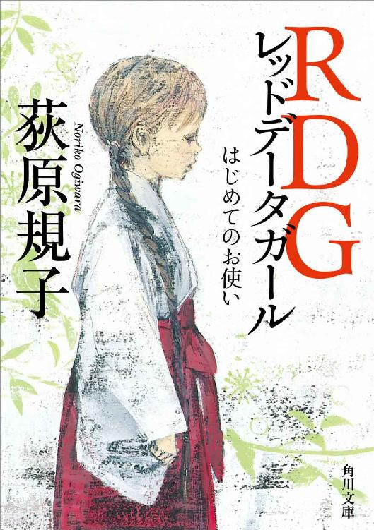
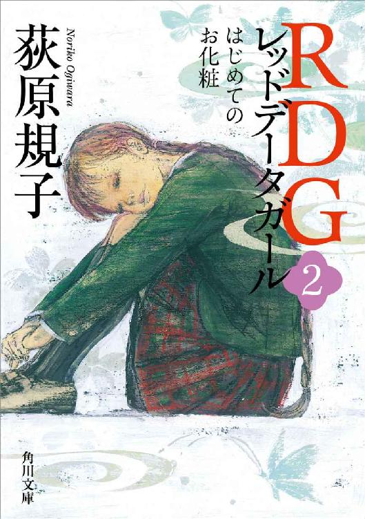
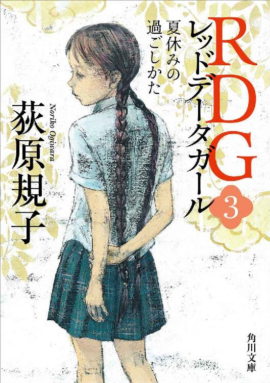
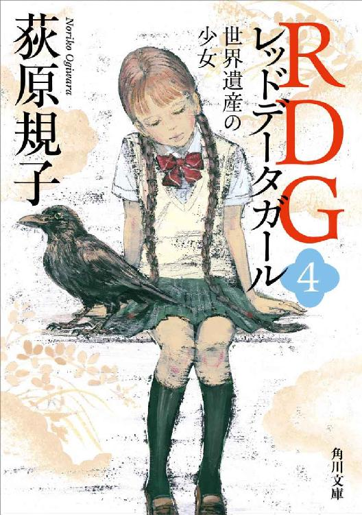
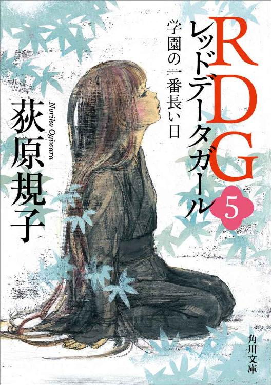
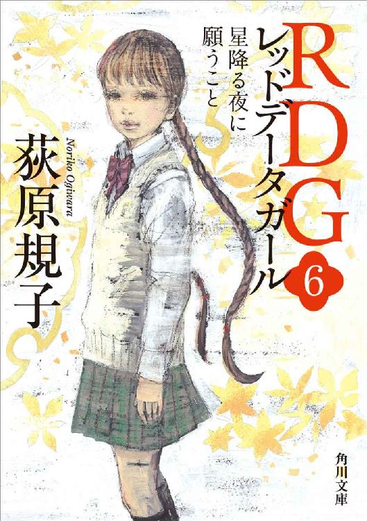
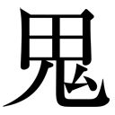

| RDG レッドデータガール 全６冊合本版 (角川文庫) | |
| 荻原 規子 | |
| (2014) | |
RDG レッドデータガール
全６冊合本版
荻原規子

角川ｅ文庫
本作品の全部または一部を無断で複製、転載、配信、送信したり、ホームページ上に転載することを禁止します。また、本作品の内容を無断で改変、改ざん等を行うことも禁止します。
本作品購入時にご承諾いただいた規約により、有償・無償にかかわらず本作品を第三者に譲渡することはできません。
本作品を示すサムネイルなどのイメージ画像は、再ダウンロード時に予告なく変更される場合があります。
本作品は縦書きでレイアウトされています。
また、ご覧になるリーディングシステムにより、表示の差が認められることがあります。

レッドデータブック
【英】Red Data Book ［略］RDB ［同義］RDB
絶滅のおそれのある野生生物の情報をとりまとめた本で、国際自然保護連合（IUCN）が、１９６６年に初めて発行したもの。
IUCNから発行された初期のレッドデータブックはルーズリーフ形式のもので、もっとも危機的なランク（Endangered）に選ばれた生物の解説は、赤い用紙に印刷されていた。
第一章 泉水子
一
新学期になって日の浅い、四月下旬のことだった。
校庭の桜はとうに葉桜に変わり、大部分は冬枯れしない四方の山々も、針葉樹の花粉を飛ばす季節の終わりを見せて、新緑に輝いている。
帰りのホームルームで、担任の中村可南子が「進路相談にかかわる二者面談」の通知を配ったので、鈴原泉水子は急に、ああ三年生になったと実感した。卒業すれば高校生となり、小・中変わらずにきたクラスの顔ぶれも、その先から同じではなくなるのだと。
山間部にある粟谷中学校は、そのくらいのんびりしたところだった。高校進学といっても、クラスのほとんどは、歩いて十分と離れていない県立高校へ進学する。県北の私立校を目ざす少数の生徒には、気のはる受験準備もあるだろうが、そうでない者にとっては、高校に受かる受からないという心配もほとんどなかった。
（それでも、二者面談か......）
二者とは保護者と担任のことだ。保護者を学校へ呼ばなくてはならない件がもちあがると、泉水子はいつもゆううつになる。父も母も出られないからだ。
ホームルームが終わると、渡辺あゆみの机の前に三田春菜がやってきて、さっそく高校の話をふった。
「やっぱり、外津川高だよね」
「今さらじたばたしても、遅いしね」
「私立受験をする子は、どのくらいいると思う？」
「生徒会長は必ず受けるだろうね。あとは万里奈や、上岡くんや......」
あゆみが数え上げるのを、泉水子がぼんやり聞いていると、あゆみは急にこちらをふり向いた。
「泉水子は、高校へ行くよね？」
どこの高校かではなく、行くのかと聞かれたことにはびっくりした。
「もちろん、行くけど」
「よかった。卒業したら巫女さん修行をするとか、そういう話だったらどうしようかと思った」
「まさか」
まじまじとあゆみの顔を見やったが、どうやら半分くらい本気で危ぶんだようだ。泉水子はたじろぎながら言った。
「わたし、巫女さんになんてならないよ。うちの神社は、もとから巫女さんをおかない神社だって、あゆも知っているくせに」
「知っているけれど、泉水子ってそんなに髪を伸ばしているし。ひょっとしてそうだったら、進学の話はまずいと思って」
あゆみは、思いきりショートにしている自分の頭に手をやって笑った。
たしかに、泉水子の髪はクラスで一番長かった。編んだ毛先が腰の下まであるのだ。ものごころついたときには髪を伸ばしていて、ずっと二本の三つ編みにしていた。この三つ編みをみんなが陰で「しめなわ」と呼んでいることも、不本意ではあるけれど、ずっと前から承知している。
「この髪は、なんとなく切らなかっただけ。他に似合う髪型もないし」
自分のお下げ髪にさわって、小声で言った。あまりに長い間こうしてきたので、切るきっかけがなかった。ここまで伸びてしまうと、切るにはなかなか勇気がいるものなのだ。
春菜が肩をもつように言ってくれた。
「神社の境内に住んでいるんだもの、巫女さんでなくても、やっぱり長いほうがふさわしいよ。でも、意外だな。わたしも泉水子は、おうちの関係に進むから髪を切らないんだと思っていた」
「ううん、おじいちゃんは、神社の手伝いはしなくていいと言っているし、今までだって何もしてこなかったもの」
答えながら、このあたりの隔たりが悲しいと思った。小学校から八年以上同じクラスで過ごし、その中では最も仲よくなれた渡辺あゆみと三田春菜だったが、それでも泉水子は、同じ立場の女の子にはなれないのだ。
あゆみが元気よく言った。
「ああ、それなら、みんなでそろって外津川高校へ行こう。わたしは、高校に入ってもバスケットを続けるつもり。春っちは？」
「わたしは、彼氏を見つけるつもり。粟谷中の男子は冴えないのばかりだから」
春菜がしれっと言うので、あゆみと泉水子は笑い声をもらした。
「じゃあ、泉水子は？ 高校生になっても神社からかようの？ 外津川高校には学生寮があるよ」
「学生寮？」
「泉水子も寮に入ってしまえば、放課後の部活動もできるし、いろいろつきあえるよ」
泉水子は息を吸いこんだ。高校に寮があることはもちろん知っていた。けれども、漠然と自宅からかよえない学生のためと考えていたので、自分が利用することは、これまで思ってもみなかったのだ。
「わたしが入ってもいいのかな」
「十分すぎるほど家が遠いと思うよ。通学に路線バスもないところなんだから」
あゆみが言い、春菜も身を乗りだした。
「そうだよ。高校生にもなったら、山奥から送り迎えしてもらっての生活なんて、とてもやっていられないよ。何もできていないでしょう、今の泉水子は」
何もできていない──春菜に言われて、即座にそのとおりだと思った。泉水子は今まで、他の生徒の仲間づきあいに加われず、学校と神社の往復以外、寄り道ひとつしたことがないのだ。休日にだれかの家へ遊びに行ったこともない。
あゆみが気さくに言った。
「きっと世界が開けると思うよ。わたしたちとも遊べるし、スポーツに本腰を入れてとりくめば、今ほど体育が苦手じゃなくなるかもしれないし」
「そうそう、泉水子は内気すぎるもの。もっと世間に出て、もまれないとね」
春菜が人さし指をふった。
「そのお下げ髪といい、泉水子がどこか変わって見えるのは、全部、神社に住んでいるせいだと思うよ。玉倉神社ときたら、まわりに何一つない山のそのまた上だもの。よく、今までがまんして暮らしてきたと思うよ」
泉水子は少しとまどった。ものごころついたときから玉倉神社にいるので、がまんするべきかどうかを考えたことはなかった──これからは、考えるべきなのだろうか。
「遠いのはしかたないの。親がどちらも県外の勤めだから、わたしはおじいちゃんのところで世話になるしか」
「山奥に居つづけなくてはならない理由はないと思うよ。義務教育のあいだは、保護者と住むのはしかたないけれど、高校生にもなったらね。ご両親には、何か言われているの？」
泉水子がかぶりをふると、あゆみは決めつけた。
「それなら、思いきって神社から出て、ふつうの女の子らしくして、その引っこみ思案をなんとかしないと。クラスの男子にさえ口がきけないようでは、明るい青春はやってこないよ」
泉水子には言い返せなかった。たしかに泉水子は、男の子と話すのがとても苦手なのだ。同性であっても、気心の知れない人たちが何人もいると、なかなか言葉を口に出せなくなってしまう。
しばらくためらってから、二人に聞いてみた。
「......わたし、もっと男子と話せるようになると思う？」
あゆみは手を伸ばし、泉水子の頭をなでた。
「大丈夫、大丈夫、わたしと春っちがついていてあげるから。泉水子は少しずつ変わっていけばいいんだよ」
春菜もうなずいた。
「そうそう、変えるとしたら、まずは外見からだろうな。髪型を変えただけでも、きっと大変身になるよ。泉水子のそのお下げ、あまりにトレードマークになって定着していて、かえって本人がよく見えなくなっていると思うんだ。こうして近づいて、よくよく観察してみれば、泉水子も意外ともとは悪くないのに」
「そ、そうかな」
褒められたのかけなされたのかわからずに、泉水子は口ごもった。
お下げ髪以外に特徴や取り柄がないということは、本人もずっと感じていたことだった。あゆみのように背が高くさっそうとしてもいないし、春菜のようにピンクのほおをもつ色白でもない。どちらかというと小柄で手足は小さめだが、きゃしゃと言われるほど細身でもない。
顔立ちもまた、取りたてて言うところがないのだった。まつげは長いが下向きで美点に数えられないし、墨をぼかしたような眉毛とうるんだ黒目は気の弱さを強調していて、それ以上のものにならない。
「そのメガネも変えようよ。そういう赤い縁のメガネって、今どき流行らないよ」
「あ、これ、もとはお母さんのだったから......」
泉水子がメガネの縁に手をやると、春菜はあきれたようにため息をついた。
「買い換えるならコンタクトにしなさいよ、コンタクト。これからはね」
校門を出ながら、泉水子は肩を落として考えた。
（......つまり、今のわたしは、あゆと春っちの目から見ても、とても変わり者に見えるってことよね）
せめて、標準から見劣りしないようにと願っているのだが、泉水子は、クラスメイトにもそうは見られていないようだった。家庭環境も、本人の能力も、本人の容姿も。
校門に続くコンクリート塀の角には、黒のセダンが停車している。部活動や委員会に参加せず、自家用車で送り迎えされること自体、だれひとりしていないことだった。後ろめたいので、目立たないよう校門を離れて駐車してもらっているが、今日はいっそう気が重かった。
泉水子が自家用車通学を認められているのは、お嬢様だからではなく、通学の手段が他にないからなのだ。うらやましく思う生徒はいないはずで、泉水子のハンデの象徴だった。
（山奥から来るから、こういう変わった子だって、今までずっと思われていたんだ......）
うすうす気づかないわけではなかったが、はっきり聞くとやっぱりショックだった。けれども、目をさまされたような気もする。今からでも、ふつうの女の子になる道がないわけではないのだ。
運転席にはいつもどおり、角ばって大きな体をした野々村慎吾が辛抱強く座っていた。彼はやとわれ運転手ではなく、玉倉神社に勤める神官のひとりであって、泉水子のためばかりに時間を割くことはできない。定時の送り迎えがせいぜいで、融通をきかせることができないのもそのせいだった。
「お待たせしました」
泉水子がそう言って後部座席に乗りこむと、野々村は黙ってうなずき、すぐさまエンジンをかけた。機嫌を悪くして無愛想なのではなく、たいそう口数の少ない男なのだった。彼が身近にいるせいで、泉水子は自分を無口だと考えたことがない。
シートに背を沈める前にお下げ髪を払いながら、泉水子は体の一部として当たり前になっている長い三つ編みを、あらためて見つめた──この髪を切ることができれば、自分の性質も変わってくるのだろうか。
（......お山に帰らず、ふもとで暮らして、学生寮で生活することができるだろうか）
自然に鼓動が速くなった。祖父の竹臣は、自分が寮暮らしをすることを許してくれるだろうか。
「ねえ、野々村さん。お母さんの仕事先は、今、岡山だっけ」
「そうですね」
運転席に声をかけると、野々村は太い声で答えた。無口とはいえ、話しかければ答える用意はあるのだ。
「学校で進路相談があるんだけど。岡山だったら、お母さん、来られないかな」
「さあ、すぐに東京にお帰りとは聞いていますが」
「無理ね、たぶん」
泉水子は自分で結論した。もともと、可能性は低かった。母の勤め先は警視庁公安部なので、仕事が片付けば東京へもどるのは当然なのだ。
鈴原紫子の住民票は、泉水子が四歳のころからずっと東京にある。すでに警視庁のベテランで、潜入捜査をするかなり特殊な部署についているらしかった。名前や住所を変えてわたり歩き、東京の家にもほとんど帰っていないため、ときには身内でさえ居場所をつかめない、神出鬼没の人になってしまっている。
玉倉神社の宮司、鈴原竹臣は紫子の父だった。泉水子が神社にあずけられた要因も、紫子の職種によるところが大きい。ときには、一年に一度しか母の顔を見ないことがあるくらいだ。
泉水子も母の不在には慣れてしまって、会えないことにあきらめがついていた。娘の目から見ても、家庭的とは言えない女性だった。だから、泉水子が恋しいとしたら、父親の大成のほうだった。
コンピュータプログラマーを職とする大成も、それほどいっしょに過ごせるわけではなかったが、父とは気持ちが通じ合っていたので、少々の不在であれば苦にならなかった。しかし、二年前に大手企業に引き抜かれ、カリフォルニアのシリコンバレーへ行ってしまった。現在もそこで働いている。
大成は、ひいき目に見ても少々すっとんきょうな人柄で、公共の場でさえ和服が好きで、羽織姿で空港へ行くので、落語家とまちがわれたりする。カリフォルニアの勤務先でも、そのスタイルで通しているという話だった。しかし、コンピュータを扱わせると群を抜くのだそうだ。
（きっと、優秀すぎるのね。二人とも......）
このように異彩を放つ両親から、自分のような不出来な娘が生まれたことは、不思議といえば不思議だった。山間の小さな中学校でさえ、泉水子の教科の成績はそこそこで、体育ともなれば絶望的なのだ。
原因はとっくにわかっていた──極端な引っこみ思案のせいだ。
「玉倉神社は山奥よね。この付近の人たちにとってさえ、引っこんでいる」
考えこみながら、泉水子は、野々村に言うでもなく言った。
「もしも、おじいちゃんの神社がもうちょっと開けたところにあったなら、お母さんだって帰ってきやすかったのに」
野々村の無口が気安いので、口にしてしまった言葉だった。だから、少しして野々村が返事をしたときには、思わずぎょっとしてしまった。
「玉倉山はよいところです。古くからの霊山のひとつで、世界遺産にも認定されて。山奥でなければ得られないものも、世の中にはあるんです」
（......世界遺産ね......）
野々村が、誇りをもってそう言っていることはたしかだった。
だが、世界遺産の保護指定のせいで、玉倉山には路線バスが通る見込みがこれからも決してないのだと、泉水子は黙って考えた。
走る車の外には、整然と並んだ檜の植林や色濃い椎や樫の斜面が続いていた。厚く茂った緑は光と水を貪欲に吸いこみ、隈なく稜線を覆っている。
橋をわたって玉倉山へ向かい、カーブの多い道を高く登るようになると、ときおり視界が開けて、はるかに重なる山々の濃淡が見わたせた。白い霞をまとわりつかせ、どこまでも尾根をつらねる紀伊山地の連峰だ。
泉水子にとっては当たり前の光景だったが、今日はいくぶん目に留まり、ここは山がちな紀伊半島でもとりわけ山深い中央部なのだと考えさせられた。
この半島の海岸線と連峰の真ん中を、世界遺産に認定された熊野古道が廻っている。玉倉神社が接しているのは、中央の大峯奥駈道と呼ばれるものだった。吉野から熊野までを南北に貫く高所の道で、修験道の霊場となっている。現在でも、志のある者たちが奥駈道を踏破する峰入り修行を行っているのだ。
玉倉山の山頂をわずかに下ったところに玉倉神社が建ち、神社の境内に、泉水子の家や修行者の宿所が建てられていた。ふもとの集落から見上げれば、隔絶した山の上なのはたしかだった。標高は千メートルほどあり、登るにつれて気温はみるみる下がっていく。
四月下旬ともなれば、学校付近の草花は初夏の色あいだが、泉水子の家のまわりの木々はまだ新緑だった。神のものとして手が入らず、植林のない玉倉山では、さまざまな落葉樹がさまざまな色あいの若葉で輝いている。
高台の駐車場で車を降りると、風の清涼が肌にしみた。ふもとと山を毎日往復する泉水子が、毎日気づかずにいられない、空と霞の匂いのする風だ。泉水子にとっては「お帰り」と言われているようなものだった。
（どうしてだろう......お山に着いてしまえば、わたしはここがいやだと思わない。学校にいるあいだは、家のせいでみんなから遠ざけられている気がするのに......）
杉木立の細道を歩きながら、泉水子は考えた。山ではものごとが異なって見えるのだ。
山の側から目を向ければ、ここは少しも淋しい場所ではなかった。さすがに冬場は閉ざされているが、これからの季節、何人もの修行者が往来し、神社に参拝し、宿泊を求めてくる。山奥にしては、ずいぶん人通りのある場所なのだ。
泉水子の家が境内にあるのは、宿所のひとつを改築したからだった。外見は、江戸期の文化財になりそうなほど造りが古い。だが、内部は大成が大幅に手を入れて、断熱材を施した最新タイプの住居になっていた。快適すぎると、竹臣などは文句を言っているほどだ。
山の上に快適な家をつくることに凝りまくったあげく、大成はアメリカへ行ってしまった。だが、泉水子が四歳のときからめんどうをみる佐和は、今でもいっしょに暮らしている。玄関の引き戸を開けてただいまを言うと、台所から出てきた末森佐和は、いつもの笑顔で出迎えた。
「おかえりなさい。今、胡麻プリンができあがったところですよ。味見をかねて、すぐにおやつにしましょう」
彼女は玉倉神社に勤める唯一の女性で、ハウスキーパーの他、修行者が宿泊したときのまかないを主に請け負っていた。そして、仕事に輪をかけての料理好きだった。
台所にこもって、煮たり焼いたりしているときが佐和の一番の幸せなのだ。そして、そういう料理人にふさわしく、福々しい顔と体つきをしていた。
「今度の胡麻プリンは、このあいだのとはちがいますよ。インターネットで画期的なレシピを見つけたんです」
年に数日しか山を下りず、この不便な場所に長く住みこんでいる佐和が、不満をもらすところは見たことがなかった。いっしょに暮らす佐和がそうだから、泉水子も、神社暮らしをがまんするものと考えなかったのかもしれなかった。
テーブルについてお茶をのみ、新作プリンの感想を述べあった後、泉水子は佐和にたずねてみた。
「この場所以外で暮らしたいと思ったことはないの？ ここにいると、お料理の材料も限られているでしょう」
「限られているところが、腕の見せどころじゃありませんか」
そう言って佐和は笑った。
「山菜やキノコを採ってきたり、保存食をたくさん作って悪天候にそなえたり。わたしは、そういうことに向いているんです。ここはまわりに何もないぶん、料理のしがいがたくさんある場所ですよ。修行者のかたがたにご奉仕するのも同じです」
「たいへんだと思わない？」
「そりゃあ、嵐で道路が通れなくなったりしたときなどは、心配にもなりますけど。それでも、大成さんの整備したこの家は、自家発電やら浄水器やら助かりますし。インターネットのおかげで、ここもずいぶん便利になりましたよ。世間のニュースに遅れないし、ないものは取り寄せできるし」
佐和は、町のにぎわいに出ていきたいとは考えないのだ。そして、泉水子とちがって家のパソコンを使いこなしている。大成が必要以上にコンピュータ化していったものだが、あまり苦にしていないようだった。
この場所にふさわしい女性なのだと、泉水子は考えた。
「わたしは、ここで何もしていない。ただ住んでいるだけね」
「泉水子さんはいいんですよ。学生なんですから」
少しためらってから、泉水子はたずねた。
「今日、友だちに、卒業したら巫女さんになると思ったと言われたの。おじいちゃんは、手伝わなくていいとずっと言っているけれど、それでいいのよね？」
佐和は落ち着いた声で応じた。
「そりゃそうですよ。紫子さんだって、大成さんだって、宗教と関係ないお仕事におつきじゃありませんか。ましてや泉水子さんを、神社の働き手にしたいとは思っていらっしゃいませんよ」
泉水子は思いきって口にした。
「わたしがここを出て、別の生活をすることになってもかまわないと思う？」
佐和は、案外あっさりうなずいた。
「いずれそういうことになると、竹臣さんも思っておられますよ」
ほっとした泉水子は、カバンから出したプリントを佐和にさしだした。
「学校で、進路相談があるの。わたし──外津川高校の寮に入りたいと思う」
祖父の竹臣とは、夜九時をすぎてから顔をあわせた。
泉水子の家と社務所は同じ敷地内にあったが、竹臣は朝六時に家を出ると、そのくらいの時間まで社務所のほうに詰めていて、まずぜったいに帰ってこないのだ。
古い体質の竹臣は、大成のつくった家を居心地悪く感じている様子だった。たしかに、畳敷きの部屋は竹臣の寝室だけという住宅では、一日中袴姿で通す竹臣には住みにくいかもしれなかった。エアコンが効きすぎて体がなまるとも言っている。
（考えてみれば、わたし、巫女になれるはずがないわ......）
夕食のクリームシチューを食べながら、泉水子はしみじみ考えた。家が神社の境内にあるとはいえ、テーブルといすで生活をしているし、自分の部屋ではベッドに寝ている。祖父とはちがって肉も魚もたくさん食べる。ここは神社と別格の一般家庭であって、そのかわり、神社に例祭があるときなどは、佐和と二人、窓を閉めてなるべく静かにしているのだ。
大成がそのようにしつらえたのだし、竹臣も容認している。泉水子を、宗教にかかわりなく育てる方針にちがいなかった。それにしては、ふつうの女の子になれていないような気がするが、これもおいおい変わっていくのだろう。
竹臣がもどってきて居間にいるのを知った泉水子は、ころあいを見て、祖父の前に進み出た。
「おじいちゃん、学校の面談のことなんだけど......」
湯のみ茶碗を手にした竹臣は、目を細めて孫娘を見た。半白の短い髪、日に焼けた顔の目尻にたくさんのしわを刻んだ、穏やかであくの少ない老人だ。ほほえんでいると、怒りを発したことなど一度もない人物に見える。それは見当ちがいなのだが、他の人間はともかく、泉水子がめったに怒られないのは事実だった。
「ああ、佐和さんからプリントを見せてもらったよ。二者面談には、たぶん、大成くんが行くことになるだろう」
泉水子の目がまるくなった。
「お父さん、アメリカから帰ってこられるの？」
「プロジェクトは片づいていないが、一旦帰国のスケジュールを組んだという話だよ。向こうへ行っている相楽くんからも、同じ連絡があった。予定どおりなら、この日の面談にはまにあうだろう」
「本当？」
「大成くんは、もう去年のうちから、泉水子の高校進学に関して案じていたからね」
泉水子は両手の指を組みあわせた。すっとんきょうではあっても、娘思いの大成だった。太平洋を隔てていてさえ、泉水子の成長を思いやってくれている。
「どのくらい長くこちらにいられるのかな。早くお父さんに会って話したい......」
「泉水子は、外津川高校へ行きたいのだったね」
念をおすように竹臣は言い、泉水子はうなずいた。
「そうなの。そして、できたら高校の寮に入りたいの」
「おまえが自分から寮生活をしたいと言い出したのは、よいことだと思うよ。わしも、ころあいだろうと思ってはいた。これ以上、おまえを神社にとどめておくのはためにならないと」
竹臣は重々しい声で言ったが、どこかに困惑した含みがあった。耳ざとく聞きつけて、泉水子は祖父の表情をうかがった。
「わたしには、寮生活は無理だろうと思っているの？」
「そういうわけではないが......」
いくらかためらってから、竹臣は告げた。
「じつはね......大成くんは、もうすでに、おまえの行くべき高校を決めているのだそうだ」
泉水子は、もう一度目をまるくするはめになった。
「行くべき高校？ いったいどこに」
「東京にあるのだそうだ」
「東京？」
泉水子が大声になったので、竹臣は言いにくそうになった。
「そこにも寮が──寄宿舎があるという話なのだよ。だから、泉水子が寮に入る決心をしていることは、あるいは役に立つかと」
「ぜんぜんちがうでしょう、おじいちゃん」
あきれ返って、泉水子はテーブルに身を乗りだした。
「このわたしが、いきなり東京へ行って暮らせると思うの？」
「わしも、どうかとは思っているのだが......」
どこかあきらめたような声音で竹臣は言った。
「しかし、大成くんが、そのためにわざわざ帰国する気でいるのであれば、どういう内容なのか、直接話を聞くまでわしにも判断できないのでね」
泉水子はきっぱり宣言した。
「わたしは、ぜったいにいや」
茶をすすった竹臣は、あからさまに結論を先延ばしにする態度だった。
「とにかく、大成くんの帰国を待とう」
二
登校してきた泉水子をひと目見て、あゆみと春菜はあっけにとられた顔をした。
「切ったの、髪」
「前髪だけ、ちょっと」
一斉の注目が恥ずかしかったが、泉水子も、照れ笑いを浮かべられるくらいには「やったね」という気持ちになっていた。
「少しずつ、変わらなくちゃと思って」
三つ編みは相変わらずなので、変身したとまでは言えない。だが、眉にかかる長さに切りそろえた前髪が自由に動く感触は、本人には新鮮に思えるものだった。手でなでつけながら、つつましくたずねた。
「変かな......」
「ううん、変じゃない。イメージがずいぶんちがうよ」
「前よりずっと今風になった。そのほうがいいよ」
あゆみと春菜は口々に言った。
「でも、泉水子って、意外にくせっ毛だったんだね。日本人形みたいにまっすぐな髪かと思っていた」
それは、じつは泉水子にも意外なことだった。毛先があちこちにはね、おとなしく下がっていないとは思わなかったのだ。今まで洗ったときにまっすぐだったのは、長さからくる重みでそうなっていたらしい。
「本当はね、春っちみたいな髪型にしたかったんだけど」
泉水子の理想は、肩の長さに伸ばした春菜のスタイルだった。一部を留めたり、束ねたり、いろいろな髪飾りが楽しめるからだ。だが、美容院で切らないと無理だとわかっているので、今のところ泉水子には手がとどかなかった。
春菜はうれしそうに笑った。
「泉水子にも、見る目があったんだ。うんうん、休日に出てくることができれば、わたしの行っているお店につれていってあげるのに」
「わたし、土日に車を出せないか、野々村さんにお願いしてみる」
決意をこめた声音で、泉水子は言った。
「そういうこと、今まで交渉したことがなかったけれど、わたしにできることがあるかもしれないから」
あゆみが喜んで提案した。
「土日に出てこられるなら、今度のバスケの試合、泉水子も応援に来てくれないかな。その後、お店にもつきあえるし」
あゆみも春菜もバスケットボール部員で、週末には試合を控えていた。なかでもあゆみはキャプテンなので、意気込みのほどがちがっている。泉水子はうなずいた。
「交渉してみるね」
「うわあ、前向き。泉水子、その調子」
ふつうの女の子になるのだと、泉水子は考えた。そのためには、自分で努力をしていくしかないのだ。
（東京の学校へなど行かない......）
あゆみや春菜という、自分をわかってくれる友人なしでは、学校生活など考えられなかった。この二人とさえ、八年かけてようやくここまで言葉を交わせるようになったのだ。
泉水子がどれほど友人をつくりづらいか知っていれば、大成であっても、そんな提案はできないはずだった。都会の生徒たちは、変わり者の泉水子を白い目で見ることしかしないだろう。こちらから友情を求められるはずもない。
（結局、お父さんだって、わたしのことなどわかっていないのよ......）
「泉水子、ケータイのアドレスは？ メルアドはもっていたよね」
あゆみにたずねられて、われに返った泉水子は口もとを押さえた。
「あ、ごめん......前のケータイ、壊れちゃって。まだ新しくしていないの」
「それなら、つぎの課題はケータイかもね」
春菜が冗談めかして言った。
「なしでも平然としているところが、泉水子の時代がかったところなんだよ。休日に会うなら、お互いに連絡がつくようにしておかなくちゃ」
（携帯電話か......）
どういうわけか、泉水子は携帯電話と相性が悪かった。買ってもらった電話が二、三ヶ月で壊れてしまうのだ。すでに何回かそういうことがあって、佐和に新しくしてくれと言いづらくなってしまった。
「じゃあ、なるべく早く買ってもらうね」
二人に言いながら、少々気まずく佐和の顔を思いおこした。
今朝、泉水子が切った前髪を見て、佐和は絶句していたのだ。あまりあれこれ話さないまま登校してきてしまったが、気に入らないということは容易に察せられた。相談もしなかったことに対して、腹を立てているのかもしれない。
（でも、わたしの髪なんだから。わたしだって、自分の髪型くらい、自由に選ぶ権利はあるはずよ......）
自分に言いきかせてみたものの、どうして身勝手をしたような後ろめたさを感じるのかが不思議だった。昔は、洗髪もその後に編み上げることも、全部佐和にやってもらっていたせいかもしれない。
考えてみれば、髪を解いた泉水子の姿を見たことがあるのは、これまで佐和ひとりきりだった。しめなわと陰口をきかれるほど、きつく編んで整えた髪しか他人に見せてはいけないと、暗に泉水子に教えこんだのは彼女だったのかもしれなかった。
粟谷中三年のクラスで、一番幅をきかせている男子は三崎洋平だ。声が大きく、遠慮がなく、勉強がきらいで授業中に勝手にふざけだす。
クラスのボスというほど仕切っているわけではないが、言いたいことを言い、腕力でも負けないために一目おかれ、小川智也や瀬谷和人といった、似たような連中とグループを組んでいた。泉水子がもっとも避けて通りたい、がさつでうるさい男子たちだ。
特別教室へ移動するために席を立ったとき、間の悪いことに、泉水子はこの洋平と、はちあわせしそうな近さで顔をあわせてしまった。息をのんだ泉水子を見おろして、洋平はいきなり評した。
「しめなわにひさしができている。だっせーの」
ひととおりみんなから「髪を切ったの」と言われ終わって、もう、あまり気にしなくなっていたときだったので、この一言は不意打ちだった。思わず額に手をやって隠すと、洋平に従っていた智也と和人が、彼といっしょにばか笑いをしながら通りすぎていった。
（この程度のからかいですむなら、よしとしなければ。小学校のころのように、お下げを引っぱったりしなくなったのだから......）
落ちこむまいと考えていると、彼らの一番後に続いた小柄な和宮さとるが、教室の出口でふり返り、泉水子を見てほほえんだ。
（和宮くんにまで、笑われた......）
くせっ毛が変なのだろうかと、再び気になったが、それよりも不思議だったのは、和宮の笑顔が他の男子とは異なって見え、妙に印象に残ったことだった。あまり目立たない生徒なので、これまで気づかなかったのかもしれない。
（......そういえば、和宮くんにいじめられたりからかわれたりしたことは、一度もなかったっけ）
泉水子は男子とほとんど話さないが、今のように一方的に言われることも含めれば、小学校から同じメンバーの学校生活で、一度も接していないというのはあり得なかった。それなのに、和宮さとるに何か言われて記憶に残ったことは、ほとんどないのだ。
（どうしてだろう、今ごろ急に......）
今までこれほど意識しなかった男の子に、どうして急に目をひかれたのだろう。
それとも、和宮の笑顔のほうに、新しい何かが含まれていたのだろうか。
ぼんやりと手をおろすと、風に吹かれて前髪がそよぐのを感じて、もう一度さわってみた。思ったより手ひどくはねているのかもしれなかった。
つぎの授業は、三階のＰＣ教室で調べもの学習だった。
生徒ひとりに一台あたるパソコンを並べた特別教室は、三年前に改修工事をして設置した、粟谷中自慢の施設だった。機材やカーペット敷きの床やエアコンのせいで、校舎の他の部分とはずいぶん異なり、どこかの企業オフィスに足を踏み入れたように感じられる。
泉水子が入学したときには、すでにこの教室ができあがっていて、中学校のコンピュータ導入に大成が力添えをしたという話を小耳にはさんでいた。そのせいなのか、泉水子はＰＣ教室に入ると、どうも気づまりなものを感じるのだった。
おおもとには、大成の娘でありながら、パソコン操作が苦手だという負い目があった。
泉水子がさわると、機械がちょくちょくフリーズを起こしてしまうのだ。何度も電源を入れ直すはめになるので、最近は家でも学校でも、できるだけ手を出さないようにしている。
おっかなびっくり接しているうちに、泉水子はパソコンの駆動音やパソコンが一斉に動いている室内に、圧迫感をおぼえるまでになってしまった。父の大成は一日中、このようなスペースで過ごしているのだと思うとなおさらだった。
この日の授業は、泉水子がもっとも苦手なインターネット検索をしなければならなかった。だが、グループ学習なので逃げ道はあった。事情をわかってくれる春菜が同じ班になり、さっそくたのむことができたのだ。
「お願い......清書のほうを二人ぶんやるから」
「はいはい」
春菜はむしろ検索するほうが好きなので、気軽に引き受けてくれた。
「泉水子って、キーボードはそれだけ打てるのに、ネットもメールもできないっていうのがおかしいよね。サイトへ飛ぶのなんて、マウスひとつなのに」
「時間がかかっちゃうの、わたしだと」
生徒会長の越川美沙が、二人の会話を耳にしてふり返った。
「あなたたち、できないことは他人まかせ？」
春菜は、その口調にかちんときたらしかった。
「いいじゃない、助け合うためのグループでしょう」
「鈴原さんなんて、発表だって絶対にしないつもりなのに」
泉水子は言い返せなかった。たしかに、発表もまた最大苦手のひとつだった。
黙ってしまった相手に、軽べつした鼻息をもらし、美沙は再びパソコン画面に向かった。
「好きなだけ、楽をしていれば。わたしには、そうしてずるけている人の気がしれないけれど」
春菜は泉水子に小声でささやいた。
「言わせておこう。私立を受けるからって、ますます尖っているのよ、会長たち」
越川美沙と彼女の仲よしグループには、何かとつまはじきにされることを、泉水子も前から承知していた。
三年のクラスで一番出来がよく、なかなか美人でもある美沙は、男女ともに認めるクラスのリーダー格だ。けれども美沙は、内気な泉水子にいらだちはしても手をさしのべようとはしなかった。美沙と女子を二分している渡辺あゆみが泉水子の肩をもつので、あるいはそのせいかもしれないが。
（ずるけている......か）
言い当てられた気がしなくもなかった。何にでも気おくれを感じていることと、するべきことをせずに怠けることの差は、はたから見ればないに等しいのだ。
ぼんやり教室を見回すと、勉強ぎらいな三崎洋平が、ここでは熱心に取り組んでいるのがパソコン越しに見えた。何を画面に映しているのか、周囲に男子を集めてさかんに言い合っている。集まった中には和宮さとるもいた。
（今日は、やけに和宮くんが目につくな......）
不思議に思いながら、彼をそっとながめた。和宮の態度は控えめで、決して人を押しのけて前に出ようとはしない。見過ごされるのがうなずけるような男子だ。だが、それでいて、洋平たちからつまはじきにもされずになじんでいるのだった。
ふいに泉水子は痛切に思った。自分もせめて和宮さとるのように、目立たずに溶けこめる程度には、同じことのできる生徒でいたい──
（パソコンは苦手と思いこむから、ますます自分でさわらなくなって、ますますだめになっていくのでは......）
「春っち、わたし、やっぱり自分でやってみるね」
決意して告げると、春菜がまばたきして見返した。
「気にしているの、会長のいやみ」
「本当のことだったもの」
急に緊張したせいか、風が冷たいような生暖かいような、変な感覚だった。ＰＣ教室の窓は閉め切ってあったが、前髪がそよいだので目を上げる。だが、エアコンの風かどうかはよくわからなかった。
（風を気にしているときじゃない......）
頭をふった泉水子は、思いきって目の前のキーボードをたたいた。なぜか、手もとがはるかな場所にあるように感じられた。
風景が、水底にあるようにゆらゆらして見える。マウスが漂いだしてしまう気がしてあわててつかんでから、めまいがしているのだと気づいた。治まるのを待ったが、その感覚は治まるどころか周囲に拡大していった。
ＰＣ教室内に、透明な水がせり上がってくるのがわかった。空気と同じに明るく澄んだ水で、すぐにそれとわからないが、ガラス越しの光が波打って見える。透明な水が躍る中では、機械の駆動音も質を変え、谷川のせせらぎのように聞こえた。
春菜もその他の生徒たちも、気づかずに静かにしている。というより、みんなが気づいたかどうか、確認する余裕が泉水子にはなかった。揺れる光が目にまぶしく、あたりがほとんど見えない。はっきりと見えるのは、目の前のパソコン画面だけだった。
止めていた息が限界になって、少しずつ吐いてみる。水が上がってきたときに、無意識に溺れまいとしたのだ。吸いこんでみれば、楽に息ができた。幻だという思いがかすかに浮かんできた。それとも、授業を受けていること自体が夢だったのだろうか。
急にパソコン画面が切り替わった。液晶に大写しに浮かび上がったのは、大成の顔だった。ぼさぼさの髪、とぼけた丸メガネ、焦げ茶の着物の襟もと。大成は一瞬驚いた表情を浮かべたが、すぐにのんびりした笑顔になった。
「あれ、泉水子。ビデオチャットなんか使えるようになったんだね」
「使えないってば」
泉水子は、これがビデオチャットなら集音マイクはどこだときょろきょろした。
「お父さん、本当にお父さんなの。今、どこにいるの」
「ああ、うん、会社だよ」
大成はそう言って、右手を髪につっこんだ。
「ごめんね、泉水子。日本に帰るつもりだったのに、そのつもりで荷造りまでしたのに、土壇場でだめになっちゃったんだ。こちらの仕事にアクシデントがあって」
「帰れないの？」
あまりに父が言いそうなことだったので、泉水子は大成と会話していることに確信をもってしまった。
「二者面談、出てくれないの？」
「ごめんよ。でも、相楽くんはそちらに向かったから。きっと、もう、着いているころだよ」
「相楽さんが来たって、保護者じゃないのに」
「うーん、だめかな」
まのぬけた返事をする父親に、泉水子はふくれて言った。
「それなら、東京の高校がどうこうということもなしにしてね」
「ああ、そのところはぜひ、行く気になってほしいんだよ。鳳城学園高校というんだ」
「どういう名前でもいや」
「でもねえ、泉水子」
大成はいくぶん気弱に言った。帰国できない引け目は感じているらしい。
「泉水子のためにあると言っていい学校なんだよ。今年開校したてだから、設備も最新できれいなところだ。教師たちも優秀な人材を集めていて、お父さんは学長さんと話をして教育方針に納得がいったよ。お母さんだって賛成しているし......」
「お母さんと会ったの？」
「いや、きっと賛成を......」
冷静になろうと努力してから、泉水子は告げた。
「お父さん、わたし、もう自分で自分のことを決められるの。そんなふうに、わたし抜きで進められても困るの。面談に来てもくれないで、そんな希望は先生に話せない。わたしは地元の高校に進学するから」
画面上の大成の映像がゆらりと揺れた。
「泉水子？」
（だけど、わたし、どうしてお父さんとしゃべっているの......？）
ふいに理性がもどってきて、背筋が寒くなった。自分が今、どこにいるのかわからない。いつからこうしているのか、どうしてこんなことをしているのか、過去につながらなくなってしまったように思えた。
「泉水子、少し落ち着いて聞きなさい......」
大成はまだ声を発していたが、恐慌とともに谷川の水音が高まってきて、彼の声がかき消されていった。居ても立ってもいられないほど怖くなり、この恐怖をどうやって止めればいいか、泉水子は必死になって考えた。
（シャットダウンだ......はやく電源を切らなくては）
シャットダウン。
ぷつりと断ち切られた音がした。同時に閃光が目の前をよぎり、泉水子は目をつぶって身をすくめた。しばらく体を固めたままつぎに起こることを待っていたが、やがて、空気の暖かさを感じ、教室内の気配と喧噪がもどってきた。
言いようもなく安堵してまぶたを開くと、目の前のパソコンは画面が真っ黒になっていた。本当に終了していたのだ。
そして、周囲のざわめきの中では洋平が大きな声を出していた。
「先生、パソコンの電源が落ちて動きませーん」
「先生、こっちもです」
「ぜんぜん再起動しません」
ＰＣ教室に設置された三十台のパソコンは、どれも二度と動かなくなっていた。同時に校内ＬＡＮをつないだ職員室のパソコンも停止し、成績その他のデータが消滅して大騒ぎになっていた。
三
担任の中村可南子は、もちろん青くなった。
専門業者が来てパソコンと配線を調べ、使用不能が決定的になると、あわてて犯人さがしがはじまった。ホームルームの時間に、いたずらが原因であれば度が過ぎると厳しく告げ、パソコンが壊れる直前に不審なことをした者は、正直に申し出るように言いわたした。
穴があったら入りたい思いをしながら、泉水子は申し出るしかなかった。自分が壊したようだが、自分でも何をしたかわからないのだ──と。
「あなたが？」
教卓の前でうなだれる泉水子を、中村は困惑した目で見やった。どうやら、洋平のようないたずら者の生徒を想定していたらしい。
「それで、三田さんは、鈴原さんが何かしているところを見ていたの？」
つきそっていた春菜は、肩をすくめた。
「いえ、あの、ふつうのことをしていただけだと思うんですけど」
「でも、鈴原さんは自分がやったと思うのね。なぜ？」
「何をしていたか、わからなくなったんです......」
くり返すしかなかった。シャットダウンを念じたのはたしかだが、まさか学校じゅうのパソコンが使えなくなるとは思わなかったのだ。
中村はため息をついた。
「理由もなく壊れるはずはないのよ。まして、一台二台ではなく全部だなんて。鈴原さんには、わたしといっしょに校長室に来てもらいます。校長先生に自分のしたことをよく説明して。パソコンの総入れ替えということになったら、費用の面でも、内輪ですむ問題ではなくなってしまうのよ」
（......校長室に呼び出される生徒になってしまった）
泉水子には、何よりそのことがショックに思えた。今まで、これほど目立って問題を起こしたことはなかった。それなのに、はみださない生徒になりたいと思ったとたん、校長から叱責を受ける問題児になってしまったのだ。
中村は、しおれ返った泉水子を従えて校長室のドアをノックし、校長や生徒指導主任の唐沢を前にして、泉水子とともにＰＣ教室の一件をなんとかつじつまが合うように語りなおした。校長も唐沢も、頭から叱りつけることはなく、口調を荒だてはしなかったが、しでかしたことの大きさに打ちひしがれている泉水子には、叱責と同じに感じられた。何度もくり返し、起きたときの情況をたずねられたからだ。
（わたしって、本当は、少しおかしいのだろうか......）
そう考えはじめると、いろいろなことが符合するから不思議だった。自分が山奥の玉倉神社にあずけられて育った理由。それは、そうして隔離するにふさわしい、何かの兆候があったからではないのか。神社に住むから変わった子と言われるのではなく、もとからふつうでないために、祖父の神社に遠ざけられているのではないか──
（どうしよう......わたしは本来、お山に閉じこめておくべき者だったとしたら......）
教師に囲まれて問いただされているうちに、だんだん救いようのない考えにとらわれた。東京の高校どころではなく、どこの高校にも──地元の外津川高校に進学することもできない身なのではないだろうか。
今回のパソコン破壊の件を、学校は家庭に連絡するにちがいなかった。これを聞いたら竹臣は、泉水子が神社を出ることに賛成しなくなるだろう。寮生活をすすめることを言ってくれたが、この不始末では意見をあらためるだろう。考えれば考えるほど、そう思えてきた。
「鈴原さん、何も、泣くことはないのよ」
泉水子が深くうつむいたせいか、中村が言った。まだ泣いてはいなかったのだが、その言葉を聞いたとたん、泣き出してしまった。校長室を出るまではがまんするつもりだったのに、台無しだった。
「そんなに自分を責めなくていいんだよ。事情はだいたいわかったから、話はもういいだろう」
校長がそう言ったときだった。職員室側のドアが開いて、隙間から教頭がどこかあわてた顔をのぞかせた。
「校長、たった今電話がありまして。ヘリコプターの着陸要請がきています」
「ヘリコプター？ この学校に？」
「はい、我が校の校庭に」
「なんだね、急病人の移送でもあるのかね」
校長がいぶかしげに問うと、教頭は一瞬ためらってから告げた。
「それがその、うちの生徒を迎えにくるそうで」
校長は席を立ち、教頭とともに職員室へ行き、数分後には校長室にもどってきた。顔には、先ほど教頭が見せた表情と同じものが浮かんでいた。
「ええと──鈴原くん。南紀白浜の空港から飛んできたヘリコプターが、きみを玉倉神社に送りとどけるという話なんだが、その、心当たりはあるかね」
中村が目をまるくして泉水子を見やった。
「なんですって、まさか、あなたのおうちのヘリコプターだというの」
「しかし、どうしてヘリコプターなのか、聞いてもいいかね」
校長は困惑を隠せない様子でたずねた。
泉水子はただ、かぶりをふった。校長たちが常識はずれだと考えていることはよくわかり、泉水子もたしかにそう思ったからだ。
空港に設置した格納庫に、鈴原家が所有するヘリコプターが一台あるのは事実だった。
大成も、紫子も、帰ることが可能なときにはそれに乗って玉倉山に帰ってくる。けれども、学校のお迎えにヘリコプターを使うほど、周囲から浮いた行動をとる人間は、少なくとも玉倉神社の関係者にはいないはずだった。
教頭の声で校内アナウンスが入り、ヘリコプターが緊急着陸するので校舎から出ないように、外にいる生徒は一時校舎に入るようにと指示があった。そして、実際にドラムを連打するようなローターの騒音が雲の下に響きはじめた。
校長も他の教師も、じっと座っていられないように校庭側の窓に寄っていく。着陸をながめないのは泉水子だけだった。二階で上がった歓声が階下まで伝わってくるところをみると、教室の生徒たちも全員窓辺で見物しているらしい。
（そんなはずないけれど......聞き覚えがある......）
ハンカチをあてがった顔を上げずにいた泉水子だが、それでもだんだん周囲のことが気になってきた。着陸するヘリコプターのたてる騒音は、泉水子がよく知っているものだった。他の機体と聞き比べたことなどないのだが、泉水子自身が何度も乗ったことのある、ベル２０６Ｂのタービン・エンジンで耳慣れたものと同じだ。
（まさかとは思うけれど......）
竹臣が、ヘリコプターを学校にさしむけることなどあるのだろうか。泉水子にとって学校生活の目標は、他の生徒と同じようになれること、どこも目立たずに同年の子どもとなじめることだと、長年にわたってさとしてきた竹臣が。
（いくらなんでも、こんな派手なふるまいは......）
野々村であってもするはずがなかった。彼もまた、泉水子が他の生徒から浮かないよう、極力目立たないよう、いつも気をつかっていた。小学校の送り迎えを始めてからこちら、野々村が学校の敷地に足を踏み入れたことは一度もない。たとえ、泉水子が男の子にいじめられて泣こうとも、彼は黒のセダンを降りようとはしなかったのだ。
窓ガラスを震わせるほどに大きくなった騒音が急に途絶え、機体は難なく校庭に収まったようだった。教師たちは気ぜわしく言い合いながら職員室へ行ってしまい、泉水子だけが校長室に取り残された。さすがに泣いてもいられなくなって、赤い縁のメガネをぬぐい、かけなおしていると、やがて校長室のドアが大きく開かれた。
「泉水子、ここにいたのか」
目に飛びこんできたのは、栗色に染めた頭髪と底抜けに明るい笑顔──少年のような笑顔だった。
「わたしが来たから、もう心配いらないよ。事情は全部聞いてきたから、あとのことはまかせなさい」
まるで、救出にきた白馬の騎士の口ぶりだった。そのくらい、誇らかで自信たっぷりだった。相楽雪政には、昔からそういうところがあった。あまりにこの場にそぐわないので、泉水子はたじろいで身を引いたが、アメリカ帰りの相楽にはそういった点がまったく通じないようだった。
「帰っていたの......相楽さん」
「到着したばかりだったよ。タイミングがよかったね」
彼は神社の古なじみで、以前は修行者の宿所に住みこんだこともあったし、大成が家にいたころは、よく訪ねてきていた。最近は彼もアメリカにわたっていて、ここ半年ほど顔を見かけなかったが、竹臣も佐和もよく彼の名前を出すし、知らずに口調に親しみをこめる。相楽はたしかに、だれの印象にも強く残る人物ではあった。
「あのう、相楽さん、ヘリで学校には......」
「いけなかったというのかい、非常時じゃないか」
相楽の背後から、危ぶむ表情をした担任の中村が進み出てきて、泉水子にたずねた。
「鈴原さん、このかた......本当に神社のお知り合い？」
泉水子はうなずいたが、中村の懸念は消えないようだった。
「保護者代理で、あなたを迎えに来たとおっしゃるのだけど。見たところ、保護者というよりは......」
中村はためらいながら相楽を見やった。黒のフライトジャケットに細身のジーンズ、ミントグリーンのシャツといういでたちの相楽は、何か問題でもと言いたげに、微笑で教師を見返した。担任の中村は、泉水子と同じようにたじろいだ。相楽の絶対の自信に出会うと、たいていの人間はたじろぐものなのだ。
咳払いして、校長がかたわらに進み出た。
「校長の関根です。申し上げにくいことですが、学校では事故防止のため、ご家族でないと、生徒の引きわたしに応じられないのです。鈴原くんの場合、ご両親が遠くにおられることは十分承知しているのですが」
「校長先生ですか、泉水子がお世話になっています。鈴原大成の友人で相楽ともうします」
明るい瞳で校長を見つめた相楽は、折り目正しくあいさつした。
「鈴原から、娘をよろしくたのむと言われています。書き付けなどはもっていませんが、どうすれば身の保証ができますかね。向こうに電話を入れましょうか......アメリカとの時差がありますが」
「失礼ですが、相楽さん、今おいくつですか」
言葉をさえぎって校長がたずねると、相楽はふいに了解した笑顔になった。
「ああ、その点を心配しておられたのですね。保護者資格はあると思いますよ、今年で三十三になります」
「ご冗談を」
「若く見えると、よく言われます」
少々得意げに相楽は言った。そういう表情が子どもっぽく、二十歳そこそこにしか見えないのだと泉水子は考えた。中背でほっそりした体形も、いかにも若者然としている。
「大成とは四歳しか離れていません。これでも、わたしには泉水子と同年の息子がいるんですよ。そう言えば信用してもらえるでしょうか。この次は、もう少し保護者らしい服装をしてこようと思いますが、今日は緊急だったもので」
相楽は愛想よく言葉を続け、校長と中村があっけにとられた顔で泉水子を見たので、泉水子は肩をすくめて答えた。
「本当のことです......相楽さんの年も、息子さんのことも」
「泉水子も請けあっていることですし、これで父親代理の件は解決ですね」
押し切られるかたちで、校長も泉水子がヘリコプターで帰ることを認めざるを得なくなってきた。校長と相楽がまだ話している最中に、中村が声をひそめて確認した。
「わたしより年上って、たしかなことなの？ 中三の息子さんがいるというのは、あんまりなのでは？」
「でも、いるんです。深行くんといいます」
「奥さまが年上なの？」
言っていいものかどうかためらいながら、泉水子は言った。
「そこまではよく知りません。相楽さん、今、独身なので」
中村は鼻息を荒くした。
「独身なのね。本当なのね」
泉水子にも、何がおこっているのかうすうすわかりかけてきた。相楽雪政が身にまとっている独特の光芒は、周囲からくっきり際だち、周囲の人間を魅了するのだ。ヘリコプターで舞い降りてきただけでも十分注目に値するのに、相楽本人の容姿に、人目を引きつけてやまない要素がある。
（......どうしてこうなるのだろう）
なりゆきに驚きながら、相楽につれられて玄関を出ると、学校じゅうの人間が校庭側の窓に寄り集まっているのがよくわかった。日射しの下に出た相楽は、ごくさりげなく胸ポケットのサングラスをかけたが、そのしぐさは、泉水子の目からみてもタレントのように映った。校舎のどこかでかん高い声がわきおこる。
かたわらの泉水子はたいそうみじめだった。
学校自慢のＰＣ教室を使用不能にしたあげく、この帰宅のありさまでは、ふつうの生徒だと言い張ってもむなしいものだった。体じゅうに痛いほど校舎からの視線を浴び、相楽の後ろをすごすごと歩いた。何かおかしなことになっている──望んでいた当たり前の女の子の生活が、恐ろしい勢いで遠ざかっていく。その空恐ろしい予感だけが、胸の内にわきかえっていた。
ローターを回転させ、校庭から二メートルほど浮いてホバリングしたヘリコプターは、びくともしない安定性を保って機首を風上に向け、やがて、前傾姿勢をとって舞い上がった。相楽のパイロットとしての腕前はたしかなもので、泉水子もその点には不安をもっていなかった。ただ、衆人環視のもとで乗りこむことに火がでるほど恥ずかしい思いをし、余波でぐったり疲れただけだ。
シートにしばらく沈みこんでいた泉水子は、校舎が下方に遠ざかったことを確認してから、ものうくたずねた。
「おじいちゃんは、本当にいいと言ったの？ ヘリコプターでくること」
「もちろんだよ。非常事態だったからね」
計器に目をやる相楽は、打てば響くように返した。
「非常事態って......わたしがパソコンを壊したこと？」
「泣いていただろう、泉水子。先生にひどく怒られたのかい？」
相楽は逆にたずねた。顔をあわせたときには泣きやんでいたはずだが、目の赤さに気づいていたようだ。泉水子は気まずい思いで答えた。
「ううん、怒られたからじゃないの」
「パソコンの弁償なら、気にやまなくていいよ。もともと大成の顔で設置したようなものだし、取り替えもデータ修復も系列会社でまかなえる。その程度の手配はわたしにもできるよ」
相楽はちらりと隣席の泉水子を見やった。
「それにしても、泉水子がパソコンを苦手にしているとは、うかつにも今日まで知らなかったな。前からだったの？」
「わからない。お父さんがこちらにいたころは、そうでもなかった気もするけれど......」
言いよどんでから、気がついた。泉水子がＰＣ教室で見聞きしたものを裏づける人物は、当面、相楽をおいてはいないのだ。
「相楽さん、お父さんが帰国できなくなったから、代わりに相楽さんが来たんでしょう」
「ああ、もともとは、二人でもどってくるつもりだった。だが、大成は急な用事が入ってしまって残念だった。どうして？」
「お父さんが、わたしを行かせたがっている高校の名前は、ひょっとして鳳城学園？」
「そうだよ、よく知っているね」
「今日、お父さんから聞いたの。ＰＣ教室で」
沈んだ口調で泉水子は続けた。
「夢だったのかとも思ったけれど、本当に話していたのだとしたら、もっと変よね。それだと、本当にオカルトだよね。お父さんと話したあとに、パソコンが全部壊れちゃったの」
相楽は少しのあいだ言葉を返さなかった。だが、驚いている様子はなかった。
「じつは、大成からも連絡があったよ。こうなると、いよいよ事実なんだな。きみたちは、機械によらない何らかの力でリアルタイムにつながったんだ」
「今まで、こんなことは一度もなかったのに。うちにあるパソコンだって、わたしがさわると動かなくなるだけだったのに」
相楽は計器に気をとられている様子だったが、やがて言った。
「大成は以前と変わっていない。だから、急に変わったとすればきみのほうだ。たとえば、髪を切ったこととか。その前髪、自分で切ったんだって？」
思いもよらない指摘だった。手を上げてはねた前髪にさわってみる。
「これ──このせいだというの？」
「たしかなことはわからない。でも、可能性はあるかもしれない。髪は霊力のみなもとと言われているからね」
「わたしに霊力があるという意味？」
「たとえばの話だよ。髪を切ろうと考えること自体、きみが今までとは異なる証拠だ。半年顔を合わせなかっただけで、どこか見ちがえるような気がするな。古来、髪を切るのは象徴的な行為でもある。まだまだ子どもだとばかり思っていたのに、こちらが見る目を変えるべきだったんだね」
泉水子は、自分の容姿や、自分が容姿を気にしはじめたという点を彼と話し合いたくはなかったので、話をもとにもどした。
「わたし、どこか変なのかな。他人とちがっているのかな。なんだかちっとも、みんなと同じになれない。わたしがおかしいから神社に隔離されているのかもしれないって、今日は急に思ったの」
「泉水子は、べつにおかしくなどないよ」
相楽は言い、泉水子が言い返さないうちに続けた。
「けれども、わたしがそう言ったからって、きみの慰めにはならないんだろう。だから、そういうときは、不安を不安のままにしておかずに調べに行くんだ。中山先生に検査してもらおう。おかしいところがあるなら言ってもらうんだ」
明快な結論に、泉水子は目をぱちくりさせた。
「今から瑞穂さんの病院へ行くの？」
「そうだよ。そのために出したヘリでもあるんだ」
ヘリコプターの針路を北に向けた相楽は、あっさり答えた。
中山瑞穂の研究室のある大学病院が、近畿のどのあたりにあるのか、泉水子はじつはよく知らない。いつもヘリコプターでしか訪れたためしがなかったからだ。
だが、瑞穂の専門分野が大脳生理学であり、自分が脳神経科にかかっているということは、泉水子も承知していた。そこに定期検診にでかけることに、今まであまり疑問をもたなかったのは、ひとえに瑞穂が紫子の学生時代の友人だったからだ。
友人のよしみで、紫子が専科に関係なく気軽に診てもらっているため、泉水子にとってもそういうものになっていた。内気な泉水子には、学校の身体測定がかなりの苦痛だったので、よくなじんだ瑞穂のもとで行うほうがよかったのだ。
小さいころから、彼女のもとで脳波を何度も測っていた。あの検査には意図があったのかもしれないと思うのは、今回が初めてだった。
病院のビルは高層で、屋上に独自のヘリポートがある。赤白のラインが描かれたその場所も、階下へ降りる専用のエレベーターも以前に見覚えのあるものだが、こんなふうに予約もなしに訪れたことはなかった。ちらちらと相楽の様子をうかがったが、不都合はないらしく、平然と受付を通らずに診療室へ向かった。瑞穂への連絡はすでについているらしかった。
（......わたしが救急患者のように診てもらうときがくると、瑞穂さんには前から予測するところがあったのかしら）
そう考えると、重い気持ちにならざるを得なかった。
「ああ、よく来たね、泉水子くん」
白衣姿の中山瑞穂は、いつもと変わらぬてきぱきした態度で迎えた。長身でやせ型、きっちり束ねた髪を孔雀石のバレッタでとめている。心持ちがちがうのは泉水子ばかりのようだった。
ＰＣ教室でおこったことを泉水子から聞き出すと、瑞穂はいくつかメモをとってから、ほがらかな声音で言った。
「そう深刻な顔をしないで。これから再現実験をしてみるけれど、目的とするのはきみの心の負担を軽くすることだから。科学データを根拠にすることができれば、アドバイスをより適切なものにできるだろう？ 基本的には、きみの話を聞くことが一番重要だと思っているよ」
検査室に移り、彼女が助手を使わずにひとりで測定器具を準備するのを見ながら、泉水子はたずねた。
「瑞穂さんは、科学者なのに......わたしが体験したことは、あり得ないと言わないんですか」
「そう、言わないね。『中山先生』が口にしてはいけないことがあっても、きみにとってのわたしは『瑞穂さん』だから」
にっこりして瑞穂は言った。
「怖いと思わずに、もう一度パソコンに向きあってごらん。ここにはわたしも相楽くんもいて、きみが大丈夫なように見守っているし、用意したパソコンは、たとえ壊してもどこにも支障がおきないようにしてあるから」
そこで泉水子は、脳波測定のヘルメット状の装置や、心電図や脈搏測定のコードを何本も体につないで、検査室の片隅で、昼間と同じようにパソコン操作をすることになった。怖くなかったと言えば噓になるが、中山瑞穂が肝の据わった人物だということを承知していたし、彼女のすることにまちがいはないだろうという意識は強かったので、そのことが支えになった。
しかし、いきなり大成につながったＰＣ教室の現象は、二度と起きなかった。泉水子にも、それがどういう操作や状態の結果だったか、まるで思い出せないのだ。そのかわり、泉水子が操作すると画面が止まるという事実は、この検査室でもかなり明らかになった。フリーズと強制終了──そのくり返しだったのだ。
実験を打ち切り、泉水子が内科検診と血液検査に回ってから、もう一度瑞穂の部屋にもどってくると、彼女は面談のテーブルにさし招き、相楽と二人を長いすに座らせた。
「結論から先に言うと、泉水子に病的な異変は認められない。脳波レベルも正常範囲で、異常興奮が起こっているわけではない。ただ、パソコンの前で過敏になって緊張しすぎるのはたしかだね」
相楽がたずねた。
「緊張しすぎるだけで、パソコンがフリーズをおこすものですか？」
「なんらかの電磁波を発生させて、干渉すると考えられなくはない。だが、うちの計器では測定不能だし、あくまで仮定だよ」
白衣姿で脚を組んだ瑞穂は、泉水子を見やった。
「きみ自身は、この結果をどう感じる？」
「よく、わかりません......お父さんが画面に映ったのを見たと思ったほうが変で、今では夢だったような気がするし」
泉水子は小声で答えた。検査を続けるうちに、優秀な大人たちをわずらわせるには非現実な、とるにたらないことでさわいでしまった気がしてきたのはたしかだった。
「ああ、過剰に気にやむのはよくない。だが、何もなかったことにして押し殺してしまうのもよくない。そういうことをすると、忘れたころにしっぺ返しがくるものだよ」
穏やかな口調で瑞穂は続けた。
「わたしは、科学的には認められなくても、きみが本当にお父さんと話をしたと思うよ。ただし、それはめったに起こらないことではないかな。大成さんの側にも、何か整う条件があったようだし、きみには今までにないほど、強く気にかけることがあったようだ」
泉水子はまばたきした。思い当たるとしたら、ひとつしかなかった。
「高校進学のことかも。お父さんと意見が合わなくて」
「自分の未来は大事だね」
瑞穂がうなずいたので、泉水子は思いきってたずねた。
「わたしには、生まれつきみんなとちがうところがあるんですか？ お母さんも瑞穂さんも、それを知っていたから、ここでわたしの検診をしていたんですか？ 本当のことを言ってほしいんです。今は異状が見つからなくても、将来、もし、そうなるのだったら......」
瑞穂はかぶりをふった。
「将来にわたってどうかということは、医師には保証できないんだ。ただ、悪い兆候が見つかったなら、わたしは正直にきみに伝える。隠すつもりはない。現時点で言えることは、きみは少々特異体質かもしれないが、正常な人間の範囲内であって、特に治療や矯正の必要を認められないということだけだよ」
「わたし......特異体質でも、ふつうの人の生活ができますか？」
「もちろん。今でもそうしているだろう」
「お山を出て、ふつうの女の子の暮らしができます？」
「ああ、なるほど。きみにはそれが大事だったのか」
了解した様子で、瑞穂はあらためて泉水子の顔をながめた。
「世間が気になってくるのは当然だ。きみはそういう年頃で、自分に目ざめたばかりで、これは、本人にとっては激震と言えるのだろう。今回の異常知覚も、『ゆれ』が起こした過剰反応のひとつかもしれないね」
「ゆれ......ですか」
「思春期には起こりやすいことだ。超常現象の記録もあるくらいで、思春期にある人間は常識で考えられないエネルギーを発生してしまうことがあるんだよ。だが、長続きはしない。混乱した時期が過ぎれば、やがては収まるところに収まってくる。紫子だって、今は当たり前の社会人──しかも優秀な人材として収まっているしね」
泉水子は思わず息を吸いこんだ。
「お母さんにも、わたしみたいにおかしなことがあったんですか？」
「彼女も、特異体質なところが少々あるんだよ。もっとも、パソコンをどうこうしたという話は聞かないが」
「お母さんは、どういうことを起こしたんです？」
「それは、本人の口から聞きなさい。わたしがもらすことではないと思うから」
瑞穂はそう言い、結局教えてくれなかったが、泉水子の気持ちをずいぶん軽くしたのはたしかだった。ようやく、顔をまっすぐ上げて言うことができた。
「わたしは優秀じゃないけれど、それなら、今のクラスメイトといっしょに高校へ行くことはできますね」
「そういうことだね。まあ、これからも、わたしのところへ定期的に検診に来るようにしなさい。自分のことで、何か悩むことがあったら相談にのってあげるから」
親身な言葉でしめくくり、中山瑞穂は面談を終えた。
瑞穂の診療室を出てヘリコプターに乗りこんでから、相楽は確認するようにたずねた。
「つまり、泉水子は、鳳城学園高校へ行きたくないということだね？」
「そうよ」
きっぱり言えることをありがたく思いながら、泉水子は答えた。
「わたしには、粟谷中にいる友だちが大事なの」
「大成から、泉水子を説得するよう言われてきたんだけどね......」
「説得なんてされない。わたし、お父さんにも直接ことわったもの」
泉水子はくちびるを尖らせた。
「帰ってきて自分で説得しないくらいだから、お父さんも結局、わたしがどこへ進むかはそれほど重要じゃないのよ。いくら学校を気に入ったからといって、入学するわたしにそこがふさわしいかどうかを考えもしないんだから。わたしのこと、見えていなすぎる」
相楽がすぐに反論にかかると、泉水子は半ば予期していたが、意外なことに彼はしなかった。自信たっぷりに決めつけることが好きな相楽にしては、めずらしいことかもしれなかった。
「大成が帰れなかったのは、やはり、まずかったね」
考えこむ口調で相楽は言った。
「動けなくなった理由をわたしは知っているが、それでも、きみがそう感じてもっともだと思うよ。わたしだって、半年ぶりにきみを見て、以前と変わったことにびっくりしたくらいだ」
泉水子は返事をしなかったが、前髪を切った姿なら、今日の画面に映った泉水子を見て大成も知っているはずなのに、何の反応もしなかったのだと考えていた。
（相楽さんは、お父さんとはずいぶんちがう。相楽さんなら、わかってくれるのかもしれない......）
サーチライトで山の斜面を照らしながら、玉倉神社の駐車場にヘリコプターが着陸したときは、もう夜の九時をまわっていた。家では、竹臣も佐和も心配げな顔つきで帰宅を待っていた。
泉水子は再三の事情説明をこころみることになったが、瑞穂のもとで気を取りなおしていたので、もう泣き沈むことはなかった。佐和が温めなおした夕食を食べ、のどを通らないということもなかった。
相楽がそうだったように、瑞穂がそうだったように、竹臣と佐和も、泉水子があり得ない手段で大成と会話したことにひどく驚いた様子がなかった。思春期に起こりがちだと瑞穂が語ったことを伝えると、それにもすんなり納得のできる表情だった。自分以外の周囲の人々は、こういうことに案外慣れていたらしいと感じさせた。肩の荷がおりる気分でもあり、意外な一面を見る思いでもあった。
泉水子はこっそり考えた。
（これはきっと、昔のお母さんにも、これと似た何かがあったからにちがいない。今度お母さんに会ったときには、必ずそのことを聞かなくては......）
ひととおりの話を聞き終わってから、竹臣は言った。
「学校のパソコンにかかわる手配は、相楽くんに任せておけばよさそうだ。泉水子も、これに関して気にするのはもうよしなさい。もうひとつは、大成くんの帰国がかなわなくなって、泉水子の進路相談をどうするかだが──」
「二者面談なら、わたしが大成の代理で行ってきましょう」
相楽が言葉をはさんだ。彼は、久しぶりの佐和の手料理を大げさに褒めたたえたので、どうかと思うような量のサービスを受けている。
「学校の先生がたに、今度は保護者らしい服装で行くと約束したところです。もう一度くらい、あいさつに顔を見せないとね」
泉水子は急いで言った。
「わたし、外津川高校へ行きたいの。中村先生に希望をそう伝えてほしいの。おじいちゃん、それでいいでしょう？」
竹臣は、少しのあいだ思案してから相楽を見た。
「相楽くん、きみと大成くんとが、一年以上前から泉水子の行く高校の検討をしていたことはよく知っている。その骨折りを尊重したいのは山々だが、わしに言わせてもらえるなら、この子をひとりで東京へやることは、やはり気がかりでならないのだよ。紫子は、いつも娘についているわけにはいかないだろう。この子は、見知らぬ人々に取り巻かれることには慣れていないのだ」
両袖に手を入れて腕を組んでから、竹臣は続けた。
「地元の外津川なら、顔ぶれになじみがあるし、何かあれば、わしたちも目を届かせることができる。なにより、泉水子自身が強くそう望んでいる。紫子でさえ十歳の年には山を出たが、泉水子は今日まで玉倉神社で暮らし続けてしまったのだ。いきなり都会へ出るのは、この子にはきっと無理だ。ふつうの女の子の暮らしをしたいと願うなら、まず、ふもとから始めるのは当然のことだろう。わしは、泉水子に少しでも満足のできる学校生活を送ってほしいのだよ」
泉水子は顔を明るくした。
「ありがとう、おじいちゃん」
「泉水子をずっと見守っていらしたかたの意見は大きいですね」
相楽雪政はうなずき、平静に言った。
「わたしも、泉水子の顔を見、泉水子の望みを聞きました。どうしても地元の高校へ行きたいと本人が言うのだから、あえて反対は唱えません。学校にはそのように申し入れましょう。わたしたちとて、泉水子の幸せを最優先にしないわけではないのです」
第二章 深行
一
五月の連休ともなると、玉倉神社も山を楽しむ人々の参拝が増えてくる。
この山に自生する石楠花が大輪の花を咲かせ、みずみずしい若葉に満ちた尾根を紅に彩っているせいだ。玉倉山が最も輝かしい季節で、花の時期にはハイカーがひんぱんにやってくる。
祭事があるため、神社の人々は忙しくしていた。泉水子は、休み中にあゆみたちのバスケットボールの試合があることを野々村に話してみたが、彼はとうてい連休中に山を離れられなかった。応援のために車を出してもらえるとしたら、二人の引退試合となる七月の大会に望みをかけるしかなかった。
どこにも出られないとはいえ、まばゆい晴天が続いたので、さすがに泉水子も、家にじっとしているのは退屈だった。
スポーツはどんな種目も不得意な泉水子だが、祖父から教わった神楽舞を舞ってみるのはけっこう好きなのだ。だが、舞っているところを他人に見られるのは恥ずかしかった。いきなり登山客に出くわす今の季節、昼間から山頂の空き地を使うわけにはいかない。神社の周囲の山道をぐるりと散歩するだけにした。
（相楽さんは、この連休には来ないのかな......）
いつのまにか、彼のことを考えていた。ヘリコプターが学校に着陸して数日は、クラス内が相楽の話題でもちきりだった。泉水子が学校中のパソコンを壊した件は、彼の登場の前には霞んでしまったようだ。あゆみと春菜は興奮して、映画やテレビドラマで見るように恰好いい人だったと口々に言っていた。
さんざん質問を浴びせられた泉水子は、派手に目立ったことへの気おくれで、早くうわさが静まるようにと必死で願っていた。だが、相楽雪政に、ひとを活気づける何かがそなわっていることはたしかだった。彼が神社に泊まっていった後は、食卓がひときわ静かに感じられてならないのだ。
二者面談は休み明けだが、相楽とて暇な身ではないのだから、当日しか現れなくても文句は言えない。だが、なんとなく相楽には、もう少しいろいろ話がしたかった気がした。
（これって、わたしが淋しいということかな......）
見事に咲いた石楠花をながめる季節は、神社の人々が忙しい季節でもあり、ひとりにされるのは毎度のことだ。それなのに、この日はそんなことを考えた。鮮やかな日射しと花の色がこれほど喜ばしげなのに、自分だけものういのが妙だった。
通り慣れた道を一周して、神社に向かって坂を下ってきたときだった。杉の古木が並んだ坂の下に、古木に寄りそうようにして立つ、見かけない少年を目にした。
おやと思ったのは、連休中だというのに制服姿だったからだ。上着を脱いでいたが、明らかにどこかの学生服で、白のワイシャツに細いえんじのネクタイを結び、濃緑と紺のチェックのズボンをはいている。すらりと伸びた体つきで、高校生だろうと思われた。
脇道があれば、泉水子は対面を避けてそちらへ回るところだ。しかし、あいにくとここには他に道がなかった。相手はこちらに気づいていない。携帯電話のカメラをかまえて幹のそばに背をかがめ、熱心に何かを撮っていた。景色や花を写す角度ではないので、泉水子も多少は好奇心にかられた。
白ワイシャツの背中近くまできたとき、初めて彼の関心が昆虫にあったとわかった。荒く裂けた杉の木の皮に、背の色筋の鮮やかな大型の虫がとまっていたのだ。
もちろん、玉倉山に生息する昆虫の数は多い。だが、泉水子は特に興味をもってはいなかった。嫌悪するほど虫ぎらいではないが、特別に親しみを感じているとも言えない。虫の種類を見分ける力も、名前の知識もごく人並みだ。気づいたとたんに関心は失せて、さっさと後ろを通りすぎようとした。
しかし、少年は気配を感じてふり向き、かがめていた背を伸ばした。
泉水子はまだ相手より高い位置にいたので、見上げられる形になった。急いで顔をそらせようとしたが、少年の視線は吸いつくように泉水子に止まり、それができなくなった。
「鈴原......泉水子？」
ひどく疑わしげに彼は言った。ただの参拝客ではないことに気づき、泉水子も思わず足を止めた。しかし、この人物がだれかはわからなかった。
きつい感じに整った顔立ちで、とくに眉と目つきに鋭さがある。額にさりげなくかかった髪とトラッドな制服の着こなしは、端正で隙のないものだった。全体として、ランクの高い私立校の品行方正な生徒を印象づけるようだ。
「あの、どなたですか......」
しかたないので、泉水子は小声でたずねた。こちらを見上げた瞬間の顔には、どこか陰りがあり、よるべないものを感じさせた。だが、それは、単に泉水子の心境がそういうものだったのかもしれなかった。少年の表情は、相手を認めたときから一変して、陰りがあるどころではなくなった。それはむしろ、おおっぴらにあきれた顔だった。
「おまえ、まじ？ まじで、鈴原泉水子なのか」
言わずにはいられないように少年はくり返した。泉水子がめんくらって黙っていると、彼はさらに続けた。
「信じられない。どうしてこれが──こんなのが、女神だって言えるんだ」
（女神──？）
泉水子も耳を疑った。自分のお下げ髪やメガネや、家にいるときの恰好として着ていたトレーナーとジーンズがどれほどやぼったいか、少年の顔にはっきり書いてあった。そのことに、いたたまれない気持ちにさせられたあげくの発言なのだ。それはないだろうと思った。
（だれが、そんなばかなことを──）
「どこへ行っているんだ。勝手に境内を歩き回るんじゃない」
相楽の声がした。泉水子も少年も顔を向け、相楽雪政が近づいてくるのを見守った。足取りは軽快、ベージュのジャケットの下には黒のＴシャツを着て、やっぱり二十代前半にしか見えない。
「ああ、泉水子、こいつのことを憶えているかい。深行だよ。わたしが最初にここに住みこんだころ、つれてきていただろう」
相楽は笑顔で泉水子を見やった。だが、泉水子は当時を思い浮かべられなかった。相楽が子づれで神社にやってきたことは、うっすら記憶に残っているし、息子と修行者の宿所で過ごしたあれこれは、佐和たちの話でよく聞いている。それでも、目の前の少年がその息子だったとは、聞いて驚いた。見たところ、父親とはまるでタイプがちがうのだ。
「お、憶えていません」
「まだ、小学校に上がるか上がらないかの年だったから、無理もないかな。でも、こいつも三ヶ月ほど玉倉神社で暮らしたんだよ。深行のほうはすぐにわかったか？」
「おれも憶えていない。お下げだけだ」
息子はぶっきらぼうに答えた。彼は相楽がそばに来たことで、やけにこわばった表情になったようだった。
「まさか、いまだにお下げのままで、山の中にしか見かけないタイプとは知らなかった」
「口のききかたに気をつけるんだ、深行」
相楽はたしなめたが、依然として笑顔だった。間近に並ぶと、深行の背丈がすでに父親に追いつき、いずれは越えることがわかる。父子にはとても見えず、兄弟か友人のような二人だが、どちらもきわだって印象的だった。
栗色の髪をしてにこやかな、若手の俳優のような雪政。秀才然として大人びた、仏頂面の深行。だが、深行の背がどれほど高くどれほど顔をしかめようとも、並べば初々しさは彼のほうにあった。それは、制服のせいばかりではなかった。
「泉水子、わたしは深行と社務所にごあいさつをしてくるが、それがすんだら佐和さんにもあいさつに行くから、よろしく伝えておいてくれないか」
相楽はそう言って背を向けて歩き出した。背の高い息子は口をつぐみ、むっつりと後に続いた。泉水子は、まだ驚きやまない目で彼らを見送った。
相楽がどうして突然息子をつれてきたのか、さっぱりわからないが、深行がおもしろく思っていないことははた目にも明らかだった。中三男子がすなおな口などきかないのはわかっているが、それでも彼が泉水子にとった態度には、こちらも心中穏やかにはなれなかった。
佐和は、期待にはちきれんばかりになって彼らを出迎え、玄関先で感嘆の声をあげた。
「まあ、深行くん。驚いた、なんて大きくなって。それに、ずいぶん大人っぽくなって。泉水子さんと同い年とも思えませんよ。これがあの片時もじっとしていられなかった、やんちゃな男の子だなんて」
進み出た深行は、打って変わって行儀のいい笑顔だった。泉水子がひそかにあきれたくらい、百八十度切り替わっている。
「ご無沙汰しています。じつはもう、断片しか憶えていないんですが、以前に来たときには、末森さんにずいぶんご迷惑をかけたのではと思っています。そのおりには、たいへんお世話になりました」
「お世話になりましただなんて......深行くんからそんな言葉を聞く日がこようとは、思ってもみませんでしたよ。さあ、上がってお茶を飲んでいってください。作ったばかりの蒸しケーキもあります」
佐和が言うのを聞いた深行は、まんざらお愛想でもない口調で言った。
「ああ、末森さんの作ったおやつは、楽しみだったからよく憶えていますよ。食い意地がはっていたもので」
深行のマナーは、それからも模範的だった。大人の前で必要以上に硬くもならず、目上への言葉づかいはよどみなく、相手の意を汲む会話ができる。中学生のくせに、いったいどこで身につけたのかと思うほどそつがなく、佐和は有頂天の表情だった。
「話には聞いていたけれど、深行くんって、あの有名な慧文学園の生徒さんなんですって？」
お茶を並べたテーブルについた佐和は、そのように口火を切った。深行はいくらか謙遜して答えた。
「有名なのは、甲子園でよく耳にする名前だからでしょう。高校の野球部に入れるのは、スポーツコースを取った連中で、おれはそうじゃありません」
「野球でなくとも、中高一貫の進学校としてもずいぶん有名ですよ。入試はさぞ倍率が高かったのでしょう。入ってからも、勉強がたいへんなのではなくて？」
「そうですね。そういえば最近は、勉強しかしていないような気がします」
「優秀なのね。相楽さんの息子さんが、まあ、こんなに優等生だったとは」
佐和はしきりに感心しながらたずねた。
「お父さんが日本にいらっしゃらないあいだは、どういうふうに過ごしていたの？ お家には深行くんひとりで？」
「だいたいはひとりで。それなりに」
隣で相楽が口をはさんだ。
「自分のことは自分でできるように育ててありますから、深行は」
佐和が感心を分かち合いたいように泉水子を見やったので、泉水子は急いで蒸しケーキの上に顔を伏せ、視線をやり過ごした。
「そういえば、深行くんは、中学一年のうちに羽黒で峰入りをはたしたとか。こちらのほうが知り合いが多くいるのに、どうしてわざわざ遠い東北まで？」
佐和が口にしたのは、山形県にある出羽三山──月山、羽黒山、湯殿山──のことだった。泉水子も、聞きかじった程度の知識ならあった。何日ものあいだ山中をさすらう、伝統的な修験の行を峰入り修行という。ここ大峯奥駈道もそうした修行の場であり、行者が七日以上かけて吉野から熊野まで山を越えるが、出羽三山にも同じように、峰入りの行法があるという話だった。羽黒修験と呼ばれるらしい。
深行はごくかるい口調で答えた。
「おれの場合、たまたま、千石さんが先達になってくださったので」
「ああ、千石さんね。お父さんを先達にして、大峯奥駈の峰入りをする気はなかったの？」
ちらりと隣を見て、深行はにっこりした。
「この人、おれと親子づれになるのをいやがるんです。若づくりしているものだから」
相楽も、苦笑には見えない笑みを浮かべた。
「いやがっているのはそっちだが、修行はもともと個人のものだから、わたしと同じことをする必要はないよ」
「当然でしょう。おれは、親父など超えるつもりですから」
佐和は声をたてて笑った。親子らしい応酬と感じたのだろう。泉水子の目から見ても、笑顔を並べている二人は和やかに見えた。そうしていると、深行も思ったより父親に似ているかもしれない。ひとの気をそらさない笑い方がそっくりなのだ。
「本当に、深行くんがこれほど一人前になってしまうと、こちらは歳を思い知らされますよ。やんちゃでいたずらで、泉水子さんなど泣かされてばかりいて、どうしたものやらと思っていた子が、これだけ変わるんですものね」
佐和がしみじみ述べるので、深行がかしこまった。
「ああ、それは、さっき宮司さんにも言われてきました。あのころは、手のつけられないわんぱく坊主だったと──」
「そうですよ。ご神木に登って降りられなくなったり、ひとりで山に入ってしまって、みんなで青くなって捜索したり」
それからは、相楽がいとまを告げるまで、佐和の長い思い出話が続いた。泉水子の記憶になくても、佐和にはしっかりしみついているようだった。話を聞くうちに、ぼんやり浮かんでくる場面もあったが、手応えはあまりない。泣かされたことさえ思い出せないのは、不思議といえば不思議だった。
彼らはこれで帰宅するというので、泉水子は佐和に言われるまま、駐車場まで見送りに出かけた。せっかく相楽が来たというのに、ほとんど自分の話ができなかったという思いも少しばかりあった。
三人はしばらくのあいだ、口数少なく小道を歩いた。相楽まで話し出さないのは、泉水子にはめずらしいことのように思えた。息子の前ではあまり話さないのかと考えていると、ふいに口を開いたのは深行だった。
「どういうつもりなんだよ」
相楽はとぼけて応じた。
「何のことかな」
「急に紹介してまわるのが、おかしいって言っているんだよ。不気味だろう、父親づらなんかして」
今さっきにこやかに話していたのが噓のような、不機嫌な口ぶりだった。こちらが彼の地なのだと、泉水子はひそかに考えた。けっこう、表裏のあるタイプなのだ。
「もちろん、紹介する必要ができたからそうしたまでだよ」
相楽は落ち着きはらって答えた。
「いずれ、泉水子には引きあわせるつもりだったが、予定が急に早まっただけだ」
「会ったよ、この目で確認した。それで？」
急にふり向いた相楽は、やわらかな声で泉水子にたずねた。
「泉水子のほうは、深行を見てどう思ったかな。こいつと仲よくできそうかい？」
（......できそうにありません）
結論はすでに出ていた。かたわらの深行がきつい目でにらみつけるのだから、なおさらのことだ。だが、声に出してきっぱりと言うのはためらいがあった。
「いえ、あの......」
口ごもっていると、相楽は深行に目をもどして言った。
「彼女はこういう女の子なんだ。深行にもわかっただろう」
深行は声をいらだたせた。
「その、見合いさせたような言い方をやめろよ。鳥肌が立つんだけど」
「見合い？ とんでもない。そんなばかげた考えは捨てていいよ」
相楽はあっさり口にした。
「身分がちがいすぎる。深行がなれるとしたら、せいぜい下僕とわきまえるんだな」
深行もさすがにめんくらった。
「何か、今、時代錯誤な単語を聞いた気がするが、おれの気のせいなのか？」
三人は、駐車場の入り口でいつのまにか足を止めていた。もちろん泉水子も、相楽がまじめに言っているとは考えられなかった。あきれて見つめる中三の二人の前で、相楽は肩をすくめた。
「たしかに、その言葉は現在使われていない。けれども、言葉が消えても関係性は続くんだよ。泉水子には選択権があって、われわれにはない。わきまえろというのはそういう意味だ」
深行は泉水子を指さした。
「これが女神だからとか何とか、そういうトンデモ話をしているのか」
「女神と呼ぶのも方便だが、守り育てられるさだめの女の子ではある。それも、一人二人の手ではなく、多くの人間によって」
「こんなのが？」
ついに黙っていられなくなって、泉水子も口を開いた。
「わたしだって、そんな話は聞いていません。どうしてそんなことを言うの？」
相楽はいつもの明るいまなざしで泉水子を見た。
「泉水子はべつに、よく知らなくてもかまわないんだよ。これは、われわれの側の問題なのだから」
深行がさえぎった。
「ちょっとまて。われわれの側とはおれも入っているのか」
「当然だな。わたしの子だろう」
「あんた、本当におれの父親？」
「ＤＮＡ鑑定ならすませてある、離婚訴訟の際に」
深行をたちまち黙らせてから、相楽はほがらかに言葉を続けた。
「予定では、泉水子も深行も東京の鳳城学園に進学して、そこで顔を合わせればすむはずだった。でも、どうやら、そういうわけにはいかないとわかってね。泉水子がどうしても地元の高校に進学したいと言うなら、尊重しないわけにいかない。深行もそこに進学することになるだろう。そういうことなら、慧文学園で学んでいるのもまったく無駄な学費になるし、人見知りな泉水子が慣れるには早ければ早いほうがいいから、今すぐこちらに転校するのがいいと思って」
会心の笑みで、相楽はその爆弾宣言をしめくくった。
「そのために、今日はごあいさつに来たというわけなんだよ。よく理解したかい」
「おい、雪政」
息をつまらせた深行は、父親を呼びすてにした。
「頭がおかしいんじゃないのか。自分の息子の将来を、こんな女のせいで棒にふらせる気か」
「深行の一生は、泉水子につきそうためにあると言ってもいい。泉水子と同年に生まれたことが運命の決め手だね」
「冗談じゃない。死んでもしないぞ、そんなこと」
飛び離れて相楽と距離をとった深行は、叫ぶように言った。
「そこまでばかげた決めつけに、どこのだれがハイハイと従うんだよ。だれもがそうしたがる美人とでもいうならともかく、こんな......見映えしないのを相手にして」
「わたしだって、いやです」
ろこつな言葉をぶつけられたせいか、泉水子も急にはっきり言うことができた。
「深行くんに転校してほしくありません。今いる学校は中高一貫校なのでしょう、そのまま進学してください」
「聞いただろう。さっき、鈴原には選択権があると言っていたはずだな。鈴原はそう言っているぞ」
深行が急いで念をおし、相楽は考えるように泉水子を見やった。
「ひょっとして、こいつの立場を思いやっているのかい。もしそうだとしたら、少々筋ちがいというものだよ」
泉水子ははっとした。大成が決めたとおりに鳳城学園に進学するなら、こんな問題は起こらない──相楽は暗にそう語っているのだ。だが、それがわかったところで、承服などできるものではなかった。手を握りしめて言った。
「とにかく、わたしもいやだから。深行くんもだけど、わたしだって、そんなふうに高校を決められたら困ります」
「うーん、泉水子にそこまで言われると、ちょっとね」
相楽は栗色の髪に手をやった。
「これ以上の議論はよそう。駐車場で話しこむ話題でもない。二人の感触はまあまあわかったから、今日のところはこれで退散するよ」
かたわらで深行がぶつぶつ言った。
「会わせる前に察しろよ、少し考えればわかるはずなのに。いつだって、はた迷惑な思いつきしかできないんだから。こんなこと、喜ぶやつがいるとでも思っていたのか」
言うとおりだと、泉水子も心から思った。これほど突飛な思いつきのできる相楽は、じつは考え方も子どもっぽいのではないかと、ひそかに疑ってみる。二人が乗った車が走り去ると、心底やれやれと思った。静謐な山中が、相楽親子にかき乱されたような気がしてならなかった。
（......まさか、実現したりしないよね）
拒否できてよかったと胸をなでおろしながらも、相楽が口にした言葉の中には、いろいろ気になるものが含まれていた。後で竹臣に聞いてみようと泉水子は考えた。
社務所からもどってきた竹臣と佐和の会話は、深行の話題でもちきりだった。
予想できなくはなかったが、佐和だけでなく竹臣も、深行の礼儀正しさや利発さにしきりに感心していた。
「相楽くんの息子は、よい資質をもっているな。今では手のかからない息子と聞いてはいたが、たしかに、十三歳で峰入り修行をするだけのことはある。中学生のうちからあの落ち着きは、なかなか得られないものだよ」
「頭のよさは、香織さんに似たんでしょうね。深行くんがきかん坊だったのは、両親の離婚のせいだと、当時から思っていましたよ。この子はお母さんが恋しいのだろうと。りっぱに成長して、今では名残もありませんねえ」
二人とも、深行が地を出したところを見ていないのだと思いながら、泉水子はしばらく黙って聞いていた。それから、おもむろにたずねた。
「おじいちゃん、相楽さんがわたしを、多くの人間で守り育てる女の子だと言ったのはどうして？」
竹臣と佐和は、はっとした表情でこちらを見た。
「相楽くんは、他にも何か言っていたかね」
問い返され、ためらいながら泉水子は口にした。
「時代錯誤な、身分ちがいとか、下僕とか。それから、深行くんを外津川高校へ行かせたいとか。わたしはことわったけれど、深行くんだって、そう言われてずいぶん驚いていた。どうしてそんなことが言えるのかな」
竹臣は、ため息をついてから言った。
「それはだな......相楽くんが、山伏だからだ」
「山伏？ 山伏装束の？」
泉水子は目をぱちくりさせた。山伏装束と名のつく、峰入り修行をする行者にふさわしい装束があるのだ。
奥駈道に接する玉倉神社では、この姿も毎年見かけるものではあるが、そうそう世間でお目にかかれるものではなかった。歌舞伎や狂言に出てくるほど時代がかった装いで、兜巾と呼ばれる黒く固い被りものを被り、手甲と脚絆をつけ、丸い房のついた結袈裟などの独特な小物を身につけるのだ。法螺貝や錫杖を手にもする。
竹臣は慎重な口ぶりで言った。
「装束を着ていないときでも、峰入り修行をしていないときでも、山伏である者たちがいるのだよ。彼らはほとんどそのことを明かさないし、はた目にはそうも見えないが、今もある程度の人数で存在しているのだ。そして、山伏には、代々秘め隠しながら守っている家系がある──おまえがその血をひいているような」
泉水子は祖父の顔をまじまじと見た。
「と、いうことは、おじいちゃんも守られているの？」
「いや、わしは中に入らない。これは女系で継ぐものなのだ」
泉水子が考えこむと、竹臣はなだめる声音になった。
「だが、おまえが気にすることではない。ふつうの女の子の暮らしがしたいと思えば、そうしてかまわないのだよ。紫子とて、自分のしたいようにふるまって、今では公安に職を得ている。肝心なのは、おまえが自分を曲げないことだ。曲げてもいい影響はでないのだからね」
全部を納得したわけではなかったが、泉水子はうなずいた。
「わたし、まちがっていないよね......」
そのときはそれでよかった。だが、結局、気にしないですませることは不可能なことがわかったのだった。
三日後の夜、相楽雪政から鈴原家に電話がかかってきた。
電話の応対に出た竹臣は、もどってきて困惑気味に泉水子に告げた。
「深行くんが、粟谷中に転校すると承知したそうだ。月曜からになるそうだよ」
二
（あれだけのことを言った深行くんが、転校してくるはずはないのに......）
月曜日、泉水子は気もそぞろな思いで登校した。だが、結局、相楽深行は粟谷中に現れなかった。
クラスの生徒たちはいつもと変わりなく、転校生のうわさは影もかたちもない。泉水子は気が抜ける思いだった。やっぱり、そこまで常識はずれの事態が現実には起こるはずがないのだ。相楽が電話で言ったというのも何かのまちがいだったようだ。
この日は進路の面談日でもあったが、授業と並行して行われるため、来校した保護者と生徒が顔をあわせるとは限らなかった。
相楽は約束どおり、泉水子の保護者代理として面談にやってきたが、やはり授業中のことだったので、相談室で用事をすませると顔を見せずに出ていったらしい。泉水子が相楽の来校を知ったのは、彼がすでに帰りの車に乗りこむときで、窓から見ていた数名の女子が気づいてさわいだせいでそれとわかったくらいだった。今日の相楽がぱりっとしたスーツ姿だったということだけ、彼女たちの言葉からもれ聞いた。
（......わたしに何も言っていかないところをみると、やっぱり、転校の話はなかったことになったんだ）
泉水子はそう考え、自分の進路希望に関する騒ぎもこれでようやく収まったと、胸をなでおろした。大成のプランにそむいて、内心不本意だったかもしれないが、それでも相楽は泉水子の希望を尊重してくれたのだ。神社で顔をあわせたら、あらためてきちんとお礼を言おうと心に誓った。
家に着いてみると、先に来ていると思った相楽の姿はなかった。けれども佐和には電話があって、もうまもなく訪れるという話だった。
あたりが暗くなるころになって、スーツ姿の相楽はようやく現れた。そして、彼の背後には深行の姿もあった。泉水子は仰天して、相楽に言おうと用意していた言葉を全部忘れてしまった。それも無理のないことだったのだ。深行は右腕を包帯でぐるぐる巻きにして肩から吊り、ほおにも絆創膏をはっているという一変した姿だった。
佐和もいっしょになって仰天した。
「どうしたの、深行くん。そのけが」
さすがに今回ばかりは父子とも笑みを浮かべなかった。深行は顔色も悪い様子だった。
「......たいした事故ではないんですが、自転車で車にひっかけられて」
「交通事故？ たいしたことないって本当なの？」
相楽は懸念のある顔つきながら、なめらかな口調で言った。
「本人の不注意がまねいたと言いたいところですが、こちらへの転校手続きがすんでからのできごとだったので、少々弱りました。医者の話では、二週間ほど右手が使えないということで、これではひとり暮らしをさせるわけにはいかないでしょう。またもやご迷惑をおかけしますが、深行の腕が治るまでのあいだ、神社から粟谷中へかよわせるわけにはいかないでしょうか」
この事態には竹臣も社務所から出てきて、居間で相楽親子と向かい合った。竹臣は、深行が転校を承知したことに関して、泉水子と同じくらい驚いているようだった。父の雪政ではなく、深行の顔を見て問いただした。
「慧文学園のような進学校を退学して、こんな奥地に転校して、本当にそれでよかったのかね。相楽くんの配慮もわからなくはないが、きみのように能力のある生徒が、学業を捨ててまで移ってくることはないのだよ。粟谷中に転校するのは、本当にきみの意志なのかね」
「はい、父ともよく話し合いました」
深行は平静な口ぶりで答えた。包帯と絆創膏が目に痛々しいわりには、態度はしっかりしているようだった。泉水子は彼の落ち着きぶりを信じられない思いで見つめたが、深行はその視線を無視した。
「慧文の中等部は、受験したらたまたま合格してかよっていましたが、あそこでは、勉強以外に何もできないと感じてはいたんです。最初の二年間で、中学校課程を最後まで終わらせるような学校ですから。そういう環境でなくとも、自分なら目ざす大学には行けます」
「きみは、慧文の生徒よりさらに優秀だと言いたいのかね」
竹臣の言葉に、深行はほほえむ余裕を見せた。
「学習で浮いたこの一年に、大峯の奥駈修行を見聞きするのもいいかと思っています。中一の峰入り以来、一度も山には行けなかったし。でも、玉倉神社にごやっかいになろうと思ってはいません。学校近くに家を借りて暮らすつもりです」
彼があまりに誠実そうに話すので、それがとりつくろった言葉だとは、ほとんどだれにも見抜けなかった。泉水子であっても、駐車場で見せた言動を知らなければ、優等生の言葉をうのみに信じただろう。だが、知っているのでうわべだけだとわかった。深行は、ほほえむときには本心を語らないのだ。
そうとは知らない竹臣は、気持ちをくすぐられ、すっかり感心した面もちになった。
「ここの修行を学びたいというのに、いちがいに反対はできんだろうな」
佐和が口をはさんだ。
「でも、まず、そのけがをきちんと治さないと。世話する人もなしにひとり暮らしなど、できない相談ですよ。深行くんがすっかりよくなるまで、わたしが責任をもってめんどうを見ます。大成さんのいらした部屋が今は空いているから、そこを使えばいいわ」
相楽はためらう顔を佐和に向けた。
「深行に、そこまでしていただくわけにはまいりません。以前のように、宿所の片隅にでも寝泊まりさせていただけたらと考えたのですが」
「けが人だというのに、何を言っているんです。片腕が使えなくては、着替えひとつだってたいへんですよ。不便をしていないか、様子を見に行き来するくらいなら、同じ屋根の下にいてもらいます。そうですよね、竹臣さん」
佐和に同意を求められ、竹臣もうなずいた。
「中学生がひとりで宿所に泊まることはない、寝る場所がないというならともかく、住み心地のいい家がそばにあるのだから」
泉水子は戦慄せずにいられなかった。なりゆきにめまいがしてくる思いだった。
（お──男の子がこの家でいっしょに暮らす？ 粟谷中までいっしょにかよう？ この先二週間というもの、朝から晩まで顔をつきあわせて過ごすというの......）
いやだと言いたかったが、さすがにそれはできなかった。深行はけが人で、けが人にはいたわりが必要なのだ。自分が拒否しては人品を疑われてしまう。
（こんなことになるなんて。まるで、何かの陰謀みたいに......）
それを謀った人物がいるならば、相楽雪政しかいないのだが、表情をうかがっても何も読みとれなかった。深行の行き場所が定まって、彼は陽気さを取りもどしていた。だれが目にしても快い、明るく華やかな笑顔だ。
「本当にすみません。お言葉に甘えて、深行をここに置かせていただきます。わたしもこれで、安心して仕事に出られます」
夕食はにぎやかなものになった。竹臣もこの日はいっしょに席につき、相楽と佐和は楽しげによくしゃべったのだ。深行は左手では食べづらそうで、笑ってそれを言い、あまり食べなかったが、会話には応じていた。泉水子は食欲もない上に、あまり口をきく気にもなれなかった。
その泉水子であっても、深行が体面を保つためにどれほど努力していたかには気づかなかったのだ。
佐和と二人で相楽の見送りからもどってみると、部屋に残っていた深行は、まっすぐ座っていられないようにソファーにうずくまっていた。佐和があわてて言った。
「痛むの、深行くん。食べていないとは思っていたのよ」
深行はいくらか背をおこしたが、顔は青白く、表情はこわばっていた。
「......痛み止めはのんでいるんですが」
「がまんなどしていないで、言ってくれればよかったのに。あなた、来てすぐに寝かせるべきだったのね。少しだけ待っていて、今すぐベッドの用意をしてくるから」
佐和は大成の部屋へ飛んでいった。泉水子と佐和は二階で寝ているが、大成の寝室は階下にあり、部屋としても大きいものだった。
泉水子が所在なくかたわらに立っていると、深行は頭を下げて座り、顔を伏せたままだった。初めて純粋に気の毒に思ってから、ふと気がついた。今までは相楽がいたから、深行は意地でも弱みを見せなかったのだ。
泉水子は思わず小声でたずねた。
「深行くん、本当は粟谷中に来たくなかったんでしょう」
うつむいたまま深行は答えた。
「聞くなよ、当然すぎることを」
「どうして、転校することにしたの」
「殺されるよりましだった」
ぎょっとする答えを返してから、深行は低い声で言った。
「雪政はどうかしている。あいつも、あいつといっしょにいるやつらもだ。だけど、おれだって、この程度のことであきらめがつくもんか。戦ってやる、必ず」
何と戦うと言うのだろうと泉水子が考えていると、深行は顔を上げた。顔色はひどく悪かったが、思いのほか打ちひしがれていなかった。無理やりとは見えるが、それでも口もとに笑みを浮かべた。
「そういうわけで、おまえもおれの敵だから。よろしく」
この男の子が猛烈に腹を立てていることだけは、泉水子にもよくわかった。泉水子が同情したことを察して、それを手ひどくはねつけたのだ。まっこうからの敵対宣言にびっくりし、深行の出現から感じ続けている理不尽さをまた味わった。
（わたしだって、転校などさせないでくれと言ったはずなのに......）
まもなく佐和がもどってきて、あわただしく深行を大成の部屋へつれていった。だが、深行の内側に巣くった怒りの名残が、まだソファーのあたりにただよっているように感じられた。自分がこの怒りの矢おもてに立ったまま、明日からの日々が続くのかと思うとぞっとする。
（もしかしたら、わたし、とんでもない立場になってしまったのでは......）
深行は大成のベッドに入ると、なんと、そのまま翌朝になっても起きてこられなかった。だれが予想したよりも、実際には具合が悪かったのだ。
佐和もこれには驚いて、男の人はこういうことに気づかないから困ると、めったになく電話口で相楽を非難していた。深行は発熱していたし、右腕以外にもいろいろ痛めていたし、ここ数日はよく眠ってもいなかったらしい。
泉水子は、問題は黙っている深行のほうにあるのではと考えたが、佐和の口ぶりはそうではなかった。彼女は、深行に手のかかる子どもの部分を見つけて、そのことをどう見てもうれしがっていた。佐和の看護がいたれりつくせりなので、泉水子は大成の部屋に一歩も近寄らなかったが、早くも家の中の均衡が変わりつつあるのを感じていた。
「おじいちゃん、深行くんのけがは、粟谷中に転校してくることと関係があったんじゃないかな」
朝食の最中に、竹臣に言ってみた。佐和は深行の様子を見にいっており、席にはついていない。
「どうしてそう思うのだね」
「細かいことはわからないけれど、こんなタイミングで事故にあったのは、転校がいやだったからじゃないかと」
「相楽くんも本人も、わしにはそうは言わなかったが、おまえの前ではいやだと言ったのかい」
竹臣はたずね、泉水子はうなずいた。
「深行くんもわたしも、相楽さんにははっきり言ったはずなの。それなのに、いつのまにかこうなっているんだもの。深行くん、強制されたとしか思えない」
竹臣は考えこむ様子で漬けものをかじり、しばらく答えなかったので、泉水子はさらに言ってみた。
「けがが治ったら、もとの学校にもどす手続きができないかな。ねえ、おじいちゃんの力で、そうするわけにはいかないの？」
むずかしい表情をして竹臣は言った。
「おまえがそう言うなら、深行くんの具合がよくなったときに、もう一度聞いてみることにしよう。今度のことが相楽くんの考えだということは、わしも承知している。だが、深行くんが自分でそうすると言う以上は、口をはさめないものごとだよ」
「わたしには、選ぶことができないの？ 相楽さんはそう言わなかったはずなのに」
泉水子が訴えると、竹臣はゆっくりと頭をふった。
「そうだな、おまえにもできないことだ。おまえが選ぶのはおまえ自身の道であって、相楽くん親子にはまたそれなりの、自分たちの考え方で道を選ぶ権利があるのだから」
「でも......」
「わしがこう言うのは、相楽くんが、深行くんを鍛えるつもりだと知っているからだよ。深行くんはつまり、息子であると同時に、まれに見るほど山伏の素質をもつ人材なのだよ」
竹臣の口調に泉水子は黙ったが、山伏とは一体何なのだと考えずにはいられなかった。
（これのどこが、鍛える方法になるというのよ......）
三日をおいて、深行はようやく新しい学校へ登校することになった。
右腕をまだ吊っており、上着には腕を通せなかったが、深行は粟谷中の紺色の制服を身につけて朝食の席に現れた。よく休んで痛みがひいたせいか、顔つきもさっぱりとして見え、明るく自信たっぷりな様子だ。来た日の夜は相当な不調だったのだと、今なら泉水子でもわかるようなちがいがあった。
竹臣は、泉水子との約束をたがえず、深行に問いかけた。
「もう一度聞くが、どうしても転校することに気がすすまなければ、わしが口ききをしてもいいのだよ。このまま粟谷中へ行っていいのかね」
「もちろん行きます。もう、決めたことですから」
たいそうがっかりさせることに、深行はほがらかな口調で答えた。
（どうして本当のことを言わないんだろう......）
非難の目で見やっても、深行はそ知らぬ顔だった。泉水子に対しても、同じ明るさで話しかけてくる。
「もしかして、おれが行きたくないとでも宮司さんに言ったの？ それは誤解だと思うよ。きみの行っている学校には、おれも興味があるよ」
「うそ......」
開いた口がふさがらない思いでつぶやくと、深行は臆面もなく言ってのけた。
「噓じゃないよ、これから同級生としてよろしく。クラス仲間への紹介を期待しているよ」
佐和などは、真面目に同意して彼の言葉に言い添えた。
「そうですよ、泉水子さん。前の学校と環境がずいぶんちがうのだから、深行くんになじめないところがあったら、あなたがいろいろ手助けしてあげないと」
泉水子にもようやく、深行は優等生の仮面をはずす気がないのだとのみこめてきた。だが、二人だけで駐車場までの道にさしかかったとき、がまんできなくなって口にした。
「おじいちゃんに本当のことを言えば、変えてもらえたかもしれないのに。どうして自分でだめにするの、最後のチャンスだったのに」
「一度言ったことを取り消すのは、プライドに合わない。それに、宮司が取りなしてくれても、どうせむだだよ。仕切っているのは雪政だ」
深行は低い声で答えた。
「おまえもよけいなことを言うなよ。おれはこれ以上、自分の立場を悪くするつもりはないんだ」
「でも、このままでは......」
「巻き返しの方法は他にもあるはずだ。おれだって、黙って雪政の言いなりになる気はないが、あれが保護者で権限をにぎっている以上、表だって逆らってもねじ伏せられるばかりだ。もっと利口に立ち回って、あいつの弱みを突かないと」
深行はこの三日ベッドにいるうちに、かなり自分を立て直したようだった。それでも、相楽の名を口にするときには怒りがにじんだ。
「ここまで所有物に扱われてはたまったものじゃない。今どき、どうしてここまで人権無視のふるまいができるのか、あいつがどういうものに属しているのか、もっとのみこんでから対策を練らないと。『汝の敵を知れ』ってことだ。見ないふりをして慧文で勉強していても、もう役に立たない」
泉水子は竹臣にたずねたことを思い返した。
「相楽さんは山伏だって......おじいちゃんが言っていた」
「だから、なんだよ」
「わたし、この前初めて聞いた」
「ずいぶんお気楽なんだな。雪政がこれほど気のふれたふるまいをするのは、おまえがいるからだというのに」
ぐさりと言われて、泉水子は思わず黙りこんだ。深行は歩きながら泉水子を見て、そっけなくつけ加えた。
「気にしなくていいぞ、おれは何があろうとトンデモ話は認めていないから」
うわべには明るく話すことができても、深行はこれが泉水子のせいだと決して忘れず、許しもしないのだと泉水子は考えた。
（この人の敵は、父親の相楽さん。そして、わたしなのだ......）
怒りをまき散らさなくなったぶん、もっとたちが悪くなったようだ。
これ以上気疲れする相手はいないという気がしてきた。
三
慧文学園からの転校生は、当然ながら、粟谷中学校にセンセーションを巻きおこした。
背の高い深行が腕を吊った姿で教室に入ってくると、クラスの生徒たちは一瞬あっけにとられたが、たちまち活気づいた。転校生そのものがめずらしかったし、あれほどの有名校にかよった生徒を見聞きした者はいなかったのだ。
ましてやその生徒が、先日ヘリコプターで注目を集めた人物の息子というのでは、いやが上にも関心がつのった。黒板の前に立ち、担任に紹介される深行を見ながら、あゆみが泉水子をつっついてささやいた。
「見るからに、すっごく頭よさげ。泉水子は前から知っていたの？」
「ううん......そうじゃないけど」
「ヘリコプターの王子様にはあまり似ていないね。もっともあの人は、だれのお父さんにも見えなかったけれど。こちらはまた中学三年より年上に見える。ほら、可南子ちゃんのほうがたじたじしているよ」
深行はクラス中の注視を浴びて、かたわらの中村以上に落ち着きはらい、ふだん以上に大人びて見えた。一学年一クラスの小さな学校の生徒など、最初からのんでかかれる相手なのだ。
けれども、はっきりそれを見せつけない巧妙さもあって、質問されれば適度に笑いをとって答えていた。クラスになじめないどころか一日目から束ねそうな勢いだと、泉水子はこっそり考えた。自分がとりもつ必要など、どこをとってもありそうになかった。
転校生が少しも壁をつくらず、ざっくばらんに話すことを知って、休み時間になると、生徒たちはわれ先に深行のそばに集まった。窓側一番後ろの彼の席には、周囲に人垣ができる。深行はみんなに名をたずね、たちまちクラスの顔ぶれを覚えていった。
彼にもっとも積極的に話しかけるのは、生徒会長の越川美沙だった。他の女子を従えて、クラス代表として質問する態度を取りながら、個人的な関心を隠せずにいる。
「どうして慧文学園を出て、こんな山奥に来たの？」
「家庭の事情」
深行はあっさりと答えた。
「父親が倒産して、借金取りに追われることになったから、ゆくえをくらまして潜伏しにきたというわけ」
「ええっ、噓でしょう」
「噓だけどね。まあ、似たようなもん。慧文の学費は高くつくんだよ」
「相楽くんのお父さんって、このあいだ鈴原さんの面談に来た人でしょう。その前にヘリコプターで来たこともある」
「そうだけど、あれ、父親に見える？」
「ぜんぜん見えない」（同意の声が多数）
「おれも父親だと思っていない。ほとんどいっしょに暮らしていないし。おれにはあまり親の話をしないでくれる？ 片親でもあるんだ」
深行の答えはなめらかで、かたくなに隠す気もなく、そうかといってさらけだしもしなかった。周囲の生徒の好奇心を、冷めた目でおもしろがっている口ぶりだ。
「相楽くんって、鈴原さん家の車でいっしょに来たって本当？」
「本当だよ」
この件に関しても、深行は隠しだてをしなかった。机に片ひじをついて言った。
「腕のけがを治すまで、住むところがないから、玉倉神社に居そうろうの身なんだ。みごとに山の上で、行き帰り囚人護送される気分だね。おかげで、鈴原さんには頭が上がらないけれど」
深行を囲んでいた生徒たちは、いっせいにふり返って泉水子を見た。泉水子は自分の席に座っていたが、身をすくめずにいられなかった。深行の口調に含みがあることを、ひとりだけ知っているのだからなおさらだ。
美沙は、泉水子をまじまじと見てから、向きなおって深行にたずねた。
「それって、相楽くんは、鈴原さんがいじめられたらただじゃすませないということ？」
深行は、笑顔で美沙を見返した。
「鈴原さんは、いじめられているの？」
「そういうわけでもないけれど。でも、相楽くんが気の毒な感じ」
美沙は、はっきりとは匂わさなかったが、それでも通じるものはあった。
「きみ、越川さんだっけ。このクラスを仕切っているのは、見たところきみだね。肝に銘じておくよ」
深行に言われて、美沙はほおを染めた。
「仕切るだなんて言い方しないでよ。わたしは、生徒会長をしているだけよ。相楽くんだったら、わたしよりもっと生徒会長に適任だったのに」
「そんなことないよ」
「高校はどこに行くつもりなの？」
「どこになるかな......まだ、決まっていない」
深行はさりげなくかわした。
帰りのホームルームが終わり、美沙が再び転校生に話しかけに行くのを見やりながら、春菜があゆみにささやいた。
「会長がはやくもめろめろだよ。相楽くんって、とてつもない男の子だね。なんというか格がちがう感じ。超エリートっぽい」
あゆみは泉水子を見やった。
「泉水子もえらいことになったね。あんなに出来のいい男の子が居そうろうだなんて。これから仲よく車で帰るんでしょう？」
「そうなの。えらいことなの......」
しおれる表情を隠せずに、泉水子は言った。
「春っちに、お店につれていってもらいたかったのに、相楽くんがいるあいだ、またしばらくお迎えの時間を動かせそうにないの......見捨てないでね」
春菜は一瞬きょとんとした。
「ああ、なに、美容院のこと？ べつにいいけれど、もう髪を切る必要もないんじゃないの。そのままでも、これほど頭がよくてかっこいい男の子が現れるんだもの。わたしも神社に生まれてきたかったよ」
「冗談でしょう」
びっくりして言ったが、春菜は本気の口ぶりだった。
「もしかして、うらやましがられてるって自覚していないの？ ヘリコプターが降りてきてからずっと、うらやましいことばかりなのに」
「うらやましい？」
「当たり前でしょう。泉水子って、けっこう特別な女の子だったんだね」
泉水子はあわててあゆみの顔を見た。
「あゆも、そう思っているの？」
あゆみはいくらか肩をすくめた。
「そりゃあね、泉水子は神社の娘だから、こんなに特別な知り合いがいるんだと思えば」
お下げ髪が跳ねるほどにかぶりをふって、泉水子は訴えた。
「特別じゃない......相楽さんたちがどれほど特別でも、わたしは特別じゃない。自分のあれこれには関係ないもの。それよりわたし、これからは、あゆや春っちみたいになりたいの。見習いたくて、今もがんばっているのに」
「わたしらなんて、いたって凡人だよ」
「そんなことない。あゆや春っちがいてくれなかったら、わたし、どうしたらいいかわからない。おねがい、見捨てないで......これからも、外津川高へ行っても」
泣きそうになってたのむ泉水子に、あゆみはややめんくらいながら言った。
「そこまで心配しなくても。この機会に、もっと男の子に慣れたらと言いたいけれど、それが無理だというなら、いっしょにいてあげるよ」
泉水子がほっとするのをながめて、春菜がつくづくと言った。
「たしかに泉水子の場合は、もう少しおとなしい部類から慣れたほうがいいのかもね。ヘリの王子様や慧文の秀才では、荷が勝ちすぎるかも。ふつうなら、だれが見てもうらやましい立場なのに、よくしたものだわ」
あゆみは泉水子を見てほほえんだ。
「春っちだから、こう言ってすませてくれるけれど、泉水子は、他の女子にねたまれないように気をつけたほうがいいよ。特に会長は、根に持ちだすとやっかいだから」
「そうそう、あいつは前から泉水子には当たりがきついからね」
泉水子はうなずいたが、目の前の二人をつなぎとめることにも精いっぱいな今、他の女子の思惑にまで頭が回らなかった。自分が深行に親切にされているならともかく、会長にねたまれると言われてもぴんとこない。ただ、相楽親子が身近にいては、友人たちでさえ遠のいてしまう危険があり、ふつうの女の子への道のりが遠いということだけは、あらためて実感するものだった。
泉水子が校門の外で自家用車に乗る光景は、だれもが見慣れてふり向きもしなくなっていたが、深行がいれば別格となった。
教室を出るときにはひやかされたし、車に乗りこむまで後をつけてくるひとかたまりの女子がいた。どうやら、好奇心にかられた下級生であるらしい。
野々村が車を発進させて、泉水子は初めてほっとしたが、黙りこくった深行と並んで座っているのは息がつまった。登校するときもそうだったが、深行は車中で一言も口をきかなかったのだ。
野々村も無口なので、話を切り出すとしたら泉水子からだが、不機嫌に黙っている深行をかたわらにして、野々村と会話する度胸もなかった。車の中の空気は一分ごとに重くなるばかりだった。
ようやく神社の駐車場にたどり着き、泉水子はいたたまれない思いのままに、逃げるように車を降りた。深行はその後ろから、ふいに声をかけた。
「鈴原って、いつでもそんなにおどおどしているわけ？」
ふり向いた泉水子が返事を思いつかないうちに、彼はさらに言った。
「ひょっとして、おまえって、クラスのみそっかす？」
「みそっかすって、何？」
「落ちこぼれ。対等につきあえないやつ」
深行はすらすらと答え、泉水子はくちびるをかんだ。転校初日から、深行にそのように見てとられたと思うと、うろたえて顔がほてってくる。
「わたし、べつに......」
「クラスの大半の生徒は、鈴原には話しかけないな。簡単に無視できる存在というところだ」
遠慮なく指摘した深行は、そのまま分析口調で続けた。
「予想できなかったわけじゃないが、学校へ行ってますます確信がもてた。おまえが地元の高校へ行きたいと言い出す理由。そのお下げ髪も変だし、メガネも変だが、もっと根本的なところでいじめられタイプだからだろう。たしかにときどきいる、いつもびくびくしていて、よけいに踏みつけたくなるやつ。そういうやつは、どこへ行ってもいじめられ役なんだ。だから、首都にある高校へなど行くことができないんだろう。地元から出られずに、宮司やその他の人の陰に隠れようとしか考えないんだ」
泉水子は固まったように立ちつくしたが、それは、彼がまっすぐ真実にふれたせいでもあった。教室の男子からぶつけられるような、底の浅い悪口ではない──うむを言わせないほど本当のことだけに、これほど残酷に響く言葉はなかった。それを目の前で言ってのける人間がいることも、信じられない思いだった。血の気がひいた。
深行は泉水子のわきを追い越してから、少し先でふり返った。そのまなざしは、相変わらず温かみのないものだった。
「おまえはいいように八つ当たりされる性格をしているよ。それでいて雪政は、そんな女の進学先を一大事みたいに取り扱っている。鼻で笑えるなら笑ってやりたいところだが、できないなら怒るしかないだろう。おまえのどこにそれだけの価値があるんだ」
泉水子は、声が震えないように抑えるのがやっとだった。
「......わたしだって、自分にそんなに価値があるなんて思っていない」
「じゃ、その点だけは、意見が一致したな」
深行は顔をそらせて言うと、カバンを肩にしてさっさと歩み去った。
（これが、うらやましがられる立場だというの......）
見送った泉水子は、一度青ざめたほおに再び血がのぼってきたのを感じた。
深行は玄関を一歩入れば、また優等生の笑顔になって、愛想よく佐和にあいさつをするのだろう。家の中では何くわぬ顔で、泉水子にも明るく話しかけ、決してぼろを出さないのだろう。
（こんなに裏表のある人と長くいっしょにはいられない。同じ学校にかようことなどできない......それがどの高校になろうと）
もっと死にものぐるいになって相楽に談判しなくてはならないと、泉水子は決意を固めた。
相楽がこのまま半月のあいだ、玉倉神社に顔を出さなかったらどうしようと、泉水子はひそかに気をもんでいた。こまやかに息子を気づかう父親に見えないのはたしかだった。
だが、さすがに相楽であっても、けがをした息子を他人にあずけて半月放っておくことはしなかった。土曜になると、深行のあらたな衣類や持ち物を携えて現れた。
もっとも、訪問の目的は竹臣と語らうことで、息子と語らうつもりはない様子だった。深行のほうも、品物を受けとった後は部屋から出てこない。
佐和とお茶をのんだ後で、相楽は泉水子に言った。
「六月には、修学旅行で東京見学があると聞いたよ。泉水子には、初めての東京だね。深行はまだクラスになじんでいないだろうが、せっかくの学校行事でもあるし、行かせてやろうと思っている。腕のけがもよくなるころあいだ」
「相楽さん、わたし、お話ししたいことがあります。いっしょに来てくれますか」
泉水子は切り口上で言ったが、相楽はそれほど驚くこともなく腰を上げた。話の内容を佐和にも聞かれたくない気がしたので、泉水子は表に出て、神社からさらに十分ほど登った、玉倉山山頂の空き地まで彼を誘った。
あいにく雨が落ちてきそうな天気で、頂上からの見晴らしは山あいにわきおこる白いもやが覆い隠している。それでも相楽は、心地よげにあたりを見回した。
「いつ来てもいいね、この頂は。泉水子は、ここで宮司から教わった舞の稽古をしていると聞いたけれど、本当かい」
「ただの運動なの。部活の代わりに体を動かしているだけ」
「一度、見せてもらいたいものだなあ」
「そんなことより、相楽さん」
さえぎった泉水子は、声をあらためて言った。
「どうしてもお願いしたいの。深行くんの件を考えなおしてください。わたしにはわからない、どういう理由で、いやがっている深行くんにそうすると言わせたのか。わたしの血筋に、そうするほどの何があるというの？」
相楽はほほえんで泉水子を見つめ、少しのあいだ答えなかった。薄紫のシャツとブラックジーンズで、いつものように若々しい相楽だったが、むぞうさに立つその姿が見た目ほどむぞうさでないことに、泉水子はふいに気がついた。
それはたぶん、舞の稽古の場所で見たから初めてわかったのだ。相楽の立ち姿はどこにも力みがなく、けれども瞬時に別の体勢に移せる点では、舞い始めの用意に似ていた。
「きみがとまどう気持ちもわからなくはない。話せるところまでは話すよ。二度手間をはぶいて、深行にもいっしょに話しておこう」
相楽は言い、ふり向かずに声をかけた。
「出てくるといい。おまえにだって、言いたいこともあるんだろう」
泉水子はまさかと思って相楽の背後を見やったが、木立の陰から本当に深行が現れたので、もう一度びっくりした。
相楽がたずねた。
「そんなところに潜んで、どうするつもりだったのかな。隙をみて、背中から刺すつもりだったとか」
歩み寄ってきた深行は真顔で言った。
「右手が使えたら、そうしていたよ」
「使えているときも、無理だっただろう？」
泉水子は、どういう親子なんだと思わずにいられなかった。
「相楽さんは山伏なの？ だから、深行くんを山伏にするの？ おじいちゃんはそう言っていたけれど、わからない。いったい山伏って何なの」
「山伏とは、山にこもって修行する者のことだ。修験道の行者のことだよ」
相楽は答えたが、そのくらいのことは泉水子であっても知っていた。
「相楽さんが、以前にここで修行をしていたということはわかるけれど」
「修験道はね、山にある自然そのものを信仰する道なんだ。行者は山中に分け入って、他界におもむき、山の霊力を身につけて里に下る。山の巨大な岩根がたたえている力に感応する力は、人々が神や仏をそのような姿で見いだす以前からあった、古い古い能力だったんだよ。だから、修験の行者は、本来ならば仏教徒でも神道家でもない。教義を習合して表現してはいるが、在り方は太古のそのままで、今ある宗教とは厳密に一致しないんだ」
相楽の言うことが難しかったので、泉水子は眉をよせた。
「それは、ええと、玉倉神社とも関わらないということ？」
「玉倉神社は、明治政府の神仏分離令のあとに神社だけが残ったものだ。それまでこの場所には、社も寺院もそなえた修験道の道場があったんだよ」
深行を見やって、相楽はたずねた。
「おまえは少しは調べてあるんだろう、修験道の歴史を」
いくらかしぶってから、深行は棒読みするような口調で言った。
「明治維新で生まれた政府が、それまでにあった修験道を根だやしにした。全国にある霊山の道場は、寺として残るか神社として残るかを選択しなくてはならなかった。出羽三山もそうだったと、千石さんから聞いている。山伏という存在は、そのときを境にして世間から姿を消した。それまでは、加持祈禱をしたりお札を配ったりして、全国各地を旅していたんだ」
相楽がかるくうなずいた。
「現代の言葉で言うなら、緊密なネットワークで全国をつないでいたのが山伏だった。そして彼らは、奈良・平安の昔からいつのときも、治世者が陰で行使する力となって歴史を動かしていたんだよ──深い山中を抜ける特殊能力をもつ者として。わたしたちは、まあ、その遠い子孫だと言っていい。明治以降、だれの目からも見えなくなった存在だ」
深行は急にいらだった声を出した。
「おれが今、聞きたいのは、鈴原がどうしてこんなに何も知らないのかということだよ。おかしいだろう、大事な人間だというなら」
泉水子も深行の言葉を認めた。初めて聞くことばかりだったのだ。相楽の顔を見つめると、彼はにこやかに言った。
「泉水子は、山伏が代々口伝で残した秘中の秘にかかわる血筋だよ。だから、本人が知ろうとしないうちは明かさないほうがいいし、なるべく何にも染まっていないほうがいいんだ」
「今は、わたしだって知りたいです」
泉水子は切実な思いで口を開いた。
「おじいちゃんも、知らなくていいってそればかり言うけれど、こんなふうになって、深行くんが来ることになって、どう考えても困るもの」
「ふうん、深行はきみを困らせているのか」
相楽は腕を組むと、考えこむように深行を見やった。
「それは、深行の人間ができていないということだな。おまえ、自分で言うほど本当に優秀なのかい？」
「見下げはてた親だな、あんたは」
深行は、がまんできなくなった様子でくってかかった。
「だいたいおれだって、話はほとんど聞かされなかった。今さら何を押しつけているんだよ。おれは千石さんに言ってあるんだ、東大に入ってふざけた親を見返してやるって。それができるはずだったんだ」
「ああ、うん。深行に最初からこの役目を負わせるつもりはなかったんだ──それは認めるよ」
今さらに気づいたように、相楽はうなずいた。
「わたしは、ほら、だれからも息子がいると思われないから、ついつい自分でも忘れてしまうんだよ。おまえも千石さんのほうに懐いていたようだし、いつのまにか大きくなっていて、あそこにいる年の近い修行者はだれだろうと思ったら、深行だったという」
「よく言うよ......」
「だけど、深行も自分が抜擢されたということを、もっと真剣に考えないといけないよ。これは、わたしだけでなく山伏の総意にもとづく措置だ。それだけ、おまえの能力は高いと見なされたんだよ」
「抜擢？ どこが抜擢なんだ」
深行は自由な左手をふりたてた。
「鈴原は、どこまでも平凡な女の子じゃないか。見るにも聞くにも、取りたてて見どころはないし、へたをすると平凡以下だ。何も学んでいないし、臆病で外に出ていくこともできない。なぜ、そんなのに、このおれがつきあわされなくちゃならないんだ」
「エチケット違反だな、深行」
相楽は静かに言って、にっこりした。
「謝罪しなさい」
「わるかった......言いすぎた」
すぐさま深行があやまったのは、少々意外なほどだった。だが、泉水子もその一瞬、相楽の笑顔に危険なものを感じたのだった。思わず二人を見比べていると、相楽はあらためて泉水子に言った。
「こいつの態度が悪かったら、わたしに言いなさいね。必ずあらためさせるから。尊敬心のかけらもないやつだが、今はまだ、わたしのほうが技量も腕っぷしもまさっている。ただし、深行をきみから遠ざけることはできない。これはすでに決まってしまったことだ」
きっぱりした言葉に、泉水子はたじろいだ。
「だれが決めたというの」
一瞬考えてから、相楽は答えた。
「ある意味においては、きみが自分で決めたんだ。きみは、前髪を切っただろう。まだ一部だからたいしたことにはならないが、その髪は、紫子さんの大事な封印だったんだよ」
「封印？」
目をみはった泉水子に、相楽はこともなげに返した。
「そう、封印だ。きみの三つ編みを最初に編んだ人は紫子さんだった。そして暗示をかけたんだ」
相楽の言葉は耳に残った。彼が帰ってから、泉水子は自分のベッドの上で、小さいころのことを思い出そうとつとめた。
（お母さんが、わたしの髪を三つ編みにした......そんなことが、あっただろうか）
どれほど思いめぐらせても、佐和に髪を編んでもらったことしか憶えていない。だいたい、母の紫子に身のまわりの世話をしてもらったことはほとんどないのだ。紫子は、見た目にはそうでもないくせに、気性が男前であるというか、はっきり言ってがさつなのだった。
仕事の合間に神社を訪れると、紫子はたいてい、神官たちを相手に一升酒を飲み明かす。自分で料理をするなどはもってのほかで、佐和が彼女に作ってやる料理も酒のつまみばかり、泉水子があまり好まない辛いものばかりだ。
そんなところも、泉水子にとってどこか疎遠な存在だった。くどくどと小言を言わない点では助かるが、性格がさっぱりしすぎていて、娘とこまやかなふれあいなどはもたない人物なのだ。
（封印って、どういう意味だろう......）
国語辞典を引いてみたが、それでわかるはずもなかった。しかし、泉水子が髪を切ったからこの事態になったと言わんばかりの相楽を思うと、落ち着いてもいられなかった。前髪を切った日と、ＰＣ教室の異変が起こった日が同じ日だったことは、泉水子も気にしていたのだ。
三つ編みの記憶はとうとう思い出せなかったが、呼び起こそうとやっきになっていたことが、泉水子に別の記憶をよみがえらせるもとになった。
それは、体育の授業時間のことだった。
体育の唐沢が出張だったので、補欠の教師は、その時間にドッジボールをしようと言い出した。レクリエーションのようなものだから、ほとんどの生徒は大喜びだった。あゆみと春菜もはりきったが、泉水子の浮かない顔に気がついた。
「今日は遊びだから、できるでしょう。成績をつけるわけじゃないんだから」
「逃げ回っていればいいんだよ。楽なゲームだから、いっしょにやろうよ」
二人はしきりに誘ったが、泉水子はかぶりをふり続けた。
「ううん......わたし、見学している」
あゆみたちも、泉水子がどれほど球技を苦手とするかは知っていた。ひととおり言ってむだだとさとると、自分たちだけコートに入った。ひとたびゲームが始まってしまえば、彼女たちも、離れて見守る泉水子を気にするものではなかった。
体育の授業のほとんどを、泉水子はこうして過ごしてきたのだった。
最初のうち、泉水子も参加させようと骨をおった教師の唐沢も、三年の今ではすっかりあきらめ、本人が見学すると言えば黙認するようになっている。どんなに時間をかけても、泉水子にまともな球技をさせることはできなかったのだ。
飛んでくるボールのことごとくが、泉水子には怖いのだった。他人と競うことも大の苦手だが、それ以前に、ボールを受けとるということができない。器械体操や陸上などの種目であるなら、いくらか参加もできるのだが、それらも記録したり採点したりという段になると、必ず立ちすくんでしまった。見られていると意識するだけで、極度に緊張してしまうのだ。
こんなにできないのは自分だけだと、泉水子もよくよく承知していた。今も、歓声をあげてドッジボールに興じるクラスメイトをながめて、さぞ楽しいだろうと思うことはできる。けれども、いざ自分に向かってボールが投げられると、何より先に体がすくむのだった。
（......あゆは、いいなあ）
コートでひときわ活躍するあゆみを目で追いながら、泉水子は考えた。渡辺あゆみのもつ性質のやさしさやあねご肌は、彼女の長身や優れた身体能力によるものだと思える。泉水子が、憧れてやまないもののひとつだ。
「鈴原」
ふいに呼ばれてふり返ったときには、黄色のゴムボールがせまっていた。悲鳴をあげて頭をかばうと、手の甲に当たってはずんだ。痛むほど強くぶつけられたわけではなかったが、ショックは大きかった。
「事実なんだな、ボールが取れないって」
あきれた声で深行が言い、はねかえってころがるボールを左手で拾った。
深行が体育に参加できないことは承知していたが、姿が見あたらないので油断したのだった。彼は見学などむだと考えていて、前にも教室で読書していたからだ。
歩み寄ってきた深行は、頭をかかえた泉水子を見下ろした。
「それですまそうって考えは、どこから出てくるんだ」
「いきなり、ぶつけることはないでしょう」
「声はかけた」
深行はドッジボールに夢中の生徒たちに目を向けてから、再び言った。
「鈴原って、どうして運動能力ゼロ？ ますますもってわからないな。おまえが峰入りしたら、崖から落ちていっぺんに終わりじゃないか」
「知らない、わたしだって」
「ああ、おまえは何も知らないし、何もできないし、何も自分ではしたことがない。だから、自分で考えようともしないんだ」
深行は、冷静につけ加えた。
「おれは、そういうやつには一番むかつくんだ」
「そういう態度、とってもいいの？」
「雪政に言いつけたかったら、言いつければいい」
泉水子が勇気をふるいおこした反撃も、深行にとっては目を細めてすませるものごとだった。
「雪政のおどし文句が効いていると思ったら、大まちがいだ。あいつには何ひとつできやしない。おれの代わりに四六時中、そばにへばりついているとでもいうならともかく」
（......言いつけたければ、言いつけろよ）
その文句が、ふいに泉水子の内部でこだまして、思わず息をのんだ。
ずっと前にも、深行がそう言うのを聞いたことがあったのだ。同じように軽べつをこめた口ぶりで、けれども今よりかんだかい声音で。それから、顔と服を汚した小鬼めいた男の子が影のように浮かんできた。
「言いつけたければ、言いつけろよ」
たぶん、それが七歳くらいの深行だった。
小鬼めいた男の子の前で、泉水子は泣きじゃくっていた。泣いていた理由は──さんざんボールをぶつけられたからだった。
（どうして今まで、思い出さなかったんだろう......）
ぼうぜんとして深行を見やると、なるほど面影はないかもしれない。けれども、当時も今も深行はいじめっ子なのであって、泉水子と彼が出会った場合、こういう関係にしかならないことに目を開かされた気分だった。
（この人のせいだったんだ......）
泉水子がボールを恐れるようになったのは、おそらくそのときからなのだ。深行にひどい目にあわされて、体がすくむようになったのだ。そしてそのことは、泉水子にとって、記憶を封じ込めてしまったくらいにつらい体験だったのだ。
「わたし、思い出した」
泉水子は両手をきつく握りしめて言った。
「前に神社にきたとき、ボールをぶつけていじめられたのよ。何度も何度も」
「ああ、憶えている」
深行は意外な返事をした。
「おそろしく出来の悪いお下げの子がいるから、鍛えてやろうと思ったんだ。鍛えればなんとかなると思うところが、まだガキだったんだな。今では、そこまで親切心はもってはいないよ」
開いた口がふさがらない思いで見返すうちに、深行は背を向けて離れていった。またしても泉水子は一方的に言われっぱなしだった。
（こんな人、ぜったいにがまんできない......）
家に帰った泉水子は、それまでどうしても試みる気にならなかったことをする気になった。パソコンを使って、大成に直接訴えてみようと決心したのだ。
ＰＣ教室のパソコンが壊れて以来、とても周囲のパソコンにふれる気にならなかった泉水子だった。家にあるパソコンはなおさらで、壊してしまうと山の上では修理が大変だということを承知している。けれども、そんなことを言っていられないと感じるくらい、泉水子もせっぱつまったところへ追いこまれたのだった。
パソコンが大成の部屋にあるということも、遠ざかった理由のひとつだった。深行がその部屋を使いだしてから、禁忌であるかのように足を踏み入れなかった。だが、同じ家で生活していれば、深行がしばらくもどらない時間を見はからうことはできる。
（こればっかり、しているのだもの......）
うんざりしながら考えた。深行が来てからの泉水子の毎日は、どうすれば彼とはちあわせせずにすむか、様子をうかがうことに終始していた。ふいに現れることが気になって、山頂で舞の稽古をすることもできない。自分の部屋以外のすべての場所で気の抜けない、こんな暮らしにもがまんの限界が近づいていた。
そっとドアを開けて大成の部屋をのぞきこみ、本当に深行がいないことに胸をなでおろす。他人の住居にしのびこむような態度で、泉水子はひさびさにこの部屋の中に入った。
見回すと、部屋は予想以上に整頓されている。大成は散らかし魔で、そのくせ佐和が片づけをすると文句を言うので、不在のときでも雑然としていたものだった。大成が海外へ行った後はたいへんな大掃除だったが、今もほとんどが掃除したときのままで、まるで使っていないかのように見えた。
衣服も、文具も、本や雑誌のたぐいも、何ひとつ出しっぱなしにしたものがない。泉水子は感心しそうになり、ふいに、深行は思った以上にこの家でくつろいでいないのだと感じとった。泉水子の目から見ると、佐和も竹臣も攻略してたいへん幅をきかせている深行だったが、本人にとってはそうでもないのかもしれない。
デスクトップのパソコンには電源が入っていた。佐和はここへインターネットをしにやってくるし、深行も使っているのかもしれなかった。泉水子は少しためらって画面を見つめたが、試みをやめるつもりはなく、いすに腰を下ろした。
（お父さん......お父さんなら、相楽さんの決定を変えられるでしょう。わたしと深行くんがお互いに最悪で、つきあわされると大迷惑だということが、相楽さんには少しも理解できないの。なんとかしてよ......）
大成に訴えたい思いは、以前よりずっと切迫していた。けれども、実験した瑞穂が、まれにしか起こらない現象だと言ったわけが、今ではよくわかった。どうやら、泉水子自身の思いの強さは何も関係しないらしい。パソコンは停止して、うんともすんともいわなくなっただけだった。その先には、さっぱり何も起こらなかった。
（必要なときに起こらないのでは、なかったことと同じことだ......）
がっかりすると同時に、これほど不確かな方法で父親と話そうとする自分が、ひどくばかげて感じられた。ふつうにメールや電話や、あるいは本物のビデオチャットなどのコミュニケーション手段で、どうして大成と連絡がとれないのだろう。
（わたしが今まで、一度もそうしようと思ったことがなかったからだ。お父さんのアドレスも電話番号も、わたしは何も知らない......）
電源を入れ直して、ぼんやり待っているときだった。背後で声がした。
「何やっているんだ」
泉水子は、はじかれたようにいすから飛びのいて立ちすくんだ。
戸口に深行が立っていた。
いぶかしげにこちらを見る深行は、髪をぬらし、肩にタオルをかけて、スエットとＴシャツを身につけている。泉水子の完全な読みちがいだった。
泉水子としては、これほど早く風呂場からもどってこられることのほうが不思議だった。右手もうまく使えないというのに、風呂場で何をしてきたのかとたずねたいくらいだ。それというのも、泉水子であれば、入浴にたっぷり一時間半はかかるからだった。
それから、ようやく思い当たった。他人は泉水子のように、長い髪を洗い上げる手間はいらないのだ。
「べつに、パソコンくらい使ったらいいだろう」
深行は硬直している泉水子を見やったが、それほどとげのない口調で言った。自分の部屋を侵害されたとは思っていないらしい。
「そういえば、おまえの家、何かゲームソフトはないの。そのパソコンには何も入っていないし、正直いって退屈なんだけど」
タオルを上げて髪をぬぐいながら、深行がたずねた。泉水子はかぶりをふった。
「わたし、ゲームってやったことがないから」
「一度も？」
「パソコンは苦手だから......止まっちゃうし」
深行は大きく息をついた。
「パソコンもだめなのか。本当に徹底しているんだな、おまえって」
そう言いながらも、深行はデスクトップの画面をながめに近寄ってきた。風呂上がりだからなのかはさだかでないが、昼間のぴりぴりした気配が和らいでいた。彼としても、四六時中怒っていることはできないのだろう。
「で、今は何がしたかったんだ。ネット？」
泉水子が答えられずにいると、深行はマウスを操作しながら、泉水子に向かって言うでもなく言った。
「大成さんは、さすがにコンピュータのプロだな。このパソコンは、佐和さん用にカスタマイズしてしまって、大成さんの使った痕跡がほとんど残っていない。ハッキングできるとまで思わなくても、おれにも多少は何か探れるかと思ったのに、ぜんぜん無理だった」
「探るって、何を」
「雪政や大成さんのネットワーク......山伏組織のメンバーや、本当は何をしているのかということだよ」
泉水子は顔を上げて深行を見やった。
「それを調べて、どうするの？」
彼は肩をすくめた。
「さあね、ずいぶん特殊だという気がするから、知りたいと思っただけだ。雪政など、今回、マサチューセッツ工科大学なんかにもぐりこんでいるんだぜ──見かけが学生で通用するからって。どういう資金ぐりで動いているんだか、まともな職業についている感じがしないからな」
深行の言葉を聞いていると、泉水子は、彼に自分が無能とののしられるのは当たり前だという気がしてきた。そして、何かしら切実に、そうでないところが見せたくなった。
「わたし、どうにかしてお父さんと連絡をとろうと思うの」
これを深行に言うとは思ってもみなかったのに、泉水子は打ち明けていた。
「きっとお父さんなら、相楽さんを説得してくれる。もともと相楽さんは、お父さんの代行でわたしの進学問題にかかわっただけだもの。もう一度、お父さんに会って話せたら......そう思って試しにきたの。だめだったけれど」
「大成さんのアドレスが消してあるのは知っているよ」
「アドレスなしでも、話せたことがあったの。一度だけ」
深行が黙ったので、泉水子は力んでつけ加えた。
「笑ってもいいけれど、事実なの。でも、その後、学校中のパソコンが壊れたから試す気にならなかったのよ」
深行は少し間をおいたが、笑わずに言った。
「絶対にあり得ないとは言わないが、どういうことかよくわからないから、その件は保留にしておく。だけど、鈴原は鈴原で打開策を考えたということは認めるよ。大成さんはたしかに雪政より格が上だし、組織の中でも重要人物であるはずだ」
口もとに手をやって考えこんでから、深行は続けた。
「それでも、大成さんに訴えて、ものごとが変わるとは思えない。あいつが山伏の総意と言ったのを聞いただろう、彼らはみな一つ穴のムジナなんだよ」
「でも、他に何をしたらいいの。わたしだって、このままではいや」
泉水子は思わず声を大きくした。深行の前で、はっきり言い切るのは初めてだと気づいたが、勢いにのって言うことができた。
「わたしだって、放っておいてほしいのよ。出来が悪いからって、わざわざいじめに来られるのはもうたくさん。八つ当たりももうたくさん」
「まあ、そういうところだろうな」
深行は、どちらかというとけろりとした様子だった。泉水子の言葉に反省する態度はさらさらなかったが、いっしょになって腹立ちもしなかった。
「現状打破をめざす点では、おれたちは意見が一致するみたいだから、ひとつ教えてやるよ。雪政が、その人の意向に一も二もなく従う人物がいるとしたら、ひとりしか思いつかない」
泉水子が息を吸いこむと、深行はパソコンの画面を閉じてから告げた。
「紫子さんだよ」
第三章 雪政
一
「今どき、親に手紙？」
駐車場まで歩きながら、深行は驚いたように聞き返した。
泉水子はうなずいた。
「そう、手紙。お母さんと連絡をとるには一番確実な方法なの。電話もメールも仕事のたびに変わってしまうけれど、郵便だけは、東京の家から転送してもらえる」
相楽の決定を変えることができるのは紫子だけだという、深行の意見にもとづいて、泉水子は母に訴える手紙をしたためたのだった。
「紫子さんは、今、東京にいないのか」
「それも、よくわからないけれど」
また辛らつなことを言われるかと、泉水子は少々待ち受けたが、今朝の深行はあまり突っこんでこなかった。
「まあ、いいや。やけに悠長に聞こえるけれど、何もしないよりましだろう」
深行の機嫌がいいのは、前日に病院へ行って、右腕の包帯がとれたからだろう。表情がかくだんに明るかった。その変化は、優等生の部分ではあまり目立たないのだろうが、裏の部分とつきあわされる泉水子には、はっきり見てとれるものだった。
「今日から体育にも出られる。転校して以来だな」
男の子にとって、自由に体を動かせないことがどれほど鬱屈するものごとだったかを、泉水子は今にして知る思いがした。彼が無関心な態度で読書を決めこんでいたのは、どうやらポーズのひとつだったらしい。
「これでようやく、好きなことができる。山歩きもできるし、野々村さんから古武道を習うこともできる」
「古武道？」
「知らなかったのか、野々村さんはその道の大家だぞ」
いつものばかにする調子も入り交じったが、それでも深行の口ぶりからは、ためこんだ怒りの気配が抜けていた。
「野々村さんが、教えてやろうと言ってくれたんだ。ありがたく受けることにした。雪政を打ち負かそうと思ったら、武術はどうしても必要だ」
泉水子も野々村の腕前は聞き知っていて、弓をひいて鍛錬している様子を見かけることもある。けれども、目の前で実際に何かを披露してもらったことは一度もなかった。無口で近寄りがたい野々村と、いつのまにそれほど親しくなったのだろうと、泉水子はひそかに驚いた。
「相楽さんに武術で対抗するつもりなの。そのこと、野々村さんは承知しているの？」
「隠す必要ないだろう」
深行は気にとめずに言ったが、少ししてつけ加えた。
「心配などしなくても、とうぶん雪政には歯がたたないよ。野々村さんにもわかっている。もともと、山伏にとって古武道の習得は、精神修行の一環だ」
つまり、野々村も山伏なのだと泉水子は考えた。そんなふうに考えたことはなかったので、不思議な気分だった。深行は、弟子入りを自慢に思っている様子だった。
「学校からもどった後の一、二時間、野々村さんも時間を割いてくれるそうだ。ここに居続ければ部活をするのはまず無理だから、ちょうどいいかもな」
泉水子ははたと思い当たった。
「ちょっと待って。それじゃ......」
深行は、腕のけがが完治しても山を下りる気はないと、そう言っているのと同じではないか。半月たてばこの生活が終わると信じていた泉水子は、急にあわてた。
「あの、前には、学校近くに家を借りると言わなかった？」
「ひとり暮らしのメリットよりも、野々村さんのほうが大きかった」
深行はちらりと泉水子を見てから、さばさばした口調で言った。
「おまえの家に居すわる気はないから、安心しろよ。けがが治ったからには、今までみたいに世話してもらう必要はないんだ。宿所に移って、これからは野々村さんの手伝いをする。わけを話せば、佐和さんたちにも納得してもらえるはずだ」
「そうなの......」
泉水子は気が抜ける思いでうなずいた。同じ家に暮らして、どれほど気づまりに思っていたか、深行に見透かされていたのがわかった。
（......今さら、手をさしのべることなどできない。最低だと思われていることに変わりはないし、わたしにとってもそうなのだ。少しでも離れたほうがお互いのためになる。そばにいては息がつまるばかりだもの）
泉水子は考えたが、ほっとするだけに収まらないものはあった。なぜかははっきりしないのだが、狭量なのは自分のほうだったのかと、ふいに疑わしくなったのだった。
宿所に移るという申し出に、竹臣と佐和──とくに佐和のほうは、あまりいい顔をしなかった。けれども、深行は二人を説得するにあたって、父の相楽の口添えを必要としなかった。右腕がもとどおりになった今は、深行自身に周囲を説き伏せる能力があることを見せつけたのだ。
理路整然と希望する根拠をのべることができたし、巧みに二人の気持ちに訴えてくり返した。みずから動いて、身の回りのことができる点を実力でも示した。佐和であっても力量を認めないわけにはいかず、ふもとのアパートに暮らすよりはと、結局すんなりと話が通ったのだ。少ない手荷物をあっというまに取りまとめ、深行は意気揚々と大成の部屋を出ていった。
もっとも佐和は、食事だけはいっしょにとることを主張したので、学校の行き帰りと朝夕の食卓は、これまでどおり顔をあわせることになった。深行も承知したところをみると、中三男子にとって口に入れるものはやはり切実で、佐和の手料理をことわるところまで見栄をはることはできなかったのだ。
思うように体を動かせるようになってから、深行は学校での様子も変わっていった。
粟谷中のクラスメイトは、大人びた秀才のイメージが、意外に一面的だったことに気づかされた。今では、深行も、窓ぎわの席にじっと座ってなどいなかった。
昼休みには、外でボールを蹴っている連中に加わり、多少荒っぽいゲームになろうともひるむ様子がない。あっというまに粟谷中の制服を着くずしてしまい、前のように周囲から浮き上がっては見えなくなった。
勉強態度もまた同じだった。彼の秀才ぶりに注目していた教師や生徒は多かったのだが、授業中の態度を言うなら、あてがはずれたといっていい。
「二年間いやというほどやったんだ。せっかく転校してきたんだから、今までできなかったことをするよ」
そうは言っても、教科書の設問には答えられたし、深行に問題の解き方を教わる生徒はあとをたたなかった。教師たちも、何度かの小テストの後では、深行が教科書を開かずにいようと居眠りしていようと注意しなくなったようだ。とりわけ数学と英語の授業では、深行は直前まで寝ていようと質問に答えられたのだった。
三崎洋平や、和人や智也といった顔ぶれが、慧文の転校生がまるくなったことを評価して、休み時間にいっしょに遊ぶようになった。他のクラスメイトからは、少々意外に思える取りあわせだった。
洋平たちというのは、ばかばかしい肝だめしや力比べのようなことを飽きずにくり返す、真面目が大きらいな連中なのだ。だが、私立受験のメンバーからあきれ顔をされようとも、深行はけっこう好んでつきあっているように見えた。
つまり、深行は、粟谷中で優等生を演じても益にならないと判断し、表の看板をつけ替えたのだ。泉水子はそう考え、そのくらいの変わり身は器用にこなせそうだと思った。本来の深行がどのあたりにいるのかは底知れず、不実に見えてならなかったが、どの方面にも優秀なのはたしかだった。
そんなある日の昼休み、あゆみが体育館からもどってきて、興奮した口調で春菜と泉水子に語った。
「相楽くんって、思った以上にバスケがうまい。もったいない、あれで運動部に入らないなんて」
教室にいた二人は、ほおを上気させたあゆみを見返した。バスケットボールに関して、あゆみの目ききはたしかだったし、彼女が感心するのはこの分野に限ることをよく知っていた。
春菜がいくらか肩をすくめた。
「バレー部のキャプテンが、相楽くんを大会の助っ人に誘っていたのを知っているけれど。バスケ部でも相楽くんを誘う気なの？」
「バスケのほうが向いている。バスケットをするべきだよ、彼」
「身長があるから、どっちにも向いているよね」
あゆみは首をふって力説した。
「身長じゃなくて、ゲームセンスのあるなしだよ。相楽くん、反射神経がすごくいい。ボールをもつときに周りがよく見えていて、だれよりもフェイントがうまい。ああいうものは、毎日練習したって身につかない人はつかないよ」
春菜は口をすぼめた。
「ふうん、彼って何にでも才能をもっているみたいだね」
あゆみは勢いこんで、泉水子に向きなおった。
「ねえ、あの人、どうしても部活に参加できないの？ なんとか車の時間をずらしてもらって、練習に出られないかな」
泉水子はためらいながら、無理だと思うと答えた。
「今は、学校から帰ると、毎日野々村さんと稽古しているから」
「何の稽古？」
「弓......とか」
身をのりだしたのは、春菜のほうだった。
「なになに、かっこいい。弓をひく相楽くん、見てみたい」
「弓より、バスケットをしたほうがいいよ。もったいないよ」
まだ主張するあゆみに、春菜が言った。
「要するに、あゆも相楽くんをかっこいいと認めたということでしょう」
「プレーはね」
「それだけ？」
「他のことはよく知らないもの......ああ、そうだ」
思いついたように、あゆみが話をそらした。
「今年もかけ持ちで、陸上大会の予選に出場することになったんだけど、エントリー表を見せてもらったら、相楽くんの名前もあったのよ。唐沢先生が言うには、会場への足がなければ自分の車を出してつれていくって。だれから見ても、相楽くんには運動能力があるってことだね」
春菜はため息とともにほおづえをついた。
「......あゆ、はぐらかしてもだめ。顔にちゃんと書いてあるって。ああ、ついに、あゆまでもか」
泉水子は春菜の言う意味がわからず、びっくりしてあゆみの顔をうかがった。あゆみはたじろいだあげく、春菜に非難がましい目を向けた。
「春っち、かんぐりすぎ。そんなことを言うのは、自分が相楽くんに気があるからなんでしょう」
「当たり前でしょう。粟谷中であれほどのレベルの男の子に出会うなんて、思ってもみなかったもの」
「それなら、コクればいいじゃない」
「ライバル多すぎなのよ」
泉水子はぽかんとして友人の顔を交互に見た。深行に人気があることを知らないわけではなかったが、この二人まで本気になるとは思わなかったのだ。
（あゆも、春っちも、いつのまに......）
そんな泉水子に、あゆみと春菜はなぜかしら同時に顔を向けた。
「ねえ、泉水子は、彼のことどう思っているの」
「どうって......なぜ、わたしに」
「決まっているでしょう。相楽くんの一番身近にいる女の子だもの、泉水子にその気があったら、だれもかなわないくらい有利なんだから」
有利も何もと、泉水子は思わずげんなりした。真の事情を知らないということは、ある意味恐ろしいことだ。
「わたしは、ただ、いっしょに行き帰りしているだけよ」
「本当？ 相楽くんが彼女をつくったら気になるんじゃない」
「ぜんぜん気にならない。そんなの、わたしには関係ないから」
泉水子の言葉にしては口調がきつかったので、あゆみが目を見はって言った。
「相変わらず、男の子と仲よくなれないんだね。そろそろ、好きな子くらいつくったらいいのに」
「わたしもそう思うけれど、相楽くん以外でよろしくね」
春菜がちゃっかりと口を添えた。
泉水子は胸が痛むのをおぼえた。自分がどんなに努力を重ねようと、この二人との距離は開いていくばかりなのだ。深行がみるみるクラスの中心人物になっていく今、あゆみや春菜と同じ目で見られない事実は避けようがなかった。
深行が以前より活発になればなるほど、泉水子は自分が萎縮して、隅に追いやられる気がしてならなかった。前にもまして孤立して、クラスの落ちこぼれを意識させられる。それというのも、そういう深行がことさらに、クラスで泉水子を無視する態度をとっているからだった。
同じ車で登下校することを全校生徒が知る以上、ひとたび親しげな様子を見せようものなら、あっというまに取りざたされることは、泉水子であっても承知していた。泉水子のほうも、校内で深行に話しかけることなど一度もできなかった。だが、泉水子がどれだけ深行を無視しようと他の生徒に関知されないが、深行の言動は、クラス全体に影響をおよぼすようになっていたのだ。
もっとも深行も、泉水子を直接攻撃するふるまいは、今となっては影をひそめていた。運動で発散できるようになって、前ほど陰にこもらなくなったようだ。そのぶん二人の会話もなくなったが、口をつぐんでいても機嫌がよく、毎日が楽しいといった風情だった。ただ、粟谷中の生徒たちは、彼がまったく泉水子にかまわないのを見てとると、それを見習うようになった。
これまでならば、自分から会話に加わることのできない泉水子を、あゆみや春菜以外の生徒でも、少しは思いやってくれたものだった。それが消え失せたばかりか、生徒会長とその取り巻きにいたっては、さらに積極的に泉水子に思い知らせたいと考えるようだ。
彼女たちの当たりのきつさをひしひしと感じる上に、あゆみと春菜からも隔たってしまっては、クラスに居場所もなくなってしまう。
（どうして、わたし、こんな目にあうのだろう......）
深行さえ現れなければと泉水子が考えたとしても、それも無理のないことなのだった。
深行はたしかに、運動能力をとっても同学年の男子から抜きんでるようだった。
小規模校の粟谷中には陸上部がないため、唐沢の熱心な勧めで地区の陸上大会に出場することになった深行は、同じくバスケ部から抜擢されたあゆみといっしょに特別練習に参加し、唐沢自身の車で送ってもらって玉倉山に帰ってきたりしている。
遠距離通学が同じでも、能力があればこれほど待遇がちがうと気づかされるのは、泉水子にとっては痛いことだった。自分が何もできないことを思い知らされるばかりだ。神社に帰ったら帰ったで、野々村が熱心に深行の指南役をつとめている。どこか釈然としないながらも、深行がそれだけ人々をひきつけることを認めざるをえなかった。
あゆみでさえも──春菜よりずっと男の子に淡泊だった彼女でさえも──今では、練習仲間の深行とよく語らい、周囲から本命になるのではとうわさされている。たよりにしていたあゆみのことだけに、いっそう淋しく思わずにはいられなかった。
体育の授業はバレーボールで、今日も泉水子は見学していた。体育館の隅にぽつねんと座りこみ、くよくよとこれらのことを考えていると、遠慮がちな声がした。
「鈴原さん」
泉水子は驚き、ほおづえをはずしてふり向いた。だれかがそばにいるとは思わなかったのだ。だが、ジャージ姿の和宮さとるがそこに立っていた。
和宮は、笑ったような細い目と細い鼻筋をし、男の子にしては色白なほうで、庇のように厚い前髪をしている。小柄な体格だが、まだこれから背が伸びる余地はあるかもしれなかった。気持ちを和ませる穏やかな顔立ちだが、細めたまなざしには、どこか子どもっぽいとは言えないものがあった。
いくぶん首をかしげた姿勢で、和宮は言った。
「最近、元気ないね」
「そ、そうかな」
泉水子はつっかえながら返事をした。和宮がわざわざ話しかけてくることなど、これまでなかったのだ。いったい何が起きたのだろうと、せわしく考えていた。
「転校生が来てからだね」
「そう？」
「あいつのこと、きらい？」
「え......」
和宮の顔を正面から見られずにいた泉水子も、思わず相手をうかがった。だが、表情から意図は読みきれなかった。口調はごくさりげなく、たいした含みのない質問にも聞こえる。
けれども、そういえばと、泉水子は思いめぐらせた。洋平たちが深行を仲間に入れるようになってから、和宮がいっしょにいるところをあまり見かけていないのだ。
かなりためらってから、泉水子は決意してうなずいた。
「......うん、きらい」
「そうだろうと思った。ぼくと同じだね」
和宮はにっこりした。
「相楽くんって、ぼくらのいる場所に似合わないよ。ね？」
泉水子は驚いていたが、「ね？」と言われるとつりこまれた。
「うん......」
「いっしょに外津川高校へ行こうね、鈴原さん」
和宮がそう言ったとき、唐沢が胸に下げていた笛を吹き鳴らした。ゲームが終わり、生徒たちを整理体操に呼び集めたのだ。和宮はさっと駆けだして集合に加わった。会話が尻切れトンボに終わってしまったが、クラスメイトに泉水子と話しているところを見られたくなかったのだろう。
ひと足先に教室へもどりながらも、泉水子はしばらくびっくりしたままだった。和宮が話しかけてきたことも意外だったが、それ以上に、彼には本音で答えられると直感したことに驚いていた。男の子に関して、そんなふうに感じたのは初めてだったのだ。
（......もっと、こちらからも、いろいろたずねることができればよかった）
後から思い返すと、ろくに何も言えなかったことが歯がゆかった。クラスの中で、和宮はたいそう控えめだが、たとえ目につく行動に移さなくても、ずいぶんよく周囲の人間を観察しているのだ。彼が自分に共感してくれたことは、ここしばらく孤立ばかりを感じていた泉水子の心をほぐしてあまりあった。こごえる冷たい場所に立たされていたところへ、手をかざす温もりを与えてもらったようだ。
（今まで知らなかった。心の内を分かち合える人というのは、女子とは限らないのかもしれない。これまでのわたしは、同性の友人ばかり見ていて、そんなことにも気づかなかったのかもしれない......）
そう考えはじめると、和宮という男の子を少しも知らないことが気になってきた。
小学校から八年以上同じ教室にいるとなれば、たいていの女子であれば、その家の家業やきょうだいの数や好き嫌いなどの背景がすぐに思い浮かべられるものだ。だが、男子にこれまで関心が薄かったせいか、驚くほど細かいことがわからなかった。和宮が今まで何を見聞きして、何を考え、泉水子に向かってさっきの発言をしたのか、くわしいことが何ひとつわからない。
（......もっと話がしてみたいな）
和宮さとるがどういう人物で、どういう生活をしているのか、本人の口からもっと聞きたいと思った。もちろん、みんなと同じような生まれ育ちにはちがいなく、耳新しい何かを期待するわけではないが、ごく小さな事柄でいいから聞きたかった。そうすれば、泉水子も、今まで学校ではだれにも話さなかったことが話せるような気がしたのだ。
（和宮くんになら、聞いてもらえるような気がする......）
ふんわり夢みるだけでも十分慰めになった。思いがけなくも宿った温かい気持ちを抱きしめながら、泉水子はそう考えた。
修学旅行の日程がせまってきて、クラス内の話題は、寄るとさわるとそのことで占められるようになっていた。
ほとんどの生徒にとって、初めておもむく関東だった。飛行機で羽田に飛び、都内のホテルに宿泊し、都庁やディズニーリゾートを訪れる二泊三日の行程は、経験のない大旅行であって、中学生活の集大成となるイベントだ。
早くから下調べが授業に取りこまれ、パソコンでサイトの検索などもしてきた。それでも、多くの生徒は雲をつかむ思いだったので、出発まで一週間を切ってようやく旅行が現実味をおびてきたのだった。
「修学旅行？ 行かないよ」
話しかけられた深行が即答したので、女子の一団が声を上げた。
「ええっ、どうして」
「転校した翌月に、修学旅行もないだろう。旅行用の積み立ても積んでいないし」
深行の口ぶりはあっさりしたものだった。
「その金があったら、好きな場所へ自分で行きたいよ。参加は自由なんだろう？」
本気で残念とは思っていない様子なので、クラスメイトたちはそのさばけ方に驚いた。深行が参加しないとはだれひとり考えていなかったのだ。
「そんなあ。みんな、相楽くんと旅行に行けることを楽しみにしているのに」
「団体見学は好きになれないんだ。観光にも興味ないし」
深行は言ったが、越川美沙はそのくらいでは引き下がらなかった。
「東京へは、もう行ったことがあるの？」
「見てきたというほどじゃないけれど、東北へ向かう途中で立ち寄ったことはあるよ」
「わたし、案内してあげられる。ディズニーリゾートももう知っているし」
美沙は自慢げに提案した。
「グループ行動に分かれるから、行列して歩くことはないのよ。迷子になって困らない程度のメンバーがいれば。ねえ、いっしょに回りましょうよ」
熱心に説得する生徒会長をよこ目に見て、春菜があゆみをそっとつついた。
「あんなこと、言わせておいていいの？」
あゆみは、知らぬふうをよそおった。
「いいんじゃないの。それで相楽くんが行くと言うなら、それでも」
「余裕だね」
「どうせ相楽くんは、つきあいで行くような人じゃないし」
（......深行くんは、修学旅行に行けるはずだ）
そばで聞いていた泉水子は考えた。相楽が参加させると言っていたことを思い出したのだ。だが、泉水子自身、参加するかどうかはあいまいだったので、どうでもいいことではあった。
泉水子の場合、旅行積立金はもちろん払っているし、参加生徒に名前をつらねている。それでも、たぶん行けないだろうと考えていた。それというのも、これまで校外行事に参加できたことが一度もなかったからだ。
もっと近場の遠足でも、社会科見学でも、泉水子はクラスメイトとともにバスに乗って出かけられたためしがなかった。前日までそのつもりで用意をしていたとしても、たいてい熱が出たり吐き気がしたりで、当日の朝になって欠席連絡をすることになるのだ。
東京は母の住むところだと考えても、あまりはげみにはならなかった。テレビで見かけるレインボーブリッジや高層ビル街は、自分が行くとは思えない場所だった。玉倉山と隔たっている点では、カリフォルニアと変わらない。同じように飛行機に乗って出かけるのだ。
春菜は、付箋を貼りつけた東京のガイドブックを開いていた。
「予習くらい、こちらだってしてあるんだから。旅行先って、いつもとちがうチャンスよね。だれが相楽くんといっしょにディズニーリゾートを歩くかで、決着がつくのかも」
「みんながそういうことを言うから、相楽くん、旅行に行きたくないんじゃないの」
あゆみはしぶい顔をしたが、春菜はそれを押さえこむ勢いだった。
「この際、一対一じゃなくてもいいのよ。越川のグループにとられさえしなければ」
（......いつもとちがうチャンス......）
そんな側面に思いも及ばなかった泉水子は、思わず春菜の言葉を耳にとめた。
泉水子がこっそり想定してみるとしたら、それは和宮と自分だった。体育館でのこと以来、話す機会は一度としてなかったが、まる一日行動をともにする旅行中であれば、偶然の機会がふえるのかもしれない。
だが、ただの夢想であっても、ディズニーリゾートを歩く和宮と自分の姿はそぐわないと思えてならなかった。実現するところは思い描けず、そっとため息をついて打ち消すしかなかった。
家に帰ると、佐和が小ぶりな包みを手にして、いそいそと泉水子を出迎えた。
「ああ、泉水子さん。紫子さんから宅配便が届いていますよ。このあいだのお返事でしょう」
「宅配便？」
伝票を確かめると、宛名は鈴原泉水子だが、送り主には住所もなく「Ｙ・Ｓ」としか記していなかった。そして、品名欄の「精密機器」にまるがつけてある。
泉水子がその場で包みを開けてみると、がっちりした梱包材の中から赤い携帯電話が出てきた。佐和がそれを見てうれしそうに言った。
「あら、ちょうどよかった。泉水子さんに、新しいのを買わないといけないと思っていたところですよ」
「でも、どうして携帯電話？」
ビニールの中に折りたたんだ紙が入っていたので、取りだしてみると、それが紫子の手紙だった。泉水子は母あてに、花柄の封筒と便箋をつかってていねいな手紙を書いたのに、白い紙にワープロで打っただけの、味もそっけもない返答がいかにも紫子らしい。
手紙を受けとりました。とりあえず元気そうでなによりです。
泉水子が情況を変えたいと思っていることは、よくわかりました。それでも、文面では伝わらないことがあるので、顔をあわせて話すべきだと思います。あなたの文章はくどくて内容がないから、もう少し表現力を身につけなさいね。
私が玉倉神社に帰ることができたら一番よいのですが、仕事の進行具合が、とてもそちらへ出向ける状態でないのが残念です。
ただ、粟谷中の修学旅行で、あなたが東京に出てくるという話を聞きました。都内でならば、私も時間を割いて会うことができると思います。
泉水子が、もしも本当にものごとを変えたいと思っているのなら、羽田に着いた後、携帯電話に入っているメールアドレスに、着いたことを伝えなさい。電話にはほとんど出られませんが、メールで待ち合わせ場所を教えます。
私と会うことは、学校の人たちには言わないでください。周りに迷惑をかけない時間を見はからいますが、私の現在の居場所をあまり多くの人に知られたくないのです。
それでは、会えることを楽しみにしています。
紫子
「お母さんったら......」
読み終えた泉水子はつぶやいた。紫子もまた、娘のことがわかっていないにちがいなかった。泉水子が修学旅行に行けないという可能性を、まるっきり考慮していないのだ。携帯メールが打てないことも念頭にないらしい。
（これ、どうしよう......）
自分の部屋にカバンを置いた泉水子は、メタリックな赤い色をした携帯電話を見つめて頭をかかえた。
かなり一方的だという感じはするが、紫子が修学旅行の日程を知っていたことは驚きで、その旅行を利用して会おうと申しでるのは、彼女にしては気前のいいことだった。紫子には、ことの重大さを受けとめてもらえたのだ。それだけでも、大きな成果のはずだった。
（このチャンスを逃したら、かなうものもかなわない。そのことはよくわかる......）
深行はここにいるべきではないということを、紫子に理解してもらえさえすれば、相楽もまた納得させられるのだろう。泉水子は、怒りや不満で波立った日々から解放されて、もとの穏やかな生活にもどれるのだろう。
このままではいられないことはわかっていた。あの和宮までもが、クラスが深行にかき回される情況には不満を語ったのだ。
これを解消するには、どうしても東京へ出向かなくてはならない。
泉水子は、もうしばらく考えにふけった。どうすれば自分がこれをやりおおせるか、具体的なことを考えはじめたのだ。
結論から言えば、ひとりでは無理だった。だれかの協力なしでは、最初から携帯メールのやりとりもおぼつかない。そして、これは深行の解放にもつながる行動なのだから、彼も何かは請け負うべきだった。携帯電話を手ににぎった泉水子は、階段を下りて外に出た。
この日の深行は、陸上の練習に残ることもなくいっしょに帰ってきていた。そういうときは、神社にもどってすぐに稽古着に着替え、最初は弓をひく練習をして、その後に野々村と体術の稽古をしている。泉水子は、その時間を見はからって頂上の空き地を使うために、深行たちの動向をよく承知していた。
宿所のそばの木立の下に、着古した藍染めの袴をはいた深行の姿は簡単に見つかった。野々村がまだ姿を見せないことにほっとして、急いで坂を下っていくと、深行は調べていた弓の弦から顔を上げ、不審そうにこちらを見た。
「なんだよ」
「お母さんが、携帯を送ってきたの。これ、わたしが出した手紙の返事よ」
泉水子は、白い手紙をさしだした。
「読んでもいいのか」
泉水子がうなずくのを見て、深行は手紙に目を通したが、読み終えると困惑した表情だった。
「なんだか......変わっているな、紫子さんって」
「そう？ いつもこんな感じだけど」
「だいたい、修学旅行の最中に極秘で会おうなんて、親として変じゃないか？」
「そうだけど、それしかお母さんに会う方法がないというなら、言われたとおりにしないと。お母さんだけが相楽さんの決定を変えられると言ったのは、深行くんよ」
「たしかに言った。それはそのとおりだ」
深行は認め、いくらか顔つきをあらためた。
「鈴原は紫子さんに直談判して、雪政に命じてもらうつもりなんだな」
「それができないと困るから、相談にきたの」
赤い携帯電話を深行に見せて、泉水子は言った。
「これが手紙といっしょにあった携帯。たぶん、ここだけで使うメールアドレスが入っているんだと思う。でも、わたしは、メールを打つわけにはいかなくて」
深行は電話を受けとり、画面を開いて登録をたしかめた。
「本当だ、ひとつしか入っていない。それで、どうして鈴原はメールを打てないって？」
「壊すから」
正直に言うつもりだったが、これを打ち明けるのはやはりみじめな気がした。
「わたしが使うと、パソコンと同じくらい携帯電話も変になっちゃうの。空港でメールを打って、壊してしまったら後がないでしょう」
深行はけげんそうに泉水子を見つめ、冗談でも何でもないとさとったらしかった。
「つまりだ......鈴原は、今までパソコンも、携帯も、ファックスも、電話も、ゲーム機も、何一つ使えないまま、今日まで生きてきたのか」
「電話はかけたことがある。携帯でなければ」
「それじゃ、昭和前期のレベルだろう」
よほど驚いたのか、深行はかえって皮肉の混じらない口調で言った。
「どうりで、どこかタイムスリップしたみたいに見えると思っていた。おまえって、見たまんまの人間だったのな」
泉水子は言わなければよかったと思いはじめたが、ここで挫けたら、後で悔やむのは目に見えていた。声をはげまして言った。
「どうせ、わたしはそうよ。新しい機械は使えないし、どこへ行ったこともない、東京のような場所で、お母さんと落ちあえる自信もない。だから、どうすればいいかということだけ考えたの。深行くん、その携帯をもって、わたしの代わりにお母さんに会いにいってよ」
「代わりに？」
「わたしは修学旅行に行けないかもしれないから。そうなっても、このチャンスをつぶすわけにはいかないから」
くちびるをかんでから、泉水子は続けた。
「あなたのほうが説得は上手だろうし、お母さんも、深行くんの顔を見たほうがわかってくれると思う。わたしは手紙を書いて返事にこぎつけたのだから、あなたも何かしてくれていいはずよ」
深行は少しのあいだ、手にした携帯電話を見つめていたが、やがてゆっくり言った。
「自分の死活問題だから、力を尽くす気はあるよ。紫子さんは、会ってみたい人でもある。前に玉倉山に来たとき一度だけ見かけたはずだが、最高にきれいな人だったからな。けれども、紫子さんは娘のためにわざわざ出てくる気になったんだろう。おれのためじゃないよ」
「でも、わたし......」
泉水子がためらい、お下げ髪に手をやっていると、深行は携帯電話をふってみせた。
「希望が見えてきた以上、おれはだんぜん紫子さんに会ってみたくなった。それでも、おれが代理で出向いただけでは、結果はそれほど期待できないと思う。だいたい、鈴原は、そこまで何でも人まかせでいいのか」
目を上げて泉水子はたずねた。
「二人で会いに行くなら、いっしょに行ってくれるの」
「不本意でも、たぶん、それがベストだろうな」
「それなら」
こんなことを宣言してしまっていいのだろうかと、早くも疑いながら泉水子は言った。
「わたしも必ず参加するから、深行くんも今度の旅行に参加して。相楽さんは、あなたを修学旅行に行かせると言っていたのよ」
「いいよ」
深行はうなずき、泉水子を見返して真顔で言った。
「ドタキャンするなよ。これでおまえが行かずにだめになったら、この先一生いじめ抜いてやる」
死にものぐるいで修学旅行へ行くはめになりそうだった。
二
南紀白浜空港までが遠いので、学校の校庭にバスが入ってきたのはほとんど夜明けだった。いつもなら校門も開かない、空の雲がまだほんのり赤い時刻に集まった生徒たちは、遠出の興奮にわきかえっていた。両親が見送りに来ている生徒がほとんどで、いやが上にも旅立ちの気分が高まる。
「え、和宮？」
あゆみも浮き立った顔つきをしており、意味もなく笑って聞き返した。
「ああ、知らなかった？ あいつは旅行に行かないって。最初から参加申し込みをしなかったみたいだよ」
「行かないの、和宮くん......」
泉水子は思わずがっかりした声を出した。
「そういえば、和宮って、あまり行事に出てこなかったっけ。泉水子とおんなじ。今回、きみはえらかったね、旅行の朝に来られたのは初めてじゃないの」
泉水子が黙っていると、あゆみは陽気に言った。
「これまでだって、思いきって来てしまえば、案外来られたのかもしれないよ。中学最後の旅行にまにあってよかったね。今からたくさん楽しもう」
じつをいえば、深行の一言がなければ決して来ることのなかった泉水子だった。朝になってみれば体がだるく、頭痛もしていたのだ。
泉水子の顔色の悪さに、いつもの佐和なら気づかないはずはなかった。だが、この朝は幸か不幸かばたばたして、取りまぎれてしまったのだった。佐和が、深行の旅行荷物をどたん場になって見せてもらい、あれもないこれもないという騒ぎになったのだ。
野々村にせかされて、佐和はとうとう泉水子の体温までたしかめずに終わってしまった。体温計をごまかしてもばれてしまうと思っていた泉水子は、まぬかれてほっとしたが、だからといって体調がよくなるものではなかった。これからの長い距離を思うと、出てきたことを悔やみかけている。
（それなのに、和宮くんまで行かないなんて......）
残っていたわずかな旅行への期待もしぼんでしまい、泉水子にとっては、彼に裏切られたようにうらめしかった。泉水子の最初で最後の行事参加は、たいそう幸先の悪い調子ではじまったのだった。
バスの中でも空港でも、泉水子は浮かれるクラスメイトについていけなかった。体が熱っぽく、頭のまわりに雲ができているようにぼんやりする。あゆみと春菜の言葉にさえなかなか反応できなかったが、いつでもおとなしい泉水子なので、二人ともあまり気にかけなかった。
それでも、南紀白浜空港でフライトを待つまでは、泉水子もまだぼんやりする程度ですんだ。ところが、飛行機の座席についたころから本格的に気分が悪くなりはじめた。
（......知らない乗客がいっしょにいる）
これまで泉水子は、路線バスにも電車にも乗ったことがなく、「乗り合い」を経験したことがなかったのだった。見知らぬ人物が座っていることを意識したとたん、そのことで不安がいっぱいになった。
（こんなこと、だれでもやっていることだ。怖いと思うほうがおかしい......）
頭では承知していて、ばかげていると判断することはできた。けれども感覚のほうは治まらず、それどころか刻一刻とパニックに近づいていくようだった。
この心地悪さに比べたら、離陸することなど何でもなかった。飛行機が地上を離れた瞬間、乗っていた生徒たちがざわめいたが、不思議なくらい、フライトそのものを怖いと思うことはなかった。ただ、空の上ともなれば、見知らぬ何かと同じ空間に閉じ込められ、どこにも逃れるすべがないことにおののいた。
（どうしてだろう。見られている気がする......）
泉水子が見つかってはならない、見られては脅威となる、何かひどく恐ろしいものが、今は目をつけたと感じてならないのだった。以前から人目に怯え、みんなの目が集中すると体がすくんでしまう泉水子だったが、ここまでひどい気分に襲われるとは、本人も予想しなかった。
粟谷中の生徒は席を固めて座っており、泉水子の座席は窓側で、隣に春菜とあゆみがいる。狭い機内で、泉水子に他の乗客の目が届くはずもないのだが、それなのに、シートの背を貫いて後部座席のまなざしを感じるのだった。いたたまれない凝視で、泉水子のわずかなしぐさも捉えようとしている。身じろぎすら相手に力を与えそうで、息を殺していると冷や汗がでてきた。
（わたしはやっぱり、出てきてはいけなかったんだ......）
学校はまだ玉倉山の守りの範囲にあったのだと、今こそ痛切に知る思いだった。神社をはるかな後方にしてしまった今、泉水子は安らかな守りの場所を飛び出してしまい、むきだしになり、昔から見つかってはならないと感じていた何ものかに、対抗する手だてをもたなくなったのだ。
「泉水子、どうかしたの？」
春菜がようやく気づいて、顔をのぞきこんだ。
「お飲みものを何にするかって、乗務員さんが聞いているのに。どうする？」
泉水子は声も出せず、かろうじてかぶりをふった。
「眠いの？ 冷房がきいているから、毛布をもらってあげようか」
たしかに悪寒はしていた。泉水子は春菜から毛布を受けとってくるまったが、とうてい眠ることはできず、体の表面は熱いのに芯が冷えたような不快さを味わい続けた。
飛行機は一時間と少しで羽田空港に到着した。空港施設の巨大さと旅客の数は、乗りこんだ空港とはけたちがいだった。
動く歩道のある長い通路をわたって到着ロビーに出ると、広大な空間にひしめく雑踏と顔をつきあわせる。小さな学校の修学旅行生たちは、だれもがいくぶん気をのまれて寄りそった。担任の中村が声をはりあげて生徒を呼び集め、人数を確認する。
泉水子には、もう一歩も前に進めないような気がした。
機内よりもさらにたちが悪かった。めまいがするほど大勢の人の群れが、それぞれに個別の用件をかかえ、四方にせわしく足を運んでいる。そのひとりひとりは、ちっぽけな泉水子に目をくれる余裕もないようだが、背後に人の大きさを超えてわだかまった、うっすらと黒い影を感じた。泉水子を脅かすものはその影の中にあり、つけねらう容赦のないまなざしは、人混みに比例して数を増していくようだった。
恐怖のあまりに吐き気までしてきて、泉水子は驚いたあゆみたちに付き添われ、よろめきながらロビーのトイレにたどり着いた。
朝食をほとんど食べていなかったので、吐けるものはあまりなかった。だが、しばらく個室にうずくまっていると、胸のむかつきが治まるにつれて、やや頭の芯がはっきりしてきた。そうすると、弱々しいながらも、打ちひしがれていてもしかたないと思うほどには気力がもどってきた。
（......本当はわかっていたはず。東京はこういうところだって。それでもお母さんに会わなくてはと、決心したはずじゃないの）
手を洗いながら鏡を見ると、紙のように白くなった奇妙な顔が映っていたが、泉水子はしいてその顔に言いきかせた。けれども、トイレを出てきた泉水子を目にしたあゆみと春菜は、ぎょっとしたように急いで近くのいすに座らせた。
「保健の先生を呼んでくるから、そこで休んでいて。まだまだこれから電車に乗るんだから、何か薬をのんだほうがいいよ」
あゆみと春菜は駆けだしていった。泉水子は顔を伏せていたが、にわかに心細くなって頭を起こした。そして、二人と入れ替わりのように深行が立っていることに気がついた。
制服の半袖シャツの下に薄青のＴシャツを着こみ、学生ズボンとスニーカーをはいた、だれとも変わらない修学旅行生の身なりだ。そのくせ、深行の姿はどこか人をくって見えた。羽田空港に立っても学校と様子が同じだという意味だ。
「団体行動からはずれるための仮病かと思った。本当に具合が悪いのか」
泉水子を見下ろして、深行は口を開いた。
「そんな調子で、この先見学についてこられるのか。新宿都庁はまだずっと先だぞ」
大きなお世話だと泉水子は考えた。だいたい、泉水子の体調は家を出るときからずっと悪かったのに、今になって気づいたような口調が無神経だ。
「お母さんにメールを出した？」
「ああ、もう返事も届いている」
深行は赤い携帯を開き、画面を泉水子に見せた。
「待ち合わせの指定は、今日の三時半、都庁の北展望室だ。粟谷中の見学先は紫子さんもよく承知しているらしいな。これならコースをはずれて先生に心配されることもないし、楽勝だと思ったんだが、ひょっとして、鈴原は行けないということになるのか」
「ううん、行く」
大きく息をしながら、泉水子は答えた。
「もう少し慣れたら......きっと大丈夫になるから」
深行は眉をひそめ、泉水子の青ざめた顔を見やった。
「東京の人混みにあてられて気分が悪くなったとか、そういう話なのか」
「簡単に言わないでよ」
泉水子は反発したが、あまり力がこもらなかった。
「わからない人にはわからない。あんなに......変なものがいっぱいいるのに」
「よそを知らなすぎだよ、鈴原は。玉倉山はたしかに清浄な場所だけど、そちらのほうがよっぽど特別なんだ。それすらわからないようだと、どこへ行っても生きていけないぞ」
口ぶりがあまりに尊大なので、泉水子はむっとする力を得た。
「深行くんにはあれが見えて、その上で平気だと言っているというの」
「あれって、なんだよ」
「つけねらおうとする悪いもの。ただの人とも思えない、何かまがまがしくて黒い固まりに見えるもの」
泉水子が言うと、深行も少しめんくらったようだった。
「......そんなものがいるなら、紫子さんに対処法を聞いてみろよ。この東京に住む人なんだから」
「言われなくても、そうする」
立ち上がった泉水子は、どこからか力がわいてきたのを感じた。怒りも行動するエネルギーになるのだと、よくわかる思いがした。
修学旅行の一行は、それからモノレールとＪＲ山手線をつかって移動した。ラッシュ時の猛烈な混み合いではなかったが、それでも十分人は多かった。
他の生徒は、モノレールの窓の外に広がるベイエリアの景色を楽しんだようだが、泉水子にはながめる余裕もなかった。ひどい顔色をしているので、他の乗客にまで気づかわれ、席をゆずってもらったせいもあった。
中学生のために席を立ってくれたサラリーマン風の男性に、都会の人も悪い人ばかりではないのだと考えたが、そんなことはとうに頭では理解していた。感覚だけが言うことをきかないのだ。
電車の中で泉水子にできることは、この上パニックを起こさないように──なんという空気の悪さだと考えないように──必死に努めることくらいだった。へたをすると息が吸えなくなりそうだったのだ。
脅威にさらされる感覚は続いていて、泉水子がうつむいて他人の足と靴ばかりを見つめていようと、消えないことははっきりしていた。だが、逃げ隠れができない以上、その視線の先にいることになるべく度胸をつけ、自分を抑えていくしか方法がなかった。
車内はクーラーが作動していて、窓を閉め切っていることが空気のよどみの原因になっていた。だが、列車を降りて、駅のプラットホームで味わうむっとした空気もまた不快この上なかった。六月になって湿度の高い日が続き、白っぽい曇り空の下で気温が上がると、この日もたまらない蒸し暑さになっていたのだ。
雨の多い紀伊半島も夏には暑いが、大都会の暑さはどこか粘着度がちがっていた。汚れを吸い込めるだけ吸い込んだものが、そのままよどんで動かずにいるようで、泉水子以外の顔ぶれもちがいにびっくりしているようだった。新宿駅の構内を歩きはじめたころには、教師も生徒も耐え忍ぶ顔つきになっていた。
「もうだめ、外に出て風にあたりたい......」
春菜がばて気味の様子でこぼした。けれども、通路を出たところは西新宿の高層ビル街で、外に出たともいえない場所だった。ビルの谷間に風はそよとも吹かず、はるかな屋上の白っぽい空は、山の稜線に見る空と同じものとは思えない。
このころになると、楽しみを期待することのなかった泉水子のほうが、かえって忍耐できたかもしれなかった。気分の悪さに倒れる寸前であっても、もとから苦行に取り組む心境で、ひたすら目的地まで歩いていたからだ。
新宿駅の雑踏は悪夢のようだったが、友人たちの背中だけを見つめ、はぐれないことだけを念じて歩いた。つらさを口にしても気力がむだになりそうなので、くちびるを固く結び、不平一つもらさなかった。背後には一度も目をやらなかったが、泉水子が見ようとしなくても、影のような何かは泉水子を見失わずについてきた。
けれども「見られている」と感じることは、言い換えれば、たえず一定の距離をとって感じられるということだ。そのものは群衆の背後から泉水子を探っていて、体にじかにふれるほどそばに来てはいない。そのことが、いくらかわかってきた──少なくとも、今はまだ、ということだが。
泉水子のほうが怯えて探り返し、正体を見極めようとしないほうが、相手を刺激しないですむような気がした。本当に正体を見てしまえば、心臓が止まる思いをするだろうという予感もあった。
石だたみを敷いた半円形の広場で、先頭の数人が立ち止まり、担任の中村があらためて集合するように告げた。顔を上げた泉水子は、いつのまにか東京都庁に到着していたことに気がついた。
広いポーチと総ガラスのエントランスの見える建物は、二本の角のような塔がそびえる都庁の第一本庁舎だ。だが、一度もふり仰がずにきた泉水子は、その特徴的な形状を見逃して、今となってはポーチにさえぎられて全景が見えなかった。それでも、たどり着いたという安堵感はかすかにわいてきた。
（あと少しだ......）
中村が、二時から団体見学ツアーに入ると告げている。それさえ無事にこなせば、三時半に待ち合わせた紫子に会えるのだ。泉水子は空港を出てから初めて、深行の姿を目で探した。
深行は洋平と笑って何か言いあい、男子数人で固まっていて、女子には目もくれなかった。越川美沙とその仲間が、そんな深行をちらちらと見やり、気になる様子でささやきあっている。どうやら、彼をグループに取りこむところまでいっていないようだ。
（......わたしはともかく、深行くんは、抜け出せないんじゃないかな）
深行の場合は、クラスメイトに一挙一動をうかがわれているようだと思ったが、別にかまわないと思いなおした。ここまできたら、泉水子ひとりで母親に会ってもかまわないのだ。
都庁の建物はどこまでも巨大で、役所にはとうてい見えなかった。暗色の大理石の壁がそそり立ち、現代アートのオブジェがあり、はるかな吹き抜けのロビーをガラスの空中回廊が通り抜けている。
だが、観光客が行き交う地階のフロアから遠ざかると、急に人の姿が少なくなったので、階を昇った泉水子は少し気が楽になった。黒い影がいくぶん遠ざかったように感じられたのだ。堅牢なビルの壁と冷たく落ち着いた空間が、いくらか守りになるようだった。
粟谷中の生徒たちは、映画の一セットにも見える防災センターをのぞいたり、都議会議事堂の視聴覚ルームで説明のビデオを見たりした。一時間ほどで再び第一本庁舎のロビーにもどってきて、展望室直通エレベーターの前で解散となる。
「これから自由時間にします。四時にはこの場所に集合すること。都庁の建物の外へは出ないこと。先生たちはロビーに待機しているので、何かあったら言いにきなさい。わかりましたね」
中村が告げるのを聞き、解放された生徒たちは、われ先に直通エレベーターに乗りこもうとした。観光客のほとんどは、展望室を目当てに庁舎を訪れているのだ。
泉水子も、あゆみや春菜といっしょにエレベーターを待った。とりあえず同じ行き先なのだから、みんなで行ってもいいだろうと考えていた。だが、係員に招かれて乗りこむ直前になって、後ろからお下げ髪を引っぱられた。ぎょっとして息が止まりそうになった。
引っぱったのは深行だった。
「ばかだな。それは南展望室のエレベーターだ」
「え？」
泉水子が立ち止まったのを知らずに、あゆみと春菜は他のクラスメイトとともにエレベーターに乗ってしまった。ドアが閉まるときには気づいたにちがいないが、すでに遅かった。
「まちがえるだろうと思っていた。紫子さんの指定は北だよ。こっちだ」
深行は言い、先にたって歩き出した。
エントランスをはさんだ反対側に、鏡像のように同じ形状の直通エレベーター乗り場があった。泉水子には思ってもみないことだったが、塔のそれぞれに別個の展望室があったのだ。あきれながら、深行とともにあらためて並びなおした。たしかにこちらに「北展望室」と掲示してあった。
しばらく無言だった深行が口を開いた。
「けっこう根性があったじゃないか。養護の先生が、鈴原は見学が無理そうだからホテルに直行させると言っていたのを聞いたぞ」
「今だけは、なんとかする。お母さんに会うまでは」
泉水子は視線をそらせて答えた。よりによってお下げを引っぱられたことには、少々頭にきていた。ここ久しくだれにもされていなかったことだ。
「他人が怖いんだな、鈴原は」
感情をまじえず、ただ観測を述べるように深行は言った。
「対人恐怖なのか、何なのか知らないが、自分の知らない人間には害があると思っているんだ。世の中には知らない人間のほうが多いというのに」
「思ってなどいない......だれもがそうだとは思わない。でも、わたしの気のせいなんかじゃない」
声が少し震えた。深行にはわかるはずがないと思った。これをわかれと言うほうが、たぶん無理難題なのだ。
「どう思ってもいいよ。きっと、お母さんならこれが何かわかるから。お母さんはどうして東京に住めるんだろう。今日は、どうしても聞いておかないと」
見学で配られたパンフレットには、展望室の高さは地上二百二メートルと記してある。
それでも、エレベーターに乗りこめば一分とかからなかった。昇ったとも思わないうちにドアが開き、大きなガラス窓が明るく周囲をめぐる、階下の面積に比べれば小ぶりな展望室に導かれた。
紫子の姿が見えるかと目をこらしたが、ひと目で見わたせるほど小さくはない。カフェがあったり土産物コーナーがあったりして、視界がさえぎられている。待ち合わせにはまだ数分あることもあり、深行と泉水子は、ふつうの観光客と同じ態度でフロアを一回りしていた。
地平には濁ったもやがかかり、展望を楽しむのにふさわしい日とは言えなかった。案内板のパノラマ写真には、青空のもと、富士山や丹沢山系の稜線、横浜のベイブリッジなどが写っているが、泉水子が目にしたのは、平坦な土地をびっしりと埋めた無機質なビル街だけだった。
目をひくのはデザインをこらした超高層ビルで、わがもの顔に林立するそれらの他は、灰色にくすんでうずくまっている。道を流れる車がごま粒大、電車がミミズ大なので、人はまったく見えないが、目に入るすべては人間の造ったものだ。
これらを見たことで、たいそう驚いたとは言えなかった。いくら泉水子が山奥から来たとはいえ、テレビその他で知らない光景ではないのだ。こんなものだろうと思っていた景色が、そのように広がっているだけだった。
ただ、現地で目にして、あらためて感じることがなくはなかった。泉水子が見慣れた紀州の山並みは、霞に包まれていようといまいと、頂のひとつひとつに直立した柱のようなものが感じとれ、天に向かって伸びているものだ。だが、それらが生じるには、大地の岩根の高まりとそれを覆う木々が必要であるらしかった。平野に建った超高層ビルは、どれほど高くそびえていても、同じ柱は立っていなかった。
見下ろす景色には、ビルの多さにかかわらず、直立して澄んだものがどこにもない。代わりに、地面に並行して広がり続ける澱んだものの色みがあった。泉水子が感じた黒い影にも似て、茫洋として実体を隠すものだ。これではどこにも守りがないのは当然だと、泉水子はこっそり納得した。
「紫子さん、まだ来ていないみたいだな」
一周してエレベーターの前にもどった深行は、立ち止まって時間をたしかめた。
「カフェにいる様子もないし......もう、三時半だけど」
そう言ったとたんに、携帯電話が反応した。目の前にあるので、マナーモードでも振動する音が泉水子にも聞こえた。
「メール着信だ」
受信した文章を読みはじめた深行は、眉をひそめた。
「......だめだ、都庁には来られないそうだ」
「そんな。どうして」
泉水子は思わずあえいだ。ここまで来て、紫子にすっぽかされることなどあっていいのだろうか。
「『あなたたちも早く展望室を降りなさい。その場所はもう見つかっている』。何に見つかったというんだろう」
泉水子は息をのみ、母が同じ脅威について語っていることを確信した。黒い影、無数のまなざしを、紫子もよく承知しているのだ。
「あれのことよ、見つかってはならないもの。お母さんのこともつけねらっていたにちがいない。この場所で落ちあうことをさとられたのかも......」
「まさか」
深行はとまどう表情になった。
泉水子は早くも、恐怖が反動を得てふくれあがるのを感じていた。母でさえ対峙を避けるような、恐ろしい何ものかがたしかにいるのだ。見られているだけなら、こらえてそっとしておけばすむと思っていた。けれどもそれはまちがいで、うかうかしていると同じ場所にたどり着き、退路をたたれることになるのだ。
「すぐに展望室を降りないと。お母さんだってそう言っているんだから」
いてもたってもいられず、エレベーターへ向かうと、そのとき再びメール着信の音がした。
「紫子さんから二通めだ。返信するまもなかったな」
画面を開いた深行は読み上げた。
「『わたしの家がわかるなら、家までいらっしゃい。ここなら結界がはってあるので、だれもが安全だからです。住所を一応記しておきます』......ふうん、中野区中央二丁目か」
「いらっしゃいだなんて......よくそんな無理なことを」
泉水子は泣き出したくなった。簡単に言ってくれるが、自由時間はあと三十分もない。都庁の外には行かないことにもなっている。教師たちは地階のロビーで見張っているだろう。
深行には泉水子のあせりがわかっていなかったが、紫子の提案を無理と片づけもしなかった。メールを見て考えこむように言った。
「ひょっとして、かなり近くじゃないか。ここは西新宿で、中野区はすぐ隣だ。中野の高層ビルは案内板にいくつか名前も入っていた。窓から近くに見える場所だ」
驚いて泉水子は目を上げた。
「行き方がわかるの？」
「地図を出してみる......ちょっと待ってろよ」
エレベーターを降りた深行は、教師たちの目につかないように隠れてから、ロビーの隅でしきりに携帯電話の操作をした。
「やっぱり遠くない。一駅か二駅だ。歩いて行けないこともないが、都会の道で迷うことを考えると、電車が無難だな」
「まさか、家まで行く気なの」
信じられない思いで言うと、深行は泉水子を見返した。
「紫子さんに会わずに帰るのか、ここまで来ておいて」
「先生たちの言いつけ、破ることになるけど」
「そういう常識的な線は超えているだろう。今はもはや」
その口調はどちらかというと、事態をおもしろがっていた。突然難題がもちあがったことで、深行はむしろ活気づいたように見えた。
「教師の言いつけと紫子さんの言いつけだったら、おれは紫子さんをとる。今あきらめたら後悔するだろう、鈴原も」
泉水子はくちびるをかんでうなずいた。修学旅行生として、あってはいけない行為になり、後がどうなるかを考えると恐ろしかったが、それにも増して黒い影に追いつかれることが恐ろしかった。どちらかをとれと言われたら、迷うことなどできなかった。
この東京に、安全な場所が紫子の家しかないというなら、そこへ向かわなくてはならない。しかも、自分ひとりではとうていたどり着けないのだから、深行と肩を並べて都庁から逃亡するしかなかった。
三
深行は、初めて来た場所で紫子の家を探すことにも、それほど不安を感じないようだった。携帯電話のナビが使えると、ばかにしたように言われた。見下す種をまた作ってしまったが、泉水子も、その行動力はありがたいと思えた。
しかし、ものごとは深行の思惑どおりにもいかなかったのだ。
教師の目をぬすんで抜けだした二人は、新宿駅まで引き返し、総武線で東中野駅まで乗って地図をたどる手はずだった。だが、切符を買うところから早くもトラブルが始まった。
雑踏は相変わらず泉水子を怯えさせた。巨大な蜂の巣めいて人間が群れなす新宿駅は、影にひたっているようにしか見えなかった。背後の恐ろしい目の存在も無数に感じられ、冷や汗がにじんでくる。
そんなこともあって、切符の販売機の前に立ちつくすはめになった。本当は、販売機のパネルに触れたとたんに、そうするべきではないことに気づいたのだが、もう遅かったのだ。
自分の切符を買って一度離れた深行が、業をにやしてもどってきた。
「買い方がわからないとまでは、言わないよな。いくらなんでも」
泉水子はみじめな気分でうなずいた。
「壊れた......みたい」
深行が取り消しのボタンを押しても、販売機は動かなかった。泉水子が一番避けて通りたかったことだが、駅の職員を呼び出すはめになった。
けっこう待たされてから、駅員が機械の扉を開け、ようやく泉水子の千円札を取りもどしてくれた。深行が別の販売機で泉水子の切符を買い、改札に向かったが、今度は自動改札機でエラー音が鳴り、泉水子だけ通り抜けができなかった。またもや駅員に調べてもらうことになった。
ひっきりなしに通る乗客たちが、中学生二人に不審げな顔を向けながら隣の改札へ移っていく。大量の人の流れをさえぎって立ちつくしていることは、深行であってもきまりの悪い思いのするものだった。駅員が自動改札のパネルを取り外して切符を見つけ、二人はさんざんな思いでＪＲの構内に入った。
延々と伸びた通路に十をこえる路線のホームが並んでいるが、総武線下りの黄色い表示は、山手線とともに西口改札の近くにあった。そばの階段を上れば、目当ての電車が数分おきに発着している。
「たかだか二駅乗るのに、小一時間かかりそうだぞ」
深行が時計を見てため息をついたが、それすらも見通しが甘かった。ホームに着いた列車に乗りこんでも、その車輛は五分以上ドアを閉めなかったのだ。
「お客様にお知らせします。お急ぎのところ、たいへんご迷惑をおかけします」
男性の声で車内アナウンスが入り、プラットホームの喧噪を抑えて簡潔に告げた。
「システム異常のランプが点灯したため、ただいま係員が確認を行っています。発車まで今しばらくお待ちください......」
「いったい、どうなっているんだよ」
深行はあきれた声でつぶやき、かたわらの泉水子を見やった。
「まるで、行くのを阻止されているみたいじゃないか」
泉水子はただ頭をふった。自分にもわからないと答えたかったが、今は、思うように声を出せなかったのだ。ドアのわきのポールをつかんで立っていたが、つかまっていないと恐怖でひざから力が抜け落ちそうだった。体が小刻みに震えだしていた。
「何でもないのに、トラブルがこれだけ重なるものなのか。それとも、これは鈴原のせいなのか？」
ようやく口を開いて、泉水子はささやいた。
「......見つかったかもしれない」
深行はいらだった様子で眉をひそめた。
「だから、そいつはいったい何だよ。おまえが言っていることは、さっきからぜんぜん具体的にならない」
「わかればこんなに怖くない。わたしだって」
ポールにすがって息をつめると、泉水子はとうとう泣き出しかけた。混乱した上に責めることを言われて、どうしていいかわからなくなったのだ。
「でも、感じるんだもの。前よりはっきり見られている、近くまで来ているって......」
深行はぴたりと口を閉じた。どうあろうとも、この場で泣かれては困ると思ったのがよくわかった。泉水子自身も、泣いたら取り返しがつかなくなる気がした。近くの乗客たちは、制服姿の二人にちらちらと目を向けている。
深行がへたななぐさめを言わなかったのは賢明だった。何を言われたとしても、泉水子は泣き出していただろう。だが、深行は、ひどく静かに待っていた。そして、泉水子がようやく自分を抑えたのを知ると、きっぱりした声で告げた。
「降りよう。いつ動くかわからない電車に乗っていることはない」
泉水子があわてて後を追うと、深行は同じ改札に向かいたくないのか、来た方向とは別の出口表示を見つけて階段を上り、新宿駅の外に出てしまった。
通りに出てようやく立ち止まってから、深行は言った。
「悪目立ちしていることは、おれも気になっていた。鈴原が何に見つかると言っているかは知らないが、中学生二人がふらふらしているんだ、下手に目立ったら補導されてもおかしくない」
泉水子はうなずいた。じつは補導の意味がわかっていなかったが、駅であれほど人目にさらされるべきではなかったことには賛成できた。
「とにかく、そのお下げが目立つんだよ。おれが駅員だったら三日たっても忘れないだろう。その髪をどうにかしないと、どこへ行っても注目される。わかっているのか」
深行の言葉に、泉水子は目をぱちくりさせた。思ってもみないことだったのだ。
「わたしの髪？」
「その長さでは、いつかどこかにはさむにちがいないと、おれだって思っていた。都会向きじゃないよ、そのお下げは」
「そんなことを言われても、今、どうしろと......」
泉水子がうろたえてお下げ髪を引き寄せていると、深行は角の横断歩道に目を向けた。
「こっちだ」
「どこへ行くの」
「変装が無理だとしても、帽子のひとつくらい買えるだろう」
これもまた泉水子が思いつかなかった発想だった。ぽかんとして足を踏み出せずにいると、横断歩道の信号が点滅をはじめた。
「ほら」
じれったくなったのか、深行が片手をさしだした。気がついたときには、泉水子は手を引かれて小走りに横断歩道をわたっていた。つんのめりそうになりながら、前を行く深行が握っている自分の手を、仰天する思いで見やった。
同じ家に寝起きし、同じ車で学校へ行った数ヶ月にも、深行とふれあうことは絶えてなかった。お互い、肩をかすめることさえ避けて、近づきすぎないように注意をはらってきた。深行と手をつなぐことなど、この瞬間まであり得ないことだったのだ。
驚くあまり、どこにいるのか忘れかけるくらいだった。自分に言いきかせなくてはならなかった。
（この人は深行くんで、わたしは東京に来ていて、初めて見る都会の交差点を、今は二人でわたっている......）
泉水子の手はふだんより熱っぽかったが、深行の手の温もりは伝わってきた。包みこむほど大きく、骨ばった指が長く、力のある手のひらだった。その温かさからは、深行の自信がこちらにまで流れこんでくるようだ。ひとりで何でもしてきたという自信──そこに裏打ちされた、何が起ころうとなんとかなるという楽観的な気がまえ。
（口先だけじゃないんだ、深行くん......本当に怖くないんだ）
深行と交わしたどんな強烈なやりとりよりも、彼の手のひらのほうが多くを語っていた。今になって初めて、深行がここにいると実感したような気がした。
深行が鈍感であれば、泉水子の感じる脅威が少なくなるはずもなく、分かち合えると思ったわけでもなかった。それでも泉水子は、震えあがるほど怯えていた自分が少しだけ和らぎ、息がつけるのを感じた。それまでずっと、ひとりで耐え忍ばねばならず、迫りくるものと自分だけが向きあうと思っていたのだ。
（そうじゃない......少なくとも、だれも知らない都会にひとりでいるのではない。ここには深行くんもいる......）
深行は当てずっぽうに歩いただけだったが、Ｔシャツやジーンズを店先に吊す若者向けの店は、少し先の商店街を入ればいくつも目についた。
泉水子はその一軒で、キャップのようなつばのある白い帽子を選んだ。頭を覆う部分がキャップよりふくらんだ形で、店員はキャスケットと呼んでいる。
お下げ髪をまとめてキャスケットにつめこみ、つばを押さえてぎゅっと被ると、鏡に映った姿はわれながら別人に見えた。制服の紺のスカートにそれほど似合ってはいないが、都心を歩くにはずっとましだろうと、深行とも意見が一致した。
「深行くんって、自分で服を買うの？」
帽子を被って出てきてからも、まだ買い物をした店がめずらしく、泉水子はふり返りながらたずねた。
「鈴原は買わないのか」
「お店に入ったのも初めて」
「話にならないな」
深行は、支払いをすませた泉水子の財布を返してよこした。
「そして、この財布には札が入りすぎだ。佐和さんときたら、道ばたで簡単に巻き上げられそうなやつに、よくこんなにもたせるよ」
「そう？」
「先に知っていたら、タクシー代くらいケチらずに、最初から車を探したのに」
タクシーのりばを見つけようとあたりを見回してから、深行はふいに言った。
「おれにそれだけの金があったら、迷わずに山形の千石さんのところへ行ったな。今からだって、遅くはないのかもな」
泉水子はびっくりしたが、大金をもっている自覚もないし、金を巻き上げるという言葉にもなじみがなかった。
「山形へ行くには、これで足りてしまうの？」
深行はため息をついたようだった。
「本当は、家出をしても解決にならない。千石さんだって山伏のひとりにはちがいないし、つれもどされるのは、もう実証済みだ」
「家出したことがあるの？」
「一度じゃないね」
駅前のタクシーのりばには数人が並んでいた。その列についてから、泉水子はおそるおそるたずねてみた。
「羽黒で修行をしてきたって、もしかすると、そういうこと？」
「まあ、なりゆきの半分は」
深行は行き交う車をながめたまま答えた。
「行きたいところへ行く要領は、だから、けっこう身についているんだ。紫子さんの居場所だって探してみせるさ」
泉水子は、タクシーに乗るのも初めてだった。
車に設置した料金メーターが回るのがものめずらしかった。野々村の車にはカーナビがついていなかったので、カーナビの実物も初めて見る。運転手がその場所を知らなくても、住所を言えばつれていってくれることも初めて知った。
「このあたりですよ、お客さん」
運転手に言われて車を降りてみると、道の両側には、二十階は優にある高さのマンションが立ち並んでいた。戸建ての住宅は見当たらない。あたりのすべてが鉄筋ビルだった。
「お母さんの家、マンションだったのね......」
「変だな、それなら住所に部屋番号がつきそうなものだが」
携帯電話の画面をながめながら、深行は不審そうに言った。
「今から行くとメールしたけれど、返事が来ない。まあいい、行ってみればわかるだろう」
一番近いマンションに入ってみると、住所がちがうと気がついた。ここは中央二丁目ではなく一丁目だったのだ。管理人に頭を下げて外へ出てきてから、深行が首をかしげた。
「ちがう場所に降ろされたみたいだ。おかしいな、カーナビで確認していたのに」
それから、半ば笑いとばすように言った。
「まさか、これも妨害じゃないだろうな。家にたどり着かせないように、カーナビまで故障させたとか」
泉水子には冗談にも聞こえなかった。背筋を冷たさがはいのぼった。
母の家にいつまでたってもたどり着かない──どう考えてもおかしいのだった。何かが起きているとしか思えなかった。行く手をはばんで、泉水子が安全な場所に逃げこんでしまう前に、見つけ出そうとしているかのようだ。
（この近くに来ている......そうにちがいない。もう、離れて見ているだけではない。間近までやって来て、いやおうなしに見つけ出すつもりなのだ）
夏至が近いため日が長く、夕刻にさしかかった今も日没には間がある。だが、あたりは薄暗くかげって見えた。瀟洒なマンションの並ぶ通りは、歩く人の姿がほとんどない。繁華街を離れ、住宅地に入ったからだろう。
もともと都会の街並みは、人が歩いていようといまいと温かみがなかった。やや起伏のある路地はカーブして見通しが悪く、立ち並ぶビルのせいで遠景の目印も見つけにくい。
深行は黙って地図を検索していたが、気楽な口調で言った。
「平気だ、通りが数本ちがうだけだ。東中野から来るつもりだったことを思えば、歩いてもたいしたことはないよ。ほんの五分か十分だ」
頭を隠してうずくまりたくなっていた泉水子だが、しいて思いなおした。まだ、望みがなくなったわけではない、見つかるより先に紫子の家に逃げこめるかもしれない。動けるうちは動くべきなのだ。今となっては、深行の楽観だけが救いのように思えた。
歩き出して、五分もたたないときだった。通りすがりの街灯がいきなりまたたいたので、泉水子は飛び上がりかけた。顔を上げると、道並びの街灯がつぎつぎに明かりをつけはじめている。
そこまであたりが暗くなっているということに、泉水子はようやく気がついた。たそがれのような暗さは、決して時刻のせいではなかった。ビルの谷間から見上げる空に、いつのまにか青黒い雲がのしかかっている。片隅の空だけが濁った薄黄色をしていたが、それも急速に覆い隠されていった。
「間が悪いな。これでは降ってくるぞ」
同じように雲を見上げた深行が口にしたときだった。まるで呼ばれたかのように、雨粒が落ちてきた。
「急げ、あと少しのはずだ」
二人は駆け出したが、赤信号を待っているあいだに雨は早くも本降りになってきた。
最初は、多少ぬれてもかまわないという気持ちだったのだが、たたきつけるように降り始め、暗い空が紫めいた明るさに二度三度閃くようになっては、突進も無理と認めざるを得なかった。
とりあえずの雨やどりに、深行と泉水子は道路わきにあった階段上のポーチへ逃げこんだ。これも大きなマンションの玄関だったが、突き出た屋根が目についたのだ。雨をよけられてほっとしたときには、空で雷鳴が響きわたっていた。乱雲をおおかたやりすごすまで、この先へ進めそうになかった。
座りこむこともできないくらい、どちらもぬれそぼっていた。泉水子はそれでも、キャスケットを被っているだけましだったかもしれない。深行は髪からしずくを落とし、シャツとＴシャツは体にはりついたありさまだった。
「都会のビル街で、わずかにいいところと言ったら、雷が自分の頭に落ちると思わなくてすむところだな」
ぼやきながら髪をかき上げ、深行は泉水子を見やった。
「山に住みなれたやつは、このくらいの雷じゃ怖くないだろう」
泉水子はくちびるをかんでから、かすかな声で答えた。
「......雷は」
「今でも、見つけにくるやつのことが怖いのか」
「もう近い」
絶望の思いで泉水子の声がかすれた。見つからずに逃げ切ることは不可能だと、ついにさとってしまったのだ。
「もう、すぐそこに」
泉水子が言ったそのときだった。閃光のまたたきとともに、空中を引き裂くような轟音が耳を打った。首をすくめる暇もなかった。衝撃の余韻が地表をはい、足の下に鈍い感覚を残していく。落雷だと気づいたときには、見える範囲の街灯の明かりも、背後の玄関ホールにともっていた明かりも、つぎつぎに消えていった。
薄墨色に静まった景色の中で、コンクリートを打つ雨音だけがこれまでより大きくなった。しばらくその音に聞き入ってから、深行がゆっくり口を開いた。
「おれだって、さすがに何かあるんだという気がしてきた。これだけ重なれば、全部が偶然だとは思えない。紫子さんがメールに、家には結界があると打っていたのも気になる。それに......」
言葉をとぎらせて、深行は泉水子を見た。泉水子は抱えこむように自分の両腕をつかんでいたが、それだけでは全身が震えるのを抑えきれなかった。すでに歯の根も合わなくなっていた。
「本当に怖さで震えているやつを、おれは初めて見るよ。ただの妄想で片づけるには、情況が怪しすぎるというか──おれにも、何かが来るという気がしてくるというか」
「来るの」
やっとの思いで泉水子は言った。
「いやでもわかる。今、現れるから」
深行は眉をひそめた。
明かりは消え、雨は降りしきり、あたりにすごみが増しているのはたしかだった。信号機は他の停電にもかかわらず動いているようだが、車の響きは遠く、前の通りを歩く人影はとだえたきりだ。二人が孤立無援であることは、ひしひしと感じられた。
「気休めになるなら、加持祈禱とか唱えてみてもいいぞ」
深行が口にするには突拍子もない発言だったので、泉水子は歯を鳴らしていたにもかかわらず、びっくりして見やった。
「加持？」
「あくまで気休めの域だけど、悪霊退散ってやつ」
ぶっきらぼうな申し出だったが、泉水子は深行が歩み寄ったことがわかった。迫ってくる超常のものを認め、泉水子の恐怖を認めようとしているのだ。今はほほえむ余裕などなかったが、どこまでも実際的な深行の言葉としてはほほえましかった。
「ううん......あれは退散してくれないと思う。でも、よかったら......」
泉水子の口からも、思いもよらない言葉がついて出た。
「手、つないでもいいかな」
「手？」
「少しだけ怖くなくなったの、さっきは」
深行は黙って右手をさしだした。
泉水子はその手を握ったが、自分の手が少しも震えやまないことはわかった。深行がそれに気づいたのか、いくぶん力をこめて握りなおした。それだけでも十分だと泉水子は考えた。
大きく息を吸い、震えるため息とともに泉水子は言った。
「来たよ......とうとう」
そのものは、たそがれのように暗い中、安手の透明ビニール傘をさして歩いてきた。
雨足はまだ強く、歩道の敷石に雨しぶきが上がっている。近づく人影はひとつきりで、他に人通りはなかった。
......誦咒五遍 縷七色 結作三結 繫痛処 此大神咒乃是過去
四十億恒河沙諸仏処説 我於過去従諸仏処 得聞説此大神咒力
従是以来経七百劫 住閻浮提 為大国師 領四天下
衆星中王 得最自在 四天下中 一切国事 我悉当之若......
雨音をついて、ごく低くつぶやく経文のような言葉が聞こえる。
深行は近づく影をしばらく見つめてから、意を決したように口を開いた。
「......諸の荒魁・飛行・疫神・呪詛神・八大金神・指神聞神・友引・悪霊・悪鬼・三界外道の輩は、神法不思議の加持力を納受して、慳貪邪見の心を開き、各々その根源へ退去し、宜しく神誓を守るべし。重ねて句那戸を破るなかれ......」
ビニール傘をさしてやってきた相手は、二人のいる階段の下で立ち止まった。彼が読経の主だったことは、真言を口にしたことで明らかだった。
「オン ソチリシュタ ソワカ」
そして、ふつうの声に返って言った。
「だれに向かって唱えているつもりだ。加持文をそまつにするものじゃない」
薄手のパーカーをはおり、脱色したジーンズの裾をぬらした相楽雪政がそこに立っていた。相楽はゆうゆうと階段上の二人を見上げ、傘の中でにっこりしてから言った。
「ばかだな、調伏する相手をまちがえるんじゃないよ。調伏が必要なのは、泉水子のほうだ」
四
「......相楽さん？」
それがだれかを見極めた瞬間、泉水子は何かが脱け落ちるのを感じた。心臓がもたないとまで感じた激しい恐怖は、夜明け前に去っていく夢のようだった。見ているあいだは切迫しているが、思い返せば実体のないものだ。
「相楽さん、どうしてここに」
だが、泉水子が思ってもみなかったほど、深行のほうは身がまえを解かなかった。
「近づくな」
階段に足をかけた相楽に、深行は容赦のない口調で告げた。相手も思わず立ち止まったほどだ。
「本当に雪政だという、証拠を見せろよ」
「なっていないな、深行」
いくらかものうく相楽は言った。
「ごらん、今の泉水子には、わたしがだれかをちゃんとわかっているから」
深行は言われるままに泉水子を見て、泉水子は深行を見返した。二人はいまだに手をつなぎあっていたのだった。そして、お互いの感じる困惑を手のひらから感じとり、口を開く前に理解した。
「おまえ、大まじで怖がっていただろう。その悪者が雪政だったというだけで、どうして納得なんかしているんだよ」
「でも、この人は本当に相楽さんだもの。どういうことかわからないけれど、わたしが今まで怖かったのは、なにか勘ちがいだったみたいで......」
「ふざけるなよ、それじゃ全部意味がないじゃないか」
深行はふり切るように手を離したが、泉水子のほうも、そうされてもしかたないと思ってしまった。どうしてこういう結果になるのか、自分でもあきれる思いだった。
「泉水子が恐れたのは別に無意味じゃない。根拠のあることだよ」
階段を上ってきた相楽は、やわらかな口調で告げた。
「じつはね、泉水子に恐れられるからこそ、わたしは本物なんだ」
映画に出演できるようなきれいな顔立ちを見やり、泉水子は混乱するままにたずねた。
「相楽さん、わたし、逃げ切ることができたの、それともその逆だったの？」
「それはきみが、山伏をどうとらえるかによるかもしれないね」
相楽の返答がやさしかったので、泉水子は思いきって訴えた。
「悪いものが迫っていると、本当に感じていたのよ。暗い影がたくさんあって、よどんでいて、ものすごく怖かった。相楽さんの顔を見るまで、絶対に顔をあわせてはならないと思っていたのに......」
相楽はそれにもうなずいた。
「きみが感じとっていたのは、たぶん、わたしひとりではないんだよ。玉倉山の守りの外に出てしまえば、きみにねらいをつけ、手を伸ばしてくるものは無数にいる。東京のような場所に来てはなおさらだ。だが、その中ではわたしが一番強かったし、一番早く泉水子にたどり着いた。そういうはこびだったんだよ。つらかったと思うが、いつまでも知らずにはすまされないことだった。紫子さんも、それだから、きみを東京へ呼んだのだと思うよ」
「どうしてわたし、ねらわれたりするの」
「きみが、山伏の秘め隠してきた大事な身柄だから」
泉水子はどう質問したらいいか迷ったが、思いきって口にした。
「今のが本当なら、相楽さんも......ねらう人ではあるの？」
相楽は笑みを浮かべると、傘を後ろにかたむけて泉水子の顔をのぞきこんだ。
「自分としてはそうではなく、ガードしていると考えているんだけどね。こうしてもっとも近づくことが、きみを手の内にすることなのか、きみの手の内にされることなのかは何とも言えない。だが、少なくとも、わたしと顔をあわせても怖くないだろう？」
「......うん」
顔が間近になって泉水子はたじろいだが、うなずいた。相楽がどんな力を秘めているかわからなくても、彼を恐ろしいものとは呼べなかった。
深行が大きくため息をつき、相楽に言った。
「それで、おれたちが紫子さんに会うのを妨害したのも、雪政のしわざだったのか」
「それは、わたしのしたことじゃないな」
相楽はかがめた背を起こし、雨の様子を見やった。降りの激しさは峠を越え、やや小降りになってきたようだった。
「深行たちが紫子さんの家に向かったことは、見当がついていた。このまま彼女の家まで行くかい。二人とも、それだけぬれたらどこかで乾かさないと、修学旅行の続きさえできないだろう」
「ついてくる気なのか？」
深行はろこつにいやそうな口調でたずねたが、相楽は平気な顔で言い返した。
「行くとも。言っておくが、家に紫子さんはいないよ。都庁へ行けなかった時点で、彼女はきみたちと接触することをあきらめたんだ。だが、あの家には結界があって、泉水子を脅かすものが入ってこられないのもたしかだ。休憩するにはいいところだよ」
そこは、何のへんてつもない家屋だった。
マンションビルの並ぶ大通りから中に入ると、一画は戸建ての住宅ばかりになった。紫子が示した住所に建つ家は、隣家と軒を寄せあうように建つ、庭らしき庭もない、特徴のないクリーム色の壁をもつ二階屋だった。古くはないが真新しくもなく、平凡な建て売りの家に見える。
相楽は鍵をもっており、中に入るのは簡単だった。そして、出迎える人はだれもいなかった。停電はいつのまにか復旧したようで、リビングの明かりはすぐについたが、明るくなっても人の住まない漠とした感じがただよっていた。
（お母さんは、ここにいたわけじゃないんだ。どこか別のところから連絡をよこしたにちがいない......）
家の内部を見回した泉水子は考えた。間取りや家具の配置は、泉水子の家と似ているかもしれなかった。キッチン・カウンターに寄せて六人がけのダイニングテーブルが置いてあり、窓ぎわにはソファーと肘掛けいすの三点セットがある。色もデザインも奇抜さのない、そこそこの家庭でしつらえている品だ。
けれども、この家からは人の匂いがしなかった。生活感のなさは、土産の置物や読み終えた雑誌といった、雑多な品物がひとつもないことから感じとれた。整頓されすぎていて、ドラマのセットのように作りものに見えるのだ。
結界があるという話だったが、目に見えるような仕掛けは何もなかった。家に入って泉水子が感じたのは、空虚さと失意ばかりで、がっくり肩が落ちた。
「本当にいないんだ、お母さん......」
これほどの思いをしてたどり着いたというのに、紫子はいない。苦労は何だったのかと思わずにはいられなかった。
深行は泉水子に腹を立てているらしく、相楽が出現してからほとんど口をきかず、泉水子のほうを見ようともしない。これも、最低のなりゆきとしか思えなかった。
上機嫌なのは相楽ひとりだった。鍵をもっているだけあって、この家には何度も来ているらしい。最初からくつろいだ様子でソファーに腰をおろした。
「紫子さんが約束をたがえたことを、あまり恨んではいけないよ。彼女はきみのために、あえて深刻な立場に立っているんだ──きみの存在を多くの目から隠して、代わりに自分にひきつけておく立場に。今までもずっとそうだった。親子の対面がなかなか果たせないのは、紫子さんがその役目を背負う決心をしているからだ」
泉水子は少し顔をしかめ、愛想よく語る相楽を見やった。
「お母さんが忙しいのは、公安なんてところに勤めているからよ」
「賢明な選択だったよ。本人は雲隠れが簡単だし、一方では国家レベルの機密情報が手に入る。もちろん、紫子さん自身の有能さがそれを可能にしたのであって、彼女はそうとう国に恩を売っているよ。そして、国の後ろ盾を得て自分の正体を隠しているんだ。ちょっとやそっとの者では、彼女に行きつくことはできない」
一度口をつぐんでから、相楽はつけ加えた。
「このわたしでも、なかなかね」
「お母さんにいつ会えるか、相楽さんにもわからないの？」
「情況が動いていくからね。彼女のほうにその気がないと」
結局、母はすでに自分に会う気がなかったのだと、泉水子はぼんやり考えた。雨にぬれたブラウスもスカートも靴下も気持ちが悪い。いろいろとうんざりする気分だった。
泉水子と深行が突っ立ったままでいることに、相楽も気がついた。
「泉水子は二階で、服を乾かすあいだ着替えるものが見つかるかどうか、探してごらん。ベッドでしばらく休んでもいい、ずいぶん具合の悪そうな様子をしているよ。わたしと深行は二階へ行かないようにするから、気をつかわずにくつろいでいいんだ」
横になって休めるという提案は魅力的だった。もうずっと、そうしたくてたまらなかったのだ。体にむちうって、無理に無理を重ねてきたが、なんとかここまで保ってきた気力も母の不在でとぎれてしまった。
（相楽さんに説明してほしいことは、たくさんある......けれども、一回休んで、元気をとりもどしてから聞くことにしても、遅くはないかも）
泉水子はそう思い、相楽の言葉に従って二階へ行ってみることにした。ぬれた制服をこのまま着ているわけにはいかず、これを乾かすことが当面の急務だった。自分ばかりでなく、深行も同じであるはずだ。
二階の広いベッドルームは、ブルー系のインテリアですっきりと統一してあり、あまり女性の部屋らしく見えなかった。それでも、ウォークイン・クロゼットには女性の衣服がぎっしり詰めこまれていた。ほとんどはクリーニング店のビニールが被ったままだ。
紫子のファッションセンスがどの程度のものか、泉水子には判別のしようがなかったが、どの服も値がはりそうには見えた。クロゼットの中に、和簞笥が一竿置いてあったのも意外だった。記憶の限りでは、和服姿の紫子を目にしたことはなかったのだ。
しばらくまごついてから、泉水子はなんとか着られるシャツとパンツを見つけ出した。ぬれたブラウスやスカートは、浴室乾燥機のあるバスルームに吊しておけば、そのうち乾くはずだった。
着替えるときになって、ようやく被っていたキャスケットを脱いだ。お下げ髪が解放されると、詰めこんでいたことがどれほど不快の原因だったか、今にしてわかる思いだった。気づいていないわけではなかったが、なんとなく律儀に被り続けていたのだ。
手にした白い帽子を見つめて、泉水子はいくぶん思いにふけった。
（......被っていたかったのは、この帽子がわたしのためだったからだ。今はそう思っていないかもしれないけれど、深行くんでも親切なときがあると、初めて知ったような気がしたんだもの......）
整えられた広いベッドを目にしてしまうと、もぐりこみたいという誘惑には勝てなかった。全身が重く感じられて、とてもこのまま起きていられそうにない。衣服をバスルームへもっていって相楽に伝えると、彼は気持ちよくうなずいた。
「服が乾くまで、一時間くらいはここにいる時間がとれるだろう。降りてこないときには、内線で起こしてあげるよ。今のきみには眠るのが一番だ。よく休んでいくといいよ」
＊ ＊ ＊
泉水子が二階へ上がってしまうと、深行は乱暴にシャツのボタンをはずし、ダイニングテーブルのいすの背にかけた。さらにＴシャツも脱ぎ捨てる。
相楽が忠告した。
「ズボンは脱がないほうがいいぞ。一応ひと様の家だから、何かあったときのためにも」
深行は尖った声を出した。
「わかっていることを、わざわざ言わなくていい」
「いつ会いにきても怒っているな、深行は」
相楽は嘆かわしい顔をしてみせた。
「二人きりの時間ができたというのに、たまには和やかに、水入らずの会話をしてみようとは思わないのか」
「おまえが悦に入っているときは、おれはむかつくんだよ」
深行はぷいと背を向けると、シャツをもってバスルームへ向かった。
少しして、深行が服を干してもどってくると、リビングの相楽は缶ビールの口を開けていた。ソファーに歩み寄った深行は、眉をひそめて見下ろした。
「ひと様の家で、アルコールにふけるのはかまわないのか」
「この家の冷蔵庫には、ビールしか入っていないんだよ。水道水を飲むかビールを飲むかの選択だ。深行には水道水しかないね」
「雪政」
胸に腕をくんだ深行は、声音を下げた。
「さっきは鈴原をうまく丸めこんだようだが、おれは簡単にだまされないぞ。おれたちが、自分たちですら予想しなかった場所にいるとき、おまえが知った顔で現れたというのは、どう考えてもおかしいんだ」
相楽はさもうまそうに缶ビールをかたむけてから、ジーンズの脚を組みなおした。
「それで深行は、どうだまされないんだ」
「鈴原が死ぬほど怯えたのを、おれはそばで見ていた。あいつ自身は雪政に会ったとたんにけろりとしたが、そちらのほうが術だと思える。つまり、雪政に調伏されたんだ。うまく言い抜けていたが、鈴原が恐れ続けたつけねらう悪いものとは、結局おまえのことだったんだろう。今は、見つかってはならなかったものにつかまったわけだ」
息をついで、深行はさらに続けた。
「あれほど阻止されなければ、鈴原とおれは、この家に自力でたどり着いていた。そうしたら、おまえはこの家の結界に入れなかったんじゃないのか。紫子さんが危険を察知したのだって、おまえが追っていることに気づいたからじゃないのか。おれは雪政が諸悪の根源だったとしても、これっぽっちも驚かないね」
相楽は明るい茶色に澄んだ目を向けた。にらみ返す深行の瞳は濃く、親子で似ていないもののひとつだ。
「それはしかたがないんだ。彼女たちの本性は逃げるものだから。山伏といえども、手元におきたいと願えば実力でつかまえるしかない。われわれの見地からすると、彼女の力をただ手中にして利益をつかみたいと願う、企業家やら政治家やら研究者やら宗教家やらの連中とは一線を画していると言いたいところだが、力を欲するという点では、どちらも同じ方向性だからな」
深行はやや目を見はった。
「企業家やら政治家やらって。そんなにこの世間一般で、鈴原にねらいをつける人物がいるというのか？」
「グローバル化が進んでいるから、国内だけとは限らないかもしれないな」
「いったい、あの鈴原に何があると......そこまで言われるどんな力があるというんだ」
深行があきれた口調で問うと、相楽はビール缶を見つめてやや思案した。
「どんな力と言われると、追求する立場によっていろいろ見解があるだろうな。山伏に関して言えば、秘伝でそれを申し伝えてきたのは、祖先が山の中で接した霊力と同源のものだからだ。厳しい山中修行で験力を身につけることにも、それなりの才能が必要だが、同じものを修行を通さずに、ただ純粋に『力』としてもって生まれる希有な人間がいる。そういう者は、昔から女性に限られている」
「女性だけ？」
「女性だけだ」
「性差別？」
深行の言葉に、相楽は肩をすくめた。
「たしかに不公平だな。だから注意深く秘め隠された。昔の修験道の霊山は、たいていが女人禁制だったものだ。そして、菩薩と呼び変えるにしろ如来と呼び変えるにしろ、たいていの山頂に姫神を祀っていた。修行によらずに力をもつ女性の存在は、修行者を厳密に男性に限ることでうまく隠されていた。ごく一部の、現在の山伏につながる者たちだけが、姫神の山がもつ本当の意味を知っていたんだ」
「だから、あいつを女神と言ったのか。だけど、鈴原は......」
深行はふと困惑して言いよどんだ。
「そばで見たって、そんなにたいそうなものじゃないぞ。ただ人より怖がりな、ふつうの女の子だ」
「ああ、彼女はまだ目覚めたとはいえない」
空になった缶をテーブルにおいた相楽は、ソファーの背にもたれた。
「けれども、予兆がなくはない。泉水子には何か、特定の磁場に働きかける能力があるらしい。本人もうまく使えないようだし、これが力の指標になるかどうか、この先を見ないと何とも言えないが、万一コントロールできることがわかったら、世界中が彼女に注目するだろうよ」
怪しみながら深行がたずねた。
「まさかと思うが、今日の電車の故障も、自動改札の故障も、タクシーのカーナビがおかしかったのも、みんな鈴原のせいなのか？」
「可能性はある」
「それじゃ、注目されるにしたって、社会の迷惑にしかならないだろう」
「うーん、そのへんはちょっと困っているところだよ」
相楽は反論せずに頭をかき、深行は憤然とそれを見やった。
「かんべんしろよ、鈴原のお守りがしたかったら自分でやってくれ。おれは、雪政の手先にされるのなんかまっぴらだ。なんとしても紫子さんに──」
深行がそこまでまくしたてたときだった。背後にかろやかな気配を感じた。
「──今度こそ伝えて」
何気なくふり返り、深行は息をのんで言葉をとぎらせた。いつ二階から降りてきたのか、音もたてずに泉水子が立っていた。
「降りてくるならそう言えよ」
深行があわてたのは自分が半裸だったからだが、すぐに、それどころでないほど泉水子が異様であることに気がついた。
まず第一に、泉水子は着物を着こんでいた。まともな着方ではなく、朱鷺色の色無地の上に紫の小紋をはおるように着重ね、その裾は床に余っている。そして、長い髪を解き放っていた。深行はお下げを編まない泉水子を初めて見たが、黒々とした髪が着物柄を覆い隠すほどに垂れかかり、つややかに光をおびていた。今さっきまで編んでいたようにも見えないのが不思議だった。
「鈴原......だよな」
声に確信がこもらなくなった。彼女はメガネもかけていない。そして、その瞳は無邪気なほど強い興味を浮かべ、まっすぐ深行に向けられていた。何かめずらしいものを目にしたように、泉水子が上から下までしげしげとながめるため、深行は半裸だということに今一度たじろがずにいられなかった。
かすかに息をもらして、泉水子が笑った。薄紅の花が咲きほころんだような笑み。泉水子がこんなふうに笑うのは見たことがないが、深行は古い記憶の中で、こうした笑みを浮かべる女性を知っていた。
「......紫子さん？」
小声でつぶやくと、相手の黒目がちな瞳が生き生きとおどった。
「ふうん、そなたは、わたしと出会っているのだな。紫子が従えるにしては、少々若すぎる年齢に見受けられるが、さて、どこで会っていたのだろう」
どうにもめんくらう口調だった。泉水子ではあり得ないと深行は考えたが、紫子だったとしても少々おかしかった。
「離れろ、深行」
はじかれたように立ち上がった相楽が、鋭い声で告げた。豹変した相楽の様子に、深行はひそかに驚いた。相楽が真剣に出す声など、久しく聞いたことがなかったのだ。
「その恰好で、御前に立てるようなかたではない。そのまま後ろに下がるんだ」
びっくりしたまま、深行が相楽の口調にのまれて後ずさると、彼女はゆっくり顔を回して相楽を見た。
「おや、雪政がいたのか」
失望したような口ぶりだった。
「なんだ、そういうことか。それなら、今回はそなたの手の内だったということだな」
彼女の前に進み出た相楽は、身をかがめるとカーペットにひざと手をついた。深行はわけがわからず見やったが、相楽が床に何か見つけたのではなく、古式な礼をとってひざまずいているのだと知り、あっけにとられて動けなくなった。
「姫のおいでを迎えながら何の用意もなく、お見苦しいところをお目にかけました。ご無礼をお許しください」
「よいのだ」
平然と受け入れ、彼女はうなずいた。
「いきなり来てみたのは、わたしのほうだ。少々、思うところがあってな」
「まだまだ紫子さまのもとにおられるとばかり、思っておりました」
「うん、そう」
あてもなく室内のあちこちを見やってから、彼女は着物を着た自分を見下ろした。
「泉水子に降りたのは、これが初めてだ。まだ、時機が来ていない。この体はわたしには若すぎて、ずいぶんと居心地が悪い。けれども、何か動きを感じたので来てみた。何がこの目に映るのかと」
ほんの一瞬、彼女の目は再び深行をとらえた。そして、ほんの一瞬ほほえみかけた。けれども、たいそう微妙な表情のうちだったので、あるいは深行がそう感じただけかもしれなかった。
「それでは、こののち姫は泉水子のもとに？」
相楽が声をかけると、たちまちその表情はいたずらっぽく、からかいを浮かべたようにしか見えなくなった。
「まだ、そなたにつかまったわけではないぞ。将来の方向を見るのであれば、おおむね正しいとだけ言っておこう。とはいえ、泉水子の器を大切にするとよい。この子は、よくも悪くも、わたしの最後の器となるだろうから」
「泉水子の代で閉じられると？」
彼女は長い髪をゆらして頭をふった。
「さあ。ただ、わたしはそこから先へは行かないだろう。未来に分岐があるのだ。わたしが存続するか非存在になるかの節目がある」
目を伏せて静かに相楽を見下ろすと、少女の顔はどこか観音菩薩像を思わせた。だが、その静かさも長くは続かず、再びいたずらっぽくほほえんだ。
「雪政がこの場を押さえたことには、何か見返りが必要だな。これひとつは教えてあげよう。永代にわたって山伏が営んできた労苦が、むくわれるか否かはあと十五年で決まる。拮抗するものは海外にある」
「姫」
相楽が顔を上げた。呼び止めようとする声音だった。その変化に気づかなかった深行にも、相楽が立ち上がったことで、何が起きたかわかった。泉水子に憑依していたものが去っていったのだ。
後には、われに返って目をぱちくりさせる泉水子だけが残った。目の前になぜ相楽が立っているのかを、理解できずにいるようだ。
「何でもないんだよ」
相楽の口調は、まるで怯えやすい小動物をなだめるようだった。
「おかしなことではないんだ。ここは結界の中だから、彼女が来たというだけだよ」
ようやく自分の扮装に気づいた泉水子は、みるみるほおを真っ赤にした。
「どうして、わたし、こんな恰好を......」
「落ち着いて」
泉水子と目の高さを合わせるようにして、相楽は言った。
「今は思い出せなくていいんだ。一晩か二晩たてば少しずつ思い出す。紫子さんもそうしているよ。きみに訪れた女性は、悪いことをしにくるものではない。菩薩であり如来でもあるんだ」
相楽はその魅力を行使して言いふくめたが、うろたえきった泉水子に届いたかどうかは疑問だった。泉水子は唐突に相楽に背を向け、髪をなびかせて走り去り、階段を駆け上がろうとして派手にころんだ。
相楽が後を追い、あわててのぞきこんだ。
「泉水子、けがは」
「だいじょうぶです。着替えるから来ないで」
大声で答える様子からすると、たいしたことはなさそうだった。耳にした深行も、ほっとする思いを味わった。もう、どこから見てももとの泉水子だ。
もどってきた相楽を見やると、めずらしく動揺を顔に表していた。今の一連のできごとは、相楽にとっても予期しないものごとだったにちがいなかった。
深行はつとめて冷静な声を出した。
「つまり、今の現象がおおもとなんだな。鈴原は、憑依体質の系統なんだ」
「おまえは知らないんだ。姫神に目通りのできる者がどれだけ少ないか」
再びソファーに腰かけた相楽は、気持ちを静めようとするように両手を組んだ。
「彼女は、修験道の始祖たちの前に姿を現している。十一面観音と呼ばれたり、薬師如来と呼ばれたりしながら、山頂に祀られたのは彼女だ。けれども、いちがいに彼女を古代のものと言うことはできない。その逆で、未来から来て過去に飛ぶ能力をもった女性のようにも見える」
「予言するってことなんだろう？」
深行は言ったが、相楽は聞いていない様子だった。
「その時代、その時代で、彼女は憑依する女性の口を借りてお告げを行ってきた。そうすることで、見えない何かの流れを変えようとしているようだった。そして、巫女のだれにでも憑くわけではなかった。たしかにたどるべき血脈があり、その者にしか降りてこないのは、彼女自身が同じ血をもつ家系の末裔だからだ」
自分自身に言いきかせるのか、組んだ手を口もとにあてて相楽は続けた。
「紫子さんが必死になっているから、次の代の泉水子が、そうとう大事な子だということは察しがついていた。だから、早くに手を回してみたが、まさか、ここまで大事だとは思わなかった。今日は姫神が言明している──泉水子が最後の器だと」
「どういうことだよ」
ようやく深行の顔を見て、相楽は言った。
「わからないのか。過去に飛ぶ能力をもつあの姫神は、成長した未来の泉水子の姿かもしれないということだ」
「そんなばかな」
深行は言わずにいられなかった。内気な泉水子とは性格から何からちがいすぎている。
「可能性だけでも貴重だ。姫神を手に入れることは、今も昔も山伏の野望だった。泉水子を手に入れる者は、その頂点に立つのかもしれない」
相楽の端正な顔に笑みが浮かんだ。ほほえむと同時に肩の力を抜いた。
「そうだな、深行が言ったように、泉水子のお守りはおまえには荷が勝ちすぎていたよ。息子だからといってお使いをさせず、自分自身で出向くべきだった」
「荷が勝っているかはともかく、反省ならたっぷりしてくれ」
むっとして深行が言い返すと、あっさりと相楽は言った。
「うん、深行に泉水子の同級生を無理じいするのは、もうやめておく。転校したかったら、好きなところに転校していいよ」
「なんだよ、それは......」
あまりに拍子抜けする決着に、深行はかえってぼうぜんとした。
「何を考えているんだよ、おまえは」
相楽はにっこりして深行を見た。
「もっと喜んでくれないかな。おまえはけっこうライバルでもあるんだと、初めて気がついたということじゃないか」
第四章 和宮
一
泉水子にとって、修学旅行は紫子の家で終わったと言えた。
相楽に送られて無事に学校の仲間とホテルで合流したものの、その後は何一つ見学できなかったのだ。
自分のとった行動があまりにショックだったせいで、ホテルに着くまでをくわしく憶えていないが、頭がぼんやりしたのも無理もなかった。熱をはかったら三十九度近くあった。養護教諭の部屋に直行させられ、翌朝はみんなと別行動で病院行きだった。
高熱を出して寝こんだことで、唯一得をしたと言える点は、都庁を抜けだした違反行為を不問に付されたことだ。深行のほうはそうもいかなかったはずだが、教師たちは泉水子を問いただそうとしなかった。深行がこの件でどんな弁明をしたかでさえ、とうとう耳にしなかったのだ。
もっとも、相楽がそこにいたことだし、深行がまぬけな言い訳をするはずもないので、何かもっともらしい理由で言い抜けたにちがいなかった。泉水子は自分がぼろを出さないように、口をつぐんでいることにつとめればよかった。
クラスメイトがどう取りざたしたかも、あまり伝わってこなかった。陰で何を言っていたにしろ、泉水子が最終日のディズニーリゾートにも行けないことが決定的になると、生徒たちは哀れに思ったのだった。たしかに、わざわざ東京まで出てきて何もしないで帰るに等しく、これほど不運な者にはだれだろうと同情するべきだった。あゆみと春菜はもちろん、他の生徒たちも、泉水子の前ではなぐさめとはげましの言葉しか口にしなかった。
残念に思わないと言ったら噓になったが、泉水子自身は、みんなが思うほど悔やんではいなかった。点滴を打たれてうつらうつらしていることのほうが、今の自分には必要だと感じていた。その中で、少しずつ回復してくるものもあったのだ。
だから、修学旅行の帰路は、来るときに比べればずいぶん楽になった。はた目にはそう見えず、教師も生徒も泉水子を病人として取り扱ったが、本人にとってはずっと平穏に思えるものだった。
今は羽田空港の雑踏に出くわしても、取り乱すことはない。黒い影は相変わらず見えたし、そこにまなざしはあったが、相楽に出会った後はずっと遠くに感じられ、感情を刺激しなくなっていた。怖いものにはちがいないが、存在に慣れたのかもしれなかった。
そして、同じ空港ロビーであろうと、行き先がわが家の方向というだけで、泉水子の心持ちはまるっきりちがっていた。刻一刻と玉倉山に近づくにつれ、失った気力を取りもどせるようだったのだ。
飛行機が和歌山に到着すると、雨が降っていた。
雨はバスが走るあいだも降り続けていたが、このころには、一番さわぐ生徒であっても疲れはてて寝入っていたので、天候を気にする者はいなかった。寝息ばかりのバスの中で、泉水子ひとりは今までよりずっと目が冴え、帰ってきたうれしさをかみしめていた。水滴が筋になってつたう窓ガラスを見つめながら、何度も考えた。
（......無事にここまでもどってきた。もどってこられたんだ......）
ついにバスが学校の校庭に乗り入れると、暗い校庭には、出発の朝と同じに何台もの車が停まり、生徒の親たちが迎えにきていた。もちろんその中には野々村もいて、泉水子たちがバスを降りてくるのを待ちかまえていた。
「おかえりなさい、二人とも。泉水子さん、先生から先に連絡をもらいましたよ。体の具合はいかがですか」
後部座席に乗りこんだ泉水子に、野々村がたずねた。
「だいじょうぶ、もう、たいしたことないの」
「ああ、よかったですね」
野々村は何かを見てとったようで、余分なことは口にせずに気持ちよく言った。
「深行くんも、さぞ疲れただろう」
「ええ、やっぱり遠いですよ。東京は」
隣で深行が答えた。紫子の家からホテルに移動して以来、深行とは完全に別行動だったので、近くで声を聞くのもひさしぶりに思えた。
深行はシートに背を沈めると、ため息まじりの口調で言った。
「こちらに帰ってくると、急にほっとしますね......重いものがとれたみたいに感じるのは不思議だな」
（深行くんでも、そう言うのか......）
泉水子はなんだかおかしく思えた。体は疲れていても気持ちは軽くなっているようだった。いつのまにか、深行と乗り合わせることにも慣れてしまっている。彼がそこにいることが気に障らないことに、急に気づいたのだった。
翌朝、泉水子は眠れるだけ眠ると、明るい光の中で目をさました。
自分のベッドはなんて落ち着くのだろうと、しばらくは夢見心地でいたが、体がもとの調子にもどり、ちゃんと空腹になっていることに気がついた。ためしに体温計で熱をはかってみたが、たしかに平熱だった。
すでに九時を回っていたので、着替えて階下に降りると家の中は静かだった。佐和も外に出たようで、テーブルの上に泉水子の茶碗だけが伏せてあり、厚焼き卵と青菜の煮浸しにラップがかけてある。
（......それなら深行くんは、朝、いつもどおりに起きたんだ）
寝過ごしたのは自分だけかと考えながら、ひとりで朝食をとったが、それでもおいしく食べられた。佐和にそのことを報告したい気分だったので、食べ終わった泉水子は、彼女を捜して家の外に出てみた。
雨に洗われた後のすがすがしい晴天だった。
澄んだ日射しが青葉の梢から降りそそぎ、六月にはめずらしい上天気だ。前夜は雨が降りやまず、風も出ていたようだが、夜明け前に雲が去ったようだった。泉水子には、自分が眠っていた朝方に、深い山ひだから白いもやが立ちのぼり、次第に晴れわたっていく様子、明けの空が鮮やかに尾根の上に広がっていく様子が、見てきたようにわかる気がした。
だれにも会わないので、そのまま宿所のほうに下ってみると、建物の向こうに深行がいるのが目に入った。藍染めのあせた袴をはき、ひとりで弓をひく練習をしている。
旅行中にできなかったぶん、勘をとりもどそうと、真っ先に稽古に取りかかっていることは見てとれた。深行が、だれからも優秀だと褒められることの陰には、こうして見えない努力を惜しまず、継続することのできる性分があるのだと、認めざるを得なかった。
（......きつい性格なのはたしかだし、言うこともきついけれど、彼はそのぶん、自分を甘やかしもしないのだ）
泉水子は考え、わが身をかえりみて少しばかり反省した。
深行は一度かまえた弓を下げた。泉水子が姿を見せたことに気がついたのだ。
「もう、いいのか」
「うん......帰ってきたら、よくなったみたい」
「そんなことだろうと思ったけどな」
深行は言ったが、こだわりのない口調だったので、泉水子は胸をなでおろした。
「あのね、今朝は、山の上から海が見えるかもしれない。夏のあいだはたいていもやに隠れてしまうけれど、今日の天気なら見られると思うの。行ってみない？」
ためらいがちに提案すると、深行は興味を示した。それほど迷わずに弓を置くと、泉水子に続いて頂上まで登った。
玉倉山を知り尽くした泉水子なので、見当にまちがいはなかった。頂上の空き地まで来ると、南に望む山ひだの合間に蛇行する熊野川の銀の帯が見え、その先に青くかすんだ海の色があった。真冬に澄みわたったときには、けし粒のような船の姿まで見分けられることがあるのだが、今はそこまで見えない。
頂に立つと、前髪をそよがせる風が心地よかった。濃緑の谷間を吹きわたってくる夏風が、透明な指先でうすく汗ばんだ額をなでていく。
「ここはいいところだな」
景色に見入った深行は、いつかの相楽と同じような口調でそう言った。
「この頂上から海が見えるということは、海からもこの場所が見えるということだな。船から見える目印になるのか。だから、この山は昔から人々に崇められていたんだろうな」
泉水子はほほえみたくなった。
「よかった、深行くんがいるうちに海が見える日があって」
「いるうち？」
「相楽さんが意見を変えたのだから、もうすぐ転校しなおすのでしょう。外津川高校へ行けとは、もう言われなくなったのだから」
かたわらを見やった泉水子は、敵対しなくなったありがたさをこめて言った。
「よかったね、相楽さんが考えなおしてくれて。深行くん、慧文学園にもどるのでしょう」
深行は海に目をやったまま、しばらく答えなかった。口を開いたときにも、そのまま見続けていた。
「慧文にもどるのは、たぶん無理だろうな。私学だし、退学手続きをとったからには、もどるといっても簡単にはいかないだろう。試験の受けなおしができたとしても、おれ自身、あそこの学校にそこまで未練がないというか」
「でも、それじゃ......」
口ごもってから、泉水子は言いなおした。
「だって、東大をめざすはずだったんでしょう」
「何でもよかったんだ、本当は。雪政を見返すことができるなら」
深行はかがみこむと、ひざでほおづえをついた。その恰好で眼下をながめながら、半ばぼやくような口調で続けた。
「おれは今まで、雪政に迷惑をかけられっぱなしなんだ。たしかに父親には見えないし、父親らしくしろとも言いたくないが、あの筋金入りの自己中だけは許しがたい。まわりのすべてが自分の道具だと思っている。また、まわりの人間がそれをさせるんだよ。あいつにうかうかと食いものにされて、気づかずにいる女を何人見てきたことか」
どことなく、進んで食いものにされるありさまが想像できるから不思議だった。泉水子がそう考えていると、深行はさらに言った。
「おれの母親も、食いものにされたひとりだったんだろうな。離婚しただけえらかったが、おれの親権はあいつに残った。おかげで、わけのわからない転校を何度もしてきた。小学校のうちは、転校先でけんかばっかりしていたな──名前でからかわれやすいんだ。深行なんて名前にしたのも、あいつの迷惑ごとのひとつだったよ」
「転校するの、慣れていたのね」
どうりで落ち着きはらって見えると思ったと、泉水子は胸の内にうなずいた。
「中学で、有名私立に進学したら、さすがに勝手に動かされることもなくなったと考えていたら、今回のこれだった。けれども、今までどうしてもわからなかった雪政の考えが、ひとつは判明した気がする」
深行はほおづえをはずし、ようやく泉水子に目を向けた。
「鈴原、おまえはもう思い出せるのか。姫神のことは」
「ええと......うん」
いきなり問われてたじろいだものの、深行がこの話題にふれてもいやではなかった。本当のところは泉水子も、この話のために声をかけたのかもしれなかった。
「次の日くらいに思い出したの。ただ、自分のしたこととはどうしても思えない。わたし自身はそのそばにいて、だれかの言葉を聞いているような感じ」
「ましなほうじゃないかな。憑依されているあいだのことは、まるっきり思い出せない人も多いらしい」
「憑依？」
「霊が取り憑くことを憑依というんだ。神霊でも、死者の霊でも、そういうものを憑かせる能力のある人間は、霊媒と呼ばれている。あのとき語ったのが霊ではなく、鈴原が二重人格だったという可能性もゼロにはならないけれど......」
深行はふいに声音を改めた。
「いや、ちがうだろうな。雪政は彼女のことをよく知っていた。知っていたどころか、あの姫神こそ、雪政が今までずっと追い求めてきたものなんだ──おれの母まで捨てて」
泉水子は少しためらったが、決心して口を開いた。
「わたしにも、やっとわかった気がしたの。相楽さんがこれまでに言ったことや、これほどわたしを特別扱いする理由。どうして自分が変なのか、お父さんやお母さんが隠そうとするのかも、今なら少しはわかる気がする。わたしでなく、あの人が大事だったのよ」
考えこむように深行が言った。
「鈴原とは別人と考えていいんだろうな。おれにも、まるで別人にしか見えなかったし」
「わたしには、少しお母さんに似ていると思えた」
泉水子が言うと、深行はかすかに笑みを浮かべた。
「おれもそう思ったんだ。会ったことがあるんだ、この峰で」
立ち上がった深行は、玉倉山の尾根続きにわたる低木の林をながめた。
「迷子になったことがあったんだ。佐和さんが言っていた、捜索する騒ぎになったときだ。この山に来たばかりで、虫取りに夢中になって、どこまで歩いたかわからなくなって......そして彼女を見たんだ。紫子さんだとばかり思っていた」
自分に言いきかせるように、深行はつぶやいた。
「おれだって、ずいぶん前に彼女に出会っている。雪政ばかりじゃないんだ」
「それなら」
泉水子は息を吸いこんだ。言いたいことがようやく言える思いだったのだ。
「出来が悪いからってわたしに当たらないと、もう、あてにしていいのね？」
深行がぷっと吹き出した。
「笑うことないでしょう」
泉水子が抗議しても深行はまだ笑っていて、声の響きが明るく聞こえた。
「いや......そうだな、それに関してはあやまらないけれど、これからは、もう心配する必要ないよ。おれは、もうすぐ東京へ転校するんだし」
「東京？」
うなずいた深行は、和らいだ口調のままに言った。
「まだ、雪政から言われたわけじゃないが、今から予測はつくよ。最初の予定がそうだったように、鳳城学園に編入するんだろうと。あいつらが、あれほど鳳城にこだわっているところをみると、その学校には山伏にとっての何かがあるんだ。おれは、行ってみてもいいと思っている」
そもそもの発端が鳳城学園への進学だったのだと、泉水子も思い出した。大成のすすめだったのだ。
「......相楽さんの言うとおりにしていいと？」
「同じ土俵に立つことを避けてまわるのは、もうやめた。おれはおれで、山伏としての力を身につけたい。雪政を本当に見返すことができるのは、同じ立場で同じ方法で、あいつをしのいでみせたときだけだ。今はまだ、どんなにがんばってもあいつにかなわないことはわかっている。だから、当面は従うことにして、急いで学んでしまわないと」
力まずにそう言えることからも、深行のこだわっていた何かがふっ切れたように聞こえた。東京への旅行は、深行にも大きな変化を及ぼしたようだと、泉水子は漠然と考えた。
「鈴原が、ここから外へ出て行きたくないという気持ちはもうわかったよ。たしかに、そんなものを抱えていたら、できる限りだれにも見られたくないと思うだろうな。ただ、外津川へ行ったとしても、雪政は絶対に鈴原を放っておかない。ひょっとするとそれ以外の者たちもだ。そういうことは、覚悟しておいたほうがいいよ」
深行は言いおく口調だった。離れていく立場だからこそ親身になれる言葉だ。どうして妙な気分がするのだろうと思いながら、泉水子はうなずいた。
「うん、わかっていると思う」
「ここにいて、東京は空気が悪いところだと考えるのもよくわかる」
手を伸ばして深呼吸して、深行は気持ちよさそうに言った。
「このおれも、けっこう山が性に合っているという気がするな。せっかく野々村さんに武道を教わりはじめたんだから、転校した後も、長期休みになったらなるべく山に来られるようにしたいよ」
（わたしって、お父さんに逆らってまで、どうして外津川高校へ行きたかったんだっけ......）
泉水子はふいに考え、思い返して愕然とした。
今となっては理由が残っていなかった。泉水子が、姫神の出現を自分自身に認めてしまうなら、そのときには、どこに進学しようとただの女の子になる道は閉ざされているのだった。
代休明けの火曜日、クラス内にはまだまだ修学旅行の余韻が色こく残っていた。
教室に入ってきた泉水子に気づくと、あゆみと春菜は、待ちかまえていたように手まねきした。
「ああ、来た来た。泉水子、じつは大事な話があるの」
何だろうと寄っていくと、二人がわざわざ家庭科室まで移動するので、泉水子はいくぶんしりごみする体勢になった。
「あの、どういうこと」
「ちょっとね、教室では言えない話」
家庭科室にはすでに数人の女子が来ていて、期待に満ちた顔を寄せて集まっていた。ひと目見た泉水子は、中に入るのをためらった。
「だいじょうぶだって、怖くない怖くない。わたしたち、変なことを聞いたりしないから」
「修学旅行の最初の日に相楽くんと二人で消えたことなど、わたしたち少しも気にしていないから」
彼女たちにそう言われては、ますます身をすくませるしかない。だが、泉水子の前に回ったあゆみが言った。
「気にしないで、本当にそういう話じゃないの。あのね、来てもらったのは、じつは和宮のことなんだ」
泉水子はまばたきしてあゆみを見た。
「和宮くん？」
「旅行に出発する日の朝、泉水子は和宮のことをたずねたでしょう」
「そうだけど......」
「そのこと、後になってやっと気がついたの。泉水子に言われるまで、自分はこれっぽっちも和宮のことを考えなかったって。そして、恥ずかしくなったんだ。修学旅行に行けないクラスメイトがいるというのに、思いやりも何もなかったって」
「夜中のおしゃべりのときに、あゆが言い出して、わたしたちも同じに思ったの。和宮って、いつも目立たない男の子だから、ついつい忘れて平気になっているけれど、それじゃいけなかったのよね」
他の女子もまわりに集まってきて、いっしょにうなずきあった。
「ホテルで、みんなで反省したのよ。わたしたち、和宮をシカトしていたみたいだったって」
あゆみは、どこにもからかいを含まない口調で言った。
「泉水子はえらかったと思うよ。クラス全体をよく見ていて、心づかいできるんだもの」
「そんなことないけれど......」
めんくらいながらも、泉水子はやや安心して肩の力をゆるめた。
「だけど、泉水子は旅行中に体の具合を悪くして、ろくろくおみやげ売り場へ行くこともできなかったでしょう。だから、わたしたちでお金を出しあって買っておいたの。和宮くんへのおみやげ」
空港で買ったと思われる菓子の包みが、手さげごと泉水子の目の前にさしだされた。
「あ......それじゃ、わたしもお金を」
「そうじゃなくて、代表して泉水子がこれをわたしてあげてよ」
「わたしが？」
泉水子が驚くと、女の子たちは一斉にうなずいた。
「一番に和宮を気づかったのは泉水子なんだから、泉水子にその資格があるよ」
「遠慮なんかしないで」
「なんなら、ついでにコクってもいいから」
「大丈夫、ライバルはどこにもいないから。和宮ならノーマークだから」
あわをくった泉水子は、今にも逃げ出しそうになった。
「そんな......わたし、そんなつもりじゃ......」
「ほらほら、みんな、先走ってはだめ。これは泉水子にとって画期的なできごとなんだから」
他の女子を制したあゆみだったが、菓子の手さげのほうは、しっかりと泉水子の手に握らせた。
「泉水子からわたすのが、和宮も一番喜ぶと思うよ。勇気を出してわたしてごらんよ。あいつがいっしょに来られなくて、残念だと思っていたのは本当なんでしょう」
「うん......」
どぎまぎしながら、泉水子は小さくうなずいた。
女子の代表だというなら、この土産をむだにするべきではなかった。旅行後の話題に加われない和宮の気持ちは、似たような境遇の泉水子だからこそよくわかるのだ。
（クラスのみんなが、旅行先で和宮くんを思いやったということだけでも、伝えてあげなくては......）
決意した理由の背景には、泉水子自身はそれ以後に、東京で和宮を思い出す余裕がなかったことへの、後ろめたさがあるのかもしれなかった。
泉水子が和宮に声をかけることができたのは、帰りの昇降口で、下駄箱を前にしてのことだった。下校時のぎりぎりになって、ようやく勇気をふりしぼったのだ。
「和宮くん、これ......女子のみんなから」
「え、ぼくに？」
和宮さとるは切れ長の一重まぶたを見開いた。
「もらってもいいの？」
「もらってほしいの」
ほっとするあまりに泉水子はほほえんだ。意外そうな面もちであっても、和宮が案外すなおに手を出して、さしだす菓子を受けとったからだ。
「あの、修学旅行に行けなかったの、残念だったね」
「うん、本当は行きたかったけれどね。鈴原さんは、行ってよかった？」
和宮は、めずらしそうに包みのあちこちを見ながらたずねた。
「どうかな。わたしもあまり見てこられなかったの。熱を出しちゃって」
「行かないほうがよかった？」
泉水子は肩をすぼめ、どう答えるのがいいかと迷った。
「あまり、楽しかったとは言えないけれど......でも、行ってよかったと思うところもあって、うまく言えないんだけど」
「行かないほうがよかったんだよ」
和宮はきっぱり口にした。泉水子は驚いて目を上げた。
「え、そう？」
「そうだよ。鈴原さんは、あんなに汚れきった場所へ行ってはいけなかったんだ。行こうと思ってもいけなかったんだ。見ればすぐわかる。旅行へ行く前とはまるでちがってしまっているよ」
「わたしが？」
泉水子はまじまじと和宮を見つめた。彼がこんなふうに強い口調で語るとは、予想だにしていなかったのだ。
「きみは、ここを出ていかないよね」
念をおすように和宮がたずねた。
「東京へ行こうなんて、思っていないよね？」
「どうしてそんなことを聞くの」
思わず問い返したが、和宮はさらに重ねて言った。
「鈴原さん、この前、相楽くんはきらいだと言ったよね」
泉水子はたじろいだ。自分が和宮にそう言ったことははっきり憶えていた。
「言ったけど......でも」
「心変わりしたんだ」
ちがうと口にすることは簡単だった。だが、言っても意味がないように思えた。現に、いつのまにか深行は、泉水子がこれまでで一番たくさん口をきいた男子になってしまっている。他の人間には言えないことまで言っている。
思い出した泉水子はふいに顔を赤らめた──おまけに、手も握っているのだ。
「......いろいろ、わけがあって」
「きみの夢は、いっしょに育ったこの土地で、いっしょに育った友だちと進学することだったよね」
押しかぶせるように和宮が言った。遠慮がちなふだんの気配が消え失せていた。泉水子とそれほど背丈が変わらないきゃしゃな体つきが、なぜかしら大きく見える。自分の前にいるのはだれだろうと、泉水子は思わず目を疑った。
「あの、和宮くん？」
「それを変えさせたのがあいつなら、あいつを排除しなければならない。鈴原さんは、ぼくといっしょに外津川高校へ行くのだから」
底光りのする瞳で泉水子を見すえ、そう告げてから、和宮はスニーカーに履きかえた。そして、泉水子が引きとめようとした矢先にふり向いた。
「ぼくが黙って見守ったのは、きみが彼を拒否していたからだよ。それなら、手を出すまでもなかった。去っていくまで待っていればよかった。今はそうはいかない」
泉水子が息をのみ、まだ動けないうちに、和宮はすいと昇降口を出ていった。
どう考えてもあり得ないような和宮の発言──泉水子に思いつけることといえば、ひとつしかなかった。
（......こういうのを憑依というのでは。まさか、和宮くんも......？）
二
深行はカバンを手にして、周囲の生徒を見回した。校舎裏の体育倉庫の前で、洋平、智也、他に二人の男子が待ちうけ、彼をつれてきた瀬谷和人とともに取り囲んだ。
「いきなり、どういうつもりなんだ」
「いきなりじゃない。おれたちは今までおまえに我慢してやってきたんだ」
口を開いたのは三崎洋平だった。
「旅行に行ってはっきりした。てめえは、いい加減やりすぎなんだよ」
深行は肩をすくめもしなかった。
「これでも調整したつもりだけどな。何が気にくわない。女子が三人コクったこと？」
「その態度がでかいって言っているんだよ」
洋平は青筋をたててどなった。彼の切れ具合を知って、深行は顔をしかめた。
「どうも、やっぱり、いきなりという気がするんだが。帰ってくるまで、おれたちは何でもなかっただろう」
「勝手を言ってるんじゃねえ」
「殴り合いで解決できると思うのか」
「これ以上ばかにされてたまるか。てめえのようなやつは、この学校からたたき出してやる。和宮だってそう言っているんだ」
「和宮って、なんだよ」
深行はいぶかしげにたずねたが、洋平はすでに聞いていなかった。大きく踏みこんで殴りかかる洋平のこぶしを、いったんはカバンで受け止め、深行はもう一度たずねた。
「小坊並みに腕力でかたをつけて、本当にかまわないのか」
「うるせえ」
その深行を蹴り飛ばして、洋平はさらに殴った。今度の一発は顔に入った。
深行がカバンを放り捨てた。
「よし、最初の手出しはそっちだからな。証人も大勢いる」
宣言するように言った後、深行はだれの予想も上回る喜々とした態度でけんかを買ってでた。彼が人数にひるまず、わき目もふらずに洋平に打ちかかったので、他の男子は加勢がしづらくなり、しばし二人の対決を見守るかたちになった。グループ内で洋平がけんかの大将だということは、だれもが認めていたのだ。
殴り合いは続けて取っ組み合いになり、足払いをかけてころがった。どちらもなかなか音を上げず、二人ともシャツが土ぼこりにまみれたころ、ようやく深行が洋平の上をとって押さえこんだ。
襟首をつかんで相手をしめあげた深行は、自分も息を切らしながら、洋平が降参するのを待ってたずねた。
「黒幕は和宮ってやつか。そいつはどこにいる」
洋平は何か答えようとしたが、それを聞き出す前に、深行はわき腹をしたたかに蹴られてころがった。肋骨が折れたかと思うほど容赦のない蹴りだった。痛みに息がつまり、目がくらむ思いで見上げると、無表情に立つ和人が見下ろしていた。
「おまえ......」
深行は驚きに声をもらした。瀬谷和人は、どちらかというと単純で気のいい少年だった。何かの恨みが生じたとしても、クラスのいさかい程度で、そこまで真剣に暴力をふるうタイプには見えなかった。その和人が、ゆっくりとポケットから折りたたみナイフを取りだし、にぶく光る刃を立てている。
「何をしているか、わかっているのか」
「消えなよ」
ごく低い声で、ささやくように和人は言った。
「目障りなんだよ、おまえみたいなやつ」
和人の表情が完全に抜け落ちているのを見て、深行は初めて、この場がただではおさまらないことをさとった。ただの生徒同士のけんかではない──殺傷を見るまでおさまらない何かなのだ。
ナイフを手にしたのは和人ひとりだけだったが、その他の者が一言も発しない様子もどこか不気味だった。必死で立ち上がった深行の周囲をふさぎ、逃げだす隙を与えない。
和人がナイフを突きの形にかまえ、深行がよけきれないと感じたそのときだった。取り囲む生徒の背後で声が響いた。
「天清浄 地清浄 内外清浄 六根清浄 心清浄にして諸の穢れは無し。吾が身は六根清浄にして天地の神と同体なり......」
祓いを唱えたのは野々村だった。紺の背広を着た運転手は、あっさりと歩み寄ってきて和人の腕をひねり、ナイフを落とさせた。和人に抵抗するすべはなかった。はた目にはごく軽く打ったと見える首筋への手刀で、そのまま眠るように伸びてしまったのだ。
他の生徒も同じ道をたどった。野々村がそれほどすばやく動いたとも思えないのに、最後のひとりまで逃げおおせることができなかったのは、見ていて不思議だった。野々村はひとりひとりをいたわるように横にならせ、あっというまに、五人の男子生徒が裏庭に並んで横たわることになった。
ぽかんと見ていた深行に、野々村はようやく声をかけた。
「無事だったかね、深行くん」
「......何がどうなっているのか、わからないんですが」
「この子たちの意志ではないだろう、たぶん」
深行は少しほっとして和人や洋平を見やってから、顔を上げた。
「どうして来てくれたんです。先生たちもまだ知らないというのに」
「泉水子さんが呼びに来た......よくないことが起きていると」
野々村は、最後のひとりの襟もとを整えてやってから立ち上がった。
「この子たちは、すぐにも正気を取りもどすだろう。学校への説明は後回しにして、急いでこの場を離れたほうがいい。泉水子さんを、車にひとりにしておくことのほうが心配だ」
気をもんで待っていた泉水子は、野々村と深行が姿を見せたことに息をついた。だが、車のドアを開けて乗りこんできた深行を見れば、思った以上の惨状だった。
シャツのボタンはとんでいるし、服の上下と言わず、ぼさぼさになった髪にまで土がついている。汚れた顔も、汚れたひじも、両の手のひらもすりむいて、あちこち血がにじんでいた。学校内でこんな姿になるとは、泉水子には考えられないことだった。
「何があったの」
「たいしたことじゃない」
「けんかしてきたの？」
深行は鼻をこすり、出血していたことに気づいて顔をしかめた。
「敵をつくりやすいってことは、おれも承知していたけれど、手を出し合ったのはひさびさだったな。もう、卒業したかと思っていた」
「だれとやったの」
ますます不安になってきて泉水子はたずねた。
「まさか、それ......和宮くんと？」
深行は少しのあいだ答えなかった。ティッシュを取りだして鼻にあてている。
「和宮って、だれだよ」
泉水子はまばたきして見やった。
「和宮くんは和宮くんよ。同じクラスの和宮さとるくん。ひょっとして、まだ名前を憶えていなかったの？」
エンジンをかけた野々村が、運転席からいつもよりせわしい口調で確認した。
「車を出します。深行くん、大丈夫だね」
彼に大丈夫だと答えてから、深行は泉水子に言った。
「おれは知らない。三年のクラスに和宮なんてやつ、いないだろう」
和宮の様子が変だったことを話そうとしていた泉水子は、話がその前の段階でかみあわないことにあきれた。
「何を言ってるの。同じ三崎くんのグループで、よく遊んでいたくせに。和宮くんがおとなしいのはたしかだけど、そこまで無視していたの？」
「粟谷中の三年に、和宮さとるはいないよ」
走り出した車の中で、深行がきっぱりと言った。
「女子に言われたときから気になっていたんだ。さっきは洋平もその名前を言った。けれども、そんなやつは出席簿にだって載っていない。今朝、帳簿をたしかめたんだ」
「ええ？」
「和宮だったら、五十音順の最後に名前がくるものだろう。だが、渡辺あゆみの次は転入したおれの名前だ。出席をとるときだって、おれは渡辺の次に呼ばれている。気がつかなかったのか」
泉水子は意表を突かれ、何年も同じに続けてきた朝の出席確認を思い起こそうとした。確実なことは思い出せなかったが、あり得ないとしか考えられなかった。
「そんなはずない......だって、わたしたち、小学校のころから転校した子もいなくて、全員同じ顔ぶれなのよ。みんな、八年以上前から和宮くんのことを知っている」
「そう思いこんでいるだけじゃないか」
深行は遠慮なく指摘した。
「だから、たとえば、修学旅行に参加しなかっただろう。当然だよ、中村先生はそいつをクラスの人数に含めていない。飛行機の座席だってホテルの部屋だって、そいつのために用意できるはずがないんだ」
「そんなこと言っても、わたしひとりの思いこみじゃないのよ。クラスみんなが和宮くんがいることを知っているのよ。どこにもいない人のことなど、どうやって東京に行ってまで考えて、おみやげを買ってくることなどできるの？」
泉水子は言いつのったが、深行は低く冷静な声を出した。
「だれも気がつかないのに、いつのまにかひとり増えている......そういうのを、座敷わらしというんだ」
「そんな」
泉水子は絶句した。
うろたえて、どう考えたらいいかわからずにいると、意外なことに、野々村が運転席から口をはさんだ。
「泉水子さん、おたずねしますが、今日はどうして、深行くんによくないことが起きると思われたんです」
はっとした泉水子は、言いたかったことを思い出した。
「和宮くんがいつもの感じではなかったの。まるで、別人が口をきいているみたいで。排除すると言っていて......その、深行くんのことを」
運転する野々村はふり向いたりしなかったが、バックミラーをちらりと見た。大きな背中がふだんより緊張しているように見えた。
「そのものが、なぜそのように言うのか、泉水子さんには心当たりがありますか」
「ええと......」
泉水子はためらった。どこから話しはじめたらいいか、どこまで正直に話したらいいかは、たいへん迷うところだった。
「あの、わたし、少し前に、和宮くんに聞かれて、深行くんはきらいだと答えたことがあって......」
深行がげんなりした声を出した。
「なんだよ、それは」
「だって、本当に意地悪だったでしょう」
思わず言い返していると、体がかしいでシートに押しつけられた。野々村がアクセルを踏みこんだせいだった。
「二人ともシートベルトをしていますね。すみませんが、少し飛ばします」
運転手としてことわってから、野々村は深行に向かって言った。
「つけが回ったみたいだよ、深行くん。車を追ってくるものがある......たぶん、あれがそうなんだろう。人ではないのはたしかだ」
深行と泉水子はリアウィンドウをふり返った。
泉水子の目には、自転車に乗った少年が映った。だが、目をこらして見極めようとすると、かえってその姿がぼやけてくるようだった。そして、野々村が車のスピードを上げてもなお、苦もなく後ろにつけてくる。ふつうの少年だと思うことはできなかった。
「深行くん......見える？」
「見えない。ただ、何か、変だとは思う」
目をそそいでいた深行は、あきらめたように向きを変えてたずねた。
「野々村さんには、何が見えるんですか」
「霊気が集まっている。ぼんやりと人型だが、形になっていない」
一分間ほどだれもが沈黙してから、深行が口を開いた。
「......で、いったい何が起きているんだ。おれが鈴原をいじめたことへの報復？」
「そんなことじゃないと思う、けれど......」
泉水子には自信をもって言えなかった。和宮さとるが人ではなかったということが、いまだにうまくのみこめなかったのだ。
「和宮くん、おみやげを受けとってくれたのに。ふつうに学校にいたのに。まだ信じられない、どうしてこんなことになってしまうの」
運転席の野々村が言った。
「あなたが供物をささげたことで、活力が増したのかもしれません。泉水子さん、お認めになったほうがいいですよ、ただのクラスメイトではありません。他の生徒を操る力さえもっているんです」
「それなら、和宮くんはいったい何なの」
「もしも神霊なら、神霊は祟るものでもあります」
野々村の声には楽観できない響きがあった。
「その怒りにふれる何かを、人間のものさしではかることはできない。人から見て些細なことであっても、あちらにとってはちがうかもしれない。そして、どうやら、深行くんは確実に逆なでしていたみたいだね」
深行はシートに沈みこんだ。
「どうせ、おれは敵をつくりやすい性格ですよ......」
泉水子は、「心変わりしたんだ」と言ったときの和宮の口調を思い返した。彼が怒っているとすれば、それにちがいなかった。深行ばかりが標的になっているのではない。自分が和宮を失望させ、和宮を変えてしまったのだ。
「深行くん......気休めにならないと思うけれど」
震える声音で泉水子は告げた。
「和宮くんが追ってきているのは、深行くんだけじゃないから。わたしもだから」
「何が起きるかわかっているのか。あれは、神社まで追いかけてくるのか」
深行が聞き返したが、泉水子もそれには答えられなかった。
「わからない。わかっているのは、怒らせたのがわたしもだということ。わたしのせいで、あなたのことも怒っているの」
「もっと具体的に言えよ」
「東京へ行ってきたからよ」
深行がめんくらって考えている最中に、野々村が口を開いた。
「ふり払うことはできないでしょうが、とにかく、神社までは逃げ切ってみせます。社の聖域に入れば、加護のもとにあれと向かい合うこともできるかもしれない」
道はすでにカーブの多い山道にさしかかっていた。いつもなら必要以上に慎重にハンドルを切る野々村だったが、今は技量をつくして速度を上げているようだった。
泉水子が不安をつのらせていると、野々村はそれを感じたのか、ふっと息を抜いて言った。
「泉水子さん、このくらいのことは肝をすえなくてはいけません。姫神に近づく者は、だれもが命がけを要求されるんです。それは、あなた自身であっても言えることなのですよ」
（今日の野々村さん、今までから考えられないくらいよく話す......）
ふと泉水子は考えた。彼は無口な人だとばかり思っていたが、それも表面的な見方だったのかもしれない。
（わたしは今まで、何もかも、表面にあるものごとしか見ていなかった。和宮くんのことも、自分のことも、まわりにいるすべての人のことも......）
自分から知ろうとしなければ、何ひとつ見えてはこないのだ。命がけだということも、それを知っていて行うか、知らないまま他人まかせで行うかでは大ちがいだった。
（わたしはもっと、自分のことに責任をもちたい。それがどんなにへこむものごとであっても──たとえ、ふつうの友だちを見失ってしまうことであっても、知るべきことは知っておきたい）
泉水子がそこまで考えたときだった。音と衝撃が車に響き、フロントガラスに何かが激しく打ち当たった。鳥だった。
一瞬、焦げ茶色の翼がフロントガラスを覆って見えた。鳶のような体の大きな鳥だった。野々村が息をのみ、あわててハンドルを切ったがまにあわなかった。
ガードレールが役に立たなかった。彼らの乗った車は舗装道路から飛び出し、山の急斜面を恐ろしい勢いで滑り落ちていった。
「鈴原......生きているか？」
深行の声で、泉水子は目を開いた。
シートベルトはみぞおちにくいこんでいるし、肩やら腰やらあちこちが痛む。体を動かそうとしたらベルトがさらにくいこんだので、うっと息をつめた。車の座席が大きく前に傾いていた。
「痛......」
「被害状況は？」
そんな言い方だったが、深行が気づかっているのは感じとれた。他を気づかうことができるくらい、深行自身には深刻なダメージがないということもわかった。
「痛いけれど、なんとか動く」
「気分は？」
「気持ち悪いけれど、なんとかなる」
深行はやれやれといった声を出した。
「エンジンが燃えたらアウトだったな。助かったかもしれない」
今は前方というより下方になっている、シートの向こうの野々村が頭をもたげた。衝撃で開いたエアークッションの上に腹ばう恰好になっている。
「たいしたけががないのは、何よりです。二人ともよく気をつけて、そっと車の外に出なさい。ガソリンがもれているだろうから、あくまで慎重に動いて」
「野々村さん、おけがは？」
「わたしも大丈夫です。ただ、ここを抜け出すのに少し時間がかかるかもしれない。前のドアが両方ともだめになっている」
車体がそうとうゆがんだらしく、後部座席のドアもなかなか開かなかった。引火したら大変なので、そっと取り扱っているせいもあった。とうとうあきらめて窓を全開にし、深行と泉水子は窓の隙間から斜面にはい出した。
見上げると、ガードレールを突き破った道ははるかな上方だった。そこから、雑木林の木々をへし折りながら滑り落ちてきた道筋が、すさまじいありさまで刻まれていた。車の前部は、密にはえた槙の木立に左側から突っこんでいる。これらの硬い幹が倒されずに押しとどめ、ようやく止まったらしかった。かなり斜めに落ちてきたことが幸いしたのだ。そうでなければ、エンジンも運転席の野々村もこの程度ではすまなかったにちがいなかった。
事故の生々しさを外側から目にして、深行も泉水子も、よく助かったものだと思わずにはいられなかった。しばらく呆けたように見つめていた。
「......ぶつかってきたのは、鳥だったよな」
ようやく深行が口を開いた。
「追いかけてきたやつのしわざだと思うか？」
「そう思うしかない......トンビが車に向かってくるなんて、ふつうはあり得ないもの」
気のめいる口調で泉水子が言うと、深行はため息をついた。
「トンビか。鳶ってやつは天狗と関係があるんだよ。ひょっとすると和宮も天狗の一種だったりして......」
「その発想はどうかと思うよ」
泉水子の声ではない声が批判した。二人とも飛び上がるほどぎょっとして、信じられない表情でふり返った。
槙の木肌に片手をついて、和宮さとるが立っていた。
深行は、目をみはってその姿をながめた。
おろしたてのように白い半袖シャツを着て、しみひとつない白のスニーカーをはいた、粟谷中の夏服姿の小柄な男子。厚い前髪の下の細い目が柔和そうで、笑みをたたえているようにも見える。男子にしては色白で、腕力があるようにはとても見えない。不自然なところはどこにもなかった。どこで見かけてもおかしくない中学生だった。
「驚いた......おまえが和宮？」
「やっと、ぼくが見えたんだね。どう見える？」
「ただの中学生に見える」
「ぼくは、ただの中学生だよ」
深行の、うそをつけという表情を見てとったのだろう、和宮は続けて言った。
「本当だよ。鈴原さんがただの中学生を望んでいるあいだは、ぼくはただの中学生なんだ」
「和宮くん......」
泉水子は思いきって口を開いた。
「わたしは和宮くんのこと、小学校から知っているとばかり思っていた。そうじゃなかったの？」
「ぼくは、ずっといっしょにいたよ。小学校にだって、その前だって」
和宮はやわらかい口調で答えた。
「けれども、鈴原さんと話をしたことはなかった。そう、この数ヶ月だね、きみが髪を切ったおかげで、ぼくも目に見えるようになったのは」
「あ......」
泉水子は口もとを押さえた。たしかに、初めて和宮の笑顔が気になった日、泉水子は前髪を切って学校へ行ったのだ。
「ぼくは、古くからこの山にいたものだ。あっちに少し、こっちに少し、ところを定めずにただよっていた。それがだんだん、鈴原さんの願いのもとに寄り集まって生まれたんだよ」
ぼうぜんとするしかなかった。泉水子はおそるおそる聞き返した。
「......わたしの願い？」
「友だちがほしかったんでしょう。わかってもらえる友だちが」
和宮はさらに目を細めてほほえんだが、目の光は鋭さを増したように見えた。
「ちがうとは言わせないよ。こうして、ぼくを今の形につくりあげたのだから。そして、勝手にもういらないとも言わせない」
深行は、度肝を抜かれて和宮の言葉に聞き入っていたが、ひそめた声音で自分の名を呼ばれてふり返った。呼んだのは車の中の野々村だった。大きな体があだとなって、いまだに運転席から脱出できずにいたのだ。
「深行くん、すまんが加勢できない。今はきみが二人の身を守るんだ」
声を殺してはいるが、野々村のあせる思いは伝わってきた。
「トランクにわたしの錫杖が入っている。それを使うんだ」
深行は車内に目をやり、必死の色を浮かべる野々村を見てとったが、ためらいを顔に浮かべた。
「野々村さん、でも、おれには......」
「ぐずぐずしている場合じゃない。そこにいるのは、真に力をもつものだ。へたをすると、全員やられてしまうぞ」
その会話は、和宮にはつつぬけだったようだ。和宮は深行を見やり、ごくあっさりと言った。
「ぼくを調伏できると思うのかい。やってみてもかまわないけれど、そううまくはいかないよ」
山あいの空がみるみるうちに曇ってきた。気圧の変化をひりひりと感じる急激な変わりようには、以前にもおぼえがあったが、それでもこれほど急転直下に変わるものではなかった。
「ここは、ぼくの根城なんだよ。よそにいるときより強くなって当たり前だろう？」
「よそというのは、まさか、東京の......？」
半信半疑で口にしたが、深行はそのとき、そこまで相手を大きく見ていたわけではなかった。
「東京で、おれたちが出くわした雷。あれもおまえのしたことだと言いたいのか」
和宮はほほえんでいた。ほほえむだけで十分だった。
「『和宮さとる』は、修学旅行へ行けなかったけれどね。べつに、いつも人の姿でなければいけないというわけでもないし」
三
あたりは暗く陰っていき、稲光が山と木々を白黒に閃かせた。雷鳴は遠い空から近づいてきて、峰から峰へ尾をひいて響きわたる。
木陰に立った和宮のシャツはいよいよ白さが冴え、青白い燐光を放って浮かぶようにも見えた。野々村が車の中から、声を抑えることをやめて呼びかけた。
「深行くん、錫杖をもて」
深行は周囲の変化に目をやったが、トランクに手をのばそうとしなかった。
「おれ、できません......そこまで修行できていない」
「そんなことを言っている場合か」
「無理です。今まで、本気で験力を信じて、経や祭文を唱えたことなどなかったんだから」
「深行くん、目の前で起こっていることを受け入れろ」
深行は、やけになったように言い返した。
「受け入れてますよ。だから、わかるんです。おれには無理だ」
和宮は、涼しげにその様子を見つめていた。そして、深行がとうとう動かないと見てとると、あらためてまなざしを泉水子に向けた。
「これで、はっきりしたよね。ぼくとそいつにどれだけ力の差があるか。最初から手を引くだけ賢いと言ってもいいよ。鈴原さんは、この山を出ていかないよね。ぼくよりそいつを選ぶことなど、できない相談だろう？」
泉水子が黙って立ちつくしていると、彼はさらに続けた。
「このまま、きみもぼくも外津川高校へ行くんだ。そうすれば、きみは好きなことができる。望んだとおりに楽しく暮らせる。今のぼくには、鈴原さんの力になれることがたくさんあるんだ。きみが力を増せば、ぼくも力を増すのだから。もう、淋しい思いはしなくていい。これからはみんな、鈴原さんに親切にしてくれるよ」
ようやく気を取りなおし、泉水子は小声でたずねた。
「もしも、わたしが気を変えたとしたら、どういうことになるの」
「何も望めないよ、東京には」
冷ややかに和宮は答えた。
「きみには助けなどないし、つらい目にあってもだれにもわかってもらえない。第一ぼくが許さないから、きみにその選択はない」
右手で空をしめすようなしぐさをして、彼は言葉を続けた。
「鈴原さんがぼくを見捨てるというなら、ここへ雷を呼ぶことくらいは簡単なんだ。ガソリンに引火してしまうよね。爆発に巻きこまれたら、だれも無事ではすまないだろうな」
再び泉水子が沈黙したので、深行が代わりに口を開いた。
「自分の目的を見失っていないか。そんなことで鈴原を殺してしまったら、やっていることの意味がないじゃないか」
「力の代価は払ってもらわないと」
和宮は平然としていた。微妙な表情が見えない造作ではあった。
「ぼくには、始めたことを途中で変えることができないんだ。いつだって、するかしないか、生かすか殺すかだ。鈴原さんが死ぬのは、ぼくにもうれしいとは言えないけれど、それでも関係ないんだ」
深行は泉水子を見やったが、その顔つきから何もうかがえなかった。和人がナイフをかざしたときの抜け落ちた表情に似ているとも言えた。
「おい、鈴原」
腕をつかんで揺さぶり、深行は泉水子にささやいた。
「あいつを納得させろよ。従わないと殺すと言っているんだぞ」
はっとした様子で、泉水子は目を大きく見開いて深行を見た。
「和宮くんの言うことをきけというの」
「それしかないだろう。この山の神霊なんだ。今はあいつがおれたちの生死を握っている」
深行はつかんだ指に力をこめた。
「どういうことか、わかっているのか。野々村さんは車から出られないんだぞ」
泉水子は木陰の和宮を見やって、大きく深呼吸した。そして、やにわに深行の手から腕をふりほどき、肩をゆすった。
「何を言っているの、深行くん。それでも優秀なの」
鼻先で言われた深行が目をぱちくりさせるうちに、泉水子は和宮のほうへ一歩踏みだしていた。
「勝手なことを言わないで。許さないのはこっちよ」
対峙する相手に向かって言い放った。どこからわいてきた怒りなのか、自分にも判断できなかったが、引火したガソリンのように突然燃え上がった泉水子の内部だった。これほど憤激したおぼえはあまりなく、決して引かないという岩のような決意が生まれていた。
「あなたが、わたしの願いでつくられたというなら、わたしの考えに従いなさい。好き勝手にふるまうのは許さない。雷をここに落とすことなど最低よ。わたしを脅したり二度としないで」
和宮はしばらくそのまま泉水子を見つめていた。しかし、ひるんだわけではなさそうで、静かな声でたずねた。
「もしも、ぼくが従わないとしたら、どうするの」
「あなたをきらいになる」
泉水子はためらわずにきっぱりと告げた。
「きらいになったら、わたしは二度とこの山に来られなくなる。それでもいいの？」
「勝手な話だよ。きらいになってもならなくても、きみは山を出ていくんでしょう」
「それでも、二つが同じことにはならないはずよ。よく考えなさい」
泉水子が厳しい口調を変えずにいると、和宮はもう言い返さなかった。言われたとおりに考えているのか、長いあいだ黙ってたたずんでいた。
彼が身じろぎしたとき、それはわずかなしぐさに見えた。片足を少し後ろに引いただけだったのだが、槙の木陰にはだれもいなくなっていた。それでも、消えたのではなく去っていったのだと、気配の名残が感じられた。
いつのまにか、空がすっかり明るくなっていた。深行と泉水子の二人が、和宮との対決が終わったことをさとったのは、その空を見上げたときだった。
事故現場から救出されるには、まだ、それからひと手間もふた手間もかかった。
野々村が自力で出られない上に、車はだれも容易に近づけない崖下にあり、ふもとの救助隊がヘリコプターでくりだす騒ぎに発展したのだ。ただし、山間の自動車事故という非常事態を超えて異常なものごとは、その後は何一つ起こらなかった。
数人の手を借りて車から助け出された野々村は、大丈夫だと言っていたくせに、脚にかなりの傷を負っていた。病院に搬送されることになり、深行と泉水子もいっしょに病院へ向かった。診療室では、野々村ばかりでなく二人も細かい傷の手当てを受けたが、なかでも深行はけんか傷に絆創膏を貼られて、なかなか手当てのしがいがあったようだった。
松葉杖をついて出てきた野々村に、泉水子は頭を下げてあやまった。
「本当にごめんなさい。初めからわたしがしっかりしていたら、こんなことにはならなかったはずなのに」
「どこにあやまる必要があるんです。むしろ、こちらがお礼を言わなくてはならない。泉水子さんのおかげで命びろいしたようなものですからね」
野々村は晴れやかな声で言った。傷が痛むだろうに、彼は見るからに満足げだった。
「ごりっぱでしたよ。長いあいだおそばにいますが、泉水子さんにあの勇気があるとは、ちょっとわたしも思ってみませんでした」
「あのときは、ああ言うしか......和宮くん、わたしの願いから生まれたなどと言うし......」
泉水子は肩をすぼめた。他者に対して強気に出ることは、泉水子にとって一番苦手なことなので、いっとき憤激したとはいえ、長くは保てるものではなかった。あと少し和宮が引かなかったら、その場で挫けていたにちがいないのだ。
考え深げに野々村は言った。
「和宮というのは、たぶん、お使いだったのでしょうね」
「お使い？」
「姫神のお使いです。ええと......主神に仕える従属神と言いますか、式神などと言ったりもしますが、要するに、稲荷神に仕えるおキツネのようなものです」
「和宮くんがおキツネ......？」
きょとんとする泉水子に、野々村は言葉を続けた。
「けれども、泉水子さんにその自覚が生まれないうちは、暴走する力のある強い神霊でした。玉倉山に巣くうものなら、非常に力強いのは当然だ。つなわたりでしたが、ぎりぎりのところで、泉水子さんがあるべき主従に抑えこんだのでしょうね」
泉水子は、しばらく黙って考えてみた。
「つまり、和宮くんは......和宮くんとして、わたしがつくって消してしまったのね。ここまで知ってしまったら、この先、ふつうのクラスメイトではいられないもの」
「悔やむことはありません。和宮は人と同じものではなく、どんな形でもとれるのだから。消滅したわけではなく、あなたとの新しい関わりを待っていることでしょう」
野々村は不思議なことでもなさそうに言った。山伏の年季を感じさせる口ぶりだった。
特筆するべきは、病院にいる三人を玉倉神社につれて帰ったのが、相楽の操縦するヘリコプターだったことだ。夜遅くなっていたことはたしかだが、神社の所有する乗用車は事故車の一台きりではないのだから、自分が好きでヘリに乗ってきたとしか思えなかった。
深行は例によって、相楽の顔を見たとたんに不機嫌になった。
「聞いていないぞ、雪政がヘリの免許をもっていただなんて」
機内に乗りこんだ深行は、いかにも気にくわないという口調で言った。
「おれだって、絶対にパイロット資格をとってやるからな」
操縦席からふり返った相楽は、得意げにほほえんだ。
「おあいにくさま。このライセンスは、国内で取得しようとすると費用がばか高いんだよ。せめて、アメリカでフライト・スクールに入れるくらいの器量がないとね」
「留学くらい、してやるよ」
「奨学金をとってからなら、そういう話をしてもいいよ」
二人の会話を耳にしながら、泉水子はつくづく考えた。
（深行くんって、本当に、相楽さんにだけは突っかかっていくんだな......）
それは、裏を返してみれば、相楽しか眼中にないということではないだろうか。
（......本人がそう思っていないのは知っているけれど、なんだかんだといって、根っこのところでは、お父さんっ子と言っていいのでは）
和宮を前にして、深行が意地をはらずに引き下がったことを思い合わせると、こっそりほほえみたくなるものだった。相楽に対するときだけ賢くしていられないのだ。
和宮が口にしたことも、たぶん真実なのだろう。和宮といっしょにこの地で過ごせば、泉水子は強力な守りを得て、何ごともなく暮らせるのだろう。比べて、ここを出ていってしまえば、まわりには何一つたよることができない。
深行にも、いちがいにたよるわけにはいかない。だいたい泉水子にとって、彼ほど出会って望ましくなかった人物がいただろうか。今であっても、そのことが少し修正されたというにすぎないのだ。
それでも、泉水子の中にはひとつの決意が生まれていた。不思議なくらい、ひるがえそうとは思わなかった。
（わたしも、楽なほうを取ってはいけないのだ。まだまだ、自分を試すことをやめてはいけない。今の自分をあきらめなくてもいいのだ。きっと、いつまでも今のままではいないだろうし、深行くんもきっと、今のままではない......）
まだまだ、自分たちは未熟で固まっていない。これから先、何にぶつかって、どんな難題がもたらされるかは知らないが、新しい世界を切り開くことからしりごみしてはいけないのだと、泉水子は思った。
「いつのまに、鳳城学園へ行く気になっていたんだ。おれは聞いていない気がするぞ」
深行がいくらか不満げに言った。
「わたしも和宮くんに言われるまで、はっきりしていなかったの。和宮くんのほうが先にわかっていて、それを聞いたら決心できたみたい」
泉水子は答えた。彼らは相楽の帰りを見送って、駐車場から引き返すところだった。
相楽が神社に姿を見せたのは、深行に転校の話をもってきたからだったが、二人とも、もうそのことに驚きはしなかった。深行が予測してみせたとおりだった。二学期から鳳城学園中等部に編入するために、試験を受けることになったのだ。
深行はため息まじりの口調になった。
「鈴原が急に気を変えたおかげで、野々村さんもおれも、あやうく殺されるところだったということか」
「わたしもよ」
少々口を尖らせて、泉水子は言い返した。
「わたしも殺されそうな目をみたんだから、もう、いいでしょう。自業自得だったとしても、結局は、和宮くんを止めることができたんだし」
最終的に泉水子が救ったということは、深行も認めるらしかった。それ以上は言わず、青空を見上げてつぶやいた。
「姫神か......」
午後の日射しが目にまぶしかった。事故後の三日間、二人とも療養が必要と言われて学校を休んでいるので、こんな時間にのんびりしている。負傷したといってもすり傷やあざ程度だし、みんなが心配する後遺症もなく、学校を休むまでもなかったのだが、遭遇したできごとに気持ちの整理をつけるためにはよかった。
「姫神が、ここまでやっかいなものとは思わなかった。おれも、目からウロコが落ちたよ。へたに近づいたら命がいくつあっても足りない。立ち向かうのに、ふつうのことをしていたのでは太刀打ちできない。山伏修行というのは、そのためのものだったんだな......」
泉水子は悲しい気持ちでお下げ髪をなでた。今はすっかり懲りて、髪を切ってみようなどとはとても思えず、きっちりした編み下げを守るしかない。髪型を自分の自由にできる日は、まだまだ遠い先にちがいなかった。
「わたしにも修行ができたら、少しはちがってくるかと考えたんだけど......」
事故後、泉水子は、自分にも修養が必要だと真剣に考えたのだ。だが、それを聞いた深行は、遠慮なく鼻先で笑った。
「鈴原には無理だな。その運動音痴では、最初から岩場で動けなくなっておしまいだろう」
「わたしだって、スポーツ競技でなかったら少しくらいできるのよ。山登りくらいは」
「峰入り修行は、山登りとはちがうよ。一度死んで再生する覚悟でのぞむんだ。それに、先達の者に見守られないと、初心者が踏破することなどとてもできない。見られているのは苦手なんだろう」
そのとおりなので泉水子が口をつぐむと、深行は思いなおして口ぶりを変えた。
「べつにいいじゃないか、鈴原は何もしなくても。せっかく、何もしなくても修行者以上の力をもてるように生まれついたんだから」
「いいなんてとても思えない。姫神が取り憑いているなんて、迷惑ごとにしかならない。その他にはできることもないし、取り柄もないってわかっているし」
泉水子は拗ねた口調になった。
「他の人は、自分で選んで姫神のそばにいるのだろうけど、わたしだけいやおうなしで、それでいて命がけのところだけは同じなんて、わりがあわないと思う」
深行はおかしそうに泉水子を見やった。
「そうだな、あとの者は望んで姫神に近づくんだ。たしかに、近づいて死ぬのも勝手だ。鈴原は、そう思うから鳳城学園に行くのか」
「わたしがだれでも殺したいような言い方、しないでくれる」
泉水子は言い返したが、説明しようという気にはなっていた。
「外津川高校へ行くわけにはいかないと、本気で思っただけなの。わたしは、あゆや春っちのような女の子になりたかったけれど......本当になりたかったけれど、無理だった。もしも、和宮くんの力でそんなふうに用意してもらったとしても、目をそむけているだけだもの。そのくらいなら、いっそお父さんの言う学校にしようかと」
「そう決めることができたのは、けっこう、えらかったんじゃないのか」
深行は公平を期するように言った。
「鈴原が東京へ行くと苦労するってことは、修学旅行で検証ずみだし、正直言って、いやがるのは当たり前だと思っていた。玉倉山を出ていく気になれるとは思わなかったよ」
「だって、知らない人ばかりの学校じゃないと、もうわかったし」
泉水子は相手の顔を見ずに続けた。
「だれひとり知り合いがいないから、鳳城学園には行きたくなかったのよ。でも、深行くんが先に行っているなら、ぜんぜん知らないところではなくなるでしょう。だから、行ってみてもいいかと。これは、めんどうをみてほしいという意味じゃないのよ」
深行はすぐには言葉を返さず、数歩歩いたのちに小声でつぶやいた。
「......雪政の、最初の計画どおりってことか」
「迷惑？」
「いや」
今度の返答はやけにすばやかった。
「それでもいいさ、あいつが思ってみなかったことだってある。ライバルを育てていたこととか」
「何のライバル？」
深行は聞こえないふりで、急に晴れ晴れとした声を出した。
「おれも、いろいろわかったから、もう回り道はしないつもりだ。修験者の力もつけてみせるし、必要な知識もたくわえてみせる。姫神の神霊にふれても、ちょっとやそっとでは命を落とさない者になってやるよ」
「将来、山伏になる決心がついたということ？」
泉水子がたずねると、深行もうなずいた。
「まあね。鳳城は、たぶん、そういう人種を集める学校なんだよ。表向きそうではなかったとしても、学校環境として修行のしやすい場所なんだろう。完全な私立学校ではなく国が助成しているという話だが、大成さんたちは設立にも手を回しているんじゃないかな」
泉水子を見やった深行は、てらいのない調子で言った。
「だから、きっと鈴原にとってもふさわしい場所だよ。中の様子がわかったら教えてやる。先に行ったぶんだけ、過ごしやすいこつを覚えてから迎えてやるよ」
「うん......あてにしている」
泉水子は小声で言い、急にはにかむ思いで目を伏せた。たよりにするまいと思ったはずなのに、その言葉がうれしい自分に気づいたせいだった。
「その前にひとつ、言ってもいいかな」
背中のすぐそばで、いきなりしゃべった者がいた。
二人とも飛び上がったのは無理もなかった。息をのんでふり返れば、ちゃっかりと和宮さとるが立っていた。
声をなくして見つめる二人の前で、小柄な和宮がほほえんだ。深行と泉水子が普段着のＴシャツとジーンズだったので、明るい日射しに彼の白いワイシャツはひときわ映え、行儀のよい柔和な少年に見える。
「あれ、もう、ぼくはいないと思っていた？ ひどいなあ、そう思うのもまちがいではないけれど、お別れくらいは言っておきたいよね」
泉水子はけんめいに立ちなおったが、声が震えた。
「お、お別れを言いに来たの？」
「『和宮さとる』を解いてもらいにきたんだ。もう、必要がなくなったなら」
和宮はそう言い、期待するように泉水子の返事を待った。これ以上困惑させられることはなかった。
「わたし、何もしていなかったし......解くって、どういうことなのか......」
「何もしていなくはなかったよ。頂上で舞を舞ったでしょう」
和宮はまじめくさって指摘した。
「鈴原さんが舞を舞ったから、ぼくは寄ってきたんだよ。同じ舞で、解くことだってできるはずだよ」
「舞？」
泉水子があまりに驚いた声を出したので、深行のほうがたじろいだ。
「おまえ、自覚もなしにそんなことをしていたのか」
「だって、わたしの舞って、ただの体力づくりだったのよ。ぜんぜん正式なものじゃないし、ただ、おじいちゃんが、運動がわりになるから稽古してみろって......」
「だけど、そいつが言うのなら、噓じゃないんだろう。舞が山の神霊を操ったんだ」
深行の言葉に、和宮がうなずいた。
「そうだよ、ぼくのために、鈴原さんの舞を見せてよ。和宮を見送る気持ちがあるなら、ぼくの前で舞えるはずだよ」
うれしそうに言われて、泉水子はそのもくろみに気がついた。
今まで、舞をだれかに見せたことはなかった。祖父の竹臣でさえ、ひととおりの型を教えた後は、泉水子が舞う姿を一度も目にしていない。その他の者に見せることなど論外だった。だれかに見せようと思って稽古したのではないし、人目にさらされて舞えるものだと思ってみたこともなかったのだ。
「舞を見せてくれないなら、ぼくはこの形を離れられない。鈴原さんには、そこまでの覚悟がないとわかってしまうよ」
返事の前に、泉水子はもうしばらくためらった。だが、和宮の申し出をしりぞけてはならないことはわかっていた。たぶん、ここで対応に失敗したら、取り返しのつかないことになるのだ。無理やりにでも言うしかなかった。
「......それなら、舞ってあげる。運動着に着替えてくるから、先に頂上の空き地へ行って待っていて」
和宮はほほえんでうなずき、坂のほうへ歩いていった。
深行がそれを見送って、危ぶむ表情を泉水子に向けた。
「大丈夫なのか、言うとおりにして」
「本当はよく知らないの、何が起こるのか」
まるで自信はなかったが、今は自分が責任をとるしかないと思えた。訣別の代償が舞だというなら、舞ってみせるしかないのだろう。
そこまでさとっても、まだ当惑が残った。どんな種類のものでもいいから、これをやりとげるための支えがほしいと思ったとき、泉水子は息をつめて言っていた。
「深行くんも、頂上まで来てくれる？ いっしょにいてくれる？ 何かあったときのためにも......」
深行は眉をひそめた。
「おれはかまわないが、鈴原は、見られると困るんじゃないのか」
「いいの。舞をだれかに見せるとなったら、一人に見せるのも二人に見せるのも同じだもの」
なぜ、その言葉が出たのかわからなかった。だが、そのとき、泉水子は本気でそう感じたのだった。
少しして、着替えて家から出てきた泉水子を見て、深行は目をまるくした。
「運動着って、それ、巫女さんの衣装じゃないか」
泉水子は赤い袴をはき、白のあわせの上には薄物の、肩の開いた大袖の上衣を身につけていたのだ。
「そうなの？ わたしには運動着だけど」
泉水子は別段おかしいとも思わずに、緊張した口調で答えた。
「ジャージでもかまわないけれど、袖があったほうが舞いやすいから、これを着ているだけよ」
正装したつもりはないので、足にはソックスとスニーカーだ。お下げ髪とメガネもそのままなので、ちぐはぐに見えてもよさそうだったが、不思議と全体の姿がなじんでいた。深行はそれ以上とやかく言わないことにして、泉水子とともに山頂へ登った。
和宮は、言われたとおりに空き地で待っていた。泉水子の姿に気がついて、期待の色を浮かべる。泉水子は、彼の笑みの陰にある挑戦をあらためて感じとってから、無表情に顔をそむけた。南面して立ち、いつもの手順で呼吸を整えることからはじめる。
舞いはじめるまでには時間がかかりそうだった。それでも、この場所には気持ちが澄んでくる効果があった。頂上に立った清涼感はふだんのとおりだった。
今日の景色はもやがかかり、海を目にするほどには見通せない。だが、開いた空と風のはこびは、どこまでも広がっていく空間を肌に感じさせた。大地の屹立する場所と空とが結ばれている。目で見るものではない喜ばしいきずなが、体にじかに伝わってくる。
もう何年続けているかわからない、ここでの舞の稽古を思い浮かべて、泉水子は静かに考えた。
（わたしは、この場所で舞っていれば、いつでも安心できた。だれにも知られなければ、それが一番だと思っていた。でも、どうしてそうなのか、わかっているとは言えなかった。だから、淋しくないわけではなかった......）
見られることが怖いのは、傷つけられるのが怖いからだ。見られることが恥ずかしいのは、自分で自分を否定しているからなのだ。このような自分がここにいることを、心の底から認めてはいなかった。これほど冴えない鈴原泉水子ではなく、他のものになりたかったからだ。
（わたしは、そう思っていながらも、本当は、こっそり求めていたのではないだろうか......本当は、ここにいるわたしをだれかにわかってほしいと。和宮くんが寄ってきたと言っているのは、そういうことではないだろうか）
泉水子は、胸もとにさしてきた白い扇を取りだして、ゆっくりと開いた。
今は、舞ってもいいと感じていた。思ったよりすんなりと、最初の足拍子が出た。
天地の寄り合ひの極み
玉の緒の絶えじと思ふ妹があたり見つ
拍子にのることができると、どのような心持ちで舞えばいいかが自然にわかってきた。
特別に意識する必要はないのだ。わざわざ意図しなくても、泉水子がきちんと理解さえすれば、和宮には感謝の心ばえとして受けとってもらえる。そのことに気づいた後は、気持ちが安らいで、舞うにつれてどんどん無心になっていった。だれかに見せるというこだわりもなくなっていったのだ。
梓弓引きみ緩へみ 来ずは来ず
来ば来 其を何ぞ 来ずは来ば其を
深行と和宮は、登り口の岩にくっつくようにして、並んで泉水子の舞を見ていた。
空き地といっても小さな場所なので、それ以外に立つところがなかったのだ。
深行にとって、手をのばせばふれるところに和宮がいるということは、その正体を知ってしまった後では、ときおり冷や汗のにじむものだった。けれども、無理してそちらを見ないようにして、肌のざわつきに耐えていると、ふっと忘れて、粟谷中のクラスメイトがいるだけと思うときもあり、なんともおかしな気分だった。
もっとも、どちらであっても、深行はこの立ち位置を去るつもりはなかった。泉水子の舞から目を離すことができなかったのだ。舞踊などにはまったくなじみのない深行だったが、それでも、たぐいまれなものを目にしていることはよくわかった。うなじの毛が逆立つ思いは、和宮ばかりのせいではなかった。
（......どこが、何もできない女の子だよ......）
胸の内でぼやいていると、ふいに和宮が口を開いた。
「とうとうこれで、負けたかな。彼女は、きみの前で舞っている」
深行は思わず相手の顔を見た。中学生に見えたので、声が出せた。
「まだ、あきらめていなかったのか。往生ぎわが悪くないか」
和宮が見返してほほえんだ。
「往生したことは、一度もないよ」
目の前で、その姿がみるみる薄れていった。泉水子はまだ一心に舞っていたが、深行には、和宮から立ちのぼる陽炎に似たゆらぎが見えた。
ゆらぐものは、空に広がって一瞬影をなした。逆光を浴びて青黒い色に染まり、巨大な体がそこに立ち上がったのだ。逆立つ髪と憤怒の異相、もりあがった肩の力こぶ。
（蔵王権現......）
目をかすめた姿は、山伏の祖が彫ったという憤怒の守護神像にどこか似ていた。だが、その影も、山頂の風がたちまちに吹き払ってしまい、深行がまばたきした後には、ぬぐい去ったように痕跡一つ残らなかった。
【引用文献】
「北辰菩薩陀羅尼経」 『修験道秘経入門』 羽田守快著 原書房
「祓 五体加持文」 『修験道秘経入門』 羽田守快著 原書房
万葉集 巻第十一 二六四〇
万葉集 巻第十一 二七八七
【参考文献】
『山伏の歴史』 村山修一著 塙書房
『吉野・熊野信仰の研究』 五来重著 名著出版
巻頭の『レッドデータ』の用語解説につきましては、ＥＩＣネット「環境用語集」より一部引用させていただきました。
http://www.eic.or.jp/ecoterm/

前作
『ＲＤＧ レッドデータガール はじめてのお使い』のお話
山伏の修験場として世界遺産に認定される紀伊、玉倉神社に生まれ育った鈴原泉水子は、一度も山から出たことがない中学三年生。しかし突然、父から東京の高校進学を薦められる。それには泉水子も知らない、自分の生い立ちや家系に関わる大きな理由があった。東京に住む母親に相談するため、初めて山を下り修学旅行に参加する泉水子だったが、恐るべき出来事が彼女を待っていた！
レッドデータブック
【英】Red Data Book ［略］RDB ［同義］RDB
絶滅のおそれのある野生生物の情報をとりまとめた本で、国際自然保護連合（IUCN）が、１９６６年に初めて発行したもの。
IUCNから発行された初期のレッドデータブックはルーズリーフ形式のもので、もっとも危機的なランク（Endangered）に選ばれた生物の解説は、赤い用紙に印刷されていた。
第一章 真響
一
最初にタクシーを降りたのは、鈴原大成だった。
三月下旬だが、車外の空気は冷たい。ソメイヨシノの細枝に葡萄茶色の蕾が膨らんでいても、春先にはまだこういう寒空の日がある。大成はマフラーを巻きつけ、はずむ足取りで車を離れた。
紺ウールの羽織と着物のアンサンブルに、とぼけた丸メガネ、首にはパブリック・スクールめいた縞のマフラーという中年男性は、かなり目をひく存在だった。泉水子は父のあとに続くのをためらって、末森佐和が料金を払い終えるのを待つことにした。
大成は気にとめず、恰幅のいい中年婦人の陰に隠れるように出てきた、おずおずした少女に笑いかけた。
「泉水子、とうとう来たね。ここが鳳城学園だよ」
大成の向こうには、開け放った錬鉄製の門が見える。ゆるいスロープの舗装道路の先に、青灰色の壁をもつ建物群がある。ブリッジになった通路が建物をつないでいる。
黒いオーバーを着て赤いふちのメガネをかけた、長いお下げ髪の泉水子と、ツイードのスーツを着てブランドもののバッグを抱えた佐和が、頭をそろえてあたりの景色を見回した。鳳城学園のキャンパスは、葉を落とした木立の斜面にぐるりと囲まれていた。新宿から車に乗って一時間半走り続けると、こういう場所へ来るのだと、泉水子は思わず感心した。
佐和が先に口を開いた。
「ここ、本当に東京ですか。お隣の県まで来ちゃったかと思いましたよ」
「東京だよ、西のはじっこのほうだけどね。高尾山の北側になるんだ。佐和さんも高尾山は知っているだろう」
「そりゃあ、修験の山のひとつですからね」
大成に答えてから、佐和は泉水子を見やった。
「よかったじゃないですか、泉水子さん。思ったより自然の残っている場所で。話には聞いていても、東京なんて実際のところはわからないですからね」
「うん......ちょっとびっくり」
泉水子も小声で認めた。高層ビルの並ぶ灰色の街並みだけが東京ではなかったようだ。もちろん、玉倉神社の清浄さとは比べものにならないが、木々に囲まれている安心感はここでもかすかに感じとれた。ひんやりした空気に、コンクリートで固めた場所にはない匂いがある。
紀伊山地から出てきた泉水子だが、中央部にある玉倉山は標高千メートルあったので、他人が思うほど暖地の育ちではなかった。冬枯れの木立もよく見慣れている。神社の立地ほど高所になると、紀伊半島であっても落葉樹が多く、ミカンが実る暖かさというわけにはいかないのだった。真冬になれば気温が零下になる日が何日も続き、山道が凍結して通れなくなる。泉水子はむしろ、東京育ちよりも寒さになじんでいるといってよかった。
「やっとわかってもらえたかな。お父さんが泉水子に、そんなに居心地の悪い学校をすすめるはずないじゃないか」
得意満面で大成は言った。
「ここならきっと、腰をすえて勉強することができるよ。環境がいいし、交通に困るほど奥まった場所でもない。鳳城学園は、外国人留学生も広く受け入れているんだよ。きっと、泉水子にも国際感覚が身につくよ」
たしかにそれは、泉水子が暮らした山中では経験しづらいことかもしれなかった。
「留学生って、どこから来るの？」
「いろいろだろう。アジアやオーストラリア、ヨーロッパ、アメリカ。海外からやって来る子に比べたら、泉水子が東京に出てきたことなど、ささいな生活の変化かもしれないよ」
泉水子が、どれほどの覚悟を決めて東京の学校へやって来たかを、知ってか知らずか、大成は気軽に言い添えた。
（......お父さんは気軽に、アメリカへ行って暮らしているものね）
こっそり思わずにいられなかった。シリコンバレーでＩＴ企業に勤める大成は、生活スタイルの差を何ほどにも思わず、カリフォルニアでも快適に暮らしているらしい。しかし、彼の場合、周囲の目を気にしないだけだと言いたいむきもあった。
国内でさえ、和服姿の男性はめずらしい。東京ディズニーリゾートで遊べば、注目を浴びずにはすまされなかったが、本人はどこ吹く風だった。本場のディズニーランドへもその恰好で行ってきたと言うのだ。
佐和がいてくれて助かったと、心から思う泉水子だった。母の紫子が付き添えないことを知り、玉倉山から東京までついて来てくれた。おかげで泉水子は、前回上京したときのように、緊張と恐怖で具合を悪くすることがなかったのだ。
佐和がそばにいれば、人混みにも平気でいられたし、修学旅行のリベンジにディズニーリゾートへ行こうという、大成の申し出を喜ぶこともできた。そればかりか、都心のデパートで服を選ぶという離れわざまでこなすことができたのだ。
泉水子が四歳のときから神社で暮らし、山奥になじんだ佐和が、東京のあれこれに動じない様子には、ひそかに目をみはるものがあった。泉水子とまごつく苦労を分け合うとばかり思っていたのに、ホテルに泊まるにも交通機関を使うにも、大成よりよっぽどたよりになる存在だった。
今、佐和は、薄化粧をしてイヤリングをつけ、どこへ出しても恥ずかしくない女性に見える。上京が決まるまで、家の中で口紅もコンパクトも見かけたことがなかったのに、いつのまにか用意していた。新調したスーツも、東京の学校訪問にふさわしいものだ。
（佐和さんって、玉倉神社に勤めていなかったら、こういうことが当たり前にできる女の人だったんだ......）
いなか者は自分だけだったと思うと、少しばかりショックだった。だが、しかたがない、佐和も大成も泉水子の倍以上の歳月を生き、さまざまな経験を積んでいるのだ。
（わたしも、経験を積まなくては）
泉水子はくちびるを結んで顔を上げた。だが、鉄柵門の先を見れば、またしても不安がおしよせてきた。
見識を広め、多くの人と交流できるようになるために、あえて首都まで出てきたはずだった。けれども、自分は他の生徒にはない大きなギャップをかかえている──それも、ひどく特殊なギャップをかかえていると、意識せずにはいられなかった。
『姫神憑き』の人間が、世間でどう暮らせばいいのか、世間にどう理解を求めることができるのか、わかっている人が多いとは思えなかったのだ。
鳳城学園は、中等部の募集をはじめてから四年、高等部にいたってはまだ二年めという新設校だった。中・高どちらも一学年の生徒数は百名ちょっとで、建ったばかりの校舎が同じキャンパスに並んでいる。同系列の大学と大学院も設立予定だが、立地は別の場所になるという話だった。
敷地はかなり広く、高尾山に連なる丘陵の裾野に三角形に広がっている。門の左手に講堂、右手に三階建ての中等部校舎、高等部校舎があり、管理棟とブリッジでつながっていた。講堂の背後の小高い斜面に、いくつかの建物に分かれた学生寮が建っている。中央の坂の上には緑色のネットをはったグラウンドがあり、体育館の屋根が見える。構内案内図によると、グラウンドわきの坂道をさらに登ったところに馬場と廏舎があるらしい。
大きな建物は鉄筋づくりだが、洋館を模したところがあった。設計者はデザインの斬新さを選ばず、最初から古めかしく見せることに費用をかけたと見えた。自然の木立から浮かず、周囲になじんでいる点ではいいものだ。刈り込んだ低木と花壇があちこちに配置され、今はパンジーと白いヒナギクが植えてある。校舎から独立した建物もいくつかあり、知らない国の街角に立つようだった。
泉水子も、ひととおり目新しさを楽しむことはできた。それでも、胸の底には冷たいものが溜まっていった。自分がひとり残されるには、あまりに異質な場所だったのだ。
三人はだれもいないグラウンドを眺めて引き返し、管理棟にある来賓用玄関へ向かった。最初にガラス扉を通った大成は、すぐさま「やあ」と手をかかげた。
「呼び出したりしてすまなかったね。会うのは久しぶりだねえ、深行くん」
玄関フロアの正面に、すらりと背の伸びた、白いＶネックセーターを着た少年が立っていた。泉水子が半年ぶりに目にする、相楽深行の姿だった。
予期しなかったと言えばうそになる。中三の二学期に転入した深行が、鈴原家の一同を迎えるのは不思議でも何でもなかった。それでも目の前に立たれると、泉水子は一瞬どきりとしていた。
あいかわらず背が高い。その年齢の男子にしては立ち姿がくずれず、照れもしない優等生なのもあいかわらずだった。控えめにほほえんでいるが、そのほほえみはもっぱら大成に向けられている。深行が口を開くと、大人びた言葉が流れ出た。
「お久しぶりです、鈴原さん。父がたいへんお世話になっています。父からは、今日お目にかかれないのが残念だとことづかりました。よろしければ、学園内の案内なり何なり、自分に申しつけてください」
大成はメガネを押し上げて深行をながめ、それからうれしそうに笑った。
「さすがだね、雪政の息子だけある。きみがいてくれれば心強いよ。泉水子だって、きみがいなかったら、この学園に来ることを承知しなかっただろうし」
泉水子はたじろいだ。大成にその話をした覚えはなかった。
「お父さん」
とがめる声音で呼んだが、大成はまの抜けた笑顔で見ただけだった。深行は聞こえなかったふりで、さらに大成に向かって言った。
「じつは、中等部の校長からもよろしく言いつかっているんです。どこから始めましょうか......理事長室にご案内したほうがよろしいですか」
「うーん、理事長の顔ならこの前見飽きたから、きみにキャンパスを案内してほしいな。せっかくだから一番奥にある馬場へ行ってみたいんだ」
大成が言うと、深行はうなずいた。
「いいですよ。馬場が行き止まりではなく、その先の林にセミナーハウスがありますが」
「いや、馬が見たいんだ。こう見えても、ぼくは動物好きなんだよ」
深行もジャケットをはおって外に出てきて、一行は坂道をのんびり登っていった。だが、泉水子には、並んで歩く深行に声がかけられなかった。
（お父さんのばか。あんなことを言うから......）
あいさつの言葉も交わさないほど、不仲ではなくなったはずだと思うのだが、以前どんなふうに話していたか、もう思い出せない気がする。気づまりに歩いていると、深行がふいに言った。
「ぜんぜん変わらないんだな、鈴原は。今でも東京に来れば、何でもかんでも怖いのか」
口調がそっけない。それでも、忘れかけていた基調がそこにあって、泉水子は考える前に言い返していた。
「そんなことないよ。今度は平気でディズニーリゾートへ行ったもの」
深行は正面を向いたままだった。
「へえ、そりゃ、よかった」
泉水子は、つっかえがとれたのがわかった。彼の優等生ぶりにおそれをなすと、こちらがばかを見るばかりなのだ。思い出したおかげで、だいぶ気が楽になった。
馬場までたどり着いてみると、乗馬する人の姿はなく、地ならし専用車がエンジンをふかして土ぼこりをたてていた。春休み中の場内整備をしていたのだ。廏舎へ向かい、職員にことわって中へ入ると、通路わきに十ほど並んだ馬房のほとんどに、一頭ずつ馬が入っていた。
名前や履歴を書いたプレートが馬房の入り口にかかげてある。見てまわると、見知らぬ人間には知らん顔の馬もいれば、ことさらに寄ってきて顔を出し、逆にこちらを見物する馬もいて、態度はそれぞれだった。
大成はご機嫌な口調で言った。
「やっぱりいいなあ、本物の馬は。深行くん、馬術部に入る気はないの？」
深行は苦笑して答えた。
「おれの場合、自分自身の世話で手いっぱいですから」
「また羽黒山へ行ってきたんだってね。雪政から聞いたよ。だけど、人間以外の生き物にふれることも、あんがい修行になるものだよ。ましてやそれが、人間より大きな体をもつ生き物だったりすると」
大成は、馬房の柵からつきだしてきた大きな長い顔に思いきって手を伸ばし、鼻づらにさわって目を細めた。そのまま、馬に話しかけるように続けた。
「われわれは、科学文明の恩恵で生活しているね。この文明は、人間が他の生き物の上に立つ思想で築かれたものだ。それでも、最初のころは、発祥地の西洋でさえまだまだ都会に馬がいたんだよ。家畜としか考えなかったとしても、生活の中で大型動物に接する感覚がまだ残っていたんだ。日本の昔に、牛飼いは神に接する力を持つと考えられたような感覚だ。身の丈より大きな生き物に接すると、わかってくることがあるんだよ。人間はこの世界で、相対的に大型動物でありすぎて、忘れてしまうことが多いんだな」
深行は大成の横顔を見つめた。愛想よくした仮面をはずせば、深行の目もとは打って変わって鋭くなるのだ。けれども、口ぶりは遠慮がちだった。
「そうした修行のおかげで、鈴原さんは、今のようなコンピュータの権威になられたという意味ですか？」
大成は、ふいに顔をそらせて笑った。
「いいところを突くなあ。たしかに、ぼく自身の経験から出た言葉じゃない。こうありたいと願っているという話なんだよ」
深行はあいまいに笑い、追及する気はないようだった。だが、かわりに佐和が口をはさんだ。
「大成さん、今のお話、競馬の話じゃないでしょうね」
「いやだな、佐和さん。そうじゃないよ」
「あなたと馬の接点なんて、他にどこにあるんです」
「......次へ行こうか」
大成はいそいそと廏舎を出て、二度とこの話題には立ちもどらなかった。
女子学生寮まで来ると、佐和が活気づき、大成はおとなしくなった。舎監の教員は西条といい、佐和と同年代の女性だった。二人の立ち話は長くなり、大成はラウンジで待っているとつぶやいて、深行とともに退散してしまった。
西条はにこやかに話を続けた。
「......そうですねえ、通学する生徒もいるにはいますが、高等部の八割がたは学生寮に入りますよ。今のご時世ですから、寄宿生活といっても一歩も外に出さないわけではなく、申請すれば外泊の融通もききます。ですが、ここに何のために学生寮があるかを理解して、集中して学習に取り組めるメリットを活かしてほしいものですね。不自由しないだけの設備は整っています」
西条は、得意そうにうなずいて見せた。
「今は、ほとんどの生徒が帰省していますが、鈴原さんのように、早めに入寮して慣れておこうとする生徒さんが、ぼつぼつ見えるようになったところですね。顔ぶれがそろうのは始業の前日でしょう」
寮内に生徒の姿は少なかった。立ち話のあいだに出入り口を通った少女は、ほんの一、二名だ。泉水子は、いきなり大勢に出くわすのもいやだが、人けのない巨大な建物で夜を明かすのも気が重く、自分も前日にすればよかったとこっそり悔やんだ。
「この子は本当に集団生活に慣れていないもので、少しでも早く見知っておくほうがいいと思って。旅行すらほとんどしたことがないものですから」
「たいていの生徒さんは、集団生活に慣れてなどいませんよ。大丈夫です」
西条は佐和の言葉を軽くいなした。
「寮はすべて二人部屋で、これには今のところ例外が認められていません。けれども、ルームメイトの組み合わせはよく配慮してありますので、あまり心配をなさらないでください。鈴原さんのように遠方から来る生徒さんには、中等部から上がって学園によくなじんだ生徒がつきますから、あっというまに慣れますよ」
佐和は、少しためらってからたずねた。
「決定しているのだったら、泉水子さんのルームメイトのお名前、うかがっておきたいのですが」
「いいですとも」
西条はモバイルを取り出すと、ページを開いて確認した。
「鈴原泉水子さんは２０８号室ですね。同室になるのは宗田真響さん。帰省先は長野にあって、今は彼女もそちらへ帰っています」
２０８号室へ行ってみると、泉水子のスーツケースその他がすでに届けてあった。もう一人の荷物はまだ見当たらない。片づいた木製の二段ベッド、部屋のつきあたりに講堂を見下ろせる窓があり、窓の両端に本棚つきの机が背中あわせに並べられていた。ベッドの反対側の壁が収納場所で、花柄ストライプの壁紙がそのまま洋服ダンスの扉模様になっている。狭いものだが小ぎれいで、女の子の部屋にふさわしい内装だった。
あちこち見回ってから佐和がたずねた。
「どう、泉水子さん。ここで暮らしていけそう？」
「......帰りたくなるかも」
「まあ、たぶん、なるでしょうけれど。しばらく試してごらんなさいな、どうしてもだめだったら、帰ってきてもいいんですから」
泉水子はくちびるをかんだ。今からがまんできないと思っているわけではなかった。ただ、ひどく不安なのだ。その思いを察して佐和が言った。
「心細いのは当たり前ですよ。わたしだって、あなたを残していくのは胸が痛みます。でも、泉水子さんは神社の外に出て学んでおかないと。まだ、時間があるうちに」
泉水子の顔をのぞきこむようにして、佐和は続けた。
「怖がらなくてもだいじょうぶ、姫神は、今はまだ紫子さんのもとです。東京で一度、あなたに憑いたことを知っているけれど、紫子さんがお元気な限りは、めったにあることじゃありません。今のあなたは自分自身を鍛えることが大切です。心も体も強くなってから、その日を迎えるように」
佐和が『姫神憑き』を話題にしたのは、打ち明けてから初めてかもしれなかった。姫神のあれこれを口にすることは、だれにとっても苦痛なのだ。祖父の竹臣も同じだった。それを話すと、なごやかに笑える世界がくずれさってしまうのだ。
息を吸いこんで、泉水子は言った。
「佐和さん、わたし、もっと知りたい......姫神のことを。でも、どうしてだれも教えてくれないの。お母さんはちっとも来てくれないし」
「あなたは、あなた自身の姫神を見つけなくてはならないからですよ。教えることはできないの。紫子さんを知るわたしが、あなたによけいな先入観を与えてしまっては」
ため息をついてから、佐和は押し殺した声音で言った。
「でも、これだけは言っておきます。もう、髪を切ろうと思ってはいけませんよ。三つ編みの封じ込めを解いてもだめ。よけいな騒動をおこしたくなかったら、今は髪型をいじってはいけません」
泉水子は神妙にうなずいた。浅い考えで前髪を切って、手痛い目にあったことは十分身にしみていた。しかも、切った前髪は毛先がはねてばかりで、よいことはひとつもなかったのだ。
あっというまに夕刻になり、大成と佐和の帰る時間がきてしまった。二人の見送りには深行もつきあった。義務をまっとうするつもりなのだ。
泉水子は、大成にたずねることがたくさんあったはずなのに、ついに言いそびれたことを認めざるをえなかった。
（お父さん、今の世にいる山伏って何なの。お父さんはその組織で何をしているの。相楽さんは、自分は山伏だとはっきり言ったけれど、お父さんが一度も言わないのはどうしてなの。お父さんは、姫神と山伏の関係をどう考えているの。お母さんもわたしも『姫神憑き』だということを、どう考えているの......）
頭の中で反すうしたが、言い出せないわけにも気づいた。これをたずねたら最後、父を失ってしまう気がするのだ。能天気に笑い、専門バカで佐和には頭が上がらず、遊園地とオムライスが大好きな、泉水子の愛してやまない父親を失ってしまう。
（お父さんは、どうしてお母さんと結婚したの。まったくいっしょに暮らさない二人の結婚を、お父さんはどう思っているの......）
聞けるわけがなかった。問うことで明るみに出る真実が、泉水子には恐ろしかった。ほとんど子育て放棄の母とはちがい、可能な限り身近にいてくれた大成なのだ、会えたときくらい最後まで気持ちよくすごしたい──他愛のないことで笑っていたかった。
「お父さん、あのね......」
「泉水子、深行くんによくたのんでおいたから、学校が始まる前にカリキュラムを教わっておくといいよ。鳳城学園は自由度が高いから、単位制で選択できる科目がいろいろあるんだ。ちょっと大学のシステムのようだよ」
「うん、それでね......」
「勉強をがんばるんだよ。勉強だけじゃなく、思いきってやれることは何でも今のうちにやってみなさい。コンピュータも怖がらなくていいんだよ。今度、泉水子用にあつらえたのを一台送ってあげるからね」
大成は一方的にしゃべり続けた。もともと、彼はあまり人の話を聞かないたちだった。今も、泉水子に言っておきたいことをすべて言うことに夢中になり、こちらは言葉をはさめない。
（......そういえばそうだった。わたしとお父さんが話すことは、いつだってわたしのことばかりだった。お父さんが自分の話をしたことはない）
とうとう何も言えないまま、手をふる二人を乗せたタクシーは走り去っていった。あたりが暗くなっていたので、テールランプの鮮やかな赤さが目にしみた。ライトが見えなくなるまで見送っていると、ほおを刺す風が冷たかった。
深行が、つまらなそうに息をついた。
「結局来なかったんだな、紫子さんは。期待したのに」
「期待しないでよ」
なんとなく泉水子はむっとした。
「お母さん、忙しいんだから」
「まあ、東京にいれば、そのうち会うこともあるだろう。鈴原が、鳳城から逃げ帰らなければの話だけど」
深行は、それもあり得るという口ぶりだった。大成に見せた「はい、おまかせください」の態度との落差に、これが深行だったと思わずにいられなかった。
「わたしだって、そんなにあやふやな決心で来たわけじゃないから」
「この学園、あまり甘くみないほうがいいぞ」
みていないと言い返そうとしたが、深行のほうが早かった。
「おまえ、無試験で入っただろう」
泉水子ははっとした。泉水子が鳳城学園に進学すると決めてから、入試の話はだれにもされなかったのだ。教師も試験にはふれないので、希望すれば通るのだと思っていた。
深行は慎重な口ぶりで言った。
「試験免除で入れるやつは、そう多くはいないんだ。中等部にいてさえ上がれなかった連中がいる。けっこう高いんだよ、ここの学力レベルは」
泉水子は、しばらくしてようやく口を開いた。
「なぜ、わたし、無試験だったの」
「なぜだと思う」
（......姫神のせいなの？）
推薦に値する学力や身体能力などもっていない泉水子なのだ、それ以外には思いつかなかった。けれども、深行もそのことは口にしなかった。むやみに話題にできないのは、彼も同じなのだということがよくわかった。
「おれも、学園の方針が全体つかめているわけじゃない。変だと思うだけだ。高等部から入学する生徒には、何人か試験免除者がいるのかもしれない」
どう考えたらいいかわからなかったが、とりあえず寒かったので、泉水子は構内に引き返す深行に続いた。黙ったまましばらく歩いてから、ふいに深行が言った。
「明日の九時、図書館へ行っている。ひまなら来いよ、他にやることないんだろう」
「あ、うん」
小道が二つに分かれていて、その先へ行くと男子寮だった。深行は立ち止まらずに歩いていった。泉水子はほんの少し足を止め、去っていく姿を見送った。そして、正当化するように自分に言いきかせた。
（今、わたしの知っている人は深行くんしかいない。わたしの秘密を知っている人も深行くんしかいない。彼がどういう人だとしても、頼らずにいられないんだ......）
二
最初の夜は、ほとんど眠れなかった。
泉水子は二段ベッドの前で長い間悩んでから、下段のベッドで寝たが、それでも選択したことに自信がもてず、くよくよと考え続けた。宗田真響がどういうタイプの少女か見当がつかず、先に選んでもらえないことがうらめしかった。
食堂で食事をすることも、泉水子にとっては気が重かった。淡いグリーンの壁をもつカフェテリアで、どうふるまえばいいかわからなかったのだ。ほとんどの席が空いているのだが、ぽつぽつと座っているのは、ひと目で上級生とわかる人ばかりだった。
慣れない泉水子に、親切に取り方を教えてくれる女子の上級生はいた。だが、相手がひどく気おくれするのを見てとって、彼女も必要以上に話しかけなかった。おせっかいにつきまとわないところに、都会風なものを感じる。
泉水子としては、無理やり話さずにすんでありがたかった。しかし、ひとりで食べて楽になったとも言えなかった。態度が悪いと思われただろうかと気にやんでいると、トレイに取ったトーストは半分ものどを通らなかった。
このころになると、深行が来いと言ったのはたいへん親切だったと思いはじめていた。身を縮めて一日を過ごすしかないところだった。言われたときにはいっぱいいっぱいで、そうも思わなかったのだが、深行なりの責任感だったと、朝になったら考えることができたのだ。
構内図で確かめると、図書館は馬場とグラウンドの中間の位置にあり、独立した建物では大きな施設だった。一階のフロアに開架書庫と閲覧室、上階にはＰＣ教室があるらしい。泉水子は早々にたどり着いてしまい、九時まで入り口が開かないことを知ってがっくりした。けれども、花壇のふちに腰をおろして待っていると、時間ぴったりのころに深行が姿を見せた。
「おはよう」
「......ああ」
深行はほほえみもしなかった。
「場所すらわからないということには、ならなかったみたいだな」
（素は、本当につっけんどんなんだから......）
泉水子は拍子抜けしたものの、引こうとまでは思わなかった。このあたりが去年のうちに鍛えてある部分かもしれなかった。
「朝ごはん、食べた？」
「食ったよ、どうして」
「会わなかったから」
深行はいくらか表情をゆるめた。
「高等部の学食へ行っただろう。最初からそちらの宿舎に入ったんだから、行って当たり前だが。おれはまだ中等部の学食を使っている。入学式があるまで行く気になれないな」
どうりで上級生しか見なかったはずだと、泉水子は納得した。食堂が二つあることにも気づいていなかった。
「中等部と高等部って、そんなにはっきり分かれているの？」
「そうでもない。宿舎と食堂と生徒会ぐらいなものだろう。中三から、いくつか合同の授業もあったし、部活も合同のものがあるし」
深行は言ってからつけ加えた。
「ただし、今年は高等部から加わる生徒が、去年とちがって多いと聞いている。反対に出ていった生徒も多い。顔ぶれがかなり変わるそうだ」
自分にとって、たぶんそれはいいことなのだろうと、泉水子は考えた。顔見知りばかりの中に少数で入っていくのはきつそうだ。
「深行くんは、どこの部活に入っているの？」
「深行って、校内で呼ぶなよ」
相手はめいわくそうな口調で返した。
「玉倉神社の人たちは、世話になったから辛抱していたが、おれはよそでは『深行』と呼ばせないんだ。バカ父が名前で呼ぶのは止められないが、かわりに雪政と呼び返してやることにしている」
泉水子は肩をすくめた。父親の呼び捨てが、そんなところからきているとは知らなかった。おとなしく言いなおす。
「......相楽くんは」
深行は先ほどの返答にもどった。
「部活にはまだ入ってない。転校が中三の二学期じゃ、何をするにも中途半端だったし」
「今日は図書館で何をするの？」
そうたずねたときには、図書館も開館して玄関のガラス戸が開いていた。深行は歩きながら聞き返した。
「図書館を何するところだと思っているんだ」
「調べもの？」
「あのな、おまえ、勉強しろよ。鈴原の頭で鳳城の授業についていけるかどうか、激しくあやしいんだぞ」
泉水子は目を見はった。
「み──じゃなくて、相楽くんって、春休みにずっとずっと勉強しているの？」
「勉強しかしないわけじゃない。体力づくりもしている。朝と晩に走っているし、野々村さんに教わった鍛錬法も続けている」
書架のある場所までいった深行は、向きを変え、正面から泉水子を見下ろした。
「したくないなら、べつにしなくていいんだぞ。先に鳳城学園に来たおれが、真っ先にできるアドバイスというだけの話だ。せっかく来た東京の高校で、鈴原ができないほうで目立ちたいなら、それでもまるっきりかまわない」
目をそらせてみたが、正論から逃れるすべはなかった。泉水子はしぶしぶ答えた。
「......勉強します」
「学習なんてものは、目につくところでするものじゃないんだ。他人が遊んでいる春休みにしてこそ差がつくんだ。今からじゃ遅くても、やらないよりましだろう。鈴原にやる気があるなら、おれが参考書を選んでやる」
「......やる気あります」
教師に言われている気分だった。
（こういうところ、ぜんぜん同年っぽくない......）
秀才の実態を見せつけられて、ため息が出るばかりだ。もちろん最初から、深行と遊ぶことなど期待しなかったが、来たばかりの自分を、もう少しくつろがせることを考えてくれてもよさそうなものだと、こっそり思う。
（この人には、これが当たり前なんだ......それなら、いつ友だちと遊ぶんだろう）
泉水子が中学で見たかぎりでは、友人ができないというタイプでもなかった。クラスに調和してそつなく仲間になっていたように見えた。
（それでも、ひょっとすると、本当に仲のいい友人はつくらないのかもしれない......）
本を探す深行の背中を見ながら、泉水子はぼんやり考えた。羽黒山の修行に行ってきたという話だった。彼にとって二度目の峰入り修行になるはずだ。彼も、山伏なのだ──ごくふつうの少年ではあり得ないのだ。
ふと、背中に問いかけていた。
「羽黒山で、何かわかった？」
深行はいぶかしげにふり返った。
「え？」
「もう一度羽黒山へ行って、山伏についてわかったことは何だったのかなと思って」
言いながら泉水子は、同い年で手さぐりしている人間だからこそ、率直に聞けるのだと気づいた。佐和に言われたことを思い出す。
少し考えてから、深行はしかたなげに言った。
「修行の意義は、前よりわかったと思う」
「修行の意義って？」
「どんな力を求めて、山伏がわざわざ山に籠もって修行をするのかということだよ」
「それは、どこで──」
どこで姫神と関係するのかと問うつもりだった。けれども深行はさえぎった。
「甚深秘密」
「え？」
「修行の内容は、他言無用ってこと。もらせば御開山のばちがあたる」
とってつけたように言ってから、深行はもう少しわかりやすい言葉になおした。
「だいたい、山伏が修行を積んでやっとつかむものを、鈴原が努力もしないで持っているというのは、何度考えても頭にくるから、おまえには特に教えない」
（あ、急に大人げない......）
思わずむっとした。泉水子をこれだけ見くだせるのに、百パーセント優位に立たないと気がすまないというのだろうか。一点くらい、泉水子のほうが勝っている部分を認めてもいいのではないか。
言い返すところだったが、人影を見てあわてて口をつぐんだ。同じ書架の並びを歩いてくる生徒がいたのだ。深行も気づいて目を向け、そのまま視線をはずさなかった。知っている人物なのだと泉水子はさとった。
「あれ、おじゃまだったかな。ちょっと見ない顔だと思ったもので」
相手が先に口を開いた。男子生徒だが、今どきあまりお目にかからないような切りそろえた前髪をしている。背の高さは中くらいで、ほっそりしてやや小柄に見えた。どことなく風変わりだが、隙なく服装をととのえていて、育ちのよさを感じさせる。声はやや高めに響いた。
「四月からの新顔女子？ いっしょにいるところをみると、相楽の地縁血縁なのかな」
泉水子は肩をすぼめ、じりじりと深行の後ろに隠れようとした。見知らぬ男子にしりごみするくせは、いまだになおっていなかった。
「親の知り合いの子だよ。高等部のタメ」
深行の口ぶりはむぞうさだったものの、微妙な空気だった。この場を見られたことを喜んでいないのだ。気が進まないように泉水子に言った。
「こいつは高柳だよ。いっしょに鳳城の中等部から上がるやつ」
泉水子はおそるおそる名のった。
「鈴原です......」
「ふうん。ずいぶん髪、長いね」
高柳は評したが、にこやかに言われたので、ぶしつけではなかった。上目づかいにそっと見やると、前髪の下の切れ長の一重まぶたが印象的だった。鼻筋は細く、男子にしては色白でもある。
（......この人、どことなく......）
「それじゃね、鈴原さん。新学期からよろしく」
高柳は、あまり関心もなさそうに言って離れていった。彼の背中が遠ざかるのを見送ってから、泉水子は深行を見やった。
「今の人、なんとなくだけど......」
「和宮に似てるって言うんだろう。言うと思った」
深行はどこか苦い口調になった。
「けれども、高柳一条は生身の人間だよ。それはおれが保証する。人間離れしているくらい成績がいいことはたしかだけどな。中等部の学年一位はあいつだ。三年間だれにもゆずらなかったそうだ」
「生身じゃないなんて思わないけれど、感じが」
「単に、公家顔ってことじゃないのか。高柳の家は京都だという話だ......春休みくらい、家に帰りゃいいものを」
自分のことは棚にあげて、深行はぶつぶつ言った。
「あの手の顔は、おれには鬼門だ」
「顔が、何？」
聞きとれずにたずねたが、深行はそれを無視して言い出した。
「鈴原、新学期が始まっても、自分の身元は極力他人に話すなよ。玉倉神社に家があることくらい言ってもいいが、大成さんや紫子さんのことを学校でしゃべっちゃだめだ。山伏についてもだ。これは言わなくてもわかっていると思うが、鈴原の能力なんかは論外だ」
泉水子はきょとんとして見やった。
「言う気なんてないけれど、どうしてそこまで言うの？」
少しためらってから、深行は答えた。
「今の時代、できるだけ正体を隠すことが、山伏にとっての価値なんだ。山伏の組織は、目に見えないところに張りめぐらされている。見切られたときには負けなんだ。足もとを見られたところから吸収されてしまう」
「何に？」
「この国の目に見えるものにだよ。国家とか、企業とか、宗教団体とか」
あまり理解できなかった。泉水子のけげんな表情を見ながら、深行は言葉を続けた。
「わかれと言うつもりはないよ。おれだって、本当にわかっているかは自信がない。けれども、たぶん、情報戦なんだと思う。探りあいのようなものは、この学園にだってあるんだ。無防備なのはよくない」
泉水子はしばらく黙った。それから、いくぶん口を尖らせた。
「何も教えてくれないで、自分ばっかりで、あれしろこれしろと言われても、だれだって納得しないと思う」
深行は大きなため息をついた。
「鳳城学園がただの学園じゃないことは、最初からわかっていただろう。大成さんや雪政が肩入れする何かがあるってこと。この学園にいるだれもが山伏に縁のある生徒だとは言わない。それでも、ここへ来る生徒は少し偏っている。表面にはだれも見せないし、自分から言うようなやつはいないが」
「見せないのに、どうしてそう思っているの」
「匂いかな。おれは何度も転校しているから、けっこう嗅ぎわけるんだ」
深行は簡単に言った。泉水子に差を見せつける確信の持ち方だった。
「最初から脅すのもなんだから、黙っていようかと思ったけれど、ここまで言ったら言っておく。山伏の形態をとる組織にもいろいろあって、だれもが大成さんたちと通じているわけじゃないんだ。早い時代に分派して、似て非なる人々だっている。系統がちがえば対立も出てくるし、当然足のひっぱりあいもある。のほほんとするのはまちがいだ」
泉水子は困惑するばかりだった。
「危険なところだと言いたいの」
「用心するにこしたことはないと言っているんだ。大人の保護者には、案外学校内部の真相がわからない。外には見えないことがある」
（......そんなにピリピリした気持ちで、これから三年間も暮らしていけというの？）
深行はそうしているのだろうかと、思わず様子をうかがってしまう。だが、ひょっとすると、何ごとも油断せずというのが、彼の平常モードなのかもしれなかった。
守られて育った泉水子とはちがって、深行はずっとそうして生きてきたのかもしれなかった。
考えこんでいると、深行が数冊の本をどさりと泉水子の手にのせた。
「とにかく教科の勉強をしろよ。そもそも学校はそうする場所だ。学生同士だったら、学力もそれなりの武装にはなる。数学は不得意なんだろう」
「どうしてわかるの」
「顔見りゃわかる」
なにか失礼なことを言われた気がしなくもなかったが、泉水子は反論しないことにした。理数系に弱いのは言い当てられたとおりだった。
「あとは英語。鳳城は、外国語にはかなり力を入れている。わからないところがあったら教えてやるから、参考書を読んでひととおり問題集をやってみろよ」
閲覧室の席に座った泉水子は、午前中がまだ何時間もあることに気づいて、肩をおとすばかりだった。気を取りなおして、数学の参考書を開き、例題と練習問題をにらんでみる。だが、当初の憂慮をよそに、時間はあっというまに過ぎていた。
肩をゆすられた気がして、つっぷした状態から顔を上げると、深行が立っていた。
「昼」
「えっ、もう？」
泉水子の驚いた声を聞くと、深行は黙って席を後にした。泉水子はあわててその後を追い、閲覧室を出た。
「こんなつもりじゃなかったの。ただ、ゆうべ、ぜんぜん寝つけなかったから......」
「もういい」
あきらめた声音で深行は言った。
「期待しないから、公共の本によだれをつけないように寝てくれ」
恥じ入るものがあったが、深行といっしょに中等部の食堂へ行くことができて、じつのところ助かる思いだった。ろくに食べていなかったので、かなりおなかが空いたのだ。
中等部の食堂は、広さは高等部と同じくらいありそうだったが、内装もメニューももっと質実だった。高等部のように選択できず、プレートにひとそろい載った定食がメインで、時間制限もあるらしい。その他は、単品メニューが五、六点あるだけだった。
深行の見解では、高等部に多く特権が与えられるシステムはある程度必要らしい。春休み中のため定食すら止まっていたので、二人はカレーライスをたのんだ。
空腹だったので、泉水子はカレーをおいしいと思った。それに、こちらの食堂で食べるほうがずっと気が楽だった。なにしろ、だれもいないくらいに空いている。
食べながら深行が教えた。
「朝や昼は、購買で買ってすませる生徒も多いよ。パンとかカップめんとか。教師はやめさせたがるけれど、めんどうだろ。きちんと制服を着て食堂へ行くのって」
「佐和さんが、カップめんだけはやめておきなさいと言ったよ」
「そうか？」
「おいしいの？」
「うん」
いっしょに家で食事していたころ、深行がえり好みせずによく食べるので、佐和はずいぶん喜んでいたが、そういえば好物の話もあまり聞かなかったと、泉水子は思い返した。基本的に、味や内容にこだわりがないのだ。
（自活に慣れた人って、そんなふうにごはんを食べるのかな......）
そのとき、ふと、深行に聞いておくべきことを思い出した。
「中等部に宗田真響さんって、いたでしょう」
「ああ」
「どんな人？ 今度同室になるんだけど」
「宗田と同室？」
深行は驚いた様子でスプーンを止めた。泉水子は思わず身がまえた。これは何かあると思ったのだ。だが、深行はすぐまた力を抜いて食べはじめた。
「なあんだ、それならおれが気を回すこともなかったか。おまえ、宗田に勉強を見てもらえ。宗田が中等部の学年二位だ」
「学年二位......ということは、つまり、相楽くんより頭がいいの？」
「おれも初めて見た。おれより成績のいい女」
「怖い人なの？」
深行は少し考えた。
「そんなことないだろう。お固い女史風のタイプじゃないんだ。性格明るいし、さばけているし、めんどう見がいいから女たちにも人気があったと思う」
ひとまず安心できると、泉水子は考えた。けれども、どこかしら複雑なものもあった。自分と正反対の少女のような気がするのだ。
「きれいな人？」
「そんなの自分で見ろよ。だが、もててはいたようだ。中等部だけでなく、高等部の先輩から何かと声をかけられていた」
深行の口調は無関心に聞こえたが、本心かどうかはよくわからなかった。なぜなら、続けて言ったのだ。
「宗田は誘いを片はしからことわったそうだ。『終生誓った相手がいる』と言って。その言いぐさって、ふつうは驚くよな」
「ずいぶん、よく知ってるね」
「有名だったんだ、この話」
泉水子はだんだん自信がなくなってきた。
（......同室で仲よくなれるだろうか、宗田真響さんとわたし。才色兼備のうわさが鳴り響く人のように聞こえるんですけど）
日中暖かくなる日が三日続いた。なかば意地で図書館がよいを続けていた泉水子は、女子寮のわきのソメイヨシノが、ついに咲きだしたことに気づいた。
色淡い五弁の花が開くと、桜の木は一変して全体が輝いて見えた。足を止めて見上げた泉水子は、咲き初めの桜もいいなと思った。今までは、満開にばかりこだわっていたのだ。
部屋にもどると、宗田真響が入室していた。
２０８号室のドアを開けるなり、泉水子は、桜の木に起こったことがここにも起こっているような気がした。原因は、片側のいすから立ち上がった少女だった。鮮やかなぼたん色をした襟ぐりの広いセーターを着て、部屋が一気に明るくなっている。
彼女の背は泉水子よりずっと高く、伸びやかな手足をしていた。細いブルージーンズをはき、髪をポニーテールにしているところは、おしとやかというより快活にふるまう少女と見える。また、きりっと束ねたヘアスタイルがよく似合う顔立ちだった。よく輝く瞳と直線形の眉がどことなく挑発的だ。
泉水子は、深行が自分で見ろと言ったわけがわかるような気がした。宗田真響は、絵に描くような美人ではないかもしれない。それなのに、テレビのアイドルタレントくらいは軽くつとまりそうだった。
「宗田さん？」
「あなたが鈴原さん？」
響いた声は、泉水子の声音より低い。けれども、才女めいたところはみじんもなかった。息を吸いこむなり、彼女はトーンを上げた。
「うわあ、かわいい。かわいいねえ、泉水子ちゃん。新しいルームメイトがこんなにかわいい子だったなんて、超ラッキー」
真響はさらに早口で続けた。
「あっ、引かないでね。私、ときどきオトコ入ってるって、友だちにも言われちゃうの。正直なだけだと思うんだけど。泉水子ちゃん、同性からかわいいって言われるのはいやな人？」
「あ、そうじゃなくて......」
たじたじしながら、泉水子は答えた。
「わたし、ちっともかわいくないし。宗田さんのほうが、もっと」
真響はにっこりした。大きめで形のよいくちびるの両端がきゅっと上がった。
「私のこと、気に入ってくれるとうれしいなあ。泉水子ちゃんに、ひと目できゅんときたもの。きっとこの先の一年間、楽しくやっていけると思うの」
三
宗田真響が占拠した机には、最新の薄型ノートパソコンと、その他に二台のモバイルとおぼしき機器が置かれていた。泉水子がそれらに目をやり、たくさんあるねと言うと、真響は驚いてみせた。
「このくらい常識じゃない？ キャンパス内は携帯電話禁止だから、友だちのメールもほとんどパソコンだよ。そうは言っても、携帯を持たない子なんていないと思うけど、おおっぴらに使うのはやっぱりひんしゅくなの。この校則は、生徒総会で決めてるし。あなた、パソコンをもってこなかったの？」
泉水子は恥じ入りながらうなずいた。
「パソコンは、ちょっと苦手で......ほとんどさわらなかったから。あ、でも、お父さんが新しいのをくれると言っていたけれど」
「ふだん使わないの？ めずらしいね、どこの中学だったの？」
聞きながらも、真響は手を休めずに衣服の収納に取りかかっていた。むだの少ない動作には、もちろん慣れもあったようだが、真響の有能さが見てとれた。
「......そう、奈良県から来たんだ。奈良って、古都のたたずまいがすてきなところだよね」
「うちは奈良といっても、和歌山に近くて。山奥だから、宗田さんがイメージしているのとは、ずいぶんちがうと思う」
「和歌山に近いって、吉野のあたり？」
「ううん、もっともっと南。本当に山奥なの」
泉水子は小声になった。
「だから、東京に出てきて、みんなとなじめるかどうか......あまり自信がなくて」
「うちだって山奥だよ。長野だもん」
「長野は山奥じゃないと思う。東京のすぐ近くだもの」
「またまた、知りもしないでそう言う」
真響は明るく笑った。けれども、泉水子から見れば、真響が都会的なのは確実だと思えた。もってきた服のセンスがちがうのだ。
彼女の衣類は、やたらに多いわけでもなかったが、泉水子よりはずっと豊富であか抜けていた。泉水子が見とれていると、真響はさらに、分厚くたたんだ一枚布に見えるものを取り出した。
「知ってた？ ベッドのまわりにカーテンがつけられるの。カーテンレールがあるでしょう」
泉水子ははっとして言った。
「そうだ、わたし、先に来たから下の段に寝てしまったけれど、こちらがよかったらそう言って」
「どちらでもいいよ、上か下かなんて」
真響はあっさり片づけた。
「ベッドカーテンって、案外、役に立つのよ。気の合う人と相部屋になっても、けんかすることもあるし、気まずいときや、見られたくないときもあると思う。ベッドを囲うだけで、ずいぶんちがってくるよ。いい関係を長続きさせる意味で、必要なエリアだと思う」
真響は薄緑色の布を広げて見せた。
「この柄、もし、いやじゃなかったら、あなたのベッドにもかけてみない？」
「いやだなんて、とんでもない」
実際、泉水子は肩の荷をおろした気分だった。真響は、共同生活の距離の取り方を心得ている。彼女にまかせればうまくいきそうだった。
カーテンをベッド周囲に取りつけてみると、遮光生地で作られていた。頭上のベッドで真響が言った。
「小さい読書スタンドを中に置くと、なにかと便利だよ。消灯は十一時の決まりだけど、カーテンを閉めて、ベッドに本やらパソコンやら持ちこめるから」
「ありがとう。思いつかなかった」
「だから、経験者がペアなんだって」
軽い足どりではしご段を降りてきた真響は、泉水子が机に置いた冊子に目をとめ、おもしろそうにのぞきこんだ。
「へえ、すごい。今から高校の問題集をやっているんだ」
ベッドから顔を出した泉水子は、あわてて言った。
「べつに、やりたくてやっているわけじゃないの。準備しておかないと、授業についていけないから......あの、わたし、試験受けなかったものだから」
真響は目を見開いた。
「無試験入学？」
泉水子は一瞬口にしたことを後悔した。深行の言葉を思い浮かべたのだ。
けれども、真響はすぐに打ち解けた口調で言った。
「なんだ、それじゃ、うちの弟とおんなじね。弟も今年から鳳城なの。まるで勉強しないやつで、東京へ出てきそびれていたんだけど」
泉水子はほっとし、これはよいことを聞いたと思った。無試験は自分だけではなかったのだ。
「弟さん、何年生？」
「一年。あいつこそ、鳳城の授業についていけない人間よ。泉水子ちゃんとちがって、直前まで遊びほうけるつもりだし。入学してからが恐ろしいと、今から目に見える感じ」
泉水子は思わずほほえんだ。
「宗田さんって、中等部で学年二位だったんでしょう。すごいね。わたしなんて、同室だったら勉強を見てもらえと、宗田さんの名前を出すなり言われたよ」
「だれがそう言ったの？」
「ええと、相楽くん」
真響のよく生え揃ったまつげが愉快そうにまたたいた。
「ふうん、転校生の相楽くんか。あなたは彼のお知り合い？」
泉水子はためらいながら答えた。
「ちょっとだけ。親同士が友人で、それで」
「頭いいよね、彼」
真響はさらりと言ってのけた。泉水子は思わず身をのりだした。真響の目に深行がどう映っているか、興味をそそられたのだ。
「宗田さんでも、そう思うの？」
「頭のいい子はすぐにわかるよ。周りから浮かないよう、それとなく用心していたみたい。三年二学期の転入といったら、やっぱり変わっているから、けっこう注目されていたけれど、へたなまねをしなかったものね」
少し考えてから、真響は言葉を続けた。
「それでも、クラスのほとんどの人間には、彼が高等部に上がるとわかったと思う。希望しても進めなかった人がいたから、転入生に割りこまれたと思いがちだったんだけど、相楽はそのへん上手だった。この先は、気がねなく本領発揮するんでしょうね」
さすがに鋭いと感心していると、真響のほうも興味深げに見つめた。
「あなた、相楽くんにお勉強させられていたの？ 意外だな。彼、おせっかいのできる人には見えない。個人主義でしょう、どう見ても」
深行はたしかに、世話焼きには慣れていない──泉水子もうなずいた。
「じつは、勉強を見てもらっている気がしないの。教えると言っておいて、実際に聞きにいくとなんだか怒っているし。自分の勉強を中断されるのがいやみたいで」
真響は頭をそらせて笑いだした。
「やだ、目に浮かんじゃう」
深行も無理をしているのかもしれないと、泉水子があらためて考えていると、真響が気さくに言った。
「泉水子ちゃん、私、どちらにしろ弟の勉強を見るはめになるから、いっしょに勉強しようよ。あいつも、他人がいるほうがやる気を出すと思う。姉にしごかれるって、やっぱり楽しくないでしょう」
泉水子はびっくりして顔を上げた。
「うれしいけど、弟さん、中等部でしょう」
「私、そんなこと言った？ 真夏は今度高一なんだけど」
「同年？」
泉水子は目をぱちくりさせた。
「宗田さんって、双子だったの？」
「ううん、双子とはちがう」
泉水子はためらった。聞いていいことかわからなくなってきたのだ。
「......それじゃ、血のつながっていないきょうだい？」
「ばっちりつながっている。真夏は生まれた時間が私より二時間遅いの」
沈黙した泉水子を見て、真響は笑いだした。
「いつもはこうして煙に巻いて遊ぶんだけど、手早く正解を言うとね、私と真夏は三つ子なの。もう一人は小さいころに死んじゃったから、今は二人だけ」
「そういうこと」
ようやく泉水子が笑うと、真響は妙にまじめに続けた。
「たいていの人は、それなら双子と大差ないと考えるけれど、ぜんぜんちがうのよ。私たちはもともと三人で、三人のなかの二人なの。この先、私と真夏がいくつになろうと、どこにいようと、何をしようと」
言うべき感想を探して、泉水子は迷った。
「......いいね、きょうだいがたくさんいるのって。わたし、ひとりっ子だから、そういうのがうらやましくて」
真響はぷっと吹きだした。
「そのリアクション。泉水子ちゃんっていい味してる。早く真夏に引き合わせたい」
窓の外が暗くなり、真響が食堂へ行こうと誘った。泉水子もそのつもりだった。自然に彼女といっしょに食べたいと思えることが、それだけでもうれしかった。
部屋を出る前にパソコンをのぞいた真響は、少し顔をしかめた。
「紹介するとメールしておいたのに、真夏の返事が来ない。携帯にも入れておいたのに、それすら見てないんだ」
泉水子としては心ひそかに、真響と二人きりでいいと思っていた。同年の男子と聞いてしまうと、少々身がまえてしまう。真響も、あくまでこだわるわけではなさそうで、すぐにパソコンを閉じた。
「行こう行こう、待ってなんかいられないもの。おなか空いちゃった」
真響が向かった先は、当然のように高等部の食堂だった。泉水子はためらい、先に立って歩く相手に念をおした。
「ここって、現役の高校生しか使わないんでしょう？」
「そんなことないよ。教員たちもけっこう使っているよ」
見当はずれの返事をしてから、真響はさらに言った。
「私、中等部にいたころから、わりとこっちなの。先輩たちと食べること多くて」
通りかかった学生から声がかかり、真響は笑ってあいさつを交わした。
「日本史研究会って、高等部のクラブだけど、私もちょっと顔出していたわけ」
真響は慣れた手つきでトレイに料理を選んでいった。泉水子が注目していると、思ったより和食派だった。焼き魚、ひじきのサラダ、ナメコの味噌汁、玄米ごはん。泉水子はチキンクリームシチューと、グリーンサラダ、フランスパンを選んだ。
「うちの父が大学で教えているし、かびくさい古文書を蔵にもっているような家だから、先輩がどこかで聞きこんでいたのね。中等部の私にお声がかかったの」
テーブルについた真響は、こともなげな様子でそう説明した。
「すごいね、最初から高等部のクラブにいたのって」
「私だけ例外ってこともないの。中高の交流はけっこう活発な学校だから。でも、まあ、一番高等部に出入りしていたのは私だったかも。おかげで同学年につきあいが悪くて、変なうわさをたてられちゃった」
そのうわさを知っているとは言いたくなかった。泉水子は別の話題を探した。
「宗田さんのおうち、由緒のあるおうちだね。うちは、おじいちゃんが古文書好きだけど、神社に古くから伝わる文書はほとんど残っていなかったの。明治の初めにいろいろ消えてしまったって、聞いたような気がする」
「それ一つでよくわかるでしょう。田舎なんだよぉ、うち」
「そんなことない。うちより奥地って考えられない」
二人はあれこれ話しながらゆっくり食べたが、真響の弟を見ないまま食べ終わっていた。泉水子は、今日はこれで終わったと思いこんだため、背後でいきなり陽気な声を聞いたときには用意がなく、ぎょっとしてしまった。
「ごっめーん、出遅れた」
向かいの真響は、どうやら姿が目に入っていながら知らん顔をしていたらしかった。
「知らない。私たち、もう帰るところだから」
「そう言うなよー。こうしてあやまってるじゃん」
「廏舎にいたのね」
「ピンポン」
「シャワー浴びてきた？ この上汚いやつなんか、私、紹介できないから」
「浴びてきたから、こんなに遅くなったんだよー」
真響はため息をつくと、泉水子を見やった。
「本当にしようがない......泉水子ちゃん、悪いけれど、もう少しここにいてもらっていい？」
目をまるくした泉水子がうなずくと、真響は席を立ち、弟といっしょに料理のコーナーへ歩いていった。彼に取り方を指導するのだろう。
（あまり双子には見えない......あ、ちがった、三つ子だった。宗田さんとはずいぶんふんいきのちがう男の子だ......）
彼らを見やりながら、泉水子は考えた。宗田真夏はほんのわずかに真響より背が高く、真響よりはっきりと色黒だった。髪を短めに刈りこんで、元気のいいスポーツ少年に見える。体つきは細身のほうだが、動作の一つ一つに活力が感じられ、きゅうくつな寮の部屋にじっとしていないだろうとうなずけた。広い戸外の空気がふさわしい少年だ。
二人が再びテーブルにもどってきたとき、真夏が手にしたトレイには、泉水子と真響二人分のメニューがのっていた。これにも目をまるくしていると、真響が嘆かわしげに言った。
「ごめんね、先にちょっと食べさせてやって。食べるものを食べてからでないと、まともに話ができないのよ、この子は」
「あ、ども。いただっきまーす」
真夏は泉水子の隣に座り、すごい勢いで食べはじめた。見ず知らずの女の子がそこにいることなど、まるで念頭になかった。
（......こんなに無心にごはんを食べる人、わたし、初めて見た）
相手がまるで意識しないので、泉水子のほうも、ものおじを捨てて観察してしまった。見ていて小気味よいくらいの食べっぷりだ。原始的な幸福──生き物の基本を見ているような気がした。
向かいで指を組んだ真響が、おもむろに口を開いた。
「まったくねえ。同じ日に生まれて、どうしてこうも食べる量がちがうのか。こちらが体脂肪率を気にしてるというのに、不公平よね」
ほとんど食べ終えたせいか、真夏の耳にもその言葉が届いたようだった。
「運動量がちがうよ、運動量が。今日も力仕事してきたし」
「着いたその日から、どうして馬の世話なのよ」
「助かるって言われてさ。休み中で手が足りなかったって」
真響は泉水子に言った。
「こいつはね、姉より馬を選んで家に残った、手のほどこしようのないやつなのよ」
真夏が言い返した。
「お互いさまだろ。そっちはいつのまに、ダイエットするほど見栄坊になってんのよ。それくらいなら馬に乗れよ、いっぺんだぞ」
「ごめんこうむります。真夏の得意分野で努力したって、むなしいだけだもの」
「それを見栄っぱりというんだよ。だいたい、やせる必要なんかどこにもないだろう」
泉水子はこっそり同意した。真響のプロポーションにダイエットが必要とは思えなかった。すらりと伸びて、しまるべきところはしまって、うらやましい限りなのだ。
「努力してコントロールするのが、女の子ってものよ」
真響があごをそらせて言うと、真夏はあきれた顔をした。
「おまえ、今でもけっこう筋肉体質のくせに。女の子ってのは、ぽよぽよっとしたところがないとかわいくないんだぞ」
「あのねえ、セクハラおやじのセリフみたいなのやめてよ。一番嫌われるんだから、そういう無神経」
ぽんぽん言い合う二人を、泉水子はラリーを見るように見守った。真響が弟に姉さん風をふかすばかりと見えて、そういう力関係でもないらしい。
しかし、言い合いをしても二人の血の近さは感じとれた。似ていないと思った真夏だが、よく見比べると、眉の形や顔の輪郭など似かようものはある。色黒で野放図なふんいきが真響に合わないので、最初はそうとも思わなかったが、やはり骨格は似ているのだろう。真夏の顔立ちも、男の子としては繊細なほうかもしれなかった。
（きょうだい、わたしもほしかったな......）
二人をちらちら見ながらそう考えていると、真夏がふいに泉水子に目を向けた。
「ずいぶんおとなしいんだね。ええと、鈴原さん......だっけ？」
真響が顔をしかめた。
「何言ってるのよ。だれのせいよ」
「あ、紹介、まだだっけ」
真夏はくったくなく頭をかいた。
「じゃあ、自己紹介。宗田真夏です。流鏑馬の師匠が神奈川にいるんで、今度こちらに出てきて、なんとなく姉の学校に入っちゃいました。馬が好きです。勉強はキライです」
泉水子はぺこりと頭を下げた。
「鈴原泉水子です。ええと、特技はべつにありません......」
「そうなの？ なんかありそうに見える」
「ううん、できないことばかり多くて」
目をふせて口ごもっていると、真夏は元気よく言った。
「鈴原さんって、いいなあ。ぽよんとしてて」
「やめなさいと言ったそばから、あんたは」
真響が怒ると、彼は弁明した。
「だけど、初対面で警戒されたとき、こちらから心を開いて褒めないと、馬だってなついてくれないんだよ」
「それ、女の子を馬扱いする気？」
「あの」
泉水子はようやく口をはさむことができた。
「流鏑馬って、馬を走らせたまま弓を射るあれのこと？ 神社のお祭りにある」
「そう、それ。よくわかったね」
真夏はうれしそうに身をのりだした。
「いくら乗馬クラブにかよっても騎射はできないんだ。日本古来の馬術というのは、伝える人が少なくて、知りたくても教わる場所が限られていて──」
「ストップ」
真響が断固としてさえぎった。
「初対面から、自分の狭い専門につっこんでどうするの。もっと身近な話題はないの？」
話の腰をおられた真夏は、少し考えこんだ。
「......じゃあ、うちのタビの話とか」
「馬の話禁止」
「......他に何があるだろう」
大きくため息をついた真響は、泉水子を見やった。
「ごめんね、こんなに無神経な弟だけど、これからよろしくね。こいつ、何言ってもこたえないから、言いたいことはどんどん言ってやって」
真夏もまた、神妙な顔で泉水子を見やった。
「すいませんね、こんなにワガママな姉だけど、どうぞよろしく。同室でたいへんでしょう、言いたいことはおれに言ってね」
図書館に足をはこんだ泉水子は、深行を見つけ出して報告した。
「宗田真響さんって、すてきな人だった。同じ部屋で仲よくなれそうな気がするの。親切だし、もの知りだし、これからは勉強のほうも助けてくれるって」
「よかったじゃん」
深行は開いた本のページを押さえたままだったが、意外に率直に言った。
「宗田はうじうじしたところがないから、大丈夫だろうと思った。ルームメイトが優秀だったのは運がいいな。女子同士で細かいことも助け合えるだろう」
（深行くんが喜んでいるのは、お荷物をバトンタッチできたからなのかな......）
泉水子はちらりとそう思ったが、深く考えないことにした。
「ねえ、宗田さんの弟も高等部に入学するの、知ってた？ 宗田さんって三つ子のきょうだいだったんだって。もう一人はすでに亡くなっているけれど」
「三つ子の弟？ まじ？」
まばたきする様子を見ると、深行には初耳のようだった。自分のほうが情報量が多かったことがうれしく、泉水子は胸をはった。
「真夏くんというの。彼も無試験で入ったって。だから、少し安心しちゃった。そういう生徒は、わたしの他にもわりといたのかも」
「そうだったのか」
泉水子の言葉を認めて、深行は考えこんだ。
「高等部には、縁故入学者がけっこういるんだ......いったい、どういう目論見だろう。わざわざ中等部をふるいにかけて、よそから試験免除でつれてくるというのは」
「だいぶ変なこと？」
泉水子はたずねた。真響の話と合わせると、中等部の競争のきびしさはうすうす感じとっていた。
深行は急に切り上げた。
「ふたを開けてみればわかるだろう。もしかすると、鈴原たちは、海外留学生の枠を使って入学したのかもしれないし」
「わたしが留学生ってこと？」
「いいんじゃないか、鈴原の場合。異文化交流の線で」
泉水子はむっとして深行を見たが、相手はもう本の続きを読みはじめていた。
第二章 一条
一
入学式の朝がきた。
高等部の制服を身につけた泉水子は、洋服ダンスの裏扉についた鏡をのぞきこんだ。縦長の鏡は、緊張気味の泉水子を映し出していた。白のシャツブラウスに深い赤のリボンタイ、胸ポケットにエンブレムのついたダークグリーンのブレザー、タータンチェックのスカート、紺のハイソックスといういでたちだ。
冬服指定のブレザー以外は、中に着るものもスカートも数種類あって、気温や好みで調節できた。中学で着ていた制服に比べて自由度が高く、おしゃれをしている気分になれる。
（でも......似合っていない）
ため息をつきそうになって考えた。腰まである二本の三つ編みと、太く赤いフレームのメガネという、万年同じ自分であっては、何を着ようとかわり映えせず、紺の制服のころと似たようなものだと思える。
ドアがいきおいよく開いて、真響が駆けこんできた。朝一でシャワーを浴びてきた彼女も、すでに制服を着こんでいる。
「今、何分？ ああよかった、もうちょっと時間がある」
真響も自分の洋服ダンスを開き、泉水子と並んで容姿の点検を始めた。シャンプーしたてのさらさらの髪が、ブレザーの肩にまっすぐかかっているのを見て、泉水子は思わず声をあげた。
「髪、おろすことにしたの？」
「今日からイメチェン。おかしいかな」
「ううん、とんでもない」
ポニーテールを結わない真響は、急にしとやかな少女に変身したように見えた。勝ち気な瞳の印象が和らいで、知的で冷静な部分が強調されるようだ。
「なんだか宗田さん、お嬢様っぽく見える」
「えへへ、中身はそう簡単に変わらないけどね」
真響は笑い、ビロードの細いリボンをヘアバンドの位置に結んで、もう一度ブラシをあてた。
「真夏が同じ学校に来たことだし、これからはもう少し差をつけて、かわいい子でいようかなあと。今さらに気づいたけれど、私、真夏と離れていると、あの子のぶんまで演じちゃうみたいなのね」
鏡に顔を近づけてリップクリームをぬってから、真響は続けた。
「なのに、あいつってば、マイペースに男の子になっていくだけみたいなんだもん。なんだか、損したような気がして」
「そういうものなんだ......」
どのようにしても真響なら、すぐに多くの人々を魅了するのだろうと、泉水子は考えた。そう思わせる材料なら、すでにたくさんあった。
（この学校に来る女の子たちは、みんな、きれいで活発で大人っぽい......宗田さんだけではない......）
「メガネ、やめようかな」
鏡を見た泉水子がつぶやくのを聞きつけて、真響がふり向いた。
「コンタクトにするの？」
「わたしの目、コンタクトは合わなくて」
メガネをはずした泉水子は、鼻のつけねをちょっとこすった。
「かけなくても、本当は見えないわけじゃないの。このメガネはお母さんにもらったもので......ちょっと、お守りの意味があったもので」
真響はまばたきして、泉水子を見やった。
「それじゃ、今までだてメガネだったの。そんな理由でメガネをかける人っている？」
「ううん、乱視はあるの。遠視も少し」
はにかんで笑ってから、泉水子は言った。
「でも、このフレーム、本当にここの制服に似合っていないと思う。そういうこと、考えてもいいんじゃないかって気がしてきた」
「そっか、いいんじゃない。なしですむなら、そのほうが」
真響も気軽にうけあった。
「じつはひそかに、泉水子ちゃんって、メガネで得する顔じゃないと思っていたんだ。かけないほうがずっとかわいい、ぽわんとしたよさがメガネで隠されちゃう。なしで過ごせるかどうか、少し試してみたら？」
「そう言ってくれるなら、やめてみる。目が疲れたら、またかければいいから」
「私たち二人とも、高等部から心機一転だね」
泉水子と真響は顔を見あわせて笑い、元気よく部屋を出た。
入学式会場になる講堂の掲示板には、新一年のクラス分けが貼りだしてあり、人だかりができていた。その順番で会場の席につくためだ。クラスがＡＢＣの三組に分かれていることや、クラス別に並べてある生徒の氏名は、高く掲示してあってよく見えた。
泉水子はがっかりした声音になった。
「いっしょのクラスになれなかったね。宗田さんはＡ組で、わたしはＣ組になってる」
「もうわかるの？ 本当に遠視なんだ」
真響は驚いてみせた。二人が立ち止まったのは、掲示板前に立つ生徒たちに加わってからだった。泉水子がＡ組の氏名を見続けていると、そこに相楽深行の名前もあった。以前に図書館で出会った高柳一条の名前もある。
（......もしかすると、このクラス分けは、成績の上から順？）
宗田真夏が泉水子と同じくＣ組だったが、その疑いを強める要素にしかならなかった。落胆した泉水子の様子を見てとって、真響はなぐさめるように言った。
「クラス別といっても、鳳城の場合、それほど固定したものじゃないのよ。選択のコマ数が多いから、いっしょの授業もとれると思う。ガイダンスを受けたあとで時間割の相談をしよう」
泉水子がまだ気をとりなおさないうちに、かたわらで快活な声がした。
「よっ、Ａ組だって？」
真響の肩をたたいたのは、晴れやかな表情の真夏だった。姉とクラスが離れてがっかりした様子はみじんもなかった。
「よかったじゃん。おれがそばにいるとボロがでるでしょ」
「大きなお世話」
反射的に言い返してから、真響は思いなおして弟を見やった。
「あんた、Ｃ組になったんだから、私のかわりに泉水子ちゃんに気をつけてあげてよ。初めてのことばかりなんだから」
真夏は鼻先で笑っただけだった。
「幼稚園児じゃあるまいし。ねえ、鈴原さん？」
「こいつに言ってもむだか......」
ため息をついてから、真響は泉水子に向かった。
「それなら、泉水子ちゃんに言うね。真夏がまわりから浮かないよう、クラスで気をつけていてくれる？ それに、どこにいようと図太いこいつの態度を観察して、少し見習うといいよ」
泉水子はうなずいた。幼稚園児と言われたことはひそかに痛かった。たしかに、この程度で心細いなどと思ってはおかしいし、真夏ひとりだけでも、Ｃ組に見知った顔があったことを喜ばなくてはいけないのだ。
「これからよろしくね......宗田くん」
かたくなって告げた泉水子だったが、真夏にかるく一蹴されて終わった。
「もっとオリジナルなことを言いなよ、鈴原さん。さあ、中に入ろう」
しばらくして始まった入学式は、中学校とも似たり寄ったりのセレモニーだった。校長のスピーチやら、理事長スピーチやら、来賓者のスピーチなどが退屈に続く。
新一年は一番前に座らされたが、Ｃ組の泉水子は六列めくらいでやや気が楽だった。小さな中学校から来た泉水子には、一学年百名ちょっとの人数がずいぶん大勢に感じられる。その中に外国人留学生が十七名いるという。同数をクラスに分けても五、六名いることになり、これもずいぶん多いと思えた。
在校生として歓迎の言葉をのべたのは、知的美人の生徒会長だった。フレームレスのメガネが聡明さの一部に見え、泉水子は「メガネで得する顔」がどのような顔立ちか、よくわかったような気がした。続いて、新入生側の代表のあいさつに立ったのは高柳一条だった。
（和宮くんと似ていても、正反対の人だな。一年生のだれより早く、この場の全員に顔と名前を憶えられる生徒が彼というわけか......）
そつのない高柳のスピーチを聞きながら、ぼんやり考えていたときだった。泉水子は、かすかな衝動を感じた。今すぐ席を立って逃げ出したい気分──じっとこらえるとわき腹が痛み、背筋が寒くなる、パニックの兆候だった。
泉水子は以前、修学旅行で初めての東京へ出てきて、ひどいパニックに陥ったことがある。空港や駅の人混みに黒い影を見て、その中から無数の目が自分をつけねらうのを感じた。冷や汗がとまらなくなるほどの、どうしようもない恐怖だった。
けれども、雪政に言われて以来おさまったし、今年は都会の人混みを歩いても、ほとんど平気でいられた。慣れが必要だったのであり、気にしない胆力さえあれば、本当の脅威にはならなかったのだ。
今、この講堂に何百人も集っているのはたしかだが、全員が学園の関係者であり、身元もわかっている人々なのだ。雑踏が平気になったというのに、この場所で怖くなるはずがない──泉水子はけんめいに自分に言い聞かせた。
しばらく念じていると、きつい不安はようやく遠ざかり、泉水子は肩の力をゆるめた。
（こんなに簡単に、神経質になってしまうなんて......）
今度は自分に腹が立ってくる。くちびるをかみ、こんなことではだめだと考えた。
高等部から新規で参入した生徒は三分の一近くいるという。さらに留学生たちもいて、新しい環境に慣れないのは自分だけではないはずなのだ。
（幼稚園児と言われないよう、しっかりしなくては。宗田さんとクラスが別々だった程度で、びくついているからこうなるんだ......）
式が終わると、各クラスに分かれての最初のホームルームだった。
教室棟は、三階が三年、二階が二年、一階が一年とわかりやすい。Ｃ組が校舎の端で、Ａ組の先に特別教室が並んでいる。
泉水子は、廊下で深行の姿を見かけたが、向こうは気づいていなかった。こんなときに何を言う深行でもないので、目が合えばいいとも思わなかった。
（......東京の学校へ来ようと、本当に周りから浮かないな。深行くんは）
深行がそばの生徒と話しながら行く姿は、余裕たっぷりに見えた。山奥の中学の男子と、学園の男子はかなりちがって見えるのだが、どちらにも平気でなじんでいる。
鳳城学園に来て、泉水子が最初に気づいたのは、男子でも着こなしや髪のスタイリングに凝る生徒が多いということだった。流行に敏感で、男女の区別なくおしゃれなのだ。深行は、それほど装いに凝りはしなかった。どちらかというと、折り目正しい正統派だ。それですませるところに、かえって自信がうかがえるものはあった。実際、ちゃんと見映えしていた。
（鳳城の高等部にも、深行くんの出来のよさは通用するんだろうな......）
なんとなくため息をつき、Ｃ組の教室に入った泉水子だが、そこで一瞬立ちすくむことになった。
式場よりもっと強く、脅威のある気配がするのだ。
鼻にぶつけられたように濃密で、今は気の迷いと打ち消せないものだった。
後ろから来る生徒がいるので、押されて教室に入ったが、三十ほどの机の並ぶ室内が、わなにはまるように狭い場所に感じられた。跳ねあがった心臓をなだめながら、ぼうぜんと空いている席に腰を下ろしたが、しばらく体じゅうで鼓動を打っていた。
（Ｃ組に......このクラスに何かがいる......）
座った席は前から二番目だったが、泉水子には背後を見回すことができなかった。気のせいだったらいい、すぐに発作がおさまればいいと、必死になって願い続けたが、やっぱり冷や汗が浮かんできた。
ただ、去年に見た黒い影と同じものではないと、どこかで理解できるものだった。泉水子は相手に注目されていない──つけねらわれるから恐ろしいのではない。けれども、同じ教室内にいるのでは、あまりに距離が近すぎた。気づかれたらどうなるかわからなかった。
他の生徒たちは、何も感じていない様子だった。顔見知り同士が寄り合ってしゃべりはじめ、その他の人々も、少しずつ隣近所と言葉を交わしている。話し声が高まったあたりで、担任教師が姿を現した。
「校長の紹介にあったとおり、僕が担任の笹本です」
ホワイトボードの前に立った笹本は、三十代くらいの中肉中背だった。あっさりした顔立ちで、よれよれと言わずにすむ程度の背広とネクタイ。平凡で穏当な、どこにでもいそうな教師に見える。
「専科は数学。担任の一年間に少しでも数学を苦手にする人が減ると、僕としては非常にうれしいです。それでは、さっそくだけど、みんなの自己紹介を始めようか。中等部から上がってきた諸君も、初めて見る顔が多いでしょう。高等部の生徒は、全国のあちらこちらから来ているし、何と言っても新しく留学生が来たからね」
ファイルのページをめくって、笹本は続けた。
「ええと、留学生は五名だね。オーストラリア、イギリス、韓国、そしてブラジルから二名。日本語にはまだ不慣れな生徒たちなので、他のみんなは積極的に仲間に引きこんで、早く学園になじむよう手助けしてあげてください。そのぶん、きみたちが得られるものも多いと思うよ。では、今日の自己紹介に名前、出身地、中学で得意だったこと、鳳城を希望した理由、今後の抱負、そのくらいはしゃべってね」
留学生のために、笹本は説明を英語でくり返した。それほど上手な発音ではなかったが、日常会話にさしつかえなく話せることはたしかだった。
「それではトップバッター、きみからどうぞ」
一番前の列に座っていた生徒から、自己紹介が始まった。泉水子は気持ちに余裕がないために、かえってあまり上がらずにすんだかもしれなかった。何を言うか思い悩むひまがなかったし、終わったら何を言ったか思い出せなかったのだ。
ただし、教室の前に立ってもずっと下を見ていたし、消え入りそうな声音だったので、途中で笹本にもっと大きな声でと注意された。周囲には十分上がって見えたのはたしかだった。
自分の番がすむと、泉水子も、少しずつ他の生徒のスピーチに意識を集中できるようになった。怖くて顔を見ることのできない、泉水子の背後に座った生徒たちに順番が回っていく。
自己紹介をするのは、今のところふつうの生徒ばかりだった。
新クラスのメンバーがひとりずつ前に立つというのに、泉水子には特徴をつかむことができなかった。どの生徒も、ふつうだという一点で泉水子に好意をもたれるとは思わなかったにちがいない。だが、恐怖しないですんだだけで、ひたすらありがたかった。つぎの生徒が進みでるまでが緊張してつらかった。
（この人は平気だ。よかった、この人も大丈夫......）
宗田真夏も泉水子より後ろに席を取っていた。彼が元気よくボードの前に立つ姿は、他の生徒よりも周囲を明るくするように見えた。
「長野県長野市から来ました。親戚が北海道で競走馬を育てていて、小さいときから馬に乗ってます。鳳城へ来たのは、きょうだいがいたからです。前はジョッキーになることが夢だったけど、なれなくても別にかまいません。背が伸びすぎると難しいんで。でも、東京の馬術大会には出てみたいかな」
担任の笹本が口をはさんだ。
「うちの馬術部は、去年、関東大会まで出場しているよ。それならきみは、馬術部に入部するために来たんだね」
真夏は笑顔になったが、意外に慎重な発言をした。
「さあ、入れるかどうか。ただ、馬のめんどうを見るのが好きなんで、世話するだけでも、おれ、ぜんぜんかまわないんです」
言うことが馬に終始しているところは、食堂での自己紹介と同じだった。彼の開けっぴろげな態度には、まわりを引きこむ力がある。Ｃ組内の空気がやわらいだのが、泉水子にも感じとれた。だれだって動物好きに悪い人はいないと思うものだ。
（いい自己紹介だな。真響さんだって安心する......）
いくらか気持ちが楽になり、泉水子は初めてこの場以外のことに思いをはせた。
（Ａ組では、どんな自己紹介をしているのかな。深行くんのやり方は、だいたいわかるような......）
カタツムリがゆっくり角を伸ばすように、ようやく体がほぐれだした。しかしながら、それも十分ほどしか続かなかった。真夏の後、三人目に進み出た男子生徒を目にして、今度こそ完全に凍りつくことになったのだ。
ボードの前で向きなおった生徒の顔を、泉水子は見ていることができなかった。
そこに目鼻があるように見えないのだ。黒っぽいしみのようなものが浮かび、顔立ちをぼやかして、くちびるの動きも見てとれない。暴れる心臓の響きが耳にがんがんと鳴って、そのクラスメイトが何を言っていたかもさっぱり理解できなかった。
「鈴原さん、具合悪いの？」
すぐそばで声をかけられ、泉水子が顔を上げたとき、ホームルームはとっくに終了していた。泉水子の机のわきに真夏が立ってのぞきこんでいた。
「変だよ。元気ない」
「あ......ううん」
とっさに否定の言葉がでた。真夏の浅黒い顔を見たとたん、自分のひとりよがりに思えたのだ。彼はこんなに平然としているし、クラスのだれ一人としてさわぎたてたりしていない。
「平気、ぼんやりしていただけ......」
「なら、いいけど」
真夏はしつこく言わなかった。
「早く行かないと、いい席がなくなるよ。合同ガイダンスがあるんだろ」
教室のほとんどの生徒は、もう席を立っていた。気がついて立ち上がった泉水子は、思いきって真夏にたずねてみることにした。
「あの、ね、宗田くんの席の並びの一番廊下側に座っている人、なんていったっけ......」
「リカルドのこと？」
泉水子はくちびるをかんだ。
「リカルド......」
「ブラジルの留学生だろ」
「あの人の言ったこと、よく聞き取れなかったものだから。ちょっと」
不自然な声で言いつくろったが、真夏は気にとめなかった。
「ああ、たしかに声が小さかったかな。人見知りなやつもいて当然だよ。おれたちが親切にしていれば、そのうちなじんでくるんじゃないか」
（外国人留学生だった......）
泉水子はがくぜんとしていた。目にしたショックで、留学生ということにさえ気づけなかったのだ。
「どうしたの、ほんとに」
「ううん、何でもない」
首をふりながら、泉水子は絶望的に考えた。
（だれにも言えない、外国人生徒が怖いなんて。宗田くんにだって言えない。そんな偏見をもっている人間、だれが聞いても軽べつするにきまっている......）
真夏がくすっと笑った。
「なんかさあ、鈴原さんって、真響が言うのもちょっとわかるような気がするよ」
再び講堂に集まって、授業のガイダンスが始まった。学年主任の説明によると、英語、数学、国語の授業は今のクラスで行われる。ホームルームを含めるとけっこうなコマ数になるので、泉水子はひそかにがっかりした。けれども、体育は学年の男女別に合同で、その他はクラスの制約のない選択科目に分かれるらしい。
泉水子がどっさりあるプリントに目を回しかけていると、向こうの席から真響がやってきた。自分のクラスより、真夏と泉水子のいるＣ組が気になったようで、そんな様子を見るのはうれしいものだった。Ａ組にも真響の関心をひきたい生徒は多く、それをふりきってきたことが、背後の様子でわかるのだ。
「どうだった。あれ、泉水子ちゃん、元気ないね」
顔を見るなり、真響は言った。
「なんだか顔色悪い。何かあった？」
一瞬、泉水子は打ち明けそうになった。けれどもやっぱり、真響にも言えるものではなかった。真響は、そばにいた弟をとがめるように見やった。真夏は腕を伸ばして大あくびをしたところだった。
「鈴原さん、緊張したみたいだよ。初めてのクラスで」
「あんたはもう少し緊張しなさいよ。ガイダンスはちゃんと聞いた？」
「眠かったー」
勢いよく立ち上がると、真夏は言った。
「どうせ、授業の選択は真響にまかせるし......そういうの、真響の分担だろ」
「あきれた。興味のある科目さえないの？」
「あるよ。体育」
真夏は解放された喜びを表現して、手をふって離れていった。
「もうっ」
見送った真響は、悔しげに泉水子に言った。
「約束どおり、いっしょに授業を組もう。真夏のやつ、あとで泣いたって知らないから。全部私たちと同じに組んでやる、家庭科も芸術も」
泉水子は思わず笑みを浮かべていた。真響がどうしてこれほどめんどう見よく育ったか、今はわかるような気がしたのだ。
「宗田くん、すぐにクラスになじむと思うよ」
「どうだか」
真響は、ふと注意を泉水子にもどした。
「泉水子ちゃん、急にメガネをやめて、やっぱり調子が出なかったのでは？ 目のせいで頭が痛くなることってあるよ」
泉水子は顔に手をやり、いつものフレームがなかったことに気づいた。すっかり忘れていたとは自分でもあきれるが、なりふりを気にかける情況でなかったのもたしかだった。
「ううん、目は平気。メガネがないこと、思い出さないくらいだったもの。宗田くんの言うとおり、緊張したからだと......」
言い終える前に、泉水子はぎくりとした。メガネなしで見え方が同じだったと、本当に言い切れるのだろうか。こんな目にあったというのに。
（......まさか、メガネをかけなかったせいで、見えたというのでは）
何かがちがっていたのはこのせいだったのかと、泉水子はようやく思い至った。母のメガネを「お守り」と呼びながら、どうしてそう呼びならわすかは気にしなかった。安易にはずしてはいけないものだなどとは、考えも及ばなかったのだ。
（わたし、いくつのときからメガネをかけはじめたんだっけ......）
その夜ベッドに入ってから、泉水子は思いめぐらした。よく思い出せなかったが、小学校に上がった時点で、すでにかけていた気がする。
以前から、瑞穂の病院で乱視があると言われていた。けれども、日常生活にはほとんど支障がなく、ときどきメガネをかけるのは、泣いたときのおまじないだった。
（なかなか泣きやまないと、佐和さんがメガネを出してきて、お母さんのメガネがあるから大丈夫と言うんだった。あれは、いつも、お母さんが帰ってしまった後に、わたしがだだをこねていたからだ......）
警視庁勤めの紫子は、紀伊山地の山奥にはそうそう帰ってこられなかった。今では母に会えないことにも慣れ、母は会いたがっていないのではと考えるまでになっているが、小さいころはやはり恋しく、来たかと思うとすぐに帰ってしまうことが悲しかったのだ。
「あなたの目は私に似て、よく見えすぎるから」
紫子が笑ってそう言ったことも、ぼんやりと思い出す。遠視気味なことを言っていると思っていたが、姫神憑きの体質を母から受け継いだことを知った今、考えなおすべきかもしれなかった。
（お母さんがよく見ていたものが、ああいう変なものだとしたら......）
泉水子の三つ編みは、紫子が編んで封印をほどこしたと言われている。去年、自分で前髪を短く切ってみたところ、いろいろおかしなことが起こるようになってしまった。和宮の姿が見えたのも、黒い影が見えたのも、髪を切ってからだった。母にわたされたメガネにも、理由があったのかもしれない。
小さいころから怖がりで、よく泣いた泉水子だった。小学校で泣き虫だとばかにされた。だから、なるべく怖いものを見ないよう、母は自分のメガネをくれたのかもしれない。
（わたしは、外見を気にして、またやってしまったんだろうか......）
掛けぶとんをぎゅっと握って、泉水子は考えた。
だが、どれほど反省してもすでに遅かったのだ。
翌朝、今度こそメガネをかけてＣ組の教室に入った泉水子は、むだだとさとった。どうやら、一度見てしまうともとにはもどらないのだ。
たしかに、つぎの日ふつうに見えたからといって、警戒しないですむことにはならない。怖いものだと気づいてしまった以上は、見えていたほうがましかもしれなかった。とはいえ、目の隅に入っただけですくみあがる、異様な生徒と同じクラスでつきあい続けることが、はたして可能なのかどうか、泉水子には見当もつかなかった。
二
母のメガネの防護を失ったことは、日に日に明らかになっていった。
一度ショックを受けて、泉水子が過敏になってしまったのか、メガネをかけてももう意味がなかった。見たとたんにぞっとする生徒は、教室の外にもいて、メガネのあるなしにかかわらず出くわしたのだ。Ｃ組のブラジル人留学生だけではなかった。
たまに廊下ですれちがったり、合同の授業で近くに座ったときに、いきなり氷水を浴びせられた気分になる。困ったことに、ほとんどの場合が外国人留学生だった。これでは人種差別になってしまうと、泉水子自身が考えるくらいだ。
彼らが、何かをするわけではない。話しかけられたことも一度もなかった。勝手に怖がっているだけだと、何度も自分に言い聞かせた。それなのに、平気になれなかった。しまいには外国人が目に入るだけで落ち着かなくなっていたのだ。
（......わたしはやっぱり、この学園に来るべきではなかったのでは）
こんな思いをせずにすむ、静かな玉倉山に帰りたかった。佐和の手料理が恋しく、神社の毎日とお山の空気がなつかしかった。
新入生歓迎会が終わって、部活動の仮入部期間に入ったところだった。放課後には、上級生の勧誘活動がさかんに行われるようになっている。活発な交流をだれもが楽しんでいる中で、泉水子はこれが苦痛だった。校舎をのがれて、なるべく他人を見ずにすむ場所へ行こうとうろうろした。
（こんな調子では、友だちもできそうにないし......）
真響は変わらず世話焼きで、いっしょに見学をしようと言ってくれる。だが、彼女はあまりにひっぱりだこなので、泉水子がそばにいるのは無理だった。どうやら、宗田真響の争奪戦が起こっているらしく、当人も逃げているありさまなのだ。
学園を囲む丘の斜面は、いつのまにか鮮やかな新緑で埋められていた。満開の桜も木々の芽吹きも目に入らず、季節がここまで進んでいたことに気づく。
泉水子は、久々に木陰に立ちたいと思った。目をつぶれば、玉倉山に帰った気分になれるかもしれない。
木立に分け入るつもりだったが、途中で馬場が目にとまった。馬術部の生徒が馬に乗って巡り、柵の外で数人がながめている。当然ここでも新入生の見学が行われているのだった。
泉水子は警戒して遠回りしたが、怖いものの気配がしなかったので、いくらか柵に寄ってのぞいた。真夏が来ているのではと思ったのだ。だが、彼の姿は見あたらなかった。
馬術部の活動を見るのは初めてだった。立ち止まった泉水子は、めずらしさにしばらく見入った。馬に乗った生徒は、思っていたより高い位置に見える。馬は本当に大きな生き物だったのだと感心する。
馬術部の騎手はヘルメットをかぶり、ブーツをはき、手袋をはめていた。たづなを操る姿を勇ましく思いはしたが、それ以上に、躍動する馬の姿が目に快かった。つややかな赤茶色の胴体に太い筋肉が波打っている。ひづめまでの脚先は骨と腱が長く伸び、走るために生まれてきたかのようだ。歩むスピードを徐々に上げると、交差する四本の足が音楽をかなでるように優雅だった。
（なんだろう、この感じ......安心できる）
馬が巡っている馬場は、日射しのせいばかりでなく明るく見えた。泉水子はメガネをとってみた。効果がないとわかってからも、むなしくかけ続けているメガネだが、思わず裸眼でためしたくなったのだ。
（どうしてなんだろう。怖いものを見るという気がしない......）
今まで、馬を好きだと思ったこともきらいだと思ったこともなかった。それなのに、なぜか落ち着くものがある。
「何してんだ、こんなところで」
ふり向くと、いつのまにか後ろに深行が立っていた。あきれた目つきで泉水子をながめている。
「入部する気があるのか。止めはしないが、無謀だな」
意外なのは泉水子も同じだった。深行ならどこの運動部でも不思議はないが、ここで見かけるとは思っていなかった。
「馬術部に入るつもりなの？」
「とんでもない」
あっさり否定すると、深行は馬場に目をやった。
「入るわけないだろ。おれは馬はきらいだ」
「きらいなのに、わざわざ見にきたの？」
「見にきたってわけじゃない。ちょっと用があっただけだ」
そう言いながらも、深行はけっこう熱心に馬の姿を見ていた。泉水子は思わずたずねた。
「どうして、馬はきらいなの？」
「うそがつけない」
馬場を見つめたまま深行は答えた。
「愛想笑いがむだになるような、そういう場所で勝負したくないね。大成さんの言ったことが、少しは気になるけど、全体におれ向きじゃないよ」
泉水子はこっそり肩をすくめた。
（......けっこう自覚あるんだ。自分に裏表があるってこと）
深行の愛想笑いが、真実有効なのは泉水子もこれまでに見てきた。本人も承知で使っているらしい。
「相楽くんも高等部からは、どこかの部には入るつもりなんでしょう」
「どうかな、結局どこにも入らないかもしれない。勧誘はうるさく来るんだが」
たいして気にとめない様子だった。自慢する気もなくそう言っていると、泉水子は考えた。どこからも誘われない自分とはちがう。
深行がふいに指摘した。
「それ、かけずに見えているなら、どうして今までかけてたんだ」
泉水子が手にもったままのメガネを言っているのだった。泉水子はためらった。話そうかと一瞬迷ったが、つい、楽な話に逃げていた。
「小さいころ玉倉神社で会ったとき、わたし、もうメガネをかけていた？ いつからか思い出せないんだけど」
「かけてない。お下げはまんまだが」
深行はすぐに答えた。記憶力はたいてい彼が上なのだ。
「メガネをかけた子の顔面に、サッカーボールはぶつけない。おれだって、そのくらいのわきまえはあった」
「それって、わきまえ？」
あきれて問い返していたとき、後ろで真夏の声がした。
「あれ、鈴原さんだ」
ふり返ると、穴のあいたジャージにゴム長靴の真夏がいた。馬に乗った部員とはちがい、かけらも外見にかまわない身なりだった。それにふさわしく汚れてもいる。泉水子は目をまるくした。
「宗田くん、何してるの」
「見てのとおりだよ」
彼は、作業用の一輪車を取りにきたらしかった。車を押してきて、真夏は笑った。
「本当はさ、表に顔を出すなと言われてるんだ。かっこいいと思って見ている入部希望者が逃げちゃうでしょ」
泉水子の隣で、深行がまじまじと真夏をながめていた。
「宗田弟？ Ｃ組の？」
「宗田真夏だよ、そっちは？」
「相楽だ。Ａ組の」
「あ、なんか聞いたことがある」
深行が名のると、真夏はむぞうさに言った。だが、何のこだわりももっていないようだった。
「馬に興味ある？ 申し込むと体験乗馬をさせてもらえるよ」
「いや、いいんだ。じつをいうと、ちょっと話したいことがあった」
「おれに？ 何の話？」
真夏は意外そうだった。泉水子もびっくりして深行の顔を見た。ところが、深行はそんな二人を前にして、ばつの悪そうな表情になった。
「いや、今日はやめておく。またあらためて話しにくるよ」
用向きが言い出せない深行など、見たこともなかった。泉水子がぽかんとながめていると、その場を去りかけた深行は、思いなおして足をとめ、真夏にたずねた。
「ＳＭＦって、聞いているか」
「知らないなー」
「じゃ、いい。また今度」
深行は片手をあげ、足早に坂を下っていった。真夏は後ろ姿を見送った。
「変なやつ。わざわざここまで来ておいて」
泉水子は黙っていた。真夏は不思議そうにその顔を見た。
「あいつよく知ってる？」
「ううん、それほどでも」
答えながら、自分の知らないものごとで深行と真夏がつながっても、何もおかしくないのだと考えた。泉水子が多くの生徒たちの輪からはずれているだけなのだ。
（怖がったり、逃げたり避けたり、そんなことしかしていないからだ......）
うつむいて考えこんでいると、真夏がふいに言った。
「鈴原さん、馬の世話をしてみる？ 馬房をきれいにしてやったり、かいばをやったりすると、馬がかわいくなるよ。気持ちよく触らせてくれるようになると、それだけでいやなことを忘れる」
泉水子はまばたいて顔を上げた。
「わたし、馬と仲よくなれるかな」
「人間よりもね」
真夏はさらりと言い、見透かされた思いでどきりとした。しかし、真夏の笑顔はくったくがなかった。
「馬ってのは物音や影に敏感で、なまじっか視野が広いから、大きな図体しているくせにひどく臆病なんだよ。天敵がひそんでいた昔のことを忘れないんだ。鈴原さんって、けっこう似たもの同士だと思うな」
泉水子は馬の姿を見つめ、安心感はそのせいなのだろうかと考えた。だが、それを認めるのも悔しいような、もやもやした思いが残った。
（他人を恐れているから、わたしはこうなんだろうか。わたし、このまま理由もわからずに怯えていて、本当にそれでいいんだろうか......）
たとえ、このまま外国人になじめず、学園を去ることになったとしても、自分が何を恐れたかを知っておくべきだ。泉水子はついに覚悟を決めた。
（わたしの目が、どれほどおかしな乱視だとしても、気味悪く見えない留学生だっているのだ。リカルドがどうしてはっきり見えないのか、そのわけを知っておかなくては。このまま玉倉山に帰ったら、どこへも出られない人間になってしまう......）
目にするまいと避け続けるのをやめて、リカルドを正面から見すえてみなければならなかった。どれほど寒気がしようとも、一度しっかり目に焼きつけて、それから退学するかしないかを決めようと思った。
そして──
一時間目の授業を受けながら、泉水子は、ついに見たものに啞然としていた。握ったペンケースの中身がカタカタ鳴りだしたので、あわてて机に押しやる。
（あの人、ブラジルから来たのではない。本当は、外国人留学生でもない。あの人は、本当は、人じゃない......）
今までどんなに怯えたとしても、彼が人間でないという確信まではなかった。だが、正視してさとったとたん、相手も泉水子に気づいた。
どんなに目をこらしても、リカルドの顔はなかった。しみのようなものが浮いて見えるだけだ。よく見れば、制服の手足もどことなく色褪せていた。身動きがたよりなく、少しにじんで後に残るようでもある。
そんなリカルドなのに、泉水子が見すえたことはわかったのだ。いきなり動きを止め、強くこちらを探り出したのを感じた。
（ひょっとして、わたし、とんでもないことをした......？）
国語の教師がやってきたので、泉水子は衝撃を押し隠して席についた。だが、手が震えてペンケースから筆記用具を出すこともままならなかった。背中に、今までになく強い視線が突き刺さる。泉水子にねらいをさだめていた。
悲鳴を上げ、教室を飛び出さないためには、あらん限りの努力が必要だった。泉水子にはまだ、さわぐだけの証拠がなかった。留学生を人外のものと言いたてては、非難は泉水子に向いてしまう。
チャイムが鳴るまでを、これほど長いと感じたことはなかった。鳴れば、どんな理由をつけても教室にもどらないつもりだった。だが、もともと敏捷さに欠ける泉水子なので、いくらかもたついた。そのわずかの間が命取りだった。動いたという気配もなく、リカルドは泉水子の机のわきに立っていた。
とても顔を向けることはできなかった。泉水子もすでに立ち上がっていたが、身動きができない。うなじの毛が逆立つ思いで息を止めていると、初めてリカルドの声が耳に届いた。内側から聞こえるようなくぐもった声音だった。
「昼休ミ、視聴覚ルーム、来テクレマスカ」
片言に聞こえたが、意味は明瞭だった。泉水子が返事をしないと、相手は単調にくり返した。
「来テクレマスカ」
そばにいることが耐えられなくなり、かすれた声が出た。
「わかった。わかったから、もう向こうへ行って......」
リカルドはいくらか後ろに下がったようだった。あとを見ず、泉水子は教室の戸口へ突進した。
リカルドの正体を知るとともに、ひとつ理解したことがあった。泉水子は、真相を直視することができる──だが、それへの対処はできなかった。
今まで、泉水子はＡ組へ自分から出向いたことがなかった。真響はよくＣ組まで会いに来てくれるが、逆は気おくれしてできなかったのだ。真響が、最近の泉水子の態度をおかしいと感じていることもうすうす察していた。相談する勇気をもてなかった、ぐずな自分がいまいましかった。
勢いのままにＡ組の教室に駆けこんだ泉水子は、息を吸いこんだ。
「相楽くん」
呼んでしまってから、そのことに本人が一番たまげた。寸前まで真響を呼ぶつもりだったのだ。だが、先に目に飛びこんだのは深行の姿だった。
深行はぎょっとしたようにこちらを向いたし、周囲のＡ組生徒も同じだった。真響も同じ一角にいて、不思議そうに言った。
「泉水子ちゃん......？」
われに返った泉水子は、あわてて自分の口を押さえた。信じられないほど大胆な行為をしたと、真響の表情で気づいたのだ。よそのクラスへ来て、公然と特定の男子を呼び出してしまった。
だが、深行には、これがただならない事情と伝わったようだった。近づいてきて、低い声でたずねた。
「緊急？」
泉水子は口を押さえたまま必死にうなずいた。深行はクラスの人々が注目するのをちらりとふり返ったが、そのまま教室を出た。
「ついてこいよ。話を聞く」
特別教室棟の階段下で、泉水子はつっかえながら一部始終を語った。
あわてて要領よく説明できなかったし、話す途中に自分でも、妄想と言われてもしかたがないという気がした。思ったこと感じたことばかりで、具体性をもつできごとは何もないのだ。
深行は、少なくとも笑いはしなかった。泉水子の話がすむと、考えこむ顔つきだった。
「外国人留学生か......そりゃ、ずいぶんいろいろなやつが来たとは思ったが」
「だれでも怖いわけじゃないの。見慣れないのは認めるけど、でも、全員というわけじゃない」
「おまえは日本人でも怖がるだろ、男子ってだけで」
あっさり言われて、泉水子は力が抜けた。否定はできないが、怖さのレベルも色合いもまったくちがうということを、わかってもらえないのだろうか。
深行はさらにたずねた。
「昼休みにそいつに呼びだされる理由、本当に何も思いつかないのか。思わせぶりな態度をとったとか、言ったとか」
「思わせぶりって？」
とまどって聞き返したが、深行は説明をはぶいた。
「Ｃ組へ行って、顔を見てきたほうが早いな。リカルドってやつがどの生徒か、おれにも教えろよ。自分の目で確かめてみる」
廊下を歩き出した深行を追いながら、泉水子はうらめしげな声を出した。
「わたしの言うこと、信じていないでしょう。勘ちがいだって言いたいんでしょう」
「そんなことはない」
深行は意外な返事をした。
「ばかにするのは簡単だが、おれも去年、和宮を見ている。あいつがこの世にいた──というか、いたと自分が認めた以上、変なものが鈴原のそばをうろうろしていたとしても、はなから否定はしないよ」
（......考えてみればそうだった）
泉水子は急に気がついた。短時間で話が通じるのは、それが深行だからなのだ。なぜか思いつかなかったのは、軽べつされると思いこんでいたからだった。
もう一度Ｃ組に入る勇気をもたないまま、戸口の陰からリカルドの席と人物を教えると、深行はどうどうと中へ入って行った。真夏を見つけて声をかけるなどして、一、二分でもどってくる。どこから見ても自然なふるまいで、ポーカーフェイスだとつくづく思わされた。
「あの人の顔、見えた？」
声を殺してたずねると、深行はうなずいた。
「見えた。おかしいとまでは言えないな。日系なのか、あまり濃い顔じゃなかったし、ずいぶんおとなしそうな生徒だとは思うが」
やっぱりそうなのかと、泉水子は肩を落とした。
「クラスのだれも気づかないから、みんなにもそう見えていると思う。でも、わたしには顔がわからないの。声もとっても変に聞こえる」
どうすれば証明できるのだろうと、泉水子がけんめいに考えていると、深行のほうはいつのまにか携帯電話の画面をながめていた。泉水子は思わず言った。
「校舎内では携帯禁止じゃなかった？」
「方便だろ、そんなの」
深行は後ろめたさも見せずに言い返し、やや眉をひそめて画面を見続けた。それから、おもむろに泉水子に向けてさしだした。
「鈴原のほうが正しいらしいな。どうやらあいつ、ふつうの人間じゃない。携帯のカメラに写らなかった」
息をのんで、泉水子も画面をのぞきこんだ。
教室内の真夏とあと数人が写っているが、下方に薄いもやがかかり、もやを透かして彼らの姿が見える。手前にいるのがリカルドだというなら、顔が見えないどころの話ではないのだ。泉水子は背筋を寒くして身を引いた。証明されたら証明されたで衝撃的だということがよくわかった。
「どうしよう......こんな」
「視聴覚ルームに来いと言ったんだな？」
深行に確認され、泉水子はくちびるをかんだ。
「わたし、とても行けない......」
「来たばかりの留学生にしては、できすぎた場所指定だな」
深行が考えこむうちにチャイムが鳴った。携帯電話をズボンのポケットにつっこむと、彼は心を決めたように言った。
「昼休みまでまだ時間がある。おれは授業に行くが、何か対策を立ててみる。Ｃ組にいられなかったら図書館にでもいろよ。昼休み前にそちらへ行く」
「視聴覚ルームへ行かずにすむようにしてくれる？」
「そいつは無理だな。こういうのを相手にして、一度した約束を守らないのはよくない。もっとたちの悪いことが起きるにきまっている」
そう言ってから、深行はつけ加えた。
「ただ、相手が人でないとはっきりしていれば、それなりにやりようはあるんだ。正体をあばけるかもしれない」
問題の昼休みがきた。
図書館に来た深行に再び説得され、泉水子はしおれる思いで視聴覚ルームへ向かった。ひとりで対決しなくてすむようになったとはいえ、妙にはりきった深行のせいで、よけいに危険が増した気がしなくもなかった。
視聴覚ルームは三階のはじだった。教室の並びから遠く、特別教室前の廊下を通る生徒も見かけなかった。深行とも階段で別れたので、泉水子はしんとした廊下をひとりで歩かなければならなかった。
部屋の前まで来て、カーテンが暗幕になっていたことを思い出し、さらにしりごみする気分になった。けれども、もう引き返すこともできない。思い切ってドアを開けると、窓はやはり暗幕で覆われ、蛍光灯の明かりが内部を照らしていた。
手前は大型スクリーンになり、座席が奥に向かって階段状になっている。リカルドは、階段を一、二段のぼった中央に立っていた。
「アリガトウ、来テクレテ」
泉水子は思わずあえいだ。彼の気の弱そうな笑顔が見えたのだ。黒くちぢれた髪と浅黒い肌をした留学生がはっきり見える。いくぶん口調がたどたどしかったが、声もごくふつうだった。
「どうして......」
ぼうぜんとして、泉水子は今初めて目にする顔をながめた。リカルドはやさしげな男の子だった。何がどうなっているのか、さっぱりわからない。彼はさらに言った。
「質問アリマス。アナタハ人間デスカ？」
（どうしてそれを、そちらが聞く......？）
泉水子が絶句していると、後ろから乱暴に突き飛ばされた。ころびそうになって教室によろけこむと、異様な唱えごとが耳を打った。
「東海の神、名は阿明、西海の神、名は祝良、南海の神、名は巨乗、北海の神、名は禺強、四海の大神、百鬼を避け、凶災を蕩う。急々如律令」
声の主を見ようと顔を上げたとたん、細かい石粒のようなものをひと握り、まともに顔面に投げかけられた。
「散供。悪鬼退散」
悲鳴をあげ、泉水子は床に座りこんだ。痛いというより度肝を抜かれたせいだ。あたりに散らばる粒を見ると、小石ではなくなぜか生米だった。
「何するの」
「効かないのか。なら、本当に人間だったのか」
相手は手を止めた。すっかり混乱した泉水子がそこに見たのは、新入生代表の秀才、高柳一条の姿だった。これほど奇怪なまねをしておいて、高柳の公家風の顔立ちは平然としている。演壇であいさつしたときと同じで、額にかかるまっすぐな前髪の下、細めたまなざしは冷ややかだった。
「らしくないくらい、髪が長いし、印象薄いし、いつも陰に隠れているようだから、てっきり主体じゃないと思った。まあいい、人なら人で対処の方法がある」
彼はブレザーの内ポケットから、千円札ほどの大きさに切った紙を数枚取り出した。朱墨の細い線で形象のようなものが描かれている。泉水子はそんなものを見たことがなかったが、気味が悪いことには変わりなかった。立てないまま、じりじりと後ずさったが、高柳は相手の怯えを気にかけなかった。
「どうしてリカルドが見破れたのか、話してもらうよ......」
患者がたじろいでも態度を変えない外科医に似ていた。泉水子は口を開け閉めしたが、言葉が出てこなかった。何を言ってもむだな気がしたのだ。
だが、高柳が泉水子の前にかがもうとしたときに、深行の声がした。
「いじめの現行犯ってところかな。このぶんだと」
戸口に深行が立っていた。この場の異常さを目にしたにしては、こちらも落ち着きはらっている。泉水子は胸をなでおろしながらも、もっと早く出て来てくれと言いたくなった。
ふり返った高柳一条は、薄いくちびるに笑みを浮かべた。
「おもしろい冗談だな。ぼくとリカルドが何をした？ この子に聞いても言えないと思うよ。それよりもそっちのほうが、教師が来るとまずいんじゃないの。最初から暴力をふるう気で、そんなものを持ちこんで」
深行は白木の弓を手にしているのだった。丈のある和弓に弦を張って立てている。
「矢は一本ももってきていないよ。教師が見てもだれが見ても、射るものなしに弓で人にけがさせるのは難しいんじゃないか。ただし、相手が人間以外のものだとしたら、事情が変わってくるかもしれない」
教室中央にいるリカルドに向け、弓をもつ腕を伸ばしてから、深行はたずねた。
「ためしてみる？」
高柳はあきれたように目を上に向けた。
「ばかばかしい。やりたければやれば」
「あっそう。じゃあ、遠慮なく」
深行が弓を引きしぼるのを、泉水子ははらはらして見守った。挑発に乗ってのことなら、やめたほうがいいような気がした。今の泉水子にはリカルドの顔が見えるということを、深行はまだ知らないのだ。しかし、言い出すこともできずにいると、深行は低く唱えた。
「ノウマク サラバ タタギャテイビャク サラバ ボッケイビャク サラバタ タラタ センダ マカロシャダ ケン ギャキギャキ サラバ ビギンナン ウンタラタ カンマン......」
唱え終わると、指で弾いた弦が鋭い音をたてた。泉水子には、深行が実際に矢を射たように思えた。直線的に飛んでいく何かを見たような気さえしたのだ。
リカルドは、少しも気にとめていないように見えた。深行が戸口で何をしようと関心がなく、笑みを浮かべて高柳のいる方向を見ている。
だが、次の瞬間、中央にはだれも立っていなかった。わずかな気配もなごりもなく、最初からいなかったように消え失せていた。
画面をオフにしたような、あとかたもない消え方には肝を冷やすものがあった。消え去られてようやく、生身と接していなかったことに気づく。蛍光灯に照らされた室内には、非現実感がただよっていた。三人はしばらく何もない空間を見つめた。やってのけた深行でさえ、言葉もなく見つめていた。
最初に口を開いたのは、高柳だった。耳のあたりをなでつけながら言った。
「やらせてやったんだよ。見破られたからには、どうせ、同じ生徒の形で続けるわけにはいかなかった。まあ、加減はわかってきたから、このつぎはもっとうまくやるさ」
泉水子にものみこめてきた。リカルドは高柳が後ろで操っていた何かなのだ。これほどたやすく消えてしまうのでは、独自に存在するものとは考えにくかった。
「あの人はなんだったの。簡単に消していいものだったの？」
思わずたずねたが、簡単に無視された。高柳が向かい合っているのは深行だった。
「ここにいる女子が人間だった時点で、おさとが知れているよ。わざわざ手の内をさらしてくれなくてもね。験者と憑坐か......ずいぶん低俗だな」
深行は、言われたことには無表情だった。
「だったら？」
「ぼくのライバルにはならないね。つつしんで、引っこんでいろと言うよ」
高柳はいくらか声を高くした。
「最初に術を見抜いた相手として、ちょっとだけ注目したが、結局は取るにたらなかったようだ。この女子は半端にものが見えるだけで、何一つできない。修行したのは相楽のほうらしいが、生身の者しか手下に使えない点で、すでにお話にならない。格がね、ちがうんだよ」
彼はそのまま戸口へ歩いたので、いっとき深行と正面からにらみあう恰好になった。だが、深行は黙ってわきに避け、出て行くスペースをゆずった。去りぎわに高柳はもう一言残した。
「ぼくも、だれに対してもやさしくないわけではないんだよ。そちらが分相応をさとったら、友人にだってなれる。これは考えておいてくれ」
泉水子の問いを無視したまま、高柳は視聴覚ルームから去っていった。泉水子も、答えてほしいとは思わなかった。姿が見えなくなって、ほっとするばかりだ。
冷たい床からようやく立ち上がると、泉水子の体から生米がこぼれ落ちた。顔をしかめ、スカートを手で払っていると、出口を見やっていた深行が大きくため息をついた。
「高柳のやつ。負け惜しみだと思うことにしよう。おれだって、目の前であれが消えるとまで思わなかったし」
（体面を大事にするタイプなんだ、高柳くん......）
深行にもそのことがわかっていて、逆なでせずに見送ったのだろう。リカルドを消した以上、賭けに勝ったのは深行になるからだ。
だが、どうにも後味の悪い気分だった。リカルドが無になってせいせいしたとは思えなかった。泉水子は、小さな声で深行にたずねた。
「消えなかったら、どうなると思った？」
「わかるわけないだろ。弓をこんなふうに使ったのは初めてだ」
深行は、手にした弓をもてあまし気味に見やった。
「野々村さんに電話して、即席で教わったんだよ。退魔法の一種だけど、半分くらいはただの脅しだと言っていた」
泉水子は、以前、深行が本気で経や祭文を唱えたことはないと言ったことを思い出した。野々村の錫杖を持とうとしなかったのだ。してみると、あのころより修行の成果があがったということなのだろう。
「唱えていたのは何だったの？」
「そんなにめずらしいものじゃない。不動明王の火界呪だ」
深行は答えてから、眉をひそめた。
「高柳にはわかったみたいだな。あいつ、いったいどういうやつなんだ」
「あの人も、聞いたことのない言葉を唱えていた......」
（わたしのこと、リカルドと同じものだと思っていたんだ......）
泉水子は考え、そっとくちびるをかんだ。
「背中に何かついているぞ」
深行が泉水子のブレザーに手を伸ばした。ふり返ると、深行が取り去ったのは、高柳が手にしていた紙の札の一枚だった。文字のような絵のような図案を赤く描いたものだ。泉水子は、背中を突き飛ばされたことを思い出した。
「これ、いったいどういうもの？」
「霊符、かな......」
深行も首をひねった。
「こういう霊符にはお目にかかったことがないな。山伏の持ち物じゃなさそうだが......」
そのとき、教室の高いところから声がふってきた。澄んだアルトで、歯切れよく明瞭な口ぶりだ。
「あのねえ、符呪にきまっているでしょう。すぐに察しなさいよ、そのくらい」
階段教室の一番上に真響がすっくと立っていた。
三
泉水子も深行もあっけにとられ、教室の階段を下りてくる真響を見つめた。真響は肩にかかる髪をゆらし、短いチェックのスカートをゆらし、悪びれもせずに近づいてくる。そして、朱墨で描かれた札をしばし見つめた。
「だいじょうぶ、その符呪は、人間の泉水子ちゃんには害を与えないから。あいつがまちがったのよ」
「いつからそこにいたんだ」
眉をひそめて深行がたずねた。
「どうして視聴覚ルームに来ることを知っていた。高柳から聞き出したのか？」
あやしんでも無理のない情況だが、泉水子には、深行がろこつに警戒したことが少し意外だった。ずっと冷静なようでいて、内心はそうでもなかったようだ。
真響は気を悪くする様子もなく、明るく応じた。
「あいつと口をきいたりするものですか。あの男、私きらいだもん」
高柳と演じたような険悪な場は、これ以上はたくさんだった。泉水子はふつうに聞こうと努めた。
「ちっとも気がつかなかった。最初からここにいたの？ わたしが入ってくる前から？」
真響は泉水子にうなずいて、ほほえんだ。
「助けに出なくてごめんね。あまり変なことになったら、止めるつもりではいたのよ。でも、なるべくなら、高柳の前で顔を出したくなかったの。私が知ったということを、あちらはまだ知らないほうが、この先ずっと有利だもん」
彼女が上機嫌なのは、どうやらそれがうまくいったせいだった。
「もうずっと前から、なんとかして高柳の裏の顔を知りたいと思っていたの。でも、中学ではずいぶん用心していたし、私ひとりの力では、手の内を明かさずに情報を引き出すのは無理だった。高等部へ来て、高柳が何か大きく仕掛けだしたという気はしていたのよ。こういうことだったとはね......」
泉水子はとまどいながら真響を見つめた。
「それなら、前からわかっていたの？ Ｃ組の留学生のこと」
「とんでもない、ぜんぜんわからなかったって」
真響は泉水子の腕に手をおくと、感心した声をだした。
「すごいねえ、泉水子ちゃん。あいつの式神を見破ったなんて、きっと泉水子ちゃんが初めてだったんだよ。あわてていたもの、高柳」
深行がせき払いした。
「つまり、おれたちの話を聞いていたってことだな」
「泉水子ちゃんが、血相を変えてＡ組に飛びこんできたんだもの。これは何かあると思って」
「盗み聞き？」
「気づかなかったでしょう」
深行は非難したそうな顔をしたが、あきらめて、しかたなげに笑みを浮かべた。
「似合ってないな。宗田には」
「そこがかんじんなところなの。しそうにない人物だってところが」
真響はさばさばと言った。
「おかげで、高柳一条は式神使いだったとわかったわけ。わかったからといって、あいつが学年で一番手ごわいことに変わりはないけれどね。それでも、敵の能力がまったく見抜けないのとは大ちがいよ」
泉水子は小声でたずねた。
「式神使いって、何？ リカルドは、式神だから消えてしまったの？」
「そう、あれだけでだめになるなんて、術が甘かったんでしょう。泉水子ちゃん、式神使いというのは、陰陽師のことよ」
すばやく深行が口をはさんだ。
「宗田も陰陽師なのか」
「私はちがう」
「それなら、どうしてそんなによく知っているんだよ。式神になじみがあるんだろう。生徒が消えたことにも平然として、隠れて見ているなんてふつうじゃない」
真響はあっさりかわした。
「相楽って、やっぱりまだこの学園になじんでいないね。そういうこと、面と向かって質問して、ぺらぺらとしゃべる人なんていないのよ。陰から探り出すなら別だけど」
口をつぐんでから、深行は認めてほほえんだ。
「おかしなふんいきの場所だとは思っていたよ。みんなが秘密めかして、腹の探りあいをするのはどういうわけだと。まさか、人外のものまで混じっているとは考えなかったけどな」
「相楽くんは山伏なのね。わりとすぐにわかっちゃったけど」
ふいに浮かんできたほんものの笑顔を見せて、真響は言った。率直で魅力的だった。そして、思いなおしたように続けた。
「あなたのことはきらいじゃないから、これだけは教えてあげる。私の素養も、陰陽師よりは山伏に近いものよ。私には高柳のように式を操ることはできないけれど、したいとも思わない。あんなことを長く続けていると、今に性格ゆがむと思うよ」
深行も遠慮なく同意した。
「もう十分ゆがんでいる気がするな。高柳の成績トップは、式神に何かをさせているせいなのか」
「たぶんね」
真響は泉水子を見て言った。
「策士、策におぼれる......って、まったくああいうことを言うのね。高柳は、自分がそうして立ち回っているものだから、泉水子ちゃんを他人の式神と勘ちがいして、ボロを出したのよ。そんなところは、けっこうおっちょこちょいかも」
泉水子は少しも喜べなかった。人間であることを疑うくらい、影が薄いと見られたというわけだ。だが、真響は言った。
「貴重だよ、泉水子ちゃん。それほど術に敏感だということは。それだから、このところ態度がおかしかったのね。ずっと元気ないなあと思っていた」
「ごめんね。本当は打ち明けたかったんだけど、外国人留学生を悪く言ってはいけない気がして」
泉水子が答えると、真響は笑ってうなずいた。
「そのへんが、高柳の巧妙なところでしょうね。留学生だったら、ふるまいや言うことが多少おかしくても気どられないもの。違和感があればあるほど、まわりは溶けこませようとがんばっちゃう。よく考えてあるわ」
「生徒に式神をまぎれこませて、高柳のやつはいったい何がしたいんだ」
深行はつぶやいてから、真響を見て「質問じゃないぞ」と念を押した。
「ねらいは何なんだ。トップの維持？ だれに見せたくてのパフォーマンスなんだ」
少し考えて、真響は慎重に口を開いた。
「それなら、私のひとりごとはこうよ。この学園でトップになることが、高柳にとってはずいぶん大きな意味があるらしい。そして、私はあいつに牛耳られるのがとっても気にくわない。できることなら、その野望を蹴落としてやりたい」
深行はふっと力を抜いた。真響に見せた、最初のかまえはもう取らなかった。
「今はそれで十分かな。その姿勢は支持できるよ。おれもあいつにはムカツク」
真響のほうも、このとき歩み寄りを確信したらしかった。
「じゃ、協定成立だね」
妙にこの場にふさわしい言葉だった。泉水子が息をついていると、深行が腕時計に目をやった。
「そろそろ切り上げないと、昼休みがなくなる。高柳のせいで、おれたちばかり昼を食いそびれるのはしゃくだぞ」
（あ、わたし、おなかが空いている......）
いきなり日常が舞いもどってきた。こんなことの後で、食事ができるとは思ってもみなかったが、気がつけば空腹になっていた。
「今から食堂行って、授業にまにあうかな」
「おれは行く。早食いには自信ある」
「私だって意地でも行く。菓子パンじゃもたない」
「わたしも」
思わず笑ってしまった。何が起ころうとも、お互いに腹ぺこの高校生同士でいるうちは、気にしなくてもいい気がしたのだ。
（ふつうの高校生じゃないのは、わたしと深行くんだけじゃなかった。今は、それがわかっただけでもいい......）
あれこれ真響に問いただすよりは、そのことを喜びたい気持ちだった。高柳とは別の立場だということがよくわかったし、深行も含めて友好が深まったことは、泉水子にはうれしいはこびだった。ショックなことを見聞きしたわりに、今、食欲まであるのは、たぶんそのせいだった。
三人は食堂へ向かったが、深行は弓をどこかに置いてくる必要があった。階段下で別れるとき、ふいに深行が真響に言った。
「宗田、生徒会執行部に入らないか」
真響は、意表をつかれたように深行を見やった。
「神崎さんのところ？ 相楽って生徒会派閥になるつもりなの？」
「そうしようかと思ってる」
「勧誘しろと言われているとか？」
深行はそれには直接答えなかった。
「交換におれがＳＭＦに入ってもいい。生徒会だったら兼任くらいできるだろう？」
「かんべんしてよ、そういうの。いちおう考えておくけど」
真響はそう言ったきりだった。けれども、彼女の隣を歩いていた泉水子には、真響がかすかにほおを染めたように見えた。
（生徒会執行部......）
どの部にも入らないかもと言っていた深行だが、生徒会とは聞いていなかった。真響との会話には、すでに一年Ａ組内で取りざたされている何かをうかがわせた。
泉水子は気にするまいと考えた。今はたずねる気分になれなかったのだ。
この日、泉水子も真響も、しばらくは式神の話題で話し合わなかった。昼食はあわててかきこむのがせいいっぱいだったし、夕食は、同じテーブルを囲む生徒がおしゃべりに加わっていたからだ。けれども、夕食後、真夏が宿題をかかえて講堂のラウンジへやってきたときには、真響が声をひそめて切り出した。
「あんたはまったく、何も見ていなかったの。泉水子ちゃんがこれだけ変だと気づいていたのに。同じ組にいながら情けない、ブラジルの留学生って、まったくのうそっぱちだったのよ。高柳の術にかかってそう見せられただけ。何一つ感じとれなかったの？」
「どういうこと？」
真夏はけろりとしていたが、くわしく聞かされても態度が変わらなかった。それほど驚くことではないようだった。
「鈴原さんが怯えてるの、わかっていたけど、今に慣れるかなと思っていたんだよ。あいつのほうも同じにびくついていたみたいだし」
「びくついていた？ 式神が？」
「人間じゃないと、こう、人が肩をならべる場所では苦労するんだなって、気の毒だったし」
真響も泉水子も、目をまるくして見つめるはめになった。
「人間じゃないとわかっていたと言いたいの。それ、負け惜しみ？」
真夏は短く刈った頭をかいた。
「いや、なんか、どうでもいいような気がして。人間だろうと人間じゃなかろうと」
「どうでもよくないでしょう。なぜ私に教えなかったのよ」
「だから、はっきりわかったわけじゃなく。ただ、あんまり気にならなかったんだよ」
「もう、いや。どうしてあんたはそうなの」
真響は持っていたシャープペンシルを投げたが、泉水子は、新たな地平を見たような思いで真夏を見つめていた。
（おもしろい男の子だ......宗田くんって）
彼にとっては、泉水子も馬も式神も、まとめて同じように接する相手なのかもしれなかった。人かどうかで区別して垣根を作らないのだ。そのおおらかさに気づくと、今まで怖がった自分は心が狭いように思えてきた。
「カリカリするのがばからしい気がしてくる。泉水子ちゃんもそう？」
ぼやいている真響に、泉水子はうなずいた。
「本当いうと、視聴覚ルームではリカルドの顔が見えたの。そのとき、こんなにきらって悪かったような気がして」
「そうは言っても、あれは式であって高柳の意図しか反映しないのよ。本当の性格などどこにももっていないし、まともな神霊じゃないから、同情などしたら負けよ。それこそ相手の術中にはまることだから」
真響はまじめな顔で言った。聞くのは初めてだが、泉水子にも理解できる部分があった。リカルドは無にもどりやすかった。無理やり作られたということは感じたのだ。けれども、と泉水子は考えた。彼も怯えていたと表現する真夏の言い分のほうが、気持ちがいい気がする。
考えこみながら真響は言葉を続けた。
「高柳は、人間ではないものをパートナーに選んだということね。そんなまねができる人はそうそういないから、飛び抜けた能力の持ち主だということは認める。すでに優遇されていることも認める。でも、それが通用していいのかって思う」
いすの背にもたれた真夏が、さらっと口をはさんだ。
「一方的な関係をパートナーとは言えないよ。そこが問題なんだろ。消したりせずに様子を見たほうがよかったのに。わかったことが多かったはずだよ」
「消したのは私じゃないってば。しかたのないなりゆきだったのよ」
泉水子は気になっていたことを思い出した。
「リカルドが消えてしまった後、高柳くんが『験者と憑坐か』って言ったの。あれはどういう意味かわかる？」
「相楽と泉水子ちゃんはペアだったのかと、そう言いたかったんじゃない」
泉水子はとまどったが、つけ加えた。
「あの人に、低俗って言われたんだけど」
真響は、少し間をおいてから答えた。
「それはね......聞きかじりだけど、陰陽道と修験道は、もとをただせば同じ根っこをもっているからなの。大陸から伝わった道教の呪術を取りこんで、日本独自に発展させたところでは、経緯が同じだそうよ。何がちがっていたかというと、陰陽師は朝廷が囲いこんだけれども、修験者は中央と縁のない山奥で修行したところ。そして、修験道は山で修行する真言密教の影響を受けたのに対して、陰陽道は宮廷の神道に影響を与えたところかな。あいつは、そこに変なプライドをもっているのね」
真響はかすかに鼻で笑った。
「低俗な陰陽師だってくさるほどいたんだから、本当はえらそうなことを言えないのよ。民間の陰陽師は、山伏と同じように地方をわたり歩いて、お祓いをしたり占いをしたりして稼いだんだから。どちらも遊芸人と大差ないものになっていたし、完全に廃止されたのも、同じに明治の神仏分離の時期だし」
泉水子は困った顔で真響を見た。
「でも、あの、憑坐って......式神のようなもの？」
「それはちょっとちがう」
真響はようやく、何をたずねられていたのか理解したようだった。
「なんだ、泉水子ちゃんは、言葉の意味を知らなかったのね。憑坐というのは、憑き物落としをするときに、霊をとり憑かせる人をいうの。験者はつまり山伏だけど、その山伏が、患者にとり憑いた霊を憑坐に乗り移らせて、調伏して落とすわけ。中世のころは、神がかりのお告げをする歩き巫女がいて、憑き物落としの山伏と夫婦になって、ペアを組んで仕事をすることは多かったみたいよ」
（夫婦でペア......）
そんな話は初耳だった。泉水子は目がちかちかするような気がした。以前、雪政が泉水子に語ったこととはだいぶ異なっているが、泉水子の霊媒体質など、一部が図星でなくもなかった。しかし、深行と泉水子をひとくくりにして、高柳がそう結論したというなら、そこにはだいぶ誤解が生じている。
「ペアなんかじゃないのに」
「そうなの？ うまく連携ができていたみたいに見えたよ」
からかい気味に真響が言い、泉水子はお下げをゆらしてかぶりをふった。
「たまたまだったの。ペアなんかじゃないのに」
「それなら、そういうことにしよう。決めつけはよくないものね」
真響はあっさり流した。しつこくしないのが彼女のいいところだった。頭のめぐりがよく、相手の感情にも敏感なのだ。
けれども、泉水子は心の内で、もうしばらくこの件にこだわらずにいられなかった。
深行にとっての自分は何なのだろうと、このとき初めて気になったのだ。
（深行くんは、どうして山伏の修行をしているんだろう......姫神を手に入れたいからなんだろうか......）
講堂のラウンジはホールを囲んでＬの字になり、四人、六人、八人で囲めるテーブルといすが並んでいる。かなり広いので、小さな会合をする一団やゲームに興じる一団がいても、かたわらで勉強ができないほどではなかった。照明は明るいし、図書館とちがって好きなだけ話が交わせるので、寄り合って自習している生徒の姿はめずらしくない。よく利用する生徒の席は、だんだん指定席のようになっている。
今のところ、真夏もまじめにやってくるので、夕食後にラウンジで待ち合わせて、真響と泉水子と三人で宿題や予習をすませることは定番になりつつあった。こういう場所で、深行を見かけることはまずない。ひとりで勉強するほうが性に合っているのだろう。
宿題もおおかた終わったころ、真響がしばらく席をはずし、泉水子はふと真夏にたずねてみた。
「ＳＭＦって何のことだか、宗田くんにはもうわかった？」
昼間、この問いを真響に向けたところ、言いにくそうにして話をそらせてしまったのだ。だが、真夏のほうは簡単にうなずいた。
「ああ、うん、わかった。同好会のことだよ。顧問のつかない裏サークルみたいなもの。高等部には去年からあったらしいよ、宗田真響ファンクラブ、通称ＳＭＦ」
（......ほら、やっぱり、ペアなんかじゃない）
なぜかしら泉水子は強くそう思った。
「すごいね、宗田さんの人気って」
あらためて真響の傑出ぶりを知らされる思いで言ったが、真夏の口調はのんびりしたものだった。
「真響がＳＭＦ会長になるかどうかで、あちこちさわぎがあるみたいだけど、おれはどうでもいいと思うよ。あいつがまいた種なんだから、あいつの好きにすれば」
学園内には生徒間のダイナミックな動きがあり、真響や深行はとっくにその渦中にいるのだと、泉水子はあらためて思い知った。
（......術や神霊の知識は問題じゃない。そういうことを知りながら、気持ちよくふつうに学校生活ができることが大事なのだ。宗田さんはそれができるからえらい......言うならば深行くんだって。わたし以外の人たちにはそれができている）
外部に怯えることにかまけて、今まで目が向けられなかったあれこれに、泉水子はようやく気づきはじめていた。
翌日から、Ｃ組の最後列の机は一つ空いていることになった。
けれども、クラスの生徒たちは気にならない様子だった。二日三日と欠席が続いても、リカルドの名前を出す者がいない。ブラジルからの留学生は最初から一名だけだったように、だれもが忘れ去っていた。
教師もまた何も言わなかった。事情があって帰国したなどの説明はいっさいなかった。何らかの操作があるのかと勘ぐってもよかったが、泉水子は、もう気にしないことに決めた。ようやく心穏やかに授業が受けられるようになり、そのぶん周囲の生徒と会話も増えて、急に楽しくなっていたからだ。
その後もたまに、廊下などで、変だと思う生徒とすれちがうことはあった。しかし、すでに泉水子も、極端に驚いたり相手に伝わるほど恐れはしなかった。得体のしれないものではなく、式神と理解してしまえば怖さは薄らぐのだ。そこには、真夏の受けとめ方が大きく影響しているのもたしかだった。
いつしか泉水子の赤いメガネは、メガネケースにしまわれたきりになっていった。
第三章 真夏
一
（あっ、真夏くんが乗っている......）
馬場が目に入ってすぐ、遠くて騎手の顔が見分けられないうちから、宗田真夏が馬に乗っているのはすぐにわかった。泉水子はその姿に目をこらした。
真夏は、廏舎に入りびたるくせにあまり馬場に出てこない。もしかすると、早朝などのだれもいない時間に馬を出しているのかもしれないが、泉水子には見る機会がなかった。彼の馬上姿が見られるのは貴重だった。
見まちがえようがないほど、真夏の乗馬は独特だった。第一、たづなをもたずに馬場に出る生徒など、他にはだれもいない。今も馬を歩ませながら、真夏は手ぶらだった。しかも、鞍の上で準備運動をするように気ままな身ぶりをしている。
乗り手はふつう、馬の口にくわえさせたはみに力を加えることで、馬に意思をかよわせるものだ。調教された馬は、その指図を憶えて走ったり止まったり、左右に曲がったりする。馬術の基本はそのはずなのに、馬は頭を上げ下げして自分のしたいようにふるまっていた。それでも、馬と乗り手はよく息があっており、真夏は楽々として背中に吸いついたように危なげがない。
馬が喜び勇んで足を進めていることが伝わってきて、背に乗る真夏も楽しそうだった。もっとも、こういう乗り方は、指導者が見ていないときだけと聞いていた。馬術部の顧問はもっと様式に厳しいそうだ。
（やっぱり、いいな。ここは......）
泉水子がこの場所に感じる明るさは、今も変わりがなかった。馬場のまわりには式神のたぐいが近寄ってこないのだ。校舎から遠いせいもあるし、馬の敏感さを警戒するものがあるのだろう。式にあまり怯えなくなったとはいえ、泉水子もくつろぐ思いでほっとする。
自由闊達な乗馬姿にしばらく見とれていると、馬場を巡っていた真夏はコースをそれ、柵の外に立つ泉水子に近づいてきた。たづなを持たずにどうしてできるのか、まったく不思議なところだった。
「来てたんだ。何か用だった？」
泉水子は少々困って左右に目をやった。柵の外に立つギャラリーは、泉水子ひとりではなかったのだ。案の定、いっせいに生徒の目がそそがれる。
（ううん、もっと慣れなくては......）
宗田きょうだいと行動するなら避けられないことだと、最近の泉水子は学びつつあった。真夏はこれを、姉の真響の迷惑な余波と感じていて、ときどき当てこすりを言っているが、泉水子はそれだけではないと思っていた。たとえ真夏が馬のことしか念頭になく、着古したジャージで通そうとも、光るものは光るのだ。
「用があるわけじゃないの。見ているだけだから、気にしないで」
小さな声で真夏に応じたが、彼は意外そうな顔をした。
「真響と待ち合わせたんじゃなかったの？」
泉水子が首をふる前に、後ろで声が響いた。
「待ち合わせじゃないけれど、似たようなものよ。泉水子ちゃんがここにいると聞いたのだから」
真響が髪をなびかせて歩いてくるところだった。
馬場へ足を運ぶ真響を見るのは、これが初めてだった。弟の得意分野では努力しないと宣言したとおり、まったく近づかなかったのだ。けれども、歩いてくる真響は、日射しや緑によく映えていた。瞳も肌も生気を増して、本来はアウトドアが似合うとわかってしまうようだ。
彼女は泉水子のかたわらに立つと、真夏に言った。
「ちょっと下りていらっしゃいよ。二人に話があるの」
「今すぐ？」
「横着を言わないの。今すぐよ」
泉水子は、そっと真響の背後に人影を探した。ＳＭＦの存在を知って以来、真響のそばにはシャッターチャンスをねらう目があることに気づいている。いつのまにか隠し撮りした写真が、男子生徒間に出回っているのだ。
本人はこだわらず、写真が発覚しても笑ってすませてしまった。いちいち気にしていられないという態度だ。泉水子もことを荒だてたくはなかったが、とばっちりで自分まで写っている写真があったため、内心穏やかではいられなかった。
「どうしたの、式神が見える？」
きょろきょろしている泉水子に、真響がたずねた。
「ううん、そうじゃないけど」
「いたら困るのよ。ここへは高柳の式が近づかないって、泉水子ちゃんが言ったから来たんだから」
人間であれば気にしないと言わんばかりに、真響は言った。
馬から下りた真夏は、柵をかるがると乗り越えた。乗っていた馬はその場を動かず、柵の向こうから真夏に鼻づらを寄せてくる。
「手短にたのむ。今日は顧問出張のチャンスなんだから」
「そう言わないの、重要なことなんだから。あのね、私、相楽の条件をのんで、生徒会執行部に入ることにした」
真響がもったいぶったわりには、泉水子も真夏も、さほど意外に思わなかった。反応の薄い態度で彼女を見守る。
生徒会を運営する生徒は、優秀で人望があるものだろう。一年生から真響がそこに加わって、少しもおかしくはない。だが、だれもが関心をそそられるというものでもなかった。泉水子の実感でさえそういうものだった。
尊敬できるが、品行方正でないとつとまらず、少々けむったく感じられるのが生徒会だ。教師と距離が近いことにも一因があるだろう。入学式にあいさつしたメガネ美人が、三年Ａ組の神崎美琴だということを、今では泉水子も承知していた。昨年の副会長、如月・ジーン・仄香が、今月の選挙で会長に就任すると、ほぼ確定していることも知っている。
真夏がつまらなそうに言った。
「相楽の条件って、代わりにＳＭＦに入るってやつ？ ずいぶんお気の毒。真響は結局、ファンクラブ会長になる気はないんだろう」
真響はこくりとうなずいた。
「もちろん、そんなものの看板になる気はしない。でも、裏サークルの存在は、まったく無意味とは言えないかもしれない。知ってた？ ＳＭＦに集まる生徒というのは、全員、高柳のしかける術に耐性をもっている人よ。高柳の式神が、そういう立ち回りをしているから」
泉水子はまばたいて真響を見やった。
「式神に、そんなことができるの？」
「残念ながらできるらしいの。そう考えないと説明がつかないことが多いのよ。そしてね、高柳一条は、今度、生徒会長に立候補するらしいの。まだ、うわさの段階だけど」
「入学したばかりで生徒会長に？」
「何かあるとしか考えられないでしょう。いくら伝統のない高等部だからといって、信任投票で決まるも同然の会長候補がいるのに、選挙に割りこむ気だなんて」
髪をはらいのけて、真響は続けた。
「陰陽師は二年三年にもいて、ひそかに結託しているんだと思う──へたをすると教師の中にも。あぶり出せると思ったけど、高柳が生徒会長になってしまっては遅いのよ。阻止しておかないと」
「生徒会長って、そんなに大事なの？」
泉水子が無邪気にたずねると、真響は一瞬びっくりしたように見つめてから、おもむろに言った。
「そうよね、ふつうはそう思うんだけどね。生徒会長なんて、内申書のためのお飾りにすぎないって。でも、この学園の場合は少しちがうらしいのよ。確実に一派があるし、名目で終わらない生徒の中心にもなっている。高柳が名のりをあげたがるってことは、力をふるえる立場なのよ。中等部で一番になる道は成績だったけれど、高等部はまたちがう。そのターゲットが生徒会長だったというのは、私にも意外だったけど、ひょっとしたら、相楽のほうがあんがい鼻が利いたのかも」
真夏が気のないあいづちをうった。
「それで急に、去年の執行部メンバーと手を組む気になったわけ」
「うん。生徒会に何があるのか知りたくなったし、現メンバーが高柳に負けた日には、あいつの息のかかった陰陽師軍団が幅をきかせるのよ。そんな気持ちの悪いこと、がまんできないもの」
真響は泉水子を見つめて言った。
「相楽がいちはやく執行部に目をつけたわけを、泉水子ちゃんは知っているんでしょう」
驚いて泉水子はその顔を見返した。
「ううん、どうしてそんなこと」
さっき真響がけげんな様子をしたわけが、ようやくわかった。泉水子を深行とツーカーなものと思いこんでいるのだ。誤解の大きさにびっくりする。
「わたし、そんなにたくさん相楽くんとしゃべっているわけじゃないし、知らないことのほうがずっと多いよ」
「でも、もし、如月さんが生徒会長になったら、泉水子ちゃんも生徒会執行部に入るつもりでしょう」
泉水子はさらに目がまるくなった。
「どうして、わたしがそうなるの」
「どうしてって、相楽のパートナーじゃない。立ち位置はあいつと同じになるんじゃないの」
「パートナーって、なにそれ。わたしと相楽くん、べつに何でもないよ」
真響は泉水子がうろたえるのが理解できないように、あっさりと言った。
「個人的にはどうでも、泉水子ちゃんが相楽のパートナー枠で入学してきたのは事実だし、相楽もそのことは否定していなかったと思うよ」
（パートナー枠......）
無試験で入ったことの真相であることはまちがいなかった。始業前、深行はそこまで言明しなかったが、今では彼もこのことを承知しているのかもしれなかった。
「わたし、何も聞いていないし」
深行の口から聞いたわけではないのだから、と泉水子は考えた。彼が知らんぷりをしているあいだは、自分も知らないですませたほうがいい。
「それに、どういう入学のしかただろうと、わたしが自分の好きな活動を選ぶ権利はあると思う」
強調してみたが、真響に笑われただけだった。
「いまだにどこにも入部していないのに？ 馬術部だって、こうして見ているばかりで」
泉水子は顔を赤らめた。言い返せないことだった。
入部のタイミングをのがしてしまい、今になっても所属が決まらない泉水子だった。入れてもらえないのではなく、申し出る勇気がなかったのだ。他の生徒と肩を並べ、まともにスポーツができるとは思えなかった。ときどき馬場へ来るのも、真夏のすることをながめていたいからで、それ以上に手を出そうと思っていなかった。
気まずくなって、ちらりと真夏のほうをうかがうと、のんきな真夏は肩をもってくれた。
「いいじゃん、見ているだけだって。必ずどこかに入れってものじゃなし。自分の放課後は自分の好きに使えば」
真響はあごを上げて、弟を見やった。
「あのね、他人事じゃないのよ。私が執行部に入ったらあんたも入るのよ。パートナーなんだから当然」
「ええっ、おれ、もう馬術部だよ」
たまげる真夏に、真響はうむを言わせなかった。
「兼部でもかまわないのよ、あんたに実務など期待しないんだから。でも、とりあえずは、選挙戦になったら手伝ってもらう。高柳に対抗する手段が必要なんだから」
「めんどうくさい」
「だめ」
「何をしろっていうんだよ。プラカード持ちとか、応援演説とか？」
「ううん、式神退治」
真響はにこやかに答えた。
泉水子はぎょっとして、真響がどうしてわざわざ馬場まできたか、ようやくわかった気がした。真夏はしぶい顔で足を踏みかえながら、そんなにめんどうくさいこと──と、つぶやいている。真響は口調に力をこめた。
「泉水子ちゃんの式神を見抜く力と、真夏の式神を寄せつけない力をもって当たれば、私は高柳の一番強力な式を破れると思う。破っておかなくてはいけないの。今の高柳はたぶん、壇をもうけた術が使えるから。その効果がまわりの生徒に表れてからでは遅いのよ。そんなの、私たちにとって思いっきり有害に決まっているし」
「高柳くんが、どんな術を使えるって？」
真響には当然のことでも、泉水子には意味がわからないことがある。だが、たずねたことをすぐに後悔した。真響は勢いよく言った。
「ああ、これ、もう相楽もつかんでいるはずだから、あいつからよく聞いておいてね。そのついでに、私が執行部に入ることにしたのを相楽に伝えて。Ａ組内で言うとすぐにまわりがさわぐし、私としても、ちょっと言い出しづらいのよ。相楽って、術者としては初心者っぽいけれど、状況判断は私より的確ってことだものね」
泉水子は使いに出されることにあきれ、どうしてわたしがと言おうとしたが、真夏がけりをつけるように言うのが早かった。
「じゃあ、話は終わりね。そういうことで」
あっというまに柵を乗り越えていく真夏を見やり、顔をもどすと、真響も手をふっていた。
「よろしくねー、泉水子ちゃん」
おとなしく深行に話を伝えにいく以外、方法はないようだった。
深行も今では、図書館に入りびたるわけではないので、探し出すのはけっこう大変だった。
ようやく姿を見つけても、ひとりではないことが多い。あまり群れては行動しない深行だが、声をかけられることは多いのだ。泉水子には、中に割りこむことができない。前にＡ組に飛びこんで以来、恥ずかしくて二度とはできない気がしている。
そのため、少し離れた場所で、深行が気づいてくれるのを待つことになった。そうして隅にたたずんでいると、われながら、これではまるで式神のようだと思った。
（わたしって、どうしてこうなんだろうな......）
ときには、深行がわざと無視して待たせている気がした。あきらめて帰ることもあったが、今回はそういうわけにもいかない。ぽつねんと待ちながら、なぜ、こういうはめになるのかを考えた。
（パートナーだなどと、どうどうと言うことはできない。だれもわたしと、そんなふうに見られたくないだろうと思ってしまうからだ......）
ようやく深行がやってきたので、泉水子は人目を気づかってだれもいない一年Ｃ組に場所を移し、彼に真響の話を伝えた。
夕日が射しこみ、床と机を赤く照らしていた。深行は窓ぎわの机に腰を下ろし、ポケットに手をつっこんだ。片足をいすにかけ、行儀はあまりよくない。
泉水子は立ったままだった。話し続けるうちに、くせでお下げの髪をいじりそうになるので、気がつくたびに後ろにはらっていた。
話し終えると、深行はけっこう喜んだ。真響の参戦はやはり朗報なのだった。
「宗田がとうとうその気になったのか。承知する見込みはあまりないと思っていた。これで勢力図がだいぶ変わってくるな。如月さんたち、ずいぶん助かるだろう」
「生徒の派閥のこと？」
「まあね。宗田真響は去年から高等部に名が響いていたし、まわりへの影響力がちがうよ」
深行の表情が明るかった。誘いをかけた自分も顔が立つ思いがするのだろう。
「番狂わせだと、だれもが思うだろうな。人気の上では、宗田は高柳よりポイントが高いんだ。たとえ高柳が会長に立候補しても、宗田が如月さん派なら勝ち目がないかもしれない」
泉水子は気になっていた質問をしてみた。
「高柳くんが壇をもうけて術をするって、真響さんが言っていたけど、どういうことなのか教えてくれる？」
「ああ、それな」
深行はすらすらと言った。
「やつが陰陽師なら、行きつく先はそんなところだ。呪術に必要な品物をあれこれ並べて、特殊な祭壇をこしらえて、その前で何日もかけて祭文を読むのが典型的な作法だ。一番問題なのは、学園内のどこで、そんなに派手に本格的な陰陽師のまねをしているかってことだよ。ふつうならどこでも無理だ。いくら鳳城のキャンパスが広くても、建物内はぜんぶ警備会社が防犯カメラで監視しているし、寮の部屋は二人部屋で、そんなものを広げる余地などないし」
泉水子がきょとんとしていると、深行は結論に向かった。
「寮が二人部屋なのは、そういう個人の好き勝手をさせないためでもあるんだ。喜ぶルームメイトなどいないだろう。それなのに、高柳に式神を使うほどの術が使い放題だということは、あいつだけ特権をもっているんだ。ルームメイトがぐるだとしたら──高柳の式神だったとしたら、自分の部屋の中に祭壇をもうけても平気だ」
「ルームメイトが式神ー？」
泉水子は思わず声を上げた。想像するだけで鳥肌が立ってきた。
「式神とずっと寝起きするなんて、本当にそんなことできるの？」
「べつに、他人の見ていないところで人型でいることはないだろう。ただ、主の一番そばにいるやつは、一番強力な式神だと思う。簡単には消えないだろうな」
深行の口ぶりは、すでにその式神を知っていることを示していた。
「高柳くんの同室って、だれ？」
「小坂信之。おれたちのクラスだ」
思いめぐらしてみたが、泉水子には顔が浮かんでこなかった。学年全員の顔と名前はまだ結びつかない。そうであっても、Ａ組でよく目立つ生徒なら何人も憶えたし、変だと感じる生徒ならやはり注意したはずなので、もしも彼が式神だとしたら、リカルドよりよほど巧妙に立ち回っているのだった。
「それじゃ、真響さんが退治すると言っていたのは......」
「小坂のことだろうな」
深行はあっさり言った。
（いやだな......）
はりきる気分にはとうていなれなかった。リカルドが目の前で消滅したときの、何ともいえない虚しさを思い出す。泉水子は、これ以上考えたくないので質問を切り替えることにした。
「相楽くん、どうして生徒会執行部に入ったの。真響さん、状況判断が自分より的確だって言ってたよ」
「宗田がそんなことを？」
深行は聞き返した。だが、意外に浮かれなかった。かえって慎重な表情になり、言葉を選ぶように言った。
「そんなに深い思惑があったわけじゃない。自分に有利な方向で、生徒会が視野に入ってきただけだ。だいたい、ふつう生徒会組織なんてものは、推薦入学の内申書をよくするために入るようなものだ。有名大学への進学率はたしかにいいんだよ、この学園の執行部の人たち」
「東大へ行くこと、今でも考えているの？」
思わず聞いてしまってから、泉水子は、聞くまでもないかと思いなおした。深行が東大をめざせなくなったのは、雪政がうむを言わさずに転校手続きをして、泉水子のいる山間部の中学にかようはめになったせいだ。けれども今では、望みどおりに東京の高校にいるのだ。
「選択肢はたくさんあったほうがいいに決まっている」
深行はどうにでもとれる言い方をした。
「この学園内で、もっとも見識の高そうな先輩につきたかったこともある。妙にかたよった場所とはいえ、ごくまともでレベルの高い先輩もいるんだから。おれは後からこの学園に入っているし、高柳や宗田ほどその道の生え抜きじゃない。まずは自分の安全圏を目ざして当然だろう」
泉水子が思ってもみないことだった。真響と自分の差を冷静に分析している。むやみに競ってむだをしないと言わんばかりだった。
「真響さんって、やっぱり、その道の生え抜きかな......」
「それはまちがいない」
断言して深行は続けた。
「あいつの家は長野県の戸隠だ。戸隠山や飯縄山は修験道では古くから有名な場所だし、戸隠流忍者の里で有名なところでもある。特別な家系であってもおかしくないよ」
「忍者って、まさか」
「山伏と忍者はそれほどかけ離れた存在じゃないんだ。修験道の一端が特殊化して生まれたとも言われている。伊賀忍者だって結局はその流れなんだ。作り話に出てくるような、荒唐無稽な忍術の存在は別として」
やっぱりそうかという思いと、それでも驚く思いが半々に混じり合った。泉水子は困惑した声を出した。
「わけがわからない。わたしたち、どういう場所に来ているの？ 鳳城学園の生徒って、本当はみんな、修験道とか陰陽道とかにかかわる人たちだったの？」
「全員じゃないはずだ。いくらなんでもおれたちの年齢で、術が使える人間がそんなにいるわけがない。けれども、神社や寺の関係者はふつうの学校より多いだろうな」
深行は平静に続けた。
「おれたちの学年では、高柳と宗田が実力者として双璧だよ。中等部のときからそんな感じはあった。あの二人もお互いそれを承知していて、見えないところでずっと張り合っていたんだろう」
真響は何が目的で競っているのだろうと、泉水子はとまどって考えた。どこかに優秀さを証明しないといけないのだろうか。証明すると、何かメリットがあるのだろうか。
「真響さん、この学校の生徒会にはふつうでないところがあると言ったけど......」
「表だったものじゃないが、ごく一部にうわさがあるのは知っている。デマなのか真実なのか、いまだに執行部の先輩には聞けずにいるんだが」
深行の口調はさらに用心深くなった。
「......鳳城学園の生徒会長は、本当のところは去年と変わっていないという話。そのおかげで生徒会には強力なバックアップがあるといううわさだ」
「どういうバックアップ？」
「わからないが、追究する価値はありそうだ。風穴になる何かかもしれない」
泉水子は口をつぐんだ。聞かずに察するものはあったのだ──お膳立てされた環境からの抜け道といったところだろう。
（......深行くんって、手を引きたいんじゃないかな。式神とか、術とか、術やぶりをする世界から......言うならば、山伏と姫神からも）
聞いたぶんだけ、深行は明快に答える。だが、話さないことは山ほどあるのだろうと思った。ＳＭＦの件だってそうだ。だが、そこまでつっこめないのが、現在の泉水子の立場と力関係だった。
深行は切り上げる態度で机から降りた。
「明日、如月さんに紹介するって、宗田に言っておいてくれ。誘いをかけたのはおれだから、そのくらいする義理があるだろう。他にも、神崎先輩や、去年の主力になっていた顔ぶれに紹介できると思う」
ためらってから、泉水子はもう一度確認してみた。
「真響さんの式神退治にはぜんぜんかかわらない気？」
深行は気軽に答えた。
「うん、お手並み拝見している。この前は宗田に見られただけだったから、このつぎ見学しておあいこだろう」
「でも......」
「だいたい、術が高度になってしまえば、おれにできることなんてもうないよ。宗田にもそれがわかるから、わざわざ鈴原を通して言ってよこしたんだろう」
そう言って、深行はつけ加えた。
「鈴原はあいつとつるんでいろよ。そう危険でもないだろう」
泉水子は思い切って最後に言った。
「真響さん、わたしのこと、生徒会執行部に入るだろうって頭から決めてかかっているんだけど」
深行は教室を出かかっていたが、意外そうにふり返った。
「メンバーの推薦があれば、参加できるのが原則だから、宗田が執行部員としてそう言うなら入れるんじゃないか。ただし、執行部の業務はほとんどパソコンで処理するものだけど、鈴原がそれでもいいのなら」
（ぜんぜんおよびでない......か）
深く納得して引き下がるしかなかった。
「だめよ、そんなの」
真響がこういう口ぶりになると強引なので、まわりはついつい言うことを聞いてしまう。だが、今回ばかりは、泉水子でも簡単にうんとは言えなかった。
「本当に、わたしに執行部は無理なんだってば。パソコンにさわれないんだもの、入っても意味がないし、入れてくれるはずがないし」
「それを言うなら、真夏だって似たようなものよ。それでも、真夏には入ってもらうつもりだもの。泉水子ちゃんだけ肩身の狭い思いをしなくていいのよ」
「できない。相楽くんだって、わたしが執行部メンバーになるなんて、これっぽっちも思ってないんだから」
真響は顔をのぞきこんで決めつけた。
「泉水子ちゃん、女の子はね、相手の思いどおりになっていちゃだめ。相楽がどう思うかではなく、あなたがどうしたいかでしょう。あいつを見返して、本当はメンバーになりたいでしょう。顔に書いてあるって」
「あ、いえ、ぜんぜん、そんなことないんだけど......」
「私は入ってほしいのよ、泉水子ちゃんにも真夏にも。私がメンバーになる条件につけてもいいと思っている」
「無理だってば、そんなことを言っても」
真響は急に矛先を変えた。
「もちろん、高柳が生徒会長に当選すれば、今の執行部は一新するだろうから、これも仮に過ぎないのよ。まだメンバーかどうか保留だと思えば、いっしょに顔合わせするくらいかまわないでしょう」
「顔合わせって苦手なの」
「私だって。向こうは上級生ばかりだもん、ひとりじゃ緊張しちゃう」
泉水子は思わず顔をしかめた。真響が言うと、あまりにそらぞらしい。
「うそばっかり」
「そんなことないよ。真夏にあっさり逃げられた上に、泉水子ちゃんまで来ないというなら、私、二階へ行きたくない。今日行かないと、相楽の顔をつぶすことになるけれど、それでもいい？」
「その言い方、ずるい」
「あっ、かわいい。泉水子ちゃんがむくれるところって、初めて見た。かわいい」
どうにも勝てない相手だった。押し問答のすえ、泉水子は真響につれられて、待っていた深行と落ちあった。
泉水子が遁走しないよう、しっかり手をつないだ真響を見やると、深行は意外に反対しなかった。あれこれ言って、これ以上時間をかけるのがやっかいだったのだろう。
階段を上った二階の、すぐ左手に生徒会室がある。隣が放送室で、スタジオと折半して教室半分のスペースをもっていた。校舎中央なので人通りが多いが、ドアが閉め切ってあると、気づかずに素通りしてしまうところでもある。
たいていドアは開いていて、泉水子も授業の行き帰りにちらりと中を見たことはあった。真ん中にかためて、六、七台のパソコンが二列に置いてあり、壁のスチール本棚には、がらくたとも言える雑多な品が入っている。過去の学園行事のポスターが壁を飾り、窓ぎわの長机にはよくコーヒー缶が並んでいた。
今、生徒会室には神崎美琴と如月・ジーン・仄香がそろっていて、いっしょに一年生を迎えた。背が高く髪の長い神崎女史に対して、如月・ジーン・仄香はわりと小柄な体つきだった。焦げ茶の髪をショートに刈り上げ、すぐにハーフとわかるくっきりした目鼻立ちをしている。だが、そのわりに派手さの少ない、落ち着いた感じの二年生だった。
泉水子は、名前から女子生徒と思いこんでいたので、仄香が学生ズボンをはいているのに驚いた。だが、首筋の細さや手首のきゃしゃな様子からは、やっぱり女子生徒にも見える。だんだんどちらかわからなくなってきて混乱した。
深行が二人を紹介すると、神崎女史が歯切れよく言った。
「日本史研究会にいた、宗田真響さんね。三年生にも、あなたの顔はよく知られているのよ。うちの生徒会に興味をもってくれてうれしい。こちらのお下げさんは、高等部から入った新入生ね」
「私たち、同室なんです」
真響は胸をはり、ゆえに一心同体だと言わんばかりの口ぶりだった。泉水子は恥じ入るばかりだったので、真響にまかせるしかなかった。
仄香は控えめに、もし選挙になったら力を貸してくれるとありがたいということを、小さい声でのべた。会長候補にしてはもの静かな人物と見え、泉水子はかすかに好意をもった。その他、パソコンをいじっていた男子生徒も二人いた。大河内と星野と名のり、どちらも二年生だった。
深行は星野先輩からディスクを押しつけられ、そのまま何かの作業を手伝うようだったが、真響と泉水子は、ひととおりの会話が終わったところでうまく引き揚げた。階段を下ってから、真響が言った。
「ずいぶん一般的な人たちだったよね。もう少し、何かこう、ぴりっとくるものがあるかと思った。泉水子ちゃんはどう感じた？」
「式神っぽいものと関係ないのはたしかだけど、ふつうかどうかは......あの、如月さんって、女子だと思う？」
「うん、女子だよ」
真響は迷わず答えた。
「性同一性障害があるとかの話は聞いたことがないから、あの恰好はただのファッションだと思う。男子の制服を着てはいけないという校則もないし」
「たしかに似合っていたけれど」
「あれでね、如月さん、着物の着こなしはすごいの。文化祭で日舞を踊るのを見たら、だれでもびっくりするよ」
真響はあまり熱をこめずに続けた。
「ハーフに生まれた彼女だから、かえって伝統芸能に打ちこむことができるのかも。髪を短くしているのも、日舞でかつらを被るためだって聞いている。でも、それって、やっぱり趣味で終わると思う。憧れだけでは到達できない──土地や文化に根をはったものは。私たちがいやおうなしに向き合っているものは、趣味の次元では言ってはいられないものよ」
泉水子はためらいがちに聞き返した。
「式神にかかわることを言っているの？」
「当然でしょ、泉水子ちゃん。じゃあ、このまま見比べてみて。ああいうふつうの人たちと小坂がどのくらいちがうか」
真響はぐいぐい手を引っぱって歩いたが、泉水子は気が進まなかった。
「見ないほうがいいと思う。見てしまうと、向こうにもそれがわかっちゃうもの。今から知られたらまずいよ」
「それはこの前、リカルドとまともに向かいあったからでしょう。こっそりのぞけばいいのよ、高柳にも気づかれないようにして」
小坂信之は自分の教室にいた。
真響の話では、彼はＡ組内でいつも高柳につき従っているわけではないらしい。人前ではむしろ、彼の取り巻きにはならないそうだ。だが、部屋をともにしている以上、何かと高柳と同じ行動をとっているのはたしかだった。
真響と泉水子は、廊下の壁にもたれて話しこんでいるふりをしながら、さりげなく教室内をうかがった。次の授業が選択科目なので、Ａ組に残っている生徒はまばらだった。高柳もさっさと移動してしまったようで、姿が見えない。
だが、真響が目線で示すところをみると、今、ようやく席から立ち上がった、寡黙そうな男子生徒が小坂だった。メガネをかけ、背丈も体格も目立つところの少ない生徒だ。泉水子がそっと目をこらすと、耳のそばで真響がささやいた。
「ね、高柳とコンビというわけではないのよ。人前では高柳に話しかけないし、たいてい時間差で動いているみたい。だれとも仲よくせず、いつもひとりでいるように見える。でも、話しかけて反応しないわけではないし、授業でさされて答えもするの」
泉水子も、リカルドのときとは異なるとすぐにわかった。思いきって目にしても、小坂に冷や汗をかく部分は少なかった。だが、まったく何でもないわけでもなかった。
見えたものをどう表現しようかと迷っていると、真響がやや心配そうに続けた。
「あいつはカメラにも写ったって、相楽が言ったの。もしも式神だとしても、なかなか証拠をつかめないだろうって。うっかりしたふりをして、私、小坂にさわってみたことあるけど、ふつうに手応えを感じたしね。それでも、泉水子ちゃんの目にはちがって見える？」
泉水子を間に立ててやりとりしたわりには、情報交換ができているのだ。意地でもあいまいな見解はとれないと感じて、くちびるを結んでうなずいた。
「うん、見える。人じゃないよ、小坂くん」
そのとき、当人が前方のドアから出ていったので、真響は口をつぐんで見送った。小坂は廊下の女子には目もくれず、まっすぐ特別教室棟へ歩いていった。その後ろ姿が遠ざかってから、真響は驚嘆したように泉水子の側へふり返った。
「本当？ そんなに自信をもって言えちゃったりする？」
泉水子は声をひそめたまま言った。
「だって、あの人......見つめると姿がぶれるもの。リカルドみたいに、ぼやけるほどひどくなくても、他の人とはぜんぜんちがう」
詳しく説明することはできなかった。せっかく抑えつけてある恐怖心が頭をもたげそうになるからだ。だが、小坂ひとりが粗い粒子でできているかのように、周囲から浮いて見えるのだった。見まちがえたくて見まちがえられるものではなかった。
小坂の平凡そうな目鼻立ちや、髪や手足といったものばかりではない。メガネや制服まで、そこにあるべき密度がなかった。たしかにリカルドよりは濃く映っているものの、一度消えたらあとかたもないとわかってしまう。
ため息をついて泉水子は言った。
「ああ、やだ。こんなもの見たくなかったのに......」
「何言っているの。すごいよ、泉水子ちゃん」
真響は胸を上下して声をはずませた。
「正直言って、私には、小坂とふつうの生徒のちがいはどうしてもつかめなかったの。今さら高柳の二の舞で、実在の人間を式神と勘ちがいしたら、あいつのミスよりさらにみっともないことだって、じつは気弱になりかけたところだったの。ああ、安心した」
泉水子はむしろ、そんな真響に問いたくなった。
「どうして真響さんにはあれが見えないの？ わたししか見えないのって、なんだかおかしいと思う。真響さんはわたしなんかより、ずっと経験も知識もあって、こういうことに慣れているはずなのに」
「無理無理。見てわかる人って、きっととっても稀なんだから」
手をふって真響は続けた。
「ああいうものが平気になると、かえって見分けがつかなくなるところがあるの。こういう世界で受け取る作用が強くなるというか、修行の成果があだになるというか。私や真夏は小さいころから慣れて育って、もう、出くわしても怖いとも思わないけれど、そのぶん神経がぞんざいになっているのかもね」
「わたし、怖く思わない人になれるほうがいい」
うらめしげな声をもらすと、真響はちょっと笑ってから言った。
「そっか、本人にとっては大変なんだよね。でも、貴重だよ、泉水子ちゃんのような人。怖さに耐えられなくて、そんなものは存在しないと目を閉じてしまう人だっている。そんなふうに閉じた人は、代償として暗示にかかりやすいの。そして、やっぱり陰陽師に手玉に取られてしまう」
母のメガネをかけているうちは、そうだったのだろうかと、泉水子は思わず考えた。よかったにしろ悪かったにしろ、二度とメガネをかけた状態にはもどれない。しかし、真響が目を褒めてくれたことで、急に断言したことが後ろめたくなった。
「わたしひとりが見えたからって、勘ちがいしていないとは言えないのかも」
真響はまじめな口調になった。
「ものを見るのは、目ではなく脳よ。見たもの聞いたもの、さわったものも匂いもすべて、感覚は脳で解釈してそういうものになっている。言ってみれば、私たち、脳の内側に存在したものをそこに存在すると信じるの。式神は、そういう場所にいるんだと思う。実在するかしないかを言いはじめたら、この世にあるものすべてを、実在するかしないか問わねばならなくなる。私は小坂にさわったと思ったけれど、泉水子ちゃんにはあいつが人間に見えなかった。そのことだけで十分よ」
二
泉水子と真響はいすを並べて、パソコン画面でテレビドラマを見ていた。
学生寮のロビーには大画面のテレビがあり、就寝時間まで見ていいことになっているが、チャンネル争いをするのもめんどうで、自室で気ままに番組を見ている生徒は多かった。真響もときどき、部屋で流行りのドラマを見ていた。クラスの会話についていけない人間になりたくないそうだ。
最近は泉水子も、テレビの話題にのれると助かった。Ｃ組女子のおしゃべりに加われるようになっていたからだ。見終えて真響と他愛ない感想を言い合うのも楽しかった。
お互いを尊重しようと気をつけていると、自室にいるとき、かえってつっこんだ話がしにくいものだ。まちがって触れられたくない部分に触れたとき、狭い部屋が息苦しいものになってしまうからだ。けれどもこの日、ドラマが終わると、泉水子は思いきって昼の話題をむし返してみた。
「考えているんだけど、式神と神霊はどうちがうのかな」
「なあに、いきなり」
相手は笑ったが、泉水子はどうしても聞いておきたかった。
「真響さんは今日、式神は脳の内側にいると言ったでしょう。神霊もそういうものかな。わたしたち、そこにいないものを脳で感じとっているの？」
いくぶん態度を改め、真響は泉水子を見つめた。
「泉水子ちゃん、神霊を見たことがあるの？」
「うん。去年のことだけど」
泉水子は自分の体験を打ち明けた。
「最初は、ふつうのクラスメイトだと思っていたの。小学校からずっと知っていると思っていた。クラスの他の子たちも、やっぱりそう言ったし。でも、本当はちがってた。クラス名簿に名前もない子が、ひとり増えていたの」
「座敷わらし？」
真響はすぐ口にし、泉水子はさすがに詳しいと思った。
「相楽くんもそう言ってた。修学旅行のおみやげをわたしたら、急に祟られそうになって、正体がわかったの。なんとか無事にやり過ごしたけど、へたをしたら死ぬことになっていたかもしれない。けれども、それでも、あの子のことを、式神みたいに気味が悪いとは思っていなかった。消えてしまった今でもそう」
玉倉山の神霊だった和宮を、その姿につくりだしたのが自分で、襲われたのもそのせいだったとは、さすがに言い出せなかった。触れられたくない部分は、泉水子の側にもたしかにあるのだ。しかし、真響は注意深く聞き入って、泉水子の言いたいことを汲みとろうとした。
「死ぬような目にあわされたのに、神霊には親しみを感じたってこと？」
「もちろん、怖くなかったとは言えないけど。でも、そう、祟りをうけることをこちらがしたせいだって思えたし。クラスにあの子がいたことは、かえって気持ちのいいことだった気がする」
「守り神だったんだね」
真響がやさしく言ったので、泉水子はほっとした。
「高柳くんにとっては、小坂くんやリカルドがそういうもの？ わたしは見てぞっとするけれど、あの人には安心できるものなのかな」
考えこむ様子で真響はひざを組み、そのひざ小僧をかかえた。
「うーん、高柳が式神をどう感じるかは、考えてみたことがなかったな。でもね、結論から先に言うと、式神と神霊は同じものじゃないよ。高柳はたぶん、神霊と向き合ったことはないの。だから式など使って平気なのよ」
泉水子は息をつめた。
「真響さんはあるのね、神霊と向き合ったこと」
ほほえんで見返し、真響はうなずいた。
「もちろんある。一番身近にいたのは、神霊だったの。術など憶えるより先に守り神がいた。そういう者には、式で縛って使役することなど考えられないものよ。神霊は、人の下につくようなものではないし、人と同じ見解で動くものではないもの」
「わたしもそのこと、わかると思う。だからよけいに、神霊がそこにはいなかったとは考えにくくて。他人がいるのと同じに、はっきり存在していた気がするの」
真響は否定しなかった。
「私も、何も存在していないとは言わない。そう感じるのが当然だと思う。私が言ったのは、神霊や式神を、どうしてそのような姿に見聞きするかという解釈だけなの。彼らはたぶん、私たちとはちがうレベルで自然に存在している。そのままでは、私たちの五感に引っかからないので、実体として会える姿をとるときに、こちらが脳内に勝手に像を結ぶんだという。それが神様の姿であってもいいし、同級生の姿であってもいい。でも、今そこにいても、消えてしまうこともある。彼らが私たちの脳に働きかける努力をやめたとたん、こちらにはわからなくなるのだと思うの」
声に実感がこもっていて、泉水子は思わずたずねた。
「真響さんの見た神霊は、どういう姿だったの？」
「同い年の人間」
しばらく口をつぐんでから、真響は言葉を続けた。
「私たち、自分の大事なものを見るのよ。秘められたものたちと交流するには、その親しむ気持ちが大切なの。支配して命令に従わせるなどというのは傲慢よ。式神は気味が悪いって、泉水子ちゃんはよく言い当てている。高柳はたぶんペットを殺していると思う。私ががまんできないのもそこなの」
「ペット？」
「犬か猫か、その種類までわからないけれど、飼うことのできる小動物」
泉水子はあわててまばたきした。突然不穏な話題になり、気持ちに用意ができていなかった。
「どうして殺すの。どこで？」
「どこでだろう。学園内だったらもっと許せないけど、実家のほうかもしれない。式神を生み出すには厳しい条件があるのよ。よくある方法は、動物をかわいがっておいて、むごく殺すこと。殺された動物の念を縛って、式神として使役するの。そりゃさぞ強力な術になるでしょうよ。わかっているからこそ、放っておけない」
泉水子は口もとを押さえた。今この瞬間まで、死霊を想定してはいなかったのだ。だが、それもあり得ると初めて気がついた。式神を目にして、あれほど凍りつく思いをしたのは、それまで知らなかった死の感触だったのかもしれなかった。
神社の境内に住んでいれば当然だが、泉水子はこれまでペットを飼ったことがなかった。だが、ひそかに欲しくて憧れていたのだ。子猫や子犬の写真を部屋に飾って、自分をなぐさめていたくらいだ。殺して利用するなどとは信じられなかった。
「......ひどい。どうしてできるんだろう」
「古い呪術ではあるの。むざんに死ぬ人間がとても多かった時代に、こういう技も開発されたんでしょうね。動物を殺すのは、人身御供よりましなほうって感覚で」
真響は考えこみながら続けた。
「ふつうの人が知らないものを知る世界に入ると、抜け出せなくなって、一般常識からはずれてしまうこともある。うちの父は──あ、さっきの脳内で神霊を見ている話も、ほとんど父の受け売りよ──若いうちからはまりこむなって言うの。学生のうちはよく学べって。だから、私も努力しているつもりなんだけど」
お父さんは大学教授だという話を思い出すものだった。真響の賢さも父親のおかげだろうし、ずいぶん影響力があるのだろう。
「真響さんってすごいね」
泉水子は思わず口にした。
「前からそう思っていたけれど、今もそう思う。式神を使う高柳くんに対抗できて、そういう面でもすごいのに、学校のあれこれでも人一倍活躍できている。わたしも見習えたらいいのに」
「泉水子ちゃんって、少しもいやみじゃなく言えるんだね、そういうこと」
真響は明るくほほえんだ。
「競争心ないよね、泉水子ちゃんって。私はそうじゃないの。努力家のほうだとは思うけれど、負けん気がありすぎ。でも、真夏はきっと、私より泉水子ちゃんに近いだろうな。あの子、人間社会には興味ないって本気で思っていそうで、少し心配なの」
「真夏くんだってずいぶん人気あるよ。クラスのだれとも仲がいいし、たくさん冗談が言えるし、いつもだれかとしゃべっているし」
「どうかな」
真響は上を向き、うなじの髪をかき上げた。弟を褒めると彼女はたいてい同意しなかった。
「あいつがだれもきらわないのは、無関心のせいよ。関心をこちらに引き止めるものがどれだけあるかって、ときどき自信なくすの。やっぱり醜いものね、人間同士は」
その夜、遅くなってベッドにもぐりこんでから、泉水子はしばらくあれこれ思い返した。予想以上に真響と話しこんだことは、うれしい驚きだった。
（友だちになれるかもしれない......真響さんと）
そう感じるのは、これが初めてかもしれなかった。親切にしてもらっていたが、遠慮も手伝って、友人と考えるのはおこがましい気がしていたのだ。だが、率直に語ってみて、これほど泉水子の立場をわかってくれる人は、そうそういなかった。
（思いきって、和宮くんの話をしてよかった。そのぶん、真響さんも打ちとけて話してくれるんだ......）
ふつうになりたいと願い続けて、自分と他人の異なる部分は、なるべく直視しないことにつとめていた泉水子だった。けれども、今は、ふつうでないことを恥じなくていいのだと思った。真響のような人物がいるのだ。
寝返りをうって枕にほおを押しつけ、泉水子は考えた。
（真響さんについていってみよう......できすぎた人だからと、比べて卑屈になるのはやめよう。見習えば、わたしだって、少しは変われるかもしれないんだから）
数日後のことだった。
高柳一条が生徒会長に立候補するといううわさは、さらにあちこちでささやかれるようになったが、当人はとぼけて言明を避けているという話だった。どのみち生徒会選挙の告示にはあと数日あるので、うわさはうわさに留まっていた。
真響もまだ、具体的な手だてをとれずにいた。彼女の胸の内には、式神退治の構想がはっきりあるらしいのだが、実行に移していないのは、真夏がなかなかその気にならないからだった。顔をしかめて真響は言った。
「あいつ、のんびり屋だから、私の決意を信用しないのよ。たいしたことじゃないと思っている」
真夏にうんと言わせることは、どうしても必要らしかった。真響の行動力を思えば、多少不思議なことに思えた。泉水子の目からみても、真夏が生徒会に興味をもつ日など来そうになかったからだ。
Ｃ組内で、真夏が人気者のひとりであることは事実で、男子でも女子でも、彼ほど気楽にやりとりのできる人物は少なかった。だが、真響の言ったことを心にとめると、たしかに、クラスのだれとも特別親しくはなかった。馬にそそぐほど熱心な関心事を、生徒同士にはもっていないのだ。授業中はよく寝るし、男子で話題のゲームのたぐいも興味がないらしい。
（それでいてみんなに好かれるんだから、うらやましいくらいだけど......）
教室の隅で、少しぼんやり真夏を見ていた泉水子は、名前を呼ばれてわれに返った。
「ねえねえ、鈴原さん。おヒマ？」
声をかけてきたのは、これまであまり話をしたことのない女子だった。泉水子は少しびっくりして顔を見やった。佐川真子と高瀬彩野だ。
「あ、うん。なあに」
「戻り橋、もう知っている？」
「京都の戻り橋？」
泉水子は聞き返した。いきなりな気がしたが、京都にある一条戻り橋を話題に出したからといって、不審に思うほどのことではなかった。安倍晴明が小説やマンガで有名になってからは、けっこう名のある観光スポットにもなっているのだ。
佐川も高瀬も一般的な女子生徒だった。着こなしやヘアスタイルに凝っているのですぐわかる。二人とも、毎朝どれだけ時間をかけるのだろうと思わせる髪をしていた。
「ううん、京都じゃなく、ウェブサイトの話」
泉水子は肩の力を抜いた。
「それなら知らない。ネットって、あまりやってなくて」
「まだ知らないの？ やったあ、布教者ゲットだ」
喜ぶ佐川に泉水子が目をぱちくりさせていると、高瀬も言った。
「貴重だなあ。知らない人って一年でも残り少ないよ、たぶん」
「何のサイト？」
まわりを見回してから、佐川はひそひそ声で言った。
「無料の占いというか、人生相談というか、悩み相談というか。でも、それらともぜんぜんちがうタイプで、回答が出てくるサイトだよ。癒しみたいなメッセージがもらえるの。クリックするとどんどん内容が深くなっていって、感動ものだよ。これ、体験しないと感じが伝わらないんだけど」
高瀬も口調を合わせた。
「一度知ったら、ぜったいハマるよ。ぜんぜん悩みがない人なんていないじゃん。自分は関係ないなんて思っていても、最後には泣けてきちゃう。二度目に行くと、今度はべつのところで泣けるの」
泉水子は困って笑みを浮かべた。
「そういうのって、あまり......占いって苦手なほうだし」
「ただの占いサイトじゃないって。苦手ってことはぜったいないよ。私たちひとりひとりのこと、わかっているような言葉が出てくるの。あれね、一Ａの高柳の作ったサイトだって。知っている人しか知らない話だけど」
（高柳くんのサイト？）
泉水子の表情が変わったのが、見てとれたのだろう。佐川が思わせぶりに言った。
「そう、一年代表の高柳くん。あの人ね、二年女子に大人気だって。このサイトの話も、最初は二年から出回っているんだって。紹介者がいないと入れないサイトだから、そう簡単に広まらないはずなんだけど」
「そんなに......すごいの？」
「興味出てきた？」
泉水子がうなずいてみせると、佐川はポケットから手帳を取り出した。
「パスワード知りたい？ サイトを見るには、先に登録した人の名前とパスが必要なの。私の名前を使っていいけど、その代わり必ず今日中にサイトへ行ってくれる？ アクセスしたかどうかは、後からすぐにわかっちゃうんだよ」
少し迷ったが、どう考えてもそのままにはしておけない話だった。泉水子はためらいをふりきって言った。
「教えて、そのサイト。わたしも行ってみたい」
「それなら、これがＵＲＬとパスワードだから。二度目からは自分の設定で入れるからね」
メモに書きつけたページを破いて泉水子にわたし、佐川真子は満足そうに言った。
「この先、鈴原さんも布教者をつくると、一条信者になることができて、もっといいことがあるかもよ」
（これが、なんでもないもののはずはない......）
泉水子はメモ用紙を手に握りこみ、鼓動を速めて考えた。術にかかわるかどうかはわからなくても、高柳が仕掛けていることにはちがいなかった。真響もまだ知らないとしたら、何か重大な見落としになっているとしか思えなかった。
泉水子から話を聞いた真響は、Ａ組の戸口で思いきり眉をひそめた。
「うさんくさすぎる。あいつの占いサイトだなんて。そんなの、あっていいはずないじゃない」
やはり不意打ちのようだった。真響がこれだけ渋面をつくるのはめずらしかった。真剣に考えこんだと思うと、彼女はやにわに教室にもどり、今度は深行をつれだしてきた。
廊下に出た深行に、真響は勢いよく問いただした。
「二年女子がほとんど知っているって、どういうこと。如月さん、それなのに、高柳のサイトのことは何も知らなかったの？」
「たぶん、知らないだろう。わかっていれば生徒会室で話が出ているはずだ」
深行も驚いていることを隠さなかった。
「なるほど、そういう技があったとはね......それなら、すでにやつの支持者は上級生にも多いってことか」
「執行部の男子の先輩って、ネットのエキスパートじゃなかったの？」
「口コミのサーチまでできないよ。占いに興味があるといったらたいてい女子だろう、耳に入ってこないよ」
深行の言葉に、真響は腕を組んだ。
「女子との会話がないってことじゃない。もてない先輩はこれだから」
「言うなよ、他人の弱みを」
泉水子はおそるおそる、メモのページを真響にさしだした。
「わたし、パソコンが使えないことは黙ったまま、佐川さんにパスワードを聞いてしまったの。だますようで悪いと思ったけど」
「泉水子ちゃん、お手柄。うまく情報を得てくれて助かった。私たちだけだったら、何も知らないまま手遅れになるところだったよ」
手書きの英数字をながめた真響は、再び顔をしかめて言った。
「私がサイトを開いてみるね。いったいどのくらい出回っているのか探ってみないと。口コミでそんなに広まるということは、人を誘い込むような術がかけてあるのかもしれない。ネット上で操作する術なんて新手だけど、見ればだいたいつかめると思う。なんだかすごく気にかかるから、今すぐＰＣルームへ行ってみようか」
図書館二階のＰＣルームまで行けば、次の授業に遅れることはうけあいだ。だが、泉水子もうなずいた。一刻も早く見ておかなくてはという気がするのだった。
足をふみだした二人を、深行が呼び止めた。
「待てよ。自由に使えるパソコンなら生徒会室にもある。そのほうが近いし、立ち聞きもされないだろう」
「いいの？」
「この場合、私用に使うとは言い切れないものがある。それに、おれだって見てみたいよ、高柳のサイト」
深行に続いて二階へ上ってみると、生徒会室にはだれもいないことがわかった。三人は、説明の手間がはぶけたことにほっとして、手近なパソコンの一台をスリープから起こした。
真響が紙を片手にＵＲＬを入力すると、パスワードを求める小窓が開いた。さらにキーボードをたたくと、和風なデザインの画面が現れる。赤い「戻り橋」のタイトルと、ＥＮＴＥＲの文字。アクセス数を示すカウンターを見ると六千番台の数字だ。学園生徒の紹介だけで回っているのなら、そうとうな数のリピーターがいるということだ。
のぞきこんだ深行が感心したように言った。
「立ち会い演説で支持を取りつけるつもりなんかなかったんだな。たしかに大統領選挙じゃないんだし、自分が演説映えするキャラでもないって、よくわかっているよ」
真響は言い返した。
「水面下でおもねるなんて、姑息よ。アンフェアよ」
「いや、アンフェアとまでは言えないだろう。しゃくだが利口なやり口だ」
「中のものを見てから、そう言ってよ」
話を打ち切り、真響はＥＮＴＥＲの文字をクリックした。
そのつぎの瞬間、何が起きたのか、泉水子にはよくつかめなかった。
パソコン画面から何かが飛び出したような気がして、はじかれたように後ろに下がったが、目で見たわけではなかった。何もかもがいちどきに起こったようで、時系列がわからなくなっていたのだ。
周囲が真っ白になったと思ったが、真っ暗のまちがいかもしれなかった。とにかくパソコンも部室も消えて、自分がどこにいるかわからなかった。だが、大きな音と衝撃があり、窓ガラスが割れたのがわかった。割れた瞬間にわれに返ったような気がしたが、逆に、割れてから起こったとも感じた。
自分があげた声は聞こえなかった。だが、真響と深行が驚いて叫んだのは聞こえた。その直前に、すばやく言った真響の言葉も聞き取れた。
「護身して。わなよ」
けもの臭い匂いが鼻をつき、宙を飛び回る何かが、スズメバチの羽音のようなうなりをもっていた。大きく迫って聞こえてきたとき、身の危険を感じた。
「オンバザラ ギニ ハラチ ハタヤソワカ」
だれかに突き飛ばされて、泉水子は硬いものに打ち当たった。一瞬上下左右もわからずに硬いとだけ思ったが、それは床だった。ひざを打った痛さに泣きたくなり、大声で叫んだ。
「いや」
同時に、ガラスの砕ける音が響いたのだった。息をのんで目を開けると、生徒会室の窓ガラスが大きく割れ落ち、破片が散らばっていた。
真響も深行もパソコンから離れて床にうずくまっていたが、二人とも泉水子より窓側だった。泉水子も床に寝そべる姿勢だったが、飛んだガラス破片は身のまわりに少ない。だが、あとの二人は異なっていた。
深行はかがんで手首を押さえ、真響はうつむいて顔の片側を押さえている。床にはガラスとともに、点々と散った血の色があった。したたる血の点は、泉水子が息をのんで見つめるうちにも数を増やしていく。
「大丈夫か、宗田」
深行が手を伸ばしかけたが、自分の手指が血でぬれているのに気づいて、肩にふれる直前に引っこめた。泉水子はけんめいに立ち上がり、よろめきながら彼女のそばへ駆け寄った。
「真響さん」
長い髪が覆っているために、うつむいた真響の顔は見えなかった。だが、顔を押さえた指のあいだから、したたり落ちる血が止まらない。顔面の、それも左目あたりの負傷に見えて、泉水子は思わず肝が冷えた。動転して真響の手に手を重ね、顔から離させようとした。
「どこを切ったの。お願い、傷を見せて。目を──目をどうしたの」
ようやく真響が小さな声で言った。
「あわてなくて平気。そんなにやられていない......目に血が入っただけ......」
やや頭を起こしたところを見ると、傷は額の生えぎわあたりにあるようだった。泉水子がさし出したティッシュを、真響は自分自身であてがったが、ティッシュはみるみる真っ赤に染まっていく。
低い声で深行がたずねた。
「おれたちを庇ったせいか？」
「ううん、ちがう。最初の護身がまにあわなかったの......めんぼくない」
「鈴原」
深行にうながされるまでもなく、泉水子にもするべきことはわかっていた。生徒会室を飛び出して、せいいっぱいの速さで走り、保健室の養護教諭に助けを求めた。
深行の手首の切り傷は、縫うほど深くなかったようだが、真響のほうは、簡単な処置ではすまされなかった。二人とも車で病院につれていかれた。
泉水子だけが、すりむいたひざに絆創膏をはる程度ですんだのだった。寮の部屋でひとりで待つのは身にこたえた。いっそ自分も、病院へ行けるけがならよかったと思えるくらいだった。だが、夕食時間の終わった八時ごろ、真響は学園にもどってきた。
舎監の西条につきそわれて入ってきた真響は、左目に被さるほどガーゼと包帯に額を覆われ、右手にも包帯を巻いた痛々しさだった。とっさに顔を庇った手のひらも切っていたのだ。廊下にたくさんの生徒が寄り集まり、真響に声をかけたがっていたが、西条が「今夜はそっとしておくように」と、きびしく戒めて全員を追い払った。
本人は思ったより元気な態度だった。ドアを閉める前にみんなに手をふり、笑顔も見せていた。それを見て泉水子も、ほんの少しは安堵することができた。真響が入院してしまわずにすんだことが、まずありがたかった。
「よかった、帰ってきてくれて。どうなることかと思った」
「いやね、大さわぎするけがじゃないって、言っておいたのに」
真響は、泉水子に対しても明るかった。ベッドのふちに腰をおろし、ほっと息をつくと、笑みを浮かべて続けた。
「ただ、女の子の顔の傷だからと、だれもがすごく心配してくれちゃって。外科の先生もそればかり言っていたけれど、傷口がとてもきれいだから、跡が残ることにはならないそうよ。ガラスで切ったとも思えない傷だって」
彼女がなんでもないようにふるまっても、部屋にただよう消毒薬の匂いがなくなるわけではなかった。起こったことの異常さを取り消せるものでもなかった。
泉水子は、ずっと思いつめていた言葉を口にした。
「ごめんなさい。わたしのせいで......」
「どうして、泉水子ちゃんがあやまるの」
「わたしが真響さんにもっていったんだもの。やめればよかった、考えもなしに」
「たとえ今度の件で引っかからなくても、高柳は、遅かれ早かれ私を標的にしたでしょうよ。わかっていたもの、お互いに」
少し考えてから、真響はつけ加えた。
「用心していたつもりだったんだけど、まだ、考えが甘かったかも。命にかかわる呪いを平気で仕掛けてくるなんて。ここまでやるとは、正直思っていなかったのよ」
泉水子はかすれた声で言った。
「そんなに危険だったのね」
「護身できなければね。でも、私たち、基本で学ぶのが護身だから」
真響は初めて気づいたように泉水子を見て、やさしく言った。
「泉水子ちゃんは呪いに触らずにすんだのね。よかったね」
「何もできないわたしだけ、けがしなかったなんて」
「たまたまだったのよ。部屋が狭かったから、何がどうなるかわからなかったもの」
「ううん、庇ってくれたおかげだと思う。ありがとう、あんなとっさのときに」
真響はほほえんだ。
「私だって、たいしたことはできてないよ。だから、このありさまなんだし」
泉水子は感謝をこめた。
「でも、突き飛ばしてくれたの、真響さんでしょう」
真響の左目は、ガーゼの陰でほとんど見えなかったが、右目はまばたいて泉水子を見つめた。何か見てとろうとする目つきだった。
予想できない反応だったので、泉水子はとまどった。
「真響さん......でしょう？」
おもしろがる表情になって、真響は少々意地悪く問いかけた。
「ねえ、泉水子ちゃん。どっちのほうが余計にうれしかった？ あのとき、突き飛ばしたのが私だった場合と、相楽だった場合と」
「からかわないでよ」
あわてて泉水子は言った。どぎまぎするとは見られたくなかったのだ。
「真響さんがわたしたちを庇ったって、相楽くんだって言ったじゃない」
「それは置いといて、まじめな話、どちらに庇われたほうがうれしかった？」
泉水子は言葉につまった。深行という線は思いつきもしなかったので、聞かれても比べようがない。けれども、しつこく問いかけられると、だんだん顔が熱くなってきたのを感じた。どうしてそうなのかわからなかった。
「......やっぱり真響さん、からかっているでしょう」
最後は憤慨しかけて言っているときだった。泉水子の背後で、窓ガラスがコツコツと音をたてた。ノックをしているような、明瞭な音だ。
不審に思ってふり返ると、信じられないようなものが目に映った。窓枠に足をかけ、体を折り曲げてのぞきこみ、窓をたたいている真夏の姿だった。
「ええっ、ここ、二階なのに」
仰天して窓の鍵を開けると、真夏はするりとすべりこんできた。
足ははだしで、下で靴を脱ぎ捨てたようだった。窓から下りる様子は、どことなく猫に似ている。制服姿だったが、シャツの裾をすっかり外に出し、襟をはだけていた。
泉水子は、気圧されつつも言わずにいられなかった。
「真夏くん、あの、ここ、女子寮なんだけど」
「うん、知ってる」
「西条先生、すごく怖いんですけど」
「病院からもどってきたって、相楽に聞いた。だから来た」
真夏はそう答えた。まなざしは泉水子を通りこして、まっすぐ真響を見ていた。
白い包帯に額と右手を覆われた真響は、ベッドから立ち上がっていた。正面から向かいあった真夏は、数秒のあいだまじまじと姉をながめた。それから息を吸いこんだ。
「なにやってんだよ、このはねっかえり」
とんでもない大声だったので、泉水子は縮み上がった。
「真夏くん、女子寮だから、もう少し......」
しかし、その表情を見て泉水子は言葉をのみこんだ。真夏はいつものような、ふざけ半分の顔をしていなかった。
「どこに鼻をつっこんでいるんだよ。おれがやめろっつったのに、こんなけがまでして。顔に傷をつくるほどの、何があるっていうんだよ。遊びごとだろう、こんな学校。加減も知らずに、どうして無茶ばかりするんだ。顔が大事だったくせに。目をやられて、失明でもしたらどうするつもりだったんだ」
ごまかしもそらしもしない、真夏のまっすぐな怒りに、泉水子が息をつめて見ていると、真響は黙ったままだった。いつもなら威勢よく言い返しそうなものなのに、ただ見つめて立っている。やがて、その瞳がみるみるうるみ、光るものがこぼれ落ちた。
「真夏のばかっ」
「ばかだよ。前から知っているだろ」
「ばかっ。怖かったんだから......私」
真夏は黙って進み出た。両手をのばしたのは真響のほうだった。弟の肩にすがり、シャツに顔をうずめ、声を上げて泣き出した。泉水子には、立ちつくして見ていることしかできなかった。
三
真響が泣きじゃくり、真夏にしがみついている。真夏は身じろぎもせずに彼女をささえて立っていた。
それまで気丈に押し殺していた、真響のもつ内面に泉水子は心打たれた。また、すがって泣く相手がいることにも心打たれた。泉水子自身は、そんなふうに泣いた経験がなかった。大成にも竹臣にもしたことがない──記憶にないほど幼いころは別かもしれないが。
（ないのは当たり前かもしれない。わたしはまだ何ごとも、ぎりぎりまで努力したことがなかったからだ......）
そんなことを考えているときだった。開いた窓から声が聞こえた。
「......入るタイミングをのがしたんだけど、入っていいか」
頭と肩だけ見せて、深行が窓からのぞきこんでいた。泉水子は思わずのけぞった。
「なんで、相楽くんまで」
「宗田弟が、見舞いに行くって言うから」
「自分だってけが人でしょう。けがは？」
「二階まで登れるくらい、平気」
深行は体をもちあげ、窓枠に足をかけた。左手首には包帯を巻いていたが、どうやら言葉のとおり、あまり不自由していない様子だった。
それでも無茶だと思い、泉水子はあきれ返った。ふだん、そこまで腕白に見えないのでギャップを感じるのだ。だが、深行はこともなげに言った。
「たいした傷じゃない。ガラスの破片が入っているといけないって、おれまで病院へ行かされたが、本当はガラスで切った傷じゃないからな」
泉水子は、空中をぶんぶんうなって飛び回っていたものを思い出し、ふいに身ぶるいに襲われた。
「ガラスよりたちの悪いものだったら......どうする？」
「なるようにしかならないだろ」
深行は部屋に足を下ろした。同じくはだしだったが、真夏の態度に比べれば遠慮がちで、もう少し侵入者の自覚がありそうだった。声もずっと低めたままだ。
「宗田がやられっぱなしのはずがないと思ったから、来てみたんだが、けっこう意外な展開だったな......」
泣いている真響に、深行も同じくびっくりしているのだった。居心地の悪い人間が二人に増えて、泉水子はなんとなくほっとした気分を味わった。
「真響さんだって、無理をしてたんだよ」
「それなら、高柳がダントツってことか？ それも気にくわない話だな」
泉水子と深行がひそひそと話を交わしているあいだに、真響の涙はようやくおさまってきた。深行が来ていることにも気づいたようだ。真夏の肩から頭を上げ、手で顔を覆いながら恥ずかしそうに言った。
「ああ、もう、やだな。こんなところ見られて、明日は立ち直れないかも」
泉水子は気がついて、引き出しからタオルハンカチを出し、気持ちをこめてさし出した。
「そんなことない。真響さん、本当に大変だったもの」
「ありがと」
真響はすなおに受け取った。すでに自分を取りもどし、これ以上は泣かずにすみそうだった。
「真響、明日は授業を休め。ここで寝ていろ」
真夏が言った。声にはまだ、いつもとはちがう響きがある。
「その代わり、おれが今夜中に決着をつけてくる。できるか？」
ハンカチを押しあてたまま、真響は赤くはらした目をみはって弟を見つめた。
「......真夏が行くの？」
「ここまでされて放っておけるか。高柳ってやつ、自分のしたことを思い知らせてやる。神霊とまともに向き合うこともできないくせに、小手先で遊びやがって」
「その意見に賛成」
深行が口をそえた。真夏は再び姉に言った。
「ダメージを受けたのはよく知っている。仕返しは今夜のうちにやっておかなくてはだめだ。そいつが二度と式神などいじれないように。今の真響には無理だ。おれが行く」
「だけど......」
真響はまだ少しためらった。のぞきこむようにして真夏がたずねた。
「それとも、真澄に呼びかけられないくらい傷が痛むか？」
「ううん、そんなことない」
決心したように、真響はハンカチをわきに置いた。
「できれば私が行きたかったと思うだけ。真夏がそこまで言うのに、真澄が来てくれないときはないもの」
（真澄......）
初めて聞く名前だが、二人の口ぶりからだれのことかは推察できた。彼らの三つ子のもうひとり──早くに死んだというきょうだいだ。
泉水子が見守っていると、真夏と真響は、どこかそれまでとはちがうふんいきをたたえて、新たに向かいあっていた。互いの目を見つめながら呼吸をととのえ、手と手を合わせる。それから同時にまぶたを閉じた。
目を閉じて意識を集中させる二人は、今までになかったほど顔立ちが似て見えた。幼いころなら、寝顔の見分けがつかなかったにちがいない。何かがはじまる気配を感じ、泉水子はいつのまにか息を殺していた。
きょうだいの指が動き、合わせた手で印明を形作る。さらに、結んだ印はいくつもの形に変化していった。
「オンソハハンバ、シユダ、サラバ、タラマ、ソハハンバ、シユド、カン」
「オンタタギヤト、ドハンバヤソワカ」
「オンハンドバ、ドハンバヤソワカ」
「オンバゾロドハンバヤソワカ......」
彼らが唱和を終えたとき、室内で何かが起きたわけではなかった。けれども、泉水子にもはっきりわかった。夜の闇を訪れたものがある。そのせいで、空気が変わったようにさえ感じられた。夜そのものが変化していた。
開けっぱなしの窓から、ふいに澄んだ風が流れこんでくる。目を開けた真響たちは、確信をこめてその目を見合わせた。
「応えたね」
「はりきっているね」
真夏がようやく少し笑った。
「真響は約束どおり寝ているんだぞ。またいつでも会えるんだから」
すなおに真響はうなずいた。
「うん、信用していいよ。これ以上今夜は無理しないし、もう泣いたりしないから」
真夏は決心したように姉から離れた。あとは何も言わず、わき目もふらず、入ってきた窓から同じように出て行った。
深行もまた黙って真夏に続いた。これから起こることを最後まで見届けるつもりなのは、口にしなくても明瞭だった。
泉水子は、自分くらいは真響のそばについていてあげるべきだと思った。だが、やっぱり、知りたいという衝動を抑えられなかった。
「わたしも、行ってきていいかな......」
真響にたずねると、彼女は意外とためらわなかった。
「いいよ、あなたたちには見せておくのが筋だと思うから。真澄に会って、そして、よく見てきて。私たちの真澄が式神とはちがうことを」
出おくれた泉水子が寮の外に出たときには、真夏と深行の姿はすでになかった。待っているはずはないので、まず当然だった。
あせってもいいはずだが、なぜか気持ちは静かだった。これほど遅い時間に外に出るのは久しぶりで、夜の匂いにうっとりする。
（やっぱり変化している......玉倉山の闇の匂いに少し似ている）
怖がりな泉水子だが、暗闇を意味なく恐れるということはあまりなかった。山育ちなので、明かりのないところを歩くことにけっこう慣れていたし、わりに夜目もきいたのだ。玉倉山であれば、深夜に外を歩いても平気でいられた。
星を見るため、暮れてから山頂へ登ったこともあった。それに比べれば、夜のキャンパスがどれほど暗いといっても、自由に歩けない場所とは思えなかった。しかし、そう感じるのも、夜の中にどこか親しい感触があるせいかもしれなかった。星などろくに輝かない東京の空の下なのに、今夜ばかりはちがっているのだ。
大胆だとは考えもせずに、泉水子は暗い小道を下っていった。講堂までの坂を下り、正門につながる広い通りに出る。講堂の正面には玄関灯がともり、校舎側の管理棟の明かりとともに、グラウンド手前の広場を薄く照らし出していた。
目をこらすと、そのあたりに三つの人影があった。二つは黒いシルエットであり、真夏と深行だということがすぐにわかる。だが、もう一つは反転したような白い人影だった。
泉水子は近づいていったが、不思議なことに、白く光る人影もそばへ行くまでは、あとの二人と同じくらい細部が見えないのだった。真夏と深行の区別がつくようになって、ようやく三人目も顔立ちや姿が見えてきた。そして、暗がりに立つ彼らの全身がはっきり映るようになったときには、三人とも見え方が同じくらいになって、白い明るさもおさまっていった。
真夏と深行にはさまれて立っているのは、見たところ女子生徒だった。
背丈はちょうど真夏に並ぶ高さで、髪は真響よりも長く伸ばしたストレートだ。身につけているのは鳳城学園の制服で、チェックのスカートを短めにはいている。
三人は何か話し合っていた様子だが、いっせいにこちらをふり向いた。だが、だれもそれほど驚いていなかった。真夏がごく当然のように、泉水子を紹介した。
「真澄、このひとが鈴原さんだよ。真響のルームメイト」
白い人影と見えたときから、うすうすわかっていたはずだが、泉水子はやはり驚いて見つめてしまった。ふつうの生徒には見えない特別なふんいきがするものの、存在感はありあまるほどあった。今も、めずらしいものを目にしたように、おもしろそうに泉水子をながめている。スカートの足を遠慮なく開いて立ち、楚々とした人物とは言えなかった。
「鈴原さん、こいつが真澄」
「あの、追いかけてきて、ごめんなさい。じゃましないようにするから、わたしも近くにいていいですか」
泉水子が急いでたずねると、真澄はにっこりほほえんだ。意外に気さくだった。
「いいよぉ、気にしない」
その口調と声音は真夏と同じものだ。真澄はさらに陽気につけ加えた。
「ああ、でも、おれ、ちょっとばかりもの忘れが激しいから、また名前を聞くことがあるかもしれない。そのときは気を悪くしないで、もう一度教えてね。見える人に見てもらうのはいつでも大歓迎だよ。おしゃれしたかいがあるもん」
隣で真夏が顔をしかめた。
「他の人に見てもらえるから、スカートだったのか」
「鳳城に来て、鳳城の制服を着るのは当たり前じゃん」
「当たり前で、どうして女子の制服なんだよ」
真澄はどうどうと言い切った。
「こちらのほうが、かわいかったから」
泉水子はどう感想をもっていいかわからず、こっそり深行の顔をうかがった。深行は無表情に見えたが、それでも多少はめんくらっているらしかった。真夏と真澄が言い合うあいだに、小声で泉水子にたずねた。
「真澄って、どんなふうに見える？ 式神とぜんぜんちがうか？」
「ぜんぜんちがう」
これは確信をもって言えることだった。今になってようやく、和宮さとると式神はちがうものだったということがわかる。ここにいる真澄は、ずっと和宮に近かった。
（真響さんでもなく、真夏くんでもなく、三つ子の三人目なのだ。たぶん、性格も考えていることも、あとの二人とはちがってくるのだ。だから、存在感がすごく強い......白い光に見えるくらいに）
真澄にその器を与えたのが、残されたきょうだいの願いだったことは容易にわかる。だが、和宮が泉水子の言いなりにならなかったように、真澄も彼らに従うものではない。本人がそうしようと思ったから、きょうだいの呼びかけに応じたのだ。
泉水子がそんなことを考えているあいだに、深行は彼らをうながすように言っていた。
「それで、どうする。高柳を呼び出すなら、おれが行ってこようか。あいつはどうせ、部屋で祭文にはげんでいるんだろう」
言葉を返したのは、真澄のほうだった。
「いや、ここで待っていればいいんだよ。呼び出しならもうかけてある」
「どうやって？」
真澄は当たり前といわんばかりだった。
「あちらが格下だもん、おれが来いと言えば来るしかないよ。出向いてやる必要なんてないよ」
ダンスでもするように真澄は足を踏み替えた。真夏もあまりじっと立っていられない少年だが、今夜は彼のほうが落ち着いて見えるくらいだ。
「たかが式神のくせに、生徒と同じに在籍しているなんて、ちょっと頭にきちゃうよ。それができるくらいなら、おれだってここの生徒になれるよ。うん、なれるんじゃないかな。真夏、おれ、転校生になって昼間も来ていいか？」
「スカートでか」
「だめなのか？」
「おまえな。おれにクリソツだってことを肝に銘じて考えろよ」
講堂の角を回り、高柳一条と小坂信之が歩いてきた。
真澄が言ったにもかかわらず、本当に相手がやってくると、泉水子はぎょっとしてしまった。彼らの対決を、陰からこっそり見守るつもりでいたのだ。すでに隠れようもないことにあたふたする。
高柳のいでたちもまた、目を疑うようなものだった。白の袷を着て白の袴をはいていたのだ。闇から浮かび上がった彼の姿は、どこかの亡霊のように見えた。寮で部屋着に和服を着てはならないという規則はないが、まず、どう見ても不自然だ。小坂信之は、どこに出没しようとも人目に立たない印象だった。夜の中に溶けこみそうだが、シャツと学生ズボンのようだ。
わずかな明かりに見え隠れして向かってくる二人を見つめ、深行があきれた声でつぶやいた。
「高柳のほうが式神でおかしくないな......」
彼らが、呼び出されたと思っていないのは態度で見てとれた。少なくとも高柳は、武蔵が小次郎を待たせるのは当然と思っているような、もったいぶった歩き方だ。
二、三メートルの距離を残して、ようやく高柳は足を止めた。黙って立っている真夏と真澄、少し間をおいた深行、さらに数歩離れた泉水子へ順に目をやる。人数差はまったく気にならないようだった。落ち着きはらった口ぶりで言った。
「ふうん、こういう顔ぶれ。つまらなかったな」
真澄の姿を目にしても、たいして感銘を受けないのだ。彼が顔を向けたのは、深行のほうだった。
「昼間のあれで、まだ思い知らないというのは、相楽もあんがい利口じゃなかったな。宗田と組もうと、他のだれと組もうと、ぼくの優位はくつがえせない。レベルがちがうってことを、この前はっきり言いおいたのに」
少し肩をすくめた深行は言った。
「この前のことは忘れたが、気にしないでくれ。今回はギャラリーだから」
「ギャラリー？」
「話があるのは、宗田だよ」
「ああ、Ｃ組の弟くんね」
高柳はあらためて真夏を見やった。存在を知っているという程度で、直接話をするのは初めてらしかった。
「ぼくも、宗田真響の病院行きはお気の毒だったと思っている。言いたいこともあるだろうが、苦情をもちこまれても困るよ。ウェブサイトに勝手に手を出したのは彼女のほうなんだから」
真夏は顔をそらせて相手を見つめていたが、おもむろにたずねた。
「あんたさあ、ひとに呪いをかけるのが楽しいわけ？」
「呪いだなんて、現代にふさわしくないことを口にしないでほしいな。それはぼくの『影響力』だと言い換えてほしい」
高柳は胸をはった。
「ぼくの影響力は、他人を導いているだけだ。きみたち以外の生徒なら、ぼくのサイトを訪れて感動したと言ってくれるよ。アクシデントがあったのは、本人の持っているぼくへの害意がはね返ったものだろう」
「害意？ 真響が？ 笑わせる」
真夏が言い返した。
「この学園に変なものを持ちこんでいるのは、あんたくらいなものだろう。うっとうしい程度ですむなら、がまんしてやってもよかったが、真響が傷ついたからには、こちらも黙っていられない」
高柳が細い目もとをさらに細くした。
「黙っていられなかったら、どうするって。言うだけむだだよ。わざわざ来たのもむだ足だったようだ。帰るぞ、きみらほどヒマじゃないんだ。そちらが昼間以上にこてんぱんにのされたいなら別だが」
「こてんぱんね。いい言葉だなー」
真夏がふいに笑った。
「やってみなよ。何もわかっていないのはそっちだということを、教えてやるよ。式で縛った気の毒な霊を手下にして、本人は高等な術だと思っているらしいが、そんなものは子どもだましだってことを」
「何もきょうだいそろって、けがしなくてもいいのに。きみらに式神の相手は無理だ」
かたわらで息をつめていた泉水子は、ふと考えた。
（ひょっとして、高柳くんには、真澄くんが見えていないのでは......）
そう思って見やると、自分にも真夏がひとりで立っているように見えた。泉水子はあわててまばたきをくり返した。
だが、高柳は悠然と指摘した。
「きみに憑いているものがいるのは知っている。けれども、そいつを飛ばして相手に害を及ぼすことはできないはずだ。式の縛りもなしに、人間にはコントロールできないものだからだ。まさか、使える気になっているんじゃないだろうね。そのまま使おうとするなら、人間のほうが喰われるぞ」
「使おうなんて思っていないよ。おれ、複雑なことはきらいだから」
真夏がむぞうさに前に出た。すたすたと高柳に近づいていく。
「なぐってやりたいやつがいたら、自分のこぶしでなぐるだけなんだよ」
泉水子はすくんで両手を組み合わせた。真夏の性格ならありそうなことなのに、今まで気づかなかったのだ。彼は最初から、高柳を素手でなぐりにきたのだった。
（......でも、向こうには小坂くんもいるのに）
真夏を見て、小坂は高柳のわきを固めた。おとなしそうな風貌でも、彼は式神だった。真響が傷ついたときの常識はずれな情況を思えば、何が起こるかわからなかった。
高柳はかるく舌打ちすると、袂から束になった切り紙を取り出した。
「野蛮な態度だな。ぼくはそういう単純さのほうがよっぽどきらいだ。知らないよ、どうなっても」
重なった紙に息を吹きかけると、高柳はすばやく腕を振り、真夏に向かって束ごと投げかけた。
「急々如律令」
高柳の声とともに、白い切り紙は一枚一枚が滑空する鳥のように飛んだ。宙に広がった紙は、真夏に触れたときには全身を覆うほどに見えた。だが、ただそれだけだった。真夏は、手で払い落とすことすらしなかった。あっけなく地面に落ちた紙きれを見て、高柳の目がいくぶん大きくなる。初めて後ずさった。
「行け、あいつの術を破ってこい」
命じられた小坂は、ためらうことなく前に出た。メガネをかけた顔に感情はなく、ただ意識を集中した熱心さがあった。真夏は、彼にもこぶしで応じる気でいた。ほぼボクサーのかまえで、腕をひいて痛烈に顔のあたりをなぐりつけた。
小坂がはっきりとよろめいた。高柳がぼうぜんとした表情でさらに後ずさった。真夏は様子を見て立ち止まる。
小坂は体が前より霞んだように見えた。だが、それからもちなおし、腕を振りあげた。そして次の瞬間、小坂の全身が勢いよくはじけ飛んだ。唐突すぎるできごとだった。
宙へ飛んだ何かが五つ六つの青白く燃える玉に変わり、頭上を飛び回る。リンが燃えたような色は、狐火に似ていた。
「ばかな。式をほどいたのか」
高柳がのどのつまった声を出した。信じられないように真夏を見やる。
「なんてことをした。いきなり野放しにしたら、ぼくにも手に負えないんだぞ」
「ほら、認めたじゃないか。凶器になるものを持ちこんでいるって」
真夏は空中を飛ぶものを見上げた。
「生きものの恨みをむだに作り出すな。いつかは消せない大きさになって、使い手が死んでも残ることになるぞ」
「そんなこと言ってる場合じゃない。死ぬのはきみだ。あいつらは、式をほどいた人物をねらうんだ」
「へえ、そんなに恨まれているんだ」
「ばかを相手にするんじゃなかった......」
高柳は顔をおおってつぶやいた。もう、あまり尊大な態度には見えなかった。
「ぼくだって、人殺しをしようとまで思っちゃいないのに。きみが悪いんだぞ、こんなまねをするから」
動こうとしない真夏を見て、高柳は声がうわずりはじめた。
「護身しろよ。護身してくれ、たのむから」
「おれ、そんなの知らないもん」
高柳は、見ていられないようにうずくまってしまった。
「かんべんしてくれよ......」
式神使いの術は紙一重のきわどさをもつということが、泉水子にも伝わってきた。しかし、当の高柳ですら手をこまねくのに、部外者が何をすることもできない。身動きもできずになりゆきを見ているしかなかった。
宙を舞っていた青白い火が、光の尾を引いてらせん状に落下してきた。目ざすものは真夏だった。高柳が悲鳴になりかけた声をあげる。
見上げた真夏は、まるであいさつするように片手を高くあげた。
かかげた手のひらに、青白い炎がひとつひとつ吸いこまれていく。
最後の炎が消えると、夜がもとの静かな夜にもどっていった。真夏は腕をおろし、自分の手のひらをしげしげと見た。
「こいつらは、もうどこへも行けない。喰われたほうが、こいつらのためにもいいんだ」
そんな真夏の様子を、すっかりしりもちをついた高柳が蒼白な顔で見上げていた。
「人間じゃない......」
かすれた声で高柳はつぶやいた。
「人間じゃないのか、きみは」
「あ、今ごろ気がついた？」
真夏は明るく笑うと、高柳の腕をつかんで助け起こした。立ち上がった高柳の袴のすそを払ってやりまでする。それから、ぼうぜんと立ちつくす彼とあらためて向かいあった。
「言っておくけど、あんたを素手でなぐるのは真夏の意志だから、変更しないよ。おれだって、あざくらい作れるって教えてやるよ。あ、おれ、じつは真澄っていうんだけどね」
いきなり高柳の顔面にパンチを決めてから、彼はさらに言った。
「おれたちが、同じ条件でおれたちだってこと、体で覚えといてね。あんたの式神とちがうのは、こういうところなんだよ」
高柳には驚いているひまがなさそうだった。どこから見てもファイターには見えない男子であり、このはこびが気の毒にさえ見えてきた。
泉水子がまだ動けずにいると、すぐそばで声がした。
「おいしいところはゆずるのが、あいつとつきあうコツなんだ」
真夏が立っていた。いつからそこにいたのか、泉水子にもさっぱりわからなかった。
思わず、高柳のほうを指さしてたずねる。
「あの......あれ、やっぱり本当になぐっているの？」
「そりゃあ、真澄だって怒ってるよ。気がすむまでやらせとく。あいつが出番をほしがる気持ちも、よくわかるからさ」
腕組みをした真夏は、言葉を続けた。
「おれたちは同じ条件だけど、それでも、おれはしじゅう真響のそばにいられる。あいつには無理だ。おれがあいつだったらさみしいと思うよ。だから、ときには、おれが見ているだけの立場になって、おあいこを作らなくちゃいけないんだ」
真澄の気がすむより早く、高柳が伸びてしまった。真夏の姿をした真澄は、息も切れないし汗もかかないのだから、早くに伸びるのは賢明だったかもしれなかった。
真澄以外の三人は、目を回した高柳をいくらか心配した。すでに小坂はもどらないのだし、これ以上事件を大きくしたくなかったのだ。しかし、真澄が言ったとおりあざになったとしても、けがとしてはたいしたものではなかった。精神的なショックのほうが大きかったようだ。
彼がいくぶん正気づいたので、真夏と深行が両脇をささえて男子寮へもどることになった。真澄は、真響にひと目会いたいとだだをこねた。真夏が反対すると、一瞬で女子制服と長い髪にもどり、これならいいだろうとねばる。根負けして、泉水子が女子寮へつれていくことになった。
寮の中へは、うまくだれにも見つからずに入ることができたが、真響はと見ると、すでにベッドで深い寝息をたてていた。多少の物音では目をさまさないほどの熟睡で、真澄がのぞきこんだくらいでは身じろぎもしなかった。
「ほらね、真夏くんも寝ていろって言っていたし。真響さん、今日は一日大変だったんだよ。寝かせておいてあげようよ」
泉水子が小声で言うと、真澄はすなおにうなずいた。
「うん。寝顔を見るだけでもいいんだ」
二段ベッドのはしごを半分のぼった姿勢で、真澄はひっそりと真響を見つめていた。しばらく動きそうにないので、泉水子がそのままにして洗面所へ行き、もどってみると、いつのまにか黙って消え失せていた。ようやく気がすんだようだ。
（さびしがり屋さんか......）
泉水子は思わずほほえんだ。真響や真夏が何を強調したかったか、今ならよくわかるような気がしたのだった。
翌朝になり、時計のアラームが鳴って、真響も目をさました。だが、彼女はなんだかぼんやりしていた。泉水子にゆうべの様子をたずねもせず、話しかけても生返事しかせず、朝食にも行きたがらないのだ。舎監の西条が具合をたずねにきて、やはり真響の元気のなさを心配した。内線で養護教諭が呼び出された。
「けがの悪化じゃなさそうですが、多少ショックが残ったのかもしれない。本人、痛みはないと言っているし、熱もないし、血圧は低めだけど正常範囲だから、もう一度病院へ行くほどのことはないでしょう。安静にして様子を見ましょう」
簡単に今日の欠席が決まった。教員たちの知らない事情を知っている泉水子は、まだあれこれ気がかりだったが、元気な自分は授業に行かないわけにはいかない。再び眠ってしまった真響の枕もとに購買のパンと飲み物を置き、Ｃ組の教室へ向かった。
真夏がやってきたら、真響の様子を話そうと思っていた。だが、その朝は、真夏まで姿を現さなかった。彼も欠席だということがはっきりして、泉水子はだんだん不安が増してきた。
（まさか、みんな、具合が悪いのだろうか......）
ひょっとすると、深行も欠席しているのではという気がしてきた。ゆうべの様子では、なんでもなさそうだったのだが、別れた後に突発的に何かが起きたのかもしれない。あれほど異様なことをつぎつぎに見せられた後では、どんなことがあってもおかしいとは思えなかった。
確かめずにはいられなくなり、泉水子は小走りになってＡ組へ急いだ。廊下を行ったり来たりして教室の中をのぞいてみる。そこに高柳と小坂が見あたらないのはわかるとしても、深行の姿も見えないようだった。
やっぱり何かあったと動悸の上がる胸を押さえたとき、別の方角から声がした。
「何か用か？」
深行が二階から下りてきたところだった。
いつもどおりの深行だった。睡眠不足も表には見せず、清潔なシャツを着てさっぱりした顔をしている。泉水子はひと目見て、緊張がいっきにゆるむのを感じた。思わず笑みまで浮かんでくる。
「よかった......なんともなかった？」
「ないよ。どうして」
「真夏くんまで休んでいるから、どうしたかと思った」
「ああ、寝ているって聞いたな」
ちらっと笑って深行は言った。
「昨日の夜は、三つ子のまんなかがあれだけ目いっぱい活躍したから、そういうこともあるんだろう。式神を使うのとはちがうと言っても、なんらかの術ではあるんだ。生身の二人に、それなりの負担がかかるんだよ。それでも、よそから害を加えられたわけじゃないから、心配するほどのことじゃない。少し休めば回復するはずだ」
「それならいい」
ようやく息がつける思いだった。ゆうべのできごとを、日常茶飯事のように語れる相手がいることは、ずいぶんありがたいことだった。
「様子がわからなかったから、真響さんがぼんやりしているのは、高柳くんの術がまだどこかで効いているのかと思っちゃった」
「それはないな。あいつの『影響力』は今のところ終わったよ」
深行の口調は愉快そうだった。
「今、生徒会室のパソコンで確認してきた。戻り橋サイトは完全に閉鎖したよ。ゆうべの高柳はそうとうへこんでいたから、宗田にわびを入れるかサイトの閉鎖か二つに一つと迫ったら、簡単に同意したんだ。あいつの部屋に、後から三つ子のまんなかが入ってきて迫ったせいもある。それはもう一発だったよ」
「真澄くん？ 女子寮のあと、そっちへ行っていたんだ」
「宗田の傷を見てきたと言って、けっこう鬼気せまるものがあったな」
思い返しながら深行は続けた。
「そして、サイトを閉鎖してしまえば、高柳が術で起こした影響は長くは続かない。あいつの占いにどんなにはまった女子でも、日に日に忘れていくだろう。人工的につくった人気の持つもろさだ。来週になれば、だれもが目のさめた気分になっているはずだ」
「高柳くんの部屋には、祭壇があった？」
泉水子がたずねると、深行は腕時計を見やった。一時間目の始業を見はからったようだが、早口に言った。
「ちょっと外に出よう。まだ少し時間がある」
つれだって校舎の軒下に場所を移し、他の生徒に聞かれないように注意をはらってから、深行はゆうべのあらましを語った。
高柳一条を、なんとか舎監に知られず彼の部屋へ運び入れたこと。真夏と二人で、ざっと介抱してやったこと。部屋に入れたのをいいことに、高柳のつくった祭壇のもろもろの品は、問答無用でゴミ袋につっこみ、お祓いをして燃えるゴミにしてしまったこと。
「だから、当面のあいつのもくろみはついえたよ。ただし、祭壇を片づけたからって、高柳が再起不能になるわけではないし、仲間も学園内にいるようだから、また何かたくらみはじめるかもしれない。とはいえ、どんなに早くても、今年の生徒会役員選挙にはまにあわないだろう」
そう結論してから、深行はつけ加えた。
「あいつの部屋を見て、どんだけ御曹司かは肝に銘じたよ。白袴を見てわかるものはあるが、まあ、業界ではサラブレッドなんだろうな。だけど、三つ子のおかげで鼻っ柱はそうとう折れただろう。たとえ立ち直ったとしても、能力者は自分だけではないことをさとって、もう少し謙虚になっているだろうよ」
「謙虚にもなるよね」
泉水子はしみじみうなずいた。
「すごかったね、宗田さんたち。真澄くんって最強みたい」
「こういう世界にも、いろいろなタイプがいるってことは身にしみたな」
深行は言って、手首に巻いた包帯にさわった。
「きょうだいのひとりが神霊というのは、たしかにすごすぎる。宗田ひとりの能力じゃ及ばないことでも、三人寄れば可能になるんだ。そのことは思い知ったよ」
「式神と神霊はちがうって、わたしにもよくわかったと思う」
考え考え泉水子は口にした。
「神霊は清らかで自由な感じ。でも、高柳くんが、コントロールできないものを扱うのは危険だと言っていた、その言葉も気になるの。和宮くんのこと、思い出してしまって」
深行はあれこれ思いあわせたようだった。やや間をおいてから言った。
「とりあえず、あれを見せてもらっただけ、よかったんじゃないか。おれたちは」
「そうかもしれない。わたし、自分が特別おかしな人間じゃないかって、ずっとつらかったけど、そうじゃないことがよくわかった。この学園に来てよかった」
泉水子は、自然な気持ちで言えることをうれしく思った。
「真響さんたちのほうが、ずっと特別だった。そのことで、わたしみたいにくよくよしていないし。もっと見習おうと思っているの」
「仲よくなれたんだな、おまえたち。よかったじゃないか。前から友だちが欲しかったんだろう、外津川高へ行きたかったほどに」
めずらしく好意的に深行が言った。泉水子がびっくりして、その顔をうかがってしまったほどだ。他意はないようだったが、続く言葉は意味あいが異なっていた。
「宗田たちが気をゆるして、奥の手を見せてかまわないと思ったのは、よくよくのことだったんだ。鈴原、その友だちをなくしたくなかったら、彼らにぜったいに姫神の話をするなよ」
「え、どうして？」
目をみはる泉水子に、深行は口調を強めた。
「忘れちゃだめだ。宗田は、おれに術者としてたいしたことができないのを知っている。だからこそ、仲間にできると思っているんだ。鈴原のことも、そのおれのパートナー枠だとふまえている。ある意味、高柳と同じ見解だが」
「でも......」
泉水子はまごついた。
「友だちって、そんなふうに隠し立てしたらいけないのでは。向こうが心を開いてくれたのに」
「別に、いいんじゃないか。おれが無能だから有利な立場に立つことくらい」
目をそらせて深行が言った。どういうつもりで言っているのか、さっぱりわからなかった。怒ったというわけでもなさそうで、その先は口をつぐんでいる。とまどった泉水子は、なるべくいい解釈をしようとつとめた。
（つまり、パートナーと見られてもかまわないと言っているのかな......）
泉水子がいることは、深行にとってお荷物なのだろうと思っていた。彼がそれなりに女子にもてることは、ずっと前から承知済みで、だからこそ、自分との組み合わせで考えられるのは、深行の立場では心外なのだろうと思っていた。
（......そういえば、生徒会室で庇って突き飛ばしてくれたのは、本当はだれだったんだろう。深行くんってこと......あるのかな）
たずねてみたかった。だが、思いついただけで急にどぎまぎして、言葉が出てこなくなった。泉水子が結局は黙りこんでいると、深行は深行で、自分の考えを追っていたらしかった。ふいにかけ離れたことを口にした。
「修行したくらいで、おれに術者のあいつらを超えられるとは思わない。スタート地点がちがう。おれはそういう環境で育ってこなかったし、それとかかわる生き方がしたいかどうかも、いまだによくわからない。自分の能力は、もっと他で伸ばしたほうがいいような気もするし」
半分は自分に言っている様子で、深行はつけ加えた。
「それに、人間のタイプでいうと、おれは宗田よりも高柳のほうに近いんだよ」
意外な表明だったので、泉水子にも質問することができた。
「高柳くんのこと、たしか、ムカツクって言ってなかった？」
「そうだよ。ムカツク」
泉水子は首をかしげた。
「よくわからない......少しだけわかるような、でもやっぱり、よくわからない」
「鈴原は、わからなくていいよ」
いきなり深行との距離が開いたようだった。泉水子は思わず言った。
「そんなことない。わたし、わかりたいもん。相楽くんって何を考えているのか、知りたいと思ってるし......」
語尾が消え、もって行きようのない間があいたが、深行は前よりはっきりほほえんだ。顔を見ることができなくても、明るい声でそうとわかった。
「今、考えているのは、小坂が消えたことを学園がどう扱うのか、見てやりたいということかな。高柳の部屋にだれが入るのか、教員の中に協力者がいるはずなんだ。宗田弟はそういうことに関心ないだろうが、宗田が元気になったら、きっと同じに考えるはずだよ」
（真響さんとは、共感できるということかな......）
泉水子が思いめぐらしている最中だった。聞き覚えのある声がした。聞き覚えがあっても、この場所で聞くなどとは思ってもみなかった声だ。
「姫と従者がおそろいで、何してるの。秘密会議？」
二人が絶句したのも無理はなかった。にこやかに近づいてきたのは、相楽雪政だった。
相楽雪政は、どこにいようと場ちがいに輝く人物だった。目の前にする彼の姿も、まったくそのように映った。
ウェーブのある栗色の髪は柔らかく、流行のスタイリングをしている。笑顔はあくまで若々しく、ダークカラーのビジネススタイルをしていても、二十代に見えるのは確実だった。ネクタイはとびきり華やか、スーツはそのへんのビジネススーツとはあきらかに異なっている。Ｃ組担任の笹本が着ている背広と同じものに見えないのは、仕立てもさることながら、着る本人のプロポーションが異なることを痛感させられた。
最初の驚きがさめても、深行が口を開こうとしないので、気づいた泉水子があわててたずねた。
「相楽さん、学校訪問なんですか」
「いやいや、今日から学校関係者だよ。非常勤講師」
「非常勤講師？」
泉水子と深行が異口同音に聞き返した。耳を疑う二人を、雪政は楽しそうに見比べた。
「そうだよ。そんなに変だったかな」
「変に決まっているだろ。だいたい雪政に、教えられる教科なんてあるのかよ」
ようやく深行が低い声で問いただすと、彼は得意げにあごをそらせた。
「英会話だよ、当然じゃないか。教員免許は前からもっているんだ。ただ、更新と採用手続きに少々手間がかかって、今になったというだけで」
「ふざけてる......」
あきれはてた様子で、深行の声がかすれた。
「どうしてそこまで節操のないまねができるんだ。あんたって人、何して生きているんだよ。まともな就職もしないで......」
「生活に不自由させたおぼえもないのに、言われることじゃないな。大事なものを大事にする生き方をして何が悪い。必要とされる場面にいるだけだよ、わたしは」
雪政の言葉に、泉水子はこわごわながらたずねた。
「あのう、相楽さん、それがこの学園なんですか？」
雪政は泉水子に、きれいな笑顔をふり向けた。
「もちろんだよ。重要な局面になったら、姫をお守りするのはほんものの騎士だ。そこにいる小姓ではなくね」
泉水子たちが応じきれず、立ちつくすうちに、遠くから相楽先生と呼ぶ声が聞こえた。管理棟の裏窓が開いて女性教員が顔を出している。
「おっと、いけない。打ち合わせがあるんだった」
体の向きを変えながら、雪政はすばやく言った。
「授業分担によっては、教室で会えるかもしれない。じゃね」
突風にあおられた気分で、泉水子は去っていく雪政を見送った。彼の周囲には感情の波乱がつきものだということを、久しぶりに思い出した。そして、深行もまた、父親を前にすると平静でいられないのを思い出した。
隣をおそるおそる見上げると、深行はいくぶん青ざめた顔つきだった。口の中でつぶやいていた内容は聞き取れなかったが、いきなり声に出して言った。
「ばかばかしい。やってられるかよ」
泉水子は身を縮めた。これはつまり、怒り心頭に発しているのだった。
「もうたくさんだ、勝手にやってろ。おれは下僕じゃないし、あいつがそうしているのを見るのもまっぴらだ」
泉水子には何を言うひまもなかった。深行は見向きもせずに教室へもどっていった。予鈴が鳴るのが聞こえたが、泉水子はあと数分動けなかった。ささやかに築こうとした何かが一瞬でばらばらになり、更地同然にもどり、再建は不可能だと思えたのだった。
第四章 穂高
一
夢の中で、泉水子は気持ちよく歌っていた。祖父の竹臣が教えてくれた舞の歌、たいそう古いという歌だ。
歌詞の意味はよくわからないが、玉倉山の頂の白い霞が泉水子を取り巻いており、なじみ深いすがすがしさが、この歌にふさわしかった。
からのを 塩に焼き
しがあまり 琴につくり
かき弾くや
ゆらのとのわたりの となかのいくりに
ふれたつ なづの木の
さやさや
目がさめたとき、一瞬、自分がどこにいるのかわからなかった。舞のひと足を踏みだすところだったのだ。はるかに隔たった、東京の学園で生活していることを思い出すと、ずいぶんがっかりした。
（そういえば、もうずっと舞っていない......）
泉水子の舞は自己流で、最初は祖父に型を教わったものの、後はひとりで好きなようにやっていた。ときどき山頂へ行って舞っていたが、苦手とするスポーツの代わりで、正式に習いたいと思うこともない、気ままなひとり遊びだった。
神社を出ると決めたときから、よそではできないと承知していた。それに、する必要もないと考えていた。もう一度舞いたいと思っていることに少し驚く。
またホームシックにかかっているのだと、泉水子は自分自身にうんざりした。へこんだ理由はわかっていた。思うようにならないことばかりで、ひとり遊びで充足できたころにもどりたくなっていたのだ。
さわぎになることが予想できたとはいえ、相楽雪政の非常勤講師就任は、やはりたいしたさわぎになった。
その日、授業を休んでいた真響まで、教えなくても知っていた。泉水子が部屋にもどると、目覚めてすっきりした顔をしていたので、喜ぼうと思ったら、「タレントみたいにかっこいい先生が来たんだって？」と言われた。すでに複数の友人からメールをもらっていたのだ。
朝の出会いがショックで、いろいろ整理できなかった泉水子は、よく知らないと答えてしまった。しかし、最初に否定したことで、しらを切りとおすはめになると、気がついたのは後日だった。そのころには、知り合いだなどと明かせば大さわぎになる事態になってしまっていた。
ほっとすることに、雪政の授業の受けもちは、二、三年の選択英語と留学生の補習になり、泉水子の直接の指導には当たらなかった。教壇に立つ雪政と顔を合わせずにすんで、心底ありがたかった。周囲のさわぎが増せば増すほど、教師として会うのは居心地悪く思えた。
鳳城学園の立地は、東京にあるといっても、多数の生徒にとってはひっこんだ場所だったのだ。泉水子にはまだあまりぴんとこなかったが、寮生活に押し込められ、華やかなものごとから遠ざけられたと感じるらしかった。そんな中に、旋風を巻き起こした雪政だった。
就任からしばらくのあいだ、高等部の食堂では、全生徒がテーブルで雪政の話題を出しているかに思えた。少なくとも、女子生徒ならばそうだった。授業をもたない一年生でも、泉水子のまわりでは話が飛び交ったのだ。
「マサチューセッツ工科大にいたんだって」
「雑誌モデルをしたこと、あるんだって」
「気功ができるんだって」
「大使館に友だちがいるんだって」
泉水子は、身をすくめていることしかできなかった。
考えてみれば、泉水子とて、彼の個人的なことをよく知っているわけではなかった。顔見知りの年月が長いというだけで、うわさの真偽すら判別できない。
（言い出す必要もない......人に自慢できるほど知っていたわけじゃないもの）
そう考えるものの、せめて、もう少し地味な人でいてくれたら話もできたと、うらめしく思わずにいられなかった。
先輩の誘いを片っぱしからふったとささやかれ、彼氏に興味なさそうな真響も、大人気の英語講師を無視できない様子だった。友人といっしょに話題にのり、けっこう楽しそうだ。だが、積極的に何かしようとはしなかった。
一度、泉水子と真響が並んで歩いているときに、雪政とすれちがったことがあった。気づいた泉水子は思わず顔をふせたが、その必要もなかった。彼はまずひとりで歩くということがなく、複数の生徒が前後を取り巻いて、こちらに目を向けるひまもなさそうだったからだ。
真響は、足を止めて雪政の後ろ姿を見送っていた。彼女らしくない態度に見えた。泉水子はためらいがちに聞いてみた。
「そんなにいいの、相楽先生」
「あの人、パワーがある」
真響は断言し、泉水子は内心ぎくりとした。
「そ──そうかな」
「泉水子ちゃんの目って、人の場合はあまり見分けないの？」
「あ、うん。人は人として見えるだけ」
「私だって見えているわけじゃないけど、磁力みたいなものは伝わるよ。何者なんだろう、あの人。ただのイケメンじゃないと思う」
口もとに手をやり、考えこみながら真響は続けた。
「うかつに近づけない感じがする。魅力がありすぎてきっと危ない。とてつもなく悪い人か、とてつもなくいい人だけど、はっきりしたころには磁力で離れられなくなっているから、どっちだろうともう遅い──そういう人に見える。遠巻きにしているのが利口かもね」
真響が評したことは、泉水子が聞いてもうがっているような気がした。雪政には、たしかにそんな感じのところがある。だが、自分の場合、かかわりから言えば「もう遅い」の部類になるのだと考えた。
（ああ、ますます知り合いとは言いづらい......）
深行はどのように対処するつもりだろうと、思いやらずにいられなかった。
彼らが親子だと周囲に知られたら、これまた爆発的な話題になるだろう。だが、今のところ、だれもその点をつついてはいなかった。名字が同じであっても、それを思いつく者は出てこなかったのだ。
たしかに、はたから見て親子とわかる二人ではなかった。雪政の実年齢を知る者がなければなおさらだ。うわさがどこにも立たないところを見ると、深行はもちろん雪政も、その件では自分の口を閉ざしているらしい。
（でも、いつかは知られることになるんだろうか。聞いておかないと......親子関係がばれた日には、わたしも真響さんやみんなに言い訳するはめになるんだから......）
校舎の外での会話以来、深行とは何日も話をしていなかった。だが、そろそろころあいだと思えてきた。深行とて、雪政の出現に永久に腹を立てているわけにはいかないだろう。歩みよって、もう少し冷静に言うべきこともあるだろうと考えた。
根気よく話す機会を探していると、ある日の昼休み、生徒会室の奥で会誌をめくっている深行を見かけた。先輩たちがそばにいない、めったにないチャンスだった。
泉水子はためらいを捨てて部屋に入った。
「あのね、聞きたかったんだけど。相楽先生のこと」
窓にもたれて冊子を読んでいた深行は、目を上げて泉水子を認めたが、すぐにページに目をもどした。
「先生のことは、先生に直接聞けばいいだろ」
腹を立てていないことはわかるが、気のない口調だった。
「でも、教わるクラスじゃないから、わたしには話すときがないし」
「姫を守ると言ってるんだから、遠慮することないじゃないか。説明しろと言えば説明だってするだろ。こんなところで、何をごちゃごちゃ言ってるんだよ」
泉水子は少したじろいだが、声をはげました。
「相楽くんに聞いているの。どう思っているか知りたいから」
深行はあきらめたように冊子を閉じた。
「そんなに聞きたければ言うが、おれに話しかけるな、と思っている」
勢いで口にした言葉でないぶん、内容がつきささってきた。深行は腰を上げ、泉水子の前に立ったが、ずいぶん平静な態度だった。泉水子をにらみつけるわけでもなく、ただ、きっぱりした拒絶があった。
「ああいうやつと手を組んでいると思われることだけは、まぬがれたいんだ。雪政がここで何をしようとかまわない。だが、おれとは無関係だ。鈴原といっしょにいることで、同じ仲間とは見られたくない」
何を言い返す余地もなく、深行は泉水子のわきを通って生徒会室から出ていった。二度と二人きりにはならない決心をしているのだと、そのときわかった。
（そこまで......そんなに......お父さんのことがきらいなの？）
雪政の息子であることは、並たいていのことではないのだろう。それを察することができるとしても、本当のところは、深行にしかわからないことだった。同じ感情をもつことは、泉水子には無理だった。
思い返してみれば、深行とは再会したときからずっとこの間柄だった。雪政が息子に、泉水子の下僕だと宣言したそのときから、埋められないみぞがあったのだ。同じ立場になどなれない関係だった。
（別に、何もなくしたわけじゃない。ひとりだった。最初から......）
結局どこかで深行にたよっていたことを、自覚できるのが情けなかった。泣きそうになったが、それではあまりにみじめに思えて、けんめいに目をこすった。
（わたしだって態度を変えられる。甘えた考えを捨ててやりなおそう。他人の顔色をうかがうのはやめて、自分で行動できるようになろう......）
雪政に直接たずねるしかないのだと、泉水子はようやく覚悟を決めた。
決心してみれば、雪政に聞いてみたいことはたくさんあった。今までのこと、今後のこと、雪政なら話してくれるだろうと思う。彼のふるまいに気おくれせず、問いを発する勇気を持たなくてはならないのだ。
（だけど、どうやって、相楽先生と込み入った話をしよう......）
どう見ても、雪政と二人になれる時間があるとは思えなかった。彼の周囲はいつでも人だかりがしている。生徒ばかりか教師までもだ。非常勤なので、授業後の空き時間に構内に残っていることも少なかった。
メールが打てない泉水子には、封書で手紙でも書くしか方法がなかった。これでは古典的なラブレターだと思いながら、職員用の靴箱を探し当てて封筒をさし入れたが、靴箱の扉を開けたら先着の封筒が何通もあって、思わず脱力した。
手紙を出して、雪政がどう返事するかわかっているわけではなかった。数日は気がかりだったが、それも忘れそうになっていたころ、もどってきた英語の小テストの隅に、採点とは関係ない赤ペンの書きこみを見つけた。
〈土曜の朝、高尾山に登ってごらん〉
泉水子は何度か見返して気がついた。これがたぶん、雪政の返信なのだ。
（高尾山......？）
うっすらとよみがえったのは、修験の山だと言った佐和の言葉だ。自分が学園の外をまるで視野に入れていなかったことに、急に気がついた。
（そうだ、外出すれば話す場所はたくさんあるんだった......）
思いつかなかったのは、泉水子が、週末にどこかへ出かけようと考えたことが一度もなかったせいだ。これは泉水子ばかりでなく、新入生全体の傾向だった。外出するほど余裕のある生徒が、まだそれほどいなかったのだ。
だが、土日の外出には原則的に制限がなかった。二年三年ともなると、中にはひんぱんに遊びに出る生徒がいるようだ。ひっこんでいるとはいえ、渋谷や原宿へ出ていって日帰りでもどれるのである。その気があれば秋葉原でも。
（なんだ、簡単なことだった......）
泉水子は自分の思いこみを笑いたくなったが、高尾山については知識をもたなかった。学園近くにある山ということだけだ。あわてて図書館へ調べに行った。
図書館では、高尾山付近の地図より先に、観光ガイドブックを見つけてしまった。この山が一大観光地だということを知って、泉水子はびっくりしてしまった。同じく修験道の修行場でも、紀伊山地の奥にひっそりとある泉水子の故郷とは大きく異なるのだ。
（......あ、山頂近くまで、ケーブルカーやリフトもある）
正直言ってほっとした泉水子だった。山の上に住んでいたくせに、本格登山をしたことがなかったのだ。トレッキングシューズをはいた経験もない。後ろめたいことだったが、玉倉神社へふもとから徒歩で登ったことさえ一度もなかった。
そういう意味では、山伏という人々も、泉水子には遠い存在なのだった。険しい峰をわたる修行を、みずからに課してこその山伏だったからだ。雪政であれば、高尾山程度は庭と思っているにちがいなかった。今でこそ、だれの目にもそうは見えないが、昔、小さな深行をつれていたころの雪政は、髪もひげも伸ばし放題で山籠もりしていたことを、泉水子はうっすら憶えていた。
ガイドブックを読み進めると、高尾山は標高六百メートル弱の山で、薬王院までの参道を歩けば、山歩きの装備がなくても二時間ほどで山頂まで行き着けるようだった。今度は交通アクセスを調べると、たしかに鳳城学園のすぐそこだった。学園前からバスで高尾駅へ行けば、高尾山口駅までひと駅で、これなら小学生でも行ける距離だ。
問題は、泉水子がさわった電子機器がたいてい壊れる現象で、以前、新宿駅の券売機も同じように故障したことだった。そのときは深行が切符を買ったことを思い出し、泉水子は急いで頭をふって記憶を追いはらった。電車に乗れなければ、タクシーに代えてもいいのだ。おこづかいは佐和にたくさんもらっていて、学校の購買では使いきれないくらいあった。
（......行ってみよう。難しいことじゃない）
ひとりで外出するのは、これが生涯初めてだった。だが、そのことを恥と思わなくてはいけないのだと、泉水子は思いなおした。今まで過保護にされていたことを、そろそろ認めなくてはならなかった。
土曜日の朝は、快晴と言えないまでも日射しがふりそそいでいた。
すでに梅雨入りの発表があったので、晴れているのはありがたいことだった。修学旅行は去年の今ごろだったことを思い出しながら、泉水子は白いキャスケットを被り、お気に入りのポーチを斜め掛けにして、ジーンズとスニーカーで出かけた。
タクシーを呼びつける度胸はなかったので、バス停でバスを待ったが、路線バスに乗るにも緊張することはした。料金箱へお金を入れるのはおっかなびっくりだった。だが、この程度の機械で故障は起きず、何ごともなく高尾駅で降り、駅からタクシーに乗りこむこともうまくいった。そして、思ったよりずっとスムーズに、周囲に迷惑もかけず、気がつけば山のふもとの飲食店やみやげ店の前に立っていた。
人通りはにぎやかだった。観光地の景観であり、歩く人の服装も態度も登山に来たとは思えない人が多い。だが、大勢が向かうせいで、泉水子も行き先をまちがえることはなかった。迷わずにすむと思うと、気負った肩の力が抜けて、少しずつ楽しく思えてきた。
ケーブルカーの乗り口を見かけた。参道をひたすら歩けばいいと考えていた泉水子だが、ふと、これほど楽に来られたのだから、もっと挑戦してみるべきだと思いなおした。引き返してケーブルカーの駅へ向かった。
きつい登山を知らないとはいえ、山歩きには慣れているので、坂だろうと歩くのは何時間でも挫けなかった。泉水子にとっては、ケーブルカーに乗るほうが挑戦だった。乗りこむ人は多く、泉水子の目から見れば、ここも新宿駅の小型版なのだ。
（あんまり動転しなければ、大丈夫かもしれない。自信をもてば......）
ケーブルカーの乗車券売り場にも、窓口と券売機の両方があった。列に並ぶ人々を見て、少しどきどきしたが、券売機で買うことにした。
お下げ髪の少女が、どれほどの願いをこめてコインを投じたか、だれにも推測できなかったにちがいない。間髪を入れずに下方の口から乗車券が吐き出されると、大吉のみくじを引き当てたような気がした。
（やった......）
壁をひとつ越えたのだ。切符を手にして笑っているのも不自然なので、急いでその場を離れたが、今日はこれですべてが達成できた気さえした。
有頂天な思いでプラットホームへ行き、混んでいる車内も気にならなかった。都心の電車とは異なっているはずの、日本一の急勾配にも山深い景色にも注目しないまま、切符が買えたことだけをかみしめていたら、あっというまに終点に着いてしまった。ケーブルカーが発車してからは五分ほどの距離だったのだ。
駅を出ると、ここもふもとと同じように売店や歩く人が多かった。
道は幅広く舗装されており、山の上とは思えないくらい平坦だ。少しとまどいながら、人の流れにのって歩いていくと、参道わきには杉の大木が多かった。玉倉神社ほどの古木ではないが、高いこずえにただよう静けさまでは、観光客の足なみに乱されることがない。そこはさすがに低地とはちがっているのだった。
杉の木のいくつかには、幹に細いひっかき傷が一直線についている。ムササビが駆け登った爪あとだった。住んでいる生きものが多いことが予想できる。森と水の豊かな気配が伝わってくる。だが、それで泉水子が心落ち着くかといえば、そうでもなかった。やっぱり、初めて来た山にはちがいないのだった。
やがて、薬王院の伽藍が見えてきた。山門を通って境内に入ると、並んで二体の天狗の銅像が立っている。像の前で泉水子は足を止めた。天狗が山伏装束を着ていたからだ。ガイドブックで承知してはいたが、絵の中以外で天狗の全身像を目にするのは初めてだった。
梵天の房のついた結袈裟を胸に掛け、かぶりものとしては小さな、中央の尖った頭巾をつけ、鈴懸と呼ぶ法衣の帯を前で結んでいる。背中には肉厚で短めの鳥の翼がはえていた。一体はいかつい顔で鼻が高く、一体は鼻と口の部分が鳥のくちばし形になっている。
（山伏が、なりかわったものなんだろうか......）
装束を見つめていると、そうとしか思えなかった。天狗を見上げた泉水子は、顔の異様さも体形も異なるのに、鳥の翼をもっていると、なんとなく雪政に通じるふんいきがあると思った。
「ずいぶん早く来られたね。ケーブルカーで来たんだ」
天狗像が言ったのではなく、雪政が言ったのだった。いつのまにか、泉水子の隣に雪政が並んで立っていた。そう驚きはしなかったが、雪政がごくふつうに観光客に混じっていることに、なんだか感心することができた。
雪政は、必要がなければラフな服装を好む人で、大成をたずねて玉倉山へ来ていたころも、たいてい若者じみた恰好だった。この日も同様で、ふらりと訪れた大学生のようなワークシャツ、擦り切れたジーンズをはいている。先生にも見えないくらいに若い。
しかし、雪政がいっしょに立つと、泉水子には目もくれずに通り過ぎていた人々が、突然こちらに顔を向けはじめた。これはもう、どこにいようとしかたのないことかもしれなかった。
せいいっぱい胸をはることにして、泉水子は言った。
「わたし、ケーブルカーの切符が買えたんです」
「そう、よかったね。どう、高尾山へ登ってみて」
「なんだか、人が多すぎて......」
「都心から一番近い、自然の観光スポットだからね。けれども、同時に修験の山でもあるんだよ。今でも火行・水行がおこなわれている。一般参加で滝に打たれる体験修行ができるくらいだ」
見晴らしのほうへ目をやってから、雪政は明るい声で続けた。
「昔から、ここは保護の手厚い場所だったんだ。時の領主が山の木を伐らせなかった。戦国時代の前後も変わらずに保護されたところが、全国的にもめずらしいね。武将の信仰を集めたのが大きかったな。だから、都市の近くなのにこれほど手つかずの自然が残っている。富士山を信仰する、江戸の富士講の人々が、登山前に富士の姿を拝む場所でもあったそうだよ」
「富士山、見えるんですか？」
「今日はどうかな。参拝してから山頂まで登ってみよう」
薬王院は、正しく呼べば薬王院有喜寺で、真言宗のお寺だった。泉水子は寺に来たことも初めてだった。お線香の匂いを知らないとまで言わないが、ものめずらしく思えた。
「南無飯縄大権現と唱えるんだよ。ご本尊は飯縄権現だ」
本堂で手を合わせた後、権現堂へ向かうときに教えられた。しかし、飯縄権現堂の石段を登ると、赤い鳥居が立っている。
「あの、鳥居がありますよね」
泉水子が口にすると、雪政がうなずいた。
「権現信仰は、神仏習合だよ。仏の化身が山々の神となったと考えられたんだ。明治維新の神仏分離令のあとで、まだ権現を祀ることのできる場所は数少ない。全国どこでも神社は神社、寺は寺と、強制的に分けられてしまった。それ以前は、神社に神宮寺があったり、寺に護法の社があるのはよくあることだったけれどね」
泉水子は思い切って聞いてみた。
「飯縄権現は、長野の飯縄山からきているんですか？」
「うん、中世になって勧請したものらしい。自分で調べたの？」
雪政は穏やかに聞き返し、泉水子はうなずくのをためらった。
「最初は、深行くんから聞いたんです。でも、そのあと、自分でも少し調べました。宗田さんと同室なのに、何も知らないのはいけない気がして」
雪政は、本題がわからないふりをする、むだな時間をつかわなかった。
「宗田真響、宗田真夏のきょうだいは、戸隠神社の祭司の家系だ。現在の神官とは別筋の、古い家柄のね。飯縄山は戸隠山の並びといっていい山だ。昔はどちらも修験道場としてさかんだったそうだよ」
くちびるをかんでから泉水子は言った。
「わたし、見ました。二人が神霊を呼び出すところ」
「ほんものだったかい？」
「ほんものでした」
握りしめた手が冷たくなったが、泉水子はさらにたずねた。
「わざとなんですか、わたしが真響さんと同室なのは。鳳城学園にこういう人がたくさんいるみたいなのは」
雪政は、思いをめぐらせるようだった。
「そうだなあ。同室だったことは、案外たまたまの手配だったようだよ。けれども、学園に特殊な生徒が集められているというのは本当だ」
泉水子は目を見はって次の言葉を待ったが、雪政はさりげなく言った。
「頂上まで登ってみよう。そこでゆっくり話すよ」
奥の院をすぎると、急な階段の先は舗装がなく、山道らしい山道になった。だが、傾斜のきつい道ではなく、二十分ほどまじめに歩けば山頂に行き着いた。頂上は広く細長い公園地になっており、南西の端に鉄柵のついた大見晴台がある。
富士山は山並みの向こうに霞み、薄青い亡霊にしか見えなかった。だが、思い切り深呼吸のできる、眺めのいい場所だった。関東平野がこのあたりで終わり、大地にしわが寄って、緑濃い山々がせまるのが実感できる。学園は斜面に囲まれた土地にあるので、ひさびさに空の開けた見晴らしは心地よかった。
ただし、ここにも人は多かった。数十人が思い思いに景色を楽しみ、記念写真を撮り、笑いあっている。
（ここでは舞えない。わたしには......）
山々を見つめながら、なんとなく淋しい気持ちにおそわれた。泉水子の額の汗がひくのを待つあいだに、雪政はさっそく若い女性に声をかけられていた。
「あのう、記念写真いいですか」
「いいですよ」
雪政は気軽に返事をし、カメラのシャッターを押そうと手をさしだした。だが、彼女はカメラをわたさなかった。
「そうじゃないんです。いっしょに写ってください」
さすがは雪政なのだった。
二人づれの女性たちが、かわるがわる彼とともにカメラに収まると、さらに人が寄ってきた。だんだん収拾がつかなくなり、ふり切るためには見晴台を出るしかなかった。脇道へやってきて、ようやく泉水子はたずねることができた。
「何のために、わたしを鳳城学園へ入れたかったんです。相楽さんも、先生になってまでここにいるのはどうして？」
「ひとつの試みなんだよ。きみたちが学園に集められているのはね」
雪政の口調は軽かった。何でもない世間話のように言った。
「候補生と言っていいのかな。未来のために、きみたちの年代で、真に保護するべき人材を探す試みがあるんだよ。今までのように、一部の特殊団体が世間から隠しながら守っているというものではなく、公に、国家や世界人類規模で保護するプロジェクトだ。今はその準備段階で、言ってみれば人的世界遺産の認定のようなものだ」
泉水子は、考えようとしたが頭が回らなかった。
「意味が、よくわからないんですけど」
「つまりね、神霊と接することのできる人間は、今では絶滅危惧種になっているということだよ。神霊が本当のところは何を意味するのか、いまだに正式な見解がないにしても、解明を待っていたのでは、おそらく途絶えてしまうものだろう。世界中に、あらゆる宗教的・非宗教的立場でそういう人物はいるが、やはり数は減っている」
切り立った岩はだとその上の草木を見上げて、雪政は続けた。
「山伏の知恵は、神霊がそこにいるという実感を、直接山々の生気にふれることで得ようとするものだよ。大地がもたらすものとの直接対話を、人間がまったくもてなくなったとき、われわれはおそらく地球環境から弾きだされる。地球はめったなことで滅亡しないが、人類滅亡は本当にたやすいことなんだよ。地球がその気になりさえすればね」
彼はそれほど難しいことを言ってはいないと、泉水子は考えた。たぶん、わからないことを言っているわけではないのだ。ただ、泉水子には、まだ実感のわくものごとではなかった。いっしょうけんめい自分に引きよせて考えようとしたが、半分当惑した、あいまいな気持ちでつながりをつけただけだった。
「......でも、わたしには、姫神と対話できません。コントロールもできないし」
「そうだね、泉水子はそういうものだ」
「山伏と神降ろしの巫女はペアなんですか？ つまり、別の人がわたしをコントロールすることになると」
雪政は、まばたきしてから笑い声をたてた。
「おや、けっこういろいろ学んでいるね。たしかに、鳳城学園に入ることには効能があるみたいだな」
「相楽さんが来たのは、そういうことなんですか？」
「これはまた、思ったより信用がなかったんだね」
雪政は心外だという口ぶりになったが、それもおどけたものであって、真剣に言っているようには聞こえなかった。
「傷つくなあ、ちゃんと騎士だと申し出たのに」
「でも、そうなんでしょう？」
泉水子が念をおすと、雪政は今度はあっさり言った。
「神降ろしの巫女は、神を降ろしてこそだよ。泉水子がそれを言うのは、今は早いだろう。きみは学園でまだ何をしたわけでもない。きみのような子が、故郷の霊山を離れて、能力をそのまま発揮できるかどうかは賭けなんだ。それができて初めて、日本という国土で平均して通用する力だと認められることになるんだが」
泉水子は声をかたくした。
「別に認められなくていいです。わたし、高柳くんや宗田さんたちのような使い手になれるとは思いません」
「思わないなら、そうはならないだろうね、きっと」
雪政はあしらうように言った。
「きみは、われわれ山伏の秘蔵っ子だったし、今でもそうだよ。たとえ泉水子がここで何も起こさないということになっても、そのことは変わらない。大成も私も、きみを世間の風にさらしてはたしてよかったかどうかは、いまだに迷いがあるくらいだ。じつはね、鳳城学園は半官半民で政府援助があるぶん、いくぶん組織が体制寄りなんだよ。純粋な山伏は、千年以上の歴史の中で一度も支配者に仕えず、仕えるくらいなら闇に隠れたが、長い年月の中には別の系統もある。陰陽師の系統や、忍者の里の系統のように」
はっとして泉水子はたずねた。
「真響さん真夏くんも、わたしたちとは別の系統なの？」
「忍者が意味するところを学んでごらん。時の権力者に仕えてこそのものだから。まあ、そういうことで、あちこちのつぶしあいのような、あまりめんどうなことが起こらないよう、わたしが来たというわけだよ。おもに教員側の問題処理だが」
対立ならもう起こってしまった後だと、泉水子は考えた。雪政はにっこりした。
「環境にストレスがありすぎず、公平を期することができていれば、わたしはすぐにも退散するよ。非常勤講師だから、それほど拘束されてはいないんだ」
泉水子はしばらく黙っていたが、沈んだ口調で言った。
「相楽さん、どうして深行くんと仲が悪いんです」
環境のストレスといえば、二人の不仲が一番だと考えたためだった。雪政はその質問を予期しなかったと見えたが、だからといってあわてもしなかった。
「どうしてと言われてもね。今まで息子としてかまってやらなかったから、しかたないんじゃないかな。男手ひとつで男の子を大きくするのは難しいよ。きらわれたくはないんだけどね」
（きらわれたくないなら、深行くんが一番いやがることを言わなければいいのに......）
泉水子は思ったが、口にするのはやめておいた。
「深行くんって、強制されるとがまんできないんだと思います」
「泉水子に関することなら、もう何一つ強制していないよ。一生付き従わせると言ったのは、今では言葉のあやで、そのことは深行にも言いわたしてある。あいつのしたいようにしていいし、高校も選ぶにまかせると言ったのに、鳳城学園へ来たのは本人の選択なんだから、腹を立てるほうがおかしい」
泉水子も認めた。言われてみればそのとおりだった。
「でも......相楽さん、小姓って」
雪政は鼻で笑った。
「ジョークのひとつくらい、受け流せないのが青いんだよ。背丈ばっかり伸びてもね」
思わずため息がでた。深行には強制されたものはなく、義理も義務もないのだ。それなのに、泉水子とのあいだに傷だけが残り、取り消しても消えないのだった。
茶屋で雪政にお茶のペットボトルを買ってもらったが、食べるものはことわった。そういう気分になれなかったのだ。ふもとまで下りての帰り道、雪政は学園まで送ろうと申し出たが、泉水子はこれもことわった。券売機で切符が買えるようになったのだから、今度は電車で帰ってみるつもりだった。
「わたし、もっとひとりで出歩けるようにならないといけないんです。訓練ですから」
宣言する泉水子を見て、雪政は吹き出した。
「まあ、いいけど。そこまで言うなら送らないことにするよ。よく気をつけて、変な人に声をかけられないようにね」
声をかけられるのは雪政のほうだろうと、泉水子は本気で考えた。
二
「あっ、いたいた。おーい、シンコウ」
食堂で、昼食のトレイを手にした真夏が、まだ皿を選んでいる男子生徒に声をかけていた。
「ほら、シンコウってば。呼んでんだよ」
真夏につっつかれてふり向いたのは、深行だった。深行もびっくりした顔をしていた。
「おれ？」
「ピンポン」
「シンコウってなんだよ」
「この前、ミユキって呼んだらすっごく怒ったじゃん。だから、音読みしたの」
真夏は得意げな笑顔だった。そして、持っていたトレイで真響や泉水子のいるテーブルのほうを指し示した。
「いっしょにめし食おうぜ。こっち」
深行はちらりと見やったが、あたりさわりのない笑顔になって言った。
「わるい、先輩とちょっと打ち合わせがあるんだ。今度な」
深行はそそくさと離れていき、真夏だけが二人の待つテーブルへやってきた。
「ちぇっ、またふられたー」
トレイを置きながら言ったが、深行のすげない態度にもかかわらず、めげている様子ではなかった。真響がまじまじとそんな弟を見やった。
「相楽になついたの？ あいつのどこがよかったの？」
「びびらないとこ」
真夏は元気よく答えた。
「真澄にびびらないやつって、うれしいじゃん。いいやつだなあって思ってさ」
「そうだったの？」
真響はふり向いて泉水子にたずねた。泉水子は首をかしげた。正直なところ、その最中は自分も真澄から目が離せなかったので、深行の反応までうかがっていなかったのだ。
腰をおろした真夏は泉水子に笑いかけた。
「泉水子ちゃんも、怖がりなくせに、真澄のことは平気だったね。気づくんだよ、真澄もそういうことは」
それから真夏は食べはじめ、食べはじめると他のことは耳に入らなくなるので、真響は声もひそめずに言った。
「けっこうめずらしいのよ、真夏が他人になつくのは。泉水子ちゃんはまだわかるとしても、相楽のようなタイプになつくのはめずらしすぎる。相楽って、動物に好かれる人には見えないのに」
「真響さん、その言い方、真夏くんが動物ってことに」
泉水子は控えめに指摘したが、真響は大まじめに首をふった。
「ううん、真夏が共感するのは、私たちより犬とか馬とかのほうに近いと思う。ずっとそうだったのよ」
泉水子は目をふせた。真夏がどれほど深行に好感をもっても、泉水子が宗田きょうだいといっしょにいる限り、深行はけっして同じテーブルに座らないだろう。自分が元凶だということはよくわかっていた。
ひと口ふた口食べてから、ふいに真響がたずねた。
「泉水子ちゃん、相楽とけんかでもした？」
急いで表情をつくろった。けんかという言葉でくくれない事情の複雑さを、真響に説明したいとは思わなかったのだ。説明することで苦痛なのは泉水子のほうだった。なにげない声を出そうと努めた。
「ううん、そんなことない。はじめから、けんかするほど仲よくないし」
「そうなの。それならいい」
真響はあいかわらず、深くつっこみはしなかった。
「でも、思いのほか、ちょっと見なおしちゃうね。相楽のことは」
彼女はどこまで知っているのだろうと、思わず泉水子は考えた。土曜日に泉水子が外出したことを、同室の彼女は承知していたが、何もたずねようとしなかったのだ。
（......どんなに仲よくなっても、わたしたちには隔てがある。相楽さんが言ったことを思い合わせると、ますますそう思えてくる......どこまでいっても、お互い、すべてを打ち明けることにはならないのかもしれない）
どこまでを分かち合えば、その人を友だちと呼べるのだろうと、泉水子は考えこんだ。たぶん、だれだって、洗いざらいをさらけだしてなどいないはずだ。隠し事がひとつもない間柄でないと、友人になれないなどということはないはずだ。
それでも、ひとつうまくいかないことがあると、どれもこれもあやふやに思えてくるものだった。泉水子はまだ、兼ねあいがわかるほど、だれかと深くつきあった経験をもっていないのだ。
（......友だちと呼んでもらえなかったとしても、わたしは真響さんも真夏くんも好きだ。だから、いっしょにいたい。打ち明けられないことの他の部分では、いっしょに笑っていたい......だめだと言われる、そのときまでは）
生徒会役員選挙が行われるころには、高柳一条が一年から立候補するうわさがあったことは、だれもが忘れ去ったようになっていた。
高柳自身が、期間中に立候補届を出すことなく終わったせいもある。もともと言明したわけではないので、彼は、最初から生徒会などに興味はなかったという顔をしているらしかった。もちろん、占いサイトの話題はどこからもわいてこなかった。
真澄になぐられた翌日は授業を休んだが、高柳は案外元気で、うわべには変わりなく学校生活を続けていた。それでも、小坂信之は急に転校したことになったし、泉水子の見るところ、新しい式神が登場することはなかった。それどころか、校内で式神らしきものに出くわすことがずいぶん少なくなっている。
小坂がいなくなって、空いていた高柳の同室には、突然ドイツ人の留学生が入ることになった。スポーツ留学生かと思うような、大柄でたくましい金髪碧眼の生徒で、彼が編入したのも急な話だったらしい。だが、泉水子がしっかり見すえても変わることのない、正真正銘の留学生だった。
真響が言うには、Ａ組にこのクラウスが来てから、高柳の態度はおとなしくなったそうだ。まじめに文化交流をして、つきっきりでルームメイトに範を示しているらしい。当分はよからぬことを企てるひまがなさそうだった。
（もしかしたら、相楽さん、このために学園に来たのでは......）
泉水子はこっそり考え、ありそうなことだと思った。生徒に紛れこんだ式神が減っているのも、雪政が手を回しているとすればうなずけるものだった。校舎内が、どんどん明るくなっているように思える。
ともあれ、対立候補がひとりも出ず、如月・ジーン・仄香の信任投票だけで選挙が終わるとなれば、生徒会役員選挙も一般には盛り上がりに欠けていた。穏当だが退屈に投票が行われ、あっさりと新生徒会長が決まった。
高等部の生徒会は、選挙で会長を選び出すと、副会長以下の役職は会長の権限で抜擢できるものらしい。ひとくくりに生徒会執行部として、勧誘または自主的に集まった生徒で運営されている。学園祭実行委員は各クラス代表が出てくるが、ふだんの執行部は、基本的に同好会のような集まりだった。
宗田真響が加わったせいで、新執行部は盛況だった。去年の実務担当者はほとんど今年も残ったし、さらに一年ばかりか二年からも数名が自主参加している。急に男子生徒の比率が高くなったので、目当ては見え見えだった。もっとも、遊びではできないことなので、生徒会室が手狭になるほど殺到したわけではなかった。
真響は、やると決めたらとことんやる性分らしく、最初はそれほど気が進まない様子だったのに、いざとなったら実務に打ちこみをみせた。毎日生徒会室にかよい、予算計上やイベントの企画立案にも参加している。彼女に引きずられる形で、いつのまにやら泉水子も、ときどき執行部に出入りするようになっていた。あいかわらずパソコンはできないが、真響に上手に使われてしまうのだ。
もちろん、深行は真響よりさらに生徒会室に腰をすえていた。他に顔ぶれが増えても、彼の場合どこか別格なのは、ちらりと目にするだけの泉水子にも見てとれた。すでに、去年の執行部メンバーと並んで遜色ないのだ。
深行が、上級生にひじょうに受けのよい人物だということを、あらためて知る思いだった。特に無理をしなくても、ほどほどにわきまえがあり、ほどほどに人なつこくなれるのだ。玉倉神社の野々村が見込んで古武道を教え、いまだに深行と連絡をとりあっているのも、それほど理解に苦しむことではなかったのかもしれない。
（あんなに、二面性あるくせに......）
悔しい気もしたが、泉水子とは比べものにならないくらい、社会性をもっているのが深行だった。泉水子の立場でけなしても、だれも耳をかしてくれないだろうと思えた。それどころか、へたをすると、自分自身も深行にうとまれるのが正当に思えるようになり、もっと傷ついてしまいそうだった。
その日、泉水子が真響にたのまれたプリントを生徒会室へ届けに行くと、中で小さな笑い声が聞こえた。最近の生徒会室は、いつ見ても四、五人は生徒が居すわってさわいでいるのだが、めずらしく人が少ないようだった。ひょいとのぞくと、そこにいたのは真響と深行の二人だけだった。
泉水子は思わず戸口で立ち止まった。
深行が操作するパソコンを、わきに立ってのぞきこんだ真響が声を殺して笑っている。小さな電子音の音楽も鳴っていて、これはどう見ても生徒会の仕事ではなかった。
執行部一年ではもっとも有能な二人だが、だれも見ていないところでさぼらないとは限らないのだ。深行が笑いながら何か言い、真響も再び笑い出した。同じ仕事に従事することになって、彼らが以前よりよく話すようになったのは泉水子も知っていたが、これほどくつろいで親しくしているところを見るのは初めてだった。
修験や神霊といったものとは一切つながらない、一高校生の日常に見えた。くったくなく笑う真響が遠いものに見え、泉水子は、自分がそこに加わって笑えないことに気がついた。
（何してるの、って聞けない......真響さんだというのに）
彼らが気づく前に、そっと立ち去ろうかとも考えた。泉水子が割り込むことで、深行が豹変するのを見たくなかったからだ。いつもは執行部の先輩が何人かいて、そういう場所で個人をろこつに避ける深行ではなかったが、これではわからなかった。
だが、足が動かないうちに、真響が戸口に気づいてしまった。
「泉水子ちゃん、来て来て。ケッサクだから」
真響は何の含みもない様子で、無邪気に手まねきした。深行も気づいてふり向いた。泉水子は一瞬顔をこわばらせたが、深行の側には変化がなかった。ほほえんだままこちらを見やって、入って行けない泉水子にたずねさえした。
「どうかしたの？」
そのとき、泉水子はふいにさとった。豹変して深行が部屋を出ていくなら、そのほうがましだったのだ。何ごともなかった笑顔を向けられるほうが痛烈だった。和解しての笑みではないことが、泉水子にはわかっているからだ。それはよそゆきの顔、二度と泉水子に踏みこませないためのシャットアウトの笑顔だった。
「......わたし、これを置きにきただけだから」
ようやくのことで真響に言い、プリントをわたして、泉水子は逃げるように生徒会室を後にした。
気がつくと、馬場まで来ていた。
気持ちが落ちこむと、足が自然にこちらへ向かってしまう自分に、泉水子は今さらに気づいた。柵の中では馬術部が活動しており、三頭の馬が軽快に巡っている。だが、真夏の姿は見当たらなかった。あいかわらず廏舎の中にいるのだろう。
馬房の馬が運動しているあいだに、そうじして敷きわらを替えるという、だれも喜ばない作業を、真夏は一番よくやっていた。新入りだから押しつけられるのではなく、自分で買ってでるらしい。
馬のブラッシングもよくやっていた。運動を終えた馬の汗をぬぐい、ブラシの種類をいくつも替えて、頭から脚先までくまなく梳いてやるのだ。最後には、ひづめの裏にこびりついた泥をヘラでかきとってやっていた。
今も、真夏はブラシかけにはげんでいた。ときどき見に来ていたので、泉水子もその手順を憶えてしまった。手を出したことは一度もなかったが、馬が手入れされているのを見るのは心地よかった。泉水子がひっそり見ているのを知っても、真夏はほとんど気にとめない。会話しなくていいことを承知していたのだ。
しかし、どういうわけか、この日の真夏は手を止めてふり向いた。
「どうかしたの？」
深行が言ったことと同じなので、泉水子は思わずおかしくなった。それからため息をついた。同じ問いがこうもちがって聞こえると考えたのだ。
「真夏くん。真夏くんは......もしも、真響さんにすごく親しい人ができたら、さびしいだろうと思うことある？」
「ええー、ないだろそれは」
予想したとおりだが、真夏はかるく一蹴した。
「真響の好きな人なら、おれの好きな人だよ。決まってるじゃん」
「ぜったい、ちがわない？」
「ちがっていたら、真響に合わせるよ。あいつのほうが人間にくわしい」
（そばで見る限り、真響さんのほうが合わせている気がするんだけどな......）
泉水子がこっそり考えていると、真夏は少し思いなおした。
「......本当は、真響のことは、あんまりわからないかもな。あいつ、女だから。真澄とおれは一卵性だったけれど、あいつはちがう。おれには、真響と真澄がいればそれだけでいいけれど、真響の場合はちがうかもな」
馬が鼻を鳴らし、手を止めた真夏をとがめるように身じろぎしたので、真夏は再びブラシをかけはじめた。
「真響って、きらいなやつには突っかかるだろ。女なのに、おれより戦闘的ってどういうことよと思うけど、あいつのおかげでおれも退屈しない。真澄もきっとそう考えているはずだよ。とにかく、真響が喜べばおれたちはそれでいいんだ」
泉水子は黙った。これ以上何か言うと、真響がうらやましくなり、ねたんでしまいそうなのが怖かったからだった。
いつもなら、廏舎に来れば気がすんで引き返すのだが、泉水子はまだ校舎にもどりたくなかった。ふらっと反対方向へ歩いていった。
坂が急に険しくなり、茂った木立に入っていく。このあたりへ来ると、キャンパス内といえども生徒の姿を見かけなかった。敷地の広さを実感する。
林間のセミナーハウスは、以前に一度来たことがあった。自然観察授業があったのだ。だが、用もなくここまで歩いたのは初めてだった。その先はめったに人が通らないようで、雑草の伸びた細道しかない。泉水子は、丘の肩まで登ってみようと思いついた。上に立ってどんな眺めが得られるのか、見てくるのもいいだろうと思ったのだ。
林の木々は青々と広げた葉でアーチ状に頭上を覆い、空はよく見えない。おかげで、天候の変化にすぐ気づかなかった。葉を打つかすかな音が林全体に響きはじめ、雨が降り出したことをさとった。
（なんだか全部、ついてない......）
引き返すしかなかった。セミナーハウスの前までもどったころには、地面もすっかりぬれて本降りになっていた。
小止みになるまで待とうと、庇の下に立っていると、内部からかすかに音楽が聞こえてくる。あれっと思い、玄関扉のノブに手をかけてみたが、鍵はたしかに閉まっていた。中に入れるとは期待しなかったが、聞こえる音楽が不思議だった。
（なんだか、古典鑑賞で聞くような音楽だな。謡のような......）
ロッジ風のセミナーハウスに似合う音楽とはとても言えない。しかし、扉のガラスに近づいてようやく聞こえる程度なので、それらしいと思うだけだった。しばらく耳をすましていると、思ったより早くあたりが明るくなってきた。林に射しこむ西日に気づいた泉水子は、急に胸をおどらせた。
（あ、天気雨だ......狐の嫁入り）
祖父の竹臣は、天気雨が降るたびに「狐の嫁入りがある」と言っていた。泉水子は、まだぱらぱらと降っている雨の中に飛び出した。ぬれた青葉が輝いて、ふちが金色にきらめいている。草の露がそこここでダイヤモンドのように日光を反射する。
靴も制服もぬれたが、泉水子は息せききって上り道を急いだ。天気雨が降ったときには、急いで空が見えるところまで行かねばならないのだ。
ようやく木立を通り抜けた。ふり仰いだ空は、雲の切れ間にある太陽の逆方向──灰色の東の空で、うれしいことに、見えるところにちょうど直立するような虹が浮かんでいた。
どんな画材でも、どんなフィルムでも再現できない、直視でしかわからない七色だ。とどめるには清らかすぎて、消える前から消えることがわかっている美しい色。
すっと声が出たのは、謡に似た音楽が耳に残っていたせいかもしれなかった。いつか見た夢のように、泉水子はその場で歌っていた。
からのを 塩に焼き
しがあまり 琴につくり
かき弾くや
ゆらのとのわたりの となかのいくりに
ふれたつ なづの木の
さやさや
歌い終えると、胸のつかえが落ちたようにすっきりした気分になっていた。
思い切り歌えたことがうれしかった。東京の学園に来てから初めて、縮こまるのをやめて自分を外に出せたような気がした。虹の七色の応答があったおかげだ。
（......他人に何かを期待しなくても、ひとりで気を取りなおすことくらいできる。すべて、わたしが自分でどうにかすることだった。どうしてくよくよすることしか知らなかったんだろう。わたしはもともと、お山でひとりで遊べたのに。虹を見たり、星を見たりして、それだけで楽しくなることができたはずなのに）
何か今まで、ひどく基調が狂っていたとしか思えなかった。人と人の関係に悩むより先に、やっておくべきことがあったのに、泉水子は今日までとうとう気づかなかったのだ。
（自分自身の声を聞こう......だれがどう思っているかと、そればかりを気にせずに）
雪政の考えは雪政のものであり、深行の考えは深行のものだった。真響にだって同じことが言える。他の人間の思惑に振りまわされてばかりではなく、それらとは別に、結局はひとりだということをふまえて、自分は何がしたいのかを考えていいのだと、泉水子は静かにかみしめた。
翌週のことだった。
選択授業を終えた泉水子が、真響に少し遅れて廊下を歩いている最中、ふいにやさしい声で呼び止められた。
「鈴原さん」
ふり返った瞬間、小柄な男子と見えてびっくりしたが、よく見ると生徒会長だった。如月・ジーン・仄香はどんなときも声高にならず、小声でしとやかに話す。それなのに男子の制服を着ているので、独特の違和感があった。
「会長......」
泉水子はあわてて、先へ行ってしまう真響を呼ぼうとした。だが、仄香はその泉水子を押しとどめた。
「いいの、宗田さんでなく、あなたに話したいから」
「わたしですか？」
泉水子が立ち止まったのを知らずに、真響は他の生徒とともに遠ざかる。仄香が見送る様子なので、泉水子としては身がすくむ思いだった。真響には聞かせられない苦情を言われるとしか考えられなかった。
（辞めろと言われるのかな。執行部では役に立たないと......）
たいした仕事はできないし、ずいぶん中途半端に生徒会にかかわっているのはたしかだった。真響以外のメンバーに、一員と認められているかどうかすらあやしい。
泉水子を見返して、生徒会長は口もとに笑みを浮かべた。間近に向き合うと、仄香は透けるような肌をして、眉もまつげも焦げ茶色だ。ショートカットの明るい髪が染めた色ではないことがはっきりわかる。
「そんなにかたくならないで。執行部の話じゃないから。鈴原さん、この前の夕立の日に、セミナーハウスのあたりにいたでしょう」
泉水子は思わずまばたきした。
「どうしてそれを」
「セミナーハウスの中にいたの、私だったから。ごめんね、鍵をかけていて」
仄香は静かな口調で言った。
「坂を下りてきたのを見かけたけど、こちらが声をかけようとしたときには、鈴原さん、走って行ってしまったの。ずいぶんぬれたでしょう」
「そんなことないです。雨、すぐに上がったし」
「こんなところにいる人はだれだろうって、ちょっとびっくりした。それがあなただったことにも」
泉水子が目を上げると、仄香の顔には、ほんのわずかにおもしろがる色がある。だが、あまり感情を表すタイプではないので、何を思うかよくわからなかった。
「鈴原さんって、どこへ行くにも宗田真響さんといっしょなのかと思っていた」
「はあ......そういうわけでは」
言われてもしかたないという思いは、泉水子にもあった。だれの目にも、いつも真響につき従っている女の子と映っているのだろう。相手が真響である限り、その逆には、さか立ちしてもなれるものではなかった。
しかし、生徒会長があそこにいたとは、なかなか意外なことに思えた。あの日生徒会室ががらんとしていたのは、そのせいだったのだろうか。
「あんな時間に、セミナーハウスで何があったんですか？」
「私、お稽古していたの」
仄香の言葉に、泉水子も急に思い出した。彼女は文化祭で踊ったと、以前真響が話していたことがある。
「日舞のお稽古ですか？」
ふちの灰色がかった瞳で泉水子を見つめ、仄香はうなずいた。
「鈴原さん、日舞には興味ない？」
「わたしなんか、とても」
冗談に聞こえて泉水子は手をふった。神社で暮らしたぶん、古式に慣れて育っているとはいえ、芸ごとには縁がなかった。日舞を見たのもテレビだけだ。
「少し知っているのは、お神楽ぐらいで。それも習ったとは言えないし」
「お神楽で十分よ」
仄香はまじめな顔で言った。
「きっと場ちがいじゃないと思う。通じる素養をもっている。あなたって、踊りに向く人じゃないかな」
不思議に思って泉水子はたずねた。
「どうしてわたしに、そんなことを言うんです」
「お師匠さんがそう言ったから」
「お師匠さん？」
「私にお稽古をつけてくれる人」
泉水子はきょとんとして説明を待ったが、仄香はぜんぶを言う気にならないようだった。いったん口をつぐんでから、なぞめかすようにつけ加えた。
「セミナーハウスで踊りの稽古をしていることは、ほとんどだれも知らないの。お師匠さんが、だれにでも教える人ではないから......学園へもたまにしか来ないし。でも、私はときどき見てもらえるの。こっそりとね」
「秘密なんですか」
泉水子の口調が、そうとうあやしんで聞こえたらしく、仄香はかすかに笑った。
「秘密ってほどじゃなく、知っている人は知っているけど、有名人すぎて、だれもかれもに会うわけにいかないのよ。その人が、鈴原さんをつれてきてもいいよって、言ってくれたわけ。今のところ、学園内のお弟子は私ひとりだけど、一年生を呼ぶとしたらあなただろうって」
「どうしてわたしなんか」
やっぱりわからなかった。見込まれる何かがあったとはとうてい思えないのだ。
「あの日、たまたまセミナーハウスまで行ったのは、本当に偶然で、中のことが知りたかったわけじゃないんです。そういうことも何も知らなくて......」
「そうだと思う。でもね、私がこう言っているのは、私も呼ぶなら鈴原さんにしようと思うからよ。人を見る目は私にだってある」
仄香が意外にきっぱり言ったので、泉水子は驚いて見つめた。執行部で少しは顔を合わせているとはいえ、これまで泉水子は、彼女と話したことがいくらもなかったのだ。
「鈴原さん、私と似たところがあるって思えるから」
「如月さんと？」
「踊りに向く人と向かない人がいるの。踊りは身ぶりの表現だから、身ぶりにこめるものを内側に持っている人でないとならない。でも、こめられるものをたくさん持っているのに、かぶった殻が厚いばかりに、なかなかそれが破れない人がいる」
少し困惑しながらも、泉水子は、それほど自分とは関係ないと言えないような気がしてきた。かすかな声でたずねた。
「......如月さん、そうだったんですか？」
「お師匠さんに会うまでは」
仄香は言い、きれいな表情でうなずいた。
「私が生徒会長なんかになっているの、昔の私を知っている人ならびっくりするよ。今だって、神崎さんみたいな才女になれるわけじゃないけれど、私は私のやり方で通していいと思っているし」
たしかに仄香は、ばりばりのリーダーシップをとる生徒会長には見えなかった。けれども、穏やかで動じず、何かと協力を申し出る人材が集まる人に見えた。泉水子が感心していると、ほほえんだ仄香は言った。
「見るだけでもいいから、私のお稽古に来てみない？ 執行部とはまたちがった世界があるってわかるから。あなたなら、きっとそちらのほうが自分を発揮できるという気がする」
「見学だけで、本当にいいなら......」
心を動かされたことがわかる返事になってしまった。けれども、実際、ことわり切れないものを感じていた。こんな形で如月会長と親しくするとは、泉水子には思ってもみないことだった。どんなことであれ、目をかけてくれたことがうれしかった。
「それなら、このこと、当面は宗田さんにもないしょにしてくれる？ 時機が来たら言うつもりだけど、なりたての生徒会長としては、あまり知られたくないわけ。鈴原さんを別件に誘ったこともね」
泉水子はうなずいた。真響に言わないことが後ろめたいとは考えなかった。今の泉水子は、放課後に生徒会室に行かずにすむものなら、むしろほっとする思いがしたのだ。
仄香は、金曜日の午後四時にセミナーハウスでと言いおいて、すばやく廊下を去っていった。ふってわいた誘いに驚きながらも、泉水子は期待する気持ちになっていた。
（......これをチャンスだと考えよう。向くか向かないかは、行って確かめればいいんだから。わたしにも、もっと自分を生かせる場所があるのかもしれない）
午後四時というのは、たいてい部活動の真っ最中だった。ぶらぶらしている生徒の少ない時間帯だ。キャンパスを横切った泉水子は、見とがめられることなくセミナーハウスへの坂を登った。
お師匠さんとはどういう人物なのかと、何日も考えてみたが、結局は予想できないままだった。かすかに不審な思いがしたが、仄香が尊敬をこめて語っているのはわかったので、人間離れしていることはあるまいと思った。セミナーハウスのまわりには人けがないが、木立の中の快い静けさであり、気味の悪い気配などは感じない。初めてのことに対するいつもの緊張はあったが、悪い予感はしなかった。
扉に手をかけると、たしかに今回は鍵がかかっていなかった。泉水子はそっと玄関に入り、そなえつけのスリッパにはきかえた。
はきものから顔を上げて、最初に目に入ったのは、薄暗いロビーにたたずむ日本髪の少女だった。かすかな光でもあでやかとわかる振り袖を着ている。自分の目を疑ったが、すんでのところで仄香だと気がついた。
「あれっ、会長......ですよね」
赤くぬったくちびるがうふふと笑った。
「見ちがえた？」
「当たり前ですよ、びっくりした」
「ユーレイだと思った？」
笑いながら仄香は明かりのスイッチを押した。
電灯に照らされても、別人に見えるのは変わらなかった。黒髪がかつらとわかった後でも、目を見はるような変身だ。化粧のせいか、目の色さえもが濃く見え、ハーフの顔立ちが見てとれなくなっている。
水色地に大輪の花を描いた友禅は色鮮やかで、帯の青紫、襟や袖のかさねのひわ色が美しかった。こういう晴れ着の華やかさも泉水子には縁のなかったもので、間近で見て感心した。
「きれいですね。それに、似合いますね」
「今日は、気合を入れたから」
うれしそうに仄香は言った。かすかにはしゃいでいるところも、ふだんの彼女とちがっていた。日本人形の姿をした仄香は、いつもよりずっとテンションが高かった。
「お師匠さん、待ってらっしゃるから。さあ、来て、あなたを紹介する」
すべるように歩いてホールへ向かう仄香に、泉水子はいくぶんかたくなって続いた。仄香のちがいにとまどうが、それも、お師匠さんと呼ぶ人物が奥にいるせいだと、なんとなく察せられるものはあった。
セミナーハウスのホールは、教室程度の広さだった。入ってみると、授業を受けたときの長机は片づけられ、板張りの床が大きく空いていた。正面の壁が全面鏡になっている。前にはなかったはずなので、引き戸で操作できるものらしかった。
入り口側に、壁に寄せて一列、折りたたみ椅子が置いてあり、そこに和服姿の人物が腰かけていた。髪は長く、後ろでゆるく一つに束ねている。
「穂高先輩、こちらが前にお話しした鈴原泉水子さんです」
（先輩......？）
長髪だが、この人物は男性だった。着物は、青みがかった緑地の柄のない男物だ。黒っぽい細帯をしめ、着方にも座り方にも不自然なところがなく、ふだんから着慣れた人にちがいなかった。色味を抑えた着流しが目になじんで見える。
泉水子は大成や竹臣を見慣れているので、ふだんに着物を着る男性がいようと、変だとは思わなかった。それでも、中年以上の男性にふさわしいという先入観がいくらかあって、先輩と呼ぶことには違和感があった。
派手さの少ない、細おもてのすっきりした顔立ちで、落ち着いた温かみのある目をしている。輪郭がやさしげなので、長い髪もよく映えていた。この人物はいくつなのだろうと、泉水子はこっそり考えずにいられなかった。
相楽雪政が二十代の若者に見えるのは、恰好も気質も若者風で、納まりかえった態度をどこにも見せないからだ。雪政の例があるため、泉水子は見た目で若さを推測することをやめていた。だが、目の前の穂高先輩は、浮き世ばなれした恰好で老成したふんいきをもつものの、顔を見ればいかにも若い。肌がきれいで生気をおび、少なくとも大成の年齢ではあり得なかった。
「ああ、鈴原さんね。こんにちは」
声は意外によく響き、張りがあった。何かびっくりする思いで、芸能をする人の発声だと思った。あいさつに頭を下げたとき、ようやく気がついた。泉水子はこの着物の人物の前で、はにかまずにすんでいる。相手が若い男の場合、初対面ではたいてい固まってしまう泉水子なのだが、何がそうさせるのか、彼はそういう次元にいなかった。
泉水子が顔を上げると、仄香がおもむろに言った。
「鈴原さん、穂高先輩はね、梨園の人なの」
相手が困ったのを見てとり、仄香は急いで言葉を続けた。
「梨園って言い方知らなかった？ 歌舞伎役者のお家柄だってこと」
「歌舞伎」
おうむ返しに言ってから、泉水子はあわてた。
「あっ、歌舞伎は知っています。中学の古典鑑賞で見たことあります」
穂高は小さく笑った。
「ふつうはそんなものだよ。伝統芸能は、何かきっかけがないとかかわりづらい。家族に好きな人がいるとか、演じる劇場が近くにあるとか」
「すみません、うち、山奥だったので......」
「穂高先輩は、三歳から歌舞伎の舞台に立っているのよ」
仄香は強調したい様子だった。
「今年もずっと演目があって、一年の半分は舞台だから、なかなか鳳城までは来てくださらないの。それでも私たち学生にとっては、先輩がこの学園の生徒だというのは名誉なことだけど」
「仄香は踊りの弟子だから、そう言うけどね」
穂高がやんわりさえぎった。
「出席日数が足りないから、ダブったというだけだよ。名誉なことじゃない。見習わないようにね」
（なんだか聞いたことがある......）
ふと泉水子は首をかしげ、それは深行の言っていたことだと思い出した。
（うわさがあると言っていた......本当の生徒会長は、去年と変わっていないという話。生徒会にはバックアップがあるって......）
口ごもりながら、穂高にたずねてみた。
「あのう、先輩。ひょっとして先輩は、鳳城の初代生徒会長だったのでは」
「ああ、うん。なりゆきでね」
別に動じる様子もなく、彼は答えた。
「あのころだって、たいして授業に出られたわけじゃないけれどね」
質問が的を射てから、泉水子はようやく思い当たった。つまり彼は、現在三年生をやりなおしている年齢──十八歳か、誕生日が早くても十九になったところなのだ。ひそかにもう一度、印象を下方修正するはめになった。若いと感じた時点でも、二十代だと思っていたからだ。
「仄香、時間も少ないから稽古を続けるよ。鈴原さんに見てもらうつもりなら、一度最初から通してごらん」
穂高はふいに態度を切り替え、師匠らしくなった。いすの上にあったリモコンを手にとる。仄香がうなずいて中央に進み出ると、隅のスピーカーから音楽が流れだした。
三
いくつもの三味線の音色が響き、男声の謡が流れはじめる。この前かすかに耳にした音楽は、たしかにこういうものだった。長唄というものだ。しかし、知っている程度で、やはり聞き慣れているとは言えなかった。
板張りの床の中央で、仄香は長い袖と裾を広げてひざを折り、指を合わせて深々と頭を下げた。泉水子がお返しに頭を下げると、穂高がぷっと吹き出した。
「いや、いいんだよ。たしかに見る人に向けたあいさつではある......見立ては、徳川将軍席へのお辞儀なんだけど」
つまり、仄香は踊りに入っているのだった。無知をさらしてどぎまぎしていると、穂高はかたわらのいすに座るようにすすめた。
「この踊りは、江戸城大奥のお小姓が、新春の祝いごとに芸を見せるという筋書きでね。将軍席の視線は大事だよ。踊りは見られて磨かれるんだ。『鏡獅子』は見たことがなかった？」
浅く腰かけながら、泉水子はうなずいた。
「ええ、一度も」
「もともとは能の『石橋』の流れをくむ、歌舞伎の演目だけどね。能ならもう少しくわしい？」
「いえ、そちらもぜんぜん......」
話にもならないと思われるかと、泉水子は気にしながら答えたが、穂高は少しも態度に出さなかった。よく慣れている様子で、ものを知らない相手に解説した。
「正月にはお神楽に獅子舞があるでしょう。あの獅子とも同じルーツを持つ、日本の芸能の根底にあるものだよ。もともとは大陸からわたった芸人が演じたようだが。遊芸人が、季節ごとに村をわたり歩いて、門づけにめでたい芸を披露して生きていたんだ。神事にかかわる、けれども卑しまれもする、そういう人々の中から、能も生まれてきたし歌舞伎も生まれてきたんだよ」
（......昔は全国をわたり歩いたという話を、よく聞くような気がする）
泉水子はなんとなくそう考えた。廃絶する以前の山伏はそういうものだったと、雪政が話していたし、陰陽師もそうだったと真響が言った。だが、芸能を糧にする人々が旅人だったというのは、一番しっくりくることであり、思い浮かべるのも容易だった。
考えこんだ泉水子の注意をうながすように、穂高は話をもどした。
「仄香が踊っているのは、『春興鏡獅子』の前半だよ。恥ずかしがりの可憐なお小姓が、将軍の前で見せる踊り。このお小姓に、後半、獅子の精がとり憑いての変貌ぶりが歌舞伎の見どころで、女の子では体力がもたないほど大技なんだけどね」
可憐だというのは泉水子にもうなずけた。仄香の身ぶりは、ふだんの彼女にはどこにも見られない、思い切った女らしさであふれていた。長い袖を振り返す動き、中腰でひねって止める体の動き、小さく動かすあごの先。かわいらしく無心で、そうする自分にてらいがないように見える。しばらくのあいだ素手の身ぶりで踊った後、仄香は扇を手にとって再び床の中央に臨んだ。
泉水子も扇をもった経験はあるので、仄香の手首の返しに思わず見とれた。ひらひらと花びらが散るように扇が動き、こんなこともできるのかと見入ってしまう。いつのまにか、仄香を見ているということさえ忘れたあたりで、穂高が音楽を止めた。
われに返った泉水子は、仄香が息をはずませていることにびっくりした。中腰のゆるやかな動きがきついことは、泉水子にも覚えがあった。こうした舞踊は、はたから見るよりずっと筋力を使うのだ。身につけたかつらや衣装が、いつもならあり得ない重量を加えることは言うまでもなかった。
穂高はなにげない口調だったが、評価はにべもなかった。
「合格点にはほど遠いね。細かなところがおざなりだよ。よけいな力みも入っている」
「はい......わかります。まだまだです」
仄香はすなおにうなずき、額の汗を押さえてから、やや照れたほほえみを浮かべて泉水子を見やった。
「どう思った？」
泉水子は、まだはっきりとつかめないまま言った。
「ええと、不思議でした」
「不思議って、どんな？」
「如月さんに見えないので......」
仄香はにっこりした。
「ハーフに生まれたくせに、どうしてここまでするんだろうと思ったでしょう」
言い足りなかったことに気づき、泉水子は弁明した。
「そういうつもりで言ったんじゃなくて。あの、引きつけられて、だれが踊っているかと考えなくなっていたんです」
「鈴原さんには、江戸のお小姓に見えたというなら、仄香の勝ちだね」
気持ちのいい笑みを浮かべて、穂高が言った。
「将軍様の心を動かしたなら、どんな演技であろうとね。芸能は、見る人と見られる人の関係で成立するんだ。双方の共同作業だとも言える。だけど、もちろん、より多くの観客が心を動かすことに、その真価がある。場を動かす力にまでなるのだから」
仄香は、先輩が言ったことをかみしめている様子だったが、やがて言った。
「わかるような気がします。大勢が見ている舞台はまた別だもの。そういう場所で踊ってはじめて、どうして踊りを選んだか、自分でもはっきりする思いがしたから」
「そういうもの......ですか」
泉水子には想像できなかった。舞台に立つことほど、泉水子から遠いポジションはなかったのだ。いつだって、だれにも見られないことを確認してから舞っていた。
仄香は泉水子を見つめてうなずいた。
「だって、考えてもみて。見る人がいるから身ぶりがあるものだし、聞く人がいるから歌が生まれてくる。伝えたい気持ちがあふれてこそ、体の表現が出てくるわけでしょう」
それなら自分は、今まで山頂で何をしていたんだろうと考えこんでいると、穂高が口をはさんだ。
「でも、仄香も、最初のころは迷っていたね。そう言い切れるようになるまでは」
「だって、私、これだけハンデがあるんだもの。どれほど好きだったとしても、これが私だと思えるようになるまでは、けっこう大変でしたよ」
師匠に答えて、仄香は続けた。
「私から見れば、鈴原さんはずいぶん恵まれているものよ。その髪も目も、育ちもみんな。伝統舞踊にふさわしい姿で、素養もたくさんある。あとは自然に、自分を出せるようになるだけでいいんだから」
髪と言われて、思わずお下げ髪にさわってから、泉水子は容姿への自信のなさを再び思いやった。
「それが難しいんです、わたしには」
「お神楽が舞えるんでしょう、鈴原さん」
さらりと言ったのは、穂高だった。泉水子はびっくりして彼を見やった。仄香にもそう言ったおぼえがないのに、穂高が確信をもっているような口ぶりだったからだ。
「扇をもってみる？ さわりだけでも見てみたいな」
「とんでもない」
あわてて泉水子はかぶりをふった。
「わたしの場合、舞になんかなっていないんです。とても人前でできるものじゃなくて」
「そう？ 舞いたそうにみえた」
穂高が扇子の一本をさしだすので、泉水子ははずみで受け取ってしまったが、それをどうこうしようとは思っていなかった。
「とても無理です。見せられるものになっていません」
「きみがそう思っているのは、本当は薄皮一枚のことなんだよ。その下には、別の気持ちが隠されているはずだ。なぜ、だれにも見せられないの？ 笑われるから、ばかにされるから？ それとも、自分はこういうものだと自分でも知りたくないから？」
穂高は強い口調で言ったわけではなかった。泉水子には返事も求めない様子で、言いながら立ち上がった。
「舞台に立つのは、きみには簡単なことのはずだよ。強く閉じこめたものほど、反転する力も大きいのだから。仄香ときみは同類だよ。舞踊に打ちこむ人間に、身ぶりの目的がわかっていないはずはないんだ」
穂高はそのまま中央の仄香に歩みより、振りの一つ一つを指導しはじめた。音楽をかけなおし、仄香に並んで踊ってみせる。仄香も真剣な表情で師匠に続こうとするが、弟子との力量差は歴然としていて、不案内な泉水子でも見てとれた。どうかすると、振り袖を着た仄香よりも穂高のほうが、鮮やかに娘らしいのだ。
彼はどうして他の男性とちがって見えるのか、踊る姿を見ると少しだけわかった。舞台にいること、見られることに鍛えられていて、同じような透徹した目を相手に向けるからだ。だから、せちがらい自意識がわいてこないのだった。
閉じた扇を手にしたまま見守って、泉水子はぼんやり考えた。
（どうして、知っているんだろう......わたしが舞いたいと思っていたこと。このあいだから、ずっとそれが頭にあることを。如月さんもだけど、穂高先輩がどうして......）
彼らは口にしないが、泉水子が丘でひとりで歌った歌を聞いていたのではないかと思えてきた。そんなことでもないと、ここまで言われる理由がわからなかった。だが、今はそれを気にしても意味がなく、そこから生じたきっかけをどうするかは、自分次第なのだと考えた。
（今まで、こんなふうに言ってくれた人はいなかった。だまされたつもりになって、その気になれば、わたしも人前で何かできるだろうか。人目が怖いと思うことなく、見る人と見られる人の関係がもてるだろうか......）
内気の壁を破る手段として、芸能を考えたことはこれまで一度もなかった。けれども、いつか自分の殻に立ち向かうときがくるなら、舞がその突破口になってもおかしくはなかった。舞いたい気持ちはあるのだから、見せたくないというこだわりさえ捨てればいいのだ。
こんな自分をどうにかしたいという思いは、絶えずもっていた。どんな場所にいてもだれよりも無力に思えて、萎縮ばかりしていた。だが、泉水子にも進んで開く道がないわけではないのだ。
仄香の稽古が終わるころには、泉水子も決心がついていた。
「やってみます......わたし」
＊ ＊ ＊
「あれ、どうして泉水子ちゃん来ないんだろう」
生徒会ニュースの字数を数えていた真響は、顔を上げて左右を見回した。
「おかしいなあ、用があるとは言わなかったのに。どこ行ったんだろう、知らない？」
「知るわけないだろ」
聞かれた深行は目も上げなかった。彼も記事の作成に苦心している最中だった。
「これは泉水子ちゃんに手伝ってほしいのよ。ちょっと、教室見てくる」
真響は席を立った。ようやく深行が顔を上げた。
「そのまま逃げるんじゃないぞ、宗田」
「何言ってるの。自分の分担をまず済ませなさいよ」
軽い足音をたてて真響が部屋を出て行き、深行がため息をついて記事にもどろうとしたときだった。いすを回してこちらを見た神崎美琴と目が合った。会長職の引き継ぎを終えて、前ほど生徒会室へ来なくなっていた美琴だが、今日のように仄香が来られない日は、ときどき顔を出しているのだ。
「何か？」
深行が水を向けると、美琴は口を開いた。
「鈴原泉水子って、最初に相楽がつれてきた子だったよね。どういう子？」
「おれじゃなくて、宗田がつれてきたんですけど」
深行は迷惑げだったが、美琴は意に介さなかった。メガネのアームに手をかけて言った。
「きみが、宗田真響さんと並べて私たちに紹介したんじゃない。きみたち仲がいいんでしょう。馬術部の弟くんも含めて」
「そんなことないですよ。おれを抜かせば、その三人はけっこういっしょにいるみたいだけど」
自分はちがうことを強調してから、深行は続けた。
「鈴原には、業務を割り振らなくていいですよ。もとから宗田のオプションなんです。一人前にこなす能力はもってませんから」
「見るからに、そんな感じなんだけどね......」
「見たまんまです」
深行は会話を打ち切ろうとしたが、何を思うのか美琴は言った。
「私はね、相楽くん、あなたを一番買っているのよ。宗田さんもありがたいけれど、彼女のやる気って、どこへ向くかわからないところがあるし」
元生徒会長を見やってから、深行は平然と受けとめた。
「知ってますよ。最初に声をかけてもらったことだし」
「わからないのよねえ」
両手を組んで、美琴はため息まじりになった。
「八方美人が鼻につかないほど有能で、群を抜いている宗田のお嬢様。その彼女にくっついて、ずいぶん影の薄い鈴原さん。それなのに、あの子が宗田真響をしのぐものって、どこにあるんだと思う？」
深行はやや表情をあらためた。
「どういう意味です」
「納得がいかないの。どうしてあの子が選ばれたのか」
「選ばれたって、何に」
「じつはね、今日、鈴原さんがどこへ行ったか、私は知っているの。影の生徒会長からお声がかかったのよ」
ものうげに言う美琴に、深行は今度こそ表情をかたくした。声を低くしてたずねる。
「それなら、あれは、単なるうわさじゃなかったんですね。事実そういう立場の人物が生徒会にいるんですね。何のために？」
「さあ、何のためだか。学業に専念できないのに、在籍を続けているという事情はあるでしょうね。そして、本人は名を出したがらないけれど、たいへん影響力をもつ人物だということ。彼を影の生徒会長に押し上げているのは、きっと私たちのほう」
言葉をとぎらせて、美琴は髪をかきあげた。
「私は、自分がどうして会長に選ばれたか知っているつもり。ジーン・仄香の場合も、それなりにわかる。けれども、どうしてあの鈴原泉水子なのかわからないの」
「影の会長に選ばれた人間が、次の生徒会長になるんですか？」
深行の問いに、美琴はあいまいに肩をすくめた。
「言えるのは、彼に会った人間は女であれ男であれ、魅了されてしまうということよ」
＊ ＊ ＊
いざ、ホールの中央に立つと、泉水子はやっぱりためらってしまった。長年身にしみついたものは、そう簡単にひるがえせなかったのだ。
「すみません」
泉水子が力なく扇をもった手をおとすと、穂高は意表をつくことを言った。
「鈴原さん、お化粧したことある？」
「いいえ」
「そうじゃないかと思った。それなら、仄香のように少し化粧してみたらどうかな」
泉水子はまばたきして穂高を見やった。
「どうしてですか」
「舞台化粧には意味があるんだよ」
穂高はにっこりし、当然という口ぶりだった。
「女の子なら、きれいになりたいと思うでしょう。けれども、化粧には別の意味もある。顔を彩ることはまじないに近いんだ。面をつけることも同じ効果だけど、人は顔がちがうとちがう境地になれるんだよ。ふだんできないこともできるようになる。他人に見せる顔というのは、それほど大事なものなんだ」
仄香がうなずいた。
「そうかもしれない。鈴原さん、素のままでなく、ほんのちょっと意識の切り替えが必要なんだと思う。初めてお化粧するなら、きっとずいぶん効果あるよ。私だって、踊りの衣装をつけるとちがう自分になるって、いまだに実感しているもの」
泉水子には、簡単に信じられないことだった。
「そんな......それで舞えることなんてないと思います。だいたいわたし、お化粧なんて似合わないし」
「いいから来てみて。隣に私の化粧ポーチがあるから」
仄香は強引に泉水子を小会議室へつれていった。ここで着付けをしたようで、仄香の荷物が会議机に広げられ、移動式のホワイトボードにハンガーで制服が吊してある。
「そんなにおかしなことはしないから、心配しないで。衣装もないのに、あなたに白塗りにしろとは言わない。気持ちだけ口紅をぬって、眉をつくっておくだけ。本当に気分を変えるため程度よ」
とうとう説き伏せられ、泉水子も応じることにした。泉水子の眉をととのえながら、仄香は吟味するように言った。
「鈴原さんって、大事に育てられた人の感じがするね。化粧して他人に差をつけようなんて、思ったこともなくすんでいたんでしょう。髪をそんなに長く伸ばしているのも、同じ感じ。そんなに性格がおとなしいのは、何でも他の人がやってくれていたから？」
「そんなにいいことないですよ。わたしって、わりに放っておかれて育ったんです。山奥だったし」
泉水子は答えたが、考えようによっては、何もかも人まかせだったかもしれないと、こっそり思いなおした。自主性が育たなかったのは事実だ。
「お化粧をおぼえるのは、悪いことじゃないよ。なりたい自分に近づく道の一つにはちがいないから。鈴原さん、その気があれば、化粧映えする顔だと思うな。もう少し手を入れて、よそに強気に見せてもいいと思う」
紅筆でくちびるをなぞられるのは、落ち着かない気分のするものだった。相手が手をとめたのを見はからって、泉水子はたずねた。
「穂高先輩は男の人なのに、どうしてお化粧にくわしくなったんですか？」
仄香は笑い出した。
「鈴原さん、本当に歌舞伎を知らないのね。隈取りの化粧を知っている？ 歌舞伎役者さんは、自分で役どころの顔をつくるの。だれかにやってもらうんじゃないの」
「はあ......」
「一回、先輩の舞台を観にいくといいよ。きっと、いろいろなことがわかるから」
仄香は少し後ろに下がって、泉水子の顔を点検した。
「やりすぎは禁物だから、このくらいでいいかな。ちょっと手を加えただけでずいぶんちがう。うん、別人になった。先輩のところへ行こう」
多少の不安とともに泉水子はホールにもどったが、壁の鏡に映った自分を見て、やはりびっくりした。赤いくちびるをして眉を描いた自分は、まったく見慣れない顔になっていた。
（これ、わたし......？）
「女の子は簡単に変われるね。たいしたものだ」
穂高もそれを見て言った。仄香は、自分が褒められているように得意そうだった。
「衣装があったら、もっと変身させてあげられたのに。鈴原さん、それだけの髪の長さがあれば、自前で島田でも結えそうなんだから」
「いや、十分だよ。十分舞台に立つ女の子になっている」
泉水子に扇をわたして、穂高が言った。
「気持ちを自由にしてごらん。きみにはもう、見られるための顔があるんだから。私と仄香の二人くらいは、観客としてとるに足らないはずだよ」
泉水子は、鏡の中の口紅の赤さをもう一度見やった。
（これがわたしの、見られる人の顔......）
たしかに少しずつ、自由に舞えそうな気がしてきた。いつもの泉水子ではなく、鏡の中の女の子が舞えばすむことなのだ。他人のような女の子が、扇をもって進み出る。息をよくととのえ、穂高と仄香に見てもらうための舞を舞おうとした。
（すぐに無心になれるだろう。前のように......）
そう思ったとき、ふいに息がつかえた。
見られるための顔もなく、素のままで、人前で舞ったことが前に一度だけあった。
そのときのことを、なぜこの瞬間まではっきり思い出さずにいたのか不思議だった。けれども、まざまざとよみがえるものだった。玉倉山の山頂に和宮がいて、深行がいた。
突然泉水子は、何をしているかに気がついた。自分がどうしてもう一度舞いたいと願ったか、これほど熱心に努力しているのか──
天地の寄り合ひの極み
玉の緒の絶えじと思ふ妹があたり見つ
歌うことはできなかった。足拍子が動かなかった。
「ごめんなさい。できると思ったけれど、やっぱり、だめなんです。ここでは舞えない......」
言いながらも、さすがに気まずくてならなかった。二人にあきれられているのが手にとるようにわかった。泉水子は小声でつぶやいた。
「わたし、きっと、玉倉山でないと舞うことはできないんです......」
穂高はしばらく思案している様子だった。だが、泉水子に近寄ってきたときには、思いやり深い口調だった。うつむいた泉水子の前で身をかがめ、彼は言った。
「そんなにすまながる必要はないよ、別に何かをしくじったわけじゃない。きみの故郷の舞を披露してくれなかったからといって、失望するのはこちらの筋ちがいだ。ただ、もう少しで何とかなったように見えたから、ちょっと残念に思うだけだよ」
泣きたい気持ちになってきて、泉水子は声がふるえた。
「見せられる人になりたいんです。それは本当にそう思っているんです。なのに、わたし......」
また少し考えてから、穂高は静かにたずねた。
「鈴原さん、髪を解いてみる？」
佐和に戒められたことは、今でも泉水子の頭にあった。だが、それも、どうでもいいことのような気がしてきた。雪政が、泉水子は学園でまだ何をしたわけでもない、故郷の霊山を離れて、能力を発揮できるかどうかわからないと言ったことを思い出す。他で何もできないのなら、髪を解こうとどうしようと関係ないではないか。
穂高に答えようとしたときだった。ホールの入り口で声がした。
「鈴原」
ふり向くと深行が立っていた。
「何してんだ、こんなところで」
泉水子は、目をぱちくりさせて深行を見つめた。
深行は、いくらか息を切らしていた。とりつくろうまもなく声をかけたようで、走ってきたままに髪が乱れている。
ホールにいた三人は、一瞬言葉をなくして入り口の深行を見つめた。ただの生徒が顔を出したことが、今はひどく場ちがいに見えた。泉水子は深行の姿を見た瞬間、舞台の生み出す力がしぼんだのを感じた。日常に引きもどされ、もはや化粧も役には立たなかった。そうなって初めて、自分がどれだけ特殊な場にいたかに気づく。
「相楽」
ようやく仄香がたずねた。
「いったい何の用。ここへ来るようだれかに言われたの？」
「えっ、そこにいるの如月会長ですか？」
深行は逆に驚いて聞き返した。仄香の振り袖姿を初めて目にしたのであれば、少々無理もなかった。仄香はむっとしたようで、それ以上口をきかない。深行も先は略して、視線を泉水子のかたわらにいる穂高に向けた。
「村上穂高先輩ですね」
「きみは？」
「失礼します。執行部一年の相楽深行です」
まっすぐ穂高を見つめたまま、深行は歩み寄ってきて対峙した。一年にしては長身なので、背の高さはほぼ互角だ。
「わけを聞こうかな」
穂高は穏やかに言ったが、喜んでいないことは明瞭だった。深行もそれを承知しているだろうが、一歩も引く様子がなかった。
「先輩、鈴原のことを知っていましたね」
質問ではなく断定口調だった。穂高は碧い着物の肩をすくめた。
「いけないことかな。これでも私は判定者のひとりなんでね。ことわっておくが、審神者の力をもっているということだよ」
（審神者っていったい......）
穂高は泉水子の何を知っていたというのだろう。術者と関係ない世界だと思っていたのに、そうではなかったのだろうか。
（まさか、姫神のことを知っていた......穂高先輩が？）
深行の口ぶりはそう匂わせていた。どう考えたらいいのかわからず、ぼうぜんと立っているだけになったが、泉水子が一番わからないのは、ここに深行が現れてそう述べることだった。
深行は穂高の言葉をそのまま受け流した。どちらかというと聞く耳もたずで、切り口上の勢いで言った。
「何でもいいですけど、鈴原におかしな強制をするの、やめてもらえませんか」
穂高は着物の袖に腕をさし入れ、相手を見つめた。この生意気な顔をした下級生を、どの程度にあしらうか迷う様子だった。
「執行部だと言っていたな、きみ」
「これで生徒会を追い出されるなら、べつに追い出されてもいいです」
「不作法がわかっているならいいと言いたいところだが、きみのしていること、だいぶ失礼だよ。私にとってもだが、鈴原さんにとっても」
「急いでいたもので」
穂高の笑みが、冷笑に近いものになった。
「この場を阻止する権利など、きみにはあるの？」
深行は初めてためらった。返答に間があいた。
「......あると思います」
「うそ」
思わず泉水子は声を出してしまった。深行が顔をしかめてこちらに目を向けた。
「パートナー枠だろ」
「関係ないって言ったくせに。態度悪かったくせに。話しかけるなって言ったくせに」
「ああ、言ったよ」
泉水子がけんめいにふりしぼった言葉に、深行も言い返した。
「だからって、どこに顔をつっこんでいるんだよ。おとなしく雪政のところへ行ってりゃいいだろう。だれがどこでどんな思惑をもっているかもわからないというのに、魂胆がわかっているぶん、まだしもあいつのほうがましじゃないか」
かっとなる思いで泉水子は声を大きくした。
「深行くんがそんなにへそ曲がりだから、こういうことになっているんじゃない」
それまで黙っていた仄香が、離れた場所でぼそっと言った。
「なによ、あなたたち......それって、痴話げんか？」
（どうして、これがそうなる......）
あまりの見当ちがいな言われように絶句して、泉水子は同じく絶句した深行と思わず目を見合わせてしまった。その瞬間に気がついた。
（ちがう、見当ちがいじゃない。これはわたしが一番言いたかったこと。わたしが一番破りたかった自分の殻だ......）
泉水子の中で何かがふっとゆるんだ。ゆるんでほどけていった。
同時に、泉水子の三つ編みがほどけていった。毛先のゴムをいつ取ったか思い出せなかったが、今の今までしっかり保っていたお下げ髪が、するすると勢いよくほどけていく。まるで髪が命をもっているかのようだった。
どんどん広がっていく髪に目を見はり、泉水子自身を含め、だれも対処できないうちに、ホールの照明が急に暗くなった。数秒間完全に消え、それからまたたき、絶え絶えの点滅をはじめる。突然様相の変わった室内に、どこからか戸外の緑の匂いのする風が吹きこんできた。あおられた泉水子の髪が左右に舞い上がる。
風に乱された髪で泉水子の顔が見えなくなった。お下げを解き放ってみれば、じつにたっぷりした髪の量だった。その長い髪をなんとか両手でかきやり、泉水子は天井でまたたく蛍光灯を見上げた。そして、ゆったりした口ぶりで言った。
「ここには、どうやら結界もないようだ。こんなところに呼び出されるのは意にそまないな。すぐもどるぞ」
はっとした深行が口を押さえてつぶやいた。
「やべ......」
「鈴原さん？」
仄香がささやくように呼んだ。気配のちがいを敏感にさとり、怯えたようだった。泉水子は仄香に顔を向けると、紅をぬったくちびるを細くひいてにっこりした。しかし、どことなく上の空のほほえみだった。視線はそのまま宙をさまよい、部屋を見回して、やがて穂高に向けられた。
しばらく見つめてから、泉水子は口を開いた。
「そなたには、遠い過去に会ったことがある。何百年か前、まだ山伏たちが日本の諸国をめぐり歩いていたころに。今でもわたしに会いたかったの？ それは、そなたが勘ちがいをしている。芸能の神はいつの時代も翁であって、わたしではない。それに、判定者はそなたではない。選ぶのは泉水子だ」
穂高はがくぜんとした様子で見つめていた。くちびるを動かしかけたが、声にならないようだ。泉水子は、早くも関心をなくしたように彼から顔をそらし、今度は深行に向きあった。咲きほころんだ鮮やかな笑みには、泉水子らしさがかけらもなかった。
「相楽深行、今では名をおぼえた。この手をお取り」
ほほえんだまま自分の片手をさしのべる。少女の威厳に負けて、深行は手をさしだしていた。明滅する照明のもと、それが自然なことであり、自分までもが現実には存在していないように感じられる。姫神に遭遇するのは初めてではなくても、けっして慣れることのできないものごとだった。異様さはどこまでもつきまとった。
ふれた泉水子の指先は、細くひんやりとしていた。
手をとった深行にさらに身を寄せ、姫神はその目を平然とのぞきこんだ。声はささやくばかりに低くなっていた。
「そなたには、してほしいことがある。わたしを生じさせないで。泉水子を姫神にさせてはならない。わたしは、そのために過去を探っている」
「どういうことです」
深行は眉をひそめようとしたが、それも難しかった。間近にせまる姫神の顔立ちに見とれていたのだ。黒目がちの瞳がいかにも悲しげで、露をふくんだ花の風情だった。
「まだ、間に合うかもしれない。このままでは人は滅んでしまうだろう。わたしがそうしてしまうだろう......」
泉水子は、気がついて顔を上げた。もう、室内に風は吹かず、蛍光灯のちらつきも収まっていた。
（あれ......時間がとんだ？）
いつのまにか深行と手をつないでいた。そのいきさつが思い出せないのだが、どういうわけか、当然のようにも思えるのだった。
深行が、穂高に向かって言っていた。
「では、協定を守ってもらえますね。そちらがだれにも明かさなければ、先輩には何も隠さないことにします」
「わかった。たしかに、秘匿のしがいはあるようだ」
穂高は答えていた。深行に対する不快感がいくぶん薄れ、和解が成立しているらしかった。
「それじゃ、つれて帰りますから」
深行に手を引かれて、初めてびっくりした。泉水子の知らないうちに話がついているのだ。何歩か足をはこんだが、これではいけないだろうと思いなおし、穂高に向きなおって頭を下げた。
「あの、ありがとうございました」
穂高は一瞬探るように深行を見てから、泉水子にほほえみかけた。
「私に相談したくなったら、遠慮なくまた来ていいんだよ。きみとだったら、学園に来たときにはいつでも会おう。パートナー付きで来るのではなく、きみひとりならばね」
泉水子は、穂高がそれほど気を悪くしていないことにほっとしたが、妙な具合ではあった。穂高もその隣の仄香も、態度に出さないようにしていたが、かすかに警戒しているようなふしがあるのだ。
しかし、記憶があいまいな身では、泉水子からあれこれ聞くのもためらいがあった。深行にうながされるままホールを後にしたが、先輩二人が見送っているのも、なかなか気のひけるものだった。
靴をはいてセミナーハウスを出てからは、もう、深行の手を取るわけにはいかなかった。頭もだいぶはっきりしてきて、この情況はあり得ないほどおかしいと意識できたのだ。
深行は何も言い出さない。たずねてみるしかなかった。
「わたし、何をしたの？」
ちらりと泉水子を見た深行は、大きくため息をついた。
「そうだったな。おまえは、思い出すのに時間がかかるんだっけ」
泉水子は説明を待ったが、深行は細かく言う気になれないようだった。二人は黙ったまま坂を下り、そのうちに林を抜けて馬場が見えてきた。
泉水子の髪は、まだ全部ほどけたままだった。そのことに気づき、深行から聞き出すことをあきらめた泉水子は、しかたなく言った。
「髪を編むから、先に行って。このまま出ていったら、みんなに驚かれちゃう」
深行に背を向け、泉水子は木陰で髪をとかしはじめた。小さな櫛と予備のゴムは、いちおういつも持ち歩いているのだ。
三つ編みは慣れたもので、たいして手間取ることではなかったが、なにしろ長さがあるため、もつれるとくしけずるのが大変だった。さんざん頭をふったような髪のもつれようなので、泉水子は少しいらだった。おぼえがないのでなおさらだった。
ふと気がつくと、深行はまだ後ろに立っていた。彼ならさっさと泉水子をおいて先に行くとばかり思っていたので、声がしたときにびっくりした。
「おれに期待するなよ、鈴原。自分でもわかっている......手いっぱいで、だれかをささえられる人間になれていないことくらい」
髪をとかし続けたまま、泉水子は背中で答えた。
「うん、知ってる。期待なんかしていない」
「この先に確信がもてないんだ。自分がどうすればいいかも、何に向いているかも。自分が山伏として生きていくのかどうかも」
深行が確約しないと言っていることは、泉水子にもわかった。その内容に、女の子がうれしがれる要素はひとつもない。それなのに、今はなぜか、やさしくなくても気にならなかった。飾らない本音で、深行がぎりぎりまで誠実に言っているならそれでよかった。
不安定で不確実な現在にいるのは、泉水子も深行も同じだった。共感はその部分にこそ存在するのかもしれなかった。
「わたしだって、先のことなどわからない。だれにもたよらずに、ひとりで歩けたらいいと思う。だけど、それでも......」
無理に言葉にしなくてもいいと思った。すでに行動で示されたことなのだし、お互いにそれはわかっているのだから。
（それでも、来てくれたよね......）
泉水子がふり返ったとき、先に目をそらせたのは深行だった。
「......鈴原。口が赤い」
まだ化粧顔だったことに、ようやく気づいた泉水子だった。しかし、舞台をはずれた場所で化粧に恥じ入るのは、本人ばかりではなかったとは意外なものだった。
＊ ＊ ＊
深行は、考えこみながら男子寮までもどってきた。
穂高が口にした「審神者」の意味を調べたところ、神霊の力の強さや本質、神託の真偽などをはかることのできる、霊的な鑑定士を指すようだった。言葉の意味としては、神降ろしをする庭のことであり、神楽の琴の奏者を指す場合もある。
（判定者のひとりだと言っていた......判定してどうするつもりなんだ）
芸能は深行にとって一番なじみの薄い分野で、歌舞伎などもさっぱりだった。しかし、どこかで山伏とも接点があるのだろう。術者ばかりが神霊に親しいわけではないということかもしれなかった。
（姫神が最後に言ったことは、どう考えたものだろう......）
泉水子に記憶がもどったら、当人の見解も聞かなくてはならないと思ったが、これもなんだかやっかいだった。姫神のふるまいを泉水子が思い出すことを考えると、妙にうろたえるものがある。
建物わきの非常階段に、カラスが数羽、段や手すりにとまっているのが目に入った。東京のカラスの多さは有名だったので、取り立ててめずらしいことではなかった。深行は、だれか食べ残しを放っておいたなと思った程度で、気にとめずに通り過ぎた。
ルームメイトの平岡は、寝るときくらいしか部屋にもどらない生徒だった。仲が悪いわけではなく、深行とはお互い無干渉で気が合っている。散らかさないので助かるし、同室になって特に不満はなかった。このときも部屋は無人で、深行は中に入るなり窓を開けた。
さわがしい羽音とともに黒い影が飛びかかってきた。
「わっ」
深行は声を上げて窓から飛びすさった。猫より大きい何かに、襲いかかられる感じだったのだ。だが、カラスは窓枠にとまって両翼をたたみ、すまし返った。黒い羽は青みのあるつやで光り、丸い目はビーズのようにきらめいている。
深行がまじまじと見つめると、カラスも見返した。まずは右目で、くちばしを逆に向けて左目で。人をくったふてぶてしさに見え、深行はとまどった。
「飼い鳥か？」
「ちがうよ」
相手が答えた。今度こそ本当に仰天していると、カラスは言葉を続けた。
「一年ぶりだね。ぼくも、もう一度きみと話すときがくるとは思わなかったよ。こういうとき、ふつう、元気だったと聞くものかな」
口調と声音は、深行にも憶えのあるものだった。だが、心底たまげたので、口に出すにはもうしばらくかかった。
「......まさかと思うが、和宮？」
「おかげさまで」
「なんで、カラスなんだ」
「東京では、まだ、人間になるほど霊力を集められないから。これでも、やっと形になったところだよ。鈴原さん、まだまだ力を出し切れないしね」
深行はつばをのんだ。
「鈴原にくっついて来たのか」
「そりゃそうさ。来るのはとても簡単だよ。ただ、人間の目に見えるものになるのが難しいだけだ」
しぐさはいかにもカラスのものだった。窓枠にくちばしをこすりつけている。
「カラスでなくても、他に選択肢があったんじゃないか、もうちょっと」
深行は言ってみたが、和宮は気にとめなかった。
「どうして？ カラスはいろいろ楽だよ。神のお使いになりやすい特徴ってあるんだよ。それに仲間がたくさんいるし、人間のいるところに出入りしやすいし」
「鈴原は、もう知っているのか」
「いいや」
カラスは片脚の爪で翼の下をかいた。
「しばらく、このことは言わずに見守ることにする。鈴原さんって、動揺しやすいから。彼女のためには、本人に自信がつくまでそっとしたほうがいいんだ」
深行は顔をしかめた。
「それで、どうしておれならいいんだ」
「きみは、前にもぼくの姿を見ているじゃないか」
「殺されかけたけどな」
「小さいことを言うなあ、相楽くん」
せせら笑いで言われた。むっとしてしばらく黙ってから、深行は顔をそらせた。
「あいつの使い神なんだろう。あいつの力になることをしろよ」
「だからだよ」
黒い鳥は頭を上げ、なわばり宣言のようにカアと鳴いた。
「去年、お互いにむかついたことは忘れて仲よくやろう。きみと手を組むよ。まさか、きみがその立場を勝ち得るとは、ぼくも意外なくらいで、鈴原さんも、たぶん自分では知らないんだよ。人間の気持ちってわからないものだね」
（次巻へ）
【引用文献】
『図説日本呪術全書』 原書房
『新版九字護身法』 大八木興文堂
古事記 下巻 仁徳天皇
万葉集 巻第十一 二七八七
【参考文献】
『名山の日本史』 高橋千劔破著 河出書房新社
巻頭の『レッドデータ』の用語解説につきましては、ＥＩＣネット「環境用語集」より一部引用させていただきました。
http://www.eic.or.jp/ecoterm/

前作
『ＲＤＧ２ レッドデータガール はじめてのお化粧』のお話
自分と『姫神』を取り巻く特殊な事情に向き合うために、鈴原泉水子は生まれ育った玉倉神社を出て、新設間もない全寮制の鳳城学園に入学した。一足先に編入していた相楽深行は相変わらず素っ気なかったが、寮で同室の宗田真響や、その弟真夏と親しくなり、徐々に学園生活にも慣れていく。真響は実は三つ子で、もう一人の弟真澄は幼い頃に亡くなっていた。しかし、泉水子自身ある留学生の正体を見抜いたことから、生徒会会長選を巡る真響と同級生高柳一条との戦いに、巻き込まれてしまう。
レッドデータブック
【英】Red Data Book ［略］RDB ［同義］RDB
絶滅のおそれのある野生生物の情報をとりまとめた本で、国際自然保護連合（IUCN）が、１９６６年に初めて発行したもの。
IUCNから発行された初期のレッドデータブックはルーズリーフ形式のもので、もっとも危機的なランク（Endangered）に選ばれた生物の解説は、赤い用紙に印刷されていた。
第一章 休暇前
一
生徒会室で目にする如月・ジーン・仄香は、以前のままの生徒会長だった。
ごく短くカットした自前で明るい色の髪、色白の肌にくっきり通った目鼻立ち。華やかでいいはずなのに、表情は少なく声は一本調子。淡々と会議の案件を進めていく。
水色の振り袖で美しく着飾り、艶やかに踊ってみせた仄香とは別人だった。必ず着ている男子の制服は、だれにも媚びないことの表明のように見える。
執行部の全員が招集されたため、泉水子はおそるおそる末席に加わっていたが、仄香がそ知らぬ顔をしているので、かえってほっとする思いだった。セミナーハウスで見聞きしたことは、こことは別次元のものごとだったのだ。影の生徒会長として村上穂高がいたことも、泉水子が起こしたちょっとした騒動も。
そうして切り離すものだったのだと、あらためて知る思いだった。
（あれは、高柳くんが式神を操っていたことや、宗田きょうだいに真澄くんがいたことと、同じようなものごとだったんだ。学校でふだんの活動をしているときに、混同して態度に出してはルール違反になる......）
自分に姫神が降りたことも、仄香にそのように思ってもらえるだろうかと、ぼんやり考える。泉水子自身、だれにも言いたくないし言われたくないと感じるので、よけいにそう願うのだった。
会議に参加している相楽深行を、ちらりと見やる。
深行は、生徒会長と同じくらい平然と座っていた。「生徒会を追い出されてもいいです」と言い切ったことなど、完全に水に流している。
蒸し暑い日が続いているので、生徒たちは薄いブルーのワイシャツか、白地に紺のラインの入った半袖ポロシャツだった。生徒会男子はみなワイシャツ姿だが、ネクタイはさすがに緩く結んでいる。深行もそのひとりで、ネクタイの下がり具合も他の生徒と同じなのに、なぜか整って見えるという特色があった。やたらに涼しげな顔つきのせいかもしれない。
仄香と深行のあいだに、あるいは穂高先輩と深行のあいだに、もとのさやに収まるだけの合意があったにちがいなかった。今でも深行は執行部で有能な一年生であり、本人もその自覚で意見をのべているようだ。けれども、合意の詳しい内容まで、泉水子には思い出すことができなかった。
（......あまり深く考えたくないし）
あれ以来、深行と姫神の話をしたことがない。ただ、あの日がきっかけで、深行の「おれに話しかけるな」宣言がなしくずしに終わったことは終わった。それだけは、だいぶありがたいことだった。
執行部の会議はおもに、秋の学園祭に関するものだった。生徒会選挙と同じころに各クラスから学園祭実行委員が選ばれており、すでに実行委員会が二回開かれている。今回はその話し合いを受けての、執行部における業務確認だった。
鳳城学園祭がそうとう派手にかまえたイベントであり、伝統をもたないぶん、思いきった企画がまかり通るということ、けれども全体運営がたいへんだということが、のんびりした泉水子の頭にもしみてきた。生徒会長が示す進行スケジュールを見やると、夏休みがあることを無視しているようにすら見える。
（まさか、九月までノンストップで仕事が......？）
ひそかに信じられず、配られたプリントを見なおしたが、執行部の他のメンバーはだれも疑問をはさまなかった。深行も宗田真響もその点に関しては意見を言わない。泉水子の立場で何かが言えるはずもなく、会議は終了していた。
生徒会長がさらりとつけ加えた。
「明日から部活動停止期間だから、執行部も同じく、つぎの会議を試験終了日に先送りします。期間中は勉強だけに頭を向けて、生徒会メンバーである以上、まちがっても赤点補習など受けることのないようにね。今後の業務にさしつかえますから」
仄香は泉水子に、神崎女史のような才女ではないと語ったことがあったが、どうしてどうして、赤点などよそに見る人の口ぶりだった。笑ってまぜっ返すその場の生徒たちも、全員が余裕たっぷりに見えた。ぼやぼやしている場合ではなかったことを、泉水子は急に思い知った。
（そうだった......夏休みの前には前期試験があるんだった......）
学校生活を切り分けようなどと、悠長にかまえているときではなかったのだ。他の一切をふり捨てて取り組んでも、その結果がどうなるかを危ぶむ、落ちこぼれの泉水子にとっては大きな関門が待ちかまえていた。
仄香の言葉に内心青くなったのは、泉水子だけではなかった。真響もほぼ同じ心境だった。
もちろん、中等部から学年二位の成績で上がってきた宗田真響が、自分の心配をするものではない。彼女がうろたえたのは、この日の会議にも出て来なかった、名ばかり執行部員の真夏のためだった。
「ええー、別にいいよ。おれ、だめなら補習授業を受けても」
「よくないんだったら。一点でいいから赤点の上を取りなさい」
「今さらー？」
真夏には、あいかわらず緊迫感がない。彼の態度が一貫していることに、泉水子はむしろ感心する思いで見守った。「真響が喜べばそれでいい」と言ったわりには、ふだんの真夏のしていることは、姉を怒らせることのほうが確実に多いのだ。
むきになった真響は、その矢おもてに立つのでなければ、ずいぶん魅力的な見ものだった。多くの人には見せることのない顔だ。男子にも女子にも人気のある真響は、たいがいの人物なら上手にあしらう方法をこころえている。その手がきかないのは、同い年の弟を前にするときだけだった。
真響は憤然としてくちびるを結ぶと、高等部になってから肩に下ろしていた髪を、ぐいっとポニーテールに束ね上げた。直線的な眉が印象的な顔立ちが、若武者のようにりりしくなる。
「ぜったいに合格点を取らせる。あんたね、仮にも相楽になついたんだったら、少しくらい勉強する気になりなさいよ。一般社会で通用しないやつなんて、相楽には相手にしてもらえないんだから」
「ええー、そうかなあ」
「当然でしょう。あいつほど、だれにもわかりやすくエリート志向な男子っていないじゃないの」
「ええー、そうかなあ」
真夏は、ラウンジの椅子の上で猫のように体をまるめた。色黒なだけで、姉とよく似た顔立ちをしているのに、こうもちがって見えるかと思うくらい脱力している。
「もちょっと、なんかあると思うよ。シンコウ（深行）には」
「そう思うんだったら、赤点をとらずに生徒会室に来られるようになって、その場で証明してみせなさい」
決めつけた真響は、そばで見ていた泉水子をすまなそうに見やった。
「ごめんね、なんだか余裕なくて。泉水子ちゃんは、真夏とちがって春からまじめにやってきたから、今までの積み重ねでテストもかなりできると思う。そういう自分に自信をもっていいと思うよ」
泉水子はほほえんでうなずいた。
「うん、わたしもそう思う。わたしのことは気にしないで、真夏くんの勉強をしっかり見てあげて。図書館へ行って勉強するから」
それは、けっして強がりではなかった。真響の同室になって、その学習態度をいつも目にするようになって、泉水子が知り得たことはずいぶん多かったのだ。
案じる様子でしばらく見つめてから、真響はようやく少しほほえんだ。
「そうだね。泉水子ちゃんは、入学したてのころから比べると、変わってきたような気がするし。今の言葉、真に受けていい？」
どっちつかずはいけないと思い、泉水子はしっかりうなずいた。
「本当にそうして。わたしは自分でできるから」
その夜、寝る前に、泉水子は玉倉神社の実家に電話をかけた。以前から末森佐和に、夏休みにいつ帰省するか、早めに日にちを教えてほしいと言われていたためだった。
簡単に近況を語ってから、泉水子は佐和に伝えた。
「そういうわけで、試験がすんでもう一度生徒会のことが確認できるまで、そちらに帰れる日がよくわからないの。ことによると、八月の真ん中以外は、ぜんぶ用事があるかもしれない。まさかこんなことって、思ってもみなかったんだけど」
「そうなんですか......まあ、たいへんな。でも、生徒会執行部という大事なお役目では、しかたないことかもしれませんね」
佐和は、がっかりしてはいても、泉水子が鳳城学園になじんだことのほうを喜ぶ口ぶりだった。
「一時はどうなることかと思いましたけど、泉水子さんが案外元気にやっていらして、生徒会でも活躍しているなんて、期待した以上ですよ。鳳城学園は、意外に泉水子さんに合っていたんですね。ふもとの中学校でも、あれほど苦労してきたというのに」
泉水子は恥ずかしくなり、けんめいに打ち消した。
「活躍なんて、しているわけじゃないの。今だって、試験一週間前になって、生徒会執行部の人は赤点をとってはいけないと言われて、これじゃわたしは抜けるしかないかもと思っているくらいだよ」
「そんなことにはなりませんよ。泉水子さんは、大成さんと紫子さんの娘なんですから」
佐和はひどくきっぱりと言った。
「今まで、ちょっと要領が悪かっただけです。ご両親の頭脳を受け継いでいる泉水子さんが、どこかで頭角を現さないはずはないんです」
あわてて泉水子は口をはさんだ。
「そんなのわからないって。でも、ルームメイトの真響さんがとっても頭がいいから、少しだけやり方がわかってきた気がしているの。これから一週間がんばってみる」
「ええ、がんばってくださいな。ああ、そうだ、深行くんも同じ生徒会でしたね。もしも深行くん、夏の休暇に玉倉山へ来るつもりがあったら、泉水子さんのといっしょに切符を用意しますから、聞いてみてくださいな。深行くんが来れば、野々村だってずいぶん喜びますよ。口にはしない人ですけどね」
「ああ、うん......聞いてみる」
泉水子は、急に鼓動が速まるのを感じた。佐和の提案に、何も含むものはないと知っているのに、どうしてなのか本人にもよくわからなかった。さりげなく話題を変えてあれこれ話した。
「それじゃ、試験が終わってからまた電話するね。うん、なるべくすぐに電話する。じゃあね」
受話器をおいて、大きくため息をついた。胸の鼓動はすでにおさまっていた。
泉水子は、これまでほとんど考えたことのなかったことを考えてみた。
（......深行くんって、自分の家では、いつもどんなふうに過ごすんだろう）
やけに想像のしにくい家庭ではあった。
深行が七歳のときに離婚した雪政は、それ以来独身を通していて、父一人子一人だ。家は和歌山にあるはずだが、それも、深行が合格した名門私立校の近くに移り住んでの住居だったらしい。帰省しても母親が迎えることもなく、父親は現在東京住まいなのだから、深行が和歌山の家に帰るかどうかもさだかでなかった。
（佐和さん、それだから、さりげなく玉倉神社に呼ぶつもりなんだろうな......）
中等部から高等部へ上がる節目の春休みにも、深行が学園内に居残っていたことを思い出す。さらに、雪政が英語講師として鳳城学園にやって来たのは、おもに泉水子のためなのだから、佐和が深行を思いやってもおかしくなかった。
（休みに入ったからって、相楽さんが家のこまごまとしたことをするとは思えないし、家庭サービスをするところはもっと想像できない。今まで家の中のことは、深行くんがしていたんだろうか。ああ、でも、相楽さんのことだから、家に押しかける女性はたくさんいたのかも......）
だれからも兄にしか見えない、若くて総モテの父親と暮らすのは苦労が多そうだと、泉水子はしみじみ考えた。息子がいることを忘れていたと、雪政がみずから語っていたくらいだ。玉倉神社に寄宿するあいだ、深行は中三男子らしくないほど自立して見えたが、そうなるだけの生い立ちがあったにちがいない。
（あの深行くんでも、さみしいときはあっただろうか......）
親などいなくていいという顔をした深行だが、淋しくなかったはずがないと、あらためて思った。
泉水子には佐和がいてくれるが、それでもまだ淋しいときはあるのだ。実の母親がいないことにかけては、泉水子も似たようなものだった。深行の家とちがって離婚していないぶん、かえってたちが悪いかもしれない。警視庁勤めの紫子は都内に家をもっているが、地方に出ることが多く、どこにいるやらさっぱりわからなかった。娘がせっかく東京の学校に出てきたというのに、まだ、ろくに連絡もよこさない。
（もう少し、深行くんといっしょにすごす時間が長くなれば、もう少し、気心も知れてくるだろうか......）
泉水子は思いめぐらし、自分自身に確認した。つまり、深行といっしょに玉倉山へ帰ることがいやではない。これまで反目しあってきたことを考えあわせると、わりと驚くような結論だった。
ひさびさに図書館へ自習しにいってみると、試験前とあって、閲覧室には生徒がぎっしり座っていた。へたをすると席が見つからないありさまだ。泉水子はたじろいだが、一年生だからとて遠慮はするまいと決意した。
ひとりで寮の机に向かっていると、ついつい別のことに手がのびてしまう。いやでも他のことができない場所にいたかった。なんとか空きを見つけて席をとり、教科書と参考書とノートを広げる。
これまで泉水子は、学校の試験勉強とは、まんぜんと教科書の内容を暗記することだと思っていた。そうではないと、真響とつきあってから気がついた。すべて頭に入れることなど、最初から無理な話なのだ。秀才はそういう考え方をしない。ポイントが大事、効率が大事なのだった。
「眠くても、授業中はなるべく集中したほうがいい。後で勉強するよりも、そのほうが効率が高いから。先生たちだって、なにも意地悪がしたくて試験問題を作るわけじゃないと思うよ。自分が日ごろに強調したことが、伝わったかどうか知りたいんだよ」
真響はそう言い、なるほど彼女のノートには、力点がおかれた部分にマークがついていた。
「これをつかまえるために、予習復習があるようなものよ。試験前の山かけは、当てずっぽうにするものじゃないの。すでにつかまえてあるものを、よく見比べてみるの」
今ごろは真夏が、真響のつかんだものを集中的にたたきこまれているだろう。だが、泉水子は、日ごろから彼女のノートを見ていたし、今回は自分でつかんでみるつもりだった。こういう気持ちが生まれると、他人と足並みを合わせて勉強することのほうが難しくなるものだ。
（できているかどうかは、わからないけれど......）
勉強が楽しいとまでは言えなかった。だが、前より気を散らさずに時間がたつようになったのはたしかだった。
深行も閲覧室のどこかで勉強していると、頭の隅では思っていた。けれども、探し出す気はしなかった。たとえ見かけたとしても、勉強を教えてほしいとは思わなかったのだ。今は、自分ひとりでどこまでできるかを試したくなっていた。
しかし、図書館がよいをはじめた泉水子に声をかけてきたのは、その深行でもなく、びっくりするような人物だった。
「鈴原さん」
閲覧室に向かっていた泉水子は、名を呼ばれて何気なくふり返り、そして目を疑った。そこにいたのは、なんと高柳一条だった。切りそろえた前髪をし、男子にしては色白で、少々不自然なくらいに制服を着くずさない。泉水子は、ネクタイの結び目が正しい位置にある男子生徒をひさびさに見たような気がした。
「鈴原さん、ひとりで図書館に来てるの？ めずらしいことがあるんだな。宗田きょうだいとはけんかでもしたの？」
高柳の口調は、軽くおもしろがるもので、学年代表の尊大さはこゆるぎもしないようだった。泉水子はひそかに、彼の立ちなおりの早さに舌をまいた。それとも、相手が泉水子だから前と同じ態度がとれるのだろうか。
一瞬迷ったが、逃げることもないと思い返した。高柳には、彼なりに優雅な面もあり、尊大ではあってもいやみではなかったのだ。それに、出くわして気まずいのは、真澄にこてんぱんにされたところを見られた高柳であり、泉水子ではないはずだった。
「けんかなんてしてません」
「そう、相楽は？」
「関係ないです」
これ以上ないほどそっけなく答えたが、高柳は気にしないようだった。笑みをたたえる細い目もとが容易に変化しないところは、どこか狐のお面に似ていると、とりとめなく考える。
唐突に高柳がたずねた。
「ねえ、鈴原さんって、三年の村上先輩と顔見知りだって？」
泉水子は思わずはっとして、その反応を高柳に見てとられたと気づいた。
「なんのことですか」
「なんのことだろう。ぼくもよく知らないが、風のたよりに聞いたんだよ」
高柳もいっしょにとぼけた。自分が村上穂高に会ったことを、だれが彼に伝えたのだろうと、聞けない質問は泉水子の内側でうずまくことになった。うす気味悪くもあった。やっぱり、彼と彼を取り巻くものは底が知れない。
（まだ、この人のために動く式神がいるみたいだ......このところ見かけないと思っていたのに......）
口ぶりをあらため、高柳が誠実そうに言った。
「ねえ、きみ、もしかして、最初にぼくが『お使い』とまちがえたことをまだ気にしてる？ もしそうだったら謝罪するよ。今では、独立独歩の人間だってちゃんと認めているし、きみさえよければ、ぼくの陣中に来ないかと誘う気だってあるんだ」
それまで泉水子は、言葉を交わしながらも足を止めなかったが、とうとう立ちどまった。閲覧室の入り口はすぐそこだったが、言われたことが意外すぎた。
「陣中？」
「もう少しはっきり言うなら、宗田のほうに味方せず、ぼくと仲よくしたほうが分がいいよってことだよ。宗田にくっついていても、この先きみにいいことは一つもないよ。今から予言しておく」
あきれてしまい、泉水子は息を吸いこんだ。この上は、彼にこの前どうなったかを思い出させたほうがいいようだ──都合よく忘れてしまう人物なのかもしれない。顔を上げて高柳を見やった。
「あのね、宗田さんたちとの力の差は、わたしも見ていたんだけど。どうしてそんなことが言えるの？」
高柳はひと呼吸おいたが、それでも落ち着いて応じた。
「それはね、本当の決着は学園祭でつけるものだからだ。この前のことは、まだまだ緒戦の一手にすぎないってこと。宗田であってもたぶん承知しているよ。たしかにちょっと、してやられたものはあったけれど、秋の学園祭ではまた事情がちがう」
ちょっとのことなのかと、泉水子は感心してながめた。どこまでが高柳の虚勢なのか、簡単にはつかめないものがある。
「そんなに平気で言えるものじゃなかったと思うけど。学園祭なら何がちがうの」
「オープンになる」
高柳は低く言った。泉水子が目をぱちくりさせていると、さらに言った。
「わからないかな。学園祭期間は、校内が開放されると言っているんだよ。学園がもっている一種の結界が解かれるんだ。外部の人間だれもが、キャンパスに出入り自由になる」
泉水子は顔をしかめた。
「大人だのみ？」
「そうじゃない。そういうものじゃないが、それでもぼくたちは、自分ひとりで立っているわけではない。きみだって、だれだって、そうだろう？」
やや不安になって、泉水子は口をつぐんだ。学園祭の意味がよくわかっていないような気がしてきたのだ。高柳は、いったい何をすると言っているのだろう。
泉水子が言葉を探しているうちだった。閲覧室から出てきた金髪碧眼の大柄な生徒が、さかんにあたりを見回した。そして、高柳に気づいて顔を明るくした。
「一条、ソコカ。待ッタカ？」
「いや、今来たところ」
高柳より頭ひとつも高くそびえ、がっしりした体格と血色のいい顔をした彼は、ドイツから来たクラウスにちがいなかった。高柳の最初のルームメイト小坂信之が、彼の式神だったために真澄と対決し、消滅し、その後の欠員を埋めるようにやってきた留学生だ。
クラウスは青い目で、泉水子の長い二本のお下げ髪をいかにもめずらしそうに見やった。だが、相手がそれだけでたじろぐのを知って、賢明にも声はかけなかった。
留学生と並んだ高柳が言った。
「それじゃ行くけど、今言ったことは考えておいて。そうそう、相楽にも伝えておいてくれないか。ぼくの陣中にというのは、相楽と両方だよ」
閲覧室には入らず、クラウスとつれだって去っていく高柳を、泉水子はぼうぜんと見送った。彼が新しいルームメイトのめんどうをよく見ているというのは、本当の話だったらしい。けれども、驚きがさめると急に腹立たしくなった。
（深行くんに言いたいのだったら、直接本人に言ったら？ わたしに言っておけば伝わると思ったら大まちがいよ。人のこと、目下みたいに見て......）
今の会話は頭から閉め出してしまい、あとで時間があったら考えようと思った。目の前にせまった試験が急務なのだ。遠い学園祭のことまで気を回してはいられなかった。
一週間のうちには、深行と図書館で行き合うこともあった。
泉水子は、高柳の件を無視するにしても、佐和の言ったことは早めに伝えておく必要があると思った。深行がこちらに気づいたので、近寄って声をかけた。
「相楽くん、夏休みはどうするの。玉倉山に来るなら切符を取るから、日にちを教えてほしいって佐和さんが」
「ああ......どうするかな」
深行は少し驚いた様子で立ちどまった。特に計画を立ててはいなかったようだ。
「野々村さんに会いたいが、いつ行けるかな......休みに入っても七月中の補習は受けるだろうし、執行部の仕事は山ほどありそうだし」
泉水子は目がまるくなった。
「相楽くんでも、試験で赤点とりそうなの？」
「ばか、そっちじゃない。大学受験の講習があるんだ。成績がよければ一年でも受けていいことになっている」
はあ、そうですかと、泉水子は首をすくめた。レベルがぜんぜんちがうのだった。
「和歌山にも帰らないの？」
「そうもいかないだろうな。雪政は放りっぱなしで来てるだろうが、もし引き払うとしたら、あちらの家に自分のものがまだあるし」
しかたなげな口ぶりで言い、深行は息をついた。
「切符はありがたいが、日程はまだわからない。とにかく前期試験を終わらせないと。鈴原だってそうだろう、休みのことまで考える余裕があるのか？」
「ないけど、佐和さんが聞いてって言ったんだもの」
「赤点とるなよ」
「わかってる、そんなこと」
泉水子は思わずむくれた。だから必死で勉強して、図書館で顔を合わせているというのに、深行は当たり前としか思っていない様子だった。片手にかかえた参考書などを手に取りなおしてから、急に思い出したように言った。
「ああ、そうだ。これ、おまえにやるよ」
本のあいだを少し探ってから、深行ははさんでいたものを取り出した。プリント写真のようだった。深行がくれるというのも、それが写真だというのも、ずいぶん意外な気がしたが、受け取った泉水子はひと目見て息をのんだ。写っているのは、泉水子自身だったのだ。
ひざから上ぐらいが写っている、横向きの写真で、教室移動のときか何か、校舎の廊下を歩いているスナップだった。わりと楽しそうな表情をうかべ、長いお下げの先がほんの少しぶれている。出来のいい写真ではないが、それは問題にならなかった。問題は、泉水子に撮られた記憶がないことだった。
「なに、これ......」
「悪趣味だよな。だから、回収しておいた」
「これ、もしかしてＳＭＦ（宗田真響ファンクラブ）？」
すぐに思い当たった。以前にも、真響を隠し撮りした写真の中に、泉水子まで写りこんでいるものが見つかったのだ。だが、自分ひとりが被写体になったものは見たことがなかった。あまりのことに、言うべき言葉が出てこない。
深行はいくぶん肩をすくめた。
「気にするな、そうあることじゃない。鈴原がいつも宗田といっしょにいるから、撮れてしまうこともあるんだろう。それでも、鈴原の写真をプリントするのは反則だから、おれも一応苦情を言っておいた」
説明はそれですんだとばかりに深行が去りかけたとき、泉水子はようやく声が出た。
「待ってよ。気にするなですむと思うの？」
深行は向きなおり、泉水子の剣幕にびっくりしたようだった。
「すまないのか」
「あ──当たり前でしょう。ＳＭＦっていったい何なの。いったいその会は何をしてるの。こんなことされて、喜ぶ女の子なんてどこにもいないよ。なぜきっぱりやめさせないの？」
深行はまばたきしてから言った。
「そんなに憤慨することか？ 宗田はいつも気にしないようだぞ」
「わたしだったらすごくいや。知らないうちに写真を撮られて、だれが持っているかもわからないなんて。真響さんだって、あきらめてはいるけれど、本当はそう思っているに決まっている」
泉水子にしては強固な主張だった。だが、本気で嫌悪を感じたのだった。承知して撮ってもらった写真ならともかく、知らない人間が知らないうちに写真をながめたり触ったりしていると思うと、たまらなくいやだった。
深行も思いなおしたのか、少し考えてから言った。
「ひょっとして鈴原は、写真を呪いの形代に使われるとか、そういうことを気に病んでいるのか。そういう呪術もないとは言えないが、今どき、画像ひとつでそれを言っていたらきりがないし、身がもたないぞ」
「それなら、今どきは、盗み撮りが正当だと言いたいの？」
「いや、そうは言わない」
さすがに深行が認めたので、泉水子は言いつのった。
「相楽くん、ＳＭＦの一員なんでしょう。ＳＭＦって、真響さんに迷惑なことをする会じゃないでしょう。ぜんぶやめさせてよ、こういうことをするのは」
深行は渋い表情になった。
「そうＳＭＦって連呼するなよ、裏でしか呼ばない名称なんだから。学校への正式な届け出は、日本史研究会だ」
「日本史研究会がＳＭＦだったの？」
泉水子には初耳だった。なんというか、もっと隠微な地下組織のサークルを想像していたのだ。
「卒業した三年生がいたころは、本当にまじめな歴史の勉強会だったらしい。優秀だったその先輩が受験で抜けてから、本筋がずれていったみたいだな」
「盗み撮りするのは、日本史研究会の人？」
深行は気のりのしない声で答えた。
「宗田は中三から日本史研究会に出入りしていて、つきあいも長い。おれはどっちかというと腰かけだから、中で波風を立てるつもりはないな。だいたいあの宗田は、いやなことはいやだと、自分ではっきり言える女子だよ」
「いい、男子の相楽くんにはたのまないから」
どうしてこんなに腹が立ったのか、泉水子にもはっきりしなかった。だが、引くに引けない思いで宣言した。
「日本史研究会だったら、わたしだって入れる。自分で会員になって、自分でやめてもらうようにする。裏活動だろうと、わたしにも会員の資格があると思う。わたしだって本当に真響さんのファンだもの」
「まじ？」
深行はすっかり驚いてしまい、そんな泉水子をまじまじと見つめた。
「......そりゃ、入会に制限はないはずだが」
「入る。もう決めたから」
「言っておくが、メンツは全員男子だぞ」
後になって頭が冷えると、とんでもないことを言い出してしまったという思いが少しずつわいてきた。
閲覧室で広げたノートに向かって、泉水子は大きく息を吐いた。
（逆上することなかったのに......わたし、このごろ怒りっぽくなってないか？ 高柳くんにも深行くんにも、すぐにむかっとして......）
勢いで言ってしまい、自分に男子ばかりのサークルで何ができるかと思うと、青ざめる思いだ。しかし、それでも、真響のためになることをしたいと願ったのはたしかだった。
必要以上にむきになった原因は、冷静になってみれば気がついた。高柳が「宗田にくっついていても、この先きみにいいことは一つもないよ」と言い放ったせいだ。だからこそ、今まで以上に真響に近い立場をとりたくなったのだった。
（......予告する資格など、あの人にはないはず）
結局、高柳の言葉が忘れられず、無意識に影響を受けていることに気づいてしまい、心がざわついた。無理にも考えから追い出そうとして、泉水子は額を両手ではさみこみ、いまいましく考えた。
（一点集中って、なんて難しいことなんだろう......こんなときに限って、気を散らすことばかり聞かされるんだから......）
これに打ち勝たないと秀才にはなれないとしたら、泉水子の道のりはずいぶん遠そうだった。
二
三日間の試験がついに終わった。この後は、終業式まで五日間の半日授業だ。そして、その先には、きらめく青い海原のように広がる四十日の夏休みが、強い日射しの下で生徒を手まねきしていた。
最終テストを終え、いっしょに昼食を食べようと会いにきた真響は、ほてった顔の泉水子を見て笑った。
「泉水子ちゃん、ほっぺが真っ赤。死ぬ気でがんばった？」
くらくらする気分で泉水子はうなずいた。
「うん......こんなに真剣に受けたテストって、今までなかったかも」
「手ごたえは？」
「わからない。でも、言われたとおりに、空欄は一個もつくらなかったよ」
「えらいえらい」
真響はＣ組の教室を見回し、あまり意外そうでもなく言った。
「真夏のやつ、さては逃げだしたな。私が答え合わせにいろいろ聞くと思って」
泉水子もふり返ったが、たしかに真夏の姿が見えなかった。ひそかにがっかりする。彼といっしょだったら、不首尾な部分も分かち合えると思っていたのだ。
「答え合わせはやめておいてね。胃にわるいから」
真響にたのむと、彼女はおかしそうに見やった。
「まだ、赤点の心配しているんだ。おもしろいなあ、泉水子ちゃんのそういうところ」
カフェテリアのテーブルについてから、真響はあらためて言った。
「泉水子ちゃんはだいじょうぶ。如月さんが言ったことを、気にするほうがおかしいよ。あのね、執行部にいられなくなりそうなのは、私のほう」
思いもよらぬ言葉だったので、泉水子は友人を見つめた。
「どういうこと？」
真響は答えようとせず、目を伏せてサーモンのベーグルサンドを食べている。泉水子ははっとして身をのりだした。
「もしかして、真夏くんが赤点をとったら辞めようと思っているの？」
「......うん、まあ」
小声で真響は認めた。
「私って、もともと、そんなに生徒会には向いていなかったのかも。真夏がそんなにいやがるなら、私も、これ以上無理を押しとおすのはやめようかな......って」
「そんな」
泉水子は声に驚きをこめた。
「そりゃ、真夏くんはちょっとは苦手にしているかもしれないけど。だからって、真響さんまで辞めるなんて。あんなに毎日生徒会室へ行って、役目をばりばりこなしていたのに」
「だからこそ、今のうちに辞めないと。この先になって放り出したら、まわりに迷惑をかけると思うし」
「今だって十分、真響さんがいなくなったら生徒会の痛手は大きいよ」
泉水子が言うと、真響は少し考えこむようだった。
「私としては、執行部の仕事がきらいじゃなかったけど。でも、真夏がこの学校へ来たら、なるべくいっしょにできることをしようと思っていたし......乗馬以外だけど」
「真響さんも、本当は馬に乗れるんでしょう？」
「乗ってどうするの。あいつを、馬しか興味ない世界から引っぱり出すことが一番の目的なのに」
泉水子は、彼女がたえず弟に気をくばり、尽くしていると言っていいほど世話を焼くことに、あらためて感心していた。真夏がのらりくらりしているので、なおさらけなげに見える。
「真夏くん、まだ赤点と決まったわけじゃなし。きっと、もっとできているよ。真響さんがあれほど真剣に教えたんだもの、彼だってがんばったよ」
「そうかなあ......」
泉水子は、真響にもはげましが必要だったのだと、その口調から気がついた。何でも率先してこなすことができ、他人を導く少女だから、だれもがうっかり彼女へのはげましを忘れるのだ。
「わたしだって、真響さんのおかげで、はじめてこれだけ試験に真剣になれたもの。成績のいい人は、なかなかこうは親切にしてくれないと思う。勉強だけじゃなく、見習ってためになったことは、ずいぶんあるの。お返しにしてあげることがあるといいけど、わたしにできることはあまりないから、せめて、日本史研究会に入って真響さんを応援するね」
真響は、よくそろったまつげをまばたかせた。
「話がどうして、そこへころがるの？」
泉水子は、隠し撮り写真をわたされたいきさつを物語った。真響は驚いた顔で聞き入っていたが、泉水子の申し出に驚いたのであって、盗撮のことでは動じていなかった。
「ああ、それ、両国先輩のしわざだ。人はそれほど悪くないんだけど、趣味がだいぶ偏っているというか、趣味につぎこむから、金欠で」
さばさばと言うので、泉水子は反論した。
「だからって、真響さんの写真を売り買いなどしていいの？ 真響さん、そんなの認めちゃだめだよ」
「そうだね。知らないならまだしも、こちらの目につくようになってはね......」
真響は言いさして、ふいにおかしそうになった。
「泉水子ちゃんの写真って、どういうの？ まだ、もっている？」
「まさか。細かく破いて捨てちゃったよ」
泉水子がくちびるを尖らせると、真響は笑った。
「私も見たかったのに。泉水子ちゃんにピントを合わせるあたり、両国先輩、意外とセンスがあるのかも」
「なに言ってるの。わたしの写真なんて、だれも欲しがらないよ」
泉水子はそう言ってから、いらないものとして深行に写真をわたされたことに、けっこう傷ついたのだと、今さらながらに気がついた。
真響も軽口をやめ、まじめな表情になった。
「何であれ、黙って女子の写真を撮るのは、やっぱりいけないことだね。他人のことになると急によくわかる。私が先輩に言ってもいいけど、泉水子ちゃん、まじで自分でやめさせるつもり？」
泉水子は少したじろいだが、勇敢にうなずいた。
「真響さんには、今からじゃ言いにくいでしょう。わたしが言い出したことだもの、わたしがことに当たらないといけないと思う」
「入会も？」
「わたし、執行部じゃあまり役に立たないって、よくわかっているから。それくらいなら、日本史研究会にいたほうが、真響さんに何かしてあげられるかも」
真響に執行部を抜けると言われて、急に明確になった気がするのだった。今は、それほど大それているとは思わずに、泉水子は明るく言った。
「今まで、わたしのやりたいことってなかなか見つからなかったけど、真響さんの力になることができたら、それが一番かも」
真響は少しのあいだ見つめてから、しみじみと言った。
「泉水子ちゃんって、おもしろい人だと思う。最初から意外だったけど、つきあってみてもずっとそうだね。私が思いもよらない方向に出る」
「そう？」
「うん。そんなこと言っちゃっていいの？ って思う。でも、やっぱりうれしいことかな。私って、もっとがんばろうと思うかも」
久々にくもりのない笑顔になって、真響は言った。試験前から、このところ見せていない晴れやかさだった。
「ＳＭＦにようこそ、って言っちゃうぞ。泉水子ちゃんがいてくれたら、私もすごく楽しい」
泉水子もほほえんだ。これでよかったのだという気持ちになった。
長々とカフェテリアに居すわっている女子のそばを、深行が通りがかった。
「そこの二人、試験が終わったからって、のんびりしすぎてるぞ。午後イチで学園祭実行委との合同会議があるのを忘れるなよ。今日の会議は、全体テーマを決める今年のかなめだ。執行部は全員出席。宗田弟にも、今日は参加すると言わせておいた」
真響はいくらか目を見はって深行を見やった。
「どこにいたの、真夏のやつ」
「いっしょに昼を食った。知らなかったのか」
深行のほうも、意外そうに言った。
「試験の答案が気になっていたらしい。おれに確実にわかる範囲では、答え合わせしてやったよ」
「あいつめ......」
真響はうなり、泉水子も同調する思いだった。姉の苦労をむげにしているが、答えをよそへ行って聞くあたり、真夏にも男の子のプライドがあるのかもしれなかった。
そのまま行こうとした深行を、真響が立ち上がって呼びとめた。
「相楽くん、言っておくことがあるの」
「会議資料の刷り増しがあるんだ」
深行は言い返したが、それでも足を止めた。
「すぐすむ話よ。あのね、私、鈴原泉水子さんの日本史研究会入会を推薦することにしたから。そのこと、両国先輩に伝えておいてくれる？」
深行はちらりと泉水子を見た。首をすくめたい思いにかられたが、恥じ入ることはないと思い返した。ＳＭＦにおいて、真響の意向は深行の意向よりも強い。深行が自分でそう言ったのだ。
数秒黙ってから、深行は答えた。
「ばかげた思いつきとしか思えないが、今は時間がないから、あれこれ言わないでおく」
深行が立ち去ってから、真響は思案げに言った。
「男の子って、みんな、どうしてこう見栄っぱりなんだろう。でも、私、このぶんだと生徒会から足を洗うことにはならないって、なんだか予感がしてきた」
一年から三年の実行委員、各部と同好会の代表者たち、執行部メンバーと顧問教師を合わせると三十名近くになったため、合同会議は階段教室になっている視聴覚ルームで開かれた。
正面に置いた長机に、生徒会長の仄香と実行委員長の早川佳樹が並んで座っている。早川が進行をつとめ、発表は生徒会長の役目だった。落ち着きはらったやさしい声で、仄香は資料の確認を求めた。
「......各クラスですでに話し合った、出し物の一覧は次のとおりです。一年では、Ａ組、Ｃ組が模擬店。Ｂ組が演劇。二年ではＡ組が観客参加のクイズコーナー、Ｂ組が模擬店、Ｃ組が演劇。三年は自主参加なので、ＡＢＣ合同で、演劇とホラーハウスをやりたいそうです。クラブ活動で希望する展示または発表は、別紙です。コーラス部、軽音楽部、英語部、落語同好会、アニメ同好会がステージ発表を予定しています。中等部のクラス発表は基本的に合唱で、合唱コンクールを行います。この他、昨年の学園祭終了後に取りまとめた、反省、意見、要望などのアンケート結果はさらに別紙になります......」
泉水子は、試験前にあった一年Ｃ組の話し合いをふり返った。みんな、まだ実感がわかないまま、ばくぜんと模擬店に賛成の手をあげたのだった。たいしたアイデアがあるわけではなく、食品を扱うのが楽しそうだったからだ。夏休み前の今、十月はあまりに先のものごとだった。
けれども、少なくとも二年三年のリーダー格の生徒たちにとって、学園祭はすでに始動した、検討を重ねたプロジェクトのようだった。試験期間のブランクが、彼らからは少しも匂わなかった。下級生には試験に集中しろと言いおいて、仄香たちはさらに練り続けていたことが、生徒会長のよどみない口調に表れていた。
会場に集まった生徒の顔を見回し、仄香は言葉を続けた。
「......昨年の大きな反省点は、テーマが抽象的すぎたため、結果的に統一感に欠ける出し物になって、印象が散漫になったことです。そこで、今年は思いきって、学園がテーマパークとなるような、具体的な統一テーマを設定することを提案します。演劇や模擬店希望が多いのを見ても、みなさん、衣装を着たがっているのはわかりますから、この際、学園生徒全員コスプレの方向で」
委員のだれかが軽い調子で口をはさんだ。
「時代村とか？」
仄香はそちらに目を向け、大まじめにうなずいた。
「じつはそのとおりです。学園祭全体で時代設定をしてしまうのが、もっともわかりやすいアピールの手段です。江戸村という案があったけれど、来客にも生徒にも人気があるのは、今、戦国時代でしょうね」
手をあげ、正式に発言をもとめた男子生徒が言った。
「そりゃ、みんなで甲冑が着られたら、だれもが喜ぶだろうけど、予算的にそういうわけにもいかないでしょう。戦国時代だったら、全員で合戦ができるくらいでなきゃおもしろくないですよ。別のテーマにするべきです」
続けて手をあげた女子生徒も言った。
「西洋ものじゃいけないんですか。日本にこだわらないほうが、独自のものができると思います。私たち、シェークスピア劇を予定しているんですけど、鎧かぶとに予算がとれるくらいなら、気合いの入ったドレスが着たいです」
これらの反対意見に、仄香は淡々と答えた。
「予算額に関しては、こちらで学園理事長に打診し、すでに何度か話し合いをしています。理事長のお話では、鳳城学園は、ユニークな新設校として一般の関心を集めている最中であり、積極的に人を集める学園祭イベントを組みたいということでした。戦国時代案を出してみたところ、個人的にも興味をもっていただきました。かなり思い切った額の予算枠が必要ですが、もしも、この案で生徒全体の賛同を得るなら、対外的な宣伝活動にもなるという線で、事業費を動かそうとおっしゃっています。ただし、昨年は別立てで文化祭の後日におこなっていた体育祭を、学園祭の日程に組み入れることが条件です。そのぶんを含めて、昨年よりひとまわり大きな予算で、テーマに沿ったイベントを運営することになります」
会場がひとしきりざわめいた。思いがけなくも大胆な転換に、上級生たちも少しとまどっている様子だった。
ひと息ついた仄香は、ドレスを着たいと言った女子生徒に目を向けた。
「理事長のお話では、外国人生徒を広く受け入れる鳳城学園だけに、留学生には、できるかぎり日本の伝統文化を味わってほしいそうです。また、それを期待して来日した留学生が多いそうです。そういうわけで、これほど高額の予算をとっていただくには、日本の時代ものに限るんです。でも、シェークスピア劇が公演できないわけではないでしょう。プロの演出家にも、翻案して舞台を日本に設定した人がいます。工夫しだいで、さらにオリジナリティが生まれるのでは」
女子生徒は考えこむそぶりを見せた。別の委員が手をあげた。
「ぶっちゃけ、どのくらい予算がつくんですか。戦国ものだというのに、あんまりちゃちな扮装しかできなかったら、みんな、かえってやる気をなくします」
生徒会長は、静かな口調できっぱり言った。
「鎧や着物に関しては、映画やテレビのセットに近いものが借りられるはずです。これは、理事長ご自身がそうするべきだとおっしゃっています。その他の小道具もです」
「全員ぶんですか？」
「ええ、全員ぶんです」
会場が再びざわめいた。泉水子も目をぱちくりしていた。
（なんだか、すごい......）
私語が多くなったのにまぎれて、隣の真響に聞いてみる。
「この企画、前から知っていた？」
真響は複雑な顔をしていた。
「思いつきは話し合ったことがあるけど。でも、理事長にかけあいにいったことまで、私は知らなかった。どこからそんなお金が出るんだろう。だれがお金持ちなのかな」
その後もしばらく意見が交わされたが、そこまで学園側にバックアップする用意があるというのに、豪勢なテーマパーク案の魅力を否定できる者はいないようだった。演劇も模擬店も競技も、すべて統一して戦国イベントにするという方向で、だんだんにまとまり、だれもがその気になってきた。
「それでは、反対意見がないようなので、今年度の学園祭テーマは〈戦国学園祭〉に決定します。クラス代表、クラブ代表は、この結果を持ち帰って検討し、終業式までに第二次計画書を提出してください。サブテーマの決定は次回の委員会に持ち越します」
早川委員長が事務連絡を述べ、会議は終了した。
執行部メンバーは、そのまま生徒会室に集まった。
終始冷静に見えた如月・ジーン・仄香だが、仲間に囲まれて腰を下ろすと、さすがにやれやれという表情になった。パソコン机に座った面々に、だれにともなく言う。
「廃案になるとは最初から思わなかったけど、これで、とうとう本式に進めることになったわけ。みんな、こうなったら覚悟してね。事前準備が鬼のようにある」
二年男子は、大柄でメガネをかけているのが大河内、小柄でメガネをかけているのが星野だ。彼らが口々にたずねた。
「競技をかねた合戦をするってところが、想定範囲を超えたけど。理事長、どの程度のものを用意しろって？」
「おれたちに、体育祭の騎馬戦でなく、槍や刀で戦をしてほしいわけ？」
少々顔をしかめて仄香は答えた。
「べつに、理事長の意向にそうのが私と早川くんの仕事じゃないから。要は、学園祭予算をたくさんぶんどったらそれでよかったのよ。体育祭まで企画するはめになったけど、オリジナルのルールを作ってゲーム仕立てにすれば、二日目の全体イベントとして、盛り上げるやりようはいくらでもあると思う」
「実行委員会のほうで素案作りするの？ それもこっち？」
「寄せ集めの早川くんたちには、たぶん無理ね。やっぱり、執行部の夏の仕事でしょうね」
「スケジュール組みなおしだな。おれら、本格的に出ずっぱり？」
先輩たちの会話を聞いて、泉水子もこれは大変なことになったと思っていた。玉倉山に帰れるのかどうか、ますますあやしくなってくる。だが、言い出すこともできずにいると、立ったままの真夏があっさり口にした。
「猫の手も借りたい情況なら、おれにできることはしたいけど、夏休み中、だれも帰省しちゃいけないなんて言いませんよね？」
真夏が生徒会室にいるのは、ごくめずらしいことだ。髪を短く刈り、ポロシャツを着て、よく日に焼けている真夏は、この部屋では少々異彩を放って見える。だが、本人があっけらかんと話の輪に加わるので、自然な流れで注意を集めた。
仄香は、灰色の輪をもつ瞳で真夏をちょっと見つめてから、静かに言った。
「そんなこと、強制していないよ。私は立場上、夏じゅうどこへも行けない覚悟をしているけど、他に手伝ってもらうのは、一部のブレインだけでかまわない」
すかさず真夏はたずねた。
「真響は、ブレインのうち？」
この発言は多少波風を立てた。まっ先に真響が眉をひそめた。
「言いすぎ、真夏。今ここで確認することじゃないでしょう」
「今のうちにはっきりさせたほうがいいじゃん。真響は、仕事が立てこめば帰らないつもりなのか？」
弟に問われて、真響はいくぶん口ごもった。
「......だから、スケジュールを組みなおしてみないと」
真夏はひどくきっぱり言った。
「何があっても、おれは長野へ帰るよ。真響が帰らなくても。真響の優先順位とおれのとはちがう」
「そうじゃないってば」
思わず声を高くしてから、真響は困惑した顔になった。
「そういうことは、あけすけに言わないの。だれが見ても、自己中な態度だよ」
「八月に長野へ帰ることが、自己中？」
真夏が腹を立てることは、めったにない。それなのに今、どうやら彼は姉に対して怒っていた。
「真夏ったら」
真響は立ち上がったが、引きとめる間もなく、真夏は生徒会室から出ていってしまった。その場の全員が一瞬口をつぐみ、真響といっしょになって戸口を見やった。
われに返った真響が、一同を見回して申しわけなさそうな表情になった。
「どうもすみませんでした。ちょっと、わけありで......」
「いいよ、率直に言ってくれたほうがありがたい」
仄香が答えた。彼女はあらためて真響を見つめ、おもしろそうな口調に変わった。
「宗田さんがおろおろするところ、はじめて見た。弟さんがそばにいると、ふんいきが少し変わるね」
真響は肩をすぼめた。
「苦労してるんです。あいつって、クラッシャー気味のところがあるから」
「彼、高等部からこちらに来たんだっけ。この夏に帰省したいのは当然だよ」
少しためらってから、真響は打ち明けるように言った。
「それだけじゃないんです。じつは、この時期......きょうだいの命日があるので」
泉水子にも合点がいった。真夏がかたくなに主張するはずだった。
（八月だったんだ......真澄くんが亡くなったのは）
深行がすばやく口をはさんだ。
「宗田弟の言い分が正しい。帰省するべきだよ」
他のメンバーも口々に同意した。真響はうつむいて黙りこんでいる。泉水子は、今度真響が口を開いたら、執行部を辞めると言い出すかもしれないと思えて、人知れずひやひやした。
だいぶ間をおいて、真響は切り出した。
「......私の家、長野駅の近くで、新幹線を使えば東京から二時間ほどですけど、祖父母や親戚は、もっと奥地の戸隠に住んでいるんです。きょうだいの墓もそちらにあって」
「へえ、戸隠山か。涼しいだろうなあ」
星野がノートで顔をあおぎながら言った。校内エアコンの設定温度が高めなので、狭い部室に起動するパソコンが多いと、けっこう暑かったのだ。
「涼しいですよ。夏にはいつも泊まりにいっていました。気持ちのいいところですよ。水がきれいで、戸隠蕎麦が有名で」
真響が答えると、星野は嘆いた。
「夏じゅう学園に居残るかと思うと、聞くのは毒だな。休業に入ると、校舎内のエアコンが止まるんだぜ。なのに、おれたちの避暑地といったら、せいぜいカフェテリアか講堂のラウンジどまりだもんな」
「あの、執行部みんなで戸隠へ行きませんか」
真響の提案が唐突だったので、一同がきょとんとした。だが、今の真響は瞳を輝かせ、熱意を浮かべる表情になっていた。声も弾んでいる。
「じつは、去年も、日本史研究会の合宿の口ききをすることになって、戸隠に十人ほど泊めてもらったことがあるんです。執行部も会合場所を移して、涼しい戸隠で学園祭の企画を練ってはどうでしょう。使いやすい宿があるんです。昔からの知り合いで、うちがたのめば、半額以下で泊めてくれます」
真響は問いかけるように仄香を見た。生徒会長はいくぶんあきれる声音だった。
「あのねえ、宗田さん。それって、つまり、執行部が都合をぜんぶ宗田さんに合わせるってことだよね」
「そうかもしれませんけど」
真響は悪びれなかった。肩にかかる髪をはらい、ほがらかな口ぶりで言った。
「それでも、悪い案じゃないと思うんです。夏じゅう学校にとどまるのは、だれにとってもきついことだと思うし。暑いのをがまんして生徒会室で過ごすより、涼しいリゾートで何泊かして、気分を変えて企画にのぞんだほうが、よりよいアイデアも浮かぶのでは。合宿って楽しいですよ。何一つ遊びがないよりも、いっしょにレジャーをして結束を固めたほうが、イベント運営もうまくいきそうじゃありませんか」
大河内が、おそるおそるという調子でたずねた。
「まじで、身内待遇で泊まっていいの？ そんなことして経営難にならない？」
真響はほほえんだ。
「だいじょうぶ。あのあたりは昔から戸隠神社の宿坊が多くて、縁故の人たちを泊めることがふつうなんです。高級旅館みたいなぜいたくは無理だけど、とても親切にもてなしてもらえます」
メンバーの表情がだんだん明るくなった。エアコンの止まった校舎にとどまりたい者などいなかったのだ。口々に真響に質問し、真響はどんどん答えていった。聞けば聞くほど、いい話のようだった。交通費に少し加えた程度の費用で、戸隠高原に四、五泊してこられるのだ。いくらもたたないうちに、すっかり盛り上がって、何人かが合宿の具体案を言い出すまでになっていた。
泉水子も、口は出さないが楽しそうだと考えていた。中学の修学旅行も、準備段階では楽しめたのだ。それから、真響の帰省はどうやら帰省でなくなりつつあるが、自分の帰省は未解決だということを思い出した。
ふと気づくと、その場の全員が乗り気になっているわけではなかった。
仄香は最初に発言しただけで、黙ってまわりの言うことに耳をかたむけている。そして、深行が一度も口をはさんでいなかった。
話がひと区切りしたころになって、深行はさりげなく言った。
「合宿の線でまとまるなら、賛成するけど、おれ、行かないから」
（......深行くんって、こういうところあるよね）
泉水子はこっそり考えた。たいていは人をそらさないが、切るときにはすっぱり切るのだ。ふだん孤立する態度をとることがめったにないので、見慣れた人々が驚くのだ。真響までも、不意をつかれたように深行を見やった。
「何か不都合？ 旅行がきらい？」
真響の質問に、深行は答えた。
「いや。でも、おれ自身は必要を感じないから、学園に残るよ」
「どうして。相楽が戦力にならないようじゃ、執行部も動けないよ」
「そんなことはない。チャットでもなんでも、離れた場所から加わることはできる」
深行は言い、つけ加えた。
「みんなに行くなと言っているわけじゃないんだ。ただ、どんなに安く泊まれても、行けばただじゃないし」
「旅費がもんだい？」
「予定していない」
泉水子には、何が問題なのかわかるような気がした。つまり深行は、雪政によぶんに頭を下げるのがいやなのだ。
そのとき、仄香が深行の言葉じりをとらえて口をはさんだ。
「相楽の言うとおり、これは予定になかった急な話だし、私たちはまだまだ自分で費用を出せるわけじゃない。終業式まで日をおいて、それまでに、家の人の承認をとることにしよう。合宿するかどうかは、そのときの結果次第にする。宗田さんも、それまで待ってもらっていい？」
「もちろん、それでいいです」
真響はいやな顔をせずに答え、しばらくしてその場は解散になった。
女子寮へもどりながら、真響はきまり悪そうに泉水子にたずねた。
「泉水子ちゃんにも、急な話すぎた？」
「あ、うん、ちょっとびっくりした」
正直に認めて、泉水子は言った。真響は自分が言い出したことで、多少気に病んでいる様子だった。
「強引だったかなー。でも、真夏のフォローにこれしか思いつかなかったし。戸隠合宿の提案、べつにそれほど変じゃないと思うんだけど、如月さん、うさんくさいって顔をしたよね」
「そこまでじゃないと思う。家の人に相談してからというのは、言われてみれば当然だし」
とりなし気味に言うと、真響は泉水子の顔を見た。
「泉水子ちゃんの家も、予定外だとゆるしてくれないところ？」
「わからない。聞いてみるね」
泉水子は、少しはにかんでつけ加えた。
「わたし、今まで旅行したことがなかったから。去年の修学旅行が生まれてはじめてで、だから、どう言われるかもわからなくて」
「泉水子ちゃんには、ぜひ長野を知ってほしいな。ねえ、うちにおいでよ」
期待をこめ、真響は言った。
「たとえ、執行部の戸隠合宿がお流れになったとしても、個人的にうちに遊びに来ない？ そうすればうちの両親もずいぶん喜ぶし」
「真響さんのおうち？」
泉水子は胸がときめいた。友だちの家に招待されることは、もう長年、泉水子が思い描いた夢だったのだ。玉倉神社に住んでいるあいだ、一度もかなわなかったことだった。
佐和に電話で合宿の件を伝えると、やはりかなり驚いた様子だった。
「玉倉山には帰らずに、戸隠山へ行くというんですか。なぜ、戸隠？」
「帰らないと決まったわけじゃないの。ただ、どうしても八月半ばから後にしか日はとれなくて。執行部の合宿はそれより早くなると思う。戸隠は宗田さんたちのお父さんの実家なんだって。合宿にいい宿があるって」
泉水子はいろいろ説明したが、佐和の反応がかんばしくないことには気がついていた。言いしぶる調子で佐和は言った。
「竹臣さんに相談しないとわかりませんが......泉水子さん、戸隠へ行きたいんですか？」
「うん、行きたい」
口にして、泉水子はそう思っていることを実感した。真響たちの長野がどんな場所か知りたかった。学園生徒だけで宿泊しにいくことにも魅力があった。そして、自分がしりごみせずにそう思っていることにも新しい魅力があったのだ。
「真響さん、個人的にも招待したいって言ってくれたし。行っていいでしょう？」
「でもねえ......あなたって、よそのことがあまりよくわかっていないのに。深行くんは合宿について、どう言っているんです？」
少々むっとして、泉水子は口調を強めた。
「深行くんがどうでも、わたしが行きたければそれでいいでしょう。もう高校生なんだし、みんなといっしょに行くんだから、合宿くらいしてこられるよ」
「そりゃ、いい経験になるだろうとは思いますが......」
「入学するとき、お父さんが、やれることは何でも今のうちにやってみろと言ったもん。だから、おじいちゃんにもそう言って。不参加者ばかりで如月さんが合宿をとりやめることになったら、わたし、とってもいやだから」
「泉水子さんが、そこまで言うなら、竹臣さんも反対はしないと思いますよ」
佐和はついに言ったが、まだどこか、奥歯にものがはさまったような口ぶりだった。受話器を置いた泉水子は、これほど心配されるのは、やはり自分がただの女の子ではないからだと、重い気分になった。
佐和が心配しているのは、泉水子に憑く姫神のことなのだ。
（でも、だからって、何もかも避けているわけにはいかない。わたしはもう、それですませてきた小さな子どもじゃない......）
経験するまでは、何がだめかもわからないじゃないかと、泉水子は考えた。
三
もどってきた地学のテストが、思ったよりずっといい点だったため、泉水子は気をよくしていた。このぶんだと、竹臣や佐和に自慢のひとつもできるかもしれない。
数学のテストだけは、かたずをのんで待つものがあったが、これも赤点にはならない範囲ですんでいた。これらをクリアしたなら、かなりの部分で前途有望だった。
浮かれ気分で教室を出ていくと、出くわしたのは深行だった。
「鈴原、ちょっといいか」
顔つきを見ても、もろもろの要素を思い浮かべても、楽しいことが待っているとは思えなかった。泉水子が後ずさりするのを見てとって、深行は不本意そうに言った。
「あのな、自分でまいた種は自分で刈れよ。両国先輩が話をしたいって言っている」
「わたしに？」
「日本史研究会に入るんだろ」
「それは、あらためて真響さんがいるときにでも......」
「苦情を言うんじゃなかったのか？」
泉水子は、深行が仲介していることが急に心配になってきた。
「相楽くん、わたしのことなんて伝えたの？」
「おれは宗田に言われたことを、先輩に言ってきただけだ。口などはさんでいない」
最低限のめんどうしか見ないという調子で、深行は言った。
「自分で両国さんに話せよ。女子の身で宗田のファンだと宣言できるくらいなんだから、他人からどう思われようと貫けばいいだろ」
どうも当てこすりを感じるので、泉水子は言い返した。
「わたしが真響さんのファンじゃいけないことでもあるの？ 自分はさっさとファンクラブ会員になったくせに」
「おれの場合は──」
深行は言いかけたが、思いなおした様子で口を閉じた。その代わりに言った。
「少なくともおれは、宗田の同室だったりはしない。毎日同じ部屋で寝起きしているやつのファンって、鈴原はよく言えるよな」
「同室だからこそ、真響さんのよさがよくわかったんだもの」
「キモチワルクないか、そういうの」
泉水子は憤然として深行を見やった。言うにこと欠いて、気持ち悪いと発言されるとは思わなかったのだ。
「最低。よく言えるって、こっちが言いたい」
その後は会話もなく廊下を歩いたが、泉水子は腹が立ったせいで、初顔合わせの二年男子に会う怖さを一瞬忘れていた。勢いづいたまま、教室棟の二階までやって来た。
「あ、どうも」
廊下わきのスペースにある出窓のそばに、太めな男子生徒が立っていた。泉水子は、はじめて見る人物ではないことに気がついた。この前、視聴覚ルームの会議に、彼もクラス代表として参加していたのだ。しかし、発言はほとんどしなかったので、名前にも気づいてはいなかった。
「二Ｂの両国瑞彦です。えっと......鈴原さんは、ぼくたちの間ではけっこう有名ですが、そちらにとっては、ぜんぜん得体の知れないやつですよね。はじめましてというか、こんにちはというか......こうしてお話しできてうれしい、です......」
相手がひどく恐縮しているのが意外で、泉水子はびっくりしてしまった。もっとこわもての人物を想定していたのだ。年下の生徒に会っているというのに、おっかなびっくり接している点では、泉水子とたいして変わらなく見える。
両国瑞彦は、丸味をおびた柔和な顔立ちをしていた。今は視線が落ち着かないが、目もとに愛嬌がなくもない。気立てのいい人物に見えて、あつかましい盗撮を行った当人だとは、外見から想像がつかなかった。
「有名って、あの......」
「もちろん、ぼくら、宗田真響さんのウォッチャーですから、鈴原さんのこともたいへんよく見かけるわけで。今度、宗田さんの推薦でお近づきになれると知って、一同たいへん喜んでいるわけで......」
泉水子が、ちらりと横目で深行をうかがうと、彼はそっぽを向いており、考えていることはわからなかった。両国先輩より背が高く、すらりと伸びた体格と態度のきつさが際だって見える。
後で深行に鼻で笑われることにはしたくないと、泉水子は痛切に感じた。くちびるを湿して言い出した。
「この前、わたしの写真を見たんですけど。あれって、撮影したのは両国先輩ですよね」
両国もちらりと深行を見た。それから、チェック柄のハンカチを取り出して、しきりに額をふきはじめた。
「はあ、あの......すみません。ついちょっとした、出来心で」
「いつ撮ったんですか。ぜんぜん知らなかったんですけど」
「すみません。反省してます」
平謝りの両国先輩だった。悪いと思っている様子が明白なので、泉水子も言いやすくなった。
「こういうこと、やめてもらうのを条件に、日本史研究会に入りたいんです。宗田さんの写真もです。盗撮しないといけない理由って何なんですか？」
「それは、ですね......」
彼はぼそぼそとのべた。
「撮影技術そのものは、悪いものじゃないと思うんです......基本的には。人をだますことは悪いことでも、奇術やマジックショーをいけないと言えないのと同じです。技術というのは、日々磨かないと向上しないものです。ぼく、将来ジャーナリスト志望でもあって......どうせ日々に磨くなら、目に快いものを撮りたくてですね、その、宗田さんに写ってもらっているわけです」
泉水子はちょっとだけ感心した。両国にもそれなりの信念があるのだ。黙っていた深行が、そのとき口をはさんだ。
「先輩のカメラは、役に立つ特技と言えるよ。おれもひとつふたつ小技を教わった」
深行が携帯カメラでリカルドを写したことを思い出し、泉水子はなるほどと思った。
「でも、宗田さんも、女子のスナップを撮るのはよくないってはっきり言いましたよ」
泉水子が言うと、両国は何度もうなずいた。
「もちろん、今後はやめます。気を悪くさせてまでは続けません......資金は、何か別の方法で稼ぎだすことにして。鈴原さん、日本史研究会に入会してくれますか？」
すぐに「はい」と言っていいかどうか、泉水子は迷った。彼らがどんな活動をしているのか、ぜんぜん見えないのは相変わらずだった。
「写真のほかには、どういうことをするんですか？」
「それは、臨機応変にですね。ペーパーをつくることもあるし、会員限定グッズをつくることもあるし。だから、ルームメイトの鈴原さんが仲間になってくれることは、とっても助かるんです」
（それって、真響さんの身辺情報がたくさん仕入れられるという意味かな......）
泉水子は考え、いくぶん引く思いがしたが、両国のほうは、ようやく泉水子と話すことに慣れてきた様子で、口ぶりが明るくなっていた。
「それに、これからは、本来の日本史研究でもまじめに活動しようと思っているんです。まさか、学園祭テーマが戦国になるとは思わず、会議に出てたまげました。けれども、これは大きなチャンスかもしれない。日本史研究会を名のるからには、受けて立たないと。学園祭で目立つ何かができないかと、会員が言いはじめたところです」
「はあ......」
泉水子はとまどったが、深行も面くらった様子になった。くわしい話を聞いていなかったようだ。
「先輩、学園祭に、表看板で何かするつもりなんですか。周辺の会員たち、まじめな日本史にはついてこられないのでは？」
「サークル内の有志だけでもいいんだ。昨年の和田先輩の研究がちょうど戦国あたりだから、土台はすでにあるんだよ。オリジナルの発表ができるくらいの蓄積はある」
両国は泉水子ににっこりしてみせた。
「クラブ参加の申し込みなら、九月初めでも受け付けているし。鈴原さんもぜひ、まじめな活動に参加してください。手始めに夏の合宿もやります。去年と同じ戸隠で、宿が宗田さんの郷里になるから、これに参加したいやつは多いですよ」
泉水子は、参加の約束までしなかったものの、両国先輩と別れたときには、なしくずしに会員になっている気がした。しかも、意外なころがり方をしているようだった。あちらでもこちらでも戸隠合宿なのだ。
「もしかして、真響さんが執行部で言った宿の話、両方でかちあってない？」
腹を立てたことも忘れて、深行に言っていた。
「おれも、そうじゃないかと考えた」
階段を降りながら深行もうなずいた。
「もしもそうなら、執行部の合宿プランはご破算だな。宗田だって、ＳＭＦを蹴って生徒会を泊まらせるわけにはいかないだろう。去年もやっていたようだし」
聞いたほうが早いという話になり、二人はそのまま真響を探しにいった。彼女は一Ａの教室ですんなり見つかった。
泉水子たちの話を聞いた真響は、少しも驚かなかった。
「ああ、合宿の件。ううん、同じ宿にはならない。日が重なっても平気、口をきく宿ならいくつだってあるの。あのへん一帯で、たいていの場所はとれるから」
むしろ、何が問題なのかと言いたげだ。聞いた二人は少々気圧されて口をつぐんだ。つまりは、宗田家がそうとう顔のきく家だということになるが、真響はまるで気にかけていなかった。
「どちらも戸隠で合宿するなら、日が重なっているほうがかえって都合いいでしょうね。私も宿をたのんだ責任上、日本史研究会のほうも完全に放っておくわけにいかないし。その点は、かけ持ちする相楽と泉水子ちゃんも同じでしょう？」
真響の顔をながめて、深行があやしむように言った。
「最初から、そのつもりで？」
目をみはり、真響は答えた。
「どうしたらそんなことができるの。日本史研究会が今年も合宿するなんて、私だって予想外よ。結果的に都合がいいかなという話。なに考えてるの？」
深行が黙ると、真響はからかう調子になった。
「前より戸隠へ出かける名目がふえたわけだけど、相楽には、まだ合宿に参加するつもりがないの？」
深行は複雑な顔で答えた。
「まだ、決めてない」
泉水子は小声でたずねた。
「まだ、お父さんと話していないの？」
黙っていろという目つきで泉水子を見てから、深行は真響に聞き返した。
「宗田は、おれに行ってほしいわけ？」
真響はてらいのないほほえみを向けた。
「戸隠へ行くことになったら、泉水子ちゃんと相楽には、その前にうちに一泊してくれないかなと思っているところ。真夏が認めてるのって、あなたたち二人だけだもの。あいつに友だちができたと知ったら、うちの両親が安心するの」
「わたし、行くから。真響さんのおうち」
間をおかずに泉水子は宣言した。ここではっきりさせておくべきだという気がしたのだ。
真響はぱっと顔を輝かせた。
「ほんと？ 許可とれた？」
「うん。いい経験になるだろうって」
笑って手を合わせる真響と泉水子を見て、深行があきれた顔をした。
「だれが言ったんだよ、それ。鈴原、玉倉山に帰るんじゃなかったのか」
「長野へ行ってきてからでも、帰る日はあるもん」
泉水子は言い返した。
「戸隠も真響さんたちのおうちも、この機会に見ておきたいもの。わたしだって、旅行くらいしたっていいでしょう」
「別にいいけど」
深行は言いながらも、まだ意外そうだった。
「電車にひとりで乗れないのに？」
「乗れます。前とちがうんだから」
泉水子は憤慨して顔を赤くし、真響はぷっと吹き出した。
「心配になるなら、相楽も来ればいいのに」
「だれがそんなことを言ってる」
深行は冷ややかに返したが、真響は気にとめなかった。
「あとは如月さんが、執行部合宿にどう判断を下すかだねー」
次の日、Ｃ組の教室で、近づいてきた真夏が勢いよくたずねた。
「鈴原さん、うち来るんだって？」
真夏の口調も顔つきもひどく明るいので、泉水子はうれしくなった。また一つ採点を終えたテストが返ってきたところだった。今度の点数もまずまずでほっとしたし、見たところ真夏も同じなのだ。心配した赤点補習は、どうやら二人ともまぬがれそうだった。
「うん。行ってもいいかな」
「来なよ来なよ。たいした家じゃないけど」
何のこだわりもなく真夏は言った。彼の口からそう聞くのは、真響に誘われるのとはまた異なるうれしさがあった。少しでも気のすすまないことなら、真夏はそれをつくろわないはずなのだ。
「今の家に引っ越してから、おれも真響も、友だちを家に呼んだことってあまりないんだ。小さいころにはあったけど、あのころはまだじいちゃんちにいたからな」
「おじいさんちって、戸隠の？」
「そうだよ。今だって、なじみのものはあっちのほうが多い」
「執行部の合宿が戸隠になったら、参加する？」
「そりゃ行くよ」
あっさりしたものだった。真夏の怒りは長引かないので、生徒会室の一件は少しも引きずっていないらしい。楽しいことを思いついた表情になって、泉水子に言った。
「そうだ、戸隠へ行くことになったら、タビに会わせてやるよ。近くの乗馬クラブでめんどうをみてもらっているんだ。もうずいぶん年寄りだけど、おれたちの最初の馬で、あいつは真澄を乗せたこともあるんだよ」
泉水子はほほえんだ。馬のまわりでたわむれる幼い三つ子の姿が目に浮かぶようだった。
「うん、会いたい」
「蕎麦は平気？ アレルギーがあると困るけど」
「ううん、家でもよく食べてるよ。うちのおじいちゃん、お蕎麦が好物で」
泉水子が答えると、真夏は笑顔になった。
「あっ、おれと同じだ。好きなんだよ、蕎麦。ジョッキーになれなかったら蕎麦屋になりたいと思ったくらいで」
「しぶいね」
泉水子も笑った。
「真夏くんって、生まれた土地が大好きなんだね」
「当たり前じゃん。おれ、戸隠から出ないで一生送ってもよかったのに、なんか、みんながそうするなっていうし、流鏑馬にも興味もったしで、結局こっちへ来ちゃったんだよな」
泉水子も、故郷の山から出なくていいと真剣に考えていたのだ。けれども、今では東京の鳳城学園にいて、休みになってもすぐに帰郷しなくていいとまで考えている。
（わたしって、真夏くんのファンでもあるなあ......）
彼が教室を出ていった後に、泉水子は、はじめて気づいたように考えた。宗田きょうだいは、両方がおぎないあって他者を惹きつけるような気がする。
少しぼんやりしていた泉水子に、佐川真子と高瀬彩野のコンビが話しかけてきた。あいかわらず、凝ったヘアスタイルの二人だ。最近はピンを山ほどつかって頭頂におだんごをつくっている。
「鈴原って、真夏とならよくしゃべるんだね」
「見てたよー。ぜんぜん顔つきちがうじゃん」
「えっ、そう？」
どぎまぎして自分のほおに手をあてたが、触ってわかるものではなかった。
「本当は真夏ねらい？ お姉さんのほうと仲よくしているみたいだけど」
「同室ってだけで、いつもくっついているのはなぜかと思っていたら」
女子同士はどうして嗅覚が鋭いのかと、思わず泉水子は考えた。完全な見当外れとは言えないあたりを、アンテナ巧みについてくる。だが、もちろんのこと否定した。
「宗田くんは、だれとでも気軽に話すから、話しやすいだけ」
佐川も高瀬も笑みをうかべた。わかりきったリアクションと言わんばかりの表情だった。
「遠慮することないって。真夏ねらいのほうがわかりやすい。Ａ組の女王様って、他の子たちを引き立て役にしちゃうじゃない。鈴原がそれでも後にくっついているのって、どうしてだろうと思っていたら」
「弟のほうがまだ性格いいよね。ひょうひょうとしすぎだけど、ねらい目ではある。Ｃ組連として応援してあげるから、がんばって」
言いたいことだけを言って、泉水子がろくな弁解もしないうちに、佐川と高瀬も教室を出ていってしまった。ぽかんと見送った後に、泉水子はしみじみ考えた。
（......見方って、いろいろあるんだ）
彼女たちの言いぶりに、クラス対抗意識が含まれていたことも気がついた。泉水子の目は、今までＡ組ばかりに向いていたため、そういうものに気づかなかったのかもしれない。
絶大な人気のある真響だが、それゆえ反感を買う面もあるということを、今日になって知った。けれども、出る杭は打たれると、そのくらいは泉水子も理解していた。全部を気にしていてもしかたのないことだ。
一番意外だとしたら「わかりやすい」と言われたことかもしれなかった。
真響といっしょにいる理由の全部が、真夏を目的としているからではない。かけねなしに、真響自身に惹かれるからだ。だが、そちらのほうは、だれの目にも理解しにくいらしかった。
（......最初から、真夏くんのファンだと言っておけば、深行くんにも、キモチワルイなどとは言えなかったのに）
泉水子はぼんやりそう考えた。
昼食後、忘れものに気づき、女子寮まで足をはこんで引き返したときだった。
行きにはだれも見かけなかったのに、講堂わきの坂の下に、こつぜんと相楽雪政が立っていた。
「相楽......先生」
泉水子は思わずあたりを見回した。いつ見かけても生徒に取り巻かれている雪政が、ひとりで立っていることが信じられなかったのだ。
大きな椎の木が頭上に枝をはり、雪政のまわりには夏の木漏れ日が金色に散っていた。ノーネクタイのワイシャツ姿だが、そのシンプルないでたちに、制服の学生とのランクのちがいを見せつける。その差のつき加減は、何度見ても不思議なものだった。遠目だろうとなんだろうと、彼の姿は他人の視線を吸いよせる。栗色の髪のせいでもなく、若者のような体型のせいでもなく、目には見えない何かを放っているとしか思えなかった。
雪政は泉水子が近づくまで、どこか不可解な笑みを浮かべて待っていた。それから、おもむろに口を開いた。
「泉水子は、戸隠へ行きたいんだって？」
穏やかな声だったが、どこかしら雲ゆきのよくないものが匂うようだった。泉水子は無意識に用心して答えた。
「それ、深行くんから聞いたんですか？」
「いや、教えてくれたのは佐和さんだ」
泉水子はくちびるをかんだ。佐和が歯切れ悪く承知したのはたしかだが、雪政にまで電話を回すとは思わなかったのだ。
不満げな顔で黙っていると、雪政はゆっくり続けた。
「考えなおしたほうがよくないかな。きみは身近な人々に心配をかけているよ。春に東京へ出てきただけでも、泉水子にとって一大事だったんだ。最初から無理をせず、玉倉山にもどって休養をとるほうが、これからのためになるんじゃないかな」
「高校生は、そんなに悠長にしていられないんです」
反論が口をつくと、あとは言いやすくなった。
「夏休みくらい、友人とどこかへ出かけるのはふつうだと思います。わたしだって、そういうことがしたいです。そのために、東京まで出てきたんだから」
「それはわかる。だが、戸隠山でなくてもいいだろう」
「でも、宗田さんが──」
言いかけた泉水子を、雪政はさえぎった。
「宗田真響が誘ったことは聞いている。ルームメイトとそれほど親しくなれたのは、泉水子にとってよかったことだし、たしかに、行けば見てくるものは多いかもしれない。戸隠山が、昔は修験の山として栄えたことはこの前話したね。並びの飯縄山とともに、名だたる修験場だった時代がある──今では、神社としてのみ跡をとどめているが」
「今は、うちだって神社ですよ」
「うん。それでも、玉倉神社は熊野古道の大峯奥駈道にあるからね。いまだに奥駈修行で行き来する場所になっている。けれども、戸隠修験はもうないんだ。戦国時代にはやくも荒廃した。高野山・比叡山につぐ第三と言われるくらい栄えた場所だったが、そのためにかえって戦乱に巻き込まれたんだ。江戸時代になって徳川幕府の手が入ったときには、もう変質して元にはもどらなかった。われわれとは系統の異なる、別のものになっていたんだ」
雪政がわれわれと呼ぶのは、山伏のことだった。泉水子の父も山伏だった。見かけからではぜったいにわからないが、人知れず現代に生き残っている山伏たちがいるのだ。
泉水子も今はそのことに驚かないが、だからといって、詳しい実態を教えてもらっているわけではなかった。はっきりしているのは、彼らが姫神を世間から隠し守っているということだけだ。
「......別のものって、それが忍者ということ？」
小声でたずねると、雪政はあいまいな身ぶりをした。
「忍者と山伏は、本質としてはさほど変わらないよ。本当の枝分かれは、忍者のその後だ。どちらも世間には存在をゆるされなくなってからの、身の処し方だよ」
難しい話になりそうで、泉水子には追及できずにためらった。雪政も、それ以上続ける気がないようだった。口調をあらためて言い出した。
「人間の都合で修験が消えても、戸隠山が霊山であることまで取り消せはしない。きみのような子が出かけていって、何が起こり何を見るかは、だれにも予測がつかないんだ。心配して当然だろう」
「危険なことがあるとでも？」
雪政は、一瞬考えてから首をふった。
「いや、そこまでは言わない。ただ、きみにとって、よく出るか悪く出るかの賭けが大きいということだ。なぜなら、戸隠だと、悪くころんで何かが起こったときに、わたしが行って助けることができないからだ。わたしがそちらに顔を出したのでは、ちょっと大ごとになりすぎてしまうのでね」
泉水子は目をぱちくりさせた。彼の考えと自分の考えに、かなりのずれがあることがはっきりしたのだ。
「わたし、相楽さんについてきてもらおうなんて、少しも思っていません」
相手はなだめる口調になった。
「そう言わずに。泉水子が旅行へ行きたいと言うのなら、海でも山でもつれていってあげるよ。何も戸隠でなくとも、日本中に行楽地はある」
すばらしい申し出だと思うべきだろうかと、泉水子は一瞬考えた。学園じゅうの女子生徒がすばらしいと言うだろう。だが、泉水子は、どの女子生徒よりも雪政をよく知っていた。彼とともに人出の多い行楽地へ出かけることなど、アリの群れに砂糖をさしだすようなものだった。そばにいて快適なはずがない。
「行楽地へ行きたいんじゃありません。友だちの家や合宿に行きたいんです」
決意が声にこもるよう、努力しながら泉水子は言った。
「鳳城で友だちづきあいができるかどうか、試したいんです。だから、戸隠にしか行きたくありません」
雪政はため息をついたようだった。
「泉水子が、そこまで言うならしかたないか......」
「行かせてくれるでしょう。佐和さんもおじいちゃんも、だめとは言ってません」
「まあ、ね」
ぼやくようにつぶやいてから、雪政は泉水子を見やった。
「他に方法がないなら、深行を行かせるしかないか」
「え？」
じつにいやなパターンだった。泉水子がひどい味の何かを食べた表情をしたにもかかわらず、雪政は平然と言った。
「あいつでは役に立たないとは思うが、目立った能がないぶん、戸隠へ行こうとだれも気にとめないだろう。いないよりはましだから、泉水子に付き添わせるよ」
（これで、深行くんはぜったいに行かなくなった......）
泉水子には確信できたが、雪政の前で口にできるものではなかった。へたに深行の弁護をしようものなら、泉水子まで行くのをやめさせられることは火を見るより明らかで、このまま黙っているより他はなかった。
終業式の日がきた。
教室で担任から通知表が配られ、はらはらして中身をのぞいた泉水子は、目を通したのちは、他の生徒に喜んでいることを知られまいと必死になっていた。予想以上に評価点がよかったし、前期試験の総合順位は真ん中よりちょっと上にあるくらいだったのだ。
（この成績を聞いて、ぜんぶ真響さんのおかげだと知ったら、佐和さんだって、旅行も今までより快く思ってくれるにちがいない......）
後ろをふり向いて、真夏の様子をうかがう。彼のほうも笑顔だった。泉水子が見ていることに気づくと、寄ってきて解放感を口にした。
「やったやった。これでとうとう夏休みだ」
「補習はなし？」
「楽勝ー」
「真響さんに報告しに行こう」
はずむ思いのあまり、ごく自然に誘うことができた。真夏もいやとは言わなかった。ホームルーム終了後、執行部員はそのまま生徒会室へ集合することになってもいたのだ。
晴れやかな二人の前に、彼らに恩恵をほどこした当人は、思いもよらず一番冴えない顔つきで姿を現した。
「やられた......」
真響の口ぶりからは、とんでもなく不本意な成績をとったように聞こえた。だが、不安になった泉水子と真夏がよくよく問いただしてみると、順位が二位から三位に落ちただけだった。
「学年三位で何むくれてんの？」
さすがに真夏が非難めいた声を出した。
「よそではそれ、言うなよ。だれが聞いてもいやみに聞こえるぞ」
「わかってる。ここだけの話よ」
額にかかった髪をかき上げ、真響は口を尖らせた。
「私を追い抜くやつって、相楽しかいないもの。それが初めから予想できて、対策もとったつもりだったのに、同じ結果になったのが悔しいだけ」
真夏はまばたきした。
「シンコウ？ あいつが学年トップ？」
疲れた声音で真響は答えた。
「ううん、トップはまたもや高柳一条。中学と変化なし」
「高柳って、あんなに呪いが好きで、白袴で、へなちょこなのに？」
「へなちょこだけど、ばかじゃないってことよ」
真響は両ひじをかかえると、声を落として言った。
「白袴、もうぜんぜん本調子なの。ダメージなんて一つもなかったような顔してる。小坂がいなくなって、少しはものごとが変わるかと思ったら、結局は何も変わらなかったみたい。やっぱり、強力なバックアップがどこかにあるんでしょうね」
泉水子も少し驚いていた。図書館で出会った高柳がぬけぬけとふるまっていたことを思い出すが、あれは、必ずしも虚勢ではなかったのだ。
（まさか、本気で、もう一度対決するつもりなんだろうか......）
心配になってきたが、真夏はあっさり片づけた。
「もう、相手にするなよ、あんなチンケなやつ。真澄の敵にもならなかったじゃん」
真響はまだ何か言いかけたが、すぐにその口を閉じた。今は、むきになって言い立ててもはじまらないと思った様子だった。
生徒会執行部メンバーが全員顔をそろえた。この前の合同会議でさえ見ない顔があったので、ある意味では壮観だった。とはいえ、ときどきの老婆心で顔を出す三年生をのぞいてしまうと、正式な所属メンバーはそれほど多いものではなかった。
二年男子では、大河内、星野、柴田、今井。生徒会長の仄香の他に、二年女子は秋之川玲奈ひとりだ。一年男子では島本、田村、深行と真夏。一年女子に真響と泉水子。それですべてだった。
そして、そのだれひとりとして、戸隠合宿の不参加を言い出さなかった。仄香は顔ぶれを見回し、少しあきれたように言った。
「よっぽど学校に居残りたくないのね。ヒートアイランドの都心に比べれば、ここにだって木陰はあるし、夜は多少涼しいはずなんだけどね」
「無理無理、温暖化が進んでいるから、このへんも同じに亜熱帯だよ」
大河内が答え、仄香にたずねた。
「そういう会長はどうなのよ。いまだに合宿することには気が進まないわけ？」
「気が進まないなんて、言ってないよ」
仄香はしれっと答えた。
「せっかく宗田さんが提供してくれる宿なんだから、みんなの都合がつくなら、ぜひ標高の高いところに移動しましょう」
この前とは態度がちがうと、だれもが思うのだが、彼女はそこに突っこませないものをもっていた。最初から支持していたように続けた。
「それじゃ、さっそくに合宿スケジュールの詳細を。まず、何泊するか検討しよう。宗田さんだって、急いで宿泊予約をしないと困るでしょう」
拍子抜けするほどあっさり手早く、執行部の夏合宿が八月二日からの五泊に決まった。打ち合わせが終わって立ち上がるとき、真響は深行を見やり、念を押すように声をかけた。
「行けるんだ、相楽」
「行く」
深行は簡潔に答えた。それ以上言いつくろう気はないようだった。本心が見えないところは、生徒会長と似たようなもので、平然とすませている。
真響は少し待ったが、何も言わないのを見て、さらにたずねた。
「泉水子ちゃんには、うちに来てもらうつもりだけど、相楽も来る？」
「行ってもいいよ」
深行はこれにもすんなり返事をした。
「そう、よかった」
真響はさらりと認め、仄香のもとへ行って宿の細かい話をはじめた。
泉水子は、どうしても深行に聞かずにいられなくなり、近づいて小声でたずねた。
「相楽さん、どんなふうに言ったの？」
「もう聞いているだろ」
深行はそっけなく答えたが、機嫌が悪くないのが不思議だった。知らん顔なのはいつものお得意だが、とげとげしさが伝わってこない。泉水子に怒っていないのが明白で、あまりに意外だったので、つい本音で言ってしまった。
「死んでも行かないって言うと思ってたのに」
「ばか言うなよ」
深行は、今度こそうれしがる声音で言った。
「雪政がぜったい顔を出せない場所へ行けるなんて、こんなめったにない機会をのがせるか。軍資金もせしめたことだし、これほど気の晴れる休暇がすごせるとは、昨日まで考えてもみなかった」
（そういう理由......）
泉水子はあきれながらも納得した。だが、深行がつむじを曲げると非常にやりにくいので、上機嫌なのは喜べることだった。このぶんなら、宗田家へも気持ちのよい訪問ができるだろう。
その一方で、雪政が戸隠へは助けに行けないと言ったことは事実なのだと、あらためて告げられた思いがした。ふと、薄暗い予兆が心の隅を走ったが、すぐに打ち消した。
（ま、いいか......）
結果オーライのうちだろうと、泉水子は考えた。
学生だれもが心おどる夏休みが、華やかに幕を開けたのだ。思い切り手足をのばしてこれをあじわい、細かいことにはふれなくてもいいような気がした。
第二章 訪問
一
『相楽深行、今では名をおぼえた。この手をお取り』
『そなたには、してほしいことがある。わたしを生じさせないで。泉水子を姫神にさせてはならない。わたしは、そのために過去を探っている』
『まだ、間に合うかもしれない。このままでは人は滅んでしまうだろう。わたしがそうしてしまうだろう......』
体を震わせて目を開けると、寮のベッドの中だった。目の前に深行がいるわけではなかった。
部屋の中は暗く静まっていた。まだ寝入りばなだったと気づき、泉水子は腹立たしく寝返りをうった。枕に顔をうずめ、鳴りひびく心臓が治まるのを待つ。
泉水子が、自分の口で語った姫神の言葉を反すうするのは、たいてい寝つきか目覚め前のうとうとしているころあいだった。
昼間に思い悩むことは少なかった。日常の泉水子とあまりにちがう感覚なので、遠ざけておけるのだ。けれども、半分夢見る状態になったときに、ときどき鋭くよみがえってくる。そんなときは、いつでも動悸を静めるのに苦労した。
（わたしを生じさせないでと、姫神が言っているけど、わたしだって、すごくすごくそう言いたいよ......）
もう姫神にはなりたくないと、泉水子は強く願った。
姫神は、少しも親身に感じられない、異質で、不穏で、不本意な存在だった。泉水子が姫神としてふるまった記憶は、時間がたたないと思い出せない。知らない自分が知らない行動をしているという、そのこと一つでも大迷惑だった。
姫神の語ることは、わけがわからないままに不吉だ。
その感情や思考は、憑かれた泉水子にも触れられないものだった。目線に近いところから他人をながめているようにしか感じられない。それなのに、自分の手足、自分の声なのだから、不気味な体験としか言いようがなかった。
（しかも、勝手に深行くんに何か言っているし......手を取り合ってるし......）
泉水子に姫神が降りたのは、このときが二度めだ。最初のときもこのときも、その場に深行が居合わせてしまったのだった。困ったことに、どんな条件で姫神が顕現するのか、たしかなことはだれにもわからず、本人にも制御できない。
（わたし、姫神がきらいだ。姫神が怖い......）
怖いし、いまいましかった。泉水子が、自分らしくあろうと努力をはじめたとたんに、それをはばむように出現するようになったからだ。
（わたしは泉水子で、泉水子として、他人ときちんと関係を結べるようになりたい。この体は、姫神のものじゃない......）
深行は、姫神から逃れるために手をかしてくれないだろうかと、泉水子はとりとめなく考えた。
（......ぜんぜん期待していないけど）
期待するなと、深行もはっきり言っている。けれども、親の決めつけに逆らうことが深行の行動基準なら、泉水子が姫神でなくなれば、彼にも好都合なはずだった。泉水子から離れて自由になることができ、ものごとが一気に解決するはずだった。
戸隠合宿のはじまる前日、八月一日に、宗田きょうだいと泉水子と深行は一足早く長野へ向かった。
その夜は真響たちの家に泊めてもらい、翌日、他の執行部メンバーと駅で合流して、合宿地へ向かう手はずだった。戸隠は、長野駅からバスに乗って一時間以上行った先なのだ。
泉水子は、自分で旅の用意をするのもはじめてだった。だが、真響と同じようにすればいいのだから、とっても楽だった。切符の手配は、真響が四人分まとめてインターネットのオンラインですませてしまったし、合宿用に荷づくりしたバッグは、さっさと宅配便で宿へ送ってしまった。泉水子もそれに慣らったので、手荷物も軽く街着を着て宗田家へ出向けばよく、同じくらい心も軽かった。
夏休みに入ってから、バーゲン中の夏物ファッションを買いに、真響と遠出もしていた。
泉水子には私服の手持ちが少なく、どういう装いで長野の家を訪問すればいいかわからなかったからだ。まかせてと意気ごんだ真響が、売り場で泉水子にみつくろった品々は、佐和が選ぶものとはだいぶ異なっていた。
そういうわけで、夏の帽子も重ね着のスカートもサンダルも、買いたてでそろえてくり出した二人だった。これで心が浮き立たないはずはない。買い物中は目が回りそうになり、へとへとになり、必ずしも楽しかったと言えない泉水子でも、あらためて今年の流行ものを身につければ、やっぱり胸がおどった。
背の高い真響は、最新の装いがじつによく似合っていた。センスもいいのだろう、飾った感じにならずに堂に入っている。泉水子はどうがんばっても、長いお下げ髪を変えるわけにいかないし、真響のように着こなせるものではない。ちらりと、引き立て役という言葉が頭に浮かんだが、それでもあまり気にならなかった。そういう真響と並んで歩けるだけでも、泉水子には新鮮な体験だった。
男子二人の服装は、そのまま山へ行けるものだった。真夏はぶかっとしたハーフパンツで、深行ははきこんだジーンズだ。真夏は私服でもあまり印象が変わらないが、深行が雪政の好みそうなラフな恰好をしていると、学校とは少し感じが変わって見える。彼らは荷物を送らなかったらしく、二人とも大きなバッグを肩にかけていた。
そして、どちらの男子も、着るものには一向に関心を見せなかった。おしゃれをしてきた真響と泉水子を目にしても、感想はひとこともなく、そのあたりがいかにも男子らしかった。これが女子生徒だったら、一言口にせずに見過ごすことはできないところだ。
彼らは新宿に出て、湘南新宿ラインで大宮へ向かった。大宮からは長野新幹線に乗り換える。新幹線プラットホームで列車の到着を待つあいだに、真響は泉水子に言った。
「駅から車で十分ほどなの。母がうちの車で迎えにきてくれるって。かまえなくていいからね、ありきたりな家で、特に見せるものがあるわけじゃないの。私たちの両親がいるってだけ。がっかりさせるかもしれない」
「ご両親のいるふつうのおうちへ、一番行ってみたかったかも」
泉水子はほほえんだ。
「うちは、たぶん、あんまりふつうじゃないから......両親は家に帰らないし、神社の中だし。山を下りないと隣の家がなかったし」
「それ、かなりすごいね。生活がたいへんじゃない？ 買い物とかは？」
「かよいの神官さんが何人かいたから、なんとかなっていたけど、台風とか冬の凍結とかで、車が通れなくなると、もうたいへん」
真響はまばたき、わかったという顔をした。
「それでか。泉水子ちゃん、旅行したことないって言っていたよね」
「うん。はじめて東京へ出てきたときは、怖くて気分が悪くなって、動けなくなっちゃった。大勢の人を見ると、後ろに黒い影とにらんでいる目が見えたの」
すなおに口にすることができ、泉水子はそのことをうれしく思った。
「そういうこと、真響さんは一度もなかった？」
「やだなあと思ったことはあるよ。でも、そこまでひどいのって、やっぱり泉水子ちゃんが慣れていなかったんだと思う。今でも人混みはだめ？ やなものを追い払う加持、かけてあげようか？」
泉水子はかぶりをふった。
「ううん、もう平気。この四人で動くなら怖くない」
プラットホームの男子たちは、女子のようには並ばず、てんでに好き勝手にふるまっていた。見やると、深行はかがみこんでしきりに携帯電話をいじっているし、真夏はじっとしていられずに、何度も売店を見まわっている。
男子同士の距離のとり方は、泉水子には不可解だった。女の子は仲よくなれば話しこむが、彼らには会話する様子がなかった。そのくせ、真夏が向こうからもどってきたと思うと、いきなり深行に組みついてじゃれあっていた。だから、たぶん、仲がいいのだろう。
（なんであれ、今は四人だ......）
泉水子は、ふと、自分たちがこうしていることの不思議さを思った。ここにいるのは、夏のレジャーに向かう列車を待つ、どこでも見かける高校生グループだが、そうでない部分もあるのだ。四人が同じ行動をとることになった機縁は、同じ学校の同級生というばかりではなく、人ならぬものを同じに目にしたところにあった。
（......四人でなく五人か）
真澄が機縁なのだと、泉水子は考えた。宗田きょうだいが泉水子と深行を家に招待するのは、真澄に会ったのがこの二人だったからだ。今の結びつきには五人目がいて、真澄こそがその中心なのかもしれなかった。
アナウンスがあり、新幹線の車両がホームにすべりこんできた。得意げな鼻づらをした長距離使者のように見えた。飛行機より怖くないと、泉水子は自分に言いきかせた。落ち着きはらった真響と同じ行動をするなら、恐れる必要はなかった。
座席指定がとってあったが、二席ずつしか並ばなかった。真響は当然のように、泉水子と自分を隣にした。男子二人とはかなり離れた場所になる。座席にしっかり収まると、真響はくすくす笑い、彼らに聞こえないところで遠慮なく言った。
「さっきの見た？ 相楽って、子猫がじゃれつくのを我慢しているシェパード犬みたいじゃなかった？」
「そういうもの？」
「しつけがいいのよね。そこが、真夏とちがうところ」
泉水子は、真響の評をしばらく吟味した。
「しつけって......きらいな人を相手にしても、自分の損得を考えて、愛想のいい態度がとれるようになること？」
真響は吹き出しそうな顔で見やった。
「相楽がそういうやつだって？」
「そのまんまだよ」
答えてしまってから、泉水子は急いで訂正した。
「あ、真夏くんは好かれていると思う。真夏くんのことじゃなくて、わたしのこと」
「泉水子ちゃんと相楽、仲わるいの？」
少しためらって、泉水子は答えた。
「よく......はないと思う。前ほどじゃないけど」
真響は売店で買った菓子を取り出した。正午をすぎたので、駅弁を買ってもいい時刻なのだが、女子二人はそれよりもお菓子がよかった。日ごろできないことをして、解放気分を味わいたかったのだ。
分けあって食べるお菓子はおいしかった。泉水子は、列車の中でもくつろげることを確信して、いい気持ちだった。窓の外の景色が水のように流れていく。どこにも属さないこの空間に座っていると、いろいろなことが遠くなり、隣の真響だけがたしかなもののように思えた。
おもむろに、真響が口を開いた。
「一度聞いてみたいと思ってたんだ。泉水子ちゃん、どうして相楽のパートナー枠になったの？」
「うちのお父さんと相楽くんのお父さんが決めたの」
「家のもんだい？」
「そんな感じ。わたしも相楽くんも、ぜんぜん聞かされていなかったのに、去年いきなりいっしょにいろと言われて。もう、さんざんだった」
泉水子はため息をついて続けた。
「無理やり、お互いに少し慣れたけど。こういう関係だと、たとえわかりあったとしても、すなおに仲よくできないんじゃないかな」
「わりに苦労しているんだ」
真響は少々驚きをこめた。
「そうは見えなかった。泉水子ちゃんたち、ふつうに男女で役割分担できるから、きょうだいよりやりやすいのかと思った」
「ふつうに男女？」
「彼氏彼女」
「それ、ぜったいにないから」
泉水子が強調すると、真響はさほど信用しない目で見やった。
「でも、Ａ組で見ていると、相楽ってかなり硬いよ。彼女ができておかしくないのに、もうすでに決めた人がいるみたいに」
「真響さん、それ、そっくり自分のことじゃない」
泉水子に逆襲され、真響は苦笑気味に頭に手をやった。
「あ、そっか。私って、そう見える？」
「うわさになったって聞いてる。生涯誓った人がいるって。本当なの？」
「口からでまかせ」
真響はあっさり否定した。
「そう言っておけばめんどうがないと思ったからで、いちいちことわるのがいやになっただけ。本当のところはね、私には、彼氏をつくる余裕なんてないの」
泉水子は首をかしげた。
「......候補者が多すぎて選ぶのがたいへん？」
「まさか。でも、うーん、自分のことを考えれば、相楽だって似たようなものか。私たちって、どうも、他の人より多くのものを抱えちゃうよね」
真響は宙を見上げて言い、そうかもしれないと、泉水子も考えた。神霊の世界に踏みこむぶん、どこかで手いっぱいになるのかもしれなかった。もっとも泉水子には、恋バナとの兼ね合いはよくわかっていなかった。
「真響さんに、彼氏つくる気がないとわかったら、みんながっかりするね」
いたずらっぽくほほえむと、真響は言った。
「つくる気がなくても、向こうからころがってくるのかもしれない。落っこちるのかも。そういうものは、だれにもわからないって」
「そっか」
「でも、真澄が......」
つぶやくと、真響はふいに笑みをかげらせた。泉水子がまばたきして見やると、彼女は小さく言った。
「......真澄は大人にならない」
まだ聞いていなかったことに気づき、泉水子はそっとたずねた。
「真澄くんの命日って、いつ？」
「八月五日」
「亡くなったの、いくつのとき？」
「六歳」
言葉に迷ってから、泉水子は言った。
「それじゃ、小さくても憶えているね」
真響はうなずいた。
「いきなりだった。あの日、あの子だけお昼寝から目がさめなかったの。心不全って言われた。突然死だった」
泉水子が思わず黙りこむと、真響は顔を上げ、むしろ明るい調子で続けた。
「後に真澄がやって来たとき、どうして死んだのって聞いても答えられないの。笑えるけど、苦しまなかったからそれでよかったのかも。ただ、お葬式の後、うちは戸隠から市街へ引っ越すことになってね。真澄の名前はほとんど禁句」
「真澄くん、ご両親の前には出ていかないの？」
「悲しむでしょ。だからだめなの、特に母は」
真響は言葉を切ってから、あらためて強調するように言った。
「母はふつうの人なのよ」
一時間二十分ほどで、列車は予定時刻に狂いもなく長野駅に到着した。だが、駅前のロータリーに出てあたりを見回しても、母親のものらしい乗用車が見つからなかった。真響が携帯で電話を入れてみると、今向かっているから五分待ってくれと言う。
その場にたたずんでいると、大学生くらいの二人づれに声をかけられた。真響と泉水子に、どこへ行くのかと熱心にたずねてくる。すると、それまでふらふらしていた深行と真夏が、急に並んで立つようになった。女子だけと見られたことに、突然気づいたらしい。
年上の男たちが首をすくめて行ってしまうと、真夏は姉に、はじめて装いに関する意見をのべた。
「わざと仕向けてんの？ その恰好が派手なんだよ」
「なに言ってるのよ。世間なみよ」
「合宿でも、そんなにめかしこむつもり？」
「山には山用の服や靴をちゃんと送ってあるのよ。ねえ、泉水子ちゃん」
真響に同意を求められたが、泉水子は急速に自信を失った。
「......やっぱり、派手かな」
弟は急いで言った。
「泉水子ちゃんは悪くないよ。着せたのはどうせ真響だろ」
「似合わない、かな......」
「そうじゃない。泉水子ちゃんはかわいい」
今、かわいいと言われても、うれしくなれなかった。情況からして、とってつけた言葉でしかないからだ。
真響は挑戦的に深行を見やった。
「相楽はどう思ってるの？ おしゃれするのはいけないこと？」
「いけなくはない。相手に失礼な恰好をするよりはいい」
深行はやけに形式ばった言い方をした。
「服装がどうかは問題にはならない。ナンパにひっかからないだけの良識をもっているかどうかの問題だ」
（あれが、よそに聞くナンパというものだったのか......）
泉水子が気づいていなかったのは、ひそかな事実だった。だが、知らない男に口をきいたりできない泉水子なので、深行の当てつけは、たぶん真響に向かってだった。
真響は深行に言い返した。
「ひっかかってほしくなければ、きっちりガードしてよ。私たちを放っておくのが悪いんじゃない」
なるほど真響は、自分の意見は自分でしっかり言える女の子なのだった。深行たちも、それから離れずに立っているようになった。彼らは何も言わないが、だからといって二人のおしゃれに気づかないわけではなかったのだと、泉水子はようやくさとった気がした。
「ごめーん、遅れちゃいました。待った？」
クリーム色の車がすべりこんできて、運転席の女性がウインドウから顔を出した。ひと目で真響の母とわかる、整って明るい顔立ちをしている。
「お母さんったら。道、混んでたの？」
「いや、てへへっ、買い物してて」
車を降りてきたのは、髪をショートにした活動的な印象の女性だった。ベージュのパンツがよく似合っている。声はほがらかで、生き生きとしていた。
「相楽深行くんと鈴原泉水子さんね。うちの二人がいろいろとごめんどうをかけてます。ようこそ長野へ、よく来てくれたわね」
自己紹介をするまでもなく、すらすらと言われた。まなざしにも口ぶりにも、歓迎する気持ちがこめられている。ちょっと緊張していた泉水子は、すぐにほっとする思いがした。とても陽気なお母さんだ。
深行が、とっておきの態度を発揮した。
「はじめまして。お言葉にあまえて押しかけてしまって、ご迷惑にならないといいんですが。今夜ひと晩お世話になります」
にこやかさと折り目正しさは外交官クラスだ。深行のこれは、相手が年配者であるほど効き目があった。宗田の母も例にもれずに喜んだ。
「私のことは、どうか静枝さんと呼んでね。相楽くんがおばさんと呼ぶとつらいかも。鈴原さんもね。まあ、鈴原さん、きれいに伸ばした髪ね」
「よろしくお願いします」
泉水子は頭を下げた。お下げ髪を褒められたのが意外で、ほんのりうれしくなった。静枝は楽しそうに続けた。
「たいしたことはできないけれど、楽しんでいってね。今夜は、お父さんの大学の人も何人か招いているの。庭でバーベキュー・パーティ、にぎやかになるわよ」
母親の言葉に、真夏が反応した。
「やったー、肉だ。肉、肉」
「この子はまったく、第一声がそれ？」
「だって、学食のメニューの肉は、どれもけちくさいんだよ」
静枝は笑い、手を伸ばして息子の刈り上げた頭をひとなでした。いとしさにあふれるしぐさだった。
「元気そうだこと。真夏が東京の学校で辛抱できただけでも、ありがたいと思わないといけないか。早晩追い出されるかと、ひやひやものだったのよ」
真響が口をはさんだ。
「こいつが帰らずにすんだのは、まわりの人間の努力のたまものよ。私や、鈴原さんや、相楽くんの」
「そうね。お友だちには本当に感謝している。真夏は真響とちがって、やりたいことしかやらない子に育っちゃったから。双子なのに、どうしてこんなにちがうのかしらね」
（......双子なのに？）
泉水子は、静枝の言葉にぎょっとした。真響もそれには気づいたようで、泉水子に何も言うなという目線を送ってよこした。静枝は失言したとも思っていない様子で、時計を見て続けた。
「どこかでお茶にしましょう。それから、車で少し市内を案内するね。長野市といえば『牛に引かれて善光寺参り』よ。善光寺へは行ったことある？」
泉水子はもちろん、深行も善光寺参りはしたことがないと答えた。
近くの店でお茶を飲んでから──もっとも、コーヒーをたのんだのは静枝だけで、高校生は四人ともかき氷を食べて喜んだ──車に乗りこんで善光寺へ向かった。駅のまわりは一帯がビル街で、商店街がにぎやかだ。
泉水子の目から見れば、長野市もりっぱな大都会だった。東京に比べるとさすがに山稜が四方にせまっているが、広々とした平野が建物ばかりで埋まっているように見える。こういう平坦さが泉水子の故郷にはなく、ずいぶん開けた場所のように感じるのだった。
善光寺の壮大な規模にもびっくりした。来訪者の多さは驚くばかりで、引きも切らず雑踏のように行き交っている。とはいえ、京都や奈良の寺を訪れたこともない泉水子には、比較する対象がなかった。ただ、いかめしい仁王門をくぐり、石畳の長い参道を歩きながら、正面に見える勇壮な屋根が善光寺だと思っていたので、それも山門だったことには信じられない思いをした。本堂はさらに奥の境内にあった。
真響と真夏は、まんなかに静枝をはさみ、両側からしきりに話しかけていた。静枝は二人分の返事をするのに忙しそうだったが、うれしそうでもあった。泉水子は遠慮してその後ろを歩いていたが、肩をくっつけて雑踏を歩いている親子三人は、どんな話をしているのであっても仲むつまじげに見えた。
（いいなあ......）
紫子と、そうして歩いた記憶はなかった。たとえ今、この場に紫子が現れたとしても、自分にはそうはふるまえないだろうと思った。まともに話をした最後はいつだったか、もう思い出せないくらいだ。娘の存在を忘れているにちがいなく、母と気持ちが通じるとはとても思えなかった。
気がついてみると、深行がすぐ隣を歩いていた。
人通りが多いので、泉水子をひとりにしないことにしたのかもしれない。黙っているものの、意図して並んだ歩き方で、泉水子がナンパにうとかったことがばれているような気もした。だが、なんとなく気持ちがなごんだ。
小声でとどく距離なので、泉水子は深行に聞いてみた。
「新幹線で、真夏くんと何か話をした？」
「別に。駅弁食ったら、あとは寝てたし」
内容はそっけないが、口調はそうでもなかった。泉水子はさらに言った。
「あまりしゃべらないね、真夏くん。Ｃ組ではけっこうおしゃべりなのに」
「社交はするだろ、あいつでも」
深行は、意外に真夏の肩をもつ言い方をした。
「相手を見ている。おれだって、どうでもいいことを話さなくていい相手には話したくない」
女の子同士だって、どうでもいい話をしていたわけじゃないと、泉水子は考えた。
「真響さん、真澄くんの名前は禁句だって言っていた」
「ああ、そんなふんいきだな」
そのまま通じたところをみると、深行も気がついていたのだった。
「戸隠を出てきたということが、たぶん、そういうことなんだろうな」
「子どもが死んで、ショックだったのかな」
「事情までわからないが、宗田たちが真澄を呼び出す方法を見つけたのは、たぶん戸隠だよ。修行もそっちでしたんだ」
泉水子は考えこんだ。雪政が、戸隠修験はもうないと言っていたからだ。
「相楽くんは、忍者と山伏は同じものだと思う？」
「ちがうだろ」
「元は、同じ？」
「どこまでさかのぼって、忍者と呼ぶかによる」
深行は慎重な返事をした。
「黒装束を着た、外国人に受けのいい忍者のことなら、今どきどこを探しても、作りごとの世界にしか受け継がれていないよ。宗田たちとも無関係だ。だいたい、忍者は神霊に関わらない」
「でも、煙を出して消えるよね」
「あれは手品のたぐいだ」
深行は言ってから、思いなおしたように言葉をついだ。
「ただ......上忍・下忍というのがあるにはあるな。知ってるか？」
泉水子がかぶりをふると、深行は続けた。
「上忍が本物の忍者で、だれもがイメージしている忍者は、末端の手足にすぎないという話だ。上忍は何もしないし、だれの目にもそうは見えない。平凡な生活をしていて、世間に知られることはぜったいにない。仲間にすら、その人物がトップだと知らせないくらいだ。そういうあり方は少し、今の山伏に似ているのかもな」
似ているかもしれないと、泉水子も考えた。けれども、一つだけ決定的にちがうところがある。
「でも、山伏には見えない相楽さんだって、山に入って修行はしていたよ」
「山に入らなきゃ、その人物を山伏とは呼べないだろ」
深行はいくらか口調を強めた。
「修験の力は、山から得るものでないと意味がないんだ。だけど、忍者たちは、後世になるほどそういうものを分離していった」
泉水子は思わずたずねた。
「それなら、真響さんたちは？ 本当は、今でも戸隠山に修験があるの？」
深行もそれには答えられなかった。
「わからない......おれもそこが知りたいと思っている」
本堂の手前、特大の香炉が香の煙を吹きあげているあたりで、泉水子と深行は立ちどまった。その先にはさらに人の数が多かったのだ。どうやら、団体客が詣でているらしかった。前を行く宗田親子も立ちどまっていて、静枝がふり向いて言った。
「お戒壇巡りは、ちょっと無理みたいね。すごい行列になっている。正面で拝んだら駐車場へもどりましょう」
宗田親子に聞こえるようになって、同じ話題を続けるわけにはいかなかった。泉水子たちはふっつりと言いやめ、拝観だけにつとめた。
手を合わせた泉水子は、本堂の壮麗さに感服した。重みをもって感じられる霊場は、人々の信仰心が歳月にわたって厚く築き上げたものだ。人々が混みあう中にも、豊かな守りがあるのがよくわかる。そうであっても、やっぱり参拝客が多すぎて、自分が安らぎを得たとまでは言えなかった。
二
静枝の運転する車が中心部を少し離れただけで、閑静な住宅地に移った。その早さが、喧噪の続く東京とはちがうものだった。
住宅街の中ほどにある家に着いてみると、泉水子が予想したより、さらにモダンな建築だった。ガレージの向こうは鮮やかな緑の芝生で、周囲に細いポプラの木が立ち並び、外来種の花々が色を添えている。赤やピンクの花と観葉植物は、テラコッタのプランターや吊り下げた鉢にたくさん植えられていて、窓辺や外壁のそこかしこを飾っていた。庭に面して、コーヒー色のペンキを塗った広いウッドデッキがあり、白いテーブルや椅子をおいた様子がヨーロッパの山荘のようだ。
（こういうの、ずっと憧れていた......）
泉水子はそっとため息をついた。だいたい、住宅街にあるというだけでも、泉水子にとっては憧れの対象なのだった。
車を降りた深行も、庭とウッドデッキを見わたして言った。
「本当だ、ガーデンパーティに最適な家だね」
真夏がそれに応じた。
「だろう。おれ、炭火をおこすのプロ並みだぜ。おやじの学生が来たり、知り合いが来たりはしょっちゅうだったんだ」
静枝は二人に、真響と真夏の部屋にそれぞれ泊まってもらっていいかと、いくらかすまなそうにたずねた。客室が大学の客でふさがりそうだったからだ。
案内しながら真響も言った。
「なんだか、寮と変わり映えしなくなっちゃって、ごめんね」
「そんなことないよ」
希望して真響の部屋に泊まりたかったくらいだと、泉水子は考えた。
二階には、三部屋とバス・トイレがあり、そのうちの一室が真響の部屋だった。ベランダに面した窓が広く、青い模様のカーテンがかけてある。開放的で明るく、飾り気のない部屋だった。
「広いねえ」
床面積も広いが、ものが少ないのでさらに広く見えるのだった。小学生時代から過ごした部屋らしく、過去の作品やら、望遠鏡やら、地球儀やらはあるのだが、少女趣味な品物がない。写真やポスターを飾ってもいなかった。泉水子の実家のごちゃごちゃした部屋とは大ちがいだった。
「男の子みたいな部屋だと思ったでしょう。最初のうち、真夏のベッドもここにあったから」
言われてみれば、もう一つ分のベッドスペースが見えるようだった。
「真夏くんの部屋は、お隣？」
「ううん、上」
真響は、しようもないという口ぶりになった。
「三階ってほどのものじゃなく、屋根裏の納戸なのに、真夏はそこがいいって言いはって。秘密基地のつもりなのよ。だから、相楽にはかなりお気の毒。梁が低いところにあるし、きっとどこかに頭をぶつけると思う」
泉水子は笑ってしまった。真夏らしいと思った。
「真響さんって、小さいころは男の子みたいだったの？」
「うん、同じ恰好していた。女の子の服はぜったい着なかったの」
テレビモニターの前に置かれたクッションに座り、真響は足を組んだ。
「引っ越したばかりのころは、近所の人に男の双子だと思われてた。見分けがつかないから、髪を伸ばせって、親にもさんざん言われたけど、観念して伸ばしたのは生理がくるようになってからよ」
「そうだったんだ」
泉水子は自分とまったくちがうことに、あらためて驚いた。現在の真響の女らしさと装いのセンスは、いったいどこから取り出してきたのかと不思議に思う。
「真夏くんと真響さん、性格はだいぶちがうよね」
「真夏のほうが得だね」
「どうして？ 真響さん、何でもよくできるし」
真響はどこか苦々しく言った。
「いつのまにか、役割分担して、いつのまにか、ちがうものになっちゃう。せめて年が離れていたら、もう少し早くにあきらめがついたんだけど」
泉水子には、立場のちがう者として言うことしかできなかった。
「きょうだいがいるだけで、わたしにはうらやましいな。いっしょに遊べたことがうらやましい。ぜんぜん考えられなかったの。男の子って、ずっと怖いものだと思ってた」
真響は真響で、そういう泉水子をめずらしく思う様子だった。
「泉水子ちゃんの髪は、いつから伸ばしているの？」
「おぼえていないの。短かったことがないから」
「なんだかとっても、箱入り娘のふんいきだよね」
泉水子はたじろいだ。
「それ、よくない意味でしょう」
真響は笑い、いたずらっぽく顔をしかめた。
「そんなふうに、すぐ自信をなくしちゃだめ。泉水子ちゃんが、あまりいろいろ触れずに山奥で育って、そのせいで見鬼の能力があることくらい、わかる人にはわかるんだから」
「ケンキ？」
「式神が見えること」
それもいいこととは思えないと、泉水子は考えた。だが、真響は思いやりのある調子で言った。
「泉水子ちゃんって、守ってあげたくなるところがある。それも大事な個性だよ。きっと、守ってくれるだけの強い人が現れると思う」
ためらって真響を見つめながら、泉水子は姫神のことを考えた。真響には、話してみる価値があるかもしれなかった。だが、どう説明すれば正しく伝わるかと思うと、やはり言い出しづらいものがあった。
階下から、静枝の声が威勢よく響いてきた。
「高校生諸君ー、下りてきて今夜の準備を手伝って。食材が山ほどあるの」
真響は少々眉をひそめた。
「お母さんったら、最初からその予定？」
泉水子は笑い声をたてた。
「わたし、パーティの準備ってしてみたい。うちではしたことなかったんだもの」
階段を下りていくと、間をおかずに屋根裏にいた真夏と深行も下りてきた。男子はデッキの会場設営を、女子は料理の下ごしらえを手伝うことになった。
静枝は、串焼きのバーベキューの他にも、平鍋のパエリアや、桃やスイカやメロンをふんだんに使ったフルーツカクテルなどを準備していた。ポテトサラダや野菜スティック、クラッカーやチーズやナッツ、地元の漬け物などもある。
泉水子は、あまりキッチンに立ったことがなかった。玉倉神社で、修行者の団体を迎えるときなどに、佐和に手を貸してお膳の用意をしたことはある。だが、基本的に、自分で自分の食事をつくったことは一度もないのだった。
料理は佐和の聖域で、ふだんさわらせてもらえないというのが実情だった。彼女は災害時以外、インスタント食品を食べない主義だったので、よけいにそうなっている。泉水子の料理の経験は、学校での実習がほとんどだった。
手つきはあまりよくないが、熱意だけはたくさんあったため、静枝はうれしげに野菜の切り方のあれこれを教えてくれた。真響のほうは、熱意のかけらも見せなかったからだ。不器用ではないのだが、料理に気のない態度がありありとうかがえた。
「いいわねえ、鈴原さん。あなたみたいな子がいたら、私も娘をもったという実感があったのに」
静枝が多少当てつけ気味に言うと、真響は肩をすくめた。
「女だけが料理するというものではないでしょ。一流シェフは男だし、ふつうでも、男で料理が得意な人はめずらしくないんだから」
そこへ男子たちが、あっというまに外のセッティングを終えて入ってきた。真夏が要領をのみこんでいることが大きかったのだ。静枝は遠慮なく、彼らにもエプロンを配った。食べものの準備は、それほど早くは進んでいなかったのだ。
泉水子は、かたずをのんで男子の手ぎわを観察してしまった。だが、まもなく、真夏と深行には、女子より料理の腕があるわけではないことが判明した。そこそこには包丁を扱えるが、深行であっても、生肉のブロックやスペアリブをめずらしがっているレベルなのだ。なぜかしら、胸をなでおろすものがあった。
さらに男子二人は、泉水子と真響ほどにもキッチンで役に立たないことが、まもなくはっきりした。真響は少なくともまじめに野菜の下ごしらえをするが、男子たちはそっちのけで、肉にふるコショウや岩塩をミルで挽いて遊んでいるとしか思えないのだった。
七時を過ぎ、たそがれの空に山の稜線が黒々と描かれ、庭のポプラが影に沈むころだった。家の表が急ににぎやかになったと思うと、ガレージに車が到着していた。そして、大学から来た一行がいちどきに姿を現した。
泉水子たちは、デッキへ出て宗田の父を迎えたが、静枝と会ったときほどにもあいさつが言えなかった。教授とともに五、六名の男女が同時に口を開いたからだ。
「おお、今夜は平均年齢が低い。高校生が多いってフレッシュだなー」
「真響ちゃん、またきれいになったね」
「うれしいなあ、今日は『食い』の日ですか？」
「買ってきたものあるんで、クーラーボックスはどこですか」
等々、思い思いに発言する人たちであり、父親と長くは話していられなかった。教授の研究室に出入りする、大学の同僚や院生やアシスタントの人々だそうだ。
宗田教授は、思ったより穏やかなふんいきの中年男性だった。こめかみに白髪のまじる髪も目尻のしわも優しげで、いつも控えめに笑っていそうだ。若い同僚にいばる様子もなく、親しみやすく奥ゆかしい人柄に見える。中背でややなで肩で、メガネは知的であるものの、年齢より若向きのポロシャツを着てすませていた。そのフランクさが、真の大学人なのかもしれなかった。
「よく来てくれましたね。大学連中がさわいでいようと、遠慮せずにふるまってください。細かい話は後まわしにして、まずはたらふく食べましょう。待っているあいだに、ずいぶんお腹がすいたでしょう」
教授が言ったあと、後ろで真夏が深行にささやくのが聞こえた。
「パーティはこれがいいよな。飲めば大人って他愛がないし、成績の話も後まわし後まわし」
たしかに、その後しばらくの時間は、炭火でバーベキューを焼くこと食べることで、だれもが大わらわだった。
泉水子は、大学に勤める人々は話題も学究的なのかと思っていたが、いつまでたってもそうならなかった。飛び交っているのは、高校生でもわかる世間話ばかりだ。
彼らは、教授宅へ来るのがはじめてではなく、静枝のこともよく知っていることが、話の端々で明らかになった。くだらないジョークも続出して、笑いの絶えない、気のおけない仲間たちだった。缶ビールやワインが次々に口を開けられている。もてなし料理のあらかたを並べ終わった後は、静枝も腰をすえて飲みに加わり、とても楽しそうだった。
真響と真夏、深行も、自然に話の輪に加わっていた。泉水子はさすがに慣れず、自分から口をはさむことができなかったが、この場にいたくないとまでは思わなかった。夢見心地でながめるだけでも十分だった。
真夏は、母親が飲みにかかったのを見てとると、静枝に代わってかいがいしく立ち働くようになった。追加の食材や足りない飲みものを取りにいくのは、後半、ほとんど真夏の役まわりになっていた。だれも決めつけてはいないが、真夏が一番早く気づくのだ。
落ち着きがないと言うこともできたが、真夏にはそれが楽しいらしかった。目配りがきいて、他人が話に夢中になっているときでも、ご機嫌で炭火焼きをつくっていたりする。遠慮がちな泉水子には、紙皿にのせてどんどん回してくれた。真夏としては、馬の世話をするようにこの場の人々のめんどうを見ている具合だった。
真響はというと、そういうことを一切しなかった。母親といっしょに話の中心に座っている。だが、父親と会話することはあまりなく、教授の隣に席を占めているのは、もっぱら深行だった。
宗田教授は、泉水子にも何度か話しかけてくれたのだが、テーブルの向かい側にいるので、やはり深行に聞くことのほうが多かった。質問の内容は、鳳城学園のことばかりで、学業や生徒の活動に終始している。深行もまじめにそれに答えていた。
教授の隣に座っている男性は、この中では年齢が教授に近かったが、新しい缶ビールを開けた勢いで、冗談めかして深行に勧めた。
「少しくらい、飲んでもかまわないんだよ。泊まっていくんだろう。公共に迷惑をかけなければだいじょうぶだ」
にこやかにことわるかと思われた深行は、あっさり受けた。
「じゃあ、飲みます」
気持ちよさそうに缶をかたむける深行を見て、かえって相手がびっくりした。
「飲みっぷりがいいね。ひょっとして、冷酒もいける？」
「いけます」
泉水子がまじまじ見つめていても、深行は知らん顔だった。そのうちに地酒の瓶が出てきて、教授と三人の前にぐい吞みが並んだが、平然としてついでもらっている。
いつのまにか真響もそれを見ていて、泉水子の肩に手をおいてささやきに来た。
「なんなの、あれ。相楽って思ってたよりワルかったんだ。慣れてるよ、ぜったい」
「そうみたい」
「知ってた？」
泉水子はかぶりをふった。真響はいくらか口を尖らせて言った。
「私、酔っぱらいはゆるさないクチよ。酒の勢いで何かする人は大きらい」
「その前に、未成年がもんだいだと思う」
「そうだよねえ」
大いにあきれて当然だったが、深行は飲んでもほとんど変化なく見えた。大学の人たちのほうが赤くなっており、彼ひとり顔色も変わらないようだ。
（......よくわからないな、深行くんって......）
泉水子はぼんやりと考えた。愛想のよさに徹したモードの深行からは、感じていることがほとんど読みとれなかった。どういうつもりで酒盛りに加わっているのか、酒が好きなのか本当はきらいなのか、さっぱり伝わってこない。
酔いがまわって、教授ともっとつっこんだ話をするのかと思えば、そうでもないのだった。山伏とか、修験道とか、戸隠とか、忍者とか──そういう言葉は一切深行の口からもれなかった。教授の側も同じくだった。
（......深行くんが怒っているときだけ、すぐにはっきりするんだけどな）
そんなことを思いながら耳をかたむけていると、真夏がガラスの器を並べた盆を運んできた。
「泉水子ちゃん、もう、バーベキューはお腹いっぱい？ フルーツ食べる？」
山盛りのフルーツカクテルを、ありがたく受け取ることにした。桃とメロンは泉水子の好物だった。真夏は女性陣から先に配っているらしく、テーブルのあちこちを回りはじめる。
フルーツをつつきながら、ふと、だれもが日常の顔をきちんと使い分けているのだと感じた。真響と真夏も、ここではごくふつうのふるまいをする高校生にすぎない。そのことを見せたくて、真響は家に呼んだのではないだろうか。
（前に、真響さんが言ったことがある。お父さんが、若いうちからはまりこむな、学生のうちは学生らしく学べと言ったって。きっと、そういうことなんだ......）
宗田教授が、神霊や修験の話をするはずもなかったと、泉水子はひそかにうなずいた。ほんの少し期待したところもあったが、部外者に、いきなり見識を語ってくれると思ったら考えが甘いのだ。深行もそれを承知しているのだ。
ここへ来てみてよかったと、泉水子は考えた。教授は言外に、何に関わる者であっても、当たり前の生活ができることが前提だと匂わせていた。泉水子がもっていないのはその鎧であり、積極的に見聞を広めることができれば、きっと自分も手に入れられるだろうと思った。
パーティは十時ごろにはお開きになった。教授と二、三人の客は、さらにリビングで飲みなおす風情だったが、高校生たちは、片付けがすんだら全員階上へ引きあげた。
しばらくは、四人とも真響の部屋に居すわって、ゲーム機で遊んだ。泉水子はコントローラーにさわれなかったが、それなりにおもしろくわきから見物していた。だが、まもなく、自分でも変だと思うくらいに眠くなってしまった。
おかしいと気づいた真響が、泉水子の肩をゆすり、眉をひそめてたずねた。
「泉水子ちゃん、もしかして、さっきお酒飲んだ？」
「ううん、飲んでない」
「気持ち悪くない？」
「だいじょうぶ。ふわふわしていい気持ち」
泉水子は答えたが、どうもうまく口が回らない気がした。真響は男子たちを見やり、詰問口調で言った。
「どうして、法律違反の相楽がぴんしゃんとしてゲームして、泉水子ちゃんが酔っているわけ？」
とがめられた深行は心外そうだった。
「自己責任だろ。だけど、おれは鈴原にはぜったい飲ませないぞ。酔うはずがない」
その後の二人の視線を受けとめて、真夏が首をふった。
「わたしてない、わたしてない。ジュースとまぎらわしい缶には注意したし、彼女、お茶くらいしか飲まなかったよ」
「ウーロンハイとか」
「それはない。焼酎は出してなかった」
真夏は不審そうにつぶやいた。
「おかしいなあ......泉水子ちゃん、どう考えても飲んでいないよ。かわいくフルーツばかり食べてたのに」
「それだ」
真響が閃いた顔つきになった。
「あのフルーツカクテル、シロップにかなりリキュールが入ってた。お母さん入れすぎだよって、私、食べたときに思ったもん」
「じゃ、本当に酔ってるってこと？」
ふいに、深行の声のトーンが上がった。
「ちょっと、それ、やばい。かなりやばいから」
飛び上がるように立ち上がった深行に、宗田きょうだいもぎょっとする面もちになった。
「ええっ、救急車？」
「そこまで言わないけど、とにかく早く寝かせて。酔いざましってどうするんだっけ、何か飲ませるんだっけ」
（......だいじょうぶだよ）
泉水子は、ひとり憤慨して考えた。深行がどうしてあわてふためいたか、察することができるからだ。心配する必要はなく、心地よく眠いだけだった。姫神にとって代わられることはない、自分はちゃんとここにいる。
（こんなに気持ちのいいときに、姫神に体をとられるわけないじゃない。わからないのかなあ、そのあたり......）
そう言いたかったのだが、まぶたが下りてきてしまい、体も口も動いていないのだった。深行たちがばたばたする様子も見えなくなり、真っ暗になってしまった。
それでも、ほんの少し時間をおいただけで、気をとりなおして目を開けたのだ。少なくとも本人にはそう思えた。
けれども、部屋の照明は消えていた。窓からの薄明かりで、カーペットに直接置いたマットレスに寝ていることに気づき、泉水子は、三人がそれを用意していたのをぼんやり思い出した。起きなおってみると、真響がベッドに寝ており、サイズの大きなＴシャツを寝間着に着て、すうすう寝息をたてている。
（もう、寝ちゃったんだ。真響さん......）
せっかくのお泊まりの夜は、夜更かししておしゃべりしたいと思っていたので、ずいぶん残念だった。だが、真響にしてみれば、先に寝たのは泉水子のほうなのだろう。
（真夏くんと深行くんは、起きているかな......）
暗い天井を見上げた。そして、視線をもどしてびっくりした。今しがた真響が寝ていたあたりに、深行が眠っている。思い描いただけで、泉水子は屋根裏部屋に来ていた。
（なんだ、わたし、夢を見ているんだ......）
深行も、その向こうの真夏も、床に敷いたマットレスで寝ていた。天井が斜めになり、壁ぎわはだいぶ狭いからだ。寝相は二人ともあまり褒めたものではなかった。泉水子はひっそりほほえんだ。熟睡しているときは、どんな人でも均等に裏表がない。取りつくろうこともできずにいる。
窓が小さいので、真響の部屋ほどにも細部が見えなかった。秘密基地とはどんなものかと思っていたので、よくわからないのが残念だった。だが、何かがなくてはならないと感じていた。それを、思い出しそうで思い出さない。
（なんだったっけ......）
『ソッチジャナイヨ』
だれかがそう言った。泉水子は急いであたりを見回した。
『オレハ、コッチ』
（ああ、なんだ......）
外へ行くべきだったのだと、ようやく気がついた。窓に近づいて庭を見おろすと、案の定、ポプラの木の下あたりに白く輝く人影が見えた。
泉水子は一気に飛んだ。階段を下りていくめんどうはいらないのだ。今は、どうしてわざわざ階段などつくってあるのか、不思議に思うくらいだった。今度よく考えてみないといけない。
芝生に立つと、しんしんと夜が更けているのを感じとることができた。闇の一部がこの世の外に溶け出し、混じりあっているような未明の昏さだ。付近の住宅がずいぶん遠くにあるように思える。庭だけが別ものになっていた。
けれども、目の前に立つ人影はよくなじんだものだった。真夏にそっくりで、ハーフパンツの服装もまったく同じに見えた。
「真澄くん」
はずむ声で呼びかけると、相手は目を細めるようにして見た。
「鈴原さん......だよね」
「憶えていてくれたんだ」
泉水子はうれしくなった。名前を忘れるからもう一度名のってくれと、この前は言われたはずなのだ。
「何しているの」
たずねると、真澄はどことなく恥ずかしそうにした。
「ここで会うとは思わなかったな。今、真夏と真響ですら、おれを見つけないのに」
真夏と変わらないだけに、だれもいない庭にたたずんでいる姿は淋しげなものに映った。彼は両親といっしょのパーティには加われないのだと思うと、泉水子は胸が痛むのをおぼえた。
「真澄くん、きょうだいに呼ばれないときでも、こうしておうちに来ていることがあるの？」
「いや、別に、おうちに来ているってわけじゃなく」
「あ、そうか。これはわたしの夢だよね」
真澄は吹き出したが、ばかにする調子ではなかった。
「おもしろい人だね、鈴原さん」
「わたし......酔っぱらったかもしれない」
「いいよ、そのくらいのほうが」
「ううん、だめ。真響さん、酔っぱらいはきらいだと言ったもの。だから、これはよくないと思う」
真澄は、ふうんという顔をした。
「真響が言うなら、たぶん、そうだな」
あやふやなので、泉水子は思わず相手をうかがった。
「真澄くんって、ふだんはどうしているの。きょうだいのすること、ぜんぶ知っているわけじゃないの？」
「ふだん？」
真澄はつぶやき、ひどく難しい質問であるように、口に手をあてて考えこんだ。
「ふだん......」
彼は人間と同じ感覚ではないのだと、あらためて知らされるようだった。見た目ほど淋しいわけではないかもしれないと、泉水子は考えなおした。
「わたし、真澄くんは、きょうだいの心にずっと住み続けているんだと思う。だから、二人が真澄くんを忘れないかぎり、いっしょに生きているんだよね」
助け船を出すように言ってみると、真澄はうれしそうになった。
「そういうことか。おれ、自分のことってあんまし考えないんだよ」
短い髪をかいてから、彼は続けた。
「真響も、真夏も、よくわかることとよくわからないことがある。目が覚めてるみたいにはっきり感じるときと、眠くてぼんやりしているときがある。でも、あの二人抜きでおれとしゃべったのは、鈴原さんがはじめてだな」
「そうなの？」
「鈴原さん、おれに、ナンパされない？」
いきなり言われ、泉水子は目をぱちくりさせた。
「え？」
「鈴原さんって、いいかもしんない」
「......意味、わかってる？」
「もちろん」
泉水子は、あやぶむ顔で見上げた。真夏以上に屈託のない口ぶりなので、なおさら疑わしいのだ。女の子を誘っているようには見えず、言葉の使いまちがいではないかと思えた。
「真澄くんのナンパって、こっちには、どういう意味かわからないよ」
「戸隠へ行けば、わかるよ」
真澄ははっきりした声で言った。
「もう一度、戸隠で会いなおそう。そうしよう」
はっとして目を開けると、そこは二階の真響の部屋だった。真響はベッドで静かに眠っているし、泉水子はマットレスに横たわり、体に軽いタオルケットをかけている。かすかに寝汗をかいていた。
（ずいぶん変な夢をみた......）
願望が見せた夢ではないだろうかと考え、泉水子はしばらくひとりで気まずい思いをした。しかし、時刻はまだ夜明け方の暗いうちだった。寝返りをうつと再び眠りに引きこまれ、夢の内容は薄れていった。
もう一度目覚めたときには、すっかり朝になっていた。
たくさん眠った泉水子は起きぬけからさわやかで、頭がはっきりしてみると、夢の内容ではなく昨夜の現実が気にかかった。
「お願い、静枝さんには、わたしが酔っぱらって寝たなんて言わないで。ちょっと早く眠くなっただけだったの」
真響にたのみこむと、相手はあくびをかみ殺しつつ言った。
「言ってやったほうがためになるのに。フルーツのこと、前もって注意しないのって、やっぱりうちの母が悪いよ。今は何でもない？」
「本当に何でもないから、黙っていて。こんなに心づかいしてもらったのに、わたしのほうがつらくなっちゃう」
実際、四人の中で泉水子が一番元気な朝だった。真響は眠そうで、のろのろ身じたくをしていたが、泉水子はさっさとシャワーを使わせてもらい、静枝を手伝って朝食の準備をし、トーストと目玉焼きとカフェオレをたいへんおいしくいただいた。男子たちはさらに寝起きが悪く、目玉焼きが冷めてしまうころ、やっと下りてきた。
「ゆうべはごめんね。先に寝ちゃって」
彼らにあやまると、真夏はまだ少し寝とぼけた顔で笑った。
「倒れたのかと思って、ちょっとびびったけど、二日酔いもしてないみたいだね」
「するはずないよ。フルーツのシロップに入っていたお酒って、ほんの少しだもん」
「食いすぎ」
深行がびしりと指摘した。
「真夏に聞いたぞ。ひとりで三杯も食うから、効かないはずのものが効くんだろ。わきまえなさすぎ」
泉水子が首をすくめていると、真夏が言ってくれた。
「おれ、ゆうべびびらされたのって、泉水子ちゃんよりシンコウにだったよ。激マジであわくってるんだもんな」
「うるさい。いつもみたいにメシに集中してろ」
深行は見るからに不機嫌だった。怒っているときだけはっきりわかると、泉水子はため息をつきながら考えた。
三
静枝の車に長野駅で降ろしてもらい、泉水子たちが数分待つと、新幹線の到着とともに、執行部メンバーがつぎつぎに現れて改札を抜けてきた。
全員私服なので、いつもより個性が際だって見える。ジーンズ姿が多く、生徒会長と秋之川玲奈もジーンズをはいていた。だが、男子たちに埋もれているわけではなかった。如月・ジーン・仄香は、ふだん着まで男もので通す気がないことが、このときはじめて証明されたのだった。ショートの髪にオレンジ色の帽子を被り、小さなアウターにきゃしゃな感じが強調されて、やけにかわいらしく見える。
玲奈は、親のつけた名に比べて地味な印象をもつ二年女子だったが、明るい色の服を着ても、やはりどこか目立たないものをもっていた。顔とふんいきに硬さがあるのだ。
硬い黒髪を短いツインテールに束ね、毛先が刷毛のようになっているが、それ以上の工夫を一切加えないところに、彼女の性向が端的に表れていた。ほお骨の高い骨ばった顔立ちでもあり、仄香が意外に女の子に見えるのとは対照的に、服装が柔らかいとかえっていかつく見えるようだ。
そうは言っても、仄香と玲奈は仲がいいようだった。寄りそって改札を出てきたのを見るだけでも、そのことが察せられる。玲奈は、それほど目立って生徒会室に居すわるメンバーではなかったが、縁の下では、仄香の生徒会をささえる役どころなのかもしれなかった。
二年男子では、大河内と星野の大小メガネコンビが、どちらも同じアニメイベントのＴシャツなのが目をひいた。どこかで理解できるようでもあり、見る者を複雑な気分にさせた。今井が一番渋カジ風にきめていて、柴田の身なりはぼろぼろすぎて、へたをするとホームレスに見えかねないのがおかしかった。
一年男子の島本と田村は、あまり中学生を抜け出て見えなかった。特に島本は、童顔で幼い印象がある。二人とも体格のいいほうではなく、田村は青白くおとなしく、運動は苦手で勉強は得意な、いかにも文化部に入るタイプの男子だった。
島本と田村は、改札を出ると真っ先に四人に近づいてきた。そして、うれしそうに話しかけたのは真響にだった。
「荷物ないね。どうしたの」
「先に宿へ送ってしまったの。ゆうべは実家に一泊してきたし、鈴原さんにもいっしょに泊まってもらったから」
真響は答えたが、深行たちもだとは口にしなかった。深行と真夏はバッグを肩にしているので、あえて言う必要はないのかもしれなかった。
「いいなあ、鈴原さん。宗田さんの家ってどんなところだった？」
島本が無邪気にたずねたので、泉水子も答えた。
「なんだか、ヨーロッパの山荘みたいだった」
「ふわあ、セレブっぽいかも」
仄香と玲奈が肩を並べ、その後ろから近づいてきた。仄香は一行のリーダーらしく口を開いた。
「それじゃ、宗田さん、合宿中は仕切りをたのむね。せっかく厚意に甘えてやってきたのだから、私たちも、めったに行けないリゾートを楽しむつもり」
多少よそよそしく聞こえたが、いつだって仄香の口調はそういうものだった。薄くほほえみ、真響を見つめている。
真響は元気よく応じた。
「もちろんです、まかせてください。さっそくですけど、戸隠行きのバス停がちょっと離れているんですよ。案内します」
玲奈は、二人にほほえんだだけで何も言わなかった。けれども、一年女子の服装を上から下まで吟味するようにながめたことは、当人たちも気づかざるを得なかった。口にはしないものの批判の匂いがした。
（......合宿は、真響さんちのお呼ばれとは、だいぶ勝手がちがうようだ......）
泉水子は思わず考えた。先輩たちがいっしょに寝泊まりする戸隠の宿では、同年だけの宿泊のように、気楽にかまえるわけにはいかないようだった。
路線バスは、善光寺を北に抜けるとまもなく坂道を上りはじめた。みるみる標高が高まり、市街地が足の下に見えるようになり、カーブの多い山道が続く。
山道は見慣れた泉水子だが、故郷の山々のように緑濃い植林がなく、最初から高山めいた落葉樹の森を見るのはめずらしかった。七曲がりの道が半透明の屋根で覆われ、明るいトンネルのようになっている。雪よけだと知ったのは、隣に座った真響に教えられてからだった。
「それなら、戸隠も冬にはたくさん降るの？」
「やだなあ、スキー場があるんだってば。泉水子ちゃん」
「うちのほうも、山の上は雪が降ることもあるよ」
「積もった雪で、軒下が埋まったことある？」
「......それは知らない」
バスに揺られて、真響は途中で居眠りをはじめた。かよい慣れた道のせいだろう。泉水子は眠らず、窓にくっつくようにして景色をながめ続けた。高い山稜が遠くに険しい線を描き、青い盾のようにそびえて、行けども行けども近づかない気がする。距離のスケール感がちがうようで、きびしい山の表情がくみとれるようだった。そして、一時間ほどするうちに真響も目をさまし、もうすぐ着くと言った。中社宮前が目的地のバス停だった。
車外に出るなり、高地へ来たことが実感できた。気温も低いし、空気が澄んでいる。そして、思ったよりも広々としていた。目の前には、巨大な鳥居がそびえ立っており、樹齢が何百年もある大杉が数本、むぞうさに車道のわきに生えている。はるかな梢を見上げ、泉水子は古い友に会ったようにうれしくなった。慣れ親しんだものに巡りあったのだ。
（ちがうところもある。でも、同じところもある......同じに霊山だからだろうか）
そんなことをちらっと考えたが、すぐに思い及ばなくなった。バスから解放された執行部生徒たちが口々にしゃべりはじめ、「昼をどこで食べるか」という話になったからだ。
戸隠蕎麦を食べることになった。と、いうより、付近にある数軒の店は蕎麦屋ばかりで、選択は他になかった。どの蕎麦屋に入るかの選択なのだ。
神社のまわりには、わりに家が建ち並んでいて、昔から宿坊だったという民家風の宿を多く見かけた。屋根のある古風な門がまえだったり、かやぶき屋根が目についたりする。昼食の店へは当然ながら真夏が先導し、わいわいと食事をすませた後は、しばらく歩いて自分たちの宿に向かった。
少し引っこんだところにある宿で、建物はそれほど古くないようだが、これも昔からあったことがわかるつくりをしていた。旅館としてはこぢんまりしたもので、部屋数は十にも満たないようだ。
玄関に出てきた女性のあいさつは、あまり旅館らしいものではなかった。
「お待ちしておりましたよ。真夏さんが東京の高校へ行くようになっても、忘れずに帰ってきてくれてうれしいこと。みな喜んでいますよ」
「お世話になります」
真響は笑顔を返した。
「奥のお座敷、ミーティングに使えそうですか？」
「平気平気。他の泊まりのお客さんは、急に入ったとしても一人二人なの。好きなように使ってちょうだい」
真夏はきちんとしたあいさつも抜きだった。
「おばさん、よろしく。夜も蕎麦食べたいー」
「もちろん、真夏さんがそう言うのは承知してますよ」
案内されて廊下を行く途中で、他にも年配の男女が顔を出して声をかけた。真響と真夏の姿が見たくて出てきたことが、見るからにわかった。だれもがあたたかな歓迎ぶりで、いっしょにいて気持ちがいい。このぶんなら親切にもてなしてもらえそうだった。
部屋は、一階に二間続きの一室があり、女子四人が使うことになった。男子は全員階段の上で、三室に分かれるようだ。
真響と泉水子の大きなバッグが、すでに女子部屋に運ばれていた。仕切りのふすまを閉めれば半分にもなるが、広い畳部屋だった。大きな床の間があり、板敷きの縁側に小さなテーブルと椅子が置いてある。旅館の和室としてはふつうの配備だが、経験のない泉水子にはものめずらしく、きょろきょろした。
縁側に立って庭のながめに目をやり、秋之川玲奈が口を開いた。
「私たち、得したみたいね。ここ、宿で一番いいお部屋じゃない？」
真響はほほえみ、さっそく自分のバッグを引き寄せて、中身をあらためはじめた。玲奈はさらにたずねた。
「宗田さん、毎年この宿へ来ているの？」
「そうでもないんですけど、このあたりに祖父の家があるんで、知り合いなんです」
「日本史研究会が合宿をしているのは、どのあたり？」
真響は手をとめ、玲奈を見やった。
「けっこう離れてますけど。それが何か問題ですか」
「当たり前じゃない。同じ時期に同じように、鳳城の生徒が合宿しているんだもの」
気にとめないように、真響はそ知らぬ顔で聞いた。
「親睦に何か計画したほうがいいですか？」
「あなた、何をたくらんでいるの」
玲奈の声に冷ややかさが混じり、泉水子はかたわらで身をちぢめた。かすかな対立を感じていたが、女子同士、最初からここまでぶつかるとは思っていなかったのだ。
真響には、ほほえむ余裕があった。
「たくらんでなんかいません。どうしてそう思うんです？ 私、執行部員として、こちらの合宿をおろそかにする気はないし、今は日本史研究会の活動メンバーでもないし」
「それは言い訳にならない。ファンクラブだってことは、だれだって知っているもの。宗田さんが、執行部内の人間をあわよくばそちらに組み入れようと、動いていることも知っている」
玲奈は一気に言い切ってから、息をついだ。
「考えていないとは言わせない。あなた、生徒会を私物化しようとしているんじゃないの？」
「私物化？」
「宗田さんの思いどおりにはならないものよ、生徒会は」
さすがの真響も少し顔をしかめた。
「先輩、私、そこまで言われることをしたおぼえはありません。一年として、せいいっぱい如月さんのお手伝いをしているだけです。私が執行部にいてはならない理由を教えてください」
そのとき、仄香が口をはさんだ。
「玲奈は、いてはならないなんて言っていないよ。宗田さん、それではけんかになりすぎ。私たちは、ただ、はっきりさせておきたかっただけなの」
双方をなだめる口調だったが、玲奈の言い分を支持していることは聞き取れるものだった。
「ちょっと玲奈の言い方がきつかったけれど、早めに伝えておきたかっただけ。合宿がはじまったら、最初に言おうと思っていた。生徒会執行部は、来るものを拒まない場所だけど、中立の立場は徹底的に守っているの。なぜなら、私たちが判定者だから。勝負には立ち入らずに、判定者としてその場を設営する立場だから」
めんくらったように真響は口をつぐみ、泉水子も驚いていた。生徒会長は、ごまかしのない真剣な口ぶりだった。一語ずつたしかめるように続けた。
「宗田さんが、自分に有利な情勢をつくろうとすることまで否定しなくていいよ。ただ、それで私や生徒会の企画を、簡単に左右できるとまでは思わないで。見ないふりはできるけど、何も知らないわけではないの。目にあまると判断したら、守りに入ることもある」
だれもが沈黙すると、部屋の中に一瞬息づまるものがあった。だが、その後、真響は急に力を抜き、うなずいた。
「......わかりました。気をつけます」
仄香は、とりなすように軽くほほえんだ。
「合宿場所をあっせんしてくれたことには、感謝している。学園にこもっていても、高柳一条の探りがうるさいところだったから、どっちもどっちだったの。仕切りをまかせて楽しみたいと言ったことも、うそじゃないし。ここ、すてきな避暑地だと思う。せっかくの場所へ来て、けんかはつまらないからやめましょう」
そのとき、廊下から間のびした声が聞こえた。
「あのー、女子の人たち、まだですか。みんな、もう集まってます」
島本が伝令にされて女子部屋へ呼びにきたのだった。話は打ち切りになり、四人はあわててファイルや筆記用具を手に取り、廊下へ出た。
集合場所は、廊下の奥にある十畳ほどの部屋だった。一画のふすまが取りはずしてあり、宿ではラウンジ代わりに使われているようだ。個室より大きな黒い座卓があり、座布団がたくさん置いてある。大型テレビと本棚が置いてあり、本は山や山の動植物に関するものばかりだった。
大河内と星野は、早くも自分のノートパソコンをつないでいる。座布団に座ることが新鮮だが、すぐに生徒会室と同じような会議がはじまった。当然仄香も、あっというまに切り替えて内容確認をはじめる。
だが、泉水子はしばらくのあいだ、仄香が女子部屋で言ったことが頭から離れなかった。以前にセミナーハウスで、村上穂高もまた、自分は判定者だと発言していたことを思い出すからだ。
（どういうことだろう。勝負には立ち入らないって......真響さんが、自分に有利な情勢をつくろうとしているって......）
いきなり火花を散らしたことにはあせったが、このなりゆきは、真響が深行と泉水子を自分の家に招待したことが、今日の集合で表面化したことで起こったと思えてならなかった。戸隠で合宿を行うよう誘い入れたことも、二人を特に実家へ呼んだことも、真響にはきちんとした意図ともくろみがあるのだと、今は泉水子も認めざるを得なかった。
そして、仄香はそのことを知っていると告げ、自分たちは手中に入らないと告げたのだ。最近の仄香は泉水子に対してもそっけないことを、うすうす感じてはいたところだが、これでは冷たくもなろうというものだった。
（如月さんは、黙っていただけで本当は承知しているんだ。高柳くんと真響さんに特別な力の対立があったこと。ひょっとすると、生徒会選挙のとき何が起こっていたかも知っていたのかもしれない......）
承知しているのは、あるいは穂高先輩だろうかと、泉水子は考えめぐらせた。生徒会を陰から率いる彼がただものでないことはよくわかる。高柳も、彼の存在を意識していることをほのめかしていた。
（どのくらいの数の学園生徒が本当は知っているんだろう......真響さんは、いったいどこへ向かおうとしているんだろう......）
自分はすでに真響に巻き込まれたことを──みずから進んで彼女に歩みよったのだし、今は生徒会長からもそう見なされたことを、泉水子は思い知った気がした。当たり前の学園生活の水面下にある、ただごとでない対立の真相を、今となっては真響の口からはっきりと聞くべきだった。
合宿中のスケジュールの確認があり、全員が合意した。主となる目的は、学園祭の全体イベント案の詳細をつめた具体化で、合宿の成果としてこれを持ち帰ることが最大の目標だった。けれども、それ以外はリフレッシュを重視して、だいぶゆるやかに組んでいた。昼食の後、夕食までの時間は思い思いに過ごしてよく、好きなように観光地を満喫して、帰る日の前日の午後だけ、全員そろっての親睦ハイキングにくりだす計画だ。
決まったら即、夕食までの自由時間になった。仄香と玲奈が散歩に行くと女子部屋を出ていき、二人になると、泉水子はさっそく真響に言った。
「如月さんの言っていたこと、もう少し詳しく聞きたいの。いいでしょう」
「ああ、あれね。まいったなー」
真響は照れかくしのように笑った。
「秋之川さんって、性格きつくて怖そうだけど、本当に怖いのはやっぱり如月さんだったね。見かけによらないあたりが、さすがは生徒会長になった人と言える」
「真響さんは、つまり......」
ためらってから、泉水子は思い切ってたずねた。
「執行部を、ＳＭＦに組み入れるように動いたってことなの？」
「うん」
真響は率直にうなずいた。
「できることならそうしたかった。でも、自分が生徒会長にでもならないかぎり、思うようにはならないみたいね。高柳でなく私が執行部にいられるだけでも、まだましじゃないかと思うようになった」
「真響さんは、高柳くんといったい何を争っているの？」
泉水子は困惑し、さらにたずねた。
「どうして、相手が高柳くんなの。術の世界の話なの？」
「そうね。高柳の陰陽師の技が気にさわるのはたしか。どこまで行っても、私とは相容れないと思う。でも、それだけでもない......」
真響は急に立ち上がり、部屋の戸を開けてはまた閉めてきた。外に聞く者がいないか確認したようだった。泉水子がびっくりしていると、もどってきて先ほどより近づいて座りこんだ。
「如月さん、中立だって言ったでしょう。あれってね、ずいぶん耳よりの話だった。私、ぜんぜんへこんでいないの。だから、泉水子ちゃんが気まずい顔をしなくてもいいよ。かえってはじめて、あの人たちのことを尊敬できる気がする。うまくやっていけそう」
真響の顔を見つめると、事実、気落ちなどしていないことがわかった。泉水子には驚くようなことだった。
「秋之川さん、あんなにきつく、たくらんでいるとまで言ってたのに？」
「本当のことだしね」
肩をすくめてから、真響は言った。
「気が楽になっちゃった。ぜんぶつつぬけで、それは失敗してもいいんだってわかったし。生徒会執行部はそういうものだって、言われてはじめてのみこめた感じ。よく教えてくれたものだわ。たぶん、学園内でも最高と言える極秘事項だと思う。判定者がどこにいるかということなどは」
「判定者......」
泉水子はつぶやいた。自分はこの前、極秘事項にふれていたのだろうかと、ふと、いぶかる。村上穂高は「審神者」という言葉も使っていた。
泉水子が思いやったことを察したように、真響が言った。
「泉水子ちゃん、如月さんに誘われて、村上先輩に会っているでしょう」
「知っていたの？」
「うん、まあね。でも、そこで何があったかまでは知らないよ」
ぎょっとしてから、泉水子は下を向いてあやまった。
「ごめんね、ずっと黙っていて。真響さんにはそのうち話すからって、如月会長に言われてて......」
「じゃあ、それが、さっきのサービス発言に変わったのかな」
真響はほほえみ、少しも気にしていないようだった。
「言わないのはお互いさまだったから、なんでもないのよ。でも、如月さんが泉水子ちゃんを見こんだと思うと、私、ちょっとだけ自信をなくしていたんだ。今は、彼女が勝負に立つ人じゃないとわかったから、安心してしまうけど」
泉水子は、とまどい気味に言った。
「でも、如月さんには、お稽古の見学に誘われただけだったの。穂高先輩は、日舞のお師匠さんだったというだけで」
「そんなものなんでしょうね。目立った審判などどこにもない。けれども、見抜く力のある人は見抜いてしまうもので......彼が、この学園一番の権威者だと思う。ちょっと考えてみればわかることだったのに、私も気がつかなかった。一番の権威者がことを制するなら、制する本人は、どこにもだれにも加担するわけがないのよね」
真響はため息をつき、しみじみと言った。
「私ね、最終的には学園内が二つに分かれることになるのではと思っていたの。でも、そうじゃなかった。第三の真空地帯もあるんだった」
泉水子はおそるおそるたずねた。
「二つに分かれるというのは、真響さん派と高柳くん派ってこと？」
「私にそれができるかどうかは、まだ何とも言えない。けれど、一方で幅をきかせるのが高柳なのは、たぶんまちがいのない話。彼は学園の大本命だから。もともと鳳城学園そのものが、高柳の力量を試すために設立されたふしさえあるんだもの」
「まさか」
「笑えないけど、あり得る話よ」
「そんな──そこまで、変な学校だったの？」
泉水子は思わず声が高くなってしまい、あわててあたりを見回した。
「わけわからないよ。そんなふうにつくられた学校なんて。真響さん、それを知っているのに鳳城学園に入学してきた？」
「最初からじゃないけど。でも、式神が在籍生徒になっていることを見せつけられれば、ふつうの学校の措置ではないことは、いやでもわかるでしょう」
真響は髪をかきやり、いくぶん顔をしかめた。
「私には、そんなふうに術をほどこすことはできないし、気色悪くてやろうとも思わない。だから、自分にできる方法で味方づくりを画策するしかないのよ」
泉水子は、もしも入学前にこのことがわかっていたら、絶対にこの学校を選んだりはしなかったと考えた。ふつうの学校生活を送れるようになるために、わざわざ東京まで出てきたはずなのだ。
（でも、真響さん真夏くんと知り合って、今は友だちになろうと決めてしまった。真響さんは、わたしが見習いたいと思う強い人だし、それだけの価値のある人と知り合ったと、今でも思える......）
「真響さんが、高柳くんに対抗する気になるのは、真澄くんがいるからだよね」
小声で確認すると、真響はうなずいた。
「うん、真澄のため。それと、真夏のためにも」
「真澄くんって、とっても強かった。どんな式神より強いと思う......」
「あの学園から陰陽師の式を一掃できたら、私の勝ちでしょうね」
「勝つとどうなるの？」
いまだにわからないのは、なぜ術者の力量に決着が必要なのかということだった。泉水子はさらにたずねた。
「穂高先輩や如月さんが判定者で、高柳くんが一番に選ばれそうで、真響さんがそれを阻止したいことはわかったけど、何のために選ばれるの？」
真響はまばたきして泉水子の顔を見た。
「それも知らなかったの？ 泉水子ちゃんって、何一つ聞かずに入学してきたの？」
泉水子がうなずくと、真響はいっそう声をひそめた。
「世界遺産候補になるの」
「候補？」
「そう、それでも一候補よ。選ばれるのはひとりだけ。日本全国から生徒を集めているといっても、たった一校のことにすぎないし」
何かそれに似たようなことを、前に雪政が話していたという気はした。だが、泉水子にとっては、今もぴんとくるものではなかった。
「世界遺産候補に選ばれると、どんなメリットがあるの？」
「限りなくあるでしょうよ。全世界に公認されるわけだし。スポットを浴びる人物にとっても、その周囲の人間にとっても......どちらかというと、周囲のほうに見返りは大きいのかも」
真響は天井を見上げて言ってから、ふと気づいたように泉水子にたずねた。
「相楽とはそういう話、一度もしたことないの？」
「ないない」
「相楽も知らないってことは、まず、ないような気がするんだけど」
泉水子は首をかしげた。
「もしかしたら、知っているのかもしれない......でも、相楽くん、ぜんぶをわたしに話すとは限らないから」
「読めないところ、あるよね。相楽って」
真響はつぶやいた。それはそのとおりだと、泉水子も考えた。真響でもそう思うくらいなら、ますます確実だというところだ。
「泉水子ちゃんが術も習わず、なんにも知らないのは、どうしてなのかなって思うことあるよ」
そちらは少なくとも、深行のせいではなかった。泉水子は思わず言った。
「わたしも相楽くんも、最近まで術者の世界には近づかなかったから、それはしかたないよ」
「でも、相楽が本当のところどうかは、泉水子ちゃんだって聞かせてもらえないんでしょう」
「......それはそうだけど」
思案顔になって、真響はたずねた。
「泉水子ちゃんは、ＳＭＦに入ると言ってくれたけど、正直なところ、相楽のほうは私たちに味方すると思う？」
泉水子はきょとんとした。
「どうして聞くの。相楽くんのほうが先にＳＭＦに入会しているというのに。それに、執行部でもＡ組でも、わたしより真響さんのほうがずっと仲よくしゃべっていると思うよ」
「......うーん、どうだかな」
真響は煮えきらない口ぶりで答えた。
「泉水子ちゃんの見解はかわいいものだから、聞いてもしかたなかったか。相楽には、ダイレクトにきっちり聞くことにするね。泉水子ちゃんにもその場に立ち会ってもらって、明日、本人に聞いてみることにする。つきあってくれる？」
「いいけど」
少しとまどいながら泉水子が言うと、真響はうなずいた。
「明日の午後、戸隠のおじいちゃんちへあいさつに行くつもりなの。あちこちの宿泊所の口ききをしてもらった手前、顔出しもしないではすませられないから。泉水子ちゃんと相楽にも来てほしいんだけど、いい？」
泉水子は、市街のご両親の家以上に手ごわい場所なのではという気がして、思わず息をのんだ。だが、ここまで話に乗ってからしりごみするわけにもいかなかった。一方では、真響たちのバックボーンにあるものを、自分でしっかり見届けたい気もした。
「わたしは、いいよ」
深行の承諾まで請けあえないという含みをもたせたが、真響は決定したようにほほえんだ。
「よかった。それなら、明日は、如月さんたちをあまりさわがせないように行こうね」
宿にもどってきた仄香と玲奈は、散策が楽しかったと見えて、明るく口数が多かった。最初の話は二度とむし返されず、一年女子に話しかける言葉もなごやかだった。
夕食が終わるころには、あとくされのない仲なおりができていた。玲奈も、言うべきことを言ってしまったあとでは、後輩にやさしくする態度を見せている。真響のほうにも少しもこだわる様子がなかったので、むしろ過剰に仲よくさえ見えた。
（よかった......一時はどうなるかと思った）
泉水子はこっそり胸をなでおろした。女子部屋が最初のぴりぴりしたふんいきのままだったら、合宿に来たことを後悔するところだった。このはこびは、泉水子に、本音を言うことの大事さを重く感じさせた。不和を恐れずにぶつかってみないことには、その先の和解だってできないことがあるのだ。
続き部屋の仕切りのふすまを閉め、消灯して、真響と並べて敷いたふとんにもぐりこんだ泉水子は、寝床の慣れなさでなかなか寝つけないままに考えた。
（......わたしって、やっぱり何も見えていなかったみたいだ。執行部のことも、ＳＭＦのことも......けれども深行くんのほうは、何もかも承知の上ではこんだことだったんだろうか......）
真響が、泉水子と深行の実状以上に、二人をペアとしてとらえている様子が気になるところだった。泉水子が彼のパートナー枠で入学したといっても、宗田きょうだいの密接さとは比べものにならないというのに、たぶん、そういうもののほうが真響にとっては不可解なのだ。
たまたま真響に目撃されたのが、泉水子と深行で高柳の式神の一つを消したところだったのが、誤解を生んだと思えてならなかった。ふだんから連携しているように見えたのだろう。二人とも、リカルドが消えたことに仰天していたことまでは、はた目にわからなかったにちがいなかった。
（わたしだって、深行くんが何を考えているか、よく知りたいよ......）
真響が彼の本心を問いただすというなら、それは自分にとっても好都合ではないだろうかと、ふと考えた。泉水子の手中からは、ずいぶん遠いものとしてしか考えられないからだった。
第三章 重層
一
午前中の会議は実りが少なかった。まだ日数があるという思いが、全員の中にあり、来たばかりの土地の行楽に心が向いてしまうのだ。合戦のゲーム案がいくつか出たが、煮つめる以前に不可能とわかるものばかりだった。
真響が祖父の家へ誘うと、深行は簡単に承知した。男子先輩といっしょに出かけるつもりでいたようだが、観光に関心が薄いのは前からで、合宿参加をやめても平気な人物だけあった。どこへでもいいから、強く誘われるほうへ行くという態度だ。
一方、宗田きょうだいの間はちょっともめた。真夏が気のりしない様子だったのだ。
「おれ、タビに会ってくるつもりだったのに。鈴原さんにも約束してるし」
「明日でいいじゃない」
「タビ、待ってるんだよ」
「おじいちゃんだってそうよ。すぐあいさつに来なかったと知れたら、機嫌をそこねるに決まってるんだから」
「真響にまかせるから、二手に分かれよう」
「だめ。いっしょに行くの」
泉水子は、小さいころ暮らした戸隠の家へ、真夏があまり行きたがらないのは不思議だと思った。
「おじいさんに、会いに行きたくないの？」
彼は顔をしかめて答えた。
「そうじゃないけど。ただ、いろいろ口うるさいんだよ、じいちゃんは」
「怒られるの？」
「ときもある」
真響が弟にきっぱり言った。
「ちょっとの顔出しですむことよ。今日は泉水子ちゃんにも来てもらうんだから、真夏がつれていっちゃだめ。することをすませてからにして」
真夏がしぶしぶ従うところを見て、泉水子は少し心配になってきた。
（戸隠のおじいさんって、怖い人なのかな......）
昼食後になって、深行は、四人で行くことにはじめて気づいたようだった。真響にたずねた。
「おれと鈴原をつれていく理由って、何？」
「それはもう......学園生徒代表？ 二人とも、日本史研究会と両方兼ねているわけだし」
「なるほどね。そちらのあいさつも兼ねるわけ？」
真響はあいまいな笑顔になった。
「うん、まあ、そんなところ。でも、本当は、あいさつはたいした用向きじゃないの。二人を誘った一番の理由は、道々話したいことがあるからよ」
「ふうん......別にいいけど」
深行はそれほど不審な顔もせず、宿を出て、つれだって歩き出した。泉水子には一度も話しかけなかった。このところ言葉を交わしておらず、そっけない気がしたが、泉水子のほうも、真響と共謀したような後ろめたい気持ちでいたので、進んで深行に話しかけられなかった。
夏晴れとは言えない、雲の多い天気だった。
だが、くもり空は明るく、山の稜線もそれほど隠れない。すぐに雨が降ってくる気配はなく、かえって歩きやすいかもしれなかった。
宿から四十分ほどかかるという話で、バスを使ってもいいような距離だが、空気がとてもさわやかなので、木陰を行くなら汗もかかないと感じた。歩かない手はない。
ハイキングの観光客も歩いている様子だが、土地勘のある真響たちは、にぎわいから少しはずれた道を選んでいた。静かな林の中に入っては抜ける、気持ちのいい遊歩道だった。山道ほど険しくはなく、なだらかに上り下りして、足もとはほどよく手入れされている。かすかに幹線道路の車の音も響いてくるので、奥まっていないのがわかるが、木立の豊かさはたっぷり味わえた。こんな道ならいつまでも歩けると、山育ちの泉水子は考えたくらいだった。
シラカバやカラマツのほっそりした落葉樹が目につく。こういう高原の林は、泉水子のよく知らないものだった。林床には暗緑色のクマザサの葉が一面に茂り、林間の道はそれを切り払って細く伸びている。泉水子には、夏の盛りの今でさえ、植物が雪のことを語っているような気がした。これらの全部が白く冷たいものに埋もれるのだと、固い笹の葉がささやいている。
先頭を行く真響の足どりも、散歩を楽しむようにゆっくりだった。しばらくのあいだ、四人は話らしい話もせずに歩いた。それから、何度目かの木立を通り抜けたあたりで、深行が背後から真響に言った。
「話したいことって何だよ。もう、かなり歩いたけど」
「ああ、うん......そうだね」
真響がなにげなく答えた。
「相楽には、高柳一条を抜く気があるかどうか、聞いておきたいと思って」
「試験順位の話？」
「わかっているくせに」
少し待ってから、深行が口を開いた。
「とぼけてるつもりはないよ。宗田が気にしているの、成績だろ」
「私が、この前の試験で相楽に抜かれたことは認めるよ。正直言って悔しかったし。でも、意外ってほどじゃなかった。相楽の優秀さって、そういうものだと思ったから」
「たまたまの出来だったこともある。一度の結果で、抜くか抜かないかを言わなくてもいいだろう」
深行が受け流そうとすると、真響は少し口調を強めた。
「でも、高柳は必ず学年一位だよ。中学からずっと」
「あれには、式神のからくりがあるって話になっていなかったか？」
「そう。だから、あいつのからくりを破ることのできる生徒でないと、成績もあいつを抜けないわけ」
深行はしばらく考えた。
「別に、おれは、学年トップになりたいとは思わないよ。五番以内が維持できれば、それで進学には十分だし」
真響はふり返らず、前を見て歩きながらたずねた。
「本気でそう言ってる？ それなら、なぜ、山伏修行をしているの？」
「最近かじった程度だ。本格的にその道に入っているわけじゃない」
「それなら、なぜ、泉水子ちゃんが相楽のパートナー枠で入ってきたの？」
「こっちが教えてほしいくらいだよ」
深行は文句を言う口ぶりになった。
「だいたい、そのパートナー枠っての、どうなっているんだよ。当たり前のように言っているが、他にもそんな方法で入学している生徒がいるのか？」
「私ね、これは、高柳のための優遇措置だったと思っている。でも、彼だけ優遇したということが目立ってはならないから、他の生徒にも少しずつ適用されたわけ。何人分の枠があったかまでは知らないけど、そう考えればわかるでしょう。その枠で入った協力者をもつ生徒というのは、ある程度、高柳に対抗できる存在なのよ」
冷静に説明してから、真響は続けた。
「だから、私、そろそろ相楽の正体が知りたいの。参戦する人なのかしない人なのか。術者の世界でも、私を抜くことができる人なのかそうでないのか」
「とっくに知っていたんじゃなかったのか」
深行はあきれた声で言った。
「護身の初心者に、宗田の向こうをはれるはずがないだろ。この前の高柳との一件だって、おれは傍観しただけだ。あんなのは、生まれつき何かがそなわらないとできるまねじゃない」
「私も、じつは、そう思っていたんだけどね」
真響は足を止め、向きなおった。そのため、後の三人もつぎつぎに立ち止まった。木立を抜け、小さな空き地になった場所に来ていたので、彼らはやや広がって、四人で顔を見合わせて立つことになった。
「相楽のこと、見かけのままだと思っていた。泉水子ちゃんも、術のことは何も知らないようだし、そういうものかなと。けれども、お父さんの見立てはそうではなかったの。他にも何かあるって。簡単に他の生徒の下にはつかないだろうって言った」
深行は眉をひそめた。
「そんな話、教授としたおぼえはないぞ」
「しなくても、わかっちゃうのよ。うちの父は」
「それが目的で、おれたちを両親の家に呼んだわけ？」
深行はたずね、ふいに真夏の顔を見た。真夏は首をすくめた。
「そのためってわけじゃないよ。今、言ってもしょうがないけど」
真響は息を吸いこみ、宣言するように言った。
「隠しだてしないで言うとね、私、泉水子ちゃんが味方にほしいの。高柳に対抗するには、式神を見抜く力はかなりの手段になると思う。けれども、相楽自身が高柳を追い落とすつもりだったら、話は別になるでしょ。高柳に当たる前に、あなたと私が優劣をつけなくてはならない。だから、本当の力が知りたいの」
深行は疲れた声になった。
「その気はないって言ったばかりだろ。それに、鈴原はおれの持ち物じゃないし、おれにことわりを入れる必要はどこにもない。本人が宗田に味方するというなら、それでかまわないじゃないか」
真響は少しあごを上げた。
「口ではそう言うけど、相楽って本心を見せないじゃない。そのことは泉水子ちゃんだって言ってたよ」
「鈴原......」
深行は泉水子の顔を見ずにつぶやいた。
「おまえ、自分で自分の首をしめることないだろ」
あわてて泉水子は口を開いた。
「真響さん、相楽くんに術で競う気がないっていうのは、わたしも本当だと思う」
「でも、それは、泉水子ちゃんが知らないだけかもしれない。相楽といっしょにいるのは、親に強制されただけだと言っていたけれど、それならどうして、あなたたちの親は、泉水子ちゃんの相手を相楽に決めたの？」
「それは......」
泉水子は口ごもった。今ここで、雪政がどういう性格の人物かを話してもはじまらないのはわかるからだ。
深行はきっぱりと言った。
「おれは、鈴原を従えてなどいないし、霊能を身につけたいとも思っていない。そんなうさんくさいものに関わらずに、まともな道をとって大学へ行き、まともな職業につきたいんだ」
真響は深行を見つめた。少し感心したように言う。
「それらしく聞こえるね......相楽によく似合っている」
「本音だからだよ」
「でも、だめ。私、お父さんの言うことのほうを信用する」
真響は足をふみ替えると、踊るようにやや円を描いて歩いた。
「悪気はないの、ごめんね。相楽って温存タイプなんだと思う。よほどのことがないかぎり、本当の力など他人には見せない。ちがう？」
彼女の背後の木陰から、つぎつぎに人影がわいて出てきた。
応じるように出現した人影は、七つほどあった。泉水子はふいに鳥肌だった。
これはふつうのことではないと、思うより先に悪寒が走ったのだ。それでも、すぐには何が起こっているのかつかめなかった。
木立の合間から現れた人物は、全員が赤い天狗の面をかぶっていた。
天狗の面は鼻が高く突きだし、横に大きく結んだ口をもち、金泥のまなこに暗い穴がうがってある。身につけたシャツとズボンは黒ずくめだ。揺れるような不自然な歩き方といい、黙りこくった態度といい、まともな人間には見えなかった。泉水子は声を上げそうになって、あわてて口をふさいだ。
小さな原っぱは、隅まで明るく見通せるが、くもった空からふりそそぐ日射しはない。黒ずくめの服装が、彼らの手足を草むらのしみのように見せ、林の木立を背景に、どことなく体の輪郭があいまいだった。赤い天狗面だけが照りをおびて光り、秋に見るカラスウリの実のようだ。
深行が小声で真響に言った。
「悪気はないって？ これが？」
「そう。今見ているものは現実と少しだけちがうの。少しだけちがう層の場所に入っている。ここは戸隠だから、真澄にはそういうことをやってのける力があるの」
泉水子は、幹線道路の車の音が響かないことに気づいた。鳥の声も聞こえなかった。現れた人々も一切の音を立てない。真響は肩にかかった髪をはらい、落ち着いて深行を見やった。
「この中に真澄がいるけど、どれだかわかる？ あとの何人かは真澄の眷属だと思って。たいしたことはできないけど、攻撃されるとやっぱり痛いと思う」
「どうして攻撃されなきゃいけないんだよ」
深行は抗議したが、真響は言い返した。
「山伏というのは、人を害するものを調伏するのが本業では？」
「けしかけるそっちの本業は何だよ。これじゃ、高柳と差がないだろう」
「失礼ね。だれも相楽を呪ってなどいないでしょう」
天狗面の人影は、取り囲むようにゆらゆらと近づいてきた。深行に忠告するように、真響は言った。
「とりあえず護身しておかないと。それすらしないと、けっこうひどい目にあうよ」
「鈴原には護身は無理だぞ」
「心配しないで、彼女は私が守る」
泉水子はあっけにとられたまま、今、進行していることについて行けずにいた。
真響が仕掛け、深行が追いこまれていることが、にわかには信じられなかった。だが、天狗面の人々が人間に見えないことは事実だった。脅威であることがはっきりわかった。
七人の背丈や幅はまちまちだ。屈強の体格がそろっているとは見えないが、小さく横揺れして歩く様子が薄気味悪かった。秘められた敵意が感じられた。
彼らはしばらくじりじりと詰め寄ってきたが、ふいにすばやく動き、ばらばらの方向に駆け去った。跳躍したのかもしれず、ゴムまりが弾むのに似ていた。泉水子が目を奪われているあいだに、真響がすぐ隣にいて、護身の真言をとなえていた。
「オンバザラ、ギニ、ハラチ、ハタヤソワカ」
深行も同じくとなえたようだった。
天狗面の者たちが、交差して走りながら、こちらの全員に向けて光る何かを投げつけてくる。小さな刃物のように見え、平然と見ていることなどできなかった。泉水子は悲鳴を上げ、頭をかかえてかがみこんだ。風を切ってかすめたものを感じたが、自分に当たったものは何もなかった。
真響は体をさらして立ったまま、少し離れた深行を見やっている。
「言ったでしょう、なめてかかると痛いって。相楽が山の修行で習っていることを見せてよ」
泉水子がこわごわ頭を上げると、深行は途方にくれた顔つきで、腕をかかえて立っていた。天狗面たちの動きから目を離せないまま、真響に答える。
「自分を基準にするなよ。妖怪退治まで習ってるもんか」
「まだ隠すの？ いつまでもこのままになるけど、いいの？ 真澄をつかまえるか、真澄の結界を破ってもとの空間にもどすか、二つに一つだと思って」
真響の口ぶりはあくまで歯切れよかった。おもしろがってはいないようだが、深行への同情の余地はないようだ。泉水子は、彼女の別の一面をかいま見たような気がした。
「やめようよ、真響さん。こんなこと」
震える声でたのんだが、彼女は意に介さなかった。
「いいの、泉水子ちゃんは黙っていて」
「でも、ぜったい無理だよ。相楽くんにけしかけたって」
「中途半端が一番よくない」
真響は、深行に声をかけた。
「護身だけじゃだめ、調伏しないと。現実じゃないといっても、へたに打たれると気絶するし、そのすきをついて動物霊に憑かれるかもよ」
再び攻撃の波がきて、黒い人影は跳躍して上下左右に動いているように思えた。泉水子はまた目をつぶってしまった。硬直した怒りの面が宙を飛びかっている。うつろな目の穴が恐ろしく、強くかみしめてもあごが震えてきた。
深行がやけくそのように言うのが聞こえた。
「調伏するなら、錫杖がいる」
「武器がいるなら、願えば出てくるよ」
真夏の声がした。泉水子が目を開けてみると、深行の後方から真夏が歩みよったところだった。手には、山伏の錫杖──頭部に金属の輪がいくつか、ふれあって鳴るようについている木の杖──を持っている。深行は少し目をみはって彼を見た。
「おまえ、いつのまに」
「あいつらもこれも、言ってみれば幻だよ。本物と同じにさわれるけどね。弓がよければ弓でもいいし、槍でも刀でも」
真夏から錫杖を手わたされた深行は、半信半疑の様子で地面をついてみた。金属の輪がしゃらんと音をたてたのが、泉水子にも聞こえた。
気のりしない様子で、真夏は説明を続けた。
「ただし、この場は真澄が支配しているから、闘争のグレードが上がると相手も鏡のように映すんだ。だから、相手にも同じ武器を与えることになる」
はっとして見回すと、いつのまにか、天狗面の人影が全員錫杖をついていた。ひとりにひと杖、当たり前のように握っている。
深行がつぶやいた。
「刀を選ばなかったのは、賢明だったってことか」
「かもしれない。天狗と山伏はわりに同類ってところが気になるけどね」
（いったい、どうなるの......）
武器を手にした一団は、いちだんと剣吞に見え、泉水子は限度を超えていると思いはじめた。錫杖は木刀のようにふりまわすこともできるし、石突きは凶器にもなる。もしも乱闘が始まったら、多人数を相手にして、深行に何ができるとも思えなかった。
「真響さん、もうやめて。危ないよ」
立ち上がることができないものの、さっきより強い調子で告げた。怯えるばかりの泉水子にも、かすかな怒りがわいてきたのだ。真澄が協力するからといって、おのれの能力をいいように使い、他人の実力を測るものではない......いきなり脅すものではなかった。
「怖がらなくてもだいじょうぶ。泉水子ちゃんは、最後まで私が守ってあげる」
「そうじゃなくて、相楽くんが」
真響は、ちらりと泉水子に目を向けたが、すぐに深行のほうへもどした。
「ふうん、あんまり信頼できないものなのね。相楽の実力は」
「だって、こんなのって、慣れているほうがおかしいよ。もうやめて」
「泉水子ちゃんだって、この際、あいつがどれほどか見極めたいでしょう。今まで、何も知らされなかったんでしょう」
その口調に、泉水子はじわじわと気がついた。真響がここまで容赦がないのは、泉水子の立場に立って、義憤にかられているせいなのだ。つまりは、自分の引き起こしたことだった。
「相楽のパートナーになっていること、泉水子ちゃんは不満だったんでしょう」
「ちがうの。わたし、強く言いすぎた」
いたたまれない思いがして、思わず泉水子は口にした。
「本当は知ってるの。相楽くん、巻き込まれただけだって。今まで関係なく生きてきたのに、わたしのせいで急に巻き込まれて、わたしのことを迷惑に思うのは当然だって」
「相楽が完全に初心者だったら、うちの父の言ったことは？」
「見立てちがいだってあるものじゃない」
泉水子は怒りをこめたつもりだが、真響の注意を引けなかった。
「待って。今すぐにわかる」
深行は錫杖をふり、金輪を鳴らして口の中でとなえはじめたが、どう見てもおざなりな態度だった。悪鬼を調伏する修験者の自信に満ちたしぐさとは思えなかった。
「手執錫杖 当願衆生 設大施会 示如実道......」
事実、効果もなさそうで、深行本人がそれを一番よくわかっている様子だった。天狗面の影たちは、一足ずつ錫杖をついて鳴らしながら近づいてきた。今はすばやく動かず、威嚇しながら隙をうかがっているように見える。
深行は、経をとなえるのをふっつりやめた。むだとあきらめたようだった。錫杖を浮かせ、身を守るように斜めにかかげる。すでに逃げ出す余地はなかった。後ろを見せることができないところまで、相手が間をつめていた。
天狗面の真ん中のひとりが、杖を大きくふりあげ、同時に地を蹴った。泉水子は見ていられず、顔をおおって叫んだ。だが、夢中だったため、どういう衝動で口走ったかを覚えていなかった。
「深行くん、もう終わらせて。隣にいるのが真澄くんだよ。それ、真夏くんじゃない」
深行ははっとしたが、泉水子が叫んだのと天狗面の相手が錫杖をふり下ろしたのは同時だった。手にした杖でなんとか受けとめたものの、深行の錫杖はまっぷたつに折れた。さらに、それを上回る衝撃が走り、深行は車にぶつかったかのように、後方にふっとぶ形でしりもちをついていた。
打ち下ろした相手は、やにわにかまえをといた。錫杖をわきに放り投げ、天狗の面を押し上げる。そこに真夏の顔が現れた。
「やっぱ、やりすぎだって。真響のやることといったら」
肩でため息をつき、真夏は言葉を続けた。
「このくらいやっても、後で笑ってゆるしてもらえると思っているだろ。自分が女だからって」
真響は、いくらかむっとして弟を見た。
「女だからなんて、思っているもんですか。私は私だからと思っているだけよ」
「反省しないからなー、真響の場合」
ぼやくように言い、真夏は笹やぶに倒れこんでいる深行に近づいて、手をさしだした。
「ずいぶん災難だったよな、シンコウ。死んでる？」
深行は特にけがもなく、気絶もしていなかったが、ぼうぜんとした顔で真夏を見やった。
「なんか、痺れがきた......」
「ああ、真澄の場のもどし方が急だったせいだ。鈴原さんに正解を当てられちゃって」
「錫杖をわたしたの、真澄だったのか」
折れた錫杖はどこにも見当たらなかった。幻であり、消え失せたのだ。
深行は自分の体のまわりを見回してから、首をふって頭をはっきりさせ、ようやく真夏の手をとって引っぱり起こしてもらった。だが、錫杖は見えなくなったものの、真夏が頭の上に天狗面を押し上げ、黒いＴシャツを着ていることまでは変わっていない。
深行は疑わしげな顔でたずねた。
「何だよ、おまえのその恰好は」
「ちょっと準備した。真響のお達しで」
真夏が自分の背後をふり返ると、空き地にはまだ、天狗の面をつけた人々が手ぶらで立っていた。気づいた一瞬はぎょっとさせられたが、すぐに、様相がまるでちがうことが明らかになった。面は夜店で売るような、安っぽい天狗面ばかりで、日の下で見て見まちがえるものではない。さらに、それをつけている人々も体型がはっきりして、着ているものからも、年の若い男子ばかりと見てとれた。
真夏の背後から近づいたひとりが、もったいぶって口を開いた。
「よく来たな、戸隠へ」
深行は少し間をおいたが、げんなりした声を出した。
「何やってるんですか、両国先輩」
「あれっ、瞬殺でわかった？ 天狗に出会ったと思って、どっきりしなかった？」
「天狗はジャージなんかはいてませんよ」
「つまんないこと言うなよ。鈴原さんのどっきり歓迎会をかねて、入念にここまでスタイルをそろえたというのに」
両国瑞彦は文句を言いながら面をはずしたが、その顔は笑顔だった。他のメンバーもつぎつぎ面をとって、日本史研究会の生徒の顔になった。
「いっしょに宗田さんのおじいさんの家へ行くって聞いたから、ここはパフォーマンスをひとつ、と思って。コンセプトは忍者なんだけど、驚いてくれたかな。ぼくたち、この近くで合宿しているんで......」
得意げに言いかけて、言葉をとぎらせ、両国は急にまばたいた。
「......って、鈴原さん、いないけど、どうしたの？」
深行も、真夏も、真響も、そのときはじめてふり返って気づいた。泉水子がいるべき場所に、泉水子の姿がなかった。
泉水子は、まわりを見もせずに、両手で顔をおおってうずくまっていたのだった。急に場が破れて、魍魎じみたものが消えたことはなんとなく知っていた。けれども、泉水子の気分のほうは、それほど簡単には切り替わらなかったのだ。
「どうかしたの、鈴原さん」
そばで真夏の声が聞こえた。だが、真澄の発した言葉だった。顔を向けないでいるほうが、彼らのちがいはよくわかるように思えた。近寄られると、皮ふを刺すような鋭い存在感があるのだ。温もりとして伝わる真夏とは異なる──あと少しどうかすると、ぞっとするものに変わってしまう異質の気配だった。それでも、真夏に答えるように答えることはできた。
「自分に落ちこんでるの」
「どうして」
「わたし、何も見えていなかったから」
真澄はさりげなく言った。
「おれのことは、見えたじゃないか」
「真澄くんが見えても、自分のことが見えていないよ。怖かった......」
「怖がる必要なかったんだよ。真響は試していただけだったし、試されていたのはシンコウだ。鈴原さんはばっちり安全だっただろう」
「怖かったよ。怖くないはずないじゃない、こんなことって」
泉水子が言いはると、真澄も少しあらためた。
「そりゃ、脅かすようにはしたからね。だけど、鈴原さんのほうがブルっちゃうとは思わなかったよ。もっと平気な人かと思った」
「だって、わたし、知っているんだもの。相楽くんがこういうこと、ぜんぜんやりつけていないって。真響さんに本当のことを言っていたって」
顔をふせたまま、泉水子はみじめな気持ちで言葉を続けた。
「わたしが巻き込んだって、思わず言ったら、それが真相だったことがわかった。期待していると思いたくなくて......真響さんには、けなし加減に言っていたことも」
深行の顔を二度と見られない気がした。彼のほうも、ことのはこびが泉水子のせいだと知ったにちがいない。攻撃した真響をうらむより先に、原因の泉水子に腹が立つはずだった。
「最初から、関わりたくないって言っていた。こんなことは大迷惑で、わたしがいなければ怖い目も見ずにすんだのに。相楽くんは、勉強して東大めざせばそれでよかったのに。体質が変なのはわたしだけで、相楽くんはふつうの人なのに......」
少し間をおいて、真澄がたずねた。
「何それ。鈴原さんの落ちこみって、シンコウのせい？」
「わたしって、ふつうの人になりたいと思ってもちっともそうなれない。でも、相楽くんの場合は、わたしとさえ顔を合わさなければ、ぜんぜんふつうの人なんだよ。そのことが急によくわかった」
「とっちめすぎたってこと？」
「真澄くんも、こういうことしちゃだめだよ。どうこうできる相手じゃないって、ちゃんとわかっていたくせに」
泉水子が急に矛先を向けたので、真澄は笑ったようだった。
「おれだって、何でもかんでもわかると思わないでくれよ。まあ、シンコウが、一生かかってもおれのきょうだいのようになれないのはわかるけど」
「なれる人なんて、どこにもいないよ」
憤慨して言い返すと、真澄はさらりと言った。
「少し元気になったじゃん。もう怖くないなら、そろそろおいてきぼりに気づいたら？」
やっとのことで顔を上げ、泉水子はかがみこんでいる自分のそばに、真夏の姿をした真澄しか立っていないことに気がついた。
「あ、あれっ」
真澄は吹き出した。
「鈴原さんみたいに、ふだんから現実ににぶい人だと、ここでは迷子になる公算大きいよ？」
あわてて立ち上がった泉水子は、周囲を見回した。林や原っぱはどこも変わりのないものに見えたが、人はだれひとりとしていなかった。
「ええっ、どうしよう」
「だいじょうぶ、もどしてあげる」
真澄がたのもしく請け合った。
「鈴原さんは、おれを見つけられる人だもの。おれも大事にしないとね」
泉水子が真響の背後から歩み出ると、あちこち見回していた真響が、ぎょっとした様子で泉水子の顔を見た。
「いやだ、いつのまに後ろにいたの？」
「あ、ええと......」
「消えたかと思っちゃった。逃げなくてもよかったのに」
ほっとして言うところをみると、泉水子が取り残されたとまで思っていないのだった。ちらりと見やると、深行と真夏がびっくりしたようにこちらに目を向けている。だが、彼らも、それほど大ごとにはしていないようだ。
（......深行くん、別にふだんどおりだ）
真夏は黒Ｔシャツだが、深行が平気で並んで立っているので、だれもが無事なら何もなかったことにしようと、泉水子はこっそり考えた。落ちこんで真澄と話した内容など、だれにも語る必要はない。
「泉水子ちゃんを、そこまで怖がらせるつもりじゃなかったんだけど」
真響は気の毒そうに言った。だが、原っぱにはまだ黒服の人影があった。泉水子は急いで真響の背中に隠れ、もう一度のぞき、ようやく相手の顔を見分けることができた。
「両国先輩......ですか？」
はしゃいだ声で両国が言った。
「いやあ、鈴原さんってば、そんなにびっくりした？ 効果ありすぎだったのかな。その反応、ひねた相楽とまるでちがって、うれしくなっちゃうなあ」
泉水子が目をぱちくりさせていると、彼は陽気に言葉を続けた。
「ぼく以外の日本史研究会のメンツとは、今日が初顔合わせになるでしょう。何とか、鈴原さんに強い印象をもってもらえないかと、頭をしぼった結果がこれなんです。今のところ、日本史研究会は男所帯でやっていますが、ぼくらが女子歓迎でないなどとはけっして思わないでくださいね。あらためてごあいさつしますと、代表取締役の両国です。ひとつよろしく」
彼は歩みよってきて、泉水子に手作りの名刺をうやうやしくさしだした。さらに、つぎつぎに黒Ｔシャツの男子たちが名刺を手わたしにきた。
「営業本部長の前田です、よろしく」
「メディア課長の長谷川です、よろしく」
「ひらの榎本です、よろしく」
「ひらの本庄です、よろしく」
「ひらの太田黒です、よろしく」
泉水子の手に六枚の名刺がのったところで、再び両国が言った。
「この他に、役員の三年の小谷さんと藤本さんがいて、学園祭まで相談役をつとめてくれます。ぼくたち、ＳＭＦ活動とは別立てに、学園祭での戦国時代研究として、戦国当時の忍者を扱うつもりなんですよ」
たしかに強い印象を受けたと、泉水子は思わず納得してうなずいていた。
二
日本史研究会の生徒たちは、全員で真響の祖父にあいさつに行くという話だった。真響にはすでに話を通してあり、ここで待ち合わせていたようだ。
「前にも、和田先輩といっしょに、宗田さんのおじいさんの家にはおじゃましているんですよ。歴史の話がうかがえると聞いて」
まだ、ふに落ちない顔をしている泉水子の様子を察してか、両国はさかんに説明を加えた。
「宗田さんのおじいさんは、お宅に古武道の道場をもっておられるんです。戸隠流って知ってますか。もとは忍法の流れを汲んだ武術が残っているそうで、戦国時代研究の参考になりそうだから、今回はそっちのほうをうかがってみようと。学園祭で忍者の歴史をアピールしたら、ちょっとは注目されそうでしょう？」
「はあ......」
泉水子がはかばかしい返事をせずにいると、両国は、少し離れたところにいる深行に話をふった。
「相楽もメンバーなんだから、そこで知らん顔をしているなよ。鈴原さんの興味をもっとひくよう、サクラとして何か言うことない？」
深行はわずかにためらったが、すぐにすらすらと言い出した。
「戸隠流って、あれですよね。木曾義仲に仕えていた戸隠山の修験者が、義仲が討たれたあとに伊賀に落ちのびて、十二世紀ごろ、伊賀忍法とあわせて編みだしたと言われる」
「仁科大助、別名戸隠大助のことだよ。なんだ、けっこうよく調べてあるじゃん」
「戸隠へ来たからには、そのくらいには」
「けっこう武術の土地柄だったんだよね。お隣の飯縄山からは、神道無念流も生まれているし。これは、幕末に桂小五郎とか新撰組の芹沢鴨とか永倉新八とかが使っていた剣法だよ。武田家や真田家が戦国時代に使った忍びは、戸隠・飯縄から出た者だったにちがいないし、伊賀へ行かなくても調べてかなりおもしろいんだよ、この地方の忍者たちは」
勢いよく並べたててから、両国はにっこりして泉水子にたずねた。
「くの一なんてなってみるの、どうです、鈴原さん。ぜんぜんそういう人には見えないあたりがすごくぴったりですよ。興味わきませんか？」
「さあ......」
泉水子には、小首をかしげることしかできなかった。両国瑞彦も、カメラをいじっていなければ歴史オタクだったのだと、あらためて知る思いだ。学園祭テーマに没入してしまったようで、以前よりどこか態度が自信にあふれている。全員に扮装させたあたりにも、意気込みの強さは感じられた。
そっと真響の様子をうかがってみた。泉水子は、ＳＭＦの人々に接する真響を見るのはこれがはじめてだった。
自分のファンクラブと知っている人たちと向かい合うのは、どういう気分のするものだろうと、泉水子はずっと思っていたものだが、真響の態度はごくふつうだった。取りたててはしゃぐ様子もない。口にするのは宿舎の話や祖父の家の話など、紹介者として説明することばかりだった。
ＳＭＦの男子たちも、真響を囲んで目にあまるほどちやほやすることはなかった。直接本人に示さないという、暗黙のルールがあるのかもしれなかった。だから裏活動なのかと、泉水子はひそかに感心した。
だが、あからさまにしなくても、全員が彼女を中心に集まったのはたしかなのだから、自然にふるまえる真響は、かえって特殊な少女かもしれなかった。本物の王侯は群衆を意識しないように。
（真響さんって、そういう女の子なんだ......）
泉水子は今はじめて、「Ａ組の女王様」と評したＣ組女子の言葉にうなずける思いだった。そういう真響だからこそ、強引な手段で深行を試すこともできるのだ。
そこに魅力を感じるか反発を感じるかは、微妙な線上にあるのだということを、ようやく泉水子も理解した気分だった。
（でも、それでも......）
真響は魅力が上回ると感じた。同年の女子から抜きん出て魅力的な少女のそばを、今すぐ離れたいとは思わなかったのだ。
両国は慣れない泉水子をなごませるよう、ひとしきり話しかけた後は、同じ目的地を目ざして歩き出した。日本史研究会一同がにぎやかに言い交わしながら後ろに続き、少し待った泉水子のもとに、真響がもどってきた。
深行が多少の皮肉をこめた。
「全員ひとまとめに、配下の者として同行ってわけ？」
真響は深行を見やり、不本意な顔をした。
「あの人たちは真澄のことなど知らないし、真澄とはだいぶ無関係よ。真澄のほうが少し利用しただけ」
それから、思いなおしたように言った。
「荒っぽい手口だったのは認める。さっきのはあやまるね。相楽が調伏などしたことがないって、どうしても信じられないところがあったのよ」
「気がすんだ？」
「よくできるように見えすぎるところが悪いのよね、相楽は」
「おれのせいか？」
深行は顔をしかめたが、抑えた口調で続けた。
「早めに仮想敵から除外してもらえるなら、そこはありがたいよ。ちょっと試験で点をとったくらいで、いちいち宗田に敵に回られていたら、この先学園で身がもたないからな」
からかうように真響がたずねた。
「根にもった？」
「根にもちたくても、差がありすぎるだろ。見込みのない勝負はしない主義だ」
深行の口ぶりにとげはなかったが、真響のほうが、彼をプライドの高い男子だと承知しているようだった。
「でも、女にやられるのは腹の立つものでしょう」
深行はかるく肩をすくめた。
「女って問題は、軽く超えていると思うけど。それはむしろ、宗田のこだわりじゃないのか？」
真響はしばらく口をつぐんだ。それから言い出した。
「術や法は、基本的に男が編みだすものであって、使い手は基本的に男でしょう。陰陽師になるのは男だし、武道家だって似たようなものよ。たとえ女流があっても主流にはならない。世界的な宗教もそう。女人結界や女人禁制が先にあるのよ。修験道の考え方だって、そうなんでしょう？」
「そうだよ、たしかに」
深行が認めると、真響は言葉を続けた。
「泉水子ちゃんが、あまりに何も知らないのを見て、山伏の考えを知りたくなったの。男女で役割分担をしている気がして。泉水子ちゃんをわざと無防備なまま放っておいて、様子を見るのはゆるせないと思ったけど、そういう事情でもなかったみたいね」
深行はその意見に直接答えなかった。かわりに真響にたずねた。
「宗田は自分をどう考えているんだ。前に、手法は陰陽道より修験道に近いと言っていたと思うが、修験道もよく知らないってことか？」
「戸隠のおじいちゃんは、武道家なの。修験とは極めるものがちがうのよ」
真響はつぶやくと、急に期待をこめた調子でたずねた。
「もしかして相楽は、武術のほうがもっと得意なんじゃない？」
「あいにくだったな。そっちも最近かじっただけだよ」
すぐに返されて、真響は肩を落とした。
「そっか......わからない人ね」
「参戦する気がないってことくらいは、わかっただろう」
深行は前を行くＳＭＦの男子生徒を見やり、声を低くして言った。
「宗田が、高柳一条に対抗できる者を狩り集めていることは知っている。そこに口をはさむ気はないが、ＳＭＦメンバー以上の能力をおれに期待するなよ。おれは、傍観者の立場で如月会長のもとにいるのが、一番ありがたいんだから」
「それは、泉水子ちゃんにもそれが一番って意味？」
真響が確認すると、しばらく間をおいて深行は答えた。
「そういう意味だろうな。だけど、おれは指図する立場じゃない。本人が選べば？」
真響は探るように深行を見たが、それからにっこり笑った。
「私、ものごとをいいほうに取ることは得意なの。相楽がちょっとくらい不満でも気にしないのよ。泉水子ちゃんには、これからも私のそばにいてもらうね」
この会話は、泉水子の耳にも届いていたが、自分から口をはさむことができなかった。
深行とは、もとから幻想上のペアだったものの、真響に言われて何かしら二人のあいだに作用するものがあったのに、これで完全に消え去ったという気がしたのだ。
（期待しないって、思っていたはずだったのに......）
わかっていたはずなのにと、胸の痛む思いで考えた。泉水子は、自分の意志で宗田の三つ子に関わったのであり、誘いに応じて戸隠までやって来たのだ。真響が計画していたことを聞き知ったからといって、今になって反対はできないし、反対したいとも思っていなかった。彼女に期待される味方でい続けようと思っている。
（......それなのに、深行くんが手を引くと知ると、どうして不安になるんだろう）
どこかでは、深行のもつ常識を当てにしているのだと、急に気がついた。
術にたよらない、普通人の感覚をもっている深行だからこそ、去らずに身近にいてほしいのだ。だが、ずいぶん身勝手な考えだったし、矛盾したことを望んでいる気がした。
（わたし、自分がふつうになりたいと思うあまりに、変なところにしがみついているのかな。引っぱりこんで迷惑をかけたと言っておきながら、本当のところは、深行くんに引っぱりこまれてほしいのかな......）
泉水子には、自分の気持ちがうまくつかめなかった。ただ、深行が手を放すと思うと妙につらいのだった。
戸隠の宗田家は、予想にたがわぬたたずまいだった。
屋根のある門がまえも、敷地の広さも、松などの庭木も、旅館であってもおかしくないりっぱさだ。武道場は屋敷の隣で、表門を別にしているものの地続きになっていた。こちらも寺に見えるようないかめしい建物だが、そう古くはなかった。黒っぽい瓦屋根をもつ平屋で、間口が広い。
真響は最初から武道場へ向かった。そちらで出迎えることが、すでに申し合わせてあったようだ。十名の高校生がぞろぞろと門をくぐった。
道場の玄関に、すぐに紺色の作務衣に似た服装の男性が出てきて、真響と真夏に親しげなあいさつを交わした。彼らの祖父も間をおかずに奥から現れる。きびきびした態度の老人で、こちらも着ならした黄褐色の作務衣のような恰好をしており、ことさら身なりをつくろう様子がなかった。見たところにこやかで、親しげにもてなしてくれるが、二人とも、高校生一同を知らず知らずに緊張させるものをもっている。たぶん、挙措に隙がないのだろう。
宗田の祖父が、あいさつがわりに言った。
「東京の学生さんたちが、古いものをたずねて勉強しようというのはうれしいことです。今日は、はじめて接する若い人向けに、ここにいる大貫くんに、古武道のなかの忍法体術についてわかりやすい形で講義してもらいますから、かた苦しいものとは思わずに聞いていってください」
孫がつれてきた友人に対する態度はあまりとらず、あくまで道場主として、伝統を学びに来た学生を相手にしているようだ。泉水子と深行もいつのまにか、両国たちといっしょに講義を聞くのが自然なはこびになっていた。
（お父さんとは、ずいぶんふんいきのちがう人だな......）
泉水子は意外な気のする思いだった。
親子として見ようとしても、似ているところがあまりない。宗田の祖父は、短く刈ったごま塩の頭や、眉間の深いしわ、鍛えてあるがっしりした体格が、じつにかくしゃくとして見える老人だった。はっきりと武人を思わせるところがあり、どこから見ても学者タイプだった、物腰の柔らかな父親とは対照的といってもよかった。
（......こういう家で生まれ育ったお父さんには、ちょっと見えなかった）
板張りの道場の奥では、数名が静かに型の稽古をしていた。そのため、高校生たちは庭に面した縁側のほうに呼び集められ、そこで大貫の話を聞くことになった。
「座ったら、足はどんどんくずしてください。やりつけないことをさせるつもりはないですよ」
大貫は話しだすと気さくだった。四十前後に見えるが、髪を短くして体つきにむだがないので、若々しくもある。肉付きの薄い顔立ちが修行僧のように見え、表情は穏やかでもどことなく鋭さがあった。
日本史研究会の面々はメモ帳などを取り出し、遠慮なくあぐらや立てひざになった。
泉水子も、ふだんの生活は椅子とテーブルだが、板の間で正座をすることが他の生徒ほど苦にならなかった。神社の中で育てば、どうしてもその機会は多かったのだ。
「前段として、古武道の定義から説明しますね。古武道とは、明治以降にととのった現代武道に対していう言葉であって、いわゆる剣道、柔道、弓道などの、私たちが知っている現代武道に受け継がれなかった、近代までの武芸の総称です。武士が闘うための技芸や兵法が、室町時代あたりから、剣術、柔術、弓術など、細かく体系化されて流派ができたものですが、これを『武道』と呼ぶように決められたのも大正になってからです。
それまでは『武術』と言われていたし、あくまで『術』であって、現在のように、試合を行っての勝負に重きをおくものではなかったんですね。戦闘の中で身を守る実践的な方法であり、一面では命のやりとりにもなる──古武道には、そういうものがまだ残っています。だから、他流試合を禁じる流派も多いし、危険なので現代武道では使わない、隠し武器などもそのまま伝わっています」
言葉はよどみなく、そうとう解説慣れしている様子だった。初心者相手に説明する機会が多いのかもしれない。
「流派はさまざまなものがあるにしても、こうした古い武術だと、隠し武器や現代武道に含まれない技法の体術の他に、薬品処方や呪法が一体となることがあります。精神修養の面から、禅や密教などの宗教修行につながっていることも多いものです。こう言えば、忍術が古武道の中に加わることはよくわかるでしょう」
両国がメモを取りながら、うんうんとうなずいていた。
「みなさんは、忍者の使う技を忍法と呼んだり忍術と呼んだりすると思いますが、思い浮かべるのはたいてい、テレビや映画で見たり、マンガや小説で読んだ忍者の技でしょう。それらはたいへんおもしろいけれど、フィクションでなければ実現不可能なことが多いものです。そういうものを排除するために、古武道として実践的に伝わってきたものを、特に区別して『忍法体術』と呼びたいと思います。
忍法体術が他の武術とちがうところは、忍びの者の目的が、たいていは諜報活動や隠密工作であって、その使命のまっとうが第一だという点です。つまり、敵地にしのんでその場を逃げおおせるための技術であって、攻撃も、多くは逃げる手段に使うものです。致命傷を与える必要はなく、出会いがしらに相手の動きを封じたり、自分の逃げる先から目をくらませたりします。これを『遁走型』といいます」
大貫がアシスタントを奥から呼んできて、いくつかの型を実際に披露したので、男子たちは目を輝かせて身を乗りだした。
相手がつかみかかった腕を思わぬ方向に取ったり、足を払ったり、体の構造の弱点をつくところは、柔道や合気道を思わせるところがあった。そして、不意打ちをくらった相手から飛び離れ、ころがって、死角をついて去ることを組み合わせていた。さすがにしなやかですばやい動きだった。
「このとき、倒れた相手に目つぶしをくわせるのが、忍法体術の定法ですね」
胸の合わせに手を入れて、大貫は卵をひとつ取り出して見せた。
「これは、卵の中身を抜いて、代わりに唐辛子粉などの刺激物をつめて和紙でふたをした隠し武器です。懐にしのばせておいて、手の中で殻を割り、手裏剣の要領で投げつけます」
高校生たちは顔を見合わせてざわざわした。
「おれにもすぐ作れる」
「道でからまれたときとか、やってみたくね？」
「しこむ場所がないぞ、Ｔシャツ着てちゃ」
その気になりはじめている男子たちを見やり、大貫は笑顔を浮かべた。
「手裏剣は、そのあたりのみやげもの屋でもレプリカを売っているはずですが、上手く飛ばすにはけっこう練習が必要ですね。手首のスナップが大事です。車剣のほうが飛距離が出ますが、刺さりにくいので、実戦には棒剣ほど適していません。とはいえ、忍者が手裏剣を打つのも、言ってみれば逃げるための時間稼ぎです。鉄は持ち重りがするので、フィクションとちがって、わずかな数を懐にしのばせているだけです」
大貫の懐から、いかにも黒装束の忍者が使いそうに思える、四方に刃のある手裏剣が出てきた。庭の木に向けて水平に回転させて投げてみせる。きれいに飛んだが、たしかに幹に刺さりはしなかった。
「手裏剣を打つ練習をするには、名刺を使って行うのが手軽でいいですよ。なるべく薄い名刺を、うまく回転させて飛ばせるように」
大貫の言葉に、日本史研究会のひとりがびっくりした声で言った。
「あっ、だから名刺だったのか」
代表取締役が自慢そうに頭をそらせた。
「ふふふ、やっとわかったかね」
自分の名刺を飛ばしはじめた連中を、しばらくのあいだ指導してやってから、大貫は一同を見回してたずねた。
「遁走型の組み手を、実際にやってみたい人はいるかな。真夏くん、最初にお手本をやってみないか？」
名指しされて、それまでなんとなく埋もれたように静かだった真夏が、しきりに頭をかいた。
「ええー、おれ、最近ぜんぜんやってないし」
「はじめての人間と同じじゃないだろう」
真夏はしぶしぶの様子で前に出た。だが、実際に大貫と組み合ってからは、なかなかすばやかった。まだ名刺飛ばしに夢中になって、それを見ていない者もいたが、前を向いて座っていた泉水子はびっくりした。真夏に武道の素養があるとはあまり思ってみなかったのだ。
後ろに一回転して立ち上がった真夏を、大貫が褒めた。
「できているじゃないか、真夏くん。さすがだね」
真夏は、自分でもびっくりしたように言った。
「けっこう体が憶えているもんだね」
「そのようだね。戸隠の者としてはうれしいよ」
大貫は言い、さらに高校生たちを見やった。
「今度はきみ、真夏くんと組んでやってみないか」
「おれですか？」
「そう、きみ」
黒で統一した身なりの男子の中で、深行ひとりが白っぽいチェックのシャツとＴシャツだったため、ずいぶん目立ったことはたしかだった。それに、名刺をもってもいなかったので、手持ちぶさたに見えたのだろう。
深行はゆっくり立ち上がって前に出たが、思いっきりあやしげな顔で真夏を見ていた。真夏は、察するように深行に声をかけた。
「これはただの組み手だよ。変なことにはならないよ」
「......なんだか、あの手この手で試されている気がしてならないんだが」
「そんなことないよ。シンコウが仕掛けてきていいよ」
「どうやって？」
「柔道とか合気道とか、前にやってない？」
「ないよ、そんなもの」
泉水子は、深行が野々村から古武道の手ほどきを受けはじめたことを知っていたが、泉水子の目で見ても、深行が不慣れなことは見てとれた。流派がちがうと教わることもちがうのかもしれない。もっとも、泉水子にとっては柔道も合気道も、空手であっても型の区別がつくものではなかった。
大貫が細かな箇所を一つ一つ指導すると、深行も何回めかには、一連の流れで型らしいことができるようになった。こなせるとおもしろくなるものらしく、深行も笑顔になる。
「のみこみが早いようだね。何か運動部に入っているの？」
大貫にたずねられ、深行はシャツをなおしながら首をふった。
「いえ、おれは文化系です」
「もったいないな。もう少し負けん気を出したら、きみ、いいセンまでいくかもしれないよ」
「運動か進学かの二択だったら、中学ですでに決めてしまったもので」
深行は否定的に答えたが、本来、体を動かすことがきらいでないことは、少しの体慣らしで生き生きする様子に透けて見えていた。大貫に対しても好意をもつようで、態度はかなりすなおだ。
泉水子はふと、自分のそばに真響がいないことに気づいてまわりを見回した。すると、いつからそこにいたのか、廊下近くに真響の祖父が立っており、大貫が受け持つ高校生たちをながめていた。真響は祖父の隣に立ち、何やらさかんに説明している。
見ている泉水子に気づいた真響は、目を合わせて手まねきした。深行と真夏はまだ大貫と話をしており、自分ひとりで向かうのが気恥ずかしかったが、そのままにもできず、泉水子は彼らに歩みよった。
道場主は、泉水子が頭を下げるのを鋭い目でながめてから言った。
「鈴原泉水子さんですか。じつに見上げたお嬢さんだ。近ごろ、これほど楚々としたふるまいのできる娘さんはめったに見かけない。ご両親のご慈愛のほどがしのばれますな。小笠原流の作法でもお習いですか」
泉水子はびっくりしてお下げ髪の頭をふった。
「とんでもありません。わたし、何も......」
「立ち居ひとつで、身ごなしの差はつくものですよ。小笠原流は、明治以降になって、良家子女がたしなむ礼法として名をなしていますが、もともとは、馬術や弓術とも一体となった武家作法の一般です。武人の居ずまいとも一脈を通じるものがある。真夏が今度、関東で学ぶことになった流鏑馬の弓術、あれも小笠原流の一派です」
真響がかたわらでほほえんでいる。泉水子は冷や汗をかきそうな思いをした。
「そういうことは、さっぱりのほうで。親も、教えてくれる人ではありませんし」
「そうですか？ 環境でおのずと身についたというなら、それもなかなかごりっぱだ。ぜひ友人のひとりとして、うちの孫娘に態度の手本を示していただきたいものです。この子は、どうもはねっ返りでいかん。どう言いきかせても男の子のまねをしていたものだが、今でも、女らしいのは見かけだけというきらいがある」
「はいはい」
真響が、言われ慣れているという口ぶりで言葉をはさんだ。
「見かけがそうなっただけでも、よしとしてくれなくちゃ。今の世の中、見た目が九割と言われるのよ、おじいちゃん。でも、おじいちゃんがひと目で鈴原さんにまいることは、私、最初からわかっていたんだ。家までつれてきてあげて、よかったでしょう？」
「そうだな。こういうお嬢さんと同室だというなら、東京の学園生活にも少しは望みがあるというものだ」
頑固で気むずかしそうな老人だが、孫の真響がかわいがられていて、真響も承知でしゃべっていることは、口調の端々から伝わってきた。泉水子はどぎまぎしながらも、宗田家への顔出しが上首尾に終わることにはほっとした。賞賛された理由が今ひとつわからず、誤解があるのではと思うのだが、真響の祖父に眉をひそめられるよりはずっといいものだった。
宗田家の門を出たあとで、両国が話しかけてきた。彼も、道場主と泉水子たちの会話を耳にはさんでいたらしい。
「鈴原さんって、お年寄りにもてる人だったんですね。武道家のおじいさん、手放しに大絶賛してましたね。見なおしたなあ」
「そんなこと......わたしもおじいちゃんの家で育ったから、何かがちがうんでしょう」
泉水子が口ごもっていると、隣を歩く真響がさばさばと言った。
「やー助かったわ、泉水子ちゃん。見こんだとおりの老人キラーで。うちのおじいちゃん、ご機嫌が悪いときにはずいぶん悪くてかなわないのよ。今どきの若者を見て、ふがいないと思ったときなどは特にだめで。来てもらった私の判断は、とても正しかったわけ」
「それって、ぼくらではご機嫌をそんじる恐れが甚大だったということ？」
両国が真響にたずねると、彼女は肩をすくめた。
「どうしても文化系ですから、私たちって」
「いきなり肉体派になれと言われてもなあ......」
両国がぼやいているあいだに、泉水子は、真夏が一度も祖父のそばに近づかなかったことに気がついた。真響はあのように祖父に寄りそい、軽口をたたいてもいたのだが、真夏のほうは、とうとう帰るまで男子集団のひとりで通したのだ。
（男の子って、そういうものかもしれない......真夏くんって、淡泊なところがあるし）
少し気になりながらも、泉水子はそう考えていた。
＊ ＊ ＊
真夏は、帰り道を深行と肩を並べて歩いていた。
あまり話をしなかったが、日本史研究会の面々と待ち合わせた空き地にさしかかったとき、唐突な口ぶりで深行に言った。
「結局、シンコウって、正真正銘の初心者だったわけね。親父の見立てちがいがはっきりしたわけで」
深行はため息をついた。
「こんなに時間をかけるなよ。本人の言うことにちゃんと耳をかせと言いたいね。宗田にしてもおまえにしても」
「そうなんだけどさ......」
真夏は考えこむようだった。
「真響があやしむ気持ちもわかるんだよ。真澄がいることや、この手のものごとに、経験の浅いやつが出くわしたら、もっと深刻なパニックをおこしてもいいはずなんだ。シンコウは、何だか、びびらなすぎるんだよ。最近知った程度の人間にしては」
「びびらされたぞ、十分。見ていただろ」
「それでも、現実にもどったら、へらっと平気で流したじゃん」
「どう言えって？ みやげ屋のお面をつけた連中に」
深行は憤然とした。
「おれだって怖いものは怖いし、痛いものは痛い。まともな神経をもたないように言うのはやめてくれ」
「たしかに、あいつらの攻撃って、刺さると痛いよね」
真夏はうなずいた。
「現実じゃないんだけど、現実と混同すると本当に傷口が開くこともあるらしいよ」
「そこまで危ないことをさせたのか、おまえらは」
「何だか耐性あるから、自力で何とかしてしまいそうに見えたんだよ。実際は、鈴原さんが終わらせちゃったけど」
深行が黙ると、少しして真夏はつぶやいた。
「鈴原さんって、どうして、あんなに自覚しないでいられるのかな。みんなに利用されるばかりなのに」
深行は答えなかった。彼も考えこんだようだった。
＊ ＊ ＊
日本史研究会の人々と別れた泉水子たちは、最初の四人にもどって執行部の宿へ向かった。武道場にいた時間は思ったほど長くはなく、帰りを歩いても、時計は四時半ごろを示していた。
夏の日はまだまだ暗くならない。
真響が口を開いた。
「如月さんたち、宝光社と火之御子社を回ってくると言っていたから、まだ帰っていないでしょうね。特に、火之御子社は舞楽芸能の神様を祀っているから、如月さんには関心があるだろうし」
「火之御子さまというの？」
「ご祭神は、天鈿女命。『古事記』『日本書紀』の神話にあるでしょう、天照大御神が天の岩屋に隠れたとき、岩戸の前で踊りを踊ったという古い神様だよ。戸隠神社はお神楽もさかんなところなの。例祭には必ず奉納がある」
泉水子もうなずいた。
「ああ、ガイドブックに載っていたっけ......戸隠神社って、五社あるんだよね」
観光ガイドのひとつも読まずに来たわけではなかったのだ。戸隠山と「天の岩戸開き」神話のかかわりは、ガイドブックに一番詳しく書かれているエピソードだった。天手力雄命が、天の岩屋の戸を引き開けて、放り投げたその岩戸が、戸隠山の高峰になったと言われるのだ。
「そう、宝光社と火之御子社が、ここより下った場所にあって、奥社と九頭龍社は、もっと山に入った中腹にあるの。今から行くには、どちらも遠すぎるけれど、私たちももう少し付近を歩いてみる？」
宿のそばまで来ていたが、このまま部屋にもどるのも惜しいような、半端な時間帯ではあった。四人ともなんとなく立ちどまったが、深行は言った。
「おれはもういいよ。今日はこれで、十分いろいろあった気がするから」
「戸隠は奥が深いのよ」
真響は彼にほほえんだ。
「よく見ておかないと、損じゃない？」
泉水子は迷っていた。深行と何か話せる機会がほしいと思ったり、たとえ機会ができても、何を言っていいかわからないと思ったりした。
そのとき真夏が、なにげなくポケットから携帯電話を取りだして、着信を確認した。
「あ、メールがきてた」
真響が意外そうな顔で弟を見た。
「だれ、お母さんから？」
「ちがうよ、三村さんから。乗馬クラブの」
真夏はメールを読んだが、途中から顔色が変わるのがはた目にも見てとれた。眉をよせて文字をにらんでいる。
「......タビ、具合がよくないらしい。近くにいるならすぐ来てくれって言っている」
「タビが？」
「おれ、行かなきゃ。本当は今日行ってやるはずだったんだ」
真夏はきっぱり言い、携帯を折りたたんだ。
「待ってよ。それなら、私も行く」
真響がすばやく言い、泉水子もあわてて名のりをあげた。
「わたしも行く。タビに会わせてもらうはずだったもの」
真夏は二人の顔を見やった。喜んではいなかった。
「いや、病気だったらおれだけのほうがいい。それに、乗馬クラブまで出かけたら、夕飯の時間にこの宿にもどってこられない。まずいだろう」
「それを言うなら、真夏だって同じよ。千恵美さんに、車を出してくれる人がいるかどうか聞いて、タビの様子を見て、すぐ引き返してこよう」
てきぱきと真響は言ったが、真夏は首を横にふった。
「だめだ」
「どうしてよ」
「真響は来るな。合宿あっせんの本人だろ。千恵美さんに迷惑かけてもまずいし、放ってどこかへ行っては、生徒会長たちに何を言われるかわからないだろう」
続けて真夏は、泉水子にも言った。
「ごめん、鈴原さん。タビが元気をとりもどしたら会ってやってくれよ。病気の生きものには、まわりがさわがしいと逆効果なんだ」
めったに見せない真夏の硬い表情に、泉水子はたじろいだ。話していても、意識はもう他のところに飛んでいるようだった。真響も少し動揺していた。
「それって、自分は合宿を放棄するつもり？ タビのために？ 私がどうしてあんたを執行部に入れたと思っているの」
「タビのほうが大事だ。それは、真響にも変えられない」
「真夏ったら」
真響は憤ったが、どこかで恐れているような声音だった。
「ひとりでなんか行かせられない。三村さんなら、タビに一番いい治療をしてくれるよ。明日になったら私たちと行けばいい」
「だめだ。おれとタビとの約束なんだ」
奥歯をかみしめてから、真夏は言った。
「おれひとりが抜けるだけなら、ここにも影響はないはずだ。真澄がいるから」
真響は目をみはった。
「まさか......真澄に身代わりさせるって言うつもり？」
「真澄は前から学校生活をしたがっていた。これは生徒会の合宿にすぎないけど、少しは味わえるはずだ」
「なに言ってるの」
「ここは戸隠なんだ。真澄にはできる」
真響は胸を大きく上下させた。
「真夏。もしかして......あんたって......」
真夏が数歩あとずさったように見えた。突然に場が転換し、泉水子にはどこかでパチンと弾ける音がしたような気がした。まばたいたときには、そこには真夏がいなかった。
真澄が立っていた。
三
真響も泉水子も深行も、ふいをつかれて、一瞬ぼうぜんと動けなかった。
日が暮れるにはまだ早い、明るい道のまんなかだった。宿の手前でまわりも民家が多く、通りすぎる人も見かける場所だ。そんな往来で、いきなり真夏と真澄の入れ替わりが起こるとは思ってもみなかった。
「真澄......？」
見たところ、変化したものはあまりなかった。真夏と同じ恰好で、顔もそっくりな少年が立っている。真夏がそこにいないということは、顔をつきあわせていた者にしかわからなかった。
ちがいとなるのは、ただ一点。タビの知らせを受けてから、真夏が浮かべていた思いつめた表情だけだ。目の前の少年は、能天気な笑顔だった。
「学生になりにきましたー」
「どいてよ、真澄ったら。まだ真夏に話があるのよ」
驚きから立ちなおると、真響は憤然として、彼が背後に真夏を隠しているかのように押しのけようとした。だが、真澄はその手をつかんで言った。
「追ってはだめだよ。真夏はもう乗馬クラブへ向かっている。あいつは今、それしか頭にないんだ。行かせてやりなよ」
「真夏ひとりに看取らせてはだめよ。タビはもう年寄りだし、どうなるかもわからないのに」
「だからこそだよ。真響は行くんじゃない」
彼女の目をのぞきこんで、真澄は言った。
「真夏がそう思っている。二人とも行ったらやばいってこと。だいたい真響はこちらに仕事があるんだろう、おれも合宿を手伝うよ。やってみたかったんだ」
真響ははっきりとひるんだ。いくぶん怯えたようにさえ見えた。ささやくように真澄にたずねる。
「......いつから、私より真夏の意志で動くようになったの？」
「そんなことないって。だけど、真夏のほうがなりすましやすいのはしかたないだろ。おれ、真澄なんだし」
「真夏は今、どこ？」
「だいじょうぶ、バス停へ行ったよ。もう少ししたら電話してみるといい」
ぽかんと聞いていた泉水子は、真夏が一瞬で消えたように見えるのは、彼が「層のちがう場所」を通ったからだと、ようやく気がついた。戸隠の地ではそれができてしまうのだ。体感したことだからうなずけるものの、奇怪さまではぬぐえなかった。
思わず深行の顔を見た。自分の目に当然のように映っているものが、彼にも同じに映っているのか、確かめたくなったのだ。
「相楽くん......どう見える？」
「真夏に見えるが、言うことがちがってるし」
「真澄くんだって、信じる？」
うなるように深行は答えた。
「さっきの今だから、信じるしかないんだろうな。ちょっと、多重人格の症例っぽく見えなくもないけど」
「ああ、さっきはどーも」
彼らに顔を向けた真澄は、陽気な口調で言った。
「あの程度のことで怒っちゃいやだよ。おれ、友だち少ないから、けっこう気にしてるんだよ」
深行は腕を組み、遠慮のない目で彼を上から下までながめた。
「ここでも、幻を出したり消したりするわけ？」
「しないしない。真夏になりにきたんだから」
「飯食ったり、風呂入ったりとかするわけ？」
「うん、まかせてよ」
真響のほうは黙ってしばらく考えこんでいた。それから、どうしたものかという表情で深行を見た。
「......真夏と同じ部屋で寝てるのって、相楽だよね」
「おれと柴田先輩だけど」
「つまり、真澄が真夏の代わりをするなら、相楽にめんどう見てもらうしかないってことなんだけど。女子には目を配れないところ、いろいろあるし」
「......そういうことになるのか」
深行はかなりへきえきした顔つきになった。無理もないだろうと、泉水子も気の毒に思った。人間でないものとわかっていながら隣に寝るのは、そうとう度胸が必要だ。
「なになに、シンコウがオーケーすればそれでいいの？」
真澄が無邪気な声で言った。
「仲よくしようよ、真夏と同じに。シンコウには、真夏と泊まった記憶があるだろう。おれ、そういうのも参考にできるんだよ。そっくりにしてみせるよ」
真響は目をふせ、すまなそうな口調になった。
「......お願いしていいかな。たのめる立場じゃないけど」
ためらいがちに、真響は小声でわけを説明した。
「私たち、真澄を喜ばせることも大事だって、真夏はいつも言ってるの。あいつ、もしかすると悲しい思いをするかもしれないから......これはたぶん、そういうことなんだと思う。真澄までいっしょに悲しくさせるなって」
真澄の感情のありかが少しちがうことは、どことなく見てとれるものだった。このときも、よく理解できないようににこにこしてたずねた。
「んん、何のこと？」
深行は感心したように真響を見た。
「しおらしい宗田というのは、はじめて見るな」
「ちゃかさないでよ」
「おれは、ただふつうにしていればいいんだろ？」
「ふつうにするのが難しいとは思うけど」
「何とかなるだろう」
深行が引き受けたことがわかると、真澄はいっそううれしそうに笑った。
「うわあ、はりきるなあ。めったにないよ、こんなこと」
（真澄くんを、悲しませちゃいけないんだ......そうでなくても、彼はさみしい境遇だからなのかな）
泉水子は、神霊のきょうだいへの思いやりに感心した。三つ子のきずなに心が温かくなったが、年老いた馬のもとへひとりで向かった真夏のことは気になった。
（でも、それだと真夏くんは、ひとりで悲しんでもいいってこと......？）
宿にもどってみると、やっぱり閑散としていて、今時分から帰ってきたのはこの四人だけのようだった。
深行は真澄をつれて二階へ上がっていき、泉水子と真響はとりあえず女子部屋にもどる。
真響は、何をするより先に電話をかけはじめた。真夏が気がかりでならないのはよくわかった。
「まったく、山陰だとちょっとした角度で電波が入らないんだから......」
うろうろと部屋を歩き回った真響は、ガラス窓の近くに立ち、何度もかけなおしたが、どうやら真夏が出ないようだった。あきらめた様子で別の番号にかけた。
「あの、そちらでお世話になっている、タビの馬主の宗田の者ですが。ええ、そうなんです。三村さんとお話しできますか」
泉水子が見まもっていると、乗馬クラブの三村を呼び出すことはできたようだった。少しして真響が話しはじめた。
「......ええ、今さっきメールを見たところなんです。もうすぐそちらへ行くと思うので、真夏が着いたら、私に電話するよう言ってもらえますか。すみません。それで、タビの様子はどうなんでしょう」
三村の話をしばらく聞いて通話を切ったが、真響は浮かない顔つきだった。ため息をついて言った。
「タビ、立ち上がれないんだって。前から疝痛をおこす馬ではあったけど、急に立てなくなったことはなかったって」
「危ないの？」
「そうだと思う」
真響はつぶやくと、急にいらだちを隠せないように激しく言った。
「ああ、もう、真夏ったら。馬と人と区別ついていないんだから。あいつって、おじいちゃんが危篤でももっと平静じゃないかと思うところがあるよ」
泉水子もそんな気がしたが、そうだねとは言えなかった。
「小さいころからいっしょに育った馬なんでしょう。家族と同じに見るのはおかしくないよ」
「わかってるといいんだけど......寿命がきたらしかたないって。でも、真夏はもっと引きずられるかもしれない......」
真響は懸念をありありと浮かべていた。できることなら、そちらに駆けつけたい様子だった。
「真夏と真澄って、昔から二人でひとつのバランスをとるところがあった。同じ三つ子に生まれても、私とはそこがちがっていたの。真澄があれほど明るいことが、なんだか悪い兆候に思えてしかたないのよ。そのぶん、真夏が......」
真響が言い終えないうちに、部屋の戸が引かれ、真澄が大きな態度でのりこんできた。
「こっちが真響と鈴原さんの寝るところ？ 二階より広いなあ。いい部屋だ」
泉水子はたじろいだが、真澄は何の遠慮もなく二人のそばに座りこんだ。
「せっかく同じ屋根の下にいるのに、別々の部屋で時間をつぶす手はないよ。もっとずっといっしょにいようよ。風呂とトイレと寝るときは別として」
泉水子は、目をぱちくりさせて真澄を見てしまった。真夏ならばこうは言わないはずだった。真響もあやぶむようだった。
「真澄。本当に真夏のふりする気があるの？」
「あるよ。でも、ちょっとくらい、おれの希望を言ってもいいじゃん。真響と長い時間いっしょにいることなんて、ほとんどないんだから」
開いたままの戸口から、深行が顔をのぞかせた。彼のほうは、女子部屋にそのまま足をふみ入れようとはしなかった。
「どうするんだよ、これ」
深行を見やった真響が、しかたなげに言った。
「如月さんたち、まだ帰ってきそうにないから、相楽もこっちへ来てつきあって。どうも、まだ、はしゃいでいるみたいだから」
入ってきた深行は、真澄の隣に腰をおろしながら疑わしげに言った。
「性格、だいぶちがわないか？」
「バランスの問題なの」
（真澄くんって、ちょっと、人なつこい子犬みたいだ......）
泉水子は考えた。真夏は、人恋しいことを表に出す少年ではなかった。事が起きたときは別だが、ふだんはひょうひょうとして、真響のことさえ気にとめずにいるくらいだ。
それを言うなら深行も、あまり他人につきまとう少年ではなかった。けれども、真澄には興味をかきたてられたようだ。女子部屋に座りこんだまま熱心にあれこれたずね、これもめずらしい光景に見えた。
もちろん泉水子も、真澄がどのくらい人と同じように感じているかは、ぜひとも聞いてみたかった。しかし、泉水子が聞くのをためらうことでも、深行はそのままつっこんだ。
「きょうだいがどうしているか、離れていてもわかるのか？」
「いやー、そうでもない」
「会えば、過去のことでもすぐわかる？」
「まあ、会えばね」
「考えていることはわかるのか？ たとえば今、宗田がどう思っているかとか」
「それができたら苦労しないよー」
神霊がしゃべっているとふまえて聞くと、真澄の答えはときどき吹き出すようなものだった。泉水子は笑ってしまったし、憂い顔をしていた真響さえ、しばらくすると引きこまれて笑っていた。
（わたしたち、四人でものすごく仲よしに見えるような......）
真澄が加わってこうなったということが、にわかには信じられなくも思えた。だが、楽しい気分でいられるならば、そこに歯止めをかけたくはなかった。話に夢中になったために、時間の経過を忘れていた。
彼らがわれに返ったのは、戸口に立った仄香と玲奈が、冷ややかな目で部屋の中をながめていることに気づいてからだった。一斉にそちらへふり向くと、秋之川玲奈が感情を殺した声で告げた。
「あなたたちが親密なのは、十分よくわかったから、団らんは外でやってくれないかな。できれば着替えもしたいんだけど」
「すみません、ちょっとのつもりだったんです」
深行がすばやく立ち上がり、よくわからない顔の真澄を引っぱり立たせ、女子部屋を出ていった。泉水子と真響は、そう簡単に難を避けるわけにもいかず、緊張して待ちかまえた。だが、部屋に入って上着を脱いだ仄香は、それ以上このことにふれなかった。
「お風呂の順番を決めておこうか。交替に入ってくることにして、今日は玲奈と私が先に入ってもいいかな」
「どうぞどうぞ」
玲奈は、もっと言ってやればいいのにという顔で仄香を見たが、生徒会長にまったくその気がないので、彼女も結局当てこすりを言わずにすませた。
夕食には執行部の全員が顔をそろえた。
大河内、星野、今井が、早くも宿の浴衣と羽織に着替えており、いかにも泊まり客の風情がある。男子が過半数の食卓というのは、食べっぷりがちがうものであり、泉水子などは、昨晩も今夜もおひつが空になる早さに驚いていた。
真夏代わりの真澄がどう見えるか、気になって食事中に見やってばかりいたが、執行部の生徒たちは、だれも気づかない様子だった。たしかに、真夏と少しも変わりなく見えた。まわりと同じに元気よく食べ、前に並んだ皿や器も空になっていく。
大きなざるに盛った、戸隠蕎麦を特別に出してもらって、それを他の男子と箸で取りあう様子などを見ていると、泉水子もふと忘れて、真夏がそこにいると思ったりした。真澄が食べたものはどこに消えるのかと考えもしたが、見てわかることではなかった。
泉水子と真響も、夕食がすんだ後はお風呂に出かけることにした。いっしょにいたがる真澄に、これから入浴すると告げたところ、「それなら、おれも風呂にする」と言ったのが、妙におかしかった。
温泉施設ではないので、宿の浴場もそれほど広くはない。それでも、二人程度で占有できるなら、十分以上にゆったり入れるものだった。
女子寮にもそれなりの浴室があったが、登録して順番を待つめんどうさがあり、時間制限もあり、泉水子と真響はほとんどいつもシャワールームですませていた。先輩への気がねもなく、好きなだけお湯につかれるのは久しぶりのことなのだ。
泉水子の場合、手間のかかる長い髪は朝に洗う習慣にしていたので、編んだままのお下げ髪をぐるぐる巻きに頭に巻きつけ、湯気の立つ湯ぶねにつかった。それから、急に思いついた。
「......真澄くんって、もしかして、壁など関係なくものが見えたりして」
かたわらに体を沈めた真響が言った。
「たとえ、そうだったとしても、神霊に何を見られたって同じでしょう」
「ええっ、そうかな......」
「女湯が見えたって、真澄には意味ないもの。私たちが服を着ているか着ていないかは、最初から関係ないんだから」
「そうだろうけど......」
今の自分の恰好を見られているかと思うと、泉水子はやはり落ち着かなくなった。真響との体型差が、どう見ても歴然としているのも非常に気になる。
「真響さんみたいだったら、だれが見ようと恥じる必要ないとは思うけど......」
「変なこと言わないでよ。あの子は厳密には男の子じゃないのよ。私だって、裸で真夏の前に立つことになったら、ちょっとは覚悟がいるよ」
湯の中に手足を遊ばせながら、真響は言った。泉水子はあごまで沈みながら、だいたい神霊が男湯につかっている情況が変なのだと考えた。
「真澄くんって、お湯につかってもぜんぜん平気なのかな。真澄くんの脱いだ服は、本当は真夏くんの服？ 考えていくとだんだんわからなくなるよ」
真響はうなじを湯ぶねの縁にのせて仰向いていた。そのまま、しばらく考えてから言った。
「......私だって、ぜんぶわかっているってことはないよ。真澄が自分から、私と真夏のもとに帰ってきたのを知っているだけ。真澄の力は、同じ場にいる人たちに同じ幻を見せる力なのかもしれない。あの子が生身で実在すると信じられるくらいの強力な幻。まわりの空間ごと幻の中に入ってしまうから、だれも不思議に感じなくなっちゃうの」
「何が現実なのか、現実ってなんなのか、わからなくなっちゃうね......」
泉水子がつぶやくと、真響もぼんやりうなずいた。
「真澄が、出て行きたがらない場所もたくさんあるんだ。血をわけた家族なのに、両親やおじいちゃんの前には出て行きたがらない......というか、あの人たちには、真澄のことがよく見えていないみたいなの。つまり、まるで分かち合えない人たちも大勢いるのよ。その点、鳳城学園に入学した生徒たちは、集団でそういうものが見えちゃう人たちなんだと思う」
二年男子のように宿の浴衣を着て歩き回ることには、少々抵抗があった。泉水子と真響は、それぞれハーフのスエットとショートパンツ姿になり、ほてった顔を缶ジュースで冷やしながら部屋にもどってきた。
部屋の戸を開けて、すぐ、びっくりして目をみはることになった。仄香と玲奈が、白っぽい着物姿に着替えていた。それも浴衣にはちがいないのだが、家から持参したものであって、宿の寝間着代わりの浴衣とはまるで異なっていた。隙のない着付けをした仄香が、水色の帯をしめた後ろ姿を、鏡台の前に立ってたしかめているところだ。
「何がはじまるんです」
真響が驚いた声でたずねると、こちらを見やった仄香が、なぞめいたほほえみを浮かべた。
「ちょっとした余興をする気になった......というところかな。九時半になったら、ミーティングのお座敷に全員集まるよう、男子たちにも言ってある。あなたたちもそのつもりでいて」
弦をはじく音が聞こえ、泉水子がそちらを見やると、これも白地に模様のある浴衣に赤い帯をしめた秋之川玲奈が、端座して三味線をかかえ、慎重な顔つきで弦の調節をしていた。板についたしぐさだったので、泉水子も驚嘆した。
「秋之川先輩......三味線が弾けるんですか」
「宿のおかみさんの持ち物だけど。三味線がここにあるのなら、この際伴奏をつけようと思って」
玲奈が答えると、仄香が口を添えた。
「私は去年、玲奈といっしょに学園祭の舞台に上がったんだよ」
「......そうでしたっけ」
真響は去年の学園祭を経験しているはずだが、あまり印象になかったようだ。まつげをまばたかせた。
「それなら、みんなに踊りを披露してくれるんですか？」
「そのつもり。今日は私たち二人で舞楽の神様を拝んできたから、奉納みたいな意味あいもあってね」
仄香は答え、扇を開いてまた閉じた。すっかりその気になっていることが、泉水子にもよくわかった。着物を着て扇を手にすると、仄香はどこか人が変わったようになってくるのだ。ふだんはけっして見せないなまめかしさが、少しずつ衣からにじみでてくるようだった。
座敷に集まってきた男子が仰天するところを見ると、だれもこのアトラクションを予想していなかったようだ。大河内と星野もずいぶん目をまるくしていた。
「だれかと思った。他の客かと」
「ちょっと何。これ、納涼大会？」
よくなじんだ着物姿で、居ずまいをただして座っている仄香は、切りそろえた黒髪のかつらさえ被っているのだから、別人に見えて当然だった。市松人形のように肩に垂らした黒髪は、少々異様なふうにも見える。
「ひゃあ、夏の夜にふさわしすぎですよ。会長の恰好」
「いつのまに演芸会？」
「怪談？ 怪談はじめるの？」
玲奈が三味線を試し弾く音色を聞きつけて、千恵美とその他数人も顔を出した。期待する顔つきだった。
「あらまあ、高校生のお嬢さんたちが、たいしたものだわ。私たちも後ろで見物させてもらっていい？」
テーブルは最初に片づけてあり、座敷は前より広く感じられた。中央を開け、車座になるように座った一同が顔をそろえていることを確認してから、仄香は静かに口を開いた。
「これから、秋之川さんと二人で、舞踊を一曲見せたいと思います」
みんな少しとまどっていたが、拍手しないわけにはいかなかった。なぜこうなったかわからないものの、めったにないことだとはだれもが思ったのだ。
仄香は少し間をおいてから、決意したように続けた。
「私はこれを、生徒会長の立場で踊るつもりです。隠し芸大会がしたくてするわけではないの。鳳城学園の生徒会は、完全に自主独立したものだから、そのために踊ります。じつは、前から警告してあったにもかかわらず、この執行部メンバーの中には、何かに憑かれた人が混じっています。人ではないものが混じっていると言ってもいい。私はそういう不正なものから、生徒会を守らなくてはなりません」
（......仄香さん、気がついている？）
泉水子はちぢみあがる思いをした。真澄が座敷に座った場所を確認してあったが、今、彼のほうを見るわけにはいかず、必死でひざに置いた手を見つめる。他の人々は、ぎょっとして顔を見合わせているようだった。島本が小声で言うのが聞こえた。
「会長、すごいな。一気に冷えた......」
仄香は顔を上げ、ざわめきを抑えて言った。
「それがだれかを名指しはできない。私も、だれかにそう言えるほど強い立場じゃない。そこまで能力をもった人間じゃないし、感じたとしても見えてはいないの。ただ、踊ることで見顕すことならできるかもしれない。舞踊には清めの力もあることを、あなたたちにも知ってほしい」
扇を手にもち、立ち上がった仄香は、三味線をかまえた玲奈に目線で合図した。ばちの音が、ゆっくりと一音ずつ響きはじめる。高校生一同は、水をうったように静まりかえった。
（どうなっちゃうんだろう......）
高原の夜は涼しいが、泉水子は寒気さえ感じてきた。湯冷めもいいところだった。隣に座った真響も身を固くしているのがわかるが、言葉をかけることもできない。仄香が選んだ踊りはテンポの遅いもので、玲奈の弾く三味線の音色も、華やぎよりは哀切な感じに響いた。
踊る仄香から目が離せない。お神楽などとはまったく異なる踊りだが、白地の着物と切りそろえた黒髪もあいまって、精霊のようなものがそこに動いているように感じられた。仄香であって仄香を超えた、何か別のものだ。集中して忘我に見える踊り手の様子が、見つめる者を引き込み、支配しているようだった。
（......生徒会を守る意志）
師匠の村上穂高がそこに見えるような気がした。強く固めた仄香の意志によって、場の何かが変わりはじめている。
泉水子にも、最初はそれがどこからくる感触かつかめなかった。けれども、仄香が座敷の中央に円を描くように踊っていくのを見ているうちに、やがて気がついた。
（踊りの、足どりだ......）
畳を踏む、仄香の白い素足が移動するごとに、何かが開いていくのだ。完全に開けば一気に変わる何かで、そうなれば目が覚めたように感じるはずだった。開けまいとするものとのかけひきがあり、それでも徐々に仄香の踊りが効力を増していく。
（如月さん、強い......）
泉水子が息をのんだ、そのときだった。宿の明かりが一斉に消えた。
いきなりの暗闇に、悲鳴をあげた女子がひとりもいないのがおかしかった。聞こえたのは大小さまざまに男子の声ばかりだった。
「なんだなんだ、何が起きてるんだ？」
千恵美の声が聞こえる。
「どうしたのかしら。カズさん、ブレーカーを見てきて」
電灯はほとんど時間をかけずに再び点いた。故障したわけではなかったのだ。お互いの顔が見えるようになって、みんなはほっと息をつき、おもしろかったという顔をしようとした。
「ホラーショーだったよ。もう、完ぺき」
「学園祭の出し物にできそうなんじゃ」
「あれ、だれかいない」
停電前は全員がくっついて並んでいたのに、歯が欠けたように空席があった。
真澄が消え失せていた。
「宗田弟だろう、そこにいたの。まさか......？」
泉水子はあわてて真響を見やった。真響はくちびるをかみ、何も言い出さない。今、言えることがないのだろう。
（悪気はなかったのに......事情があってのことなのに......）
泉水子も、いきさつを説明してわかってもらう自信はなかった。手をこまねいているうちに、だれかが言った。
「おい、相楽もいなくなってるぞ」
見れば本当に深行の姿も消えていた。黙ってたたずんでいた仄香が、このときはびっくりした様子で言った。
「えっ、どうして相楽？」
泉水子もわけがわからなくなり、だんだん怖くなってきた。
「真響さん、これってどういうこと？」
小声で問いかけると、真響も不安そうにかぶりをふった。
「ごめん、私もわからない......」
男子たちはさかんに言い合っていた。
「明かりが消えるまでは、ぜったいにいたぞ」
「トイレか二階だ。からかわれてるんだ」
「探しに行ってこいよ。いなかったら考えよう」
一年男子が立ち上がり、今から探しに行こうとした矢先だった。ふすまの陰から、人の悪い笑顔を浮かべた深行と真澄が、ひょいと顔を出した。
「みなさん、たっぷり納涼できた？」
「あっ、なんだよ。そんなことだろうと思ったよ」
口々の非難を聞き流して深行が言った。
「そりゃあ、だれかが黒子で場を盛り上げないと、会長の意向に添わないでしょう」
真澄はまったく消える気配がなかった。笑って押しあいながらさわぐ男子に、今も平気で入り交じっている。彼らを見つめる仄香が、肩をすくめたのが見てとれた。
「玲奈、もう着替えよう。余興はおしまいおしまい」
さっさと女子部屋に向かう仄香と玲奈を、千恵美が追っていき、感心してあれこれ聞いている様子だった。男子もばらばらになって部屋にもどりはじめたので、泉水子は思わず深行のもとへ行った。
「会長と示し合わせたわけじゃないでしょう、今の」
声をひそめてたずねると、深行も小さくうなずいた。
「まあね。全員の面前でばれたら、ちょっとさわぎが大きかったな」
「如月さん、本当に真澄くんをはじいたの？」
「そうだと思う。一瞬はあの場にいられないものにしていた。けっこうやるね、会長も」
感心したように言ってから、深行はつけ加えた。
「だけど、戸隠では真澄のほうが強い。今は如月会長たちも疑えなくなったはずだよ」
そうか、やっぱり強いのかと、泉水子はうなずいた。それなら真響も青くなる必要はなかったのだ。彼女も全部を知っているわけではないのだと、あらためて思った。
「それにしても、どうして相楽くんまでいっしょなの？ どうやったの？」
深行は真澄の隣に座ってさえいなかったのだ。いくらめんどうを見る約束をしたといっても、できないことに思えた。
「つきあいだよ、ちょっとした」
深行はどこか都合が悪そうに答えた。
「つきあいでできること？」
「つっこむなよ、そこに」
（心配したのに......）
泉水子は少しふくれたくなった。ある意味、宗田の三つ子が目の前で消えても恐ろしいとまで思わない。深行だから、何が起こったのかと驚いたのだ。それは、仄香でさえ驚きを見せたくらいで、彼が能力をもたない人物だからこそだ。
深行のプライドが傷ついてもそれを言おうか、泉水子がまだ迷っているうちに、深行は早くも他へ目を向けていた。
「宗田が電話している。あれ、たぶん、真夏からの連絡だろう」
泉水子がふり返ると、真響が背中を見せて、携帯電話をにぎりしめるようにして耳にあてていた。二人が近くまで寄ったとき、通話が切れたらしく、真響は顔をくもらせてこちらに向きなおった。
「......おじいちゃんにも馬主として呼び出しがかかったって。真夏は乗馬クラブで待機する気でいる。タビは、たぶん、今夜中だって」
第四章 真澄
一
寝つけない夜だった。
真響はあきらめて起き出し、明かりを消した部屋の中で、充電中の携帯電話の光を見つめ、ひざを抱えて座っていた。泉水子もそのことに気づいていたが、言葉をかけることはできなかった。目をさましながら横になっていた。
（生きているものはすべて、いつか死ぬ。でも、愛しているものが自分より先に死んだら悲しい。それはすべて当たり前のことだ......）
泉水子は考えた。馬か人かはおそらく関係なく、寿命が長いか短いかも関係ないのだろう。自分はまだ、身近な家族の死に接したことがないが、たとえなかなか会えない紫子であっても、死に別れたら話はまったく別だと感じた。
（死なれると悲しいって、どういうことだろう......）
根本的なことを、あらためて考えてみた。悲しいのは、好きだったものの肉体が朽ちて、この世から消え去ってしまい、二度と触れたり交流することができないからだ。それなら真澄の存在を、どうとらえればいいのだろう。
（真夏くん、どう感じているんだろう。死んでまたもどってきた真澄くんを見ている人は、死ぬことをどう考えるんだろう......）
泉水子の思いは、真澄そのものにも向かった。きょうだいのつらさを分かち合わない真澄だが、死ぬことの悲しさを彼が理解しないのは、考えてみれば当然だった。だれもが真澄のようにこの世にもどらないことも、本人はよくわかっていないのかもしれない。
特別痛ましい体験をしていない泉水子でも、死に向きあうことを考えれば、やはり悲痛に感じるものだった。他人の立場であっても悲しく、直面した真夏のことが心配だった。そして、真澄がそういう感情をまったくもたず、明るく笑っていることには、どこか少し怖いものを感じた。
ぐるぐる考え続けて、長いあいだ眠れなかったが、それでも泉水子はいつしか寝入っていた。昼間の疲れもあったのだろう。ごちゃごちゃした夢をたくさん見たが、目をさましたときには憶えていなかった。
朝がきたことを時計で確認して、真響はと見ると、上掛けをかけずに倒れこんだ姿勢で寝ていた。泉水子が起きあがっても目をさまさない。明け方にようやく眠れたのかもしれないと思い、彼女を起こさないよう音をしのばせて、洗顔と洗髪をしにいった。
早朝の空気はさわやかで、朝日が金色に射しこみ、今日は天気がよくなることを告げていた。髪を洗ってドライヤーをかけ、編みなおしてしまうと、泉水子の寝足りない気分も抜けて、気力がわいてきた。
（時間ありそうだから、散歩でもしてこようかな......）
真響をなるべく寝かせておきたいと考え、宿の玄関を出たときに、庭に深行がいるのに気づいた。ポケットに手を入れてもどってくるところで、真澄の姿はそばにない。
「おはよう、眠れた？」
「まあまあってところ」
深行は答えた。それほど寝ていないことはうかがえたが、げっそりするほどひどい夜ではなかったらしく、顔つきはまずまず標準だと泉水子は考えた。
「真澄くん、まだ寝てるの？」
「そのように見える......真夏は寝起きが悪いからな。柴田先輩はまるで気づかないし、おかしなことは何もなかったよ。そっちには、あれから真夏の連絡きたか？」
泉水子はかぶりをふった。
「ううん。真響さん、ずっと起きて待っていたんだけど」
「ないのか......」
深行は考えこんだ。それから髪に手をつっこみ、かき上げて言った。
「なんか、よくない気がするんだよな......宗田のためを思いやってのことにしてもだ」
よくない感じは、泉水子も同意見だった。
「わたしも考えた。真夏くん、タビが死んじゃって、電話でうまく話せないのかなって」
「あいつが、姉貴と真澄はここに残ったほうがいいと思っているなら、おれたちだけでも乗馬クラブへ行って、様子を見てきたほうがいいかもな」
泉水子はどきりとした。深行が「おれたち」と言ったのが思いがけず、鐘を打ったように体じゅうに鳴り響いたのだ。
「うん、行ってこよう。真夏くんをひとりにしておいてはだめだと思う」
朝食の時間になると、真響は冴えない表情ながらも、食事にまにあうように起きてきた。そして、テーブルについた泉水子と深行からこの話を聞くと、顔をしかめてきっぱりと言った。
「私だって今日は行くに決まっているでしょう、このまま放っておけると思っているの。あいつったら、どうしようもないんだから。お説教しなくちゃ」
「どうして？」
真澄が口をはさんだ。真夏そっくりに存在して、もりもり朝ご飯を食べる彼に言われると、真夏の言葉としか聞こえないものがあった。
「真響が行っても、感じ方の差がはっきりするばかりだよ。タビが死んでも、真響にはそんなに悲しく思えないでしょ。むしろ、せいせいしたくらいのもので。そのずれたところが露骨になるのは、ちょっとまずいんじゃない？」
「せいせいしたって何よ」
真響はきっと真澄をにらんだが、彼は感じない様子で、こともなげに続けた。
「おれはここにいるんだから、真夏が自分から何か言う気になるまで、合宿していようよ。真夏がこの場所をゆずる気なんだ、おれだって楽しみたいよ」
「あんたね、いくら戸隠にいるからって、昨日から少しわがまますぎない？」
「真夏がそう思っているんだよ」
真澄は主張をくり返した。
「来てほしくないんだよ。おれだってそう思う。あいつがひとりになりたいときくらい、おれの相手をしていてよ」
真響は探るように見た。
「やっぱり、私の気持ちよりあいつの気持ちを優先できるってことじゃない。昨日も聞いたはずよ、いつからこんなに真夏寄りになったの？」
真澄はみそ汁をすすりながら、ちらりと目を上げた。
「真響たちの見解が完全に決裂しちゃったら、おれは真澄でもいられないよ？」
真響は言い返そうとして、思いなおして口をつぐんだ。彼の言い分を認めたようだった。
深行がすばやく口をはさんだ。
「それが条件だったりするのか？ 宗田たち二人が、真澄に対して同じ見解をもっていることが」
しぶしぶの様子だったが、真響は小声で答えた。
「まあね。ひとりじゃなく、二人の意志だからできることなのよ。真夏の気がすむまで、私がゆずるときがあってもいいのかもしれない......」
泉水子は真響に顔を寄せて言った。
「わたしたちが代わりに行ってくるから、心配しないで。フリータイムになったらすぐに行って、真夏くんをつれて帰ってくる。真澄くんには悪いけど、如月さんたちをだましているのもよくないし、やっぱり真夏くんがちゃんとここにいるほうがいいと思う」
真澄は、泉水子の発言に関心をしめさなかった。食べているときに他人の話に耳をかさない、真夏の態度にもどったようだ。真響はそれを見てからうなずいた。
「じゃあ、お願い。そうしてくれる」
少し安心したのか、心を決めたせいか、真響はそれからほがらかさをとりもどした。真澄が真夏であるようにふるまい、夜じゅう弟を心配した様子をまわりに気取らせない。
深行も何くわぬ顔をしている。だれかが突然ゆうべの話をもちだしても、あくまで悪ふざけだったということにして、冗談を言ってすませていた。泉水子も彼らを見習って、何でもないようにふるまいながら、彼らはみな、過去に鍛えてあるのだとこっそり考えた。
（......二重のものごとに接しながら、表でふつうにふるまえるようになるには、それなりの心の強さが必要なんだ。マイナスの事態が起こっても、他人に気づかせずに笑っている精神力がいる）
人はだれでも、大なり小なり、集団の中ではそうしているという考えも浮かんできた。これだけが特殊なことではないのだ。山奥にひっこんでいたせいで、自分がよく慣れていないだけなのだと思ったりした。
午前中のミーティングが終わると、深行と泉水子は、他の生徒が昼食の相談をしているあいだに抜け出して、急いでバス停へ向かった。
停留所の時刻表を確かめると、十五分後くらいにバスが来るはずだった。昼ご飯を食べるひまがないが、ぐずぐずしているよりはこのバスに乗ろうという話になった。
「つなぎに、長野らしくおやきでも食っとくか。鈴原は？」
「わたしも、そうする」
バス停のそばのみやげもの屋で、炒めた野沢菜の入ったおやきを買った。泉水子はふと、深行と二人で出歩くのは去年の修学旅行以来だと考えた。
（わたしだって、あのときからずいぶん変わった......平気でバスに乗れるし、買い食いだって平気でできる......）
バスを待ちながら、二人とも買ったおやきをほおばった。野沢菜をかみしめているうちに、泉水子は奇妙な気がしてきた。真澄には、空腹がわかっているのだろうかと考えたのだ。
「わたしたち、生きているから、こうして食べるんだよね。食べないとお腹が空くし。真澄くんってやっぱり不思議かもしれない......」
深行はすごい速さで食べ続けていたが、やがてたずねた。
「あいつのこと、死んでいるって感じるか？」
「ううん。生きている真夏くんとぜんぶ同じじゃないとは思うけど、死んでいるとも感じない」
「高柳の式神だった連中と、ちがっているのはそこか？」
「あんなふうに気味悪くは見えないの。それは、真澄くんが今にも分解しそうじゃなく、もっと強くそこに存在するからだと思う。でも、ぜんぜん怖くないかというと、それもちょっとちがうかも」
泉水子の言葉に考えこんでから、深行は言った。
「真澄が強いのはたしかだ。あいつが式神を吸収するところ、見せられたしな。あんなきょうだいがついているなら、宗田がだんぜん有利なはずなんだが、宗田はそういう確信をもっていないよな。対抗する仲間を集めたがったり......真澄だけで一掃できそうなものじゃないか？」
泉水子は首をかしげた。
「どうなんだろう。仲間は仲間で大事だと思っているんじゃ」
「真澄が強すぎるのも問題なんじゃないかという気がしたんだ。ここへ来て。特に今の宗田は、むしろ真澄にふりまわされている」
深行の指摘は、泉水子にも的はずれとは言えないものだった。けれども、原因はもっと以前からあるように思えた。
「本当にふりまわしているのは、たぶん、真夏くんだよ。真響さん、真夏くんのことだけは別格でむきになっちゃうんだもの。真夏くんにも、そういうところはあるけど」
「二人の意志と言ってたな。式で縛って操っていた高柳とのちがいはそこかもしれない。宗田たちは二人いるから強くて、けれどもそのぶん制御が難しいんだ」
深行は言い、思い出したように続けた。
「式神を真澄に喰われた高柳が、今ではへこんでいないというのも気になるんだよな」
「ああ、高柳くんって、学園祭で決着をつけるんだって言っていた。あれは緒戦の一手だったって」
泉水子がすんなり言うと、深行はびっくりした顔を向けた。
「いつ、そんなことを聞いたんだ」
「試験前、図書館で。真響さんにつかずに、ぼくの陣営に入らないか──みたいなことも言っていた」
「早く言えよ、そういうことは」
泉水子は少し肩をすくめた。
「そういえば、相楽くんにも伝えろって言っていたような。忘れていたけど」
深行はいらっとした様子だった。
「どうして黙ってるんだよ。高柳と、何かおれに言えないまねでもしたのか？」
「そんなわけないじゃない」
あきれながら泉水子は言った。
「わたしたち、真響さんの側につくことは決まっているんだから、言っても言わなくても同じじゃない。だいたい相楽くん、彼がきらいだから、聞きたくもないだろうと思ったし」
「わかってないな、鈴原は」
深行は不機嫌な声を出した。
「あっちでもこっちでもわかってない。まったく、目をつけられたってことくらい、少しは自覚してろよ」
「どういう意味？」
泉水子の問いに、深行は答えなかった。ぶつぶつ言っただけだった。
「そんなの、頭使えよ。自分で」
深行がすぐそういう態度に出るから、うちとけた話がしにくいのだと言いたくなったが、泉水子は口をつぐんでいることにした。高柳の件を本当に忘れて、今の今まで話さなかったことに、ちょっとは反省もしたのだった。
バス道路沿いに大きな看板があったので、乗馬クラブの場所には迷わなかった。ログハウス風のデザインの建物が道から見えるところに建っており、これがクラブハウスのようだ。
二人が短い坂道を上って近づくと、クラブハウスの奥は窪地を切り開いた敷地になっており、廏舎の細長い建物や柵で囲んだ馬場があるのがわかった。周囲を丘の林がとりまいて、涼しげな緑が美しい。
歩く途中で、奥から出てきたコンテナトラックに出くわし、わきによって通り過ぎるのを待ったが、その意味するところには気づかなかった。車体が去って、もう一度クラブハウスの入り口を見やると、作業服姿の人とクラブ員らしき人が、ポーチの外で立ち話をしているのが見えた。
泉水子はこっそり息をのんだ。綿シャツとスラックス姿だったので、一瞬わからなかったが、それは真夏の祖父だった。道場で目にしたときよりも小柄に見え、どこにでも見かける年配者のようだ。それでも、二人に向けたまなざしには世間並みより鋭いものがあった。
「おや、きみたちは学校の。ここでまた顔をあわせるとは」
「昨日はお世話になりました」
深行ともどもあいさつをしてから、泉水子は思いきってたずねた。
「あの、タビはどうなりました？」
「タビの話を聞いていましたか。朝方に往生をとげました。たった今、業者が処理場へ運んでいったところです」
（それなら、今のトラックが......）
泉水子が少しぼうぜんとすると、真夏の祖父は親切にたずねた。
「馬を見にこられたのかね。乗馬に興味がおありかな」
深行がすばやく言った。
「いえ、そうじゃなく、宗田くんがここにいると聞いてやってきたんです。宗田くん、ゆうべは合宿にもどらなかったけれど、今もこちらですか？」
「ああ」
老人は、真夏がそこにいないと気づいたようにまわりを見て、ドアを開けてクラブハウスの中をのぞいた。
「廏舎にもどって、片づけをしているらしい。呼んできましょうか」
「お手間はかけません、自分たちで探してみます。宗田くんを見かけたら、廏舎に入ってもかまいませんか？」
作業服の人物が深行にうなずいた。この人が三村だと思えた。
「馬をおどかしてほしくはないが、真夏くんの友だちならマナーは守れるだろう。行ってきていいよ」
廏舎は三棟あり、学園のものよりずっと規模が大きかった。深行と泉水子が最初にのぞいた廏舎には人影がなく、真夏はそのつぎの廏舎で見つかった。
タビのものだったと思われる馬房は、がらんとして見えた。餌桶などを全部片づけ、床を隅々まで清めて、使わない囲いのようになっている。真夏は片手のスコップを杖のようについたまま、きれいになった内部を見つめていた。
「真夏くん」
「あれ、来たんだ」
二人の姿を逆光に見た真夏は、意外そうに言ったが、口調はどちらかというと平板だった。疲れきって感情が動かないように見えた。目も少し赤い。
「むだ足させて悪かったね。もう、タビがどんな馬かも見せてやれない」
「いいよ、そのためだけに来たんじゃないから。でも、タビは、どんな馬だったの？」
泉水子が思いやってたずねると、彼は、まだそこに馬が立っているように再び馬房の中を見た。
「黒鹿毛って、黒馬に近い毛色だけど、足の先が白くてね。そういう馬はソックスと呼ばれるんだけど、タビはそれよりもちょっとしか白くなかった。だから、『足袋』って名づけたんだ。最近になると昔より茶色に見えたけど......馬でも年取るとそうなるんだな」
「真夏くんが最初に乗った馬？」
「ちびのころは、体に見合うポニーで練習するんだ。だけど、まだ早いと言われるときからタビに乗りたくてさ。あのころはタビも血気盛んだったから、真澄と二人、けっこう落っことされたな」
「ずいぶん長生きだったよね」
泉水子は慎重に言ったつもりだが、真夏は急に黙った。そして、しばらくしてからぽつりと言った。
「馬の寿命は、馬主が決めるんだ」
「え？」
「馬は、立ち上がれないと、それだけでもどんどん弱っていくんだ。体重があるから、寝ていると内臓が圧迫されて、そのまま動けずにいると内臓の壊死がはじまる。もちろん、ひどく苦しむ。獣医が判断するけれど、決断するのは馬主だ」
ぎょっとしたように、深行が小声でたずねた。
「安楽死？ 朝がたに死んだというのは、そういうことなのか？」
「そうだよ。薬を打って心臓を止めた。薬殺ってこと」
「おまえ、それをずっと見ていたのか」
真夏はうなずいた。声は平静だった。
「ひょっとしたら、回復させる方法がまだあったのかもしれない。そうじゃなくても、このまま死ぬだけでも、馬は、おれたちが何をするかは知らず、痛くても苦しくても命の最後まで生きようとしていたんだ。そうさせたほうが、かえってタビが満足したのかもしれない。あんまり苦しむから、もう楽にさせることにした。でも、人間の決断が正しかったかどうかは、永遠にわからないんだ」
深行も泉水子も、いっとき、かける言葉を失って立ちつくしていた。真夏の様子を心配して話し合ったときでさえ、彼がこれほどの深淵をのぞいているとは予期していなかったのだ。
ようやく深行が言った。
「宗田を呼ばなかったのは、だからなのか。だけど、姉貴もずいぶん心配していたんだぞ」
「うん......」
真夏も認めたが、力のこもらない口調で続けた。
「でも、真澄が元気だったろう。真澄にはいい機会だ。おれ、今回いろいろ考えちゃったよ。タビを死なせてよくわかった。おれたち人間には、なりゆきにまかせずに、決断して終わらせる方法があるんだ」
「何の決断？」
泉水子はたずねたが、急に不安を感じて、答えを待たずに急いで続けた。
「もどろう、真夏くん。たいへんな夜だったし、徹夜してるし、きちんと寝たほうがいいよ。すごく疲れている」
「......もどりたくない」
真夏はつぶやいた。
「今は真澄のほうが、みんなと愉快にやれるよ。おれが考えこむことってめったにないから、この際じっくり考えたいよ」
「そう思うのはまちがいだ」
深行がきっぱり言ってのけた。
「真澄のほうがよかったりするもんか。後でくわしく聞かせるが、宗田もおれたちも、ゆうべはいい迷惑だったんだぞ。だから、こうして迎えにきている。人間の弟だったら、ときには落ちこむことがあっても当たり前だろ。なに遠慮して、姉貴になぐさめてもらわないんだよ」
「......今、考えていることが真響とちがう」
「おまえたち、ふだんから、考えていることなどまるでちがうだろう」
深行があきれて言い、泉水子も深行に同意した。
「そうだよ、真響さんとは反対のことばかりしているくせに。今になってそんなことを言うのはおかしいよ」
真夏をせきたてて、ようやく廏舎の外までつれだした。明るい日射しの下のほうが、馬房にいるより気持ちが晴れると考えたのだ。真夏は歩き出したが、クラブハウスに向かいたくなさそうだった。馬場を囲った柵に寄ると、そこで立ちどまった。馬場には馬が出ていなかったが、両ひじで柵にもたれかかり、その向こうの林をながめている。
「......真響は、一生真澄といっしょにいられるわけじゃない。そのことは、真澄にもわかっているんだ」
真夏はつぶやくように続けた。
「おれにもわかっているんだ。真響は、一生おれといっしょにいられるわけじゃない。だけど、真響はまだわかっていない......」
「どうしてそんなことを言うの」
泉水子がたずねると、彼は首をふって黙り、しばらくしてからまた言った。
「じいちゃんが正しい。真響は丈夫で長生きして、婿をとって、子どもを産んで育てて、そんなふうに真っ当にまわりの期待に応えるべきなんだ。おれとはちがう」
「どうして真夏くんはちがうの」
「おれは、真澄の片われだからだよ」
深行が眉をひそめて言った。
「どういうつもりで言っているんだよ。自分も人間じゃないとでも思っているのか」
真夏はふり向いて深行を見やった。遠くばかり見つめていた目が焦点を取りもどし、少しいつもの真夏らしくなった。
「シンコウってさあ、あんがいといい婿がねになるかもしれないよ。真響には似合いの。おれがそう言い残したら、シンコウ、どうする？」
「キモいと言ってやる」
深行は憤然と言い返した。
「なんだ、そのジジイみたいな言いぐさは。だいたい言い残すってのはなんだよ」
「じいちゃんの頭にあることを、まねしてみただけだよ。あの人が真響に知り合いの男連中をつれてこさせるのって、そういうことだからさ。おれは、シンコウなら婿がねに推薦してもいいって気がするよ」
泉水子は思わず、深行のどんな小さな反応も見逃すまいと、真夏といっしょになって見つめてしまった。深行はややたじろいでから、意地でもここで動揺するまいと決めたようだった。
「つきあう前に婿の話などふるな。常識ないな、おまえも。冗談にしても十六で言われてたまるか、いつの時代の話だ」
「今でも、十六なら民法上、親のゆるしがあれば結婚できる年齢だよ」
「それは女性だけだ。男は十八歳だ」
真夏はため息をつき、再び柵にもたれた。
「今、終わらせる潮どきだという気がしたんだよ。今ならまだまにあう。おれたちが真澄をぜんぜん呼べなくなって、その後におれが、あいつをひとりにしてしまうよりは」
泉水子の背後から、鋭く問う声が響いた。
「何を終わらせるっていうの」
ふり向くと、いつのまに来たのか真響がそこにいた。いくらか上気したほおをして、髪を風になぶらせ、両手をわきで握りしめ、ジーンズの両足を開いて立っている。ひどく怒っているようでもあり、衝撃を受けたようでもあった。
「言いなさいよ、真夏。何を終わらせる潮どきだというの」
泉水子と深行も驚いたが、真夏も一瞬息をのんで姉が立っているのを見つめた。それから、ゆっくり息を吐きだした。
「真響......なぜ来たんだよ。真澄は？」
「来てよかったじゃないの。二人にまかせようとも思ったけど、だんだんそれじゃすまない気がしてきたのよ。あんた、何を言い出しているの、そんなにタビが死んだことがつらかったの？」
真響は瞳をきらめかせ、気迫のある態度でせまってきた。
「真澄と交替して。いつまでもここにいたんじゃ、悲しい気持ちも紛れないでしょう」
「来ちゃいけなかったのに......」
「千恵美さんが車を出してくれたの。入り口に待たせているから、すぐに行こう」
有無を言わせない態度で、真響は彼の手を引こうとしたが、真夏はそれを振りはらった。そんな弟に、真響はびっくりしたようだった。
「真夏？」
「どうして真澄を置いてきたんだ。おれを選んじゃいけなかったのに。それじゃ、おれのほうが大事だって真澄が判断するじゃないか」
「真澄は無傷じゃない。傷ついているほう、悲しんでいるほうを大事にするのは、人間なら当然にすることよ。あんた、自分が悲しんでいることさえわかっていないのよ」
「そうじゃない」
真夏は、歯をくいしばるような口調で言った。
「おれは、タビが死んで悲しいんじゃない。自分の手でタビを殺したんだ、そのくせ死んだことを悲しんだら、身勝手すぎてタビにも失礼だろ。おれが悲しむとしたら、タビの守りがなくなって、いやでも向き合う自分のことだよ」
真響もさすがに言葉を返せず、目をみはって動きをとめた。弟の顔を、何かを探すように隅々まで見てから、静かにたずねた。
「何に向き合ったというの？」
真夏はなかなか答えなかった。それから、ため息まじりに言った。
「......おれは真響が一番大事で、真響はおれが一番大事じゃ、もうだめなんだ」
「どうしてだめなの？」
「ほら、真響にはわからない......わからないままですませようとする。だけど、真響にはこの先に将来がある。おれに関わったままだと、それすらだめになってしまうんだ」
「なに言ってるの？」
「どれだけ先延ばしにしたとしても、おれは、真響より先に真澄のところへ行くことになる。それくらいなら、真澄が真響のそばにいたがる、今のうちのほうが有利だ」
「なに言ってるの？」
真響はただくり返した。今は不安を隠せない様子で、弟につめ寄る。
「もう、あんたは、まるっきり自分を見失ってる。それもこれもタビが死んだせいよ。一刻も早くここを出よう、私と来て」
「いやだ」
真夏は姉に、きっぱり告げた。
「おれは行かない。行ったら、真澄の居場所がなくなる」
「わかってないのね。私だって、あざむくにも限度があるのよ。これ以上、平気な顔で、真澄が真夏だというふりができると思ってるの？」
真響が言い返したすぐ後に、もっと低いしわがれ声が続いた。彼らの祖父がやってきていたのだった。
「おまえたちときたら、いまだに真澄のごっこ遊びを続けているのか。感心しないぞ、いい年になって」
見当ちがいにしか聞こえない言葉に、泉水子は息をのんだが、渋面をつくった老人を見やれば、本気でそう言っているようだった。眉をよせ、いらだった様子で真夏を見ている。
「友人も真響も迎えに来たというのに、おまえはどうして帰らない。タビは天命をまっとうしたのだぞ、それすら受けとめられない軟弱な精神でどうする。どうしても合宿にもどりたくないなら、うちへ来て寝なさい。ここにとどまっていても他の馬の迷惑になるばかりだ」
「いやだ」
真夏は祖父の言葉も拒絶した。
「じいちゃんはそう言って──タビだけじゃなく、真澄も殺したんだ。心身を鍛えろとそればかり言って、結局は真澄を死なせたんだ」
「おまえは、そんな了見でいたのか」
老人はさらに声を険しくした。真響がぼうぜんとした隙をついて、真夏は彼女をすり抜けて走り出した。
「真夏」
「真夏くん」
泉水子も叫び声をあげた。彼が走っていく先に、鞍も手綱もつけない馬が現れて、優雅にたたずんでいたのだ。
付き添う人はおらず、馬が勝手に馬房を出て自由になったかのようだった。つやのある焦げ茶色の毛並みをし、黒く長いたてがみと尾をもち、鼻筋と足の先が少しだけ白い。廏舎から出てきたなら、泉水子たちも気がついていたはずだった。こつぜんと出現したように見えた。
（まさか、タビ......？）
目をこすりたくなったが、黒鹿毛の馬は生き生きとそこにいる。泉水子は混乱して真響を見やった。
真響は、泉水子より数歩先で立ちどまり、体をこわばらせて馬を見つめている。それから、少し震える声で馬に呼びかけた。
「真澄ったら、どういう冗談なの？」
（真澄くん......？）
言われてみれば、ただの馬ではなかった。泉水子もそれを認めたが、真澄だという確信はもてなかった。黒っぽい耳を馬らしくふり動かしただけで、真響の声に答えなかったのだ。心の通じない、よそよそしいものに感じられた。
駆け寄った真夏が、黒いたてがみのかかる首筋に手をおく。それから、思いあまったように真響をふり返った。
真響は感情をしずめようと努力しながら、真夏にたずねた。
「答えて。真澄は本当は、真夏だけのものだったの？ 本当は、私とは関係のないものだったの？」
「そうじゃないよ。それはぜったいにちがう」
真夏は言った。あきらめたような声音だった。
「おれたちは二人とも、真響のためにいたんだ」
「言っていることとやっていることがちがうでしょう。それならどうして、二人とも、私の気持ちがわからないのよ」
「......考えてみる。何が一番真響のためなのか」
真夏がそう言ったときには、軽々と馬の背にまたがっていた。馬具がひとつもないことは、彼には支障にならないようだった。馬は真夏を乗せて歩みだし、あっというまに早駆けになり、敷地をまわって林道へと消えていく。
泉水子たちが声なく見送っていると、後ろで老人がせき払いした。
「真夏のやつは、少し頭を冷やしたほうがいいようだ。気がすんだらもどるだろう。みんなは自分の宿に帰っていなさい。真響も、いっしょになって真澄真澄と言うのをやめないといかんぞ。あいつのためにならん」
泉水子はふり返った。老人は腹立たしげで、隣の三村は気づかう表情を浮かべていたが、二人とも馬を見ていないのがわかった。死んだはずの馬がそこにいたら、落ち着いて立ってなどいられないはずだ。躍動する馬体をまざまざと見た後では、ギャップに驚いてしまうが、彼らは真夏が馬に乗って去ったことを知らないのだ。
この手のことに慣れているのか、真響は祖父に反論もしなかった。真夏が消えた緑の林を見つめ続けている。老人と三村はしばらく待つ様子だったが、やがて、クラブハウスへ引き返していった。
真響が身じろぎし、肩で大きく息をついた。ようやく友人と話せるようになり、泉水子と深行の顔を見比べる。
「ごめんね、こんなことになって。親切をむだにする気はなかったの。二人が行った後で急に胸さわぎがして......結局、逆効果だったようだけど。千恵美さんの車が待っているから、いっしょに帰ろう」
深行が口を開いた。
「あんがい、おじいさんの言うことが当たっているかもしれない。今は真夏、聞く耳をもたないから、もう少し頭を冷やしたほうが話が通じるよ」
「そうだといいけど」
真響は力なく答えた。
「こんなことははじめて......真夏と真澄が、二人だけで行ってしまうなんて。真澄が私に答えないものになっているのも、はじめて見た......」
「真夏くんが悲しい思いをしたから、真澄くんもなぐさめているのでは」
泉水子は気休めに言ってみたが、真響はかぶりをふった。
「ううん、そうは思えない。だけど、何が起きているのか、私にもよくつかめないの。真夏がどうしてあんなことを言い出したのか、何を考えているのか、急にわからなくなっちゃった。あいつ、私が口を出す前に、泉水子ちゃんたちにどんなことを言ってた？」
「ええと......」
泉水子はためらってしまった。「婿がね」の話は言い出しづらかったのだ。けれども、なるべく正直に話そうとした。
「真夏くん、真響さんは丈夫で長生きをするべきで、自分はちがうみたいに言っていた。その言い方がずいぶん気になったの。当然みたいに言うから」
真響はうめくように言った。
「ああ、やっぱりその話......」
深行が慎重にたずねた。
「聞いちゃいけないなら言わなくてもいいが、真夏には、何か診断が出ているのか？」
「突然死した真澄と同じ心臓をもっていること。それだけ」
沈んだ口調で真響は答えた。
「今の医療では、原因究明も措置もできないんですって。真夏、心電図異常はそれほど出ないし、運動して困る症状も出ないし。人一倍運動神経がいいくらいだけど、真澄だってそうだった。だからなの、うちの家族が真澄を思い出したくないのは。なかったことにしてしまいたいのよ......まだ生きている真夏のために」
彼らは千恵美の運転する車で宿にもどったが、その日の夕食の時間になっても、真夏も真夏の身代わりをする真澄も、その姿を見せなかった。ただ、真響の携帯電話には、短いメールが届いていた。
まだ考えてる。おれはやっぱり、真澄と同じものになったほうが、真響のそばにいてやれるのかもしれない。
文面を見た真響は、そのまま何度も電話をかけたが、真夏と通話はできなかった。ついに番号を変え、真響は悲鳴のような声で電話に叫んだ。
「お父さん、すぐに来て。真夏が真澄につれていかれちゃう」
二
生徒会執行部の生徒たちも、レクリエーションどころではなくなった。千恵美はあちこち電話で問い合わせはじめ、深行は両国に電話を入れてみたが、そちらの生徒の中にも真夏を見たという者はいなかった。
乗馬クラブの三村たちも、戸隠の宗田家の人々も、林の付近を探して回ったようだ。だが、山中は暗くなるばかりだった。
真夏が行っていそうな場所の心当たりを、電話でも直接にも、真響は何度も問いただされた。だが、彼女にははっきり答えられなかった。そばにいた泉水子は、真響が言葉をにごす気持ちがよくわかった。ひょっとしたら真夏は、だれにも見えない場所にいるかもしれないのだ。
女子部屋のふすまの陰に来て、真響は泉水子に言った。
「お手上げ。こうなると私には、真夏が思いなおして帰ってくるのを待つことしかできない。ひとりでは真澄を呼び出せない。真夏のところへ行くのも無理」
「帰ってくるよ、真夏くん。このまま放り出しはしないよ。『まだ考えてる』って言っているんだし」
泉水子はただなぐさめた。真響がすでに混乱し、意気消沈しているのは明らかだった。他の人の前ではまだ気丈にふるまっているが、その仮面もだんだんはがれかけている。
だれに言うでもない調子で、真響はぼんやりと続けた。
「......真夏のほうが真澄に近いことくらい、最初からわかっていたのよ。私と真澄じゃ、ああは一体になれない。でも、私と真夏で真澄を呼びだしたのよ。真夏が私を離れて、真澄のほうを選ぶ日がくるなんて、思ってもみなかったのに」
「真響さんを離れてはいないと思う。真響さんのためを思いすぎて、今、ちょっと考えすぎなんだと思う」
泉水子が言うと、当人はちらりと顔をしかめた。
「どうしてわからないんだろう。一番私のためになることといったら、あいつが長生きしてここにいることなのに。どう考えようとそれが当たり前なのに。弟が二人とも神霊になって、力が強ければそれでいいなんて、どうしてそんな方向に考えが向くのよ。信じられない」
「うん......そうだね」
「私が学園トップになりたいのだって、ぜんぶ真夏が生きのびるためのことなのに。ずっとずっとずっと、私が努力しているのはそういうことなのに。あいつが生きるためなら、これからだって一生努力してみせるのに。どうしてわからないんだろう」
感情がたかぶって声が震え、真響は急いで口をつぐんだ。彼女の思いの強さが伝わってきて、泉水子も震え、どうしてと考えた。
（真響さんたちほど強いきずなを持つ二人でも、お互いに相手が見えないことがあるんだ。そして、それがちょっとしたくいちがいでも、神霊を扱う力があると増幅されてしまう。真澄くんは、こういうとき危険な存在になってしまうのかもしれない......）
真夏が、死んだほうがいいという考えをもてあそんでいると思うと、泉水子であってもじっとしていられない気がした。真響の嘆きが目に入らないくらいに、彼は今、そちらに誘惑されてしまっているのだ。
少しして、仄香と玲奈が、ミーティングの座敷から女子部屋にもどってきた。生徒会長は、青ざめた顔色を隠せない真響を見やり、思いやりのある声をかけた。
「元気出してと言ってもはじまらないけど、今夜のところは、宗田くんの帰りを待ってみよう。土地に不案内な私たちが暗い中で探しても、かえって迷子を増やすだろうという話に落ちついた。でも、夜が明けても弟くんがもどらなかったら、私たちも手分けして探すから。遭難だってあり得る場所だもの、帰りたくても帰れないのかもしれないし」
「すみません。みんなに迷惑かけて」
真響が細い声で言うと、仄香はかぶりをふった。
「気にしなくていいよ。じつをいうと、私もけっこう気がとがめているの。ゆうべのあれ、弟くんは、私のイジメだなんて思わなかったよね？」
泉水子は、思わずまばたいて見つめてしまったが、仄香は灰色がかった瞳を大まじめに見開き、真響にたずねていた。
「弟くん、執行部に居づらい空気を感じたとか、そういうことは何も言ってなかった？」
「言ってません。そういうこと、気にするやつじゃありませんから」
玲奈もまた神妙だった。
「ゆうべの宗田くんの消え方、あんまり上手にやってみせたから、一瞬は彼が原因だったかと思っちゃったの。今朝もそのことで少しからかったから、それがいけなかったのかも。冷たくするつもりなど、ぜんぜんなかったのよ」
「そのせいじゃありません、たしかです」
真響は請けあったが、玲奈は考えこむように言った。
「今夜のはどう見ても、悪ふざけじゃないものね。どうしたんだろう。宗田くんって、ちょっと、神隠しにあいやすいタイプに見えるから心配になる」
（神隠し......そのとおりだ......）
泉水子はひそかに思った。この事態はそう呼ばれていいものだという気がした。
夜が更けたころになって、真響の両親が二人そろって宿を訪れた。出迎えた千恵美に、頭を下げて迷惑をかけたことをわびている。
「お父さん」
玄関の様子をのぞき、両親の姿を目にした真響は、叫び声をあげて駆け寄った。泉水子もその近くにいたが、娘を見やった宗田教授の顔には、はっきりした懸念が浮かんでいた。ガーデンパーティで見せた穏やかな表情は、どこにもなかった。
「真響......どういうことなんだ。真澄がつれていったとは」
真響は強くかぶりをふった。絶望した身ぶりだった。
「わからない。何もできないの。私には、真夏がどこにいるかわからない......」
「落ち着きなさい。そんなことはないはずだ」
「落ち着いたって無理。だって......真夏が私を見ようとしないんだもの」
それまでけっして泣こうとしなかった真響が、ついに泣き声になり、両手で顔をおおってしまった。
「どうしよう、もしも、このまま......」
「だから、いけないって言ったのに」
ふいに静枝がきつい声を出した。真響の涙を見て、自分も平静でいられなくなったようだった。
「どうしてやめなかったの。真澄がいるふりをしてはいけないって、今までずっと言ってきたのに。悪いことが起こることくらい、お母さんにはわかっていたのよ。とうとうこんなことになって......あなただって後押ししたのよ」
真響はいっそう泣き出しただけだった。もう、筋の通った話のできる状態ではなかった。静枝は、なじった後にはすぐに悔いたようで、娘を玄関わきにあるソファーに座らせ、寄りそってなぐさめだした。
宗田教授は、千恵美や集まってきた生徒たちに、いなくなるまでの真夏の様子を詳しくたずねた。みんな、少しでも役に立ちたい思いでさまざまに発言したが、行方の手がかりにつながることは何も出てこなかった。
「......これ以上ここにいてもおじゃまになるばかりなので、われわれは実家で待機することにします。朝になっても真夏が帰らなければ、警察に捜索願いを出します。みなさんは、どうぞ予定通りの合宿を続けてください。ご心配をかけてまことにもうしわけない」
教授が言うと、静枝も立ち上がって居並ぶ面々におわびを言った。それから、小さく真響に声をかけた。
「今夜は私たちといっしょに、おじいちゃんの家で泊まりましょう。そんな様子では、みなさんを心配させるだけよ。貧血をおこしかけているみたいよ」
うなだれて、少し乱れた髪が顔にかかっている真響の姿は、たしかに彼女自身が遭難者のように見えた。よりどころを失い、青白く憔悴して、影さえ薄くなったかのようだ。けれども、母親の言葉を聞くと強くかぶりをふった。
「ううん、私はここで待っている。おじいちゃんちにいたんじゃ、真夏も真澄ももどってこない」
「あなたったら、まだ、そんなこと言って......」
宗田教授は生徒たちの顔を見回し、深行と目と目を合わせた。
「相楽くん。それから鈴原さんも......ちょっといいですか」
彼が玄関から外に出たので、深行と泉水子もそれに続いた。停めてある車の近くまで移動してから、教授は二人に向かいあった。
「真響から、きみたちが一番あの子たちに近いと聞いています。真澄を平気で見ることができる友人だと。真澄が起こしたというこれが何なのか、きみたちにはわかりますか」
口調は柔らかで、せっぱつまったようには聞こえなかった。それでも、真響の父親が高校生相手に真剣に問うことは感じとれた。
深行が、ややすまなそうに答えた。
「いえ、そこまでは。ただ、真夏くんが、最後まで真澄といっしょにいたのはたしかだと思います」
泉水子もそれ以上のことは言えなかった。
「わたしも同じです」
「乗馬クラブで私の父が目にしたのは、真夏が林の奥へ駆けていったことだけだそうです。あの周辺は、真夏にとって庭のようなものだったから、道に迷うはずはない」
教授は静かに言ってから、メガネごしに深行を見つめた。
「きみにも、真澄を呼び出すことができますか。きみでなくとも、親族か知り合いの人の中には、そういうことの可能な人がいますか」
「術ができるかという意味ですか」
「そうです。修験道の意味です」
深行は少しためらっていたが、思いきったように言った。
「おれは、二人と同じことができる人は、どこにもいないんじゃないかと思います。術を極めてもできないことで、もって生まれた何かに見えます。二人が護身の真言を唱えたのを聞いたけど、そこに意味などないんだろうと思えました」
「あの真言は、私が二人に教えました」
教授は短く息をついた。自嘲したため息がもれたように聞こえた。
「けれども、私自身は修行したことも実践したこともない、研究するだけの者です。少しでも導きになればというたぐいであって、実際に起きていることはわかっていない。お恥ずかしいながら、私も私の父も、真澄をはっきり見ることはかなわないのです。昔の血族には霊能者もいたようですが、三つ子のケースというのは、どんな文献にも載っていない」
メガネのふちに手をやり、彼は重い声で続けた。
「あの子たちはどうやら、特殊な先祖返りのようです......太古の神話にさかのぼるような。だから、現代にはどこにも導き手がいない。母親などは、二人の呼ぶ真澄を忌みきらっています。産んだ者だけがもつ直感で、よくないものと感じているようです」
泉水子は思わず口を開いた。
「よくないと決めつけなくてもいいと思います。真澄くん、いいとか悪いとかは、たぶん言ってはならないようなもので」
教授は泉水子にうなずいたが、あまり納得して見えなかった。気落ちした、つぶやくような口ぶりになって言った。
「......危険の多いことではあるのだから、精神修養が大事だとつねづね言いきかせてきたつもりですが。かえって、はっぱをかけすぎたのかもしれません。私以外のまわりの者が、あの子たちに注目するようになってきたもので」
そして、ぐちになってもしかたないと思った様子で、急いで言い出したことをしめくくった。
「真夏の捜索の手配は私たちでするので、きみたちはどうか、真響の様子を見てやってください。こんなに遅くにすまなかったですね」
宗田教授も静枝も、この前とは別人のように老けた表情をしているので、見ていて胸が痛くなった。肉親が真夏を思いやる気持ちはそれだけ切実なのだと、泉水子は身にしみて感じた。宗田の両親の車が走り去ったとき、時刻は午前一時を回っていた。夜が明けるのも、あと数時間だった。
だれもがほとんど寝た気がしなかったが、空が白み、事態が変わらないことが明らかになった。宗田家からは何度目かの電話で、警察に連絡したことを告げてきた。
真響は、朝食のテーブルにつくこともできなかった。他の生徒たちも、とても学園祭の検討会議をする気分にはなれなかった。両親にはしなくていいと言われたが、じっとしているよりは、やはり付近を探してみようという話でみんなが一致した。
深行が泉水子に言った。
「宗田はかなりまいっているから、むやみに出歩かないほうがいい。鈴原は、部屋に残ってあいつについていてやれよ」
「待って。相談したいことがある」
泉水子は急いで言った。寝ずに考えていたことがあるのだった。
廊下の隅まで来てから、泉水子は切りだした。
「相楽くん、真響さんのお父さんに、二人と同じことができる人は、親族にも知り合いにもいないって言ってたよね」
「それがどうかしたか」
深行は足をとめ、けげんそうに泉水子を見やった。
「宗田たちのようなまねは、雪政にやれと言っても無理だ。加持祈禱とは扱うレベルがちがっている。神霊をそのままきょうだいにしているんだ」
「姫神は？」
意を決して泉水子が口にすると、深行はぎょっとした顔になった。小声で言い返す。
「なんだよ、姫神は？ ってのは」
「姫神なら、真澄くんの呼び出し方も知っていると思わない？」
「なに言い出すんだ」
「わたしには、姫神と話をしたり、何かをたずねることはできない。でも、相楽くんなら、もう話しているよね。わたし──」
「ちょっと待て」
あわてふためいた様子で、深行は左右を見回した。
「その話、ここでしちゃだめだ。もっと確実にだれにも聞かれないところでないと」
泉水子をつれて宿を出て、道の先の林に入りこんでから、木陰に立った深行はようやく言った。
「いきなり言い出すなよ、そんなやばい話。どういうつもりなんだ」
「だって、もう、他に考えつかない」
泉水子は両手を握りしめた。もう猶予がないという気がしてならないのだった。
「今日って真澄くんの命日なんだよ。もしも、真夏くんがあちらに行きっぱなしになってしまったら......警察が捜索しても、見つかるものじゃないかもしれない」
深行はそれを聞いて驚きはしなかった。彼も考えたことはあるようだった。
「あの、真澄のつくった、別の空間みたいな場所のことを言っているのか」
泉水子はうなずいた。
「わたし、相楽くんのこと、巻き込まれただけでこういうことに無関係なはずなのに、すごく迷惑だろうと思っていた。でも、真響さんのお父さんの話を聞いて、他の人にはよく見ることもできないとわかって、相楽くんが真澄くんとまともにつきあってることだけでも、もう、ふつうとはちがうんだという気がしてきたの。相楽くん、姫神とも二回しゃべっているし」
深行は少々たじろいで言った。
「それは、たまたまだったろ。自分からできることじゃない」
「真澄くんと同じ部屋で寝てるし」
「それだって、たまたまだ」
「わたしが巻き込んでいるって、わかっているけど、真夏くんを探すためにできることがあるなら、やりたくなくてもやらなくちゃと思う。わたしが髪をほどいて姫神になりかわったら、相楽くん、姫神にうまくたのんでくれる？」
「ちょっと待てよ。そんなことができるのか、鈴原に」
深行は仰天した様子で、はじめて見るもののように泉水子の顔を見た。
「わからない。試してみないと」
「簡単に言うなよ」
早口になって深行は続けた。
「姫神はやばい。やばすぎて、現れたらどうなるか見当がつかないんだ。こちらの言うことを聞いてくれるという保証はないし、天災並みに危険ってことは、この前、村上先輩のお墨付きだったくらいだ。極力出すな、ひと目から隠せと言われた」
泉水子は大きくひと呼吸した。
「わたしだって、姫神のことがきらいだし、怖いし、もう二度となりたくなんかないと思った。こんな体質じゃなければよかったといつも思ってる。でも、今、できることはぜんぶ試さないと、本当に真夏くんがいなくなっちゃう」
深行は少し口をつぐんだ。それからたずねた。
「あいつ、もどらないと思うか？」
「わからないけど、真響さんにも行けないところへ行っているなら、わたしたちが迎えに行かないと」
「ずいぶんな賭けだぞ。自分から姫神を呼びこんで、どうなっても知らないぞ。いいのか、本当に」
深行が念を押し、泉水子はくちびるをかんでうなずいた。
「わたし、真響さんがしてくれたことに、お返しにできる何かを探していた。結局、これしかないという気がする。他のことができるようになりたかったけれど、やっぱり、手助けになるのはこれくらいなの」
林をもう少し歩くと、わずかに広い場所に出た。どういうところが姫神が降りるにふさわしいかは、さっぱりわからなかったので、泉水子は足をとめた。
「どこも同じみたいだから、ここで髪をほどいてみるね」
深行はあきらめたらしく、もう待てとは言わなかった。
「ああ、どこも同じなら早くすませよう」
お下げ髪の先をとめたゴムを、二つとも取り去った。髪を編むことがなぜ封印になっているのかはわからないが、姫神が降りるとき、必ず髪がとけているのはたしかなのだった。
指でほぐして三つ編みをなくしてしまうと、泉水子は、立ったまま両手を組み合わせ、目を閉じてそのときを待った。
いっときが過ぎた。
「あれ、変わらない」
目を開けると、深行が腕を組み、手持ちぶさたに立っているだけだった。何も変わっていなかった。つまらなそうに深行が指摘した。
「こっちから呼ぶには、足りないものがあるんじゃないか」
「方角が悪いのかな......山陰だと入らないとか」
「ケータイに電波が入らないみたいな言い方だな、それ」
泉水子は首をかしげ、向きを変えようと数歩歩いて回った。すると気配が変わったように思えたので、ふり返って深行にそれを言おうとした。
だれもいなかった。
（え......？）
ほどけた髪のまま、泉水子は目をみはって立ちつくした。姫神は一向に降りてこず、代わりに深行が消え失せていた。
三
ぼうぜんとしてから、泉水子はようやく気がついた。消えたのは深行ではなく、たぶん自分のほうだった。姫神にもならない泉水子のままで、ひょいと別の層に入ってしまったのだ。
（もどれる......よね）
同じ足どりで後ずさりしてみた。再び気配が変わったような気がしたが、それだけのことで、いきなり深行がもとどおりに現れるということはなかった。さらに歩いてみた。
とうとう円を描いて一周してしまい、立ちどまってみると、ますますちがった空気を感じる場所になっていた。目に見える木立は同じものだ。けれども、肌にちくちくと感じる何かがちがう。
少しあきれたような声がした。
「鈴原さんって、そうとう方向音痴だよね」
顔を向けると、深行が立っているべき場所に着物姿の真澄が立っていた。腕組みの代わりに、着物の両袖に手をさしこんでいる。
泉水子が一瞬、返す言葉を失ったのは、真澄の白地の着物が仄香の着ていたものによく似ていたからだった。しかも、髪を長く伸ばしている。女子制服を着たところを見知ったあとでは、見ても女の子だとは思わないが、かなり似合ってはいた。
「......どうしたの、その恰好」
「生徒会長のを見て、いいなと思って。真夏の着るものってあんまりおもしろみがないし」
「真夏くんは、どこ？」
「もっと奥にいる」
「奥ってどこ？」
「戸隠には層がたくさんあるんだよ」
気を取りなおした泉水子は、広がってしまう髪を背中に払いやり、手を腰の両わきにすえた。
「だめだよ、真澄くん。真響さんを泣かせたら。今すぐ真夏くんをもどして」
「おれが泣かせたんじゃないよ」
「同じことじゃない。どうして真響さんを放って、真夏くんと行ってしまったの。真響さんの喜ぶことじゃないって、わかっているくせに」
「うん、真響が悲しむのはきらいだ」
「今、すごく悲しんでいるよ」
真澄はゆっくり首を横にふった。
「今なら少しですむんだ。この先、おれも真夏もいなくなってしまったら、真響は長いあいだ嘆き悲しむことになる」
「それ、真夏くんがそう考えているの？」
「おれの考えでもある」
真澄は、どことなく自慢げな声で言った。
「おれも長く真澄をやっていると、消えるのはちょっといやなんだよ。おもしろくないというか。だけど真響は、おれか真夏かの二人に一人だったら、生きている真夏を迷わず選ぶだろう。それくらいなら、最初からおれたちが一つになっていたほうがいい」
「もしかして、真澄くん、消えそうなの？」
「おれは、戸隠にいるかぎり何も変わらないよ。だけど、真響と真夏に呼び出されるのはけっこう気に入っていたんだ。人間ってものが、こんなにすぐに変わっていくものじゃなければよかったのに」
泉水子はそっと息をのんだ。真澄の影響を受け、真夏も自分が変わらないものになろうとしているのだと、そのとき確信できたのだ。
「真夏くんと話をさせて」
「できないと思うよ。岩戸の奥だ」
岩戸とは何だろうと思いながら、泉水子はさらにくいさがった。
「それなら、岩戸までつれていって」
「あのへんは深い場所で、夜だよ。夜まで行ってもかまわないの？」
泉水子はふいに思い出して言った。
「前にも、夜に会ったじゃない」
すっかり忘れていたし、夢だとしか思わなかったものだが、現実とずれているこの空間に立てば、あのときの感じがくっきりと浮かんできた。
「おもしろい人だなあ、鈴原さん。こういう場所では、ひとりになったほうが強くなるみたいだね。めったにいるもんじゃないよ、そういう変わった女の子」
真澄は感心する口ぶりだった。続けてたずねた。
「それなら、あのときおれが、つきあわないかって言ったのも思い出した？」
「思い出したけど、今は真夏くんが先。わたし、ぜったいにつれて帰るから」
泉水子がきっぱりした声を出すと、真澄はあんがいすなおに、こっちだよと言って歩き出した。
真澄について歩いていくと、朝の光が射しこんでいた林の道が、日暮れのようにみるみるかげっていった。暗さはやはり不安をかきたてるものだった。ただ暗くなったというのではなく、現実からどんどん遠ざかっていく感覚がある。真夜中の夢の底に向かって坂を下っているように、歩く方向とは関係のない下降感があった。
（今、怖がったらだめだ......）
泉水子は心の中でけんめいに念じた。だが、方向音痴と言われたこと、帰り道が自分でわかっていないことを、気にせずにはいられなかった。もしもこの場で真澄に放り出されたら、現実にもどれないままさまようことになるのだろうかと、いやでも考えてしまう。
しばらく黙って歩いていた真澄が、ふいに口を開いた。
「おれは、きみでもいいと思うよ。真夏じゃなくても。鈴原さんって、十分捧げものになるだけの価値をもっているよ......昔の真澄と同じくらいに。鈴原さん、帰るのはきみか真夏かの二人に一人だと言われたら、どっちを選ぶ？」
「どっちも選ばない」
歯をかみしめる思いで、泉水子は言った。
「真夏くんだってわたしだって、向こうに待っている人がいるんだから。捧げものって何のこと？ 真澄くん、もう少し人間の考え方をしてよ」
「ええー、おれ、そんなにわからないことを言ってる？」
「言ってるよ」
しばらく応酬するあいだに、あたりはすっかり暗くなっていた。だが、地上のものと藍色に見える空との区別はまだついた。林を通り抜けてみると、前方に切り立った岩壁があり、道の先をふさいでいるのが見える。空高く黒々とそびえ、上の方にはひねた樹木も生い育っているが、絶壁のほとんどは岩肌がむきだしになっているようだった。
「あれが岩戸だ」
立ちどまった真澄は、あごで示しながら言った。
「あの戸を開けないとだめだね」
「戸？」
予想以上の巨岩の出現に驚きながら、泉水子はたずねた。
「どれが戸なの。岩ぜんぶ？」
「まあ、そういうことかな」
現実だったら、パワーシャベルか爆薬かクレーンで吊った鉄球くらいは使うところだと思いながら、泉水子はそばまで歩みよって岩に手を触れてみた。びくともしない岩の重量が伝わってきた。
「真夏くん、そっちにいるの？ 出てきて」
声を大きくして呼んでみたが、伝わりそうになかった。岩にはね返されるのがわかるのだ。ふり返って真澄を見やった。
「どうしてこんなものがあるのよ。真夏くんは、どうやってこの向こうに入ったの？」
「戸隠だからね。こういうものもある」
真澄はさとりすましたように答えた。
「おれだって、好きでこうしているわけじゃない。これも真夏にその気がなかったら、起こらなかったものごとだよ。あいつは自分から入ったんだ」
（どうしよう......これじゃ、真夏くんはすっかり閉じこめられている......）
あせりが浮かんできて、せわしく考えめぐらせた泉水子は、ふと、真澄が口にしたことに気がついた。
（戸隠だから......岩戸があるんだ）
戸隠神社に祀ってある神々を思い出した。一番有名な戸隠の言い伝え──天手力雄命が投げた天の岩屋の戸が落ちて、戸隠の峰になったという話。そして、仄香と玲奈がお参りをしてきたという、天の岩戸開きのために舞い踊った天鈿女命の話。
仄香が生徒会を守るために踊ってみせた、特別な足はこびも目に浮かんできた。
（わたしにここでできることは、おじいちゃんに教わった舞しかないのかもしれない。もしかしたら、岩戸を開く方法は神楽なのかも......）
けれども、泉水子は高校に入って以来、舞を舞っていなかった。
それなのに、こんな場所で意識を集中して舞うことができるだろうかと、思わずためらう。思いつきは正しいかもしれないが、実行するとなると事情は別だった。知らず知らずに、手で胸のあたりを探っている。そして、胸の合わせにさしてあるべき扇がないことに気がついた。
（ああ、扇がない。如月さんは持っていたのに。こんなことが起こるなら、用意しておくんだった。扇をもたないと、わたしも舞えない......）
一瞬、くちびるをかむほどに悔やんでから、急に思いなおした。深行のために錫杖が現れたことを思い出したのだ。現実とは異なる空間なのだから、願えば扇も出てくるかもしれない。
「真澄くん、扇がほしい」
「言われるような気がしてたよ」
真澄は間髪を容れずに応じ、ふところから扇を抜きとってさしだした。
「まあ、がんばってみて」
受け取ってしまうと、もうしりごみしているわけにいかなかった。泉水子は決意してあたりを見回し、舞い収めるに十分な広さがあるかどうかを確認し、その中央に立った。
ここは天に届く山の頂ではなく、逆方向に突き抜けた現実の底だ。空は暗く、岩の圧迫感に息がつまりそうな気がしてくる。心を開いて伸びやかになれるどころか、ちょっと気をゆるめれば、際限なく怖じ気づいて逃げ出したくなる場所だ。
こんな場所で舞うことになるなどと思ってもみなかったし、髪をほどいたまま舞うのもはじめてだった。思った以上に舞のじゃまになるとわかった。泉水子の髪は、どうもおとなしく収まってくれずにふわふわとなびいてしまうのだ。
だが、四の五のは言っていられなかった。
「出てきて、真夏くん。そっちへ行くのはまちがっている。わたしたち、真夏くんが帰ってくるのが一番うれしいんだから」
聞こえないとは思ったが、声に出して言った。それから足を踏みだした。
梓弓引きみ緩へみ 来ずは来ず
来ば来 其を何ぞ 来ずば来ば其を
歌い上げ、擦るような舞の足をはこぶうちに、ここはやはり現実の場所ではないと身にしみてわかってきた。自分のこととも思えないほど、舞の力が強烈に作用するのだ。層の空間がゆらぎだし、岩の厚みが薄くなっていくのが肌に感じられる。泳ぐ扇のかすかな風が、香りのように広がっていくのがわかる。
力の感覚をどこかで恐れながらも、ゆらぎをうながすことは快感にも通じていた。自信を深めた泉水子は、さらに扇を昂然とかざした。
からのを 塩に焼き
しがあまり 琴につくり
かき弾くや
ゆらのとのわたりの となかのいくりに
ふれたつ なづの木の
さやさや
「岩戸を開けちゃだめだ」
近くで突然に言われ、泉水子が舞を止めてふり向くと、真澄が真夏になっていた。短い髪、Ｔシャツとハーフパンツにスニーカーだ。
「向こうにいるのが真澄なんだ。開けちゃだめだ」
「ええっ、どういうこと？」
泉水子は叫び声をあげた。姿が変わったのではなく、そこにいるのが本当に真夏だったからだ。まじまじと見なおしたが、やっぱり真夏だった。存在に温かな体温があり、ひりつく感じがしてこない。
「最初から真夏くんじゃなかったよね。今までここにいたの、真澄くんだよね」
「うん、おれ、なんかやっとわかった。やっと目が覚めたよ」
真夏は真剣な表情で答えた。少し面やつれしているところも、たしかに彼であるらしかった。
「おれは、自分を真澄と同じに思っちゃいけなかったんだ。真澄だっておれたちと同じに、真澄だけの意志をもっている。あいつ、岩戸を壊して出ていきたかったんだよ」
「岩戸を壊して......って、真澄くん、外にいたじゃない」
「一部だけなんだよ、真澄になっているのは。閉じこめられていたものまで外に出てしまえば、もう、真澄じゃなくなる。おれと真響より大きくなる」
早口に言ってから、真夏は息を吸った。
「ありがとう、鈴原さん。来てくれて。おれ、もう少しでわからなくなるところだった。おれが死んだら、真澄に力を貸しすぎることになってた」
まだ驚きがさめやらなかったが、真夏のお礼の言葉がうれしかった。泉水子は笑顔になり、やりとげた喜びを味わった。
「よかった、もとの真夏くんにもどって。みんな待っているよ、早く行こう」
「行こうって、そっちでいいの？」
泉水子ははっとして、周囲に気がついた。舞でゆらいだように思えてから、風景が変化していた。暗くてはっきりとは見わたせないが、さっきよりも木立の少ない荒れ地のようであり、ごつごつした岩がころがっていて、来たはずの一本道が見当たらなかった。そして、真夏がもどった代わりに、真澄の姿は消え失せていた。
「......ええと。もしかして、真夏くんのほうが帰り道がわかる？」
「なんとなくこっちかな。あれっ、真響が来た」
真夏が不思議そうな声をあげ、見やった泉水子も目を疑った。暗い中を人影が近づいてくる。一つではなく二つ──肩を並べてやってきたのは、真響と深行だった。
「真響......ごめん......」
声のとどく距離になると、真夏が小さな声であやまった。真響は一言も言わずに真夏に歩みよると、その勢いで弟の肩に腕を回して強く抱きしめた。数十秒そうしてから、ようやく口を開いた。
「......あとでお説教するし、ぶつかも。今は気力がわかないから、これだけ」
「どうやって来たの？ 真澄もいなかったのに」
「私にはできなかったよ、あんたに置いて行かれては。でも、相楽がつれてきてくれたの」
「ええっ、うそ」
泉水子はまた大声で叫んでしまった。これ以上は驚けない気がした。どこか仏頂面をしている深行のほうを、信じられない思いで見やる。
「なんで、相楽くんにそんなことができるの？」
「説明はあとだ」
いらだった声音で、深行は言った。
「計画力なさすぎだぞ、鈴原は。姫神になると言っておきながら、どうしてこんなところでこんなことをやってるんだよ。予定が狂うだろう、こっちは」
「やったことなかったんだもの、わたしだって」
泉水子が言い返すと、深行はさらにつっこんだ。
「だいたい鈴原が、よその神霊に迷ってふらふらついていくから、結果的にこういうことになるんだ」
「何それ、ぜんぶわたしが悪いってこと？」
思わずたずねると、わきで真夏がさすがに気まずい声を出した。
「おれのせいだよ。鈴原さんは、おれのことを思って来てくれただけだ」
深行は、真夏に対してもかみついた。
「それだけ自覚しているなら、このおかしな場所を責任もってもとにもどせよ。最初におまえがつくったんだぞ、この情況は」
「わかってるけどさ......」
真夏は気弱な声を出した。
「おとといの夜あたりから、食べていないんだよ。力が抜けてて......」
真響は、手を放すと真夏が再び消えるというように、ずっと弟に触れたままでいたが、突然その腕をぎゅっとつかんだ。
「あれ、何？」
真響の視線の先を、あとの三人も見やった。帰る方向を探して、だれもがしばらく岩戸のほうを見ていなかったのだ。見上げるような巨岩の壁面に、縦に長くひび割れができており、その割れ目が星の光のような青白さで輝きを放っていた。見まもるうちにも、亀裂は少しずつ伸びていく。
真夏がささやくように言った。
「あの向こうにいるのが、真澄の全体、本当の真澄なんだ。真澄の全体はあんなに大きかったんだよ。あのぜんぶが出てきたら、おれたちなんか簡単に吸収できる」
「今はわかる。真澄は、あと少しで真夏まで喰ってしまうところだったのね」
「というか......今もそうかもしれない」
元気なく真夏は認めた。
「おれを出してくれるために、鈴原さん、岩戸をほとんど破っちゃったみたいだよ」
泉水子はぼうぜんと輝く亀裂を見つめていた。今は、自分のしたことを承知していた。岩戸が卵の殻のように薄くなってしまい、ひな鳥につつかれてひび割れるようにひび割れはじめているのだ。
岩の割れ目はさらに幅のあるものに変わり、白く光る何かが見えてきた。ゆうに十メートル以上ある頭上で、その白さがしきりにうごめいている。真珠光沢のある、大きなうろこが連なっているように見えた。総毛立つような、ありありとした脅威だった。
（だめだ、蛇だと思っては......本当に蛇になってしまう......）
必死になってそう考え続けたが、蛇でなければ、蛇より恐ろしいものしか思い浮かばなかった。うろこを目にしてしまっては、もうイメージを変えることはできなかった。
ふいに肩をゆさぶられた。深行の手だった。
「しっかりしろよ。おまえが開いたのなら、閉める方法もあるんじゃないのか」
泉水子はかぶりをふった。広がった髪が左右になびいた。
「わからない。わたしにできるの、舞うことだけなんだもの」
「舞い続けてみたら？」
「無理。これ以上できない......もう、怖い」
泣き出したくなった。がまんにがまんを重ねてきたが、泉水子はここでついに恐怖に追いつかれたのだった。うろこのある巨大なものが、岩の割れ目を押してせりだそうとしている。その前で取り乱さずに舞えるはずがなかった。
深行はあせった表情で、宗田きょうだいのほうを見た。
「宗田たちは？ 何か打つ手がないのか」
真響が震える声を出した。
「私たち、真澄を呼び出すことにはつとめても、逆をしようと思ったことはなかったのよ......」
「冗談だろう、このままかよ。とんでもないピンチじゃないのか、これって」
深行は岩戸をふり仰いだ。亀裂の一番高いところが横にも広がって、平たい巨大な頭らしきものがゆれながら出ようとしていた。
「つっ立ってちゃだめだ。とりあえず逃げろ。層が変われば逃げ切れるかもしれない」
泉水子の手首をつかんで、深行は走り出した。かたわらで真響と真夏も駆け出す。だが、暗い上に足もとが悪いので、全速力というわけにはいかなかった。現実ではないとはいえ、走っていれば息も切れてくる。
足の速さがちがうので、泉水子は何度もつんのめりそうになった。引っぱられる腕がちぎれそうで、容赦なく握られた手首には指のあざができそうだ。だが、痛いと言っている場合ではなかった。岩戸の恐ろしさに追い立てられ、泉水子も、足をもつれさせながらよく走った。
運動会でビリにしかなったことのない泉水子が、生まれてはじめて達した新記録かもしれなかった。髪が後ろにたなびき、飛ぶように走るとはこういうことかと思った。そのうち、飛ぶような一足ごとに金輪の音が響くことに気づいた。ちらりと目をやると、深行が反対側の手に錫杖を握っている。
（錫杖......？）
気をとられたのがまずかった。あっと思ったときには石につまずいた。強くつかんだ深行の手もふり放してしまい、泉水子は勢いよくころんで腹ばいになっていた。
地面に打ちつけられる衝撃があったが、すぐには痛さを感じなかった。それ以上に、背中の全面で感じとった脅威のほうが大きかった。止まってはじめてわかったのだ。岩戸はすでに破られ、中のものは泉水子たちの背後に追い迫っていた。
「止まるな、そのまま走れ」
深行が叫んだのは、真響たちに向かってだった。彼自身は立ち止まり、体の向きを変えたのが、目にしたというより気配で伝わった。泉水子は必死に上半身を起こしたが、立ち上がる前に後ろを確かめずにいられなかった。そして、ひと目見たら動けなくなった。
紺色の空に、月のように冴えて輝く白い頭がある。
蛇の平たい頭は、まばゆいせいか目の位置がわからなかった。真珠色のうろこの続く胴体が岩戸の隙間から長々と延びている。本体はまだ岩屋にありながら、頭の先だけで、楽々と泉水子にとどくのだ。少し小さく見えるのは、岩屋の高さよりさらに高い上空に伸び上がっているせいだった。
（......喰われる）
鎌首をもたげた蛇が、その次にとる行動くらい、泉水子にもわかっていた。
一瞬で、蛇は光の矢に変わった。ねらいすました稲妻が落ちてくるようだった。そばで空を切る何かの音が聞こえた。どこか鳥の羽音に似ていた。
目を閉じることもできない泉水子に、落ちてくる白光をさえぎる黒い翼が見えた。そして、深行の錫杖が金輪をふるわせる音がした。
「......邪魔外道 魍魎鬼神 毒獣毒龍 毒蟲之類 聞錫杖声 摧伏毒害......」
泉水子はぎゅっと目をつぶり、もう一度開いた。光の蛇が去っていた。自分は中途半端に体を起こした姿勢のまま、喰われもせずにそこにいる。あたりに暗さがもどっていたが、泉水子の上にかかげる黒い翼はまだあった。
おそるおそる声をかけた。
「あの、相楽くん......羽はえていない？」
「気のせいだ」
「見えるんだけど」
「現実じゃない」
それはそうだと思ったが、納得できるものではなかった。だいたい、深行が平然と泉水子の隣に片ひざを立てて、錫杖をついているのもおかしい。
「どうしてできるの、そんなこと......」
「説明はあとだ。鈴原、姫神はどうした」
深行の口調を聞けば、平然としているわけではないのがわかった。見かけよりずっと困惑している。
「おれにできるのは、せいぜいおまえの護身だ。あれに対抗して押しもどせるわけじゃない。そのへんの見極めは得意なんだ。姫神に出てきてもらわなきゃ、この場は収まりがつかないぞ」
「そうだけど......」
まだ地面に座りこんだまま、泉水子と深行は岩戸を見やった。いやになるくらい、まだ近くにあった。襲ってきた白い頭は、今のところ裂け目に引っこんでいるが、大きく開いた岩の隙間には、同じ頭がひとつばかりかいくつもひしめきあっているのが、気もなえる光景にはっきりと見えた。
深行が言いつのった。
「あんなのに何匹も来られたら、護身だってどうなるかわからないぞ。髪をほどいたんだろう、姫神になれよ」
「そうしたいと思うんだけど、どういうわけか、ならないんだもの」
泉水子も困りきって答えた。顔に乱れかかった髪をかきやるが、何にもならない。
「わたしが、姫神のことをきらいすぎたからいけないのかな......」
「おれをここまで巻き込んでおいて？」
誠意を疑うという口ぶりで深行が言った。だが、その先は続けずに錫杖を持ちなおした。岩戸から再び白い頭がすべりだしてきたのだ。
今度の頭の位置は低かった。蛇らしく地面を這うつもりのようだ。輝く体を左右にゆらしながら進んでくるが、くねる胴体は神木の杉より太く見えた。深行が小さくぼやいた。
「......けっこう骨なんだぞ。にわか仕立てだと」
「そのようだな。そなたが九頭龍大神を相手にするのは荷が勝ちすぎる」
ぎくりとした深行は泉水子の顔を見た。泉水子もびっくりしたが、あわててかぶりをふった。
「言ってない」
そして、二人そろって自分たちの隣を見やった。かたわらに、いつのまにか着物姿の女性が立っていた。すらりと背が高く、髪も長い。目をみはって見つめてから、泉水子は深行に小声でたずねた。
「姫神？」
深行もたまげている様子だった。
「でも、どうなってるんだ......」
もちろん、泉水子が姫神を目にするのは、これがはじめてだった。
暗いので柄などはよくわからないが、蛇の放つ青白い光に映えて紫がかった着物を、上に打ち掛けのようにはおっている。中の着物は薄色の無地と濃い色の袴で、上にたくさん重ねれば十二単に見えるような着方だった。顔も手もたいそう白く、闇に浮かび上がっている。和美人風に整っているが、何歳の女性ともつかない顔立ちで、かすかにほほえみ、いかにも楽しげだった。
「その錫杖をかしなさい」
むぞうさに命じて、深行のもっていた錫杖を取り上げると、姫神は試すようにふってから、岩の上についた。そして、明晰な声で語った。
「その昔、戸隠に最初に修験場を開いた山伏は、以前から祀られていた地主神を、岩に封じこめて眠らせ、その上に寺を建立したのだ。九頭龍大神。今も祀られているものだが、直に呼びかける者は長い間現れなかった。やがて、戸隠山に栄えた修験場もすたれ、様変わりし、最初の行者が岩に封じこめた術も忘れ去られた。だが、九頭龍は強大な神だ。野放しになっては人の手に負えない」
姫神は何度も岩をつき、涼やかに錫杖の金輪を鳴らし続けた。瞳を輝かせた顔を上げ、背に流れる長い髪をゆらし、誇らしげに胸もとをそらせて、蛇の頭に向かって歌うように呼びかける。
「今はお眠り、九頭龍大神。今はまだ、そのときではない。もちろん必ず、そなたがすべての束縛から解き放たれる日が来るだろう。変貌することのない神の身であれば、そのときを待っても、あといくばくもない年月だろう。今日まで待つことができたのなら、その日を待つのも同じようなもの。今はこのままお眠り」
ただ錫杖をつき、語りかけただけなのに、場はみるみる変わっていった。
白い大蛇はおとなしく割れ目に引き込み、それから、岩の亀裂がふさがっていった。もれてくる光が少しも見えなくなると、岩戸はもとどおりの厚みを増していく。
空間そのものの浮き足だったゆらぎが消え、暗い空はさらに澄んだものになり、地面はどっしりと重たくなった。岩の固さも前と同じに感じとれるものになった。戸隠の岩戸が、今までのように閉じられたのだ。
不穏な脈動がなくなったせいで、あたりは急に静かになったようにさえ思えた。
姫神は、優雅な口ぶりで言った。
「これでいい。九頭龍大神は再び、頭ひとつ残して岩戸に入った。神であろうとも、多少は息抜きが必要だ。頭ひとつ分くらいは夢を見ていいだろう。その頭で見る夢を、真澄と呼んでもかまわないだろう。呼び続けることができればの話だが」
その手から、錫杖が煙のように消え去った。深行の肩の黒い翼も見えなくなった。周囲が急速に明るくなりつつある。姫神が一歩も歩くことなく、層を取り払って浮上していくのがよくわかった。このままあっけにとられているだけでは、彼女と言葉を交わす貴重な機会を取り逃がすと思い、泉水子はあわてて声をかけた。
「姫神様。わたしはこうして、これからも別々でいられますか。いつも姫神になりかわるのではなく、わたしはわたしとして、お会いすることができますか」
「そなたは、まだ何もわかっていない」
ゆるく首をふって、姫神は答えた。
「そなたの母にお聞き」
「でも、わたしの母は......」
会ってくれないと言おうとしたとき、陽光が射しこんだ。朝の太陽だったが、慣れない目にはまぶしく、一瞬周囲のすべてが金色に輝いて見えた。
手のひらを目にかざしてから、急いで降ろしたとき、泉水子は現実の場所に来たとわかった。けれども、そこは、自分が別の層に入りこんだ合宿所近くの林ではなかった。
明らかに異なる巨木の杉が、道の両側に並木となってまっすぐ続いている。道幅もずいぶん広く、舗装はないがきれいにならしてあった。前方にも後方にも鳥居や社は見えないが、清浄さから神社の参道と察することができる。頭上高くの梢からこぼれる光も清らかで、神域ならではの気配がただよっていた。静寂の中に鳥のさえずりが聞こえ、朝の冷気がすがすがしい。
泉水子と深行のそばには、今も女性が立っていた。
もっとも、着物姿の姫神ではなかった。短いジャケットにサブリナパンツ、霞のようなショールを首に巻いている。すらりとしたところが姫神と似ているが、髪は肩の上でぷっつり切ってあり、化粧っ気はあまりなかった。化粧の必要があまりないような、秀麗な女性ではあった。小さなバッグを抱え、山歩きに見えない小粋な靴をはいているところは、自家用車で訪れた観光客のようでもある。
すぐには言葉が出てこず、口を開け閉めして何度も見なおしてから、泉水子はようやく力のない声で言った。
「お母さん。どうしてこんなところにいるの」
「えっ、紫子さん......だったんですか？」
深行があわをくったように言った。あれこれ驚きすぎて、気が抜けたように立っている二人の前で、紫子はいたずらをもくろんだような表情をしていた。
「だめだな、二人とも。今からこんな大物にちょっかいを出してどうする。わざわざ戸隠へ来るってところからして、身のほど知らずもいいところだったよ。そのへん、わかってる？」
目をまるくして、まじまじと紫子の顔に見入っていた深行が、つい口からすべらせたようにたずねた。
「雪──うちの父は、戸隠には来られないと言っていたはずですが。紫子さんなら来てもかまわないんですか？」
紫子はにこやかに深行を見返した。
「たしかにここは、山伏とは異なる組織のある、山伏が足を踏み入れなくなった場所だよ。うかつに顔をさらしては来られない。でも、わたしはその点、顔がないようなものだから」
「顔がない？」
「そう。ときには名前も住所もね」
少し考えてから、深行はためらいがちに口を開いた。
「ひょっとしてと思うんですが......宗田教授は『上忍』ですか？」
「けっして見せないと思うよ。探ってもしかたないし」
さりげなく答えただけだったが、紫子はどこかうれしそうだった。満足そうに深行を見つめた。
「きみのお父さんには、昔から何かと手助けをしてもらっている。雪政が他人の注目を集めてくれるから、わたしが名もなくひっそり動けるんだ。あの人が派手なのはそのためでもある。とはいえ、こうして戸隠を訪ねてしまったからには、わたしも学園祭へは顔を出しづらくなったかも。本当は、学園祭でこそきみたちに会いたかったんだけど」
泉水子は息を吸いこんだ。
「お母さん。姫神がお母さんのもとにいるって、さっきみたいなことを言ってるの？」
「そうだよ、泉水子。だから、わたしとおまえはそうたびたび会ってはいけない」
いくらか真顔になって、紫子は娘に目を向けた。
「わたしが、姫神を自分にとどめている時間は、この先そう長くは続かないんだ。おまえが一人前になるまでは、できるだけ長くとどめておき、顔のない女でいつづけるつもりだけど、それも、いつまでのことかはわからない」
「お母さんは姫神になること、いやだと思ったことはなかったの？」
泉水子は長らくの疑問を口にした。あまりに思いつめていた疑問なので、声が少し震えた。
「わたしがいやだと思うのは、いけないことなの？ ふつうになりたいと思うのは......」
「あのね、少しも迷いがないほうがおかしいんだよ」
紫子はたいした話ではないように、感情をこめずにさらさらと言った。だが、その内容は重いものだった。
「おまえたちは、今の自分がどれほど不安定かをわかっていない。しかたがない、そういう年齢なのだ。この世に生まれてきて、生存を勝ち取るときと同じくらいの綱わたりをしているが、そのことに気づかない。子どもではなくなるとき、どのように自分を変えるかは、霊能を持つ者にとってはとりわけ選択の難しい問題だ。ほんの少し出方をまちがえるだけで、そのまま死にも直結する。神に接する能力を、そこでだめにする事例は山のようにある。おまえたちは、まだまだ結果の出ない存在なんだよ」
髪をかきやって杉の梢を見上げてから、紫子は続けた。
「けれども、こればかりは親であっても詳しく教えられない。何を愛してどう生きるか、そのどこに落とし穴があるかは、それぞれ本人にしか用意されないものだ。人間はわからないものなんだ。人の数だけ試練があるし、その失敗がある。今回、わたしが適当に収めてしまったから、おまえの本当の試練は先延ばしということになるし」
泉水子はへきえきする気分だった。この場でそう言われても、今さっき経験したものより恐ろしいことがあるとは考えたくなかった。
「無理だよ。わたし、そんなに強くない......」
「そう。わたしは強いよ、泉水子」
紫子は当たり前のように口にした。実際、彼女は強く見えた。すらりと丈のあるプロポーションにはむだがなく、強靭でしかもあだっぽく見える。
「だから、わたしがいるかぎりは守ってあげる。あまり会うことはできないし、いつまでもとは言えないけれど。それだけはわかって」
泉水子が返す言葉をなくしていると、紫子は取り出したサングラスをすばやく顔にかけた。雪政が持っていた品に少し似ていなくもなかった。
「わたしはすぐに撤退するけど、おまえたちは友だちの二人を待っていておあげなさい。たぶん、奥の石段を下りてくるはずだから」
それだけ言って、紫子は杉並木の道をさっそうと歩み去った。二度とふり返りもしなかった。
彼女の後ろ姿を泉水子とともに見送った深行が、感に堪えないように言った。
「すごい人だな、紫子さんって」
泉水子はため息をついた。
「だから、いつも、なんだか『お母さん』って感じにならないの」
「......きれいだなあ」
夢見るように深行がつぶやいた。
「紫子さんって、どこから姫神と入れ替わったのか見分けがつかないくらいだな」
「なに言ってるの、あんなにしっかり年増なのに。お母さんって、お父さんより四つも年上だよ」
「うそだ」
「うそ言ってどうするの」
泉水子は言い返したが、ほんの少しは深行の言うことも認めた。母親のぬくもりを感じたとまで言えないが、ほんの少しは、紫子の立場も理解できたような気がしたのだ。
（......わたしのことが、どうでもいいわけじゃなかった。玉倉山に帰らなかったわたしなのに、ちゃんと見守っていて、いざというときには無理をしてでも守りに来てくれたんだ）
あれこれ思い返して黙りこんでいると、深行がふいに脈絡なく言った。
「鈴原、おまえさ。ふだん思っていることをもっとしゃべれよ」
「え？」
「唐突なんだよ、いろいろと」
「唐突なのは、そっちじゃない」
泉水子はあきれて言った。
「いろいろなことを黙って言わないのって、相楽くんのほうがずっと多いじゃない。それなら『説明はあとだ』って言っていたこと、はっきり説明してよ。もう、今はあとになっているよ」
「それは......今度、玉倉山へ行ってから話す」
口ごもったあげくに深行は言った。泉水子は顔をしかめた。
「ほら、いつもそうなんだから。前にわたしは、相楽くんが考えていることをもっと知りたいって、ちゃんと言ったよ。それを頭から無視してかかったの、相楽くんのほうじゃない」
深行はしばらく黙ってから口を開いた。
「じゃあ、仕切りなおす」
仕切りなおして何を言うのかと、泉水子は少し身がまえて待った。だが、つぎの言葉を聞く前に、真夏の声が響いた。
「シンコウ、鈴原さん。よかった、もどっていて」
段になった奥の道から、真夏と真響がそろって下ってきた。二人とも、ひどい体験をしたわりにはしっかりしていたが、疲れた様子は隠せなかった。
「私たち、奥社の狛犬の前に立っていたの。まさか、こんなほうまで来ていたなんて。そちらは無事なの？ あの後だいじょうぶだった？」
「平気、何ともないよ。よかった、みんなが無事で」
泉水子は真響に答えたが、真夏はへこたれた様子で深行にもたれかかった。
「おれ、途中で行きだおれるかもしれない。石段けっこうあったよ」
真響がすかさず提案した。
「鳥居までがんばれたら、すぐそこにお蕎麦屋がある。あそこで食べものにありつけるよ」
「それなら......がんばる」
泉水子は思わずほほえんだ。真夏はもうだいじょうぶだった。
合宿の残り期間はあっというまに過ぎさった。
無事に真夏が見つかったとはいえ、警察ざたになってしまったことではあり、宗田の二人には後始末がいろいろあったし、執行部メンバーも、心配した反動で今度ははしゃぎすぎた。結局は遊びたおして終わることになってしまい、予定していた学園祭企画は、ほとんどそのまま持ち帰るありさまだった。
「まあ、こんなものよ。合宿なんて」
仄香はそれほど気落ちするでもなく言った。
「スリルがあったけどめでたく終わったし、リフレッシュして親睦が深まったことをよしとしましょう。そのぶん夏休み後半に巻き返すから、その覚悟でね」
真夏も真響も、寝込むほどは具合が悪くならなかった。だが、それでも相当なストレスを受け、二人とも急に体重が落ちたので、医者の判断もあり、他のメンバーとともに学校へは帰らずに、もう数日実家で休養することになった。
帰る日の朝、宿を出る泉水子の手を握った真響は、真剣な声で言った。
「泉水子ちゃん、どうもありがとう。泉水子ちゃんが真夏にしてくれたこと、ぜったいに忘れない。相楽もだけど、あなたたちに味方になってほしいと思ったときでも、これほど大事な加勢をしてくれるとは知らなかったのよ」
「ううん、そこまで言われることじゃないの」
泉水子は謙遜でなく首をふった。自分のしたことは、あまり褒められない気がしていたのだ。紫子が来てくれなければ、取り返しがつかなくなっていた。
「でも、ちょっとは真響さんの役に立てて、うれしかったかな」
「役に立つってレベルじゃなく、だれにもできないことだったよ。私も真夏も、自分のことしか考えられずにいたのに」
反省したように真響が言うので、泉水子は困る思いだった。
「わたしだけの力でできることじゃなかったの。だから、あんまり大きくとらないで」
「泉水子ちゃんって......本当は、もしかしたら......」
真響はそう口にしてためらい、少し間をおいてから、話を切り換えてしまった。
「今回ここで起きたこと、この夏のあいだによく考えてみるね。まだ、ちょっと整理がつかないけれど、私と真夏と真澄の関係も、もう一度よく考えなおしてみる。九月に学校がはじまる前に、きちんと」
「うん......」
泉水子はうなずき、紫子の言葉を思い返した。真響たちの関係は、たしかに難しい綱わたりをしていると言えるのかもしれなかった。
（この世に生まれてきて、生存を勝ち取るときと同じくらいの綱わたり......）
自分もそうなのだと、思わずかみしめた。紫子は以前から甘い母親ではなかったが、駆けつけてくれたとはいえ、今回もけっして甘い顔をしてくれたわけではなかった。言いおかれた言葉は、楽観を許さないものばかりだった。
（わたしもよく考えよう。夏のあいだに......）
東京までの帰りは、同行する真響がいないので、泉水子には少々もの淋しかった。列車を待つあいだぽつねんとしていると、深行もまた、真夏がいないせいかひとりで文庫本を読んでいた。この際だと思い、泉水子は近づいた。
「思っていることしゃべりたいんだけど」
「なんだ」
「真響さんが戸隠で最初に試したとき、相楽くんがなんにもしなかったのは、本当の力を隠しておきたかったから？」
文庫本から目を上げた深行は、おもしろくなさそうに答えた。
「そんな余裕があったら、苦労はいらない。おれだって自分のために使いたいよ」
「使えないときがあるの？」
「そういうこと」
「どういうときに使えるの？ わたしも知っておいたほうがいい気がするんだけど」
「それは、玉倉山へ行ってからよく話し合ってみる」
「野々村さんと？」
「いや。今のところ、なんて呼べばいいかよくわからないやつと」
泉水子は首をかしげた。さっぱりのみこめなかった。
「玉倉山の......人？」
深行は手にした本を閉じると、泉水子の顔を見た。
「おれも、鈴原に聞きたいと思ってたことがあるんだが、聞いていいか」
「いいよ」
「和宮さとるは、どうして高柳一条と似ていたんだ？」
泉水子は目をぱちくりさせるばかりだった。深行が何を言い出したのか見当がつかなかったのだ。
「なぜ、そんなことを気にしてるの」
「別に。ただ、真澄のようにモデルがどこかにいるわけじゃないなら、どうしてああいう顔だったんだろうと思うだけだ」
「そりゃ、和宮くんは......」
泉水子がつくりだしたと本人が言っていたし、泉水子がその姿を解いてやった。玉倉山にただよう神霊だったものを、少年の姿にしてしまったのは、泉水子の舞だった。けれども、自分がそんなことをしたと知る前から、同級生の中に彼がいたのであって、和宮がどうして和宮の顔だったのかは知るよしもなかった。
泉水子が言葉をとぎらせると、深行が指摘した。
「つまり、好みの男子ってことなんだろ。高柳みたいなのが」
「えええ」
泉水子は飛び上がりそうに驚いたが、深行は冷めた声を出した。
「大きなお世話だが、わかんねー。おまえの趣味」
（深行くんって、やっぱり、何考えているのかぜんぜんわからない......）
しゃべればしゃべるほど、わからなくなっていくような気がする泉水子だった。だが、気まずく話せないよりは話せるほうがいいだろう。少なくともそのことだけは、深行も自分から口にしたのだ。
（とにかく、いっしょに玉倉山には帰るんだし......）
急に、故郷の紀伊の山々が懐かしくてたまらなくなった。竹臣も佐和も、泉水子の好きなものをさまざまに用意して待ちかまえていることだろう。今でこそ、心の底から望んで家に帰れそうだった。
戸隠を知ったあとで、もう一度実家のよさを発見しよう。肌に一番なじんだ空気と水と樹木の中で、もう一度自分を見つめなおす機会をつくろう。大きく息を吸いこむと、泉水子は気持ちが明るいことに気づいた。
夏休みはあと半分もあるのだった。
（次巻へ）
【引用文献】
「九條錫杖経」 『修験道秘経入門』 羽田守快編著 原書房
万葉集 巻第十一 二六四〇
古事記 下巻 仁徳天皇
【参考文献】
『戸隠神社 太々神楽絵巻』 戸隠神社
『戸隠流忍法体術』（ＤＶＤ） 武神館ＤＶＤシリーズ クエスト
『名山の日本史』 高橋千劔破著 河出書房新社
『スキャンダラスな神々』 川副秀樹著 龍鳳書房
巻頭の『レッドデータ』の用語解説につきましては、ＥＩＣネット「環境用語集」より一部引用させていただきました。
http://www.eic.or.jp/ecoterm/

登場人物紹介
鈴原 泉水子（すずはら いずみこ）
両親の仕事の都合で、中学まで玉倉神社の宮司である祖父に育てられる。世間しらずで極度の人見知り。姫神と呼ばれる謎の存在に度々憑依される。姫神を封印するために、常に長い三つ編みにしている。
相楽 深行（さがら みゆき）
泉水子の幼なじみで同級生。成績優秀、端整な容姿で女子から人気。泉水子のことを無視するが、ある危機に遭遇したことから彼女への態度は変わっていく。山伏の家系で、本人も修行中。
宗田 真響（そうだ まゆら）
泉水子のルームメイト。美少女でトップクラスの成績。泉水子に対しては、純粋に友情を感じている。三つ子の弟、真夏が何よりも大切な存在。長野県戸隠の忍者の家系。
宗田 真夏（そうだ まなつ）
真響の三つ子の弟。もう一人、真澄がいたが子供の頃病気で死亡。人よりも馬が好き。
相楽 雪政（さがら ゆきまさ）
深行の父親で、泉水子の両親と昔からの友人。見た目が非常に若く、誰もが見とれる美男子。深行に厳しい態度で接する。鳳城学園の非常勤講師。
鈴原 紫子、大成（すずはら ゆかりこ、だいせい）
泉水子の両親。紫子は警視庁公安部、大成は天才プログラマー。仕事の都合で泉水子とは一緒に住んでいない。謎の多い人たち。
如月・ジーン・仄香（きさらぎ・じーん・ほのか）
鳳城学園の現生徒会長。
村上 穂高（むらかみ ほだか）
鳳城学園初代生徒会長。
『ＲＤＧ レッドデータガール』のお話
はじめてのお使い
姫神という存在
世界遺産に認定された熊野古道の玉倉山にある玉倉神社。そこに住む泉水子は中学三年まで、麓の学校と家の往復だけの生活を送ってきた。しかし高校進学は、深行とともに東京の鳳城学園へ入学するよう周囲に決められてしまう。反発する二人だったが、修学旅行先の東京で姫神と呼ばれる謎の存在が泉水子に現れ、さらに恐ろしい事件が襲いかかる。
はじめてのお化粧
鳳城学園の秘密
鳳城学園に入学した泉水子はルームメイトの宗田真響と親しくなる。真響は生徒会長選を巡って陰陽師家系の高柳一条と激しく反目するが、二人の闘いに泉水子も巻き込まれていく。あるきっかけで、三つ編みをほどいた泉水子に再び姫神が現れ、生徒会長のジーン・仄香、そして初代生徒会長の穂高に見られてしまう。
夏休みの過ごしかた
母娘が負う運命
秋の学園祭のために生徒会執行部は夏休みを利用し、真響たちの実家がある長野県戸隠で合宿を行うことになった。しかし真夏が、三つ子の一人で今は神霊となった真澄によって、次元の向こうに取り込まれてしまう。泉水子は真夏を救うため、自ら髪をほどき姫神を喚び込んで層を超えようとする。
レッドデータブック
【英】Red Data Book ［略］RDB ［同義］RDB
絶滅のおそれのある野生生物の情報をとりまとめた本で、国際自然保護連合（IUCN）が、１９６６年に初めて発行したもの。
IUCNから発行された初期のレッドデータブックはルーズリーフ形式のもので、もっとも危機的なランク（Endangered）に選ばれた生物の解説は、赤い用紙に印刷されていた。
第一章 城跡
一
８月17日
きのう、大学病院で、瑞穂さんに、最近自分のことがよくわからないのだと言ったら、自分と会話するつもりで文章に書いてみるといいよと言われた。だれかに見せる必要はなく、本人の気づきのために書くんだそうだ。
だから、ちょっと書いてみる。
久しぶりで脳波の検診を受けたのに、ほんのうわべしか状況を話せなかった。姫神のこともぜんぜん話せなかった。それなのに瑞穂さんは、いらっとなどしなかった。もっと打ちとけてほしかっただろうと思うけど、わたしにはそう言わないところ、やっぱり瑞穂さんは先生なんだなと思う。
玉倉山へ帰ってきて、今日が３日目だ。
家に着いた日は、もう午後になっていて、きのうは大学病院へ行ってきたから、朝から何もしない日は今日がはじめてだ。でも、急にヒマで、びっくりするくらいヒマだ。寮で決められた生活にいつのまにか慣れていたって、はじめて気がつく。前はこれがふつうだったというのに。
玉倉神社って、こんなに何もないところだったんだ。
深行くんは、野々村さんと古道を歩いている。きのうの朝からずっとだ。
夏の登山客みたいな服装で出かけたけど、今までよりずっと山伏っぽい顔をしている。
瑞穂さんにあまり話せなかったのは、相楽さんが付き添っていたせいだった。相楽さんに病院へつれていってもらうこと、これまで気にもしなかったのに、今回そうもいかなかった。戸隠山で起こったことを、相楽さんにはぜったいしゃべるなと、深行くんが何度も念をおしたからだ。
相楽さんが玉倉山に顔を出すことは、東京を離れる前からわかっていたらしい。
言うなというのは、戸隠山の現実とはちがう層のことだ。深行くんが錫杖経をとなえて、光る蛇を追い払ったりしたこと。だけど、言われなくたって、わたしから話したりしない。なぜ、そういうことになったのか、わたしにもさっぱりわからないんだもの。
深行くんが、自分のお父さんに話すこと以上を、わたしから言えるはずもない。
どうしてそんなに秘密が好きかなーと、ちょっと思う。
わたしのまわりの人、みんなが秘密が好きで、いろいろ隠して当たり前にしているから、わたしが質問することのへたな人間に育ったんじゃないかと、急に思ってしまうくらいだ。
でも、深行くんは、けっこう機嫌がよかった。お父さんに秘密ができたからみたいだった。そして、わたしにはそう言いながら、野々村さんに自分から話しているみたいだった。お山にきてから、ずっと野々村さんべったりだ。
......書いたことを読み返してみた。
自分のことを書くはずなのに、深行くんのことを書いてしまった。
自分との対話って、どのあたりまで自分の説明をするものだろう。当たり前のことを書くのは、自分相手なのにうんざりする。それでもするべきなんだろうか。
わたしは鈴原泉水子です。
鳳城学園高等部１年生です。
15歳です。
誕生日は３月21日です。
血液型はＯ型RH＋です。
趣味は
......かなり長いあいだ止まって考えたけれど、やっぱり説明はうんざりだ。説明しておもしろい人物じゃない。わたしは、たいていのクラスメイトが自分より大人っぽく見えてしまうけど、３月生まれのせいかな。深行くんは16歳になっていると、最近知ったばかりだ。４月生まれだったりするんだろうか。
戸隠で起こったことは、あまりふつうのものごとじゃなかった。
わたしがしたこともふつうじゃなかった。真響さんや真夏くんがしたこともふつうじゃなかった。わたし、そういう事実から目をそむけたいだけかも。
今でも、何より目に浮かぶのは、黒い鳥の翼が白い蛇をさえぎったことだ。あの羽がわたしを守ってくれたこと、すごくはっきりとよくわかったのだ。羽は、深行くんの背中にはえているように見えたけれど、本人は気のせいだと言う。気のせいで見たとは、ぜんぜん思えないのに。
でも、よく考えると、あれは高尾山の薬王院で見てきた、天狗の銅像のイメージだったかもしれない。山伏装束を着た天狗の背中に、あんなふうに鳥の翼がはえていたのだ。深行くんが錫杖をもっていたから、わたしが当てはめてしまったんだろうか。
８月18日
深行くんと野々村さんは、まだ山から帰ってこない。
戸隠山の深層で、深行くんが急に力を発揮した理由を、玉倉山に帰ってからちゃんと話すと言ったくせに、約束はいったいどうなるのよ。説明はあとだと言ったそれっきりで、もうこんなに日が過ぎている。このままずるずるとすませようって気なら、この先ぜったい信用などしてやらない。本気でそのつもりだ。
午後になって、また書いている。
せっかくうちに帰ってきたのに、どうしてこうもヒマに感じるのかわけわからない。
春からずっと、お山でのんびりすることに、ひたすら憧れていたのに。
時間がたくさんあると、真響さんはどうしているかなと考えてしまう。こういうとき、ふつうの人なら、ケータイでちょっとメールしたりするのにと思うと、できない自分が悲しくなる。
でも、真響さんがすごく真剣な顔つきで、今回戸隠で起こった事件を、９月に学校がはじまる前によく考えておくと言ったことを思い出すと、今どうしてる？ などと、気やすく連絡してはいけないような気もする。
それに、わたしはわたしで、よく考えておかないといけないのだ。
夜８時ごろ、相楽さんが帰っていった。
これからカリフォルニアへ飛んで、そのあとニューヨークへも行くそうだ。
カリフォルニアでお父さんに会うというから、佐和さんといっしょに、わたしてほしいふるさとの味をいろいろ詰め合わせたら、ちょっと相楽さんにもうしわけない重さになってしまった。
野々村さんと深行くんは、午後にはもどってきて、ちゃんと相楽さんを見送った。
別につんつんすることもなく、ふつうに親子の会話をしていた。おじいちゃんや佐和さんの手前だからだと思うけど、なごやかだったのでほっとした。
でも、相楽さんが深行くんのお父さんっぽい口をきくと、本当に似合っていない。見た目と落差がありすぎる。タメ口をきいているほうが似合う。佐和さんでもそう言っていた。
うすうすそんな気がしていたけれど、深行くんは、雪政が帰ったからこれで話せると言った。明日、野々村さんと３人で山頂で話をすることになった。
どういう話になるか、どきどきする。
戸隠で疑問だったことを、きちんと深行くんから聞いておかないと、わたしがわたしのことを考える上でもうまくいかないと、今ではよくわかったのだ。
８月19日
すごくショックなことを聞かされた。
予想できないことを言われると、覚悟していたはずだったのに、やっぱり予想外でありすぎた。頭がぐるぐるして、どこが一番衝撃的だったか考えてもうまくつかめない。
和宮くんはまだいるとわかったことかもしれない。でも、その和宮くんが、わたしの前には出てこないで、深行くんと通じていたことだったかもしれない。
もう少し気持ちをしずめて、もう少しはじめから書いてみる。
頂上で舞を舞って、和宮を呼んでみてくれと言われたときから、なんだか変なことになっていると思いはしたのだ。和宮くんはもう消えたよと言ったら、それは知っているけれど、確認のために舞ってほしいと言うのだ。
結局、舞わなかったけれど。
落ち着いて舞う気になどなれなかった。野々村さんも見ているし。
しばらく、ああだこうだと言いあってから、深行くんはあきらめて話し出した。
学校の男子寮にカラスが飛んで来て、和宮くんの声と態度でしゃべったのだそうだ。
協力しようというようなことを。
そのとき、カラスが、東京で過ごすには人間になるほど力がないし、鈴原さんはこのことを知らないほうがいいと言ったそうだ。わたしが動揺しやすいからだそうだ。
その後も、何回かは窓枠に飛んで来てしゃべっていったらしい。でも、役に立つ内容じゃなかったと言っている。意味のない、からかいにきたみたいなことだそうだ。
戸隠でいろいろ変なことが起こったとき、深行くんがなんだか平然としているように見えたのは、つまり、深行くんのほうがわたしより、最近は人間じゃないものとしゃべることに慣れていたせいなのだ。はじめてわかった。
和宮くん（神霊のカラスをどう呼んでいいかわからないから、やっぱり和宮くんと呼ぶことにする）には、何かたずねても役に立たないと、深行くんは言っている。東京まで出てきて霊力が弱いせいだろうと思って、深行くんも、和宮くんが戸隠までついて来られるとは思わなかったそうだ。
けれども、そうじゃないとわかったのは、合宿で生徒会長が踊りを披露した、あの夜だったそうだ。
如月さんが、この中に何かが憑いている人がいると言ったのは、深行くんのことだったかもしれないと言うので、びっくりしてしまった。深行くんもあの場所にいられなかったのだそうだ。
今になって考えてみると、たしかに、真澄くんはまるごと神霊体なのだから、真夏くんに憑いているとは言えないものだった。
二人が消えたように見えたのは、やっぱり真澄くんが現実の層を変えたからで、真澄くんが深行くんの肩をたたいて、おれのほうが強いから、ここはしらばっくれても大丈夫だよと言ったのだそうだ。
あのとき話してくれたらよかったのにと言ったら、深行くんはいやな顔をした。
すぐに理路整然と話せるようなことじゃないだろ、と言われた。
けれども、それで、わたしにもだんだんのみこめてきた。深行くんに黒い翼がはえて見えた理由。あれは、カラスの和宮くんが深行くんに憑いていたということなのだ。
のみこめたからといって、ぜんぜん気持ちよくなどなれないけれど。
深行くんは翌朝早く、和宮くんとしゃべることができるかどうか、宿のまわりを歩いてみたけれど、現れなかったそうだ。姿を見せたのはもっと後で、林でわたしが消えたときなのだそうだ。
わたしには、深行くんが消えたように見えたけど、深行くんにはわたしが消えたと見えて当然だった。でも、何が起こったのか、だいたい予想がついたと言う。そしたら、カラスの和宮くんが現れて、このままだと鈴原さんは帰ってこないかもしれないが、追いかける気があるなら、いろいろ力を合わせないといけないと言ったのだそうだ。
真響さんを呼びに行ったのは、だからだったのだ。真響さんが真夏くんのもとへ行こうとする力があれば、戸隠で和宮くんの力が弱くても、たどりつくことができるからだそうだ。
あと、現実と異なる場所では、自分にできることを必ずできると思いこまないとうまくいかないのだそうだ。そのくらいしか言わないので、ほとんどアドリブだったと、深行くんは不満そうに言っていた。細かいことを教えてくれないので、やり方が正しいかどうか、半信半疑だったそうだ。
そのとき、野々村さんが、アドリブは大事だよと言った。
山伏修行は、そういうときに、自分を信じる力を身につけるための修行なのだそうだ。
少ししかしゃべらない野々村さんが言うと、ずいぶん重みがあると思った。
３人で話したことは、まだ他にもあるのだが、今はこれだけしか書けない。これだけでも、十分とんでもない話だと思う。
８月20日
今日、頂上で舞を舞ってみた。
和宮くんだったものが、わたしには顔を見せず、深行くんの前には現れるということが、どうしても納得できなかったからだ。
深行くんにはいっしょに来てもらった。和宮くんの姿を解いた舞のとき、深行くんもその場にいたから、同じ条件のほうがいいかと思ったのだ。
でも、ひととおり舞い終えても、何も起こらなかった。つまり、私はその後の和宮くんとはしゃべれないのだ。わかってみると、これが一番のショックだった。
前日、野々村さんと３人のときにも、ちょっとだけこの話は出た。だけど、わたしはぜんぜん信じなかった。
深行くんが言うには、わたしが真澄くんと仲よくしたせいで、和宮くんがひがんだのだそうだ。神霊が焼きもちをやくなんて、そんなの信じられるわけがない。
そんなに人間っぽいなんてあり得ないと、わたしはがんばったけど、野々村さんがまじめな顔で、どんな決めつけもできないと言った。
神霊のふるまいを理解できると思うほうがおこがましく、われわれにできるとしたら、事後の対処だけなのだそうだ。
人間に強い気持ちがあると、それに沿って働くこともあるが、個人に都合よく何かするものではないそうだ。
深行くんでさえ、玉倉山に帰って来れば、ここは和宮くんのねじろの山なのだから、もっとまともに話し合えると考えていたそうだ。それで、野々村さんといっしょに山を歩いてみたけれど、カラスの和宮くんが出てきて、鈴原さんとはまだまだ話せないと言ったそうだ。
試してみて、本当に話せないとわかった。
わたしには、和宮くんを思い通りになどできない。
すごくショックをうけていたら、深行くんに、おじいちゃんと佐和さんにこのことを相談する勇気はあるかと聞かれた。この際、何か参考になることを言ってくれるかもしれない、と。
いいけど、おじいちゃんたちに話したら、そのまま相楽さんに伝わっちゃうよと言ったら、承知していると言われた。野々村さんに話したときから、もう覚悟しているって。
このあたりが、深行くんのよくわからないところだ。つまり、自分からは相楽さんに話したくないと、態度で見せつけておきたいということかな。
参考になる話なら、相楽さんだってたくさん持っていそうな気がするのに。
わたしがそう言ったら、参考になるはずがない、ミスリードされるに決まっていると、そればっかりだった。
夕ご飯がすんでから、おじいちゃんに話した。
佐和さんは、片づけたりお茶を入れたりしていたけど、ちゃんと聞いていたようだ。最後のほうでは話に加わった。
最初のうち、深行くんがひとりで話した。そして、わたしがびっくりするくらい率直に話した。もう少し、自分に都合のいい話をするのかと思っていた。
中学校で起こったことから話して、野々村さんの車がお山の道から落ちたとき、和宮くんの姿をはじめて見て、たち打ちできないと感じたことや、カラスになった和宮くんに再会しても、なじんだ気はしないし、修行して対処できるようになるとも思えないということまで、隠さずにしゃべった。何一つかっこよくは言わなかったし、ごまかし笑いもしなかった。
あったことをそのまま話すには、途中で姫神や真澄くんに触れずにはいられないので、わたしもそのときはいっしょに話した。
姫神になるのは、いやでしかたないということまで言うことができたのは、深行くんの話し方のせいかもしれないと思う。自分のだめなところを隠そうとしなかったからだ。
わたしひとりでは、こんなふうにぜんぶ説明することなんて、とうていできなかった。言えたらなんだかすごくスッとした。
気どったり、秘密にしてばかりいるのは、本当はわたしのほうだったのかもと、ちょっと考えた。本音で何か言うことがすごく少ないのは、わたしのほうなのかも。
それは、わたしが、ひとがどう思うかを気にしてばかりいるからだ。家族にさえ、思ったままを言うときらわれる気がして、言い出せなくなることがある。
でも、深行くんが率直になれるのは、見た目も頭もよくて自信があるからだという気もする。だめな部分を自分から言っても好かれることを、あらかじめ承知しているような気もするのだ。
おじいちゃんは、かなり長く考えこんでいた。あんなふうに眉をよせてずーっと考えているのは、将棋をさすときくらいしか見たことがない。
だけど、深行くんが、和宮くんが玉倉山の神霊なら姫神はどこの神霊なのかとたずねたら、急に話し出した。全国各地の修験の奥義には、どこにも必ず姫神の力があるそうで、呼び名はいろいろでも、英彦山でも白山でも出羽三山でも、霊場の根本には姫神と同じものを秘めているそうだ。もう、千年以上も昔から。
だから、どこの神霊かという話はできない──というか、それはだれも知らない。
姫神を出現させる血筋として、今の代ではお母さんやわたしが玉倉山にあずけられたという、それだけのことだそうだ。
おじいちゃんは、玉倉山に神霊がいることは承知するけれども、自分は和宮くんを見ることができないだろうと言った。姫神の力は、一山の力よりも上位にある力であって、それが関わったからこそ、わたしや深行くんにその姿が見えたらしい。
わたしはお母さんから、姫神が憑依する体質を受け継いでいる。これは、女の子しか受け継がない体質なので、生まれたときにはわかっていたそうだ。だから、みんな、とても慎重になったそうだ。お母さんほど、姫神を思うように扱える強い女性は、これまでなかなか現れなかったからだ。たいていは姫神が強烈すぎて、体をこわすか精神をこわし、自立できない人が多かったのだそうだ。
神霊はどんな形態でもとれるけれど、器がどういうものかは重要らしい。一度とった姿が長く影響を続けるからで、ときには何百年も性質が変わらないそうだ。
だから、和宮くんの姿がカラスに変わったというなら、そう簡単に人間にはもどらないだろうと、おじいちゃんは言った。そうそう便利に変わるものではないそうだ。深行くんと話すようになったのが、そうとう特別なことなのだ。
現れたきっかけは姫神の力だけど、その後の和宮くんは、深行くんの心情に親和したんだろうと、おじいちゃんが言ったものだから、深行くんは困ったみたいだった。
今から修行して、どうこうできるものなのかと聞いていた。
おじいちゃんは、覚悟が決まらないまま修行をしてもむだだと答えた。
わたしにしても深行くんにしても、今はまったく中途半端なのだそうだ。けっこう厳しい言い方だった。
その後、佐和さんが座って、少しだけお母さんの話をした。
お母さんがわたしに、姫神を扱う方法をちっとも教えないのは、器が重要だということに関わるからだ。神霊は、人間のような考え方をもたないだけに、人間にとって一番弱点となる部分で形をとるかもしれないのだ。
教わって、頭でそうしようと考えていても、だめなのだそうだ。自分にはわからない無意識の自分がいるもので、それが暴走するなら神霊も暴走してしまう。
危険を避けるには、自分で自分を鍛え、最適な方法をつかむしかないのだそうだ。お母さんのものまねをしようと思わずに。
わたしのこと、少し大事に育てすぎたかもしれないと、佐和さんは言った。
知ってるよ。そのくらい、わたしだって。
中途半端か......
それはやっぱり、わたしが姫神になりたくないと思っていることを指すんだろうな。
８月21日
深行くんに、真響さんからパートナー枠で入学したと言われたとき、どう思ったかと聞かれた。
おれをパートナーだと思っているか、とも聞かれた。
答えるのはずいぶん難しい質問のような気がした。
でも、わからないと答えたら、卑怯になるのはたしかで、そんなふうに逃げていては、軽べつされるだけだと思った。
とはいっても、ぎりぎりまで自分に正直になって、パートナーだと思えるところもあるし、思えないところもあるという線だった。
姫神や和宮くんのことを話せるのは、深行くんだけだ。深行くんがいなかったら、わたしは鳳城学園で辛抱できなかっただろうと思う。たとえ、真響さんや真夏くんがそばにいたとしてもだ。
だけど、わたしは深行くんと仲がいいとは言えない。深行くんがわたしにもっている壁を、いつも感じてしまう。
無理やり、こういうことになってしまったという、好きでいっしょにいるんじゃないのにというものを、いつも感じてしまうのだ。
おれの覚悟が決まっていないことは認めると、深行くんは言った。
進学先に、鳳城学園高等部を選んだときは、山伏の奥義にもっと近づいて、自分もそれを身につけようと思ったのだそうだ。相楽さんの思惑に逆らってばかりいても、むだが多いとわかったからだそうだ。けれども、そのころはまだ、学園の内情も特殊能力のある生徒のことも、ほとんどわかっていなかった。
実態を知れば知るほど、極端な才能をもつ学生がしのぎを削っていることが見えてきて、付け焼き刃では何もできないとさとったそうだ。こういうことなら、すっぱり手を切って、別の進路を選ぼうと考えるところまで行ったらしい。
けれども、そんなところに、カラスになった和宮くんが現れて、また、どうすればいいのかわからなくなったのだそうだ。
深行くんは、和宮くんは今でも姫神のためにいて、同じくわたしのためにいるのだと言っている。
わたしの前に出てこないで、よそへ現れたり、力の弱いところがあるのは、わたしが、まだきちんと姫神の自覚をもたないからだそうだ。
少し口げんかをした。
姫神が「わたしを生じさせないで」と言ったことをどう思っているんだと聞いたら、深行くんが、わたしがしっかりしていればすむようなことを言うので、それがめちゃくちゃだったから頭にきたのだ。
でも、後から冷静になって考えると、ただのなすり合いのけんかだったかも。つまり、わたしたちは二人とも、覚悟ができていないし、中途半端なのだ。
正直に書いてみる。
わたしは、たぶん、自信がない。
深行くんに好かれる自信がないのだと思う。
最初に会ったときから、深行くんは、わたしにきらわれてもぜんぜん平気だったけど、わたしは、深行くんからきらわれたくなかった。つまり、そういうことなのだ。
パートナーというのは、相手のよさを両方で認め合ったときになるものだと思う。
深行くんがわたしを認めるためには、ふつうの関係より、乗り越えるものがたくさんある。
相楽さんの強制やら、和宮くんの強制やら、いくつも重なった押しつけがある。そのことが、わたしのほうでもよくわかってしまうのだ。
そして、わたしは、そうまで自分から望まなかったことを、深行くんが決心するとは思えないのだ。深行くんをそんなふうに信用できないというか......自分をそんなふうに信用できない。そこまでさせる人物とは思えない。
言いたくないことだけど、やっぱり言ってしまうと、わたしが真響さんみたいな強くて賢くてきれいな女の子だったら、すべてが変わってくるのにと、どうしても考えてしまうのだ。
８月22日
東京へもどる日が来てしまった。過ぎてみればあっというまだった。
よく眠れなくなって、今、午前２時に起き出して書いている。
わたしはこの先、将来どうなっちゃうんだろう。
考えているとすごくユーウツだ。
深行くんは、降りようと思えば降りられる。けれども、わたしの場合はそうはいかない。お母さんの娘だということを、どうしても取り消すことができない。
この、長いお下げ髪のまま、ずーっと泉水子をやらないといけないのだ。
姫神の力は、本人にとって迷惑なものだという気が、最初からしていたけれど、思ったよりもさらに大変だという気がしてきた。お母さん方のおばあちゃんは、はたちそこそこの若さで亡くなってもいる。
おばあちゃんは、お母さんを産んですぐに死んでしまったそうだ。わたしだって、長生きできない器かもしれない。お母さんみたいに強くはないし。
......わたしの人生が短いとしたら、やりたいことをやれるかぎりやっておかないと、悔いが残るのかもしれない。ぼやぼやしていられないのかも。
高１の女子としても、他の子よりできていないことが多すぎると思うもの。
鳳城学園へもどったら、すぐに執行部で忙しくなるんだろうな。
如月さんも、もう、手ぬるいことは言ってくれないだろうし。まったくどうして、あれほど大ごとな学園祭を企画するんだろう。あきれるくらいに大変だとひそかに思う。
でも、学校へもどることが、いやじゃないのが救いだ。
せわしくてまごまごするけれど、夢中で毎日が過ぎるような日々にもどりたい気持ちもあるのだ。
玉倉神社に帰ってきて、のほほんとできるかと思ったら、そうじゃなかったせいもある。今は、東京へもどらずにずっとお山に居続けたいとは、あんまり思っていないのだ。
わたしが......わたしの中の姫神が、玉倉山にそれだけのことをしでかしてしまったことが、今となってははっきりわかるからだ。和宮くんをつくった責任は、ずっとわたしについて回る。
やり方などわからないけど、もう一度、わたしは和宮くんと関係できるようにならないといけないのだ。でないと、育ったお山に顔向けができない。そんなふうに感じる。
ずっと先のことを、悲観してもしかたないのだ。
今、できることから見すえていこう。
......あれ、意外に前向きなことを書いている。瑞穂さんが書くといいと言ったのは、こういう効果のことなのかな。
真響さんと陰陽師の高柳くんが、今度の学園祭で決着をつけるというなら、何でもいいからとにかく真響さんの味方をしようと思う。
和宮くんの顔が高柳くんに似ていることなんて、関係ないじゃん。まったくもう。
二
八月も下旬に入ると、急に晩夏を感じさせる。
色濃く密生した木立がどことなく色あせて見え、蟬の声も調子を変え、暑さが残暑に思えてくる。
とはいえ、丘に囲まれた鳳城学園のキャンパスでは、今もうるさいほど蟬が鳴いていた。アスファルトを敷いた道に熱がこもり、夕方の涼しさはかけらもない。九月になってもまだまだ暑さがこたえるだろうと、思い知らせるばかりだった。
電車とバスを乗り継ぎ、ようやく学園にたどり着いて、けだるく正門までのスロープを上ってきた泉水子は、ふいにつぶやいた。
「あれ......なんだか」
大きなスポーツバッグを肩にかけた深行が、けげんそうにふり向いた。
「どうした」
「鳳城学園って、こんなところだっけ」
錬鉄製の門を入ったところで足を止め、深行もキャンパスを見回した。夏休み明けにはまだ一週間ほどあり、日の照りつける場所には人影も見えない。灰青色の校舎も講堂も、講堂の背後に小高く見える寮の建物も、取り立てて変わったところは見られなかった。
「何か変なものがいるのか」
「そうじゃなくて......」
泉水子はタオルハンカチで額の汗をおさえ、言葉を探したが、うまく出てこなかった。何か予想とちがう気がしただけで、感じたものはすぐに飛び去ってしまったのだ。
「あ、やっぱり気のせいかも」
深行はふと眉をひそめた。
「玉倉山に帰る前と、いいほうにちがうのか悪いほうにちがうのか、そのくらいは言ってみろよ」
「それもよくわからない。あれっと思っただけ。匂いだったかも......悪い感じとまで言えないような」
「もう、驚かないけどな。この先、学園で何があろうと」
ぼやくように言って、深行は再び歩きはじめた。
「自分に都合のいい方向か悪い方向かくらいは、見極めがつくようにしておけよ。だれのしわざにしてもだ。術が使えるやつらのことで気を抜いてはだめだ」
泉水子は深行を見やった。
「今でもまだ、真響さんたちを味方とは決めていないの？」
「宗田きょうだいばかりじゃない。本当の敵になるのは、おれたちを試してかかる連中なのかもしれないし」
「それって、穂高先輩や生徒会のこと？」
「その前に、鈴原は、雪政たち山伏のもくろみを心底信用できるのか？ おれたちをここへ放りこんで試しているのは、だれより先にあいつらなんだぞ」
深行の言葉にぎょっとして、泉水子はしばらく黙った。けれども、言わずにいられなくなり、寮への坂道の途中で言った。
「わたし、そんなふうに、だれもかれも疑ってかかるのはいや。だれひとり信用しないのなんて、気持ちが暗くなるばかりだもん。毎日が楽しくなくなっちゃう」
深行はため息をついたようだった。
「......いいけど、おかしなことを感じたら、それが不確かでもおれに言えよ。式神も神霊もどんどん出てくる場所だってことが、今じゃはっきりしているんだ。学祭に向けて、陰陽師が何かたくらんでいることも、もうはっきりしているし」
「うん......」
「少なくとも、高柳一条のすることくらいは疑えよ。毎日が楽しくなかろうと」
（やっぱり、根にもっている......）
こっそり泉水子は考えた。高柳が誘いをかけてきたことを、泉水子がすぐに伝えなかったせいで、深行はいつまでもそのことを当てこするのだ。
「そのかわり、相楽くんだって、カラスが出てきて何か言ったときには、必ずこっちにも教えてよ」
泉水子が言うと、深行は前よりはっきりため息をついた。
「......出てきたらな」
そんなに、処置なしという顔をしなくてもいいのに──と思ったが、泉水子にも文句は言えなかった。彼とて、和宮が取り憑いたことを負担に思わないはずがないのだ。
「わたし、もう一度和宮くんと話せるようになるよう、努力するから。そう思っていれば、いつか話せるようになるかもしれないし」
男子寮と女子寮の分かれ道まで来ていた。泉水子が足を止めて言うと、深行はあいまいな態度で片手を振った。
「一応、期待している。神霊は、そうそう人間に都合よく扱えるものじゃないらしいけどな」
立ち去る姿をながめて、泉水子は、お互いわずかずつ歩み寄ってはいるのだと考えた。完全にではないが、つっぱねられたという気はしなくなっている。共闘が必要だと、どちらも以前より強く意識しているのだ。
（都合よく扱えないと言えば......真澄くんときょうだいの関係は、どうなったんだろう）
神霊の真澄は、これからもきょうだいの前に姿を現すだろうかと考えながら、泉水子は女子寮の玄関扉をくぐった。
「あっ、お帰り、泉水子ちゃん。元気だった？」
２０８号室のドアを開けるとすぐに、さわやかな声が響いた。窓ぎわの机にもたれていた真響が、デニムのショートパンツ姿で、ヘッドホンをはずしていすを回転させる。
深行と宗田きょうだいは、携帯メールをやりとりしていたので、彼らが一足早く学園にもどっていることは、泉水子も聞き知っていた。だが、二人がどんな具合かは、自分の目で見るまでわからないと思っていた。
「真響さん、元気そう。日に焼けた？」
「わかる？ じつは、久々に乗馬クラブで馬に乗っちゃって」
ポニーテールにした首筋や、卵形のあごの線がうっすら小麦色になり、真響は生き生きと輝いて見えた。真夏の失踪で受けたダメージからは、すっかり回復しているようだ。
「泉水子ちゃんは、なんだかバテ気味？」
「ああ、うちにいるあいだはよかったんだけど、都心を通ってくるのがやっぱり苦手で」
「空気、汚れているものね」
真響は同情して言った。
「シャワールームで洗い流してくるといいよ。その後で、夕飯を食べに行こう。真夏も会いたがっていることだし」
「真夏くん元気？」
「元気元気。もとのとおりよ」
泉水子はシャワー室へ向かいながら、真響が乗馬をしたという事実に、ひとりで思わずほほえんだ。
（......真夏くんが馬に夢中だからって、自分はぜったい乗ろうとしなかったくせに）
愛馬が死んだ一件で、真響も考えを改めたようだった。真夏を慰めるために、いっしょに乗ったのかもしれない。たとえきょうだいの間柄でも、お互いの距離のとり方には試行錯誤があるのだと、泉水子はしみじみ考えた。
シャワーを浴びてしまうと、かなり気分がすっきりして、長距離移動の疲れも違和感もいくらか薄れたようだった。真響とともにカフェテリアへ出向き、またこの生活がはじまるという実感がわいてきた。
真夏の顔をひと目見れば、心配いらないことはすぐにわかった。真響の比でなく日に焼け、山ではなく海辺で過ごしたかのようだ。宗田きょうだいのタフさと立ちなおりの早さが、まわりにも活力を分けてくれるような気がして、泉水子はなんだかうれしかった。
カフェテリアに座っている人数は、お盆の前よりはぐっと増えていたが、それでも空いていると言える。着替えをすませた深行が入ってきたことは、すぐに目についた。
真夏が当然のように声をかけた。
「シンコウ、こっちこっち」
今は深行も、真夏に呼ばれてためらうものではなかったが、トレイをもつ一方の手で拝む手つきをした。
「わるい。先に先輩につかまっちまった」
大河内と星野が、拉致する態度で深行を自分たちのテーブルへつれていく。どうやら、さっそく業務の伝達をするようだった。
見送った真響が言った。
「まあねー、執行部メンバーで、最後にもどったのが相楽と泉水子ちゃんだもの。相楽の場合、やることが立てこんで当然」
「如月さんたち、もう、がんがん進めているの？」
「合宿直後から動いていたからね、あの人たちは」
「仕事が好きなんだよな、結局、執行部の人間って」
泉水子は、執行部の戦力とされる深行とされていない自分の差を感じたが、くつろいで宗田きょうだいと食べるほうがいいに決まっていた。真響は以前よりのんびりして見え、そのせいで、真夏もいっそう気楽な様子だった。
女子寮へもどってから、泉水子は改めて真響にたずねてみた。
「真夏くんと話し合ってみたの？ 真澄くんのこと」
「ああ、うん......話し合ったというのとは、ちょっとちがうけどね」
真響は少し肩をすくめ、照れるようにほほえんだ。
「生まれたときからいっしょだと、改まって口にしなくても、そばで過ごせばわかっちゃうものなのよ。話し言葉には必ず取りこぼしがあるけれど、それ以上のことが伝わるの。それで、私たち、今すぐどうこうしなくても、もう少しこのままでいられるって了解したわけなのよ」
「真澄くんと、このままでいいって？」
泉水子が確認すると、真響はうなずいた。
「私たちがこのままなら、真澄は真澄のままよ。もちろん、この夏に戸隠で知ったことは、知らなかった昔にはもどせないし、真夏があのとき、何を考えていたかもわかる。でも、そのことを含めて全部のみこんでしまえば、今すぐ何かを変えなくてもいいの」
泉水子は感心した。
「強いね、真響さん」
「私には、それだけ真夏と真澄が大事だということ。真夏にある迷いは、私には初めからないものなのよ。それが真夏にもわかったはず」
真響はきっぱり言った。こういうとき、真響の顔はりりしく美しくなる。まっすぐな眉をかすかにひそめて一点を見すえると、ぞくりとさせるようなものがある。
「真夏くん、安心したんだね。のんきな真夏くんにもどっていたもの」
「もっとも、期限つきかもしれないけどね。でも、それでもいいと思っているの」
ふっと笑って、真響はさりげない口調になった。
「私には待てるし、真夏を困らせないようにすることも知っているから」
泉水子には、その意味がはっきりしなかったが、どことなく聞き返すのはためらわれた。他人には安易に踏みこめない、深い部分で語っているような気がしたからだ。
今度は真響がたずねた。
「泉水子ちゃんはどうなの。相楽といっしょに実家に帰って、前より仲よくなれた？」
「少しは......なれたかな」
とたんにはにかんでから、泉水子はもう少し打ち明けた。
「思ったことを、もっとはっきり言い合おうって、そういう話になったの。真響さんたちみたいに、言わなくても通じる間柄とは比べものにならないけど、今まで、そういうこともしなかったから」
真響は、ふいにまじめな調子になった。
「私、相楽のこと、泉水子ちゃんの能力を利用している人だと思っていた。けれど、そうじゃなかったのね。そのことだけはよくわかったつもりなんだ」
「ああ......うん」
「相楽は、煙幕なのね」
泉水子はびっくりして真響を見た。
「え、どういうこと」
「相楽って、どうしてあんなに優秀に見えるのかな。結局、本当に優秀ってことなのかな。だれでも相楽のほうに目がいって、泉水子ちゃんをよく見ようとする人がいないものね」
真響がひとり言のように続けるので、泉水子は居心地が悪くなった。
「そりゃ、相楽くんはよくできる人で目立つし、わたしとはちがうけど」
「イケメンのレベルだしね」
「相楽先生ほどじゃないけど」
うっかり口をすべらせてから、泉水子は自分の舌をかみたくなった。雪政と深行が親子だという事実は、学園のだれにも気づかせてはならないことだったのだ。
「名字つながりで言ってるの？ あの人はちょっと別格だけどね」
ありがたいことに、真響は気づかないようだった。笑って言葉を続けた。
「相楽の場合は、あの先生みたいにオーラのあるモテ男のタイプじゃないけど、目をつけている女子はたくさんいるよ。泉水子ちゃんも、それは知っておいたほうがいい」
「知ってるよ。中三からそうだったもの」
憤慨した口調で返すと、真響はなぜかまた笑った。
「それなら、そんなに悠長にかまえている場合じゃないかもよ。学祭って、カップルがぞくぞくと成立する時期なんだから」
泉水子はまばたきした。
「相楽くんに彼女ができるって言っているの？」
「女子のアタックは必ずあるね。だれもが泉水子ちゃんみたいに考える女の子じゃないのよ。もっとサクサク進めるよ」
泉水子が黙りこんでしまうと、真響は、気づかう口調になりながらも言った。
「いっしょに実家で夏を過ごしたっていうのは、かなりの既成事実だと思うよ。泉水子ちゃんさえ強気で、相楽の彼女宣言をしてしまえば、あんがい通用するかもよ」
もうしばらく黙ってから、泉水子はぽつりと言った。
「できない」
「どうして？」
「だって......似合わないし」
真響はポニーテールをゆすった。
「私も、はっきりわかっているわけじゃないけど、泉水子ちゃんが特別大きな力をもっていることは、戸隠の一件でずいぶんわかった。そして、相楽がそれを隠したがっていることもわかった。泉水子ちゃん、相楽との関係を表に出してはならないって、そう思っているの？」
ためらってから、泉水子はうなずいた。
「うん、学校のみんなには言えない。それに、わたしと相楽くんがどういう関係なのか、納得していないことがありすぎるし」
真響は冷静な声でたずねた。
「泉水子ちゃんが認められないのは、自分が相楽より、できる能力の持ち主だということ？」
「できていないもの。わたし、そういう子じゃないもの」
思わずきつく言い返してから、泉水子は小声でつけ加えた。
「......いやなの。相楽くんに迷惑なのが」
腕を組んでしばらく見つめてから、真響は少しあきれたように評した。
「泉水子ちゃんの場合、性格が奥ゆかしすぎて、それがただの遠慮なのか、相楽の彼女になれないほど気が合わないからそう思うのか、どっちとも言えないものがあるね。自分でもよくわかっていないとか？」
泉水子は首をすくめた。
「もしかしたら、わかっていないかも」
「じゃあ、方向を変えてみれば。泉水子ちゃんが先に彼氏を見つける努力をすればいいんだよ。それで、だれか好きになる人ができたら、相楽がどの程度の相手だったのか、すぐに判明するから」
真響の提案は思いがけないものだった。泉水子は目を見はってしまった。
「彼氏......？」
「泉水子ちゃんだって、彼氏が欲しいと思ったことくらいあるでしょう」
「あるけど、でも......」
口ごもっていると、真響は笑いながら確信ありげに言った。
「女の子が自信をつける方法として、彼氏を見つけることは一番の早道だよ。泉水子ちゃんも、自分なんかだめだと思いこむのはそろそろやめにして、だれかのハートを射止めてみればいいんだよ」
（......わたしがだれかのハートを射止める......）
寝耳に水の驚きがあったので、それから泉水子は、何度となく考えてしまった。
最近の泉水子は、前ほど男子に接しておどおどしなくなったとはいえ、だれかとつきあうことなどは、いまだに高すぎるハードルと考えていた。けれども、真響にすっぱり言われ、そのへんが他の女子に遅れをとる原因だと気がついた。
思い返すのは、玉倉山で、一生が短いなら悔いの残らないように行動したいと念じたことだった。
ぐずぐずしていたら、何も経験しないうちに終わってしまうかもしれないのだ。
泉水子とて、ふんわりした夢想の中で、彼氏がいることを思い描いたことくらいはあった。
（......いつもいっしょにいたいと思う人で、いくらでもおしゃべりできて、同じ本を読んだり、音楽を聴いたり、映画を見たりできて、休みの日に約束してどこかへ出かけたりする。二人で出かけたときには、よく気づかってやさしくしてもらえる。そういうのをデートというんだよね......）
翌日は、午前中から執行部会議だったが、泉水子はともすれば、そんなことを考えてばかりいた。
会議のほうも、雑談に流れていた。その場に生徒会長の如月・ジーン・仄香がいなかったせいだ。学園祭実行委員長の早川とともに、理事長室へ何かの確認をとりにいっているらしい。
二年男子は、深行を交えて勝手にしゃべっていた。
「知ってたか。理事長って、意外に真性の戦国オタクだったって話」
「オタクって言っていいのは、どのラインからですか」
「食玩集めは、オタク行動の琴線にふれると言えるだろう？」
「そうかもしれませんね」
「コンプリートしているそうだ。だいぶ前のチョコのオマケにあった、戦国武将の兜」
「それはイタいですね」
「ある意味、今はそれで暗雲立ちこめているのよ。スポンサーが手ごわすぎて」
そんな話が飛びかう中、生徒会長がようやく執行部室にもどってきた。いつもの男子制服でさっそうとしているが、顔つきはげっそりしていた。
「二十三分間、歴史講義を拝聴させられた。あの理事長、地元の話にはさらに詳しかったよ。こちらの資料が台なし」
大河内があわててたずねた。
「ええっ、じゃあ、この素案はまずかった？」
「そんなことない。気に入られすぎて困ったってこと」
クリップどめのコピー用紙を机に放り、いすの背にもたれて、仄香は大きなため息をついた。
「どちらかというと、私がついていけなくなっただけ。ねえ、運営側として私たちって、どの程度までマニアっぽく戦国時代を勉強するべきなの？」
「やっぱ、ローカルになりすぎかな。一般来場者に受けるためには」
深行が口をはさんだ。
「北条氏照の話ですか。おれ、まだ調べが追いつかないんですけど」
こういうとき、遠慮せず、自分の立ち位置を明確にできるのが深行だった。一年生だからと、わからなくても黙っていたりしないのだ。
「そうなのよ、その氏照の話。しかもねー、八王子城だけではなく滝山城までさかのぼっての講義だった。問題点を確認する気力も失せちゃった」
仄香が応じると、真響がすかさず質問した。
「それじゃ、そちらの路線で話が進んでしまうんですか。たいていの人がよく知っている、川中島の合戦案はボツにして」
泉水子も、さすがに周囲の発言に注意をはらった。内容がよくわからないことに気がついたのだ。しかし、目をぱちくりさせているのは泉水子だけではなかった。島本や田村といった一年男子も同じであるようだった。
困り顔の島本航が口を開いた。
「あのう、おれ、武田とか上杉とか、信長とか秀吉とか家康とか、がんばって天下分け目の戦いまで追ったつもりなんですけど、北条氏照って何ですか」
童顔なだけに、子犬のように訴えるものがある。大河内は見回して、後輩たちのとまどいに気づいたようだった。
「ああ、そうか。もともとこれは第二案だったから、この中にもわからないやつがいて当然だよな。全体イベントの第二案は、ローカル・バージョンだったんだよ。つまりさ、この学園のすぐ近くに、戦国末期の山城だった八王子城跡があるんだ。そこの城主が北条氏照だったわけ」
メガネの大河内芳文は、背が高く面長の二年生だ。星野亮太が小柄で機敏でメガネをかけているのに比べると、やや口の重いもっさりした印象だ。けれども、彼の雑学知識の吸収力には際だつものがあった。執行部組織は、大小メガネコンビの情報処理能力で切り回していると言っても言いすぎではない。
ただし、メガネコンビが理事長をオタク呼ばわりできるのは、自分たちもオタクだからだろうというのが、周囲のひそかな見解だった。この二人は、お盆時期に行われるオタクの夏の大祭にもしっかり足を運んだようだ。
大河内は、手元のパソコンに学園近郊の地図を出し、みんなに場所を示した。
「これが八王子城跡。山城だから、本丸跡へ行こうと思えば山登りの時間がかかるが、地図上で見るとお隣さんのようなものだろう。前から知ってはいたんだが、たいしたものじゃないと思っていたら、地元の研究家によれば、戦国時代の終焉をまねく合戦として、なかなか重要だったんだよ。この城の落城は」
「豊臣秀吉の天下統一で、関東制圧のかなめになった、小田原城攻略の前哨だったからですね」
深行がなめらかに言った。昨夜のうちに下調べした範囲だったようだ。
「そう、この時分、武田家はすでに滅びていたし、上杉家は豊臣秀吉の配下になっていた。残るは、小田原城の北条家だったわけ。氏照というのは、北条氏康の息子で、北条氏政の弟だ。八王子あたりの地つき勢力だった大石家に婿入りして、北条家の関東支配を固めていたらしい。婿入りしたばかりの若いころは、現在の八王子市北境にある滝山城にいて、攻める武田信玄の軍と戦った。その後の新たな防衛拠点として、この八王子城を築いたんだ」
星野が身を乗りだしてたずねた。
「相楽は、八王子城の落城が、当時でもめったに見ないほどひどい流血沙汰だったというところまで、調べたかい？」
「いや、そこまではまだ」
「ひどかったそうだよ」
どこかうれしそうに見える顔つきで、星野は請けあった。小柄なだけに大河内より声のトーンが高く、知的にも体つきの上でもいかにも軽い。
「北条氏照は、小田原城の籠城に詰めた後だった。城主のいない八王子城を、重臣と農民兵が守っていたんだが、そこへ豊臣秀吉についた戦国大名たちが、万単位で北陸方面から押し寄せたんだ。上杉景勝や、直江兼続や、前田利家・利長や、真田昌幸・信之・幸村って、名前をよく聞く戦国武将たちが、この城攻めに加わっているんだよ。そして、秀吉の意向で、降伏させるだけなら必要ないところまで徹底的に攻め殺した。戦記の語りものでは、そういう話になっている」
仄香が、うんざりした表情をますます強めた。夏の盛りになっても色白な顔の、灰色がかった目を細くする。
「ああ、それ。理事長室でとくとくと聞かされたから、もういいよ。女、子どもや農民までが、すごい数で死んだって」
島本が星野よりさらに高い声を上げた。
「知らないです、そんなの。ひょっとして......怪談？」
星野が、えものを捕らえたようににんまりした。島本が幽霊話に弱いことは、合宿の夜には露見していたのだ。
「そんなことも知らずにこの学園に来たのか。八王子城跡は、都内でも有数の心霊スポットと言われているんだぞ」
「でっ、でるんですか？」
「滝が三日三晩、血で赤く染まったとまで言われるのに、でないはずがないだろ」
「うそ......このすぐそば？」
「だからさ、学園の構内も、夜更けには出歩かないのが身のためだぞ。さまよいだしてきたのが、ふら～っと寮のあたりにまで......」
「やめてください。おれ、家に帰っちゃいます」
泉水子も息をのんでいた。とはいえ、幽霊にぞっとしたのではなかった。
泉水子は、これまで怪談を怖がったことがあまりない──というか、寄り道なしの神社暮らしでは、怪談を聞く機会が訪れなかった。ホラー小説やホラー映画のたぐいにも、ほとんど触れずに大きくなったのだ。
ただ、八王子城跡の話を聞いたとき、言い知れぬ感じが体をよぎった。この場にかかわる何かの違和感だった。
（昨日、門を通ったときと似ている......学園が、今までとちがう場所になってしまったような......）
話題が話題だけに、今までより不吉さを強く感じた。泉水子が身を固くしていると、仄香が怒りだしそうな声を出した。
「星野、横道にそれすぎ。これは学祭のイベント会議」
「へーい。わかってます」
彼がひっこんだのを見て、大河内が自分の話を再開した。
「心霊スポットかどうかは別として、戦国時代にこの土地で、意外にすごい合戦があったことはわかっただろう。一日で落城したって話だが、城攻めの攻防が実際にこの界隈で行われたんだ。それで、これを模して、最終日の全体イベントに盛りこもうという案が出てきた」
「城攻めを？」
「戦国時代の戦は、ほとんどが城攻めメインだよ。だから、ゲーム案としては陣取り合戦になるわけだ」
大河内が言うには、ローカルな歴史を発掘することで、学園祭の他の発表にも奥行きをもたせ、来場者に新鮮に映るというメリットを獲得するのだそうだ。発想がちょっと「村おこし」に似るのだ。そして、スポンサーである理事長は、そちらが気に入ったという流れであるらしかった。
真響が、いくぶん残念そうに言った。
「私、川中島の合戦を第五次まで調べたんですけど、鳳城学園の地元を紹介するメリットが大きいなら、それでもいいです。私たちにしか、この内容を打ち出せない強みってありますし」
「でも、そんなに血なまぐさい地方史を、わざわざ浮上させていいわけ？」
「合戦は、多かれ少なかれ血なまぐさいものだよ。きれいごとを言ってもしかたない」
意見があれこれ交わされたが、全体としては、ローカル路線を下敷きにすることで落ち着いた。大河内は、陣取りゲームとして、カードゲーム的な頭脳戦と体育祭的なスポーツゲームを兼ねるものにしたいと素案を述べた。彼の趣味にかなった、そうとう凝ったゲームになりそうだが、全校を動かす組み立てに関しては、まだまだみんなで煮つめる必要がありそうだった。
泉水子は意見が言えなかったが、深行に、おかしいと感じたことは不確かでも言えと言われたことを思い出した。そして、気むずかしい深行に言えることは、他のみんなの前でも言えるのではないかと思った。
「あの、会長......」
遠慮がちに口を開いたところ、泉水子がびっくりするくらい、他のみんなが注目して泉水子を見た。それほどまで、会議で泉水子の発言は少なかったのだ。
「鈴原さん、何なの、言ってみて」
仄香がすぐさま指名した。
「あの、理事長が講義されたという歴史が気になるんです。わたしもよく知りたいんですけど」
すると、真響がフォローするように続けた。
「あっ、私もです。今後のゲーム案の思いつきを左右すると思います」
仄香は、意外そうに口を開いた。
「あなたたち、知りたいの？ イベント立案に虐殺の詳しい話なんて必要ないのに」
「会長、虐殺じゃなくて正規の戦だって。戦国時代なんだから」
「戦記で燃えないところ、あるんだな。会長でも」
メガネコンビが横やりを入れると、仄香はふてくされた顔をした。
「気分悪いんだもの。でも、資料本なら借りてきたから、鈴原さんたちも読んでみるといいよ」
薄めの冊子をホルダーから取り出してみせる。みんなの手を回って、本が泉水子のもとに届いたところで、おもむろに星野が言った。
「本を読むくらい興味がもてるなら、現地調査に行こうよ。おれと大河内も、まだ城跡に登ったことがないんだ。休みのうちに行ってみたいと思っていたけど、くそ暑かったし。でも、この際、執行部みんなで行ってみたらどう？」
大半の生徒は、口々に、この暑いのに山登りはいやだと言った。
「戸隠とは標高がちがうんだぞ。山の上だって暑いに決まっている」
今井の言葉に、星野は平然と応じた。
「涼しい時間になってから登ればいいんだよ。肝だめし大会を兼ねることもできる」
島本が飛び上がりそうになった。
「そんなの、おれ、ぜったい賛成しません」
「まあまあ、そう言わずに。見ないで怖がるより現地へ行っておいたほうが、何かと安心できるかもよ」
誠実さがまるでない口ぶりで言ってから、星野は泉水子を見た。
「鈴原さん、どう？ 大河内の歴史ガイド付きで。本なんか読むより、よっぽどしっかり頭に入るってものだよ」
泉水子は、じつは、肝だめし大会の意味がよくわかっていなかった。そのため、涼しくなってからであれば、山に登ってもいいなと考えた。育った環境のせいで、夜の山道をそれほど問題にしていなかったのだ。
（......さっき変に感じた理由も、自分で城跡へ行ってみれば、もっとはっきりするかもしれない）
泉水子は、用心深く星野にうなずいた。
「行ってもいいです」
「ええっ、行くの？ 泉水子ちゃん」
真響が驚いた声をあげ、星野を含めたみんなが想定外だという顔つきをした。全員に仰天されて、泉水子もあわてた。
「えっ、あの、冗談だったんですか？」
「いや、そんなことないない。ぜひとも行こう、そうしよう」
せきこんで星野が答えた。どういうわけか、泉水子の一言で現地調査がいっきに具体化したようだった。島本は、鈴原さんでさえその勇気があると責められ、半泣きで参加を承諾するありさまだった。
会議後のカフェテリアで、泉水子と宗田きょうだいは、深行から、発端は戸隠合宿の納涼大会にあると聞かされた。
「つまりさ、星野先輩たち、ずっとリベンジの機会をねらっていたんだ。女子連にびびらされたままじゃ、男子のメンツが立たないって」
「女子連って。私と泉水子ちゃんは、如月さん秋之川さんとグルじゃなかったのに」
「そうは見えなかったらしいぞ。女子の全員、あまりに平然としていたものだから」
「つきあう余裕もなかったのよ。真澄の正体がばれたかと思って」
真響は答え、冷製パスタを一口食べてから批評した。
「先輩たち、意外とくだらないねー。どうせあのメガネコンビは、如月会長にかわいらしくキャッとか言ってもらいたいんでしょう」
深行も認めた。
「まあ、ドリームだけどね」
ああ、そうなのかと、泉水子も納得した。道理で、なかなかその気にならない仄香を、あの手この手で説得して参加させたわけだ。
「それにしても、鈴原さん、よく胆だめしなんかに賛成したね。どうして？」
皿をたいらげたせいで、真夏が話に加わった。男子は二人とも、冷やし中華の大盛りを食べていた。泉水子は冷たい麵類さえ食べる気にならず、カップのヨーグルトをちびちびすくっていた。
「現地調査のこと、どうして肝だめしって呼ぶの？」
泉水子が聞き返すと、あとの三人は全員、そういうことかという顔をした。
「なるほど、泉水子ちゃんには、肝だめしを楽しむ気持ちなどわからなくて当然か。ぴんとこないのは私たちも同じだけど、遊園地にお化け屋敷があるのは知っているから、アトラクションの目的くらいは想像つくけどね」
泉水子が首をかしげると、真響はさらに言った。
「いっしょに怖い思いをすると、仲よくなるきっかけができるでしょう。だから楽しいのよ、つまりはね」
「怖い思いをすると、仲よくなれるの？」
当を得ない泉水子を見て、真夏が口をきった。
「下心に気づかないという点は、この際置いといて。どうして現地調査に行こうと思い立ったわけ？ なんか、らしくない感じだったよ」
「変な気持ちがしたから」
泉水子は、ためらいながらも正直に言った。
「鳳城学園が、どういう土地にあるかということは、まだ考えたことがなかったって急に気がついて。知っておいたほうがいいと思ったから......」
「戸隠へ行って、よそと比べることができたからだろうな」
深行が口をはさみ、宗田きょうだいは、少々気まずそうに目を交わした。もっとも、深行も皮肉が言いたいわけではないようで、続けてたずねた。
「聞きたいと思っていたんだ。宗田たちは、世間一般に言う幽霊をどう思っている？ 神霊が見える者には、幽霊も見えるものなのか？」
「おれたち、幽霊はまだ一度も見たことがないよ。真澄とは関係ないものだと思うな。別の何かだ」
真夏が答え、真響もうなずいた。
「幽霊がでるって場所に、わざわざ近づいたことなどなかったもの。過去に惨劇のあった場所ということでしょう。そんなマイナスの気で遊ぶつもりはないし、私たちには必要ないものだし」
深行は、思いめぐらすように言った。
「やっぱり、幽霊を見る人間は、神霊を見る人間とは別系統なのか。そのへんのちがいに、ちょっと興味がわくよ。おれも、今まで幽霊らしきものは見ていない」
冷やし中華を食べ終えてから続ける。
「修験者は、峰入り修行で何か説明のつかない体験をしても、幽霊を見たとは言わないな。解釈のちがいだという気もするし、見たい者しか幽霊として見ることができないのかもしれない。八王子城の落城ってのは、一五九〇年の話だ。今でもその亡霊しか出ないってあたりも、ずいぶん偏っている気がする」
真夏が、伸びをするように体をそらした。
「幽霊を見る人間と、幽霊を見たがる人間のことも区別しておいたほうがいいよ。おもしろ半分のやつらには、つきあう必要ない」
「いや、おれは行ってみたい気がするな。八王子城跡」
深行はどうやら、おもしろ半分の人間にカウントされるようだった。
「幽霊が見えるものなら、どのくらい、神霊や式神と見え方がちがうのか知りたいよ。あと、できれば、真澄には幽霊がどう見えるのかってことも知りたい」
真夏があきれた顔をした。
「シンコウって、そういうところ、かわいくないんだよな。もう少し怖がれよ」
真響も言った。
「真澄を、たかが幽霊を見るかどうかで呼び出すなんて考えないでよね。戸隠の外へ真澄を呼ぶには、それなりの気合いや覚悟が必要なんだから」
深行は笑顔で宗田二人を見やった。
「何も起こらないと、決めつけないほうがいいかもしれないぞ。鈴原が行くと言っているんだから」
宗田きょうだいは、はっとした表情で泉水子を見た。泉水子は思わずいすの背に身を引いた。
「えっ、わたし。別に、大ごとだと思っているわけじゃ......」
深行は、事実だけ述べる口ぶりだった。
「鈴原の言うことは、いつも、気がするとかその感じとかばかりで、具体性がないんだ。けれども、言い出すからには、何もないということはないんだ。経験的に、おれはそう思う」
真響は深行を探るように見やったが、つけいる隙がないのであきらめた。
「たしかに、泉水子ちゃんが行けば、城跡で何か見てくるのかも。私たち、その情報を取りのがすようなぜいたくはできないから、私も行くよ」
真夏は不思議そうに真響を見やったが、すぐに言った。
「それなら、おれだけ寮に残るのもつまんないから、おれも行くよ」
現地調査の集合時間は、午後六時だった。夕空はまだ明るいながら、影が多くなった時間帯だ。正門に集った顔ぶれは、星野、大河内、今井、島本、泉水子たち四人と生徒会長だった。
三
日中の暑さが引いたとはいえ、涼しいと呼べる気温ではなかった。だが、夕立の心配だけはなさそうで、西に輝く雲を残して空の青が澄んでいく。
風が弱く、熱気がどこへも逃げない感があった。山を登れば汗だくになるのは必至だ。うちわ、ハンドライト、防虫スプレー、ペットボトルを持参した一同は、それほどはりきった様子もなくぞろぞろと歩いた。
「思いのほか、一年メンバーがしっかり来たな。秋之川女史は来られなかったわけ？」
星野が生徒会長にたずねた。女子にリベンジがしたかったという、深行の言及の正しさが証明されるようなもの言いである。
「玲奈、すごく頭にきていたよ。興味本位で夜に行く人の気が知れないって」
機嫌の悪い口ぶりで、仄香が答えていた。
「女子がだれも行かなければ、私もやめようと思ったけど、一年女子が参加するのに、立場上の責任があるし」
「ああ、はいはい。そりゃありがたいね」
星野の上っ調子は、だれの耳にも無責任に聞こえる。仄香はため息をついた。
「三年有志が、ホラーハウスをつくるからには、私も知らないではすまされないことはわかっている。クレームをつける基礎知識がないと」
「そうだよ。設定が八王子城跡になるのは、今からわかっているんだから」
大河内も口をはさんだ。
「去年より余裕があるとはいえ、三年ばかりに予算を取られるわけにいかないんだ。第一次計画を見れば、やっぱり彼らが凶悪に手ごわいよ。冗談かと思うような金額だ」
「わがままだからなー、三年ってやつは」
二年の今井孝司は、後ろに続く一年に交じって歩いていた。執行部男子の中では一番スタイリッシュで、首タオルなどはＮＧの今井だが、この日の彼が着ている開襟シャツは、鮮やかにトロピカルすぎて、星野とはちがった意味で軽薄に見える。
今井がしきりに話しかけるのは、当然ながら真響だった。
「宗田さん、城跡以外の心霊スポットって、どのくらいあるか知っている？ この近郊にはわりにあちこちあるんだよ。出るので有名なトンネルもある」
「そういうの、興味がもてないんです。今日来たのは、史実として本当にあったことを確かめたいだけで」
真響は完全にあしらっていたが、相手にあしらったとまで感じさせない、彼女独特の手ぎわのよさはあった。
力んだ口調で、島本が今井に言い返した。
「そうですよ、先輩。おれたち、涼しくなってから現地調査をするだけで、他に目的があるわけじゃないです」
「島本ちゃん。おまえに言ってない」
どうやら、真響の取り合いであるらしかった。泉水子は、背後にいる真夏と深行をちらりと見たが、よそのナンパ男とは勝手がちがうので、彼らも駆けつけないようだ。二人で何やらのんびり談笑している。
（来ることにして、本当によかったんだろうか......）
仄香の迷惑そうな口ぶりが、気にかかっていた。つまりは、泉水子が言い出したせいで、彼女もしかたなく参加したのだ。
深行が支持したことは意外だったが、かえってプレッシャーになる気もした。深行と宗田きょうだいも同じく、泉水子が言い出したために参加しているのだ。
（こだわる気持ちがあると、意外と、本当に変なものを見てしまうかもしれない。はじめて東京へ来たときの、黒いもやと恐ろしい目もそうだった。慣れてうろたえなくなったら、見ないですむようになったもの......）
戸隠で起きたことにも、一部は似かよったものがあった。あのとき泉水子が、岩戸の向こうに大蛇がいると確信しなければ、神霊はその姿をとらなかったかもしれないのだ。恐怖の中から、強制的に固有のイメージが引き出されてしまうのだ。
（むやみに恐れないことも、わたしの課題なのかもしれない......）
できるだけ無心になって、どういう場所か見てこようと、泉水子は心に念じた。
夕焼けが移ろうのをながめながら歩き、道幅のある幹線道路をはずれると、淋しい一本道に変わった。だが、それほど時間はかからずに、城跡自然公園の入り口に行き着いた。
ここまではまったく平坦な道のりだった。小高い山ふところに抱かれた場所に、専用駐車場と白い管理事務所の建物が見える。城跡名を刻んだ横長の石碑や小さな広場は、整備が新しい様子で、小ぎれいに見えた。
空には残光があったが、黒い山影にさえぎられ、街灯がすでに明るかった。草むらに秋の虫が鳴きはじめており、暮れ方のわびしさがただよっている。
城跡の全体図を掲示する案内板があり、全員がのぞきこむ前で、大河内が案内板を照らしながら資料と見比べて説明した。
「......本丸跡への登り口はこっち。北条氏照の館跡へ行くなら、山を登らずに橋へ向かったほうだ。おれたちは、少しでも明るいうちに上まで登っておこう。ちなみに、有名な滝は館跡のそばだ。降りてきたら真っ暗だろうが、余力があれば行ってみよう」
島本がいやな顔をしたが、まだ宵の口なので、彼もそれほど怯えないようだった。
鳥居のかまえる登り口から先は、木立が茂って夜のように暗く、土がむきだしでかなりの勾配だった。石や丸太を配した階段道が古くてゆがみ、急坂の上に足場が悪い。だが、大勢がライトで照らし出したので、泉水子にはそれほど恐ろしげに見えなかった。
「天正十八年の戦は、夜襲だった。だから、こうして暗くなって登るのもそれなりにふさわしいんだ」
大河内は、生まじめにガイド役をつとめるつもりらしく、すぐに解説をはじめた。
「その夜は、月の出が遅かった。陰暦の六月で、二十二日の夜半だったらしい。今の暦なら七月後半にあたるようだな。夜討ちの奇襲に、松明をもって進むわけにいかないから、月が出るまでは、さすがに進軍できなかったんだ」
「その夜が満月だったとしても、おれたち、明かりを持たずにこんな場所を登れませんよ。昔の人は目がよかったのかな」
「それも少しはあるだろうけど、当時はこれほど木が茂らず、見通しよく月の光が射しこんだと思う。一大土木事業で山全体に手を入れたから」
言われても、だれもしっくりこなかった。周囲の木立は自然景観にしか見えない。大河内はとんちゃくせず、さらに続けた。
「おれたちが歩いている道が、城の大手道だよ。当時の戦には、正面突破の大手軍とは別に、裏から攻め入る搦め手軍がいる。北側に、城の裏道があったらしい。そういうのは、敵には秘密にしておくが、たぶん、豊臣側への内通者がいたんだ。搦め手軍には上杉勢や真田勢がいて、そちらが先に守りを破ったそうだ。大手軍の総大将は前田利家だ。二十三日の夜明けごろ、搦め手軍が先に氏照の館に到達して、焼き払った。
前に言ったとおり、当主は留守で小田原城にいたけどね。氏照が死んだのは、小田原城の降参後、氏政といっしょに切腹させられてだ。享年は五十一。
八王子城を攻めた大手軍と搦め手軍は、氏照の館を焼いた後、合流して城の本丸へ攻め登った。すべてが終わったのは、二十三日の午後、まだ日のあるうちだったらしい」
「一日で落城したって話は、そういうことか。兵力差が圧倒的だったんだろうな」
「まあね。攻めるほうは数万規模で、八王子城にはその十分の一もいなかったらしい。常駐の兵の半分以上は、氏照が小田原城の籠城につれていってしまったんだ。裏門を守っていたのは雑兵、つまり、ふだんは兵士ではない兵士たちだった。付近の農民とか、修験者とか。それでも、徹底抗戦する山城へ攻め登るのは、半端なことじゃない。あちこちに仕掛けがあるんだ」
息を切らせはじめながらも、大河内は熱心に言った。
「切り堀をつくって、一人ずつしか通れないようにしてあったり、空き地に迷いこむルートをつくって、上の矢倉から矢を射込んだり。登ってくるやつらの頭上に石を落とすようになっていたり。山城の天守は、御殿としてはたいしたことないが、天然地形を利用した土木工事のせいで、守りにものすごく有利だったんだ。相当な死傷者が出たはずだ。いやだなあ、必死で山を登って殺されるのは」
他の生徒たちは、熱の入らない相づちを打った。みんな、だんだん登りがきつくなっていたのだ。しゃべり続ける大河内が、意外なほどタフなのだった。
彼はそれから、城の防衛拠点が曲輪と呼ばれ、いくつもの曲輪をそれぞれ武将が守っていたことなどを話したが、ついにだれからも声がかからなくなった。
「みなさん聞いてる？ なんか、おれ、努力して損してる？」
大河内がたずね、星野がへばってきた声で呼びかけた。
「ああ、ほら、鈴原さん。ちょっとねぎらってやって」
泉水子は、急に言われてびっくりした。
「あっ、すみません。よく聞いています。天正時代に攻め登った兵士たちって、それが七月のことだとしたら、わたしたちと同じくらい暑い思いをしたんでしょうか」
息が上がった様子もなく早口に言ってのけたため、そばを歩く人々が驚いた顔を向けた。しかし、今では大河内のほうが音を上げていた。
「その夜は霧が......って、もう、やめる。おれも、登り切ってからにするよ」
やはり泉水子は、大部分の生徒よりは山道に慣れているのだった。玉倉山の頂上への道は、もっと短いがもっと急だ。とはいえ、楽に登ることができるとも言えず、額や背中を汗が流れ落ちた。
全員が黙々と登るようになり、かなりしてから、ふいに木立が開け、ふもとの景色が見わたせた。すっかり夜空になっていて、小さな明かりをちりばめた夜景が目を楽しませる。風も少しは吹くようになり、わずかな涼気にほっとしていると、ほどなく山頂らしい平坦な場所に出た。
だが、そこもまだ、中の丸跡だった。本丸にたどり着くには、尾根づたいにさらに歩くと判明したが、生徒たちはもうたくさんだった。中の丸跡はちょっとした休憩所になっていて、木のベンチも設置してある。だれからともなく座りこんで、汗をぬぐい、ペットボトルの飲みものを飲んだ。
「......ただの登山をした感じだ。城跡に来たとは思えない。暗くてよく見えないし」
星野が感想をのべ、仄香にあきれられた。
「わざわざ夜につれて来て、見えないことで文句を言うの？」
「見えても何もなかったよ。唯一の建物が神社だったろう」
「小さい神社だったね。山城にあったのかな、その前からあったのかな」
大河内がそれに答えた。うんちくを語る気力が回復したらしい。
「あれが八王子神社だ。山城に社を祀って戦勝祈願するのは、当時の常識だ」
「八王子って名前、いわれがあるの？」
「牛頭天王の八人の息子を八王子って呼ぶんだそうだ」
「何、ゴズテンノウって」
雑談がはじまったが、目はしのきく星野がふいに言った。
「おい、みんな、休憩中はライトを節約しろよ。下りのほうが足元は危ないんだ。電池切れをおこすとしゃれにならないぞ」
ハンドライトを減らしてしまうと、急に真っ黒な闇が肌身に迫って感じられた。ここぞとばかりに、大河内が言った。
「そういえば、この中の丸も激戦区だったんだよ。最後まで抗戦した兵士たちが、本丸を落とされまいと総討ち死にして......」
残った明かりにみんながいそいそ集まる中で、泉水子は動く気になれず、ぼんやりしていた。すると、深行が近づいてきて、低い声でたずねた。
「この場所、どう感じる。やっぱり何かあるのか」
泉水子が見やると、深行にはこの程度の登りがこたえていないのがわかった。額に汗止めバンドを巻き、Ｔシャツの首にタオルという姿も、山歩きをよく知っている者の姿だ。後ろから来た真夏も似たようなものだった。
泉水子は、おぼつかない口調で答えた。
「何もないとは言えない気がする。でも、何というか......かすっているだけのようで」
うまく感じとれないのは、暑さのせいかといぶかしんだ。玉倉山なら、日中どれほど暑くても、夜になってこれほど熱気がよどんでいることはない。
「よくわからないの。学園へもどってきてから、ずっとそんな感じのままみたいで」
わきから真響が口をはさんだ。
「それって、周波数があわないみたいな感じ？ ほら、ラジオ放送がこっちのアンテナでうまく受信できないみたいな」
「ああ......ちょっとだけ似ているかも」
「現に私がそうだもの。だから、私、自分が幽霊を見るだろうって気がしないんだ」
飾らない口ぶりで真響は言った。
「無意識にシャットアウトしちゃうのかも。見る人とは、体質がちがうんじゃないかな。泉水子ちゃんも、きっとそうだよ」
深行は、少しためらってから言いだした。
「八王子神社は、もとは八王子権現と呼ばれた神仏習合の社なんだ。北条氏照が山城に祀った社が、修験道系なのはおかしくない。こんなに高尾山の近くにあるんだ。氏照が、地元の山伏に恩恵をあたえて、自分の兵に加えたことも記録に残っている」
大河内のような口ぶりなので、泉水子がまばたきしていると、深行はせき払いして言った。
「ここへ来る前に読んだよ。会長が理事長室から借りてきた資料本」
「ああ、そう......」
ガイド付きで現地へ行くことに決まったため、泉水子は本を執行部に置いてきてしまったのだった。思わず首をすくめたくなる。
深行はさらに言った。
「本丸が落ちるとき、そこには修験者が二人いて、焼け死ぬまで護摩を焚いて戦勝の修法を行っていたそうだ。本丸があった場所まで行ってみれば、おれたちにも、もう少し何かがわかるのかもしれない」
真響が驚いた声を出した。
「この先まで行くつもりなの？」
「いや、無理だろう。先輩たち、早く下りて氏照の館跡へ行きたいのが見え見えだし」
深行は答えたが、本丸へ行きたがっていることは感じとれた。泉水子も、もう少しくらい足をのばせそうな気がしたが、行くとは口にできなかった。
「下りたほうがいいと思う。行けば時間が遅くなるし......」
真夏が言った。
「血染めの滝なんか見に行かなくても、恐ろしいものくらい、ちゃんと自分のそばにあるのが本当じゃないの？」
「そこに気づかない人たちは、そうは言わないのよ」
立ち上がった真響はうながした。
「変に思われるから、先輩たちのそばへ行こう。私と泉水子ちゃん、女子なのに何も怖がらないと見られたのは、あんまりいいことじゃなかったよ」
移動する隙をついて、深行が泉水子のすぐそばで言った。
「おまえ、夏バテしてるんじゃないか？」
「え？」
聞き返したが、もう深行は背中を向けた後だった。
本丸跡まで行きたいと言えばよかったのかと、少し後悔して考えたが、その気になれないのも事実だった。早く山を下りて寮へもどり、べとつく汗を洗い流したかった。
管理事務所のある場所まで下ってくると、時計は夜の八時を回っていた。
しかし、当然のように、氏照の館跡も調査することになった。島本はかなりごねたが、それならここで待っていろと言われると、ひとりで待つのはいやだったらしく、結局は全員で館跡へ行くことになった。
今度は山道ではないので、列になる必要もなく、ずいぶん楽に歩ける。暗いことは暗いのだが、ハンドライトに照らされた光景は山中と異なり、きれいに造成した公園に見えた。
小さな谷間に、白木造りの橋がかかっている。しかし、これも新しく設置した頑丈なものだった。昔はこの橋が、敵が攻めたときにはずせる「曳き橋」だったと、案内板には書いてあった。
石垣に囲まれた段を登って、氏照の館跡にたどり着く。そこは、きれいに刈った平坦な芝の広場だった。明かりなしで来るのはいやだが、言われるほど恐ろしい場所には見えない。
「なんだか、緊張するほどのこともなかったな。有名な滝まで行ってみるか」
今井が発言し、みんなで歩き出すと、星野が語った。
「幽霊話の定番は、橋のたもとに女が立っていた......というものだな。帰りがけに目撃することが多いそうだ。それから、これも定番だが、命日近くに、滝のそばで合戦の物音や悲鳴が聞こえるという話」
「そういう話、どの地方の怪談でも聞かされるよな」
「地元の人間が、惨劇を忘れないかぎり、その場に残留するんだという気がする。このあたりは、戦のあった六月二十三日、慰霊のために、赤飯を炊くならわしがあるそうだよ」
暗い道の先に、せせらぎのかすかな音が聞こえるようになり、小川に行き着いた。木陰が真の暗闇なので、川筋をハンドライトで照らすのは、かなり不気味なことだった。だが、探さないとよくわからないくらい、小さな滝だということがよくわかった。
星野がふたたび説明した。
「もちろん、昔はもっと高い堤から落ちる滝だったろうし、この上に大きな溜め池がつくってあったんだよ。氏照の館が敵兵に燃やされたとき、館の女たちは、大勢が逃げ場を失って、お互いの胸を刀で突いたり自分で刺したりして、池や滝つぼに身を投げたんだそうだ」
「三日三晩赤く染まったって、本当なのかな......」
「ねえ、もういいから、もどろうよ......」
島本が震える声で言ったときだった。ふいに風がわき起こった。
葉ずれの音が不穏にざわめき、黒い枝が上下に揺すられる。まるで山全体が息を吹き返したかのようだった。ごうっという重低音が大気の奥底で共鳴し、一行を包みこむ。
「きゃあああ」
甲高く尾をひく女の悲鳴が、風にのって響いた。だれもがその一瞬、氷水を浴びせられた心境におちいった。しかし、悲鳴の主は、如月・ジーン・仄香だった。
ハンドライトが、深行の腕に必死でしがみついている仄香を映し出していた。
「......だめなの、私。本当はだめなの、こういうの」
あっけにとられているのは、しがみつかれた深行も同じだった。
「会長......」
彼女の短い髪と細いうなじを見つめ、そのまま立ちつくしてから、深行ははっとして周囲に目をやり、仄香に声をかけた。
「だいじょうぶですから。だれも何も見ていません。幽霊、まだ出ていませんから」
しかし、仄香はますます深行のＴシャツに顔を押しつけるばかりだった。
「だめ。もう歩けない......歩けないよ」
生徒会長がそれまで、どれほどこらえて一行につきあっていたか、今はだれの目にも明らかだった。ただの不機嫌に見えていたものは、本当はそうではなかったのだ。
スカートを拒み、男子の制服で通す仄香なので、いきなりの女の子らしさが際立っていた。ふだんは感情の起伏をあまり出さず、もの静かなタイプでもある。けれども、背の高い深行にすがって小さく震える様子は、いかにもきゃしゃで折れそうだった。
真響がこっそりつぶやいた。
「なによ......こういう方向性？」
かたわらで島本が声をはりあげた。
「宗田さん。だいじょうぶだからね、怖くないからね」
「怖がっているのは、そっちのほうよ。島本」
「だって、本気で怖がっている人がいると伝染するんだよ。やばいよ」
ひょっとすると島本は、自分が真響にしがみつきたかったのかもしれないが、もちろんかなわないことだった。真夏に頭をはたかれて未遂に終わった。
それからは、その場から仄香を動かすのに、なかなかの苦労を要した。深行がけんめいになだめ続け、もう一度木の橋を渡らせたが、その間、仄香はまわりを見ずに深行にしがみついたきりだったのだ。生徒会長の豹変にたまげたせいで、他の者たちは、幽霊がいるかどうかを立ち止まって見定めるどころではなかった。
仄香がなんとか気を取りなおしたのは、管理事務所の前だった。ようやく深行の腕から手を放し、きまり悪げにつぶやいた。
「......悪かったね、めんどうかけて」
「いえ、おれとしては、役得でしたけど」
深行が答えた。おそらく本音で語っていた。
大小メガネコンビの顔が、複雑になるのは無理もなかった。
「会長......どうしてそこで、おれたちでなく、後輩をたよるわけ？」
仄香はつんとしてそっぽを向いた。
「張本人たちに、泣きを入れるはずがないだろう。それに、相楽のほうがたよりがいがありそうだったもの。何が起きても平気そうなのは、相楽が一番だった。さあ、さっさと寮まで帰るよ」
（......ああ、そうなんだ......）
泉水子は、言われてはじめて気がついた。深行と特殊な知り合い方をしたせいで、そういう客観的なものの見方ができていなかったという気もした。
翌日。
執行部室に入った深行は、二年男子の冷たい視線に出くわした。
星野と大河内が口々に言った。
「おはよう。ゆうべはご苦労だったね、深行くん」
「おはよう。いい夢を見ただろうね、深行くん」
二人はもちろん、彼が名前で呼ばれたくないことを知っている。深行はげんなりした声を出した。
「先輩......おれはたまたま会長の隣に立っていただけです。会長の言ったこと、まに受けないでくださいよ。おれ、如月さんに言い寄ったりしてませんし」
「それもずいぶん生意気な発言だぞ。まるで、会長からアプローチがあったような言いぐさだ」
「ちがいますよ」
机に手をのせて乗りだし、深行は主張した。
「この程度のことで、人間関係に亀裂を入れないでください。今はおれたち、プロジェクトのために、仲たがいできないポジションでしょう」
「きみが会長のお気に入りだってことは、合宿の夜からわかっていたはずだったよ」
「ガードしなかった、おれたちがばかだったよ」
「先輩、あのとき黒子になったのは、真夏もいっしょでしたよ」
深行がけんめいに反論したが、彼らは態度を変えなかった。
「きみが先導したに決まってるよ、深行くん」
「おはよう」
そのとき、如月・ジーン・仄香が、勢いよく部室に入ってきた。メガネコンビと深行はあわてて口をつぐんだが、彼女はいつもどおりの生徒会長だった。平然と席につく様子を見れば、ゆうべのことを水に流し、つけ入る隙をつくるまいと心を決めてきたようだ。
「どうしたの、あなたたち。相楽のこと、いつのまにファーストネームで呼ぶようになったの？」
さわやかにたずねられて、だれひとり答えられなかったが、仄香は続けた。
「みんなそう呼ぶなら、私も、これからは『深行くん』と呼んでみようかなー、なんて」
軽口のようだったが、そのとき、色白な仄香のほおが、急に桜色に染まったのを見逃すメンバーではなかった。ますます冷たくなる先輩たちの視線を受けて、深行は目を覆った。
「......かんべんしてください」
真響は、隣の泉水子にそっと耳打ちした。
「泉水子ちゃん、これ、どんなふうに対処する？」
「対処するって、何を？」
泉水子はすぐに聞き返した。妙に気が立っているのは、ゆうべよく眠れなかったせいかもしれなかった。
「真響さん、わたし、だれかわたしを好きになってくれる人がいたら、その人とつきあってみることにするね」
「......そういう方向性？」
真響がびっくりしている間に、真夏がいすを傾けながら言った。
「何なんだよ、シンコウは。ファーストネーム呼びに文句が言えないなら、おれだってそう呼ぶし、鈴原さんのことも『泉水子ちゃん』と呼んじゃうぞ」
意外な気がして、泉水子は目を向けた。
「真夏くん、もうそう呼んでいなかった？」
「ダメ出しがあったんだよ、シンコウから」
深行の席は少し離れていたので、真夏の発言が聞こえなかったか、聞こえても目の前のことで頭がいっぱいかで、会話に加わってこなかった。泉水子は真夏に言った。
「わたしだって、真夏くんと呼んでいるんだから、名前で呼んでもいいよ。だめな理由ってないもの」
「よしっ、本人のお墨付きだ」
真夏は笑顔で言ったが、姉がまじめに注意した。
「私たちの間ではそれでもいいけど、Ｃ組ではやめておきなさいよ。なれなれしすぎて、何かあると思われるから」
「そういうもの？」
「女の子を名前呼びにする男子は、彼氏気どりだと思われてもしかたないよ」
「おれ、ほぼもれなく全員から『真夏』呼ばわりされるんだけど」
「それは、私たちが同学年にいる宗田で、まぎらわしいからでしょ」
真夏は急にしぶい表情になった。
「なんだ、そうか。場面で使い分けるなんて器用なこと、おれにはできそうにないから、やっぱり鈴原さんと呼ばなきゃだめか......」
呼び名の微妙な関係は、泉水子もはじめて聞くことだったので、真響の言葉になるほどと思った。そして、名前を呼ぶことを許さなかった深行は、そういう方法で周囲に一線を引いているのだろうかと考えた。
第二章 護身
一
新学期になれば、本格的な学園祭準備に突入する。
前段としていくつかの講習会は、すでに夏休み中に済ませてあった。
講習会は、実行委員会が企画するものだったが、きちんと外部講師を招いていた。演劇のクラスには舞台づくりの基礎知識を、模擬店のクラスは食品衛生の基礎知識を仕入れるよう、万全を期している。クラス代表は、休業中の講習会に参加する義務があった。
始業式の後、そのまま行われた講堂の全体集会で、学園祭実行委員長、早川佳樹は、テーマを戦国時代にしぼったことを考慮して、歴史知識を活かせるよう、学期に入っても講習会を追加すると発表した。
学園の経営側の肩入れを、だれもが実感するような話だった。これが授業なら、必ずうんざりする生徒たちも、お祭りさわぎを盛り上げるためなら土日を使おうと苦にしない。解散後のホームルームでは、それぞれのクラスで作戦会議が盛り上がった。
模擬店を申請している一年Ｃ組も、その例にもれなかった。
戦国と喫茶は似つかわしくないので、アイデア勝負だったし、他の模擬店との競合もある。しかし、意見は活発に出ても、あまり冴えたものとは言えなかった。
「戦国って名前をつければ、何でも戦国になるよ。戦国まんじゅうとか、戦国焼きそばとかさ」
「大名のお座敷は、ぜったいよそが使うから反対。もっとユニークな店にしなくちゃ」
「いっそ、野外の設定にしては」
「峠の茶屋とか？」
「それができるのは江戸時代だ。おまえ、歴史講習会へ行ってこい」
「とにかく、メニューはどうするの。ホントに戦国の時代考証するの？」
わいわい言い合うなかで、Ｃ組の実行委員であり、食品衛生講習へも出向いた長谷川花梨が、見切りをつけたように言った。
「全体で話しても、いいアイデアが浮かばないのはもうわかったから、この際、先に役割分担を決めます。メニュー及び調理担当班と、会場デザイン及び給仕担当班にメンバーを分ける。それぞれでまた、自分たちのやりたいことを話し合って」
長谷川は、なかなか的確なリーダーシップのとれる人物だった。柔道の女子選手を思わせる体格と太い声をしていて、男子もなんとなく逆らえないものがある。
彼女の指示で、クラス全員が教室の前と後ろに移動し、希望者を分けることになった。
（ええと......わたしはどちらだろう......）
席を立つまで思いつかず、泉水子は迷いながら立ち上がった。
朝から何となく体が重く、頭がぼんやりして、考えがまとまらないのだった。今は、食べものの名前がさかんに飛び交うだけで、かすかに吐き気を感じている。
新学期のスタートを、気を引きしめてかかろうと考えていたのに、クラス全員が顔をそろえた第一日に、思ったような興奮もわき起こらない。
（......こんなはずじゃなかった。わたしは、もう、ずいぶんＣ組にとけこめたはず......式神のようなおかしなものも、もう、教室内に感じられない。そればかりか、校舎全体からも、そういうものの気配が薄れたことがわかっているのに）
近くの席の波多野美優が、ぐずぐずしている泉水子に笑って声をかけた。
「ああ、鈴原も迷っちゃうタイプだ。どっちか選ぶの難しいよね、料理するのも楽しそうだし」
そうなの、と、ほほえみ返そうとした。けれども、口もとが動かなかった。
「鈴原─────？」
波多野が何かたずねたが、聞き取れない。音叉を鳴らすような金属音が響いて、よく聞こえないのだ。冷たい汗がわいて、視界も急速に色あせていく。立っていられないと感じ、急いでかがみこんだところまでは覚えていたが、その先がわからなくなっていた。
台風のような底力のある強風のなかに、泉水子はいる。
気まぐれに吹く風ではないと、肌が当然のように受け止めている。巨大なうず巻きを抱え、蓄えたエネルギーは桁違いで、人々の喜怒哀楽など超越して吹きすさぶ風だ。
泉水子はひとりだった。何か、骨身にこたえる思いでそう実感した。風が吹きつけるために目を開けていられない。
（この嵐を、さえぎってくれるものはない。私が倒れるか倒れないかの選択でしかない......）
しばらく黙って耐え忍んでいると、ごうごうと鳴る風の中に、かすかな人声が交じるようになった。必死で聞こえる方向を確かめようとしたが、少しも定まらなかった。
近づいてきたと思っても、そばをかすめて通り過ぎてしまうのだ。まるで、風のうずに乗って回っているかのようだった。あてどもなく、さまよっているようでもあった。
だが、複数の者がいる。女性の声だと思った。
「お方さま」
「お方さま」
「お方さま、お早く......」
だれを呼んでいるんだろうと、けげんに思った。身分に遠慮があって、個人の名前で呼ばないらしいのだ。だれに呼びかけているのだろう。
（......ところで、わたしの名前は何だっけ......）
それすら思い出せなくなってしまった。急に悲しくなり、かすめていく声にこちらから呼びかけた。
「ねえ、だれのこと。名前で呼んで。名前で呼んでくれないと────」
このわたしは、あまりに多くの名前で呼ばれ続けてきたせいで、自分がだれなのかわからなくなってしまう。
自分がどの時代にいるのかもわからず、自分自身からも遠ざかってしまう......
本当のわたしの名前で呼んで。
「泉水子」
かすかな笑みを含んだ男性の声だった。人を惹きつける声。目にする前から、魅力的な人物だとわかるような。
泉水子は、マットレスの薄い、やけに硬いベッドに横たわっている自分に気づいた。記憶がとぎれていて、この情況がよくつかめない。
目を開けると、白っぽい天井を背景に、のぞきこんだ相楽雪政の顔が映った。栗色に染めた柔らかそうな髪、やさしげな目もと、鼻筋の通った端整な顔立ち。肌はなめらかで、とても三十男のそれには見えない。
まばたきして周囲に目をやると、ベッドを囲う無地のカーテンが見えた。保健室だと気がついた。ふいに、波多野に付き添われて来たことを思い出す。もうろうとして横になり、そのまま眠りこんだらしい。薄い上掛けの下は、制服のブラウスとスカートを身につけたままだった。
「目がさめたかい。だいじょうぶだ、たいしたことにはなっていない」
雪政の口調には、安心させようとする心づかいがあった。
「相楽......先生」
彼は英語の非常勤講師でもあったのだと、改めて思い出していると、養護教諭が様子を見にきた。
「顔色がもどったようね。熱中症ではなく、ただの脳貧血ね。ゆっくり体を起こしてごらん、まだめまいがする？」
上半身を起こした泉水子が、かぶりをふると、養護教諭はスポーツドリンクのペットボトルを押しつけた。
「念のためにお飲みなさい。脱水症状があるといけないから」
泉水子がおとなしく飲んでいると、小太りの養護教諭は続けた。
「鈴原さん、きちんと三食とって、きちんと睡眠をとっている？ ダイエットなど考えてはいない？ この時期には倒れる女子が増えるのよ。だめだよ、適当な食べ方をして体力を落としては」
「暑くて、ちょっと食欲がなかっただけで......」
「夏バテってことね。親もとを離れて、気をくばってくれる人がいないのだから、自分で体調管理ができないと。私や寮母の目くばりには限度があるのよ」
お説教がしばらく続いたが、雪政は口をはさまずに待っていた。その後、養護教諭は雪政と短いやりとりを交わし、保健室を出て行った。雪政は彼女に信頼されていることが、やりとりに感じとれた。
泉水子のベッドに近寄りながら、説明するように雪政が言った。
「榊葉さやか先生も、ひとりで全部をこなすのはなかなか激務だ。雇用外のサポートとして喜ばれているんだよ。わたしは、たまたま看護師の免許も持っているものだから」
雪政はいったい何枚の免状をもっているのだと、感心して考えたが、そのことよりも、叱責をくらった自分がひどく情けなかった。うつむいてたずねた。
「......わたし、倒れた以外に、変なことをしませんでした？」
「ああ、どうもなっていない。眠っていたのも二、三十分だ」
雪政は、丸いすをもってきて腰かけた。
「きみは、夏休みにがんばりすぎたんだよ。環境が激変しているんだ、今まで何もしてこなかった泉水子には、急でありすぎる。だから、前もってわたしが言っておいただろう。よそへなど行かず、玉倉山で静養したほうがいいって」
「ごめんなさい」
泉水子は小声であやまった。
「お母さんが戸隠へ来てくれたのは、よっぽどのことだったって、今ではわかっているつもりなの......」
「きみが最近、何も話さなくなった理由も、ある程度は察することができるよ」
雪政は責める口調で言ったのではなかった。それでも、泉水子の胸をちくりと刺した。
「話したくないわけじゃなくて......」
「わたしのことは、少しも信用できないかい？」
「ううん、そんなことない」
「けれども、深行が言うことのほうを信用する？」
「......ううん、そんなことない」
泉水子は掛けぶとんの下で両ひざを立て、腕で抱えこんで、ひざがしらに顔を押しつけてしまった。
「わからないの。まだ、自分をどうしていいか、少しもわからないの」
雪政はしばらく間をおいた。それから、ことさらやさしく言った。
「顔を上げてごらん、泉水子。きみを困らせるつもりはないんだ。じつは、今回のアメリカ行きで、あずかってきた品があるんだよ。きみのお父さんが、前に約束していたものだ」
「お父さんが？」
「大成は言ったはずだよ、きみ用のパソコンをつくってあげると」
泉水子は大急ぎで顔を上げた。たしかに大成は、鳳城学園に入学するときそう語っていた。だが、同時に言いおいたたくさんの内容の一つだったので、泉水子はほとんど忘れかけていたのだった。
雪政が泉水子のひざの上に置いたのは、薄くて軽量のノートパソコンだった。カバーはメタリックな赤い色をしている。泉水子はそっと開いてみたが、液晶画面もキーボードも、取り立てて変わったところのない品だった。
「タッチパネルではないんだ。泉水子にはそのほうがいいだろうと大成が言っていた」
息を吸いこんで、泉水子はたずねた。
「本当にわたし用？ この機械なら、わたしが触ってもぜったい壊れないの？」
「天才プログラマーのお父さんの言葉を、疑っちゃいけないよ。完成させるのが遅くなって、すまなかったと言っていたよ」
泉水子は、その言いぶりでむしろ相手を疑いたくなった。少し顔をしかめる。
「......ひょっとしたら、わたしにそういう暗示をかけるとか、そういう話？」
「どうだろう。単なる暗示であっても、それで泉水子が自由にパソコンが操れるようになるなら、そのほうがありがたくないか？」
「それは、そうだけど......」
雪政はにっこりした。気安い笑い方だった。
「いつまでも他人にパソコン作業をたのんだり、できないことで引け目を感じていることがなくなれば、泉水子にもずいぶん自信が生まれるだろう。これからは、メールも検索もできるよ。知り合いとメールができたらと、思ったことはあっただろう？」
大きくうなずいた。昨夜も、そう考えたばかりだったのだ。もしも自分に彼氏ができたとしても、今どき携帯電話もパソコンもなしで、どうやって連絡をとればいいのだろう──と。だが、恥ずかしいので、雪政にそのままは言えなかった。
「それなら、これからはお父さんともっと話せる？ もしかしたら、お母さんとも」
「二人とも忙しい人だから、ふだんは、あまり期待しないほうがいいんじゃないかな。だが、必要なときにはきっと連絡がとれるよ。本当に必要になったときにはね」
いくぶん真剣な口ぶりに変わり、雪政は続けた。
「きみが、どうにもならないくらいせっぱ詰まった情況に追いやられて、助けを求めるとしたら、そのときには、このパソコンを電源を切って使いなさい。いつもはふつうに使ってかまわない。けれども、最終手段として使うときには電源を切るんだ」
泉水子はきょとんとして、雪政を見やった。
「電源を切ったら動かないのでは」
「わたしにも、どういうことかまでは言えない。大成が言うのだから、意味はあるんだろう。だが、起こってからでないと、ものごとは判明しないな」
黙りこんで赤いノートを見つめていると、雪政は静かに口を開いた。
「少しは気づいているだろう。この学園では、これから大規模な試みがはじまる。表向きには、ただの中高生の学園祭が催されるにすぎないが、その裏では、そんなものでは収まらないゲームになっている」
今は、雪政も笑わなかった。
雪政のすごいところは、笑顔のときに、その内部の厳しさを目の奥にさえ気取らせず、完全に隠しおおせるところだと、泉水子は考えた。
「世慣れていないきみが、行動を迷う気持ちもわかる。けれども、この先、安全とは言えないものごとが起こる可能性は、かなり高いんだ。きみは、大成やわたしを信用しなくてはいけない──われわれが、きみを守るための存在であることを。はるかな昔から変わらずに、世代を超えてきみを守り通した一団なんだよ」
のどに固まりがつかえた気分で、泉水子は小さくうなずいた。雪政はさらに続けた。
「同時に、きみは自分自身を認めなくてはいけない。山伏にとって、きみがどれほど大切な存在であるかを。きみの本性は遁走するもので、どんな人間の手からも逃れ去ろうとするが、それすらも承知して、時の権力から隠してきたんだ。きみのことを、一番に理解しているのはわれわれなんだよ」
泉水子は、かすれた声でようやくたずねた。
「相楽さんが『きみ』というのは、わたしのこと？ それとも姫神のこと？」
「同じものだよ、その二つは」
「ちがうと思う」
言っておかなくてはならないと感じた。泉水子は、勇気をふるって言った。
「同じじゃなかったの。戸隠のときも」
「現状ではまだ、紫子さんがいる。たしかにそのとおりだ。けれども、きみを全力で守れというのは、紫子さんの指示でもあるんだ。きみを無事に、彼女の次世代につなげないといけないんだよ」
かみしめるように雪政は言った。
「ヴェールを脱いだ姫神になるのは、おそらくは泉水子だ。きみのお母さんがそう考えている。そして、ヴェールを脱いだ以上、姫神はそこで最後の姫神になるのかもしれない」
「最後の......」
「わかるだろう、きみがどれほど大事な姫君になるかは」
雪政の声音には、懇願の響きがあった。けれども、それは泉水子にとって、あまりにもそぐわないことだった。
「こんなわたしにそう言ったって......」
急にたまらない思いがした。引け目を感じてばかりのこれまでの自分が、あれこれと目に浮かぶ。両手で顔を覆った泉水子は、思わず声のトーンを高くした。
「相楽さん、ちっともわかっていない。わたしなんて──わたしなんて、いまだに深行くんにも認められていないのに」
「じゃあ、深行がネックなのかい？」
「そうじゃなくて。ただ、ふつうに......」
泉水子はぷつりと言葉を切った。それきり黙りこむ。
どういうわけか、いきなりわかってしまったのだった。なぜ、自分はうじうじと考え続けるのか──雪政の言葉にすぐにうなずけないのか。
単純なことだった。深行に、ふつうの女の子として認めてほしかったのだ。
もしも深行が山伏になる決心をしたら、彼は雪政と同じに、姫神に仕えることを進んで受け入れることになってしまう。しかし、そうなったら、泉水子が本心から望んだことではなくなってしまう。
情況としては、そのほうがいろいろスムーズだということはわかる。相楽親子の関係修復にもつながるだろう。けれども、深行が姫神に服従したあかつきには、泉水子は、自分を姫神の器としか見なさなくなるだろう。その、確かな予感がした。
泉水子が先を言わないとわかると、雪政は口を開いた。
「自分の息子ながら、困った小姓だな。あいつは、泉水子によい影響を与えないみたいだね」
泉水子はかぶりを振った。とはいえ、どう言えばいいかわからなかった。
「深行をきみに付けたことを、できれば後悔したくないがね。何が障害なのか、まだはっきりしないから、もう少し様子を見るつもりだが」
雪政の言い方に、胸の鼓動が速くなった。ためらいながらも聞いてみる。
「相楽さんは、深行くんを、役割からはずすこともできるの？」
「いや、それはないな」
「ないの？」
「山伏にも、そうそう人材があまっているわけじゃないんだ。それに、今では深行も理解していいころあいだよ。自分が、すでに姫神に選ばれていることくらいは」
泉水子が驚いて息をのむと、雪政は、腕を組んで見やった。
「きみのその反応が不思議なんだよ。起こったことのすべてを承知していながら、まだ無自覚でいられるところが。つまりは、深行がそうさせるのかな。どうにも意固地なやつではあるからな」
「あの、深行くんが姫神に選ばれたって、いつ？」
あわててたずねたが、雪政はその問いに答えなかった。わかっているはずだというように、きれいにほほえんだだけだった。
「だからね、あいつを役割から解消する力がどこかにあるとすれば、やっぱりきみの中にしかないんだよ」
泉水子が何も言い返せないうちに、話はそこで立ち消えになった。養護教諭が保健室にもどってきたからだ。
雪政は丸いすから立ち上がり、榊葉さやかに礼を言われて、あっさりと去っていった。その態度があまりにそっけなく、泉水子には冷たく感じたほどだった。大成のパソコンまでもっていってしまったのだ。
もちろん不服など言えない。泉水子は、彼の授業を受ける生徒ではないし、表向きは顔見知りでも何でもないのだ。
榊葉は、雪政の去った戸口を見つめる泉水子をふり返って、にやりと笑ってみせた。
「あなた、ラッキーだったと思っているんでしょう。わかるよ、あれほど顔のいい先生でなかったら、もっと助かるんだけど。相楽先生が保健室にいるとわかったら、急病になる女子が続出するにきまっているんだから、悩ましいところよね」
それは確かにそうだと、泉水子もうなずいた。
落ち着いたあとは気力も回復したので、教室へもどった。
Ｃ組生徒は、すでに二手に分かれての話し合いになっていた。泉水子はおずおず入っていったが、全員の注目にはならず、そばの数人が思いやりのある声をかけてくれた。
保健室へつれていってくれた波多野に礼を言い、彼女が調理グループだったために、泉水子もずるずると調理に入ってしまった。会場設営グループのほうが、十人近く多いせいもあった。しかし、調理グループは思いの外、女子ばかりではない。十一名中五名が男子だ。
真夏も、調理グループを選んだ男子だった。もっとも、宗田家のバーベキューパーティの炭火番を見ている泉水子には、それほど不思議なことでもなかった。実行委員の長谷川がこちらに加わっている。当然、話し合いを進めるのも彼女だった。
メニューと予算の話が進むあいだに、真夏が声をかけてくれた。
「平気？ 鈴原さんって病弱だったのな。真響にもよく言っておくね、ルームメイトのくせにもう少し気をくばれって」
泉水子はちがうと手をふった。
「病弱ってわけじゃないの。貧血なんてめったに起こさないのに。今回、食べないで失敗しただけ」
「それでも、頑丈な真響とはわけがちがうよ。いつもおとなしくて言わないから、無理しているときがわからないんだよ」
真夏は何の含みもなく言ったが、泉水子は恥じ入る気持ちになった。
「言えないとだめだよね......その前に、自分で体調管理できないと」
「鈴原さんって、そういうところで言い返さないんだよな。真響とはだいぶちがうよ」
軽く笑って、真夏は言った。
「理由だってあったんでしょう。べつに言わなくたってかまわないんだ、本人はこうだって思っているなら」
話し合いの最中だったので、会話はそこで終わった。自分は他人に何かを伝えるのがへたな人間だと、泉水子はしみじみ考えた。
（......問うべきことが問えていない。物事をはっきりさせられない。さっきだってそうだった。相楽さんは、これから学園で起こることを承知しているようだったのに、つっこんで聞けなかった。これ以上自分の話を聞きたくなかったからだ。自分がまちがっていることが、わかってしまいそうだったからだ......）
泉水子は、どうにも自分自身と仲よくなれない。自分の中の姫神と仲よくなれないからだと、苦くかみしめる思いだった。
女子寮にもどってみると、赤いノートは受付に付属品とともに届けられていた。
ロビーで呼びとめられ、舎監の西条から箱で手わたされた泉水子は、部屋で接続コードをつなげてみることにした。
どきどきしながら電源を入れてみると、難なく立ち上がった。夢中になった泉水子は、時がたつのも忘れてしまった。パソコンにいっさい手を触れなくなってから、もう一年以上たっている。
キーボードを扱う手つきは、だいぶ錆びついていた。真響が駆使するのをいつも横から見ていたので、やり方まで忘れてはいなかったが、いろいろな個人登録にもずいぶん手間どったのだ。
「あれっ、泉水子ちゃん。起きていてだいじょうぶなの」
部屋に入ってきた真響に言われて、はっとわれに返った。執行部室へ行くことも忘れ、机の前で集中していたのだ。
「ごめん、こんな時間だった」
「どうしたの、Ｃ組で倒れたって聞いたよ。寝ていないとだめなんじゃないの」
「ううん、たいしたことなかったの。ただ、パソコンが届いたもので......」
「パソコン？」
まばたきした真響は、泉水子の顔をながめて、たしかにそれほど具合が悪そうではないと見て取ったようだった。
「真夏から話を聞いて、執行部のみんなもずいぶん心配してるよ。どんな様子なのかって、如月さんと秋之川さんも来ている」
真響の言葉どおり、続いて仄香と玲奈が顔を見せたので、泉水子はあわててしまった。
「あっ、すみません。わざわざ......」
「ゆっくり休んで。重病じゃなくてよかった」
如月・ジーン・仄香が、持ち前の静かな声で言った。
「これからが大変なときだから、体を大事にしてね。執行部の仕事はきついだろうけど、抜けられると私も痛いよ。主要な構成メンバーなんだから」
「そんな、わたしなんて」
泉水子は体をすくめた。何の役にも立っていないことを、これまでにも痛感している。入ったときからそう思っていたし、座って他人の話を聞くばかりだと、ずっと感じ続けていたのだ。
「......いるだけ、みたいなものですし」
秋之川玲奈が、意外なほど思いやりのある口調で言った。
「鈴原さん、そんなふうに言っちゃだめ。あなた、私以上に執行部にかよっているじゃない。合宿にもまじめに参加したし。あのね、あなたがそこにいるだけで、生まれてくるものって必ずあるの。それが今では確実に、仄香の率いる執行部のカラーになっているんだよ」
胸にしみる言葉だった。そんなふうに言ってもらえるとは思ってもみなかった。
「あの、これからは、もっと実務のほうもお手伝いできると思います。父がパソコンをくれたので」
執行部メンバーは、泉水子がパソコンを使えず、表計算などの仕事をふってはならないことを承知していた。当然ながら、めずらしそうな表情になる。
「鈴原さんって、パソコンを使おうと思えば使えるの？」
「少し......ですけど」
もちろん、同室の真響が一番意外そうな顔をしていた。泉水子の机に置かれたノートを、興味深そうにのぞいている。
「かわいいのをもらったじゃない。こういうの、お父さんの趣味？」
「最新型じゃないんだけど」
泉水子がつつましく答えると、真響は身を乗り出した。
「そんなことないよ、スペックありそうに見える。ちょっと試していい？」
使いこなす人の手つきで、真響はキーボードに指を走らせた。画面はすばやく変わったが、突然停止した。それから、何度キーをたたいても動かなくなった。
「うそ、フリーズした？ 私のせい？」
真響はうろたえた声を上げたが、泉水子は直感した。大成のパソコンは、泉水子と他人の反応が逆に出るのだ。
「平気。このパソコン、私向きにできているだけなの」
見守っていた仄香たちは、それを契機に切り上げた。
「私たち、仕事にもどるけど、鈴原さんはよく体を休めてね」
泉水子は彼女たちに頭を下げた。
「明日には顔を出します。来てもらうほどのことじゃなかったんです。わたし、そんなにバテていませんから」
仄香はほほえみ、うなずいた。
「たいしたことなかったって、部室のみんなにも言っておく」
再びひとりになってから、泉水子は静かに考えた。
（わたしが、もっと、ひとりで自信をもてるようになれば......）
できることは広がっていくのだ。知りたいくせに怖くなって、ついしりごみしていたことにも、もっと近づいていけるのだ。
そのためには、夏バテを指摘される情けなさであってはならなかった。
（自分のすることに責任をもとう。ひとだのみにしないで、他人がしてくれるまで待ったりしないで。体のことも、心のことも、自分で自分をコントロールできるようになって、自信をつけていくしかないんだ......）
二
──お父さん、すごく知りたいんだけど、陰陽師って何ですか──
泉水子は、大成への初メールにそう書いた。
もちろん、パソコンのお礼や簡単な近況も書いたが、思い切って質問してみたのだ。
新しいメールアドレスを取得して、佐和に電話で伝えたところ、彼女はたちまち自分のメールを送ってきた。泉水子の受信トレイもうまく開き、文面を読めば、大成や雪政のアドレスが並べて記してあった。
紫子のアドレスもあるにはあったが、いつまで有効かわからないと、佐和のコメントがついていた。あまり期待しないほうがよさそうだった。
今まで大成に、こうした危ない質問をしたことはほとんどない。たぶん、まだ幼いうちに、父がしてほしくなさそうな質問はのみこんでしまったのだ。けれども今は、大成がどういう反応を示すか、知りたくてわくわくした。
泉水子が自分でメールを送信できたことは、これまで一度もなかった。送信ＯＫの表示が出ても、相手に届いていないのだ。だが、今回は佐和にもうまく返信できたので、これもやりとげそうだった。
やがて、大成からメールが届いた。送信時刻を見ると、カリフォルニアでは午前三時だった。待ちかねていた泉水子は、かたずをのんで開いてみたが、説明の言葉はほとんどなく、ただＵＲＬがいくつか並んでいた。
（......自分でインターネットが使えるようになったのだから、自分で検索して知りなさいということか......）
ちょっとがっかりしたが、多忙な大成が、それでも返事をくれたことを喜ぶべきかもしれなかった。「修験道って何ですか」「山伏って何ですか」と問い合わせても、似たような返事がくることは、これで簡単に予想がついた。
とりあえず、大成が紹介したサイトを回ってみる。
いまだに、マウスでクリックした後は身がまえてしまう泉水子だった。次の画面が出てくることに、信用がおけないのだ。以前、高柳一条のサイトを開いて、呪いが飛び出してきたことへの根強い恐怖心もある。
（陰陽師の高柳くんは、ウェブサイトにそういうものを仕掛ける術を持っているのだ。高柳くんたちができることについて、わたしももっと知識をもたないといけない......）
これから、学園で起こる何かのために──
そう考えたのだが、時間をかけて見て回っても、大昔に発展した陰陽道の歴史がわかるだけだった。平安時代に実在した陰陽師、安倍晴明の文献にはずいぶん詳しくなったが、今現在の陰陽師や彼らの術のことなど、どこにも載ってはいない。しかし、歴史知識だけでも、知らないよりはましかもしれなかった。
毎日パソコンにかじりついていると、ある晩、真響に笑われた。
「泉水子ちゃんって極端。突然、寝ても覚めてもパソコンばっか」
「まだ、調べもののしかたが、上手じゃなくて」
真響はからかう目つきをして言った。
「サイトに本物の答えがあるなどと、考えないほうがいいかもよ。うちの父がよく言うもの、信憑性を疑いながら、情報を広く取りそろえる良識が必要だって」
泉水子はすなおにうなずいた。
「うん。今のわたしは、答えがないってことを確かめているのかもしれない」
「それなら、わかっている私にも聞いてみて。急に、夜の時間がさみしいじゃない。最近、いっしょにドラマも見てくれないし。その赤いパソコンに嫉妬しちゃうよ」
ストレートに言える真響に、泉水子は感心した。
「ごめんね。少しでも早く、真響さんに追いつきたくて」
真響の左のこめかみには、夏前に縫合した傷跡がまだ残っている。ふだんは髪に隠れて目立たないが、同じ部屋で生活している泉水子には、目にする機会がたくさんあった。そして、この傷を見るたび、似たことがもう一度彼女の身にあってはならないと、強く願うのだった。
泉水子は決意して伝えた。
「じつは、ある人に言われたの、学祭で、安全とは言えないことが起きるかもしれないって。真響さんは、高柳くんが学祭で決着をつけると言ったことを、どう考えているの？」
真響は動じずにほほえんだ。
「この前の対決が小手調べだったというのは、こちらからも言いたいことよ。とくに私は、その場に立ち会ってもいなかったのだし」
泉水子はその夜を思い返した。
「立ち会う必要ないくらい、真澄くんの圧勝だったよ」
「高柳なんか、腰ぬかして当然よ。あいつ、他の生徒を思いっきり見くびっていたもの」
愉快そうに言ってから、真響はかすかに眉をひそめた。
「きっとね、高柳は、私の地元が戸隠だってことを知り当ててから、真澄みたいな子が出てくるとは予想もしなかったのよ。私たち三つ子が、異色すぎる存在ってことにもなるけど」
「異色でないとは、言えないよね」
泉水子は小声で同意した。戸隠の深層で、岩戸の向こうにうごめいた巨大な蛇たちを、ひやりとしながら思い出す。真響と真夏のきょうだいの真澄は、戸隠山の奥深く眠る九頭龍大神の、九つある頭の一つが見る夢でもあったのだ。数少ない日本の霊山において、さらに特殊な存在だと言ってもよかった。
真響は肩をすくめた。
「うちの親二人も、おじいちゃんも〈見ない〉人だって、泉水子ちゃんにもわかっちゃったでしょう。私の家は、忍法体術に特化した一派なの。古武道研究をずっと継承したという意味では、他の一般武道に比べて特別だけど、霊的なものの見方はあまりしなくなっている。だから、私と真夏は奇異なのよ。身内でさえもうまく理解できない存在──ましてや、もどってきた真澄のことなんかは」
ため息をつき、真響は続けた。口調がややあいまいに変わった。
「逆にね......奇異な存在だからこそ、やたらに持ち上げてくれる人も、私のまわりにいるわけなのよ。うちの系統も、再び宗教的カリスマをもつ道が拓けるのでは、と」
少しためらってから、泉水子はたずねた。
「それは、世界遺産候補に選ばれることと、関係があるの？」
「大あり。認めてもらう必要があるの。私たちがこういうものだという、ゆるぎない証拠として」
真響は再びほほえんだが、このときは苦笑に見えた。
「けれども、立ちふさがる相手が、あの高柳一条だからね。霊的なことに詳しいバックを持っている面では、たぶんあちらが大きいのよ。だからこそ私、泉水子ちゃんたちに味方になってほしかったというわけ」
泉水子は、しばらく真響の言葉をかみしめた。それから、慎重に言った。
「陰陽師の系統も、宗教とは言えないものだよね。少し調べてみたけど、奈良時代あたりに大陸から伝わった知識であって、知識として学ぶものだよね。天体運行を扱う宿曜とか、物質の流れを扱う陰陽五行とか......陰陽師も神を祀ったり、密教と同じような真言を唱えたりするけど、基本的には」
「そうね。でも、それを言うなら密教だって知識が力と言えるかもしれない。昔の考え方って、すべてのものごとに神や仏の霊力が宿るのは当たり前だから」
「陰陽道って、秘密の知識を引き継げば、だれでも使えるようになるの？ 修行とかはしなくていいのかな」
調べながら疑問に思っていたことを口にすると、真響も首をかしげた。
「さあねえ。やっぱり、だれでもってわけじゃなく、天分のあるなしは関わると思う。高柳は高柳で、エリート育ちではあるのよ。たぶんね」
泉水子は、今はなりをひそめて見える式神たちに思いをはせた。
「学園内にも、学園の外にも、高柳くんに味方する陰陽師は何人もいて、大きな組織があると思っていいの？」
真響は口もとを引きしめて、うなずいた。
「宗教法人みたいに、目に見える形をつくらなくても、必ずそれはあるのよ。純粋に現世利益のために動くことができて、今の政界とか財界とかにいる、この国の権力者が陰でひそかに利用している団体......官僚だった過去のつながりがあるだけにね」
その口調が、急に悔しげになった。
「高柳の態度があれほど大きいのにも、根拠はあるんでしょうよ。腹が立つから、あまり考えないことにしているけど」
泉水子は、雪政の語った、山伏組織との比較をせずにはいられなかった。
「山伏は、世間の権力から遠ざかって、山に籠もるものだって聞いている」
「そこが、高柳や私とはちがう部分なのかもね。うちも、国家権力にたよる組織としては、高柳のバックともよく似ているの。歴史的に一番有名な、伊賀流忍者とは少し系統がちがうけど......伊賀流っていうのは、徳川家康の配下になって、江戸城の城下に移り住んだ、服部半蔵率いる忍者のことだよ。半蔵門の名前の由来にもなっている。
彼らの子孫も力があるけど、今では、戸隠以上に古いものを刷新した団体になっていて、陰陽師と競う分野からは隔たっている。でも、みんな、要人依頼を引き受ける仕事の点では同じなの。政界財界のＶＩＰと太いパイプがあるのは、似たりよったりなわけ。私と高柳の争いは、個人の争いというよりは、組織全体の顧客争いにつながるの。ＶＩＰなお得意様の獲得が、どちらが世界遺産に認定されるかにゆだねられるわけよ」
真響はさりげなく言ったが、重い言葉だった。いくらインターネットで調べても、こういうことはわからないと、泉水子は身にしみて思った。
「わたし、真響さんがどのくらい切実に考えているか、よくわかっていなかったかもしれない......」
真響は口のはしで笑みを見せた。
「わからないのを知っていて、あえて巻きこんだのは私のほう。だから、どっちもどっちなの。でもね、今はこれ、泉水子ちゃんにも見せておくね」
立ち上がった真響は、よく持ち歩いている手提げから、小型の精密機器を取り出した。泉水子が漠然と、真響がたくさん持っているモバイルの一つだと考えていたものだった。
「いざというときの使い方を、泉水子ちゃんにも知ってもらったほうがいいかもしれない。これね、ＡＥＤよ」
「ＡＥＤ？」
「自動体外式除細動器」
真響はすらすらと答えたが、それを聞いても、泉水子にはまだ何のことかわからなかった。目をまるくしていると、彼女はため息をついた。
「救急救命装置。心室細動が起きた心臓に、電気ショックを与えて回復させるの。最近は小型化して、ずいぶん普及しているよ。保健室にもあると思う」
泉水子は息をのんだ。
「まさか......真夏くんのための......」
「私がこれを持ち歩くなんて、あいつには言えない。死んだ真澄と一卵性の真夏が、突然死の高いリスクをもつってこと、私がどれほど毎日考えているかは見せられない。あいつはとっても元気で、これまで倒れたこともないんだもの。激しい運動をするなとも、面と向かって言えない。それでも、そばにいるなら持たずにはいられないでしょう」
胸を打たれて、泉水子はＡＥＤに見入った。真夏の健康を信じる気持ちとは別問題なのだ。案じる思いの強さが実感できた。泉水子などには太刀打ちできない強さだった。
自分にも言いきかせる口調で、真響は言った。
「もしも発作が起きたら、あいつが生き残る道は心臓移植しかないの。でも、心臓移植手術をすぐに受けられる患者が、国内にどれだけいると思う？ だから、私は権力のある人のもとへ行きたいの。この鳳城学園で認められて、世界遺産候補になる必要があるの」
生徒会執行部もあわただしいある日、早川委員長が生徒会に顔を出した。
はじめてというわけではなかったが、夏以降、生徒会と実行委員会の役割分担が明確になってからは、めずらしいかもしれなかった。
早川佳樹は、本来の所属が野球部という、めずらしい人選で委員長になった人物だ。夏の大会にも出場してきたらしい。予選で早々に敗退した弱小部だとはいえ、委員長の煩雑さを背負いながら選手にもなるとはたいしたものだった。
スポーツマンだからなのか、細かいことを気にしないタイプだ。髪を短くカットしているが、立てて固めていたりもするので、野球のためでなく短くしているようにも見える。要領がよく、他人に仕事をふるのが上手だが、それなりに人望があるらしく、苦情はあまり出ていなかった。
「今度の着付け講習会が、けっこう重要なんだけどね」
部室のいすに座った早川は、執行部員の前でそう切り出した。
「生徒全員、なんらかの戦国衣装を着るんだし、高価な衣装を借り受けるからには、学生といえどもあまりみっともない着方はできない。一人でも多くが、着付け指導のできる側に回らないと」
生徒会長も秋之川もうなずいた。和装の着付けが苦もなくできる二人なので、表情にも余裕がある。
「手伝いなら、させてもらうよ。言われなくても執行部から、講習会に多めの人数を出すつもりでいた」
「助かるよ。それでなんだが、学祭の二日間、執行部は全員黒子姿で通すつもりだって、小耳にはさんだのはホント？」
早川は、みんなの顔を見回した。全体イベントを組み立てる中で浮上した案なので、その場のだれも驚かなかった。仄香が大まじめな顔で答えた。
「われわれには必要でしょう。イベント審判は執行部がつとめるものだし、当日運営を切りまわす以上、重い衣装をつけては身動きがとれないもの」
「顔も隠すわけ？ あの黒い垂れ布下げて」
「判定に石を投げられたくないからね。どうせみんな、エキサイトするんだろうから」
「言っていることはわかるが......なんだかもったいないなあ......」
机に腕を投げ出すと、早川はぼやいた。
今井がすかさずつっこむ。
「おまえ、それ、女子だけ限定して言っているだろ」
「決まってるじゃないか」
早川は真顔で肯定した。
「執行部案の合戦イベントは、おおむねよくできていると思うけど、全体として見ると、まだ、何か華が足りないんだよ。戦いに勝った武将が、学園一美しいお姫様を手に入れるとか、そのお姫様には生徒会長が扮するとかして盛り上げたら、もっとすばらしいと思わないか」
はからずもといった様子で、星野がつぶやいた。
「......いいかもしんない」
「却下」
思いきり冷たい声で、仄香が断じた。
「お姫様を出したいなら、生徒会以外の女子になってもらって。広告塔になるお姫様なんか、顔を白塗りにして金襴衣装を着れば、だれにだってつとまるよ」
「そういうものでもないと思うなあ」
早川は言葉を続けた。
「じつはさ、中等部のやつらが、一日目にミスコンとパレードをやりたいと申し出ているんだ。中等部は合唱コンクールがあるぶん、戦国衣装を着ての出番が少ないだろ。それに、中高いっしょのイベントでは、人気武将の鎧が回ってくる可能性も少ないし。だから、認めてやろうと思っているんだが」
真響がうんざりした顔で、こそっとつぶやいた。
「うわ、性懲りもなく。今年もミスコンを言い出した生徒がいるんだ......」
「ミス中等部の姫君を仕立てて、花嫁行列をするんだそうだ。そうなるとだな、高等部もミスコンをしようとまで言いたくないが、なんらかの、高等部の威信を見せたくなるじゃないか。美女のレベルでも」
「くだらなーい」
玲奈が軽べつした口調で言ったが、早川は首をふった。
「ささいに見えても重大なんだよ、こういうことは」
「威信は必要だと思います」
口を開いたのは、深行だった。
「学祭全体のバランスを思いやって、委員長がそれを言うのは妥当だと思いますよ」
早川は、同志がここにいたというように顔を明るくした。
「そうだろう。つまり、バランスの問題なんだよ」
星野と大河内が、急に承認する声を上げる。
「相楽の言うことは、おれもわかるよ」
「おれもだ」
深行との関係は、早々に修復したことがうかがえた。呼び名が相楽にもどっている。深行もそつなく努力したのだろうが、何といっても、彼が最も使える後輩だという事実は、そうそう簡単には動かせないのだった。
仄香が、横目で男子たちを見やった。
「高等部もミスコンをしたいと言っているように聞こえるけど」
早川が口ぶりに力をこめた。
「ちがうって。そこまで軽薄な提案じゃない。ただ、高等部にも華やかな姫君が必要で、姫君を出すなら、ただ見た目がきれいな人ってわけじゃなく、だれもが納得できる、学祭シンボルにふさわしいお姫様がほしいということだよ。わかる？」
玲奈が提案した。
「公募にしたらどう？ 本人のやる気が大事でしょう。合戦で男子に見映えするシーンはいくつも演出できるけど、女子にあまりスポットが当たらないことは、私もちょっと気になっていたんだ」
「いや、過去の人気ゲームキャラでは、女子もそうとう派手に合戦の仲間入りを......」
大河内が言い出したが、玲奈の顔にあまりにはっきり〈オタクの意見〉と書かれていたので、途中で口をつぐんだ。
「公募で、定員以上の希望があったら、やっぱり投票？」
どこか期待するように島本がたずねた。玲奈は首をふった。
「するわけないでしょう。本人たちの話し合いよ」
「かえってこじれないか？」
「お姫様本人のメリットって何？」
疑問がいくつか出された。すぐには意見がまとまらないのを見て取って、早川が口を開いた。
「この件は、まだ検討の時間があるから、そちらにまかせる。それよりも急務は、土曜の着付け講習会なんだ。執行部が、当日を黒子で通すつもりなら、せめて講習会ではトップモデルをつとめてよ。武将と姫の着付けをするモデルが必要なんだ」
仄香を見つめながら言うので、彼女は眉をひそめた。
「どうしてそんなに、生徒会にコスプレをやらせたいわけ？」
「そりゃ、全員の意気が上がるからだよ。リーダーおんみずからというところで」
ごり押しする気はなさそうだった。そこが、早川の要領のいいところだ。
「もちろん、会長でなくてもかまわないよ。宗田さんあたりモデルになってくれると、すごく喜ばれるんじゃないかな。人選はまかせた。実際、黒子じゃもったいない人ばかりだよ」
実行委員長がさっさと引き上げた後で、執行部員たちは顔を見合わせた。
「なんだか、またうまく、よけいな仕事を押しつけられていないか？」
「会長、お姫様モデルをやる気あるの？」
「ぜんぜん」
仄香の口調はさめたものだった。
「ばかばかしい。リーダーが着飾れば盛り上がるってものじゃないでしょう。そんなことのために生徒会長になっているわけじゃない」
星野が口を出す。
「でも、去年を思えば、早川がもったいないと言うのもわからなくはないな。今年は会長、日舞の披露をする気もないんだろう」
今度は少し考えてから、仄香も言った。
「華がないと言われた点は、検討の余地があるかもね。けれども、それと着付け講習会とは別。手伝うと言ってしまった手前、放っておくわけにもいかないけど、宗田さん、あなた、モデルになる気ある？」
急に質問がこちらに向いたので、真響はまばたきした。
「えっ......どうしよう。想定していなかったんですけど」
「無理に引き受けなくてもいいよ。ただ、一年生全員、講習会には参加してきてほしい。多少なりとも知識がないと、他の生徒の着くずれを直してやることもできないから」
何を思ったか、大河内がふいに言った。
「鈴原さんがモデルをやってもいいんじゃないか。付け毛なしで、楽にお姫様ヘアスタイルができあがりそうだし」
泉水子は、あわてて顔の前で両手をふった。
「そういうものじゃありません」
「いやいや、鈴原さんみたいな人が、意外にお姫様になったら変身したりするんだ。見分けがつかなくなったりしてね」
「だめです。わたしなんか......」
後ろめたさのあまり、泉水子はうろたえた。生徒会室で冷や汗をかかされるのは、久々のことだ。深行の座っている方向が見られない。
星野はもちろん喜んだ。
「ありそう。ギャップ萌えだ。いいかもしんない」
しかし、話はそれほど続かなかった。生徒会長が、早川に中断された案件に取りかかったので、泉水子はひそかに胸をなでおろした。しばらくは気になったが、本人がいやなことまで押しつける執行部ではないので、まずは大丈夫だと考えた。
この時期になると、各クラスの出し物準備も本格的になり、無謀と言える制作に着手していたので、執行部や実行委員会の生徒はフル回転だった。
クラスにも手を貸しながら、正門やグラウンドを飾るモニュメントを完成させねばならないのだ。講堂にパーツを広げたモニュメント制作を五時で切り上げたのは、クラス作業の時間を配分したからであって、するべきことは果てしなくあった。そのうち、寮で寝る暇もなく作業する日が来るのは目に見えていた。
それぞれのクラスに向かう中で、深行が泉水子に小さく声をかけた。
「鈴原、ちょっと話」
泉水子はうなずいた。そろそろ何か言われるころあいだとは思っていた。
ほぼ毎日顔を見ていても、学期が始まってからは、立ち入った話をする機会がなかった。パソコンのことやら何やらを話すべきだと思いながら、泉水子もずっと言えないままだったのだ。
講堂わきの目立たない場所まで来て、深行は立ち止まった。左右を見て、だれかが聞いていないか確かめている。泉水子は先にたずねた。
「和宮くん、何か言ってきたの？」
「そうじゃない。このところおれも忙しいから、あいつと話すような暇がない」
深行の場合、執行部と一Ａ企画に加えて日本史研究会（裏の名称はＳＭＦ＝宗田真響ファンクラブ）まで手伝うのだから、多忙は当然だった。貴重な女子には雑用をさせられないという、ＳＭＦ代表取締役・両国瑞彦の判断で、泉水子は免除されているが、深行に同じことは言わないらしい。
泉水子でさえ機会がないというのに、カラスが寄りつく暇はないかもしれなかった。とはいえ、思わずがっかりした。
「やっぱり希薄なんだ、和宮くん......」
「問題なのは、和宮のことより鈴原自身だろ」
ふり向いた深行は、決めつけるように言った。
「学祭の扮装をどう切り抜けるつもりなんだ。三つ編み頭をした戦国時代人など、どこにもいないんだぞ。ふつうに考えれば、髪をほどくことになる」
先の大河内の発言を、深行も気にかけているのだとわかった。泉水子は答えた。
「黒子の衣装だったら、頭に被りものがあるから、三つ編みをまとめるだけで何とかなると思うけど」
「じゃあ、何があっても、お下げはほどかないと思っていいんだな」
「わからない」
ふっと口からそう出てしまった。念を押されると、うなずけない気持ちになったのだ。
深行が眉をひそめた。
「なんだよ、わからないってのは」
「だって、髪をほどけば必ず姫神になりかわるものではないって、このあいだわかったんだし」
「それでも、三つ編みが封印なのは事実なんだろう」
「お母さんのただの暗示かもしれない。佐和さんがそう言っただけで、真相はどうかわからないし」
深行はあきれた声音になった。
「おまえ、本当は、着付け講習会のモデルをやりたいと思っていたのか」
「そんなこと、思ってないよ」
泉水子は憤慨して答えた。
「ただ、パソコンができるようになって考えたんだもの。わたし、今まで、自分で思いこんだり思いこまされたりしたことが、たくさんあったんじゃないかって。言いなりになっているばかりじゃ、だめかもしれないって」
「だから、髪をほどいてもいいって言うのか」
泉水子は両手をわきで握りしめた。
「わたしだって、一生お下げ髪のままでなんかいたくない。いつかはこの髪をほどかなきゃ。ほどいたとき何がどうなるか、少しずつ自分でわかっていかなきゃ」
深行はため息まじりだった。
「なんだか、おそい反抗期みたいなことを言ってるな。迷惑が甚大だから、学祭で試そうなどと思うなよ。そうでなくとも変なふんいきだって、わかっているときに」
「陰陽師がどういうものかは、わたしも前より調べた。修験者も」
大きく息を吸いこんで、泉水子は言った。
「真響さんのところの忍者がどういうものかも、前よりはわかった。だから、どうして陰陽師と忍者の立場は対立するけれど、山伏はそこから距離をとっているのかも、少しだけわかった気がする。わたしだって、いつまでも何も知らないままじゃないのよ。どうするのが自分のためか、これからは自分でわかるようになる」
「ふうん。努力は買うが、鈴原が一番気づいていないことがあるんじゃないか」
深行は学生ズボンのポケットに手をつっこみ、考えをまとめるかのように数歩行き来した。
「陰陽師の術の基本は、言ってみれば魔除けだ。ふりかかる災いを無効にすること──魔性の害を取り除くことだ。修験者だって、その点では共通している。忍法体術も、基本は危害を避けるためにあるだろう。どれもこれも、基本にあるのは決まって『護身』なんだ。それを鍛錬していくと、他人の護身までできたり、はね返して攻撃力になったりするだけだ」
泉水子がきょとんとして見つめると、深行は続けた。
「鈴原が、からっきし持っていないのが護身の力だ。本来、姫神のようなものには、眷属神がついて守っているんだと思う。修験者だったら、自分のそれを『護法』と呼ぶし、陰陽師は『式神』として取り扱う。けれどもおまえは、和宮まで放り出したまま、何ももっていない。プロテクトがどこにもないんだ。そんな状態で、わがままだけ言うようになってどうするんだ」
泉水子は黙りこんだ。お説ごもっともであり、反論できない。けれども、最近自分の胸にわだかまってきたものを、このまま「わがまま」と決めつけられて、すませることはできないと感じた。
「......困ることじゃないでしょう。それが、たとえ、わたしのわがままだったとしても。相楽くん、べつに山伏じゃないんだし」
最初は小声だったが、思った以上に言い切ることになった。
「わたしを守るために山伏がいるって、相楽さんが言っていたもん。自分で身を守れなければ、山伏に守ってもらうからいいもん」
「おまえ、何、根性のいいことを言ってるんだよ」
深行に言われ、そのとおりだと思ったが、泉水子はくちびるをかんで黙っていた。
愛想をつかされ、深行が関係のない人間になってもかまわないと思っていた。そちらはそちらで、さっさと彼女でもつくればいいのだ。
（......それが、如月会長だったとしても）
如月・ジーン・仄香は、今のところみんなの前で「相楽」呼びをやめなかったが、二人だけなら「深行くん」と呼ぶようになったのかもしれなかった。それも、どうでもいいことだった。
かたくなにうつむいている泉水子を、深行は理解しがたいように見つめていたが、やがて、根負けしたように言った。
「調べたと言っていたが、それなら、陰陽道と修験道と忍法の全部に共通した術は何かということは、もう、わかっているか？」
わかっていなかった。泉水子はつい、ふくれた顔をやめて相手を見上げた。
「そんなものがあるの？」
深行はやれやれという表情になったが、この場合はしかたないかもしれなかった。
「九字だ」
深行は、両手の指で印をいくつか結んでみせた。
「臨・兵・闘・者・皆・陣・列・在・前」
その後に、人差し指と中指を立てた剣印をつくり、鞘から剣を抜くようにして、空中に格子状の線を描いた。
「こうして縦横に切るのが、同じことを唱える早九字だ。密教僧でも修験者でも同じように使うし、陰陽師はこの格子型を、ドーマンと呼ぶ魔除けにする。忍者も精神統一に使う。山伏の山入りの護身には、もっとも重要な呪文になっている。古くは道教あたりにあるらしい」
「前に見たことがある」
泉水子は意外な思いでもらした。
「佐和さんや野々村さんが、そういう手つきをしているところ、見かけたことなら何度もある。一度も教えてもらわなかったけど」
「教えてもらわなかった......か。本当は、そこに問題がありそうなんだけどな」
深行は考えこむ口ぶりになった。
「鈴原に、だれも何も教えてこなかったのは、他人が守るから本人は護身を知らなくていいという意味じゃないと思う。何か、知らないほうがまわりに都合のいいことがあったからだ」
「都合のいいこと？」
泉水子は顔をしかめた。玉倉山の人々が、泉水子のためを思わずに何かをするとは思えない。けれども、つき放した言い方は深行の定番なので、こだわるまいと思った。
「山伏に都合がよかったということ？」
「そうだよ。たとえばの話、姫神そのものから護身が必要な場合、相手にも護身法を知られて無効になっては困るだろう」
それなら、姫神は、魔除けが必要な災いと同じ側になってしまう。泉水子は言いかけて、急に気がついた。
（......ちがう。姫神が護身の必要なものではないという根拠は、どこにもありはしない。わたし自身、姫神の不吉さなら、何度も感じているというのに......）
「じゃあ、本当は、姫神が災いで、山伏はそれを防ごうとしていたということ？」
深行はすばやく言った。
「真相がそうだと言ってるんじゃない。そういう考え方もできるというだけだ。おれだって、全部わかっているわけじゃない。鈴原が言ったとおり、おれはまだ山伏じゃないからな」
深行は視線をそらせたが、泉水子が口を開く前に続けた。
「だから、おまえに九字の切り方を教えることだってできる。はたから守るなどと言っている連中のことなど、最初から信用していないからな。鈴原が、自分のことは自分でめんどうみると思いはじめたなら、危ないときに唱える護身法の一つくらい、覚えてもいいはずだと思う」
泉水子は、深行の言ったことをかみしめた。雪政に、深行の言うことのほうを信用するのかと、問いただされたことを思い返した。
（......聞かれても当然だ。わたし、どうして、こんなにやさしくない人の言うことに、耳を貸したりするんだろう）
答えの出ないまま、泉水子は深行に言っていた。
「教えて。わたしだって、学祭で他人に迷惑をかけたいわけじゃないもの」
二人とも、クラスに顔を出す時間をそれほど遅らせるわけにいかなかった。深行の伝授は、時間を気にしてあわただしいものだった。それでも、泉水子が一通り覚えるまでは続けた。
深行は最後につけ加えた。
「幅広く使われる呪文だといっても、効くか効かないかは、たぶん力量で決まるんだ。信じこめる強さが護身の強さにもつながるんだろう。おれも、自分がしっかりできているとは言えないから、気休めかもしれない。そのあたりはふまえろよ」
「わかった。もっと練習しておく」
せわしく別れて、泉水子は一Ｃの教室へ向かった。そして、廊下を歩いている最中にはたと気がついた。
（あっ、忘れた......深行くんに、メルアドを教えてと言うつもりだったのに）
一つ思いつくと、深行に言いそびれたことが立て続けに浮かんできた。
（姫神がすでに深行くんを選んでいるって、どう思うか聞きたかったのに。それから、それから......）
自分はどうして、言いたいことをこれほど溜めこんでいるのだろうと、驚きもするし、不思議な思いにもかられるのだった。暗い廊下に立ち止まり、思いめぐらしてみる泉水子だった。
三
土曜の朝、真響に聞いてみた。
「今日の講習会、モデルを引き受けることにしたの？」
「あまり気は進まないけど......」
真響は朝寝坊のパジャマ姿で、髪に手をつっこんでかき上げた。
「他の実行委員からもたのまれちゃったし、この際、外交しておこうかな。私って、お姫様なんてぜんぜん似合わないと思うんだけどねー」
「そんなことない。きっと見たい人が多いよ。わたしだって見てみたいと思うし」
泉水子が言うと、真響はしかたなげに笑った。
「私はそれほど好きじゃないけど、真澄が、すごく喜びそうな気がするんだよね。派手にきれいな着物って、あの子は大好きだから」
「ああ、それ、よくわかる」
「だけど、真夏は逆にきらいなんだよね、私が着飾るの」
「ああ、それも、よくわかる」
「真夏は今日、流鏑馬の稽古に出かけるの。だから、どうせ見ないし、私がそのぶん働かないと、講習会参加の言いつけも無視だから」
世話が焼けるという口ぶりながら、真響はいやがっていなかった。そういう弟のめんどうを見ることが、真響自身の活力にもなっているように見えた。
着付け講習会の開催は、午後一時だった。委員会の宣伝が効いたのか、予定した視聴覚ルームの会場を急きょ講堂に変更するほどに、たくさんの生徒の参加申し込みがあった。執行部員は、大あわてで作りかけのモニュメントを片づけないとならなかった。
仄香は、早川委員長につかまるとうるさいと思ったのか、講堂に顔を見せなかった。はじめから講習を受けるつもりもなかったようだ。その他のメンバーは、居合わせてしまった手前、会場準備を一から手伝うことになった。
昼近くになると、今日の着付けにつかう衣装や武具が運びこまれ、講師をつとめる人たちが到着しはじめた。泉水子は、パイプいすを並べる手伝いをしながら興味深く見守った。運営スタッフの打ち合わせがはじまり、真響もそちらに招かれる。注意して見ていると、武将のモデルは早川自身がつとめるのだとわかった。道理で、執行部へ来て女子ばかり誘うわけだった。
真響と昼ごはんを食べられるかどうか、微妙な情況だと思いながら、泉水子がしばらく待っているときだった。今日の外部講師らしい男性が、講堂のこちらに歩いてくるのが見えた。中背で細おもての若い人だ。
（着付けの講師って、どういう仕事の人が来ているんだろう。美容院？ スタジオ関係？ 想像がつかないな......）
遠慮がちにだが、思わず見入ってしまう。飾らないシャツとベスト姿で、つぶしたような茶系の帽子を被り、アーティストのふんいきがただよっている。髪の後ろは短いが前髪はわりに長く、しゃれたフレームのメガネとあいまって洗練されていた。
彼は、隅っこに立っている泉水子に気がつくと、にこやかに近づいてきた。
「こんにちは。元気だった？」
「えっ......」
泉水子はあっけにとられた。自分にこのような知り合いがいるはずがない。人違いをされているのではと思った。
「あの、わたし、スタッフじゃないもので......」
「鈴原さんでしょう」
泉水子はさらにあせった。周囲を見回したが、執行部の生徒は深行も含めて、昼食のために出ていってしまった後だった。
「おやおや、もう忘れられちゃったのかな」
相手はほほえみながら言い、メガネをはずして意味ありげに泉水子を見つめた。
メガネのフレームをつまんだ指が、繊細で長かった。白く優雅な手。山伏修行をするならぜったいにもたない手だ。雪政でさえ、ここまで細い指をもってはいない。そう考えたときに、前に一度だけこの手を見たことがひらめいた。
「まさか......あのう......穂高先輩ですか」
「どうして、まさかなの」
「だって、髪、切っちゃったんですか」
以前に見かけた村上穂高は、長い髪を後ろに束ねて、濃い色の和服を着ていたのだ。そのときの浮き世離れした印象を思えば、見ちがえるのは当然だった。
目をまるくして見上げる泉水子に、穂高は吹き出した。
「いやだな、あれは、仄香につきあっての鬘だよ。歌舞伎役者が髪を伸ばしているなんて、きみ、本気で考えていたの？」
言われてみれば、テレビで見かける歌舞伎役者はみな髪が短かった。納得したものの、どこか残念な気がしてならなかった。彼もこうしていれば、たいへん今どきの若者だ。
「すみません、わからなくて。言われても、まだ同じ人に見えないくらいです」
「いいんだ、本当をいうと、今日はわからないように来ているんだよ」
メガネをかけなおして、穂高は言った。
「ぼくの身分は学園生徒だから、こうしていてはまずいんだけどね。知らん顔で、講師の一人で押し通すつもりなんだ」
生徒に見えないという点は、泉水子も自信をもって保証できた。どこから見てもすでに社会人だ。黙っていれば、大学生より老成して見えそうだ。
「ないしょなんですか」
「仄香以外の生徒にはね。みんなに知られると、めんどうが多い」
穂高は、まだ話し合っている委員会の生徒たちを見やった。
「学祭の準備がどんな進行をしているか、ちょっと自分の目で確認しておきたくてね。とはいえ、今月は授業に出ている暇がないし、今日もゆっくりできるわけじゃない」
泉水子はおずおず申し出た。
「如月さん、ちょっと事情で来ていないんですけど、わたし、呼んできましょうか」
「いいんだ。仄香は承知している」
ふと気づいたように、穂高は泉水子を見た。
「めったにない機会だから、いっしょにお昼でもどう？ こんなにすぐ、鈴原さんの顔が見られるとは思わなかったよ」
泉水子がまだ何も言えないうちに、彼はおどけて声をひそめた。
「ぼくが誘ったことは、仄香にはないしょだよ。あの子、へそをまげるとけっこう怖いんだ」
（......ああ、そうだった）
セミナーハウスで目にした、人が変わったように高揚した仄香の表情が浮かんできた。あのとき、泉水子も、無意識のうちにさとっていたはずなのだ。
（如月さんには、この人がいたというのに。わたしったら何を考えていたんだろう......）
急に気が楽になった。その勢いだったのか、泉水子は穂高にうなずいていた。
真響とお昼を食べるのは無理だと、見切りがついてもいたのだ。村上穂高は、泉水子がめずらしく緊張しないですむ男性だった。今回も、最初はめんくらったものの、そう感じた部分がよみがえってきた。食事を同席するくらいはできそうだった。
それでも泉水子は、穂高が構内のカフェテリアへ向かうと思っていたので、正門へ向かうことにはびっくりした。
「外に出るんですか」
「きみだって週末くらい、よその店で食べてみたいでしょう」
「時間、だいじょうぶかな......」
「平気だよ、車がある」
駐車場に停めてあるシルバーの乗用車は、泉水子には車種など見分けられなかったが、大きく高級そうに見えた。おまけに、運転手が前に座っていた。泉水子が送り迎えしてもらった野々村とはちがい、正真正銘のおかかえ運転手だということが、やりとりのふんいきから察せられる。
（......梨園の人って、ずいぶんちがうんだ......）
気が引けると思いながらも、今さらことわるわけにもいかず、泉水子は幅広のシートに乗りこんだ。
あっというまに、高尾山のふもとに着いていた。
「せっかくこちらへ来たのに、おいしい蕎麦を食べなくちゃね」
登山口前のにぎやかな通りには、蕎麦屋がいくつも立ち並んでいる。車を降りた穂高はそう言い、泉水子は、身のまわりに蕎麦好きが多い気がして、なんだかおかしくなった。
「この前、戸隠でも、有名なお蕎麦を食べてきました」
泉水子の口調が得意げに聞こえたのか、穂高も笑った。
「じゃ、食べくらべができるってものだね」
通りの一軒に入り、ざるとろろ蕎麦を注文する。泉水子も、あれこれ迷わず同じものをたのんだ。
「昔、山岳修行者がいた場所には、今でも蕎麦文化があるそうだよ」
さりげない話題として、穂高が言った。
「山で修行をする人々が、木食といって、五穀断ちをしたからだ。人間が耕作した穀物を、修行中に食べてはいけないんだ。けれども、蕎麦は五穀のうちに入らないからね。蕎麦粉は、湯で溶くだけでも栄養がとれるし、旅人の食糧としても重宝しているものだった」
配膳された器を見ながら、泉水子も言った。
「それなら、とろろも......煮なくていい食べものでしたね」
「そうだね、もとは自生の山の芋だね」
しばらくは、二人とも賞味することに専念した。それから、泉水子は思い切って聞いてみた。
「先輩が、わざわざ正体を隠して様子を見に来たのは......判定者だからですか？」
穂高は顔を上げ、ほほえんだ。
「まあ、そういうことだね。彼らがどんな地固めをしているのか、感触として知っておきたかったんだ。仄香はよくやっているが、伝え聞きでは限度があるから」
「地固め？」
「鈴原さんは、何も気づいていないの？」
逆にたずねられて、泉水子はためらった。どのあたりのことを指しているのか、まだよくわからなかったのだ。すると、穂高は言葉を続けた。
「夏いっぱい学園に足を踏み入れなかったから、ぼくは、来てすぐに気づいたよ。キャンパス内は、ちゃくちゃくと場が整えられている。毎日接していると、少しずつだから気づかないかもしれないが」
「......彼らというのは、高柳くんたちのことを言っています？」
穂高はそうだと明言しなかった。けれども、表情からは一目瞭然だった。くちびるを結んでほほえむ。
「宗田真響が、ずいぶんがんばっているみたいだね。だから、今日はそのあたりの拮抗を見に来たというところかな。もちろん、きみはどうしているかなとも思っていた。宗田さんの味方についているそうだが、それは、よく考えてのこと？」
泉水子はうなずいた。
「考えました。真響さんがそうするだけの事情についても、今では聞いています」
「きみをどう扱えるかが、宗田さんの勝負の分かれ目かもしれないね。ずいぶん難しい人だから、きみって子は」
穂高はおもしろそうに言い、泉水子はまばたきした。
「難しいですか？」
「当然だよ、まるで隠し財宝みたいな人だ」
片手で何気ないしぐさをしながら、穂高は言った。
「見つけた者は、とほうもない財力を得るかもしれないし、とんでもない災厄を引き当てるかもしれない。隠された黄金に手を出そうとする者は、たいていドラゴンに襲われたり、ファラオの呪いがふりかかったりするものだよ」
冗談が言いたいらしいが、泉水子は受け取り方に困った。少し考えてから言った。
「真響さんが、扱いの難しいものを抱えていることはわかります。わたしのことじゃなく、彼女の身内のことですけど。だから、力になってあげたいんです」
「ちょっと変わったね、きみは」
向かい合った泉水子をながめて、穂高はふいにたずねた。
「パートナーは元気？ あの、態度のずいぶん生意気な......名前は何て言ったかな」
泉水子は思わず身を引いた。
「どうしてそこで聞くんですか」
穂高はぷっと吹き出した。
「いや、笑うつもりじゃなかった。失礼、きみのこと、もっとぼんやりした女の子かと思っていたよ。いい傾向だ」
理由のわからないことで笑われたくなかった。泉水子は上目づかいになった。
「相楽くんだったら、今もたいへん元気で、今もたいへん生意気だと思います。それがどうかしました？」
「どうもしないけど、彼は財宝を隠しておけそうにないなと思ってね。間からこんなに輝きがもれている。今にもだれでも探し当てられそうだ」
彼はやけに愉快そうだった。
「同情はしないよ。ああいう身の程知らずの鼻っ柱は、折られたほうが本人のためだと思うほうだからね。きみも、ずいぶん不相応な相手と組まされているな」
泉水子はひそかに息をのんだ。
深行をこきおろせるのは、父の雪政くらいかと思っていた。それほどに、玉倉山ではみんなが深行を優秀だと言っていたのだ。抵抗を感じていたくせに、外部の穂高に言われると、なぜかむっとするものがあった。
「怒ったのかな」
「いいえ」
「うそだよ、怒っている」
口調はのんびりしたもので、少しも困っていないのはわかった。
「ぼくは、どこにも肩入れしてはいけない立場だし、立場を越えて何かをする気にもならない。それでも、ひとりの人間だから、きみが学祭でどうふるまうかには注目せずにいられないよ。ダークホースとしてね」
ダークホースの意味を、泉水子は知らなかった。けれども、よい意味ではないという気がした。硬い声でたずねた。
「穂高先輩は、どうして判定なんかするんですか。判定者になるって、何かいいことがあるんですか」
学校にいる時間もなく、必要すらなさそうなのに、影の生徒会長として鳳城学園に君臨する、村上穂高という人物がわからないと思ったのだ。
「資格はあるんじゃないかな。歌舞伎は、すでに世界無形遺産に登録されている」
穂高はメガネを押さえ、少し考えてまた言った。
「伝統芸能の家にいるとね、芸の源に思いをはせずにいられないんだ。芸能と神おろしの技が、渾然一体となっていた昔のことだよ。その真実が知りたい。歌舞伎は江戸時代にはじまったから、士農工商の身分が確立して、歌舞伎役者はそれ以下の底辺の扱いだった。神とつながることのできる聖なる職を、社会的に見えなくされていたんだ。そして、だれもが忘れ去っていった。悔しいだろう」
「先輩は〈見る〉人だから......ですよね」
小声でつぶやいた。執行部の肝だめしのことが浮かんできた。
「あのう、先輩は、神霊の他にもいろいろ見るんですか。幽霊とかも」
にっこりして穂高はうなずいた。
「たくさん見比べる人間のことを『審神者』と呼ぶんだと思うよ。ぼくはそれだ。霊障に悩まされず、距離をとって見ることが得意なんだ。だから判定もできる」
「キャンパス内に、幽霊がいますか？」
泉水子はとっさにたずねていた。唐突に響いたが、穂高は特にあわてもしなかった。
「前より、居心地よさそうだったよ」
「居心地よさそうって──いるんですか？」
泉水子がぎょっとしているのに、穂高にとっては世間話だったようだ。時計をちらりと見やると、レシートを手にして立ち上がった。
「そろそろ行かないと、講師がつとまらなくなるね。ごちそうさま」
再び講堂へもどると、開始の二十分ほど前だった。
会場の席は、まだまばらに空いている。穂高はそのまま演壇裏手の控え室に向かい、彼と別れた泉水子は、見やすい前のほうの席に座ろうとした。
高柳一条が来ていた。
切りそろえた独特の前髪をしているので、見まちがえることがない。他の男子がよれよれのポロシャツやスポーツウエアを着ている中で、きっちりアイロンのかかった半袖ワイシャツにネクタイをしめている。
彼がどこか和宮さとるに似ている点は、一重まぶたの切れ長の目の他にも、その、風変わりなほど清潔な身なりにあった。泉水子はどきりとし、ことさら高柳とは離れた側に回った。わざわざ声の届く範囲に座る必要はないのだ。
高柳が講習に来ていること自体は、不思議なことではなかった。一年Ａ組の模擬店は、彼が推進役になっているらしい。出し物がぶつかるため、同学年でライバル心を燃やし、Ｃ組側では秘策で出し抜こうとやっきになっている。
高柳は三、四人の男子とつれだって来ており、しきりに話をしながら開始を待っていた。泉水子には気づいていないようだ。
遠くの席に座りながらも、泉水子は、しきりに高柳のほうを見てしまった。気にするなと言われても無理だった。
（......べつに、かっこいいと思っているわけじゃない。けれども、和宮くんって、どうしてああいう姿の男の子だったんだろう）
古い記憶に根拠がありそうな気がした。だが、それを追求しようとすると、形にならずに消えてしまうのだった。
目をつぶって、中三のクラスにいた和宮さとるを思い浮かべてみる。
目立たない生徒だが、ふつうにそこにいた。クラス名簿に載っていないということが信じられなかった。笑顔になると感じがよかった。笑うと急に、人を惹きつけるように見えた。
（......あの笑顔が好きだったのかも。心のどこかで甘える気持ちになっていた。脅されたときにも強気に出られたのは、結局、そう感じていたせいかも）
思いにふけっていたので、名を呼ばれて驚いた。急いで顔を上げると、実行委員の二年女子が背をかがめていた。
「鈴原さん、ここにいてよかった。急いで控え室まで来てくれる？」
あせったような早口だ。泉水子は目をまるくした。
「えっ、どうしたんですか」
「いいから、早く早く」
せかされるまま彼女に続いた。穂高がやっぱり伝言をたのむとか、その手のことがあるのかと思った。
しかし、控え室に入ってみると女子ばかりだった。着替えがあるため、男女で部屋を分けているのだと気がついた。着付けの講師も女性が三名だ。
副委員長の折口と数人の委員が深刻な顔を寄せ合っており、その中に真響もいっしょに立っていた。
「あっ、泉水子ちゃん。どこに雲がくれしたのかと思った」
「ちょっと外に出ていて。何かあったの？」
「中等部のモデルの子が、来ないんだって」
真響の言葉を、副委員長がげんなりした表情で説明した。
「なんかね、中等部の女子たち、内輪でトラブったらしい。まったくミスコンなんかするから。どういうもめ方をしたのか知らないけど、モデルになる子が泣いちゃって、代理の女子数人も泣いちゃって、講習会で人前に立つことなどできないんだって」
「そ──それで？」
話の方向が見えてきそうで、泉水子は思わず後ずさりした。そのぶん、折口が前に進み出た。
「中等部のお姫様を立てないわけにいかないの。受講者がたくさんだし、だいたい、パレードを計画するからこういうことになるんだし。それでね、ものは相談なんだけど、飛び入りでもう一人手伝ってほしいんだ。今日のスタッフ、役割分担した後の事態だったのよ」
「でも、モデルをやれとは言わないですよね」
「うん、鈴原さんにやれとは言わない。私がモデルを引き受ける」
責任感を顔にみなぎらせて、折口は請けあった。とてもまじめなタイプの女子なのだ。泉水子は少し安堵して言った。
「じゃあ、モデル以外の役でなら、何か手伝わせてください」
折口はうなずき、泉水子の手に束になったプリントをのせた。
「私、今日の司会だったの。鈴原さんがそう言ってくれるなら、喜んで替わってもらうよ。台本を読めばなんとかなるから......ああ、でも、進行係の合図によっては、司会のほうでうまく急がせてね。逆に時間が余るときには、アドリブを入れて。講師の人にコメントをもらうとか、会場の感想を聞くとか、適当にやってくれれば......」
折口の言葉を聞くうちに、泉水子はめまいがしてきた。結局は、うつむいて問うことになった。
「......あのう、モデルは、しゃべらなくていいんですか？」
「もちろん、解説したり質問に答えたりするのは、まわりの人の役目だよ」
「......モデルをやらせてください」
折口はにっこりし、あっさり台本を引き取った。
「そうだよね、それが一番いいよね」
何となくはめられた気分におちいる泉水子のもとへ、真響が寄ってきて、小声でたずねた。
「だいじょうぶ？ 心がまえしていなかったでしょう」
「うん、ちょっと、どうしていいか......」
真響は眉をひそめ、泉水子が思う以上に真剣な口ぶりだった。
「仕掛けられたとは、ちょっと考えにくいけれど、それでも何かあるかも。泉水子ちゃんまで引っぱり出すとは」
泉水子は彼女を見つめた。
「何かあるって、たとえば？」
「だれが高柳の仲間で、だれが陰陽師か、よくわからないということよ。実行委員の中にいてもおかしくない。早川委員長がそうでないとも言い切れないし」
声を小さくしたまま真響は言う。
「だから、泉水子ちゃんもよく気をつけて。はっきり言えないけど、なんだかいやな感じがするの。私たちをみんなの目にさらして、手の内を探ってくる魂胆かもしれない」
（......まさか、穂高先輩にその意図が？）
泉水子は不安に胸が鳴った。だが、村上穂高は、どこにも肩入れしない立場だと言ったはずだった。高柳一条のために仕組むのはおかしい。
真響は周囲に目をやると、ふつうの声音にもどって言った。
「泉水子ちゃん、打ち合わせに出ていないから、あせっちゃうでしょう。でも、私たちは最初から会場に出なくていいんだって。控え室で着付けをすませて、完璧に仕上げた例として、終わりごろに登場するの。途中の説明には、会場から実演の希望者をつのるって。ただし、出ていった後は、やたらにみんなに写真を撮られまくると思う。そこのところは心したほうがいいと思うよ」
他人の耳を意識しているかのように、真響は続けた。
「両国先輩が、はりきっちゃって大変。公然とカメラをかまえる、めったにないチャンスだものね。一眼レフのデジタルがどうのこうのって、昨日からやたらに熱かった。だから、泉水子ちゃんも、先輩のカメラには気持ちよくつきあってあげてね」
着付けの女性がやってきて、真響もそれ以上話せなかった。開始時刻になっていた。折口とスタッフと講師の一人が、顔つきを改めて控え室を出ていく。
三十代くらいのショートカットの女性は、泉水子を見やってうれしそうに言った。
「あらあ、髪、長いのねえ。今日はよろしくね」
なぜか、ぞっとした。
初対面のとき、高柳も、開口一番に髪の長さを言ったではないか。泉水子がひきつった笑みを浮かべると、彼女は続けた。
「お肌もきれいで助かったわ。あなたがたの年頃には、吹き出ものがあっても恥じることじゃないけど、時代物メイクはどうしても濃くなるから、後で肌のトラブルが起きない人が助かるの。あなた、いいモデルだから自信をもってね」
気持ちを和らげようと言ってくれたようだが、泉水子はおののくばかりだった。
（お化粧までするんだ......衣装をつけるだけでなく）
穂高のもとで、仄香に化粧をほどこされたとき、憑依する姫神が出現したのだ。冷や汗がじわりとわき、のっぴきならない事態だと思えた。
（わざと、姫神が現れやすいようにことをはこばれた？ でも、そんな、まさか......）
「あなたの場合、地毛でも通用しそうな髪の長さだけど、『鬢そぎ』をつくるわけにいかないから、やっぱり鬘を被ってもらうね。鬢そぎって知ってる？ あごの両わきのあたりだけ、短くするの。着物の前身ごろにかかる髪もね。それが、平安時代から続く垂れ髪のスタイルなのよ。地毛が長いほうが付け毛によくなじむから、自然な感じに仕上がると思うよ」
「あの、このままでも、鬘でどうにかなりますか？」
「それは無理無理。ほどいてもらわないと」
女性はきびきびと言い、机にメイクの用具を並べだした。他意があるようには見えないが、泉水子は暗澹とせずにいられなかった。
（どうしよう......）
この場の迷惑などかえりみず、逃げ出してしまおうかと本気で考えた。不穏な感じがすると、真響でさえ言っていたのだ。何ごともなく終わるはずがない。
「それじゃ、まず単衣に着替えて、それからメイクをしましょうね」
長方形にたたんだ肌着と色ものの単衣、その上に着る白っぽい小袖、下紐数本と細帯をもってきて、着付けの女性が言う。泉水子には絹地の小袖さえ、禍々しいものに見えた。けれども、控え室を飛び出そうとする泉水子を、押しとどめるもう一人の泉水子がいた。
（......だめだ、簡単に泡をくってはだめ。わたしがしっかりしなければいけないんだ。自分の力で自分を抑えられないと。そうだ、護身をしなくては）
ようやく気がついた。こういうときこそ護身の力が必要なのだ。見えない者からの護身、見えない姫神からの護身、見えない自分の弱さからの護身。
大きな身ぶりはできなかったが、泉水子はとりあえず右手の指で早九字を切ってみた。
臨・兵・闘・者・皆・陣・列・在・前
（できるよね、わたし。今のわたしに自信をもてるよね......）
暗示をかけるように言いきかせる。少し落ち着いてきたようだった。逃げているばかりでは、いつまでも自分を信用することさえできないのだ。
気をしずめて真響を見やると、彼女は部屋の向こうで早くも単衣に袖を通しているところだった。泉水子は息を吸いこみ、意を決して着ていた制服を脱ぎはじめた。
第三章 顕現
一
頭が重かった。
長い垂れ髪の鬘は、額の生えぎわからきれいになじみ、まるで自前の髪のようだが、余分な髪の重みに頭を押さえつけられる。そして、着物の重量といったら人間が着るものとも思えない。
これは、着せられた泉水子の感想だが、それでも戦国時代ともなると、平安朝のお姫様よりずっと簡略化が進んでいるそうだ。十二単のようにやたらに着重ねるのは、室町時代からやめており、間着と呼ばれる白小袖に豪華な打掛をはおるだけですむ。袴もはかなくなっている。
白小袖は、錦織りの細帯を前結びにして垂らすもので、江戸以降の着方とはだいぶ異なっていた。身ごろをゆったり着付け、締めつけず、後ろに大きな帯結びを背負わずにすむのはとても楽だ。ただし、金襴緞子の打掛がばかにならなかった。急に身動きがとれなくなる。
紅地に金箔擦りの蔦模様、雲取りに多彩な草花と亀甲を織りなした打掛を着せかけられ、泉水子は重さに目を白黒させたが、着付けの女性は自画自賛で褒めたたえた。
「うわあ、きれいきれい。これまた百点満点の出来ばえねえ」
最後の仕上げとして、泉水子に扇を持たせる。
「この扇は、雪洞と呼ぶの。当時のお姫はたしなみでいつも持っていたのよ。指図をしたり人を呼ぶときとかにも、この扇を使うの」
たしかに、扇を手に持つと、急に自分も時代人になる気がした。神楽舞と同じだ。どっちつかずだった気持ちが収まり、しゃんとするようだ。
ここまで仮装をしてしまうと、鏡に別人が映るのは当然なので、泉水子はかえって驚かずに鏡を見つめた。
顔の表皮も一枚厚くなっているようだ。眉がわからなくなるくらいファンデーションを塗りたくったのだから、無理もない。戦国仕様の眉は、実際の眉より上のほうに薄墨色に描いてあった。それだけで、自分の顔ではあり得ない。くちびるはもちろん鮮やかな紅。これも、前に経験したよりいっそう赤く、白く塗った肌とのコントラストになっていた。
（......鈴原泉水子はどこかへ行ってしまったみたい......）
そう思ってしまうところに、落とし穴もあるのだろうと、ひそかに考える。これで自分を見失ってはならない。中身は同じものだということを、強く意識し続けないといけないのだ。
真響の着付けをしていた女性が、部屋の向こうから声をかけた。
「ずいぶん念入りだったねえ。もう、けっこう時間いっぱいだよ」
はやすような口ぶりからすると、そちらはとっくに仕上がっていたようだ。余裕のなかった泉水子は、そのとき初めて顔をふり向け、姫君衣装を着付けた真響を目にした。
「真響さん、すてき」
思わず声を上げてしまった。彼女の打掛は地の色が薄い紫で、泉水子のものとはまた趣が異なったのだ。
藤紫の錦織りは、若緑、ピンク、金糸銀糸の花鳥模様を取り交ぜてあり、泉水子の打掛より落ち着きと優雅さでまさっていた。泉水子は、比べると自分は赤い金魚になったか七五三をしているような気がした。
（何をどうしても、真響さんは美人だな......）
お姫様は似合わないと、本人が言ったのは大うそだった。鬢そぎ垂れ髪の鬘は、真響の顔立ちに驚くほど映えている。背も高い真響なので、裾を広げた打掛姿がいっそう堂々と見え、生来の気品と言っていいのだろう、みながそこにひれ伏して、指図を待ちたい風情があった。
「すごく、本物っぽい......」
真響がアイドル顔をもっているにしても、媚びた美しさではないことが、本質として抽出されているように思えた。真響の姫君は、いざとなったらためらわずに薙刀を振り回しそうな気配があり、いかにも戦国時代にふさわしく見える。
「そんなこと言って、泉水子ちゃんだってすごく似合っている。みんな、きっと、見たらびっくりするよ」
赤いくちびるでほほえんで、真響は言った。
「だけど、これ、まる一日着ているとそうとうつらいね。つくづくよかった、私、当日にこんな衣装を着る人じゃなくて」
「うん、それはそう思う」
「何なの、あなたたち。それなら、学祭の当日はどんな恰好をするの？」
着付けの女性が知りたがり、黒子の衣装と聞いて吹き出した。そのときには、早くも進行係がドアを開け、出る用意をしてくれと告げにきた。
裾を引きずる打掛に苦労して、のろのろと廊下に出た真響と泉水子だったが、男子をひと目見て、自分たちがどれほどましかを思い知った。鎧兜を着込んだ男子は、それどころではなく身動きできない様子だった。
「や......やあ」
後ろを向くのもつらそうに、ぎこちなくこちらに向きなおった人物は、早川佳樹委員長だ。突拍子もなくそそり立つ黄金色の兜を被っている。正面から見ると、兜の突端は先細りの三角だが、横から見ると長四角に平べったい。高さは、顔の三倍はありそうだった。たぶん、講堂の出入り口もつかえてしまうだろう。
着ている鎧も黄金色の小札を並べ、白っぽい糸で綴ってあった。兜のしころのあたりには、白くふっさりした動物の毛をあしらっている。金と白のまばゆい姿と言ってもいいが、どう見ても珍妙だった。
女子二人が目を見はっているうちに、早川は明るく顔を輝かせて言った。
「おおっ、やっぱり目の保養になるな。お姫様たち、思ったとおりだ。これは会場が華やぐぞ」
真響があやしみながらたずねた。
「早川先輩、その兜、ゲームキャラか何かですか」
「何を言うんだ、これは、正式に前田利家のものだよ」
「歴史的に？」
少し威厳を見せて、早川は胸をそらせた。
「このユニークな兜は、熨斗烏帽子型というんだ。加賀の砂金を使って、財力をアピールしたそうだ。前田利家は、武将の中でも長身のほうで、その上にこの兜を被ったものだから、やたらと目立って戦場のカリスマになったわけだ」
「......兜って、五月人形でよく見るやつだとばかり思っていました」
「五月人形の定番は、源平時代の兜だろ。戦国ともなれば、西洋甲冑の知識だって入ってくるんだから、個性的な奇抜さを競うんだ。もう少し伝統を重んじる鎧兜なら、あっちに上杉謙信がいるよ。中等部のやつ」
籠手をはめた手で男子控え室を示してから、早川は言った。
「そういえば、中等部の女子が来なかったって？ 宗田さんはわかっているけど、もう一人のお姫様はだれかな。ごめん、名前聞いてもいい？」
真響が、お姫様の眉でもよくわかるくらい、顔をしかめた。
「先輩、それ、ひどすぎです。執行部で何度顔をあわせているんですか」
「......ということは、もしかすると、鈴原さん？ ええっ、冗談抜きで、きみって鈴原さん？」
取りつくろいもせずに驚く早川だった。泉水子は思わず上目づかいになった。
「突然たのまれて、こちらも、すごく困ったんですけど......」
「あっ、いやいや、気を悪くしないでくれ。すぐに思い浮かばなかったくらい、それほど華麗に変身して、見ちがえるようにきれいだという意味だよ。引き受けてくれたこと、恩に着るよ」
早川はけんめいに弁解し、その他にもいろいろ褒めたたえたが、どうも上っつらな言葉に聞こえて、泉水子は適当に聞き流した。彼の調子のよさに憤慨するものの、驚いたりあせったりの早川の態度は、それが演技には見えなかった。この人物が陰陽師に一枚かんで、何かたくらんでいるとは思えない気がする。
（それなら、やっぱり、穂高先輩のほうなんだろうか。如月さんが来なかったことも気になるし......）
穂高の姿は見えなかった。すでに表会場に出ているのかもしれなかった。手間どっていた謙信鎧の生徒が、ようやく控え室から出てきて、最終モデルたちは一団となって講堂の会場を目ざした。
会場のドアを開けるなり、生徒たちの私語がわんと響いた。
ホール内では、最初に並べたいすをくずし、六カ所くらいで囲んだ実技研修になっていた。床に座ったり立ったまま見ている生徒も多い。つれだってあちこち歩きまわり、見物する生徒もいるようだ。
金色具足の早川が一番にドアをくぐったため、生徒たちはたちまち、波紋が広がるようにこちらに顔をふり向けた。近くの女子の甲高い歓声もわき上がる。
泉水子は四人の最後になったが、村上穂高を探していたため、その姿を真っ先に見つけ出した。彼は着付け指導の輪におらず、モデル登場を待つように入り口近くに立っていた。
そして、穂高と向かい合って、話を交わしていたらしい深行が立っていた。
長身の深行は、穂高と同じかわずかに高い背丈だ。そのせいばかりではないだろうが、あかぬけた先輩と並んでいても、一年らしく恐縮していない。今日はポロシャツ姿だが、やけに生意気そうだ。
（どうして、深行くんと......）
もちろん、二人はとうてい仲よしには見えなかった。距離をおきたがっている内心が、こちらにまで伝わってくるようだ。けれども、彼らは泉水子を目にした瞬間、同時に息をのんだ。そこだけは妙にシンクロしていた。
だてメガネの穂高は、メガネの真ん中を押さえて半笑いの笑顔を浮かべ、小声で言った。
「......これはこれは」
深行は何も言わなかった。彼の表情は、完全にその場で凍りついていた。
泉水子は、深行が恐怖したときの顔を、このとき初めて見たと思った。
深行は、とりたてて神霊を扱う能力を持っていなかったし、そういう生まれ育ちではないと、本人が明言している。けれども、そのわりに、身近にそれらが暴れているときにも、なんだか恐れずにいるのだった。ごくふつうの感覚をもつ人間にしては、度胸よく応じる点で独特だったのだ。
けれども今、深行が震撼しているのがよくわかった。彼は、泉水子を見て心底怯えたのだ──姫神の出現に。
（そんなに、化けものを見るときの目つきで見なくたって......）
胸がうずくと同時に、どこからか憤りがわいてきた。自分がどれだけ無茶で際どいことをしているか、ひそかに自覚しているぶん、よけいに腹が立ったのだ。
頭をそらせて深行をにらみ、ささやいた。
「心配しなくても、なりかわってなんかいないよ。みんなの前でなったりしないもん」
そのとき、折口が威勢よくマイクの声を響かせ、最終モデルの紹介に入ったので、それ以上話す暇はなかった。顔をそむけたきりで、泉水子は前を行く上杉謙信にけんめいに続いた。
金ぴかの早川委員長は、折口のマイクを奪って一席ぶつパフォーマンスを見せたが、あとのモデルはそこまでしなくてよかった。高等部と中等部に分け、講師たちの説明と生徒の質問を受ける。泉水子の周囲に詰めかけたのは、中学生ばかりだった。
中等部の制服は、高等部とは色合いが異なるので、大柄で大人っぽい生徒がいても見まちがえることはない。肩を寄せあう生徒たちは、半袖ワイシャツやブラウスが白で、スカートや学生ズボンは紺系チェックとグレー系だった。冬服に着るブレザーの色も紺だったはずだ。ほぼ全員が制服で参加し、ゆるい体操着などではこの場所に来られないあたりも、いかにも中学生にふさわしかった。
そして、彼らの大多数が、鮮やかな色とりどりの携帯電話やデジカメを手にしていた。
休日開催なので、課業中は禁止の携帯電話もオーケーらしい。集まった瞬間からしきりに最終モデルを写しはじめる。まばたきのようにフラッシュが飛び交い、泉水子にはほとんど前が見えないありさまだった。
目を伏せていると、あの人だれ、知らない、あれ、だれだろう──という会話が、そこここで交わされているのをいやでも意識した。宗田真響を知らない生徒はいないが、泉水子は高等部から入った上にまったく目立たず、ノーマークだったらしい。
（でも、これで、関係ない人にまで顔を知られてしまう。こんなことにしゃしゃり出るなんて、わたし、どうかしていたんだろうか......）
真響に心づもりするよう言われたが、それでも泉水子は、カメラマン役の生徒がいる程度に考えていたのだ。これほどだれでも写真を持ち帰れるということを忘れていた。カメラをかまえない人のほうが少なく見える。不安が胸をしめつけてきて、泉水子は急いで考えた。
（だいじょうぶ、護身ができる。今のわたしは護身法を知っている......）
臨める兵、闘う者、皆、陣列ねて前に在り。
この呪文はたぶん、自分を守護する者が一同に、臨戦態勢で危機との間に立ちふさがった......というほどの意味あいだろう。泉水子にとって、兵と呼べるものが何かはいまだにわからないが、たしかな防御力を信じる心がものを言うのだ。
後は、マネキン人形になったつもりで、ひたすら終了時間を待つしかなかった。ファンデーションで顔の皮が一枚厚いことは、固まった表情を続ける上では便利だった。突きささる視線もいくぶんやり過ごすことができるようだ。
講師と生徒のやりとりにはほとんど耳をかさず、泉水子が耐えるのみで立っていると、そばでだれかに小声で名を呼ばれた。
「鈴原さん」
はじめて観衆を見やると、ジャージをはいた両国瑞彦が小太りの体で中学生を押しのけ、にこにこしながら立っていた。その手には、他の生徒よりひとまわり大きなカメラをかかえている。
「いやあ、最初、だれかわからなかったですよ。宗田さんに聞いてすっ飛んで来ました。なんてラッキーな講習会だろう、宗田さんばかりか鈴原さんまでモデルとは」
見知った顔が心安く、泉水子はほんの少し表情をゆるめることができた。
「ラッキーじゃありません。しかたなくです」
「ぼく自身がラッキーなんですよ。写真撮ってもかまいませんよね？」
今さら言われてもと思いながら、泉水子はうなずいた。
「でも、わたしなんかより、宗田さんを心ゆくまで撮ってきてください」
「正直なところを言うと、もう一度鈴原さんを撮りたくてしかたなかったんです」
両国は、大きなレンズをいじりながらうれしげに言った。
「一眼レフは、見たものと写したものが一番同じに撮れるんです。ファインダーでのぞく鈴原さんって、驚くくらい別人なんですよ。今もますますそんな感じだ」
泉水子は小さくどきりとしたが、別人が写っているなら、それでもいいかと考えなおした。両国が気のいい男子で、筋金入りの真響信者だとわかっているので、あまり警戒心がおきなかったのだ。
「うまく撮れそうだ。鈴原さん、今日、本当にきれいですよ」
彼が心をこめて言うと、裏のない言葉に聞こえて、泉水子は思わず肩の力を抜いた。なぜかしら素直に、きれいかもしれないと思えたのだ。これほど美しい衣装を身につけながら、ひとかけらも楽しんでいなかったことに急に気がつく。そのせいか、両国のカメラのシャッターは、一番不快でないような気がした。
その後の時間は、何のアクシデントも起こらずに終了した。生徒の多くが、この着付け講習会をおもしろがったことは明白だった。司会がしめくくった後にもモデルを離さず、自分たちの記念写真を撮りたがる者が多い。真響と泉水子は、それでも鎧姿の男子よりは早くに控え室に逃げこんだ。
脱いだ衣装の保管のしかたや、メイクの正しい落とし方も、ある意味講習の一部ではあるので、泉水子たちはそれから一時間以上も解放されなかった。けれども、無事に講習会が終わってみると、急の大役をこなしたという満足感も少しはわいてきた。
もとの制服を身につけ、髪をきっちり編み下げる。淡いブルーの半袖ブラウス、グリーン系タータンチェックのスカート、綿のオフホワイトの編みベスト──これらを着るのは当たり前になっていたが、中等部の制服に囲まれたせいで、入学して初めて着たときのうれしさを、ひさびさに思い出した。
真響とともに、せいせいしたと言い合いながら控え室を出ると、玄関ロビーで両国瑞彦につかまった。彼は非常に満足げだった。
「中学生の連中に、えらい勢いでモデルのクラスと名前を聞かれましたよ。ぼくは役得でした。鈴原さん、これからは中等部のファンが増えますよ」
「そんなこと」
たじろぐ泉水子をよそに、真響が胸をはった。
「当然でしょう。今回のレベルを胸に刻んで、ミスコンとかは中止すればいいのよ」
「無理だよ、そんなの」
泉水子は言ったが、真響は両国と別の話に移っていった。あまり日本史研究会に関わるそぶりを見せない真響だが、今でも日本史研究会の裏の顔、ＳＭＦ（宗田真響ファンクラブ）の中心に位置することに変わりはないのだ。陰では、内部のあれこれの話題に通じているらしい。
少しだけ待って、話が終わりそうにないので、泉水子は先に講堂を出ることにした。かなり精神的に疲労した気分でもあったのだ。
短い石段を降りようとした泉水子は、出口わきの人影のなくなった場所に、コンクリート塀にもたれた深行がひとりで立っているのに気がついた。
（......わたしのこと、待っていた？）
たとえそれが、今日の次第を辛らつに言うためだとしても、自分を待っていたのだとわかると、泉水子は急に気持ちが明るくなった。村上穂高の姿は見えない。今日も長くはいられないと言っていたのだから、それも不思議ではなかった。あのシルバーの高級車で都心へ帰っていったのだろう。
深行は、泉水子が出てきたことに気づくと、長いお下げ髪を目にして、あからさまにほっとした顔つきになった。その様子を見た泉水子自身も、今はじめて、極度に緊張していたものがゆるやかに解けていく気がした。
（わたしは、一つ、やりとげたんだ......今日のモデルを、だれにも隙を見せずに終わらせたんだ......）
深行は、執行部男子のつねとして、キャンパス内ではブルーのワイシャツ姿でいることが多かった。だが今は、白地に紺のラインの入ったポロシャツ姿だ。土曜日だから着ないらしい。
高柳ほど極端な例でないにしても、寮暮らしの男子にしては、深行もだらしない身なりをしないほうだった。衣類の洗濯出しを忘れず、汚れたものを着続けたりしないのだ。
そのポロシャツの胸に腕を組み、深行は無言のまま、泉水子が近づくのを見守っていた。お世辞にもにこやかな態度とは言えなかった。立場上の社交のためなら、いくらでも笑うくせに、地を出したときにはたいてい笑わないのだ。
泉水子が先にたずねた。
「穂高先輩と、どんな話をした？」
深行はようやく口を開いた。
「鈴原が、とんでもないことをしでかしそうだという話だ。ごていねいに、忠告しにきてくれた」
「しなかったのに」
「どういうつもりで、衣装モデルなんか引き受けているんだよ。代わりの女子ならいくらでもいるだろう」
「それは......」
言いかけた泉水子をさえぎって、深行はかまわずに続けた。
「引っぱり出そうとする連中がいるってこと、わからないのか。学園に来た最初に言っておいただろう、それが何であろうと、見切られた側は負けがこむって。手の内を見られるのは不利なばかりか、攻略や攻撃の対象にもなる。おまえがそうなってしまえば、宗田だって旗色が悪くなる。危ない橋をわたってはだめだ。宗田の味方をしたいなら、姫神はだれにも気取られないようにしなくては」
黙っている泉水子を見やり、さらに言う。
「何ごともなかったからいいようなものの、わざわざ髪をほどいて、やばいとわかっている仮装なんかして、人前に出ることに何の意味があったんだよ。村上先輩でさえ、理解しがたいと言ってたぞ。セミナーハウスで姫神が出たとき、先輩には、天災並みの危険度だと指摘されてるんだ。そのことも前に言っといたはずだよな」
下を向いた泉水子は、小声でつぶやいた。
「それなら......彼が仕掛けたわけでもないか......」
「鈴原、三つ編みをかんたんにほどくなよ。軽く考えすぎているんじゃないか、最近」
顔を関係ないほうに向け、深行は少し気まずげに言った。
「三つ編み頭だって、それほど悪くない。変だって言うほどの髪型じゃないだろ。安心できるほうがよっぽどいい」
考えこむ顔つきになった泉水子は、お下げ髪の一方を手にすくい取ると、編み込みをゆっくり指先でなぞった。それから言った。
「......ふうん、悪くないか。ずいぶんきゅうくつな頭だと思うが、新鮮な感覚ではある。これまで一度もためしてみたことがなかったはずだ。わたしにとっては、こちらのほうがよっぽど仮装だがな」
深行がけげんそうにふり向き、口を開け、そのままになった。言葉が出てこない。
泉水子の表情は、いつもの泉水子のそれではなかった。お下げ髪を払いやると、今度はチェックのスカートのひだを指でつまみ上げ、前と後ろを楽しそうに見やる。
「髪はきゅうくつだが、足がみごとに自由だな。これはいい、どこまででも歩ける」
深行の声がかすれた。
「うそだろう......どうして......」
「決まっているだろう。ああ、気分がいい。ようやくここまで来ることができた」
彼女はすがすがしく顔を上げて言った。もはや、疑ってかかるのもむなしかった。
そこに立っているのは、泉水子ではなく姫神だった。
「......どうしてこんなことになるんだ。髪も今までと同じに編んでいるのに」
じりじり後ずさりながら深行が言うと、姫神は目を三日月に細めた。
「紫子のかけた暗示は、ほどけはじめている。泉水子は、もう、それほど単純な子どもではなくなってきている。今後は、自助努力がためされるということかな」
ほほえむ顔をまじまじと見つめたが、それは心からの笑いではなかった。瞳の奥は冷ややかで、笑顔はむしろ恐ろしげに見えた。深行は背筋が寒くなった。
「あなたが鈴原に憑くことを、まわりの者には、もう防げなくなったという意味ですか」
姫神はまつげをまばたかせ、興味深げに深行を見つめた。
「そなたは、こうして、わたしに出会えたことがうれしくないの？ わたしが出てくると、たいていの者はありがたがってくれるのに」
ささやく声音は、泉水子のくちびるから発しているのに、泉水子の声より低く響く。深行はたじろぎながらも、ようやく踏みとどまって言った。
「おれは、今のところ、鈴原でまにあっているんですけど」
「遠慮はしなくていいぞ」
相手はずんずんと歩み寄り、あごを突き出した。いたずらっぽい表情だった。
「わたしが天災かどうか、自分でためしてみるといい。本当のわたしはどういうものか、知りたくはならないの？」
「ここは学園内です。ほかの生徒もそばにいます」
深行は答え、思い出してたずねた。
「この前、セミナーハウスで会ったとき、ここには結界がないからすぐに帰ると言ってましたよね。今度もすぐ、帰るんですよね？」
「あのときはあのとき、今は今だ」
姫神はあしらい、哀れむような目つきで続けた。
「泉水子に護身法を教えた張本人が、何を言っている。前のわたしには、まだ紫子のつくった結界が必要だったが、今ではその制限がない。ある意味、わたしが本当にこの学園に来たのは、これがはじめてと言ってもいい」
深行は黙りこむしかなかった。山伏たちがけっして教えなかった九字を、泉水子に教えたのはたしかに自分なのだ。そのせいで、結界のない場所で姫神が自由にふるまえるようになったというなら、事態の責任は、当然ながら深行にあるのだった。
姫神は、泉水子の右手を顔の前にして、手の甲と平を返して吟味するように見つめた。
「泉水子の体に、ふつうに同調していられるようになった、今日は記念の日だな。これはわたしの右の手、下々に与えるための手だ。十分、わたしになっている......」
さらに彼女は、逆の手もかかげて、同じようにながめた。
「これはわたしの左の手、天から受け取るための手だ。これも十分、わたしになっている。さて、どちらの手がいい？」
「どちらの手がいいって、どういう意味ですか」
「握るのに」
「あのですね」
泉水子の顔と体で──しかも、お下げ髪になったままで──言われると、あまりのギャップにめまいがするようだった。
「この学園は、建物の外のみんなにさらされる場所で、あなたが出てきていい場所じゃないんです。ひとまずはもどってください。鈴原と話をさせてください」
「わたしにつれなくすると、神罰が下るぞ、相楽深行」
姫神は怒った様子もなく言ったが、深行の発言を一顧だにしないのはうかがえた。
「自由に動けるのははじめてだから、ちょっと散歩がしてみたいのだ。つきあえ」
「......ひょっとすると、手をつないでキャンパスを歩こうとか、考えていますか」
おそるおそるたずねる深行に、姫神は平然と返した。
「いやか？ 泉水子のふりをすることくらい、わたしにもできるのだぞ」
「ぜったい無理です。それ、すでに不自然ですから」
深行が強調すると、姫神も今度は少し考えこんだ。
「校内を見学するのは、やっぱり無理があるか。今日は雪政に出くわす恐れもないから、いい日よりだと思ったのだが」
たしかに雪政は非常勤なので、まず、土曜のキャンパスに顔を見せることはない。深行は思わず姫神の顔を見つめた。
「あなたは、雪政からは、いつも逃げているんですか？」
「ちょっと、力比べのところもあってな」
姫神はかすかにほほえんだ。
「まだ、雪政のものになることはできない。それを言うなら、だれのものにもなることはできない。けれども、神ですら、たまには息抜きをするものだ。怨霊のようなものだって、たまの娯楽は必要としている。それなら、このわたしだって、ときにははめをはずしてもいいだろう」
「あなたは、何者なんですか」
「わたしはわたし。それを神と呼びたい者がいようと、怨霊と呼びたい者がいようと、わたし自身にはあまり関係がない。だいたい、それらが何者か、呼ぶ者にもわかっていないのだから」
姫神は横顔を見せ、ゆうゆうと言い切った。少しためらってから、深行は切り出した。
「学園には、陰の判定者となる者が──審神者と呼ばれる者がいますが、彼は真実を見抜いているんですか？」
ふり向いた姫神は、小さな声で笑った。
「質問をはじめたね。わたしから何かを聞き出そうとする者は、わたしの機嫌を取らないといけないんだぞ」
言葉を返せずにいると、姫神は急に楽しげな声で続けた。
「今日は問題の起きない日だ。そういう日だから来られたのだ。目を持つ者は帰ったし、捕らえる者には出くわさない。だが、そなたがそれほど心配なら、学園内を歩くのはやめて、どこか外へ出かけよう」
「......外の、どこを歩きたいんです」
深行はしぶしぶたずねていた。すると、姫神はしばし思いめぐらせた。彼女が口をつぐんで目を伏せると、急に泉水子にしか見えなくなるところが、たいへん始末に悪かった。
「そうだな......高尾山へ行ってみようかな」
「高尾山なんて、行ってどうするんです。都心と同じくらいの人混みなのに」
すかさず深行が言うと、姫神は流し目で見やった。
「簡単にけちをつけるな。行ったこともないくせに。ちなみに、泉水子は雪政と二人で高尾山に登ってきたぞ、やっぱり土曜日だった」
初耳の情報に、目をぱちくりさせる深行に、姫神はさらに追い打ちをかけた。
「泉水子は、今日も高尾山のふもとまで行ってきている。例の穂高先輩と二人でだ。それくらいなら、わたしとそなただって、行ってきてもかまわないと思わないか」
（......あいつらめ......）
深行のむっとした顔を見て、姫神はほほえんだ。
「行く気になったか？」
答える前に、深行はかすかな人声に気づいた。階段の上を見やると、宗田真響とＳＭＦの両国が、しきりに何か話しながら講堂を出てくるところだった。
深行が見やるのを知って、姫神もふり返った。
「ああ、真響が来たのか。今日は少し遅くなると、ちょっと言っておこうかな」
何でもなさそうに姫神が言うので、深行はぎょっとした。
「やめてください。すぐにばれます」
「そんなことはない。ここは一つ、泉水子のふりで」
「危ない橋をわたらないでください」
深行はせっぱつまった思いで、彼らが気づく前に立ち去ろうと、姫神の手をひいて正門へと駆け出した。
どちらの手を握るかということまで、考えるゆとりはなかった。けれども、深行が取ったのは彼女の左手だった。そして、姫神はさからう様子を見せずに、走る深行の後に続いた。
二
正門を出たスロープをいっきに駆け下り、深行は立ち止まって相手の手を放した。
見える範囲には、道を通りがかる人の姿もなかった。背後の正門をふり返ると、真響たちが追ってくる様子もなく、たとえ姿を見せたとしても、ここならすぐに逃げ出せそうだった。
ほっとして、かたわらの泉水子を見やる。黙って立っていると、お下げ髪をした単なる女子生徒にすぎない。だが、悠然と浮かべている笑みが、泉水子の顔に似つかわしくなかった。手を引っぱって走っても、姫神がその体から立ち去ってくれたわけではなさそうだと、かすかに失望する。
腕時計を確かめると、四時半だった。
「これから行くには遅い時間だけど、本当に高尾山がいいんですか？ 行ってもあちこち閉まってますよ」
深行の言葉に、こめかみに手をやった姫神は、ためすように言った。
「暗くなっても、山上ビアガーデンというのがあるらしいぞ」
深行は真剣に頭を悩ませた。
「......制服で入るわけにいきません」
「着替えて行っても、入れるはずがないだろう。冗談のわからないやつだな」
閉口し、腹を立てまいと深呼吸してから、深行はたずねた。
「あなたは、鈴原の記憶をどのくらい共有しているんですか」
「わたしが興味をもったぶんだけ、思い出す気になれば思い出せる」
彼女はなにげなく、その場を数歩歩きまわった。
「ああ、そうだ。高尾山はやめにして、八王子城跡へ行こう。あそこはまわりに人も少ないし、泉水子も暗くなってから歩いている」
「そっちには、ケーブルカーもリフトもありませんが」
「いいんだ。わたしは、歩きたいんだ」
そう言ってほほえんだ姫神の笑顔は、これまでとちがって、内側からわいてきたものに見えた。泉水子本人との中間くらいの、かなり自然な感じだった。
「もう長いこと、自分で歩き回ったりしていなかった。この足で歩く感覚を、今はもう一度味わっておきたいんだ」
深行はわずかにほだされた気分になった。その一瞬は、姫神も泉水子とそう変わらない若さに見えたのだ。
「それなら、急いで行きましょう」
高尾山の混雑の中へ引率するくらいなら、どんなにかましと感じるものだった。見る人が少なければ少ないだけ助かる。他人から泉水子と出かけたと見られるにしても、その点では同じだった。
深行は、夏休みに執行部員と向かった道を歩きはじめていた。
この前歩いたときよりは、ずいぶん汗をかかなくなっていた。残暑はいまだに続くものの、朝と晩は急に涼しくなりはじめていたのだ。夕暮れが早まっており、空の雲が高いのがわかる。
モニュメント制作の分担をすっぽかしたという、後ろめたさはまぬがれなかった。週末に一気に進める予定はいろいろあったのだ。バックレと言われてもしかたないが、一刻も早く姫神の気がすむようにして、泉水子を元にもどすことが先決だった。
（まさか、ずっとこのままじゃないよな......そうじゃないと思いたいが......）
護身法を教えたせいなのかと思うと、深行も胸がざわついた。最終手段として、山伏の助けを乞うことになるかもしれない。野々村か、千石か──だめなら雪政に。だが、それは、ぎりぎりまで選択を避けたいものごとだった。
「黙っていてはつまらんぞ、何か言え」
姫神が遠慮なく要求した。深行は投げやりにたずねた。
「城跡は上と下にありますが、また山を登る気ですか。けっこう急な登りだったこと、鈴原は知っていると思いますが」
姫神は確信ありげだった。
「登るに決まっている。今度は本丸まで行ってみるぞ。この前は、行こうと思えば行けたくせに、行かなかったのだ」
「早く言ってくださいよ。おれたち、明かりも何も持っていないのに」
幸い、まだ道の途中にコンビニがあった。あまりしっかりしたハンドライトは買えないが、持たないよりはましだった。
姫神はコンビニを出たがらず、店でけっこう時間を費やした。ポケットに現金があったのは深行だけなので、そのふるまいに気が気ではなく、なんとか店員の不審を買う前に飲みものだけ追加し、店から彼女を引っぱり出した。
「ここへはこの前も寄ったでしょう。今は鈴原だって、そこまでめずらしがりませんよ」
「自分でコンビニへ来るのと、記憶にあるのとは別だ」
修験の霊山で崇められる女神が、コンビニをうろついて惣菜やチョコやアイスを物色していると思うと、深行はため息が出た。
「腹がへってますか。おにぎりとか、少しくらいは買えますが」
「いや、おもしろかっただけだ」
上機嫌で姫神は答えた。その後もずっと、うきうきした様子であたりを見回しながら歩いた。態度、口調、表情が、泉水子とはまったく異なることを除けば、ふつうの女の子をつれているようでもあり、奇妙な気分のするものだった。
しかし、姫神は、泉水子の比でなく要求が多かった。
相手が彼女を気づかうのは常識で、山道ともなれば、足元に注意して手を引いてもらうのが常識だった。深行は、そのうち、疲れたからおぶっていけと言い出されないかとひやひやした。
（......そして、おぶったら最後、取り返しがつかなくなったりして......）
背中から二度と離れなくなった「海の老人」伝説や、赤ん坊が石より重くなっていく怪奇談がとりとめなく浮かんでくる。自分のそばを歩いているのは、それと同じくらい得体の知れないものではあるのだ。
少しのあいだ黙っていると、必ず何か言えと要求されるのも骨が折れた。そのくせ、こちらの質問にはなかなか応じないのだ。共通の話題などないに等しいので、自然と泉水子のことをたずねるようになるが、それに対してもいい加減にしか答えなかった。
「あなたがそこにいるとき、鈴原はどのへんにいるんですか」
「さあな、興味がないな」
「あなたが憑いているときのことを、鈴原が思い出すとき、タイムラグがあるのはなぜですか」
「めんどうくさいからじゃないのか」
そして、しまいには言った。
「わたしは、自分以外の女の話は好かない。些細なことは思い出したくない。そなた、わたしが雪政の話しか口にしなかったら、そなたはどういう気がする」
「それとこれとは、ちょっとちがう気が......」
「ちがわない」
姫神はぴしりと返した。
「わたしがせっかく〈今〉を楽しんでいるときに、水をさすな。ここにいるわたしは、一度きりのわたしであって、二度めはない。同じ場所に同じようにもどってくるわけにはいかないのだ」
「もどってくる......？」
めんくらっている深行にかまわずに、姫神は続けた。
「鳳城学園は新しい。この学園ができたことは、私にとっても目新しかった。私が仕向ける努力をしたからかもしれないし、希望的観測にすぎないかもしれない。慎重に扱わなくてはならないのだ」
そういう度はずれたことを言い出すとき、姫神の声音はどきりとするほど低い。とても少女の口ぶりとは思えず、握った手を放して飛びのきたくなる。だが、深行がしばらくこらえて歩いているうちに、ふっと再び、あまり泉水子と変わらないものに思えてくるのだった。
以前、まだ少年の姿をした和宮さとると玉倉山の山頂にいたとき、ちょうどこんなふうだった。こちらのもつ印象がしきりにゆらいで、鳥肌立つほど恐ろしかったり、同年の生徒に見えたりと、少しも定まらないのだ。
前回、八王子城跡を中の丸まで登ったとき、深行が本丸まで行ってみるべきだと思ったことはたしかだった。修験の僧が二人、焼け死ぬまで祈禱を続けたという本丸の天守。姫神がそこを目ざすと言うなら、その場所で何かがわかるのにちがいない。そう考えれば、辛抱して登る価値はありそうだった。
気候がよくなっているせいか、途中で、山道を下ってくるハイキング客に二、三行きあった。だが、深行たちが中の丸跡まで登ったとき、木のベンチの周辺にはだれ一人いなかった。しんと静まり、たそがれの空の明るさだけが刻々と移っていく。
ぐずぐずしていてもしかたないので、ライトを手にして先へと急いだが、その先は、訪れる人も少ないことが道の具合ではっきりとわかった。格段に歩きづらくなり、道の幅も狭い。
深行たちがようやくたどり着いた本丸跡は、思い描いたよりも、ずっと暗くて狭い場所だった。
小さな祠と石碑が一つずつ立っていて、本丸跡だと確認できるが、周囲を雑木林が取り巻き、ふもとの景色は何も望めない。当時はちがっていたのかもしれないが、今は、中の丸付近のほうがよっぽど見映えがするものだった。休憩所のベンチの設置さえあったのだ。
ここには何もなかった。
不気味と言ってもいい、木陰にあるひっそりした場所だ。だが、深行はしばらくのあいだ、この情況を恐ろしいとは思わなかった。目的地まで登ったことにただほっとし、汗びっしょりで、祠の石積みに腰かけて息をつく。
しばらく口をきかずにいても、姫神も何か言えと言わなかった。彼女のほうもかなり疲れたようだった。並んで座りこんでいるので、ペットボトルを手わたすと、黙ったままキャップをひねった。
少し落ち着いてから、やっと姫神に声をかけた。
「本丸まできて、満足ですか」
「そうだな......」
姫神はつぶやき、腰を上げて数歩前に出ると、上空に顔を向けてあたりを見回した。明かりのそばを少し離れると、表情も見えないほど暗くなっている。だが、ハンドライトを彼女に向けて照らし出すことは、深行でもさすがにはばかられた。
彼女は、独り言のように言った。
「わたしが思ったとおりだ。ここには何もいない。この城跡に、今、怨霊と呼べるものが残っているとするなら、わたしひとりだ」
ほの白いあごの線の浮かぶ、姫神の表情がわからない。深行は、今になって自分の判断力を疑った。闇の中で二人きりになるおろかさに気づくと、急速に汗が冷えていく。
「あなたは、怨霊なんですか」
「わたしにも、よくわからないのだ。呼びたければそう呼んでもかまわないが」
怨霊の定義は何だったかと、深行は必死になって考えた。
怨霊とは......恨みをもって死んだ人間の霊魂のことだ。
「あなたは、死んだ人間ですか」
けんめいにつばをのんでの問いに、姫神はかわいらしくあっさりうなずいた。
「うん」
「無念の死だったんですか」
姫神は、まだ座っている深行を見下ろした。だが、やはり表情まで判別できなかった。
「無念でないはずがなかろう。わたしは、自分自身で人類を絶やしたのだから」
簡単についていける話題ではない。深行は返事ができなかったが、以前セミナーハウスに現れた姫神も、人類を滅ぼしてしまうだろうと語っていたことを思い出した。一貫性はあるのだ。
「わたしは、自分の種を見放して、自分とともに滅ぼした。だが、体を失う瞬間に、過去へと旅することを知ったのだ。体をなくしてはじめてできることだった。わたしは、遺伝子をさかのぼってみた。何百世代も何千世代も......わたしの家系はどうも寿命が短いから、ずいぶん目まぐるしいものになる。そして、千数百年前から丹念にたどりなおしてみた。わたしのいる未来へたどり着かない方策を探して。わたしの助けになってくれる人々を探して」
「同じ未来へたどり着かないことなんて......そんなこと、できるものなんですか？」
パラドックスに頭を悩ます深行をよそに、姫神の声は平然としてぶれもしなかった。
「わたしがここにいるからには、できるに決まっているだろう。未来を改変しようとする人物が、わたしの他に何人いるかは、寡聞にして知らないがな。わたしは、ともかく、心の底から助けを必要としていた。わたしを理解してくれる人物を──それも、個人レベルの理解ではなく、後世に改革をもたらすポテンシャルをもつ人物を──ずっとずっと探し続けた。千数百年もさかのぼることになったのは、そういう人物が、それほどまでに見つけにくかったということだ」
「......それが、山伏の始祖だったとか？」
深行はつぶやいたが、あまりに小さな声だったため、姫神は話を中断しなかった。
「歴史の事象を改変することは、大きなできごとであればあるほど難しいのだ。個人でどうこうするものではなく、たくさんの集団の要因がそこに集約していくからだ。大きな結び目を解きほぐすのは、容易なことではない。それでも、わたしはあきらめずに少しずつ積み重ねた。わからないように、わからないように、少しずつくさびを打ちこんでいって......」
「わからないようにとは、いったい、だれにわからなくするんですか」
今度の疑問ははっきり口にできたので、姫神も答えた。
「起きた事象を変えようとすると、変えまいとする力も同じように強まるのだ。つまり、どこからともなく、わたしが望む方向への敵が増えてしまうのだ。それがバランスというものなのだろう」
「はあ......」
よくわからず、さえない相づちになった。だが、姫神は真剣な口調で続けた。
「千年以上の試みのはてに、もどってきたわたしは世界遺産になっていた。脳と卵巣だけが永久保存された、未来の解析を待つ世界遺産だ。何もできないわたしの前で、人類の滅亡は、他の者が同じように引き金を引いた。これでは今までの努力が実らない」
「世界遺産？」
深行は、ふとわれに返ったような気がした。理解しがたい話に聞こえていたが、急に身近なことになったのだ。世界遺産候補というのは、今現在、高柳一条と宗田真響がひそかに競っているものごとのはずだ。
（ひょっとして、姫神の言う人類滅亡とは、遠い未来のことではないのか。おれたちが生きているあいだのことなのか......？）
「そこで、わたしはもう一度、千数百年前からやりなおすことにした。ここにいるのは、三度目に何千もの世代を下ってきたわたしだ」
姫神は、桁外れの内容を、何でもないことのように述べた。
「前回より要領よく運べるはずだったが、思わぬ弊害もあるのがわかった。千数百年の人の世は、どんな者にとっても長いのだ。体をもたないわたしは、だんだん、自分がだれかを忘れかけている。全部を覚えていられないことを、責められる者などどこにもいないだろう。以前の記憶がもつれあって、何が最初のものごとで何が自分の改変したものごとかも、はっきり見つけにくくなっている。もしも、わたしが完全に忘れ果ててしまえば、この目的すらも見失うのだろう。だから、四度目にやりなおすことはもうできない。これが最後の試みなのだ」
深行はくちびるをかんだ。姫神の目の奥に、どうして少女と思えない恐ろしいものがあるのか、今は少し理解できるようだった。何千年もこの世を見続けた者は、そのような、見る者を戦慄させる双眸を持つのだ。黒々と沈んだ底知れない闇と、あきらめや皮肉もたたえている悲しいまなざし。
そして、その悲しさのぶんだけ、彼女があでやかにほほえむときには魅了されてしまうのだ。うすうすわかっていたことだが、姫神は、たぶん、危険な女だった。
「......どう言っていいかわからないけど、あなたは神ではなく、鈴原の家系に通じる一人の人間だったんですね。それがわかっただけ、よかったかもしれない。山伏が守っている姫神とは、いったいどういうものなのかと思ってました」
遠慮がちな感想を言うと、姫神は急にまぜっ返した。
「さあな、わたしが神ではないという保証はどこにもないようだぞ。神とはいったいどういうものだ」
今度はすぐに定義も出てこない。深行が考えこむと、彼女は言った。
「はるかな昔から、この国の人々は先祖の霊を供養してきた。年数を経た祖霊は、山の峯に集まって神になるものだと信じていた。そういうものがこの国の土地神の数々なら、数千年を経てきたわたしなどは、やはり神の一種だと言えないか？ 人にはできないことにちがいないぞ」
姫神が、深行に歩み寄ってのぞきこむように身をかがめたので、今ではいたずらっぽく笑っているのが見えた。
「人の種を滅ぼすことのできるわたしは、本当に人間か？ わたしは過去でも恐れられたが、未来でもやはり恐れられた。この力があまりに異常なので、二度目の未来では抹殺されたが、貴重でありすぎて消滅させられず、標本として取り置かれたのだ。研究素材としての殺人ウィルスのように」
「ぞっとする話ですね」
受け流すつもりだったのに、深行は自分で言ったとたんにぞっとした。標本になる未来を覚えているとは、考えても肝の冷えることだった。
「わたしの能力は、わたしを人間以外の者に与する者にしてしまう。人ではなく、この星そのものに与する者に。これを理解し、これを引き止めてくれる人々を探している。わたしの気を変え、未来を呼び寄せないようにする人を」
まるで歌うような口調で、姫神は語った。深行は無理をして、姫神の黒目がちの瞳から目をそらさなかった。ハンドライトの光を点じ、美しく濡れた輝きをおびている。
「雪政も、紫子さんも......山伏たちはみな、そのために行動しているんですか」
「そのとおり」
「おれにもそうしろと？」
姫神は、かるく声を立てて笑った。光を含んだ目もとが細まる。
「どうして、そんなことを言う必要がある」
「おれに関してだったら、もうちょっと考えさせてくれませんか」
目と目を合わせながらにしては冷静に言えたと、深行は自己評価した。
「......歩いて気がすんだら、そろそろ鈴原にもどってほしいんですが。いつになったらもどってくれますか」
「もどる？ どこへ？」
本気で知らないように、姫神はたずねた。深行は、その発言にあわてずにいられなかった。
「ふざけないでください。このままですか」
「わたしだって、鈴原といえば鈴原だぞ」
「おれが言っているのは、何千年も生きたりしていないほうの鈴原です」
姫神は、わかっていないなという目つきをした。
「こうしろああしろと、わたしはわざわざ言ったりしない。言わなくても従うのがそなたであるからだ。和宮とはそういうものだからだ」
「おれは相楽です」
深行は憤慨した声を出した。相手が正真正銘の神であろうと、これにはむっとした。
「取りちがえないでください。さっきは名前を呼んだじゃないですか」
「そなたは、和宮でもあるのだ。いまだに気づかずにいたの？ 戸隠であれほど一つになっていたというのに」
息が止まり、深行は目を見はった。まさかと言いたかったが、声が出てこない。
戸隠で、大蛇の姿の九頭龍大神を前にしたとき、泉水子が、深行に羽がはえていると指摘したことを、にわかに思い出した。だが、それは、現実にはないものが出現する層にいるからだとばかり思っていた。
今は、極力考えまいとしていた事実を、認めざるを得ない。変だと感じたにしても、和宮とはちがうのだと、自分にこれまで言い聞かせていたのだ。
深行が黙っていると、姫神はすがすがしい口調で言った。
「ああ、まちがいない。和宮は、いつでもわたしのそばにいてくれる。ずっと昔から、いつからか忘れたくらい前から、忠実にわたしとともにいてくれる」
それから、少し首をかしげる。
「けれども、和宮が他の人間にとり憑くのは、めずらしいことだろうな。どうしてそなたと気が合うのか、ぜひともわたしも知りたいところだ。これはたぶん、新しい流れの一つなのだ。わたしにもおぼえがない」
「......冗談じゃない」
深行はようやく声をしぼりだした。
「迷惑です。勝手にそういうことをされるのは」
「取り出すこともできるぞ。そうすると、今のところカラスになってしまうが」
背筋を伸ばした姫神が、むぞうさに右の手をかかげた。
頭の後ろでいきなり大きな羽ばたきが聞こえた。深行はぎょっとして、ハンドライトを取り落としそうになった。自分の背後には祠があり、空間はほとんどないはずなのだ。けれども、背中側から闇色の鳥が元気よく舞い上がり、姫神の頭上で翼をしきりにはためかせてから、彼女の手の甲にふわりと乗っかった。慎重な降り方で、どれほどそっと留まろうとしているか、はた目にもわかるようだった。
姫神はカラスに話しかけた。
「相楽深行が、迷惑だと申しているぞ。そなた、どう思う」
「気にしないよ。ぼくだって、こいつのことはぜんぜん気にくわないから」
カラスは平然と和宮の声でしゃべった。すまし返った態度だ。
「あまりにこいつがふがいなくて、涙が出そうだから、いっしょにいることにしたんだ」
「おまえな」
深行は腹を立てて口をはさんだが、言うべきことは思いつかなかった。すると、姫神が不思議そうに和宮にたずねた。
「そなた、人間におせっかいをするような性格ではなかっただろう。どうしてだ」
「いいんだ、あなたが忘れてしまっても。ぼくが子細を覚えていて、あなたの望みを果たすために働くから、それでいいんだ」
カラスの言葉を聞いた姫神は、少しふくれた様子になった。
「わたしをまるで──今の言葉ではなんと言ったっけか──そう、要介護の老人みたいに扱う気でいるのか」
「ちょっと似ているのは事実だよ」
眷属神にしては、主人に対して遠慮がない。姫神は明らかにむっとしていた。
「もういい、もどれ」
黒い鳥の姿は、たちまちかき消えた。
どこへもどったんだと、深行はひやりとして考えたが、今、切実なのはこの山を下りることだった。自分自身のことより問題なのは目の前の姫神だ。難題は一度に一つでたくさんだった。
息を吸いこんで深行は言った。
「今回、あなたのことは、ずいぶんよくわかりました。でも、だからこそ、あなたと鈴原がちがいすぎるのもよくわかる。あなたは、このまま鈴原の体で暮らすことはできないでしょう」
「そうかな」
姫神は首をかしげた。深行はこぶしを握りしめた。
「穏便に、鈴原をもどしてください。そうすれば、おれも、今言われた和宮のことについて考えてみますから」
彼女は、きれいなほほえみを見せた。
「無理やりに、わたしを追い払おうとするのはむだだぞ。わたしはすでに、そなたが教えた護身法の内にあるのだから」
姫神は再び深行の上に身をかがめ、彼女の顔が眼前にせまってきた。
「わたしとそなたがここにいることに、何の不満があるの？」
見入らずにいられなかった。
人ならぬ知識と悲哀をたたえた黒い瞳に、吸いつくされそうな思いがする。それとは別に、間近にある柔らかなくちびると息づかいを、焼けつく炎のように意識させられる。深行は、もっていかれそうな自分を感じ、切り札として温めていた札を出すしかないとさとった。
「オン・キリキャラ・ハラハラ・フタラン・バソツ・ソワカ」
声を低め、断固として唱える。深行はなるほど、泉水子に九字の切り方を教えた。けれども、その九字を解除するとき唱える呪文は教えなかったのだ。
あとは、アドリブで試みるしかなかった。錫杖も霊符も持っていない。
立ち上がった深行は、姫神の体を両腕で抱きすくめ、大声で呼んだ。
「泉水子」
硬直した相手のおののきが体にじかに伝わってきた。深行はなおも叫ぶように呼んだ。
「泉水子、もどってこい。おまえのことだ──まちがえるな」
※ ※ ※
名前を呼ばれたことに、気がついた。
夢からさめるときのように、知覚がゆっくりともどってきた。
まだ頭がはっきりせず、自分の中身がない。赤ん坊と同じで、無批判に外部から受ける感覚だけを味わう。
だれかに寄りそって立っている。布地に顔を押しつけ、その下の肌の自分より高い体温を感じとっている。速い鼓動が耳からというより触覚で伝わり、胸が上下する息づかいに合わせて、自分もいっしょに呼吸している。両肩に腕を回して締めつけられ、身じろぎもできない。だが、そのきつさでずいぶん安心する。
はるかに遠いどこかの場所で、こんなふうにして、襲いかかる敵から庇ってくれた人を知っているような気がする。けれども、だれかは思い出せない──
（そうじゃない。わたしの生涯にそんな人がいたはずはない。わたし、まだ何もしていないもの......）
自分は泉水子なのだと、もう一度目がさめた。
（それなら、この人は──？）
あわてて頭を起こすのと同時に、相手はぱっと腕を離して後ずさった。泉水子は、あたりのとっぷりと暮れた暗さにめんくらった。そして、暗がりに立つのは深行だった。
「深行く──相楽くん？」
何もかもが結びつかない。相手がわかった時点で、泉水子の混乱にはいきなり拍車がかかった。
「これ......どういう」
「助かった......」
深行は大きく息を吐き出すと、これ以上こめられないほどの実感をこめて言った。さらには、その場にしゃがみこんでしまった。地面には、明かりをつけた小さなハンドライトがころがっている。
「どうなることかと思った......」
安堵のあまり、立っていられないほど脱力している様子だ。泉水子はまだ動くこともできず、ぼうぜんとして深行を見下ろした。
「わたし、何をしていたの。ここ、どこ？」
深行は顔を伏せたまま、押し殺した声で答えた。
「姫神になった。ここは、八王子城跡の本丸だ」
「うそでしょう、そんなはずない」
泉水子は声を高くした。記憶が飛んでいる状態にはおぼえがあったが、それをすぐには認めたくなかった。
「全部終わるまで、ちゃんとわたしだったのに。着替えて、髪もきちんと編みなおして、講堂を出るまで知っている。相楽くんのこと、見かけるところまで」
「そのあとだ。お下げ髪なのに姫神になった」
「そんなはずない、これは封印なのに」
「おれだって、そう言いたかったよ」
深行の声がひどく変だった。彼は、地面のハンドライトを拾い上げようとしたが、また取り落とした。手を押さえて小さく毒づく。
「くそっ、今ごろ震えがくる......ちょっとのあいだ黙ってろよ」
黙っていろというのは、今の泉水子には無理な注文だった。たずねずにいられなかった。
「相楽くん、何があったの。姫神はいったい何をしたの？」
「だから、ちょっと待て」
ようやくライトを握って、深行は祠のわきに腰かけた。そして、つぶやくように言った。
「前に、修学旅行のときだったか、おまえに、怖さで震えているやつをはじめて見ると言ったっけな。とうとう自分で体験したわけだ。姫神は怖い」
泉水子は空を見上げた。星が出ていた。まだ夕空と呼べるとしても、六時はとっくに回っているはずだ。あたりを見回すと、暗い木立の影が黒く重たい。ひと気のない淋しい場所だった。かすかに揺れる葉ずれの音と、虫の声くらいしか物音が聞こえない。立っている祠も、石碑と見えるものも、うら悲しくわびしげに映る。こんな場所で気がついたことが、急に情けなくなった。
これほど長時間にわたって、自分が自分でなかったことは今までなかった。知らないうちに、何があってもおかしくないというのは恐怖だ。泉水子自身も、姫神の存在に震える思いがした。お下げに編んだ髪は、もう安全ではなくなってしまったのだ。
「ずっと姫神といっしょにいたの？ 相楽くんの他には......」
「そこだけは、安心しろ。相手をしたのはおれひとりだ。他のだれも姫神を見てはいない」
深行は口調を強めた。ようやく、ふだんの声が出せるようになったらしい。
「そのために努力したんだ。姫神の言いなりにこんなところまで来て」
彼が言うのなら、そのとおりだろうと思った。少しほっとした。二人きりでひと気のない場所にいることは、大勢の前にいる自分を見いだすより、そうとうましなことにちがいない。
一度はそう考えた泉水子だが、黙って立っているうちに、じわじわと目ざめたときのことが気になってきた。動転するあれこれが多すぎて、はからずも出遅れたが、すっかり自分を取りもどしてみると、あれは、とんでもないシチュエーションではなかったか......
「......さっき......」
それしか言わないのに、深行は急いで弁明するように答えた。
「いちかばちかだったんだ。姫神が、和宮も何もかも、自分の支配下だと思っているのがわかったから、予想外のことをしてみた。うまくいってよかった。だめだったとき何が起こったかは考えたくない」
「......和宮くんにも会ったの？」
「カラスだがな」
「なんて言ってた？」
深行は、急にいまいましげになった。
「あいつ、人型だったらぶん殴れるのに」
泉水子は黙りこんだ。もっと立て続けに問いただしたいのに、憶えていないというのは立場が弱い。ショックを受けているのだが、それが取るに足りないことなのか、もっとショックを受けるべきなのかもわからなかった。
ようやく、気になっていたことを確認した。
「......さっき、相楽くん、鈴原って呼ばなかったよね」
「それは、姫神が自分も鈴原だと言うからだ」
「どういうこと？」
深行は口を開きかけたが、やめて思いなおしたように言った。
「ここに座りこんでしゃべっていても、しかたない。山を下りないと。おまえも、時間がたてば思い出すんだろう、検討するならその後でもいい」
ぎこちなく立ち上がる。泉水子が気づまりに感じているものが、深行にも気づまりなのだとわかった。
「姫神と何をしたの」
「ここまで歩いてきただけだ」
むきになった口調で言い返してから、深行は肩で息をつき、声を落とした。
「後で思い出してみりゃわかる、本当にそれだけだ。ただ、姫神は今日、やたらにたくさんしゃべった──おれが考えてもみなかったことを。雪政たち、これをどこまで知っているのやら。おれも今、混乱している。だから、今すぐ聞かずに、よく思い出してから意見を言ってくれ」
二人のあいだに、気まずい空気がただよった。
泉水子にとって、質問するなと言われるのは、会話を拒否されたのと同じことだった。今ここにいる泉水子を、頭から無視した言いぐさだ。何もわからず、不安でたまらないというのに、深行は思いやろうとも慰めようともしないのだ。
泉水子は、両手をこぶしに握りしめた。
「ひどい」
「何がひどいんだよ」
ライトを手にした深行が、いぶかしげに見やった。本気でわからないようだった。泉水子は口調に憤りをこめた。
「話せないようなこと、わたしの知らないときにするなんて」
深行は疲れた声になった。
「怒ってどうするんだ。隠しごとにもならないのに。おまえだって、全部見てるし聞いている。おれがしゃべっても偏見になるから、記憶がもどるまで待てと言ってるだけだろ」
「知らない」
ぷいと横を向いた泉水子を見て、深行もいくらか憤然とした。
「おれがどれだけ引っぱり回されたか、ちっとは考えろよ。おまえのせいで」
「わたしじゃないもん」
「勝手に怒ってろよ。ただし、姫神にだけはなるな」
「知らない」
そんなやりとりの後では、小さなライト一つを持って二人で山道を下るのは、たいへん都合の悪いことだった。けれども、急な下りにさしかかると、深行は意外なほどすんなり手をさしだした。
「そこ、気をつけろよ。よく見えていないぞ」
あまりにためらいのない、手の出し方だった。泉水子には、それがかえって不自然に見えた。姫神といっしょにどんなふうに登ってきたか、急にはっきりと想像がつく。そして、ますます腹が立ってきた。
「いい。ひとりで降りられる」
泉水子が強く拒むと、深行もよけいなことをするのをやめた。しかし、前回来たときより足もとが見えないのはたしかで、何度かよろけてしりもちをつき、結局深行の手を取るはめになった。それでも泉水子は、握った手をそのつどすぐに放した。
深行に対して怒り続けていないと、自分を保てなくなりそうだったのだ。
パニックをおこしてもおかしくない困惑──暗くなるのを承知で、二人きりでだれもいない場所に来ていること、気づいたときに深行の腕の中にいたこと──を抱えているだけでも悪いのに、さらにその上を行く、不気味な姫神の言動が、正体も見えずに黒くのしかかっている。怒りのエネルギーでも借りないと、この場をしのげそうになかった。
深行の側も似たようなものなのか、途中からは、必要最低限のことしか言わなくなった。むっと黙ったまま、気まずさを修復しようともしない。平らな道になってからも状態は変わらず、二人ともぷりぷりしながら学園まで歩き通したのだった。
三
日曜の深夜だった。
真響は、寮の消灯時間の十一時を過ぎても、ベッドに持ちこんだモバイルでインターネット動画に見入り、あれこれサイトを巡っていた。これをするから、朝がつらくなるとわかっているのだが、なかなかやめられないのだ。
泉水子は、たいてい消灯すれば眠ってしまう。朝は早ばやと起き出して、洗髪してお下げを編みなおす。お互いの習性にはもう慣れっこだったが、この夜、真響はふと、相手の気配が気になってイヤホンを取りはずした。
いつもより気にかけていたのは、昨日の夜あたりから、泉水子の様子がどこかおかしかったせいだ。
ベッドカーテンを少し開いて、二段ベッドの上から部屋を見下ろす。すると、暗い中にパジャマ姿の泉水子が立ちつくしていた。ガラス窓を見つめて身じろぎもせず、外の薄明かりを黒く切り抜いた影となっている。
「どうかしたの」
声をかけても、返事をしなかった。ただならないことになっている気がした。ふだんの泉水子は、何かあってさえ相手に気づかわせないよう、何でもないと答えるような女の子なのだ。
真響は急いで二段ベッドのはしごを降りた。ルームメイトに近づき、細心の注意で肩に手をおく。
「話して、泉水子ちゃん。ゆうべも変だったよ。そっとしておいたほうがいいかとも思っていたけど......私じゃ力になれないこと？」
泉水子の小さな肩が、ぴくりと震えるのが伝わった。
「ねえ、たまには、グチでもいいから話してよ。気に病んでいること、教えてくれたほうが、こちらも楽だよ」
泉水子はようやく、細い声を出した。
「真響さん......わたし、もう、どうしていいかわからないよ......」
「やっぱり、着付け講習会がまずかった？ いやな目にあった？」
先回りして真響はたずねた。内気な泉水子には、負担が大きかっただろうと思ってはいたのだ。
「いやな目に......あわせた」
泉水子は、ぽつりと答えた。
「相楽くんを」
意表を突かれて、真響はまばたきした。何かの勘違いではと考える。
「あいつは、かんたんにいやな目を見るような、かわいい性格をしていないよ。心臓、毛がはえてるし。泉水子ちゃんがそう思っているだけじゃないの」
泉水子は強くかぶりを振る。真響は、気になっていたことをたずねてみた。
「講習会のあと、泉水子ちゃん、相楽と出かけたよね。あれは、だれかに会いに行ったの？」
泉水子はまたかぶりを振る。
「じゃあ、二人でどこかへ行ってきたんだ」
「......八王子城跡」
「また、あんなところへ行ったの。相楽と二人だけで？ それって相楽が誘ったの？」
真響はあきれる声音になった。
「まさか、いまだに心霊スポットにこだわっていて、幽霊を見に行ったとか言うんじゃないでしょうね」
「ちがうの......」
泉水子の声は、どこかぼんやりしていた。ショックでぼうぜんとしているような口ぶりだった。
「このわたしが、怨霊だったの。城跡に今も残っている怨霊は、わたしひとりだったの。相楽くんにそう言ったの......」
「しっかりしてよ、泉水子ちゃん。どうしちゃったの」
真響は、まだ泉水子の肩に手をおいていたので、急いで揺さぶった。
「何か、悪い夢を見ていたの？ 今、ちょっと、現実がわからなくなっていない？」
「現実だよ」
泉水子は、はじめて真響をまともに見上げた。うるんだ黒目に窓の外の明かりがきらめいた。
「わたし、ずっとずっと思いたくなかった。自分がこんなものだと考えないようにしていた。でも、もう、だめって気がする......」
瞳の明かりがしばらく揺らめいて、筋となって両ほおにこぼれ落ちた。
「相楽くんでさえ、怖がっていたの。わたしって、人類の敵だったの......」
涙がどんどんあふれてきて、泉水子はすすり上げた。
「......この先、わたし、自分でなくなるのかもしれない。お下げを編んでいたのに、かんたんになりかわってしまって、もう、防ぐ方法もわからない」
真響には、まだ何ものみこめていないが、泉水子が悲嘆する様子があまりに哀れげだったので、衝動的に肩に手を回して抱き寄せた。泉水子はいっそうひどく泣き出し、くずれるようにカーペットの上に座りこんでしまった。彼女を抱えた真響もいっしょに座りこみ、明かりを消した部屋に、パジャマ姿でじっと座っていることになった。
泉水子がもう一度口がきけるようになったのは、しばらくたってからだった。
「ごめんね......もう寝てたのに......」
しゃくりあげてはいるが、相手を気づかう余裕がもどってきたようだ。真響が、泣くなとも言わずに、そばを離れなかったおかげかもしれなかった。
「まだ寝てなかったよ。私の宵っぱりは、知ってるでしょ。それにね、こういうときは、徹夜してつきあってもかまわないのよ。いつもあることじゃないんだから」
「ありがと。真響さんって、やさしい......」
泉水子は震えるため息をつき、また少し黙った後で、恥ずかしげに言った。
「わたし、今まで、あまり他の人に触ったことがなくて......こうして、だれかに触っているのって、気持ちいいね。親も、おじいちゃんも、佐和さんも、やさしいけれど抱きついたりできない人たちだったの。だから、真響さんのこと、うらやましいと思っていた」
「ひとりっ子だったっけね」
真響はほほえんだ。
「たしかに私のきょうだいは、泣いたら抱っこするのが基本で育っているかも」
「人の体って温かいんだなって、よくわかる......真響さんも、温かい」
「少し、落ち着いた？」
泉水子がうなずいたので、真響はしずかに言った。
「私、泉水子ちゃんを最初に見たときから、何かをすごく我慢している子だなと思った。神社で育って、できないことが多かったのはそのあと聞いたけど、それだけじゃなく、何かを抑え込んでいる感じ。内気すぎるところも、本当はさびしがり屋なのに、自分で気づかないところも」
「そうなのかな......」
泉水子は、あやふやに答えた。
「真澄くんのことなら、わたしも、さびしがり屋だと思うんだけど」
「そういうことに気づくのは、本人を無意識に重ねているからだよ」
真響はさらに言った。
「厳しくしつけられたお嬢さんだから、なんでもきっちりしているのかとも思ったけど、いっしょに寝起きしていれば、お下げを編むのがそれ以上に大事なことだって、やっぱりわかってくる。髪をほどくことと関係するんでしょう、お下げのままでなりかわったと、さっき言っていたのは」
うなずいた泉水子は、大きくひと呼吸すると、決意したように告げた。
「真響さん、今までどうしても話せなかったけど、わたしのことを言うね。わたしって、姫神が憑く憑依体質なの。姫神が憑いているあいだは、自分の記憶がなくなって、しばらく時間がたってからでないと思い出せないの」
真響はそれほど驚かなかった。術者の世界にいる以上、聞いたこともない話ではなかったからだ。
「そういうタイプの霊能者がいることは、私も知っている。霊媒と呼ぶんでしょう。泉水子ちゃんの場合、いつでも同じ神様が降りるの？ 姫神って、どこに祀られている神様のこと？」
「だれも知らないの。修験の霊山なら全山に祀られているという話だけど」
「じゃあ、元締めの神様というわけだ」
「ええと......元締めというのかどうか」
真響は、はっとしたように目を見開いた。
「そういえば、戸隠で起きたこと、不思議だなと思っていたのよ。泉水子ちゃんは、結局、真澄をものともせずに真夏を助けたんだし。九頭龍大神に出会ったあとですら、うやむやにして何ごともなく終わらせてしまったし。それは、姫神が、霊山の元締めの神様だったからなの？」
泉水子は困ったようだった。
「あのときは、わたしも憑依していなくて、じつは、うちの母が来て助けてくれたの。憑依体質は母方の血なの。ごめんね、このことも今まで黙っていて」
「こちらも真夏で手一杯で、泉水子ちゃんたちを思いやれなかったから、おあいこのようなものよ。今は少し、わかってきた......」
真響は納得した思いで続けた。
「相楽が急に、何もかもわかったように別の層へ行ったのも、今から思えば変だった。私にも余裕がなかったけど、どうして相楽が呼びにきたのかと思っていたのよ。あいつが泉水子ちゃんの姫神にずいぶん深く関わっていること、この一つでもよくわかるね」
「巻き込んだってことなの......いやおうなしに。今度だって」
泉水子はつぶやいた。真響はずっと彼女を抱えていた腕をほどき、暗がりに慣れた目で表情を見分けようと、顔をのぞきこんだ。
「やけに相楽に遠慮すると思っていたけど、そういうことだったの？」
目を伏せたまま、泉水子はさらにかすかな声で言った。
「......姫神は、相楽くんを選んだみたいなの」
「いいことじゃん。修験者界における高位の神様なんでしょう」
真響の口調はドライなものだった。声をひそめもせずに言った。
「相楽が迷惑がってるというのは、あやしいなあ。迷惑そうに見せるポーズじゃないの。そのくらいの見栄は張りそうだと、傍観者としては思う」
しかし、泉水子は元気づけられた様子には見えなかった。ますますうなだれていくだけだ。
「......たしかに、相楽くん、姫神に好かれて、あんまりいやだと思ってないと思う。そのことが、今になればよくわかる」
やっとのことで口にするという態度で、泉水子はぼそぼそ言った。
「もしかすると、姫神が好きなのかもしれない。前からそんなところ、少しずつあったし。でも、それ、わたしじゃないもの。わたしとぜんぜん関係ないもの......」
声が震えはじめ、もう一度泣き出しそうなのが明らかだった。
「こんなのってある？ わたし、まだ彼氏をつくったこともないんだよ。それなのに、姫神が──わたしの知らないところで、わたしに憑いた姫神が、深行くんと出かけたり、深行くんと手を握ったり、深行くんと見つめ合ったり、深行くんと......」
「ストップ、ストップ」
真響はあわてて、もう一度泉水子を腕で抱きかかえた。
「もう言わなくていいよ、よくわかった。女の子として、そんなのはとんでもないことで、たまらない気がするって、すごくよくわかる」
泉水子はすすり泣いた。だが、先ほどよりはだいぶ早く収まった。何度も息をのみこみながら言う。
「......姫神は......悪い女だと思う。前からいやだったけど、わたし、やっぱり大きらい。どうして......鈴原の血に、あれほど人間じゃないものが生まれたんだろう......」
「泉水子ちゃん......」
少しとまどいながら、真響はたずねてみた。
「それなら、泉水子ちゃんにとって、姫神とは敵になるものなの？ 泉水子ちゃんの目下の天敵は、その姫神ということ？」
「だって、姫神のせいで、わたしの人生めちゃくちゃだよ。今までだって、これからだって......高一になっても、好きな人もつくれない。こんな迷惑なことがあるかって、わたしの祖先も、みんな感じていたに決まっている。自分の体験がめちゃくちゃだって」
泉水子は訴え、自分の憤慨を示した。おっとりした彼女にしては、強い口ぶりだった。真響はためしに言ってみた。
「でも、姫神が憑くせいで、泉水子ちゃんは、予測がつかないほどの力を持っているよ。そのことで、何とか折り合いはつかないの？ 相楽が姫神の手を握っても、それは泉水子ちゃんのことでもあるんだから、体験にはなるんじゃない？」
泉水子はすぐにかぶりを振った。
「ならない。ごっちゃにされると、よけいにたちが悪いと思う。相楽くんも、どこかで姫神とごっちゃにしているから、すごく頭にくるの。わたしのことなど、どうでもいいって」
「相楽には、そういうつもりはなかったかもしれないよ」
公平になろうとして真響は言ったが、泉水子は納得しなかった。肩で大きくため息をついた。
「わたしが、どんな気がするか、真響さんにもわからないよ。真響さんほど神霊がそばにいる人を、他に知らないけど、真澄くんは、真響さんと同じものじゃないもの。それに、何といっても、真響さんには大切な真夏くんがいるもの。わたしのように、だれもいない人間とはちがう......」
真響は、内心ぎくりとした。思わず泉水子と同じように大きなため息をつく。
「......私の業は、三つ子として生まれてしまったことにあるから、そう言われて反論できないけどね。でも、人間には想像力ってものもあるから、立場がちがったとしても、ぜんぜんわからないということにはならないと思うよ。泉水子ちゃんがつらいとき、つらいってことを、無条件にわかるつもりだよ」
「ごめんね......よけいなこと言った」
「あやまってばかりいないで。あんまりあやまられると、かえって、おせっかいをした気分になるよ」
真響が言うと、泉水子にも、その言い分は伝わったようだった。
「......わたし、秘密にしろとずいぶん言われたけど、真響さんに打ち明けてよかった。後悔しないと思う。いつかは知らせておきたかったの......同室なんだし、真響さんなら、わたしがわたしでなくなり、姫神になっても驚かないと思うから」
「うん。平均的な人間よりは驚かないだろうね」
泉水子は、深呼吸して言った。
「わたしには、姫神に意見することができないの。もしも姫神に会ったときには、わたしの代わりに気持ちを伝えてくれる？」
「そうする。泉水子ちゃんには、たくさん借りがある私だもの。必ずこの借りを返すよ」
真響がはっきり答えると、泉水子はいくらか安心したようだった。ようやくベッドにもどり、おとなしく眠りについたのだった。
一年Ａ組の教室で、真響は深行に耳打ちし、廊下へ呼び出した。
Ａ組のクラスメイトは、この二人が話しこむことに、浮いた関心を示さなくなっていた。どちらも目を引く人物なので、気をもむ生徒がゼロにはならなかったが、学園祭前のこの時期、執行部の二人が際限なく打ち合わせをすることには、まわりの者も慣れっこになっていたのだ。
本人たちも、そのことは承知していた。廊下のはずれまでやって来て、聞き耳を立てる者がいないと見すますと、向かい合った真響はさっそく遠慮のない態度を示した。
「相楽、あんたって人は、純情な女の子をつかまえて何やってるのよ」
深行は、すぐには顔色も変えなかったが、ひるむまいと努めたことはその態度に出てしまっていた。
「鈴原が話したのか」
「話しましたとも。秘密にしろと言い続けたのがだれかも、私にはすぐわかっちゃった」
「そうなるころあいだと思っていたよ。そろそろ、宗田に隠しておくのは限界だろうと」
あきらめたように言うところを見ると、不意打ちではなく、彼なりに見当をつけていたようだった。
「だけど、宗田から何か言われる筋あいじゃないぞ。あいつがどう受け取ったかは知らないが、おれは、鈴原を元にもどす努力をしただけだ」
「だったら、もう一度言いなおすね。純情な女の子をつかまえて、何、やるべきことをやらないのよ。責任のがれでしょうが」
真響は腰の両わきに手をおき、言いつのった。
「フォローなさすぎだよ。あの子が、今まで男の子とまともに出歩いたこともなかったって、ちゃんと知っているくせに。泣いちゃって当然だよ。泉水子ちゃん、相楽が姫神ばかりちやほやして、姫神とデートして、自分は放っておかれたと思っているよ」
深行ははじめてたじろいだ。
「泣いたのか」
「そう、泣かしたの、相楽が」
「おれだって......」
言いかけてから、深行は口をつぐみ、思いなおした。
「宗田に言ってもしかたない。とにかく、そっちの言い分を聞いとこう。おれに、どうすればよかったと言いたいんだよ」
真響の問いかけはストレートだった。
「相楽は、泉水子ちゃんのことをどう思っているの」
「それは、おれと鈴原の問題だろ」
「ほら、そこが責任のがれだっての。まわりに宣言できない程度の関心なら、相楽はむしろ、泉水子ちゃんからきっぱり離れるべきだよ。泉水子ちゃんが全面的にたよれる彼氏に、場所をゆずるべき。私の言うこと、わかるでしょ」
「彼氏？」
「そう、泉水子ちゃんの彼氏。相楽が、泉水子ちゃんの宿す姫神とだけ関わりになりたい人間なら、そういう人間関係だと、泉水子ちゃんにもはっきり知らせないと。うやむやで中途半端だから、混乱するんじゃない」
深行はしばらく黙った。それから言い出した。
「......きっぱり離れてそれだけですめば、だれだって苦労しないんだ。そういうわけにいかなくなってるから、こっちも四苦八苦するんだ。だいたい、おれは鈴原を放ってなどいない。いきなり腹を立ててつっぱねたのは、鈴原のほうだ」
真響はあきれて見やった。
「反省しない男だねー、女の子が腹を立てることをしたくせに」
深行は、唐突に質問を返した。
「彼氏というのは、和宮のことか？」
真響はめんくらった顔つきになった。
「和宮って、だれ。どの学年？」
それを聞くと、深行の表情がみるみる明るくなった。露骨なくらいに安堵した様子になる。
「なんだ......鈴原も、全部話したわけじゃないんだ」
有利な立ち位置が、急にぐらついたことを知ったが、真響はなおも態度を強めた。
「大事なことは全部聞いたよ。私が、相楽の弱みをそうとう握ったことはたしかだと思うけど」
しかし、深行が態勢を立て直してしまったのは見てとれた。うろたえた様子が消え、今では真響と同じくらい尊大に対峙していた。
「姫神の秘密を知られたことは、認めるよ。その上で、協定の更新が必要だということも認める。だけど、おれと鈴原の関係に口をつっこむのはやめてくれ。宗田には、わかっていないことが多すぎる」
「何がわかっていないと言うのよ」
直線的な眉を寄せ、真響はめずらしく苛立ちを見せた。
「泉水子ちゃんは、私のこと、だれよりも信用してくれたのよ」
「そうかもしれない。あいつは裏を見ようとしないから、やさしくすればなつくだろう」
深行は、すでに簡単には動じないようだった。
「おれの弱みを握ったと言ったが、そういう話は、面と向かって言わないのが秘訣じゃないのか。おれは、できれば言いたくなかったよ。戸隠へ行って、ああいうことに出会って、宗田の弱みが何かわかってしまったなどということは」
真響は目を大きく見開いた。ぎくりとしたことは隠せなかった。
「どういうことよ......」
深行は冷静なまなざしで見返した。これが売り言葉に買い言葉ではなく、事実を知っているという確信がこもっていた。
「おれは言いたくない。ただ、真夏を追いつめているのはおまえだろう。あいつが岩戸の奥まで逃げるはめになったのは、結局、そういうことなんだ」
真響は立ちつくし、かなり長い間何も言わなかった。
秋めいた西日がそばの窓に射し、向かい合う二人の影を長々と映し出していた。生徒の数人が手前の廊下を横切り、深刻そうな二人をけげんそうに見やったが、そのままいそいそと通り過ぎる。
ようやく、真響が身じろぎをした。
「つまらないな......私と相楽、今もフィフティ・フィフティだってこと？」
「まあ、そんなものだろう」
「扱いにくいね、相楽って」
「おたがい様だろ」
深行は言ってから、口調を改めた。
「けれども、宗田たちとおれたちが、前よりのっぴきならない関係になったことはたしかだ。鈴原の正体を知られた以上、宗田にもこれにつきあってもらうしかないが、そちらが秘密を守ってくれるなら、おれも、よけいなことは口にしないで宗田の派閥争いに力を貸す。協定は今までどおりだが、中身はもっと運命共同体になる。それを宗田が認めるなら、もっと打ち明けた話もするよ」
真響は両ひじを抱えた。
「秘密を握っている者同士の緊密な関係......と言いたいわけね。脅迫されたみたいで、気にくわないけど、つっぱねても得にもならないでしょうね」
深行はうなずいた。
「鈴原に言う気はないよ。気づいたのはおれだけだ」
「わかっている......泉水子ちゃんが気づいたら、私もすぐにさとるもの。ぜったいに言わないでくれる？ 少なくとも、私自身が話す気になるまでは」
真響の声がかすかに揺れた。まつげを伏せた真響を見て、深行は少し驚く顔をした。
「宗田にとって、鈴原にどう思われるかが、そこまで大事とは知らなかったな......」
「何とでも言ってよ。どうせ、私のこと見下げているんでしょう」
「そんなことはない。おれは、宗田のことも、真夏のことも、悪意をもって考えたことは一度もないよ」
深行は、いくらか顔をそらすようにしながら続けた。
「戸隠で、一方的に好きなように力試しをされて、へたをすると命も危ない目にあったことなんか、少しも根にもっていないし」
「......今、それを言い出すことが、根にもってるじゃないの」
「じゃなくて、そういうことがあってさえ、宗田たちと組みたいと思ってるってことだよ。高柳一条よりはるかにましだ。だから、おれたちの利害方向は一致するんだ」
深行の言葉に、真響は考えこんだ。
「泉水子ちゃんの力......あの子は、自分で学園を席巻できるほどの力を持っていると思えるんだけど。それでも、私に力を貸してくれるの？」
「席巻させちゃいけない。鈴原の姫神を出しちゃいけないんだ。そのことに協力して、宗田には世界遺産候補になってほしい。なぜなら......」
少しの間ためらってから、深行は思い切ったように言った。
「姫神は、もう世界遺産になったことがある。そういう未来があったことを知っている。それがデッド・エンドだったから、やりなおしをしているんだ」
真響は目をぱちくりさせた。
「どういう意味。予知能力？」
「そう呼んでもいい。鈴原が世界遺産候補にならなければ、それで解決するってものでもないが、とりあえず他人に知られないことが一番だ。あいつは、おれが離れて放っておけるようなしろものじゃないんだ。宗田が自分の味方を集めているように、おれも姫神を隠すための味方が欲しい。鈴原に付き添っていられる人物が」
深行の顔をしげしげとながめて、真響はたずねた。
「相楽の本音って、そういうもの？ 彼氏の件は？」
「ここまで深遠な話を聞いた後で、それを蒸し返すのか？」
深行があきれて問い返したので、真響は肩をすくめた。
「まあ、いいか。私も、蒸し返されたくないものをもっているし。今日はこれで引き下がるけど、憶えておいてね。相楽が言わずにごまかしたってことには、ちゃんと気づいているんだからね」
真響はそう言いわたし、深行を解放してやることにした。
第四章 結界
一
泉水子は、翌朝どうしても教室へ行けなかった。
真響と別れた後に寮へ引き返すと、舎監の西条に頭痛薬をもらい、一、二時間目をベッドに横たわって過ごした。
けれども、十時を過ぎるとしぶしぶ起き上がった。静まりかえった寮内に居続けることに、しだいに落ち着かなくなったのだ。安心して籠もれる自分の巣穴ではないと、こういうときに思い知る。妙に、取り残されたわびしさだけがつのってくるのだ。
体調不良で様子を見てもらえるのは、このへんが限度だとわかっていた。午後まで寝ていると、医者にかかるよう言われるのは確実だ。
鏡に顔を映すと、早朝には絶望するほど腫れていたまぶたが、いくらか見られるようになっていた。編む価値もないと捨てばちになっていたお下げ髪も、少しは冷静に見られるようだ。三つ編みのヘアスタイルを、突然やめて出ていくわけにもいかないのだ。
（......悪くないって言われてたみたいだし......）
そう考えるくらいには、気を取りなおしたのだった。
長い三つ編みを、指先でそっとなで下ろしてみる──姫神が、めずらしげにそうしていたように。不安が胸を刺すが、一生どこかに閉じこもる決意をしない限り、この事態を受け入れるほかはなかった。
（まだ、お母さんの封印が全部消えたわけではないかもしれない。姫神は、やたらに長く出現しただけで、騒動を引き起こす力は見せなかったもの......天災に匹敵する力など、一度も出さなかったもの......）
自分の顔を見ながら考える。姫神は、三つ編みをきゅうくつだと思っていた。泉水子自身が、紫子に代わって、封印の暗示をかければいいのかもしれない。
（今、ここで自分にめげてしまったら、二度とだれにも会えないわたしになる。だから、授業を受けよう......いつもどおりになろう......放課後に、執行部で深行くんと顔を合わせる前に）
姫神が語っていた、未来と過去にわたる話は、どれほど肝を冷やすものであっても、あまり深刻には考えられなかった。真響たちの世界遺産候補の話一つでも、現実感にとぼしいというのに、内容が超越しすぎて自分に引き寄せられない。泉水子にとって、先行する難問は目前の〈今〉だった。
深行と、どういう顔を合わせればいいか──だ。
混乱はまだ収まっていない。なりゆきが、自分の意志で起こしたことではなく、深行の意志で起こしたことでもないという点で、どうにも収まりがつかないのだ。
さらには、和宮の所在という困った問題も出てきている。これらを、ひとりでぐるぐる考え続けるより、クラスメイトの日常のおしゃべりに加わり、気を紛らわせたほうがいいかもしれなかった。
授業に出ることを西条に告げ、女子寮を後にする。三時間目の途中という時刻で、一年Ｃ組は古文の授業だった。泉水子がたどり着いたとき、教室では、指名された生徒が苦労しながら教科書を読む最中だった。後ろのドアから小さくなって入る泉水子を、古文の教師はうろんな目つきで見やったが、音読中なので何も言わなかった。
席について教科書とノートを出し、今のページを開いてひと息つく。
泉水子は、わりと古文が得意だった。祖父の竹臣の薫陶によるものだ。そのため、途中参加の授業であっても、古文ならそれほどあわてずにすんだ。少し気持ちに余裕が出てくると、斜め前に座っている宗田真夏が、立てた教科書の陰でやすらかに寝入っている姿が目についた。
九月になって席替えをしたため、今では泉水子の席が真夏より後ろになっている。夏休み前にはよく知らなかったが、真夏は授業中、じつによく寝るのだった。体のどこも動かさないと、自動的に意識のスイッチがオフになるようだ。この調子だと、後期試験も真響が頭を悩ませるのはまちがいないだろう。
泉水子は、ぼんやり思いをはせた。
（......真響さん、ゆうべは、私のきょうだいは抱っこが基本って言っていたっけ......）
弟の真夏も、姉の真響と同じような寛容さで、泣いている者を抱きしめるのだろうか。それが姉ではなく、他人であっても抱きしめるだろうか。もしもそれが、泉水子というケースだったら──
（何を考えてるんだ、わたし......）
急いで自分につっこみを入れたが、結局、そればかり気にしていることを痛感してしまった。世間一般のことが、泉水子にはあまりにもわからなかった。
（......ひとがだれかを抱きしめるとき、きょうだいと他人のちがいは、どのくらい差があるんだろう。その他人が、同性と異性で異なるときには、どのくらい差があるものなんだろう......）
たいしたことではなかったと、どうしても納得したい自分がいるのだった。何といっても深行には、泉水子とデートしたつもりはさらさらないのだから。
（でも、わたしは？ わたしは、どうなんだろう......）
三時間目終了のチャイムが鳴ると、もう昼食の時間だった。
生徒たちはにわかに活気をおび、われ先に教室を出て行く。
真夏も少し前には目を覚まして、チャイムが鳴るのをじりじりして待ちかまえていた。勢いよく立ち上がってあたりを見回し、泉水子が座っているのを発見する。
「あっ、鈴原さん。来てたんだ」
あっさりとそれだけ認める真夏だった。どうして遅刻したのかは問わない。
「今日の昼、調理メンバーの作戦会議だよ。真響と昼を食べるのは、学祭が終わるまでおあずけだね。ライバル店舗だから、Ａ組は」
「えっ、そうなの？」
「執行部員は、一日目の立ち位置も黒子なんだから、本当は関係ないんだけどね」
どうやら、朝にはそういう話になっていたようだ。学園祭を週末の土日に控え、クラス対抗の気運はさらに高まっているらしい。土壇場になってから火がつくのが、クラス出展というものであり、模擬店クラスも演劇クラスも本当にエンジンがかかるのはこれからだった。
「べつに、あんたたちから情報漏洩するなんて思ってないけど、一応はね」
調理リーダーの長谷川が、二人の会話に割って入ってきた。
「Ｃ組の団結を強調してみたいわけ。ところで鈴原、体の具合が悪かったの？ だいじょうぶ？」
がっしりした体型の長谷川にわきに立たれ、泉水子はあわてて答えた。
「だいじょうぶ。お昼の会議、参加するよ」
「鈴原って、着付け講習会のお姫様モデルだったんだって？ 〈これはだれだ〉って画像が、携帯やパソコンで飛び交ってすごかったよ」
「ええっ、おれ、知らなかった」
真夏が目をまるくした。姉とはちがい、インターネットで遊ばない真夏なのだ。泉水子も今では、大成のパソコンで少しはネットを見るので、へたをすると泉水子以上に触れないかもしれなかった。
「やだなあ、遅れてるう。一Ｃの鈴原泉水子さんって名前、昨日だけでどれだけ載ったと思ってるの」
長谷川に言われ、真夏は信じられないようにたずねた。
「鈴原さん、モデルをしたって、ほんとう？」
「うん......一応」
泉水子はまばたきして答えた。じつをいうと、衣装モデルを演じたことが、自分の中では過去の事象になっていて、うまく反応しそびれたのだった。土日に一度もネットをつながなかったのも事実だ。
「でも、中学生が来なくてピンチだったから、ただの代役で......」
「学校にいなくて損したなー」
真夏は残念そうな声を出し、泉水子はけんめいに首を振った。
「たいしたことないの。ことわれないなりゆきで」
長谷川が笑った。
「鈴原の性格なら、押しつけられたのはわかるよ。でもさ、写メで見るとこれが、見たことのない美人が立っているわけ」
「まじ？」
「大まじ。だから〈これはだれだ〉のさわぎになるんだって。あんたの姉さんだと、お姫様になっても一発でわかるんだけどね」
「あっ、私も見たよー。鈴原のお姫様」
波多野がはねるようにやってきて、陽気に口をはさんだ。
「私、講習に行かなかったから、様子が知りたくてあちこち見たんだ。鈴原、きれいだったよ。それから、なんだかすごいことになってるね、心霊写真」
「心霊......写真？」
泉水子と真夏が、まったく同時に聞き返していた。長谷川は疑わしい顔をした。
「ああ、でも、あれ、だれかの悪ふざけじゃないの」
「それでも、あとからあとから出てくるよ。会場写真が出尽くした後で、あれもそうだこれもそうだと写真の検証がはじまったみたい」
波多野はただおもしろがり、興味本位で言っているようだった。本気で怖がっているわけではないのだ。
「よく探すと、けっこう、おおっと思うのがあるよ。今夜もそれでさわぐんじゃないかな」
泉水子には、無視することのできない話題だった。姫神とつながりがあるにしてもないにしても、穏やかに聞くことはできない。
「どんなのが写っているの？」
「よくある心霊写真とおんなじだよ。ぼんやりした人の影とか、人の顔とか、あり得ない場所に見える手足とか」
「......わたしの写真だけ、それが写っているとか？」
泉水子の不安をさとった波多野は、あわてて否定した。
「ぜんぜんそんなのじゃないよ。ごめんごめん、気づかなくて。鈴原の写真がたくさんあったというのに、気味悪くなるに決まってるよね」
長谷川が断固として言った。
「気にすることないよ。心霊写真を信じるやつなんて、バカじゃないの。あんなの光の加減だし、今どき写真加工なんか、小手先でどうにでもなるのに」
波多野も悔いた調子で言った。
「うん、ただの遊びだよ。期間限定のお祭りさわぎなのはたしか。ほら、三年が、かなりすごいホラーハウスを作るってうわさでしょ。そのせいで、そちらの方面にみんながノリノリで」
泉水子は、無理して笑ってうなずいた。けれども漠然と、何かが学園に起きているという気がしてならなかった。
放課後遅くまで、一Ａの真響とは顔を合わせなかった。けれども、日暮れに真響が泉水子を探しにきたとき、彼女はやけに深刻な顔に見えた。
「泉水子ちゃん、ちょっとだけ早く抜けられるかな。執行部の仕事に移る前に」
Ｃ組のパネルを手伝っていた泉水子は、うなずいた。手早く片づけて真響に続く。真響は中央階段を三階まで上って行き、社会科教材室へと向かった。
日本史研究会のサークルは、そこをねじろとしていたのだった。
泉水子は、夏前にサークル所属を申し出たが、ほとんどこの場所へ顔を出していない。自主入会はしたものの、おおむね準メンバーの位置づけかもしれなかった。
女子会員がたった一人という壁は、やっぱり大きかったのだ。裏の顔はＳＭＦである日本史研究会で、ふだんどういう役割を果たせばいいのか、よくわからない。同じく準会員に近い真響自身と深行を別にすれば、まともに話を交わした構成メンバーは、今のところ代表取締役の両国瑞彦ただ一人だった。
「何をしにいくの？」
前を行く真響にたずねると、彼女はきりりと答えた。
「心霊写真の話、泉水子ちゃんも耳にしたでしょう。写真は両国先輩の得意分野だから、詳しい分析をたのんでおいたの。あの日に先輩が撮った写真も、この機会に見せてもらおう」
泉水子は思わず感心した。真響のすることに歩調を合わせれば、まちがいはないのだという気がした。心霊写真はずっと気にかけていたので、少し気持ちが楽になる。
「ああ、うん、よかった。わたしも見たいと思ってた」
「画素の少ない携帯カメラで撮ったものは、霊が写っていると言われても信用できないらしいけどね。でも、逆に、高画質で撮った写真であればあるほど、デジタル加工がわからないものだし......」
言いながら、真響はドアを引き開けた。
社会科教材室は、ただの薄暗い倉庫に見えた。
雑多なものが積まれたスチール棚が、壁だけでなく中ほどにも立っていて、天井の照明をさえぎっている。あまり居心地よくなさそうな場所だった。だが、奥には細長いスペースがあり、数人の男子生徒が背中を向けて立っている。全員で熱心に、壁掛け式の液晶大画面に見入っているのだった。パソコンをつないで、写真を映し出しているらしい。人間には環境が悪くても、使える器材はなかなか高級そうだった。
「お待たせしました。鈴原さんもいっしょに来ましたよ」
真響が告げたので、パソコン操作をしていた両国と見物の男子たちが、一斉にこちらをふり向いた。真響の登場に顔を輝かせる面々だ。彼らは、泉水子に対しても営業的なあいさつをするので、泉水子はスミマセンと頭を下げてしまった。それだけ、顔を出していないということなのだ。
男子の中には、深行も交じっていた。
メンバーの一員なのだから、本当はここにいて当然だった。いち早く写真の検討に加わっていたらしい。泉水子は、心の準備ができずにあせったが、なんとかそぶりに出さずにすんだ。深行が一同の一番端に甘んじて、女子二人から距離をとったままだったからだ。
真響は、深行がいても特に反応を示さず、個別に話しかけるようなことはなかった。ＳＭＦでの深行は、前面に立たないポジションであり、他の男子以上に親交のある様子を見せないルールだと、泉水子にものみこめてきた。彼にはこの場で自分に話しかける気がないとわかり、少し安心して加わっていられるようになる。
深行のふるまいも目立たないものだった。執行部よりおとなしく隅にいるが、特に不機嫌に顔をそらすこともしない。場をわきまえた態度というのが一番近かった。
両国がくちびるを湿して話し出した。
「ご依頼の件、もう、だいぶチェックしましたよ。何とも言えないようなのが多いんですよね。それでもなんだか、ちょっとやばいのかなー、という感じはしてくるんです」
「やばいって感じ、たとえば？」
「数がね、多すぎる。たまたま心霊写真風に撮れたにしては、どうしてこれほど出てくるんだろう──というところですかね」
「これもそうなんですか。どこが心霊写真？」
液晶パネルを見やって、真響がたずねた。画面には真響も泉水子も写っておらず、そそり立つ金兜の早川委員長と、近くを取り巻く生徒を撮った遠景だった。泉水子はひそかに胸をなで下ろした。しょっぱなから自分が登場しているところは、できれば見たくなかったのだ。
「人間、一度〈心霊写真眼〉になってしまうと、急にどれもこれもに見つけてしまうという傾向は、必ずあるんですよね......」
肩をすくめるようにしながら、両国が画面に人差し指を近づけた。映写ではないので、手の影が映りこまないのが見やすくてよかった。
「......後ろに立っている生徒、ほら、変でしょう。ちょっと変色して写っているのは、金ぴか兜のせいかもしれないけれど、ポケットに両方の手を入れていますよね......隣の生徒の肩に、手はかけられないわけで」
肩にかけた手の指が、実物のように写っていた。その他の生徒には絶対に無理な角度だった。
「二重撮りのいたずらじゃないですか？」
「それも、考えられます」
それから両国は、彼らがすでに目を通したものを、つぎつぎ大画面に映し出した。白い光が不自然に写りこんで、人影に見えるというのが多かった。講堂の床や壁の思わぬところに、人の顔が写っているというのも多い。
泉水子や真響が出てくる写真もあったが、遠景ばかりだった。高い頻度で出てくるわけではないのだ。おかしなものは、衣装モデルの周辺よりは、それを取り巻く生徒の間に写っているようだった。
泉水子は、このときまで心霊写真を見たことが一度もなかった。
霊が写っていると言われても、解説を聞くまでわからない。光と影が不自然で、ゆがんだ顔に見えたりすると、ずいぶん気味の悪いものだが、それでも心底ぞっとするところまで行かなかった。
写るべきでないものが写っているより、本来写るはずのものが写らなかったほうが、よっぽど怖いと考える。以前、深行に見せられた携帯カメラに、留学生のリカルドが写っていなかったケースだ。
あのときの震え上がる思いに比べたら、写真に霊が写っているとさわぐのは、やっぱり遊びのような気がした。想像力を試されているようでもある。
その場の男子たちもかなり冷静だった。霊が写っていると主張する生徒の言い分を検討し、こじつけかどうかを見定める態度だ。しかし、彼らは、長谷川のように心霊写真を百パーセント否定してもいなかった。
両国は、分析官のようにまじめくさって言った。
「言われている写真の何パーセントが心霊写真になるのか、今の時点では何とも言えません。いたずらとは思えないものも何点かあるのは確かです。ただ、これからまだ、新しいものが出てくるだろうし、あの日の講習を撮った写真の総数は、かなりの数のようです」
真響は、かんじんな質問をした。
「両国先輩が撮った写真にも、心霊写真があるんですか？」
「ぼくは、ないと思うんですが」
しぶい顔つきで両国は言った。
「けれども、こいつらに見せたらですね......そのへんが、何にでも霊を見つけてしまう〈心霊写真眼〉というものじゃないかと。一度でも霊と認識すると、ちょっと不自然なものはすべて、その系統に見えてしまうんですよ」
両国の写真は、あからさまに真響と泉水子の大写しばかりだった。しかし、さすがにきれいに撮れている。あまりに堂に入った風情で画面に収まっているので、女子高校生に見えないくらいだ。たぶん、カメラも腕もいいということなのだろう。
写真が大画面に映じられると、その他のメンバーは「ここに顔が」などと指摘した。しかし、どれもが冷やかしと冗談だった。おふざけだとわかるが、両国だけが本気で憤慨して、芸術作品にけちをつけるなと怒っている。
泉水子は、自分の大写しがそれほど恥ずかしくならないので、変なところで安心することができた。コスプレしたとも感じないほど、よそに見る人物だった。母の紫子にもぜんぜん似ておらず、今までに見たこともない女性だ。
それでも、写真がばらまかれたことにはいい気がしない泉水子だが、真響はさらにクールだった。最初からそうだった。アイドル生写真のように売りさばかれても、彼女はたいして気にしなかったのだ。
真響が、自分の顔を卑下しないのは本当だ。だが、たいていの女子とはちがい、その見映えを最重要に思っていないように見えた。身近によく似た顔が二つもあると、わざわざ写真うつりを気にしなくてもよくなるのかもしれなかった。
大写しの写真をこだわりなくながめて、真響はきっぱり言った。
「私、両国先輩の意見に賛成です。先輩の写真に、霊は写っていないと思います。みんな、からかっちゃだめですよ。先輩の写真って、一番クリアーに見えます」
「ほんとですか」
両国が顔をほころばせた。丸っこい顔立ちがいかにもうれしそうにくずれる。
「それならこの写真、プリントアウトしてもいいですかね」
「用途を明確に教えてくれたら、それでもいいですよ」
真響が答えると、だれかがぼそりと言った。
「先輩の写真、なんだか、魔除けにできそうな感じっスよね」
みんなは笑ったが、泉水子は笑いながらも感心した。真響の画像から受ける感触を、とてもうまく言い表している気がしたのだった。
真響本人は、話に乗らずにてきぱきと進めた。
「見るべき写真は、これで全部ですか。みなさんは、この心霊写真がはやる現象をどう考えます？」
いくつか見解が出た。主流は、どこかに仕掛け人の生徒がいて、あとのみんなが乗りやすかったのだろうというものだった。一番思慮深い意見を述べたのは、やはり両国だった。
「ぼくは、写真に写った何かより、学園生徒の大多数が〈心霊写真眼〉になっていることのほうが、気にかかるんです。こういうのってある程度、人間心理の問題じゃないですか。学園の空気がまったくその色に染まってしまって、みんなが、暗示にかかりやすくなっていることのほうが問題だと思うんです」
真響も慎重にうなずいた。
「そうですよね。どうもありがとう、すごく参考になりました」
執行部の集合時間を過ぎてしまったことに気づき、泉水子たちは、急いで社会科教材室を出るはめになった。
深行の後から廊下に出たとき、泉水子は、はっとして頭を起こした。
心霊写真を見ながら、何かを思い出しそうで思い出せず、のどもとに引っかかったように気にしていたことが、いきなり判明したのだ。
あわてて、先を行く深行の背中を見やる。ブルーのワイシャツを着た、よく伸びた背中。
（言うべきだろうか、深行くんに......）
まだ、深行に声をかけるには葛藤があった。お互い気分を害したことをあれほどはっきり示した後だ。姫神の感想を述べる度胸もない。どういう顔をすればいいか、結論も出ていない。
けれども、これは学園祭にかかわる問題だった。自分自身の問題のように逡巡していいものではなく、タイムリミットがある。
「相楽くん」
呼んでしまった。深行は、驚いた様子でふり向いた。明らかに、泉水子から声がかかることを予期していなかった。
相手が顔をそむける前にと、泉水子は早口に続けた。
「言っておくことがあるの。今、やっと思い出した。穂高先輩が言っていたの──居心地よさそうだって。私が、キャンパス内に幽霊がいますかって聞いたら、居心地よさそうだって」
深行はかすかに眉をひそめたが、それは泉水子をうとんじてではなく、疑問を浮かべた表情だった。大またに引き返す動作にためらいはなかった。
「なんだよ、それ。どういう話の流れなんだ」
「ええと......」
つめ寄ってきた深行を見て、泉水子は思わず逃げ腰になった。だが、今ここで深行と話ができないと、二度とできなくなる気がして踏みとどまった。両手の指をきつくからめ、息を吸いこむ。
「八王子城跡に、怨霊はひとりしかいないって、あの人が言ったよね。でも、もしかすると、城跡がからっぽだったのは、最初から何もいないという意味じゃないかもしれない。そこにいるはずだったものが、今はいなくなっているというか......その......」
最後は口ごもってしまったが、深行が明敏に語尾をひきとった。
「つまり、そこにいた霊が、今じゃ学園に場所を移動していると言いたいのか」
「先輩は、そうはっきり言ったわけじゃないの。だけど、両方をつなげると、そういう意味にとれると思えてきて」
泉水子は小声で言ったが、確信をなくしたわけではなかった。むしろ、口にして、いよいよ事実だという気がしてきたくらいだ。
深行も、これを笑い飛ばさなかった。考えこむ深行を見上げて、泉水子はふいに思った。いろいろありはしたが、深行はこれまで、泉水子の言うことを笑い飛ばしたことは一度もないのだ。あんまりだと思う仕打ちもたくさん受けたが、それだけは、泉水子にも打ち消すことができなかった。
深行は、彼の結論をはじき出した。
「陰陽師のしわざだと思うか？」
「決めつけられないけど」
「とはいっても、そんなばかげたまねができるやつは、他に多くはいないものな」
すらっとそう言い、深行はまた少し考えた。
「糸口になるかもしれない。あいつらが陰でしていること......もっとその線で考えてみたほうがいいかもしれないな」
（......ふつうに、しゃべっている......）
泉水子は、心の底でこっそり感嘆した。
深行のそ知らぬ態度は、彼一流の取りつくろい方かもしれないが、今の泉水子には、ポーカーフェイスが何よりありがたかった。なかったことのように接することができると思うと、きっかけを提供した穂高に感謝したくなるくらいだ。
（あんなことがあった後でも、やればふつうにできるんだ......）
かみしめていた泉水子の背後で、声がした。
「そういう話、どうして相楽にもっていくかな。私じゃなく」
真響が、髪をなびかせて歩み寄ってきた。口調は平坦だったが、その陰でそうとうむっとしているのが感じとれた。泉水子はたじろいだ。
「真響さん、これは......」
「泉水子ちゃん、相楽のことは顔も見たくないんじゃなかったの」
詰問されて、返答につまる。
「そうだけど、ええと......」
「陰陽師がどうこうしたという話は、この私が聞かせてもらう領分でしょう。直面するのは私だし、最初に私にもってくるのが本当でしょう。どうして、泣かせたやつなんかに先に言ってるわけなのよ」
泉水子がおたおたしていると、深行が率直に返した。
「村上穂高の情報だからだよ」
「村上......穂高？」
さすがに真響も息をのんだ。剣幕を少し改める。
「いつ、影の生徒会長が介入したの？」
「講習会に来ていた。在校生徒には気づかれないように。宗田には全部話すから、ここで張り合うのはなしだ。手の内を伏せている場合じゃなさそうだしな」
「どういうこと。あなたたち、本当は彼と手を握っていたの？」
「握っちゃいない。どちらかというと迷惑がられている。ただし、彼は判定者として、鈴原の正体に関しては承知しているんだ。そして、隠すべきだという立場が同じだ。判定者から見ても、そういうものであるらしい」
深行が言うと、真響はだいぶ安心したようだった。泉水子に向きなおり、抑えた口調で言う。
「泉水子ちゃんが、前に穂高先輩に会ったことは知っていたけど、親しくなっていたとはね。でも、急にそっちにスカウトされたとかいう話じゃないなら助かる。生徒会に所属している以上、そのへんが綱わたりなのはたしかだから」
泉水子は、うろたえながらも真響に言った。
「ごめんね、穂高先輩のこと、隠しておくつもりじゃなかったの。ただ、講習会とその後にいろいろありすぎて、昼に穂高先輩に会ったことは、頭からふっ飛んでいて」
「影の学園の支配者も、けっこう、かたなしだね」
真響は小さく笑い声を立てた。むかつくのをやめて、気を取りなおしたようだ。
「それで、穂高先輩が、泉水子ちゃんに何を言ったって？」
つばをのみこみ、泉水子は深行の至った結論までをもう一度くり返した。
深行がそこに補足した。
「先輩の言葉は、ほのめかしでしかないから、陰陽師の術と考えるのはこじつけかもしれない。だけど、鈴原も宗田も、幽霊を見る体質じゃないってあたりが気になる。こちらが気づかないうちに、何かが進行しているのかもしれない」
真響は、機敏に理解してうなずいた。むやみに感情に走らない有能さを、彼女もまたそなえているのだ。
「わかった、たしかに気になる。私も調べてみるね」
この場で検討するには、執行部の仕事に遅れすぎていた。深行が腕時計を見やり、三人は暗くなった階段を急ぎ足で下った。
あわただしく続きながら、泉水子は、自分と深行の感情対立がなしくずしになっただけでなく、どういうわけか、深行と真響のあいだも風通しがよくなっていると考えた。理由を考える余裕はなかったが、助かることにはちがいなかった。
学園祭の本番まで一週間を切って、生徒会執行部の二年は、全員の目がつり上がり気味になっている。
スケジュールどおりに運ばないものごとは、際限もなく見つかり、トラブルのほとんどが「間に合わない」方向だったのだ。
どれほど中心になって働いていても、一年はその点で気楽だった。指示を受けて動けばよく、責任をとるところまでいかないからだ。それゆえ、遅れて部室入りをした三人は、如月・ジーン・仄香のヒステリーを目撃し、ひるんで目をまるくすることになった。
八王子城跡で見せた意外な面を、例外中の例外として、二年で最後に切れる人物がいるとしたら、如月生徒会長だった。ふだんはクールな判断力の持ち主で、むしろ熱くならなすぎると言ってもいい。その彼女が、たいそうな剣幕でまくしたてていた。
「そんなの、どうにでもしたら？ 生徒会はね、実行委員会の負担を少しでも軽くしてあげようと、夏前から苦心して全体イベントに取り組んだんだよ。それを、今の今になってケチつけられるくらいなら、もう降りた。勝手にそっちで変更してよ」
仄香がくってかかる相手は、早川実行委員長だ。犬猫のけんかにたとえれば、早川のほうが耳を寝かせ気味なのは、だれにでも見てとれた。
「たのむよー。ケチをつけるわけじゃないって......しかたなかったんだよ」
「どうして蹴ってこないのよ。理事長の言うことなんか、タイムアウトでしょうが」
「蹴れないってのは、わかってるだろ......」
仄香の非難はまだ続いていたが、手前の席の大河内が、一年メンバーが到着したことに気づいてふり向いた。深行が、声をひそめて彼にたずねた。
「いったい、何が起きたんですか」
「保護者バザーの件なんだけどね......」
大きなため息をついてから、大河内は説明してくれた。
「戦国テーマの衣装をそろえる企画を聞きこんだら、ノリのいい保護者が、売り物もたくさん集まっているから、全体イベントのある二日目にも参加させろって、今になって言ってきたらしい。おれたちのゲームイベントに、保護者がうろちょろすることになりそうなわけ」
「まずくないですか」
「まずいんだよ、かんぺき」
嘆く口調で、大河内は言った。
「どうすりゃいいんだよ。肝心の対決シーンに、オバチャンがそこらを右往左往してるなんて」
「まぎらわしい恰好をしているんですか？」
「コスプレがしたくて、名のり出てるに決まってるじゃないか。だから、ノリのいいオバチャンなんだって」
真響もあきれて、同情を示した。
「頭をかかえちゃうの、当然ですよね。そんな無茶なねじこみ、阻止できないんですか？」
「情勢から見て、無理っぽい」
隣に座る星野がどんよりと言った。
「今年の学祭、金がかかりすぎなんだよ。そうなると......スポンサーが神様になるわけ。おれも深く身にしみたよ」
「資本主義ですねえ」
泉水子たちが、リーダー対決の収まりどころを見守っていると、最後になって、早川委員長がやや反撃に出た。
「もともとは、体育祭をドッキングさせた二日目のイベントだったろう。それなら去年も、プログラムに保護者参加の競技があったわけだし、ゲームイベントに保護者参加の枠をもうけるのは、配慮から言って当然じゃないの？」
仄香は、ほんのわずかに引いた。だが、一、二秒のうちに言い返した。
「保護者参加が悪いんじゃなく、今になってそれを言うのが悪いんだってば。それなら、どうして最初から条件に設定しろと言わなかったのよ」
「盲点だったことはちゃんと認めるよ。認めて、すみませんと謝るから、ここは何とか一つひねり出してくれ」
押し切る形で早川が言った。執行部メンバーは、のらりくらりしているわりに強靭な早川を見ることになった。先に折れたのは、仄香のほうだったのだ。
「ぐちゃぐちゃになっても、もう、知らないからね......」
「最終的なフォローはおれがする。保護者の文句が来たら、それもおれが受ける。要はお祭りさわぎなんだから、それなりの形さえ作ってあればどうとでもなるよ」
早川委員長と委員会の幹部が、話を切り上げて執行部室を出ていった。仄香が何も言わずにいすの背に沈みこんでいる間に、大河内が黙って席を立ち、模造紙大にプリントアウトしたキャンパスの地図を広げだした。
「ああっ、もう」
仄香がふいに叫んで、足をばたつかせた。だだっ子のかんしゃくのように見えて、意外なかわいさがあった。
「何なのよー、ここへきて。どいつもこいつも勝手なことばかり。三年だけが始末に負えないのかと思ったら、保護者もだってどういうことよ」
一年の三人は、再び大河内の解説を聞くことになった。
学園祭参加の三年生は、基本的に自主参加メンバーであり、受験勉強が大事な者はそちらを優先することになっている。そのため、二日目の全体イベントには、学年として加わらないことになっていた。けれども、ホラーハウスの三年たちは、一日目だけでは飽きたらず、全体イベントにゲリラ参加をしたいと、この日の午前中になって申し入れてきたのだそうだ。
星野があきらめ加減に言った。
「体育館ではできないことがやりたいんだそうだ。こちらも、三年を締めだして全体イベントをやりますとまでは言えないし、計画の練りなおしなのよ。さらにバザー会場をもうけるとなりゃ、頭から設定見なおしだな......」
大河内が言葉を添える。
「情況がだれ一人わからないようでは、運営できないから、計画表を出せって突き返したけどね。それでも、どこまで正直に出してくれるものやら」
執行部は執行部で、学園キャンパスを隅から隅まで使用する大胆なゲームを組み上げているのだった。守りの天守を校舎に設定し、城攻め軍隊をキャンパス奥のセミナーハウスから丘の斜面に布陣したものだ。
「外周の道路も使えるようにして、正門を突破する軍勢を見せ場にするつもりだったのに......そのへんに保護者がたむろするとなったら、どうすりゃいいんだよ」
キャンパス地図の上に頭を寄せ合い、彼らは、ああでもないこうでもないと議論した。バザー会場をなるべくじゃまにならない場所に押しやるつもりだが、どこへ動かすかは、意見が分かれてなかなかまとまらなかった。
最後には仄香が、ため息をついて言った。
「地図を見て言い合っても、気づかないことがあるかもしれない。明日は、私らで実際に全体を歩いてみよう。その上で、うまく使える場所がどこか決めることにしよう」
二
鳳城学園キャンパスは、郊外にある取り柄とばかりにだだっ広いものだった。
高尾山の北にあたる起伏の多い土地に立っており、緑の丘の斜面がそっくり敷地に使われている。正門、校舎、講堂は窪地の部分に立っているが、グラウンドや体育館や図書館などは中腹の高台にある。学生寮は講堂裏手の高台にあり、グラウンドの奥へさらに一段高く上ると、馬術部の馬場と廏舎がある。
馬場の向こうは雑木林の生い茂る急斜面であり、丘の自然そのままだった。斜面の頂までが学園の敷地だが、あまりに遠く高く、日常的に利用する生徒はいなかった。馬場と頂上の中間に立っているセミナーハウスへ行くのがせいぜいだ。
外周が広すぎるし、近くには人家も店も存在しないので、敷地の境界を区切る塀や柵は設置していなかった。その気になれば、だれにも知られずに丘を抜けて外に出られる。ただし、市街地へ出るには何時間も遠回りになるので、よほどの事情があろうと試みる者はいなかった。迷って遭難するリスクのほうが高いだろう。
生徒会執行部の全体イベント案は、この広大なキャンパスを全部使いきろうというものだった。生徒がわざわざ戦国衣装を身につけるからには、野戦気分を味わってもらおうというわけだ。
暗くなってはできないので、午後一番に執行部メンバーを集めた如月会長は、指示を述べた。
「それじゃ、当日のコースの確認を兼ねてみんなに歩いてもらう。ポイント看板の設置場所と、保護者バザーの候補地を、道々しっかり頭に入れてきてね」
大河内が、ポイントを書き入れたＡ４判の地図を配った。
「大手軍Ａコースと搦め手軍Ｂコースの出発地点が、距離的にそうとうあるから、全員で歩くのは時間のむだだろう。二手に分かれてＣコースの校舎近くで合流しよう」
馬場までは同じ道なので、彼らはぞろぞろと坂を上りはじめた。
「うわ、廏舎に寄りたくなっちゃうよ......」
参加している真夏がつぶやき、泉水子は彼を見やった。もとから真響のつきあいで、望まずに執行部にいる真夏は、学園祭間近になるとかえって執行部に顔を見せなくなっていた。どうやら彼は、だれもが学園祭の準備に精を出すようになってから、他の生徒のぶんまで馬の世話を引き受けているらしいのだ。
廏舎に引かれるのを阻止するかのように、真響がさっと弟のかたわらに歩み寄った。
「最近、ますます馬にかまけているみたいだけど、そうしたい何かがあるの？」
「えっ、別にー」
真夏はそう返したが、少し考えこむ表情になった。
「いや、やっぱり、何となくあるのかな。馬ってさ、微妙な環境の変化に人間より敏感なんだ。このところ、やたらに馬たちの気が立っているものだから、おれがなだめてやらないとだめなんだよ」
「それって......」
真響は言いかけて口をつぐんだ。真夏は気づかずに言った。
「最近、なんだか空気が悪いんだよ。これって、馬のためにもよくないよ」
真夏は何かを感じ取っているのだと思い、泉水子がながめ続けていると、自分のすぐ後ろで深行の声がした。
「馬場のまわりには式神が近寄らないって、前に言ってたそうだな」
泉水子はびっくりしてふり向いた。
「どうして、それを......」
「宗田とメールで情報交換した」
見やると、深行はそっぽを向いて小声で話している。二年メンバーには、注意を向けてほしくないからなのだろう。
「おまえの目、本当は見えているんだ。先へ行く前に、馬場をよく見ておけよ。霊のいる場所といない場所の差がわかるように」
「そ──そう言われても」
「自分の目でよく見ろよ。びくびくせずに」
泉水子を見ないまま、深行はぶっきらぼうに言った。
「もしも、姫神になったらなったで、こっちで何とかするから」
（......簡単に言わないでよ......）
何とかできるはずないだろう、と言いたかったが、言い返せるものではなかった。深行が、以前より簡単に姫神の名を出すことを知って、どこかうろたえている。泉水子自身は、言われることにまだ慣れないからだ。
姫神と簡単に入れ替わることが、深行や真響に受け入れられ、一部では楽になった気もする。だが、一部ではもっと困ることになった気もする。思いは複雑で、一概には言えなかった。
通りがかりの馬場を見つめる。馬が何度も踏みしめた場所が、どこか明るく感じられるのは今も同じだった。しかし、それがただの気のせいとどのくらい差があるか問われたら、泉水子にもはっきりしないのだった。
真響も馬場をながめた。
「これが真澄だったら、わかっていることが多いのにね。でも、今そのためだけに呼ぶのは、ちょっとね......」
真夏は姉を見て、気楽に言った。
「あいつを呼ぶことなんかないよ。そのくらい、おれがこなせる」
「あんたに見えるの？」
「実際の現場を見るまで、そういうことはわからないものじゃん」
二人の話が聞こえたので、深行は解説するように泉水子に言った。
「宗田の考えでは、キャンパスに霊を引き寄せる術があるとすれば、ここをそういう特別な場に仕立てる結界づくりだそうだ」
泉水子は、なるほどとうなずいた。
「結界って言葉、お母さんや相楽さんもよく使うよね」
「修験道にもあるからだ。影響の及ぶ範囲を区切る方法。何ごとも、無限に広げるわけにはいかないんだ。まして特殊な力が使われるとなると」
深行は、前を行く二年たちを見ながら続けた。
「結界をつくる術は、円の四隅と中心が基本になるはずだ。隠してあるだろうが、見る者が見れば、術を施した場所がわかるかもしれない。キャンパスの境界には注意しろよ。おれたちは、そっちも探しに行くんだ」
大河内にわたされた地図に目を落とす。学園の敷地は、西に傾いたいびつな三角形だ。これに円を重ねるとなると、多少は限定されるかもしれなかった。それでも、そうとう広い地域ではある。
馬場を過ぎたあたりで、行き先が分かれた。特に指定されなかったので、自然に気安い同士で歩くグループがまとまる。東回りが二年組、西回りが一年組だ。
丘の頂上へ上るのは西回りで、一年のほうが大変そうだが、だれも文句を言わなかった。島本と田村が都合で来られず、一年組は四人だけだったのだ。この顔ぶれで動けるのは、願ったりかなったりだった。
先輩と別れた四人は、まず基点とおぼしき丘の頂上をめざし、立ち止まりもせずに斜面を急いだ。泉水子は以前に来たことがあるので、雑草の生い茂った細道を記憶していたが、夏の間に草刈りをすませたらしく、この前より道が広くなっていた。
深行と宗田きょうだいは、丘の頂まで来たのもはじめてだった。学園の敷地の境界に立つ、一本だけの角柱をものめずらしげに見つめる。だが、だれの目にもめずらしいだけで、何かを感じるわけではなかった。
しばらく思案してから、真夏が言った。
「......ここじゃないと思うな。これ、ただの目印だよ」
真響はそれでも角柱のまわりをめぐって歩いていたが、やはり言った。
「うーん、そうかもね。地面を掘った形跡もなさそうだし」
「だいたい、馬場から上のほうは空気がよかっただろ。ね？」
真夏が問いかけるように見るので、泉水子は、ためらいながらもうなずいた。
「わたしもそんな感じ。このへんの木陰に変なものはいないと思う」
深行は改めて地図をにらんだ。
「たしかに、ここを含む円周だと、学園をはみだして大きくなっちまう。広すぎて効率が悪いばかりだろう。仕掛けた場所は、もっと近くに作ったと思ったほうがいい」
泉水子は、地面ばかり見ている真響に確認してみた。
「真響さん、結界を仕掛けた場所には、何かが埋めてあると思うの？」
「うん。陰陽師の技なら、それが一番ポピュラーだから」
口もとを引きしめて、真響は続けた。
「呪術に必要な品は、祭壇に供えるのでなければ、たぶん土に埋めてあるの。よく聞くところでは、蠱物を素焼きの壺に封じ込めて埋めてある。蠱物っていうのは、呪いを発生させるウザい品々のことで、特別な処置をした蛇とかガマガエルとか人形とか、すっごくいやらしいやつだよ」
深行は、まだ地図をながめ続けていたが、ボールペンのキャップを口にくわえて抜き取ると、角柱の一面に地図を押し当てて直線を書き込みはじめた。
「何してんの」
真夏がのぞきこむと、何本かの線を引いた深行は、キャップを離して説明した。
「東西南北の十字と、学園の敷地の境界線がぶつかる地点があやしいと思う。修験道だったら、結界の四隅はそう取る。中心点をどこに設定してあるかが問題だが、校舎の真ん中を想定するならこっちの線だ。図書館あたりにとった線はこっち。このほうが、カバーする面積が広い。どんなものだろうな」
「寮ってこともあるんじゃないか。高柳って、前に寮の部屋に祭壇つくってたし」
「いや、敷地の隅に寄りすぎてるよ。それも効率が悪い」
真響も地図をのぞきこみ、むずかしい顔をした。
「どちらに見当をつけるかで、けっこう場所が離れているね。そうたくさん時間をとれないから、二手に分かれよう。相楽たちはそっちの線で調べて、私と真夏でもう一つのほうを調べる。西側はきっと境界線あたりにあるよ、地形から考えてもそうなる」
腕時計を見て、深行もうなずいた。
「そうしよう。寄り道はせいぜい二十分ってところだな。たとえ何か見つけても、手出しして遅刻するなよ。先輩たちにあやしまれないほうがいい」
来た道を下った四人は、落ちあう時間と場所を取り決め、分かれて別方向へ向かった。泉水子と深行の行き先は、図書館の裏手で再び坂を上った林の中だった。
（急に、また、二人になってしまった......）
雑木林を歩く人影は、他には見当たらない。泉水子は二人きりを意識して、予想しなかったと思ったが、城跡とはだいぶ事情が異なっていた。真響たちと共謀しているし、時間が迫っているし、探すものが見つかるかどうかも気がかりだ。お互い足早になり、会話するひまを惜しんで当然だった。
この日、空はどんより曇り、木陰はけっこう薄暗かった。秋雨前線が北上すると、天気予報が告げている。季節の変わり目が訪れているのだ。
過ごしやすくなってはいるが、大きな行事を主催する立場として、天気予報に一喜一憂する時期でもあった。全体イベントが途中で大雨の場合というのは、執行部で長らく頭を痛める問題だ。時期的に台風発生の可能性もあるのだ。
高低のある道は幅が狭く、泉水子は深行の後ろに続いた。風はほとんどなく、草の茂る丘の斜面は静かだった。もっと余裕をもって見回せば、野生動物を見かけてもおかしくない、豊かな広がりの自然林だ。行楽によそまで足を運ばなくても、学園まわりも捨てたものではないとよくわかる。
深行はわき目もふらずに歩き、目的だけを念頭に置いているようだった。結界が頭を占めているのだろうと考え、泉水子もそうしようと思っていた。そこへ、抜き打ちで言われた。
「鈴原、このあいだの姫神をどう思ったか、まだ感想を聞いてなかったよな。思い出してから、どうなんだよ」
「あっ、うん......」
驚いて、すぐ応じられない泉水子に、深行は続けた。
「そういうの、最初におれに言うのが本当だと思わないか。どうして、おれより先に宗田なんかに話してるんだよ」
泉水子はさらにとまどった。真響は真響で、泉水子が深行に先に話したことで怒っていたが、深行のほうも優先順位にこだわるとは思わなかったのだ。
「だって、当然──」
「当然、なんだよ」
「真響さんが、千倍やさしかったもの」
深行が肩をいからせたのが、背後からでも見てとれた。
「やさしくされたからって、何でも話すのかよ。おまえは」
「そうじゃないよ」
声を尖らせてから、泉水子は思いなおして力を抜いた。意地を張ってもしかたないことに、今は気づいたのだ。
「......夜中に思い出して、どうしようもなかったときに、真響さんが慰めてくれたんだもの。でも、それでも、洗いざらいは話せなかった。そのことは、話しながらもよくわかっていた。全部を言ったら、きっときらわれてしまうって」
深行はしばらく間をおいた。それから、だいぶ抑えた声で言った。
「宗田は、べつに、打ち明けたからっておまえをきらいはしないだろう。ただ、あいつは、おれたちとは立場がちがうんだ。こののち、利用するかされるかの力関係だ」
泉水子は、すばやく息を吸いこんだ。
「利用するというなら、されてもいいよ。わたし、真響さんが好きだもの。真夏くんも好きだし......二人とも、元気で笑っていてほしい」
「おまえって、いまだに姫神のスケールを自覚しないのな」
あきれた様子で、深行がたずねた。
「何も考えないのか。姫神は──あの人は──この先の未来を知っていたんだぞ」
「考えないわけないでしょう。でも、それを、全部口に出してなんて言えない」
言えることと言えないことがあるのだと、泉水子は考えた。
対する相手が深行だからこそ、言えないこともある。深行には、望むと望まないとにかかわらず、泉水子がさらけ出すものが多いからなのだ。いつのまにか、深行に向き合うことと姫神に向き合うことは、泉水子の中で連動してしまっているからなのだ。
（いっしょにいる関係を、簡単にこわすことのできないものになっている......もっと大事に扱っていきたい、なくさずにすむ方向を探したいものになっている......）
自分がもっとも望んでいることは何かを考え、泉水子は思い切って言った。
「あのね、なかったことにしていいかな。わたし、姫神が言ったことは思い出せる。だけど、それでも、なかったことにして、これからも相手してくれないかな。いつまでもとは言わない......いつか、どうしても未来の話が必要になるときまで。でないと、今の自分がわからなくなっちゃうし」
こんな言い方では理解されないと思い、泉水子はさらに言葉を探した。そちらに気をとられて、二人の歩みがいつのまにかのろく、ついに立ち止まったことも意識しなかった。だが、足を止めた深行がこちらを見ていた。意外にも和らいだ顔だった。
「ああ、そういうの、おれも助かるかもしれない」
見上げる泉水子の目がまるくなった。深行がほほえんだのだ。よそゆきの笑顔でないことは、すぐにわかった。ほっとして思わずこぼれる笑みだった。
「ふだんと切り離したい気持ちは、おれにもあるよ。ぶっちゃけ、おれだって整理がつかないし。今まで、雪政はどうしてああも上っつらでものが言えるんだと思っていたが、そうせざるを得ないことって、どこかにはあるんだな」
「うん」
みるみる気持ちが明るくなった。薄暗い林に光が射したかと思うほどだ。
「わたしも、玉倉山の人たちが何も言わないのは、本当はありがたいことなんだって、やっとわかった気分なの」
二人は、もう少しのあいだ向かい合って立っていた。口をつぐんでいることが少しも気にならない、やわらかな時間だった。
それから、深行が時計を見てあわてた。
「あ、いけね。時間くった」
倍速の足どりで歩きはじめたが、続く泉水子の足は、前と比べものにならないくらい軽くなっていた。深行と了解しあったのだ。内気にはばまれずに願いを伝えることができたのだ。これが、問題解決の先延ばしにすぎないことはわかっているが、今はうれしさをかみしめるだけでいいという気がした。
深行の声も、心なしかくつろいでいた。
「この機会に、これだけは言っとく」
前おきしてから、深行は続けた。
「姫神は、むやみやたらに出てくるものじゃない。おれはそう思った。だから、三つ編みが関係なくなっても、おまえはそうびびらなくていいんだ。彼女は、災いを起こそうとして出てくるんじゃない。それを阻止したくて出てくるんだ」
たしかにそうだろうと、泉水子も思った。
「それはわかる。でも、あの人はやっぱり怖がられるものであって、怖がらなくていいという意味にはならないよ」
「鈴原は、もっと怖がらなくていいはずだ。怖がるのは、まわりのおれたちだけで」
「どういうこと？」
「姫神が降りてくることを、あんまり気に病むなよ。降りてくるのは、どうしても話す必要がある場合だけなんだ」
泉水子は、気持ちに余裕が出てくると、よけいな憶測も浮かんでくるということを、はじめて味わうことになった。
「......もっと、わたしでなく、姫神に会いたいということ？」
「言ってないだろ」
「そう聞こえる」
「どうねじ曲げたら、そう聞こえるんだよ」
一点わかりあったとはいえ、二人のあいだには、やはり此岸と彼岸の差が存在するのだった。泉水子が返事をしないでいると、深行はさらに言った。
「誤解する前に思い出せよ。おまえにずっと姫神でいてほしかったら、八王子城跡までも行って、元にもどす努力をすると思うか？」
言い返す泉水子は、自分でもすねた声音だと思った。
「もちろん、姫神につきあったんでしょう。あの人、わたしの体を使ってそのつもりだったもん。憑かれたんだから、そのときの心情だってちゃんとわかる。いいふんいきだったよね」
深行が、即座に弁明できないのは事実だった。隠しきれずにたじろいでいた。
「どうして、鈴原に非難されなきゃならないんだよ。わけわかんねえ」
「もういいよ」
またたくまに対立に逆もどりするのは、ばかげたふるまいだと、泉水子も思いなおした。
「今のは、なしにして。他の女の人の話をするの、好きじゃないから」
深行は、また立ち止まってしまった。泉水子をふり返り、しげしげと見つめる。そして、息をつめた口調でたずねた。
「鈴原......本当は......おまえが姫神の同一人物かもしれないって、ありだと思うか？」
「なに言ってるの？」
無自覚に言ったことであり、深行が何をびっくりしているのか、泉水子には本気でわからなかった。けげんな思いで相手を見つめる。そのときだった。
木立の向こう、あまり遠くないあたりに、何かがいる気配を感じた。
はっとしてそちらに顔を向ける。だが、目に入るのは木立と下生えだけだ。木陰に生えた草やぶは、ところどころしか茂っていないが、空いてそのまま見通せるほど少なくはなかった。気配をうかがっていると、真夏が「空気がいい」と言った丘の頂とはだいぶ異なることに、はじめて気がついた。何か濁ったものが地表にうずくまり、邪念をこめて凝視している感じがする。
（この感じ......しばらく忘れていた......）
それは、中学三年の修学旅行で泉水子を苦しめた感覚と同じだった。意志の力で遮断できたと思っていたが、今あるものは、とてつもなく強かった。徐々に肌があわだってくるようだ。
「どうした」
深行も泉水子の変化に気づき、態度を改めた。
「向こうで何かが......見ている」
「人じゃないものか」
泉水子はうなずいた。全身の感覚がそちらに集中しだすと、ますますはっきり脅威として感じられた。身に危険が及ぶ有害なものの発する気配を、自分は「視線」として理解するのだと、急に気がつく。
「引き返さないとだめ。そばへ行くのは危ない......」
「わかった」
深行はすぐに応じた。来た道をさっさともどり、林を出るところまで下ってから、泉水子にたずねる。
「ここなら、見られていないか？」
気配はだいぶ前に薄れていた。泉水子は怯えるのをやめ、大きく息をついた。
「......うん、もう平気」
「それなら、ちょっとここで待ってろ。あの先に何がいたか見てくる」
泉水子はあきれて深行を見やった。
「ええっ、どうして？」
「たぶん、ビンゴはおれたちだ。あの先に、結界のポイントがあったとふんでいい」
深行の口調はうれしそうだった。声がはずんで聞こえる。泉水子には、その図太さが信じられなかった。
「わたしが感じたのって、ポイントみたいに静かなものじゃないよ。まるで、怖いけものがうずくまっているみたいで──待ちかまえていて、襲いかかる感じで」
「それは、おまえだからそう感じるんだ。おれはもっと鈍感だから、鈍感なぶん近づける」
「ううん、だれでも危ない。ぜったいにそう」
強調したというのに、深行は短く笑った。そういう笑い方も、泉水子があまり知らないものだった。どこか荒々しかった。
「鈴原は、護身がへたくそだからな。護身法は、凡人のためにあるのかもしれない。やってみるさ」
深行がそのまま向きを返すのを見て、泉水子はあせり、思わずひじのあたりをつかんで引き止めた。
「ひとりで行っちゃだめ。真響さんたちにこれを話して、みんなで確かめに行こう。危ないものがあっても、それならきっとどうにかできる。みんなで助け合えば」
「ひとりじゃないよ」
深行は思いがけない返事をした。
「和宮がいる」
ぎょっとするあまりに、泉水子は手を放した。姫神の話はすることができても、今まで和宮のことには触れていなかった。これこそが、二人の間でもっとも微妙な話題だったのだ。深行が、自分から口にするとは思っていなかった。
泉水子がたじろぐわけが、深行にも理解できるようだった。
「当てにできないやつだが、おれが死にそうになるとか、取り返しのつかないことになる前には何とかするだろう」
「そんなの──それなら、わたしも行く」
うろたえながらも泉水子は言った。和宮を多少ともたよりにするなら、自分がいっしょに行ったほうが見込みがあることくらい、泉水子にもわかっていたのだ。
「だめだ」
深行は背をかがめて顔を近づけ、きっぱりと拒絶した。
「本当にやばいものだったときには、おれにも見極めがつく。執行部仕事を途中でさぼったこんなときに、よけいな危険を冒す気なんかないよ。場所を確認してくるだけだ。五分でもどるから、ここで待ってろ」
「でも──」
「鈴原が、おれのことは信用できず、和宮しか信用しないというなら、いっしょについてきてもかまわないんだぞ」
それを言われては、泉水子には言い返すことができなかった。深行はちょっと勝ち誇った顔を上げ、そのまま勢いをつけて階段状の道を上って行った。姿はあっというまに木陰に見えなくなった。
五分は無理だとわかっていたが、それにしても恐ろしく長く感じられた。
泉水子が立っている場所からは、図書館の裏側も、その向こうの通りを往来する生徒の姿も目に入る。いつもどおりの学園祭準備の午後であり、こんなところで気をもんでいるのが不自然なくらいだ。心配は思い過ごしで、たいしたことではないと思いたくなる。だが、実際には気が気でなかった。
（深行くんがどう言おうと、どう思おうと、後でこじれることになろうと、わたしが行くべきなのでは......）
あれほど脅威を放つものが、危険でないはずがない。だが、深行のプライドがそうとう高いことは、泉水子にもよくわかっていた。足はやはり動かなかった。信じて待つというより、どうしていいかわからずに動けないのだ。
内側でせめぎあうものに耐えかねて、その場にしゃがみこみ、低く顔を伏せてしまう。こんなところで丸まっている自分をバカだと思ったり、自分にそうさせる深行をバカだと思ったりした。
（わたしはケータイも持っていないというのに。もしも、このまま、深行くんがもどってこなかったら......）
「鈴原、お下げが地面をこすってるぞ」
急いで顔を上げた。何をやっているんだという表情で、深行が目の前に立っていた。泉水子はどぎまぎしながら立ち上がった。
「どうなった？」
「どうもしない」
小づら憎いほど平然とした深行だった。泉水子が神経をすり減らしたというのに、取りこし苦労だと言いたげだ。
「見つけてきた。術を施した場所があるのは確実だ、木の根元を掘り返してあった。宗田が言ったとおりだな。あれは蠱物が埋めてある、百パーセント」
深行は尻ポケットから携帯電話を取り出し、片手で扱って耳に当てた。
「宗田？ こっちで見つけた。結界の中心は図書館でまちがいないよ。ああ、集合場所に向かってくれ、詳しいことは後だ。だけど、諸角や数馬はかなりあやしい。以上」
手早く通話を切った深行に、泉水子は鋭くたずねた。
「諸角や数馬って、だれのこと？」
「化学の諸角だよ。数馬は、同じく化学の非常勤だ」
そのときはじめて、深行は左手に持っていたものを泉水子に見せた。細いガラス管を折ったものだった。
「土を盛った部分にこれが刺してあった。通気のためというより、まじないの一部だろう。これは、どこから見ても理科実験室で使う消耗品だ。おれも宗田も、高柳が化学部に出入りするのを、前からうさんくさいと思って見ていたんだ」
ぽかんとしてガラス管を見つめてから、泉水子は急に腹が立った。
「危険は冒さないって、言ったくせに」
「何も起こらなかっただろ」
「心配したのに」
声を震わせて泉水子は言ったが、深行はまた短く笑っただけだった。
「おあいこだろ。おれだってけっこう心配したんだ、この前は」
少しも取りあわず、先に立って歩き出す深行を見て、泉水子は憤然とした。ついていくのをやめようかと立ちつくしたが、そのとき、言ってやるべきことを思いついた。小走りになって追いかけ、後ろから声をかける。
「相楽くん。たちの悪い結界が本当にはってあるなら、こんなことを相楽さんが見逃しているはずないよ。まして、そこに、生徒だけでなく先生まで関わるなら」
「そうかもな」
案の定、深行はおもしろくない声音になった。泉水子はかまわずに続けた。
「ここまで来たら、相楽さんに相談したほうがいいよ。意地になっても意味ないよ。結界のことは、相楽さんのほうが詳しいに決まってる」
深行はしばらく間をおいたが、やがて答えた。
「......あいつが、今の今まで様子見ですませているくらいなら、結界の壊し方を聞きに行ってもむだだろう。ここで問題になるのは、宗田の出方だからだ。陰陽師のターゲットはおれたちじゃない。宗田の力量が試されている」
三
校舎前で集合した執行部一同は、話し合った結果、保護者バザーのテントを図書館前に設置することに決定した。
向かい側にホラーハウス設置の体育館があるため、一日目もその付近がにぎわうことになるし、講堂と校舎の間の広いスペースが空くメリットは大きかったのだ。
図書館と言い出したのは仄香で、一年メンバーは口をはさまなかったが、結界の中心と判明したばかりの場所が選ばれたことは、なんだか妙な符合だった。泉水子は首をかしげたくなったが、保護者がその場をふさぐことが、よいことなのか悪いことなのか、何とも言えなかった。
執行部作業が講堂に移るとき、宗田きょうだいはこっそり抜け出して、深行が教えた場所を見に行った。すでにあたりが暗くなっており、泉水子は気がかりだったが、真夏が意欲的に姉に付き添っているので、だいじょうぶだとも考えた。真夏がついているなら、いざとなれば真澄も出てくる。
めったに真剣にならない真夏であり、いつもは真響べったりではなく、別行動を取りたがっているとさえ見えるのだが、危険が伴うときに真響をひとりにはしなかった。泉水子には、そのきずながうらやましく思えた。
（わたしと深行くんとは、だいぶちがうよね。そういうところ......）
意志と望みを一つにして、彼らは死んだきょうだいの真澄を呼び返す。彼らの純粋な共鳴に、戸隠の神霊も和するのだと思える。三つ子ならではの一心同体は、泉水子には手に入らないものだった。
講堂の床に新聞紙を広げ、発泡スチロールにせっせとペイントを吹きつけていると、宗田きょうだいが無事にもどってきた。手まねきして泉水子と深行を呼び寄せ、隅のほうでひそひそと報告する。
「相楽が言ったことも、泉水子ちゃんが言ったことも、よくわかった。あそこに埋めてあるものって、前に、高柳がウェブサイトに仕掛けたのと同じような出来だよ。思い出したら傷跡がうずいたわよ、まったく」
真響が憤慨した声で言い、真夏はそのかたわらで硬い表情をした。
「ムカつくなー。知らずに危険な目にあうやつがいても、関係ないって態度だよな」
「あそこまで出ていく生徒は、めったにいないとは思うけど、それでもねえ」
深行が納得してうなずいた。
「あれを掘り返したら、そうとうやばいってことだな。おまえらでも手が出ないのか」
少し悔しそうに真夏が答えた。
「真澄なら平気で消去できる。だけど、真澄が戸隠の外でよそものに干渉するのは、真響かおれに害があったときだけだ。それを、わざと試すのもばかげてるし」
「試しちゃだめ」
泉水子は思わず言った。執行部室の窓ガラスを砕き、真響と深行に切り傷を負わせた、宙を飛び回るけもののようなものを思い返せば、二度と現れてほしくなかった。
「そんな結界を、何のためにつくっているんだろう。真響さんたちにはわかる？」
真夏はすぐに言った。
「おれも知りたい側だよ。幽霊を学園に呼び寄せたら、何の役に立つわけ？」
真響はじっと考えこんだ。
「......まだ、はっきりしないけど、高柳が式神を使うのをあきらめてからというのは、けっこう大きいかも。式神だと、泉水子ちゃんに発見されてしまうでしょ。幽霊と式神はちがうという前提になるけど、私と真夏にはうまく見えないのは確か。とはいえ、霊であれば真澄に近い存在ではあるよね」
手がポスターカラーで汚れているので、深行は腕で顔をこすった。
「怨霊も幽霊のうちか？ おれには、そのあたりも定義できないんだが。怨霊を、生きている人間に害をなすものだと考えてもいいが、幽霊を見ただけで急死する話も、怪談とかでは聞くし」
「それを言うなら、神霊とか、式神とか、幽霊とか、怨霊とか、生きている私たちに都合のいい分類にすぎないのかも」
四人ともよくわからなくなってきた。真響が少し力んで言った。
「少なくとも、学園が霊に居心地のいい場所になっているなら、真澄にとっても居心地がいいはずだよ。助けを呼べば、きっと来るのはたやすくなっている。ただ、私たちの切り札になるあの子を、そう簡単に敵方の目にさらしたくないだけ」
深行が確認した。
「教員に陰陽師がいるって件は、どうなる？ 高柳はやっぱり、勝負に大人を引っぱりこむやつなのか」
真響は肩を上下した。
「あいつは、陰陽師の〈ホープ〉なんでしょうよ。考えてもみて、年季が必要な術者の世界で、まだ高校生の私たちって、だれもが似たようなヒヨッコの集まりでしかない。どうしても、バックの大人が強いかどうかで決まっちゃうわけなのよ」
「それ、高柳くんも言っていたかも」
泉水子は思わず口にして、視線を集めて後悔した。深行からくる視線は、特に冷たいような気がした。体をすくめてつけ足す。
「......わたしたちはみんな、自分の足で立っているわけじゃないって」
真響の顔に非難の色はなかった。
「なるほどねー、それで急にわかった。保護者バザーがあるわけじゃない。学祭中に大人の助っ人が外から乗りこんでくることには、私たちも文句が言えないわけよ」
「図書館がバザー会場になったのも、仕向けられたことなのか」
「わからない。用心は必要だけど」
値ぶみするような目で、深行は真響を見やった。
「宗田は、カウンターにどう動くつもりなんだ。仕掛けられたことがここまでわかっていて」
「私たちにも、バックくらいあるのよ」
真響はかみしめるように言った。
「あいつが後ろ盾を利用するつもりなら、こちらもそれを投入することになるだけよ」
「結界はこのまま？」
「当日までに撤去するのは、時間がないからむずかしそう。むしろ逆に、こちらも利用させてもらう手段を考えたほうがいいかも」
深行は少し考え、うなずいた。
「リスクは五分五分というところだな。化学の諸角は、おれがよく観察しておくが、たいして手は出さないと思ってくれ。単位だって落とすわけにいかないんだ」
作業ノルマを果たし、女子寮にもどってから、真響は深行の言ったことを思い出したらしかった。寝じたくをしてパソコンに向かっていた泉水子に、急にたずねた。
「相楽って、そういえば、一年から化学も生物もとっていたっけ。私は化学のコマは二年でいいやと思って、泉水子ちゃんや真夏にもすすめなかったけど。あいつ、わりに理系だったりするの？」
真響も真夏も泉水子も、理科の授業は必修の地学しか選択していなかった。理科実験室を使ったことはなく、諸角や数馬といった教師は、校舎内で顔を見かけるだけだ。いすを回して真響に向かい合った泉水子は、首をかしげた。
「さあ、数学がよくできることは、わたしも知っているけど」
「試験ではオールラウンドに点をとるよね。私って、父の知り合いに文系エリートが多くて、そっちになじんでいるから、なんとなく相楽も、行政や経済を目ざすタイプかと思っていた。ぜんぜんちがうのかもね」
泉水子は、深行が春休みに読んでいた本をぼんやり思い出した。言われてみれば、生物学っぽい本だった気がする。
「相楽くん、生物って好きかもしれない。前から昆虫が趣味だったし」
「ひょっとして、医学部めざしたりしないかな。東大医学部」
期待するように真響は言った。泉水子は目をぱちくりさせた。深行が白衣を着た姿は、今まで想像したことがなかったのだ。
「東大へ行きたいと言ったことはあるけど、分野は聞いたことがないよ。中身は話したことがない」
「将来、奇跡の執刀をする心臓外科医とか、なってくれないかな」
真響は完全に自分の都合で言っていた。
「できたら、私がそうなりたいんだけど、数学の点がよくても理系の才能とは限らないのよ。たぶん無理だって、うすうすわかっている。相楽が医学部へ行ってくれるなら『買い』なんだけどなあ」
「買い？」
「長くおつきあいしたいって意味」
さりげなく言い換えて、真響は笑った。
「授業のある教師が相手じゃ、相楽が手出ししないと言うのは当然でしょうね。成績を左右する人物を向こうにまわして、学祭のためだけに敵対などできない。だから、ここは、コマを持たない者が探ることにしないと。泉水子ちゃんはつきあってくれる？ ちょっとその目で見てくるだけでいいから」
「うん、いいよ」
泉水子はためらわずにうなずいた。だが、ベッドに入ってから思いにふけったのは別のことだった。
（深行くんが、もしも、医学部の夢を描いているとしたら......）
泉水子には、自分の将来像が何一つ思い描けない。そのことにも気がついた。だが、ふつうの生徒ならば、なりたい将来があって当然なのだ。ましてや深行のように、周囲から期待される優秀さなら、夢を持たないほうがおかしいくらいだ。
（......本当に、深行くんなら、社会に貢献する能力を持っているだろう。医師になっても、教授になっても、政界財界で名のある人になっても、どうなっても不思議じゃない気がする）
泉水子などに、関わりさえしなければの話だ。
（わたしのするべきことって、何なのだろう......）
考えると胸が痛かった。深行との関係を育てたいと思ってはならず、解放する選択をするべきなのかもしれなかった。
学園祭当日が目前に迫っていた。
一年Ｃ組の模擬店は、最初のうち、戦陣の炊き出しをイメージして進行していた。考案するメニューも、竹皮で包んだおにぎりや、焼き餅、おしるこなどだ。
ところが、である。
調理班男子の古田がなにげなくもらした一言から、突如、計画が横すべりしはじめた。彼は、祭りの屋台で綿菓子を作ったことがあり、実家から綿菓子機を借り出すこともできるというのだ。それを聞いた一Ｃメンバーは、設定もカラーも踏み倒して、何が何でも綿菓子をやってみたくなってしまった。
結局、これをメインに据え、「風雲わたあめ」と名づけて売り出すことになった。
屋台の綿菓子を売っているとなると、どうせなら焼きそばも売りたくなる。この際コンセプトを縁日に切り換え、並べて「下克上焼きそば」と名づけることにした。だんだんわけがわからなくなっている。
長谷川花梨といろいろ話すうち、泉水子は、長谷川が化学を履修していて、化学部にも顔を出していることを知った。思わず聞いてみる。
「諸角先生って、どんな人？」
「モロセン？ 授業はけっこうおもしろいよ。レポートはきついけど」
長谷川の竹を割ったような口ぶりに、やっぱり柔道選手のふんいきがただよう。
「化学部は、学祭に何か出展しないの？」
「ああ、するよ。熱気球を上げるって」
泉水子は、ちょっとびっくりした。
「えっ、それ、実行委員会に届けてある？ 執行部に話が回ってこなかったよ」
「急に決まったからね。あっちもこっちも、直前になってからバタバタだよー」
長谷川は大きな口を開けて笑い、つけ加えた。
「学祭ってこういうものだよね。化学部の子ってほんの三、四人だけど、モロセンが顧問についているから、当日に間に合わせることはできると思うよ」
（......何かあると思ったほうがいいんだろうか）
泉水子は考えこんだ。
「Ａ組の高柳くん、化学部にいるよね」
「いるいる。うちのライバル店長。あいつ、Ａ組の企画をぜったいにもらさないから、私もシークレットを守っているんだ」
そう言ってから、長谷川は、はたと気づいた顔をした。あわてて机を探っている。
「いけない、理科室にファイルを置いてきちゃった。やばいよ、あれには焼きそばのレシピもはさんであったのに。すぐ取ってくる」
急いで教室を出て行く長谷川に、泉水子は思わず続いた。わざとらしくなく理科実験室をのぞくいいチャンスだと考えたのだ。
「待って。わたしもつきあう」
理科実験室があるのは、特別教室棟の二階の隅だった。長谷川は中央階段を使わず、一階の廊下を端まで歩いてから、北階段を上った。泉水子には、あまりなじみのないルートだ。
人通りの少ない校舎の北端は、通路というより学園祭の物置と化している。北階段も、半分は演劇舞台の作り物やらパネルやらでごったがえしていた。
生徒たちは放課後の作業に散っており、窓の外でしきりに人声がする。その代わり、廊下を歩く者は見かけなかった。しかし、まだ夕方の明るい時間なので、気味が悪くなるほどではなかった。
長谷川は、ついてきた泉水子をおもしろがった。
「どしたの。気球に興味があるの？」
「ううん、別に」
「じゃあ、興味があるのは高柳だ」
「ちがうよ」
泉水子は取りあわないことにした。厳密に言えばその発言は正しいが、長谷川がそういう意味で言わないことはわかっていた。
「高柳って、私から見るとモテ系じゃないけどね。ああいう腕力のなさそうな青白いタイプは、もっとかわいげがないと」
腕力のありそうな長谷川は、堂々とそう述べた。
「でも、あいつに寄ってくる女子ってけっこういるんだよね。なぜか留学生にも人気で。このあいだ、有名なアンジェリカが高柳に会いに来て、びっくりしちゃった。あの、ビスクドールみたいなフランスの子」
二人は理科実験室の前へ来ていた。並びには、これもかなり大きな実験準備室がある。準備室の向こうには美術教材室、美術室がある。
長谷川は、実験準備室の引き戸を開けた。中はかなり薄暗く見えた。
「入る？ ファイルを置いた場所はすぐにわかるけど」
もちろん泉水子はその背中に続いた。敷居をまたいだときだった。
一瞬、フラッシュを浴びたような気がした。
何も光りなどはしない。けれども、感覚にとらえられないほどの刹那、切り取る何かがあったように思えた。まばたきの何分の一かだ。
（あれっ......）
泉水子は目を見はった。足を踏み入れたのは、ガラス窓が広く並ぶ、がらんと明るい教室だった。机が壁ぎわに寄せてあり、木のいすと画架が乱雑に散っている。採光のよい窓ぎわにカンバスを並べ、せっせと絵を描く生徒が数人いる。油絵の具の独特の匂いがただよい、泉水子が入室しても、絵を描く人々はだれもふり向かなかった。
（わたし、美術室に何の用で来たんだっけ......）
執行部の知らない学園祭参加があったはずだと、うっすら考える。それを確かめに来たはずなのだが......
しかし、どうしてもそれが美術関係だと思えなかった。忘れてしまった自分にあきれ、首をかしげながら、出なおしてこようと向きを変えた。
ドアを一歩出るやいなや、まわりが真っ白になった。
ぎょっとして戻ろうとしたが、今踏みこえたはずの戸口さえもかき消えていた。上下左右に何もなく、白い霧に目をふさがれたように何も見えないのだ。
すぐに思ったのは、また脳貧血を起こしたということだった。前に保健室で見た夢を思い出す。見えないけれども風がうず巻き、荒れ狂っているのを肌に感じる。あのときと同じ感触だった。
二度目だから、これから起こることも予測できる。すぐに女の呼び声が聞こえてくるはずだ──ぐるぐる回る風にのって。
「お方さま......」
（ううん、ちがう──これは貧血じゃない）
泉水子はくちびるをかみしめた。このまま翻弄されてはならないのだ。思い出すべきことがあったはずだ。
自分の手すらも見えなかったが、それでも両手の人差し指と中指を立て、剣印に形づくった。できる限り心を静め、一度左手におさめた右手の剣印を抜き、その先で空中を縦横に切る。
「臨・兵・闘・者・皆・陣・列・在・前」
断固として最後の横線を引くと、にわかに視界が晴れた。泉水子は、自分が美術室前の廊下に立っていることに気がついた。一応ほっとしたが、それでもやっぱり理屈にあわないことだった。
（これって、いったい......）
「へえ、ずいぶん成長したんだね」
背後から声がかかった。ふり返ると、廊下に高柳一条が立っていた。
出たな──というのが、泉水子のいつわらざる感想だった。今起きたことには、半分うろたえもしたが、もう半分の自分は、彼のしわざで驚かないという気がした。
高柳はあまり背が高くない。切れ長の目を細め、ほほえみながら立っている。鼻も細く、しみじみ和風の顔立ちだった。
「鈴原さん、入学直後から比べると、たった数カ月で見ちがえるようだね。そんなふうに急激に変わる人、ぼくは見たことがなかったよ。劇的に向上するところが、なんだかアルジャーノンみたいだな。知ってる？ アルジャーノン」
「知らない」
「『アルジャーノンに花束を』だよ。ぼくの愛読書だ」
まったく聞いたことがなかった。不用意なことを言うまいと、泉水子はその話題を無視した。入学直後のことを言われて、腹が立ってもいたのだ。高柳に怯えて手も足も出なかった自分のことは、今、思い出したくなかった。
「これ、何してるの。術なんでしょう。実験準備室に、ひとに見せたくないものがあるってこと？」
「ただの生徒に隠してはいないよ。困るのは、宗田真響の一派だけだ」
「また、危険な術を使っているってことなんでしょう」
色白の顔をにらんで、泉水子は言った。一度こちらが腹を立ててしまえば、相手が和宮に似ていることは、かえってものが言いやすいかもしれなかった。
「どうして、学園を霊の呼び込める場所なんかにするの。みんなに幽霊を見せて、それで何の得になるの。高柳くんってぜんぜんわからない」
「それは、きみがわかろうとしないからだよ」
泉水子の非難を、高柳は落ち着いて聞き流した。
「危険なことなんてないさ。手出しをしたり歯向かったりさえしなければ。ぼくも、きみの気が知れないな、どうして宗田のそばを動かないわけ？ こちらへ来ないかって、ちゃんと誘ってあげたのに。何も、ぼくは、鈴原さんに痛い目を見てほしいとは思っていないんだ。今からでも仲間に加えてあげるよ」
「宗田さんだったら、見てもいいと言うの？」
「彼女はものわかりが悪い」
高柳はいくぶん、毒をはく調子になった。
「最初から、相容れないことはわかっていたけどね。行くところまで行って、二人に自滅してもらうしかないな。頭がいいのにものが見えない人間ってのは、実際気の毒だと思うよ。だが、必然があるんだろうな」
泉水子はひるむ気がしなかった。自分のことならともかく、真響がけなされるのは聞き捨てならなかった。
「高柳くんに、気の毒がる優位があるとは思わない。真澄くんより強いものはほとんどないって、わたしにもよくわかっているもの。手出しが危険なのはそちらのほうだよ。この前だって思い知っているでしょう」
「宗田の二人は自滅する。もうまもなくだ」
冷ややかにくり返して高柳は言った。まるで、過去に決定したものごとのような口ぶりだった。
「鈴原さん、そのときになってぼくに泣きついても、時すでに遅いかもしれないよ」
「泣きついたりしない」
「ねえ、宗田とぼくと、いったいどこがちがうの？ 術者として似たもの同士にはちがいないんだよ。宗田だけ心がきれいだとか、そういう幻想をもっているわけ？」
ふいに声音を変えて、高柳がたずねた。おもしろがってはいるが、どこかで本気で不思議がっていた。泉水子は口にするべきか迷ったが、やっぱり口にした。
「だって高柳くん、ペットを殺して式神にしたのって、本当のことなんでしょう。そこが許せないって、真響さんは言っていた。わたしもそう思う」
高柳は糸のように目を細めた。とはいえ今度は、本当に笑っているわけではなかった。
「ぼくは、もともと動物好きなんだよ。きみたちがどう解釈しようとそっちの勝手だけどね。アルジャーノンってのは、ネズミの名前なんだ。何度読んでもいいお話だよ」
声は少しも波立たなかった。けれども泉水子には、高柳が怒った気配が感じとれた。彼が何をはじめてもおかしくはなかった。
護身できるだろうかと身がまえながら、泉水子はほんの少し悔やんだ。高柳が怒ったのは、傷ついたからだとさとったのだ。彼の態度があまりに傲慢だから言ってしまったが、いくらか言い過ぎだったかもしれなかった。
高柳が、かるく組んでいた腕を両脇に下ろした。利き手の指をわずかに動かしている。息づまる一瞬があった。それから、場を破る第三者の声がした。
「もしもし、お取りこみ中だけど」
長谷川花梨が、気まずい顔で廊下に立っていた。手にしたファイルを口もとにかざすようにして、泉水子に言う。
「先、教室帰っているから。機密事項の件、忘れないでよね。一応言っとく」
泉水子はぎょっとしたが、高柳もそうとう驚いていた。信じられない面もちで、細い目を見開いている。その様子からすると、長谷川が目にする場所ではなかったのだ。なんらかの術が施されているはずだったのだろう。
長谷川はすぐに背を向け、そそくさと階段へ向かった。泉水子が、待ってと言う暇もなかった。
階段の角に彼女が消えると、入れ替わりに深行が現れて、ゆっくり廊下を歩いてきた。いたって平静で、虫も殺さぬ顔をしている。泉水子がこれにもびっくりしていると、高柳が苛立たしげにため息をつき、深行にたずねた。
「どういうつもりなんだ。関係ない女子が誤解したじゃないか」
「おれが飛びこんだところで、ストップしなかっただろ。よけいにあおったことはあり得ても」
返す口調は穏やかだ。立ち止まり、高柳をながめた。
「お互い、短気は損気じゃないのか？」
高柳はわずかに間をおいたが、それから表情を和らげた。努力して和らげたようにも見えた。
「相楽に、そういうことができるとは知らなかったよ。なるほどね、きみたちは二人とも、ちゃくちゃくと力を蓄えていたというわけか」
ほほえむまでに立ちなおってから、彼は言った。
「本番がくる前に、わざわざ教えてくれてどうもありがとう。それなりに手を打たせてもらうよ。きみたちが一般生徒じゃないということは、ぼくも認めるが、どうせならもう少し利口に立ち回ったほうがいいと思うよ」
高柳は返事を待たず、実験準備室とは反対方向に歩み去った。中央階段を下りたところを見ると、一Ａにもどったようだ。泉水子と深行は、彼が見えなくなるまでその場を動かなかった。
しばらくして、泉水子はようやく深行にたずねた。
「......どうして、ここにいるってわかったの」
気のりしない口調で、深行は答えた。
「言いたくないことだが、和宮センサーらしいな」
そうか、言いたくないのかと、泉水子は考えた。
和宮とつながっていることが、どうにも自分の不本意だと受け取れる発言だ。それでは泉水子にも、来てくれてありがとうとは言えなかった。無事でよかった──くらいのことを口にしてくれるなら、こちらも態度がちがっていたと思うのだが。しかし、雪政ならともかく、深行が言いそうにないことはわかっていた。
深行の様子は、案じる思いを示すどころか、むしろいまいましげだった。
「あのな、鈴原。こんなに簡単に足もとを見られることをするなよ。あいつの捨てぜりふ、けっこう本ものだったぞ」
泉水子も、自分が軽率だったことは認めざるを得なかった。とくに、高柳に最後に言ったことは余計だった。
「化学部が、知らないうちに気球を上げることになっていたの。来てみたら、ドアに何か術がかけてあったみたいで......」
「高柳も、あわてることはあわてたんだろうな。このところ、うまく鳴りをひそめて動いていただけに」
深行は言ったが、楽観できないことが口ぶりに表れていた。
「この際、覚悟しろよ。もう、どっちつかずの立場でいることはできないんだ。はっきり宣戦布告されたと思っていい。それだけ、おれたちも、取るに足らないメンツという偽装はできなくなっているんだ」
泉水子には何も言えなかった。代わりにたずねた。
「『アルジャーノンに花束を』って、知ってる？ 高柳くんの愛読書なんだって」
「あいつ、そんなのを読んでるやつだったのか」
深行は意外そうな声を上げた。反応の早さに、泉水子は思わず顔を上げた。
「相楽くんも、それ、読んでいるの？」
「そうとう古いＳＦだ。ダニエル・キイスだったかな」
泉水子は、彼ら二人のほうが自分より共通点を持つのではないかと、思わず疑ってしまった。複雑な気分だ。その本を読んでみたいと言いたかったが、うまく言い出せない。ことのはこびから、かなり誤解を呼ぶ発言になってしまうからだ。
「......どんな本が好きかって話など、今までしたことがなかったよね」
「大事なのか、それって」
「高柳くんの好きな本は、今日わかった。でも、相楽くんの好きな本って、いまだにわからないし」
深行は急に切り返した。
「おまえだって、好きな本が何かは言わなかっただろ。鈴原の愛読書って、なんだよ」
少しのあいだ検討してから、泉水子は答えた。
「ええと『枕草子』とか、かな」
相手は沈黙した。そして、ずっと沈黙したままだった。
試験でオールマイティでも、古典は得意分野ではないのだということが、だんだん泉水子にものみこめてきた。あきらめて、ため息をついて言った。
「わたしね、高柳くんたちがなぜ学園に霊を招き寄せるのか、少しわかったような気がする」
深行は鋭い目で見やった。清少納言についてコメントするよりましなのが、まるわかりだった。
「言ってみろよ」
「この学園に、戸隠みたいな別の層をつくろうとしているんだと思う。そういうものって、後からつくるには、何かを重ねあわせるしかないのかも」
深行は泉水子を見つめ、はっきりさせるように言いなおした。
「つまり、ちがう層を呼びこむ依りしろとして、八王子城の亡霊をもってきたと言いたいのか」
泉水子はただうなずいた。言葉にすることで明瞭になったものごとに、自分でも気をのまれる思いがする。だが、たぶんこれが真相だった。
深行が小声でつぶやいた。
「たしかに、何でもありの戦国イベントになりそうだな」
後もどりできない情況にあるということを、二人とも、今はひしひしと感じはじめていた。鳳城学園祭は、どう考えても平穏無事にはすまされなかった。
（次巻へ）
【引用文献】
『呪い完全マニュアル』 仙岳坊那沙著 国書刊行会
【参考文献】
『決戦！ 八王子城─直江兼続の見た名城の最期と北条氏照』
前川實著 揺籃社ブックレット６
巻頭の『レッドデータ』の用語解説につきましては、ＥＩＣネット「環境用語集」より一部引用させていただきました。
http://www.eic.or.jp/ecoterm/

登場人物紹介
鈴原 泉水子（すずはら いずみこ）
両親の仕事の都合で、中学まで玉倉神社の宮司である祖父に育てられる。世間しらずで極度の人見知り。姫神と呼ばれる謎の存在に度々憑依される。姫神を封印するために、常に長い三つ編みにしている。
相楽 深行（さがら みゆき）
泉水子の幼なじみで同級生。成績優秀、端整な容姿で女子から人気。泉水子のことを無視するが、ある危機に遭遇したことから彼女への態度は変わっていく。山伏の家系で、本人も修行中。
宗田 真響（そうだ まゆら）
泉水子のルームメイト。美少女でトップクラスの成績。泉水子に対しては、純粋に友情を感じている。三つ子の弟、真夏が何よりも大切な存在。長野県戸隠の忍者の家系。
宗田 真夏（そうだ まなつ）
真響の三つ子の弟。もう一人、真澄がいたが子供の頃病気で死亡。人よりも馬が好き。
相楽 雪政（さがら ゆきまさ）
深行の父親で、泉水子の両親と昔からの友人。見た目が非常に若く、誰もが見とれる美男子。深行に厳しい態度で接する。鳳城学園の非常勤講師。
鈴原 紫子、大成（すずはら ゆかりこ、だいせい）
泉水子の両親。紫子は警視庁公安部、大成は天才プログラマー。仕事の都合で泉水子とは一緒に住んでいない。謎の多い人たち。
如月・ジーン・仄香（きさらぎ・じーん・ほのか）
鳳城学園の現生徒会長。
村上 穂高（むらかみ ほだか）
鳳城学園初代生徒会長。
高柳 一条（たかやなぎ いちじょう）
学園トップの成績。陰陽師の家系。
『ＲＤＧ レッドデータガール』のお話
世界遺産認定の熊野古道にある、玉倉山の神社で生まれ育った泉水子は、中学三年まで麓の学校と家の往復という、静かな生活を送っていた。
しかし、高校進学は東京八王子の鳳城学園に、と周囲から決められたことから彼女の生活は一変する。
幼なじみの深行とともに入学した鳳城学園は、特殊な能力、技能を持つ家系の子女たちが集まる特別な学校だったのだ。
しかも、生徒たちの中でこの学園のトップになることが、特別の意味を持つことになるという。
引っ込み思案で能力も何もない自分と は全く無縁のことと、他人事のように思う泉水子だったが。
人ならぬものを見分け、次元の層を超え、神霊と対峙し、そして姫神と呼ばれる謎の存在に憑依される......。彼女こそ秘められた特別な存在、なのか。
過去において、二度の人類滅亡を受け三度目の転生だという姫神の目的とその正体は......。
泉水子の運命が、ゆっくりと動き出していた。
レッドデータブック
【英】Red Data Book ［略］RDB ［同義］RDB
絶滅のおそれのある野生生物の情報をとりまとめた本で、国際自然保護連合（IUCN）が、１９６６年に初めて発行したもの。
IUCNから発行された初期のレッドデータブックはルーズリーフ形式のもので、もっとも危機的なランク（Endangered）に選ばれた生物の解説は、赤い用紙に印刷されていた。
第一章 布石
一
「第五回 鳳城学園祭 10月２日（土）・３日（日）午前９時～午後３時30分」
「戦国絵巻をキャンパスに──戦国時代衣装総揃えの学園祭！」
「一日目 高等部企画 演劇・模擬店・ホラーハウス・ステージ発表・その他
中等部企画 合唱コンクール・ステージ発表・戦国パレード・その他」
「二日目 高等部中等部合同 戦国合戦──八王子城の攻防」
「戦国グッズの保護者バザーあります」
自前のポスターにそう謳い上げてある、鳳城学園の大胆な戦国学園祭が、ついに開催の日を迎えた。
二日間の天気は、どうやらもちこたえそうな気配だ。とくに、土曜の朝によく晴れたのが幸先よかった。
街角や学校掲示板でポスターを目にして、家族以外の一般の人たちも、戦国衣装総揃えに興味を抱いた様子だ。交通の便がいいとは言えない学園だが、朝からちらほら来場者が顔を見せはじめた。
第五回学園祭と銘打っているが、第三回までは中等部のみだった、まっさらの新設校の鳳城学園だ。世間的にはまだまだ知名度が低い。積極的に外部にアピールして、次年度生徒募集につなげようという、学園経営者のはっきりした思惑があった。見物客は多く訪れなければならない──高額の予算を投じて開催する意味がないのだ。
高等部生徒会の面々は、すべり出しのよさにひとまず胸をなで下ろしたが、まだまだ気を抜くわけにはいかなかった。運営スタッフのてんやわんやは、前日準備からずっと続いている。ほぼ全員が徹夜明けだった。
全校生徒の衣装揃えがどれほど大変かは、準備段階のうちに思い知らされていた。中高合わせても六百数十名の生徒数は、学校規模としては小さいものだが、業者の手で講堂ラウンジに運びこまれた、貸し衣装や小道具類のうずたかい山を見上げれば、とんでもない大事業だということがよくわかった。
梱包を解いて数量確認をし、各クラスの求めに応じて配り終えるには、日付が変わるころまでかかった。その上、開場までに正門とグラウンドのモニュメントを設置しておかねばならない。執行部メンバーは、学生寮に帰る余裕もなかった。
一年女子の泉水子と真響も、とうとう自分たちの部屋にもどれず、ラウンジのいすで短い仮眠をとっただけだった。
寝具のない場所で夜を明かしたことなど、泉水子には生まれてはじめての経験だった。わずかにうとうとしただけで、体のあちこちが凝ってしまい、まるで休息したという気がしない。それでも、大がかりなお祭りさわぎの興奮が伝染しているせいか、あまり苦にならなかった。非日常がおもしろいとさえ思うのだった。
前日準備のさなか──
戦国衣装の全校配布には、中等部の実行委員や生徒会メンバーもやってきて、講堂でいっしょに作業をした。
高等部から入学した泉水子は、中学生の顔をほとんど知らなかった。先々週の着付け講習会で、中等部のお姫様モデルをつとめるはめになり、大勢の中学生に囲まれて、やっと彼らを意識したくらいなのだ。
けれども、学園内で中高の交流はそれほどめずらしくなかった。中三と高一で共通の授業もいくつか設置してある。運動系の部活動も合同練習をもうけている。双方から参加する自主サークルも多かった。これはただ、泉水子が、はじめての東京暮らしに手いっぱいで、中学生に目を配ることができなかったというだけの話だった。
鳳城学園の正門からキャンパスに足を踏み入れると、右手に高等部校舎が見え、左手に講堂が見えて、中等部校舎は目立たないものだ。高等部校舎の向こう側に、背中合わせに立っているせいだ。境にある並木づくりの植え込みが目隠しになり、通りからはあまり見えない。だが、校舎同士の距離としてはすぐそばにあった。
中等部に在籍する立場から見ると、そちらもけっして奥にあるわけではなかった。東向きを校舎の正面として、中等部のグラウンドと専用門をもっているのだ。彼らの学生寮や食堂、屋内運動場も、校舎の並びに立っている。
高等部の生徒は、学生寮へ行くにも自分たちのグラウンドや体育館へ行くにも、丘陵の坂道を上ったり下ったりしなければならないが、中等部の生活空間は、窪地の平らな部分にまとまって収まっていた。同じ敷地内にあるわりに、あまり居場所が重ならないのだ。
泉水子も、春先には深行につれられ、中等部の食堂を訪れたためしはあった。だが、その後は一度も近づかなかった。だから、中等部の生徒会長、高遠信之介や、副会長の緑川みつばといった生徒をまじまじと見たのは、これが最初だった。
（わたしが卒業した紀伊山地の中学生とは、やっぱりどこかちがっているな......）
中等部には留学生の受け入れもなく、去年の三年は三分の一が他校へ進学したと聞く。それでも、全国から募集している点では高等部と同じだった。生徒会に選ばれる生徒ともなれば、泉水子の目には人当たりよく賢そうに見えた。
同じ高等部一年でも、中等部から在籍していた真響は、当然彼らを後輩扱いしている。中三の二学期に編入してきた深行でさえ、生徒会役員とは顔見知りのようだ。だが、泉水子には、気安い調子で中学生に声をかけることができなかった。相手が年下であろうと、人見知りが先に立ってしまうのだ。
そのため、だれの手伝いもたのまずに、ラウンジの隅で黙々と点数確認に取り組んでいた。華やかな武具には多くの生徒が関わりたがったので、それ以外の衣装を揃える地味な作業だった。
高等部生徒は、演劇関係を除いて、一日目は平時の衣装と決めてある。武将の具足を中等部の戦国パレードにゆずってやり、翌日改めて合戦じたくを整えるからだ。数の上から言えば、鎧よりも小袖や平袴のほうが多かった。
泉水子が、かがみこんでクリップボードの表にチェックした数を書きこんでいると、耳慣れない呼称が聞こえた。
「鈴原先輩」
顔を上げると、高遠と緑川の二人が前に並び、緊張した面もちで立っていた。
「はい......？」
高遠は、人気で選出されたとわかるような少年だった。長めのくせっ毛がはねて、生徒会長より、音楽バンドやサッカーで活躍するほうが似合いそうに見える。緑川は、小柄で小動物を思わせる女の子だ。頭が切れそうだが、過敏なところがありそうで、落ち着かなげな目をしていた。
高遠が、固くなった口調で確認した。
「あの、先輩ですよね。中等部のお姫様モデルになってくれたのは」
（そうは見えないって、言われるのかな......）
泉水子はとっさに考えた。素顔はこれほど地味なのかと驚かれるくらいなら、あまり話にのりたくなかった。
「しかたなかったんですけど......」
「いえ、あの、ありがとうございました」
高遠と緑川の二人が、深々と頭を下げた。
「すみませんでした。中等部で女子をうまくまとめきれず、先輩にまでご迷惑をかけてしまって」
泉水子はびっくりし、感心した。礼儀正しく尊重されるとうれしいものだと、急に気がつく。今まで、ほとんど体験したことがなかったからだ。気持ちが和んで、思わずほほえんだ。
「あやまられるほどのことじゃないです。気にしてません」
「よかった。おわびのついでで何ですが、じつは、鈴原先輩にお願いしたいことがあったんです」
「わたしに？」
高遠会長は、力をこめてうなずいた。
「そうなんです。明日の戦国パレード、先輩がお姫様になることってできませんか。いきなりな話で、驚かれるのはわかってますが」
「どうして、高等部のわたしが」
よくのみこめず、泉水子は目をぱちくりさせた。
緑川が、ピッコロのような細い声を出した。
「あの日の不始末を反省して、私たち、ミスコンをどうすればいいか、もう一度話し合ったんです。だけど、話せば話すほどこじれていくばかりで......もう、だれが選ばれても、あとあとしこりが残りそうで」
小さな顔に深刻さを浮かべ、緑川は嘆願した。
「だれもが納得するお姫様といったら、鈴原先輩しかいないんです。他の子たちも、鈴原先輩がお姫様なら、納得して侍女になると言ってます。どうか、中等部の恒久平和のために引き受けてくれませんか」
「恒久平和のためって......」
紛争地域の和平使節のような言い方をされても、困るものは困るではないか。
「それって、まずいと思う。中等部が企画したパレードなのに、メインのお姫様に高等部の人間がなってはまずいよ」
高遠がうなずいた。
「おれたちも、ぎりぎりまで考えたんです。でも、着付け講習会のときの先輩が、だれの目にも焼きついてるんです。お守りみたいに画像をもっている生徒もいます」
たじろぐばかりの泉水子だった。
「そんな......わたしのせいみたいに言われても......」
「先輩にとっては、ただの代役だったとわかってます。でも、おれたち、これがお姫様だと納得したんです。鈴原先輩さえウンと言ってくれるなら、他の人はおれたちが説得してみせますから」
高遠が言うと、緑川も続けた。
「私たち、一日目のパレードで失敗できないんです。お願いします。後輩を救うと思って」
「無理です、そんなの」
ことわったつもりなのに、中等部生徒会の二人はさらに迫ってきた。
「高等部からパレードに参加する人は、他にもいますよ。馬術部からも、騎馬武者参加をしてもらうし。お姫様だって、いけないってものじゃないですよ」
「どうすれば無理じゃなくなりますか。条件を教えてください、何とでもしてみせます」
返事ができずにいると、ありがたいことに助け船が現れた。真響だった。
「あんたたち、こそこそ何を話してるかと思えば、ずいぶん無茶なことを持ちかけてるじゃないの」
高遠と緑川はあわてて態度を改めた。宗田真響は畏敬する先輩だということが、はた目にも見てとれた。
「宗田先輩......これはですね......」
「恥ずかしくないの。自分たちで企画したイベントに高等部の力を借りようなんて」
真響はきっぱり言いわたした。
「鈴原さんがパレードに参加する可能性は、ゼロパーセントです。高等部生徒会が、なぜ、当日に黒子の衣装を着ることにしたか、少しは気を回しなさい。イベント全体へ目配りをするメンバーが、必要不可欠だからよ。一人だって持ち場を抜けられないし、着飾っている暇などありません」
「......すみませんでした......」
高遠たちは、すごすごと引き下がった。
ちょっとかわいそうな気もしたが、泉水子も、安堵の気持ちのほうが大きかった。ため息をついて真響に言った。
「助かった。ことわってくれて、ありがとう」
真響はかぶりを振った。
「持ち上がり組としては情けないよ。後進をうまく育てられなかったみたいで」
「ううん、あの日にモデルをしたのは自分の判断だもの。わたしにも、責任があるんだと思う」
泉水子はかみしめる口調で言った。中学生に、たくさんの携帯カメラで写されたことを思い出す。
画像をみんなが持っていると言われたことに、心中穏やかでなかった。あの日、どうしてわざわざひと目にさらされる場所へ出ていったのか、今となっては、自分にも理由がわからないのだった。
当日の早朝──
黒子の衣装は、笑ってしまうほど着るのが簡単だった。
講堂の控え室で、真響とともに黒子に着替えた泉水子は、動きやすさにはしゃぎたくなった。他の生徒が、慣れない時代衣装に四苦八苦するのがわかっているので、なおさらのことだ。黒子になじむには少しも時間がかからなかった。
黒い下ばきの部分は、ゆったりしたズボンとほとんど変わらない。黒い上衣に細帯を結び、黒い手甲、脚絆、紗の垂れ布付きの頭巾を身につけるだけで、手軽に一人前が完成した。さらに、履き物は歩きやすい地下足袋だった。
控え室の鏡に自分の姿を映し出して、泉水子は急に思いついた。かたわらの真響に声をかける。
「ねえ、黒子って、忍者とよく似ているよね」
「エンターテインメントの範囲ではね」
実家が正真の忍者組織である真響は、苦笑気味に答えた。
「闇にまぎれる隠密ってことで、黒装束が忍者の定番だけど。その固定観念は、ある意味ではありがたいのよ。本当はぜんぜんちがうものだから」
「ちがうものなの？」
「忍者の本質を言うなら、そこまで低レベルの隠遁術ではないわけ。明るい昼間に見てしまえば、この衣装、逆によく目立つよね」
「そうだよね......目立つよね」
はじめて気がついて、泉水子は同意した。真響は言葉を続けた。
「如月会長は、全体運営をする生徒の特権として、黒子の衣装を選んだの。いるのを目にしても、いないと見なすのが黒子のルールだからよ。でも、だからといって、大勢の目に見えていないわけじゃない」
（......なるほど......）
講堂のホールへもどってみれば、真響の言うとおりだとはっきりした。全身黒の執行部メンバーは、広い会場で見てもひと目でわかった。実行委員の生徒たちは、まだ体育のジャージ姿で作業していたためだ。
ステージ設営があらかた片づくと、実行委員もそれぞれの戦国姿になりに出ていった。執行部だけで集合してみると、あまりにも黒々しているので、どこかの盗賊一味のようだった。お互いを見回して、思わず笑いがもれてしまう。
泉水子は、真響や生徒会長の如月・ジーン・仄香といった女子メンバーをながめ、もったいないと評した学園祭実行委員長の発言も、少し理解できると考えた。黒頭巾の垂れ布をめくった顔立ちが華やかなだけに、もっと彩りのある衣装を着せたくなってしまうようだ。
その一方で、男子組は不思議なほど引き締まって見えた。宗田真夏、相楽深行の二人は、泉水子でもこっそり見なおすほど、黒い着物と低い腰帯がさまになっていた。へたをすると、学園の制服より似合っているくらいだ。
真夏が忍者一族の末裔で、深行が山伏一族の末裔だという事実は、それほど根拠にならなかった。今どき、安易に外見に表れるものではないと、泉水子も承知している──真夏の父も、深行の父も、まるっきりそう見えるタイプではないのだ。それでも、彼らの男子としての何かが、黒の衣装の決まり方に反映するかのようだった。
割り増しでかっこよく見えると、実行委員の女子たちが、はばからずに当人に伝えていた。ふだんから、それなりのファン層をもっている二人だが、学園祭の最中はさらに株が上がるかと思うと、泉水子はなんとなく胸がざわついた。
（真響さんが言っていたっけ。学祭の期間には、カップルがたくさん成立するって......）
執行部二年の星野と大河内は、まわりの生徒から特殊な趣味人扱いされてしまう男子なのだが、その二人でさえ、黒子になったらきりりとして見えた。総じて、これは男子が得する装束なのかもしれなかった。
如月会長が笑うのをやめ、執行部一同を見回した。
「いよいよ本番です。私たちの今日の役割を、遊撃部隊と考えてほしい。実行委員が定位置につくぶん、動き回ってイベント全体に気を配り、トラブルの芽を未然に摘むこと。それから、来校者向けのパンフには、案内が必要なときは黒子に声をかけるよう、大きく明記してあるから、親切な対応をね。自分たちのクラス出展が気になるだろうけど、中立の立場はわきまえて」
みんながうなずくと、仄香は、校舎二階の放送室に早川実行委員長が待機していると告げた。
「何かまずいことが起きたら、情報はそちらに集約を。全体アナウンスの判断は、早川が行います。では、執行部の今後のミーティングは、十一時半と、二時と、終了直後にこの場所でね」
メンバーは、大河内が配る個別のタイムスケジュールを受け取った。各自の懐にコピーを押し込み、その場を解散する。
泉水子は、しょっぱなのパトロールをまぬがれたことをうれしく思った。最初だけでも、一年Ｃ組の模擬店にいられるからだ。
中立の立場はわかっていたが、人気投票の対象になるクラス出展を、まるで気にするなというのは無理な話だった。調理班の一人として、今日まであれこれ心を砕いてきたのだ。
真夏のパトロール分担もまだだったので、二人は肩を並べて教室へ急いだ。
泉水子を見やった真夏は、笑いながら言った。
「三つ編みお下げがないと、一瞬だれかと思っちゃうよ。あのお下げ髪はけっこうトレードマークだったのな」
泉水子は苦笑したくなった。
「前からよく言われる。お下げしか目につかないって」
「そんな意味じゃないよ。だけど今日は、髪、どういうふうにしてるの？」
黒頭巾の角に手をやった泉水子は、真夏に説明した。
「やっぱり三つ編みだけど、いつもより上のほうに結んで、お団子に丸めてみたの。真響さんも手伝ってくれて」
「チャイナガールみたいに？」
「真響さんもそう言ってた。これじゃ、戦国じゃなく中華だろうって」
「見たいな、見せてよ」
真夏は期待したが、泉水子はかぶりを振った。
「だめ、学祭にはふさわしくないんだもん。終わるまで頭巾は脱がない」
全員がコスプレをする当日に、三つ編みをやめられないことが情けなかったが、編まないわけにもいかなかった。姫神が出現する危険性を、わずかでも減らさなければならないのだ。母の暗示がすべて消えたと確信するまでは、放置する勇気はもてなかった。
それでも、肩先にゆれる二本のお下げがないことは、本人にとっても一大変化だった。十分仮装に参加した気分になれる。すれちがう生徒たちの戦国姿を目にすると、しだいにわくわくしてきた。
校舎を見わたせば、いつもの風景がまったく様変わりしていた。
純和風のポスターや看板が窓や壁を彩り、あちこちに戦国仕様の幟が立っている。開場時刻を間近に控え、呼び込みのプラカードを持つ生徒が、陣羽織を着たり旅装束を着たりして立っている。来場受付のテントは陣屋仕立てだ。
「おもしれー、どこもがんばってるな」
「来るお客さん、きっと喜ぶね」
声をはずませてから、泉水子はふと顔をくもらせて真夏を見た。どういう関係者が来場してもおかしくないという点を思い出したのだ。
陰陽師の一団が、学園内に特殊な結界をつくったことははっきりしていた。だが、真響と真夏のきょうだいが、具体的にどう対抗するかは聞かされていなかった。
「今日って、どうなるの。真夏くん、陰陽師の結界の影響、今も感じる？」
「あんまりわかんないけど、あるんだろうな。たぶんね」
真夏は否定しなかったが、気に病む様子も見せなかった。
「そういうの、何か起きる前から考えなくていいよ。学祭を楽しめるときにはいっぱい楽しもうよ。お祭りって、楽しんだ者のほうが勝ちじゃん」
「......そうだよね」
深行だったら、ここまで安易なことを言わないだろうし、姉の真響でも言わないはずだった。けれども、真夏ののんきさには心地よい伝染力があった。泉水子は、急に気が軽くなるのを覚えた。
教室まで来ると、一年Ｃ組も奮戦しているのがわかった。前日にクラスを手伝えなかった二人は、派手な立て看板を見て歓声をあげた。
特大看板二枚に「風雲、急を告ぐ」「下克上」の文字。
そのデザインと色づかいは、漁船の大漁旗みたいだった。渋い和風の色合いを見てきた者には、目にまぶしすぎる原色アートだ。
「なんか、すげえ」と、真夏。
中に入ってみると、戸外の見立てで、舞台装置になる松や竹の植え込みが飾ってあった。カタログに、レンタルできる大道具小道具があったので、そのへんから選んできたのだろう。
「風雲わたあめ」の屋台、「下克上焼きそば」の屋台は、時代考証を無視していたが、教室の一角に朱塗りの鳥居が立っているのがユニークだった。神社の縁日というコンセプトなのだ。奥には小さい祠も設置してあり、向かい合ったキツネの像が並べてある。稲荷神社なのだった。
ぽかんと社を見ていた泉水子の後ろで、くすくすと笑い声が上がった。ふり向くと、波多野美優が立っていた。
「おかしい、マックロクロスケだ。かえって目立つんじゃないの、黒子って」
波多野自身は、若草色の丈の短い着物を着て、袖を赤いたすき帯でくくり、前掛けをつけていた。わら草履をはき、頭は手ぬぐいで包み、束ね髪の付け毛を垂らしている。
泉水子は目を見はった。
「波多野、すごくかわいいよ」
「でしょでしょ」
得意げに両袖を広げて、波多野はまた笑った。
「高望みしないで庶民を選んだうちのクラスって、大正解だったよ。着やすいし、動きやすいし」
女子は全員その恰好の色違いで、男子は茶系の短い袴をはき、頭に柔らかい烏帽子を被っていた。わら草履はちょっと履き慣れないものの、だれもが活発に動き回っている。
「本当だね、大正解だね」
「今日は、うちが一番売りまくるからね」
波多野は鼻息荒くすごんだ。
「知ってた？ 一Ａの模擬店って、天正遣欧少年使節だって。ひだ襟だってよ、バテレンだってよ」
「ひだ襟──バテレン？」
泉水子がめんくらうと、波多野は肩をすくめた。
「喫茶で、カステラを売り物にするんだって。カステラってポルトガル語なんだってね。それもたしかに戦国時代だけど、ヨーロッパ仕様ってずるくね？ ひだ襟衣装を見て、留学生が大さわぎなのよ」
そういえばと、泉水子も歴史教科書を頭に描いた。十六世紀ヨーロッパ王室の肖像画には、エリマキトカゲのようにひだ襟がついているものだ。
「......そんなの、カタログで見なかったよね」
「自前だと思うよ。留学生のつてなのかも。反則すれすれだよ」
自分たちの考証無視を棚に上げて、波多野は不満そうだった。
泉水子はうなずいたが、胸の内ではずいぶん驚いていた。
（......高柳くんのすることが、ヨーロッパ仕様？ バテレン？）
真夏を見やったが、そのとき、屋台にいた古田から声がかかった。
「おーい真夏、早く手伝え。綿菓子機、自分で動かしてみたかったんだろ」
「やるやる。やらせて」
一度は泉水子の顔を見た真夏だったが、呼ばれてあわてて行ってしまった。波多野もわれに返り、きびきび言った。
「鈴原も、少しは裏方やっていけるでしょ。最初の一時間、チーフの長谷川が来られないから、調理班はてんてこまいなの。少しでも手が欲しいよ」
「ああ、うん」
屋台の裏側に回り、手指消毒にかかる。裏では、机にビニールシートを敷きわたし、調理班女子がまな板でキャベツを切り刻んでいた。並んだ背中のたすき結びがかわいらしく、実際以上にかいがいしく見える。
泉水子は、蒸し麵の袋をせっせと破りながら、話に聞いた一年Ａ組の模擬店が気になっていた。高柳一条の動向は、二重三重に気がかりだったからだ。
Ｃ組のライバル店長としても、気にしているのはたしかだが、それは学園祭の見える場所にあるものごとだった。水面下では、さらに深刻な争いが進行している。
彼が、現代に組織をもつ陰陽師集団のホープであり、泉水子が、そのことを直接に知る数少ない生徒であり、しかも、高柳と手を組むことを拒否しているから問題なのだった。
高柳は自分たちの術を駆使して、この学園のトップに立とうとしている。その阻止に立ちはだかるのが、宗田真響、真夏のきょうだいだった。高柳の目的は、学園トップにしかなれない世界遺産候補に選ばれることであり、真響のねらいも同じところにある。
真響の言うところでは、学園トップの実績に、学力やスポーツなどの決まった基準はないそうだ。何らかの形で、学園生徒全体から突出した点を認められ、人望に並ぶものがないと思われたとき、トップの生徒が確立する。高柳と真響の術者同士の駆け引きも、学園生徒全体を自分の味方にできるかどうかでせめぎあっているのだ。
いつ、どんな場面で、生徒の総意による学園トップが確立するかは、判定者として存在する影の生徒会長、村上穂高が決定権を握っていた。キャンパスにほとんど姿を見せないほど隠れた存在だが、生徒会長の仄香を通し、学園事情にはよく通じているらしい。
高柳は泉水子に、学園祭で真響との決着をつけると明言していた。そして、顔の知れない仲間とともに、当日のキャンパスに結界を仕掛けている。その結界が、戦国時代の城跡から亡霊を呼び寄せていることまでわかっている。これを不穏でないとはとても言えなかった。
（ヨーロッパ仕様にも、何かの意味があるのかな。結界に関わることとか......）
思いめぐらせても、泉水子にわかるものではなかった。真響も深行も同じ一年Ａ組なのだから、事前に知らないはずはなく、問題があれば行動に出ていたと思いなおす。
しかし、泉水子は、個人的にも高柳が気になっていた。数日前、面と向かって彼を怒らせてしまったからだ。どこかで仕返しがありそうな気がしている。さらに言えば、世界遺産候補は、泉水子にもそれほど他人ごとではなくなってきている。
（わたしに憑依する姫神は、すでに世界遺産になったことがある......姫神にとっては過去であり、わたしには未来にあたるどこかの時点で......）
姫神の未来が、自分の未来と同じものかどうかも判然としなかった。泉水子には、まだ、姫神の言葉をすべて理解できるとは言えなかった。だが、あいまいながら不安なわだかまりとして、心の内から消えないのだった。
「鈴原ー、いつもの長い髪、どうやって収納してるの？」
波多野が声をかけたが、泉水子はぼんやり考えごとをして無反応だった。波多野はいたずらっぽい表情になると、泉水子の黒頭巾にそっと手を伸ばした。
「えいっ」
「あっ、だめ」
あわてて押さえようとしたが、間に合わなかった。頭巾を取り去った泉水子をひと目見た波多野は、教室中に響きわたるような声を上げた。
「ぎゃー、それいい。それいいよ鈴原。その髪型、最高」
たちまちクラスメイトの目が集中し、泉水子はうろたえた。
「だめだってば」
じつは、真響に遊ばれてしまい、三つ編みを丸めたお団子には、色のちがう髪ゴムが使ってあるのだった。しかも、蛍光ピンク、グリーン、黄色だ。頭巾を脱がないならいいでしょうと説得され、髪に時間をかける余裕もなかったので、直さないままになっていた。
「頭巾、返してよ」
顔を赤くして取りもどそうとしたが、波多野は悪ガキのように飛びのいた。
「隠すなんてもったいない。ねえ、みんな、今日の鈴原すっごくいいよね？」
波多野が周囲に声をかけたので、みんながさらに寄ってきてしまった。
「おおっ、チャイナガール」とは、真夏の声だ。
「ほんとだ、チャイナだ」
「鈴原、キュート」
「シャンハイ雑伎団？」
泉水子は、穴があったら入りたくなった。もともと、他人の視線が集中することがひどく苦手なのだ。頭を両手で押さえ、耳まで真っ赤になって口走った。
「戦国には変だって、よくわかってるから......ただ、頭巾を被るための頭だから......あんまり言わないでよ」
会場班の佐川が進み出てきて、妙にまじめな口調で言った。
「チャイナでいいよ。そのセンセーションはすぐれものだよ。Ｃ組は下克上がテーマなんだから、何でもありなのがいいじゃん。鈴原、裏方をやめて、呼び込みをいっしょにやらない？」
「何言ってるの」
黒子はクラスに肩入れしてはならないことを、佐川に説明しなければならなかった。開場時刻がせまったので、佐川も泉水子にプラカードを持たせることをあきらめたが、波多野は一向に頭巾を返してくれず、パトロールまで辛抱することになった。
とはいえ、すぐに、髪型などは気にしていられない忙しさになった。
開場のアナウンスが全体に流れると、しょっぱなに持ち場のない生徒たちは、待ちかまえたようにＣ組に押し寄せたのだ。屋台ものの勝利だろう。「風雲わたあめ」にはたちまち人だかりができ、会場班の生徒が順番待ちの誘導をつとめるありさまだった。
透明ビニールで囲いを立てた綿菓子機には、製作中をめずらしがる生徒が群がり寄っている。その勢いを借りて「下克上焼きそば」も、昼食には早い時間から、そうとうな売れゆきを見せていた。
泉水子には、あっというまに時間が過ぎ去ったように思えた。時計を見れば、もうパトロールの時刻だ。繁盛する屋台が楽しくなってきたところだったので、この場を離れるのは残念だった。
「鈴原さん、古田がこれ、ご苦労さま賃だって」
頭巾を被ろうとしていた泉水子に、真夏が走り寄り、やや小ぶりの「風雲わたあめ」をさしだした。思わず手を止め、ピンクの綿菓子をからめた割りばしを受け取る。
「あっ、うれしい。一度食べてみたかったの」
甘い香りのするふわふわのあめをほおばると、口のまわりでべとついて、舌の上でたちまち消えてしまう。目をまるくして驚き、せっせとかぶりついた。
「食べた気がしないね」
「もしかして、今まで、こういうの食べたことなかったの？」
「うん、今日がはじめて」
泉水子は笑顔で答えた。よっぽどうれしそうだったと見え、真夏は感心したようにながめた。
「鈴原さん......幸せそうだよ」
屋台の向こうの人だかりから、こちらを指さして笑う声が聞こえた。
「あっ、あれ、鈴原さんだ」
「わたあめ、食べてる」
「髪型、かわいいー」
裏方とはいえ、素通しで客から見えることは見えるのだった。泉水子は、自分が黒子姿でよく目立つこと、顔をさらしたままだということを思い出した。時刻からいえば、もうパトロールに出ているべきでもある。
まずいと思って頭巾を被ろうとするが、被ってしまうと綿菓子が食べられない。しかし、食べずに出ていくのはあまりに惜しい。葛藤におちいって挙動不審になっていると、ついに真夏が笑い出した。
「いいから持っていきなよ。廊下を歩きながら食べてる人なんて、たくさんいるよ」
歩き食いをした経験もなかった泉水子なのだった。なるほどとうなずいて、ようやく教室を後にした。
二
廊下に出ると、歩くほうが目立たないとよくわかった。ピンクの綿菓子を持った黒子がいようと、他に目を引くものがたくさん往来しているので、歩く人の視線はすぐにそれてしまうのだ。
廊下を流し歩く呼び込みの生徒たちは、みな、入念に着飾っていた。泉水子でさえ、きょろきょろしながら歩いてしまう。よそ見をしながら真夏にたずねた。
「真夏くんのパトロール場所はどこ？」
「最初は講堂」
「わたしは校舎。それじゃ、つぎの集合までここでお別れだね」
真夏は、ふいにたずねた。
「ひとりでパトロールして、本当にだいじょうぶ？」
びっくりして見上げると、真夏は自分の後頭部に手をやった。
「あ、いや、泉水子ちゃんが、今日は小さい子みたいで。真響だったら絶対そう言うよなと思って」
「失礼だなあ」
握りしめた綿菓子の割りばしが後ろめたかったが、泉水子は憤慨してみせた。
「わたしだって、執行部の一員だし、自分のやるべきことくらいわかっているよ」
泉水子が口調に力をこめると、相手もうなずいた。しつこく言わないのが真夏だった。
「うん、そうだね。じゃあ、また後でね」
一年Ａ組の前を通り過ぎたが、こちらもずいぶん人だかりができていた。
Ａ組ではどうやら、カステラの試食品を配っているらしい。長い僧服を着た大きな金髪の男子が人垣の隙間に見え、高柳と仲のよいルームメイトのクラウスのようだ。彼がいる場所には高柳もいるはずなので、泉水子は急いで階段を上ることにした。
踊り場の窓から外を見下ろすと、校舎前の通りには、一般来場者の歩く姿がだいぶ多くなっている。だが、校舎の三階は展示発表だけのせいか、まだまだ見物人が少なかった。綿菓子を食べてしまうことにする。
（......何も起こらないうちは楽しもうって、真夏くんが自分で言ったくせに......）
そう思うと、泉水子は、意地でも楽しんでやるという気がしてくるのだった。
三階の展示発表で、泉水子が気にかけているのは、日本史研究会だった。会員の名のりをあげたにもかかわらず、まるっきり手を貸せなかったことが悔いになっているのだ。代表取締役の両国が、やらなくていいと言ってくれたとはいえ、あいさつくらいしておくべきだった。
真響か深行が顔を出しているかもしれないという、わずかな期待もあった。Ａ組の二人がどのへんをパトロールしているか、自分のスケジュール表を見てもよくわからなかった。真響はともかく深行とは、昨日も今日も話を交わしていない。深行が一年生のくせに、生徒会幹部並みに、あちこちの指示に飛び回っていたせいだった。泉水子が話しかけようとしても、他のだれかにすぐに先を越され、たちまち視界から消え去ってしまうのだ。
三年教室を使った日本史研究会をのぞくと、内部をパネルで仕切り、模造紙大に拡大した、文章の多い展示がずらりと並んでいた。研究テーマは「戦国時代の忍者の実態」だ。
入り口には、濃紫の忍者装束を身につけた会員が座っていた。覆面をつけ、忍者刀を背中に差した、ずばりエンターテインメントの忍者である。
「いらっしゃいませ。あっ、鈴原さんだ」
すぐに名を呼ばれた。泉水子のほうは彼の名前が出てこなかった。
「ええと。たしか......」
忍者は気を悪くせずに名のった。
「ひらの太田黒です。一Ｂの」
教室には、展示をながめる生徒が一人か二人いたが、日本史研究会のメンバーは他にいなかった。少し失望しながらも、太田黒におわびを言うことにした。
「何も手伝えなくて、ごめんなさい。今も、執行部のパトロールに来たところだったりして」
「気にしない気にしない。生徒会所属じゃそうなるって、はじめからわかってたって」
会員が自分だけのせいか、太田黒は営業マンポーズを捨て、気さくなしゃべり方になっていた。
「でも、せっかくだから、鈴原さんも見ていってよ。戸隠取材も生かしてあるよ」
彼がガイド役のようについてきたので、泉水子はたずねてみた。
「その衣装、日本史研究会の人たちはみんな着るの？」
「受付当番だけだよ。みんな、クラスとの掛け持ちが多いし」
展示自体は、歴史説明の文章が多く、特殊な武器や非常食の説明など、泉水子にもおもしろそうな部分はあったが、全体に目を通すというわけにいかなかった。学問っぽく手堅い発表だと感じる。すると、太田黒は途中を飛ばし、順路の最後に貼ってある一覧表の前につれていった。
「手っ取り早く言えば、これが研究成果とその応用だよ。われわれが追究した忍びの本質っていう、結論のところを見ていってほしいな」
そこに掲げてある表は、忍者とも歴史とも無関係だった。合唱コンクールの優勝クラス予想、そして、夕方行われる人気投票の優勝クラス予想。最後にある表は、明日の合戦チームの組み合わせ予想と倍率だった。
「これ......研究成果？」
泉水子がきょとんとして見つめると、同じく表をながめていた見物の男子生徒が、太田黒を見て確認した。
「ここに書いてあるオッズは固定？ それともまだ変動あり？」
「そこはですね......」
太田黒は営業マンに早変わりし、てきぱきと説明を行った。男子生徒が納得して出ていってから、泉水子はたずねた。
「オッズって、何のこと？」
「予想配当のことだよ。この賭けにのったとき、どのくらいの倍率でもうかるか」
「賭け？ それが忍者の研究？」
泉水子は思わず声が大きくなったが、太田黒は平然としていた。
「情報収集と情報操作ってことだよ。戦国における忍者の役割がそうなんだ。うちの学祭で、おれたちが当時の忍者の真の役どころを実践してみせるわけ。奥が深いっしょ」
「でも、賭け事なんて」
泉水子が非難めいた口調になると、太田黒は声をひそめて告げた。
「ないしょだよ。賭場の胴元は、じつは早川委員長なんだ」
「ええっ」
のけぞる泉水子に、太田黒はにこやかに言った。
「つまり、学祭の盛り上げに一役買っているだけだよ。現金が動くわけじゃない。ポイント交換制で、今日の打ち上げにお楽しみがあるってお遊びなんだ。おもしろいでしょ」
（そうか、おもしろいのか......）
動揺はおさまったものの、泉水子は、知らない世界をかいま見た気分だった。模擬店部門の優勝予想が、一年Ａ組になっていることだけ目にとどめ、いそいそと教室を後にした。
二年Ｂ組の模擬店は、茶道クラブの会長が抹茶をたてる大名屋敷だった。
つまり、もっとも正統派の店がまえだ。最初からそれが予想できたからこそ、一年クラスがどちらも奇をてらったとも言える。
店内は、豊臣秀吉の黄金の茶室をモチーフとして、目もあやな金ぴかだった。もてなす人々の衣装も豪華だ。中をのぞいた泉水子は、これにもすなおに感心した。
綿菓子を食べ終えたので、黒頭巾の紗の垂れ布を下ろしてしまうと、パトロールはとても気楽だった。顔を隠したとたん、黒子ルールを実感できる。顔のない人間というものは、やはり存在感をなくしているのだ。
校舎内の演劇会場を見て回り、自信を深めた泉水子は、思い切って一年Ａ組の教室に入ってみた。黒子は他に見当たらない。代わりに、接客係に高柳一条を見出して、あわてて回れ右するはめになった。
（......危ないところだった）
高柳が着ている衣装は、たしかに白いひだ襟のある西洋ものだった。胸もとに派手な赤い刺繡のある、淡黄色のジャケットと膝丈のズボン、白のハイソックス、茶の革靴といったいでたちだ。寮の部屋着が白袴だった高柳なので、今さら和装をしてもおもしろくないのかもしれない。店内には、同じ服装の生徒があと三人くらいいたので、あれが遣欧少年使節なのだと納得する。
他にも、陣羽織の装束に白いひだ襟をつけ、長い髪を束ねた若武者がいた。「島原の乱」の天草四郎だろうと思われた。バテレンつながりなのだろう。テーブルは満席で、待ち行列ができ、彼らの給仕はおおいに受けていた。
「イカガデスカ。信ジル者ハ救ワレマス」
キリスト教の伝道師が配っている、試食用のカステラやビスケットも、たちまち消えていく。泉水子も味見がしたかったが、顔を見られたくないのでがまんした。
（でも、これで、校舎内の発表はぜんぶ目を通したかな......）
どの発表にもたいしたトラブルは起きていなかった。外部の見学者も楽しげに見える。執行部のみんなが喜ぶ報告ができそうなので、足取りは軽かった。
泉水子が何の心がまえもなく、正門通りの広場を歩いていたときだった。行き交う人の多い場所で、ふいに女子生徒の声が上がった。
「あっ、あの人。きっと、そうじゃない？」
「そうかも」
「声、かけてみたら？」
「マユがかけなよ」
けげんに思ってふり返ると、中等部のブラウスを着た女子が四人ほど、泉水子のもとへ駆け寄ってきた。全員、美少女風にスタイルがよく、紺チェックの短いスカートがよく似合う。並ぶとアイドルユニットか何かのようだ。
大きな目の印象的な一人がたずねた。
「あのっ、もしかして、鈴原さんじゃないですか？」
「えっ......」
顔を隠しているのに言い当てられて、泉水子は思わず棒立ちになった。
「やっぱり鈴原さんですよね。そうですよね」
「ええと、はい、そうですけど......」
「よかったー、もう見つからないかと思った」
困惑して泉水子はたずねた。
「あなたたち、戦国衣装は？」
「合唱コンが終わったところなんです。着替えるのはこれからです」
言われて、そうだったと気がついた。コンクール優勝予想の表を思い出し、思わず垂れ布をめくって聞いてみる。
「どのクラスが優勝したの？」
「一位は三Ｂです。でも、三Ａと三Ｃが同列三位になっちゃって、決着がつかなかったんです。だから私たち、また決められなくなっちゃったんです」
髪をショートにした女の子が早口に言った。
「一番負けたクラスの子が、お姫様になるはずだったけど、私たち、どうしてもどうしても、お姫様になりたくないんです」
「なりたく──ないの？」
泉水子はまばたいた。この少女たちが、中等部のミスコン候補者だったということは、簡単に見当がつく。だが、お姫様の取り合いではなく、逆だとは思っていなかったのだ。
「だれもなりたくないの。どうして？」
ひとりが声を震わせ、泉水子に答えた。
「たたりがあるんです。お姫様になると」
どきりとして一同を見回す。全員そう信じていることは、深刻な顔つきから明らかだった。泉水子は、最初に声をかけてきたマユという子を見やった。
「ひょっとして、着付け講習会にだれも来なかったときから、そういう事情だったの？」
彼女は大きくうなずいた。
「すみません。最初、私がモデルをやるはずだったんです。でも、決まったときから、おかしなことがつぎつぎあって。いやがらせをされてると思いこんで......」
「ワコに替わったら、ワコは見ちゃったんです、着物を着た女の幽霊」
「トモがなったら、お味噌汁に長い髪の毛が入っていたんです」
「ペンダントが壊れたんです」
「櫛が壊れたんです」
少女たちは勢いづいて、一斉に言いはじめた。声が重なって聞き取れなくなったが、泉水子も、候補者たちが全員泣いてしまったトラブルは、そこから発生したのだと理解することができた。お互いのいやがらせを疑い、のちには、自分たちが何かにたたられていると信じはじめたのだ。
「それなら、だれもならなくてもいいと思う。無理をしてお姫様をつくらなくても」
きりがないので、泉水子がさえぎって言うと、マユがふいに一歩つめ寄った。真剣な声音で念を押す。
「鈴原さんは、お姫様になっても何ごとも起こらなかったんですよね？」
泉水子は少々たじろいだ。後ろめたく姫神の憑依を思い出すが、たたりとは言えないと思いなおす。
「......おかしなことはなかったけど」
「宗田さんもですよね？ 高等部の女子寮って、幽霊が出た話を聞かないですよね？」
「うん、ないと思う」
「どうすれば、たたりがなくなるんですか」
困った質問だった。しかも、中学生たちは大まじめで、気休めを言ったのでは承知しない表情を浮かべている。これも、執行部が介入するべきトラブルと言えるのだろうかと、泉水子は頭を悩ませた。
「ええと。たたりかどうかは、とりあえず......」
「来てくれませんか」
最後まで聞かずに、マユがさえぎった。
「うちの生徒会役員が申し出て、ことわられたことは知ってます。でも、もう、時間がないんです」
「そんなことを言っても、このわたしが本番でお姫様をするわけには」
「いいえ、できます。鈴原さんか宗田さんでなくては、きっと、戦国のお姫様になってはいけなかったんです」
「ちょっと待ってよ──そんなの、だめだってば」
中学生たちは強引だった。泉水子が止めようとしても、まるで聞く耳をもたない。四人がかりで泉水子をせき立て、腕に腕をからめ、後ろから肩を押してまで、中等部校舎へ向かおうとした。たぶん、校舎まで行ってしまえば、さらに大勢で囲んで泉水子を説き伏せることができるからだろう。
泉水子も、そうなってまで拒みきれるかどうかわからなかった。ひどくあせるものの、彼女たちを乱暴に扱い、声を荒らげて怒ることは、泉水子にはできない相談だった。ずるずるといっしょに歩き出してしまう。
「そこ、何やってるの。中等部」
男子生徒の声がかかり、少女たちはさすがに足を止めた。ふり返ると、すらりと背の高い黒子が立っていた。顔に垂れ布を下げているが、泉水子には、腕を組んだポーズをひと目見ただけで、だれかはすぐにわかった。
「執行部はこれからミーティングなんだ。勝手につれて行かれちゃ困る」
大またに歩み寄り、相楽深行は垂れ布を払って顔を現した。中学生たちは目に見えてたじろいだ。
「あっ、相楽さん......」
四人全員が、彼がだれかを承知していた。深行の顔は、中等部にもかなり売れているらしかった。上背があるせいで、間近に立たれると真っ黒な姿に威圧感もある。
「おまえたち、鈴原なら直訴で押し切れると思ってやしないか。それって、高遠の顔をつぶす行為だぞ」
確認するようにひとりずつ顔を見られて、少女たちはもじもじしはじめた。ほおを赤らめる子もいる。やがて、髪をショートにした子が思い切ったように言った。
「鈴原さんが来てくれないと、私かワコがお姫様になるしかないんです。そしたら呪われちゃうんです。高等部の先輩は、そういうの、助けてくれないんですか」
「呪われるって、どういうこと？」
深行が聞く姿勢になったので、中学生はたたりとしか思えない事情を訴えた。相手が深行になったせいか、前ほどヒステリックな調子をなくしたが、同じ説明をくり返すあたりが、いかにも本当のできごとらしかった。
聞き終えた深行は、一同に告げた。
「そういうことなら、危険をおかさず、だれもお姫様にならなくていいだろう。パレードのお姫様は、輿に乗って登場するそうじゃないか。輿の帳を一度も上げなければ、いなかったとしても何とかなるよ」
中学生たちはお互いの顔を見合わせた。
「いなくてすむなんて、私たち聞いてません」
「臨機応変に、発想の転換ができなきゃ。お姫様は、下々の人間にはめったに顔を見せない存在なんだ。そんな演出くらい、いくらでも工夫してできるだろう」
「でも......」
四人は納得できずにぐずぐずしている。深行はふいにほほえんだ。真顔のときには目の鋭いタイプだけに、笑顔はたしかな効果を生んだ。
「まだ、たたりが怖いんだったら、そういう話はおれたちより宗田のほうがくわしいんだ。ミーティングで顔を合わせたら、今の件を宗田に伝えてやるよ。相談に乗ってくれるはずだ」
「本当ですか」
中学生たちの顔はようやく明るくなった。
「宗田さん、本当に、私たちのことわかってくれます？」
「保証する」
深行が明言したので、彼女たちはやっとのことで泉水子の腕を放し、自分たちの場所へもどっていった。見送った泉水子は、安堵して力が抜ける思いだった。
「よかった......聞き分けてくれて......」
「鈴原も鈴原だぞ。中学生に泣かされていてどうする」
嘆かわしげに深行が言った。泉水子が困りはてて半泣きになったのは事実なので、これには返す言葉もなかった。
「年下の女子になめてかかられるって、あまりに情けなくないか。鈴原って結局、人間相手のときが一番だめなのな」
「だって、あの子たち、すごく必死になっていたんだもの......」
「霊障があるのかもな」
深行もその点は認めて、急に声を低くした。
「結界の影響が、中等部のほうに強く出るってのは、おれも気が回らなかった。あいつらのほうが敏感であっておかしくないんだ。寮暮らしの不安が、おれたちより増幅しやすい連中だ」
泉水子はため息をついた。陰陽師のつくった結界が霊を呼びこむ以上、やはり何ごともなくはすまされないのだ。
「たたりの件、今みたいに真響さんに振っちゃってよかったの？」
「そりゃ、ここで高柳の名前を出すよりは、ずいぶんましだろ」
講堂に向かって歩き出しながら、深行は答えた。
「結界の仕掛けを放置している点では、宗田だっていくぶん同罪と言えるんだ。宗田も、自分が出ていくことくらい承知しているよ。高柳がやりたがっていることは、たぶん、みんなに除霊の力を見せつけることだ。それが陰陽師の本筋でもある」
（......除霊の力......）
泉水子は考えこんだ。祓い清めの技は、神社の神官たちももっているし、深行の父と泉水子の父が属する山伏たちも、同じようにもっている。それは、護身法を身につけた人々の術の延長上にあるものであり、系統や宗派を超えて、霊と向き合う人々が共通して身につけた技能だと言えた。
だが、泉水子自身は、除霊に関して何も習得していない。体質的に、霊を祓うほうではなく憑かれるほうだからだ。最近になってやっと、自分ひとりの護身が効くようになったレベルなのだ。
「陰陽師は、有能なら神霊でも祓えるのかな......」
泉水子がつぶやくと、深行は空をふり仰ぐようにして答えた。
「さあな。今のところ、わかっているのは、そのへんが高柳と宗田の勝負のしどころだってことだけだ」
泉水子は、ふと、講堂のガラスに映った自分の姿を見て、頭巾がゆがんでいることに気がついた。中学生ともみあったせいのようだ。引っぱっただけではうまく直らないので、一度脱ぐことにする。
深行はふり向いて何か言おうとし、急にあっけにとられた顔つきになった。
「鈴原......なんだ、その頭」
泉水子のお団子頭を、彼は一度も見ていなかったことを忘れていた。Ｃ組でずいぶん人目にさらしてしまったため、つい、うっかりしていたのだ。言われる前に言ってしまおうと、急いで口にした。
「わかってる。シャンハイ雑伎団だってことくらい」
深行が、はったと自分の口を押さえた。吹き出したのだ。少しのあいだ、かみ殺そうと努力していたが、ついに力及ばず、大きく肩をゆすって笑い出した。止まらなくなった様子で泉水子に背を向け、かがみこんでまで笑っている。
大笑いする深行を目の前にしたのは、これがはじめてかもしれなかった。学園では知的でクールな人物として鳴らしていたし、二人きりのときに笑えるものごとは、そう多くなかったのだ。泉水子はぽかんとして、ゆれ動く黒い背中をしばらくながめていたが、徐々に憤慨したくなってきた。
「あのね。そこまで、笑うところ......？」
「いや、ちがう。鈴原のせいじゃない」
さすがに失礼だとわかるらしく、深行はけんめいに咳をして笑いの発作を静めた。
「......これは、たぶん反動だ。この前、姫神にいい加減びびらされたから」
表情をもどし、話を再開しようとした深行だったが、泉水子を見やって息を吸ったとたん、また盛大に吹き出した。
「相楽くん、何なのよ」
「わるい......」
深行は、あきらめて笑い続けた。
「その髪型で、姫神が降臨するところ、ギャップありすぎ......」
泉水子はふくれながら頭巾を被り、まったく始末に悪いと考えた。
深行は、泉水子の前では、他人に見せない顔を見せる。ある意味、最初の出会いからそうだったので、前に一度、外づらの笑顔を向けられたら、そのほうが痛いことがよくわかった。だから、これもありがたいことなのだろうが、喜んでいいかどうかは微妙だった。
深行と泉水子の関係が特別なのは、彼氏彼女だからではなく、二人の間に姫神が介在しているせいだ。深行の目に、泉水子のだめな部分がとことんだめに映るのも、彼が姫神と関わっているせいだった。
（......なんだか、ずいぶん、わりが合わない気がするんですけど）
だが、そのおかげで、深行に再三助けられていることも、目をそむけられない事実だった。今は執行部メンバーが集まるところで、深行が通りがかっても不思議ではないが、彼が声をかけなかったら事態はもっと紛糾していたのだ。
深行の姿を見てほっとしたことは、これまでにも何度もあった。胸の内のどこかでうれしいのはたしかだ。けれども、深行との身近さになじみ、彼に助けられることが当然になってはいけない気もする。だからこそ、始末に悪いのだった。
講堂では、午前中のステージが無事に終了したところだった。ホールの観客がぞろぞろと出て行き、ラウンジの奥では、執行部の黒子たちがつぎつぎに頭をそろえた。
「それじゃ、そっちの端から順に、あったことを報告して」
仄香が命じ、最初に深行が話をはじめた。てきぱきと何点かあげた後、中等部パレードのお姫様役が、いまだにもめていたことをつけ加える。女子たちが泉水子にせがみにきたことを語ったが、原因のたたりについては詳しく触れなかった。
「......というように、この際、お姫様抜きでパレードをするようアドバイスをしときました。以上です」
「当日になってまで、まだお姫様がだめなの。なんだか根が深いね」
仄香は考えこむ顔つきになった。
「アドバイスは的確だったけど、後で早川委員長が何か言いそうだね」
「華がないって発言だろう。そりゃそうだ。輿の中が空っぽじゃ、あいつはがっかりするよ」
星野が口を出すと、大河内は反論した。
「ミス中等部候補が、そろって輿の外を歩いているなら、そのほうが見応えがあるじゃないか」
「いや、お姫様ってのは何か特別なんだよ。見えなくてもさー」
秋之川女史が冷ややかに言う。
「ここは、当事者の気持ちを思いやるべきでしょう。男子の妄想を優先することはできません」
仄香はあっさりうなずいた。
「それはそのとおり。では、次」
その後の一年生の報告には、検討するほどのトラブルは出てこなかった。校舎内と講堂の発表は、ほぼ順調な流れだ。だが、報告者が二年に移ると、すべてがいいわけではないとわかった。
メモを見ながら、今井が言った。
「ホラーハウスで気分が悪くなる者が、予想以上にいる。五、六人が保健室で休むことになったそうだ。具合はたいしたことなく、少し休めば帰れる程度だったらしいが、午前中だけでこの人数というのは、ちょっと考えものだと思うな。午後には、中学生や合唱コンに集まった保護者が、こっちの見物にどっと繰り出してくるんだし」
仄香が渋面をつくった。
「何それ。ホラーハウスに、やりすぎのパフォーマンスがあるということ？」
星野が、まばたきしてから急いで否定した。
「ええと、おれはそうまで思わなかったけど。中を見てきたけど、ご愛嬌のレベルでしかなかったぞ」
大河内も首をかしげた。
「おれもそうだな。まあまあふつう？ どうすれば、あんなホラーハウスで具合悪くなどなれるんだ」
「あなたたちの感受性がにぶすぎるのかもね」
仄香は冷めた声で言い、今井に確認した。
「具合が悪くなった人って、どういう顔ぶれかわかる？ 一般来場の人もいる？」
「そこまでわかっていないが、女子ばかりのようだよ」
「女子ばかり......ね」
生徒会長は、次の言葉をなかなか言い出さなかった。だが、八王子城跡の現地調査に参加したメンバーは、仄香が何をためらうのか察することができた。自分で確認してくるべきだが、できることなら入りたくないのだ。幽霊にはめっぽう弱い仄香なのだった。
口を開いたのは深行だった。ごくさりげなく言った。
「おれが調査します。午後一のパトロールは、そっちの分担だし」
真響は、深行の顔をちらりと見てから発言した。
「あ、私も同じ分担ですが、さっき出た、中等部パレードのトラブルが気になるんです。お姫様モデルを経験した身として、中学生と話をしてみたいと思います。分担場所をだれかと交替してもらってもいいですか」
仄香は有能な二人にうなずいた。表情に出さなかったが、ほっとしているのはたしかだった。
「いいよ、適材適所だと思う。それなら、パトロール場所の交換は一年同士で決めておいて」
三
真響はミーティング終了後、話し相手が深行、泉水子、弟の真夏の三人きりになると、さっそく腕組みして言った。
「三年のホラーハウスが一番問題になることくらい、最初からわかりきったことだったよね。あからさまに、八王子城の幽霊が出し物なんだから」
深行は考えこむ顔をした。
「だけど、そこまでやばいものにするかな。客がばたばた倒れたら、いくら何でもまずいんじゃないのか」
宗田きょうだいが、黒子姿で並んで立っている。まったく同じ装いをした真響と真夏は、似ているようでもあり、似ていないようでもあった。真夏のほうが肌の色が濃いし、二、三センチ背が高い。男子と女子の体型の違いもいつもより目につく。その一方で、黒頭巾が髪型を隠していると、額つきや直線の眉の形がそっくりで、顔つきの相似がよく見てとれた。瓜二つではない二人だが、同じ遺伝子を持つことが明白だ。
「女子ばかりというのが、何か気になるのよね。中等部のトラブルは、女子寮で起こっているし」
真響は言い、値ぶみする目で深行を見やった。
「相楽って、どのくらいの確率で除霊できるの？」
「知るもんか。それが言えるほど、ふだんからやっているわけないだろ。何が除霊かもよくわかっていないってのに」
不満そうに答えてから、深行はやや思いなおして続けた。
「だけど、いざとなれば案外できるのかもしれない。神霊を知ってしまった以上、そういうことになるのかもしれない......ところで、そう言う宗田はどうなんだ」
真響は肩をすくめた。
「山伏のほうが、まだしも除霊を扱う環境にいるかと思ったのに。私たちも、まあ、似たようなものよ。真澄が式神になった霊を食べてしまったことは知っている......それを除霊と呼んでいいなら別だけど。私たちが自分で除霊する機会には、まだまだ遭遇しなかったってわけ」
真響と深行は、あとの二人に視線を向けた。泉水子と真夏は、お互いの顔を見合わせてしまった。
ようやく真夏が言った。
「......それでふつうだよな。おれたち、まだ高校生なんだし」
少ない経験の中で類推するしかないのだ。自分たちは、霊の扱いが職能として身についた大人とはわけがちがう──そう考えながら、泉水子は、ためらいながらも言ってみた。
「中学生たちに、高等部の女子寮には幽霊が出ないって言われて、ちょっと思ったんだけど。もしかすると、前に真澄くんが来たからじゃないかな。神霊が入ってきた場所には、幽霊が寄りつかないのかも」
泉水子は、自分の寮で幽霊を見るという気がまったくしないのだった。その根拠を探そうとすると、２０８号室のベッドのはしご段に登り、真響の寝顔に見入っていた真澄の姿が目に浮かぶのだった。
「高等部の寮には、そういう神霊のきょうだいを持っている、真響さんがいるからじゃないかな......」
真響がすばやく口をはさんだ。
「それを言うなら、泉水子ちゃんだって同じでしょ。泉水子ちゃんが女子寮にいるからじゃないの」
「なるほど、そういう考え方はできるな」
深行が口調をいくらか明るくした。
「そういえば真澄は、男子寮にも入ってきたっけ。神霊というのは、それだけ強力な存在であって、いるだけで場を清めてしまうのかもしれない。神霊とつきあう人間がいることが、知らないうちに除霊になっているのかもな」
真夏がびっくりしたように言った。
「なんだよ、ここにいる四人とも幽霊がよく見えないって、つまりはそういう話だったのか？」
「見えないからこそ、扱いが難しいってところはあるけどね」
真響が引き取って続けた。
「でも、守られていると感じるというか。神霊にかかわる人間には、幽霊が寄りつく余地がないなら、私、中学生の力になってやれる気がしてきた。真夏にはいっしょに来てほしいけど......どうする？」
真夏はすぐにうなずいた。
「行くよ。どういうことになってるのか、おれも知っておきたいし。中等部のパレードには、馬術部の先輩が参加することにもなってるし」
結論は明らかだった。真響と泉水子がパトロール場所を交換し、午後から体育館へ向かうのが一番いい配置だった。だが、真響は心配そうな顔つきになった。
「相楽はどうなの。ホラーハウスの件、全面的にそっちにまかせてだいじょうぶ？」
「何とかなるはずだ」
深行はうなずいた。
「人気投票の対象になる学祭の出し物が、手に負えないほど危険な演目になっているとは思えないよ。行ってみれば原因がわかるだろう」
「あんまり甘く見ないほうがいいと思うよ」
真響が言うと、深行はちらりと笑った。
「おれが、この方面で図にのると思うか？ だけど、除霊できるかどうかはともかく、幽霊になつかれない自信ならかなりある」
すでに和宮という神霊に憑かれているからだ──とは、深行も言わなかった。だが、根拠のある自信だということが、口ぶりや態度に表れていた。真響はそれを見てとったらしく、あれこれ言うのはやめて、泉水子をふり返った。
「泉水子ちゃんは、無理しないでね。危ないものに近づけば、泉水子ちゃんならすぐわかるとは思うけど」
「うん。気をつける」
泉水子はほほえんで答えた。深行に教わった護身法が効くようになったのだから、術から身を守る点では、自分で自分のめんどうが見られると考えていた。
四人は、購買のパンで立ち食いの昼食をすませると、正門前の広場で二手に分かれた。
宗田きょうだいは中等部校舎へ向かい、深行と泉水子はキャンパス奥への坂道を上る。
通りは外部の見物人でにぎわい、ふだんの学園では見られない活況だった。正午を過ぎ、人出が増えたのがはっきりわかる。左側に図書館、右側に体育館が見えるあたりまで来ると、思った以上の混雑だった。ホラーハウスの人気のほどがうかがえる。図書館前の保護者バザーをひやかして歩く人も多いようだ。
頭巾の垂れ布を下ろして歩きながら、深行が言った。
「鈴原は、ホラーハウスの外で待っていろよ」
「えっ、どうして」
泉水子が聞き返すと、深行は意外そうに見やった。
「何考えてるんだ。鈴原にはリスクが高すぎるだろ。女子ばかり気分が悪くなってるんだぞ」
泉水子にとっては、深行がひとりで行く気だったことのほうが驚きだった。
「だって、わたし、真響さんの分担だし。それに相楽くん、人気投票の出し物が危険な演目のはずがないって、自分で言ってたじゃない」
「それは一般論だ。おまえには一般論が通用しない。だから、わざわざ試すことなんかない」
「わたしの目なら、見えるものがあるかもしれないのに。それに、危険なものは、わたしのほうがずっと早くからわかるんだから。危なくなる前に、遠くからでもわかるし。ちょっとのぞくことくらい、できるよ」
「切り札にとっておけよ、そういうものは」
深行は、前を向いたまま低く言った。
「まだ、明日のゲームが残っているんだ。三年に陰陽師の仲間がいたとして......たぶん、その確率は高いが......わざわざ顔を出しに行くことないだろ」
小さくどきりとして、泉水子はたずねた。
「明日のゲームが本番だって、そう考えているの？」
「人気投票の結果で、チームの組み合わせが決まるんだ。あいつらの仕掛けが意味を持つとしたら、その後だと考えて当然だ。今日より明日のほうが全体の監視ができないし、何が起こるか本当にわからないのは、明日の合戦だよ」
深行がそう言う間に、体育館の前までやって来た。外壁におどろおどろしい横看板が掲げてあり、ホラーのふんいきを高めてある。「八王子城の惨劇」という血のしたたる文字が浮かんでいた。
体育館入り口には、入場待ちの列ができていた。最後尾のプラカードをもって案内している生徒がいるので、泉水子は感心してながめた。
「人気、すごいね......」
「ここは黒子の特権で、割りこみだな。待ってなどいられるか」
深行はさっさと行列のわきを通り抜け、体育館のロビーに入っていった。泉水子が続くと、ロビー内の壁には歴史説明のパネル展示があり、これを見ている人も多かった。ホラーハウスは暗幕を下ろしたフロア扉の先だ。数人ずつしか中に入れず、待つ人々の怖さと期待をあおっている。
「鈴原は、ロビーか出口で待ってろよ。裏方の三年に話を聞くことになったら、少し時間がかかるかもしれないが、そんなに手間をかけずに出てくるから」
泉水子は、最近いつもこうだという気がしてならなかった。深行に庇われていると考えてもいいが、それよりも取り残される気分のほうが強かった。
「相楽くんなら、ぜったい危険がないって言えるの？ もう、わたしたち二人とも、高柳くんに術者と見なされるんじゃないの？」
高柳が、それなりの手を打つと宣言したことが気がかりだった。深行にも彼の術を破る能力があったことが、今では相手に知られているのだ。
「あいつに格下扱いされなくなったことを、こっちも喜ぶところだな」
垂れ布で表情は見えないが、深行がおもしろがっているのは声でわかった。けんか上等の態度なのだ。
「和宮が憑いてることで、どれほどのことができるようになったか、試してみるにはちょうどいい。おれも術者に対抗できるってことを、もうちょっと実感してみたいしな」
（それって、十分、図にのっているのでは......）
泉水子は指摘したくなったが、和宮が姫神の眷属神であることを思い合わせると、面と向かっては言いづらかった。試したがる深行の口ぶりには、どこか捨てばちなものが含まれているようで、はっとさせられてもいた。
深行は話を切り上げ、手を振るしぐさをして、ホラーハウスの入り口へ向かった。入場を仕切る三年に短くことわりを入れ、暗幕の隙間にすべりこんでいく。
（わたしだって、ホラーハウスがどんなものか体験してみたいってことは、ぜんぜん思いつかないのかな......）
泉水子は、ため息をついて考えた。
しかし、そう思うのも身勝手だということは、どこかで承知していた。
深行は、山伏修行をしたとはいえ、これまで霊とは関わらない人間だった。今は、和宮とどう折り合いをつけるかで悩んでいる。泉水子自身も血筋に憑く姫神をもてあましているが、いきなり降ってわいた度合いで言えば、深行のほうが大きいのだった。見た目以上に必死なのかもしれない。
（そうさせたのは、たぶん、わたしなんだし......）
重い気持ちで自分に言って聞かせる。深行といっしょに、もっと愉快なことをする道はないのだろうかと、考えずにはいられなかった。
三年有志によるホラーハウスは、準備段階から生徒のあいだで評判だった。泉水子も、多少は内容を聞き知っていた。
体育館のフロアを、黒いパネルで仕切って、簡単に出られない迷路にしてあるのだ。暗幕の隙間にちらりと見ただけでも、内部はそうとう暗い。そこを探りながら歩くと、不意打ちでぎょっとするイベントに出くわすという仕掛けだ。
女子の大きな悲鳴が、ときおり外までもれてくる。だが、喜んであげている悲鳴のようにも聞こえる。順番待ちで並んでいる人々も、悲鳴を聞くとむしろ期待を高めてざわめいていた。
けれども、泉水子は、他の人々のように気安く待つ心境にはなれなかった。少しでも気をまぎらわそうと、ロビー展示のパネルを読んでみる。
壁に掲げた解説は、泉水子もよく知るようになった、八王子城落城の史実だった。戦国時代末期、小田原城の支城だった八王子城が、豊臣秀吉の軍勢に攻められ、見せしめとも言える死傷者を出して落城したこと。城主の館の女たちや農民兵が、大量に死んでいったこと。
館に仕えた女たちは、敵兵に火をかけられて逃げ場を失ったあげく、己を短刀で突き、またはお互いに刺しちがえて、庭園の滝つぼに身を投げたのだった。地元で起こったできごとだけに、どんな気持ちだったかと身に迫るものがある。
泉水子は文章を目で追ったが、侍女たちの薄幸を思いやるよりは、深行のことを考えていた。深行も幸せとは言えないかもしれないと、ふと、そう思ったのだ。
（性格きついけど、そうなるような育ち方をしている。お母さん、早くからいなかったし......）
父の雪政は、深行が小学生になったころに離婚していた。父一人子一人だが、まったくの放任で育てたようだ。第一、どこをとっても父親らしい人物ではなかった。見た目には兄でしかなく、実年齢で言っても親としてぎりぎりの若さだ。
深行が何でもひとりでこなす人間になったのは、そうして生きる必要があったからだろう。そつなく周囲とつきあうが、本当は心を開かない。ゆるい態度で他人にまかせるような、甘やかされ、大事にされる暮らしをしてこなかったのだ。
（だから、わたしのこと、すごく歯がゆく思うのはわかる。深行くんと正反対の育ちだからだ。大事にされすぎて、いまだに何もできないと思われている。でも......）
泉水子には、正反対の自分もまた、幸せだとは思えなかった。姫神憑きの人間は、大事にされてもたいそう孤独だ。あまりにも他の人々とかけ離れているからだ。家族であれ、親身に尽くしてくれる人であれ、実際には遠く隔たっている。
自分だって、だれかひとりくらいは、もっと身近な場所にいてほしいのだ。その願いが、玉倉山の神霊を和宮さとるに形作ったとも言えるのだった。
時間とともにそわそわしてきて、細かい文章を読むのをやめ、泉水子が頭巾の垂れ布をもどしかけたときだった。
「あっ、ちょっと。ちょっと待って、鈴原さん」
声をかけた男子生徒がいた。泉水子は手を止めてふり向いたが、目にしたのはぜんぜん知らない顔だった。着ている武士の肩衣袴から類推すると、たぶん二年生だ。
「あの、写真撮ってもいいかな。今日の記念に」
携帯電話をかざして見せる。
（......黒子は、なんでも屋だと思われているのかな）
一般来場者に親切にしろと指示されたが、学園生徒の用向きに応じろとは言われていないと考えていると、相手は、泉水子の不審さを感じとったようだった。
「あ、いや、おれのじゃなくて......おれのクラスに、たまたま鈴原さんのファンがいて」
彼と似たような身なりの男子二人が、笑いながら背後にやってきた。
「何、言いのがれてんだよ。潔くコクれよ」
泉水子は後ずさったが、冷やかしの彼らはだいぶぶしつけだった。
「鈴原さん、こいつといっしょにカメラに収まってやってよ。あ、その黒頭巾はとってからにしてね」
「どうしてですか」
泉水子は、できるかぎり毅然とした態度をとろうとした。
「やだなー、すっごいレアだって、もう朝から情報が出回ってるよ」
目をぱちくりさせていると、そう言った男子は、自分の携帯電話を泉水子にかざしてみせた。
「ほらっ」
たしかに、蛍光カラーゴムのお団子頭をした泉水子が写し出されていた。
一年Ｃ組の屋台裏で働いているとき、いつのまにか撮られていたのだ。「激レア」という、だめ押しのコメントまでついていた。
「だれですか、こんなことした人......」
泉水子の顔色が変わったのを見て、二年男子は意外そうに言った。
「あれ、承知じゃなかったの。鈴原さんの写真って、このところけっこう出回っているじゃん」
「そうそう。マユラ姫のもう一人のお姫様でしょ」
「ぜひ、今日のレアなところを一つ」
二年男子は笑って言いつのった。最初に声をかけてきた男子は、一番気の弱そうな笑顔だったが、真剣に言うぶん、かえってたちが悪いかもしれなかった。
「いや、いっしょに撮らなくていいんだ。ただ、鈴原さんの写真があれば。つきあってくれとか、そういうつもりじゃないんだ。その......考えてくれるなら、もっといいけど」
泉水子は口を開け閉めしたが、言葉が出てこなかった。必死で左右を見回す。すでに、この場を逃げ出すことしか考えていなかった。
「......わたし、執行部の仕事があるんで、失礼します」
やっとの思いで言ったが、もちろん相手には聞き入れてもらえなかった。
「用事の後でもいいよ。ついていくよ」
「おれたちにも道案内してくんない？ それが黒子のお仕事でしょ」
「いえ、パトロールがあるんです。この中の」
二年男子を振り切る方角は、もう、そこにしかないようだった。深行が列に並ばずに入ったのだから、自分も入れるだろう。よく考えている暇はなく、泉水子は入場制限をする三年生に頭を下げ、暗幕先のホラーハウスへ逃げこんだ。
（どうして、こんなことになっているんだろう......）
泉水子は立ちつくし、跳ね上がった鼓動をけんめいになだめた。
周囲は真っ暗で、目が慣れるまで、順路を示した足もとの青い明かりしか見えない。けれども、今は自分を包みこむ暗闇がありがたかった。二年男子が入って来られないとわかると、ようやく深呼吸ができるようになった。
（......真響さんならわかるけど。どうしてわたしが）
出回る写真を当然に思われていたことが、ずいぶんショックだった。お姫様モデルをつとめてからこちら、何かがどんどん変わってしまうようだ。
小学校でも中学校でも、泉水子は内気で目立たない女子から一歩も出なかった。見知らぬ上級生が声をかけてくるような、目につく存在ではなかった。お団子頭が携帯電話で取りざたされるなどと、この瞬間まで夢にも思わなかったのだ。
しばらくは、蛍光カラーゴムを悔やんだり、お姫様モデルになったことを悔やんだりして、禁じられたホラーハウスに踏みこんだことに頭が回らなかった。けれども、気がついてみれば、ロビーへもどるわけにいかなくなっていた。
（......まだ、深行くんもこの中にいるかもしれないし）
少しひるんだものの、泉水子は思いなおした。体育館の中は暗いが、とくに危険な気配は感じない。このまま出口まで歩いていけるだろう。
前が見えづらいので、頭巾の垂れ布をめくりたくなったが、そこはじっとがまんした。顔のない存在の利点は守るべきだった。
順路は、三、四メートル行くと角に当たり、折れ曲がって進んだ。慎重に角を二つほど曲がったが、何も起こらなかった。
（まさか、これだけ？ 暗いだけ？）
首をかしげていると、テンションの高い声が背後に聞こえた。
次の見物客が順路に入ってきたのだ。暗い、怖い、帰るとさわぐ女子の声と、げらげら笑いながら話す男子の声が響く。
泉水子がふり返ると、二人組が角を曲がったとたん、天井の青いライトがその場をピンポイントで照らし出した。女子が派手な悲鳴を上げた。間近な壁が開き、血みどろの鎧武者が瀕死の様子で出現したからだ。
照明は数秒間で消え、壁が再び閉まる。今は、二人とも大笑いしていた。
（ああ、そういうことか......）
ようやくからくりが読めて、泉水子は肩で息をついた。
客が通るタイミングを見はからって、三年のだれかが照明のスイッチを入れるのだ。けれども、泉水子は闇にまぎれて見過ごされ、イベントが起きなかったのだ。黒子の衣装が本領を発揮したわけだった。
壁ぎわにたたずんでいると、スタッフばかりか、客の二人でさえ気づかずに泉水子を追い越した。もっともこの男女は、寄りそうお互いにばかり夢中で、他へは気が回らないようだ。
泉水子は、彼らの後ろについて歩くことにした。そうでもしないと、出し物が見学できそうになかったからだ。
しかし、少しでもびっくりするのは最初の二回が限度だった。生首が頭上からぶら下がってきたり、長い髪を口にくわえた女が現れたりするが、こういうものに詳しくない泉水子でさえ、星野と大河内の感想が妥当だと思えてきた。
前を歩く男女も、とっくに怖がってなどいない。なにしろ、脅す人々がカップルをやっかんで、「いちゃつくやつは呪ってやるぞ」とすごんでいるのだ。笑うしかなかった。
肩を抱く二人は、とにかく楽しそうだった。後ろについていく泉水子にも、その高揚した気分が伝わってきた。
（いいなあ......）
うらやましさを意識する。泉水子は、今の立ち位置が、これまでの自分を端的に表しているようだと考えた。
（だれからも見過ごされていた。そのほうが助かると思っていた。そのほうがずっと楽だと思っていた......）
それなのに、今はなぜ、苦い思いがするのだろう。
（......たったひとりでいるのは、だれであろうと淋しい......）
暗い通路を、今度は複数のライトが照らし出した。少々もたついているが、最後の見せ場のようだ。
出口に近づいたことは、泉水子も感じていた。かたわらに目をやると、赤黒く血に染まった着物を着た、何人もの女性が見えてくる。
女たちが滝つぼで死んでいった、御主殿の悲劇が、ホラーハウスのイベントになるのは意外ではなかった。三日三晩、血染めの滝の伝説があるくらいなのだ。
（......三年有志って、思ったより女子の先輩がたくさんいたんだな）
わらわらと現れる女性の亡霊を見て、泉水子は考えた。けれども、すぐにぎょっとするはめになった。彼女たちは、前を行くカップルには目もくれず、泉水子を目がけて集まってきたのだった。
「お方さま」
「お方さま。よかった、ここにいらした」
「お方さま、お早く」
「お方さま、お早く」
「すぐに敵方が攻め寄せてまいります」
泉水子は、頭巾の垂れ布の中で目をぱちくりさせた。この場面にデジャヴを感じたのだ。
（わたし、これを前に知っている......どうして？）
どこかで、お方さまと呼ばれた記憶がある。彼女たちが口々に呼ぶ声を、自分の耳は前にも聞き知っている。
「えっと......あの」
「お急ぎくださいませ。どうぞこちらへ」
「ちょっと......ちょっと待ってよ」
泉水子は声を上げたが、着物姿の女性たちは、泉水子の腕を取り背中を押して、歩みをうながそうとするのだった。
さっきの中等部女子のようだったが、まるでちがっているところもあった。
寄ってきた女たちは、何人集まっても氷のような冷気をただよわせていた。
「やめて、わたしは行きたくない」
「いいえ、せめておひとりだけでも──」
押し問答をしているうちに、泉水子はふと考えた。
（......ああ、そうだ、ここには氏照さまがいない。このわたしを守ってくれる人はいない。だから、わたしは、ひとりで行かねばならないのだ）
何となく納得する気分になってから、愕然として頭を振った。今、ぼんやりとでもそう考えた自分が怖くなった。のどもとに恐怖がこみ上げてくる。
（ここにいては、いけない......）
さっきまでは、つまらない仕掛けのホラーハウスだった。だが、今、泉水子がいるのは、現実とは言えない空間だった。
かすかな照明のもとでうごめく女たちは、とても生徒の扮装には見えない。着物から水にぬれた匂いがしてくるようであり、肌はどこまでも冷えきっている。
女たちに悪意があるわけではなかった。ただ必死になっているだけだ。とはいえ、彼女たちの言いなりになってはいけなかった。だれかと勘ちがいさせてはならなかった。
「放しなさいってば」
泉水子は、力をこめて肩を振りもぎった。そのまま出口の方向へ駆け出す。けれども、暗い通路は異様に長かった。
闇の中の時間と距離が、泉水子の走る方向にどんどん引き延ばされていく。暗がりに浮かぶ無数の手が、泉水子を追ってさしのべられる。その光景が、背後のことなのにはっきり見えた。
泉水子が走り続けると、女たちの白い手だけが、あり得ない長さに伸びてゆらゆらと追いすがってくる。
（追いつかれたら、二度と外へ出られなくなる。わたしが、自分をここの住人だと信じこんでしまう......）
足の遅い泉水子だが、けんめいに走った。ありがたいことに、光の射しこむ出口が見えてきた。
四角く切り抜かれた光の向こうに、顔の垂れ布をめくってだれかと話している深行が見える。泉水子には、その姿が救命ブイのように映った。あれを手につかめば助かるのだ。
けれども、出口を飛び出そうとした瞬間、泉水子の肩に手がかかった。
低くささやく声。
「......つかまえた」
耳障りな甲高い悲鳴が、自分の上げた声だということさえ気づかなかった。泉水子はつんのめり、足を止められず、まるでダイビングする勢いで激しく深行にぶつかった。
「鈴原？」
かろうじて受け止めた深行が、仰天した声を出したのは無理もなかった。
「いったい何してんだ。中に入るなって言ったのに」
説明など無理だった。大きな悲鳴を上げたことで、こらえていたものが堰を切ってあふれてしまったのだ。泉水子は、深行の黒い着物の胸もとあたりを握ったまま、全身を震わせて泣き出していた。
深行と話していた生徒が、泉水子の背後の人物に文句を言った。
「ばか、体に触って脅かすのはＮＧだって、ルールを決めただろ。どうするんだよ、泣いちゃったじゃないか」
「わるいわるい。思わず手が」
言いながら出てきた生徒は、女ものの着物を着て鬘を被っていたが、三年男子だった。着付けはへたくそで、足を開いて歩くので、だれにも女には見えない。
「こんなに怖がってくれるなんて、感激もので、ついつい......ごめんなさいでした」
泣いている泉水子に、深行が困惑した声で言いきかせた。
「鈴原、落ち着けよ。このホラーハウス、だれも本気で怖がっていないんだぞ。気分が悪くなる人が出たというのも、ガセだったらしい。おれなんか、途中からあくびが出そうだったぞ」
「そこまで言うか？ 一年のぶんざいで」
しかし、三年男子の二人は、時間をかけて泉水子にあやまり、なだめようと骨を折ってくれた。外のベンチに座らせて、甘い飲みものを自販機で買い求め、おわびにくれさえしたので、泉水子もほどなく泣きやんだ。
気を取りなおしてみると、ひとりで大さわぎしたようであり、決まり悪くてならなかった。心臓が縮むほど怖かったのは事実だが、その後のはこびに拍子抜けするので、急速に抜け落ちていく。今は、泣いた顔を隠せる黒子の垂れ布が、ひたすらありがたかった。
三年生が体育館にもどるまで、深行は言葉少なだった。彼らが行ってしまってから、泉水子に声をかけた。
「飲んじゃえよ。待っててやるから」
泉水子はうなずき、ブリックパックにストローを刺した。いちご味のフレーバーの甘さには平凡な日常があり、さらに気持ちを静めてくれるようだった。
黙ってすすっていると、唐突に深行がたずねた。
「鈴原、そこにいるか？」
「えっ、どういう意味」
顔を上げると、深行はあわてて顔をそむけた。
「いや、別にいい。姫神だったらと、ちょっと気になっただけだ」
「姫神は、出てこないよ」
泉水子は答え、確信をもって言えることに少し驚いた。それから、お団子頭のせいだと気がついた。
（......笑われたからだ......ギャップがありすぎるって）
「あのな、鈴原。本当のところは、中で何を見てきたんだ」
口調を改めて、深行がたずねた。
「勝手にホラーハウスに入ったことは、この際、怒んないから言ってみろよ」
泉水子は少し間をおき、小声で答えた。
「......はじめて、幽霊を見たんだと思う。滝つぼに身を投げた女の人たちがいたの。わたしには見えないと思ってたのに」
「護身しなかっただろう」
怒らないと言ったくせして、深行は非難する調子になった。
「どうして九字を切らないんだよ。基本だろう」
「だって、あの人たち、気の毒だったんだもの」
怖かったのは、女たちの亡霊ではないと考えた。泉水子を真に怯えさせたのは、自分の考えたことだった。そして最終的には、生身の男子の手だったのだ。
「まったく......」
深行は大きなため息をつき、ベンチに座る泉水子の正面に立った。そして、泉水子の頭巾の上に黒い手甲をした手をかざして、しばらく唱えた。けっこう長い唱えごとだった。
「......バン・ウン・タラク・キリク・アク・ウン・カン・マン・ボロン......」
「今のは？」
終わってから泉水子がたずねると、深行は肩をすくめた。
「おれの知ってる気休めだ。手加持ってやつ」
泉水子は、深行が現世の救命ブイに見えたことを思い出した。
そして、本気でそのつもりになって、全力でしがみついたことも思い出した。両手にその感触がよみがえってくる。顔がほてって熱くなり、垂れ布がなければ、赤くなったところを見られてしまうところだった。
「ありがと......効くような気がする」
うつむいたまま、ごく小さな声で言ったので、深行には聞こえなかったようだ。恥ずかしかったので、聞こえなくてもよかった。
そばで、聞き慣れない声が響いた。
「あっ、黒子さんだ。すみません、保健室ってどう行ったらいいんですか」
泉水子が目を上げると、おしゃれな私服を着た女子が二人づれで歩み寄ってきた。他校の生徒とひと目でわかるが、どちらも顔色がよく元気そうで、その質問にはふさわしくなかった。
「けが人か病人がいるんですか」
深行が聞き返した。彼は垂れ布を上げて顔をさらしていたので、二人の少女は、おっという表情になって見守った。
「えっと、友だちが今、保健室にいるらしくて。来てくれってメールをもらって」
「わかりました。案内するから、いっしょに行きましょう」
すぐに答え、深行は泉水子に言った。
「鈴原も来いよ。気分が悪くなった女子ではあるんだし」
「えっ、わたし、もう平気だけど」
びっくりして答えたが、深行にあっさり言われた。
「診てもらえと言うんじゃない、調査の続きだ。保健室に行った人の原因を確かめて、そちらの裏も取っておかないと」
四
他校の少女たちは、近隣の公立中学の生徒だとわかった。
おしゃれが大人びていて、泉水子はてっきり高校生だと思っていた。小学校からの友人が、鳳城学園中等部に進学していて、その子の誘いでやって来たのだそうだ。
深行がいくつか質問した。
「友だちが具合悪くなった理由、何か言ってきている？」
「ううん、こっちへ来てってことしかメールに書いてないの」
「きみたち、もう、ホラーハウスに入ってみた？」
「これからだった。混んでるんだもん」
保健室は校舎一階にあり、急患が校庭からも出入りできるよう、専用の戸口がもうけてある。泉水子たちはそちらへ向かったが、たどり着くより先に、着物姿の少女が手を振りながら駆けてきた。
「ヨッシー、まりりん、ここだよー」
つれの中学生たちは驚きの声を上げた。
「何してんの、ミチ。体の具合が悪いんじゃなかったの？」
「びっくりしたでしょ、その逆その逆。じつは、二人に具合悪くなってほしいんだ。外部の人だと優先してくれるかもしれないんだもん」
「ええっ、どういう意味よ」
「いいから、来て来て。早く」
友人二人の腕を引っぱってから、黒子がいることに気づいたミチは、ばつの悪い顔つきになった。察した友人たちが、あわてて深行と泉水子に頭を下げた。
「あっ、すみません。もう会えたんで、ここでいいです。ありがとうございました」
そろって駆けていく少女たちを、あっけにとられて見送ってから、深行が言った。
「なんだよ、あれ。保健室で、何かイベントをやってるとは聞いていないよな」
（......これ、もしかして、もしかすると......）
泉水子には、かすかに思い当たるふしがあった。だが、深行にどう伝えるかは、なかなか難しいものがあった。切り出し方に迷ってから、控えめにたずねてみる。
「あの、相楽くん。この土日、相楽先生の勤務がどうなっているか、聞いている......？」
「あいつとは、もう何週間も話してない。学祭準備でそんな暇はなかった」
深行は答えたが、かなり上の空だった。保健室の外には人だかりがしており、カーテンの隙間をのぞこうとする様子が見えるからだ。学園の生徒も一般来場者もいるようだが、ほとんどは女子だった。
「ここまで来たからには、中に入ってみるぞ。何が起きているのか知らないが、養護の先生の話くらい聞いておかないと」
やめておいたほうがいいのでは──とは、泉水子にも言えなかった。どの道、深行の機嫌は悪くなるのだからと思い、あきらめの境地になって後に続いた。
人だかりを分けて入るとあまりに目立つので、二人は校舎内部から入ることにした。廊下側の保健室のドアは閉め切ってあり、「満室のため、緊急時以外の入室禁止」と貼り紙がしてある。それでも付近の廊下には、携帯電話を握った何人かがうろうろしていた。
深行は、遠慮のない態度でドアの前に立った。人々が顔を向けたが、黒子の垂れ布を下げているので、こういうときは便利だった。軽くノックして、返事を待たずにドアを開け放つ。そして、目にした光景に立ちつくした。
深行の背中越しにのぞきこんだ泉水子は、予測したとおりのものを見たと思った。
（ああ、やっぱり......）
養護教諭のいすに相楽雪政が腰かけ、かたわらに座った女子の話を聞いていた。その後ろを取り巻いて、さらに数人の女子が立っている。
雪政は、ごていねいにも白衣を着ており、落ち着きはらった保健医そのものだった。看護師の免許をもっていると語っていたものの、養護の榊葉の姿が見えない今、雪政が保健室の主であるかのようだ。
しかし、白衣を着ても雪政がさまになるのは事実だった。たいそう誠実で清潔そうに見える。柔らかな栗色の頭髪も、いっそう冴えて目に映る。
彼は、別に愛嬌を振りまいているわけではなかった。デスクにノートを広げ、訴えを聞きながら静かに記録しているだけだ。だが、取り巻く全員の視線は、雪政の端正な横顔に釘付けになっていた。
入室禁止のドアが開いたので、雪政は顔を上げ、絶句して立っている黒子の二人を認めた。だが、取りたててあわてた様子を見せなかった。さりげなくノートを閉じ、丸いすの女子にやさしく声をかける。
「少し席をはずすよ。あと十分ほどで榊葉先生がもどってくるから、まだ気分が悪かったら、薬を出してもらいなさいね」
最初の衝撃からさめた深行が、ようやく小声でつぶやいた。
「女子ばかり来るって、こういうオチかよ......」
そのときはすでに、歩み寄った雪政が目の前に立っていた。白衣のポケットに手を入れ、他人行儀にたずねる。
「執行部のお二人さんは、緊急の用件かな。それとも、きみたち自身が急病人？」
深行の側は、そこまで知らん顔ができなかった。中にいる少女たちに聞かれない程度に、歯の間からささやく。
「いつもいつも、どうしていかがわしいことしかできないんだよ。おまえは」
雪政は、平然とほほえんだだけだった。
「ちょっと隣へ行こう」
隣の小部屋は相談室で、非常勤のメンタルカウンセラーが来る場所だった。小さなテーブルとソファーを置き、いすは二、三脚しかない。今はだれもおらず、カーテンが閉め切ってあった。
雪政がドアを閉めるやいなや、深行はさっそくかみついた。
「ちゃんと納得のできる説明をしろよ、おれが恥ずかしいから。陰陽師が学園に結界をつくったというのに、おまえには、保健室にもぐりこんで女子を診察するまねしかできないのか」
「ノーギャラのボランティアだ。榊葉先生は最近、お疲れなんだよ」
雪政は、不当だとばかりに言った。
「それに、わたしは女子だけを診ているわけじゃない。男子にも公平に接している」
「女子しか来ないのは、わかりきってるだろ。ふざけるなよ、ものすごく学祭運営に迷惑だから、これ以上さわぎを起こさないうちに、とっととどこかへ消えてくれ」
（深行くん、もう臨戦態勢だ......）
泉水子は肩を落として考えた。この親子は、よそゆきでないと温和な会話ができないのだ。少しでも仲裁になる、自分に言えることはないかと考え、気をとられている最中だった。雪政は、ふいに泉水子の前で両手を伸ばした。
何のことわりも入れなかった。彼は泉水子の垂れ布をめくり上げていた。花嫁のヴェールを上げるしぐさに似ており、泉水子は息をのんで見上げてしまった。そして、こういうことを平気でやってのけるのが雪政だった──と考えた。まったくためらいがないので、相手はペースにのせられてしまうのだ。
雪政はかすかに眉をひそめると、とがめる口ぶりになった。
「泣いただろう、泉水子。何があった」
「あっ、ええと......」
「深行が悪かったのか」
「ぜんぜん、ちがいます」
うろたえている場合ではなかった。泉水子は、早口になって続けた。
「勝手に、ちょっと驚いただけなの。今まで、幽霊なんて一度も見たことがなかったから。ホラーハウスでそういうものを見てしまって、怖くなって逃げ出したら、三年の人にびっくりさせられて。深行くんは何もしていません、これ、本当です」
泉水子の言葉に、雪政はほほえんだ。しかし、なぜか真顔よりも凶悪に見えた。
「つまりだ。深行はぜんぜん役に立たなかったって、そういう話だよね。そばにいながら何の対処もできず、泉水子をひとりにして泣かせたわけだ」
「そうじゃなくて。深行くんはホラーハウスに入るなって言ったのに、わたしが勝手に入ってしまったの。あんなことが起きるなんて、わからないのが当たり前で、ふつうなら退屈なホラーハウスだったのに」
雪政が泉水子を見つめる。茶がかって澄んだ瞳の色がやさしいので、逆らうことが恐ろしくはならなかった。けれども、この人物の魅力ある外見を百パーセント信頼してはならないと、泉水子も徐々に理解しはじめていた。相手が黙っているので、さらにあせって口走る。
「わたし、幽霊が怖かったんじゃないの。それは、本当にそう思ったの。ひやっとしたことはしたけど、危害を受けるという気はしなくて、だから、九字を切ろうとまで思わなくて......それがいけなかったことは、もう、深行くんから言われているし」
「鈴原......」
深行が、処置なしといった声を出した。泉水子ははっとして、深行が自分に護身法を教えたことは、雪政たち山伏には伏せておくのが賢明だったとさとった。しかし、もう後の祭りだ。口を閉じると気まずさがただよった。
かるくため息をついて、雪政は言った。
「あのね、泉水子。不用意な態度でシンパシーを抱くことは、一番だれのためにもならないんだよ」
「シンパシー？」
「きみが、幽霊に同情したということだよ」
泉水子はどきりとした。反論ができない。
雪政は、確認するようにゆっくり言った。
「泉水子は、本来なら、そういうものを寄せつけない強さをもっている。だが、同情すればすがりつかれるのは当然だ。すがるものが必要な、存在の弱いものたちなんだよ。とうの昔にマイナスの気しかもてなくなっている」
目をまるくして、泉水子はたずねた。
「相楽さん、幽霊が見えているの？」
「いや、ふだんは見ない。見えなくても、加持には差しつかえないんだ。この学園にも、体質の弱い生徒は何人もいるから、ここにいて、霊障がきつそうな子にはちょっぴり行っているんだよ。せっかくだから、泉水子にも加持してあげよう」
（それは、深行くんが......）
言おうとしたが言い出せなかった。雪政が、会話の続きのような気軽さで、いつのまにか加持に移行していたせいもあった。
雪政の加持はごく短かった。軽く手を振るしぐさをしただけだ。
「......天も感応、地も納受、鬮はさらさら」
つぶやいた言葉もほとんど聞き取れない。それなのに、泉水子はいきなり肩をたたかれて目が覚めたように感じた。視界がさっきより明るくなり、体の内部の滞りが失せて、にわかに血のめぐりがよくなったようだ。
「あ、変わった」
思わずまばたきをくり返した。狭い部屋の空気さえ、前より清々しくなっていた。ほんの一瞬、鼻のつけねに深山の香気を感じる。
（......相楽さんって、やっぱり本物なんだ......）
とうに知っていたことだが、目の当たりにすると、また改めて驚くことができた。
二十代に見える若さとスタイルで、女子に携帯カメラを向けられまくっている雪政だ。タレントめいて華やいだルックスの持ち主が、じつは修験者であり、山で験力を得た人物だということは、ふつうわからなかった。知っていてさえ忘れそうになるくらいだ。
泉水子は肩をすくめ、そっと深行をうかがった。
術を見さだめようとしたのか、深行も自分の垂れ布を押しやっていた。そして、驚いた表情を隠せずにいた。雪政の加持の確かさを、彼も見て取ったのだ。
泉水子の目線に気づいた雪政は、いっしょに息子を見やった。
「まだまだだな、深行は。まだ、おまえには、泉水子のそばにいる資格があるとは言えない。役立たずと言われて怒る権利はないよ」
深行も黙ってはいなかった。
「何一つ教えもしないで、言ってることかよ。おれは、一番まともな学業しか積んでこなかったんだ。おまえがそうさせたんだろ」
「子は、親の背中を見て育つと言うじゃないか」
「できるか。よりにもよってその背中で」
雪政は、まじめな表情をつくろった。だが、悲しいほど父親の顔に見えなかった。
「そろそろ深行も、ふんぎりをつけたらどうだ。目ざす将来を一つにしぼるんだな。姫神を守る者に、はんぱ者はいらない。徹底的に他人に影響を与える人物になるか、徹底的に他人から見えない人物になるか、そのどちらかだ。はんぱな優秀さも、はんぱな根性もいらない。将来を選ぶとすれば二つに一つだ」
めんくらったようにまばたいた深行だが、まだ気圧されてはいなかった。
「おれは、今も山伏になるとは言っていないぞ。二つに一つってどういうことだよ」
「常識は通用しないよ、姫神には」
雪政はこともなげに説明した。
「他人を動かす力は役に立つ。それが姫神のためなら、社会的地位を得るのはいいことだ。分野のトップに立ち、社会そのものを動かす影響力があれば、その人物にできることは多い。これは今、大成が成し遂げようとしていることだ。そして、もう一方は、存在の痕跡も残さない紫子さんの方法だ。見えない場所で行動できるほうが、ある意味、社会に及ぼす力が大きい場合がある。ひと目に立つかひと目から消えるか、どちらを取るにしろ、おまえにはそうとうな修行が必要だがね」
泉水子には、茫然と聞いていることしかできなかった。自分の両親を引き合いに出されても、どう反応していいかわからない。困惑するばかりだ。
深行は少しのあいだ口をつぐんでいた。
「......姫神のためと言えば、姫神を守るためと言えば、それで何でもまかりとおると思っている、あんたたちの了見が気にくわない」
雪政は目を細めた。
「なぜかな。深行は姫神を守りたくないのか」
相手の顔をにらんで、深行は言葉を続けた。
「自分のためでなく、だれかを守るためであれば、敵を倒したり犠牲をつくってかまわないと考えるのは、勝手な自己陶酔だ。大義名分をこしらえて、したいようにしているだけだ。大事なものを守るとか言って、自分のまわりのあれこれを平気で踏みにじるんだ。雪政は、ずっとそうしてきたじゃないか」
少し時間をかけて深行をながめてから、雪政はゆっくり言った。
「何を踏みにじったと言いたいのかな。おまえのこと？ ああ、ちがうか......香織のことなのか。つくづくお子様だなぁ、深行は。いまだに母親にこだわっているから、泉水子に向き合えないのか」
「だれが言ったよ、そんなこと」
深行は声を荒らげた。
「おれの将来の希望は、死んでも雪政のようにはなりたくないってことだ。おまえは手本にならない。やっていることがデタラメすぎる」
「悲しいな。わたしは信念をもって生きているよ、自分のすることに」
「信念をもって、十八でおれをつくらせたと言えるのかよ」
火花を散らす父子のかたわらで、泉水子はいたたまれなくなってきた。逃げ出すわけにもいかないが、立ち会うのもつらかった。
「あの、相楽さん、もう......」
小声でうながしたが、雪政も聞いてくれなかった。ふだんなら、泉水子の意向を優先してくれる雪政だが、今は、深行に言うことを言ってしまうつもりのようだ。
「たしかに、わたしは姫神にすべてを捧げている。それは、わたしの世代で言えば、紫子さんが絶対だということを意味している。あの人に、こういう都合で今すぐ死んでくれと言われたら、わたしはそのまま従うよ。深行には、その覚悟がないだろう」
深行はたじろいだ。いくらか血の気が引いている。
「死んだ後、扶養家族がどうなるかは考えないのか」
「そのための山伏組織だ。おまえの生活費や学費は組織から補償されるよ」
「それならいい。いつでも死ねよ」
どっちもどっちの親子だと、泉水子はひそかに考えた。この程度のののしり合いは、たぶん日常茶飯事なのだろう。ショックを受けるのは泉水子だけで、二人とも、ドライもいいところだった。
息子に死ねと言われたことにも平然として、雪政は言った。
「与えられたチャンスを活かせないなら、終わりだな。おまえはその程度の者だったということで。それでなくとも、泉水子にじかに接することができるのは、学園にいるあいだだけだというのに。学生生活が終わって世間に出れば、彼女は何重にもガードされる。同じ部屋の空気を吸うこともかなわないはずだ。知らないふりをしても始まらない、姫神はそこまでの身分を持つ」
息をのんだのは、泉水子のほうだった。急いで口をはさんだ。
「どういうことですか、それ」
雪政は、泉水子を見てにっこりした。
「こいつがふがいない従者だってことは、今の話を聞いてよくわかっただろう。だから、深行をたよりにしてはいけないよ。いずれ、きみがばかを見ることになる」
「でも、相楽さん、この前言ったこととちがう。わたしに言ったじゃないですか......姫神が、深行くんを選んだって」
泉水子は必死になって言ったが、雪政は首を振った。
「姫神にも、やりなおしがあるんだ。すべてが見えているとは言えないんだよ。当てがはずれることがあってもしかたない」
「そんなことだれが言ったんですか」
「紫子さんだ」
きっぱり答えられて、泉水子も黙りこんだ。思わず深行をうかがう。
深行は、床に目線を落としてじっと考えこんでいた。それから、くるりと背中を向けた。雪政を視野から閉め出し、いっさい言い返すこともしなかった。黙ってドアを開けて相談室を出ていく。
あわてて後を追おうとする泉水子に、雪政が声をかけた。
「きみは気にしなくていいんだ。だからわたしが、こうしてバックアップのために学園に入っているんだ。泉水子のことは、わたしがちゃんと守ってあげるよ」
「気にしないでなんか、いられないでしょう」
泉水子はドアに手をかけてふり返り、口調を強めて文句を言った。
「相楽さんって、深行くんのこと、いじめすぎです」
雪政は、声をたてて笑い出した。愉快そうだった。笑い続ける彼にかまわず、泉水子は部屋を後にした。
「待って」
深行はそうとうな勢いで歩いていたので、泉水子は、校舎を出てしばらく行ってから、やっとのことで追いついた。
「お願いだから、わたしと話をして。また、もう口をきかないって言わないで」
ひどくあせっていたので、懇願が率直に口から出てしまった。
「怒っているのは、よくわかるけど。相楽さんがあんなことを言うのは、全部わたしのせいだって、すごくよくわかるけど、それで深行くんに避けられるのは、もういやなの。この前だけでたくさんなの。今、急に話もできなくなったら、わたし、ぜんぜんやっていけないよ。相楽さん、そういうことがわかっていないと思う。いくら先生になったからって、生徒の毎日のことなんか、少しもわかっていない」
「言わないよ」
深行はようやく、口を開いた。
「あいつの魂胆なんて、けっこう見え透いてる。わかっていても、ムカつく点ではぶち殺したいほどムカつくがな」
その言葉を聞くと、泉水子はひざの力が抜けて、通りのただ中でへたりこんでしまった。自分でも、ここまで安堵するとは思ってもみなかった。深行は数メートル先まで歩いてから、情況に気がつき、泉水子のもとへ引き返してきた。
「何してんだ」
かがみこんでうつむいたまま、泉水子は小声で答えた。
「よかったー......って、思ってて」
「ダメすぎだろ。どうしてこんなに姫神とはちがうんだろうな、鈴原って」
ため息まじりの声で、深行は言った。
「おれも思う。雪政には、鈴原のことがよくわかっていない。だけど、悔しいが、おれのことがわかっていないとは言えない。絶対、あんなふうには言わせておけないが......」
そっと見上げると、深行の顔はかなり深刻だった。硬い表情で、まなざしは遠いところを見すえている。
「......自分のこだわりについて、もうちょっと考えてみるよ」
深行が、今回、簡単に切れなかったことはうれしかったが、それでも、雪政の言葉がそうとうこたえたのは見てとれた。おそらくは、泉水子が自分にも痛いと感じた箇所だった。
（深行くんのお母さん──香織さんって、どんな女性だったんだろう......）
泉水子も口にすることはできなかった。ただ、胸の内で、ひっそり思いやらずにはいられなかった。
第二章 暗躍
一
中等部の戦国パレードは、真響たちがうまく導いたようで、無事に定刻から始まった。
深行と泉水子には他の仕事がつまっていて、お手並みを拝見するのは無理だった。それでも、武者行列のパフォーマンスの一部なら目にしたし、見物人が大勢喜んでいる姿も見ることができた。
学園祭一日目の締めくくりとして、かなりの成功と言えるだろう。
講堂ラウンジでは、パレードの最中から、人気投票の集計と翌日のチーム編制がはじまっていた。運営する生徒たちは息をつく間もないのだった。
「グランプリは、三年ホラーハウス......って、どこにも意外性のない結果だな。もっとがんばれるクラス、他になかったのかよ」
肩衣袴の早川委員長が、ラウンジのテーブルで放送用原稿を書いている。彼は、しきりにこぼしていた。
「大穴の出ない結果というのは、正直、おれもエンタメのしがいがないんだよな」
「早川」
黒子の垂れ布を上げた生徒会長が、彼に近づいた。少し灰色がかった瞳が、冷たい光を浮かべて問いかける。
「はっきりさせたいんだけど。結果予想で賭け事をしているのは、何のため？ 勝った生徒にどんないいことがあるのか、聞いていい？」
「あっ、知ってた？」
「ばかにしないで。それが実行委員会主催ですることなの？ 常識ないんじゃないの」
如月・ジーン・仄香の口ぶりが予想外にきつかったのか、早川は少々あわてた。
「実行委員会主催だなんて、ひとことも言ってないよ。それは、おれ個人の個人的つきあいによる、つきあいの範囲であって」
「委員長がたくらんでいれば、主催に見えるにきまってるでしょうが」
「言ってくれるなよ。おれ、こんなものを着ていながら、まる一日放送室の番人だったんだぜ。おれにだって、わずかな楽しみごとがあってもいいじゃないか」
早川は長々と言い訳していたが、泉水子は先を聞きそびれた。人気投票の集計結果に気をとられたのだ。
模擬店部門の票はかなりの接戦だった。数票しか差がつかず、集計中に順位が行ったり来たりしている。けれども、最終結果が出たとき、一位になったのは予想どおりの一年Ａ組だった。二位に一年Ｃ組が入り、三位が二年Ｂ組だ。
一年が二クラスとも二年の上位を占めたのは、創意工夫が認められたからで、健闘が称えられるだろう。だが、Ａ組に敗れたと知ったＣ組クラスメイトが、どんなに落胆するか目に見える泉水子には、かなり悔しい決着だった。
（風雲わたあめ、あんなに評判よかったのに......）
ピンクの綿菓子を持って歩く人の姿は、泉水子のパトロール中、いたるところに見られたものだ。それ以上に人気を得るどんな秘策が一Ａにあったのかと、不思議な気がする。
三年は、ホラーハウスに全力投入だったのか、演劇一位は二年にとられていた。出そろった結果をもとに、翌日の合戦チームが、クラス単位で組み合わされる。
昨年なら体育祭として別立てだったものを、予算の関係から一本化した学園祭二日目は、合戦をアレンジした全員参加ゲームだった。合戦装束を着て、戦国時代のふんいきを盛り上げながら、スポーツの要素が入るのだ。もっとも、戦国武将の鎧兜で生徒がまともに走れるはずがなく、武将たちには頭脳戦が用意される。
そして、それは、イベントに「八王子城の攻防」と名づけたとおり、地元八王子城跡の史実となった攻防戦を模したゲームになっていた。
人気投票一位のクラスは、八王子城を大手口から攻める豊臣軍総大将、前田利家が率いる大手軍チームになる。次点のクラスは、上杉景勝が率いる大手脇軍チームになる。さらに、真田昌幸・幸村親子などの、裏手から攻め入る搦め手軍──史実では、先に城の守りを破ったのは搦め手軍だった──チームと、八王子城の防衛軍チームと、都合四チームに分けられる。
城攻めの軍隊は、本当なら防衛軍の十倍以上の勢力だった。この不均衡があるので、合戦ゲームでは、寝返りや討ち死にの逆転劇ありを含ませて、単純な紅白戦ではなくトーナメント方式になっている。大手軍と大手脇軍は、最初に自分たち同士で主峰を争い、別の会場では、搦め手軍と防衛軍が駆け引きをし、それぞれで吸収合併を行ってから、最終戦の対決にのぞむのだ。
各チームは五人の武将を選抜し、フィールドゲームをする足軽たちとは別行動で、幕屋でボードゲーム対戦をする。その勝率が戦死による落伍率を決定し、最終戦に参加できる顔ぶれが変わってくるのだった。
この複合した合戦ゲームを、夏休み返上で立案準備したのは、高等部生徒会執行部のメンバーだった。クラス委員で構成する学園祭実行委員会では、一日目の運営に加えてそこまで手が回らなかったためだ。それゆえ、一日目は見回りの補佐役に徹した執行部が、二日目には運営を切り盛りする。
企画チーフである大河内がみんなの前に立ち、チーム分けの結果を運営スタッフ全員に発表した。
「三年有志が急に参加を申し出たせいで、一部に変更があります。最初、四チームに均等に各学年を割り振る計画でしたが、意外に三年有志の人数が多いことから、この際三年生全員に防衛軍チームをやってもらうことにしました。その関係で、中等部三年の全クラスも防衛軍チームに回します。一、二年ＶＳ三年という構図も一興だということで」
実行委員からいくつか声が上がった。
「グランプリの三年が、敗者側で承知するかな。ホラーハウスで恨めしい死者をやったから、ふさわしいってこと？」
「人数比、だいじょうぶ？」
「フィールドゲームは、防衛軍が有利になりすぎないか？」
大河内は落ち着いて意見を片づけていった。全員が納得して質問が出なくなったころ、真響と真夏の二人が講堂ラウンジに姿を見せた。中等部の戦国パレードが終了したのだ。
「最後尾が中等部グラウンドに到着しました。何の問題もなかったです」
生徒会長と実行委員長のツートップに報告すると、それまで対決気味だった二人も、同じように表情を笑みにゆるめた。それぞれが宗田きょうだいに、ご苦労さまと温かい声をかける。
「よし、それじゃ、結果発表のアナウンスに行くぞ」
早川がはりきった声を出して立ち上がり、ラウンジを出て行った。子分の一年男子が彼の後に続く。泉水子は、真っ先に真響に駆け寄った。
「どうだった、ミスコンの女の子たち。あれからもめることはなかった？」
「平気平気、落ち着いて歩いていた。私自身の除霊の力かどうか、はっきりしているわけじゃないけど、とりあえず、安心してくれたみたい。こういうのって、結局はひとりひとりの気のもちようだから、結果が出ればそれでいいよね」
真響は明るく言い、泉水子もほっとしてほほえんだ。
「真響さんなら、きっとだいじょうぶだと思ってた」
「そっちはどうだったの。ホラーハウスの件、問題解決した？」
泉水子は無意識に首をすくめたが、口調は真響と同じように明るくとつとめた。
「ああ、こちらも平気。心配したような事態じゃなかったの。後で、くわしく話したいことはあるけど」
「つまり、何もないわけじゃなかったのね」
真響が顔をくもらせたので、泉水子はあわてて言い添えた。
「具合が悪くなった人がいるというのは、まちがいだったの。ただ、わたしが......わたしひとりが変だったみたいで」
「言ってよ。重要なことだよ」
「ここでは無理。説明に、時間がかかると思うから......」
泉水子は口ごもった。怯えて泣いた件を伝えるには、注意深く言葉を選ばないといけない。まして、だれかにしがみついて泣いたことなどは。
「泉水子ちゃん、なぜ、赤くなってるの」
「赤くなってなんかいないよ」
真響は泉水子を見つめてから、声をひそめて話しだした。
「うまく説明がつかないできごとは、本当は、中等部パレードにも起こったんだ。ミスコンの子たちなら、最後までだいじょうぶだったけど、騎馬武者の馬が急に乱れて。もう少しで暴れ出しそうになったの。乗っていた人、抑えられなかったみたい。あの場に真夏がいて、飛び出していって馬をなだめたから、ことなきを得たって感じ」
泉水子は目を見開いた。
「すごい......真夏くん、かっこいいね」
「泉水子ちゃんが、それ言う？」
真響は苦笑した。
「身がまえていたところはあったから。図書館前って、馬には感じるものがあったのかも。でも、ほとんどの人は、馬が暴走しそうだったことにも気づいていないと思う」
泉水子は、陰陽師が結界の十字をつくったと思われる図書館裏で、呪いを埋めた場所を発見したことを思い返した。もっとも、現場へ行ったのは深行であり、泉水子はまがまがしさに怯えて、じかに目にすることもできなかったが。
（......あのときは、見なくても、危険なことがはっきりわかった。けれども、今日ホラーハウスに入ったときには、何も感じなかった。それがつまり、わたしが同情したということなんだろうか......）
感覚の当てにならなさに、思わずため息が出る。この世界は、教科書で学んでテストに答えを出すように、いつでも決まった答えが出てくるとは限らないのだ。
「それじゃ、わたしも少し言うね......ホラーハウスの中で、本物っぽい幽霊を見たの。あれは、八王子城跡の幽霊だったと思う」
泉水子がささやくと、真響は息をのんだ。
「ええっ、泉水子ちゃんが、幽霊を見たの？」
「うん。滝つぼの女の人たちだったと思う」
「体育館って、図書館の東西線上とちがうけど、それほど結界の力が強いと思っていいのかな」
「強いかどうかは、ちょっと。幽霊を見て気分を悪くした人って、他にはだれもいなかったの。保健室に人が殺到したことには、別の理由があって......」
この件は、二時のミーティングで報告し、執行部では了承済みだった。だが、パレードのめんどうを見た宗田きょうだいは、その場にいなかったのだ。あらためて事情を説明すると、真響は吹き出した。
「それ、笑える。相楽先生が救護だったら、私だって保健室へ行きたくなっちゃうかも。明日も保健室で勤務するつもりかな」
「さあ......どうだか」
泉水子は、ひやひやする思いだった。いずれ、深行の親子関係を真響に打ち明けるときがくると思うのだが、深行に率先して暴露するわけにはいかない。
真響は、率直な口ぶりで言った。
「三年のホラーハウスが、まぬけな出し物だったというのは、こちらにはいい知らせかもね。人気投票のグランプリは、つまり、お客が笑えたって意味だものね。それなら、陰陽師の呪術で操作されたとも思えないから、明日の様子にも、それほど神経を尖らせなくていいかも」
泉水子は、はっとする思いで見やった。
「真響さん、三年が直前になって合戦ゲームに参加した件を言っているの？」
「もちろんよ。何かあると考えるのが当然でしょ」
真響は、遠くを見すえる目をした。
「図書館裏の呪術を仕掛けたのが、だれなのかにも関わるものごとだよ。高校生が仕掛けたにしては、術がハイレベルでありすぎる気がして。極秘で専門の大人が関わっているのかと思ってたけど」
「笑わせるようでは、ハイレベルじゃないってこと？」
「そりゃそうだよ。笑いは破邪につながるんだもの」
真響の言葉に、泉水子は考えこんでしまった。
（破邪、か......）
思い出すのは、泉水子の髪型に大笑いした深行のことだ。だが、気分はあまりに複雑なので、そのことから何も結論が出てこなかった。
口をつぐんでいると、真響がふいに探りを入れてきた。
「で、泉水子ちゃん。何か、相楽のことで話したいことは？」
「えっ、そんなこと言ってないよ」
「でも、さっきから顔に出ているんだけど」
泉水子はたじろぎ、自分のほおに両手を当てて確かめた。
「うそ、どのへん？」
「ほら、言ってごらんよ。気になるから」
「......あとでね」
「だめ、ますます気になるでしょう」
真響が泉水子を責め立てている最中だった。実行委員の一年男子が、やけにていねいな口ぶりで声をかけた。
「おとりこみ中すいません。宗田さん、ちょっと放送室まで来てくれませんか。早川委員長にたのまれたんですけど」
真響は泉水子の腕をつかんだまま手を止め、目をぱちくりさせた。
「えっ、私？ 委員長が何の用？」
「中等部パレードのことで、何か聞きたいんじゃないかな。放送するスピーチに入れたいんだって」
「何それ、めんどう」
真響は言い返したが、そのままにするわけにもいかないと思いなおしたようだった。泉水子の手をしっかり握って言った。
「行くけど、泉水子ちゃんもいっしょに来て。話を聞き出すまで逃がさないからね」
泉水子が抗議しても、ぜんぜんむだだった。しかたなく、真響と二人で校舎へ向かった。
校舎内の催事は終了モードだった。演劇公演はすべてはけ、模擬店も今の客が最後になっている。
とはいえ、帰らない来場者の姿をそこここに見かけたし、まだ、本格的な片づけに入っているクラスは一つもなかった。早川の最終アナウンスで発表される、人気投票の結果を待っているのだ。
真響と泉水子は急ぎ足で廊下を歩いたが、放送室にたどり着かないうちに放送が始まって、ちょっとびっくりした。早川の声が終了時刻を告げ、外部の来校者たちに謝辞を述べ、学園生徒たちにはねぎらいの言葉をかけている。
一斉放送のマイクは通りがよかったし、早川の口調には勢いがあり、ざわついた中でもよく響いた。歩いている人々が立ち止まり、しゃべっている人々が話を止めて耳をすます様子が、通りすぎる真響と泉水子にも見てとれた。
「......それじゃ、みなさんお待ちかねの、クラス発表の人気投票結果に移ります。その前に、中等部諸君が心を合わせた合唱コンクールの入賞結果から、この場でもう一度おさらいを......」
二階の放送室前までやってきたが、当然ながらドアは固く閉ざされていた。廊下で見張り番をしていた一年生が、ちょっと待ってくれと告げる。真響と泉水子は手もちぶさたにたたずみ、その場で投票結果に耳をすませることになった。
「......演劇部門第一位は、戦国仕様のシェークスピア『テンペスト』を演じた二年Ｃ組......」
二年のクラスで大きく上がった歓声が廊下の向こうに聞こえた。泉水子は思わず言った。
「いいなあ、優勝。一Ａも、今夜は祝杯だね」
「そうかもね」
真響の反応は、冷めたものだった。
「あったとしても、私は参加しないし、はっきり言って、うまくやられすぎたことに腹立つわけ。これで、一Ａの中心人物は完全に高柳に移ったでしょうね」
一年Ａ組には、高柳一条、相楽深行、宗田真響という、学力のトップスリーが集結している。しかし、真響と深行がクラス発表に肩入れできなかった以上、現在のクラスの人心は、高柳が掌握したということなのだろう。
真響は喜べず、くちびるをかんでいる様子だった。
「執行部を選んだことのリスクは、最初から覚悟していたけど。でも、こうなってしまうと、裏目を拾ったかなと、思えなくはないよね」
泉水子は、あわてて慰めにかかった。
「それは、一Ａの内部に限った話でしょう」
「どうかな。この結果が明日の合戦ゲームに響くのよ」
真響は小さくため息をついた。
「明日の大手軍チームで、高柳は、まちがいなく武将に抜擢されるでしょうよ。着飾ってボードゲームをする、派手に目立った立場になるわけ。比べてこの私は、陰に立つ黒子になっているわけ」
早川が、明日の合戦チームの組分けを発表している。泉水子は、この発表後、合戦具足の再分配に入ることを考えた。一位クラスでつくる大手軍チームは、一番先に鎧を選ぶ権利をもっていた。
高柳一条には、明日の自分の演出がやりたい放題なのだ。
そう考えると、泉水子にも真響の悔しさが伝わってきた。真響に黒ずくめはもったいないと感じた、今朝の感想もよみがえってくる。
そんなとき、校舎二階の廊下を、鎧武者が歩いてきた。兜を脱いでいるが、それでもずいぶんさまになって見える。よく見ると、中等部の生徒会長だった。
真響が鋭い調子でたずねた。
「高遠、何かあったの」
高遠信之介は、なぜか恥ずかしそうな顔をした。
「あっ、いいえ。トラブルとかじゃありません。おれ、早川先輩に呼ばれて来たもので」
「私も呼ばれたんだけど。何をするか聞いてる？」
「ええと、放送でインタビューするからって言われました」
「うそ、ぶっつけで？」
まだ、真響が驚いている最中だった。放送室のドアが小さく開き、頭をのぞかせた実行委員が廊下の三人に手まねきした。中に入れると、さらに、奥のスタジオの重い防音扉を引き開ける。
泉水子は、廊下で待つべきだったと思いはじめたが、声を出してはいけない様子なので、つい逃げそびれた。真響といっしょにスタジオに入ってしまう。
早川委員長は背中を見せ、メーターやつまみのたくさんある放送用デスクに向かっていた。ふり返って真響たちを確認し、にっこりする。そして、再びマイクにしゃべった。
「さて、ここでお楽しみを一つ。たった今発表した、明日の合戦チームにどういう感想を持ったか、街頭インタビューのノリでお二人ほど聞いてみます」
実行委員長は上機嫌で、気分はディスクジョッキーであるようだった。
泉水子は、呼ばれたのが自分でなくて助かったと、心から思った。もっとも、早川も、いきなり振っても話のできる人物を見つくろっていたのだろう。真響も高遠も、用意がないことを匂わせながらも、かなり気の利いたことが言えていた。
二人がコメントを終えると、早川はさらにマイクに向かった。
「ええ、じつはですね。今、この場にこのお二人を呼んでいることには、深ーいわけがあるんです。合戦チーム組み合わせの賭け──じゃなくて、ちょっとしたお楽しみゲームがあったことを、みなさんご承知だと思いますが、その結果発表を兼ねているんです。最高ポイントを見事にゲットしたのが、じつは、ここにいる中等部三年Ａ組、高遠信之介くんでした。高遠くん、おめでとう、すばらしい読みだったね」
マイクのもとに引っぱり寄せられた高遠は、めいっぱい遠慮した声を出した。
「はあ、あの、どうも......です」
「主催者としては、中等部にもっていかれたことが少々意外な結末です。しかし、ここは潔い態度をとり、トップ特典を高遠くんに進呈したいと思います。学園祭実行委員長として、わたくし早川は、明日の合戦チームにかかわることで一つだけ、個人の希望をかなえる便宜をはかります。高遠くん、全校生徒の前で自分の希望が言えますか。堂々と言えるようなら、先輩はがんばってみせますよ」
高遠は、今度こそ腹をくくった様子だった。前よりはっきりした声音になる。
「じゃあ、覚悟して言います。宗田真響先輩、明日は黒子をやめて、おれたち防衛軍チームの姫将軍になってください」
真響は完全に不意打ちをくらった表情だった。
「はあ、何それ......」
すかさず早川が水を向けた。
「高遠くん、理由を聞いていいですか」
「今日の戦国パレードが無事に敢行できたのは、宗田さんのおかげなんです。けれども、とうとう輿のお姫様にはなってもらえませんでした。お姫様がいたら完璧だったと、終わってからも考えちゃうんです。せめても明日、この続きができたらと......」
「学祭期間中、お姫様がひとりもいなくなったことについては、早川もたいへん遺憾に思っていました。ぜひ、改善したいですね」
「ちょっと待ってよ」
真響は、放送中にもかまわずさえぎった。
「そんなの、この場で決めちゃだめでしょう。生徒会執行部はそんな話、事前に聞いてません」
早川はなだめる口調になった。
「うん、これ、サプライズ企画なんだよ。こうすると、明日の勝敗がますます不透明になるでしょう」
「困ります、執行部として」
「わかってる。如月会長が半年くらい口をきいてくれないのが、今から目に見えるようだが、そこを押し切るための企画なんだ。今、このやりとりは、キャンパス中に流れちゃってるよ。生徒会も、なかったことにはできないはずだよ」
真響は口をへの字に引き結んだ。
「強引すぎ。そういうのって陰謀じゃないですか」
雲行きの険しさを見てとった高遠が、あわててとりつくろうように言った。
「宗田先輩が、どうしても承知できないと言うなら引き下がります。そこまで気分悪くさせるつもりじゃなかったんです。それなら、代わりに鈴原さんになってもらえれば──」
「ええっ」
いきなりお鉢が回ってきたため、泉水子は思わず声を上げた。後ずさって防音壁に背中を押しつけ、何が起きたのかときょろきょろする。
真響は、頭痛がするように眉間を押さえた。
「どこが代わりなのよ。二人とも同じ執行部でしょうが。代わってないじゃないの」
「そうなんですが、そこを何とかと──」
早川が、高遠の肩をもった。
「宗田さん、時間をかけずにまるく収めようよ。着付け講習会で、お姫様モデルになってあで姿を披露したときから、こうなるのは運命だったんだよ。本番にお姫様を出さないなんて、戦国学園祭の運営としては、構成のまずさとしか評価してもらえないよ」
真響は少し口をつぐんでいたが、放送がそのまま続いていることはわかっていた。ついには、あきらめ口調で言った。
「鈴原さんを引っぱり出すくらいなら、私がなります。明日の場合、輿に乗っていればすむってものじゃないし。もっとも、執行部から厳重な抗議があると思いますけど」
「それでもいいよ」
早川はにやりとして、マイクに向かった。
「スタジオから、ライブでお送りしました。明日の合戦ゲームの行方が、ますます楽しみになりましたね。生徒のみなさん、本日の片づけを始めてください。進行状況を見て、チームごとに、明日の合戦装束の再分配を放送で案内します。以上、学園祭実行委員長、早川でした」
放送終了を知ると、高遠信之介は脱兎のごとくスタジオを出ていった。真響の憤慨から、当面は身をかわしたかったのだろう。
泉水子も続こうとしたが、真響がその場を動かないのを知って、少し待つことにした。
真響は、今や、腕組みをして早川委員長と向かい合っていた。
「どういう魂胆か、お聞きしたいんですけど。委員長」
口調は冷ややかで、不審な思いがそのまま表れている。
「ここまで無理やりなことをする以上、裏にもっている目的も、明かすつもりがあるんでしょう」
「目がすわると、きれいな女子は怖いなぁ。如月さんもその傾向があるけど」
早川はご機嫌な調子をくずさなかった。まばたきをしてへらっと言う。
「けんか腰はよくないよ、落ち着いて話そうよ。おれは宗田さんに、感謝されていいことをしたつもりなんだけどな」
「どうして、感謝するんですか」
「もう、先ゆきがだいぶ読めるからだよ。明日の合戦で、城攻めチームを最終的に掌握するのは、たぶん高柳一条だ。筋書きがぜんぶそうなっている。そういうことなら、城の防衛軍チームのトップに宗田さんが立つのが、一番ふさわしいポジションでしょ」
早川の言葉に、真響はそろったまつげをまばたかせた。何度もまばたきをくり返してから、ようやくつぶやく。
「うそ......もしかして？」
「うん、もしかする」
実行委員長は短く応じた。泉水子には意味がわからず、ぽかんとして早川の顔を見つめてしまった。
野球部所属の早川は、夏の大会の日焼けのまま、アウトドアな見かけをしている。だが、短い髪の頭頂を立ててあり、おしゃれに気づかう男子だということはわかる。
軽い性格で、少なからずオレ様なのにもかかわらず、二年生の中でけっこう人望があることも聞こえてくる。リーダーの実力を持つのはたしかだった。
真響は、ゆっくり息を吸って言った。
「やられた──って感じ。お父さんったら、こんなのひどい」
「ひどくなんかないよ。おれも、下忍じゃないってことだよ」
「でも、私、早川先輩のこと、陰陽師の一味かと疑ってまでいたのに。ぜんぜんむだな努力だったってこと？」
「むだじゃない。すべての人間を疑ってかかるべきだよ」
泉水子にも、ことの次第がのみこめてきた。
「えっと、つまり......早川委員長は、本当は戸隠の人ですか？」
「うん。戸籍上の名前は早川佳樹じゃないんだ。でも、今は本名を名のらないよ。この学園では、きみたちにも早川で通す」
彼は淡々と答えた。真響は今では警戒を解き、柔らかな表情になっていた。
「〈敵をあざむくには味方から〉っていうのを、実地で体験したのはこれがはじめてよ。がんばって裏を取ったつもりなのに、まるで気づかなかった」
「まあ、ね。お嬢さんは、本職の系列とはちょっとはずれた立ち位置にいるから」
こだわりのない顔で、早川は言った。
「おれがこうして話すのは、ここが防音設備の中だからだよ。スタジオを一歩出たら、また一切無関係ですませるよ」
「でも、どうもありがとう。私が気づかず、感謝してもいないのに、見守ってくれて」
真響が心をこめて言うと、早川はすばやく首を振った。
「見返りはいらない。なしのほうが慣れてる。だけど、いただいたからには受け取っておくよ」
口調に熱はなかったが、早川がうれしく思ったことは、そばで聞いている泉水子にも伝わってきた。彼が続けて言ったからだ。
「だれが何と言おうと、宗田さんはおれたちのお姫様だからね。本物の霊能があるってことは、数百年ぶりにもたらされた戸隠の希望になるってことだ。もちろん、真夏くんとこみでね」
驚いたように真響はたずねた。
「真夏の大事さも、認めてくれるってこと？」
「おれが何を考えようと、地元で跡目争いは起こるよ。後継者で意見が分かれるのはしかたのないことだ」
早川の言葉を聞くと、真響は顔をしかめた。
「それは、まわりの人間の損得でしょう。私にそのつもりはないから。最後のひとりは真夏だから。私は、そのためにしか動かないのよ」
「宗田さんらしいね」
早川はうなずいた。深刻な顔をしないところが、いかにも彼らしかった。
「当面は、高柳一条との決着のほうが先だろう。その矢おもてに立つのは、真夏くんではないよね。とはいえ、おれにできるのはお膳立てまでで、対決そのものには手を出せない。わかってもらえるよね」
真響はうなずいた。
「早川先輩が、私にチャンスをくれたってこと、今ではよく理解できる。私も頭を切り換えないと」
新しい事態にすばやく対応し、すでにのみこんでいる真響だった。泉水子はまだ、驚きが冷めなかった。
（うそみたい......早川委員長が、真響さんの一派だったなんて。ＳＭＦにもまったく無関係な人が......）
しかし、よくよく考えてみれば、賭け事に一枚かんだのは日本史研究会（その裏看板がＳＭＦ──宗田真響ファンクラブ）だった。糸をつなぐ存在ではあったのだ。目に見える協力者としてＳＭＦメンバーが存在し、早川は目に見えない「上忍」だと思えばいいのかもしれなかった。
つまり、これが真響のバックの組織なのだ。高柳のバックに陰陽師がいるだけではなく、学園内には、宗田きょうだいの背後にも暗躍する人々がいる。
早川は、ふいに泉水子を見やった。彼が泉水子に目を向けたのは、この場においてははじめてだった。
「きみに、ここまで聞いてもらったのは、宗田さんがきみを本気で信用しているからだよ。鈴原さんはおれたちの味方だと、おれも思っていいよね？」
泉水子はあわててうなずいた。
「当然です」
「きみって子には、ちょっとわからない面があると思うが。それでも、宗田さんがきみに抱いている信頼を、裏切るまねなどしないよね？」
泉水子がもう一度答える前に、真響が口をはさんだ。
「泉水子ちゃんと相楽とは、私が承知の上で日本史研究会に招いたの。確認なんかしなくていいのよ。この二人は、けっして陰陽師の側についたりしない」
その通りだと考えた泉水子だが、スタジオを出るとき、ひやりとする思いを味わったことはたしかだった。
泉水子が、まかりまちがって真響と対立する立場になったとき、早川が泉水子に対して完全に冷酷になれることを、言外に感じとったせいかもしれなかった。
二
生徒会執行部は、もちろんのこと、実行委員長のやり口に憤っていた。だが、講堂ラウンジに出向いた早川は、みんなの怒りを鎮火するべく代案を用意していた。
「宗田さんを引き抜いた穴埋めは、おれが自分でするから。明日の合戦ゲームでは、宗田さんのぶんの黒子をつとめさせてもらう」
抗議をためこんでいた如月会長も、多少目を見はった。スタンドプレイの好きな人物が、それを申し出ることに、一瞬気をのまれたのだ。
「一日放送室で過ごす見返りに、明日は、華やかなポジションを用意してもらうとか言っていなかった？」
「いいんだ、おれは。学祭全体の盛り上げのためだったら、自分が何であっても」
しおらしい口調で早川は答えた。
「姫将軍のいる華麗な展開を、だれもが喜ぶってこと、ちょっと考えればわかるだろう。これが、おれの欲しかったイベントの華なんだよ。自分のしたことに後悔ないよ」
しばらく口をつぐんでから、仄香は言った。
「......華がないって、早川が最初から言っていたそのこと、執行部で対応しきれなかったことは一応認める。直前にやっかいごとがいくつも起きたせいで、懸案にしたまま当日になっちゃった。事後承諾させられることには、腹が立ってならないけど、たしかに宗田さんが前面に立てば、ずいぶん見映えがするでしょうね」
「だろう。審判役程度なら、おれでも十分つとまるよ」
「やなやつ」
仄香はにらんだが、しぶしぶでも了承する様子がわかった。
「明日の仕切りは私だってこと、忘れずにいてくれるなら、早川に代理の黒子をつとめてもらう。こき使われても文句言いっこなしよ」
「オーケー。じゃあ、そういうことで」
（......この人、上手だ......）
泉水子は、思わず早川に感心した。真響とのつながりが少しも匂ってこないのは、早川の行動としてまったく不自然ではないからだ。以前からみんなが、そういうタイプの人物だと認めているからなのだ。
真響がため息まじりに泉水子にささやいた。
「まったくねえ。味方がだれかも見えないんだから、陰陽師がだれなのか、一向に見えてこなくても当然かもね」
泉水子もうなずいた。見えないものは霊とは限らないのだと考える。
「真響さん、防衛軍チームに入ってしまって、本当にだいじょうぶ？ 三年にはきっと陰陽師仲間がいるって、相楽くんも言っていたのに」
真響は、あいまいにほほえんだ。
「背後を突かれるシチュエーションはあり得るかもね。そのリスクなら、たぶん早川先輩だって気づいている。それでも、まあ、中等部三年全員が同じチームになるんだし。数は多数派だから」
「中等部は、こっちの味方だと思っていいの？」
泉水子が慎重にたずねると、真響は愉快そうに言った。
「すっ飛んで逃げていった高遠、私には何も言わないけど、たぶん早川先輩とグルでしょう。先輩ほど隠しごとに慣れていないから、態度に出ちゃうね」
「ああ、そういうこと」
少し安心できるような気がした。高遠は、泉水子が見ても好感のもてる後輩だった。見かけのわりに純朴そうだ。
「そういえば、泉水子ちゃんから聞くホラーハウスの話がうやむやになっちゃったけど、今からじゃ、ちょっと忙しいね」
クラスの片づけ終了とともに、明日の合戦チームが初顔合わせする。運営スタッフは、合戦装束の再分配のために、あわただしい準備が必要だった。真響は表情を引き締め、泉水子に言った。
「しばらく別行動だけど、防衛軍チームの作戦会議が終わったら、今夜、私たちだけの作戦会議をしよう。相楽にもそう伝えておいて」
真響が執行部から抜け、泉水子には、明日のいろいろなことが変わってしまうように思えた。真響も心細いのではと見返したが、あまり、そうは見えなかった。むしろ不敵な表情を浮かべている。
「三年有志の動向が把握できるなら、いいポジションかもね。防衛軍チームの顔ぶれをよくつかんだら、今夜は真澄に呼び出しをかける──作戦会議は五人でするのよ」
執行部の打ち合わせが終わると、夜の九時を過ぎていた。
前日ほとんど寝ていない面々は、もう、うまく頭が回らないほど疲れはてていた。
早く寝て明日にそなえるようにと、仄香が締めくくり、全員が放免となったので、泉水子は一日ぶりに女子寮の２０８号室にもどってきた。
しかし、自室のドアを開けてみると、いまだに真響が帰っていなかった。防衛軍チームの作戦会議はそうとうに念入りなのだ。
ベッドに倒れこみたかったが、じっとがまんした。起きられないにちがいない。真響が今もがんばっているのに、自分だけ寝てしまうことはできない。
泉水子は、いすに背中をあずけて目をつぶっていたが、それもやめて立ち上がった。眠らないよう何かしようと考え、髪を結いなおすことにする。
もう、お団子頭は必要ないし、蛍光カラーゴムは除去するべきだった。
作り付けの洋服ダンスを開き、姿見に自分を映し、お団子の三つ編みを下ろしている最中だった。部屋の扉が開いたと気づかなかったのに、後ろに気配を感じた。
「あれっ、真響さん、いつのまに」
泉水子は髪を押さえたまま、言いかけてふり返り、そして息をのんだ。立っているのは真響ではなかった。真響によく似てはいるのだが──よく似た不敵な笑みを浮かべてはいるのだが。
「......真澄くん？」
「ピンポン」
神霊は明るい声で言った。
「鈴原さんって、やっぱり鋭いなあ。いつも一発だね」
「だって、真澄くん、男の子じゃない」
泉水子があきれながら指摘すると、真澄は首をかしげた。
「そうだけど、なんか、そうじゃない気もするんだよな。男に限定していいのかな。本当にそうだと思う？」
問い返されると、泉水子も確証がなくなった。はたして、神霊にも性別は必要なのだろうか。混乱してきそうなので、急いで真澄が真澄である根拠を口にした。
「真澄くんは、真夏くんの一卵性のきょうだいだから男の子でいいの。二卵性の真響さんよりも、真夏くんにそっくりなんだよ」
「あっ、そうだった。このところ、言われてなかったから忘れてた」
泉水子の目には、真澄の姿が少し修整をかけたように映った。あいまいさが薄れ、もっとはっきり真夏っぽくなったのだ。そうすると、かなり女子寮にはふさわしくない容姿となる。
「真澄くん、どうしてここにいるの。まだ、二人に呼び出されてもいないのに」
少々非難をこめてたずねたが、真澄は平気な顔だった。楽しむように言った。
「おれのこと、きょうだいに呼び出されてから、戸隠をぴゅっと出てくるやつだと思ってる？ そうじゃないんだ、おれはずっとここにいるし、ずっと戸隠にもいる。ただ、奥のほうにいるから、戸隠の地元ほど楽に動けないだけだよ」
泉水子は、なるほどと思った。長野駅近くの宗田の両親の家を訪ねたとき、真澄はきょうだいの前に現れなかったが、夜の闇の底にはちゃんといたのだ。人間が思い描く地理とはまったく別の方法で、存在しているのかもしれなかった。
「もしかして、陰陽師の結界があるせいで、真澄くんも楽に出て来られたの？」
「えっ、そんなのがあった？」
泉水子の問いに、真澄は能天気に聞き返した。そういえば神霊は、あまりいろいろ考えないものだった。
「真響と真夏に呼ばれなくたって、おれはそばにいるってことだよ。見えない姿であってもね。そして、呼ばれそうだってこと、おれには二人より先にわかっちゃうんだ。ただ、こういうときに鈴原さんを見かけると、ついついナンパしたくなってさ」
泉水子は、下ろしたばかりのお下げ髪を急に意識した。姫神が出てきたら、どうなっていたかわからないので、危ない危ないと考える。
「女子寮の中で女子をナンパしちゃだめ。ルール違反だから」
申しわたすと、真澄は案外すなおに納得した。
「そうか、おれは真響じゃないって、そういうことか。ふーん」
（個性的だなあ、真澄くん......）
彼がこれほど気安いことが、泉水子にはひそかにおかしかった。
厳密に言えば、この真澄は、六歳で死んだ宗田の三つ子のきょうだいではない。戸隠の地層深くに眠る、強大な神の夢なのだ。その意味では、残されたきょうだいが作った似姿とも言えるのだが、接したとき、いつでも驚くくらい自立した性格をもっていた。
以前、真夏がこの部屋に入りこんだとき、泉水子は、舎監に叱られることを気にしておろおろしてしまったが、真澄なら知られずにすむので、安心していられる。顔を見てうれしいとさえ思った。
（......こうして、わたしが真澄くんになじむから、和宮くんが姿を見せてくれないのかな）
ちらりとそう考えたが、今のタイミングでは、やはり真澄がいい話し相手に思えてしまった。興味をこめてたずねた。
「真澄くん、夏休みの戸隠以来だけど、変わりない？ 真響さん真夏くんとは、前と同じ関係だと思っていいの？」
「同じ関係って、どういう意味？」
「今でも、前と同じに二人が好き？」
「ああ、そういう意味」
真澄は二度も三度もうなずいた。
「二人に呼ばれるのはうれしいよ。大事にされてるって気がするじゃん。だけど、男とか女とか、好きとかきらいとかって、おれ、本当にわかってるのかな」
懐疑的な真澄というのは、初めて見る側面だった。泉水子はまばたきした。
「わかっていないと、ふつう、ナンパはできないと思うよ」
「だから、好きって言葉がわからないのに使うのがうそ臭いから、ナンパって言ってみたんじゃないか」
泉水子は、思わず半眼になった。
「ふうん。わたしのこと、べつに好きじゃないのにそう言ったんだ」
「じゃなくて。だからさー」
じれったそうに手を振り回す真澄は、まるで神霊とも思えなかった。
「こういうことを考えるのは、おれのせいじゃないよ。真夏や真響が、いつのまにかそうなっているから、引きずられるんだよ。前と同じにしたくても、あの二人がそうさせてくれない。こういうの困るんだよな」
言ってから、真澄はまた表情を変え、不思議そうに首をひねった。
「あれ......困る......のかな。どうしておれが困ったりするんだろう。困るってどういうことかな」
「真澄くん、どうかしたの」
混乱しているように見えたので、泉水子は気づかった。戸隠で会ったときは、こうまで迷う性格ではなかった。
黒子姿をした真澄は、確かめるようにゆっくり言った。
「おれが思うに、〈好き〉って気持ちが大事なんだよな。人はいっつもそう言うよな......鈴原さんも今、そう言ったし」
「当然だよ。好きだから、わたしたち、会いたいと思ったり、相手のことが知りたいと思ったりするんでしょう」
泉水子は言いながらも、真澄とは別の人物のことを考えていた。強く意識してはいなかったが、不可抗力でもあった。そして、真澄はいろいろと鈍いくせに、たまに鋭かった。
「鈴原さん、彼氏、いるの？」
「いないよ。どうして？」
「いや、なんとなく聞きたくなった」
泉水子は、ぎょっとしなかったふりをした。神霊だからといって、人の心を見透かしているものではないと、態度から察せたのだ。たとえ、見透かすことができても、何を見ているか理解していないだろう。
人間だけが、人間の心の機微を、説明抜きで汲みとるものかもしれなかった。
「真澄くん、〈好き〉ってことが、よくわからなくなっているの？」
たずねてみると、真澄は再び考えこみながら言った。
「たとえばさ。おれが、行き場のない霊を見かけて、こいつらこのままじゃだめだなーと思って、喰っちまうことがあるだろう。それも〈好き〉のうちだよな？」
「......ええっ、どうだろう......」
「だけど、おれが、そいつらと一つになってもかまわないと思ったということは、きらいじゃないことだろう？」
神霊の言うことはさすがにちがうと思いながら、泉水子もいっしょうけんめい考えてみた。
「そうだね......相手のためを思って、その上、相手を自分に引き受ける気になるというのは、つまり、好きってことなのかもね」
「よかったー、それでよかったんだ。きょうだい以外にしゃべれる人がいると、けっこう助かる」
真澄は急に勢いづいた。彼が喜んだので、泉水子もなんだかうれしくなった。
「相談したいことがあったら、してくれていいよ」
「うん。鈴原さんがそう言ってくれたおかげで、ちょっとすっきりしたよ。真響のことがわからなくなりそうだったけど、そうでもなかったんだな」
「え？」
泉水子は、虚をつかれた気分になった。
「真澄くん、真響さんの何がわからなかったの？」
「ずれがあるんだ。でも、たいしたことじゃない」
真澄は機嫌よく答え、もう気にとめていない様子だった。伸びをするしぐさをすると、笑顔で言った。
「あっ、もうじき真響が帰ってくるから、おれ、一度いなくなるね。真響と真夏が呼び出したときに、ジャジャーンと登場するほうがいいからさ。あれ、何度やってもおもしろいんだよ」
言い終えたとき、真澄の姿は早くも部屋の中から消えていた。泉水子はため息をつき、それからかすかな不安を感じた。
（......ずれがあるって、どういうこと？）
真澄は、何か大切なことを言おうとしたのではないかと思えてきた。自分は、そうとも知らずに、浅い考えでアドバイスしてしまったのでは──
しかし、思いわずらう時間はあまりなかった。真澄が言ったとおり、すぐにもドアノブが回って、戸口に真響が現れたのだ。
「お待たせ、泉水子ちゃん」
真響の顔には疲労の色があったが、それでも、声にはまだまだ張りが残っていた。
「すぐに出られる？ 私、このまま馬場へ向かうつもりなの。真夏と相楽にはもう連絡をとってある。あの場所で、対陰陽師の作戦会議をしましょう」
外に出ると、昨日が深夜までざわついたのと異なり、キャンパス内のおおかたは鳴りをひそめていた。校舎の窓明かりもほとんど消えている。通りを歩いている生徒もごくわずかだ。
もちろん、生徒たちが寝静まってなどいないことは、寮のロビーを通った泉水子たちも察していた。昨日よりも内密に、明日の作戦を進めているだけなのだ。
昼の活気が一掃されると、夜の大気にひんやりした秋の香が強くただよった。周辺の丘では、樹木の葉が散るための準備をはじめている。
「どうだった、防衛軍チームの初顔合わせ。何か気づくことがあった？」
泉水子が、歩きながらたずねると、真響はあっさり言った。
「可もなく不可もなし──ってところかな。顔合わせはそつなく終わったの。高遠に音頭を取ってもらったし。三年有志も中等部三年も、けっこう和気あいあいとしていた。あのくらい年が離れると、小さなことでいがみあわずにすむのかもね」
「でも、真響さんが姫将軍になるのは、決定事項なんでしょう？」
「表面的には、私が悩むとしたら自分の衣装くらいよ」
笑いながら真響は言った。
「姫将軍って史実にない存在だから、着るものもアレンジになるじゃない。すごいデザインをいろいろ見せられたけど......ゲームキャラみたいに、脚やおへそがまるっと出ているやつとか。あれを着るほどサービスしていいかどうかが問題なの。私は平気だけど、真夏が憤死するかも」
泉水子はびっくりした。ぜんぜん予想できない方向だった。
「真夏くんを重視したほうがいいよ。真響さんすごい余裕」
「そうお？」
「そんなの着ちゃだめ。そういう、もったいないことをしないで。写真の販売もそうだけど、真響さんって、自分を大事にしないように見えるときがあるよ」
泉水子が言うと、真響はしばらく黙って歩いてから、しみじみ言った。
「そうかあ......乙女心って、そういうものだったのね。私って中身は男っぽいから、泉水子ちゃんみたいに大事にできていないのかも」
泉水子としては、耳を疑う思いだった。
「大事にできないの。そんなにきれいな自分を」
真響は少し考えた。
「私たち、本当はひとりだったからかもね」
「ひとりだった？」
「三つ子に分かれたのが、何かのまちがいだったのよ」
夜空を仰いで、真響は当たり前のように言った。雲にふちどられた夜空だったが、欠けた月と一部の星空はよく見えている。
「その証拠が、真澄がいるってこと。私と真夏がふつうに別々の個人なら、何百年ものあいだ、どんな行者にも呼び出せなかった戸隠の神を、私たちが簡単に呼び出すはずがないのよ。特別な要因は三つ子ってことでしょ。それしかないはず」
真響が語るうち、坂の向こうに馬場が見えてきた。
馬場を囲む柵の手前に、横木に寄りかかっている人影があった。黒子の衣装で暗がりにまぎれ、近づくまでよく見えなかったが、ある距離まで行くと深行だとわかった。
「あれ、相楽ひとり？ 真夏は？」
真響が声をかけると、深行は寄りかかった背を起こした。
「廏舎の中にいる。待ってろ、今、呼んでくるから」
泉水子は、あわてて深行から目をそらせた。深行のほうも、泉水子には一度も目をくれずに廏舎へ歩いていった。真響は、しっかりそれらを観察していた。
「そろそろ、教えてくれていいでしょう。泉水子ちゃんと相楽、ホラーハウスで何があったの。何が原因の仲たがい？ その態度で何もなかったとは言わせないよ」
泉水子はしぶしぶながら話し出した。
「うん、じつはね......」
深行と泉水子は、雪政のいる保健室をクリアできたはずだった。実際、その後もふつうに話を交わしていた。
泉水子は、早川委員長の正体が戸隠の忍者だったことも、深行にくわしく伝えていた。ところが、夕食の後になって、泉水子がホラーハウスに入りこむ原因になった、ロビーの二年男子に話が及んだら、深行の雲行きが急に悪くなった。それから口げんかになったのだ。
「......わたしから仕向けたわけじゃないし、文句なら二年に言ってほしいのに。わたしの不注意だって、全部わたしが悪いみたいな言い方するんだもん。こっちだって頭にくるよ。そんなの、はじめからわかっているはずないじゃない」
気分を害した部分を編集して説明し、泉水子は声に憤りをこめた。聞いていた真響は吹き出した。
「どうしておかしいの？」
「笑えるってば。特に相楽。それで泉水子ちゃんは、部屋で急いでお下げ髪になおしていたわけか」
「そう。明日は絶対カラーゴムを使わない」
真響は、まだ笑いをかみ殺せずにいた。
「相楽も、とうとうぼろを出すようになったというか。そういうのは、もっと出てくるようにつっついてみたくなるというか」
「あっ、言っちゃだめだから。今のはないしょで教えたんだから、知らん顔してくれないと」
泉水子があわてて口止めしている最中に、男子二人がもどってきた。真夏が片手を上げる。
「問題ないよ。馬もずいぶん落ち着いている。付近におかしなものは来ていないはずだ」
真響はほほえんでうなずいた。
「やっぱりここが、一番秘密のもれない場所みたいね。話をはじめる前に、まず、真澄を呼び出してしまおうか」
「いいよ、おれもそのつもりだった」
弟はあっさり手をさし出した。しかし、姉はためらってその手のひらを見た。
「真夏、ちゃんと手を洗った？」
「汚れてないよ」
「洗ってきてよ。あんたって、廏舎にいると馬ふんでも手でつかむんだから」
「問題ないってば」
真夏が強引に手を握ってしまったので、真響はしかたなくあきらめた。泉水子たちが前にも見たように、二人で一つの印に指を組む。そして、声をそろえていくつかの真言を唱えた。
「オンソハハンバ、シユダ、サラバ、タラマ、ソハハンバ、シユド、カン」
「オンタタギヤト、ドハンバヤソワカ」
「オンハンドバ、ドハンバヤソワカ」
「オンバゾロドハンバヤソワカ......」
手を組んだ二人の前、馬場の柵のすぐ近くに、ふいに純白の人影が生じた。夜を切り抜いたように白く、蛍光を放つかに見える。しかし、泉水子が二、三度まばたくうちにまぶしさは収まった。とはいえ、そこに立った人物は、薄明かりの馬場で見るにしては、衣装の色合いが極めて鮮やかだった。
ひと呼吸おいて、真夏がぼやいた。
「......やるんじゃないかと思ったよ」
「えっ、うそ。想定内だった？」
真澄が元気よくたずねた。長い髪を下ろし、薄紫地の花鳥模様の打掛を着ている。つまりは、真響がモデルをした戦国お姫様の衣装なのだ。真夏以外の三人が、言葉をなくして見つめてもしかたのないことだった。
きょうだいの表情を見やって、真澄は訴えるように言った。
「やな顔しなくてもいいじゃないか。真夏は、真響がこれを着た日に見なかったんだろう。だから、代わりにおれが見せてやってるんじゃないか」
「おれのためじゃなく、自分が着たかったって、正直に言えよ」
真響も気を取りなおしてたずねた。
「私だって想定内だけど、今ここでその恰好をすることに、どれほどの意味があるわけ？」
「ふんいきづくり？」
真澄はうれしそうに答えた。
「だって、これ着るとえらそうでしょ。おれは、そのへんのやつより格が上だから、ちょっと示しをつけてみようかなと」
深行がすばやく口をはさんだ。
「そのへんのやつって、キャンパス内にいる亡霊のことを言っているのか？ 真澄には、全部が見えていると思っていいのか？」
「見えないと考えるほうが、おかしいだろ」
真澄に言い返されたが、深行はたじろがなかった。
「おかしくないさ。一つ一つ聞いていかないと、人間が勝手に想像してわかることなんか、たいしてないんだから」
「じゃあ、聞いていいよ」
深行は少し口をつぐみ、意を決したようにたずねた。
「真澄には、おれがどう見えている？ これからの話の前に聞いておきたいんだが」
泉水子は、真響のかたわらでどきりとした。深行がどういうつもりで言ったか、急に理解できたのだった。たぶん、ここへ来る前から心づもりしていたのだろう。
（......和宮くんのこと、真澄くんに聞いてみるつもりなんだ。神霊同士に、どう見えているのか。和宮くんと深行くんは、どんなふうにいっしょにいるのか）
真澄は、目を細める表情になった。
「シンコウだろ？ シンコウだよな？ 安心していいぞ、シンコウの名前はもう憶えたから」
「それだけ？」
「なんだよ、喜べよ。おれが忘れなかったって、たいしたことなんだぞ」
深行は少し間をおいて、用心深く言った。
「おれは、そうとう格上の神霊に、別の名前で呼ばれたことがあるんだが」
「シンコウでいいよ。いくつも憶えるのはめんどうじゃん」
もう興味をなくしたように、真澄はふいと顔をそらせた。当てがはずれた様子で、深行はため息をついた。
「神霊って、どうしてこう、思う方向に話が進まないんだろうな」
真夏が取りなすように、深行に言った。
「こいつって、自分が中心にならないことは関心をもたないんだよ。教える気になったことしか教えない。というか、ちゃんと考えてないんだ」
「だってさ、せっかく呼び出されて来たんだから、この時間はおれのことを話そうよ」
真響が肩をすくめた。
「それなら聞くけど、真澄は、明日の学祭に参加する気がある？ 合戦ゲームのとき、真澄にもいてほしいんだけど」
「もちろんさー」
小躍りする様子で真澄は答えた。泉水子たちには重すぎる金襴緞子の打掛だったが、神霊の衣には重量がないらしい。身軽に飛び跳ねて裾がひらひらする。
「今日だって、呼んでくれたら、おれが輿に乗ってやってもよかったのに。今の学園、おれが生徒になっても絶対ばれないよ。戸隠にいるときと同じくらい、おれの思い通りになるよ」
「やっぱりね。霊に居心地がいいのは、陰陽師が結界をつくった効果でしょう」
真響が言うと、真澄もうなずいた。泉水子に言われた後で、ちゃんと考えたのかもしれなかった。
「そうだね。おれ自身にはあまり影響しないけど、学園生徒には影響しているね。いろいろ刺激するんだろうな」
真夏がたずねた。
「術が埋めてある場所、真澄なら見つかるだろう。十字の結界を壊したいと思ったら壊せるか？ たとえば今夜じゅうにでも」
真澄はまた目を細める顔をした。
「うん、壊せるよ。ただし、壊しても、今日の明日で仕掛ける前と同じになるってものじゃないよ。ゆっくり、いろいろ、集まってきているだろう」
「見つけたときにすぐ壊せばよかったのか」
真夏は残念がったが、姉の真響はかぶりを振った。
「数日早いだけじゃ、きっと事情は同じだったよ。陰陽師が仕掛けたのは、ずいぶん早い時期だったんだと思う。夏休みの前かもしれない」
深行が真響を見てたずねた。
「宗田は、明日のゲームをどうするつもりなんだ。防衛軍チームの三年有志、だれが陰陽師か目星がつきそうなのか？」
「見抜くのは無理ね。みんな、けっこう気のいい人に見えた。向こうが仕掛けてくるのを待つしかないのかも」
真響が落ち着いて答えるので、深行はいくぶん眉を寄せた。
「チーム代表になったら、逃げ隠れする場所もないんだぞ。だいじょうぶなのか」
「だからね、危ない姫将軍になったら、真澄に代わってもらおうかな──と」
深行も真夏も泉水子も目をまるくした。声を上げたのは泉水子だった。
「えええ、真澄くんが？」
「真澄、好きだよね。そういうの」
真澄は満足そうにうなずいた。
「見せ場に立つわけね」
真夏は、だいぶたじろいでいた。
「いいのか、真澄。姫将軍なんだぞ」
「できるよ」
真響が口を添えた。
「真澄は、馬のタビになることさえできたのよ。私の代わりをしてもらっても、やりすぎじゃないでしょう」
「そうだけど」
「こだわるなよ、真夏。おれ、そういうのはこだわってないよ」
真澄に言われて、真夏は少し口をつぐんだが、しばらくすると言い出した。
「だけど、本当にそれでいいのか？ おまえは」
真澄はにっこりした。
「おれは、真響と真夏のまんなかだよ」
真響がすばやく言った。
「真夏は認めてあげないの？」
真夏は、どこか複雑な表情になりながら否定した。
「いや、おれも、反対しているわけじゃないよ」
男子たちと別れ、女子寮へ向かう道に入ってから、泉水子は真響にたずねてみた。
「真夏くん、なんだか気が進まないみたいに見えたけど。何を気にしていたんだろう、真響さんにはわかる？」
「わかるけど、スルーしていいから」
真響は答えた。
「このところの真澄は、真夏に同化しすぎていたもの。もう少し、真澄を私の側に振り戻さないとだめなのよ」
泉水子は、そうなのかとうなずいた。だが、漠然とした不安は去ってくれなかった。
（......ずれがあるって、真澄くんは言っていた......）
三つ子の中に、かすかな齟齬が生じはじめていると思えてならないのだった。
三
前夜がほとんど徹夜だというのに、泉水子は、朝が来るまでまともに眠った気がしなかった。うらめしい思いでふとんから手を伸ばし、目覚ましのアラームを止める。
（......今日は、何が起きるか、だれにもわからない......）
学園祭二日目だ。非日常のイベントはまだ終わっていなかった。
高柳一条と宗田真響が、この日を迎えて本格的にぶつかった結果、軍配がどちらに上がるか、その後にいったい何が残るか、もう思い悩んではいられないのだった。真響の味方を選んだ泉水子としても、覚悟して当たって砕けるしかなかった。
昨日よりは、早朝の空に雲が多かった。それでも、すぐに雨が降り出すような空模様ではない。学園祭のあいだは持つだろう。
泉水子は、洗った髪を編みなおし、再び二つのお団子にまるめた。今度こそ一切の彩りなしだ。黒子の頭巾をぎゅっと被り、鏡の中の自分に、今日は最後まで頭巾を取らないぞと言いきかせる。
真響が起き出し、ベッドの上段からはしごを下りてきた。彼女は、パジャマを脱いでも黒子にならない。防衛軍チームで着替えるため、ジャージの上下を着込む。それを見ただけで、泉水子は少し切なくなった。別行動だということが身にしみたのだ。
「真響さん、今日は気をつけてね。この前みたいにけがをすることにならないでね」
思わず言うと、真響はほほえんだ。眠れなかった様子は見られず、たいそう落ち着いていた。
「心配しないで。不意打ちはさせない。だいじょうぶ、仕掛けられても、今日は真澄がいるから」
髪を一つに束ね、ジャージ姿でいるせいか、真響はスポーツの試合にのぞむ選手のようだった。本人の意気込みもそれに似て、現実に溶けこんでいる。
「真澄くんは、どこで姫将軍になるの？」
「危険になったとき。他人が知らないあいだに交替できるのは、泉水子ちゃんも知ってるでしょう」
たしかに泉水子は、真澄と真夏が入れ替わるところなら目撃していた。だが、真響と入れ替わるところは一度も見たことがない。
「真澄くん、女の子でも見分けがつかなくなれるの？ あのう......本当に、脚やおへそを出しても......」
真響は声をたてて笑い出した。
「泉水子ちゃん、着るなって言ったくせに。だから、それは着ないって。ちゃんと覆った衣装にするから、だれに見られてもだいじょうぶよ」
「よかった......」
泉水子がまじめに安堵すると、真響は、ふいに表情を引きしめてきっぱり言った。
「真澄より霊力の高いものを、式神を扱う陰陽師に用意できるとは思えない。高柳は、うぬぼれた思い上がりをただすべきなのよ」
運営スタッフには、朝食前に確認事項があったので、泉水子は真響と別れて講堂へ急いだ。講堂ラウンジに、眠たげにあくびをかみ殺す黒子たちが集まっていた。
学園祭二日目は、二カ所の会場で同時進行に競技が進むため、ゲーム開始後は、黒子たちにもミーティングの機会がほとんどない。昼休みの全体休憩も設定していない。それほど詰めこんだゲームを考案した、自分たちで自分の首をしめていると言えば言えた。
ラウンジの向こうには、早川委員長が黒子姿になって、実行委員の仕事確認をしているのが見えた。フィールド競技の用具準備やライン引きなど、委員の手助けが必要なのだった。
全体の流れは柔軟な設定だ。トーナメントで「討ち死に」が出て、最終戦の見物に回る生徒が生じる仕組みだった。ゆえに、決戦の人数比は不透明だ。仄香はかなり細かく注意点をのべたが、詳細すぎて、まだ眠いみんなの頭に入ってこなかった。
ゲーム審判は、一年同士で固まることが許されなかった。二年とペアで持ち場につかないと、判定に文句をつけられたとき、対応できなくなるからだ。泉水子のポジションは、大河内の補佐で、馬場での審判が最初だった。深行と真夏はグラウンドの分担になっていた。
（......心細いなんて、思ってはだめだ）
泉水子は自分に言いきかせた。その二人が、真響の近くにいることを喜ぶべきだった。防衛軍チームは、最初からグラウンド側でゲームを行うからだ。
打ち合わせが終わってみると、時間が押していた。全員が大急ぎでカフェテリアへ向かう。その最中に、泉水子は呼び止められた。
「鈴原」
ふり向くと深行だった。ゆうべの馬場で、つんけんして顔をそむけあった相手だ。
「何......？」
足が止まった。深行から声をかけてきたことで、かなり驚いたのだった。先に折れる相手ではないと思っていた。
深行はこういうとき、驚かれてもばつの悪い様子を見せない。鉄壁の優等生顔を、日ごろから常備してあるのだ。すまして歩み寄ってきて、手にした何かをさし出した。
「これ、わたしておく」
泉水子は息を吸いこんだ。
深行の手のひらにのるのは、携帯電話だった。メタリックな赤い色のボディは、泉水子が前にも見た品だ。およそ一年半近くも前、中学三年生だったときに。
母の紫子が、宅配便で送りつけてきた電話だった。修学旅行で東京へ向かう際、都庁で落ち合うためだった。しかし、結局、母に会うことは果たせず、姫神のショックやらなにやらで、泉水子は高熱を出して病院送りになり、そのまま忘れ去っていたのだ。
深行にメールのやりとりをまかせ、あずけていたことを、今はじめて思い出した。
「この携帯、相楽くんがずっと持っていたの？」
「だれからも返せと言われなかった」
深行は、努力した様子で口調を抑えた。
「大成さんにもらったパソコンが、使えるようになったんだろ。それなら、携帯も使えるかもしれないじゃないか。特に、この携帯は紫子さんのだ。鈴原が使っても壊れないかもしれない」
泉水子は、受け取った携帯電話を見つめた。赤いボディカラーが、大成にもらったパソコンカバーを思い出させた。
「だいじょうぶ......かな」
「使えると思わないとだめなんだ。たぶん、鈴原がＩＣを壊すのって、信用できないからなんだ。今まで、なくてもどうにかなったせいもある。だけど、これからはそうじゃすまされないだろう」
泉水子は、券売機で乗りものの切符が買えるようになった自分を思い浮かべ、そうかもしれないと考えた。深行はさらに言葉を続けた。
「今日のおれたちは、携帯なしだと、どうにもやりくりがつかない。執行部同士でもそうなんだ。指示は、携帯で回ってくるのが暗黙の前提だ。持っていないと完全に置いてきぼりだぞ」
泉水子も、そのことは承知していた。だから、大河内と片時も離れられないことになって、難儀だなと考えていたのだ。
「たしかに、ひとり一台、持って動くべきだよね」
「執行部メンバーの番号は、おれが登録しておいた。だけど、とりあえず、おれの携帯とつながればそれでいい。ためしにかけてみろよ」
ひと呼吸おいてから、深行は続けた。
「困ったことが起きたとき、自分ひとりでどうにかしようと思うなよ。今日は何があるかわからないんだ。おれのいる場所が離れていて、すぐに行けないこともあるだろうが、相談はできるはずだ」
泉水子は耳を疑い、深行の顔を見上げた。
相手は目をそらさなかった。
深行はまなざしが強く、瞳の色が濃く、雪政の目とあまり似ていない。けれども、読み取れるものが少ない点では、父も子も似たり寄ったりだった。照れもせず、大まじめに口にしている風情なのだ。
（......だれがこれを言っているの？ 深行くんらしくないと思うのは、わたしが深行くんをよく知らないだけ？ それとも、これは当たり前の電話の話であって、だれにでも言っていそうなことなの......？）
疑問がうず巻いて、どう考えていいかわからなくなり、泉水子がぽかんとしていると、深行はいくぶん眉を寄せた。
「聞いてるのか」
「あっ、うん......」
「あとで、おれにかけろよ。ダメモトだから」
そう言って、深行はさっさと離れていった。泉水子はまだ驚き冷めやらず、赤い携帯電話を握りしめて、後ろ姿を見送ってしまった。
（......お母さんの携帯を、深行くんが、ずっと今まで持っていた......）
深行の使う電話は、まったく別の機種だった。それなのに、寮に持ちこんで大事に保管していたというのだろうか。
（昨日のあれこれで、使うことを思いついたんだろうか。結局、気づかってくれたんだろうか......わたしのこと）
うろんな顔をしてしまって悪かったなと、ふと反省した。本来なら、お礼の一つも言うべきなのだ。自分の見せた態度こそが、深行に外づらで応酬されてもしかたのないものだったかもしれない。
（......わたしだって、もう少し喜べたら、そのほうがうれしかったのに......）
泉水子は、ため息をついて考えた。手放しで喜ぶには、あと少し何かが足りなかった。深行の真意がどのあたりにあるのか、今の泉水子には、やはりつかめないのだった。
合戦装束を身につけ、校舎の外に出てきた学園生徒は、空を見上げてどよめいた。キャンパスの上空に、派手な気球が浮かんでいた。
人が乗りこめるほど大きくはないが、それでも十分巨大に見える。銀色に光るビニール張りの球体には、戦国武将の家紋が鮮やかな色で並び、引き綱につけた幟には、「祝・戦国学園祭」と書かれていた。
見上げた泉水子は、隣にいる大河内に確認した。
「あれ、化学部......ですよね」
「ああ、根性でまにあわせたみたいだな」
大河内はうなずいた。
「昨日ちゃんと上がっていれば、見映えしたのに。だが、本当に上がっただけ褒めてやらないと」
言いながらも、彼は上の空だった。愛用のノートパソコンを小脇に抱え、クリップボードにはさんだ今日の資料をながめている。進行で頭がいっぱいなのだった。
メガネの大河内芳文は、アウトドアではあまりぱっとしない男子だ。背はひょろ高いが猫背気味で、ぬーぼーとして見える。けれども、趣味の分野では名うての強者であり、恐ろしく凝り性だった。今日の合戦ゲームの組み立てには、提案時点から深く入れこんでおり、成功に導くために全力をそそいでいる。
泉水子にとって大河内は、男子先輩としては気楽な人物だった。とはいえ、彼が趣味に没頭すると、こちらの存在を忘れられそうな気配はあった。
坂道を上っていくと、気球の拠点が、図書館前の小広場だということが見えてきた。気球の引き綱をそのあたりの木々に巻きつけて固定し、見上げる人々が集まっているのだ。
泉水子は、化学部所属の長谷川を探したが、見当たらなかった。周囲にたたずむ人々は、戦国衣装を身につけていても生徒らしくなく、バザーの保護者男女のようだった。売り場のすぐわきなのだ。
「あの気球、もしかして大人が上げたのかな......」
泉水子がつぶやくと、大河内もちらっと見上げた。
「手を借りたかもな。化学部って、四人かそこらだろう。まるで、保護者バザーの広告みたいになってるな」
泉水子は昨日、保護者バザーの中身を見なかった。そのことが、にわかに気になってきた。馬が暴れ出しそうになったという、真響の話を思い出す。
（大人の参加者に、陰陽師が交じっていても、少しもおかしくないんだ......）
泉水子は、化学部が学園祭直前になって、熱気球を上げる計画を立てたことを耳にしていた。その確認をしようとしたら、理科実験準備室の中に入れなかった。入り口に高柳の術がかけてあり、敵対する真響の関係者をはじくようになっていたのだ。そこまでして見せたくない何かがあったのであり、気球を上げることには裏の理由があると、考えないほうがおかしかった。
「バザーの人たちも、今日は合戦の恰好になるんですか？」
「どうだろう、強制しているわけじゃないから、親たちのノリの問題なのでは」
「少し寄って、様子を見てきていいですか」
泉水子は漠然と、バザーをするのは母親だと思っていた。けれども、小広場につどっている大人には、けっこう男性もいる。外国人もいる──留学生の家族が、学園祭行事に興味を抱くことは、不思議でも何でもないのだが。
大河内が足を止めた。だが、間の悪いことに、早川委員長が駆け足で坂道を上ってきた。黒子であろうと、今日も威勢のいい早川だった。
「ほら、ぐずぐずするなよ。仕切る人間は人より先に会場でにらみをきかせないと。それじゃ、先、行ってるぞ」
早川は、大河内の肩をたたいて通りすぎた。二人とも、ちょっとあきれて見送ってしまった。
うなるように大河内が言った。
「早川のやつ、また、裏のスタンドプレイをたくらんでいないだろうな。ネジがゆるむと、いつでもマウンドに立った気分になるやつだからな。執行部としては、かえってお荷物をしょいこんだかも」
「はあ......」
泉水子も、弁護はできなかった。真響の不利を承知で執行部を乱すとは思えないが、執行部メンバーと同じゴールを目ざしているとは言えないのだ。
大河内は向きを変えた。
「やっぱり急ごう。あいつに、今日もトップになった気を起こさせちゃまずい」
行くしかなかった。だが、泉水子は、頭上の気球がますます気になった。胸の奥で何かがしきりに警鐘を鳴らしている。
（その証拠に、何だか空気が重い。頭が重くなる......）
上空の景色をさえぎる気球の存在が、目障りに思えてならなかった。大きな存在が自分を見下ろし、非情な目で見張っている気さえしてくる。
馬場の柵までやってきたが、まだ、同じ気分が続いていた。
これは、今までになかったことだった。
泉水子がここへ来るたびに感じていた、馬たちが明るく清めた感じがなくなっている。昨晩、暗くても安心できたはずの場所が、今朝は守りをなくしているように思えた。
（真夏くんがこちらに来ていたら、もう少し何かがわかったのに......）
くちびるをかんだ泉水子は、電話を思い出した。
テントへ向かう大河内から離れて、馬場の柵のこちら側にとどまる。マイクを設置したテントのあたりには、数人の人影が見えるものの、生徒の多くはまだ来ていなかった。今なら時間がとれると踏んで、懐から赤い携帯電話を取りだす。
黒頭巾の垂れ布をめくり上げて見つめた。壊すのではないかという恐れは、今も消えない。だが、深行が言ったとおり、この不安は乗り越えるべきだった。
（相談したいと思っている......わたしは本当にそう思っているから、かけられるはずだ......）
心に念じて、発信を押した。通りに背を向けて柵に寄り添い、必要ないくらい電話を耳に押し当てる。呼び出し音は、永遠に鳴り出さない気がした。跳ね上がった心臓音のほうが、のどもとにとどろいて脈打つようだ。
あきらめようかと思ったその矢先、何かが切り替わった。
「おれだ」
深行の声が、つながると同時に聞こえた。泉水子は飛び上がりそうになった。
「あっ、聞こえてる？」
「遅いぞ。何やってた」
「遅くないよ、馬場に着いたばかりだもの。こっち、まだほとんどの人が来ていないよ」
「まあいい。電話できたじゃないか」
「うん、よかった。通じた」
こわばっていた肩の力が急に抜けた。
電波にのせた深行の声を聞くのははじめてで、奇妙な感じだった。彼は、どちらかといえばシャープな声質の持ち主なのだが、電話のほうが尖って聞こえないようだ。
気のせいかもしれないが、温かみがあるようにさえ感じられた。
「その携帯が使えるなら、もっと早くわたしとけばよかったな。今日、居場所がわからなくならないのは助かる。一日中気を抜けない日だ。わかってるだろうな」
「わかってる。グラウンドの会場、どんな感じ？ 真響さんや真夏くんはもう来ている？」
「宗田は来た。チームといっしょにいるのが見えている。真夏は、今、ちょっと見当たらないが」
深行がすらすらと答えた。泉水子は、電話で話すのはいいものだと感動した。通話しか媒体がないのだから、交互にしゃべるのは当然だが、泉水子には、キャッチボールのように深行の言葉が返ってくることが新鮮だったのだ。
「そこからも、化学部の気球が見えるでしょう。あれ、どう思う？」
「いい加減、目立つことをしたと思うよ。どうかしたのか」
「変な感じがしてこない？」
「化学部だから──ってことか？」
深行は、にわかに警戒する口ぶりに変わった。
「あれにも、危険な気配を感じるのか」
「あのね、馬場の感じがすごく変わっているの。真夏くんがいれば、もっと、変わった原因に気づくような気がするのに」
深行は数秒黙ったが、その間にすばやく頭をめぐらせていた。
「わかった。すぐには持ち場を換えられないかもしれないが、あいつが馬場へ行ける方策を考えてみるから」
「よかった......電話で話せるって便利」
泉水子は肩の荷が下りてほっとした。これで、半分解決した気さえしたのだ。気が楽になった勢いで、思わず声をはずませた。
「わたし、携帯で話せるなら、もう、他の女の子とたいして変わらないね。パソコンもできるようになったし、これからは、どんどんふつうの人と同じになっていくんだよね」
「鈴原には、それが大事なのか」
「大事だよ、すごく」
泉水子は言葉をかみしめた。今日の日まで、どうにかしてその自信をもちたかったのだ。
「いろんなことを、みんなと同じに体験したい──ずっとそう思っていたの」
「鈴原が、姫神になりたくないと言っても、おれはべつにかまわないが。姫神も、前に似たようなことを言っていたしな」
深行はあっさり口にした。賛同してもらえてうれしかったが、泉水子は、姫神の発言をより重視している点に、多少引っかかった。
「姫神がどう思うかじゃなくて、わたしが思うことだよ」
「双方の意見が一致しているということで、いいじゃないか。とにかく、鈴原は今日、極力目立つなよ。宗田と高柳をめぐって、いろいろ挑発するできごとがあるはずだから、巻き込まれて姫神を出現させる事態は、なんとしても避けるんだ」
深行が口調に力をこめた。三つ子との作戦会議においても、泉水子の役目は、目立たないように見鬼の目をこらし、高柳たちの仕掛けをつかんで、対戦の前に真響に教えることだった。
「馬場にいるあいだは、よけいなまねをするなよ。午前中さえしのげたら、その後は、おれたちも分散せずにすむ」
泉水子はうなずいた。馬場の空気がおかしいとわかったのだから、警戒は当然のことだった。
「気をつけることは、もうわかってる」
「必ず、高柳から距離をとれよ」
「そのくらい、わかってるってば。昨日だって上手に避けてきたし」
「鈴原は、そう言いながらも、けっこうちょくちょく──」
深行は言い続けたが、泉水子は電話を耳から離してしまった。
柵に顔を寄せてしゃべっていた泉水子が、何気なくふり返ったら、高柳一条が立っていたのだ。ぎょっとしてその姿を見つめる。
高柳はひとりではなく、数人の男子がつきそっていた。間近に来られるまで、まったく気づいていなかった。
はじめて深行と通話ができて、それほどまで有頂天になっていたのだろうか。それとも、彼らが気配を消せる連中だったのだろうか。今となってはわからず、言ったそばから高柳と顔をつきあわせているという、間の悪い事実だけが残った。
「電話、切らないの？」
高柳は、うちとけた口ぶりで泉水子に声をかけた。
「ぼくは、かまわないよ。べつに、相楽がそこで聞いていても」
高柳のつれは六人ほどだった。合戦装備の具足はいろいろだが、全員、泉水子が一度も顔を見たことない男子だった。少なくとも、一年生の中には見ていない。
だが、見つめるうち、その中の二人は、知らない理由がわかった。兜の眉びさしを下げ、面頰をつけて、顔立ちがよく見えないだけではなかった。ほとんどぼやけない姿を保っていたが、学園生徒の生気をもっていなかった。
（......怯えてはだめだ。つけこまれるばかりだ）
泉水子はそう考えたが、思うまでもなく怖くないことに気づいた。正体を理解している点が大きいのだ。泉水子自身もまた、式神という存在に慣れてきているのだ。
「また、新しい式神をつくっている」
声に非難をこめると、高柳はにっこりした。
白すぎるほど白い顔なので、化粧をしているかもしれなかった。なにしろ、この日の高柳は、天草四郎のいでたちだった。錦織りの陣羽織を着て、西洋の白いひだ襟をつけた折衷の衣装だ。もとどりを高く結った髪を長く垂らして、並んだ武者の中で一番小柄でほっそりしているところは、けっこう役柄にふさわしく見えた。
「あいかわらず、よく見えるね。かまわないよ。ぼくも日進月歩しているから、見抜かれたくらいで取り消さなくていいんだ。鈴原さんには、こいつらとお近づきになってほしいくらいだよ」
泉水子はろこつに顔をしかめた。
「式神なんて、いつ見てもぞっとする」
まわりの男子は、二人のやりとりに驚きもせず、黙ってながめている。たぶん、陰陽師仲間なのだ。しかし、顔がよく憶えられなかった。
「鈴原さんは、宗田真響に踊らされているんだよ」
高柳は余裕のある口ぶりで言った。今回は、簡単に腹を立てないようだ。
「この前、きみはぼくに、ペットを殺しただろうと言ったよね。ペットを殺して式神にする、残酷で血も涙もないやつだって、そう思いこんでいるよね。だけど、それって、宗田が言ったことのうのみじゃないか。宗田はぼくを、わざとそういうやつに仕立てようとしているんだよ。きみ、立ち止まって考えてみたことある？ 小坂信之を、本当に殺したのは、あいつらの神霊のきょうだいだってこと。どっちが残酷だと思う」
「えっ......」
泉水子はたじろいだ。だが、たじろぎながらも考えた。
（こんなところで、高柳くんと話していちゃだめだ。こんな人たちと接するのは、危険すぎる。返事などしないで、今すぐ逃げ出さないと......）
わかっているのに、なぜか足が動かなかった。彼らに囲まれたわけではなく、いくらでも逃げ道はある。それなのに、逃げようという気が起こらない。
（何か、おかしい......）
高柳の話に耳を傾けたくなっている。そういう自分の気持ちがすでにおかしいのだった。それから、かすかに気がついた。この場に立ちこめた空気全体が、そういうものに切り替わっているのだ。
泉水子は、今から真夏がこちらに来ても、もう遅いということをさとった。
馬場の競技場そのものが、何らかの術中に落ちていた。
第三章 迷走
一
高柳一条は、切りそろえた前髪のあたりがいつもと同じだったが、あとは戦国時代の天草四郎になっている。西洋と折衷した綺羅が似合うカリスマであり、ふだんより見映えがする。
一重まぶたの細い目や鼻筋も、男子が化粧をするにはふさわしく、優雅に見えるから不思議なものだった。
「宗田真響に、ぼくよりも霊的なことがわかっているなんて、本気で考えたの？」
愛想のいい声で、泉水子に問いかける。居丈高なところはなく、口調に親しみがこめられていた。
泉水子は顔をしかめて見返すだけだったが、つれの男子たちが高柳を残し、陣地へ歩み去るのを知った。この場は高柳にまかせ、関与しないという態度だ。安堵するとまでいかないが、少し気が休まるものだった。
高柳は言葉を続けた。
「あのね、宗田の視野はひどく狭くて、何もわかっちゃいないよ。何より、生まれた家筋がちがいすぎる。千年以上、ずっとこの分野に関わり続けた専門家とちがって、忍者というものは、途中から体育会系に走っただろう。今日までの積み上げが足りないよ」
「真響さんたちは、特別だもの」
泉水子は言い返した。まだ、高柳に取り込まれてはいないと考える。反論しようと思えば反論できるのだ。
「先祖返りだって家の人が言っていた。本物の霊力がなければ、神霊がきょうだいになってくれるはずないでしょう」
高柳はかるく頭を振った。長い髷の髪が揺れた。
「神霊に手を出したのが、最初からのまちがいなんだ。陰陽師なら、人間にできることとできないことをちゃんとわきまえているよ。神霊を、自分たちでコントロールできると思うのが不遜だ。いずれ、喰われるのは術者当人だ」
泉水子は、三つ子の代弁者になった気分だった。
「コントロールしようと考えるのが、あなたたちなんでしょう。真響さんと真夏くんはちがうよ。真澄くんをきょうだいとして、自由な意志や考えのある人として、迎え入れているんだから」
「今どき、そんな無謀なことをするやつがいるとは思わなかったから、この前はぼくもしてやられたけどね。そういうやり方は、一時的によくても長くは保てない」
高柳は決めつけ、急に話題をもどした。
「ペットって何だと思う。人間が、家族として暮らして共存できる、人間以外の生きものだよね。それなら、何でもかんでもはペットにできないよね。どんなに動物好きの人でも、種類を選ばないといけない。鈴原さん──動物をかわいがるタイプだよね。ぼくもそうだよ」
泉水子が黙っていると、高柳はさらに続けた。
「ぼくの一派は、生命を肉体の内部に限定して考えないんだ。大好きなペットとは、死に別れたくないものだろう。先に逝かれるのはつらいことだ。だから、ぼくは式神にすることを承知したんだ。式神なら、肉体の寿命を超えてずっとそばにいてくれるから。それなのに小坂は、かわいそうに、あいつに喰われて終わってしまったんだ」
「真澄くんは悪くないと思う。霊を縛って自分のそばに置いて、命令などするから、小坂くんがかわいそうなことになったんでしょう。結局は高柳くんのせいだよ」
泉水子は手厳しく言った。
「ペットと同じ扱いをするほうが、変じゃない。そっちのほうが理解できない」
「猛獣使いになれる人と、なれない人がいる。どちらが主人かを決めておくのは大事なことなんだ。相手を見くびったり、卑しめたりするつもりがないからこそ、それが重要なんだ。ノウハウも重要だ。少なくともぼくたちは、何も知らずに手を出しているわけじゃない」
高柳の言葉に、泉水子は少しひるんだ。宗田きょうだいのためではなく、自分をかえりみたせいだった。何もわからないまま和宮と関わったことを、思い出さずにいられない。小声になって言った。
「神霊は......自分の意志で寄ってくるものでしょう。だから、だれも、つかまえようなどとしてはいけない」
「じゃあ、利用しようと思ってもいけないよね。それが、手を出さないってことだよ。宗田たちは、そこのところをまちがえている」
泉水子には、うまく反論が思いつかなかった。そこで、別の方角から試みた。
「なら、亡霊のことは利用していいというの？ 高柳くんたち、勝手に集めているみたいだけど」
高柳は、愉快なことを聞いたように笑った。
「鈴原さん、ごっちゃにしたらだめだよ。亡霊は扱いがまた別だ。亡霊がその姿で出現するには、人間の精神エネルギーを借りる必要があるんだ。だから、人の知らないところには亡霊も出てこない。とはいえ、へたにエネルギーを与え続けると、とんでもないモノに育つケースもある。いまいる亡霊は、ぼくたちが集めたというより、学園生徒が呼んでいるんだ。つまりはね、ちょっとした舞台装置だよ」
「ちょっとした？ 迷惑しているのに」
泉水子が憤りをこめると、高柳は平然と答えた。
「ぼくたちは今、試されているんだから、リスクを承知のパフォーマンスは必要なはずだ。たぶん、ひとりひとりのふるいわけに使える舞台装置だよ。自分のマインドコントロールもできないようでは、霊には立ち向かえない。そうした中で、信教からも風習からも自由に能力を発揮することが求められているんだ」
（くやしいけど、高柳くんって、たしかにずいぶんよく知っている......）
泉水子は、まばたきながら考えた。彼の知識量が半ぱでなく、頭もいいことを認めざるを得なかった。起こるすべてを心得ているように見える。泉水子たちがどれほど手探りかを考えると、かなりハンデがありそうだった。
「宗田は、自分の霊能力を、グローバルに発展させるにはどうすべきかってことなど、考えたこともないんだろう。いまだに、個人の目先の利益くらいしか考えていない。陰陽師はちがうよ。だいたい、現代の陰陽師がどれほど刷新されているか、きみたちはぜんぜん知らないんだよ」
高柳の尊大さが顔をのぞかせた。言われっぱなしもしゃくなので、泉水子は口を開いた。
「陰陽師は新しくなっているから、クリスチャンの恰好などしても平気なの？ 高柳くん、十字架のネックレスまで下げてるけど、宗教を完全に無視して、ただのファッションにしてしまえるということ？」
「きみ、神社の娘さんだっけね」
ふいに気づいたように、高柳は言った。彼が自分の扮装を得意に思っていることは、態度にありありと表れていた。
「宗教組織に統制されたところが、山伏の限界だったよね。寺と神社の歴史事情につぶされたようなものだ。陰陽師は、密教の真言を唱えようと、神にささげる祭文を読もうと、宗教組織とは最初から一線を引いたよ。だから、世界に目を向けることもできる。もともと、古くは海外から伝わった技法だ」
「国に廃止されたのは、陰陽師だって、山伏と同じに明治維新のときでしょう」
泉水子は指摘し、調べてあって助かったと思った。高柳が山伏をくさすのは、やはりおもしろくなかったのだ。
「高柳くんが、神に祈っていながら、ただの技術みたいに言うのは変だよ。お山には、日本古来のものもあるし」
「問題は、効力だよ。祈りの効き目があるかないかだ」
高柳は涼しい態度で言い切った。
「山伏だって、最初はそう考えて密教僧の仲間になったんだろう。そして、今となっては、西洋とは相容れない。だけど、世界中の人間が、何らかの呪術体系を持っているんだ。ナザレのイエスに始まったキリスト教にも、当然ながらある」
「だから何？ 高柳くんは、呪術のためにはクリスチャンにもなれるってこと？」
「そうじゃない。でも、鈴原さん、鳳城学園には、どうしてこれほど海外留学生が受け入れられると思う？」
いきなり方向のちがう質問をされて、泉水子は目をまるくした。
「えっ......」
「この学園のトップに立つには、彼らからも認められなくてはならないってこと、宗田は考えていないと思わないか」
たしかに、考えてみたこともない......少なくとも、一度も真響との話題にのぼらず、泉水子自身は考えてみたことがなかった。
言葉を失っていると、高柳が穏やかな口調で言った。
「ほら、ね。どうして宗田がぼくにかなわないか、だんだん、きみにもわかってきただろう。見えているものの地平がちがうんだ。これからの時代、東洋と西洋の垣根をなくして、地球規模に通用する思想で取り組まなくてはいけないんだ。それぞれの土地で別々の神々に祈っても、同じように霊を動かす人間が存在する。その意味を考えるんだ」
高柳が言い終わらないうちに、彼の声より低いトーンで唱えごとが響いた。コントラバスのような響きのいい声だった。
「......神光あれと言たまひければ光ありき。神光を善と観たまへり。神光と暗を分ちたまへり。神光を昼と名け暗を夜と名けたまへり。夕あり朝ありき是首の日なり。神言たまひけるは水の中に穹蒼ありて水と水とを分つべし。神穹蒼を作りて穹蒼の下の水と穹蒼の上の水とを判ちたまへり。即ち斯なりぬ。神穹蒼を天と名けたまへり。夕あり朝ありき是二日なり......」
修道僧の──おそらくはフランシスコ・ザビエルの扮装の──クラウスが現れた。いつからそこにいたのか、泉水子はまったく気づかなかった。だが、今、クラウスはロザリオを手にかかげ、旧約聖書の聖句を唱え、高柳の隣に立とうとしていた。
（......わたしったら、どうして早く逃げ出さなかったんだろう......）
逃げ出すべきだと、さっきも考えていたはずだった。それなのに泉水子は、みすみす時機を逸してしまったのだ。このときになって、ようやく、まだ通話中の電話を握っていたことを思い出した。
これを耳に持っていくには、そうとうな意志力が必要だった。
「相楽くん......まだ聞いてる？」
「ばかか、おまえは」
深行にどなられた。思わず電話を遠ざけたくらいだった。
「高柳と議論などすんな。今、そっちに向かっているから......」
「来ちゃだめ」
泉水子は、あらがう力がわずかだとさとりながら、電話にささやいた。
「ぜったいに来ないで。真夏くんも来ちゃだめ。でないと──みんなつかまる」
深行が言い返さないうちに、すばやく通話を切った。続けて、電源を切るために長押しをする。
みんなでこの場の術につかまったら、アウトになってしまうのだ。
そして、自分、泉水子はもう手遅れだった。
「ダイジョブ、ですか」
はっとして顔を上げると、濃く青い二つの瞳が、泉水子の顔をのぞきこむように見おろしていた。
血色のよすぎる顔で、やたらにあごが発達して見えるのだが、その目はまじめに泉水子を気づかっていた。扮装に使った神父そのもののまなざしだ。
「気分悪いですか。貧血、してますか」
「ううん、だいじょうぶ」
泉水子は驚き、一瞬意識がとぎれたのかと、まばたきをくり返した。
（今、何をしていたっけ......ああ、そうだ。電話で深行くんに、来なくていいと言ったんだった......）
自分の内側をあれこれ点検してみるが、気分の悪さはどこにもない。おかしなことは何一つない。術に落ちたと考えたことを思い出すが、どうも、ひとりよがりの思いつきだったようだ。
天草四郎姿の高柳が言った。
「ほんとに平気？ 鈴原さんって、クラウスを見かけるといつも怯えていたよね」
「あ、ええと......」
高柳と並ぶと熊のように大きく見えるクラウスが、まじめな目つきのままうなずいた。
「そうですよ。ボク、怖がらせちゃいけないと思って、鈴原サンと一度も話さなかったですよ」
「ごめんなさい......」
泉水子は肩をすくめた。偏見をもっていた自分が恥ずかしかった。
「わたしって、山奥で育ったせいで、外国の人に慣れていなくて。どう接していいか、うまくわからなくて......」
クラウスが短い言葉を発したが、うっかりドイツ語にもどっていたので、泉水子には意味が取れなかった。高柳がにっこりして言った。
「鈴原さんは、今、狭い場所から出てきたところなんだよ。こいつともっと知り合いになれば、気のいいやつだってことが必ずわかるよ」
ロザリオをポケットに押しこんだクラウスが、熱をこめて言った。
「ボク、キリスト信者だけど、今どきのキリスト信者ですよ。昔の人のように、異教徒は悪魔と考える人、もう、ヨーロッパにほとんどいないですよ。シントーを信仰する人とだって、いい友だちになれます」
「ううん、わたし、神道の信者じゃないの。神社で育ってはいるけど、おじいちゃんにも信者になれと言われなかったし」
泉水子があわてて訂正すると、クラウスはうれしそうにうなずいた。
「ああ、だったら、友だちになるの、もっとカンタンですね。知らないとヘンケンありますよね。ボクもねー、日本来たら、ドイツ人は全員プロテスタントと思われて、ちょと困りました。人間は、個人でいろいろでいいのにね」
（クラウスって、気持ちのいい人だ。どうして怖いと思ったんだろう......）
泉水子は、びっくりして考えた。
体の大きな、腕力のありそうな男子が、これまでの泉水子はいつも怖かった──その延長線のままだったのだ。たしかに、ラグビー選手のようなクラウスだが、温厚な性格がにじみ出ている。泉水子は、緊張がほどけていくのを感じた。
「わたしもそう思う。みんな、いろいろでいいんだよね」
高柳が、感心したような声を出した。
「きみって、ふつうに笑えば笑えるんだね。そのほうがずっといいよ」
言われてはじめて、高柳にはこわばった顔しか見せなかったことに気がついた。外国人生徒に苦手意識を持ったため、留学生の前でも同じだったろう。今は、反省する気持ちになっていた。
（自分から壁をつくっていたんだ。そんなことじゃ、だめなのに......）
父の大成が、山奥では身につかない国際感覚を学ぶといいと言ったはずだった。学園にたくさんいる留学生と顔を合わせても、父に言われたことを思い出さなかった。それはつまり、泉水子の了見が極端に狭かったからだ。
「大手軍チームは、武将も国際色豊かだよ。女子も参加している。アンジェリカの戦国イメージは、ちょっとマンガかアニメに走りすぎだけど──フランス人だからなのかな」
高柳が言うと、クラウスがまじめに意見した。
「ドイツ人も、フランスと同じくらい日本のマンガファン多いよ」
「ああ、もう、行かないと。審判とあまり話しこんでると、取引みたいに見られちゃうよね。だけど、鈴原さん、ゲームが終わったら話しにきてよ。アンジェリカもすごくおもしろい人だよ」
歩き出しながら高柳が言い、泉水子も気がついて、柵を離れてテントに足を向けた。
「......うん、時間があったらね」
少しはにかんで高柳に答えた。敵意は失せていた。その清々しさに驚く気分でもあった。
（だれかをきらいだと思わずにすめば、こんなにせいせいするものだったなんて......）
真響の考え方を、今まで、何から何まで無批判に受け取っていた。それはつまり、泉水子が自分では何も考えなかったということなのだ。
（......ものの見方が狭いなんて、思ってみたこともなかった）
宗田真響が、なぜ世界遺産候補になりたがっているか、泉水子はすでに知っている。早世した真澄と同じ心臓を持っている、真夏の体を心配しているからなのだ。真夏に心臓移植の可能性が出てきたときに、一番有利なポストに立っていたいがためだ。
きょうだい思いの深さは、胸打たれるものだったし、強靭な意志の持ち主として、真響を尊敬してもいる。けれども、真響の目的は、たしかにどこまでも個人の利益だった。それを否定することまでは、泉水子にもできなかった。
真響に巻き込まれてここまできたが、今、ふり返ってみれば、もう少し考えてみてもよかったのだ。
（もしかしたら、真響さん、この勝負に負けるのかな......）
今はじめて、泉水子はそう考えた。
真響が負けたら、心を尽くして慰めてあげようと思った。見方を少し変えるだけで、気持ちがどれほど楽になるか、話してあげることができる。
うきうきと泉水子は考え続けた。
（わたしは、こんなに、変わることができる。今もこれからも、まだまだ変わっていくだろう。パソコンも携帯も使えるようになったし、怖いものは減ったし。きっとそのうち、ふつうの女の子の生活ができるようになる。ふつうにみんなと行動して、ふつうに彼氏を見つけて......）
ふと、大事なことを忘れているような気がした。
（あれ......？）
思いめぐらせてみたが、よくわからなかった。
まあ、いいやと思った。
合戦姿の生徒たちが、坂を上った自分の陣地に集結しはじめている。馬場の競技場も、最後の準備が必要だった。泉水子は黒頭巾の垂れ布を下ろし、大河内のもとへ急いだ。
開始時刻になった。西側の陣地を出た大手軍チームと、東側の陣地を出た大手脇軍チームが、重々しく坂を行軍してくる。Ｙ字にぶつかる交点が馬場の競技場であり、競技スタッフと柵のまわりの見物人が、晴れ姿の軍団を拍手で出迎えた。
色とりどりの幟やプラカードや吹き流しを掲げ、兵士たちは旗印を背負っているので、なかなかの壮観だ。
統一感はなかったが、どちらのチームも工夫がおもしろかった。大手脇軍チームには一年Ｃ組が加わっており、オリジナルに「下克上」の旗印をかかげていて、泉水子は拍手を送った。
高い幟を持った兵士の後には、武将たちが続く。この日は乗馬を出さない決まりなので、全員徒歩ではあるが、鍬形がそそり立つ兜の輝きや鎧おどしの色鮮やかさは、やはり一番目を引いていた。
「うわ......」
泉水子の隣で行軍を見守る大河内が、ふいにつぶやいた。泉水子が顔を見ると、大河内の視線は、大手軍チームの武将に釘付けになっていた。
「すごいな」
「ああ、すごいな」
その向こうの早川があいづちを打ったところを見ると、同じであるらしい。泉水子もそちらへ目をやった。
ブロンドの少女が、武将の一員になっていた。
（......あの人が、アンジェリカだ）
泉水子は、長谷川が「ビスクドールみたいな」と言っていたことを思い出した。そのせいで、お人形のような女の子だと思っていた。けれども、ぜんぜんちがった。
アンジェリカは少しも人形めいていなかった。生気にあふれ、泉水子が想像するのはネコ科の動物だ。へたをすると牝ライオンかもしれない。
着ている鎧は、一応は戦国武将のはずだが、徹底的にアレンジがほどこされていた。泉水子は、真響の言ったゲームのデザインがどういうものか、ようやくイメージできる気分だった。
アンジェリカが露出しすぎているわけではない。肌を出した部分はそれほどない。けれども、プロポーションが手に取るようにわかるのは事実だった。
日本人とは人種の差をはっきりさせる体型だ。腰の位置が高く決まり、顔まわりが小さく、細身なのに骨格がしっかりしている。バストは、高校生にしては豊かだった。泉水子も、思わず感心して見つめてしまった。
「まずい」
大河内がいきなり言って、泉水子に顔を向けた。
「鈴原さん、ポジションを交替しよう。ボードゲームの審判には、鈴原さんがついてくれ。公平さを欠くかもしれないと思えてきた」
「......いいですけど」
泉水子は逆らわなかったが、アンジェリカに骨抜きにされそうだという、言外の理由は汲み取った。お近づきになろうとしないところが、大河内らしいかもしれない。
フィールドで大多数の生徒が参加する競技は、だれもが知っている運動会種目だった。二人三脚とか、スプーン卵リレーとか、パン食い競走などだ。ルールがわからない参加者などいない。
そのため、泉水子は審判といえども気楽にかまえていた。しかし、武将の頭脳戦となると話は別だ。クリップボードを持ち替え、あわてて資料をめくった。
「わたし、このゲーム、今まで見たことなかったんですけど。ええと......バックギャモンですか」
「ルールはわかりやすいから、はじめてで審判しても平気だよ。サイコロを二個振って、出た目の数だけ駒が進むから、いっしょに数えていればそれでいい。ごまかしはあまり利かないんだ、バックギャモンってのは、すごろくなんだよ」
大河内に言われ、スタート時の駒の置き方をながめたが、細長い三角を描いた幾何学模様のボードに、まるい白黒の駒をそれぞれ十五並べた、味もそっけもないものに見えた。
「昔のすごろくには、絵が描いてあったのに、最近のはちがうんですね」
大河内は少し笑った。
「逆だよ。バックギャモンのほうが古いんだ。生徒が慣れないところで選んだが、世界的に有名なゲームで、やたらに古い由緒があって、古代エジプトにすでにあったらしい。日本でも、飛鳥か奈良の時代には伝わっていて、賭博になって取り締まられた。平安貴族も熱中している。そういう盤双六は、このバックギャモンのことだったんだ。道中双六とか絵双六などは、博打にならない遊びだよ」
泉水子は、目をぱちくりさせた。
「そういえば......『枕草子』にも、すごろくのシーンがありました。貴族の男の人が、なりふりかまわずサイコロに祈っていて、どうしてそんなに夢中になるのかと不思議に思ったけど」
「賭けてりゃ、真剣にもなるだろう」
大河内は重々しくうなずいた。
「二個のサイコロにぞろ目が出ると、出た目の倍数駒を進められる。だから、六のぞろ目が出たら、一度で勝負の風向きが変わることもある。運のよしあしと、頭脳勝負と、両方が出てくるゲームなんだよ」
感心して泉水子は言った。
「戦国武将のゲームに、似合わないかと思ってました」
「チェスや将棋だと、時間を食いすぎるだろ。最近のカードゲームでは、慣れ方に不公平感があるし。バックギャモンが、このデザインになってからもう一度日本に伝わったのは、戦国時代の南蛮渡来だったんだ。一番ふさわしいゲームだよ」
泉水子にも、多少の関心がもてそうだった。アンジェリカもバックギャモンも、そばでよく見ておきたい気がする。
（言われたつとめをはたそう。今のわたしは、ゲームを陰からささえる黒子なんだから......）
泉水子はフィールドのテントを離れて、武将ゲームのエリアへ向かった。
チームの武将たちは、着飾り方と運動競技に加わらない点では、体育祭の応援団に近かった。自分のチームの前に立ち、エールの音頭をとっている。武将同士の対戦場所は、観客から見やすい柵の外の小広場に設営してあった。
大手軍チームの武将に、高柳がいるのは事実だが、彼の式神たちはそばにいなかった。泉水子は馬場を回って歩きながら、彼らはどこにいるのかときょろきょろした。
一年Ｃ組のクラスメイトは、だれも大手脇軍チームの武将になっていなかった。武将に選抜される者は、やはり二年生が多いのだ。「下克上」の旗をかかげた男女は、チームの後方に固まって笑い合い、楽しそうだった。競技が苦手な泉水子は、自分も参加したいとは思わなかったが、団結はちょっとうらやましかった。
見つめていると、ふと、馬場の光景が輪郭をにじませた。
ものが二重に見えるようで、泉水子は急いでまばたいた。景色のぶれ方はすぐに治まったが、どうかするとまたにじみ出しそうで、不安定だった。
（なんだろう、これ......）
やけに居心地が悪い。気分の悪さをはっきり自覚できないような、妙な落ち着かなさがある。
（......ゆうべもその前も、あまり寝てないせいだろうか）
ふり返って考えた。しかし、今日の日は乗り切らなくてはならなかった。今日は大事な日なのだから。
（あれ......？）
もう一度馬場を見回した。気づくべき何かがあるはずなのに、それを思い出せないことが、おかしな気分の原因なのだ。
泉水子は足を止めそうになったが、思いなおし、また歩き出した。
よけいなことはせず、目立たずに午前中をすませると、約束してあるのだ。
それなのに、だれと約束したのかは思い出せなかった。
四角い台に大きなバックギャモンのボードが広げられ、差し向かいの床几が二つ、用意されている。
鎧武者の大将が陣屋で腰を下ろす、時代がかった床几の腰掛けだが、見た目にふさわしくても、座り心地はよくなさそうだった。
やがて、応援を終えた武将たちがぞろぞろと歩いてきた。大手軍と大手脇軍の大将同士が進み、くつろげない床几に座る。どちらも二年男子だ。残りの武将たちは、その背後を囲むように並んだ。
主審として、執行部から二年の柴田が来ていた。会場の仕切りは彼が行い、泉水子は、わきに設置したホワイトボードにスコアを書きとめる。一年の田村が、大河内たちとの連絡係になっていた。
「それでは、フィールド競技終了までの時間制限で、城攻め軍の武将対決、バックギャモン試合を行います」
咳払いをした柴田が、ワイヤレスマイクを通して周囲に告げた。ゲーム中の注意や大事なルールを説明して、スタートを宣言する。
武将のまわりに集まった見物人は、けっこういるものだった。バックギャモンへの関心より、コスプレに関心のある人も多そうだ。大きな誘因が、アンジェリカの存在だということは、はっきり見てとれた。彼女に向けられるカメラはずいぶん多い。
アンジェリカは、カメラをかまえる人々に笑顔を向けさえした。けれども、この場合にカメラを無視したら、かえって不自然になるだろう。自分の扮装を、本人も陽気に楽しんでいるのだ。
そばで見ると、アンジェリカは、アンティックドールに見かける茶色の三日月の眉をしていた。長谷川が言ったこともうそではないのだ。鼻のつけ根の深いぱっちりした目もとで、瞳の色は青かった。だが、クラウスほど濃いブルーではなく、灰青色のようだ。
まちがいなく魅力的な女の子だが、それでも泉水子には、美人かどうかを決めかねた。安心して美人と呼ぶことのできない、強烈なものがある気がするのだ。
アンジェリカは、高柳といっしょに大将の床几の後ろに立ち、しきりに高柳に話しかけていた。それほど大柄に見えないのに、並べば高柳より背が高く、鎧のせいで肩幅もずっと広い。そんな二人が親しげに顔を寄せて話し合っている姿は、高柳が目の細い公家顔をしているだけに、たいそう目を引くものだった。
（そうとう仲がよさそうだな......）
泉水子は、ちらちら見ながら考えた。高柳が、ことさらアンジェリカの名前を出す理由はありそうだった。
（でも、わたしには、親しくなれるかどうか......）
ゲームが終わっても、アンジェリカには話しに行かないと考える。
（......クラウスには、すぐに好意をもったのに、変だな）
首をかしげたくなった。これまでの泉水子は、男子にはなかなか話ができず、打ちとけるとしたら同性ばかりだった。なのに、アンジェリカのほうが苦手だと感じるのだ。
（......高柳くんと親しげな女の子だから、とか？）
自分に問いかけて、自分でびっくりした。
否定しきれない泉水子がいた。
二
背後の馬場から、フィールド競技が盛り上がった歓声が聞こえてくる。だが、武将戦もまた、勝ち点が拮抗して白熱していた。
大河内が、チェスや将棋では時間がかかると言った意味が、今では泉水子にもよくわかった。バックギャモンは一勝負が早い。形勢逆転も早い。テンポよく進み、引き分けがないために、退屈して馬場を見やる余裕などなかった。
対戦する大将は、最初の勝負の後は、武将仲間と席を交替した。一巡した後は、大将にもどらなかった。共同で知恵をしぼるうち、優れた軍師はだれか、だんだんみんなに見えてくるのだ。ツキのいい人物を探して、サイコロをころがす人もどんどん交替する。
そうなるだろうと、泉水子がうすうす予想したとおり、大手軍チームの勝負師は高柳が中心になりつつあった。終了時間がせまってくると、高柳は床几に座ったきりになる。大手脇軍チームには、そこまで水際立った生徒はおらず、まだまだプレイヤーの交替を続けていた。
（高柳くん、成績一位だけのことはあるんだ......）
泉水子は、二年生が多い武将の中で、一年として誇らしいと思った。
武将の中では異色な扮装であり、きゃしゃにも見える高柳だが、彼はそのぶん、ふるまいが優雅だった。よどみなく駒を進め、危ないときにも顔色一つ変えず、自分が勝ったときには当然だという涼しい表情をしている。
ゲームが大詰めにくると、高柳は、サイコロ役をアンジェリカにゆずった。アンジェリカがほほえんでダイスカップを受け取り、カメラをもった見物人にどよめきが走った。
（......わたし、どうしたんだろう）
泉水子は、思わずまばたきした。高柳ばかりに注目していることに、にわかに気づいてしまったのだ。
（そういえば、このところ、わたしって高柳くんのことばかり気にしていたのでは......）
学園祭の前から、泉水子は高柳一条が気になっていたはずだった。
昨日も、会場パトロールをしながら、高柳に出くわすことを気にかけていた。あれは、どうしてだろう。
（高柳くんが、わたしのことをどう思っているかが心配だった。怒っていたらいやだなと考えていた......）
駒の進み方に神経を集中させながら、心の隅で考えるせいか、記憶があやふやだった。けれども、自分と高柳とが、特別教室棟の廊下に立っているシーンが浮かんでくる。あれは何だったのだろう。
はっとすると、ゲームが終了していた。
柴田がフィールド競技の終了を受け、ここでタイムアウトの宣告をした。床几に座っていたのは高柳であり、勝ち点でまさったのは大手軍チームだった。
喜びにわく大手軍チームを残して、泉水子はホワイトボードを離れた。
さすがに、浮かれさわぐ人々に交じることはできなかった。柴田に記録の確認をしてから、飲みものを取りに行く。
競技場の隅には、学園側の配慮で、大きなクーラーボックスにペットボトルがたくさん冷やしてあった。生徒は自由に飲んでよく、泉水子も飲みたかったのだが、ボードゲームの終了まで動けなかったのだ。
フィールドの生徒たちは、チームの結集がほどけてばらばらになっていた。この後、大手軍の勝率によってチームが再編制されるが、決定にはまだ時間がかかったのだ。
泉水子が、クーラーボックスのそばでスポーツドリンクを飲んでいると、一年Ｃ組の女子が、やはり飲みものを取りに歩いてきた。垂れ布をめくっていた泉水子を見つけて、いそいそと近寄ってくる。波多野と、佐川と、高瀬だった。
「鈴原ー、うち、また負けちゃったよ。勝負運ないねえ」
「私らなんて、今から討ち死に確定だよ。もう、こんな恰好は脱ぎたいよ」
背に負う旗印もなくして、盛り下がった足軽の三名だった。泉水子を相手にぐちをこぼして、うっぷんを晴らしたいようだ。無理もないので、泉水子も、一年Ａ組はずるいという話にしばらくつきあった。
「なんか、Ａ組ばっか脚光を浴びてるよね。宗田の姫将軍引き抜きで、学園中の注目の的だし、高柳は大手軍の武将なんかになってるし」
「Ｃ組にだって、いいキャラはいっぱいいるのにね」
「こうなったら、残るは鈴原にがんばってもらわないと」
高瀬が言い出し、泉水子は目をぱちくりさせた。
「わたし？」
「そうだよ。鈴原だって、宗田に引けをとらない戦国お姫様だったんだから」
悔しまぎれにむちゃくちゃを言われていると思い、泉水子は少し笑った。
「無理でしょう。今日は黒子だし」
「黒子だから、どこへでも動けるってあるじゃん。今も、武将たちのゲームにいたんでしょう」
「いても、何もできないよ？」
佐川がいきなり言った。
「鈴原、今日じゅうに、高柳を落としちゃいなよ。きっと、一大センセーション巻き起こすよ」
「ええっ、何それ」
たまげて、ペットボトルを取り落としそうになる泉水子に、波多野が笑いかけた。
「ああ、もう、クラスのほとんどが知ってるってば。長谷川が、みんなにバラしちゃったの。鈴原って、高柳にまいってるよね？」
「ちがうよ」
「またまた。いいセンまで行ってるんでしょう。放課後に会いに行ってるって、長谷川が言ってたよ。今朝だって、ゲーム前に長いことしゃべっていたくせに」
「ちがうよ......」
言いながらも、泉水子は顔がほてった。赤くなっては動揺がまる見えだと感じるが、それで治まるどころか、ますます熱くなっていく。
ペットボトルを持った泉水子の手に、佐川が自分の両手をがっしと重ねた。
「私たち、鈴原の応援団になるから。鈴原がんばれ、強力なライバルの登場なんかにひるむな。みごと勝ち取ってみせてよ、日本人代表として」
波多野もそこに手を添える。
「そうだよ、アンジェリカみたいな見た目だけ派手な人、目じゃないよ。鈴原のほうがずっとお似合いだってこと、並べばわかる」
「......わたし、そんなつもりは」
まったくの誤解だと言おうとした。けれども、思い返すと混乱した。何もなくはなかったのだ。何かがあったはずだった。
廊下で向かい合っている、自分と高柳を思い出す。長谷川は、事実無根のことを言いふらしたわけではないのだ。
「鈴原、アンジェリカなんてね、前にね──」
高瀬が何か言い出したが、すぐにぎょっとして口をつぐんだ。他の二人も、目をまるくして固まったようになる。視線が自分の背後にあることに気づき、泉水子がふり返ると、そこにアンジェリカ当人が立っていた。
付き添っているのは僧服姿のクラウスだ。二人の背丈と扮装だけでも、十分周囲を圧して見えた。
「鈴原サン、こんにちは」
アンジェリカの声は、鼻にかかった甘い響きをもっていた。
「話しに来るって、高柳が言ったのに、なかなか来ないから迎えに来たよ。ワタシ、ずっと鈴原サンと話してみたかったの」
「え、ほんと？」
「ホントだともー。来て来て、こっち」
異国の少女は、間近に立たれると、生身のピンナップに似てゴージャスだった。細かなウェーブをもつ金色の髪が、日ざしに輝いて見える。泉水子は気をのまれ、彼女に肩を押されるままに歩いていた。Ｃ組女子の三人も気をのまれた。声をかけることもできず、ただ、ぽかんとして泉水子を見送った。
クラウスは気立てのいい巨人のように、口をはさまずについてくる。アンジェリカは、歩きながら元気よくしゃべった。
「ワタシ、日本が大好き。大好きだから、この学園に来たよ。日本のこと、知れば知るほどおもしろい。だから、高柳のことが好き。高柳の顔が大好き。あなたもそう？」
「あ、いや、ええと......」
泉水子は、これは答えにくいと考えた。アンジェリカの発音はきれいで、日本語がかなり上手だが、そのまま受け取っていいかどうか、よくわからないところがある。
「顔を言うのは、ちょっと......」
「おお、モチロン、高柳の顔だけいいとは言ってないよ」
彼女がまばたくと、そよ風を起こせそうな具合だった。真響もまつげが長いが、重量がちがうのだ。
「鈴原サンの顔も好き。黒い布で隠したりしないで、もっとよく見せてほしいよ」
「あ、ええと......」
泉水子はとまどいながらも、外国の生徒に煮え切らない態度をとってはいけないと思った。よく、そう聞かされていたのだ。
「ありがとう。でも、わからない。どうして、わたしと話したかったの？」
アンジェリカは気持ちのいい笑みを浮かべた。
「鈴原サンはお姫様だから。着付けの土曜日、いっぺんでファンになったよ。すごくかわいい、ワタシの日本の理想」
（......ライバルの態度じゃ、ないよね）
泉水子はこっそり考えた。アンジェリカは、好意を示そうとやっきになっているようだった。少なくとも、高柳を取り合う女子のふるまいではない。
（それなのに、どうして、取って食われそうな気がしてくるんだろう......）
「戦国お姫様なら、宗田さんのほうがずっと見映えしたでしょう。宗田さんのファンにはならないの？」
泉水子が用心深くたずねると、アンジェリカは答えた。
「モチロンならない。あれは将軍。お姫様は、将軍になどならない」
どきりとして、もっと質問しないといけないと感じた。
「あなたも、キリスト教徒？」
「ワタシの家族、日曜にキリスト教会へ行くよ。でも、ビミョーかな」
「クラウスとはちがうの？」
「ぜんぜん、ちがうの」
アンジェリカは後ろを見やり、「ね？」というようにクラウスにほほえみかけた。クラウスも温和なほほえみを返した。
「ワタシの得意は、タロットと占星術だから。でも、聖書はちゃんと尊重しているよ」
（......占いが得意なんだ......）
泉水子は今まで、西洋占術に興味をもったことは一度もなかった。神社暮らしでは、ちょっと手が出なかった。それでも、異文化とまでは考えていない。雑誌などで、タロットカードや十二星座も少しは知っている。占い好きな女子が、まわりにたくさんいることも心得ている。
「タロットの絵柄って、神秘的だね。ずいぶん怖い絵もあるし」
「ああ、大アルカナ。鈴原サンも見たことあるのね」
得意そうな口ぶりになって、アンジェリカは続けた。
「〈塔〉や、〈死神〉や、〈悪魔〉のカードは、見た目が怖くても、きちんと解釈できる人にはそんなことないよ。あれは、自分の殻を破る力や、いらないものを切り離す力や、他人に影響する力を、絵で強調してるの」
他愛ない話題なのだろうが、泉水子は、どことなく不安を覚えた。アンジェリカは、なぜ、わざわざその三枚のことを口にするのだろう。
「ねえ、どこまで行くの。わたし、あまり離れずに黒子の仕事につかないと」
「新しい城攻め軍チーム、鈴原サンはどう思う？」
アンジェリカにたずねられて、泉水子は大手軍チームの陣営を見やった。大手脇軍だった者は負け組として、一部が大手軍に吸収され、一部は戦死者として落伍する。落伍した者はこの後、ゲームの見物に回り、残ったメンバーが城攻め軍となって最終戦にのぞむのだ。
集まった生徒たちを見分けようとしたが、妙に見づらかった。輪郭がにじんで、二重に見えるのだ。
（あっ、まただ......）
ゲーム前にも、こんなふうに目がおかしくなったことを思い出した。手でこすってみたが、今度はすぐに治まらなかった。
生徒の姿が二重にぼやけ、一人が二人に見えてくる。しかし、倍の人数に見えるというわけでもなかった。どこかが変だった。貸し衣装の合戦装束が、二つの影では異なって見えるのだ。
顔をしかめ、目をこらした泉水子は、突然ちがいに気づいてぞくりとした。一方の具足が壊れているのだった。胴巻がぼろぼろに見えるくらいならまだいいが、手足が欠けて見える者さえいる。そういう人影が、ごくふつうの生徒の間にわき出しているのだった。
「何なの、これ......」
思わずつぶやくと、アンジェリカが顔を向けた。目を見開いたので、まつげが星のように開いた。
「やっぱり、あなた、見えるのね」
「あんなに、たくさん......わざとなの？」
泉水子は語尾を鋭くした。アンジェリカが承知しているのをさとったのだ。足を止めてたずねる。
「あなたたち、学園のみんなに何をしたの？」
もう、いっしょに歩くことはできないと感じた。アンジェリカが肩に手を伸ばそうとしたので、触られまいと一歩引く。アンジェリカは、落ち着いてという意味のことを言ったようだが、早口のフランス語だった。だが、すぐに言いなおした。
「鈴原サン、あなたが見ているのは、きっと幽霊よ。害はないから落ち着いて」
「害がないなんて、どうして言えるの。生徒にあんなに入り混じっているのに」
なだめる口ぶりに、泉水子は憤りを感じたが、アンジェリカは、それでもやさしい声で言った。
「怖くないでしょう。あなた、怖いとは思っていないでしょう」
泉水子は指摘されて驚いた。だが、そのとおりだった。
（本当だ。異様な姿だけど、みんなのことが心配になるだけだ。怖いと思っているわけじゃない......）
不思議なことだった。泉水子は、極端に怖がりな性格を自分でも認めていたはずだった。そういえば式神も怖くなかったと考え、やけに冷静になってしまった。
（いつのまに、わたし、こんなに怖がらない人になったんだろう......）
怖いものが減ると、気が楽なのはたしかだった。泉水子は、大きく息をしてアンジェリカを見上げた。どこかで感じていたこの少女への恐れも、きっと克服できるだろうと考えたのだ。
アンジェリカが見返した。
「わかってくれた？ 高柳が、ぜんぶきちんと説明するから。そして、あなたが納得できるようにするから、いっしょに来て」
気がつけば、高柳一条はもう目の前だった。
武将の二年たちではなく、朝に見かけた連中といっしょに立っている。
にぎやかに生徒がたむろしているのに、彼らのまわりだけ、おかしなくらいの静けさがただよっていた。原因はすぐにわかった。他の生徒たちが、だれもこの一角には注目しないからなのだ。
話せる距離になると、アンジェリカが真っ先に言った。
「彼女、フェイズを越えられる。まちがいなく特殊な子ね。見込みあるよ」
「うん、知らなくはなかったけどね」
高柳は平然と答え、目を細くして泉水子を見た。
「結局、ぼくの第一印象が、正解に近かったってことになるのかな」
泉水子にも、高柳との初対面が思い出せた。三月、入学式前の図書館だった。書架の並びで、高柳のほうから近づいてきて、声をかけたのだ。
「鈴原さん、知らないだろうけど、情報通のあいだでは、この学園に世界一神霊に近い女の子がいるらしいっていう、うわさが飛び交っているんだよ。ひょっとして、鈴原さんがそうだったのかな？」
泉水子は、むっとした表情で見返した。聞きたいのはそんな話ではないと思った。
「そんなことより、幽霊を集めてどうするつもりか、説明して」
「たいしたことじゃない。きみが見ているのは、学園生徒が作り出している心的なエネルギーだよ」
「みんなを、そう仕向けたでしょう。馬場が二重になっている。あなたたち、層をつくろうとしているでしょう」
泉水子は指摘に鋭さをこめた。だれにも知られていないと思っているなら大まちがいなのだ。
しかし、天草四郎姿の高柳は、ずいぶんくつろいで見えた。にこやかに話を続ける。
「フェイズに気づくのは、きみがその向こうへ行ける人だからだ。審神者の目を持つ人間なら、ふつう自分自身は霊的なものから距離をおくはずなのに、きみは平気で近づいていく。ぼくは最初、きみが式神に見えてしまったよ。生きている女子には見えなかった」
失礼なことを言われた気がしたが、内容が特殊なので、泉水子にもどこまで憤慨していいやらわからなかった。だが、少なくとも、にこやかにはなれなかった。
「あいにく、生きているんですけど」
「人間だってことは、もうまちがえないよ。けれども、人間は人間でも、世にもめずらしい人間かもしれないよ。こうして親しく話ができるようになったんだから、少し調べてみてもいいよね？」
泉水子は、忘れかけていた警戒心が一瞬肌をなでるのを感じた。だが、ふだんの泉水子に比べれば微弱なものだった。
「もしも、いやだと言ったら？」
高柳は、わずかに目を見はって見せた。
「そんなことは言わないだろう。鈴原さんは、もう、ぼくたちの味方についてくれたじゃないか」
（あれ、そうだっけ......？）
確信をもって言われて、泉水子はまごついた。そういえば、いつから高柳と仲よく話すようになったのだろう。自分は、どうしてこんな場所で、高柳の仲間に囲まれているのだろう。
（何か、思い出さないといけないことがあったような......）
「きみも、賛成してくれるだろう。強すぎる神霊は封印するべきなんだ。ぼくたちは、危険なものを封じこめ、この世界を人間がコントロールできる場所に整えておかないといけないんだ。それがつまり、世界から陰陽師に与えられた使命であって、日本神道では、同じことを〈浄める〉と言っているんだよ」
泉水子は考えこんだ。気を静めて考えてみると、彼の言うことは別にまちがっていないと思えた。肩の力を抜き、ため息をつく。高柳はにっこりした。
「きみも、今では、式神を見ても平気なんだろう。安心してつきあえるだろう。それこそが、ぼくたちの正しさの証拠だよ」
兜を被った二体の式神が、高柳の背後からそっと近づいてきた。ほとんど生身と同じに見えた。
（どうしてこれを、怖いと思ったんだろう......）
見る目のちがいに驚く思いだった。式神たちは、恐ろしいどころか、少々哀れっぽく目に映った。無理して人間のふりをして、どことなく気の毒なのだ。けれども、彼らは人の要請に応えることをよしとしていた。悪意は持たず、ただひたむきなのだ。
泉水子が平静なことを確認してから、高柳は口を開いた。
「教えてほしいんだ。一学期のはじめに、きみたちがＣ組のリカルドを消したとき、本当は何が起きていたのかを。ぼくは、あのときの情況から、鳴弦の術が高度なのかと思った。けれども、ちがうよね。リカルドだった式神の霊は、暴れもせずにフェイズの向こうにもどってしまった。あれは──相楽ではなく、きみが操ったことだったの？」
泉水子は息を止めた。
心臓に何かが突き刺さったような気がした。
高柳は、知らずにミスをおかしたのだ。
今は、たった一つの言葉が、全身に揺さぶりをかけていた。泉水子が、大事なことを忘れ、思い出したくても思い出せないと考え続けていたものを、高柳はうっかり口にしたのだ。
（相楽深行。深行くん──）
何かがはがれ落ちたように、今は直感することができた。
（深行くんを忘れているなんて、あり得ない。これはおかしい、これは自然なことじゃない）
にわかに恐怖がよみがえってきた。怖くないということが、まず、おかしなことだったのだ。恐怖は、泉水子にはなじみの甲冑であるはずだった。何に対しても怯え、警戒することで、自分があらわになることを拒んできたのだ。
（護身をしなくては──）
深行を思い浮かべると同時に、九字が頭に浮かんだ。泉水子の中で、九字は黒い翼のイメージをもっていた。こうなると、剣印を結ぶことも呪文を口にすることも必要なかった。一瞬のうちに力が生じる。
泉水子は、体の周囲に嵐のような風がうずまくのを感じた。だが、実際に風が起こったわけではなく、激した感情がそう思わせるのだった。心に目隠しをされ、警戒しないように抑止され、本来の意志を曲げられたのだ。いつわりの心境が安らかだったぶん、気づいた反動は大きかった。
風がないにもかかわらず、高柳とその仲間たちは、風圧を受けたようにたじろいだ。
アンジェリカが驚いた声で何か言ったが、あいにくフランス語だった。泉水子は彼女を無視して、燃える目で高柳をにらんだ。
「わたしのこと、コントロールできると思ったのね」
泉水子のわきで、クラウスが息をのんだ小声で言った。
「彼女、破ります。信じられない」
高柳も今は驚いていたが、まだ少しかまえていた。
「そこで怒ったらだめだよ。それじゃ、まるで、悪霊みたいだよ。落ち着いて話そう、きみだって合意したことなんだから──」
「ふざけないで」
泉水子はつっぱねた。声が怒りに震えた。
「あなたの仲間になんかならない。そんなこと一度も言ってない。高柳くんが正しいなんて、思ったこともないんだから。それなのに、ねじ曲げて思いこませようとしたのよ」
「誤解だよ。きみは自分で納得したんだ。また疑うというなら、何度でも説得をくり返すよ」
大げさなしぐさで手を広げ、高柳は寛大さをアピールした。
「もう一度検証しようよ」
「その手にはのらない。高柳くんがまちがっていること、わたし、体のぜんぶでわかっている」
泉水子は、両手をこぶしに握りしめ、地面を踏み鳴らした。あざむかれたことへの怒りは、刻一刻とつのるばかりだった。
「利用すればいいなんて、そんな態度、許せない。わたしにも霊にも同じことをしている。式神がそこにいるのも、土地の幽霊を呼び寄せるのも、人ではないものを、勝手に利用してるだけじゃない。ここにあるものは、そんなことをされたいと思っていない」
高柳は冷ややかに言い返した。
「人であるものは、人の利益のためにさまざまな行為をするものだ。ぼくたちには、それ以外など、思い浮かべることもできないはずだろう？」
（もう、がまんできない......）
高柳の支配が、泉水子には届かないことを見せつけるべきだと、痛切に感じた。
鎧をまとった式神に目をやる。
以前、神霊の真澄が、小坂信之の姿を分解し、霊を喰ってしまったことを思い出した。真澄が何をしたかったのか、今の泉水子には理解できる気がした。からめとられて不自然になった霊の存在を、元の自然に放してやったのだ。
泉水子もまた、和宮さとるの姿を解いたことがあった。
しかし、その力は、泉水子がひとりで神楽舞を舞って精神統一し、時間をかけて無我の境地に入ってからでないと、うまく扱えないものだった。意識することができないので、どのようにしたかは本人も知らないままだ。
けれども、今、怒りにわれを忘れたせいで、泉水子は瞬間別の境地に達してしまった。ほんの数秒だけ、どうすればできるかを意識した。
「わたしは、高柳くんたちとはちがう」
かすれた声で告げ、式神に人さし指を突きつける。それだけでよかった。
式神は宙に散逸した。二体とも、画像を消し去ったように消えて、あとかたもなかった。
アンジェリカが恐怖にあえぐ声を出した。今度はかろうじて日本語だった。
「彼女、いったい何者？ ホントに人間？」
一瞬の後、泉水子も、しでかしたことの大きさに気がついた。
（......もしかして、取り返しのつかないことをしてしまったのでは......）
陰陽師の一人が、隣の陰陽師にささやくのが聞こえた。
「これだけの人数でつくったものが破れるなら、もう、抑えるものがないのでは」
「信じられん、ここまでできる人間がいるとは。これはたいした発見だ」
高柳がそちらに目を向け、口を開いた。
「まだだ。まだ、術のすべてが効かないわけじゃない。気球は上がっている」
（気球......？）
泉水子は今になって、化学部の気球が目障りだったことを思い出した。気がかりなのに思い出せなかったことの一つでもあった。あわてて空を見上げる。
派手な銀色の気球は、どこにも見当たらなかった。雲の多い薄青い空が広がっているだけだ。
「鈴原さん」
高柳が呼びかけた。すでにとりつくろう声音になっている。
「ずいぶんやらかしてくれるけど、それでも、ぼくがこの場の支配者だよ。きみは納得するはずだ。八王子城の攻防が再現されたら、城攻め軍が圧倒的勝利をおさめることは、歴史が語っているだろう」
「ゲームなのに、それを言うの？」
「ゲームだからこそだよ。取りたい駒は手に入れる。〈ツキ〉はぼくにあるんだ」
（わたし、ここにいる人たちに、自分の正体を見られてしまったんだ......）
その思いが、泉水子の胸を鋭くえぐった。気球が見えないということは、まだ、高柳たちの術中にはまっているということだ。どうしたらいいかわからなくなる。
うろたえて左右を見やった泉水子は、体じゅうに響く自分の心音を聞いた。それは、とどろきながら速さを増していった。古なじみの恐怖が、今は数倍の奔流となって津波のように押し寄せているのだ。
玉倉山の守りを離れたところで、泉水子が見てきた、恐ろしい無数の視線、どす黒くわだかまった危険なもの。はじめて訪れた東京で、体の具合が悪くなるほど恐ろしかったものの数々。それらがいったい何を意味していたのか、今、ついに理解できるようだった。
（......自分の正体を見られたら、わたしは最後だった。本性を人に知られたら最後、わたしはつかまえられてしまう。たくさんの人間の思惑と、たくさんの人間の欲望が、わたしを頭からのみこんでしまう）
総毛立つ思いで、わずかな身じろぎもできなかった。今までにもこの恐怖を味わってきたが、見えない剣で串刺しになったような、これほどの思いはしたことがなかった。
（お願い、消えて）
全身全霊で拒絶したそのとき、泉水子のかたわらに、いつのまにか早川佳樹が立っていた。
「こんなところで油を売っちゃだめだよ、黒子はさっさと次の仕事に移らないと。ねえ、鈴原さん」
場の緊迫感も知らぬげに、彼は能天気に声をかけた。
「あれっ、気分悪いの。どうしたの？」
泉水子の肩に触れようと手をさしのべる。だが、そのときの泉水子にとっては、だれの手であろうと脅威であり、自分の敵だった。
（わたしを見ないで。わたしに触らないで）
肝をつぶしたのは、早川だけではなかった。アンジェリカも、クラウスも、陰陽師集団も、見たものが信じられなかった。
早川の手が、泉水子の体に触れなかった。肩を突きぬけて背中に出ていた。
三
「あいつ、何やってんだ」
泉水子に通話を切られた深行は、すぐにかけなおしたが、電源を切られたと知り、舌打ちしたくなった。
高柳一条の声は、電話のこちら側にも小さく聞こえていた。
高柳と神霊について議論しようなどと、深行ならけっして考えない。ディベートの授業は高柳がクラス一で、深行にもかなわないのだ。敏腕弁護士のように、白を黒だと言いくるめるタイプだ。慣れない泉水子など、ひとたまりもないに決まっている。
すでに、坂を上がりながら電話していたので、そのまま馬場へ向かうことにする。
図書館わきを通りすぎると、左手の小広場に、気球をつないでいる場所が目に入った。泉水子が気球の話をしたことを思い出し、駆け足のままそちらを見やった。
（鈴原が気にしていたのは、化学部の気球ってことだけなのか。それとも......）
真夏にこの話を回す余裕もなく、馬場へ向かってきてしまったが、あせらずに彼をつれてきたほうがよかったのかと、少し考えた。
前方には、グラウンドの緑の捕球ネットが見えた。
（そうだ、真夏を探してから......）
一瞬そう考えた深行だが、すぐに、ぎくりとした。坂を下っている自分に気がついたのだ。今の今まで馬場へ向かっていたはずなのに。
おかしいと思いながらも、回れ右をして、再び坂を上った。グラウンドへもどったら、ゲーム開始までに馬場へ行くことができないのは目に見えていた。もう一度図書館わきを通り過ぎる。
（......いや、急いで駆けつけても、おれには馬のことがわからない。鈴原は、馬場の様子がわかる真夏に来てほしいと言ったはずだ）
いつのまにか、そう考えて走っていた。
前方には、グラウンドの緑の捕球ネットが見えた。深行は坂を下っていた。
変だということが、ようやくのみこめた。通りの半ばで足を止める。
（これが、前に鈴原が遭遇したという陰陽師の術なのか。理科実験準備室に入ろうとして、気がついたら美術室に入っていたという......）
走りすぎて、息が切れていた。ひざがしらを手で支え、荒い呼吸を静めようとしながら、その姿勢のままで言った。
「和宮、そこにいるんだろ。おれは、鈴原のところに行こうとしているんだぞ。おまえ、何とかしろよ」
一、二分のあいだは何も起こらなかった。だが、少しして鳥のはばたきが聞こえた。深行のいる通りに並んだ樹木、まだ幹の細いハナミズキの枝に、小鳥とは言えない大きさの真っ黒な鳥が舞い降りてきた。
深行が顔を向けると、カラスは結論だけを言った。
「馬場へは行けない」
「なんでだよ。鈴原が姫神になっても行かない気なのか。眷属神のくせに」
和宮の口調は平板だった。
「姫神は、自分の力を心得ている。けれども、鈴原さんは心得ていない。『来ちゃだめ』って言っただろう。ああいう言葉は効くんだよ」
深行は、意外な思いで見上げた。和宮が消極的になるとは思わなかったのだ。
「鈴原が、そう命じたって言いたいのか？ なわけないだろう。戸隠のときだって、来いとは言わなかった。それなのにおれを行かせたのは、どこのどいつだよ」
カラスは翼をくちばしで梳いた。
「戸隠とは別だ。鈴原さんは、今も学園にいて、別の場所に入りこんだわけじゃない。この結界術なら、そのうち鈴原さんが自分で破るよ。彼女はもともと、人工の造作が大きらいなんだ。この仕掛けは人工臭すぎる」
「高柳ってやつは、そういうやつだ。鈴原に近づけたらやばいだろ」
深行はなおも言ったが、カラスは気のない声で返した。
「今、鈴原さんにはぼくたちが見えない。行くのはむだだ」
どういう意味だとつめ寄ろうとしたが、その前にカラスは飛び去ってしまった。
和宮は、深行の言い分を聞くことがめったになかった。言うだけ言って一方的にいなくなる。見上げた深行は、いまいましい和宮とディベートする力がつくなら、山籠もりの修行も悪くないかもと、ついつい考えてしまった。
そのとき、携帯電話が鳴り出した。どきりとして、ディスプレイを見もせずに通話ボタンを押した。泉水子が考えなおしたのかと思ったのだ。
「どこへ行ってるのよ、相楽」
如月・ジーン・仄香の氷のような怒りが、電波に乗って届いた。
「ボードゲーム審判を、自分から買ってでたくせに。とっとと持ち場にもどりなさい」
「すみません、すぐ行きます」
あやまって電話を切った。深行はもう一度坂の上を見やったが、このまま引き返すしかなさそうだった。
（......和宮が放っておくくらいだから、それほど困ったことは起こらないんだろう）
自分に言いきかせてグラウンドへ向かったが、不安な思いは消えなかった。術にはばまれたという気がしてならないのだった。
グラウンドでは、搦め手軍チームと防衛軍チームがトーナメントを行うことになっていた。八王子城の防衛軍は、人数でまさる城攻めの軍勢から、ここで一部を寝返りさせて吸収すれば、最終戦に打ち勝つ可能性を持っている。武将対決のボードゲームは、同じくバックギャモンだった。
宗田真響は、典型的な鎧を着ずに防衛軍の武将に加わっていた。けれども、ゲームやアニメの扮装でもなかった。
錦織りの華やかな陣羽織で着飾り、額に鉢巻きをつけ、裾をくくった袴をはいている。どこにもないスタイルではあるが、髪を若武者のようにまとめ、全体としてはきゃしゃなシルエットなので、本人がそれを知らないまま、一番似かよっているとすれば高柳の天草四郎だった。
ボードゲーム会場は、グラウンド手前のメイン広場にもうけたので、こちらのほうが観客が多く集まった。深行が会場にもどったとき、ゲーム開始にはまだ少し間があったが、武将たちはすでに応援合戦を終え、移動してきている。
真響のかたわらに、黒子姿の真夏がいた。だが、経験を積んだ深行は、姫将軍が真響で黒子が真夏だと決めつけないまま近づいた。今日は、どちらかが真澄であってもおかしくないのだ。
姫将軍は、垂れ布をめくったままの深行を見やると、目ざとく気づいてたずねた。
「何があったの、相楽。顔つきが変だよ」
これはたしかに真響だと思いながら、深行は答えた。
「高柳が、早くも何か仕組んでいる。坂の途中に術があって、馬場へ行けなかった」
「泉水子ちゃんは？」
「馬場がおかしいと言っていた」
黒子が驚いた声を出した。
「えっ、ゆうべの今日で、なんで？」
これはたしかに真夏のようだった。しかし、真夏はフィールド競技の審判だ。
「おまえ、真夏なら、どうしてここにいるんだ」
「真響にちょっと教えにきただけだよ。大貫さんを見かけたから」
「大貫さん？」
「シンコウも夏に会っているだろ。じいちゃんの道場で」
言われて深行も思い出した。ＳＭＦメンバーといっしょに、宗田の祖父の家を訪ねたとき、学生に古武道の忍法体術を実技で披露してくれた人物だ。脂っ気を抜いたような、さっぱりした四十がらみの男性で、感じのいい印象だった。
「ああ、あの人か。じゃあ、長野からわざわざ学祭を見に？」
「そうなのよ。まいるよねー、まさか、おじいちゃんの名代が出てくるとは」
真響は、なぜかあまりうれしそうではなかった。考えこむような顔をしている。真夏が深行にたずねた。
「馬場へ行けないって、どういうことさ。廏舎も変かな。今日は馬たち、競技が終わるまで外に出さないことになっているけど。おれ、行って見てこようか」
深行は一瞬迷った。真夏にたのんで、今すぐ泉水子の様子をうかがったほうがいいかもしれない。だが、それをすれば競技開始にまにあわなかった。
「......いや、おまえは如月会長の怒りを買わないほうがいい。まじめに審判してくれ。今すぐどうということじゃなさそうなんだ。午前中のゲームはせいぜい二時間ちょっとだ。ゲームが終わったら、おれももう一度試すから」
深行が言うと、真夏はうなずき、身軽にグラウンドへ駆け去っていった。見送りながら、この判断でよかったかと、深行はもう一度悩んだ。
（よけいな思惑が入っていなかったか？ おれには馬場にたどり着けないのに、真夏がやすやすと行けてしまったら、おもしろくないとかの......）
「泉水子ちゃんが、心配だよね」
真響がそのとき、親身な声音で言ったので、深行は思わずあいづちを打った。
「ああ」
真響は、ぷっと吹き出した。
「相楽、ポーカーフェイスができなくなってる」
深行はむっとして相手を見やった。
「言ってる場合か。鈴原がもしも高柳に寝返ったら、宗田だってそうとう青いはずだぞ」
「自信ないんだ、相楽くん」
「そういう話じゃない」
いらつきながら真響に背を向け、バックギャモン・ルールのバインダーをめくりはじめたが、少しも頭に入ってこないものだった。
（......今の鈴原に、おれたちが見えないって、いったいどういう意味なんだよ......）
「相楽」
後ろから、真響が静かな声で呼んだ。
「私たち、協定を結んだよね。だから、困ったときはお互い助け合うという了解でいいんだよね」
今さら何をと思いながら、深行はふり向いた。着飾った若武者風の真響は、思いつめたような黒々とした瞳をしていた。
「どうしたんだ」
「相楽は、泉水子ちゃんのことが何よりも一番大事。私は、真夏のことが何よりも一番大事。そのことは、私と相楽のあいだで、とことん了解済みだよね」
深行は、思わず身がまえた。
「何が言いたいんだ」
「協定があるからたのめる......たぶん、相楽にしか、これはたのめない。他の男子はだれひとりとして、誤解しないで聞いてくれないと思うから」
大きく息を吸ってから、真響は言葉を続けた。
「私の彼氏を演じてくれないかな。ふりだけでいいから。ふりだけど、大貫さんをだませるくらいの演技力で、なってくれないかな」
あまりに予想外な方向で、深行は一瞬思考停止したような気がした。
「はあ......？」
真響は照れくさそうな表情になり、若衆髷に似た髪のこめかみを指でかいた。
「あー、じつは、夏合宿のとき、口から出まかせで、おじいちゃんに相楽が候補だと言っちゃって......」
「候補って、何の」
「婚約者候補。相楽って見てくれが優秀だから、お茶をにごすには最適だと思って、ついつい口が......」
（......あのとき、真澄をおれにけしかけて、たたきのめしておいて、その一方でか？）
深行は絶句して見つめた。愛馬に死なれて動揺した真夏が、真響の「婿がね」を口にしていたことも、根拠なしではなかったのだと思い当たる。
真響は早口になって続けた。
「言ったけど、それ以上の何かを相楽に押しつけるつもりはぜんぜんなかった。でも、今となっては、相楽が一番、私の本音を知っている。だれとも結婚できないことがわかってもらえる。だから、相楽にたのみたいの」
もう数秒黙ってから、深行はたずねた。
「宗田は、そんなのでいいのか？ 自分の評判が、おれの彼女で固まるんだぞ」
「隠れ蓑が欲しいの」
真響は目を伏せ、声を低くして言った。
「うちの家族、霊能は持っていないけど、そのぶん、人間を見抜く目は鋭いの。うすうす気づいて、私と真夏を心配している......だからこそ、おじいちゃんは、こんなに早くから私の相手を探そうと、やっきになってるんだし。だますのはすごく大変。でも、私、それでもあざむかないと、本格的に真夏と引き離される」
深行は、ＳＭＦメンバーの男子や、そこに入らなくても真響に気のある男子を思い浮かべた。ふりだけでもいいから真響とつきあいたい者は、ごまんといる。
「おれでなくとも──」
「その先を言わないで。協定ってこと、最初に確認したでしょ。私だって、これは本当に重大な私の秘密なんだから、他でなんかもらしたくない」
真響は少し憤ってさえぎった。それから再び声を抑えた。
「もちろん、泉水子ちゃんには、私からぜんぶ話すつもり。私の事情を隠さずに打ち明けて、泉水子ちゃんが、それでいいと言ってくれるまで説得する。だって、このことは、相楽たちにもメリットがあると思うし」
あごを上げて深行をまっすぐに見つめ、真響は指摘した。
「相楽と泉水子ちゃんは、公認のカップルにはなれない。そうなんでしょう、泉水子ちゃんも、迷惑になるからなれないと言っていた。相楽が、泉水子ちゃんに気持ちをはっきり言わないのは、そのせいだよね。それなら、今後はどこかに隠れ蓑が必要でしょう？」
深行は、不意を突かれて、すぐには言葉が出てこなかった。じつは、そこまで突きつめて考えたことがなかったのだ。だが、的はずれと片づけることもできなかった。
考えこむ手前で、まわりが見えなくなっていたことに気づいた。真響は、防衛軍チームで最も目立った姫将軍であり、ゲーム前から観客の注目を集めている。その人物と、集まった人々の前で長々と立ち話するわけにはいかなかった。
「こみいった話は後に回そう。もう、ゲームをはじめる時間だ」
周囲を見やって深行が言うと、真響もわかってうなずいた。
「いいよ。ゲームが終わってから意見を聞かせて」
主審は深行だった。二年の秋之川がやりたがらなかったのだ。
「では、今から、フィールド競技終了までの時間制限で、防衛軍チームと搦め手軍チームの武将対決、バックギャモン試合を行います。進行上、注意する点をいくつか挙げておきます......」
クリップボードのメモを見ながら、ワイヤレスマイクで開始の宣言をする。秋之川ばかりでなく、深行もバックギャモンにはなじみがなかった。だが、ルールがすぐにのみこめないほど、複雑なゲームでもなかった。
二個のサイコロの出た目で、十五の持ち駒が進み、二十四のポイントを進み終えると上がりなので、つまりはすごろくだ。白と黒の対戦者同士は、スタートとゴールが逆向きになる。そして、自分の駒が二つ以上あるポイントに相手は進むことができず、駒が一つしかないポイントを相手がヒットすれば、その駒はボードを出てスタートからやりなおしになる。
防衛軍はかなりの苦戦だった。サイコロの目にツキがなかったが、それ以上に、搦め手軍チームの武将にゲーム達者がいるのだ。どうやら、バックギャモンに前からなじんでいる生徒だった。
深行も、このゲームが世界中に愛好家をもつことは聞きかじっていた。大河内は、なるべく熟練の差が出ないところで選んでいたが、中にはよく知っている生徒がいてもしかたないのだ。防衛軍チームに運がなかったと言うしかない。
審判として目で追うだけの深行も、上級者の腕を見せられると、ポイントをブロックするおもしろさがたちまちのみこめた。何通りもある駒の進め方を工夫して、こちらに有利で相手に不利な駒の布陣をつくっていく。
（......確率を計算する頭が必要だな。それと戦略だ。全体への目配りと......）
思わず身を入れてしまい、自分も床几に座ってみたくなるようだった。
姫将軍も交替でボードの前に座った。深行は注意深く見守ったが、真響の聡明さはよくわかった。
深行が見覚えた程度のことは、真響もちゃんと吸収している。よい手があるのに気づかず、まぬけな指し方をすることはほとんどない。サイコロの目が悪くても柔軟な発想で、不利をうまくしのいでいく。そして、惜しくも負けたとしても、さっぱりと笑った。熱くなりすぎず、ただのボードゲームとわきまえているのだ。
（宗田は、できるやつだ。こしゃくではあるが......）
深行はこっそり考えた。先刻の申し出があっただけに、協定者をあらたに見なおす目でながめずにはいられなかった。
聡明な上に、美人でもある。深行とて、美人の効能はおおいに認めていた。ＳＭＦに加入する気になったのは、彼女のいわくありげな背景を知りたかったことが大きいが、それでも、何一つ好ましくない女子であればできないことだった。
真響は、自分の都合で他人を扱う人間ではある。容赦なく、他人を試しもする。けれども、そこに陰湿さはなく、相手の気持ちを汲むことも得意で、つい憎めず、わがままを許してしまうところをもっていた。
（......あいつとつきあったら、それが見せかけだけだとしても、つまらなくはないだろうな）
じつを言えば、これまでの深行は、女の子とデートして心から楽しく思ったことがないのだった。小学校高学年からこちら、つきあってと言われて行ったデートの数は多いが、だれとも長続きしなかった。多少の興味があっても、その子のことで、脳内が埋めつくされるほど夢中になったことがなかったのだ。
（......姫神は別だが）
姫神のことは、急いで選り分けた。デートとは、あれほど理不尽なものではないはずだし、恐ろしいものでもないはずだ。
（それくらいなら、夢中にならないのはお互い様だから、宗田との協定に盛りこんでもいいかな......）
深行はぼんやりと思い、それから、ふと、自分は何をしたいのだろうと考えた。
要領がいいという自覚はあった。日和見は得意だし、本心を隠すことにも慣れている。好ききらいを言わずに取り組めば、わりに何でも人よりできてしまうので、ますますその傾向が強まってもいる。
和宮のことでも同じだった。こういう変なものでさえ、自分を慣らそうと思えば慣らせるのだ。いっしょに行動することになっても、完全に悲観はしていない。そのうち何とかなるとどこかで思っている。
（......秘密をもって、世間で生きていくことくらいできる。その点ではたしかに、おれと宗田はタッグを組める）
雪政の強制には反発するが、それを抜かせば、どんな道を選んでも、そこそこ器用に世間をわたっていけそうだと思う。手っ取り早く自立するために、つかんだものを効率よく利用しようと思う。けれども、そんな性分だからこそ、本当にやりたいことが何なのか、自分自身にも伝わってこないのだという気がした。
（鈴原は......）
泉水子には、選択肢がほとんどないのだと、自分と比べて考えてみた。
囲われた者であり、そこから逃げようとする者であり、未来さえも細い道筋しか残されていない。見ようによっては、対等に向き合えないほど選ばれた存在であり、見ようによっては、だれよりも不自由でしいたげられている。
（......どうして、あれほどスケールのちがう女の子なんだ。あいつといると、どうして調子が狂ってばかりなんだ......）
防衛軍の武将陣は、大きく負け込んでいた。
見物する人々は、勝負はすでについたと考えていた。それなのに、最後の最後になって意外なほどの攻勢に出た。
真響の功績が大きかった。それまで、大事なシーンで目をはずしていたサイコロが、彼女が振るとうまくころがり、どんどんぞろ目が出はじめたのだ。
相手の駒が一個も上がらないうちに勝つことを、ギャモン勝ちと呼び、そのとき敗者側に、ヒットされた駒かスタートから六ポイントを出ない駒があると、バックギャモン勝ちと呼び、勝ち点がそれぞれ二倍、三倍になる。しかも、ダブルの賭けを申し出ていれば、あっと驚くような逆転劇が起こった。
フィールド競技終了の電話が入ったとき、優っていたのは防衛軍側だった。深行がゲームオーバーを告げると、場が一斉にどよめいた。勝ったほうでさえ、喜ぶというよりびっくりしているのだった。
対戦結果を連絡係の島本にわたし、さらに、フィールド審判の星野に情況を電話で報告する。深行がいそいそと審判仕事の後始末をしていると、真響が近づいてきた。
「宗田のツキで、すごい巻き返しだったな」
垂れ布を上げて言うと、真響は小さくほほえんだ。
「私じゃないの。最後のほうでサイコロを振っていたのは真澄。わからなかった？」
思わず目をぱちくりさせた。ずっと見ていたはずなのに、何も気づかなかったのだ。
「......神霊は、勝負事もできるのか」
「そうじゃなくて、真澄は、よくないものを排除しただけ。防衛軍チームのツキが、何かの方法で減らされているって気づいたの。被甲護身の真言を唱えたら、真澄が来て、おかしな障害を追い払ってくれた。変になっているのは、たぶん馬場だけのことじゃないのよ」
「それも、陰陽師の結界のせいなのか」
「たぶんね。でも、真澄に破れることはこれでわかったから、それほど心配していないけど。ただね......」
真響はだいぶ疲れた表情だった。大きくため息をついて続けた。
「やっぱり、学園で真澄の力を借りると体にくる。昨日今日はよくても、明日になったら寝こんじゃうだろうな」
「そういえば、前に真澄が高柳をやっつけたとき、翌日には真夏と二人、授業に出てこなかったな」
深行が思い出すと、真響は、体が凝ったように手を組んで伸びをした。
「土地柄がちがうということが、大きく響くみたいね。戸隠だったら、どれほど真澄と会っても平気なのに、ここだと何かが簡単じゃなくなるみたい」
深行は、玉倉山の神霊であるべき和宮を思い、そうかもしれないと考えた。そして、ますます高柳の動向が気になってきた。
「馬場の様子を見てこないと。いいことを聞いたから、被甲護身で破れるかどうか、おれも試してみるよ」
「私の提案の答申は？」
真響がすばやくたずねた。顔をそらしかけていた深行は、もう一度相手を見やり、真響は本当に切実に申し出たのだとさとった。
一瞬迷ったが、先に延ばさずに言ったほうがいいと決心がついた。
「宗田は、おれと似たタイプだと思った。ふりをするのは別にいやなことじゃないと思った。それに、宗田が弟を一番大事だと思っていることで、どこにもけちをつけるつもりはないんだ。それでも、おれは、それをやってはいけないと思った」
真響が目を見開いた。
「どうして？」
「まわりを傷つけるからだ」
深行が言うと、真響はさらに驚いたようだった。
「わからない。相楽がどうして、それを言うの？」
深行は、口調がきつく響かないよう、意識して表情をゆるめた。
「宗田の提案を考えてから、おれは急に気がついたよ。そういう選択肢を選んだやつを知っているんだ。おれの親は、つまり、そういうやつだったんだ。今になって、ようやくわかった気がする」
「相楽の......親？」
「うん。それがどれほど効果的な対策でも、いろいろ便利でも、おれたちがいつわりを演じてよしとすれば、身近にいる人ほど傷つくんだ。宗田がどれほど大事にするつもりでも、真夏はきっと傷つくよ。鈴原もだ」
真響の声が、かすかに揺れた。
「つまりは、相楽がいやだってことでしょ」
「認める。おれは、自分が傷ついておいて、同じことを選ぶわけにはいかないんだ」
「協定は、破棄？」
「そうじゃない。宗田には、まだ他にも方法があるはずだ」
深行が言うと、真響は急に激した。
「簡単に言わないでよ。私が、せっぱ詰まりもしないで、こんなことをたのんだとでも思ってるの？」
「宗田は頭がいい。ゲームを見ればわかる。柔軟な発想があるから、バックギャモンの巻き返しもできたんだろう」
真響は、まつげをまばたかせた。怒りを見せたものの、いつもの気迫が続かない様子だった。気の毒なくらい、本当に疲弊しているのだ。
「そんなの、口先だけじゃない。相楽は、心の底で私を軽蔑してるのよ。そういう人じゃないと思っていたのに......」
「軽蔑なんかしていない。だけど、おれも正直に、ことわるのは自分のためだと言う。おれは、自分のまわりのだれもかれもが、ないと思っている道を探したいんだ。だから、宗田もそうしろよ」
深行の言葉に、真響はわずかにうるんだまなざしを上げた。
「泉水子ちゃんとのことを──言っているの？」
深行は息を吸いこんだ。だが、答えないうちに、何かの衝撃が走った。
一度も経験したことのない衝撃で、何ものにも似なかった。あえてたとえるなら、空中に吊した巨大なドラを、思いきり打ち鳴らしたような感じだった。
鳴った瞬間を意識が遮断したように、音色をまったく思い出さない。それでも、ひどい音だったのはまちがいなく、残響が尾を引くように、不快感で肌がざわざわする。
「つっ......」
みぞおちあたりに痛みを感じて、深行は思わず手で押さえた。けれども、これが何を示すかはわからなかった。真響を見やると、両手をわきに垂らしたまま、茫然と立ちつくしている。
「今のは何だ」
「わからない......」
真響は言ったが、同じ衝撃を感じたのは明らかだった。すっかり驚いた表情になっている。
「でも、今、真澄がそばを離れた。どうしたんだろう......真夏に何か」
あわてて衣装の袖から携帯電話を取り出し、たしかめようとする。そして、電話を見て叫び声をあげた。
「ええっ、電池切れ？ そんなのあり得ない」
深行も急いで自分の携帯電話を出した。たった今、星野と通話した電話だが、液晶画面は真っ黒になっていた。電源を入れなおしても何の反応もない。
武将たちや見物人からも、不思議がる声が次々に上がっていた。だれの電話も使えなくなっているのだ。
「どうしたんだ、電波障害？」
「いや、デジカメも動かないぞ」
「なんだよ、あれ、見てみろよ」
深行が顔を向けると、上のほうを指さす生徒がいる。方角を目でたどると、グラウンドのわきに設置してある、高いポールにかかげた大時計だった。今、その時計は、長針が不自然にぐるぐると回り出していた。電波時計が新規に電波を探すときのような動きだ。
自分の腕時計を見やって、ぎょっとした。腕時計の針も急速に回り出していた。
秋之川が、血相を変えた顔で深行に走り寄ってきた。
「落としてもいないのに、急にノートが停止しちゃった。壊れたかも。これ、星野のノートなのに」
深行は、ワイヤレスマイクを取り上げてみた。これまた電源が入らないことを知ってから、秋之川に言った。
「テントへ行ってみましょう。あちらでも機械類が動かないかどうか」
「私も行く」
青ざめた顔をして真響が告げた。三人は小走りにグラウンドへ急いだ。
フィールド競技を終了した生徒たちは、携帯電話やカメラを手に大さわぎになっていた。何が起きたんだとたずねあうが、だれにも答えられない。これほど動揺が広がっているのに、一斉放送が鳴り出さないところをみると、放送室にいる仄香も、スタジオや自分の電話が使えなくなっているのだ。
テントには、フィールド審判の黒子が集まっていたが、うろたえて覆面すらじゃまになり、みんな黒頭巾を脱ぎ捨てていた。あれこれ試しても、スイッチの入る機器は一つもなかった。スピーカーが使えないので、さわぐ生徒たちに指示を出せずにいる。
「電波が来ないだけなら、中継のトラブルとか考えられるけど、何もかも起動しなくなったってのは、おれの理解を超えてるよ」
星野が困惑して言った。
「どうすりゃいいんだよ。後半戦もまだだというのに。会長とも、向こうの競技場の大河内とも、これじゃ連絡すら取り合えない」
深行がきっぱり答えた。
「おれが馬場まで走ります。先輩たち、こちらのチームをまとめていてください」
「大河内たちも同じ状態なら、中止も考えないと」
「とにかく、様子を見てきます」
きびすを返して走り出そうとすると、目の前に、頭巾をつけない真夏が立っていた。
「おれも行くよ」
「おまえ、真夏か？ 真澄じゃないよな？」
思わず確認してしまった。相手は、まじめな顔つきでうなずいた。
「真澄は来ていない。真響から聞いたけど、おれのところへは来なかった」
錦の陣羽織の真響が、硬い表情で前に進み出た。
「私も馬場へ行く。泉水子ちゃんのこと、私だって心配だもの」
「真響はだめだ。ここにいて、自分のチームを落ち着かせる役にならなきゃ。今は、姫将軍だろ」
真夏は姉に言って聞かせた。
「それに、これが、もしも高柳を勝たせるための方策だったら、頭をそろえて出向くのはばかを見るだけだ」
真響は、数秒間くちびるをかんでいた。それから、息を殺した声で弟にたずねた。
「あんたには、真澄がどこへ行ったかわかる......？」
「わからない。まじだ」
姉の顔を見つめてから、真夏は力強く言った。
「心配しなくていいよ。馬場へ行けばわかる気がする。おれは、馬たちがどんな風か、ちょっと見てからすぐにもどってくるよ」
真響が、不承不承でも承知したのがうかがえた。それ以上ぐずぐずせず、男子二人は駆けだした。
（......携帯も、パソコンも、理由もなく壊れてしまうというのは......）
後ろめたいながらも、深行には、思い当たるふしがあった。そのために、今まで以上に気が気ではなかった。けれども、泉水子のしわざにしては規模が大きすぎるとも思える。別の何かであってほしいと、祈るように考えた。
（姫神にはならないでくれ。いくらなんでも、この学祭の最中には大ごとすぎる......）
坂を駆け上がりながら、真夏が深行にたずねた。
「途中に術がかけてあったって、どのへん？」
「もうちょっと先だ。図書館前あたり」
あそこは結界の中心点だったと思い出したとき、深行は、小広場から上げた気球を思い出した。そういえば、いつのまに降ろしてしまったのか、上空に銀色の姿を見ていない。真夏にたずねてみた。
「化学部の気球がいつまで上がっていたか、覚えているか？」
「えー、いつだろ」
真夏も無自覚だった。
「うっとうしいと思ってたのに、いつのまにか、なくなっていたな。競技がはじまってからは、気にした覚えがないな」
問題の場所にさしかかる。小広場を見やると、戦国衣装を身につけない一般来場者が多く集まるようだった。バザー会場のわきなので、それも不思議ではないのだが。
そして、その中から、目的ありげに歩み出てきた人物がいた。体格のいいグレーの背広姿の男性だ。
「深行くん──」
深行は目を見はり、思わず足を止めてしまった。
「野々村さん」
紀伊山地の奥深く、玉倉神社で神官をつとめているはずの、野々村慎吾がそこに立っていた。
第四章 選択
一
野々村慎吾は、深行が、千石晴信と並んで「師匠」と見なす人物だった。
山形県に住む千石には、小学生のころよく世話になっていた。深行の羽黒修験の先達でもある。野々村とは、中三の春から夏、熊野古道の玉倉神社で生活したときに知り合った。
いかつい大きな顔と体をした、もの静かな男であり、才知や能力をけっしてひけらかさない。深行が出会ったときには、黙々と泉水子の運転手をつとめていた。深行は、すぐに彼を尊敬しはじめた。たぶん、雪政と正反対のタイプだからだろう。今もときどき電話して、武道や修験道のアドバイスをもらっている。
しかし、紀伊半島の中央部にある玉倉山は、長野の比でなく鳳城学園から遠かった。学園祭見物に、そうそう気軽に出て来られる距離ではない。
「何が、起こっているんですか」
息を吸いこんで野々村にたずねた。いっしょに足を止めた真夏が、感心した声でたずねた。
「わあ、深行くんって呼ばれた。どこの人？」
「鈴原の実家の神社の人だ」
野々村は、いつものように表情には何も出さず、平然として見える。だが、口を開くとそうではないことがわかった。
「何が起きたか、はっきりしたことはわたしにも言えない。だが、今、だれにも連絡がつかなくなった。困ったものだよ」
真夏は小広場の奥を見やった。
「あっ、大貫さんもいる。だめになっていない携帯があるかどうか、聞いてみるよ」
彼が飛んでいくのを見やってから、深行は小声で野々村にたずねた。
「もしかして、これ、鈴原が関わっていると思いますか」
「かもしれん。何かがあるということだけは、前からわかっていたんだ」
深行は、眉をよせて彼を見上げた。
「わかっていた？ 陰陽師が結界をはっていることも？」
野々村は小さくため息をついた。それから、重そうに口を開いた。
「じつはね......結界をはっていたのは、陰陽師だけではないんだ。われわれもまた、山伏の結界をはって待っていた。戸隠の人たちも、別の意味で同じことをしている。さらに他にもいくつかあるんだろう。この学園のキャンパスは、今日、何重にも何通りにも網の目がはりめぐらせてあるんだよ」
耳を疑うような新事実だった。深行はあきれてたずねた。
「どういうことなんです。術の掛け合いですか。保護者たちも合戦ゲームをしているってことですか？」
「いや」
少し間をおいてから、野々村は続けた。
「......保護者ならば、どこの組織人であろうと、子どもの安全を考えるものだからだよ。もちろん、学園の外に悪い影響をもらさないためでもあるが」
「安全でないものって、何なんですか。それが、姫神ですか？」
深行は鋭い声を出していた。野々村は答えなかった。静かに深行を見返すばかりだったが、その目はそうだと語っていた。
「それじゃ、おれの父も、結界に加担しているんですか？」
「今日の雪政くんは、学園の外に出ている。しかし、中にいる者から連絡する手立てがなくなってしまった」
野々村は、さらに重い口ぶりになった。
「われわれの結界がもたないとまで思わないが、キャンパスがこれだけ広いから、山伏も分散して待機していたんだ。お互いのことが、今はわからなくなっている。どこの人々もそうだろう」
深行は、大きくひと呼吸してから言った。
「鈴原は馬場にいます。大人たちが見当をつけたことを、ぜんぶ教えてください。おれは、様子を見に行くところだったんです」
用心深い態度で、野々村はたずねた。
「きみには、立ち向かえるのか？」
「力不足でも、やってみます」
深行は答えた。りきんで大言壮語することは得意ではない。だが、手をこまねいて引き下がるつもりは毛頭なかった。野々村は見つめ、それから深々とした声で言った。
「泉水子さんは、今日、目覚めるらしい。そう予言されている学園祭だった」
「紫子さんの......言ったことですか」
「そうだ」
野々村はうなずいた。つまりは、泉水子の母紫子に姫神が憑依して、知っている未来を語ったということなのだ。
「しかし、そこで何が起きるかは、だれにも正確に言えない。ほんのわずかな要因、サイコロの目が一ちがうだけで、ものごとは見ず知らずの方向にころがってしまう。バタフライ効果のすべてまでは、姫神にも語れないんだ」
「じゃあ、確率は？」
深行は思わずたずねていた。
「鈴原が、姫神にならずにすむ確率は、どのくらいなんです」
野々村は、考えてから急に言った。
「深行くん、ちょっとそこで待っていてくれ。すぐもどる」
早足でバザーのテントに向かう野々村を見て、なんだろうと思っていると、そのあいだに真夏がもどってきた。
「やっぱりだめだ。大人のモバイルも全滅だ。それどころか、図書館にあるパソコンも一つも動かないってさ」
「もう、期待してなかったよ」
深行が力なく答えると、真夏は、半分おもしろがるように言った。
「おれたち、言ってみれば、戦国時代の環境にもどったってことだよな。学祭を戦国にするなら、お互いの通信手段も、のろしとか矢文とか、それらしく用意しておくべきだったよな」
彼が言い終えないうちに、野々村がもどってきた。手に錫杖を握っていた。
「もっていきなさい。確率を上げると、わたしは信じる」
深行にさしだしながら、野々村は言った。
以前、野々村に錫杖をもてと言われたとき、深行は最後まで手に取らなかった。そのことを、双方で憶えていた。深行には、当時も峰入りの経験があったが、自分の修行も自分の力も、山伏という存在そのものも、そこまで信用できなかったのだ。
その日から、能力が大きく変わったかどうかは疑問だった。それでも深行は、野々村の言葉をもっともだと感じ、受け取ることができた。
「ありがとうございます。お借りします」
金輪が触れあって鳴る、年季の入った錫杖を見て、真夏がちょっと喜んだ。
「ああ、それは、ふさわしいかもしれない」
野々村が最後に言った。
「大人は、背後に控えて最後の一線を守ることができるだけだ。真にこの場を収拾できるのは、学生同士のきみたちだ。たのんだよ」
黒子たちは再び駆け出した。
錫杖を握って走りながら、深行は真夏に声をかけた。
「被甲護身だ。唱えろ、真夏」
「オンバザラ、ギニ、ハラチ、ハタヤソワカ」
「オンバザラ、ギニ、ハラチ、ハタヤソワカ」
（効能......諸の悪魔の障礙を除き、一切の危難を除き身体の安全なる事、甲冑を着たるが如し......）
道を折りたたんだ術の仕掛けが、どのへんにあったか、深行にもはっきりつかめていなかった。錫杖で一度地面を打ってみたが、ほとんど当てずっぽうだ。けれども、どうやらうまく効いたようだった。
なぜなら、深行たちはそのまま坂を上り続けていた。前方に馬場の柵が見えてきた。
馬場の面積は、グラウンドほど広くない。深行と真夏の目には、右往左往する生徒があふれ返っているように見えた。さわいでいる生徒が、柵の中にも外にもいる。
わけもなく叫んでいる生徒もいて、集団パニックが起きかけているとも見えた。二人の黒子の装いを見ると、何人かがくってかかるように説明を求めて、なかなか前に進めないありさまだ。
ようやく、こちらで審判をしていた黒子を見つけ出した。走りながら集合を呼びかけ、顔をさらしていたので、早川委員長だとわかった。早川のほうも、下の会場から来た一年の二人に気がついた。
「助かった、伝令か。こっちは、人をやるどころじゃない混乱でさ」
苦労してそばまで行くと、早川は息を切らせた様子で言った。
「大河内は、ノートが壊れたと知ってから、ショックで使いものにならない。おれはおれで、ちょっと自分に自信をなくしたというか──」
「早川先輩がですか？」
深行は思わず聞き返した。学園の全生徒の中で、一番後に自信をなくす人物が早川だと思っていたのだ。
「じつは、幻覚を見たような気がするんだ......わけわかんないんだが」
早川佳樹は、ためらうように口にした。けれども、すぐに気を取りなおした様子で、真夏を見やった。
「そっちはどうなってる。姉さんの防衛軍チームは」
「勝ちましたよ」
真夏は、落ち着いて答えた。
「それに、こっちほどパニックが起きてません。機械がぜんぶだめになったのは、向こうも同じだけど」
「ああ、それなら、まあまあよかった......この距離で情報が来ないというのが、ひどい話だよな」
「先輩が見た幻覚って、いったい何ですか。言ってください」
真夏がたのむと、早川もごまかさずに語った。
「鈴原さんに、ちょっと注意しておこうと思ったんだ。大手軍チームの武将たちと、親しげに話しこんでいたから。そしたら、手が、こう、スカッと......通り抜けた」
「スカッと？」
「通り抜けたんだ、幽霊みたいに。気がついたら、おれはテントにもどりながら、今のは幻覚だと考えていた。どうしてその場を離れたのかも、よく憶えていないんだ。その後、電話や機械が使えないとわかって、もう一度鈴原さんを探そうとしたが、会えていない。それに、あの場にいた大手軍の何人かも、どういうわけか見つからないんだ」
深行は、急いで馬場の周囲を見回した。
無秩序に生徒が散らばっているが、一角だけ、奇妙に空いているスペースがある。
（きっと目くらましだ。そうにちがいない......）
早川は、汗ばんだ頭巾を脱ぎ、短い髪をかきまわしていた。
「まいったよ。他にも、幽霊を見たと言い出す生徒がいてさ。それを、このおれが、ばかばかしいと決めつけられないという......」
できるだけ平静に、深行は申し出た。
「先輩、生徒たちをまとめて、校舎のほうへ下りてきてください。こんな異変になったら、合流していっしょにいたほうがいい。もう昼の時間だし、何か食べればもっと落ち着くと思います。星野先輩が言っていたけど、中止の判断をするなら、なるべく早い段階がいいです」
「そうだな、めしか」
実際的な話になると、早川の顔が少し明るくなった。
「〈腹がへっては戦はできぬ〉って言葉に、妙に当てはまるおれたちだな。武将たちを中心にしてテント前に集めるから、おまえたちも周辺のやつらに呼びかけてくれ」
「真夏、来てくれ。あっちだ」
深行は小声で真夏に伝え、木立に近い馬場の反対側をめざした。
足軽姿の生徒たちが、左右に身を寄せて立っている。それなのに、数メートルあるスペースにだれも関心を示さないところが、うさんくささを際立てていた。真夏も近づく前に気がついた。
「ああ、あれも陰陽師の術かな」
「高柳も鈴原もいると思う。見えなくされているだけだ」
「被甲護身で通る？」
「やってやる。ただし、向こうに何人いるかわからないから、気をつけろよ」
高柳はひとりじゃないだろうと予想する。式神もいるかもしれない。強引に踏みこめば、険悪になることはまぬがれないので、深行は一応の覚悟をした。
「オンバザラ、ギニ、ハラチ、ハタヤソワカ」
印を結んで数回唱え、錫杖で地面を強く突く。金輪が踊ってしゃらんと鳴り、話に夢中だった生徒たちが、響きに驚いてふり向いた。だが、音源を探したときには、二人は見えない囲みに入っていた。
深行と真夏の目には、カラフルな面子がいきなり地面から生えたように見えた。軽装の足軽より着飾っている者が多い。五、六人いる。
もっとも目を引くのは、手前にいる外国人留学生の二人だった。彼らは背を向けて立っていたので、深行たちが来たことに気づくと、ぎょっとした青い目が四つふり返った。
先制して言おうと、深行は断固とした声を出した。
「ここで何をやってるんだ。鈴原はどこだ」
だれも何も答えなかった。石になったように、目を見はって身動きを止めている。
見回せば、泉水子がこの場にいないのははっきりした。さらに高柳の姿もない。
（......二人だけで、別の場所にいる......？）
確信したのに空振りだったと思うと、深行はかっとなった。錫杖を握って乗りこんでいくと、暴力の脅しに見えることを意識していたが、実際その気になってしまいそうだ。
とりあえず、クラウスは自分のクラスの留学生なので、遠慮せずにすごんだ。
「高柳はどこへ行った。言えよ」
修道僧姿のクラウスは、大きな図体に似合わぬ怯えた顔をした。小声でつぶやくが、ドイツ語になっている。しかし、深行が責めたからというより、それ以前から怯えていたようだった。ロザリオをきつく握りしめ、ただならない様子をしている。深行はふいに、この場の奇妙さに気がついた。
派手なアレンジの鎧を身につけた、有名な二年のアンジェリカが、そのとき一、二歩後ずさった。そのため、彼らが取り囲んでいたものがよく見えた。
白い和犬が、まんなかに行儀よく座っていた。
「なんだ、これ。迷子犬......？」
飼い犬だということは、一目でわかった。なにしろ、新品の真っ赤な首輪をつけているのだ。白い毛並みも洗いたてのようにきれいで、野外の汚れがついていない。中型犬の大きさで、三角の耳が賢そうにぴんと立っていた。黒い目と鼻先はぬれたように光り、姿のよさから、血統書付きの和犬でもおかしくなかった。
深行は、自分で飼った経験がないものの、猫より犬派だったので、利口そうな犬を見て一瞬気持ちが和らいだ。学生寮はペットをもちこんではいけない規則で、生徒たちには、犬猫と触れあう機会があまりなかった。彼らは迷子犬を隠していたのかと、ややとまどい、感想を口にした。
「なんだか、ここ掘れワンワンとでも言いそうな犬だな」
「ばかを言うな」
犬が自分で返事をした。深行も固まった。
氷のような沈黙のあとで、真夏が勇敢に真実を突いた。
「......今の声、高柳だよな」
「ぼくに決まっている。どうしてみんな、ぼくが見えないんだ」
犬が真夏に言い返した。もう、疑うことはできなかった。
「ええと......見えてはいる」
「ぼくは犬じゃない。どうしてわからないんだ」
白い犬が、鼻づらを上げて口を開け閉めする。
「ぼくは、ちゃんとここにいるじゃないか。犬呼ばわりなんか、ぜったいに許さないぞ」
信じられない思いながら、深行はおそるおそる進み出て、かがみこんで手を伸ばしてみた。犬の頭に触れることができるかどうか、確かめたかったのだ。
だが、手がまだ遠いうちに、声が響いた。
「ばか、やめろ。ぼくはここにいるって言ってるだろう。そんなに近寄るな」
間近に聞けば、犬の頭より上のほうで声がすることが、深行にもわかった。度肝を抜かれて後ずさった。
「高柳だ。本人にとっては、ふつうにいるんだ。けれども、おれたちには犬が見えるんだ......」
真夏は、慰めるつもりなのか言った。
「なかなか、いい犬だと思うよ。代わりにしては」
（......姫神には、常識は通用しないってか......）
しばらく茫然とせずにいられなかったが、深行は、たじろいでいたら埒が明かないと気を引きしめた。踏みこえて先に進まないと、泉水子にたどり着かないのだ。白い犬に向かってたずねる。
「おまえ、鈴原に何をしたんだ。鈴原はどこにいるんだ」
犬は、ぷいと鼻先をそむけた。深行の問いに答えようとしない。舌を少し出して息をし、後足でわき腹をかいただけだった。
けれども、かたわらのアンジェリカが決意したように口を開いた。
「鈴原サンって、いったい何者？ 黒子のきみには、それがわかっているの？」
「鈴原は、どこへ行った？」
一歩も引かない勢いでたずね返すと、アンジェリカはため息をつくように答えた。
「目の前で消えてしまった。別のフェイズへ行ってしまった。けれども、それだけじゃなく、高柳をこんなふうにしていった。とても考えられない。人間にできることじゃない......」
アンジェリカの白い顔が、さらに血の気をなくして見えた。彼女も怖じ気づいていることが、手に取るようにわかった。報復に犬に変えられると知ったら、そりゃびびりもするだろうと、深行はひそかに考えた。
クラウスが、ひときわ大きな身震いをして、ロザリオを自分の前にかかげた。
「一条、すまない。ボクは犬がダメなんです。トラウマで......」
白い犬は、吠えつくようにあごを動かした。
「さっきから言ってるだろ。ぼくは犬じゃない」
深行は、その他の戦国衣装のメンバーを見回した。学園生徒のほとんどは見覚えたはずなのに、知らない顔ぶれだった。見えない垂れ布をつけているかのように、印象を残さない顔立ちだ。術なのかもしれず、本当の生徒かどうかは見分けがつかなかった。
しかし、彼らはそれぞれ、しおれて肩をすくめているだけだった。深行のほうは、けんかも辞さない構えで入ってきただけに、ちょっと拍子抜けするくらい、全員が戦意喪失していた。
気を静める努力をしてから、深行は言った。
「あんたたち、今は怖がっているんだろうが、本当なら、鈴原のほうがもっと怖がりだ。よけいな手出しをしなければ、何ごともなかったに決まっている。高柳がそうなったのは自業自得だ。鈴原を、自分の言いなりにしようとしただろう」
犬がこちらを見て口を開け、桃色の舌をたらした。
「鈴原さんが、当然の説得を聞いてくれなかっただけだ。これほどひどい女子だとは思わなかった。あんなにおとなしそうに見えるのに」
深行は無視して、正面からアンジェリカに向かい、発音に気をつけてたずねた。
「鈴原が消えたとき、最後にいた場所はどこ？ 正確に教えて」
アンジェリカは金髪をそよがせてきょろきょろした。いい加減に言うつもりはないようだった。そして、数歩移動してブーツの先で示した。
「ここ。このあたりだった」
固い地面に雑草がわずかに生えているだけであり、もちろん、だれにも特別な場所には見えなかった。深行はそれでも目をこらしてから、真夏を見やった。
「戸隠と同じ構造だよな。そうだろう？」
真夏もまた、何かを見透かすように見つめていた。
「......たぶん、そうだろうな。でも、おれには通るのは無理だ。真澄がいなくてはどうにもならない。土地がちがうし、馬が何度も歩いて魔を払ってきた効果も、今日はすっかりなくなっているし」
深行は少しためらったが、背に腹は替えられないと思いなおした。高柳の犬がしゃべる怪異まで見聞きしてしまった以上、この場にいる者はみな、同じ穴のムジナなのだ。決意して呼び出した。
「和宮、もう、ぐずってる場合じゃないぞ。鈴原が別の層まで行ってるんだ。案内するだろう」
上空からカラスが舞い降りてくる。
カラスは黒い翼をあおぐように動かし、器用に錫杖の輪頭にとまった。真夏は少し驚いて身をよけたが、カラスがしゃべり出すことにはもう驚かなかった。
「ぼくなら、たしかに案内はできるよ。だけど、この前のようにはいかないな。鈴原さん自身が、もどって来たくないと考えているんだ」
「つべこべ言うなよ、姫神とは長いつきあいだろ。何千年も離れなかったんだろう」
深行が言うと、カラスは気のない声を出した。
「彼女は今、スタート地点の鈴原さんだ。そして、向こうには強敵が居すわっている」
「強敵？」
「ぼくよりも力のあるやつだ。しゃくだが認める」
深行はあっけにとられて和宮を見た。
「何、敗北宣言してるんだよ。どうしたんだよ、おまえ」
真夏が、ふいに口を開いた。
「真澄がいるんだよ、この向こう側に」
「どういうことだ」
深行がすばやく聞き返すと、真夏はじっと空き地を見つめながら言った。
「おれ、なんとなく感じとってはいたんだ。でも、あるはずないと打ち消していた。真澄は、おれたちで一番変わらないやつだと考えていた。でも、そうじゃなかった。まさか......三つ子の中であいつが一番早かったなんて。おれと真響が、まだお互いのことしか見えていないのに、真澄は見つけてしまったんだ。きょうだいの他に好きな人を──泉水子ちゃんを。あいつは目覚めたんだよ」
二
（わたしを見ないで......）
（わたしに触らないで......）
泉水子は、永久にそれしか考えられない気がしたが、ようやく頭の霧が晴れてきた。周囲がばかに静かで、人々の気配がしなかったからだ。
体をまるめてしゃがみこみ、両ひざに顔を押しつけた姿勢を続けたので、筋肉がこわばってもいた。思い切って、そろそろと頭を起こしてみた。
どことも知れない林の中にいた。高い梢が頭上に広がり、空に交差している。下生えはそれほど密生せず、自分のまわりは適度に間隔のある木立が見通せた。
（ここ、どこだろう......）
場所がわからないとはいえ、土地の匂いやふんいきが、今までとあまり変わっていなかった。紀州の山々とは肌合いがちがうし、戸隠で見てきた大雪を知る山でもない。学園周辺の山林と似たような木立だった。けれども、大気はしんと静まり返り、人声はなく、かすかなざわめきすら聞こえなかった。
泉水子は、望んだとおりのひとりになっていた。
気がつくと、黒子の頭巾から、ほおに髪の一筋が下がっていた。手で探り、不思議に思って頭巾を脱ぐと、自由になった長い髪がなだれ落ちてきて、自分の髪ながらたまげそうになった。三つ編みにしてお団子にまるめたはずなのに、ピンもゴムも消えたらしく、あとかたもなくほどけている。
（......あーあ......）
まだ、しゃがんだままだったので、ほどけた髪が自分のまわりの地面に広がることになってしまった。今から立ち上がっても、枯葉や土をいっぱい拾ってくるだろう。いやになって、おしりをつけて本格的に座りこんでしまう。もう、どこへも行きたくなかった。
（わたしって、どうしてこうなんだろう......）
少しずつ、いやいやながらも、さっき自分のしたことがよみがえってきた。
とんでもないことがたくさん起きた気がするが、少ししてから、一番重要なことに気がついた。
（わたし、一度も姫神になっていない。あれほどのことがあったというのに、やってのけたのは、最初から最後までわたしだった。姫神じゃなかった......）
泉水子は、寒気がする思いで自分の両腕をつかんだ。
今までずっと、姫神が憑依する体質だから、自分は迷惑してばかりだと考えていた。けれども、今日、高柳たちに力を披露したのは、他でもなく泉水子だった。知らないうちに姫神が起こしたことだとは、どう言い逃れしたくても言えなかった。
（結局、わたしが姫神だったの？ 別々の存在だと、わたしが思いたがっただけで、実際はそうじゃなかったの？ 姫神の未来は、わたしの未来だったの？）
とっくに知っていたはずだ──と、泉水子の中の泉水子が告げた。
それを、ただ認めたくなくて、目をそむけて逃げ回っていただけなのだ。
（お母さん......）
（お父さん......）
心の中で救いを求めてみる。けれども、二人はびっくりするほど遠かった。
遠いに決まっているじゃないかと考えた。彼らは、わざと泉水子から距離をおいた場所にしか住まなかったのだから。
泉水子を、山奥の玉倉神社に隔離しておいたではないか。親の手もとで慈しんでくれるどころか、なるべく人間全体から遠ざけようとしたではないか。
（お母さんも、お父さんも、最初から知っていたにちがいない。わたしが、人間とも思えない子で、将来、人間に害をなすかもしれないって。だから、コントロールしてどうにかしようとしていたんだ......）
そういう意味では、両親であろうと、泉水子を見つける者、泉水子を利用しようとする者の一部だった。彼らは鈴原紫子、鈴原大成という、れっきとした人間であり、泉水子をこの肉体をもつように閉じこめた人間であり、人間の利益になるよう、泉水子を手中に収めようとしているのだ。
両親でさえそうだとすれば、その他の人々は、地球の裏側のように遠くて当然だった。やさしそうに見えるたくさんの人も、全員が利己心を抱えているにちがいないのだ。
（......わたしを放っておいて。こんな自分、もうだれにも見られたくない）
ひざを立てて抱え、固く目をつぶる。
今の泉水子は、自分自身にすら放っておいてと言いたかった。泉水子の内心の声が、一番うるさかった。今までにあったことを検証し、端々をあげつらうからだ。しかし、さすがにこの声は簡単に追い払えなかった。
（......わたしが、こんなにも、ふつうの女の子になりたいと願ったのは、それがぜったいに無理なことだったからなんだ。まわりの人にまで、ふつうになりたいと言って回った気がするけど、今となってはすごく恥ずかしいことだ。本人だけ何も見えていないって、まぬけで最低だ。もう、このまま、だれにも会わないほうがいい。わたしが賢明なら、他の人間の手をわずらわせなくたって、自分の意志で自分を封印するくらいのことはできる。そういう力をもっている......）
もう一度目を開けると、もとから薄暗い木陰は、前よりさらに暗くなって見えた。
（ここって、たぶん、現実の下の層になるんだよね......）
怖がる気持ちで考えたのではなかった。むしろ、そのことに安堵していた。
（ここから二度と出なければ、わたし、人類の存亡とかいうことにも、関係しなくてすむのかも......）
二度と永遠にここを出ない──そう考えると、少し心がひるんだ。ここで、何をしていればいいのだろう。
淋しがりな自分を自覚する。ひとりが本当に平気で、ずっと孤独でかまわないなら、何も玉倉山を出てくることはなく、そのまま山に籠もっていればよかったのだ。
（それに、わたしが鳳城学園に進学する決心をした理由。わたしが......わたしが心の奥で、それでも期待した理由は......）
そこまで考え続けたとき、泉水子は、かすかな音を聞いてはっとした。
だれかが近づいてくる足音だった。
ここは、現実を逃れた自分ひとりの場所だと思いこんでいたので、泉水子は急にあせった。立ち上がって左右を見やるが、木立が続くものの、すぐに身を隠せるような場所はない。
得体の知れないものに後を追われるよりは、正面を向いて、正体を見極めたほうがいいと思いなおした。走り出せるように足を開いて待ち、木立のあいだを見つめたが、意外になかなか見えてこない。けれども、すぐそこまで来ているのは感じとれた。
泉水子はしびれを切らし、声を出した。
「こっちへ来ないで」
「どうして？」
間髪を容れずに相手が答えた。
いきなり姿が見える。色鮮やかな折衷の陣羽織をはおった若武者の姿だ。すらりとして美しく、男子にも女子にも見てとれそうだった。
泉水子は、逃げ腰をやめてため息をついた。
「......真澄くんか」
「ピンポンでした」
相手はにっこりしてうなずいた。
真澄の装いが戦国のものなので、泉水子は、林がさらに学園の近くにあるような気がしてきた。自分の黒子の衣装も意識する。髪は奔放に広がって腰のあたりまで下がり、毛先に落ち葉がくっついているのだが。
「どうして、そういう恰好なの。それって、ちょっと、高柳くんが着ていたムカツク衣装に似ているよ」
泉水子が言うと、真澄は驚いた顔をした。
「ええっ、これ、真響の今日の衣装だよ。くそっ、あんなやつとかぶったのか」
「かぶってないよ」
泉水子は、努力してほほえもうとした。
「真響さんは、若武者みたいにりりしいから、その衣装はよく似合う。真澄くん、今日はずっと真響さんについているはずじゃなかったの。どうしてこんなところにいるの？」
「ああ、うん......」
「勝たせてあげなきゃだめでしょう、真響さんを」
泉水子の言葉に、真澄はどこかあいまいな身ぶりをした。
「そうなんだけど......おれ、ここのところ、わからなくなりかけてるんだよ。真響の代わりをするとよくわかる。真響は、自分を捨てていいと考えてる」
聞きまちがいかと思い、泉水子はまばたいた。
「捨てる？ まさか、どうして真響さんが」
「真響の考える究極の望みはね、自分の心臓を真夏にあげることなんだ」
「あげるって......」
泉水子は、まだとまどっていた。真澄に文学的な比喩は似合わないが、それでも比喩を使っているのかと思ったのだ。だが、真澄はすっぱり言った。
「心臓移植だよ。真澄の心臓が幼いうちにだめになったみたいに、真夏の心臓もだめになる確率が大きいだろう。だから、真響は、自分の心臓で真夏を長生きさせて、真夏になって生き続けたいと思っている」
すぐには、どう答えていいかわからなかった。泉水子は息をのみ、ようやくつぶやいた。
「......そんな」
真澄の顔立ちは、基本的には真夏だが、真響にもよく似た表情をする。その顔で真澄は言った。
「たしかに、昔、約束したんだ。おれたち一つになろうねって。まだ、真響も男の子みたいで、それが無邪気な約束だったころだ。だから、おれは、きょうだいのもとに帰ったんだ。真澄というのは、その約束の夢なんだよ」
泉水子は目を見開いて見つめた。
「でも、それじゃ......真夏くんは、そのこと、どう思っているの」
「迷い出してる。このままじゃいけないと思って、それで、この夏のことがあっただろう。ずれができはじめているんだ。今はまだ、かろうじて現状維持ができるけどね」
しばらく考えてから、泉水子は口を開いた。
「わたしが真夏くんだったら、やっぱり迷うだろうと思う。真響さんがそう望んでいるのは、重いし、つらい気がする。真澄くんは、どう思うの？」
真澄は、陣羽織の肩をすくめた。
「おれは、何も思わないよ。ただ、鈴原さんが、他の霊を喰うのも好きの一部だって言ってくれただろう。だから、これも、好きってことで解釈していいのかなと」
「......わたし、言ってはいけなかったかも」
泉水子は小声でつぶやいた。
「それじゃ、真響さんが勝っても負けても、何が起きても、あなたたちは、将来だれかひとりになってしまうってこと？」
「ひとりじゃなくなる方法を探して、あれこれ考えているってことだよ。真響も真夏も、自分より相手を残したいんだ。先に逝った真澄を見ているからね」
泉水子は、もうしばらくじっと考えた。〈ひとりじゃなくなる方法〉という言葉が胸にこたえた。真響には、協力してその努力をする相手がいるのだ。
「うらやましい。わたしとはちがうね......会った最初の日からそう思っていたけど」
目を伏せたまま、泉水子は言った。
「わたし、真響さんには、利用されてもかまわないと思っていたっけ。味方をして、高柳くんに勝たせてあげたかった。学園トップにしてあげたかった。でも、それが本当にいいことかどうか、今はわたしにもわからなくなってきた......ためになっていないのかも。それに、結局、わたしは役に立ってあげられないし」
「どうして？」
「わたし、学園にはもうもどれない」
「どうして？」
真澄はくり返したずねた。小さな子の純真な疑問のようで、泉水子にも答えることができた。
「わたしは、ふつうの人とちがうから。あんまり、人間じゃないみたいだから」
「鈴原さんは、人間だよ」
「それなら、今、どうして真澄くんといっしょにここにいるの？」
聞き返すと、真澄は、彼にしては重々しい調子でよくしゃべった。
「鈴原さんは、人間だけど、生まれつき波動を高くできるんだ。そういう人間、昔はけっこういたけど、今では絶滅危惧種だよね。ほんのわずかに波動を高めることなら、訓練すればできる人間もいて、そういう人が神霊になじむけど、土地の波動まで変える人物は、もうめったにいないよ」
「波動って......あの、パソコンや携帯が壊れること？」
泉水子が思い当たると、真澄はくすっと笑った。
「それも波動だけど、すべてのものが波動だよ。この世の物質の場所には、鉱物から有機体までが低い波動の中にあって、もう少し高くに電磁波や光の波動があって、物質よりずっと高い波動に、神霊が住んでいるんだ。ステージがちがうだけなんだ」
泉水子は意外な気がした。
「すごく、もの知りだね。ごめんね、真澄くんのこと、もっと何も考えない人かと思っていた」
真澄は、長い髷にした頭に手をやった。少し照れたようだ。
「いやー、たしかにおれ、あんまり考えなかったよ。自分が夢だということも、よく気づかなくてさ。気づいたのは、戸隠で鈴原さんが、岩戸の前で舞を舞ってくれたからだ」
あれは、真夏をつれもどすためだったと、泉水子は思い返した。戸隠山の奥底の層に、九頭龍大神の眠る岩戸があり、隠れた真夏をたずねてその場所まで行ってきたのだ。
「そういえば、あのとき、真夏くんが岩戸から出てきたら、真澄くんは代わりに消えちゃって、それから顔を見せなかったね」
「あのとき、一瞬目が覚めたんだ。すぐまた眠りこんで、もとどおりになったけど。それでも、今のおれには、自分が本体じゃなく夢なんだってことが、もうわかっている。本体はとても大きくて、蓄えた知識もたくさんあるんだ」
真澄は答え、泉水子は言うのをためらったが、口ごもりながら申し出た。
「ええと......あのう、真澄くん。わたし、岩戸から出てくる大蛇を見たんだけど。できれば、あれを真澄くんだと言わないでほしいんだけど。それだと、ちょっといやというか......」
「うん、言わないよ。鈴原さんが九頭龍大神の名前に引っぱられて、人間が長いあいだにつくったイメージを受信しただけだよ。小さな三つ子は大神を恐ろしいと思っていなかった。だからこそ、おれはおれになったんだ」
少し不思議な気分で、泉水子はあらためて彼を見やった。真澄はもう、自分を単純に三つ子のひとりと考えていないのだ。そのことが、だんだん明らかになってくる。
「本当に戸隠の神なんだね......真澄くん」
「そうだよ」
うなずいた真澄は、少し考えるように黙ってから、言葉を続けた。
「おれは、そのうち、真夏か真響を喰うことになるかもしれない。それは、夢の成就だから、おれには悲しんだりできない。生死がひどく問題なのは、真響がこだわる、物質の波動だけの話だもんな。だけど、おれは、このあいだから、鈴原さんのほうがいいなと思いはじめたんだ」
あまり驚くことなく、泉水子は聞き返した。
「わたしのほうが喰いたいってこと？」
「見方によっては、そうかもしれない。鈴原さんを知ってから、おれはとても喰いたい。けれど、鈴原さんはとても波動の高い人だから、ふつうに喰われたりしないと思う。つまり、おれが言うのは、いっしょにいたいってことなんだ。鈴原さんをひとりにしておきたくないんだ」
軽くやさしい調子で、真澄は告げた。
「つまり、泉水子ちゃんが好きだよ、って意味だよ」
しばらくぽかんとしてから、泉水子はようやく考えた。
（......ひょっとして、わたし、生まれてはじめて告白された？）
そして、いやいや、それはうぬぼれだと自戒した。
（ちがう。わたしが自分で真澄くんに、そういう理由のつけ方を教えてしまったんだ。真澄くんは、わたしを喰いたいと言っているだけだ）
「おれのこと、きらい？ そんなに考えこむ？」
真澄は、急にあわてふためいた。泉水子は、憎めないなと思ってしまい、少しほほえんでかぶりを振った。長い髪の全体が揺れた。
「きらいじゃないけど、正確にはどういうことかなと思って」
「だって、学園にもどりたくないんだろう。もう、人間といっしょにいるのはいやなんだろう？ 鈴原さんは、とてもまれな人だから、人間としても暮らせるし、こっち側でも暮らせるよ。だから、こっち側でおれとつきあおうよ。ぜったい退屈させないし、何百年だろうとひとりにさせないから」
「何百年？」
「自信あるよ」
真澄は意気込んだ。これを、もしも告白ととらえるにしても、やけにスケールの大きな申し出だと、泉水子は考えた。
「......そんなに長いあいだ、わたしにも意識があるの？ きらいにならない保証なんてどこにあるの？ わたしたち、まだ、それほどお互いをよく知らないのに」
「おれの本体は、十分すぎるほどきみを知ってるよ。そして、よそ見ができないくらい、きみにまいっているよ。おれが、どのくらいきみを楽しませられるか、やらせてみてよ」
「わたし、楽しいと感じることなんか、二度とないって気がする......」
泉水子は言い、自分の言葉に泣きたくなってきた。永遠に孤独だと覚悟したときには、涙すら出てこなかったのに、真澄の前でこみあげるのが情けなかった。
「そんなことないよ。今、いやなことがあってショックを受けているだけだよ」
真澄は身をかがめ、真剣になだめた。
「泣かないでくれよ。ここは、学園とはちがって、もっとおれの思い通りになる世界だよ。いくらでも変えられる──たとえば」
真澄は両手でそっと、泉水子の二の腕あたりに触った。
黒子の衣装が、何も感じないうちに、金襴緞子に変化していた。着付け講習会で泉水子が身につけた、紅地に雲取りのある錦の打掛だ。けれども、あの日にへきえきした重量がどこにもなかった。目に映るぶんには同じ質感の打掛だが、着た感じは黒子の着物といくらも変わらない。
気をそらされて、泉水子は泣かずにすみ、目にたまった涙をぬぐった。
「軽い......」
「そうだろう。波動がちがうから」
得意そうに言う真澄を見上げ、湿った声でたずねる。
「どうして、わたしをお姫様にしたいの。こういう衣装を着たかったのは、真澄くんのほうじゃなかったの？」
「おれは、真夏と一卵性の男子だよ。男子だってこと、はっきり言ってくれたのも鈴原さんだ。おれは、学祭よりも上手に戦国ごっこができるよ。にぎやかなのがよければ、二人きりで暮らすこともない。にぎやかにも暮らせるし、豪華なのがよければ、豪華にも暮らせる」
「わたし、何も......」
言いかけるうちに、真澄の着ている衣装が、少しずつ変化して見えてきた。
陣羽織から移り変わったものは、だいぶ地味な色合いだ。戦国時代の肩衣袴で、武士の平時の姿だった。
「北条氏照の正室、お比左の方は、八王子城落城の後まで生き延びたんだ。けれども、とうとう生きた夫と再会することがかなわなかった。尼になって、氏照の菩提を弔うのがせいぜいだった。おれは、そんなアンハッピーエンドにしないよ」
（お比左の方って......わたしのこと？）
泉水子がけげんに思っていると、前にも聞いたことのある声がまわりから聞こえてきた。
「お方さま」
「お方さま」
「ようございました。殿がおもどりで」
着物姿の何人もの女性が泉水子たちの周囲にいた。真澄が赤い打掛に手をかけたままなので、仲睦まじいところを見られた気分だった。
「お方さま、どうぞこちらへ」
「こちらへ。ささやかな宴の用意ですが」
存在の薄い姿ではあるものの、だれもが笑顔で言っているのがわかる。真澄も笑みを浮かべた。
「みんな、ずっと女主人を案じていたんだ。御主殿に二人がもどれば、彼女たちも大喜びするよ。月見の宴をしたり、花見の宴をしたり、池に舟を浮かべて遊んだり、風流に暮らした昔が恋しくてならないんだ」
行ってみようかな──と、泉水子は思わず考えていた。
（ここにずっといるなら、見に行っていけないわけなどないもの......）
※ ※ ※
和宮のカラスが言った。
「ぼくは、ちょっと裏目を拾ったみたいだ。鈴原さん、向こうで暮らすことに決めたかもしれない。こっちで賭けてみたけど、やっぱり分が悪かったかな」
深行はむっとして、錫杖の輪頭にとまったカラスを見やった。
「真澄に負けて、すごすご引き下がるのか。姫神の眷属神が、それで悔しくならないのか？」
カラスは、小刻みに頭を動かした。
「まあ、ぼくには、やりなおしがきくから」
「鈴原が、もうもどらなくてもいいってのか」
「せいぜい数百年だ」
「ふざけんなよ」
深行が錫杖で地面を突いたので、カラスは羽音を立てて舞い上がった。けれども、飛び去りはせず、垂れ布を上げた深行の頭巾に下りてきて、頭のてっぺんにとまった。体を前にかしげてたずねる。
「勝ち目は少ないぞ。それでも行ってみるか？」
「決まってるだろう。おれは、おまえの言うことなんか信用してない」
頭の上の相手に、深行は断固として言った。
「直接、鈴原に会って、鈴原がそう言うのを聞いたら信じる。行くぞ」
ふいに真夏が、深行の腕に手をかけた。
「待てよ、シンコウ。行く気なら、おれもいっしょに行くよ」
深行は彼の顔を見た。真夏は恐れないようだった。
「前に、戸隠で、鈴原さんは岩戸まで迎えに来てくれただろ。今がその逆なら、おれだって迎えにいかないと」
深行の体に触れていれば、いっしょに向こうに入れると、直感で知っているのだった。深行は一瞬迷ったが、真夏に言った。
「だめだ。おまえは、もどって宗田のそばにいてやれよ。すぐもどるって言ってあっただろ、これ以上、姉貴に心配かけちゃだめだ」
「だけど、真澄のすることは、おれたちの責任でもあるんだ」
真夏は真剣な声を出したが、深行は小さく首を振った。
「戸隠で、おれは、宗田といっしょにあの岩戸まで行ったんだ。宗田が取り乱していたから、気持ちがよくわかった。姉貴に、もう一度同じ思いをさせるなよ。少なくともおれは見たくない」
はっとした様子で、真夏はつかんだ腕を離した。深行が知っていることを理解したのだった。
「......そうだよな。真澄の別行動だって、つまりは、おれたちとはもう考えがちがうという意味だもんな」
再び触れようとはしない真夏だったが、なおもたずねた。
「だけど、ひとりでだいじょうぶなのか？ 真澄がどう出るか、もうよくわかんないんだぞ」
「ひとりでもないけどな、一応は」
カラスを頭にとまらせた深行は答え、ふと、まわりを見回した。アンジェリカもクラウスも陰陽師も、途方にくれた様子で立ちつくし、しゃべるカラスをながめていた。お手上げ状態なのだった。
少しばかり気の毒になり、深行は白い和犬に声をかけた。
「高柳、来るなら、おまえが来いよ。この事態に、一番責任があるとすればおまえだし、その恰好じゃどうにもならないだろう。鈴原に会いに行って、きちんとわびを入れて、元にもどしてもらうんだな」
アンジェリカがふり返り、黙ったまま犬を見やった。
「これが鈴原さんのしたことなら、たしかに本人との話し合いが必要だ」
高柳は、この状態にしては落ち着きはらった口をきいた。
「ぼくが相楽といっしょに行こう。相楽に行けるくらいの場所なら、どこだろうと行けるはずだ」
犬が腰を上げ、軽い足取りで近寄ってきたので、深行は、ちょっと見つめてからたずねた。
「どこを触ったらいい？ 頭か、背中か、しっぽか......」
「どこもだめだ」
「それなら、首輪にひもをつけてみるとか......」
和宮が急に口をはさんだ。
「そいつは、すでに十分変になっているから、触っていなくても同時に通れる」
深行はなるほどと考え、被甲護身の真言を唱え、錫杖の金輪を大きく鳴らして、そのまままっすぐ歩いた。
一瞬で景色が切り替わった。
深行のまわりにあるのは、細い木々がまばらに生えた林だった。生徒たちは消え失せ、林の奥は静謐で、ちょっとないほどの静けさだった。意識しなくても雑音にさらされていた耳の鼓膜が、いきなりでとまどってしまうようだ。
深行が突いた錫杖に、再び和宮が舞い降りてきた。まだ、カラスとして存在するつもりのようだ。何か聞けることにほっとして、今度は高柳を探す。
白い和犬がいた。別の層に入っただけで姿が変わらないことが、これではっきりした。真夏に言われたとおり、人型としては深行ひとりなのだ。
「鳥と、犬が、お供か......」
深行は小声でぼやいた。
「これで、あと猿がいれば、桃太郎になるかと......」
高柳が耳ざとく聞きつけた。
「鳥はキジであるべきだ。それに、ぼくは犬じゃない」
「おまえさ、今の自分をどんなふうに感じているわけ？ 犬はぜんぜん見えていないのか」
はっきりさせたいと思ってたずねると、高柳も答えた。
「犬は見えている。犬に重なった自分が透明になったのも知っている。でも、ぼくの手足も着ていた服も、ちゃんとここにある。犬とはぜんぜんちがうところだ。犬になったわけじゃない」
高柳がしゃべるあいだ、白い犬が深行を見上げて口を開け閉めしている。連動しているじゃないかと考える。
「......自分を犬とは認めたくないばかりの、妄想なのかもしれないぞ。幻肢とか」
「妄想なのは、そこに犬が見えることだ」
高柳は言い返した。
「犬に、ぼくの声の声帯があるとでも思ってるのか。ぼくの体はたぶん、位相の異なる空間に移されたんだ」
「ああ、ＳＦしていろよ」
高柳に話しかけるのをやめ、深行は和宮を見やった。
「鈴原のいる場所はわかるよな？ どっちへ行けばいいんだ」
「そのカラス、さっき姫神の眷属神と言っていたな」
興味を抱いた様子で、白い犬が少し近寄ってきた。
「たしかに、相楽の式神ではないな。力を持つのはわかるが、どういう関係なんだ。安倍晴明は十二神将をもったが、それすらも強大な式の範囲だった。たづなのつけられない神霊を、相楽も分不相応に扱おうとしているのか」
和宮が、くちばしでそっぽを向いた。
「その犬、うざい」
「気持ちはわかる」
深行もおおいに認めたが、つぎの指摘には弱った。
「なら、どうして自分からつれてきたんだ」
理由の言えない衝動だったのだ。けれども、もう一度考えなおして、答弁を試みた。
「こいつには、反省する必要があるし、鈴原も、自分のしたことをちゃんと認めないと。そうしないと、もう一度おれたちの世界へもどる気にならない気がするんだ」
「ふうん、いいけど」
カラスは、ものすごく気のない返事をした。もともと和宮は、深行を支持しているわけではないことを、見せつけるかのようだ。
「この先へ行くのは厳しいよ。ここは、最初からうそ臭いつくりだ。熊野や戸隠のような自然にできた霊域ではなく、こしらえもので、間に合わせで、しかも複合している」
深行は、林の樹木をながめた。自分には、あまりちがいがわからない。
「自然林に見えるけどな......」
「方角にたいした意味はないから、好きなほうへ進めよ。ただし、鈴原さんのいる深さに、なめらかにたどり着くことはできない。断層がいくつもある」
「断層って、今みたいな切り替わりか？」
聞き返したが、和宮ははばたき、今度こそ見えなくなった。深行は、最初に顔を向けていた方向へ歩いていくことにした。
小走りになってついてくる、白い犬がたずねた。
「カラスは勝手に消えるのか？ ぼくは、相楽を山伏だとばかり思っていたが、そのカラスが神霊なら、験者が憑坐も兼ねているって、どういうことなんだ」
うるさいと言いたかったが、やめておいた。和宮の姿が消えてしまうと、静寂が少し不安だったのだ。気をまぎらす相手は高柳の犬しかいない。
「おれも知らないな。和宮は自分の好きにしか動かないが、じき、必要になったら出てくる」
「鈴原さんは、いったい何者なんだ。あの真澄ってのも、悪霊と言いたいようなやつだが、彼女は度を越しているぞ。ぼくの姿を犬に見せて、いったい何がしたいんだ。式神も消してしまうし、たとえ呪詛返しにしても、こんなのは考えられないし」
「おまえが、ペットの話をしたからじゃないのか。犬でまだよかったじゃないか、ネズミかもしれなかったぞ」
「どうして、ネズミなんだ」
「アルジャーノン」
「あり得ない」
高柳はぶつぶつつぶやいた。
「ぼくは、彼女に、グローバル・スタンダードの話をしようとしただけなのに......」
「よく言うよ」
深行は腹立たしさをこめた。
「自分がまちがっていたことくらい、そろそろ認めろよ。永久にその姿のままだったらどうしようとは考えないのか」
「ぼくは陰陽師だ。どんな不思議にも対応できなくてはいけない。そう育てられた」
「あっそ。やっぱ、学園に置いてくるんだったよ。お仲間のお世話人が、ちやほやして昼めしにドッグフードを食べさせてくれたかもな」
深行は口をつぐみ、しばらく早足で歩いた。林はどこまでも変わらず、平坦に続いているように見えた。学園周辺の林に似ている気もするが、地形は異なっている。木陰はいくぶんひんやりして、暑さ寒さをほとんど感じなかった。薄曇りの空は明るいが、太陽のある場所はわからず、そよ風もない。
高柳が、また口を開いた。
「......鈴原さんは、あの結界が気に入らなかったんだな。幽霊を呼んだと怒っていた。怨念に反応するってことは、人だよな。霊じゃなく」
「人だろ」
「もしかして、鈴原さんは、ぼくに仕返しがしたかったんだろうか」
「今ごろ思いつくのが信じられないな」
深行は、冷たく言い返した。
「おまえは、鈴原を見くびり過ぎたんだ。グローバル社会を代表してでも、あいつに謝れ。でないと、取り返しがつかなくなるぞ」
高柳は奇妙な声でたずねた。
「きみは、ここをローカルな場所に限定していいと思うか？ 異なる空間だが、学園と似た位置を持つと考えていいのか」
「同じ場所に重なっている確率は高いな」
深行が答えると、高柳はたいそう小声になった。
「それなら......出てくるとすれば、やっぱり八王子城の亡霊になるのか？」
深行も息をのみ、足が止まった。
人の気配がせず、何の音もしないのに、ゆくての木々のあいだに、わきだすように人数の多い影が見えていた。薄暗がりとはいえ、よく見通せる明るさなのに、輪郭が周囲ににじんだようになって存在感がない。だが、合戦じたくをし、弓矢と槍のようなものを手にしていることは目に明らかだった。
貸し衣装を着た生徒たちの影ではない。揺らめいている人々はもっと年配で、全体に殺気立ち、胴巻などの具足は古びてぼろぼろだった。手足がおかしい者もいる──首のない者もいる。
「おい、和宮」
深行は、思わず小声で呼びかけた。
「あれをつっきれとは言わないよな。方角は関係ないんだろう」
カラスは現れなかったが、和宮の声は聞こえた。
「もちろん、あの向こうにしか行き先はない。戸隠のやつがやりそうなことくらい、予測しておけよ。学習していないな、相楽くん」
「真澄か」
深行は驚き、にわかに、戸隠の林道で実力を試されたときのことを思い出した。
「......あの、天狗の面のやつらと同じってことか」
林道で実際に出会ったのは、日本史研究会のメンバーであり、お面を被っただけの無害な連中だった。だが、真澄が操作した別の層では、敵意をむき出しにし、こちらを排除しにかかる、魍魎のようなものだった。
和宮は言葉を続けた。
「あいつらは、入り口の守りを固めている。だから、厳しいって言ったろ。突破して、断層の向こうに出られたら、亡霊もそこで消える。でも、かなり凶悪だから、覚悟したほうがいいよ」
白い犬が、鼻づらを上げた。
「何だ、カラスは何だと言ってるんだ」
深行は肩で息をついた。
「通り抜けろってさ」
「それなら通ろう。幽霊の姿は、人の心的エネルギーを借りたものだ。こちらに防御力があって、侵食されて影響を受けたりしなければ、それほど実害はないはずだ」
楽観的に高柳が言ったが、深行は横目で見やった。
「自分が真澄にさんざん殴られて、ノックアウトされたことを思い出せよ。それに、おまえ、犬の何を使って護身印を結ぶつもりだ」
高柳も黙ってしまった。
三
「やるしかないだろうな」
深行は錫杖を持ち上げ、両肩を、準備運動のように回した。
「あいつらは、まずまちがいなく襲ってくるが、高柳の言うこともうそじゃないんだろう──というか、護身を信じれば実害はないと、自分で思わないと何もできないということだな」
白い犬はたじろいだらしく、頭を低くして左右にうろうろした。
「効かなかったときには、どうする」
「犬なら、おれよりすばしこいはずだろ」
ここに高柳の姿があれば、ぜったいに言わないはずなのだが、犬が困っているのを見てしまうと、深行はついほだされた。
「おれにカバーできるという保証はないが、やってみるから、なるべくくっついていろよ。それでもだめそうだったら、足を活かして逃げのびろ」
心を静めて、浄三業、三部、被甲の護身をする。そして九字を切り、木立のあいだを駆け出した。
たちまち、亡霊たちが勢いづくのが目に映った。一斉に矢を射かける者、怒りの形相で走り寄る者がいる。数えることのできない人数だ。
深行が口の中で錫杖経を唱えたのは、そうでもしないと、目の前のものに圧倒されそうだからだった。
雨のように降りそそぐ矢が、体をそれていくのはすぐにわかった。護身法の壁はたしかに生じているのだ。そこには多少ほっとできたが、自分が薄手の黒子衣装なのに、ごつい鎧の連中が重そうな武器で向かってくるのは肝が冷えた。
輪郭のにじんだものとはいえ、目をむき泡を吹かんばかりの男たちだった。どの顔も黒っぽくくすみ、何人か血まみれだったり、顔や体の一部がなかったりする。恐怖するなと言われても無理だった。
声や物音はまったく聞こえなかった。すべてが静寂の中のできごとだ。それでも、振り下ろされた刃には風圧があった。気のせいかもしれないが、体の近くをかすめれば肌で感じとれた。
亡霊たちの武器は多様で、学園祭のお飾りの槍や刀とはまったくちがう。鎌や鍬などの農具もあり、竹槍や棍棒もあった。襲われる身としては、そういうもので殺されるほうが恐ろしい気がした。
反射的に錫杖で応戦してしまう。そんなときには手応えもあり、相手が消し飛ぶように見えた。しかし、何もかもが無我夢中で、いちいち確認する暇などなかった。
走り続けることだけを、ひたすら念頭に置いた。途中から息が切れ、唱えごとが切れ切れになり、異常さに頭がまひしていたが、それだけは忘れなかった。
いきなり、ぷつりと何かが切り替わった。群がってくる男たちが消えた。
「断層を越えた」
和宮が宣言し、深行はひざをついて座りこんでいた。軽くはない錫杖をかざして、百メートルから二百メートルの疾走、障害物ありのレースだった。
「ええと......高柳は」
頭巾を取り、額の汗をぬぐいながらようやく見回す。犬に気をとめる余裕がまったくなかったのは事実だった。そばにいるかどうかも忘れていた。
だが、白い和犬は、舌をたらして元気に駆け寄ってきた。
「腰を抜かしているのか、相楽は。ぼくはだいじょうぶだぞ。亡霊たち、ぼくにまったく手出しができないようだ。それに、走っても息一つはずまない」
「ここ掘れワンワンだから──だろ」
深行はつぶやいたが、高柳は耳をかさず、うきうきと語った。
「ぼくの着物は目に見えていないだろうが、懐には呪符が何枚かあったんだ。位相のちがう空間の呪符でも、効果はもっていたらしい」
深行は、体の向きを変えて足を投げだし、ため息まじりに体をそらせた。
「そんなに無事なら、忠犬として主人の身を守ってみようとか、少しは思いつかないのか」
「だれが主人だ」
彼らがいる場所は、いくぶん開けた空き地だった。しかし、その先にも前と似たような木立が続いて、特別な変化はなかった。深行の頭の後ろで、また和宮の声がした。
「相楽くん、ぼくがきみなら、気を抜かずにさくさく進むぞ。断層はこれ一つじゃないんだ」
「まだあるのか。いくつあるんだ」
いやな予感にとらわれて、深行はたずねた。
「まさか、つぎもそのつぎも、あんな連中を相手にしろと言うんじゃないよな」
「いや、そういうことだね」
和宮の答えは、まったく楽しくないものだった。
「同じか、それ以上か。おそらくこの先、手強さが増すことはあっても、減ることはない」
そして、その不吉な予想は、まったくそのとおりだった。
同じことを三回くり返すと、深行は、自分がたったひとりの城攻め軍で、防衛軍全部と戦っているような気がしてきた。
亡霊たちの出方も、音のない怒号をあげる様子も、唐突な消え方も変わらなかった。だが、襲ってくる兵の具足が、最初より少しずつ整ったものになっている。まるで、それだけ城の天守に近づき、重臣が出てくるかのようだ。
「山城の登りにならないだけ、少しはましか......これが登りだったら、とことんへばっただろうな......」
深行は錫杖を突いてつぶやいたが、へばったと口にしたとたん、両肩にバーベルを置かれたような重さがのしかかってきた。
「むちゃくちゃ疲れるんだが、精神ストレスかな......」
白い犬がやってきて、短く身震いした。
「ぼくも、少ししんどいかな。あと何回、通ればいいんだ？」
和宮がそれに答えた。
「問題は回数じゃない。突破する強度だ。きみたちがその強さに達しないなら、飽きるまでくり返すことになる」
「淡々と言ってる場合か。一蓮托生だろう、手ぐらい考えろよ」
怒る気力もなく言うと、和宮は、めずらしくちょっと引いた声を出した。
「そうなんだけどね。一蓮托生が、悪く出たのかも」
目の前に出て来なかったが、深行は、カラスが首をすくめているのが見えるような気がした。
「きみがこの場にいることには、ぼくの力を使っているんだが、ぼくが力をふるい続けると、きみの体に負担がかかるんだ。慣れない人間だと、特に消耗が速いようだ。カラスですませて、なるべく軽くしていたが、こうなると影響が出てくる。きみから離れては、そのほうがたいへんなことになるし......」
深行は、急に思い当たった。
「そうか、宗田が体にこたえると言っていたのは......明日は寝込むだろうと言っていたのは、こういう感覚なのか」
白い犬が、わけ知り顔に鼻づらを上げた。
「大きな呪術を使うことと同じだ。たいていは体の負担になる。だから、自分の器に見合った術にしか手を出せないし、術を放って呪詛返しをくらったときに、命をとられるケースもあるんだ」
深行は高柳を無視して、背を伸ばして錫杖を持ちなおした。残り時間が限られている気がしてきたのだ。
「くそっ、昼めしを食ってから来るんだった......これで、鈴原の居場所にたどり着けなかったら、どうなるんだ？」
「引き返せばいい。もどる道には関守がいない」
和宮の答えは、まったく楽しくないものだった。
「だけど、倒れるまで体力をつかったら、引き返すのもむずかしくなるかもね」
和宮の宣告の後、亡霊の軍団を何度通ったか、深行は数えていなかった。
ただ、一回ごとにダメージが大きくなるのはわかった。直接肌身に感じられるものだった。
亡霊が消えた後、うずくまっている時間が延びていった。そして、気がついたら、立ったつもりで立っていなかった。めまいがしていた。
地面に手をついた深行のかたわらに、そのまわりを嗅ぐような態度で、犬が近づいてきた。かすんだ目で犬を見やったが、白い毛並みは今もきれいで、たいして支障はなさそうだった。
「相楽、黒子の着物がぼろぼろになっているぞ。それは、そう見えるだけなのか、それとも、実際に攻撃を受けているのか？」
「たいしたことない。少しかすっているだけだ」
のどがからからになっており、深行はかすれた声で答えた。
じつは、腕もわき腹も背中も肩も痛かった。体力を失うと、気力にも確実にひびくのだ。護身を維持する力が少しずつなくなっていた。はじめは風圧だったものが、体の痛みに変わっている。
（......けれども、ここは現実の場所じゃない。だから、本当にけがをしたわけじゃない。それなのに、実際にけがをしていると思いこんだら、そのとき傷口が開くんだ......）
戸隠で言われたことを思い出し、深行は痛みを無視しようとつとめた。傷口を想像しはじめたらおしまいなのだ。
だから、あえて痛む箇所を目で見ようとしなかった。なんだかいやな感じにぬれている気がするのも、一切なかったことにした。黒い布地なので、何かのしみが目立つわけではない。点検さえしなければ、自分はごまかせる。
（だけど、結局、こうなるのも、おれが信じきれていないということか......）
護身法を信じきれていない。山伏を信じきれていない。和宮のことも、すべてを信じることはできなかった。今、自分が遭遇している異常な情況すらも、完全に信じてはいないのだと、深行は考えた。
（昔から、ものごとを額面どおりに受け取ってはいけないと、いやほど知ってきたからな......）
難儀な性格なのだと、今になって、やけにしみじみ考えた。体じゅうから残りの力が消えていく、土壇場のこのときになって、はじめて思いついた。
（......鈴原のことも、本当には信用しきれていないのか......）
深行を間近で見上げる白い犬が、何を思ったか口を開いた。
「相楽は、なかなか、たいしたやつだな。そこまでしてまで、この先へ進もうとするのか。あまり見たことがなかったぞ、これが、本当に戦国の人間ならいざ知らず」
「ここまで来て、引き返すなんて最低だろ。それじゃ、ただのやられ損だ」
何度も深呼吸して、自分を奮い起こそうとつとめながら、深行は言った。
「もうちょっと待て。今、立つから」
「いや、きみはもう限界が来ている。だが、心から敬服するよ。きみが最大限の努力を払って、ぼくの姿を取りもどそうと、ぼくと鈴原さんを会わせようとしたことには」
深行は犬を見つめた。犬は、輝く黒いまなこで見つめ返した。
「......おれは、その、何があろうとぜったいめげない、すてきな性格のほうに敬服するよ。高柳、その犬の姿のままでいろよ。おれが責任もって飼ってやる」
「好意からの発言と受け取るよ。けれども、それはできない」
しっぽの先をほんの少し揺らしてから、白い犬が言った。
「ぼくには、鈴原さんにたどり着く必要と必然がある。相楽はここで休んでいろよ。ぼくなら、まだ先へ行く余力がある。実際、この姿に変えられたのは、有利になるからだったかと思うくらいだ。でも、相楽の厚情に報いて、鈴原さんに会ったあかつきには、きみがここにいるって伝えてあげるよ」
「厚情？ あかつき？」
高柳の口ぶりに、深行はげんなりした。だが、犬の毛皮がいまだにぴかぴかしており、自分はぼろぼろだという事実には直面しないといけなかった。悔しさがこみあげてくる。
高柳は、とんちゃくせずにたずねた。
「カラスが、さっき突破する強度の話をしたな。今一つわからないが、どういう方面の強度なんだ？」
深行に答える気はなかったが、和宮は、まるで高柳に期待するかのように、ていねいに答えてやった。
「するべきことを信じる強度だ。未来につながる事象の強度だ」
白い犬が、少し考えてから前方を見やった。
「そうか。やってみよう」
深行は錫杖を取り上げてみたが、行くのは無理だとわかった。ちくしょうと言いたかったが、やめておいた。犬の前ではそれはない。
（鈴原と、ひとことでいいから話せたら......）
紫子の赤い携帯電話を思い出した。泉水子にそれをわたしたら、泉水子は本当にすなおに信じたのだ。そして、機械を壊さずに話すことができた。
着物の懐を探って、自分の携帯電話を取りだす。液晶画面は、相変わらず真っ黒のままだった。作動しないのを承知の上で、深行はそれでも発信を押した。
（気づけよ、泉水子。電話しろよ......）
※ ※ ※
「行く気になった？」
武士の肩衣姿の真澄がたずねた。
「そろそろ、お腹が空いたね。御主殿まで行って、宴のごちそうを食べよう。どんなものがあるか楽しみだね」
言われてみれば、泉水子は昼食がまだだった。けれども、真澄がそれを口にするのはおかしく、少しほほえんだ。
「真澄くん、ごはんって必要なの？」
「きみにつきあってなら、いくらでも食べるよ」
（こういうところで何かを食べるのは、ごっこ遊びになるんだろうか。それとも......）
泉水子は考え、急に思いついた。
「わたし、神話を読んだことがある。イザナミの命は、黄泉の国で黄泉の料理を食べたから、イザナギの命が迎えに来てもいっしょに帰れなくなったし、ペルセポネーは、冥界でザクロの実を食べたから、その数の月は帰れなくなったっけ。ここでものを食べるのは、そういうことなのかな。わたしが、もう帰れなくなるってこと？」
真澄は、邪気のない顔で見やった。
「どうだろう。体がなじむってことは、たしかにあるよね」
彼がはっきり言わなくても、肯定していることはわかった。もう引き返せないということが、泉水子もだんだん身にしみてきた。
（本当に二度ともどれないなら、だれにも何一つ言わず、お別れの言葉も残さなかったことは、後になって後悔するのかな......）
かすかなためらいがわいた。考えてみれば、ずいぶん急なことだった。学園のことを考え、泉水子は思わず口にした。
「学校にいろいろ置いてきちゃったな。私物とか。あとで欲しくなるかも」
「そんなの、簡単に取り出せるよ。何を持っていきたいの？」
「ええと、お父さんのパソコンと......」
真澄がくすっと笑った。
「記念品？ 持っていくことはできるけど、使うことはできないよ。電源ないし」
「ううん、お父さんのパソコンなら、電源を切っても使えるって」
何気なく言ってから、泉水子ははっとした。正確にはどういう言葉だったか、急に思い出したのだ。
（助けを求めるとしたら、そのときには、電源を切って使いなさいと、相楽さんが言ったんだ。最終手段として使うなら──って）
そのとき、もう一度はっとした。忘れていたことがもう一つあった。
（お母さんの携帯電話があった）
打掛と小袖を着た自分の胸もとを見下ろした。黒子の着物がお姫様衣装になってしまったが、懐にあった携帯電話はいったいどうなったのだろう。それも衣装に変化してしまったのだろうか。
「どうしたの」
胸のあわせを探っている泉水子を見て、真澄がたずねた。
「携帯、持っていたはずなの」
「使えないよ」
「いいの」
襦袢とのあいだに、ようやく固いものを探り当てた。泉水子は安堵する思いで、赤い携帯電話を抜き取った。
手の中で、電話がいきなり鳴り出した。
泉水子は、この電話が呼び出し音を鳴らすのを、これまでに聞いたことがなかった。しかも、今の場面には見事なまでの場ちがいだった。真澄ですらあっけにとられて、派手にメロディーを鳴らす機体を見つめた。
耳障りな電子音の音楽が、静寂の中に響きわたる。しかもその曲といったら、泉水子も知っているアニメの明るいテーマソングなのだった。
（......なぜ、「となりのトトロ」......）
仰天してわけがわからないまま、泉水子は電話を耳に当てた。
せっぱ詰まった深行の声がした。
「鈴原、どこにいる」
息が止まってしまい、すぐには声が出てこなかった。泉水子は、自分が深行に電話したかったことを思い出した。意識下でずっとずっとそう思い続けていたのに、思い出すことができなかったのだ。
「......深行くん、どこにいるの」
「来いって言えよ。行くから」
「でも、ここは」
「いいから」
気短なさえぎり方で、いかにも深行の口ぶりだった。泉水子は、朝に馬場で電話してからのできごとが、すべて吹き飛んでしまったような気がした。深行が持ちこむものは、それほど強かった。
真澄といっしょに行ってはいけないことが、やっと目が覚めたようにはっきりした。泉水子が人ではないものを選ぶというのは、泉水子の人としての死を選ぶことだった。死ぬことだとわかっていながら、それを直視しないために、あらゆるごまかしを重ねていたのだ。
するべきことは、助けを求めることだった。
泉水子は震える息を胸に吸いこみ、電話に叫んだ。
「それなら来て。すぐに。今すぐに」
通話がとぎれた。泉水子は耳から離し、ディスプレイを確かめようとした。そのとき、電話から何かが飛び出してきて、思わず後ずさった。
黒い翼が空を打って羽音をたてた。カラスだった。
目をまるくする泉水子の前で、カラスは何度かはばたき、地面に舞い降りた。そして、和宮の声でしゃべった。
「ああ、やっと呼んだ。やっと会えた。鈴原さんも人が悪いな」
「和宮くん？」
深行の話でしか知らなかった、カラスの和宮だった。本当に、隅から隅まで黒い鳥でしかない。
「わたしの前には、ぜったい出てきてくれなかったのに......」
「それは鈴原さんが、自分で自分のことに気づかないからだよ。そういうものだよ」
「でも、会いたいと思っていたよ。それでもだめだったの？」
「本気で呼んでくれないと。だけど、いやになるほどぎりぎりだったな。間一髪の大逆転ってところだね」
カラスは、くちばしを真澄に向けた。かたや戦国武士の姿であり、かたや小柄な鳥の姿だが、和宮の態度と口調は堂々としていた。
「これは、きみの負けだから。鈴原さんは戸隠のものにはならない。眷属として宣言するよ、きみの本体が目覚めたときでも、けっしてものにはならない。今、ちょっとだけその気になったのは、道ばたでナンパに引っかかった程度だよ。でも、これ以上押してもむだなことだ」
真澄は、少しのあいだカラスを見つめた。それから肩を上げ下げした。
「いるのは知ってた。シンコウだろ。だけど、知っていたって、おれが誘っちゃいけないことにはならないよね」
「ぜいたくするな。きょうだいがいるだろう」
「まあね」
「行けよ」
泉水子が、口をはさめずに見つめていると、真澄はにっこりしてから姿を消した。けれども、消え去る前に言いおいた。
「また会えばいいよね、鈴原さん。おれのこと、きらいじゃないって言ってたし」
あたりは、真澄が消えると急に淋しくなった。気がつくと、まわりにいた御主殿の侍女たちも消えているのだった。あんなに喜んでいたのに、さぞがっかりしただろうと、泉水子は彼女たちにすまなく感じた。和宮に言ってみた。
「......追い払うこともなかったのでは」
「そういうわけにはいかない」
カラスは答え、目的ありげに地面を歩いた。立ち止まって泉水子のほうを向く。
「これから、破格のことをするから、あいつらには見られたくないんだ」
「破格？」
聞き返すうちに、カラスの姿が消えていた。一瞬、そこには何もなかった。それから、カラスの小さな姿ではなく、泉水子よりだいぶ背の高い黒い姿が目に映った。しかも、いかめしい錫杖を突いている。電話にも仰天したが、これもまた仰天ものだった。
深行が立っていた。
執行部の黒子姿のままだったが、頭巾を被っておらず、髪がやけにぼさぼさになって額にたれている。黒い上衣の袖が、何カ所か破れているのもわかる。だが、まぎれもなく深行であり、打掛を着ている泉水子を、少し眉をひそめて見下ろした。気に入らない顔つきだった。
泉水子は、おそるおそる聞いてみた。
「あの、和宮くんに憑いているのが、深行くんだったの？」
「そういうことじゃない。ただ、翼がはえたと見られるよりましだ」
深行は低い声で言った。
「言っておくが、和もので黒い翼があったら烏天狗だ。よく憶えろよ」
「うん」
泉水子が気圧されてうなずくと、深行は急に態度を変え、錫杖を立てたまましゃがみこんでしまった。あわてて近づき、泉水子もそばに身をかがめると、深行は顔を伏せて言った。
「......そんなに、姫神のまんまの見かけで現れるなよ。目が回るじゃないか」
「ごめん。髪がほどけちゃったの」
「鈴原だよな」
「うん」
「泉水子だよな」
「うん」
「それならいい」
泉水子は胸がつまり、泣きたくなってきた。だが、泣けばいいというものではなく、今の衝動を、どうすれば一番うまく表現できるかわからなかった。こらえるつもりで、最初に疑問だったことをたずねてみる。
「携帯が鳴ったけど、あの呼び出し、どうして〈トトロ〉になっていたの？」
深行は、まだ顔を伏せたまま答えた。
「鈴原のイメージだったから」
泉水子は、アニメを思い浮かべた。大中小トトロ、小学生、四歳児。どこに焦点を当てても微妙に失礼な気がする。
「わたしの......どのへんがトトロ？」
「そんなに深く考えるなよ。いいじゃないか、おれが好きなんだから」
深行が気まずげに言った。
「小さいころから、何百回も見てるんだ。雪政だって見た」
（それなら、〈トトロ〉が、深行くんの愛読書代わり......）
息をつめたが、止めることができずに吹き出した。泉水子は笑い出し、小さな深行が雪政のひざで「となりのトトロ」を見ているところを想像して、ますます笑いが止まらなくなってきた。
「鈴原、テンションおかしくないか」
とうとう深行が言うまで、泉水子は笑い続けていた。涙がにじむまで笑ってしまうと、ひどく肺が自由になった気がした。
「今日、わたし、自分が姫神だとわかって、だれもかれも怖くて人から見られたくなくて、ずっと隠れていたかったの。でも、笑ったら、なんだか気が晴れたみたい」
目をこすりながら、泉水子は言った。
「まだ、現実に立ち向かうには、どうしていいかわからないけど、深行くんが来てくれたし。とうとう和宮くんに会えたし。自分はひとりだって思いこむのも、身勝手な考えだったかも。ここにいてはだめだってことにも気がついたし」
「おまえさ......」
深行は言いさして、少し黙った。それから、ふいに強い調子で言った。
「おれが必要だって、言えよ」
「え？」
「言わなきゃ、わかんないんだよ。おれだって、そう思われてもいないのに行動できないし」
泉水子は、言葉をなくして相手を見つめた。
しかし、よく見れば見るほど、深行はまともに話をする状態ではないと思えてきた。けがをしているように見える。呼吸もつらそうで荒い。
「あの、だいじょうぶ？ 顔色よくないよ......」
「そんなふうに、話をそらせるなよ。ここは大事なところだ」
深行は口調をきつくした。弱っているときに、それを他人に見せようとしない性分だった。泉水子も、深行が玉倉山にやってきたときから知っていた。
「わかっていると思うが、おれは下僕にはならない。そうならない道を取る。だけど、おまえの姫神は重すぎるから、おまえがひとりで抱えるのは無理だ。何千年も時の中をさまようものになど、最初からなるなよ。姫神にならずにすむ、デッド・エンドの未来を見ないですむ方法を、いっしょに探してやるよ。だから、必要だって言えよ」
泉水子は目を閉じた。目を閉じて、ああ、やっぱり泣いてしまうと思った。
「言えたらいいけど、言ったら最後だよ......」
「何が最後だよ」
涙で言えなくなってしまった。泉水子が両手で顔を覆い、うつむいてむせび泣くと、深行は黙って手を伸ばし、少しだけ泉水子の髪をなで、その頭を自分のもとに引き寄せた。そして、しばらくじっとそうしていた。
（体温が、ある......）
だれにも触れられたくないと思っていたのは、泉水子のまちがいだった。真澄にも、御主殿の女たちにも、温もりというものはなかったが、深行の体温を感じてしまうと、自分にも体温があることがわかる。急に目覚めて動き出すものがある。活発に跳ね躍る何かが、泉水子の体内にもたしかに宿っているのを感じる。
（深行くんは、この場所に属さないものだ。それなのに、ここへ来ているんだ......）
ふいに泣きやむことができた。泉水子は頭を起こした。
「深行くん、血が出ている」
衣の湿った部分に触れたわけではないが、流出して失われるものが伝わってくるのだった。
「えっ......」
深行はかなりあわてた。
「そうじゃないと信じたが、やっぱりだめなのか？」
「無茶しすぎだよ」
泉水子は赤い袖で涙をふくと、深行の切れた衣装のあちこちを確かめた。傷は浅いものが多かったが、腕と背中に二カ所ほど、かなり深く傷口が開いた箇所があった。一通り見終えて、今まで一度もしたことのないことができるだろうかと考える。
「この場所、現実じゃないから、もしかしたら、真澄くんみたいなことができるかも」
「いいよ、おれは」
深行はたじろぎ続けていた。泉水子に、うむを言わせず着物の破れ目をめくられてから、知らずにしりごみする体勢になっている。
「動かないで」
黒子の袖に手を当てて、泉水子は念じた──ここは、意のままにならない現実よりも、もう少し泉水子の意志が通じる場所だ。強くイメージをもてば、それが形になって見える場所だ。大きな改変はできないが、ごく小さなことであれば、自分にも変えることができるはずだ──
「姫神っぽくて、ちょっとびびるな......だけど、よくなったみたいだ」
深行が口を開き、不思議そうに腕の曲げ伸ばしをした。切られた着物の破れ目までがもとどおりになっていた。
「ああ、たしかに、こういうのが、教祖のはしりになるのかもな」
「現実で同じことは無理だと思う。けががこの場所のものだから、わたしにも治せただけ」
泉水子は少しほほえみ、さりげなく言おうとつとめた。
「さっきの返事は、ものすごく大事なことだから、今はとっておくね。でも、わたしが挫けそうだったとき深行くんが来てくれたこと、これから一生忘れない。だから、言ってくれたことは、これからずっと考えていく。なかったことにはしたくないの」
深行は、泉水子が誠心誠意言っていることを認めたようだった。
「おれだって、心変わりが百パーセントないとは保証できないからな」
そう言っておいて、深行もほほえんだ。
「おれは、信じる訓練からはじめたほうがよさそうなんだ。今日はそのことがよくわかったよ」
気持ちのいい沈黙が降りた。
言葉がいらないほど共感を抱いたときというのは、磁力線が生じるようだと、泉水子は考えた。何か、体が勝手に引き寄せられていくようだ。
そこに、この場にはいないはずの第三者の声がした。
「どうして、相楽がそこにいるんだ。さっきリタイアしたはずじゃないのか」
白い和犬が桃色の舌を見せ、二人の目の前に現れた。
四
「その声、高柳くん？」
泉水子も、声はすぐに聞き分けた。
「ああ、そうだとも。鈴原さんにわけを聞きたい。ぼくの姿がどうして犬に見えるのか」
「この犬、高柳くんなの？」
深行は、自分のとなりで目をまるくする泉水子を見やり、ため息をつくように言った。
「やっぱり無自覚だったのか。そうじゃないかという気もしたんだが」
白い犬はなおもしゃべり続けた。
「とにかく、ぼくは、きみのいる場所にこうしてたどり着いたぞ。それなら、お姫様のキッスで魔法がとけて、元の王子にもどるのがセオリーだぞ」
「だれが王子だ」
びっくりしていた泉水子も、徐々に憤慨したくなってきた。
「するわけないよ。わたし、高柳くんのことで頭にきたんだから。高柳くん、術をかけたでしょう。馬場の会場ぜんぶに術の影響があった。あっ、思い出した。気球を上げたでしょう」
腹立たしい情況がよみがえってきて、泉水子は声を鋭くした。
「化学部の気球って、いったい何だったの。その術で人の気持ちまで操作して、思いどおりにしていいと思ったの？」
「ふうん、やっぱりおまえは悪役か」
深行がゆっくり言った。
「その姿が、ここへ来るのに有利だって、今、おれにもよくわかったよ。ぜんぶ知っても、ぶちのめせないものな」
犬は少し耳を伏せたが、それでも強がっていた。
「そんなに怒ることないじゃないか。ぼくらは、もてる術を駆使して戦う必要があったというだけだろう。術が高度だからと腹を立てるのは、筋ちがいだと思うぞ」
「で、気球というのは何だったんだ。とことん話せよ、鈴原が納得するまで」
深行にせかされ、高柳はためらったが、しぶしぶ言う気になったようだった。
「......結界の一種だが、進化形のものだ。ぼくたちは、ハイブリッドな呪術を探究しているんだ。これは一つの実験であって、少しばかり、幻覚作用のある化学合成のものが混合してあって......」
「気球で撒いたのか。本っ当に悪役だな」
「わずかな量で、体には無害だ。効果も半日程度だし」
泉水子はあきれた目で見やった。
「そんなことをしたせいで、学祭がめちゃめちゃじゃない。馬場に幽霊がいっぱいになって」
深行がそのとき、咳払いした。
「いや、言いにくいが、学祭をめちゃめちゃにした比率は、鈴原のほうが大きいようだ。知らないだろうが、今、学園中の機械がだめになっている。携帯もノートもいっさい使えないんだ」
「えっ、うそ」
「引き金をひいたのが高柳ってことは、たしからしいな」
泉水子は茫然としたが、自分がこんかぎりの力で拒絶したことは思い出していた。
「学校、まるごとぜんぶ？ まさか......その外まで？」
「見てきたわけじゃないが、たぶん、外には影響しないだろう。結界が何重にもはってあるそうだ。陰陽師だけでなく、山伏も、その他も」
深行は、野々村に言われたことを思い出しながら答えた。
「キャンパス内が、その前から変になっていたのはたしかだ。陰陽師の術があちこちかけまくってあったし。だいたい、薬を使うなんて反則だ」
高柳はややむきになった。
「そんなことはない。大昔から、呪術と薬効は切っても切れないはずだ。変性意識が生まれることで、日常にない感覚や能力を引き出すんだ」
「変成したな、たしかにおまえは」
今度は、高柳が咳払いした。
白い犬が前足をきちんとそろえて座り、泉水子を見つめる。
「鈴原さん。きみがぼくの術よりずっと強かったことを認めるよ。それどころか、ぼくたちが束になってもかなわなかった。とんだ伏兵に遭ったという気がするが、きみを見くびっていたことを、この場で深く謝罪する。この先、きみをずっと尊敬するし、交換条件をつけてもいいから、ぼくの姿を元にもどしてください。折を見て、スカウトが正式に行くから」
「よけいな文句をつけ加えるな。懲りないやつだな」
深行がむっとした声を出した。
「鈴原、べつにおれは、こいつがこのままでもいいぞ。このままのほうが、みんなの人気者になれるぞ」
泉水子は、困惑して犬を見つめた。白い毛並みのきれいな和犬で、とても犬らしい犬だった。自分がこの犬をどうこうできるとは、まるっきり思えなかった。
「わたし、もどせるって気がしない。もどせたらもどしてあげたいけど、相楽くんのけがを治したのとは、ずいぶんわけがちがうよ」
深行は満足そうだった。
「好意の差だな」
「うそだろう、鈴原さん。ぼくだって、それなりに苦労してここまでたどり着いたのに」
困り続けながら、泉水子は彼らに言った。
「相楽くんのけがは、この場所のものだから、少し思い通りになっただけ。高柳くんはそうじゃないから、わたしがイメージしてもきっと変えられないよ」
高柳が声を高くして抗議した。
「ぼくを位相の異なる空間に飛ばしたのは、鈴原さんのしたことじゃないか。なのに、それはないだろう」
泉水子はあいまいに首をかしげた。
「さあ、それが、どうも、憶えてないらしくて......」
「そういえば高柳は、ここへ来て犬になったわけじゃない。学園の中でも犬に見えた」
深行が気づいて認めた。
「向こうのキャンパスからして、おかしな場所になっているんじゃないか？」
高柳が憤慨した声を出した。
「陰陽師以外のやつらが、結界をはったと言っていたな。そういうことをするからいけないんだ。術が混じり合って、化学反応みたいに異変が起きるんだ」
深行はため息を一つついてから、宙に呼びかけた。
「和宮、いい方法を教えろよ。これにけりをつけないと、学園にもどるにもどれないじゃないか」
カラスは出て来なかったが、和宮の声が聞こえてきた。
「鈴原さんは、なかなか自分で意識しないんだ。その犬も、学園に起きたゆがみも、元にもどす力は持っているが、本人にはやり方がわからない。無意識になれるよう、舞を舞ってみるしかないね」
（ああ、そうだ。神楽舞という手段があった......）
泉水子もようやく気がついた。戸隠の岩戸の前で、神楽舞を舞ったときの感触をいくらか思い出す。
（あのときみたいな感じが、土地の波動を高くしたということなんだろうか......）
深行が、あらためて泉水子を見やった。
「けっこう舞にふさわしい恰好をしているとは思うが、舞えるか？ 高柳のために無理しなくていいんだぞ」
泉水子は、しばらく忘れていた自分の衣装を思い出し、立ち上がった。袖も裾も地面に広げっぱなしだったが、払えばきれいな赤い打掛姿だった。髪は錦織りの草花模様の上に長々とかかり、黒くつやがあり、拾った葉っぱは気にしなくていい程度だ。
「うん、他に見る人もいないから、ここなら舞えるよ」
扇を取り出すことは、簡単にできた。治療するよりずっとイメージしやすかった。手に持って、あらためて木立を見回す。舞うには少し木と木の間隔が狭すぎると思えた。
「でも、もう少し広い空き地で、空が見えている場所を探さないと......」
「ああ、それなら、おれたちが来る途中にあったはずだ。こっちだ」
深行が言い、彼らは歩き出した。
※ ※ ※
真響は不安で浮き足立ち、自分を責め続けていた。
今では、真夏を行かせてはならなかったと、はっきりわかる思いだった。
後を追って、馬場まで行ってしまおうかと何度も考えたが、今の真響は姫将軍で、チームに責任がある。それは真夏が口にしたとおりだった。
何一つ機械操作ができないという異常事態で、原因が少しもつかめないことから、生徒に動揺が広がっていた。チームの高三メンバーは、それでもすぐにパニックを起こさないが、中等部の子たちはさわぎ出していて、防衛軍チームの中学生は、だれよりも真響をたよりにしたがった。彼らを放り出してグラウンドを離れるわけにはいかなかった。
執行部のテントには、校舎を出てきた如月・ジーン・仄香と、教頭をはじめとする教師たちが姿を見せていた。放送機器も使えなくなったとあっては、教師たちも、生徒だけに運営をまかせるわけにはいかなくなったのだろう。
あわただしい相談の末、予定を変更して昼の全体休憩を入れ、復旧の様子を見ることになった。その前の人数確認に手間取っていると、キャンパスの奥から、城攻め軍チームの生徒たちが団体で下ってきた。そして、行軍を率いる黒子たちがいた。
「真夏」
真響の心配を察していたようで、真夏はいち早く行軍を抜け出し、真響のもとに駆け寄ってきた。
「すぐもどれなくて、ごめん。馬場はかなり混乱していたんだ」
「......よかった......」
衝動を自制するために、真響は何度も深呼吸しなければならなかった。今は、姫将軍が弟に泣きつく様子をまわりに見せられないのだ。
「私、真夏がもっと遠くへ行ってしまったかと思った。真澄は？」
「行ってしまったよ」
真夏は少し息を切らしていたが、目の色は静かだった。姉を見つめて言った。
「おれが行かなかったのは、シンコウが、行くなと言ってくれたからなんだ」
「相楽は？」
「層を越えて、鈴原さんを探しに出かけた。鈴原さんも、真澄も、現実じゃなく層の向こう側にいる」
大きくため息をついてから、真夏はつけ加えた。
「おれ、鈴原さんを探す気でいたけど、本当は、おれには行けなかったかもしれない。真澄とおれとが、もう、ちがってしまったから」
「真澄は......もどらないの？」
「よくわからない。鈴原さんやシンコウが、どうするかによると思う」
少し黙りこんでから、真響は小声で言った。
「私、真夏がいなくなるのはいやだけど、真澄だって同じくらい、いなくなるのはいや。こんなのは急すぎるよ......」
「真響」
「真澄は、今日、私といてくれるって言ったはずなのに。高柳との決着は、まだついていないのに......」
真夏も声を低めたが、口調はしっかりしていた。
「後でくわしく話すけど、高柳は今、それどころじゃなくなってるよ。それに、おれは言いたいんだ、学園トップを争うのはもうやめよう。真澄を当てにして競争に加わるのはよくないことだった」
真響はまつげをまばたかせた。
「どういうこと？ いきなりよくないと言われても」
「犠牲が出る。おれと真響の問題ですめばいいけど、よそに出るかもしれない。その犠牲が、鈴原さんになるかもしれない」
打たれたようにたじろいで、真響は弟を見つめた。
「どういうこと......？」
「今は、生徒の誘導を先にすませてしまおう。それから、もっとくわしい話をするよ」
真夏は周囲を見回し、そばを離れた。真響もしいて気を取りなおし、姫将軍役にもどることにした。
学園生徒は全員、講堂に集まることになった。帰れない一般客や保護者がいて、彼らにカフェテリアや食堂を提供したからだ。
調理場の機器も使えなくなったという話だが、この日は学園祭仕様で、火を入れないメニューばかりだったのが幸いした。生徒ぶんの昼食も、事前に用意した弁当や調理パンやおにぎりで、簡単に持ち運ぶことができたし、量も十分まかなえた。
ただし、全員が同時に一カ所で食事することは想定していなかったので、どうしても混雑した。中等部生徒も全員こちらに入ってしまったので、座るいすにあぶれる者も出て、ラウンジの外まで人があふれた。
戦国衣装があだとなって、そうそう行儀よくも座れない。結局、床に座りこんで食事をとる生徒が多くなり、立てかけた幟や旗や具足が乱雑に散らばり、一見、兵糧をとる野戦場のようになっていた。合戦ゲーム以上に戦国らしいふんいきかもしれない。
具足を半分脱いでしまった生徒もいるが、教師たちも生徒会も、後半中止の判断をしかねていた。起きたことが異常なので、中止にして生徒が分散すると、かえって危険かもしれないのだ。慎重にことを運ぶ必要があった。もう少し情報を集めてからと、大人が右往左往して時間が過ぎていく。
待機時間が長くなったので、真響は真夏といっしょに廊下に座りこみ、真夏が見聞きしたことをじっくり聞くことができた。深行の知り合いの話も、早川委員長の話も、高柳の驚くべき事情も、すべて聞き終えた。
聞けば聞くほど、真響は、深行が真夏をつれて行かなかったのは、大したことだと思えてきた。向こうに真澄がいることを承知で、それと対決するのを承知で、真夏をこちらに返したのだ。何が起きるかもわからないとき、真夏の力添えは、のどから手が出るほど欲しかったはずだ。ただの体裁でできることではない。
「相楽って、私が思った以上にいいやつだったんだね......」
真響がつぶやくと、真夏は小声で笑った。
「おれは最初から言ってるじゃないか。あいつ、その上、犬の高柳をつれて行ったんだよ。何とかしてやろうって」
「それって、泉水子ちゃんのためを思ってだよね」
「うん。犬になったのが、鈴原さんのしたことかどうかは、よくわかんないけど」
壁に背をつけ、片ひざを立てた真響は、豪奢な袴のひざに置いた自分の手を見つめた。黒子の真夏は、だらんとした姿で足を放り出している。
「......教えてよ、真夏。私が世界遺産候補になろうとしたのがいけなかったの？ それで、真澄は行ってしまったの？」
しばらく黙った後で、真響はたずねた。たずねながらも言葉を続けた。
「私は、これが一番いい方法だと思っていた。私と真夏、二人がいないと真澄は現れず、それが力になるってことを、一族のみんなにも証明したかった。でも、もう、そういう絆はないっていうこと？ 昔の約束も、絆も......真澄にないなら、それは、私と真夏のあいだにもないってことになるよね」
「おれたちの背丈が伸びたみたいに、あいつも変わるんだ。それを知っていなくちゃいけなかったのに、真澄自身も知らなかったんだ。でも、だからって、絆がなくなったわけじゃないよ。少しちがう形になるだけだ」
いくらか考えこみ、真夏は言った。
「おれは、真澄が二度と帰らないとは思わない。思ったら最後だろ？ ただ、今度帰ってきたら、真澄は少し、おれとはちがっている。真響ともだ。生きた三つ子だったとしても、そういうことはあるんじゃないか？」
「お帰りって言いたいな......言えるといいな。相楽と泉水子ちゃんにも、真澄にも。私には、真夏と真澄しかいないというのに」
真響は上体を前に倒し、ひざにあごをのせた。
「今日、相楽にちょっと悪いことをしちゃった。腹黒い話をしたかも。だからよけいに、真夏の話を聞いて、あいつの器のほうが大きかったと思えちゃうんだよね」
真夏は姉を見やった。しかし、くわしく話せとは言わなかった。
「おれ、真響が元気で負けん気なのは好きだけど、余裕がないのは、あんまり好きじゃないな。がんばりすぎて、変なところにしゃかりきになっている。もっと自然に流していいんだ。おれは、そんなにたやすくいなくならないから」
「気休めだよ、そういう言葉」
真響はすねた声を出したが、真夏はなおも言った。
「いつか死ぬってことなら、おれ、心臓と関係なく死ぬことだってあるよ。交通事故とか天災とか他の病気とか。それを言ったら真響だって、いつ何が起こるかもわからない。だから、気にするのはもうよそうよ。じいちゃんの婿選びだって、もっとおもしろがればいいんだ」
「おもしろがれないよ......」
「でも、今日、シンコウを見なおすことができたみたいに、人の見方っていくらでも変わるんだよ。おれたちも変われる余地を残そうよ。変わりながら、変わらない絆を少しずつ確かめていけばいいんだ」
弟の言葉をしばらくかみしめてから、真響はつぶやいた。
「そう思えばいいのかな。言われて簡単に直せるなら苦労はいらないけど、そう思うことから、今ははじめないといけないのかな......」
そのとき、廊下の角を曲がって、生徒会長が星野と大河内を引きつれて現れた。座りこんでいる二人に目をやる。
「宗田くん、こんなところにいたの？ 宗田くんも宗田さんも、よく聞いて。合戦ゲームの最終戦を決行することになった。これから、各チームに通達を回すところ」
二人とも目を見はった。中止の告知は時間の問題とばかり思っていたのだ。だが、仄香と二年男子の二人は、脱ぎ捨てたはずの黒頭巾をいつのまにか被りなおしていた。垂れ布を上げて顔を出しているものの、審判態勢なのだ。
「この状態でできるんですか、ゲームの続き」
真響がたずねると、星野が、うれしいとは言えない口ぶりで答えた。
「ゲームをして気をまぎらせたほうが、しないよりましって結論なんだ。暇にしているせいか、またもや生徒のパニックが高まってきている。やたらに怪談めいたうわさが出回っているんだ。わけのわからない現状だから、無理もないが」
「幽霊話ですか？」
「もっと妄想っぽいんだ。学園の外にはもう何もなく、今の断絶状態は、世界が終わっているからって話。それを確認したくても、だれも敷地の外には出られない──自分でも知らないうちに、引き返してくるらしい」
なかなか怖い話だと、真響でさえも思った。外部との通信が一切途絶えているから、そういう話も出てくるかもしれないが。
「本当に、門から出られないんですか？」
「おれは試してないけど」
仄香が顔をくもらせて言った。
「馬場でゲームをしたチームのほうが、全体の混乱が大きくて、点呼をとったらいなくなっていた生徒も数名いる。先生が探しに行ったけど、見つからないそうだ。もっとも、丘の上までは捜索してないし、何かの理由で学園を出ているという可能性はある。でも、いなくなった生徒の中に、相楽と鈴原さんがいるんだ。執行部としては大打撃だよ」
星野がそこにつけ加えた。
「消えた生徒に関しても、うわさが飛び交っているんだ。異次元の穴に落ちたとか、亡者に引きずられて、過去につれていかれたとか。被害妄想だと思うけど」
真響と真夏は顔を見合わせ、それから真夏が急いで立ち上がった。
「あっ、すいません。おれ、仕事します」
「そうして。きみのような子でも、今は猫の手でも借りたいから」
仄香は容赦なかったが、彼女自身が不安と闘っているのが見てとれるので、真響もあえて文句をつけなかった。生徒会長は続けた。
「このまま夕暮れを迎えて、しかも機械が復旧しなかったら、もっと怯えが広がって本当のパニックになると思う。すぐにもゲームの続きを進めたほうがいい。リーダーになれる生徒は、ここで力を結集して」
大河内はすでに落ち着きを取りもどしていた。そして、動かない自分のノートを後生大事に抱えていた。
「理由がわからないまま、使えなくなったなら、理由がわからないまま、復旧もあり得るじゃないか。もとどおりになる可能性を捨てることはないんだ。おれたちで時間をかせいでみよう」
最終決戦のゲームは単純そのものだ。ただ、乱戦状態になるので、仕切りにはちょっと注意が必要だった。
校舎前の広場で行われる、戦国仕様の風船割り合戦なのだ。ここまで生き残った兵たちが、旗印の代わりに風船を背負い、それを命と見なして割り合う。両軍激突という点では、一番のスペクタクルだった。
先の集計で、城攻め軍と防衛軍には、さほど人数に差がないというレポートが出ていた。鎧姿であまり身動きがとれない武将たちも、この最終戦では風船をつける。彼らの風船は点数が高いので、どう防ぐかもチーム全体の課題だ。
真響のまわりでは、さっきまでしょげていた中三軍団が、姫将軍を守ると奮い立っていた。うわさを忘れてゲームに興じる気分になっているのは、いい傾向だった。しかし、真響は、対決するべき城攻め軍の武将に、高柳がいないのを見てとっていた。これが異常のない事態なら喜べることだったが、今はさっぱり喜べなかった。
（......本当は、こんなことをしている場合じゃないんだ。泉水子ちゃんや相楽は、ゲームどころでなく危ない場所にいるというのに......）
空は、いつのまにか雲が厚くなっていた。午後三時前後のはずなのに、早くも暮れ方のようにどんよりしている。だが、太陽がまぶしくないせいで、かえってものがくっきり見えるようでもある。
ゲーム装備をする者もしない者も、全員が外に集結するには、思った以上の時間がかかった。マイクで指示が出せないと、これほど悠長なものなのだと、だれもが思い知るようだった。戦国時代はこうだったわけだ。
早めに陣をつくってしまった生徒が、待ちくたびれてだらけそうになったとき、それが起こった。
坂の上のグラウンドの方角から、生徒ではない軍勢が下ってきた。
それに真っ先に気がつく生徒と、なかなか見えない生徒がいた。驚きと疑いでざわめきが広がる。
真響も、それほど早くは見つけられなかった。けれども、一度見てしまえば目から消せなくなった。うごめく人影は、向こうが透けて見えるほどに希薄だが、戦国の合戦じたくをしていた。
とうてい、この世のものには見えなかった。
真響はまずいと気がついて、あわてて仄香の姿を探した。みんなの目の前で、運営責任者が幽霊にパニックを起こしてはよくない。
だが、両軍の中ほどにいる仄香は、坂を下りてくる軍勢をただ見つめていた。まわりの生徒も同じで、少しさわいだものの、だんだん静まってしまう。目にしたものに茫然とはしても、怖がらないのだ。不思議なことだが、真響自身も同じだった。はじめて幽霊を見たにしては、怯える感情がわかなかった。
半透明のまま行軍してくる兵の中には、恐怖するにふさわしい容姿の者がいる。全員が黙って見ているというのは、どう考えてもおかしいのだった。変になっているのは生徒のほうだったのかと、真響はひそかに考えた。
（......あれと対戦することになったら、私たちはどうなるんだろう......）
風船を背負って、他愛のないゲームをしようとしていた自分たち学園生徒は。
これを、蛇ににらまれたカエルと言うのかもしれなかった。真響にもなすすべがなかった。取り込まれないようにと、心に念じるのが精いっぱいだ。
そのとき、懐かしい感触が体のかたわらに生じた。自分の立ち位置に重なるようにして、真澄が立っていた。
「えっ......真澄？」
「ごめんね、真響。おれ、ちょっとだけ、浮気なんかしちゃいました」
真澄の口ぶりにあきれて、真響はたずねた。
「なによ、あんた。泉水子ちゃんは？」
「あー、シンコウに撃退されちゃいました」
「つまり、ふられたってことね」
「いや、決着はまだだと思うけど、とりあえず、真響の防御をしにきたよ」
真響は大きなため息をついてから、ようやく言うことができた。
「お帰り、真澄。きっと帰ってきてくれると信じてたよ」
真澄は答えた。
「うん、だから、もどってこれた」
「泉水子ちゃんと相楽を、早くつれてもどってよ」
「おれが、そうするまでもないよ」
真澄は軽い調子でうながした。
「見ていてごらん。亡霊たちは今、八王子城へ帰って行くだけだ。その後でわかるよ」
合戦の死者と見える幽霊たちは、生徒たちの前をそのまま通り過ぎた。真澄の言うとおり、よそ見一つしなかった。
肩を寄せあって見つめる合戦姿の生徒たちが、彼らの目には見えていないようだった。そのまま正門まで歩き、門を出ていったあたりで姿が薄れていく。
生徒たちはしんとして立ちつくし、パレードをながめる観衆のように彼らを見送った。夢を見ている気分だった。
最後の軍勢が門に消え、生徒たちが顔をもどしたとき、それまで行軍のせいで見えなかったものがあらわになった。グラウンド寄りの広場の奥に、半透明な少女の姿が見えた。戦国姫君の打掛衣装で、たったひとりで舞を舞っている。
（あれは、泉水子ちゃん......？）
真響は目を細めて見極めようとしたが、確信できなかった。
透けているので、衣装の色や柄はそれほどはっきりしない。だが、着付け講習会で泉水子が着たものによく似ていた。手に扇を広げており、ひるがえすと面の白さがわかる。舞姫の髪は背中に長く流れ落ち、顔立ちはほの白くやさしげで、泉水子よりももっと整っているとも見えた。
他の生徒たちも、舞い姿に気づいてざわめいた。だが、これも、みるみる静まってしまった。一心不乱に舞う少女の様子を、だれもがかたずをのんで見守ったのだ。
「教えて、あれは、泉水子ちゃんなの？」
真響がささやくと、真澄がささやき返した。
「静かに見ないとだめだよ。鈴原さん、見られているとは思っていないんだ」
なかなか泉水子に見えてこない理由が、それでわかった。泉水子は、これほど大勢の前で、注目を浴びて何かを演じる女の子ではなかったからだ。舞が舞えるという話も、真響は一切聞いていない。しかし、これが泉水子なのだとわかってしまうと、真響の胸の内に、すとんと落ち着くものがあった。
（泉水子ちゃんは、特別だ。だれともちがうんだ。何もかもが......）
曇り空の、影の落ちない広場で、幽き姿の神聖なひとり舞が続く。
希薄な少女は、しばらく慎重な足運びを続けると、ふいに長い髪が揺れ、長い袖が揺れ、着物の裾がふわりと舞い上がった。扇の白さが一瞬みんなの目を射る。そして、再び静かに歩み出した......延々とそのくり返しだった。舞い手がくちびるを動かしていると見えるときもあったが、音はしない。けれども、単純な動きから目が離せず、見ているうちに夢見心地に誘われそうだった。
「......きれいだね」
真響はかすかな声で言った。
「浮気がしたくなったの、少し認めてあげる」
真澄は答えなかった。だが、笑ったようだった。
この世のものでない少女の舞に見とれて、何分たったか、何時間たったか、生徒たちには時間の感覚がなくなっていた。だが、ふいに何かが切り替わり、終わりは唐突に訪れた。
だれが聞いても機械音とわかる騒音が、空中にとどろきはじめた。連打するようなローターの回転音だ。
それまで、空を見上げる者はひとりもいなかった。だから、だれもが目が覚めたように顔を上げた。
学園の上空に、ヘリコプターがやってきていた。
五
ヘリコプターの騒音でわれに返ったのは、学園生徒ばかりではなかった。
泉水子もそのひとりだった。
（あっ、もどった......）
持っていた扇がなくなっていた。自分の姿を見れば黒子の衣装だ。ほっとしたというのに、長い髪だけは編んだ姿にもどっていなかった。奔放に広がったままだ。
（どうして、髪ゴムだけ出てこない......）
とまどって髪に触っていると、深行がぶつかるような勢いで駆け寄ってきた。まだ、錫杖を握っている。
「鈴原、こっちだ」
反応の遅い泉水子の手を握り、引っぱるようにして駆け出した。
周囲は再びキャンパスの風景だった。だが、深行が向かうのは校舎と反対方向だ。背後をふり返ると、合戦じたくの生徒がぎっしり並び、全員が空を見上げ、指さして何か言っていた。
泉水子も頭上を見上げた。厚い雲を背景に、ヘリコプターが目的ありげに高度を下げていた。しかも、それだけでなく、ワイヤーロープを降ろして人がぶらさがっているのだ。降下救助を行うレンジャー隊員のような姿だ。だれもが驚きさわいで当然だった。
「何が起きているの？」
泉水子はたずねたが、深行もそれには答えられなかった。
「高柳くんは？」
「だいじょうぶ、もどっている。それよりあれ、紫子さんに見えないか？」
宙に浮かぶ人をふり仰いで、深行が気ぜわしく言った。ぎょっとして、泉水子ももう一度見なおした。レスキューの派手な色の制服ではなく、黒っぽいものを着ている。言われてみれば、女性の体型に見えてくる。
「でも、どうして、ヘリコプター？」
「降りるのはグラウンドだ。行ってみよう」
深行と泉水子は、他のだれよりも早くグラウンドに行き着いた。おかげで、ホバリングするヘリコプターが風を巻き上げる中、ぶらさがっていた人物が、ワイヤーの索具をはずしてグラウンドに降り立つ場面に立ち会えた。
ヘルメットを被り、ゴーグルのようなサンバイザーをかけているので、顔立ちはそれほど見てとれない。だが、このような女性は紫子しかいないと、今は二人とも疑わなかった。泉水子は、風にあおられる髪を両手で必死に押さえながら、深行とともに母に駆け寄った。
ヘリコプター本体は、学園に着陸する気がないようだった。ワイヤーを回収して再び上昇していく。その操縦席がはっきりと見えたわけではないが、深行は、離れていくヘリコプターを見上げ、パイロットは必ず雪政だと確信をもった。
（つまり、紫子さんがこういう人だから、あいつがああいうやつなのか......）
紫子がヘルメットを脱ぐと、まだ強い風に長い髪が踊った。泉水子は、夏休みに会ったときより母の髪が長いと考えた。しかし、穂高の例を見ているので、今さら髪の長短で驚くことはできない。それでも、登場のしかたといい、黒いレザーのような服に身をつつんでいることといい、十分あきれてよかった。黒いスーツには、銀色のファスナーが縦横についている。
「お母さん、これじゃ怪盗みたいだよ」
「仮装学園祭なんだろう。ちょうどよかったじゃない」
「うちのテーマは、戦国だよ」
紫子はヘルメットを小脇に抱えたが、暗い色のサンバイザーははずさなかった。目の表情がよくわからないが、冴えて赤いくちびるは笑みの形になった。
「わたしは、たしかに生徒の保護者だけど、お仕事でも来たからね。公安警察だということを忘れた？ あやしい団体は、のちの摘発も視野に入れながら、証拠を押収しておかないと」
泉水子も深行も、目をぱちくりさせた。
「もしかして......気球のこと？」
泉水子の問いに、紫子は答えなかった。けれども、ほほえみが深くなった。
「今日はがんばったね、泉水子。そして、深行くんもがんばった。二人とも、なかなかえらかったよ。ここが乗り切れたなら、最初のステップをまちがえなかったと言える」
何もかも承知して言っている口ぶりだった。泉水子は思わずたずねた。
「今日の姫神は、それなら、お母さんのほうにいたの......？」
「まあ、そういうこと。やっかいな後始末は、大人たちにまかせていいよ。社会的にまるく収める必要もあるから。わたしは、理事長室へ行って大人の話をしてくる。おまえたちは、おまえたちのことをしなさい」
てきぱきとそれだけ言うと、紫子はもう背を向けて歩き出していた。そっけないいつもの態度だが、物見高く生徒が集まり出しているので、しかたないかもしれなかった。しかし、さっそうと肩で風を切る紫子の迫力に、集まった生徒があわてて道を空けている。
外部スピーカーから、生徒に集合を呼びかける仄香の声が流れてきた。機械が復旧しているのだった。
いつになく、紫子を前にして問いの一つも発しなかった深行が、そのときつぶやいた。
「......野々村さんを探して、錫杖を返さないと。そのへんに置いとくわけにはいかない」
「野々村さんが来ているの？ わたしも会いたい」
深行を見やると、どっと気が抜けて疲れはてた顔をしていた。泉水子も、急に全身が重くなった気がするので、無理もないと思えた。
「どのへんで会った？」
「バザーのそばだったが、今は移動しているだろうな」
二人とも、生徒の集合には加わりたくなかった。気力が底をつき、学校のみんなに問いただされることに耐えられない気分だったのだ。
錫杖を重そうに突いて歩き、深行が小声でこぼした。
「よろけないために杖を突いている気がしてきた......食ってないし、寝てないし」
「そういえば、お昼、食べそびれたね」
言いながら、泉水子は深行の様子が心配になってきた。途中で歩けなくなりそうなのに、認めないと見えたからだ。
幸いなことに、いくらも行かないうちに、野々村のほうで見つけ出してくれた。肩幅の広い背広姿で、大またに歩み寄ってくる。目にして気持ちが急に明るくなる、たのもしげな姿だった。
「野々村さん」
「泉水子さん、お帰りなさい。深行くんも、よくやった」
大きな顔に笑みを広げて、野々村は力強く言った。しかし、彼もまた、余分なことは言わないたちだった。深行が錫杖をわたそうとすると、すぐさま告げた。
「深行くん、倒れる前に保健室へ行ったほうがいい。いっしょに行って、養護の先生に話してあげよう。泉水子さんも同じですよ、必ず反動が出ます」
野々村に守られるようにして、二人が保健室に入ってみると、先客にちゃっかり高柳がいて、すやすやとベッドで寝入っていた。
養護の榊葉は、行方不明を不審がっていたものの、彼らの顔色の悪さが明白で、野々村も付き添っていたので、あまりあれこれ言わずに迎えてくれた。昼食がまだだと聞き出して、取り置きの弁当やパン、飲みものをもってきてくれる。深行は、ありがたくスポーツドリンクを飲んだが、その時点でギブアップ宣言をして、高柳にならってベッドで寝てしまった。泉水子はそこまで消耗していなかったので、保健室で遅い食事をとった。
もらった弁当は、赤飯に海老フライや焼き魚のおかずがついたものだった。食べながら、泉水子はふと考えた。
（......あのとき、わたしが、御主殿まで行って何か食べていたとしたら、宴のごちそうって、どんなお料理だったんだろう......）
もう、永遠にわからなくなったことだった。そして、両親を含めたすべての人間は敵だと考え、一度は真澄と行く気になった自分のことも、今となっては別人のように感じてならなかった。けれども、それもたしかに泉水子の考えたことであり、表層の意識の奥には巣くっている感覚なのだ。この日に体験したことを、すべてかみくだくには、まだまだ時間がかかりそうだった。
泉水子が、のろのろと弁当を食べ終えても、深行はまだまったく目を覚ます気配がなかった。そこで、野々村に送ってもらって、いったん女子寮にもどることにした。髪をきちんと編みなおそうとしたのだ。ところが、自分のベッドを見たら急に限界がきて、お下げを編む前に前後不覚に眠りこんでしまった。
彼ら以外の学園生徒たちは、すべてが正常にもどったことがわかると、風船割りの最終戦を最後までやり抜いた。それなりに盛り上がりもあり、歓声をあげて発散した後は、説明のつかない体験をしたことが、それほど気にならなくなっていた。集団幻覚から覚めた感じだった。
キャンパス内で起きた事態が異常だったわりに、生徒も来校者もすっきりしてしまい、後から取りざたする人物が出てこないのは、おかしなくらいだった。機器の故障も戦国の亡霊も、世間に訴える事件として取り上げられることは一切なかったのだ。学園経営者側も、深刻なクレームがこないのをいいことに、原因究明をくわしく行おうとしなかった。
だが、学園生徒たちが、起きたことのすべてを忘れてしまうわけではなかった。
再び電波受信ができるようになってから、生徒たちは、いつも以上に一斉に自分の電話やノートを操作していた。
「やっぱり、似ているよな」
「同じだよな」
「いいよな、お姫様」
「あの舞、写せておけたらねえ......」
だれもが、着付け講習会の泉水子のお姫様画像を、画面に出してながめていた。
生徒全体の了解をもって、もっとも傑出する者として選ばれる学園トップが、このとき決定したのだった。判定者の村上穂高が、高柳一条と宗田真響のどちらでもない世界遺産候補を選んだ理由を、ぐっすり寝ている泉水子と保健室の二人だけが、あとあとまで知らないのだった。
（次巻へ）
【引用文献】
「祓 五体加持文」「不動尊祈り経」『修験道秘経入門』
羽田守快編著 原書房
「創世記」『舊新約聖書』 日本聖書協会
『新版九字身法』 大八木興文堂
【参考文献】
『決戦！ 八王子城─直江兼続の見た名城の最期と北条氏照』
前川實著 揺籃社
巻頭の『レッドデータ』の用語解説につきましては、ＥＩＣネット「環境用語集」より一部引用させていただきました。
http://www.eic.or.jp/ecoterm/

登場人物紹介
鈴原 泉水子（すずはら いずみこ）
両親の仕事の都合で、中学まで玉倉神社の宮司である祖父に育てられる。世間しらずで極度の人見知り。姫神と呼ばれる謎の存在に度々憑依される。姫神を封印するために、常に長い三つ編みにしている。
相楽 深行（さがら みゆき）
泉水子の幼なじみで同級生。成績優秀、端整な容姿で女子から人気。泉水子のことを無視するが、ある危機に遭遇したことから彼女への態度は変わっていく。山伏の家系で、本人も修行中。
宗田 真響（そうだ まゆら）
泉水子のルームメイト。美少女でトップクラスの成績。泉水子に対しては、純粋に友情を感じている。三つ子の弟、真夏が何よりも大切な存在。長野県戸隠の忍者の家系。
宗田 真夏（そうだ まなつ）
真響の三つ子の弟。もう一人、真澄がいたが子供の頃病気で死亡。人よりも馬が好き。
相楽 雪政（さがら ゆきまさ）
深行の父親で、泉水子の両親と昔からの友人。見た目が非常に若く、誰もが見とれる美男子。深行に厳しい態度で接する。鳳城学園の非常勤講師。
鈴原 紫子、大成（すずはら ゆかりこ、だいせい）
泉水子の両親。紫子は警視庁公安部、大成は天才プログラマー。仕事の都合で泉水子とは一緒に住んでいない。謎の多い人たち。
如月・ジーン・仄香（きさらぎ・じーん・ほのか）
鳳城学園の現生徒会長。
村上 穂高（むらかみ ほだか）
鳳城学園初代生徒会長。
高柳 一条（たかやなぎ いちじょう）
学園トップの成績。陰陽師の家系。
『ＲＤＧ レッドデータガール』のお話
世界遺産認定の熊野古道にある、玉倉山の神社で生まれ育った泉水子は、中学三年まで麓の学校と家の往復という、静かな生活を送っていた。
しかし高校進学は東京八王子の鳳城学園に、と周囲から決められたことから彼女の生活は一変する。
幼なじみの深行とともに入学した鳳城学園は、特殊な能力、技能を持つ家系の子女たちが集まる特別な学校だったのだ。
しかも、生徒たちの中でこの学園のトップになることが、特別の意味を持つことになるという。
引っ込み思案で能力も何もない自分とは全く無縁のことと、他人事のように思う泉水子だったが。
人ならぬものを見分け、次元の層を超え、神霊と対峙し、そして姫神と呼ばれる謎の存在に憑依される......。彼女こそ秘められた特別な存在、なのか。
過去において、二度の人類滅亡を受け三度目の転生だと姫神は告白する。
鳳城学園祭での高柳の行いに、全身全霊で拒絶した泉水子は目覚め、今では絶滅危惧種となった力を現した。
レッドデータブック
【英】Red Data Book ［略］RDB ［同義］RDB
絶滅のおそれのある野生生物の情報をとりまとめた本で、国際自然保護連合（IUCN）が、１９６６年に初めて発行したもの。
IUCNから発行された初期のレッドデータブックはルーズリーフ形式のもので、もっとも危機的なランク（Endangered）に選ばれた生物の解説は、赤い用紙に印刷されていた。
第一章 消失
一
鳳城学園キャンパスは、祭りの後の静けさに包まれていた。
あわや中止かと危ぶまれた、学園祭二日目の戦国ゲームも何とかやりとげ、打ち上げた後には、生徒全員気抜け状態だった。
翌日の代休は、片付けを残した一部の生徒を除いて、人声もしない鎮静ぶりだった。部活動も休みであり、広いキャンパスは、秋の訪れだけを見せてひっそりと暮れていった。
二日間の代休を、とりわけ徹底して寝倒したのが泉水子と真響だった。その間女子寮から一歩も出ず、睡眠をとることだけにつとめたのだ。
真響は、神霊のきょうだいを呼び出した後、体がどう反応するかを承知していたので、部屋に食糧が買いこんであった。二人とも、ときたまベッドを出て短い時間を過ごしたが、いつも片方がベッドの中だったので、ほとんど話もしなかった。二日目の日が暮れてから、ようやくそろって起き出し、いっしょにカップめんをすすったのだった。
「知らなかった。これ、けっこうおいしいね。体があったまるし」
泉水子がふうふう吹きながら食べ、紙蓋がついたままのカップからスープを飲んでいると、真響は見やって笑った。
「そういう泉水子ちゃんって、はじめて見るかも。ユルユルで何だかいいな」
真響の指摘は、泉水子の長い二本のお下げ髪をさしていた。まとめる程度にしか編んでいないので、すっかり寝乱れて、左右ちがう形にほつれていた。祖父の竹臣や養育者の佐和ならば、他人にこんな恰好を見せる泉水子を想像もしていないだろうと、ちらりと考える。
それ以外にも、寝起き姿で着替えもせず、床のカーペットに座りこんで、インスタント食品をおいしく食べていることがユルユルだった。神社で育てられた泉水子は、自分で認める以上に厳しく躾けられていた。けれども今は、だらしない姿で真響と向きあえることが、何だかうれしい。真響のほうも、寝ぐせで髪は逆立ったまま、パジャマにしたスエットパンツであぐらをかき、弟の真夏かと思う態度でカップめんをかきこんでいた。美少女がちょっと台無しだ。
いつのまにか、お互い、これほど遠慮のいらないルームメイトになっていることを、しみじみ感じるのだった。泉水子は言った。
「わたし、こんなに寝てしまうとは思ってもみなかった......学祭が終わる前に眠ってしまって、最後を知らないの。後片づけを何も手伝わなかった。明日は、如月会長に怒られるかなあ」
真響は、少し思いめぐらせてから言った。
「如月さんは、怒ったりしないって。後片づけの大変さなんて、ふつうの大変さでしかないんだから。泉水子ちゃんに対しては、むしろ感謝していると思うよ。あのあと、すべてが正常にもどったってことを、あの人なら確実に見てとったはず」
「あのあと......？」
「泉水子ちゃんが、舞を舞って異空間を修復したあと」
真響はきっぱり言い切り、食べ終えたカップをわきに置いた。
「多かれ少なかれ、学園生徒の全員がわかっていると思うよ。泉水子ちゃんのしたことだと気づかない生徒であっても、だれもが身にしみたことはまちがいないの。本当は見るはずのない、本当は見るべきではない、たぐいまれなものを目にしてしまったということは」
泉水子は目をぱちくりさせ、自分もカップを押しやった。
「え......あの、どういうこと？ たしかにあのとき、わたし、神楽舞を舞ったけど、それはこの現実とは別の層のことで」
「私にも、理解できるほどわかってないの。自分が見たものを、他のだれもが同じに見ているという保証もできない。それでも、かなりの人が見ていたという感じはあったよ。みんなでしんと見つめていた──着付け講習会の打掛を着た泉水子ちゃんが、グラウンド前の広場で舞っていたのを」
真響の言葉に、泉水子は口もとを押さえた。
「うそ。それって、真澄くんが出した赤い打掛......それじゃ、本当に学園から見えていたってこと？」
「ああ、真澄が着せたのね。それなら、よくわかる」
泉水子は、顔をしかめて考えようとしたが、寝過ぎてぼんやりした頭では、あまりさし迫って感じられなかった。それでも、当惑せずにいられなかった。
「いったいどうなってるの。見られていたら、わたしにはわかったはずなのに......あそこって、どういう場所だったんだろう」
真響は茶化さずに言った。
「はっきり見えたわけじゃないの。ヴェールを透かしたように──ううん、もっと、泉水子ちゃん自身が透明なものみたいに見えた。人じゃないみたいに、戦国時代の幽霊みたいに見えた。でも、きれいだったよ」
「そ──それって、わたしだと気づかない人も、たくさんいたよね？」
「うん、確信もって言える人は、それほど多くないかも」
胸をなでおろす泉水子を見やり、少し間をおいてから、真響はふいに言った。
「お願い、泉水子ちゃん。真澄のこと嫌わないでやって」
「えっ」
泉水子は、驚いて顔を上げた。
「わたし、真澄くんを嫌ってなんかいないよ？」
「真澄は、泉水子ちゃんが好きになったみたいなの。真澄に好かれるということがどういうことか、わかったらそうは言えないよ」
「ううん、わたし、わかってると思うよ。真澄くんから好きって直接言われたし」
「あのバカ、もうコクってるの？」
真響はあきれた声を上げ、泉水子は思わずほほえんだ。
「〈好き〉という意味があまりよくわからない真澄くんだから、そう言ってみたんだって、わたしにはちゃんとわかってるから。勘ちがいなどしていないから」
真響は脱力した様子だった。
「泉水子ちゃんって、ずいぶん達観してる。そういう女の子だから、あいつは好きになったのかな。何というか、まったくもう......困ったやつだよ。この責任は、ひしひしと感じているの。真夏だって同じに思ってるよ。私と真夏とで、必ず責任とるからね」
泉水子には意外に思える発言だった。
「どうして、真響さんたちが責任を感じるの。真澄くんは真澄くんでしょう。たしかに戸隠の神霊だけど、真響さんの三つ子のきょうだいでもあって、真澄くん自身の考えをもっている」
真響は片ひざを立て、ベッドのわきにもたれると、ため息をついて言った。
「真夏に言われたの。学園トップの争いに、真澄を巻きこんだのがまちがいだったって。今は私にも、そのことがよくわかる。私たちが呼び出さなかったら、真澄が泉水子ちゃんと出会うこともなかったんだし。私たち、最初からきょうだいだけの秘密にしておくべきだったよ。真澄を、戸隠の土地から外に出してはいけなかった。今さら何を言ってもはじまらないけど......真澄が今後どうなるか、ぜんぜんわからなくなってしまったけど」
「そんなふうに言わないで。わたし、そのほうが悲しいよ」
泉水子は目を伏せ、小声になった。
「外に出してはいけなかったと言うなら、わたし自身がそうなるもの。わたしが玉倉山から外に出ず、ずっとだれとも会わなければ、何ごとも起こらずにすんだって、もう何度考えたかわからないもの」
真響は、首をかしげるようにして泉水子をうかがった。
「泉水子ちゃんって、自分のことをすごく神霊寄りに考えているんだね。ふつうはもっと我の強い、人間の自己主張があるよ」
泉水子は、現実にはない林の中で、真澄に言われたことを思い返した。神霊はこの世の波動の高い場所に住んでおり、泉水子には生まれつき波動を高める能力がある──と。そういう人間は、過去にはいくらか存在していたが、今では絶滅危惧種だと言われたのだ。
「ふつうの人になりたかった......」
ぽつりと言ってから、泉水子は早口に続けた。
「でも、今はもう、わがままなど言えない特殊な体質だって、かなりわかってしまった。わたしは、そうとう異常な生き物なの。だけど、生まれてから今日までに出会った人たちを、知らなければよかったとは思いたくない。東京に出て来て、みんなと会わなければよかったとは思いたくない」
大きく息を吸って、泉水子はしめくくった。
「後悔しないことにしたの。でなければ、学祭を放って二度と帰ってこないところだった」
真響はちらりとほほえみ、試すようにたずねた。
「考えなおしたのは、相楽が迎えに行ったからでしょう？」
「ええと、あのう......それも知ってるの？」
「相楽は、姿が見えたわけじゃないけどね。犬の高柳をつれて別の層に消えたところは、真夏が目撃しているの」
泉水子はピンク色に顔を染めたが、案外すなおに肯定した。
「じつはそうなの。相楽くんが来てくれたから、学園にもどろうと思った」
「へええ、ふうん、相楽のやつ、けっこううまくやったのね。それって決定打なのかな」
「決定打？」
「それで、相楽とつきあうことにした？」
直裁に聞かれて、泉水子はあわてて身を引いた。
「そういうわけじゃ......そんなこと、わたしが簡単に言っていいことじゃ......迎えに来てくれたこと、本当に感謝しているけど」
「奥ゆかしいってのは、このことだね。泉水子ちゃんって、時代をタイムスリップしたみたいな女の子」
泉水子は体をすくめた。声が悲しげになった。
「わたし、ぜんぜん奥ゆかしくなんかないよ。ふつうに言えるなら、そのほうがずっといいよ。同級生ってだけの関係なら、きっと言えてた......だけど、相楽くんの家だと、わたしがそう言ったら二度と道を変えられなくなる。相楽くんが将来、後悔することになっても」
（......そういう考え方を、世間では奥ゆかしいって言うんだけど、本人、まったく気づかないのかな）
真響はこっそり思ったが、あまりつっつくと泉水子が泣くかもしれないので、やめておいた。
「今はこれ以上言わないね。相楽がどう思うかという話は、この際わきに置いといて。だって、私は、我の強い人間そのものだから」
ほほえんでから、歯切れのよい口ぶりで続けた。
「私は、そう、根っから自己中な人間だってこと、泉水子ちゃんにも承知してもらったほうがいいかもしれない。私には、きょうだいより大切なものがないの。真夏や真澄が、もっとも有利になる方向に動いてしまうの。泉水子ちゃんは、そんな私でも、本当に知り合ったことを後悔しない？」
泉水子は、持ち前の潤んだ黒目がちの瞳で真響を見返した。
「真響さん、きょうだいのことばかり考える人を、ふつうは自己中とは言わないよ」
「えっ、そうだっけ？ でも、私たちは三人で一人と言っていいものだから、これは自分が大事と言うのと同じ意味だよ」
真響が主張すると、泉水子はほほえんだ。
「わたしね、真響さんのそういうところが好き。真夏くんのことも、真澄くんのことも、全力で思いやっているから強くなれるところ」
「でも、強くなりたがるばかりではダメだよね。私が世界遺産候補になることは、もうあきらめがついたんだ」
少々照れながら、真響は打ち明けた。
「私にはふさわしくないって、思えるようになった。真夏にも言われたけど、真澄が決定的に気づかせてくれた。真澄はああいう困ったやつで、どうかすると、泉水子ちゃんには危険な一方かもしれないけど、それでも私には、先祖がしたように真澄を封じこめる気にはなれないの。それでもいい？」
「いいよ」
泉水子はうなずいた。神霊は、接した霊魂を喰ってしまうことのできる存在だ。危険にさらされる点を言うなら、真響と真夏であっても条件は同じはずなのだ。真澄の力を恐れずにいるのはまちがいだが、人間は、恐れるばかりではいられないのだろう。
「わたし、真澄くんをわかってあげられると思う。いやだとか迷惑だとかは思っていないの。真澄くんはこの前、わたしに『鈴原さんは人間だよ』と言ってくれたし。それも、学園にもどることができた原因の一つで、真澄くんにも感謝してるの」
真響は大きくため息をついた。
「やっぱり、泉水子ちゃんはちがう。持っている度量がちがう。舞を見たときに、やっとはっきり気がついたの。この学園の一番は、私ではなく泉水子ちゃんがなるんだって」
「まさかー、ちがうよ」
泉水子は笑い声をたてた。自分が真響をさしおいてトップに立つなどとは、みじんも考えられなかったのだ。
「学園トップには厳しい条件があったじゃない。わたし、何一つ飛び抜けた生徒じゃないのに」
「ううん、私の直感はきっと正しい」
肩にかかる髪をかきやってから、真響はつけ加えた。
「少なくとも、高柳がトップになれないのは確実でしょ。泉水子ちゃんが格上だってことは、もう、目にものを見せたんだから」
白い和犬を思い浮かべた泉水子は、困って眉をよせた。
「どうして、高柳くんがあんなことになったのか、わたしにもさっぱりわからないの。でも、あのとき高柳くんに頭にきていたのは本当で、だから、わたしがやったことなのかなって......」
泉水子は、馬場のゲーム会場で何があったかを、くわしく真響に説明した。化学部の上げた気球が、高柳とその仲間の陰陽師のたくらみであり、呪術とともに幻覚剤を撒いていたことに話が及ぶと、真響の顔つきが険しくなった。
「何よ、それ。どうしてそこまで卑劣なのよ。薬の作用で泉水子ちゃんを引き入れようなんて、最低レベル。あんなやつ絶対許せない」
その剣幕に、泉水子はついついなだめる側に回ってしまった。
「でも、高柳くんに術くらべのうちだって言われたら、それもそうなのかと思うし......」
術にかかってのこととはいえ、高柳に国際化しろと説得され、泉水子が単純に応じてしまったのは、元からその弱みを持っていたせいだと感じるのだ。しかし、真響は断固として言った。
「私と高柳の決着は、まだついていないからね。私があいつの格下になるってことだけは、絶対納得できない」
負けずぎらいな真響がそう言うのは当然で、泉水子も思わずうなずいた。
「うん......そうだよね」
明日からは、再び平日の授業がはじまるのだと思うと、泉水子は、一度捨てようとした日常であるだけに、どこかいとおしむ気持ちになれた。腹が立った高柳でさえ、その一部ではあるのだ。
最後に見た、保健室の光景が目に浮かんでくる。
（高柳くんもだけど、深行くん、ずいぶんよく寝ていた......）
保健室のベッドにもぐった相楽深行は、身じろぎもせずに深い寝息をたてていた。限界まで力を尽くしたことがうかがえて、その寝顔が胸に痛かった。
異界の林で深行の姿を見たときには、あちこち切り傷を負ってもいた。現実に起きたことではなく、元どおりに治せても、心身の負担は大きかったに決まっている。みずから異界へ逃げこんだ泉水子とはちがい、深行の場合、そうとう無理してあの場所を訪れたにちがいないのだ。
あれからどうしただろうと考え、急に携帯電話を思い出した。ベッドの枕もとを探って赤いボディの電話を取り出す泉水子に、真響はびっくりした。
「あれっ、携帯。いつから持ってたっけ？」
「これ、中学のときのが出てきたんだけど」
着信を確認しても、新しく深行からは入っていなかった。眠っていて取り逃したのではない点に、一応ほっとする。こちらから連絡を入れてみようかと、その気になりかけたが、すぐに考えなおした。たぶん深行も、代休を寝てつぶしただろう。今も寝ているかもしれない。
（いいや、明日には顔を合わせるんだし......）
急がなくていいと思ってディスプレイを閉じ、いつでも連絡できるということに、わけもなく幸せな気分にひたった。真響は、つられて自分の携帯電話を確かめ、あわててコンセントで充電をはじめた。
「泉水子ちゃんも充電する？ 充電器貸そうか？」
「うん、貸して」
ただそれだけのことが、今は喜べる泉水子だった。
翌朝。多くの生徒は本調子がもどっておらず、教室に入る時間も始業ぎりぎりだった。
きっちり編んだお下げ髪で身なりを整えた泉水子も、ふだんより遅れた口だった。夜になって目が冴えてしまい、夜更かししたあげく朝は寝過ごしたのだ。
一年Ｃ組に飛びこむと、数人固まった女子の中で、波多野美優が真っ先に声をかけてくれた。
「おはよう、イズー。しばらく顔を見なかったね」
「おはよう、えっ、イズー？」
「泉水子のイズー。いいよね、これからはそう呼んでも。女子の仲間うちってことで」
（......なんだか、「トリスタンとイズー」みたいだな......）
こっそりと、中世物語の悲劇のヒロインを思い浮かべてしまう。泉水子が山奥で祖父と暮らし、東西の古典ばかりを見知って育ったためだ。けれども、クラスメイトに愛称で呼ばれること自体はうれしく、いいよと答えてたずねた。
「それなら、わたしもこれから、ミユーって呼んでもいい？」
「もちろんだよー」
学園祭の出し物をいっしょに成し遂げたことで、Ｃ組内の親密さが一段増したようだった。波多野のそばに長谷川花梨や佐川真子が立っていたが、彼女たちも下の名前で呼び合うようになったようだ。泉水子は短いやりとりを交わしたが、日常の雑談のうちであり、舞だの幽霊だのという話題はのぼらなかった。ほっとする思いで自分の机に向かい、斜め前の宗田真夏を見やる。真夏は、座った席で大きく伸びをしたところだった。
（真夏くんも同じに、休日は寝倒したんだろうな......）
思わずほほえんでいると、真夏も泉水子に気づいた。
「あっ、おはよっ。来たら聞こうと思ってたんだ。あのさ、シンコウが出かけた先ってどこか知ってる？」
泉水子は目をまるくした。
「えっ、相楽くん、どこかへ行ってるの？」
「寮でちっとも見かけないから、おれ、相部屋のやつに聞いてみたんだよ。そしたら、外泊してるって言うんだ。病院へ行ったらしいって話なんだけど」
「うそ、知らない......聞いてない」
茫然として立ちつくした。思いもよらないことだったのだ。泉水子が顔色を変えたのを知って、のんきな真夏も、さすがにまずいとさとったようだった。
「ごめん、言ってあるかと思っちゃったんだよ。ちゃんとしたことがわかるまで、気を回さないほうがいいよ。病院ってのは、たいていの口実に使うものだし」
Ｃ組担任の笹本が入ってきたので、会話はそれきりになった。けれども、泉水子には、ホームルームの話も引き続きの数学の授業も、てんで耳に入ってこなかった。自分が何も知らずに寝ていたということに、刻一刻と動揺が増していく。
（ぜんぜん教えてもらえなかった......深刻なことになっているなんて、少しも気にかけなかった......）
一時間目の授業が終わると、泉水子は一年Ａ組へ飛んで行った。その様子を心配した真夏が、泉水子の後ろに続く。Ａ組の教室をのぞきこんでも、たしかに深行の姿は見当たらなかった。眉をひそめた表情の真響が、泉水子たちに気づいて廊下に出てきた。
「そうなの、相楽は欠席してる。でも、前もって届があったみたいで、担任は特に気にしていなかった。ただ、高柳も欠席ってところがちょっと変なのよ」
「高柳くんも？」
「あと、クラウスも休んでる」
泉水子の不安はますます大きくなった。握った手を口に当てる。
「もしかして、相楽くんたち、保健室で目を覚まさなかったんじゃ......」
真夏が急いで口をはさんだ。
「それはないって。そんな騒ぎがあったら、男子寮でもっと話題にしてるよ。シンコウは、ふつうに寮にもどったよ。ただ、いつ学園を出ていったのか、同じ部屋の平岡もよく知らないんだ。おれも、昨日おとといはよく寝ちゃって、探さなかったからなー」
真響は弟にたずねた。
「相楽が寮にいないって、わかったのはいつ？ もう、電話かメールしてみた？」
「平岡に聞いたのは、今朝、めし食うとき。電話したけど、電源切ってるみたいだった。メールにも返事がこない」
真夏は答えて、ちょっとためらってから続けた。
「......本当に病院へ行ってるなら、それもわかるけど」
「高柳は？ 高柳のことも聞いてみた？」
「聞くかよ。白袴なんか探してどうする」
「せっかく男子寮にいるのに、敵にはもっと目配りしなさいよ」
きょうだい同士の言い合いをしてから、真響は泉水子に言った。
「今すぐ心配することじゃないと思うよ。相楽と高柳、まったくちがう理由で欠席のほうがありそうだし、午後には登校してくるかも。今日中に学園に帰らないということになったら、私も手を回す。それまでは静観しよう、できるよね？」
泉水子は、言われるままにうなずくつもりだった。それなのにうなずけなかった。
「......わたしのせいかも......」
「だから、そういう決めつけをもう少し保留にしてと言ってるの。泉水子ちゃん、しっかりして」
真響は心配そうに言ったが、泉水子にしてみれば静観は無理だった。いても立ってもいられなかった。
（そうだ、相楽さんなら、必ず何があったかを承知している......）
返事をする余裕もなく、そのまま駆け出す泉水子を見て、真響は弟をにらんだ。
「朝っぱらから教えるなんて。真澄に続いてあんたまで、泉水子ちゃんに負担をかける気？」
「言うなよ。わかってるよ」
真夏は答え、再び泉水子の後を追った。
管理棟にある教職員室にたどりついた泉水子は、息をはずませて入り口から内部を見やった。だが、勝手がわからず、相楽雪政の机がどこに並ぶかも知らなかった。
今は、授業の一時限と二時限のわずかなインターバルであり、教員があわただしく出入りしている。泉水子は何人も見送ってから、ようやくたずねることができた。
「あの、宮本先生。すみません、相楽先生いらっしゃいますか」
宮本は二十代女性の英語教師で、声をかけやすかったのだが、泉水子が言うなり顔をしかめた。
「今朝は女子に聞かれすぎてうんざり。ドアに貼り紙でもしようかしら。相楽先生はお休みです、講師の先生は毎日授業があるとは限らないのよ、いい？」
あまりに機嫌が悪いので、雪政が急な休みをとったかどうかまで聞けなかった。宮本の後ろ姿を見送って、教室にもどらなければと考えるが、今はとても授業を受ける気分になれなかった。
（保健室はどうだろう。相楽さんが、今日もボランティアをしているとは思えないけど、それでも確かめたほうが......）
階段に向かおうとして、泉水子ははじめて真夏がいることに気がついた。真夏は、さっきよりまじめな表情になっていた。
「どこへ行くの。授業ふける気？」
「ちょっと保健室へ。真夏くん、ついてこなくていいよ」
「いや、行く」
急ぎ足の泉水子に楽々と肩を並べながら、真夏はたずねた。
「聞いてもいい？ シンコウがいないと、どうして英語の相楽を探しにくるわけ？」
自分の行動がまずかったことに気づき、泉水子は数秒間黙った。だが、気持ちが急いて悔やんでいられず、これ以上宗田きょうだいに隠していてもしかたないと思った。
「お父さんだから」
真夏はアハハと笑った。
「鈴原さんでも、冗談言うんだね」
「冗談に聞こえるって、わかるけど。絶対みんなに知られたくないから、真響さんにしか言わないで」
泉水子は早口につけ加えた。
「早川先輩が、だれにも知られずに戸隠の人だったのと同じレベルだよ。そう言えばわかるでしょう」
「えっ──ええっ」
真夏は両腕を振りあげ、馬が跳ねるように飛びのいた。本気でたまげたのが伝わってきた。
「なんで、あいつがシンコウの父親？ 英語の相楽って、あの若さで義理の父親とか養子縁組みとか、そういう話？」
「ううん、本物のお父さん」
「......おれ、今世紀最大の謎を聞いた気がする」
ものごとに無頓着な真夏にそこまで言われると、泉水子も見なおす思いがした。神霊と交わることを謎としない面々には、こちらのほうがあり得ないものごとかもしれなかった。泉水子は、見慣れてしまったからそこまで驚けないのだ。
「真夏くん、本当に問題なのは、外見が親子に見えないことじゃないの。お父さんの話が、相楽くんには逆鱗だからなの。そこのところはよくふまえてね」
「ゲキリンって、さわったら激怒する竜のウロコってやつだよな」
真夏は確かめるように言ったが、重ねて「なんで」とは聞かなかった。
「わからなくはないっていうか。もしもおれがシンコウだったら、やっぱり腹立つっていうか......」
つぶやく真夏と歩きながら、泉水子は一階の保健室にたどり着いた。ノックをすると、養護教諭の榊葉が造作の大きな顔をドアから突き出し、相手が口を開く前に言った。
「相楽先生はここにはいません。いたのは学園祭だけの措置だから、とっとと教室におもどりなさい......って、おや、あなた、一Ｃの鈴原さんね」
泉水子は、お下げ髪が振り上がるほどに頭を下げた。
「学祭の日には、たいへんお世話になりました」
榊葉はすぐに表情をゆるめた。基本的には気のいい女性なのだった。
「何よ、それを言うためだけに来たんじゃないでしょ」
「そうじゃないんですけど......」
雪政がいないのは、半分わかっていたことだった。泉水子は思いきってたずねた。
「先生、あの日に保健室で寝ていた相楽くんと高柳くん、わたしが帰った後に、いつごろ帰ったかご存じですか」
「あのときの二人なら、夕食前にたたき起こしてやったよ。ぐーぐー寝ていただけで、熱もなかったし、他には異状が見当たらなかったから。ただの睡眠不足ね、一年はイベント慣れしていないから、加減がなさすぎ」
「でも、今日、その二人とも欠席しているんです。先生、何か聞いてませんか」
泉水子が訴えると、榊葉はびっくりした表情になった。
「えっ、そうだったの？ 今朝のヘルスチェックは、まだ細かく見ていないのよ。全クラスぶんが届いたばかりで」
保健室内の机にもどり、ノートを手早く操作してから、榊葉は言った。
「一年Ａ組、たしかに病欠が多いね。でも、詳しいことは、今すぐわからないな。保護者の連絡があって、無断欠席じゃないってことくらいしか」
泉水子はがっかりした。その程度では、真響から聞いた話に何の上乗せもない。
「ありがとうございました。それならいいです......」
「ちょっと待って」
廊下をもどろうとすると、榊葉のほうが心配そうに呼び止めた。
「鈴原さん、何が気になっているの。あなたとあの二人が、学園祭の最中に行方不明になって、その後にそろって保健室に来たことには、私もすごく引っかかっているんだよ」
たしかに、あやしまれるのは当然だった。泉水子がどう答えようかと迷っていると、榊葉はさらに続けた。
「みんなに言えないことで悩むなら、メンタルカウンセリングを受けてみる？ カウンセリングの予約をとってあげようか。あなた、だれかに相談する必要があるんじゃない？」
（......ああ、榊葉先生は、ふつうの世界の住人なんだな）
泉水子は考えた。それがわかってほっとするような、もの悲しいような、複雑な気分だった。この学園にいる教員や生徒は、神霊や幽霊に関わる人間ばかりとは限らないのだ。そのことが、急にはっきりするように思えた。
「今はいいです」
泉水子が保健室を離れると、真夏は、養護教諭に会釈して後を追いかけた。
正面玄関から外に出てしまった泉水子は、ポーチの石段のはしまで行って足を止めた。澄んだ秋の空を見上げる。高層のうろこ雲が並び、穏やかに晴れわたっているが、その明るさは泉水子の胸の内まで届かなかった。
（何か起きているにちがいない......でなければ、相楽さんまで学園から消えているはずがない......）
「鈴原さん、今はおとなしく待ったほうがいいよ。真響が言ったじゃん」
真夏が後ろから、遠慮がちに声をかけた。
「教室に座っていたくないなら、廏舎へ行ってみる？ 馬をなでていると気持ちが落ち着くものだよ」
「ありがと。でも、わたし、自分の部屋に帰るほうがいい」
泉水子はふり向かずに答えた。
「心配しないで、学園の外に出たりしないから。教室から二人いなくなるのは目立つから、真夏くんは授業にもどっていて」
真夏は少しの間ぐずぐずしたが、泉水子に付き添って女子寮へ行くわけにもいかず、とうとうあきらめた。
「それなら、寮の部屋を出ないって約束だよ。そのうち真響がめんどうみるから、それまで動いちゃだめだよ」
二
泉水子は、携帯電話禁止のルールを守り、寮に電話を置いて出かけたのだった。寮監の目を盗んで２０８号室に逃げもどると、真っ先に携帯電話を手に取った。
もしやと期待をかけたのだが、結果は、真夏の電話と同じだった。宛先は電波の届かない場所にあるか電源を切っていると、合成音声が告げるばかりだった。
（この前の異界だったら、電波など関係なく話ができたのに......）
切実さが足りないのだろうかと、気合いをこめて数回かけてみたが、深行に通じることはなかった。しかたないので「どこにいますか、連絡ください」と、つたない手つきでメールを打った。無事に送信できたように見えたが、あまり確信はもてなかった。
（携帯電話が使えるようになっても、深行くんに話す気がなければ、いつでも話せるとは限らないんだ。こうして持っているからといって、距離が近づいたことにはならない......）
そんなふうに思えてならなかった。画面を見つめてぼんやりしたが、メールを打ったことでパソコンを思い出した。佐和は、泉水子がメールの送受信に成功したとき、両親のメールアドレスとともに相楽雪政のアドレスも教えてくれたのだ。
大成がくれた赤いノートを開いて、雪政に宛てた問い合わせのメールを書いた。ついでに佐和にも書き送り、ダメもとだと思ってアドレスの不確かな母親にも書き送り、カリフォルニア在住の父親にまで書いた。できることはぜんぶ手を尽くしたかったのだ。
しかし、送信後のメールボックスをながめ続けても、すぐに返事がくるものではなかった。あとは、じっと待つ以外にすることがなかった。
（このまま、深行くんが学園からいなくなってしまったら......）
考えが、悪いほうに悪いほうに傾いていく。リカルドや小坂信之といった、高柳の式神だった生徒が姿を消しても、何の問題もなく処理してしまった鳳城学園なのだ。深行が急にいなくなっても、そう取り沙汰されることなく終わってしまうのだろうと感じる。
（わたしって、鳳城学園に何しにもどってきたんだろう。わたしの学校生活って、いったい何だったんだろう......）
いきなり味気なく感じられることが、本人にとっても予想以上だった。
真響や真夏が親身になってくれても、Ｃ組のクラスメイトが仲間に入れてくれても、やっぱり校内が色褪せて見えるのだ。今となっては、認めざるを得なかった。
（......深行くんがつくってくれた、わたしの学校生活だったんだ......）
泉水子が地元高校へ進学するのをやめ、東京に出てきたのは、深行の後押しがあってこそだった。深行が進んで鳳城学園を選んだので、泉水子も後に続く勇気が生まれたのだ。そして、その後も、深行のおかげで家に逃げ帰らずにすんでいた。泉水子が生徒会執行部に所属するのも、深行がかかわっているせいだ。その他にも、深行のおかげでできたことばかりが浮かんできた。
「おれが必要だって、言えよ」
異界の林の中で、深行は泉水子にそう告げた。対する泉水子は、返事を保留してずっと考えると答えた。けれども、何一つ気づかなかったわけではないのだ。まざまざと思い知るばかりだった。
（あんなふうに言ったけど、本当は考える余地もないくらい、わたしはこんなにも、深行くんがいないとだめだ......）
最初は、深行と強く反目しあっていた。だから、なかなか本当の気持ちに気づくことができなかった。その上、泉水子が肯定すると深行が姫神に従属してしまう問題は、今も未解決のまま残っている。
（でも、それでも......）
それでも泉水子は、自分が深行のいない場所を考えられなくなっていることに、今では気づいてしまうのだった。
昼休みになったが、泉水子は食事にも出て行かなかった。だれに問いただされることもおっくうで、返信が届くことのほうが気がかりだった。しかし、電話にもパソコンにも何の音沙汰もなく、寮の部屋は異界の林と同じくらい、この世から隔絶されているような気がしはじめた。
待っていてもしかたないと考えてみても、体も心も動かない。自分ひとりにできることは、本当にわずかなのだと身にしみる。
午後の授業がはじまり、窓から射しこむ日の角度もうつろい、泉水子が悶々と考え続けていたときだった。いきなり携帯電話がメロディーを鳴らした。思ったより音量が大きく、数センチ飛び上がってしまった。
ディスプレイに、相楽深行の文字が浮かんでいる。
「えっ、あの、深行くん？」
息せき切ってたずねると、電話からは、やたらに平然とした声が響いた。
「真夏に聞いたぞ。どうして授業に出ないんだ」
「どうして連絡くれなかったの。黙っていなくなるなんて」
「たいしたことじゃないからだよ。それに、どうせ寝てただろ」
「今日は寝てない。きのうだって夕方から起きてた。メールもあったのに」
「知らせようと思っても、病院内だったから、携帯が出せなかったんだよ」
泉水子はどきりとして、電話を握りなおした。
「やっぱり病院へ行ったの？ どこが悪かったの？」
「おれはどうもしない。検査にめっちゃ時間がかかって、泊まりになっただけだ」
「どうもしなかったら、検査なんか......」
泉水子が声をつまらせると、深行はため息をついた。
「ぴんぴんしてるって、見りゃわかるから、出て来いよ。おれは講堂のわきに来ている」
泉水子は部屋を飛び出し、寮監の西条が目をまるくして見ているのもかまわず、ロビーを走り抜けて女子寮を出た。
講堂の横手につづく坂道を下っていくと、椎の木の下に立っている深行が見えた。制服姿だが、外出仕様でネクタイを端正に結び、ダークグリーンのブレザーを着用している。見映えがよく、学校案内パンフレットで制服モデルができそうだった。そのことが、夏休み前に同じ場所に立っていた雪政を思い出させた。
（......変なときだけ、親子に見えるんだから......）
鳳城学園の制服規則はゆるやかで、十月の衣替えシーズンとはいえ、校内でブレザーを着ている生徒は少なかった。泉水子の装いも、長袖ブラウスとベストだけだ。ぱりっとした深行を前にして、いくぶん気抜けする思いで立ち止まった。
「ほら見ろ、勝手に取り越し苦労なんかするなよ」
深行にそう言われると、言葉を失っていた泉水子も、たちまち血がのぼった。
「心配しないでなどいられないでしょう、あんなことの後なのに」
「おれのけがなら、鈴原が自分で治したじゃないか。どうして自信をもたないんだよ」
「もてっこないよ。はじめてやったことだもん。休んだら、何かあったと思うに決まってるじゃない。高柳くんもいっしょに休んでるのに」
憤慨に顔を赤らめた泉水子が、みるみる涙目にまでなったのを見て、深行は急にあわてた。
「待てよ、高柳？ あいつなんか知らないぞ。おれは、雪政と野々村さんにつれて行かれたんだ。高柳といっしょのはずないだろ」
泉水子は、少し冷静になって目をこすった。
「野々村さんも、ずっとこちらにいたの？」
深行はうなずいた。
「雪政ひとりだったら、もっとゴネてもよかったんだが、野々村さんに言われちゃな。でも、実際に検査をしたら、あんまり長いんで後悔しかけたけどな」
「どこの病院？ もしかして関西？」
「そこまで遠くない。神奈川にある森園大学付属ってところだ」
深行は答え、考えこむように続けた。
「あそこには、山伏のネットワークがあるな。コネがあることははっきりしていた。おれに精密検査ができるんだから」
「どんな検査をしたの？」
「一通りやった。脳波をとられたり、血をとられたり、心電図とか、ＭＲＩとか、超音波エコーとか、ＣＴスキャンとか」
少々面くらいながら、泉水子は言った。
「脳波の測定とかなら、わたしも相楽さんにつれられて、関西の大学病院でやっていたけど」
「ああ、なるほど」
深行はそう言い、しばらく黙った。しかし、泉水子がじっと待っていると言葉を続けた。
「気にするなよ、検査で異状は出なかった。これから分析結果が出るものもあるが、どうせ正常値だろう。雪政たち、本気で心配しているわけじゃないんだ。これはデータ収集だ」
「データ収集？」
「和宮のことは、もう、野々村さんも雪政も承知しているんだ。おれが異界に行ったことも知っている。その人体への影響を、数値で拾うことができるなら、おれみたいに急に憑かれた人間は調べるのにもってこいだろ？ だから、すぐに測定したがったわけだ。何も出て来なくても、データの蓄積には意味があるかもしれない」
すらすらと語る深行に、泉水子はとまどった。
「相楽くんも、そう思っているの？」
「ああ、おれもデータに興味があった。検査結果を全部おれに教えるという条件つきで、病院へ行ったんだ」
泉水子はうつむき、小声になった。
「......わたしだったら、ちょっといやかも」
「わかってる。雪政たちもそのへんを承知して、おれだけつれていったんだろ。実験データは、当分おれでとりゃいいよ」
深行は何でもない口ぶりだった。思いついた様子でつけ加えた。
「ああ、そうか。高柳は高柳で、陰陽師のお仲間に調べられているのかもな。あいつ、犬にまでなったものな」
泉水子には、どう受けとめていいかわからなかった。けれども、異界で起こったものごとが、あの場だけですまなくなっているとひしひしと感じた。
「わたしのしでかしたことが、ずいぶんたくさんの人に知られたって......そういうことだよね」
「学祭中だったからな。キャンパス内にいた関係者が気づくのはしかたない。だけど、簡単に世間に広まったりはしないだろう」
泉水子を見やり、深行は口調を和らげた。
「困ったことになりはしない。紫子さんがじきじきに出向いて手を打ったくらいだ、あれこれうまく片づいてるよ」
めったに会えない紫子が、鳳城学園を訪れたというのに、泉水子は差し向かいでじっくり話すこともできず、眠りこんで母が帰った時刻も知らなかった。思い返すと悔いが大きいが、たとえ起きていられたとしても、ヘリコプターで降り立ったあの派手さ加減では、親子らしくは過ごせなかったとも感じる。
「お母さん、理事長と大人の話をすると言ってたけど、どんな話だったのかな」
「聞いたわけじゃないが、たぶん、あの日の異常事態が外部にもれないよう、脅しをかけて折衝したんだろう。あのときの紫子さんの口ぶりだと、学園理事長は、かなり陰陽師集団に近い人間だという感じを受けた」
「本当？」
深行はうなずき、確信ありげだった。
「理事長がどうだろうと、おれたちには関係ないよ。山伏組織のバックは、陰陽師に負けないくらい強力だ。鈴原は、今までどおりに過ごせばいいんだ」
（今までどおり......本当にそうだろうか）
疑問がかすめたが、泉水子はしいて追い払った。深行が何ごともなくここに立っているのだから、そのことを喜ぶべきだった。
「うん、ほっとした。これからは、出かけるときにはちゃんと教えてね。すごく心配したんだから」
両手の指を組み、はにかみながらそう伝えると、深行は少しの間泉水子を見つめ、急に目をそらした。
「自分が黙って出かけた件については、反省ゼロなのか？ 病院どころじゃなく、非常識な場所へ行ってたと思うが。あれで携帯が通じたのは、奇跡だったんだぞ」
（あ、そうか......）
さっき電話が鳴るまでの泉水子と同じように、深行もじりじりさせられたということなのだ。思わず身をすくめた。
「ご──ご心配をおかけしました」
「わかりゃいい。おれは、六限の授業に出るぞ、まだ、まにあう」
深行は、唐突に言って腕時計を確かめ、にらむ目つきで泉水子を見やった。
「鈴原も出ろよ。だいたい何だって、おれがいないからって授業をサボってるんだ」
「だって、手につかなくて」
「ちゃんと勉強しろよ。学祭はもう終わったんだ。ぼやぼやしてるとすぐに後期試験がやってくるぞ」
木の根元に置いてあったバッグを肩に掛け、深行は続けた。
「おれは、病院でも予習をしてきた。おまえ、考えが甘いぞ。せっかく前期にそこそこの成績を取ったなら、努力して継続しないとだめだ。宗田の勉強法で、やればできるとわかったんだろ。もっと上をめざさないでどうする」
「......はい」
相変わらずの深行だった。やさしいことは何も言わない。もう少し甘くなってもいいのではないかと、泉水子は考えたが、これも泉水子のためを思いやった発言ではあった。
（これは、わたしが姫神だから言っていることじゃない。わたしが泉水子だから、こんなふうに言われるんだ......）
そう思えば、あまり文句は言えなかった。
世界史の教科書とノートを抱え、泉水子が視聴覚教室の入り口をくぐると、階段状の席の前のほうで、真響がにこやかに手をふった。
「相楽、もどってきたって？ 元気だったんでしょ」
「うん、いばるほど元気だった。今朝はごめんね」
「いいよ。それより、よく六限に出て来たね。今日はこのまま来ないだろうと思った」
泉水子は真響の隣に腰を下ろしながら、ため息をついた。
「勉強しろって叱られたの。相楽くんも今から自分の授業に出るって」
「あいつの言いそうなことね。それ、たぶん、照れ隠しだよ」
ふと見回して、泉水子は真夏の姿が見えないことに気がついた。彼も同じ授業を選択しているはずなのだ。
「あれ、真夏くんは？」
「真夏ったら、泉水子ちゃんを動揺させたことに動揺して、廏舎に逃げちゃったのよ。バッカなやつ」
「ええっ......どうしよう。迎えにいったほうが」
泉水子がたじろぐと、真響はかぶりを振った。
「むだむだ、あいつの勉強ぎらいは直らない。このまま馬術部の部活に突入する気だから、行くことないよ。泉水子ちゃんは勉強に見込みがあるんだから、相楽の期待に応えてやって」
「ごめん、わたし、自分のことばっかりで」
泉水子が下を向くと、真響はくすくす笑った。
「ちがうでしょう、相楽のことばっかり──に訂正してみたら？ 私に、ひとのことは言えないね」
そうじゃないと言いかけたが、否定してもしかたないことに気がついた。深行が帰ってきたことで、こんなにも胸が軽くなっている。返事ができずにいると、真響がさばさばと言った。
「とにかく、まあ、一件落着で助かった。私も、相楽が何ともなくてよかった。泉水子ちゃんが引きこもりにならずにすんだし、これで、学祭前の日々にもどれるね」
「うん......よかった」
泉水子もほほえむことができた。深行を失うかと動転した気持ちが収まってみると、もっと細かいことが気になってきたが、それでも、真響の言うとおりだった。
（真澄くんと行かず、学園の現実にもどってきたことを、後悔しないって決めたはずだった......）
それならば、泉水子も、学園の日常をふつうに送る努力をするべきだった。
目下のところ、泉水子が一番気に病んだのは、生徒会執行部へ顔を出すことだ。
如月会長は怒らないと真響が言ってくれたが、それだけで安心はできなかった。いろいろ聞くうち、学園祭のさなかに機械系統がすべてストップしたことで、運営スタッフがどんなに苦労したかがわかってくるのだ。仕事を放り出した自分を、執行部員がどう見たかと思うと、たいそう気が重かった。
真響は泉水子をはげました。
「私と真夏も片づけをサボったし、相楽を言えば、仕事を抜けた度合いは泉水子ちゃんと同じでしょう。この全員にムカついていたら、執行部もやって行けないだろうから、ここは『ごめんなさい』と頭を下げておしまいよ。いっしょに謝ろう」
さばけた口調で言われると、泉水子にも決心がついた。
（まずは、大河内先輩に平謝りに謝ろう。それからだ......）
二階の生徒会室に出向くと、二年男子の大河内芳文と星野亮太は、深行を交えて談笑中だった。気負って入った泉水子は拍子抜けした。女子二人に気づいても、大小メガネコンビは「やあ、来たね」という顔をしただけで、バカ話の続きをやめないのだ。
空気を読んだ真響は、謝ることさえ省略してしまい、すんなり話に加わった。おかげで泉水子も、謝罪を言い出せなくなった。
（深行くん、先輩にどんな言い訳をしたんだろう。どうしてこんなにすぐに仲を取りもどせるんだろう）
ちらちらと見ながら考える。深行も今では、ブレザーを脱いでネクタイを緩めていた。先輩に媚びる風でもなく、発言も笑い声も控えめなのに、二人の話をうまく引き出している。
泉水子はひそかに、中三の修学旅行でもこうだったと思い返した。深行と都庁を抜け出した件を、教師や同級生にひどく責められると思っていたら、知らないうちにうやむやになっていたのだ。相楽親子には何か、自分に都合よくことを丸めこむ秘術があるようだ。
（そういえば、相楽さんと深行くんは、学祭後に顔を合わせてどんな会話をしたんだろう......）
雪政の言うことはたいてい物騒なので、泉水子は気がかりだった。深行は、進んで精密検査を受けた口ぶりだったが、病院へ行ったこと自体が不穏だった。健康上の懸念は、深行の言い方より大きかったのかもしれない。
（今まで、考えてみたこともなかった。機械で測定することで何かがわかるかもしれないなんて......）
長年雪政につれられ、大学病院で健康診断を受けてきた。だが、あれもおそらくは、泉水子のデータをとる行為だったのだ。現代社会に潜伏している山伏は、そういう側面を持っている人々でもあるのだ。
（似合わないと思ってはいけないんだ。お父さんなんか、シリコンバレーでコンピュータ企業に勤めているわけだし......）
心の隅で考えながら、星野のバカ話につきあううち、生徒会室には執行部メンバーのほとんどが集まってきた。馬術部を優先した真夏を除いての全員だ。学園祭という一大事業を終え、これが最初の顔合わせなのだった。
如月・ジーン・仄香は、二年の秋之川玲奈とつれだって最後に現れた。生徒会長の到着を見て、雑談が静まった。
「遅くなってごめん。すぐにはじめよう」
仄香は、きゃしゃな体格を男子制服に包み、ダークブラウンの髪は、ことさらシャープなショートスタイルになっていた。イベントの忙しさにかまけて、このところ髪を伸ばし気味だったが、代休を利用してヘアサロンへ行ってきたらしい。仄香より背が高くいかつい玲奈が、ツインテールでスカート姿であるため、この二人が並ぶとインパクトが増すのだが、執行部員はだれもが見慣れて気にしなくなっていた。
生徒会長は灰色がかった瞳で全員を見回すと、あいさつを述べた。
「戦国学園祭の運営、お疲れさまでした。二日目の途中に予測不能のトラブルが起こって、全部がプラン通りにいかなかったのは残念だけど、スタッフが力を尽くしてカバーしたことは、だれもが見てとったと思います。きちんとした終わりにこぎつけたこと、私自身が誇りに思うし、理事長も評価しています。集客力はてきめんだったし、この学園祭を不首尾に終わったと言う人は少ないでしょう」
平板な口調ではあるが、会長が心から言っていることは伝わってきた。部員たちが神妙に耳をかたむけると、仄香は少し間をおき、言葉を続けた。
「個々の反省や問題点の検討は、アンケート集計とともにみっちりやるとして。終了直後の今、全員で確認しておきたいことは二つだけです。一つは、今年の学祭をやり抜いた生徒会は、自分たちが思う以上に大きなことを成し遂げたのだということ。そしてもう一つは、戦国ゲームのアクシデントはいったい何だったのかということ。その最中にいなくなってしまった一年がいることを含めてね」
泉水子は思わず首をすくめた。真響と深行もそれぞれかすかに息をのんだ。その他の一年は、なんとなく当惑した顔つきだった。
二年メガネコンビは、仄香が口にしたことの気まずさをはっきり顔に出していた。星野が小声で言った。
「会長、それは言わない約束じゃ......」
「約束？ だれとの約束？」
仄香は冷静に聞き返し、星野が答えられずにいると、代わって大河内が述べた。
「それは、結果にたいして影響なかったんだから、今さらほじくらなくてもいいじゃないか。何か事情があったことくらいわかるし」
仄香は両腕を胸の前に組んだ。
「あなたたち、ひょっとして買収されてる？ だとしたら、きっと相楽のしわざね。ワイロはいったい何だったの、フィギュア？ 同人誌？」
「いや......あの......」
大河内がうろたえると、深行が小さく手をかかげて自己申告した。
「正解です、会長。おれがたのんだんです。ちなみに冬の新刊のほうで」
玲奈があきれた表情で、二年メガネコンビを見比べた。
「そんなもので握りつぶしができるわけ？ いい根性ねえ」
咳払いして仄香が言った。
「相楽が、お茶をにごしたい気持ちはわかる。私たち、今まで全部を話し合わずにここまで来たんだし。けれど、戦国学園祭がああなった今となっては、ここにいるメンバーには、ものごとを明るみに出す時期が来ていると思う」
生徒会長の目がこちらに向いたので、泉水子はいたたまれずに口を開いた。
「ごめんなさい。あの、仕事を放棄したこと、本当に悪かったと思ってます。最初に謝るつもりだったんです。言い出せなくなって、ごめんなさい」
隣の真響がすばやく口を添えた。
「一年がつとめを果たさなかったというなら、私だって同罪です。対戦チームに入ってしまって、黒子仕事を何一つしなかったのだから。想定外のことがいろいろあった学祭で、しかたなかったということではいけませんか」
童顔の島本航が、勇ましく申し出た。
「あのっ、宗田さんは学祭の盛り立て役になったのであって、仕事をしなかったのとはちがうと思います。おれや田村はまじめに働いたし、それに鈴原さんだって、最後はすごい盛り立て役だったじゃないですか」
その場の全員が、無言のうちに島本を見つめた。島本はまばたきをくり返した。
「あっ、あれっ......これは言っちゃいけないことだった......とか？」
仄香が大きなため息をついた。
「悪い。私の切り出し方がまずかった。私は、仕事を抜けた鈴原さんたちを、とがめるつもりでも事情を問いただすつもりでもないの。みんなに事情を打ち明けるのは、この私のほうだよ」
表情を引きしめた仄香は、両手を机について言った。
「ここに集まった人たちは、執行部に入る何かしらの必然があったと信じます。だから、今、何が起きているかを知る権利があると。それには、まず、私が真の生徒会長ではなかったことを告白しないといけません」
「仄香ったら。それでいいの？」
玲奈が鋭くたずねた。仄香は彼女にうなずいた。
「いいの、私は役目を終えたの。鳳城学園の生徒会長は、初代からずっと三年の村上穂高さんでした。そのことを、もう隠さないことにしました。村上会長も、これからは表に姿を見せるだろうと思います」
一同は、すぐにはだれも口を開かず、複雑な表情を浮かべていた。仄香はその様子を見回してから、静かな声でつけ加えた。
「うわさを一つも知らなかったという人はいなそうだね。つまり、これは、オープンに話せるかどうかのちがいだけだったってこと」
星野が、気乗りのしない声で言った。
「そりゃ、うわさみたいに言われてたことは言われてたけど......どうしてここで発表するのか、聞いていいかな。全校生徒に教えるつもり？」
島本は、もっと小さな声で自己申告した。
「あのう、おれ、聞いてなかったです......」
仄香は彼らににっこりした。
「それなら、改めて話をする甲斐もありそうだね」
泉水子、深行、真響の三人は、影の生徒会長として村上穂高がいたことをよく承知していた。泉水子と深行は本人に会っているし、穂高が歌舞伎役者で、鳳城学園高等部に在籍してもめったに登校できないことを知っている。けれども、穂高が影に隠れている理由を、仄香がどのあたりまで語る気なのかはまったく予想ができなかった。他のメンバーと同じように、身を固くして聞き入ることになった。
穂高の歌舞伎役者の身分を説明し終えてから、仄香は続けた。
「でも、そういう村上先輩が、代理を立ててまで生徒会長だったことには、別立ての事情があります。村上先輩にしかできないことがあり、そして、そのことを他の人に見せないためでした。村上先輩が〈選ぶ人〉だということが知れたら、働きかける人々が出るだろうから」
複数のメンバーから疑問の声が上がった。
「選ぶ人？」
「何を選ぶ人？」
仄香がそれに答えた。
「人物を見極める人。この学園に集まった生徒の中で、だれが一番の異能者かを選ぶ人。さまざまな個性の生徒がいても、本当に傑出した人物であれば、この学園で頭角をあらわすものだからです。鳳城学園は、そのための機能を第一としているの。そのためにつくられた場所だと言ってもいいほどに」
「異能をもつ人間を見極めるための学校ってこと？」
信じられないといった大河内の言葉に、仄香は真剣にうなずいた。
「理事長はそれをふまえてます。だから、戦国学園祭でアクシデントが起きたことに、別の見解をもっています。つまり、大きな実証のあがった喜ばしいできごとであって、一定の成果になると。そしてね、あの時点でいなくなった生徒たちこそ、異変の中心にいた人たちだと、今ではわかってしまうんだよ」
泉水子は体が凍りつく思いをした。深行が、強い口調で反発した。
「如月会長、それを指摘して何になるんですか。とがめてるのと同じじゃないですか。村上先輩も隠せと言っていたはずなのに、話がちがいます」
仄香の返答は冷静だった。
「オープンになろう、相楽。もう、ステージがちがうところに来ているの。村上会長は、自分の立場をみんなに明かして、自分が選んだからには積極的な支援を惜しまないつもりだよ。これは悪いことじゃない」
「しかしですね......」
島本が、丸い目をさらに大きくして深行を見た。
「それじゃ、選ばれた人間って相楽のこと？」
深行が水をさされて黙ると、真響が小声でささやいた。
「そういうことにしたら、相楽」
しかし、そのとき大河内がゆっくりと言った。
「そうじゃないな、相楽じゃないだろう。なんとなくわかった気がする。学祭前なら意外だと言うところだけど、今となっては意外と思わないよ」
今井か柴田かの二年男子が、おれもと小声で言うのが聞こえた。泉水子は、ひざの上で両手を握りしめた。
（もう、隠せない......みんなが承知してるんだ......）
顔を上げられない泉水子を見やって、仄香はやさしく言った。
「心配しないで、何かが変わったわけじゃない。今まで、あれこれ隠して探り合いだった部分を、思い切って表に出しただけ。執行部メンバーには、それだけの絆ができたと考えてもいいと思うから。私たち、力を合わせるグループになれるかもしれない。それに、学祭が終わったからには、二年には来年度体制の準備がはじまったということだよ」
星野が驚いて口をはさんだ。
「早っ。もうそれを言うんだ。次期会長選びのことだろ？」
「今年の一年は人材がそろっているから、かえって選抜がむずかしくなるかもね」
仄香は笑わず、生まじめな表情だった。
「あなたたちの学年には、高柳一条がいる。今からの熟考が必要でしょう？」
三
執行部会の終了後、泉水子、深行、真響の三人は、講堂ラウンジに場所を移し、周囲に聞かれないところで内輪の話を続けた。
泉水子と真響が、夕食後の勉強などによく席を確保する場所だったが、これまで深行が来たことはなかった。そのため、なんとなくだれもが腰かけずに話していた。
「如月さんには、ぶっちゃけ驚いたね。泉水子ちゃんが矢おもてに立たないよう、気を配ったようには見えたけど、それでも思いっきり暴露したも同然だったよね。ちょっと泡くう感じだった」
真響が顔をしかめて言うと、深行もまた顔をしかめた。
「おれには、鈴原の舞を学校中の生徒が見ていたというのが、いまだに信じられないんだが。とはいえ、執行部メンバーの口ぶりじゃ、事実と認めるしかないかもな。学祭後の校内チャットで何を言われているか、チェックしとけばよかった。出かけていたせいで出遅れた」
泉水子は情けない顔つきで、しきりにお下げ髪を指でいじっていた。部会で言われたことのショックが尾を引いて、すぐには考えもまとまらない。生徒たちの受けとめ方が変わってしまったことに、うろたえるばかりだった。
「どうしよう。わたしって、自分のすることが自分にも予想外ばかりなんだもの。こんなふうじゃ、もう、生徒会でうまくやっていけないかも......」
真響はそんな泉水子を見て、思いやりの言葉をかけた。
「泉水子ちゃん、少しでもいいほうに考えようよ。如月さんは、力を合わせるグループになれるかもと言ってたじゃない。村上会長下の生徒会は、泉水子ちゃんの加勢になるのかも」
深行は口もとを引きしめ、低く言った。
「いや、村上穂高という人物は、そこまで信用できない」
「そういうことを言わないの。今は、泉水子ちゃんを安心させなさいよ」
真響に言われても、深行は眉をひそめたままだ。泉水子も、穂高と深行のそりが合わなかったことは承知していたので、深行にいい顔をしろとは言えなかった。
少し間をおいて、深行はため息をついて泉水子を見た。
「もう少し時間をおいてから言うつもりだったが、こうなった以上、言うしかないだろうな。鈴原が特殊能力をもっていることは、かなりの方面であぶり出されてしまったんだ。だから、おまえもこの際覚悟を決めろよ」
「覚悟って？」
「引っ込み思案になるな。自分が優位に立てるときは優位に立つんだ。高柳のやつが売るほどもっていて、鈴原にないのはそういう性格だ」
泉水子はたじろいだ。
「でも、わたしには」
「自分は姫神だって、腹をくくれよ。おまえは舞っているときしか、地でそうなれないんだ。だけど、本当はいつの鈴原だって姫神なんだ。そうだろ」
「そんなこと思えないよ。わたしにどうしろと言うの」
「たとえば──」
言いかけて、深行も黙りこんだ。途方にくれた泉水子の顔つきを見れば、無理な注文だということはいやでもわかった。泉水子と姫神では、キャラクターがちがいすぎるのだ。百八十度変えろと言うようなものだ。
（どうして、あれほど本人とは異なる性格なんだ。姫神は、時空のちがう泉水子だからなのか......？）
深行が考えこんでいると、弱気な一方だった泉水子がふいに逆襲した。
「相楽くん、自分だってえらそうな性格を変えられないくせに、ひとのことだけ言うのはずるいよ」
真響がぷっと吹き出し、深行は思わずむきになった。
「おまえな」
そのときだった。背後で宗田真夏の陽気な声が響いた。
「ああっ、シンコウがいる」
馬術部を終えた真夏がフロアを走ってきて、その勢いのまま、深行の背中に飛びついて手足をからめた。予想もしなかった深行は、危うくテーブルに這いつくばりそうになった。
「降りろ、重い」
いやがられても平気で、真夏は深行の髪をかき回している。
「おかえりー。あっ、シャンプーの匂いが寮のとちがう」
「おまえは猿か。マウントや毛づくろいがあいさつなのか」
「だいじょうぶだよ、おれ、気にしないから。シンコウのこと好きだし」
「おれが、だいじょうぶじゃない」
泉水子は目をぱちくりさせて騒ぎを見つめたが、姉の真響は驚かなかった。
「幼児返りしてる、真夏ったら。よくまあ相楽になついたものね。私たち、昔は三人ともあんな調子だったのよ。言葉なんかいらなくて、けものの子みたいにずっとふれあっていた。今は、真澄には無理なことだし、私と真夏がやっても問題視されるだけだけどね」
真響の口ぶりには、いくぶんの淋しさが含まれているようだった。
「......いいなあ」
泉水子は思わず言った。幼い三つ子の幸福な記憶がうらやましかった。
「わたしも、真夏くんみたいになれたらいいのに」
「今のは大胆発言。泉水子ちゃん、真夏みたいに抱きつきたいって聞こえるよ」
すかさず真響が評したが、泉水子はからかいに気づかないまま、真顔で応じた。
「ううん、相楽くんもひとりっ子だから、そういうふるまいに慣れていないと思う。真響さんたちとは育ち方がちがうの」
真響は、当てがはずれて苦笑した。
「まあ、相楽が本気でいやがってるところが、見ていて小気味いいけどね」
やっと自分の足で床に降り立った真夏は、姉と泉水子を見やり、思い出したように告げた。
「馬たちが、ずいぶん体調よくなっていたよ。馬場のまわりは学祭前よりすっきりしちゃって、変わったんだという気がしたな」
真響がうなずいた。
「学祭の日のおかしさには、高柳が薬を使った影響もあったんだから、様変わりもするでしょうよ。呪術がリセットされて元にもどったのよ」
「それだけじゃないよ」
真夏は、もどかしそうに手振りをまじえた。
「何というか、何かが変わったんだ。元どおりだけど、元どおりじゃない。おれ、鈴原さんが修復したせいかなーと、思ったんだ。馬に乗って回っていると、鈴原さんの感じがするんだよ」
「感じがするって、どういうこと？」
真響が追及すると、真夏はむぞうさに答えた。
「戸隠へ行くと、そのへんに真澄の感じがしてくるだろ。あんな風に、鈴原さんの感じがするんだよ」
真響も、泉水子も、目を見はって真夏を見つめた。
「真夏、いったい何が言いたいの。もう少しちゃんと言って」
「まずいことを言ってるわけじゃないよ。すっきりして、前より気分よくなったくらいで、式神みたいな変なのがいないし」
真夏が弁解していると、襟と髪をつくろっていた深行が口をはさんだ。
「今日は高柳が休んでいるから、うろつく式神も学園内にいないってことじゃないか？」
「ああ、そうか。あいつ、もうこのまま二度と来なくてもかまわないんだけどな」
真夏は納得したが、真響はそれで終わらせなかった。
「私、真夏の感じたことが何なのか、自分で馬場へ行って確かめてくる。泉水子ちゃんはどうする？」
もちろん、泉水子も放っておく気はなかった。
「わたしも行く」
しまいには深行と真夏も足並みをそろえ、四人で馬場へ向かうことになった。
丘の斜面を切り開いた鳳城学園キャンパスには、坂が多い。中央グラウンドのわき道を上った高台に図書館などが立ち、そこからさらに坂を上った先に廏舎と馬場がある。
馬場には、もとからの雑木林が茂る急斜面が迫っており、泉水子にとって気の休まる場所だった。馬術部は全員引き上げた後で、四人が着いたときにはがらんと静かだったが、泉水子の性分では、人けのない木陰をうす気味悪いとは思わなかった。たそがれがあたりをやさしく包み、西に赤い残光を見せる空に一つ二つと星がまたたいている。
くつろぐ思いをするのは、廏舎の馬が満足して嚙み返す気配があるせいかもしれなかった。涼しくなった風には、ぴりりとした秋の肌ざわりが生じている。
立ち止まった四人は、しばらくあたりをながめて変化を感じ取ろうとした。それから、真夏が期待をこめて言った。
「ほら、わかっただろう」
あとの三人は顔を見合わせた。だが、だれも「なるほど」という顔をしていなかった。眉をよせて真響が言った。
「何かがちがうということは、認めてもいい気がする。少なくとも、学祭前にあった変な気配とはまるっきりちがう。でも、これが泉水子ちゃんの感じかなあ。泉水子ちゃん自身はどう思う？」
「ええと、わたしには、自分のことだからよくわからないのかも」
泉水子はうろたえた。だいたい、自分の感じがどんな感じかと考えるだけで、やたらにきまりが悪いのだ。顔が赤らんでくるようだ。
「じゃあ、相楽は？」
深行はすぐに答えなかったが、やがて口を開いた。
「真夏みたいな野性を、おれに期待するなよ。第六感だろ、真夏のは。だけど、理づめで考えてみることはできる。あの日の鈴原は、この場所から、戸隠にあったみたいな別の層へ出かけていって、思いなおしてもどってきたんだ。前と同じ場所にはもどらないのかもしれない。この土地と鈴原とに、何らかの結びつきができてしまうのかもしれない」
「戸隠山と真澄の関係のように？ でも、それを言うなら、泉水子ちゃんにはもうすでに、玉倉山という場所があるよね」
真響に言われ、深行はややためらったが、さらに言葉を続けた。
「鳳城学園という一カ所に、霊能をもつ生徒を集めた理由の一つには、そういうことを試す目的があるんだ。地元で能力を発揮するばかりじゃなく、日本中のどの場所でも通用するのかどうか。ゆくゆくは日本ばかりじゃなく、海外へ出しても通用するのかどうか。つまりは、世界遺産に匹敵する人材かどうかという話だ」
「相楽、その話、どこで仕込んだの？」
真響が鋭く問うと、深行は手短に答えた。
「親んとこ」
「そうか、山伏は知ってるってことね......」
（深行くん、相楽さんと、そういう話をしていたんだ......）
泉水子は黙って考えた。雪政は、似たようなことを泉水子にも語ったことがあった。だが、それを聞いたころの泉水子は、自分には関係ないと思っていたのだ。
真夏が、泉水子の顔を見て言った。
「馬たちは元気をとりもどしているよ。それ一つとっても、おれとしては、鈴原さんが主になるのはいいことだと思うな。白袴のやつじゃこうはいかない。ただし、おれに気持ちのいいことは真澄にも気持ちいいことだから、あいつがはりきりすぎるかもなー」
「それはよくない」
深行がぴしりと口をはさんだ。
「きょうだいの行動は、おまえたちできちんとセーブしろよ。暴走を止められないなら、よそにつれてくるなよ。この前の苦労は死ぬまで忘れないからな」
「根にもつよねー、相楽って」
真響はからかう口調で言ったが、その後はまじめな面もちになった。肩におりた髪を耳の後ろにかきやる。
「わかってる。だから、泉水子ちゃんが一番に選ばれたってこと。影の生徒会長が結論を下したことは、もう、はっきりしたよね。私は選ばれなかったけど、私と真夏の能力では、その方面で不安定すぎるってことも、今では納得できる。でも、泉水子ちゃんに負けるなら、私、それほど悔しくないんだ。高柳が選ばれたら今もじたばたしたと思うけど」
泉水子は急いで言った。
「まだ、穂高先輩が何を言うかわからないのに。それに、わたしだって不安定で、ちっとも優秀じゃないのに。自分のコントロールがまるで効かなくて、起こることが何一つ予測できないんだから」
「本人がどう言っても、泉水子ちゃんには器があるよ。狭い地域を飛び越えて、世界全体に貢献する人物としての資質がある。世界遺産になるってのは、つまり、そういうことなんだから」
真響は言ったが、泉水子はくちびるをかみ、かぶりを振った。
「ううん、ちがうの。わたしは世界遺産になってはいけないの」
深行が、大きく深呼吸してから口を開いた。
「この際、宗田たちに教えたほうがいいみたいだな。姫神だけが知っている、少し先の未来の話を」
泉水子が反対しなかったので、深行は打ち明けた。むだなく要点を押さえた深行の説明で、宗田きょうだいは、姫神が語った人類滅亡の未来を聞き知った。そのキーパーソンが泉水子で、泉水子の未来を変えないことには、人類全体の未来がなさそうだという話に、宗田の二人はしばらく沈黙した。
ようやく真響が、とまどいながら口を開いた。
「ごめん。今すぐには、ちょっと信じられない......いきなり話が飛びすぎるよ」
真夏も首をかしげるだけだ。
「それ、本当に鈴原さんのことかなあ」
彼らがそんな調子でも、深行と泉水子はあまりがっかりしなかった。人づてに聞いたならば、自分だってそう思うだろうとよくわかっていたのだ。
「おれも、無理にこの話を信じろとは言わない。宗田たちは姫神に会ったことがないから、話に真実味がないのは当たり前だ。ただ、おれたちは姫神の存在を認めているから、この予言を認めざるを得ないんだ」
深行は力をこめずに言い、つけ加えた。
「山伏は、究極のところ、これを認めるために生まれてきた組織なんだろうな。姫神から力を授けられ、姫神の目的に沿った働きをする」
真夏が短い髪を指でかいた。
「うちの親たちとちがうところ──ってことだよね。おれ、真澄がどうして鈴原さんを気に入ったのか、前よりわかった気がするよ。だけど、鈴原さんが人類を滅亡させるってのは、ちょっと想像つかないなあ」
「それは、わたしだって想像つかないけど」
泉水子は、申し訳ない思いで言った。
「ただ、学園で選ぶ世界遺産候補というのが、姫神の言う未来に近づく気がするのはたしかなの。そういうのは極力避けたいの。わたし、注目されるのは前から苦手だったし」
真響がゆっくりうなずいた。
「泉水子ちゃんが、選ばれるのはいやだと思っていることはよくわかった。今は、それだけでもいいよね。泉水子ちゃんと相楽はこれまで、三つ子の事情をよく知らないうちから味方してくれたんだから、今度は私たちがそうする番だよね」
空がすっかり暗くなっていたので、真響の言葉が結論のようになった。お互い、すべてを語り尽くしたとは言えなかったが、今日のところは切り上げ、夕食をとるために坂を下ったのだった。
カフェテリアに顔を出してからは、内輪でしゃべるわけにはいかなくなった。四人がテーブルにつくと、それを見つけて話しにくる生徒は多かったのだ。
真響も深行も、成績優秀を人当たりのよさでカバーするタイプなので、声をかけた生徒に気を悪くさせることはめったになかった。いきおい、そばで談笑する生徒が増えていく。代休中に顔を見せなかったこともあり、いつも以上に人が寄ってくるようだった。
真夏と泉水子の二人は、そこまで外交する必要がなかったが、真夏のざっくばらんな言動もそれなりの人気があった。これらは以前からのことであって、泉水子もすでに慣れていたが、それにしてもこの日は生徒がたくさん集まる気がした。
何人もの生徒がわいわいと話すときには、泉水子はたいてい口を開かない。話に合わせてほほえむのが精いっぱいで、いつも目立たないのだが、今日はなぜか落ち着かなかった。
（なんだか、関係なくこっちを見る人が多いような......）
真夏はいつのときも、本人が座談に飽きると手際よく姿を消してしまう。姉の真響と深行はまだまだ居座る気配だったが、今日は泉水子も真夏を見習うことにして、逃げるように席を立った。
女子寮の部屋にもどってくると、ほっとしたため息がもれた。ここに閉じこもった昼間のことが、今では何日も前だったように感じる。深行の不在がもたらした不安は解消しているが、矢継ぎ早に次の不安に直面しているのだ。
（深行くんが無事にもどっても、いろいろなことがもう元にはもどらない。わたしが学祭中にしでかしたことは、それだけの大きさをもっていたんだ......）
考えることがたくさんあるが、どこから手をつけていいかわからない気がする。
泉水子が、困惑しながら机の前に座り、なにげなくパソコンをスリープから起こしたときだった。メール着信の表示が出ていることに気がついた。午前中に問い合わせのメールを出しまくったことを思い出し、急に恥じ入った。
（何をうろたえていると思われただろうな。佐和さんかな......）
クリックしてみると、佐和の返信ではなく、この件に一番関わりがなさそうなカリフォルニアの大成からだった。
（なぜ、お父さんから？）
意外に思ったが、まぎれもなく泉水子のメールへの返信だった。
泉水子、メールありがとう。うれしかったよ。
深行くんのことは心配いらないと言いたいが、もう、そのことは泉水子にもわかっただろうね。
でも、メールはむだじゃなかったよ。お父さんは、ようやく泉水子と話ができることを確信したんだ。
まだ中学生だったころ、一度だけ、パソコンを通して画面で話をしたことがあっただろう。あのときの通話を再現できないかと、あれからいろいろ考えていたんだよ。
そのパソコンは、泉水子個人のために開発したものだ。他人には使えない仕様になっていることは、もう知っているね。泉水子が安定してメールを扱えるようになったら、理論上はビデオ通話も可能なはずなんだ。
一回試してみよう。今日、日本時間の午後９時ジャストに通話を入れるから、泉水子も待機していてくれないか。
もしも成功して話ができたら、泉水子が聞きたいことには何でも答えると約束するよ。
ＤＡＩＳＥＹ
続きは、ビデオ通話の設定方法だった。少々面くらいながらも、父の顔を見て父と会話できると思うと、泉水子はやはり胸がはずんだ。時刻を確認すると、午後九時にはあと一時間あまりある。
（九時までには、真響さんも部屋にもどってくるだろう。設定に手間がかかりそうだし、成功するかどうかわからないから、わざわざ呼びに行くことはない......）
顔を映して話ができるなら、ぜひとも真響に自分の父を紹介したいと思うのだった。大成のほうにも、自慢のルームメイトを見せてやりたい。泉水子は、はりきってパソコンの設定に取りかかった。
はじめてなので、いろいろ迷うことがあったが、それほど複雑な操作をするわけではなかった。通話の設定は、泉水子の予想よりもかなり短時間に終わってしまったようだ。試しにと思って作動させてみると、最初からいきなり大成が現れた。
「あれっ、お父さん」
「やあ、泉水子」
「まだ、九時になっていないよ？」
「そうだねえ」
大成は、めったなことでは驚かない人物だ。このときも、画面の中から少し抜けたような笑顔を返した。
「ぼくも用意しなかったけど、強制的に切り替わっちゃったね」
「そんなことって、あるの？」
「うん。他でもないぼくの娘だからね」
プログラム開発を職業にする大成が、ときには真夜中だろうとコンピュータの前に座り続けていることは、不思議でも何でもなかった。肩から上が画面に映っている大成は、装飾のないペールグリーンの壁を背景にして、いつもの丸メガネをかけている。脂っ気のない髪は櫛が通っておらず、部屋着か寝間着かと思われる恰好だが、大成の場合はくつろいだときも必ず和服だった。藍染めの甚平のようだ。
「元気にしているかい。学校は楽しい？」
「お父さん、その言い方、のんきすぎる」
泉水子は思わず文句を言った。
「もう、知ってるんでしょう。学祭にはお母さんが来たし、相楽さんもいることだし。この前はたいへんだったんだよ、楽しいなんてものじゃないよ」
「でも、泉水子は前よりいい顔になっているよ。見たとたん、お父さんは安心したよ」
「そう簡単に安心しないでよ」
「ともあれ、ビデオ通話は大成功だったね。職場にいながら泉水子の顔が見られて、こんなにうれしいことはないよ。これからは、何度でもこうして会うことができるね」
心から喜ぶ大成の声に、泉水子も肩の力を抜いた。たしかに喜んでいいことだった。
「うん、わたしもうれしい。相談したいことがいろいろあるの」
「これで立証できそうだよ。泉水子がもっている未知の力は、神霊に働きかけるプロセスのどこかで電磁波に干渉するんだ。電子機器が壊れてしまうのはそのせいだよ。そうした影響力に、コントロールが見つからない場合でも、そこで万策尽きるわけじゃない。泉水子の無意識に働きかける手段さえあれば」
泉水子が口をはさむ前に、大成は勢いよく続けた。
「そのパソコンは、大胆な発想の転換で、まったく斬新な試みだったんだよ。泉水子はインターネットをずいぶん苦にしていたけど、本当の理由は逆なんだ。コンピュータ・ネットワークにもともと親和しやすいせいで、その周波領域で変成が起きるんだよ。体質的になじみがいいのは、ぼくの遺伝かもなあ。一般常識で言えば、そのパソコンでインターネットの接続は不可能だ。泉水子は、自分で勝手に周波をつくってウェブに入り込んでいるんだよ」
「ちょっと待って。わたし、言われたとおりに設定したよ」
「暗示が能力を引き出すんだ。修験者が精神統一の拠り所として真言を唱えるだろう、あれと似たようなものだよ」
泉水子は困惑して、得意満面な父親を見つめた。
「どういうことなの、お父さん。わたしはついこのあいだ、自分は姫神じゃないかって思いはじめたんだけど、お父さんが言っているのは、わたしのこういうところが姫神だってこと？」
大成もさすがに、いきなり話を飛ばしすぎたことに気づいたようだった。いくぶん声の調子を落とした。
「ああ......うん、そうなんだ。ぼくたちは前から知っていたんだ。今まで、黙っていてすまなかったね。でも、泉水子が自分で気づくまで、安易に教えるわけにはいかなかったんだよ。未来の改変とはどういうものか、はっきり知っている人間などいないからね。たとえお母さんであっても、確実なことは言えないんだ」
「どうして、わたしを鳳城学園に入学させたの。世界遺産候補になる生徒を選ぶ学園だって、最初からわかっていたくせに」
基本の質問をしてから、泉水子は、手ぬるい気がしてつけ加えた。
「姫神の言う未来のことは、お父さんだって承知していたくせに。わたし、世界遺産候補になっちゃうかもしれないんだよ？」
大成は大まじめな表情でうなずいた。
「お母さんとも相談して決めたことだよ。ねえ、泉水子、世界遺産になること自体は悪いことじゃないんだ。全世界に貢献する人材と認定されることで、おまえの守りを厚くすることができる」
「でも、姫神は......」
「姫神は、世界遺産になったせいで悲しい結末を迎えたわけではないよ。姫神の能力が、多方面からねらわれるものだったことが問題なんだ。ぼくたちは山伏として、姫神の能力が、この地球と対話するためにあると理解している。けれども、考えてもごらん、そうではない大多数の人間のことを」
泉水子が何も言えないうちに、大成は続けた。
「おまえの能力は、安定すれば安定するほど世間から危険と見なされるんだよ。まったく未知の力であって、世界中の研究機関がのどから手が出るほど欲しがるだろう。それを、利益につなげたい輩もたくさん出てくるだろう。手をふれずに電子機器を破壊するという、その一つとっても軍事兵器になり得るし、操作できるとなったらそれ以上だ」
泉水子は思わず、自分の手を見つめた。
「軍事兵器？」
「人類の文明は、すべてのやりとりを電波通信ですませるところまで来ている。そんな時代に、ぼくの泉水子は、個人で人工衛星を動かすことさえやりかねないんだよ」
「やらないよ、そんなこと」
「そうだよね」
大成は、再び緩んだ笑顔になった。緊張が長く続かないのも、大成がもっている性質の一つだった。
「だけどねえ。泉水子がこういう子だと、よその人たちはよく知らないだろう。だから、お父さんたちは仕事を急いだんだ。泉水子がもつ力の解明を、よそでやられるくらいなら、自分たちの手で行おうとね。もう少しのところまで来ているかもしれない」
泉水子は、とまどい気味の声を出した。
「山伏は、わたしの研究をしているの？」
「そうすることで、未来の災厄を防げるものならね」
「だから、わたしの身体検査をしたの？ 実験もしたよね。深行くんも精密検査を受けてきたし」
「何か、気に入らないのかい？」
「いやな感じがするの」
論理立てて説明できないので、泉水子には「いやな感じ」としか言えなかった。だが、これは、とうとう表層まで頭をもたげた、何一つ知らされずに来たことへの反抗心でもあった。
「お父さん、山伏というのは山で修行する人だよね。いつの時代も山の霊力を身につける人たちで、それだから、根っこが同じ団体の陰陽師や忍者とはちがっていて、国の権力から距離をおいて生きている。そんなふうに聞いたけど、それで合っているよね」
慎重に確認した泉水子は、大成がうなずくのを見て、さらに続けた。
「お父さんたちのしていること、山伏とはかけ離れている気がするの。今だって、アメリカ企業で山の修行をしているわけじゃないでしょう。研究って、すごくいやな感じがする。お父さんが姫神の力を解明したらどうなるの？ 山伏が、姫神の力を手にするってこと？ 軍事兵器になる力を手にするってこと？」
「いやだなあ、泉水子。そうじゃないよ」
大成はしきりに頭をかいた。少し困った、気のいいばかりの表情だった。
「ぼくは専門バカで、のめりこむ性癖があるのは認めるけど。だからって、山伏が悪だくみしていることにはならないよ。ほら、お母さんはああいう人だから、姫神のためにならないことをしたら、絶対許してくれないし」
それはそうだろうと、泉水子も考えた。紫子を怒らせるのは非常に恐ろしいことだ。
「お母さんも認めているってこと？」
「ただ......」
大成は言い続けようとして、ややためらった。
「ただ？」
「泉水子にもわかってほしいんだが、どんな組織団体にも、資金源は必要なんだよ。姫神を守り抜くという使命を果たすには、どこかにそれ相応の財源がなくてはならない。権力者をスポンサーにするまいと思えば、なおさら、隠れたルートの資金が必要になるんだ。これは、昔だろうと現代だろうと変わらないことだよ。わかるかい」
「お金の話......？」
「避けられないことなんだよ。お父さんには、お金を稼ぐ能力があるのも事実なんだ。今いるアメリカ企業は隠れ蓑のようなもので、いずれは独立して、新会社を立ち上げる予定だよ。だれにも山伏の目的を知られないままにね」
泉水子は、あやしみながらたずねた。
「アメリカに会社をつくるの？ 日本には帰ってこないの？」
大成は楽しげに答えた。
「今のところ、本社はこちらでと思っている。さっき泉水子はああ言ったけど、アメリカで、山の修行が何一つできないってものでもないんだよ。ネイティブ・アメリカンの人たちは、山伏と似たような心性をもっていたし」
しばらく口をつぐんだ泉水子だったが、それから、小声で言った。
「自分勝手だよ、お父さん」
「そんなはずないよ。お父さんは泉水子のことしか──」
「もう、切るね」
「えっ、ちょっと、泉水子？」
大成のあわてた表情が見えたが、泉水子は終了をクリックしてしまった。通話画面が黒く切り替わり、沈黙が部屋にもどってきた。
消えた画面をしばらくながめた泉水子は、大きく息をつき、自分の腹立ちの原因がどこにあるかをじっと考えた。
（......お父さんって、やっぱりちっともわかっていない。両親どちらもそばにいないわたしが、どんなに心細い思いをしているか、少しも気づかないんだから）
新しいおもちゃを手にするように、カリフォルニアに住むことが気に入っているのだと思うと、柔軟すぎる父の性分が恨めしくてならなかった。泉水子のためだと画面から百回言われるよりも、直接ふれあうために日本に帰ってきてほしかった。
大成との通話を、真響がもどる前に切ってしまったことに気づいたのは、さらにしばらくしてからだった。しかし、今となっては、気持ちよく真響に紹介できたかどうかがあやしくなっていた。
（お父さんって、家では子どもみたいだったけど、やっぱり大人の男性だ。わたしの知らない世界で生きている......）
そのことに、灰色の雲のような疑念を感じるのだった。たとえ、大成が真に裏のない性格でも、泉水子のためを考えていたとしても、取り巻くものはそうとは限らないのではないか。
泉水子にとって、企業やら国やらは遠くの霞のような存在だが、それでも、直感的に感じ取るものがなくはない。泉水子の父は、単純で気立てがいいばかりに、本人が知らないまま綱わたりの場所に立っているのではないか。
（......わたしが学祭でかっとなって、機械を壊したり式神を消したり別の層に飛んでしまったりしたのは、高柳くんや陰陽師たちが、わたしをコントロールすると感じたからだった。けれども、よくよく考えてみれば、山伏だってずっと前から同じことをしている。わたしを思いやってくれても、最終的には姫神の力を手に入れようとしている）
手を強く握りしめ、泉水子は考えた。雪政がさも当たり前のように、深行に語っていた言葉が浮かんでくる。彼は、泉水子が学校生活を終えて世間に出れば、何重にもガードされる存在になるだろうと言ったのだ。
もちろん、山伏の人間がガードするという意味だ。
（お父さんが言っていたように、姫神の力が危険なもので、だからこそだれもが手に入れたがるものならば......山伏だって、手に入れたいと思うのが当然なんだ）
泉水子が、古くから身近にいた人々に不信の目を向けたのは、これがはじめてだった。自分の境遇に何かと不満を感じても、実家や山伏の人々を根底から疑ってかかったことはなかったのだ。今は、新たな視点がつぎつぎと開くようだったが、それとともに拠り所を失っていくようでもあった。
（どうしよう。わたしがこのまま、身近な人のだれもかれも信用できなくなってしまったら......）
どれほどたやすく人間嫌いになれるか、泉水子はようやく気づいたのだった。そうなるための素地を、自分は最初からもっていたのだ。
極端に内気で怖がりな性格は、それとわからないまま、泉水子がもつ人間嫌いの表れでもあった。何とか克服しようとつとめてきたが、怖がる気持ちをなくしてしまえば、同じものが怒りや攻撃につながるのだと、今では気づいてしまうのだった。
第二章 再審
一
泉水子が朝のシャンプーをすませ、乾かした髪を三つ編みにして部屋にもどると、携帯電話に深行からのメールが届いていた。
今日から高柳が出席する。自己中で通すにきまっているから、あいつを相手にしないように。
泉水子は短い文章を見つめた。
（深行くんって、朝早く起きるのかな。たしか、前に、野々村さんに教わった鍛錬をして朝晩走っているって言ってたけど、今でもそうしているのかな......）
近くに暮らしていても、男子寮でのあれこれは、女子生徒にはほとんど伝わらないものだった。だから深行も、高柳が帰ってきたことを、あらかじめ泉水子に警告しておくつもりなのだろう。
（メールをくれるなら、高柳くんのことじゃなく、自分のことを書いてくれたほうがうれしいんだけどな......）
わかったと返事を打ちながらも、ついついそう考えてしまう泉水子だった。要点のみのこの文章では、泉水子のほうも、日常のささいな話題が書きづらいではないか。
送信を終えたとき、二段ベッドの上段で起き出す気配がした。真響はたいてい、泉水子がシャワールームからもどった後に起きてくるのだった。泉水子は声をかけた。
「高柳くんが、今日から出てくるって」
「ああ、知ってる。ゆうべ、けっこう遅くにもどったみたいね」
あくび混じりの声で真響が答えた。情報はいつだって彼女のほうが早い。泉水子は、得意げに言ってしまったことを少し後悔した。深行からだとモロバレだ。
案の定、はしご段を下りてきた真響は真っ先に言った。
「心配して教えてくれるんだから、泉水子ちゃんも心の準備をしないとね。知ってる？ 高柳と泉水子ちゃんって、一部でうわさになってるんだよ」
まったく知らないと言えばうそになった。泉水子はあわてて答えた。
「Ｃ組の子に、そんなふうに言われたことはあるよ。だけど、ゲーム中の馬場でのことだったから、たぶん術や薬の作用じゃないかと」
真響は少し考えた。
「そのわりには、学祭後まで影響が残ったみたいね。ゲーム中断のあいだ、いっしょに姿を消していたせいかな。けれど、それを言うなら相楽も同じ条件なのに、相楽とはさっぱりうわさが立たないよね」
泉水子は、なんとなく拗ねたくなった。
「きっと、ぜんぜん似合わないからでしょう」
「高柳となら、似合うってこと？」
「言ってないよ、そんなこと」
泉水子の憤慨を十分おもしろがった後で、真響は口調を改めて言った。
「だからね、あのへなちょこが性懲りもなく図にのってきたら、泉水子ちゃんからガツンと言ってやるのよ。いい？ ガツンとだからね」
「うん」
泉水子も、精いっぱい厳しい顔でうなずいた。それを見届けると、真響はシャワーを浴びに行ってしまった。泉水子は制服に着替えはじめたが、机の上の赤いノートパソコンが目に入ると、気が沈んでゆううつになった。
真響には、大成との会話をとうとう打ち明けずじまいだった。
泉水子の心にきざした疑念を、気楽に明かすことはできなかった。ここに深行がいたとしても、きっと正直には語れないだろう。姫神の未来以上に、生身の泉水子にそなわった問題だからで、これをだれかと共有することはできない気がするのだ。
（......でも、今すぐどうなるってものじゃない。わたしにはまだ学校生活があるし、まだ、だれのことも嫌いになっているわけじゃない......）
泉水子は自分に言いきかせた。目の前の学校生活にだって、懸念材料はたくさんあるのだ。うかうかしてはいられず、自分の立ち位置を確保しなくてはならない。大成が語った内容からは目をそらせていたいと思うのだった。
三時間目までは、何ごとも起こらなかった。
教師たちは、生徒のたるみを一掃しようと図るのか、やたらに授業のピッチを上げていた。泉水子にはよけいなことを考える暇がなかった。終了のチャイムが鳴り、宿題の多さにため息をついてノートを閉じたとき、教室内が不自然にざわめくことに気がついた。
なにげなく顔を上げ、泉水子も、まわりの生徒が見ているものを見た。前の戸口に高柳一条が立ち、教室を見回していた。
Ｃ組には、高柳と親しくする男子がいない。リカルドがそうなる予定だったかもしれないが、あいにく消えてしまったので、彼がこのクラスに来ることはめずらしかった。ドア近くの席にいる長谷川花梨が、化学部のよしみでしぶしぶたずねに行った。
「何の用よ」
高柳がＣ組のライバル店長で、人気投票の一位をもぎとられた悔しさは、イベントが終わっても早々には消えないのだった。チーフの長谷川ばかりでなく、クラス全体にその余韻がある。だが、高柳は気づかないようだった。キツネのお面のように目が細くなる笑みを浮かべて言った。
「いや、きみじゃなく。鈴原さん、ちょっといいかな」
声は大きくなかったが、クラス内に伝わるには十分だった。数人の女子が顔を見合わせて黄色い声をはり上げた。
「ええっ、やっぱりー？」
泉水子は席に座ったまま、あっけにとられて高柳を見つめた。
堂々と泉水子を呼び出しにくるという神経が、まずもって信じられなかった。見たところ、恥じ入った様子も反省した様子もない。立場が逆だったら、泉水子なら一生相手の目を避けていたいと思うはずなのだが。
（本当だ。深行くんの言うとおりだった......）
泉水子が席を立とうとしないのを見て、長谷川が机のわきにやってきた。
「どうする、来てほしいんだってさ」
「いい。わたし、用なんかないもの」
小声で答え、高柳の方角から顔をそむける。その間に、波多野や佐川も寄り集まってきた。
「あいつが出向いてきたのって、これが最初だよね。とうとうマジってわけだよね」
「やったじゃん、イズー」
「ちがうよ」
高柳は、女子がひそひそ言い合っているのを見たが、それほどあわてる風もなく、再び声をかけた。
「わたしたいものがあるんだ、鈴原さん」
波多野が目を輝かせ、泉水子にささやいた。
「まちがいないよ、これでアンジェリカに勝ったよ。受け取るの、どうするの？」
佐川は別のことを言う。
「いそいそ出ていっちゃダメ。今後のためにも、たっぷりじらしてやればいいんだよ」
時間をかければかけるほど、クラスメイトの誤解の度合いが増すことに、泉水子はようやく気がついた。あわてていすから立ち上がる。
（いけない、わたしは、あの人にガツンと言ってやるはずだった......）
真夏が近づいてきて、泉水子の耳もとですばやく言った。
「鼻先で言ってやればいいんだ、ディーオージーって。あいつでもぺしゃんこになるよ」
真夏にしては、婉曲な表現だったかもしれない。ＤＯＧ──犬。けれども、真夏が犬を見ていることに気づくと、泉水子は負い目のように感じてしまった。悔いるように真夏を見つめただけで、何も言わずに教室の戸口へ向かった。
学園祭後にはじめて見る高柳は、大多数の男子と同じブルーのワイシャツ、細縞のネクタイ、白いベストと学生ズボンだ。しかし、プレスの跡がわかるほど下ろしたてを着ているところが、他の生徒から際立っていた。それほど背の高くない体にぴったり合って、一分の隙もない。一貫して制服が真新しいのは奇妙なくらいで、何枚替えがあるのか見当もつかなかった。切りそろえた前髪は、学生より天草四郎のほうがふさわしく、戦国衣装の後に見るとあらためて奇妙だ。
これが高柳一条でなければ、鼻つまみになるほど風変わりなのだがと、泉水子はこっそり考えた。けれども、本人の実績と自信が、学園生徒にそう感じさせなかった。古風な優雅さに見えて、一部では人気を博しているのだ。
泉水子は、こわばった顔で高柳の前に立った。
「わたしと話してもいいの？ 言われたくないことを言うと思うけど」
「平気だよ、おたがいさまだ。ぼくにはもう、起きたことの解釈ができている。現象のすべてを見たままだとは思っていないよ」
（ガツンと言わなくては......）
息を吸いこんだものの、泉水子には「犬」という言葉をなかなか口にできなかった。数秒の間があくと、高柳がにこやかに言った。
「これ、鈴原さんにと思って買ってきたんだ。京都みやげだよ」
背中からさしだした手の上に、小箱が乗っていた。
「めずらしい京菓子なんだ。奈良時代に遣唐使が伝えた形のままで、歓喜天のお供えにもしている。昔は貴族しか口にできないほど貴重で、唐菓子と呼ばれていたんだよ。今では、京都でたった一軒しか作っていない」
（高柳くん、実家にもどっていたのか......）
老舗らしい包装紙のかかった箱を見つめて、泉水子は考えた。高柳がさっぱり水に流した様子なのも、それで少しは理解できる。いろいろと力づけをもらって帰ってきたということなのだろう。
「受け取れません、わたし」
「術などかけていないよ。菓子の名前に清浄とつくのは、菓子職人が潔斎して作っているからで、まあ、京都千年の味を賞味してごらんよ」
高柳は言ったが、泉水子は手を出さなかった。
「何が目的なの」
「おかしいな、きみってそんなにすぐに忘れてしまうのかい。後でスカウトに行くからって、はっきり言っておいたじゃないか」
その口調は、ほがらかでさえあった。虚勢ではなく本気でそう言っているのだ。
「家の了解もとってきたんだ。鈴原さん、これからはぼくたち、もっと対話することが必要だと思うよ」
開いた口がふさがらないとはこのことだった。泉水子は、Ｃ組の生徒が聞き耳を立てようと遠慮はいらないとさとった。高柳はこの前、犬の姿で泉水子に謝罪し、元にもどしてくださいとたのみこんだのだ。ふんぞり返って言える立場ではない。
だが、泉水子が一矢報いるより早く、決然としたアルトの声が響いた。
「どのつら下げてそこにいるのよ、高柳」
泉水子が廊下に目を向けると、にらみつける形相の真響が腰に手を当てて立っていた。その隣には深行も立っている。二人とも、高柳の行き先に気づいて加勢に来てくれたのだ。思わずほっと息がもれてしまう。
高柳はふり返って彼らをながめたが、平然とした顔つきは保っていた。
「そういう言葉づかいはよくないよ、宗田さん。品格が下がる」
「あきれてものが言えないからよ。あんたね、いまだに負けが認められないわけ？」
高柳はうっすら笑った。
「ふうん、きみはもう負けを認めたみたいだね。しょせんその器だからね。たしかにぼくは、まだ全部を認めていないよ。きちんとした異議申し立てをして、今ある誤解をただすつもりだ。つまりは、判定者の村上穂高の思いちがいをね」
真響には、泉水子のような遠慮がなかった。
「犬になったくせに」
しかし、高柳はぺしゃんこにはならなかった。すぐに真響に言い返した。
「知りもしないで言わないでほしいな。学祭の日にいろいろな幻覚が起きたのは、ぼくたち陰陽師がフィールド操作を行ったせいだ。鈴原さんが、自分の能力を発揮したのもそのせいだ。本当の手柄はこちらにあると言っていいんだ」
真響が一瞬黙ると、高柳は続けて言った。
「今日の放課後、ぼくは生徒会を訪問するよ。村上会長と直接話し合いをする約束ができている。きみたちもそこで話を聞いているといいよ」
昨日は学校にいなかった高柳が、当然のように影の生徒会長の動向を知っている。執行部の四人は、いくらか気をのまれた。
泉水子が茫然とまばたきをしていると、高柳は突然向きなおった。
「じゃ、あとでね」
ふいを突かれて、泉水子は京みやげを押しつけられてしまった。きびすを返して立ち去る高柳は、悠然と歩くように見えたが、真響にも深行にも呼び止められないほどすばやくもあった。
見送ったあとで、深行が真響にたずねるように言った。
「今のやりとり......」
「だいじょうぶ、他の生徒に聞かれないようになっていた。高柳のやつ、そのくらいの保身は施してあるよ」
「だろうと思ったが、万一があるからな」
どうやら、用心して口を開かずにいたようだった。それから深行は、両手で箱をもった泉水子を見やり、苦い顔になった。
「もらうなよ、ばか」
「だって」
一度手にしてしまったものを、投げ捨てるわけにもいかない。しかし、泉水子がそう思うのも、高柳が語った京菓子の能書きがめずらしかったからで、箱の中身に気を引かれたことまで否定できなかった。ちょっと恥じ入った。
「......術はかけてないって言った」
「菓子の一つでほだされるのか、鈴原は」
深行にかみつくように言われたが、隣で真響がとりなした。
「まあまあ、そのみやげ品に関しては、私が危険のないようにする。泉水子ちゃん、それ、私にあずけてね。食べものの害を見分けるのは、真澄の得意分野だから」
深行が、少し驚いた顔を真響に向けた。
「あいつ、そんなに役に立つこともできるのか？」
「その言い方、失礼だよ。戸隠にもいろいろ事情があるんだから」
真響と深行が言い合っている間に、泉水子の耳には、背後のＣ組女子の会話が届いた。今は高柳の話を切り上げ、真響たちを見てひそひそ言い合っている。
「Ａ組のあの二人、よくいっしょにいるから、いつかはと思ってたけど、本格的にカップル成立みたいだね」
「あんなふうに並ばれると、他から手が出せないのはよくわかるよね」
「たしかに釣り合う」
「言いたくないけど、学年ベストカップル？」
「番狂わせなさすぎってのも、ちょっと悔しいけどね」
泉水子はどきりとしたが、改めて目の前の二人を見比べて、意見の正しさに納得してしまった。だれにだってそう見えるだろう。泉水子自身も、同じに感じていた部分はあったのだ。
今朝がたの真響との会話を思い返し、泉水子は考えた。
（深行くんとわたしに、うわさが立つわけなかった。わたしが知らなかっただけで、前から真響さんと言われていたにちがいない。真響さんが、自分自身のうわさまで話題にしなかっただけだ......）
もちろん、実際はちがうということをお互いに承知している。それでも、泉水子の胸のどこかに小さく痛むものが残った。宗田きょうだいと深行と泉水子が、四人で行動するようになればなるほど、周囲は当然のように真響と深行がお似合いだと見なすのだ。
そんなことは、泉水子にも前からわかっていたはずだった。なのに、いざ突きつけられると、どうにもうれしくないのだった。
午後の授業が終わると、泉水子たちは生徒会室へ急いだ。
昼休みに対策を話し合った四人は、高柳が言葉どおり実行する前に、ぜひとも如月・ジーン・仄香と話し合っておきたかった。真夏も今日は馬術部より優先した。
仄香が現れるまで待つのはじりじりしたが、先に伝えてあったので、彼女もかなり早めに訪れた。室内には、まだ彼ら以外のメンバーがいなかった。仄香が姿を見せたとき、真っ先に口を開いたのは深行だった。
「如月会長、今日、村上先輩が高柳と話すっていうのは本当ですか」
深行、真響、泉水子、真夏を順に見やった仄香は、落ち着いてうなずいた。
「うん、本当。放課後だけ顔を見せることになっている。四時ぐらいって言っていたけど」
「どうして、高柳が先に知っているんですか」
「私も、そこまではよく知らない」
深行は口調を抑えてたずねていたが、告発する調子ではあった。
「昨日、如月会長は、わざわざ高柳一条の名前を出しましたよね。この春、高柳が生徒会長に立候補する予定だったことを、ふまえての発言ですよね。来年の生徒会長には、高柳がなる可能性を捨てられないからですか？」
仄香は深行を見つめ、少し肩をすくめた。
「冷静に考えれば当然でしょう。彼にはそれだけ人心を操作する能力がある。私以上に実行力があったことはたしかだから」
「二年はすべて中立の立場ってことですか。三年の村上先輩も同じに中立？ そうではなく、ひそかに高柳を容認していませんか。鳳城学園の全体でもって」
ひと呼吸おいてから、深行は鋭く言い添えた。
「陰陽師のふるまいをぜんぶ容認しているのは、理事長なんですか？」
仄香は表情を変えなかったが、すぐには答えず、深行を見つめ続けていた。わきから真響が、意識してもの柔らかに言った。
「夏の合宿で、如月さんたちは私に、生徒会執行部は中立だから、私の思いどおりにならないと言いましたよね。私は、それを聞いてあなたがたを信用できると思ったんです。でも、生徒会長というのは、ずいぶんと理事長とのパイプ役でもありましたね」
仄香は小さくため息をついた。
「あなたたちが疑う気持ちはわかる。でも、私と村上会長を理事長の持ち駒だと考えているなら、それはまちがいだよ」
少し間をおいて、深行がたずねた。
「それなら、判定者というのは、いったいだれから依頼されたものなんですか」
「理事長でしょうね」
答えてから、仄香ははじめて目を伏せた。
「言いのがれをするつもりじゃないけど、真の事情は村上会長に語ってもらうしかない。私は彼の下に従っているだけ。でも、先輩の判断基準に私情も何も入っていないことは、この私でもわかる。そんなふうに左右できないんだよ、霊能を見分けるというものごとは」
真響が、最終確認のようにたずねた。
「村上先輩は、泉水子ちゃんに決めたんですよね？」
「そう」
「だけど、高柳の異議申し立てを聞いてやるんですよね？」
仄香は息を吸いこんだ。
「学園トップになる条件は、学園生徒の全員がその人物をトップと認めることだよ。一人でも反対者がいるなら、厳密には確定したことにならない。もっとも、根拠のない反対ならそれも通用しないけど、高柳一条だったから、先輩は言い分を聞く気になったわけ」
ずっと黙っている泉水子と目を合わせた仄香は、語りかけるように言った。
「鈴原さん、あなたの神楽舞、私もこの目で見せてもらったよ。見事に私の踊りとはちがうものだった。舞踊のもっている意味が根本的にちがっていた。今では、私たちに見せようとしなかったあなたの気持ちがわかるようなの。あなたが、舞踊の身ぶりでつながりたかった相手は、人ではなかったんだね」
「如月さん......」
こんなふうに灰色がかった瞳で見つめられ、セミナーハウスの日舞のお稽古に誘われ、うれしく思った当時がよみがえるようだった。仄香は、深行や宗田きょうだいとは別の観点で、泉水子に理解を示してくれる人物ではあったのだ。
言うべき言葉を見つけられずにいると、仄香は続けた。
「もちろん学祭の日には、村上会長も人目に立たずに見学していて、あなたの舞を見たから心を決めたんだと思う。鈴原さんは隠すべき存在だって、先輩がずっと言っていたのもたしかで、それでも漏れ出すことがあると、あのときに確実になったからだよ。原因は、高柳一条なんでしょう？」
思わずうなずいて、泉水子はたずねていた。
「隠すべきって、本当に村上先輩はそう考えてくれるんですか？」
「うん。でも、それには、高柳の反論を黙らせるだけの何かが、鈴原さん自身になくてはならない。もしも高柳のほうに分があるなら、そのように運んでしまう......あくまで先輩には中立行為しかできないから」
深行たちを見やり、仄香は声を低くして言った。
「相楽たちが疑ったことも、ある程度当たっているの。私も認めるよ、たしかにこの学園の理事長は、完全な中立じゃない。鳳城学園設立当初は、高柳一条が選ばれる予定になっていたんだと思う。だから、それをくつがえそうとするならば、それなりの力量が必要だってわけ」
真夏はパソコン机のいすに座らず、窓際の長机に足を上げて腰かけていたが、その顔をしかめて言った。
「なんだ、やっぱりそうだったのか。あいつが式神と相部屋になっていたこととか、変だと思ってたよ」
よく似たしかめっ面で、真響が憤慨した。
「じゃあ、理事長も陰陽師仲間なんですね？」
「そこまでじゃないと思う。そこまで一団体の利益にかたよったら、学園の運営は成り立たないよ。でも、私が会えば会うほど、陰陽師に肩入れする立場が見えてきて、村上会長が顔を合わせようとしなかったわけがわかる。そして、高柳が負けを認めないうちは、学園全体がそうならないことを感じる」
仄香は首を振り、もの思わしげに泉水子を見た。
「鈴原さんって、正面きって対決するタイプじゃないから、そこがちょっと......ね」
泉水子がまわりをうかがうと、深行の顔に「まったくそのとおりだ」と書かれていた。真響と真夏の顔にも、ある程度同じものが見えた。思わずあやまってしまう。
「......すみません......」
少しして、深行が口を開いた。
「今聞いたことを整理すると、鳳城学園は、異能で世界遺産候補になる人間を選ぶために、高柳一条の能力を試験する場所としてつくられている。そのために、全国から比較対照する生徒が呼び集められている。ところが、試験官になる村上会長は別の人間を選定してしまった──ってことになりますか？」
「この学園だって、ふつうに認可された学校ではあるんだし、高柳一条のためとは思いたくないけどね。水面下では、そういうことになるのかもね」
仄香はため息をつき、少しためらってから続けた。
「......とにかく、あなたたちの学年が何か特別な年齢の学年であって、最初から注目され続けているということは、一つ上だからよくわかるの。能力がある人も妙に多いし、同年の競合をねらったという意図は大いにあると思う」
真響が口を尖らせた。
「その構図なら、中等部一年に入ったときからとっくに気づいていました。でも、はっきり聞かされるとやっぱりムカツク。何様なのよ、高柳」
立ち上がった真響は、両手を机につき、仄香のほうへ身をのりだした。
「泉水子ちゃんが隠すべき存在なら、代行で私が表に立ちます。私、まだ、高柳にはっきり負けを取ったわけじゃありませんから」
勇ましく宣言した後に、弟の顔を見やる。
「それならいいでしょう、泉水子ちゃんのためでもあるんだから」
真夏は考えていなかったようだった。面くらった表情になった。
「えっと......何をするわけ？ 式神退治？」
きょうだい同士の言い合いになりかけたとき、深行が警告するように呼んだ。
「宗田」
二人だけでなく、泉水子と仄香もはっとして顔を向けた。生徒会室に、足音もなく高柳一条が入ってきたのだった。ドアが開けっ放しだったのはたしかだが、それにしても気配がなく、気がついたらすぐそばにいたという感が強かった。
「こんにちは、如月生徒会長。今日はおじゃますることになっています」
高柳は仄香だけを見つめ、ていねいな口調であいさつした。仄香は驚いていたが、応じる声音にはそれほど表れていなかった。
「村上会長は、四時すぎに会う約束だったはずだよ。あなた、出直したほうがいいんじゃないの」
「待つことは気になりません。暇つぶしもできそうだし」
にっこりと言ってから、高柳は真響を見た。
「何か、おかしなことを言い出している人もいるようだから、論破していれば時間がくるでしょう」
真響は険悪さを隠そうとしなかった。
「何が論破よ。その態度、いいかげん改めないと後で泣くことになるよ」
「ぼくが？ きみが？」
仄香はじっと高柳を見つめていたが、やがて口をきった。
「高柳くん、それなら私も少し言わせてもらうけど、学祭二日目に化学部の上げた気球、あれはそうとうなルール違反だったよ。運営委員会全体での反省が済んでから、苦情をもっていくことになると思うけど」
上級生が相手なので、高柳も多少は尊大さを抑えた。
「ああ、それについては反省します。化学部は責任をとって自主解散しますから、今後はめんどうをおかけしません」
「解散すれば、それでいいという問題？」
「それ以上に、どう謝罪しろと？」
仄香は一瞬口をつぐんだが、声を荒らげずに言った。
「あのね、この学園には、ごく一般の生徒もいるの。私もふだんはそちらの立場だから、あの日のことがどれほどまわりに迷惑だったかを言う権利がある。私たち、戦国時代の亡霊を見るところまで行ったよね。顔をそむけて逃げることも許されなかった。いやおうなしに見るしかなかった」
「でも、恐ろしいと思わなかったでしょう。だから、精神的外傷にはならないはずだ」
得意そうに高柳が説明した。
「あの気球には、みんなの恐怖心を抑える作用があったんです。そのおかげで集団パニックを未然に防止できたし、超常現象をすんなり受け取って、見る能力を発揮できた生徒が多かった。人々の助力でもあったんです」
「長い目で見てもそう言えるの？ 怖がることも、その人の能力であり権利じゃないの？ 恐怖心は生き物にとって生命を守る防御力だよ。勝手に奪えばそれは侵害になる」
（如月さんの言うとおりだ......）
泉水子は仄香の聡明さに感心した。あの日、自分が感じたことを代弁してくれるような気がしたのだ。
高柳はかすかに肩をすくめた。
「まあ、あれは二度とやらないと約束しますけど。如月さんも、もっとプラス思考になってくださいよ。学園生徒全体で、異能を伸ばすためのエクササイズをしたと、しかも効果的だったと考えられませんか。その中で、もっとも劇的に潜在能力を開いてみせたのが、鈴原さんだったというところですね」
陰陽師がフィールド操作を行った結果であり、陰陽師の手柄だという持論の続きなのだ。手前みそに聞こえるが、そこにも筋が通っていなくもなかった。高柳は、仄香に顔を向けたまま言葉を続けた。
「だからですね、宗田さんには、鈴原さんの代行は無理なわけです。キャンパス全体の場の力をねじ曲げるほど、力をもっていたのは鈴原さんだけだった。それが桁ちがいの能力だということを、ぼくも認めますよ。けれども、トップに鈴原さんを推した村上会長の判断は、大きくまちがっています。なぜなら、鈴原さんは、自分でその能力をどうこうできないからだ。そういうことを習わずに育っているんだ。それは、生まれが山伏系だからで、霊能のある憑坐は修験者と組み、修験者がコントロールするようになっているからです」
胸をそらせ、高柳は結論を言った。
「けれども、霊のコントロールというのは、陰陽師がもっとも極めている分野だ。千数百年、ずっとそのために研鑽してきたんだ。山伏のもつアバウトな体系では、まず太刀打ちできませんね。だから、鈴原さんは陰陽師にスカウトされるべきなんです。それで最強になる」
泉水子は反射的にいすから立ち、反論しようとした。高柳に言いたいように言わせるわけにはいかない──切実にそう感じたのは、彼の論理に一部真実があったせいだった。認めたくないほど痛い真実でもあった。
とはいえ、泉水子の反射神経では、本人以外にはあまり反射的に見えなかった。たやすく先を越され、この場を制したのは深行だった。真響も口を開きかけたが、深行が立つほうがすばやかったのだ。
「そこまで言うなら、高柳、おれも言うが──」
決意したように声をかけてから、深行は言葉をとぎらせた。高柳は向きを変え、正面から深行と向かい合った。
「山伏の言い分なら、言ってみるといいよ。きみに鈴原さんの能力を扱う技量がないことくらい、とうに知れている」
深行は、後の言葉を言わないまま、息をつめているようだった。それから、こらえきれなくなったように吹き出した。周囲の全員が、あっけにとられて深行を見つめた。
「......だめだ、長くもたない......」
押し殺した声で深行が言った。笑いの発作で体が揺れている。高柳が、はっきりとたじろいだ。
「どういうつもりだ、相楽」
深行はとうとう顔を伏せ、机に手をついた。しばらく言えず、むせながらやっと口にする。
「おまえ、いばっても、ここ掘れワンワンが、目に......」
真響があきれた口調で言った。
「それでだったの。朝から高柳のほうを見ようとしないし、高柳の前で妙に黙っていると思ったら」
（深行くんって、笑いがつぼに入ると、いつまでも笑っているタイプだったんだ......）
自分も笑われたことのある泉水子は、やれやれと考えたが、深行に指摘されてみると、白い和犬の姿が今までより鮮やかによみがえってきた。高柳がしゃべると、犬が口を開け閉めしていたことも思い出した。そのとたん、泉水子も吹き出した。
いけないと思い、口もとを強く押さえたが、笑ってはだめだと念じるからよけいに感染するのだった。鼻高々にしゃべる高柳が無性におかしく、深行とともに肩を揺らして笑い出してしまった。
仄香と真響は、めずらしい二人の様子をぽかんとながめた。犬を見ている真夏も、二人の笑いの波には乗り遅れたようだ。口のはしだけで笑って、外野から評するように言った。
「千数百年の陰陽師には、お笑いの術もあったみたいだね。知らなかったよ」
二
高柳一条は、笑われて顔を赤らめるような人物ではなかった。深行と泉水子の笑い声を聞くと、むしろ怒りで顔の白さが増した。とはいえ、さすがに胸をはる様子は消え失せていた。
「何がおかしいんだ。ぼくを犬の姿でとらえたのは、きみたち自身の脳の幻覚だ。あれはほとんど事故のようなものだったし、それほど強く反応するものを、このぼくだけが持ち合わせていたということだ」
声を大きくして主張したが、墓穴を掘ることにもなった。仄香にははじめて聞く話だったのだ。
「犬の姿って、どういうこと？」
笑って言えない深行の代わりに、真夏がまじめな顔で解説した。
「高柳くんは、ゲーム中断のあいだに白い犬になっていたんです。前から見ても後ろから見ても白い犬で、着ぐるみじゃないんだけど、しゃべってはいたな」
「だから、それは幻覚で、ぼくは犬になったわけじゃない」
「おれが見たのは、赤い首輪をつけた白い犬だったけど、あれ、どこからきていたんだろう。シンコウは、ここ掘れワンワンって言いそうな犬だって」
仄香は自信なさそうにたずねた。
「花咲かじいさんの犬？ でも、裏の畑で大判小判を嗅ぎ当てた犬って、たしかブチ犬じゃなかった？」
高柳がすばやく言った。
「正しいのは白い犬だ。古い語りものには、神性の象徴として白い動物が出てくるからで、唱歌に出てくるポチという名前は、後年の後知恵だ」
真夏がそれを引き取った。
「というわけで、高柳くんは、ポチという名前の白い犬になったらしいです」
「ちがう。なってない」
仄香と真響がそろって吹き出し、生徒会室は、高柳ひとりを除いて急に和んでしまった。先ほどの緊迫した話し合いがうそのようだ。
高柳は憤慨して否定を続けたが、自分の思いどおりにならないと知り、とうとうこの場の不利をさとったようだった。襟もとをなおすしぐさをして言った。
「まったく、お話にもならない人たちだな。聞く耳をもつまともな人が来るまで、やっぱり他で待たせてもらうよ。村上会長が来たら、だれかぼくを呼びに来てくれ。そのくらいのことはしてもらう」
出て行こうとした高柳だが、部屋を出るには至らなかった。響きのいい、静かな声がした。
「その必要はないよ。もう、ここにいるから」
村上穂高が悠然と戸口をくぐって現れた。
泉水子は、意外さに目を見はって見つめてしまった。
これまでに二度、穂高に会ったことがあるが、彼の制服姿を見るのははじめてだったのだ。最初に見たときは長髪で着流し、つぎには、短髪でスタイリストじみたメガネとベストだった。今見る穂高は、学園指定のブレザーを肩に掛け、制服全体を着くずしていた。
頭は茶髪で、今日は前髪も短い代わり、襟足の一房だけ伸ばして細く束ねている。たぶん付け毛なのだろうが、そう見えるわけではない。感心してしまうほど、泉水子がワルと想定する男子に似ていた。ピアスが似合いそうで、ガムでもかんでいそうだ。
「先輩。決めた時間より早いなんて、めずらしいこともあるんですね」
仄香がうれしそうに声をはずませた。穂高の恰好に驚くことはないようだ。
「予定が一つはずれてね。おかげで、なかなかタイミングよく来られたようだ」
高柳は、穂高と顔をつきあわせたのでもとの位置にもどったが、たじろぐ様子は見せなかった。
「たしかにそうですね。お会いできてうれしいですよ。ぼくも、用件は早くに済ませたいと願っていました」
穂高は仄香の隣に立つと、淡々とした口調で言った。
「それなら、初顔合わせのあいさつなどは抜きにして、最初から要点に入ろうか。学祭で下したぼくの判断に異議があるという、その説明をくり返す必要はないよ。ぼくも予想していたことだし、陰陽師の主張なら他でたっぷり聞かされたからね。肝心なのは、きみが鈴原さんより選ばれるべきだという点を、どんなふうに証明する気でいるかということだ。難しい問題だと思うが、ぼくをどんなふうに納得させる？」
「それはですね」
高柳が息を吸いこんだとき、深行が急に口を出した。
「無理だ。あきらめろよ、高柳」
深行は、穂高が現れると急にわれに返ったらしい。笑わずに高柳の相手ができるようになっていた。
「実家で、どんな理論武装を仕入れたか知らないが、おれたちはあの場にいたから、本当はわかっているはずだ。鈴原は、いろいろ無自覚にことを起こしたにしても、自分の意志で舞を舞って解決したんだ。おまえもおれも他のだれも、鈴原を操ってなんかいなかった。式神や憑坐と同じ理屈でものが言えるはずがないんだ」
深行の口ぶりには、どこか気の毒がる調子があった。眉をひそめた高柳は、声を尖らせて言い返した。
「学祭の日には、むやみやたらに術や結界がキャンパスを覆っていたんだ。あの日の錯綜した力場と同じものは、二度と再現できないはずだ。鈴原さんが、本当に自分の意志であれこれできるということを、あのときの一回で確認することなどできない。再現可能でなくては、どんなことも立証できないんだ」
深行は、また少し笑いそうになってから、今度はうまくこらえてたずねた。
「再現させていいのか。もう一度、犬になりたいという意味か？」
「そんなことは言ってない。犬が現れたのは偶然の産物だ」
「もっと、すごいものになりたいと？」
彼らの応酬は横道にそれ、要点とは言えなくなったが、穂高は放っておくらしかった。腕を組み、口をつぐんだまま聞いている。
このころになると、メガネコンビの大河内と星野がいつものようにやってきて、室内の様子に目をまるくした。しかし、黙って立っている村上穂高の存在に気づくと、話の内容はわからないまま、声をかけずに隅で聞き入る態勢になった。さらに島本、秋之川も、彼らに並んで壁ぎわに立った。
泉水子は、この情況が、いつもなら陥るほどつらくないことに気がついた。自分のことが言われているのに、おどおどしなくてすむのは、深行といっしょに声を上げて笑ったせいだ。体の緊張が緩んで楽になっていた。
（優位に立つというのは、こういうことを指すんだ......）
泉水子は考えた。深刻になって固まったほうが負けなのだ。ものごとは、一つの側面だけで決まるわけではない。多面的に見る余裕があるならば、追い込まれることはないのだ。
（......深行くんがそうなら、わたしだって落ち着いていられる）
さらに肩の力を抜いておこうと、泉水子がこっそり深呼吸していると、穂高と目が合った。いつのまにか穂高は、泉水子を注視していたのだった。
「鈴原さん、きみはどう考えているの？」
穂高は柔らかな低い声でたずねた。
「きみが、これほど派手な顕現をするとは思わず、ぼくも、知らなかったではすまない立場になったわけだけど。きみは何がしたいの？」
「何も」
泉水子は口ごもらずに答えた。落ち着くことを念じていたおかげだった。
「わたし、選ばれたいと思っているわけじゃありません。村上先輩が決定を取り消してくれるなら、そのほうがありがたいんです」
かすかにほほえみを浮かべて、穂高は言った。
「そうか、きみらしいね。けれども、そこの相楽が何をどうしようと図っても、きみを隠しきれなくなったことは事実で、もう元にはもどせないんだよ。ぼくが決定を取り下げたら、きみは、今よりさらに多くの目にさらされるし、他者の支配を認めることになってしまう。それがいやなら、何もしたくないとは言っていられないんだよ」
穂高の発言に気づいた深行が、高柳との言い合いをやめた。泉水子は、目をそらさずに穂高を見つめ続けた。
「村上先輩のおっしゃる意味がわかりません。わたしはもともとこの学園に、ふつうの学校生活を送るために来たんです。特殊な能力を使うためじゃなく、その逆です。どうして何もしないとだめなんですか。わたしが、ふつうに過ごす努力をしちゃだめなんですか？」
「つまり、それがきみの願いというわけだね。あばかれることを望んでいない、無理に隠されているわけではなく、本人の意志で隠れていたいのだという」
穂高がその気で話し出すと、やはりそのへんの若者とは異なることが見え隠れした。くずれたものが何もない。口調はあくまでやさしいのに、奥のほうには、鋼のように鍛えた強固さがある。泉水子は慎重にうなずいた。
「そうです。それがわたしのしたいことです」
「それなら、きみはその意志にもとづいて、この学園を支配しなければならないよ。この学園をつくり変えなければならないと言ってもいい。その勇気も決意もないなら、きみのような子は、高柳くんの言うとおり、だれかに従属するものに収まってしまうよ」
深行が割って入り、怒りをこめて言った。
「どういうつもりですか、村上会長。自分で鈴原を名指ししておいて、高柳の異議を認める言い方は、あまりに無責任すぎるじゃないですか」
穂高が応じるより早く、高柳が早口に言った。
「村上会長だって、学祭の日の特殊な条件を否定することはできないんだ。その全部を鈴原さんが行ったという立証が必要なんだ。ぼくは、立ち会いのもとでもう一度実験することを提案する。他の条件抜きで、ぼくの術が強いか鈴原さんの自己コントロールが強いかを確かめるんだ」
深行は、げんなりした表情で高柳を見やった。
「だから、もう一度犬になりたがってどうするんだって。完全に鈴原に頭が上がらなかったくせに、悪あがきはみっともないだけだぞ」
高柳は一瞬口もとを引きしめてから、口調を強めた。
「そこにこそ、ぼくの活路がある。ぼくだけ動物に姿を変えたのは、ぼくの能力が大きすぎて、鈴原さんが排除したがったせいだ。彼女の異能を尊敬しているが、最高の術者として負けたとまで思っていないよ。鈴原さんには導き手が必要だ」
深行は肩で息をついた。
「そこまで言えるやつの気持ちが、おれにはまったくの謎だよ」
「背負うものをもたないやつには、わからなくて当然だ」
鋭く言い返してから、高柳は穂高に目をやった。
「ぼくの用件はそれです。純粋に鈴原さんとぼくだけで最後の術くらべをすること。それには、大人の応援をたのまないキャンパス内部で勝負をつけること。村上会長はその結果を考慮に含めて、再度の判定を下すこと。いかがですか」
真響が、黙っていられないように口をはさんだ。
「あんたね、一対一なら泉水子ちゃんに不利だと考えて言い出すんだろうけど、根性が悪すぎるよ」
「いや、高柳くんの申し出にも一理ある」
穂高が静かに口を開いた。
「高柳くんのそれは、陰陽師全体の見解なんだろうが、そこを納得させられない限り鈴原さんは独立した能力者と認められないわけだ。のむしかないね」
「村上先輩」
泉水子と深行と真響、三人が非難をこめたが、穂高の様子を見れば、すでに心を決めて揺るがないことがうかがえた。耳をかさず、泉水子の目を見つめて言った。
「鈴原さん、きみにも欲しいものがあるなら、対決をすべて避けて通るわけにはいかないんだよ。もう一度、自分は何がしたいか考えてごらん。きみが今日まで受け身の立場になりすぎたことが、ここで不利に出て終わるというなら、すべてはそこまでのことになるんだよ」
一対一の勝負の日を、村上穂高がつぎに学園に来られる日と決め、高柳が満足して部屋を出て行くと、黙っていた生徒たちが騒然となった。なりゆきを説明してほしいと訴えるのはもっともだった。
みんなをさえぎって、仄香が声を上げた。
「わかってる。これから、今の事情を説明します。もともと今日は、村上会長のもとで、生徒会の裏の役割を説明するつもりだったんだから」
穂高の顔色をうかがって、仄香は確認した。
「私の口から伝えていいですよね。細かいことが多くなりますし」
穂高はうなずき、そばにあったいすを引き寄せた。
「いいよ。執行部メンバーには、共通理解をした上でいろいろ手伝ってもらうことになる。高柳一条の申し出があった以上、さっそくにもね」
深行は泉水子を見やってから、眉をひそめて仄香にたずねた。
「おれたち、席をはずしてもいいですか。この場にいなくちゃいけませんか？」
「必要とは言わないけど、みんなにどう伝えるかを私にまかせてしまっていいの？」
「こうなった以上、如月さんを信用するしかないです。鈴原は、ここにいてもためにならないと思います」
深行の判断は、泉水子にもありがたかった。何も知らずにすごした執行部員たちに、一から明かされる場所で、いっしょに聞いている気にはなれなかった。同意のしるしにうなずくと、仄香も、泉水子の顔が青ざめているのを見てとった。
「帰っていいよ、鈴原さん。私と執行部を信用してね」
深行と泉水子が席を立ち、生徒会室を後にすると、宗田きょうだいも出てきてしまった。彼らも泉水子の心配を優先したのだ。
「泉水子ちゃん、だいじょうぶ？ 気分悪そう」
真響が、泉水子の顔をのぞきこんでたずねた。たしかに気分がよくなかったが、泉水子はかぶりを振った。これは、けっして体調の悪さではなかった。目がくらむほど当事者になってしまったことに、心が対応しきれないだけなのだ。
「ううん......これから、どうしたらいいんだろうって思うだけ」
弟の真夏は、同情をこめて言った。
「ポチのやつ、どう見たって悪あがきだよ。おれにだってわかる、あいつ、見せかけほど自信もって挑戦しちゃいないよ。だけど体裁が必要なんだ」
四人は階段を下り、校舎の外に出た。キャンパスは部活動の真っ最中で、中央グラウンドの掛け声が遠くまで響いていた。列になって坂道をランニングする運動部にも出くわす。しばらく黙って歩いてから、真響が口をきった。
「影の生徒会長、顔を見たのははじめてだけど、ああいう人だったのね。相楽が気に入らないのはわかる気がする。如月さんがぞっこんなのは、はた目にも明らかだし」
「気に入らないとは言ってない。信用できないと言っただけだ」
深行は否定したが、不機嫌な口調だった。
「あの人、おれたちとは利害が別だろう。いかにも鈴原の肩をもつような口ぶりをしておいて、結局一番追いつめているじゃないか。高柳と同じくらい元凶だ」
「たしかに、泉水子ちゃんのことがわかっていながら、一対一の対決を認めたのはどうかと思うね。のさばる陰陽師に屈しないという点では、私たちと同じ側とも言えそうだけど......」
「わたしね」
泉水子は小声で言った。
「一番ショックだったのは、最後に村上先輩に言われたことだった。わたしが受け身でいすぎるからこうなるって。それは本当のことだから」
思いを言葉にする努力をしていると、足が止まってしまった。両手の指を組む。
「生まれのせいでコントロールできないと、高柳くんに言われたこと以上に、わたしのせいなんだと思えたから。こうして、みんなに心配かけてるのも......」
（わたしは、だれかにすがりたいと思ってはいけないんだろうか。ひとりで立っていられないくらいつらいと、思ってはいけないんだろうか......）
たよる人が欲しいという思いと、それではいけないという思いがせめぎあい、泉水子には身動きがとれなくなってしまった。言葉をとぎらせてうつむくと、深行がたずねた。
「何が言いたいんだ。自分の性格を悔やむって話なのか？」
「相楽くん......今、自分を山伏だと思ってる？」
問い返された深行は、けげんな顔になった。
「立場としてはそうなるだろう。今、問題にすることなのか？」
泉水子が答えられずにいると、深行も口をつぐんだままになった。こういうとき、真響は察しをつけるのが早かった。ふいに、妙に明るい声を出した。
「真夏、ちょっといっしょに来て。高柳の京みやげを調べるから」
「今すぐ？」
真夏は驚いていたが、姉に強引に腕を引っぱられた。
「いいから来るの。今すぐよ」
深行と二人きりになりたいと思っていることが、真響にばれているのだと、泉水子はきまり悪く考えた。すまないという気がしてならなかったが、配慮がありがたくもあった。今の泉水子の思いは、深行にしか語れないものだったのだ。
足早に去っていくきょうだいの背中を見送ってから、深行はあらためて泉水子を見やった。そして、さっきより慎重な態度でたずねた。
「鈴原が言いたいのは、おまえに何も教えなかった山伏に、こうなる責任があったってことか？」
泉水子は小さく首を振った。
「今さら、それを言ってもしかたないと思う。わたし、お父さんとお母さんから生まれた子どもだということは変えられないし。今まで世間から隠されていたことも変えられないし。だけど、わたしは山伏を......前ほど信用できなくなったかもしれないの」
「いいんじゃないか、別に」
「え？」
泉水子は、深行の返事に驚いて目を上げた。深行は、動じない様子であたりを見回していた。
「落ち着いて話せる場所へ行ったほうがいいな。どこか木陰へ行こう」
背を向けてさっさと歩き出す深行を見て、泉水子はあわてて後を追いかけた。そして、「なんだそうか」と考えた。
（別にいいのか......そういえばそうだった）
考えてみれば、深行は最初から山伏を疑ってかかっていた。大成のもくろみを知ったとしても、深行なら意外に思わないという気がしてきた。泉水子がようやく、深行と同じ見地に達したというだけのことなのだ。
式神が近づかない場所を選ぶには、馬場が最上だったが、今は馬術部員がたくさんいる時間だった。深行と泉水子の二人は、馬場の手前でわき道にそれ、並木の陰に回った。その向こうは、外周の雑木林に接する場所だ。
深行は四方の木を見定めると、付箋紙に見える小さな紙を貼りつけて回った。
「おれの結界じゃ当てにならないが、やらないよりましだからな」
本人が信じていない口ぶりなので、泉水子は笑みを押し隠した。なんだか気が晴れてきたのだった。
「相楽くんって、いつも、気休めだとかやらないよりましとしか言わないね。わたしに護身法を教えてくれたときだって、そう言ってたし」
「しかたないだろ、おれには、術者としてたいそうなことはできない。高柳に言われなくたって、修行がまにあっていないことくらい承知している」
深行は、木に向かって小声で唱え終わってから泉水子を見た。
「高柳が一度で負けを認めずに、つけいる隙を与えたのは、そのせいかと思うと腹立つけどな。おれには、術くらべに手が出せないこともたしかだ。鈴原は、最初から山伏にとって憑坐なんかじゃなかった。鈴原が自分で、高柳をねじ伏せるしかないんだ」
「わたしにできるって、そう思う？」
泉水子がたずねると、深行は一瞬笑みを浮かべた。
「あいつが何を仕掛けようと、鈴原が負けることは心配しちゃいないよ。それがわかっていないのは高柳だけだ。おれが心配するとしたら、そのために、何が起こってどう収まりがつくかだ。鈴原がそれを行うのか、それとも姫神が出てくるのか。姫神なら力を心得ているだろうが、元にもどらなくなるのも困るし」
もっともな話で、泉水子もうなずいた。泉水子には力の加減がわからず、無自覚に何を引き起こすかさっぱりわからない。そこがネックなのだ。
「姫神なら心得ている......やっぱり、姫神が出てきたほうがいいよね」
「そうは言ってない」
深行はきっぱり否定した。
「姫神が寄り憑く状態は、どう見ても異常だろ。鈴原本人が力の主体なら、自分に憑いて操作するってのはおかしなことだし、ないにこしたことはない。記憶がとぎれたり思ってもみない行動をするのは、不愉快なものだったんだろ？」
「うん、いやだった。姫神憑きの体質でなかったらと、すごく願っていた」
思わず声に力がこもったが、その先はためらいがちになった。
「だけど、この前は、姫神になるって感じがまったくしなかったの。わたし自身が姫神なんだと気づくほうが、もっともっときついことだったから。あの日を境に、姫神は前ほど簡単に現れないかもしれない......なんとなくそういう気もしているの」
深行は、少し考えこんでから言った。
「おれが見た中で、姫神が力を使ったのは戸隠だけだった。戸隠で会った姫神は紫子さんだったわけで、それを考えると、鈴原に憑いた姫神は何もしなかったな。よくしゃべっただけだ」
泉水子も指摘されて気がついた。くちびるを指でつまんで記憶をたどってみる。泣かされた夜のことを思い出す。
「......何のために出てきたんだろう、あの姫神。おさわがせだったのに」
「まわりに、今後の覚悟をさせるためというのはあるだろうな。もともと予言の人だ」
結論づける口ぶりで深行は言った。
「とにかく、一番いいのは、鈴原が自分で自分をコントロールできることだ。できるようになれよ。高柳や村上穂高が何も言えなくなるよう、鈴原がやってみせるしかないんだ」
泉水子はうつむいた。まだ、うなずくことはとてもできなかった。
「やり方がわからなくても、やってみるしかないんだよね......」
「大人の応援をたのまないという、高柳が出した条件は、ある意味おれたちにも都合がいいはずだ。陰陽師を黙らせるなら今のうちだ。高柳のような考え方をする連中は、学園の外にはたくさんいるにちがいないんだ」
泉水子は、どうしても確認せずにいられなくなり、深行にたずねた。
「わたしが自分で自覚できるようになって、そのせいで、山伏の手を離れるものになったとしても、そのほうがいいと思ってる？」
深行は、何を今さらという顔をした。
「決まってるだろ。鈴原は自分で考える権利や、自分で身を守る権利をもつべきだ。そうすることを阻害するものは、何だろうと疑ってかかるべきだ。だから、護身法だって教えてやっただろう」
「わたしがすごく危険なものでも？ 使い方によっては兵器になるほど危険でも？」
「人類滅亡の危険って、つまりはそういうことだろ。姫神がそう言ったじゃないか。だいたい、どんな人間だろうと危険人物になるときにはなる」
「それはそうだけど......」
深行に平然と返されて、泉水子は思わず力が抜けた。
「わたし、お父さんと通信ができたの。わたしが電子機器を壊していたのは、電磁波を操作しやすいからなんだって。だから、それを知っている山伏組織は、絶対わたしを自由にしてくれないと思う」
とても言えないと思っていたことを、深行の前で、いつのまにか口にしていた。深行が問い返したので、さらに詳しく内容にふれ、大成とのやりとりを残らずくり返すことになっていた。
新情報を把握した深行は、しばらく黙っていたが、やがて感想を言った。
「なるほどな。姫神の異能というのは、思ったよりずっと現代的な意味合いをもっていたんだ。おれはてっきり、神霊とか験力とかスピリチュアルな方面ばかりだと思っていたよ」
「......わたしもそう思ってた」
「思いちがいをしていたってわけじゃなく、一つの異能が地続きでそうなるんだろうな。元からあるものに、別の光をあてただけだ。山伏組織だってそういうことだ。急に現代企業になったわけじゃない、同じ活動のちがう側面なんだ」
泉水子は意味をとりかねて、少しまごついた。
「これを聞いたら、やっぱり考えが変わった？」
「変わるもんか。現代的な意味があろうと根っこには関係ない。鈴原が、自分はその力をどう使いたいか決めればいいんだ。だれにも左右されずに自分の考えで正しいことができれば」
深行に言われ、泉水子は急に思い当たった。
「それ、村上先輩が言ったことと同じだね。わたしに、自分は何がしたいか考えてごらん、って言ってたから」
「この見解に村上先輩は関係ない」
にべもなく片づけてから、深行は続けた。
「おれは鈴原だけでなく、おれ自身を含めてそう言っているんだ。鳳城学園では、たしかに山伏の立場で鈴原のそばにいるし、そうするしかない部分もあるが、おれは、山伏組織に一方的に使われる気はないからだ。自分の将来は自分の考えで決める」
泉水子は小声で認めた。
「相楽くん、最初からそう言ってたよね」
「能力を活かす方法が、もっと他にあるという気がするのはたしかだ。おれは、術者にはあまり向かないよ。これから修行にはげめば一番強くなれるというものではないと思う。だけど、おれが最前線に立てる分野もきっとどこかにあるはずだ」
成績優秀・スポーツ万能の深行なのだ、あるに決まっているだろうと泉水子は考えた。だれかの下僕になるような性格をしてもいない。山伏組織の決めつけに、一度も屈しないところが深行の深行らしいところなのだ。
（相楽くんは、自分の好きな道を選んだほうがいいよ。わたしはわたしで、なんとか方法を探すし、なんとかやっていくから）
泉水子は、もう少しでそう言おうとした。だが、深行に先を越された。
「おれたちには、まだ時間がある。まだ将来を決めつけなくていいんだ。可能性はいくつもあるし、それを信じて、だれも思いつかない未来を探し続けてもいいんだ。まだ高一の学生だということを、逆手にとってやればいいんだ。鈴原もだ」
「わたしも？」
驚いて聞き返すと、深行は強くうなずいた。
「ひっくり返す方法は、きっとまだある。卒業までに時間があるのが、おれたちの強みだ。それまで、保護者としての山伏をこちらも利用してやればいいんだ。だから、この学園をとりあえず、三年は住みやすい環境にしておかなくちゃならない──鈴原の力で」
深行の言いたいことが、ようやくわかってきたような気がした。世間にさらされる前に時間を確保するためにも、泉水子は陰陽師を排除するべきだと言いたいのだ。
「今のは、もしかして、わたしへのはげましだったの？ 相楽くんが、わたしや姫神を取り巻くものから抜けたいって話だと思った」
不思議そうに言うと、深行ににらまれた。
「最後まで聞けよ。どうしてそう思うんだよ。姫神にならない方法をいっしょに探してやるって、もう言ってあるだろ。おれは山伏にならなくても、探すために有利な将来を選ぶつもりだし、今だってその続きで言ってるんだ。忘れてるのか、おまえは」
忘れてなどいなかった。
けれども、その言葉があまりに泉水子にとって都合のいいものだったので、泉水子は、耳に残した自分を疑ったのだった。言われたときが、ひどく特殊な情況下だったこともある。深行がその場の勢いで口にしたとも思えたからだ。
「......あのときは、現実の場所じゃなかったから......」
「どんな場所だろうと、おれは自分の言ったことには責任をもつ」
泉水子がおそるおそる顔を上げると、背の高い深行に、眉をひそめて見下ろされていた。
「信じないにもほどがあるぞ。おまえ、弱気なくせに、頑固なところはやたらに頑固だな」
「ごめんなさい。今から信じる」
あわてて言ってから、はにかんでお下げ髪を探ってしまったが、そうするうちに、泉水子の内側には幸福感が広がってきた。
（わたしは信じられる......深行くんのこと）
過去の深行ではなく、将来の深行ではなく、今の深行が信じられるなら、それで十分なのだ。そういう思いに打たれたのは、これがはじめてだった。だれにとっても、泉水子にとっても、大事なものは今この瞬間だ。姫神という時をさまようものを抱えたせいで、いつのまにか忘れかけていたと感じた。
（......過去の深行くんには、ボールをぶつけられた恨みもあったけど）
お互いに不器用だったということは、もうわかっている。ふれあうのがへたくそな同士で、幼い深行は深行なりに、泉水子とコミュニケーションをとるつもりだったのかもしれない。
わんぱく坊主の姿が目に浮かぶと、思い出し笑いにくちびるがほころんだ。そのまま泉水子が目を上げてほほえむと、深行も顔つきを改め、声を和らげた。
「高柳と対決するのがひとりでも、鈴原はひとりになるわけじゃない。それを忘れなければいいんだ」
今度こそ、泉水子はうなずいた。
「うん。わたし、やってみるね」
三
翌日の昼休み前。一年Ｃ組には、昨日以上の騒ぎが持ち上がった。
「大変だよ、イズー。高柳がまた来る」
先に教室を出ていた波多野が、駆けこんでもどってきて、息せき切って泉水子に告げた。泉水子は顔をくもらせたが、今回はどちらかというと、騒ぎを大きくしたがる波多野に対してだった。
「そこまでして教えてくれなくても」
「だめだめ、そんな悠長なこと言ってられない」
波多野は両手を振りまわし、大ごとを表現しようとした。
「アンジェリカがいっしょに来る。高柳、アンジェリカに付き添われてＣ組に来ようとしている」
泉水子のまわりの女子が、波多野の言葉に色めきたった。
「何それ、三角関係の修羅場？」
「高柳をめぐる日仏対決ってこと？」
「ちがうよ」
泉水子は言ったが、まったく聞き入れられないことはよくわかった。クラスの男子までが騒ぎ出している。アンジェリカは二年生なので、一年男子には近寄る機会が少なく、見るチャンスを逃したくない女子留学生のナンバーワンなのだった。
（そういえば、アンジェリカは私をどう思っているだろう......）
クラスメイトの懸念とはちがった意味で、泉水子の胸を不安がかすめた。戦国ゲームの会場で、泉水子が高柳の式神を消し去ったとき、アンジェリカはクラウスとともにすぐそばにいたのだ。その後、犬になった高柳も見ているにちがいない。
（あの人も、ただの女の子じゃない。高柳くんの術を当然として、幽霊の解説までしていた。留学生にも異能者はいるんだろう。陰陽師と親しい......）
もう友好的になれないだろうと考えたが、泉水子に会いに来るほどなら、見たものから立ち直っているのだろう。ぐずぐずしてもしかたないので、泉水子は席を立った。昨日以上に鳴り物入りで高柳が来るのだから、深行や真響が知らないはずはないという心づもりもあった。
クラスの女子が口々にたずねかけた。
「対決、怖くない？ ついていってあげようか？ おとなしいイズーじゃ取って食われそうだよ」
「手を引けって脅されるんじゃないの？」
泉水子はこっそり苦笑いしたくなった。アンジェリカを怯えさせたのは泉水子のほうだ。事実はまったく逆なのだ。
「平気。あの人、話をしたらやさしかったし、高柳くんの取り合いなんかしないから」
腰の下まであるお下げ髪を揺らし、ひとりで出て行く背中を見送った女子たちは、お互いの顔を寄せ合った。
「鈴原って、戦国お姫様写真が人気だけど、本人も少し変わったと思わない？ 今のなんか妙に貫禄あるし」
「そこは、あれ、恋すると強くなる乙女？」
「最初、いるかいないかわからないくらいだったのに、いつのまにか一Ｃで一番騒がれているよね......」
泉水子が廊下に出ると、たしかに高柳といっしょにアンジェリカが歩いてきた。武将に扮したときの恰好でなくても、はっきりと高柳より背が高い。
校舎一階の廊下にはあまり光が入らないが、その薄暗い場所にいても、細かいウェーブのある金髪は目立って明るく見えた。晴れやかな表情の似合う、澄んだブルーグレーの瞳の持ち主でもある。足はこび一つとっても日本人とはちがうものがあり、男子たちが見とれる理由がわかるようだった。
高柳が、泉水子の前に立って口を開いた。
「鈴原さん、どうだろう、きみさえよければ、今日の放課後に決着をつけたいんだけど。村上会長が来られることになったし、勝負を引き延ばせば引き延ばすほど、小細工や横やりが入ってきて、お互いのためにならないだろう？」
昨日の京みやげは、真響から食べても安全だと言われたものの、その気にならずに寮の部屋に置いてあった。泉水子は、ここで礼を言う必要はないと考えた。相手の小細工を疑わなくてはならないのは、高柳より泉水子たちのほうだ。
「わたしはかまわない。わたしだって、早く済ませるならそのほうがいいと思う」
廊下で見物する生徒は昨日に倍増していたが、その中に深行と宗田きょうだいが立っているのを、泉水子は目で確かめた。落ち着いて高柳にたずねた。
「でも、どんなふうに勝負をつけるの。放課後は部活動があって、キャンパスはどこも空いていないと思うけど」
高柳も、深行たちがいることは意識しているようだった。
「ぼくがルールを決めてもいいけど、どうせきみたちは、不公平だとか何とか言い出すんだろう。だから、アンジェリカに来てもらったよ。彼女に改めて自己紹介してもらう。そうすれば、意味がわかるから」
「こんにちは、鈴原サン。お元気ですか」
アンジェリカのあいさつは会話教室のようだった。ふざけてではなく、真顔でかしこまっての発言だ。けれども、鼻にかかった声はやはり魅力的だった。
「ワタシ、この前はとても驚いたよ。この学園を支配できる生徒は、高柳しかいないと思っていたから。鈴原サンと話したかったのは、お姫様がかわいかったからで、高柳と並ぶ人とは思わなかった。だけど、今は、鈴原サンのことも高柳と同じくらいよく見たいし、もう一回比べたくなります」
泉水子はアンジェリカを見つめた。高柳に与する人物だということは変わらないと考えて、慎重にたずねた。
「どうして、高柳くんしかいないと思っていたの。あなたも陰陽師だから？」
「いいえ、ワタシはあと少しふつうの女子高校生。タロットや占星術が得意で、少し霊感あって、日本が大好きで日本語をよく勉強しているから、ここに選ばれただけ」
波打つ金髪をゆすってから、アンジェリカは続けた。
「だけど、ワタシ、フランスで高柳のことを聞いていました。そういう子がいるので、事前調査する人間に選ばれました。ワタシは、日本文化の研究者をめざす学生と同時に、ＩＵＣＮの下にある特殊なグループにいるの」
「ＩＵＣＮ？」
泉水子が聞き返すと、アンジェリカはしばらく言葉につまり、あわててポケットからメモ帳を取り出した。そして、ページをめくってほっとしたように読み上げた。
「国際自然保護連合──これ、なかなか言えるようにならないね。世界遺産センターは、推薦に挙がった候補を世界遺産委員会の協議にかける前に、ＩＵＣＮやＩＣＯＭＯＳなどに評価を委託します。人の世界遺産の評価機関はまだ確立しないので、ＩＵＣＮが請け負うことも疑問視されますが、〈危機にさらされている世界遺産〉リスト作成との兼ね合いで、暫定的に予備調査が回ってきました」
「国際......自然保護......？」
泉水子には、アルファベットの名称も漢字の名称も、アンジェリカが棒読みで並べた言葉の意味も、半分以上くみとれなかった。ただ、現実味がなかった「世界遺産候補」という言葉が、いきなりアンジェリカの肉体をまとって現れたような気がした。
「それなら、あなたは、調査で海外から来た判定者なの？ 村上先輩と同じってこと？」
「判定者はちがう。学園の生徒会はこれを知らないし、学園の理事長も知らないです。ワタシタチは非公式で、予備のそのまた予備の内部調査だから、何の権限ももたないです。報告する義務だけもってます」
「もしかして......クラウスも？」
「そう、クラウスも同じ人。彼、今、緊急に国に帰ったところよ。ワタシが残りました」
高柳が口をはさんだ。
「公明正大ということだよ。これをきみたちに教えるのは」
アンジェリカは高柳を見やり、うなずいた。
「ええ、そう。高柳には話してあったから、鈴原サンや生徒会の人にも話すことにしました。二人の決着を見たいということを、理解してほしいから」
泉水子は困惑して見上げた。
「あなたが、勝負のルールを決めたいということ？」
高柳がまた口をはさんだ。
「鈴原さん、アンジェリカが村上会長とちがうところはね、世界遺産候補が何のために選ばれるか、明確に知っているところだ。村上会長が、たんに審神者の能力を働かせるのとはちがう。これが国際的な問題だということだよ」
泉水子は、高柳を見ようとしなかった。自分に有利なように怖じ気づかせようとしていると考えたからだ。とはいえ、アンジェリカの表情もうすら寒くなるほど真剣だった。背をかがめ、泉水子にぐっと顔を寄せたので、白い肌にかすかに浮いたそばかすまでが見てとれた。
声をひそめてフランスの少女は言った。
「予言、予測、いろいろあります。あなたたちと同じ年に生まれた人が、今、世界中で探されているの。日本と言わず、世界中の拠点から一人は見つけることが必要です。人間を救済する人間を」
泉水子がまだ目を見はっているうちに、高柳がもったいぶって言った。
「知らないってことは、悲しいことだろう？ せめてぼくと同じ視野に立ってから、勝負を考えてほしいんだよ。終わったあとで、対立を見なおすこともできるだろうから」
高柳とアンジェリカが立ち去ると、泉水子は急いでその場を逃げ出した。
会話の細かい内容は、すぐそばにいた生徒にも聞こえていないと、昨日の例で心配していなかった。だが、目に映るものや口ぶりまで隠せないので、だれもが三者の深刻さを目撃していた。そうなると、みんなが本当の事情を知らないことも不都合になった。
（もう、完全に、三角関係の修羅場だと思われた......）
後の対応を考えるとげんなりしたが、それでも、知り得たことの重大さは比べものにならなかった。泉水子は、生徒の勝手な憶測を放っておくことにして、深行と宗田きょうだいにアンジェリカの話を伝えることに専念した。
深行が、秀才らしい面をのぞかせた。
「ＩＵＣＮは、International Union for Conservation of Nature and Natural Resourcesだ。世界的権威のある団体だから、試験問題に出るぞ。一番有名な仕事は、絶滅危惧の動物・植物を報告するレッドリストだ」
真響も当然の顔であいづちを打った。
「日本も加盟しているよね。国内版のレッドデータブックも出ているし」
泉水子が神妙な顔つきになると、深行は念を押すように言い添えた。
「親団体の権威をもち出されたからといって、アンジェリカの所属が信頼できるとは限らないけどな。占いや予言と自然保護連合とは、そうとうかけ離れている」
しばらく思いめぐらせてから、真響が言った。
「......でも、思ってもみない広がりがあるってことを、私もはじめて聞かされたというのは認める。すごく悔しいけど、高柳にはわかっていたということもね」
心から残念そうに認め、ぶつぶつと続ける。
「高柳のやつ、下心あって留学生と仲よくしていたってことか。どうりで一Ａでもつるんでいると思った」
一方の真夏は、食事中はまわりの話が聞こえないので、ＩＵＣＮの意味を知ろうともせず、一心不乱に丼をかきこんでいた。それはそれで、目にして気の休まるものではあった。
ゆううつなため息をついて、泉水子は深行に言った。
「前に、姫神が、拮抗するものは海外にあると言ったこと、相楽くんは憶えている？ 山伏が目的をはたすかどうか、あと十五年で決まると言ったとき」
「憶えている。雪政にそう言ったんだろ」
「わたし、世界中で探されているとアンジェリカに言われたとき、急にそれを思い出した。どうして外国人生徒に気後れするのか、今まで自分でもよくわからなかったけど、慣れていないからじゃなく、そのことが怖かったのかも」
深行は、箸を置いたまま考えこんだ。
「海外の舞台に引っぱり出されるのが危険なのか。世界遺産候補になれば、それもいやおうなしだからな......」
真響は別のことを考えていた。
「私、留学生への目配りが足りなかったって、両国先輩に教えてもいいよね？ 高校生で各国の情報を持つのは無理があるけど、努力はしてみないと」
両国瑞彦の率いる日本史研究会（裏の名称はＳＭＦ──宗田真響ファンクラブ）が、密かに学内の情報収集機関であることは、学園祭を経たせいでだいぶ見えていた。上忍の家柄をもつ真響には、そういう配下をつくることも自然なふるまいなのだ。
泉水子たちが同意すると、真響は一段落したように自分の皿をつつきはじめた。
「泉水子ちゃん、当面やっつける相手は高柳だよ。今はそれだけ考えたほうがいいよ」
深行も時間に気づいて箸を取りなおし、泉水子を見てさとすように言った。
「鈴原もしっかり食べておけよ。放課後、何がどうなるかわからないなら、体力面くらいはキープしておくんだ。気力と体力は連動するぞ」
食べはじめた深行と真響は、真夏にはかなわなくとも、いつも以上に食べっぷりがよかった。どことなく戦闘に臨む人のようだった。泉水子は食欲がないと思っていたが、テーブルを囲むみんなにつられてしまうのか、けっこう食べられることに気がついた。
（いっしょに食べる人がいてくれるのって、いいものだな......）
急にしみじみとそう考えた。泉水子がどれほど変わった能力をもっていても、ものを食べて生きている。食べないと体が衰える点はまったく平凡であり、他のだれとも変わりないのだ。食事をするという基本の営みを、進んで人とわかちあえるうちは、簡単に現実を見失わないだろうという気がした。
放課後、生徒会室へ向かう前に、泉水子は携帯電話を取り出した。高柳と対決するときには持っているようにと言われたのだ。泉水子も、これをポケットに収めておくだけで心強いと考えていた。
ディスプレイを見ると、いつのまにか深行からメールが届いていた。
アンジェリカが人間を救済する人間を探していると言ったことを考えたが、姫神はそういう人間だ。滅亡させるほうの人間じゃない。
高柳に負けるはずがない。言いたくなかったが、いざとなれば和宮もいるからな。だから自信もてよ。
（そうか、言いたくないのか......）
これからのことに緊張しているというのに、小さく笑みが浮かんでしまった。
神霊の和宮の力を借りることは、いまだに深行のプライドにさわるらしい。非常時になれば発揮できるとわかっていても、自分の能力ではないから、本人にとってはおもしろくないのだ。
深行はいつも、自分自身しかたのまない。それより楽な方法があっても、あえて寄りかからないようにしている。そのプライドの高さと潔さの部分を、泉水子も見習うべきだった。泉水子とて、自分に足りないものについてはじっくり考えたのだ。
（......わたしはわたしで、人に頼らずに決定しなくてはいけないんだ。姫神が教えた悲しい未来を変えるためには、自分で考えて動かなくてはいけないんだ。けれども、そうすることで、力を貸してくれる人をだれも見つけられなくなってはいけないんだ。ひとりきりで逃げてはいけないんだ）
しばらく念じ続けていたせいか、泉水子が二階へ上がってみると、集まったメンバーのラストのほうだった。穂高も仄香も、アンジェリカも高柳も、深行と宗田きょうだいも、みんな先に顔をそろえていた。
泉水子が来たのを見やって、穂高が口を開いた。
「話は聞いたよ、鈴原さん。アンジェリカが第三者として勝負の条件を出すことに、ぼくは反対しない。正直、双方が納得する形が難しいと思っていたんだ」
さっさと始めたいと思い、泉水子はたずねた。
「では、どんなふうにすればいいんですか」
「それじゃ、アンジェリカ。発表してくれ」
穂高にうながされ、アンジェリカは話し出そうとしたが、しばらくためらって口を閉じ、あわててメモ帳を開いた。そして、書きつけておいた文章を読み上げた。
「......村上穂高サンと高柳一条サンは、学園祭当日に起こった超常現象が、鈴原泉水子サンの力によるという点では一致しています。けれども意見が分かれるところは、鈴原サンがそれを意図したのか、意図してまで起こせなかったかの見解です。鈴原サンにできないならば、彼女から力を引き出す人の能力が優れていることになります。ここまでは、みなさんが同意できますか？」
周囲の確認を求められ、真響は深行を見やったが、深行には何も言うつもりがないことを見てとって、アンジェリカに言った。
「言いがかりはつけないから、早く先を続けて」
「では、続けます。以上の観点から、この対決は、鈴原サンが部活動をする生徒に何一つ気づかせずに終わらせること、高柳サンは反対に、生徒が気づくような異変を起こすことを勝負にします。鈴原サンが異変を起こしたのでは、前回と同じになってしまうからです。生徒のだれかがいつもとちがうことに気づき、ちがう行動を起こしたら高柳サンの勝ちです」
高柳が口を開いた。
「もちろん、鈴原さんの力を使って異変を起こすのでいいんだよね？」
「いいとも」
アンジェリカがうなずくと、ふいに真夏が口をはさんだ。
「生徒が気づかないことでも、動物は気づくよ。言っとくけど」
アンジェリカは、色の淡い瞳を真夏に向けた。
「人間も、進化した動物にはちがいないよ。ＤＮＡはわずかなちがいよ」
「一理あるね」
穂高がうなずいた。そして言った。
「馬も含めてということでいいだろう。しかし、ここにいるメンバーは勝負の存在を知っているから、反応の対象にならない。パニックなどの万一にそなえて、キャンパスに散っていることにしよう。そして、生徒たちの動向をよく観察する」
星野が、大河内にこっそり言った。
「つまりは審判役ってことね。なんだかおれたち、学祭から、延々とそのポジションだよな」
大河内は別の心配をしていた。
「おれは、学祭みたいにノートを壊さずに異変が回復するなら、何も気にしないがな」
仄香はすぐにキャンパスの地図を広げて、執行部員の見張りの位置を定めた。それほど人数がいないので、だれもがひとりでぽつんと立っていることになる。最後に、アンジェリカが泉水子と高柳に告げた。
「これは、学園キャンパスという場所の支配の競争ね。だから、このことで力が暴走して、だれかが迷惑したり被害を受けたりしたら、二人とも負けと考えます。ワタシタチが探す人材は、事件を起こす人ではないの」
泉水子は黙っていたし、高柳でさえ黙っていた。どうにも返事のできない内容だったからだ。アンジェリカの言う両成敗が、二人のどちらに不利なのかということも、なかなかわからないことだった。スタート時間には真ん中の位置にいてくれと言われ、つれだって校舎を出ることになった。図書館前あたりがキャンパスの中央だった。
すでに、執行部員は割り振られた場所へ向かっており、生徒会室に残るのは穂高ひとりだった。泉水子が戸口を出ようとしたとき、穂高は、なにげなくといった調子で声をかけた。
「鈴原さん、きみの舞は、人以外に働きかけるものであって観客を必要としていなかったね。だけど、この世を取り巻くものの根っこは一つで、人間もその一部ではあるんだよ。馬も人間も、人間の手がつくりあげるものも、大きな自然界の一部ではあるんだ。人間をはずして考えるのはまちがいだよ」
泉水子は、穂高に小さく会釈しただけで生徒会室を出たが、歩きながら思わず考えこむことになった。
（人間も、大きな自然界の一部......）
坂道を上り、図書館前の小広場が見えたころになって、ここは化学部が気球を上げた場所だったことを思い出した。今は何の影響も残っていないにしても、泉水子はどこかいやな気分になった。不利な気後れを感じるまいとしたが、高柳が見透かしたように口を開いた。
「鈴原さん、ここまで来たらすなおになろうよ。きみは、自分の能力がどんなふうに発現するかわかっていないんだ。自分で意図して動かしたことなど一度もない。どんな規模で暴走するかもわかっていない。そうなんだろう？」
泉水子は足を止めた。植えこみのポプラや花壇のある石畳の広場に、二人は二、三メートル離れて向かい合うことになった。
図書館内には生徒がいるようだったが、今、小広場には人影がなかった。執行部員もこのそばには立っていない。鳳城学園キャンパスが、生徒数に比べてたいそう広い場所なのだということが、こういうときによくわかった。広場を風が吹きすぎ、急に高柳と二人だけで孤立したような錯覚におちいる。
深行や宗田きょうだいがキャンパスのどこへ向かったか、泉水子は知らなかった。仄香は、あえてわからないように指示を出したのだった。知ればたよってしまうことは、泉水子にもわかっていた。
（わたしがずっと受け身で、自分でどうこうしようとせず、逃げてばかりいたからこうなるってことは、認めるべきだ......）
泉水子は考え、息を吸いこんだ。
「そうだよ、高柳くん。どうして白い犬だったのか、どう考えても自分にもわからない。悪意でしたことじゃないから、ごめんなさいと言う気にもなれないの」
「犬には偏見をもっていないよ。ぼくは小さいころ、おでこに犬と書いて祈禱してもらったことがある。病弱な子どもだったから、健やかに育ってほしいというまじないだったんだ。あやまらなくても、別に貶められたとは思っていないよ」
なかなか愛想のいい態度で、高柳は続けた。
「だけど、無自覚にこれに似たことをやられるのは、今後はやっぱり防止するべきだと思うね。言っておくけど、ぼくはきみを縛りつけようとしているんじゃない。きみと分かち合って、その力をあるべきところに収めておこうと提案しているだけだ。そういうぼくは、相楽ともあまりちがわないと思わないか。家筋が異なるせいで、きみに信用されないだけなんだ」
泉水子はむっとしてにらんだ。
「相楽くんは、高柳くんとはぜんぜんちがうよ」
「たしかに、相楽もきみと同じで力の使い方がなっていない。きみにはだれかがストッパーになることが必要なのに、相楽には無理だ」
「そんなことない」
「じゃあ、試してみよう。時間もいい時間だから、勝負をはじめるよ」
高柳の手には、いつのまにか数枚の紙札が並べられていた。以前にも見たことのある、朱墨で呪となる文様を書きつけたものだ。泉水子は警戒しながらも、陰陽師の技だと承知している今は、最初のようにはあわてずに見守った。
（高柳くんの術は、破らなくてはならない。それはたしかだ......）
できるだろうという気がした。心配するのはできないことではなく、泉水子ができすぎてしまうことだった。高柳の言うことにも真実があった。歯止めがきかなくなったとき、自分にもどうしていいかわからないことが問題なのだ。高柳の術をはね返し、しかもこの場に何も起こらないようにするという、そのあんばいを知らなかった。
高柳が札の一枚を口もとにあてがい、唱えはじめた。
「ここに七十二道の霊符神は、身上に具足し、高柳一条を守護し給え。夫れ神は万物に妙にして変化に通ずるものなり。天道を立て、是を陰陽と謂い、地道を立て、是を柔剛と謂い、人道を立て、是を仁義と謂う。三才兼ねて之を両つにす。故に六画卦を成す......」
泉水子の視界にちらちらと、金色の雨のようなものが見えはじめた。目をしばたたき、見極めようとつとめる。
（惑わされずに考えるんだ。自分がどうすればいいか......）
護身を行うのは簡単なはずだった。危険を察知すれば、この前は、九字を切ったり唱えたりという身ぶりを一切せずに、一瞬に行うことができたのだ。しかし、その反動がエスカレートしたのも事実だった。泉水子がためらう間も高柳の呪文は続いた。
「天地位を定む。山沢気を通じ、雷風相薄り、火水相撃つ。八卦相錯って往を推し、来を知る者は、神なり。乾を奎と曰う。坎を虚と曰う。艮を斗と曰う。震を房と曰う。巽を角と曰う。離を星と曰う。坤を井と曰う。兌を昴と曰う。天地吉凶、神に非ずんば、知ること無し......」
雨はさらに激しく降ってきたが、体に当たっても何も感じず、小さな光のようだった。ただ、水滴のように線を描いて降ってくるのだ。それはきれいなものに見えて、高柳の唱えごともきれいに響いた。森羅万象につらなる言葉であるらしい。
高柳が私語に切り換えた。
「ぼくは、鈴原さんが納得してくれればそれでいいんだよ。わざわざ学校のみんなを驚かせなくても、きみが認めれば勝負は終わる」
「だめ」
即答すると、泉水子のまわりの金の雨が放射状に飛び散った。そのときはじめて、光が自分をからめとるものだったことをさとった。
「しょうがないなあ......」
高柳は肩をすくめ、手にもつ呪符を背中側にしまいこんだ。いやにあっさりあきらめると思っていると、別のものを取り出した。それもまた、泉水子が以前に目にしたものだった。
（......クラウスがもっていた？）
ロザリオだった。薄紫の丸石の数珠に銀細工の十字架がついている。
「こっちのほうが効いたよね。きみって、西洋にはコンプレックスがあるよね」
高柳は先ほどの呪文と同じに、あきれるほど流暢に唱えだした。
「太初に言あり。言は神と偕にあり。言は神なりき。この言は太初に神とともに在り。萬の物これに由りて成り、成りたる物に一つとして之によらで成りたるはなし。之に生命あり。この生命は人の光なりき。光は暗黒に照る。而して暗黒は之を悟らざりき。神より遣わされたる人いでたり......」
心がまえができていないところへ意表を突かれた。金色の光が目の前に広がり、向かい合った高柳の姿まで見えなくなる。光の幕に包まれているようで、まばゆくて目を開けていられず、先ほど吹いていた風も感じなくなった。どうやら感覚を閉ざされたようだった。
（これが、ハイブリッドの呪術ってこと？ ただ節操がないだけじゃないの？）
何でもありな高柳の態度には、やはり腹が立った。けれども、聖書の文句をより恐ろしく感じるのはたしかだった。泉水子も自分の弱みだということを自覚した。
（外国の人には、わたしは悪霊のようなものとして見なされるのかな......）
（外国のどこかには、叡智をもつ唯一神がいて、わたしのようなものを裁くのかな......）
高柳に支配されるとは思わないが、高柳の背後に連綿と続く、このような技を編み出し続ける術者の中には、怜悧で強大な人物もいるのだろう。高柳をしりぞけても、さらに強い術者にぶつかるだけなのだろう。
（ここで二人とも負けになり、だれも世界遺産候補に選ばれないように仕向けるのが、隠れているには一番賢い選択じゃないかな......）
術を破るなら、数秒のうちに決めなくてはならなかった。悠長に考えこんでいる暇はないのだ。けれども、泉水子はいまだに迷っていた。自分自身のコントロールを手放して負けをとることが、本当に正しい選択になるのかどうか──
ふいに、泉水子のすぐそばで明るい声が聞こえた。
「おれが代わりにやっつけてやるよ。それならいいだろ」
声や口ぶりは真夏に似ているが、真夏のはずはなかった。泉水子は身動きがとれず、首を回すこともできなかったが、見たいと思うと不思議と見えた。
長野の宗田家で、夜の底に立っているのを目にしたような具合で、真澄が闇を背景にして立つのが見えた。泉水子は今、光のまぶしさに目をつぶっているのだが、目の裏側にあるのは闇なのだと、妙なことを体得した。
「真澄くん、だめだよ。これは高柳くんとわたしの勝負で、他の人は手を出してはいけないんだから」
暗がりにいる真澄は、髪を長く伸ばして女子の制服を着こんでいる。真夏のふりをする気がなければ、本人の好みを押し通すのだと見える。
「おれは、厳密に他の〈人〉じゃないからいいんだよ。真響と真夏もそう言ってる」
「二人が真澄くんを呼び出したの？」
「あの二人の気持ちが一つになると、おれは無敵だよ」
楽しげに真澄は言い、ブラウスの腕まくりをしてみせた。
「高柳なんか、学園から蹴り出してやるって。そして、ああいうやつらが二度と入って来られない層をつくってやるよ」
泉水子はあわてて止めにかかった。
「気持ちはうれしいけど、暴れるだけならわたしにもできるの」
「何かやらせてよ。おれ、元気百倍なんだよ。今ではわかったんだ、真響と真夏がちょっとでも泉水子ちゃんを好きじゃなかったら、おれが泉水子ちゃんを好きになることもなかったんだよ。おれたち全員の気持ちなんだよ」
真澄の言葉が無邪気なので、泉水子はほほえみたくなった。
「ありがとう。三人ともわたしの心配をしてくれて」
「で、どうする？」
「思いついたら言うから待って。力を借りなくてはいけないときはきっと呼ぶから」
なだめる思いで真澄に言いきかせ、闇の向こうに押しやると、真澄は意外におとなしく遠ざかった。それを見てから、泉水子はふと考えた。
（今、真澄くんが来てくれるというのに、もっとわたしに近い和宮くんが、どうして出てきてくれないんだろう......）
「それはだね、ぼくなら、鈴原さんがどうしたいかをもっと察しているからだよ」
和宮の声だった。
泉水子は、和宮さとるの姿が見えるかと目をやったが、いたのは相変わらずのカラスだったので、少々がっかりした。しかし、闇にまぎれることのない、羽の一枚までが鮮やかなカラスではあった。黒く輝く翼をもったいぶってはばたかせ、きちんと折りたたむ。
「和宮くん、わたしのしたいことって、今ちょっとわからなくなっているんだけど」
「早くわかったほうがいいよ。みんな、鈴原さんには期待しているんだから」
「和宮くんがカラスになって、わたしのそばにいないのも、わたしがしたくてしていることなの？ 和宮くんはそれも察しているの？」
この際だと思ってたずねると、カラスはくちばしを振って同意した。
「そういうことだね。もっとも、察したぼくの保身でもあるけどね。相楽のところにいれば、今みたいに、鈴原さんが数倍気にかけてくれるだろう。あんな戸隠のやつよりも」
「どうして相楽くんのところへ行ったの。もう二度と、和宮くんの姿にはもどらないつもり？」
「きみは、和宮さとるの前で舞を舞おうと決意したとき、いっしょに相楽深行に舞を見せたじゃないか。あのとき、すでに、ものごとは決まっていたんだよ。ぼくは、鈴原さんの最初で一番純粋な力から生まれたものだ。きみはそれを真っ先に、架け橋として使うことを望んだんだ」
泉水子は少々たじろいだ。
「そんなの思ってなかったよ。架け橋って......相楽くんとの？」
「他の人間との架け橋ってことだね。七夕の夜、天の川に架かる橋は、カササギでできているって話じゃないか。カササギはカラスの仲間だから、ぼくもそれなりにはふさわしいよね」
織姫・彦星の話をもちだされ、泉水子はさらに身をすくめたくなった。
「......わたしが相楽くんを信じられるようになったの、つい最近のことだよ」
「人間を信じようとすれば、リスクの大きさはつきものだ。それでも、きみのしたいことはそれだったんだろう？」
そうだったのかという驚きが、なめらかな形で少しずつ、ああ、そうだったという確信に変わっていった。和宮の言うとおりだった。
和宮や真澄が来た闇の場所が、数秒だけの泉水子の内側、時間を超越する神霊にしか来られない、小さな異界だということにも気がついた。
（ここへは逃げこめない。わたしはひとりじゃないと、わたしに言ってくれる人がいるんだから......）
これを、外につなげなければいけないのだ。
泉水子は息を吸いこんだ。自分が何をすればいいのか、今はわかる気がした。
四
まぶたを開くと、やはり光の中だった。視界全体が金色に染まって何も見えないが、泉水子は声に出して言った。
「高柳くん、聞こえる？ わたしは、これでも鳳城学園に来てよかったと思っているの。友だちができるとわかったの。この場所でもっと勉強していたいの。だから、よけいなことをしないで」
（わたしは、深行くんとこの学校にいたい。真響さんや真夏くんとも、生徒会の人たちとも、クラスの人たちとも、同じようにここにいたい。三年間、すべての行事に参加して、勉強もうまくこなして、晴れて卒業していく生徒になりたい......）
（真響さんと真夏くんが、わたしを思いやってくれたように、わたしもあの二人を思いやりたい。神霊の真澄くんがこの先怖い結果を生まないよう、わたしの手であの二人を守ってあげたい。つらいことがあるときには手助けしたい......）
（深行くんといられる場所をつくりたい。将来の可能性はまだ閉じていないと思いたい。深行くんがこれからどんな大人になるのか、わたしはもっともっと知りたい......）
泉水子が、今までより自分の意識を大きく広げていけばいいのだった。無心に部活動を行う全校生徒を包みこむほどに。警戒して耳を動かす馬たちをやさしく包みこむほどに。秋の香りのする雑木林で生きる虫や鳥たちをいっしょに包みこむほどに。丘をめぐる木々やそこに吹く風でさえも包みこむほどに。
（この場所を好きになれる。わたしがここに来たことに感謝している......）
思いをキャンパス全体に広げることは、高柳をはじめとする異分子をその内側に包みこむことでもあったが、泉水子は気にしないことにした。十分に広げてから、深行に教わった護身法を行った。縦横に切る早九字だけでなく、一つ一つ両手で印を結んでいくことからはじめた。
「臨」「兵」「闘」「者」「皆」「陣」「列」「在」「前」
（......信じていれば、効くよ、深行くん。わたしはこれを教えてくれた人のことを、ちゃんと信じてるよ）
心の中でそう告げると、泉水子はほほえみたくなった。
今はわが身とした大きな範囲を心の目で探ってみると、思った以上に雑多なものが取りこまれている。その中には、異分子ではあるがよく知っている肌ざわりがあった。
「お方さま」
「お方さま」
影のような着物姿の女たちがいた。戦国時代の八王子城で亡くなった女たちだ。泉水子は、自分が心のどこかでずっと気にかけていたせいで、彼女たちも内部から消えないのだと気がついた。
「お方さま、よろしいのですか。私たちまで置いていただいて」
泉水子はためらわずにうなずいた。
「いいの。この前は、氏照様のお館へ行けなくてすまなかったもの。気がすむまで遊んでいって」
女たちの影がさわさわといくつも揺らめいた。喜び合っているのだった。
「それでは私たち、祝いの舞をご披露いたしましょう。お方さまほど見事な舞い手にはなれませんが」
影たちが舞いはじめたが、現実の場所ではないので、生徒たちが気づくものではなかった。泉水子の胸に、正しいことをしたという自信がわいてきた。そこは、泉水子の意志で支配している空間だった。
目の前の光の幕がちぎれ去っていく。再び小広場の石畳が見えた。晴れわたった視界の中央に、高柳一条がロザリオを握ったまま、あぜんとして立っているのも見えた。
「いったい、どうやったんだ......？」
「教えない」
泉水子は手で髪を探り、三つ編みがほどけずにそのままだったということを確かめた。姫神にならなかったと知ると、ようやく本当に笑みを浮かべることができた。
「もう、高柳くんの術は何をやっても効かないと思う。このキャンパスにいる限りは、術はすべて使えない。ここには、今も舞を舞っている女の人たちがいるから」
「そんなばかな」
高柳が認めるにはもう少し時間がかかった。さらにあれこれ術を試みて、泉水子の言葉どおりだとさとったが、まだ言い続けた。
「何日もかけた結界がないというのに、きみひとりで同じものがつくれるはずがない。そんなのはあり得ない」
だが、その高柳も最後には黙った。二人が生徒会室にもどると、穂高はすぐに電話で連絡を回し、執行部員たちが帰ってきた。全員が何ごとも起きていないと請け合い、アンジェリカも起きていないと認めた。勝敗は明らかだった。
とはいえ、深行と宗田きょうだい以外のメンバーが、微妙な顔つきをしているのも事実だった。島本が率直にそれを語った。
「あのう、何もなかったことははっきりしてるけど、そのことが鈴原さんが何かしたことになるのかどうか、おれ、ぜんぜんはっきりしないんですけど」
小柄な島本を、わきから真夏がつっついた。
「いいんだよ、島本、おまえは知らないほうが。トイレに行けなくなるぞ」
島本はひるんだが、がんばって主張した。
「だけど、なぜ鈴原さんが勝ったのか、おれたちには謎のままじゃないですか。おとなしい鈴原さんにしか見えないじゃないですか」
今度は真響が、島本をつっついた。
「いいんだってば。泉水子ちゃんはそれでいいと思ってるの」
真響にさとされると、島本は急にそれ以上言わなくなった。村上穂高が、柔らかな口調で告げた。
「これで決着がついたね。ぼくは、今も自分の見解をひるがえさないし、三度目の審判があるとは思わないでほしい。理事長にもそう伝えるつもりだ」
高柳は悔しさをにじませていたが、視線を床に落として反論しなかった。この場にいるだれもが、口のきけない高柳をはじめて見ると考えた。
アンジェリカは、部屋を横切って泉水子の正面に立ち、青い瞳に驚嘆を浮かべて見つめた。
「鈴原サン、ワタシも、あなたが何をしたのか本当のところはわからない。だけど、あなたひとりで高柳の術を超えてしまったのはわかるよ。あなたは、術よりもっと自然のままに、大地を味方につける人。ワタシが保護したいと思う人間は、あなたのような人よ」
泉水子は、決意して顔を上げてアンジェリカを見つめた。
「わたしも、今は、アンジェリカはわかってくれる人だと思う。友だちになれると思う。だから、あなたがわたしの友だちなら、わたしのことを報告しないで。世界遺産候補は、高柳くんだと言って」
めんくらったアンジェリカが、濃いまつげをまばたかせているうちに、泉水子は穂高のほうへ顔を向け、続けて言った。
「村上先輩も同じです。理事長にこの話をするなら、高柳くんがその候補だと伝えてください。学園トップには高柳くんを選んでください」
穂高も、並んでいる生徒たちも、泉水子のきっぱりした口ぶりに驚いた。だいたい、泉水子がメンバーの前で自分から発言すること自体、めったになかったのだ。
「村上先輩は、わたしにどうしたいのかと聞きましたよね。これが、わたしのしたいことです。みんなには、わたしの勝ちを認めてもらいました。その上で、代表者には高柳くんになってほしいんです」
穂高が考えこんで口もとをなでた。
「ぼくたちに、口裏を合わせろって言うのかい。全員できみのことを隠蔽しろと？ だけど、そうもいかないだろう。きみの異能はわかる者にはわかってしまうし、長くはとても隠せないだろう。すでに動きだしている団体もあるんだろうし」
「いつまでもと思っているわけじゃないんです。鳳城学園にいる間だけ、三年の間だけ、みんなの協力が欲しいんです」
声が震えたので、泉水子は言葉を切った。どれほど切に望んでいるか、自分でもあらためて実感するようだった。ふだんの泉水子なら、こんなふうにこいねがう前にのみこんでいただろう。だが今は、後に引けなかった。
一同はしばらくしんとした。それから、真響が気の進まない声を出した。
「泉水子ちゃんの気持ちはわかるけど、これだけ敗北した高柳が、トップに担ぎ上げられることに甘んじていいの？ はっきり言って、私は虫がおさまらないと思う。学園トップは、どうしても高柳でなくちゃいけないの？」
「だって、真響さん。高柳くんにも味方になってもらわないと。メリットなしでは、こちらに協力してくれないと思うし」
高柳を見やると、彼も今は顔を上げ、びっくりした表情で泉水子を見ていた。
「メリット？ 本気なのか、鈴原さんは」
泉水子はうなずいた。
「高柳くんには、家やこの学園に体面があるんでしょう。今ここで顔がつぶれると、そうとうまずいことになるんでしょう。だから、わたしを術で従えたことにしていいよ。事実じゃないから、命令はされないけど、高柳くんの立場のために協力してもいい。この場をしのげば、高柳くんも、卒業のころにはちがう何かを見つけるのかもしれないし」
高柳は、しばらくぽかんとしていた。それから、ようやく聞き返した。
「ぼくにトップの座をゆずって、鈴原さんは従うふりをして......実際に操るのはきみのほうだと。そういうことを言ってるのか？」
「だって、高柳くん、これまで一度も勝っていないし。そのことが表沙汰になるのと、どっちのほうがいいの？」
穂高が、急に小声で笑い出した。のどの奥の笑い声だったが、彼の場合は、それでも部屋全体に小気味よく響いた。
「ああ、よくわかったよ。それが鈴原さんの学園支配のやり方だということだ。うれしくなってしまうほど、ぼくとよく似た流儀だったね。このままでいくと、ぼくの後に影の生徒会長になる人物は、鈴原さんってことになりそうだな」
仄香が目を見はって、穂高を見やった。
「先輩。そういう問題なんですか？」
穂高は機嫌のいい口調で応じた。
「うん、そういう問題だよ。なんといっても、彼女は勝利者だからね。このぼくは、鈴原さんの強い意志を尊重して、高柳くんを理事長に推薦することにする。高柳くんには、これほど気前のいい申し出を拒めないことも、ぼくにはもうわかっている。表面に波風を立てない手際としては、これ以上のものは望めないだろう。敬服したと言っていいよ」
「鈴原」
深行に呼ばれて、泉水子ははっとした。
穂高の同意を取りつけたら、スイッチが切れたようにぼうっとなっていたのだった。高柳との決着をつけた後に、まだまだ続けることになった緊張で、泉水子にはそろそろ限界が来ていたのだ。
深行に肩を押された。
「こっちへ来い。その顔を高柳に見せるんじゃないぞ。今さっきの啖呵も、それを見せたら台無しになるぞ」
どうやら、そうとうに情けない顔つきをしているらしく、泉水子も逆らわなかった。たしかに、これ以上この場にいないほうがよさそうだった。全体の話し合いはすでに閉じてあり、アンジェリカが高柳と二人で話しこんでいる。穂高も仄香と内輪の話に移っていた。
廊下に出てから、泉水子は小声で深行に聞いてみた。
「わたし、うまくできたと思う？」
深行は慎重な口ぶりだった。
「けっこう危ない橋をわたってるんじゃないのか。高柳をトップに仕立てて、陰陽師の術が優っていると見せかけるというのは」
「危ない橋じゃないよ。あれは、架け橋」
泉水子が答えると、深行はけげんそうに見やった。
「架け橋って......高柳との？」
「他の人みんなとの、架け橋」
深行には意味がわからないようだった。和宮から聞けるというものではないらしい。それでも深行は言った。
「まあ、しかし、高柳を封じる手立てとして高柳に救いを残すというのは、おれにもちょっと考えつかなかったよ。うっぷん晴らしにならない点が残念だが、いい考えだったかもな。そのほうが格段に賢明だ。メンツを命にしているやつからメンツを奪っても、いいことは何もない、報復に走られるのがオチだ。鈴原ひとりでよくそこまで考えたよ」
泉水子は、その言葉を聞くとやっとほっとできた。自然に笑みが浮かんだ。
「うん、ありがと」
泉水子の笑顔を見て、深行も表情を和らげた。
「姫神にならなかったみたいだしな。まわりの機械類も何ともなかった。やりとげたな」
「うん......やっとわかった気がするの」
（深行くん、わたし、和宮くんがどうしてカラスになったのか、ようやくわかったよ。わたしが深行くんに届けたかったからなんだよ......）
（深行くんが、わたしにとって架け橋の最初だったんだよ。わたし、はじめて手をつないだ男子も深行くんだったよ......）
さまざまな思いが胸に迫ったが、口に出してはなかなか言えないものだった。
階段を下りきったとき、深行がたずねた。
「ふらついてないか？ 保健室へ行くとか、寮にもどったほうがいいんじゃないか」
寄り添って歩いているのは、それを気づかってのことだったと、泉水子は今はじめて気がついた。自分の体調をかえりみたが、頭が少しぼんやりするものの、気分は悪くなく、すぐに倒れそうだとは感じていない。
「だいじょうぶ、保健室って感じじゃないから」
深行に言ったが、前例もあることなので、いつ眠ってもいいように寮の部屋へはもどっていることにした。泉水子が女子寮へ足を向けても、深行は付き添って歩き続け、そのことが心ひそかにうれしかった。歩きながら話したいことがたくさんあった。けれども、どこから話せばいいかわからず、意外に黙りがちになるものだった。
「わたしね......」
はにかみながら泉水子は言った。
「今日は、教わった護身をしただけだったの。相楽くんが言ってたみたいに、三年後に卒業するまでの時間をつくりたいって、わたしも本気で思ったら、高柳くんの術が破れたみたいなの」
深行は、少し考えてから口を開いた。
「おれも、今日はよくわかったよ。学園にいるこの手の人間、全員と裏で手を結ぶべきなんだ。バックに何を持っているやつも巻きこんで、鈴原の味方に取り込んでしまえばいいんだ。そうすれば、鳳城学園という場所は、姫神を隠すかなり強力な盾になる。村上会長が悦に入ってしゃべっているのは、つまりはそういうことだろ」
「全員が味方になってくれたら、それはわたしもうれしいけど......」
泉水子が口ごもると、深行はあっさり言った。
「仲よしこよしというわけにはいかないけどな。それでも、鈴原にならできるだろう。というか、もう、鈴原はこの学園の主になっている。たぶん」
「そうかな......」
泉水子は首をかしげた。自分で姫神の力を扱えることはわかったが、そう簡単に自信家になれるわけではなかった。望みは、目立たず今までどおりの学校生活を続けることだったのだ。
（わたしが主になりたいとしたら、深行くんがここにいるからだよ......）
（わたしも深行くんに、何かしてあげられるかもしれないからだよ......）
顔を上げてほほえんでみたが、やっぱりそういう言葉は出てこないものだった。けれども、この先いつかは、どこかで言えるときがくるのかもしれなかった。
小さな思いをこめて、泉水子は言った。
「あのね、寮に京のお菓子が置いてあるの。食べられるって真響さんが言ったから、相楽くんにもあげるね」
「あいつのみやげが食えるか。仲よしこよしじゃないって言ったろ」
深行の返事はにべもなかった。
第三章 冬至
一
初冬を感じさせる十一月の終わりだった。
窓ガラスの向こうには、灰色の空と、くすんだ赤や黄色に染まったキャンパスの木々が見えた。丘の雑木林に囲まれた場所だけに、去りゆく秋の色どりは豊かだ。窓を開けていては肌寒く、ヒーターが恋しくなる季節になっていた。
生徒会室にやってきた如月・ジーン・仄香は、その場にいた六人ほどのメンバーに、前置きもなくたずねた。
「ねえ、生徒会主導のクリスマス・イベントって、どう思う？」
村上穂高は歌舞伎役者の本業が忙しすぎて、さっぱり学園に来なかった。生徒会で日々のリーダーをつとめるのは、相変わらず仄香の仕事だった。泉水子と高柳の決着について、穂高の進言を聞いた理事長がどう受け取ったかは、他の者にはまだ謎のままだ。
ただし、高柳一条はその後たいへんおとなしくなり、泉水子をかまうことなく鳴りをひそめていた。何ごともないので、泉水子の側も、そればかり気にするのをやめてしまった。学校生活には、他にも気にかけることが山のようにあるのだ。
今年のカレンダーが残り少なくなり、年末が迫ったことを感じても、生徒たちはまだ、クリスマスシーズンのことを考えてはいなかった。彼らの鼻先には後期試験がぶらさがっているからだ。
最近の生徒会には、たいした業務がなかった。十一月は会報をつくっただけで、今いるメンバーも、雑談しに集まっているようなものだ。星野亮太が、死にもの狂いだった学園祭準備の当時が懐かしいと言っていたところだった。仄香の言葉には、みんなが驚いて顔を向けた。
「クリスマス？ うそだろう？」
星野が、信じられないといった口ぶりで言い返した。
「去年は、そんなものなかったじゃないか。この学校、けっこう宗教関係の生徒が多いから、全校でキリスト教の祭りをやるのは配慮に欠けるって、そういう話じゃなかったっけ？」
「去年はね」
仄香は肩をすくめてみせた。
「でも、結局は、ほとんどのクラスがクラス単位で何かしら計画したらしいよ。世間で行うクリスマス・パーティって、あんまり宗教らしい意味をもっていないし。それくらいなら全体で開催したらどうかって、職員会議の話題になったんだって」
島本航が元気よく言った。
「おれんち、寺だけど、クリスマス・パーティがあったらふつうに喜んで出ますよ。ケーキ食べたいし、プレゼント欲しいし。そりゃ、自分ちでクリスマスの飾りつけをすることはないけど」
「お寺の息子だったの、島本は」
「えへー、真言宗です」
「鈴原さんちはたしか、神社だっけ？」
水を向けられた泉水子は、かぶりを振った。
「親は二人とも無関係なんです。うちもクリスマスツリーを飾ったことはないけど、ローストチキンは食べましたよ」
末森佐和が、本人が作りたいから作っていたことを思い出し、泉水子は小さな笑みを浮かべた。まだまだ冬休みのことを考えられずにいたが、佐和の手料理が食べられるまで、あとひと月を切っているのだ。
大河内芳文が口を開いた。
「おれは、クリスマス・パーティには完全に興味がない。だけど星野が、執行部が暇だ暇だと騒いでいるから、企画させてやれば？」
星野は、相棒にひとしきりつっこんでから、売り言葉に買い言葉のように言った。
「それなら、今度はおれが企画チーフになって、すごいのをやっちゃうよ。いいんだな？」
その場には、深行と真響も座っていたが、二人とも取りたてて意見がないようだった。それほど乗り気でもないが、十二月の最後が試験でしめくくられるよりは、打ち上げがあったほうがいいと考えるようだ。
反対意見が出ないことを確かめてから、仄香は切り出した。
「じつはね、全体でクリスマス・イベントをと先生たちが言うには、もっと強固な理由があるんだ。去年とちがって、今年は海外から来た留学生が大勢いるということ。だから、親睦のパーティを開く機会はのがしたくないってこと。その点は、私も納得できるんだけど......それに加えて、学祭にバザーを開いた保護者をパーティに招きたいんだって。感謝状を贈りたいんだとか」
机を囲んで座っていた面々は、急に目が覚めた顔つきになった。
「つまり、理事長の意向がそういうものだってこと？」
「そういうこと」
（......学祭でバザーを開いた保護者たち......）
泉水子はこっそり息をのんだ。最近薄れはじめていたものに、いきなりパイプが直結したような気がした。戦国学園祭の光景が、目の前によみがえる。バザー会場は図書館前だった。戦国衣装を身につけた保護者たちは、小広場に固まって化学部の気球を見上げていた。
（あの中には、きっと陰陽師の関係者がいたにちがいない。ということは......）
泉水子と同じことに思い及んだらしく、深行が率直に発言した。
「つまり、高柳の一件を確かめる場がクリスマスってことですよね。理事長のさしがねということは」
「そうとしか考えられないね」
仄香は小さくうなずいた。
「まだ、生徒会が一役買うか買わないか、顧問に打診されただけだけど。でも、私たちが手を出さなくても、何らかのイベントは開催されると思う。それくらいなら、自分たちで進行したほうがよくない？ いろいろな意味で」
「企画チーフ、がんばれよ」
大河内に肩をたたかれて、星野はまばたきした。
「えっ、おれ？ おれが責任重大なの？」
仄香が決まったことのように言った。
「取りかかるのは、まだ先でいいよ。村上先輩にもこれから相談を入れるし。保護者に関しても外国人留学生に関しても、わかっていないことが多すぎる。でも、こういう話があったという心づもりはしておいて」
生徒会室を出た深行が、驚くことはないという口ぶりで言った。
「まあ、このまま何ごともなく今学期が終わるとは、はなから思っていなかったよな。鈴原だってそうだろ？」
「ええと、うん」
泉水子はうなずいたが、主観で言わせてもらえば、何ごともないときは一度もなかった。ずっとあたふたして今日になった気がする。クラスや女子寮での人間関係やら、校内の小行事やら、授業の発表やらレポートやら。近づく後期試験では、現在あたふたしている真っ最中でもある。
「とりあえず、おれたちにとっては試験にけりをつけることが先決だな。クリスマス対策は、そこをクリアしてからの話だ」
真響がきっと前方を見つめた。
「そうよ。まず、そこをクリアしてから。如月さんの話を聞いて、探りを入れる方向がいくつか見えたけど、試験期間が終わるまでは、私、試験に集中する。式神が使えなくなった高柳から、学年一位を奪うチャンスだもの」
泉水子の高柳に対する措置に、真響の不満が消えないことは、泉水子もうすうす承知していた。聡明な真響は、不満を泉水子にぶつけることはしなかったが、同室で暮らしながら一言も言及しないことで、それとわかってしまうのだ。
「わたしも真響さんにがんばってほしい。今度の試験の結果が、きっと本当の実力だよね」
泉水子が言うと、真響は口のはしに笑みを浮かべ、深行を見た。前期試験は深行が学年二位で真響が三位だったのだから、ここにも火花が散って当然だった。
「相楽くん、じゃ、そういうことで」
深行は張り合う様子を見せなかった。
「おれのことは気にしなくていい。おれは、五位以内が取れたらそれでいいから」
「やだなあ、そういう、いかにも隙を呼びこむための態度は」
まったくほだされずに言ってから、真響は泉水子を見やった。
「私は、またまたおバカな真夏のめんどう見で手いっぱいになってしまいそうだけど、泉水子ちゃんは、このまま努力すれば、きっと学年十番台まで目指せると思うよ。だから、目指してみて。泉水子ちゃんの場合、足を引っぱる教科といえば数学、それと英語でしょう？」
「うん、そうなの」
真剣にうなずく泉水子を、真響はおかしそうに見つめた。
「それならね、その二つが鬼のようにできる人物といえば、この学年で相楽しかいないの。だから、順位を上げる気があるなら、相楽から教わりなさい。じゃあね」
いたずらっぽいほほえみを浮かべたまま手を振り、真響は小走りに離れていった。
髪をなびかせて遠ざかる後ろ姿を見やって、深行がつぶやいた。
「やっぱりあいつは天性の策士だな。他人の動揺を心得ていすぎる」
「あのう、わたし、試験勉強、教わってもいいかな」
泉水子は、真剣な表情のままたずねた。深行に聞くには勇気が必要だったのだ。
「相楽くん、ひとりで勉強するのが好きだってことは知ってるけど。でも、極力じゃまにならないようにするから。わたしも、少しでも相楽くんや真響さんに近い順位になりたいから」
深行の返答に間があいたので、泉水子がうつむくと、怒ったような声が聞こえた。
「じゃまになるって、だれがそう言ったよ」
「言わなくても、態度でわかるもん」
「じゃあ、一分一秒を惜しまず、全面的に教えてやる。そのかわり、鈴原も音を上げるなよ。宗田の思惑をはずすところまでは、容赦なくたたきこむからな」
恐ろしげな宣言だったが、泉水子も今ではひるまなかった。深行や真響の境地が少しでもわかる人間になりたいと、本気で思うようになっていた。秀才とはできがちがうと最初からあきらめず、努力くらいしてみようと考えたのだ。
「いいよ。わたし、音を上げたりしないから」
きっぱりと顔を上げた泉水子に、少々意外そうな顔をしてから、深行は言った。
「ようし、わかった。それなら、部活動停止中も放課後は生徒会室へ来いよ。まずは、これまでに受けた小テストを全部持ってきてみろ。見せるのは恥ずかしいとか言ってる場合じゃないぞ」
「できるよ。恥ずかしくなんかない」
泉水子は虚勢をはって答え、翌日からは、深行の徹底指導が始まった。
深行が数学と英語で優秀だということは、泉水子も中三のクラスで見て、知らないわけではなかった。教室で居眠りしていても教師の問いに答えられるので、みんなから驚嘆の目で見られていた。粟谷中ではすでに教わるものが何もないと、はた目で見ても明らかだったのだ。
当時の泉水子は、深行の能力を異星人のように見なしただけで、そのレベルを把握しようとは努めなかった。今、自分の小テストと交換で深行の答案を見せてもらうと、高一の水準など超えてしまうことがつくづくとわかった。
深行の書く字にはくせがあり、お世辞にも上手とは言えないが、思考のすばやさを示すような早書きの筆跡だ。数式や英文は流れるように書きつけてあり、正答を迷うことも書き損じることもないように見えた。どうすればこの域に達するのか、泉水子にはまったくの謎だった。
深行は、聞かれて考えこむように答えた。
「おれにも、どうして数学で苦労しないのかはよくわからない。小さいころから難しいと思ったことがないんだ。数学的思考には、向く人間と向かない人間がいるのかもしれない。だけど、英語のほうはそうじゃないぞ。これは、得意になろうと決めておれが努力したからだ」
「英語は、どうして得意になろうと決めたの？」
泉水子がたずねると、深行は当然という口ぶりだった。
「雪政があれだぞ、おれに語学力がなくていいと思うか？ 慧文学園にいるころは英検づけだった」
これも父への対抗意識なのかと、泉水子は肩をすくめたくなったが、対抗意識で英会話が達者になるなら、けっこうなことかもしれなかった。小耳にはさんだことがあるが、深行は留学生と英語でふつうに会話できるのだ。
「わたしは、お父さんがカリフォルニアへ行くことになっても、だから英語をがんばろうとは思わなかったな。お父さん、向こうでちゃんとしゃべっているのかな」
「大成さんは、エキスパートだからいいんだ。専門同士で通じるだけのコミュニケーション力があれば」
問題集をめくりながら、深行はあっさり言った。泉水子が練習するべき問題にすばやく丸をつけている。
「おれも、自分の専門分野をもちたいとは思っている。できれば、大学で研究室に行けるくらいがいいな」
「数学で？」
「いや、純粋理論の世界は、入ったら抜けられなくなりそうだから、もう少し実学っぽいほうがいい。ただし、大成さんのような電子工学じゃなく、気象科学とか、環境生物学とかいったやつ」
（わたしとは、ずいぶんちがう......）
深行の口調が楽しげなので、泉水子は差を実感した。思ってみたこともない単語ばかり出てくる。イメージを浮かべられずにぼんやりしていると、深行が目を上げて泉水子を見た。
「そういう、地球環境に通じる科学ってのは、どこかで姫神に関わってくると思わないか？ アンジェリカがＩＵＣＮの名を出したときに、おれはそう思ったよ」
一瞬きょとんとしてから、泉水子はたずねた。
「じゃあ、今のは、姫神のことを考えて言っていたの？ 世界遺産との関係とか？」
「まあね。なんであれ、世界を相手どることにはなりそうだからな」
深行は問題集をさしだしながら、逆にたずねた。
「鈴原はどうなんだ。将来、行きたい分野ってあるのか？」
泉水子はかぶりを振った。
「ううん、考えたこともない」
「せっかく勉強にやる気を起こしたんだから、何か目標くらいつくれよ」
「目標ならあるよ。今度の試験で学年十番台」
大まじめに言った言葉だったが、深行は顔をしかめた。
「あのな、このおれが時間を割いて全面的に教えてやるんだぞ。宗田を追い越すくらいのことは言ってみろよ」
「それ、絶対無理だから、目標にならない」
「やってみる前から絶対無理って言うな」
頭を小突かれ、泉水子はあわてて問題集にかじりついた。深行ががんがん問題を進めるので、それからしばらくは他のことを考える余裕もなかった。容赦のないことを思い知らされるばかりだ。脳がパンクしそうになって深行と別れ、ふらふらと女子寮へもどりながら、ようやくこのときの会話を思い返した。
（将来、わたしが進む分野なんて、考えたことは一度もなかった。わたし、大学進学させてもらえるかもあやしいのに......）
深行はそれを思いつきもしないのだということを、急に突きつけられる気がした。
（わたしは、姫神が未来を語る前から何となく感じていた。自分は長生きしないだろう、遠い将来を思い描いても、自分が虚しいだけだろうって......）
冷たい風に吹かれて坂を上ると、葉が散り透いて、日に日に枝がむき出しになる桜の木がわびしげに見えた。もの悲しさに心が挫けそうになる。
（なれるものもないのに、勉強をがんばって何になるんだろう。学問は、それを活かす目的をもってこそのものなのに。わたしのやっていることは、ごっこ遊びに過ぎなくて、かえって深行くんから隔たっていくかもしれないのに......）
泉水子は、桜の木のもとにたたずんだ。しばらく否定的な考えにひたったが、それでも、明日もまた深行に教わりにいくだろうと感じた。そばにいることを選ぶだろう。小さな分かち合いができることを期待するだろう。
（今、できることをしよう。学園にいる三年間を大事にしたいと思った自分を、自分から裏切らないようにしよう。深行くんを......裏切らないようにしよう）
試験前の生徒会室には、ほとんど生徒がやって来なかったので、勉強を教わるには図書館よりずっといい場所だった。
閲覧室では会話ができず、質問をためているうちに忘れたりするが、ここなら話し声を気にしなくてすむ。深行のほうも、人目をはばからずにすむのでくつろいでいるようだった。そのぶん遠慮のないことを言われたが、今は泉水子も、悔しいときは言い返すことにしている。
けれども、深行と泉水子が生徒会室を占有するわけではなかった。ここをねじろ代わりにしている大河内と星野は、試験前も一日一度は来ないと気がすまず、毎日パソコンをいじっていくのだ。
この二年男子たちは、自分の世界を確立しているので、深行と泉水子が二人で勉強しようとその他のことをしようと、おせっかいは一切焼かなかった。泉水子も少しずつ彼らの性分をのみこみ、以前ほど気後れしなくなっていた。
大河内も星野も、家はごく一般的な家庭だった。霊能と関係ない育ちなのは明らかだ。けれども、霊能をもつ生徒の存在を知らされても、かなり平然と受け止めてしまったところが、あまりふつうではないかもしれなかった。泉水子に接する態度も、前とほとんど変わらなかった。
（如月さんが、執行部に集まった人には何かしらの必然があると言ったけど、こういう点のことだろうか......）
泉水子はこっそり考えた。穂高や仄香の生徒会執行部に居つくというだけでも、何かの資質の表れなのかもしれない。態度が変わらないのは、泉水子にとってもありがたいことだった。
深行は、早くからメガネコンビに気に入られていたし、深行のほうでも、まじめに先輩として立てていた。二次元に特化した趣味をもつことも、奥が深いと見なして尊敬するようだ。なんであれ、泉水子も、メガネコンビがそうとう頭のいい人たちだということは感じていた。関心のないことには極端に大ざっぱというだけなのだ。
短い雑談の最中に、ふいに星野が言った。
「知ってるか。十二月二十五日はイエス・キリストの誕生日だと、だれもが信じてるこの日を決めたのは、キリスト教の教義を固めた西暦三二五年のニカイア公会議より後のことだ。当時のローマ帝国で幅をきかせていた、ミトラ教の冬至祭にぶつけたらしい。そのころは二十五日が冬至だったんだよ」
深行が星野を見やり、小声で笑った。
「先輩、結局、今からクリスマス・イベントにはまってるんですか？」
「留学生が常識にしていたら、知らないのは恥じゃん。調べるとおもしろいんだよ、いいから聞けよ」
星野は強制して続けた。
「グリーンランド国際サンタクロース協会の本部は、コペンハーゲンにあって、テレビとかで公認サンタクロースが話題になるだろ。そんなこんなで、北欧はサンタクロースのお家元に見える。けれども、北欧でクリスマスを指す〈ユール〉という言葉は、キリスト教以前の古代ゲルマン民族の冬至祭のことなんだよ。そういう古さのヨーロッパの祭りには、サンタのおじさんは出て来ない。現れるのは大地の精霊で、だれにでもやさしくプレゼントを配るわけじゃなく、日本で言えば〈なまはげ〉みたいなところもあったらしい」
泉水子の脳裏に、大きな鬼の面をつけた人物が、わら作りの蓑をまとって刃物を手にもち、民家に上がりこんでくる場面が思い浮かんだ。いつかのテレビで見たのだ。
「なまはげって、たしか、東北地方のお祭りで」
「そうそう、『悪い子はいねがー、泣ぐ子はいねがー』ってやつだよ」
大河内が、おもしろいという顔も見せずに言った。
「日本人がなじんだクリスマスは、アメリカ仕様だ。アメリカのクリスマスはイギリス仕様で、英語圏の慣習ということになるが、世界中を見ればもっとさまざまだ。けれども、どうして日本にこれほど西洋のクリスマスが根づいたかというと、大正天皇が十二月二十五日に亡くなって、その日が国民の休日だったからだ。第二次世界大戦後は平日に変わったが、クリスマスツリーの飾りつけやらサンタクロースのプレゼントといった、冬の商戦ベースのクリスマスはそのままに残った」
深行が疑わしげな声を出した。
「ひょっとして、大河内先輩もクリスマスを調べていたんですか？」
「イベントが、キリスト教を持ち上げるためではないという理論武装は必要だろ。如月会長のためにも」
大河内は言い、パソコンのキーボードをたたいた。
「クリスマスツリーも、キリスト教以前の冬至祭で、家に常緑樹を飾ったのが原型だ。常緑樹を魔除けにしたり、福を呼びこむ飾りとするのは、日本の門松とも似かよったものだな。キリストの誕生日になってから、近世にドイツでツリーの飾りつけが始まって、王室を通してイギリスに波及したそうだ。アメリカに伝わったばかりのころには、異教の風習として、ツリーを排斥した一派もあったらしい。ピューリタンはね」
「えええ、信じられない」
泉水子は目をまるくして言った。
「クリスマスツリーが異教のものだなんて。それに、ツリーと門松とはイメージがちがいすぎます。それなのに、元の意味は近かったんですか？」
泉水子が話に乗ったのを見て、星野がいっそう力んで続けた。
「原型って意味では、クリスマスとワイルドハントの関係もおもしろいよ。ハロウィンから冬至のころ、亡霊や化け物の一団が黒犬をつれて夜の狩りをするって伝説があって、これをワイルドハントと呼ぶんだ。ヨーロッパ各地に残っていて、バージョンはいろいろだけど、出会った人間はたいてい死ぬから、日本の百鬼夜行と同じだろうな。けれども、冬至の前の晩、子どもたちが長靴にお供えを入れて置いておくと、贈り物があったという、ゲルマン民族の話も残っている」
「クリスマスの長靴に入ったお菓子って、そこからですか？」
泉水子は聞き返したが、深行はだんだんしぶい顔になった。
「先輩たち、先に試験勉強してくださいよ。今からそこまでつっこまずに」
「試験前だからこそ、のめりこむんじゃないか。厚い小説本だって、試験前には必ず読書意欲がわいてくるだろ」
「あっ、わたしもそうです」
二年男子たちは、あと少しうんちくを披露したが、切り上げるのは早かった。深行に迷惑がられたせいではなく、あくまでも自分たちのペースだ。後輩相手にちょっと気晴らししたかっただけで、何もかもそっちのけではないのだった。
そうであっても、泉水子は、聞いたことの驚きから簡単には抜けられなかった。メガネコンビが立ち去った後も、まだ考えていた。
「知らなかった。クリスマスがもとは異教のお祭りだったなんて。わたしも調べてみようかな......ワイルドハントって聞いたことがなかったし。百鬼夜行といったら、平安京のあれかな。百鬼夜行に出くわす話が、たしか、安倍晴明のエピソードにあったような......」
「引きずられるな、鈴原。今は数学だ」
深行に怖い目つきで言われた。
「おまえが同じことをしたら、時間がいくらあっても足りない。あの二人は、高速切り換えが半端ないんだ」
「相楽くんは、今の話、前から知っていたこと？」
「ふつう、あんなこと知らないだろ。クリスマスなんて、欲しいものを親にねだる日としか考えていなかった」
「プレゼントの日？」
泉水子がすぐには問題集に集中できないのをさとり、深行はあきらめ加減に応じた。
「冬の商戦ベースだって、大河内先輩が言ったのが当たってるよ。信者以外のクリスマスってのは、だいたいそんなもんだろ？」
「わたし、クリスマスにプレゼントをもらわなかったよ。相楽さんって、クリスマス・プレゼントをくれる人だったの？」
「くれなくたって、こっちからせびり取ってやるんだよ。必要だと食いさがれば、金ばなれはそれほど悪くない親だ。どうせ、ほったらかしの罪滅ぼしだろうが」
深行は淡泊に言ってのけた。ドライな親子関係がここにも匂っていた。だが、以前ほど雪政の話題で神経を尖らせなくなったように見える。力を抜いて話していた。
泉水子はさらに質問を広げた。
「他には、だれかからクリスマス・プレゼントをもらったことある？ たとえば学校の子とか」
「そりゃ、いろいろだよ」
「女子？」
追及すると、深行はぎくりとしたように見やった。
「そりゃ......いろいろだよ。プレゼント交換とか、クリスマス会にはあっただろ」
「わたし、クリスマス会に参加したことも一度もないの。でも、よそで見ていて、寒い季節にきれいな紙やリボンで包んだプレゼントをもらうの、心が温かくなるだろうなって、よく思っていた。お年玉とはまたちょっとわけがちがうよね」
泉水子は、これまでを思い返して憧れをこめた。学校と神社を車で往復する生活では、クリスマス・パーティは経験できなかった。他人の話で知っているだけだ。
深行は、泉水子の浮き世ばなれがおかしいのか、少し笑った。
「たしかに、思いがけないクリスマス・プレゼントはうれしいかもな。特に、どうして欲しいとわかったのかと思う品物だったりすると」
「それ、女子？」
「なぜ、そこにこだわるんだよ。おれには、毎年クリスマスにプレゼントが届くんだ。そのせいで、雪政もこの日を無視できない。送り主はどこにも書いていないが、香織からだろうな。千石さん経由っぽい感じがすることがあるからな」
意外な打ち明け話に、泉水子はまばたきした。香織というのは、離婚した深行の母親の名前だった。
「お母さん、山形にいるの？ 千石さんって、羽黒修験の千石さんのことだよね」
「香織が今、どこにいるかはぜんぜん知らない。とっくの昔に再婚したという話だ。だから、会ったことも話したこともない。ただ、クリスマスには、差出人不明のプレゼントが届くんだ」
まったく感傷を見せない深行だが、泉水子にも読み取れた。ずっと会わなくても、心の中の母親の存在は大きいのだろう。
考えこんでしまうと、深行が切り上げる口調で言った。
「千石さんは、香織の叔父にあたる人で、おれの知ってる唯一の千石家の人間だ。さあ、クリスマス関連はもういいだろ。試験が終わってから、気がすむまで時間をかけろよ」
今の話が出血大サービスだったということは、泉水子にもわかってしまうので、無理に質問を続けて深行の機嫌を悪くさせたくなかった。問題集に顔を伏せ、真剣に数式に取り組むことにした。
十二月に入り、試験まであと二日というときだった。真響が弱りはてた様子で泉水子を探しにきた。
「じゃましてごめん、ＳＯＳなの。真夏に逃げられちゃって......」
真響と真夏は、ずっと講堂ラウンジで試験対策を続けていたはずだった。わざわざ生徒会室まで出向いてくるとは、よっぽどのことなのだ。深行と泉水子は、いつものように取り組んでいる最中だったが、真響がのっぴきならなくなってやってきたことは、すぐに見てとれた。
泉水子は飛び上がるように席を立ち、戸口で真響と向かい合った。
「もしかして、きょうだいげんかしたの？ 真響さんたち」
「そうかも」
真響はしぶしぶといった調子で答えた。弟に腹を立てているが、内面の不安も隠せないでいる。
「逃げた先が廏舎だということくらいわかるけど、今、私が行っても話にならなそうで。言ってきかせられるの、泉水子ちゃんくらいかも」
深行は座ったままだったが、話は耳に届くので、真響に遠慮なくたずねた。
「あいつが切れるところまで、いったい何をやったんだよ。真夏は、そうとうのことじゃないと怒らないはずだ。そんなにまで勉強させたのか」
真響は憤然として深行を見やった。
「させてないよ。真夏の勉強ぎらいはもう知ってる。相楽が泉水子ちゃん相手にびしばしやってる十分の一程度なんだから。それに、あいつだって本当は頭悪くないから、やれば合格点くらいとれる。なのに」
急に肩を落とし、真響は声を低くした。
「......退学してもいいって言うんだもの。戸隠に帰るって」
泉水子はどきりとした。
「本気で言っているの？ 真夏くん」
「思いっきり口げんかになって、私にもそのへんの見分けがつかなくなっちゃった。落ち着いて時間をかけたらわかるだろうけど、試験はもうあさってだし」
大きなため息をついた真響は、やるせない瞳で泉水子を見つめた。
「勉強だけがすべてじゃないって、言われたらそれまでなんだけど。真夏の本音がどのあたりなのか、今、聞き出せるのは泉水子ちゃんしかいないと思う。ごめん、たのまれてくれる？」
学校内でしょげたところを見せたりしない真響が、目の前でしょげ返っている。それだけでも一大事に思えた。それに、泉水子も、真響にたよられることを不自然とは考えなかった。今の真夏には、優等生より泉水子のほうが近づけるだろう。そして、三つ子の秘密を分かち合い、真夏の心臓の危うさを一番よく知っているのは泉水子なのだ。うなずいて請け合った。
「わかった。話を聞いてくるから、ひとまず、わたしにまかせて」
ひとりで馬場へ向かった泉水子だが、廏舎の中を歩いても、真夏の姿が見当たらなかった。真響に見つかると踏んで、さらに別の場所へ行ってしまったらしい。
（真夏くんったら......）
口げんかは日常茶飯事の宗田きょうだいだったが、今回のこれは、夏休みの戸隠以来の深刻さかもしれないと、泉水子もようやく意識した。このところラウンジの勉強につきあわないので、様子がよくわかっていなかったのだ。
（でも、わたしには、きっと真夏くんの居場所がわかる......このキャンパス内にいるならば。そして、真夏くんが、これほどわたしの案じる人ならば......）
そうした考えが心をよぎった。目を閉じて感覚をさまよわせると、廏舎の馬たちも真夏を気にかけていることがわかった。さっき会った真夏の気持ちが乱れていたのを、敏感に察しているせいなのだ。
（......みんな、やさしいんだね......）
真夏の馬たちへの愛情を、純粋に返すものに思えて、泉水子はほほえみたくなった。真夏が向かった方角がわかる。林に分け入ったセミナーハウスの、そのまた先まで行っている。
日が暮れるのが早く、泉水子が林の坂道を上るころにはすでに薄暗かった。急ぎ足で上り続け、丘の上に出ると、まだ西の空に沈む太陽が見えるので驚いた。淡黄色の光線の中、キャンパス境の石柱に寄りかかる人影がある。
「真夏くん？」
「ああ、見つけられるんだ」
泉水子が声をかけると、真夏はすぐに応じた。なにげない口調であり、内側にくすぶっているものは、あまり外には表れなかった。
「そうだよな。鈴原さんは、真澄だって見つけ出す人だもんな」
「廏舎にいると思ってたよ。夕日を見てたの？」
「真響に言われたんだろう」
「うん」
泉水子は近づき、真夏の隣でいっしょに山の端をながめた。真夏はしばらく口をつぐんでいたが、やがて言った。
「鈴原さんは、成績上位を目指すんだろ。おれは、おベンキョは嫌いなんだ。おれには、がんばる意味がないんだ。だったら、いつ死んでもいいように、もっと自分に合ったことをしたいよ」
「真夏くんに合ったことって、何？」
「ここを出て働く。乗馬クラブで馬の世話してもいいし、そうでなければ、蕎麦打ちの弟子になってもいい。手に職をつけて、ひとりで何かしたほうがいいんだ」
真夏の意見は、きわめて真っ当に聞こえた。鳳城学園は、ある程度の自由があっても、やはり高い学習レベルを要求する学校だ。だれもが学問を好むわけではないのだし、他に適性が見つかっているなら、そちらを選ぶべきなのだ。泉水子は用心深く言った。
「本気で真夏くんがそう望んでいるなら、真響さんだってだれだって、反対しないよ。真夏くんの望みならば、そのまま尊重する。わたしは、本音を聞いてくれと言われただけ。退学しないように説得しろとは言われなかった」
真夏が答えないので、泉水子はさらに言葉を続けた。
「真響さんは、真夏くんに一番いいようにしたいと思うだけだよ。真夏くんや真澄くんのためになることを。だけど、真夏くん、本気で真響さんから離れたいと願っているの？」
真夏は長いため息をついた。
「真響は、どうして、ひとりであんなに優秀なのに、おれたちなんかといっしょに生まれちまったんだろうな。性別が女だろうと、あいつひとりなら何の問題もなかったのに......跡継ぎとしても」
「跡継ぎ？」
気の重い様子でうなずき、真夏はいくぶん打ち明ける態勢になった。
「宗田家ってさ、ちょっと、後継者問題とかがあるんだよ。おれの心臓は、真澄と同じで信用ならないから、真響が継ぐのが当然でいいはずなんだ。なのに、あいつが一番それを承知しないんだ。家を継ぐのはおれだと真響が言うから、まわりの人間が混乱する」
「そういえば、早川先輩も真響さんに、似たようなことを言っていたような......」
泉水子は、学園祭の放送室で聞いた会話を思い返した。二年の早川委員長が、真響すら知らなかった真実の身元を明かしたとき、戸隠では跡目争いがあるだろうと口にしたのだ。宗田家内部の問題にとどまらない、従う人々に波及するものごとのようだった。
真夏は低い声で言った。
「おれだって、真響のためが一番だと思っている。あいつの望みのためには何でもしてやりたいし、だからこの学園にもやってきた。能天気な真澄だって、そのつもりでいるんだ。だけど、真響の最大の望みをかなえてやるわけにはいかない。おれたちは、変わっていかないと」
泉水子は胸が痛んだ。真夏が言うのは、心臓移植の話だとわかってしまうからだった。これは、宗田の二人のどちらから聞いたことでもなく、神霊の真澄が異界で打ち明けた話だった。この先、真夏に心停止の発作が起こった場合には、真響は真夏に自分の心臓を提供する気でいるのだ。
「変わっていくために......離れようとするの？」
「おれは、真響とずっといっしょにいたいよ。真響以上にそう思っているかもしれない。おれは真響よりも、居場所が真澄に近いんだ。真響は絶対認めようとしないけど、三つ子は同じ割合の三人じゃない。真響がひとりで、おれと真澄が半分ずつだ。おれのほうが真響より死者のいる場所に近い」
つぶやきに聞こえるほど声を低くして、真夏は言った。
「だから、怖くなることがある。真響の望みをかなえるわけにはいかないって、そう言ってるおれも、本当はうわべだけなんだって。真響のそばにいると、どうしても、おれだってそう願ってしまうんだ。一つになれたらどんなに楽だろうって」
（......真夏くんのほうが、死者のいる場所に近い......）
泉水子には、他人事に聞こえなかった。ふつうの人より生き延びる可能性の少ない点、そのぶんだけ神霊に近い能力を持つ点で、真夏と泉水子は似ているのかもしれなかった。
「真夏くんが、ここにいるのは難しいと思っていること、わたしにもわかると思うよ。それでもやっぱり、真響さんのそばを離れたらだめだよ。二人とも、それしか望んでいないというのに」
泉水子が悲しい気分で言うと、真夏が聞き返した。
「真響のためにならないって、思うほうが正常な考え方だろ？ おれたちが離れられないのは、どう見ても異常なことだろ？」
「でも、まだ、時間があるよ」
泉水子はかみしめるように言った。自分自身のことを言っているという自覚で、お下げ髪を手で探った。
「本当は、わたしも、がんばって勉強しても意味がないって、何度も思ってしまうの。これが実になるほど先の時間は、わたしには来ないって。でも、みんなが鳳城学園に集まったおかげで、わたしができるようになったこともある。それも、絶対自分からしようとしなかったことばかり。だから、学園で、できる限りのことをやってみたいと思ったの。相楽くんや真響さんの、ああいうエネルギーを見習うこともその一つで」
真夏は、びっくりした顔で泉水子を見やった。
「鈴原さん、もしかして自分のこと......早死にするって考えてる？」
「うん、事実だよ。わたしの力はたぶん、そのせいだから」
泉水子は弱々しくほほえんだ。
「わたしは自分が特殊で、だれにも理解されないと思っていたから、他人がわたしをわかってくれると、夢みたいな気分になるよ。この、うれしい気持ちを、真夏くんにも知ってほしい。真夏くんと真響さんに、難しい綱わたりがあるのはよくわかるし、わたしにはわたしの、すごく難しい綱わたりがあるけど、同じような身の上の人たちが知恵を出し合えば、もしかすると、綱をわたり切ることができるのかもしれない。
だから、この場所で、いっしょに問題に立ち向かおうよ。自分だけで抱えこんで、どこかへ行ってしまおうと思わないでよ。ここには、わたしもいるから」
真夏は、まばたきしながら少しの間黙っていたが、ふいに背を起こしてほほえんだ。
「鈴原さん、今の最後のほうは、すごく主っぽい言い方したよ。ここの土地神さまに成り変わったみたいに」
そのあと、真夏は気を取りなおし、姉と仲なおりするために、泉水子といっしょに坂を下ったのだった。
二
ようやく試験期間が終わった。
最後のペーパーが集められ、試験監督の教師が出て行くと、生徒たちは解放感を爆発させた。これで心おきなく校外へくり出し、繁華街を彩るクリスマス気分に染まることができるのだ。
そこへすかさず、来週土曜日に講堂で開催するクリスマス・パーティの案内が配られ、みんなの関心を引いた。参加の強制はなく、希望者のみになっているが、多くの生徒は参加する心づもりになったようだ。一Ｃの女子たちは、早くも何を着るかの話を始めていた。
「ねえねえ、まさか、制服着用なんて決めないよね。土曜日なんだし」
佐川たちは、さっそく泉水子にたずねにきた。生徒会作成のプログラムが配られると書いてあったためだ。泉水子もほほえんだ。
「まだ聞いていないの。でも、今日の会議で詳しくわかると思うよ」
採点した答案が返ってくるには、まだ間がある。泉水子も深く考えないことにした。一応、全力を尽くしたのだ。今回の試験答案は、全部深行に見せる約束をさせられたので、前期試験以上に怖いものがあったが、今すぐのことではなかった。
「真──」
真夏に、午後の執行部会議に出るかどうか聞こうとしたのだが、目を向けると、真夏の席はとっくに空っぽだった。こんなとき、じっと座っている男子ではなかった。けれども、退学は考えなおし、落ち着いた態度で試験を受けていたことは、泉水子もかたわらで見ていた。心配しなくても大丈夫だろう、真夏がまだ座っていたら、むしろ心配するべきなのだ。
（どうして、わたしたちには試験なんてものがあるんだろう。一方的に大人から試され、緊張を強いられる場があるんだろう......）
泉水子も、試験勉強をしながら不当な気がしてくるときがあった。勉強ぎらいな真夏の苦痛を目の当たりにしては、なおさらそう思えた。
（わたしたちの一人一人は、こんなものではけっして測れないはずなのに。ここから取りこぼすものがいっぱいあるというのに......）
深行や真響が、成績優秀を大人に対抗する手段──大人の口出しを遠ざける手段ととらえていることは、それはそれで納得できるのだ。だから見習うつもりだが、何が正しいかは、いまだに確信をもてなかった。
（でも、今はいいから、わたしももっと浮かれよう。とにかく、昨日までの苦労はこれで終わったんだ......）
そう考え、お下げ髪をはねさせて廊下へ出たが、やってきた真響を見て、はずんだ気分はあっというまに消し飛んだ。真響は、高柳一条と肩を並べて歩いてきたのだった。
「真響さん......？」
気難しげな表情をした真響だったが、試験の首尾を案じてではなさそうだった。真響が硬い口ぶりで切り出したのは、まったく別のことだった。
「あのねえ、泉水子ちゃん。こいつが一刻も早く相談したいことがあるんだって。クリスマス・パーティに呼ばれる保護者の件で」
（そうだった。試験が終われば、クリスマス・パーティの保護者対策だった......）
大人から試される場は、自分の場合、試験が終わってもまだまだ終わらないのだと、急に思い知った泉水子だった。
短いやりとりを交わした結果、この話は他の生徒会メンバーにも聞かせるべきで、くり返しになるから集まった場所で話そうということになった。そのため、高柳が真に内容を語り出したのは、昼食を終えた午後の生徒会室だった。主要なメンバーの他、真夏も深行とつれだって顔を見せている。
高柳の場合、聞き手がずらりと顔を並べようと並べまいと、態度はほとんど変わらなかった。
「あれからのことを話すと、ぼくは、この前あったことを正直に、うちの父とおじい様に伝えたよ。二人とも、学祭の時点で鈴原さんの存在を知っているし、ここの理事長とつきあいが長いのも事実だ」
（うちの父と、おじい様......？）
どこまでも御曹司だと、聞く者にインパクトを与えたことに気づかず、高柳は言葉を続けた。
「ぼくはこれでも、一族から才能で抜きん出ると見なされる陰陽師だ。まだ十代半ばだし、伸びしろをたくさん持っている。だから、うちの人々は、必ずしもぼくが負けたとは考えなかった。鈴原さんの能力がどれほど計り知れなくても、これからというものがあるという見解だ。けれども、それは、鈴原さんのほうが言っていたことだよね。三年後のことはわからないって」
泉水子は言質をとられたような気がしたが、どちらにもころぶことを言ってしまったのは事実なので、用心しながらも認めた。
「決めつけはできないと思う。今後の何ごとも」
この場にいない穂高を思いやってか、仄香が冷たい声でたずねた。
「二度の判定は無視して、これからも勝負に挑み続けろと言われてきたの？」
「そうじゃない。対立は無意味だと、親たちにもわかってもらったということだよ。鈴原さんが、現状維持を言い出したことのほうを重く受け止めたんだ。これは、高校のうちに勝負のつくことじゃなく、それならば、今は協力したほうが有意義だってことだ」
泉水子はまばたきをした。なんだか明るい話になってきたのだ。
「家の人たち、わかってくれたの？」
「もともと、鈴原さんをスカウトする話が出ていたくらいで、どこまでも敵対しようと思ったわけじゃない。そちらが、ぼくの陰陽師の立場を尊重すると言うのなら、うちもそれなりのことをして返すよ」
相変わらず、えらそうに言う高柳ではあった。深行は一瞬顔をしかめてから、彼にたずねた。
「親のことではつっこみどころがいちいちあるが、一応、家ぐるみで鈴原への協力をのんだということにして。理事長はどうなってるんだ。理事長も、この前の結果を承知した上で保護者を呼んでいるのか？」
「知っているのはたしかだ」
高柳は深行に答え、はじめて少しためらった。
「問題はそこにあるんだ......陰陽師の体面を保つという約束で、ぼくと鈴原さんはお互いに了承することができる。けれども、理事長の体面は別のところにある......」
仄香が口をはさんだ。
「留学生でしょう。留学生とその親たちへの体面。村上会長がそれを言ってた」
「海外の調査員？」
深行が確認すると、高柳がしぶる口調で言った。
「そういうことになる。でも、アンジェリカは悪い人じゃない。日本が好きで、よく話のわかる人だ。クラウスだってそうだ。ただし、あの二人だけが派遣された人間じゃない。理事長は、世界遺産候補に名のりをあげるためには、どんな査察も拒否できないんだ」
少し間をおいてから、深行が考えこむように言った。
「おれたちが真実を隠そうとするなら、敵は海外にいる......？」
「たぶん、そうだ。これからも、いろいろな方面から試されることになるだろうね。これはもう、ぼくたちがこの学園にいる限りしかたないことだ。当面はクリスマス・パーティで、だれかにお披露目されるというわけだ。そこで、鈴原さん、ものは相談なんだけど」
高柳は改めて泉水子を見やり、本題に入った。
「ぼくは、人前で学園トップとしてふるまうことに異存はないよ。だけど、何かの試しがあったとき、式神も封じられたままでそのふりができるとは思えない。鈴原さん、どんなふうにして隠れる気でいるの？」
「どんなふうにって......」
まだ考えていなかったので、泉水子は一瞬たじろいだ。
「式神を使わないと、どうしてもだめなの？」
「決まってるじゃないか。少なくとも当日には、キャンパスを覆ったきみの結界を解除してもらわないと」
「わたしの結界......って、あったの？」
泉水子が目をまるくして聞き返したので、高柳は肩を落とした。
「これだから、鈴原さんって。意識しないでやってるところが、陰陽師の術と真逆なんだよ。こんなに強力な結界を張りめぐらせておいて、解除もしないで来校者を迎えたら、ちょっとした感応者ならまるわかりだっていうのに」
（結界の解除って、どうやるんだろう......）
内心あせったが、ここでやったことがないと言ってはまずい気がした。泉水子はためらいをのみこんだ。
「わかった。じゃあ、その日はぜんぶ解除します」
深行は、泉水子ほど案じる様子がなかった。平然と高柳に言った。
「当日の結界については、何とかなるだろう。言いたいことはそれだけか？」
「もう少し早く結界を解いてくれたら、ぼくやぼくの仲間も、パーティに参加する人々を探ることができるんだけど」
高柳は試すように言ったが、真響がきつい口調で割りこんだ。
「反対。キャンパスがやっと清々しくなったというのに、もとにもどすなんて最小限でいい。式神なんて大っきらい。まじで気色悪い」
泉水子は真響にうなずいた。真夏も以前、馬たちが前より元気になったと言っていた。これが正しい環境なのだと思える。
「わたしも、キャンパスにはそういうものがいないほうが好き。だから、結界を解くのは当日だけにする──高柳くんには悪いけど」
高柳は少し肩をすくめたが、そのまま席を立った。
「今は強く言わないよ。役立つものを役立てない考え方は、どうかと思うけどね。そのうち、きみたちも考えなおすだろう」
高柳が立ち去った後は、星野が会議のチーフとなり、もっと穏当なパーティ企画に移った。けれども、泉水子と真響で印刷に管理棟へ出向いたとき、真響は言わずにいられない様子で言った。
「高柳のやつをのさばらせたままで、泉水子ちゃん、本当にいいの？ あいつが式神を使えるようになったら、これまでと何一つ変わらないじゃない。泉水子ちゃんの現状維持って考え方が、私にはやっぱり納得できない。当日だって、あいつ、また何をもくろむかわからないよ」
泉水子は逆にたずねてみた。
「もし、真響さんがわたしの立場だったら、どんなふうにする？」
「決まってるじゃない。ゲームオーバーまでとことん勝負する。たとえ、それが痛み分けで終わったとしても、やりあった最後に行き着くものとしてなら納得できる。相手だってそういうものだと思うよ」
泉水子はすなおに感心した。
「真響さんといると、刺激的だなあ。だから退屈しないって、真夏くんが言った気持ちがわかるような気がする」
「何なの、真夏の気持ちがわかるって」
思いがけないことを言われて、真響は苦笑した。
「やだ、この私に向かってそんなことを言う人、泉水子ちゃんがはじめてだよ」
「本当のことだもの」
泉水子はまじめに応じた。
「真響さんが燃やせる力がまぶしいと思う。きっと真夏くんも同じで、だからこそ、みんながついて行きたくなるんだと思う。だけど、わたしのすることは、どうしてもそこまで行かないみたいで。今度のクリスマス・パーティ、わたしにとって、はじめてのパーティなんだもの」
はじらう口ぶりで、泉水子は続けた。
「だから、楽しむことを見習うだけでも手いっぱいで、できるだけ争いごとにもっていきたくないのかも。一Ｃのクラスのみんな、パーティ参加は制服じゃないと知ったら、きっと大喜びするよ。その上仮装してもオーケーだなんて。わたしも、そういうワクワクをもっとたくさん知りたい」
うつむき加減で、泉水子は最後につけ加えた。
「たとえば、真響さんならよく知っているよね。個人でクリスマス・プレゼントをわたすとして、こういうとき、どのくらいの品がおかしくないのかとか。もしも、その相手が男子だったときには......」
真響は黙って廊下を少し歩いた。それから急に吹き出したので、泉水子は泡をくった。
「えっ、変かな。こういうのは、すごく変？」
真響はかぶりを振った。
「そうじゃないの、泉水子ちゃんは泉水子ちゃんで、すっごく強固なんだってわかった。この学園で、ふつうの生徒と同じことをする意志」
泉水子は、薄赤くなって早口に続けた。
「でも、できることに時間も数も限られていて、その中で一つ選べと言われたら、だれだって楽しいほうを選ぶよ」
「わかった、わかった。私の負けだ」
真響はまだ笑いながら、泉水子の肩をたたいた。
「今、急に実感することができちゃった。泉水子ちゃんの純情が、この学園を支配しているっていうこと。だからこそ、ここが清々しい場所になってるというのに、私って恩知らずだから、罪滅ぼしがあったことをすぐに忘れちゃうんだよね」
「罪滅ぼしって？」
泉水子は聞き返したが、真響はそれには答えず、さらっと言っただけだった。
「どちらかというと、借りを返すのは相楽のほうになるけどね。泉水子ちゃんが気持ちを伝えたいと思うようになったなら、いくらでも応援するよ。今度街へ出たときには、喜んでプレゼント選びにつきあってあげる」
翌日。泉水子が生徒会室へ行ってみると、金髪のアンジェリカがいすに腰かけ、仄香と楽しげに語らっていた。目を見はって立ち止まると、アンジェリカは泉水子が来たことに気づき、いきいきした笑顔になった。
「あっ、こんにちは、鈴原サン。お元気ですか」
仄香が冷静に説明した。
「留学生からも、パーティ企画の協力者をつのることにしたの。これは、村上会長の考えだよ。アンジェリカに声をかけたら、気持ちよく引き受けてくれて。あと、いっしょにクラウスもね」
「留学生、まだまだお客サンという感じがあったから、生徒会に誘われたのすごくうれしいです。すてきなパーティにしようね」
濃いまつげをまたたかせてアンジェリカは言い、心から喜んでいる様子だった。彼女が笑っていると、それだけで部屋の中が華やかだ。そして、アンジェリカと並んで話す仄香も、ハーフの血が急に際立つように見えた。
華やぎに圧倒され、二年メガネコンビは硬くなっている。うれしいが、気安く声をかけられないといった風情で、パソコン画面をにらみながら、ちらちらと目をやっているばかりだった。この二人は、深行がクラウスをつれて現れると、先にそちらになじんだ。体は縦横ともにやたらに大きいが、赤みがかった顔に人のよさを浮かべたクラウスが気に入ったようだ。
「これは、似合うな」
「ぜったい、決まりだな」
星野と大河内はクラウスの左右に立ち、異口同音に言った。
「きみ、サンタクロースになれよ」
クラウスは頭をかき、情けなさそうな笑顔になった。
「ボク、きっと言われるような、気がすると思ってましたー」
朴訥さが大いに受けて、二年男子は、クラウスとあれこれ話をはじめた。
「本気でサンタの扮装、たのんでもいいのか？ ドイツのクリスマスは、だいぶちがうものなんだろう？」
「そうです、よく知っていますね。そういう人いると、とてもうれしいです」
クラウスのほうも、青い目を輝かせて言い出した。
「ボクのとこは、カトリックなので、十二月六日の聖ニコラウス祭が大祭で、そのイブに、聖ニコラウスがプレゼント配るのが伝統ですね。プロテスタントは、聖人崇拝をしないので、二十五日の聖誕祭イブに、クリストキントかヴァイナハツマンがプレゼントをもってきます。でも、サンタクロースの名前は、聖ニコラウスの名前を、アメリカに移住したオランダ人が伝えたものです」
「さすが古い。さすがドイツだ」
星野が感心すると、クラウスはすなおに喜んだ。
「日本のサンタクロース、ボクもわかってます。だから、日本のお祭りと思えばこだわりがありません。ニコニコ顔のやさしいヴァイナハツマンです。ヴァイナハツマン、ドイツ語でクリスマスおじさんという意味ですね。聖ニコラウスは、本当は、もーちょっと子どもに怖い人です。怖い顔の従者をつれていて、一年間よい子だった子には贈り物をくれるけど、悪い子は、従者クネヒト・ループレヒトがさらっていくと言われます」
話を聞いた星野も喜んだ。
「それ、〈なまはげ〉に近いよ。ワイルドハントの継承だよ」
泉水子が彼らの話に耳をすませていると、真響がそっとささやきにきた。
「やるねえ、村上先輩。これ、クリスマス・パーティを口実にして、あの二人をもっと取り込んでしまえって指示だよ」
「取り込むって、生徒会に？」
「そう。あの二人を味方にしてしまえば、もっと、海外の情報もとれるようになるってこと」
泉水子が真響の言葉をかみしめているあいだに、仄香がさりげなくアンジェリカにたずねていた。
「アンジェリカのお父さんって、今度のパーティに来るって聞いたけど、本当？」
アンジェリカは力をこめた。
「そうなのー。ピエール、ワタシの父上」
「父上？」
「日本語で言うときは、父上と呼んでほしいと、ピエールがたのむのだよ」
仄香は、控えめに笑った。
「あなたが日本文化に注目するようになったのは、やっぱり、お父さんの影響かな」
「当たりです。父上は、オタクです」
アンジェリカは気楽に断じたが、オタクという言葉をどう使っているかは疑問だった。ただし、これを耳にした二年メガネコンビは、自分たちの話をやめ、一斉にアンジェリカをうかがった。
「父上、自分の趣味を仕事に使ってる人なのね。ユネスコの東アジア担当で、日本には何度も来てるよ。父上、今、アキハバラ信者なのねー」
仄香はメガネコンビに一度目をやったが、続けてアンジェリカにたずねた。
「あなたの父上は、ユネスコにお勤めだったのね。たしか、ユネスコの本部ビルはパリにあったよね」
「そうそう。ワタシのママン、セシルもユネスコで働く人よ。部署はちがうけど」
母親のことは「母上」と呼ばなくていいようだ。アンジェリカは続けて言った。
「セシルの写真あるけど、見る？ セシルはずっとパリだから、最近の写真を送ってくれたところよ」
手提げを探って、タブレット端末を取り出したアンジェリカは、画面に写真をアップした。
「わあ、ひと目でアンジェリカのお母さんだとわかる。いっしょに写ってる女の人はだれ？」
「その人、ロシェルさん。セシルの料理友だち」
泉水子と真響も、興味を引かれて写真をのぞきに行った。アンジェリカ似の金髪女性と、黒髪の明らかに東洋系とわかる女性が写っていた。年齢は二人とも同じくらいだろう。自宅と見える室内で、くつろいだ様子で写っており、テーブルには料理がたくさん並んでいた。
「セシルは、ロシェルさんから日本料理を習ってる。ダシ取るとか、ショーユ使うとか、今、セシルは燃えているのね」
「ロシェルさんって、日本人なの？」
「そう。パリで結婚して、フランス語はとても上手」
泉水子は、ヨーロッパの家庭で、彼女たちが昆布や鰹節を使って料理している様子を想像すると、不思議な気分になった。
「お料理ができる人って、どこへ行っても得だね。わたしも習っておこうかなあ......」
佐和の料理を、ただ食べるだけではだめだという気がしてきたのだった。国際結婚をしてパリに住むような女性でも、その地で日本文化を披露できている。
そばでくすっと笑われ、ふり向くと深行だった。泉水子のつぶやきが聞こえていたらしい。深行の場合、鉄腕料理人の佐和も、泉水子のできなさ加減もよく知っているので、言ったことがおかしかったようだ。
（笑うことないのに......）
泉水子はふくれたくなったが、文句はさし控えた。男子たちも写真を見に集まってきたところで、深行の関心はそちらに向いていたのだ。
「もしも、ユネスコの──」
深行はアンジェリカに聞きかけたが、思いなおして口をつぐんだ。二年男子に会話をゆずったようでもあり、目につくそぶりはしなかったが、泉水子だけは気がついた。深行の驚きが伝わってきた。
目を写真にすえたまま、深行は一瞬息をのんだ。すぐに驚きを押し隠し、うわべには何の変化も見えなくなったが、数秒間は口がきけなかった。
少ししてからは、深行もさりげなく質問をはさんだが、先ほど聞きかけたものとはまったく異なっていた。
「料理友だちって人も、お母さんの職場の人？ それとも近所に住んでいる人？」
「両方かな。ロシェルさんのおうち、郊外だけどうちに近いほうね」
アンジェリカは答え、泉水子はどきりとした。
（深行くん、見覚えがあるんだ。この女性、まさか......）
思い当たると、泉水子まで胸の鼓動が速くなった。必死で表に出すまいと努めたが、早く深行に確かめたくてならなかった。
ようやく執行部の打ち合わせが終わり、自由に話せるようになると、泉水子はこれ以上待てなくなった。廊下の隅で深行をつかまえ、息せき切ってたずねた。
「ロシェルさんって人、関係ない人じゃないよね。あの人、だれだったの」
深行は意外そうに泉水子を見返した。
「わかったのか」
「わかるよ」
「くそ、修行が足りないか」
横を向いた深行は、口の中で言った。ポーカーフェイスのほころびが心外であるらしい。泉水子は、自分だから気づいたのだと言いたくなった。
「相楽くんがそんなに驚く人って、あの人、もしかして......」
あきらめたように深行は答えた。
「そうだよ。香織に似てた。たぶん、他人のそら似じゃないだろう」
（やっぱり......）
勘が当たったと思ったが、それでも泉水子は息をのんでしまった。忙しく脳内に写真を再生してみる。黒髪をシニョンに結った、東洋系を強調したような女性だった。笑顔は柔らかだが、明朗で芯が強そうなところがあり、パリで暮らすにふさわしいと感じる人だった。その写真だけでは、深行と似かよった面影があるのは見てとれなかったが、小柄ではなかった。身長があってもセシルや他の友人より細身の、清楚な美人だった。
泉水子がこれまでに想像してみた、深行の母親像のどれにも似つかなかったが、確定してみればすんなり納得できる部分もあった。
（......香織さんって、ああいう女性だったんだ）
「パリにいるって、本当は知ってたの？」
「いや」
深行は声を低くした。
「知らないし、再婚相手のことは、だれからも聞いたことがなかった。ただ、自分で探ってみても、あまりに居場所がわからないから、うすうす海外のような気はしていたんだ」
泉水子は驚きをこめた。
「すごい偶然だね。よりにもよって、それがパリで、アンジェリカのお母さんの友人だったなんて」
「さあな。本当に偶然なのかどうか。とはいえ、ひと目でわかったことには自分でもあきれるよ」
自嘲気味な口ぶりで、深行は続けた。
「七歳からこちら、会ってないし、その後の写真も一枚もない。顔などうっすらしか憶えていないと思ったのに、見ればわかるんだ。どうしてだろうな」
単純に喜べるものではないことは、泉水子にも伝わってきた。写真を見てわきあがった感情を、深行ももてあましているのだろう。
「本当に香織さんかどうか......もっと確かめてみる？」
試しにたずねてみると、きつい言葉が返ってきた。
「するか、そんなこと。鈴原も、このことをだれにも言うなよ。もちろん、アンジェリカに言ってはだめだ」
「でも、気づかれずにうまく聞きだせれば。このままにできないでしょう？」
泉水子はなおも言ったが、深行はきっぱり否定した。
「このままにしないでどうする。香織が海外にゆくえをくらましたのなら、それだけの事情があったってことだ。おれがたまたま香織らしき人物を見たってことは、雪政にも言うなよ。あいつも知らないほうがいい」
「じゃあ、言わない。これは相楽くんのことだものね」
泉水子は認めた。深行が自分で折り合いをつけることであって、他人は口をはさむべきではなかった。どれほど親身になりたくても、当人にしかわからないことがある。
（わたしだって、だれとも分かち合えないものを持っている。だから、同じだ、だれでもそういうものがあるんだ......）
うつむいて考えこむと、泉水子がしょんぼりして見えたらしく、深行はいくらか悔いた様子で口ぶりを和らげた。
「気を回すなよ。鈴原が鋭いんで、ちょっと驚いた。だけど、香織はおれにとっていない人間なんだ。そうして生きてきたほうがもう長い。大ごとに思わなくていいんだ」
「そう？」
泉水子が目を上げると、深行はもうさっぱりした面もちだった。
「おれには、今、遠くの母親より、自分のまわりにいる人間のほうが大事だ。このついでに、九字の護身を解除する真言を教えてやるよ。高柳に結界を解けと言われてただろう、鈴原もこれを使えば、たぶん、解けるはずだ」
校舎の外に出て、泉水子は、以前に九字の護身法を習ったように、深行から解除法をしばらく習った。結界を解く方法が何かあったはずだと、ぼんやりとしか思い出せなかったので、深行がいちはやく対処してくれるのがうれしかった。
「ありがとう。わたし、相楽くんから教わってばかりだね......」
お礼の気持ちを示したい、お礼になるものをわたしたいという気持ちは、強くなる一方だった。
（クリスマス・プレゼントだと言ったら、気軽に受け取ってくれるかな......）
深行は、泉水子の心境には気づかずに言い出した。
「おれは、たいしたことはしていない。鈴原は、もう、自力で学園から式神を追い出すほどの実力者になっている。そのことに自覚をもてよ。これは、おれが言うだけじゃない、雪政だって認めている。その証拠に、あいつ、鳳城学園から姿を消す気だ。陰陽師との対決を見守る役目は終わったということだ」
泉水子は目を見はった。
「えっ、相楽さん、先生を辞めちゃうの？」
「試験期間から、もう学校に現れていないよ。気がつかなかったか？」
息を吸いこんだが、そういえば見かけていないと思い当たった。学期末で授業が変則になったせいで、見かけないことがあまり目立たず、まだ生徒も騒いでいないというだけなのだ。
「それじゃ、相楽さんって、これからどうするの？」
「そういうことを、前もっておれにことわるやつだと思うか？ 知らせる気になるとしたら、音信不通になったしばらく後だ」
深行は少々憤りをこめた。
「来るときもいきなりだし、辞めるときもいきなりだ。とにかく、今度のクリスマス・パーティは放置する気だよ。そのくらいには、学園の支配者としての鈴原が信用されたってわけだ」
「支配者って言い方、なんだか、やだなー」
こぼす泉水子をよそに、深行は真剣な顔で言った。
「鈴原がそれを忘れたら、大変なことになるぞ。めんどうなのは高柳だろ。なのに、前面に立てるのは高柳で、敵対するものは何かよくわかっていない。けっこう厄介かもしれないぞ、今度のパーティ」
三
泉水子は、真響といっしょに、土曜のパーティに着る服を早くから決めてあった。
二人とも、パーティでしか着られない服を新調するのは、後を考えるともったいないという結論に達していた。そこで、ふだんの外出着に使える服に、少し大胆なコサージュやアクセサリーをあしらい、パーティ用を兼ねることにした。このシーズン、アクセサリーショップにはどこも華やいだ品が並んでいて、真響といっしょにあれこれ試して買うのは楽しかった。
ところが、二日前になり、会場に飾りつけの道具が運びこまれるころになって、これがむだになったと判明した。企画チーフの星野が告げたのだ。
「学祭のときの業者にレンタルを発注したら、お得意様ってことで、貸し衣装を十着ほどサービスしてくれたそうだ。先生たちの了解を得て、生徒会執行部が利用していいことになった。クラウスのサンタクロース衣装はガチとして、あとのメンバーも、全員が仮装すること。これ、チーフの至上命令ね」
顔を見合わせたのは一年生ばかりで、二年はどうやら事前に知っていたらしかった。だれもが平然としている。その場にはアンジェリカもいたが、彼女はにこやかに言った。
「ワタシ、最初から仮装のつもりだったから、自前の衣装で参加しますね。父上が用意してくれました」
一年メンバーは、もう一度顔を見合わせてしまった。学園祭のアンジェリカの派手な武将装束が、父上の趣味だったことはもうわかりきっている。なんだかすごいことになりそうだった。
島本がこわごわチーフに質問した。
「仮装......自分の好きなものを選べるんですか？」
星野がいかめしく答えた。
「発注済みの範囲なら、選ぶことはできる。選択肢の一、シンデレラシリーズ。選択肢の二、赤ずきんシリーズ。選択肢の三、動物の着ぐるみ。以上」
「ええっ、その三つだけ？」
「戦国学園祭では、おれたち、どこまでも黒子に徹しただろ。今回はその逆で、できる限り目立つことでパーティの盛り上げにつとめる。客に受けることが命」
星野が言うと、仄香もまじめに口添えをした。
「そういうこと。もちろん、高柳一条くんには、何が何でも顔を売ってもらうつもりで、鈴原さんにはできるだけ隠れてもらうつもり。それには、お下げ髪を隠すことができる、着ぐるみの衣装が妥当だと思う。あとのメンバーは、それぞれによく目立って、みんなで高柳の目立ち方が不自然にならないよう、がんばること。村上会長は土曜に来ることができないけど、これが先輩からの指示です」
真響は、思わず納得したようだった。感心した声でつぶやいた。
「なるほどねー、そういう手か」
真夏がたちまち手をあげた。
「おれも着ぐるみがいい。動物の着ぐるみ、一度着てみたかったんだよ」
「如月さんは、何の仮装をするんですか？」
たずねられた仄香は、大きく胸を張って答えた。
「決まってるじゃない、シンデレラの王子様だよ。王子様衣装は私がゆずらないよ」
またしてもお姫様になる気がないとわかり、ほとんどのメンバーは、嘆く早川委員長の顔を思い浮かべたのだった。
当日になり、貸し衣装に着替えてみると、仄香の王子様はみんなの予想を上回ってキラキラだった。シンデレラシリーズが、十八世紀前半のロココ調だったせいだ。金糸銀糸で縁取りした上着にフリルのシャツ、リボンの付いた靴、白い巻き毛のかつらだった。フォーマルドレスの女子でもここまで着飾れないだろう。
二年メガネコンビは、黒い反り返った帽子をかぶり、仄香の恰好を地味にした王子の従者に収まっている。ガラスの靴をもって、サイズの合う娘を探して歩く人たちだ。
泉水子は、トナカイの着ぐるみを着こむことになった。クラウスのサンタに付き添えばよく、もっとも注目されずにすむからだ。
控え室で、ジャージの上におそるおそる茶色のボアの着ぐるみを身につけてみる。小柄な泉水子なので、足の裾がたるんで余ってしまうが、だぶついて動けないほどではなかった。
「わたし、着ぐるみを着るのって、これがはじめて......」
「着たことのある人って、ふつうでもそんなに多くないよ」
背中のファスナーを上げてやる真響が笑った。真響のほうは、三角巾で髪を包み、つぎの当たったブラウス、裾がぼろぼろのスカートとエプロンに着替えている。変身前の灰かぶりだ。パーティ後半にはロココ調の王女様ドレスが待っているので、一番目を引く役回りだった。
真響はきりりとした表情で泉水子に言った。
「今日は、理事長もフロアにいるだろうから、私や相楽であの人に接触して、大人たちの思惑に探りを入れてくるね。泉水子ちゃんは逆に、理事長や大人にはできるだけ近づかないでね」
「うん、わかった」
泉水子が被ったトナカイの頭は大きかった。子ども受けするコミック調なので、枝角も鼻づらも短い愛嬌のあるものだが、つぶらな目は泉水子の頭上にあり、のぞき穴は口の部分に開いていた。目の細かい網を張った小さな窓で、視界が狭く、少しでも頭を傾けると泉水子の目からずれてしまって、外を見定めるのに苦労する。
ウレタン製の頭は、困るほどに重くはないのだが、うまくうつむけないので足もとがよく見えなかった。自分の身幅もよくわからないため、控え室から移動するにはあちこちぶつけて、思ったより苦労した。ホールまで真響に手を引いてもらうありさまだった。
それゆえ、ホールに出てみると、飛び跳ねている着ぐるみのオオカミがいることにあきれた。もちろん真夏なのだが、泉水子には、なぜそれができるのか信じられなかった。
真響も弟にあきれた。
「そんなにテンション上げて、どうするの。着ぐるみってそんなに楽しいの？」
「いや、そうじゃないけど」
舌をたらしたオオカミは真夏の声で言い、着ぐるみの手袋の手で一方を示した。
「赤ずきんちゃんを見たら、オオカミははりきるべきなのかなーって」
そちらに顔を向けると、たしかに、真っ赤なフード付きマントの愛くるしい少女が籠を持って立ち、二年に取り巻かれていた。よく見ると、絶賛されて力なく笑みを浮かべる島本航だった。
「あっ、やだ。私より目立つよ、あれ」
真響が小声で言ったくらい、ベリキュートな赤ずきんちゃんに見える。島本のそばには、黒いマントの魔女のおばあさんがいて、これが秋之川玲奈だったので、可憐さがさらに際立っていた。
「執行部でここまでやって、高柳を目立たせようとするのは無理があるんじゃないの？」
姉の疑問に、真夏が気のない声で答えた。
「そういう心配はいらなそうだよ。ほら、あれ」
泉水子が、トナカイの頭を手で押さえてその方向に向けると、ホール入り口から高柳一条が歩いてくるところだった。たしかに、心配はよけいなお世話だった。高柳の仮装衣装は、なんと、平安貴族の狩衣姿だった。薄青い狩衣に裾をくくった袴、中の着物は赤と白の襟を重ねて、頭上に高々とそびえる黒い烏帽子は、やや小柄な彼をいつもより大きく見せている。
（......はまりすぎてる......）
泉水子も真響も絶句して、近づいてくる高柳を見守った。クリスマス・パーティとしては意味不明だが、受けはまちがいなかった。
「今日はよろしくね」
トナカイの泉水子をまっすぐ見つめて、狩衣衣装の高柳は言った。
「今朝から制限がなくなったことは、すぐにわかったよ。だから、式神を配置しなおした。いいんだよね、それで」
「......ああ、うん」
念を押された泉水子は、わずかに頭をうなずかせた。朝一番に、深行から教わった真言を唱えてあった。だが、泉水子自身はそれほど何かが変わったと感じられなかったので、言われてはじめて、解除が成功しているのだとわかった。
（そうだった......今日は、式神がいても我慢しなくてはいけないんだ）
「まわりに迷惑になるほど、派手に式神を動かさないでね」
泉水子は釘をさすつもりで言ったが、へりくだる高柳ではなかった。
「それは、あんまり保証できないな。なんと言っても、今日の主役はぼくだから」
長柄の箒を立てて持ち、お掃除おばさんのような真響が、顔をしかめてわきから口をはさんだ。
「泉水子ちゃんが認める範囲でそうだということ、肝に銘じなさいよ。勝手なことをしたら、つまみ出すからね」
高柳は真響を無視した。泉水子に向かって、同じ調子で続ける。
「鈴原さん、きみは、式神をもっと受け入れるべきだよ。式を使ってこその陰陽師だし、そういうぼくらと手を組む気があるなら、鈴原さんももっと陰陽師を知るべきだ。理解のないところに真の協力は生まれないだろう？」
泉水子は、警戒して言い返した。
「これからずっと、学園を式神が使える状態にしろと言いたいんでしょう」
「学園トップとしてぼくを表に立てるという、きみの戦略のためにね。ぼくはぼくで、そこまで人目から隠れたがる鈴原さんのことを、もっとちゃんと理解したいと思うよ。式を封じられたりせず、自由な自分の考えできみの役に立つことだってできるんだ。ぼくはきみを縛らないと宣言したのに、きみがぼくを縛っているのでは、ぼくたちの本当のわかり合いは無理だと思わないか」
（高柳くんの言うことは正しい......）
泉水子もそう考えた。だれかにコントロールされたくないと、あれほど思った泉水子なのに、他人には平気で同じことを押しつけているのだ。今までそれほど意識しなかったので、認めてしまうとたじろぐものがあった。
「たしかに、そうかもしれないけど......高柳くん、式神を使わないですませる方法はどこにもないの？」
「式は、陰陽師の術の本質だ。きみだって、のみこめないことじゃないだろう。きみは宗田みたいに、死霊を扱うのは気味が悪いとは言わないよね。今じゃきみだって、死霊を取り込んでいるんだ」
高柳は口調を強め、泉水子は、この言葉も認めざるを得なかった。言い返せずにいると、真響が鋭く言った。
「泉水子ちゃん、耳を貸しちゃダメ。口から先に生まれてるから、この男は」
そのとき、ななめ後ろで深行の声がした。
「そういうことだな。鈴原をつかまえてぐだぐだ言うのは、このパーティの後にしろよ。何ごともなく仕切りをすませたら考えてやる」
会場に姿が見当たらなかった深行だが、いつのまにか近くで会話を聞いていたらしい。泉水子はトナカイの頭を回し、深行を見ようとした。そして、ぎょっとしてわが目を疑った。
「相楽くん......その仮装は」
「仮装だ」
「でも、それ......」
「だから、仮装だって」
高柳の狩衣に匹敵するほどの、度肝を抜く姿だった。深行は山伏装束だった。鈴懸衣に袴、房飾りの梵天のついた結袈裟、手甲脚絆にわらじ履きのいでたちだ。頭には固い頭巾をつけ、腰には螺緒を巻いて後ろに引敷をつけている。もちろん手には錫杖を握っている。
山伏装束に身を固めた深行を見るのは、泉水子であってもこれがはじめてだった。しかし、どうしてそこまでする気になったのか、まったくわからなかった。
「でも、それ、生徒会の貸し衣装とちがうよ」
泉水子が言うと、苦りきった声の深行が答えた。
「他のメンバーに先手を取られて、残った衣装がシンデレラの姉だけだった。どれほど不本意だろうと、二択ならこっちのほうがまだ救いがある」
「そういう二択......」
真響も一言あったようだが、前に高柳がいるので、辛らつなコメントをのみこんだらしかった。口を出したのは、少し離れた場所にいる島本で、泣きの入った声でとがめた。
「ああっ、ずるいぞ相楽ー。女装したのおれだけ？」
「うるさい、褒められていながら文句言うな」
島本に言い返してから、深行はあらためて高柳を見やった。
「鈴原の力と陰陽師の術は、どこもかぶると思わないが、そっちが理解して協力したいと言うなら、歩み寄りはあるだろう。これからの出方によっては、もっと姫神の事情を明かしてやってもいい」
高柳も深行の装束を念入りにながめた。
「相楽は、山伏代表としてそう言えるってことかい？」
「たぶんな。今日、世界遺産候補の生徒を見に来るのは、いったいどういうやつらなんだ。留学生の親？」
深行の質問に、高柳は慎重な表情になった。
「外国人とは限らない。査察は日本人かもしれない。けれども、どちらにせよ世界基準をよく知っている人間だ」
「式神が見える人物なのか？」
「あるいはね。ただし、式神をどうとらえるかは、国内とは判断基準がちがうかもしれない。ぼくたちには、同国人だからこそ了解できることがけっこうたくさんある」
烏帽子に手をやりながら、高柳はつけ加えた。
「歴史上のものだと特にね。陰陽道と修験道は、世界基準で見る人物ならほとんど見分けがつかないと思うよ。だから、鈴原さんがぼくの陰に隠れることに関しては、問題ないと言ってもいいよ」
午後四時になり、ホールを開場すると、あっというまに生徒がつめかけた。
集まってみると、一般生徒にも仮装して来た者がたくさんいて、ちょっとしたお面から本格的なコスプレまで何でもありだったので、生徒会執行部の仮装もそれほど浮いて見えなかった。海外留学生には、学園祭で和装に味をしめた生徒が多かったらしく、意外に着物姿も多い。
あまりクリスマスらしくなくなっていたが、宗教色を強調しないことは、チーフの星野が最初から意図したことだった。クリスマスツリーに下げるオーナメントも、キリスト教のシンボルをなるべく使わない工夫がしてある。それでも、モールやリボンやグラスボール、点滅するイルミネーションをふんだんに使い、会場を飾りつけた赤と緑が華やかだった。
教員も多数参加したので、会場内で入り交じった様子は、思ったより大人の比率が多く見えた。さすがに仮装をした教員はいないが、うれしそうにパーティ用の三角帽子を被っている。また、壁ぎわにテーブルセッティングをして、サンドイッチやクッキー、飲み物を配ったのも教員たちだった。
（......本当にパーティって感じ......）
泉水子が今までよそに見ていた光景が広がっていたが、しみじみひたってはいられなかった。白いつけ髭のサンタクロースはさすがに人気者であり、お付きのトナカイもいっしょに取り巻かれてしまったのだ。サンタの袋にキャンディが入っていて、集まった人々に配ったのでなおさらだった。そして、参加者たちは、着ぐるみを見ると反射的に握手をもとめるものらしかった。トナカイはしばらく握手攻めにあった。
やがて、ステージで有志の歌と演奏が始まり、いくらか人波が引くと、泉水子は早くも疲れた気分になってきた。思ったほど心が浮き立たないようだ。
（どうしたんだろう、楽しいパーティの最中なのに。これは、今日、わたしが結界をつくっていないからだろうか......）
最近にない、居心地の悪い、おかしな気分がするのだった。ホールの生徒に式神が交じっていて、久しぶりに勝手がちがうせいだろうかと考えた。
（思えば、このところのわたしって、ずいぶん気楽に過ごしていたんだ......）
同じく着ぐるみ姿の真夏は、オオカミの被りものを会場で脱いでしまい、他の生徒に被せてふざけていたが、泉水子はそうするわけにいかなかった。理事長は、はじめにスピーチでステージに立った後は、生徒たちの中に入りこんでしまって、どこにいるのか見つからなかった。バザーの保護者たちも同様だ。トナカイののぞき穴からは、一度に広くを見わたすことができなかった。
「少し休憩しましょう、トナカイさん」
ふいにクラウスが言った。そちらに頭を向けると、サンタクロースの持つ袋は、だいぶ平たくなっていた。
「控え室へ行って、ジュースとサンドイッチをいただきましょう。飲み食いなしで働けとは言われませんね。ボクたちも、パーティの参加者」
「うん、そうだね」
泉水子は、ほっとする思いで同意した。ひどくのどが渇いてもいた。着ぐるみの手ではうまくつかめなかったので、クラウスが泉水子のぶんまで食べものを受け取り、二人でいそいそとホールの裏へ回った。
他人に見られないところでトナカイの頭を脱ぐと、これほど楽になると思わなかったほど楽になった。マスクの中が息苦しかったことに、急に気がついた。
白いつけ髭をはずしたクラウスが、泉水子を見やって、少し驚いたようにたずねた。
「あれ、顔色よくないですよ。鈴原サン、体調悪いですか？」
「ううん、ちょっと慣れなかっただけ。休めばだいじょうぶ」
泉水子はあわてて答えた。着ぐるみの手袋を取り、ファスナーを下ろして腕を抜き取ってしまうと、すぐにすっきりしたのだ。ありがたくオレンジジュースを受け取った。
クラウスは、赤白衣装に黒いベルトのサンタ姿で丸いすに腰かけ、おいしそうにサンドイッチをほおばっている。サンタとして働いたことに満足して、会場の裏で食べることは少しも気にならないようだった。クラウスがいっしょに来てくれて助かったと、泉水子は考えた。善良なサンタのおじさんそのものに見えた。
隣のいすに腰を下ろし、クラウスに少しつっこんだことをたずねてみる気になった。これまで、彼と二人だけで話したことはほとんどなかったのだ。
「ねえ、クラウスは、高柳くんが聖書の文句を唱えてもぜんぜん平気なの？ キリスト教徒だと、不愉快にならない？」
クラウスは濃い青の目をまばたき、食べるのをやめてしばらく真剣に考えた。それから口を開いた。
「うーんと。ボクは、不愉快にはなりません。一条が、聖句に力があることを認めているからで、大事なのはそのことです。わかり合える部分と思いますね。ボクと同じ文化の人でも、もっとわかり合えない人、たくさんいます。一条とは、友だちになれる」
「キリストを信仰しなくても、術として借りたのでも、許してしまうの？」
泉水子がさらにたずねると、クラウスは思いがけないことを言った。
「キリスト信者同士のほうが、かえって許し合えないこともあります。ドイツにはその過去があります。カトリックとプロテスタントが憎み合い、たくさん殺し合いました」
「それは、そうだね......」
「神学、なかなか寛容になりませんね。一条のすること、ダメという人は必ずいると思います。でも、ボクはダメと言う前に、一条にできることがもっと知りたいです」
クラウスは言い、にっこりして泉水子を見た。
「鈴原サンのこともです。そういう人間でないと、ここに来ていませんね。これでもボク、神父になりたいと思ってるんですけど、本当になれるんでしょうかねー」
のんびりした言い方がおかしく、泉水子は小声で笑った。
「クラウスは心が広いって、わかる気がする。こうして、完全にアメリカ仕様のサンタさんだって、快く引き受けてくれるし」
「拒否しなくていいと思います。形や考えが少しずつちがっても、クリスマスは世界共通の心を持っていると思いますよ。日が一番短くなって、闇が押し寄せるとき、人々は祭りを行います」
「冬至のためのお祭り？」
クラウスは考え深げに言った。
「ドイツは日本より緯度が高いので、冬はもっともっと暗く日が短くなります。闇に閉ざされた実感あります。そういう季節に光を呼びこむため、祭りで明かりをともします。闇の中は魔がうろつくことができるからで、それを追い払い、魂に希望の明かりをともすためです。クリスマスの飾りが光り輝くのはその意味ですね」
クラウスと話して気分が晴れ、サンドイッチとクッキーも食べたので、泉水子は、パーティが終わるまで着ぐるみでいられる気がしてきた。
（少しくらい、我慢しなくては。今日のわたしは、ここに隠れてやりすごさなくてはならないんだから......）
身づくろいしてホールにもどると、ステージでは星野がマイクをもってゲームの司会をしており、大河内がまじめくさってルーレットを回していた。有志持ち寄りの景品が当たるというもので、大勢がそちらに集中している。
「ボクたちも、ビンゴゲームしましょうか。パーティの参加者だから」
「うん、そうだね......」
泉水子はクラウスに同意したが、着ぐるみの手に持たされたカードの数字には上の空だった。会場を見回すことに忙しかった。
人々の群れをはじから辛抱強く見ていくと、周囲を取り巻かれた高柳の烏帽子が飛び出して立っているのが見えた。囲んでいるのは女子生徒が多かったが、男子も大人もいるようだ。問題なく関心を集めているらしく、けっこうなことだった。
さらに見ていくと、有言実行の真響が、仄香とともに理事長と向かい合っている姿が見つかった。そろそろ王女姿にお色直しをするころあいなのだが、話が途切れないのか、いまだに三角巾とエプロン姿のままでいる。
理事長は終始にこやかだ。あまり大きくない、がっしりした体格の初老の男性で、その役職にしてはいばったところの少ない人物だった。温厚な外見からは、いろいろ画策する人とも見えないが、このへんは何とも言えなかった。どんな話になっているのか気になったが、もちろん聞こえるほど近寄るわけにいかず、泉水子はのぞき穴をそらせた。深行は、理事長との話に加わっていなかった。
しばらく見回すと、深行の山伏装束は、だいぶ離れた場所でアンジェリカといっしょに見つかった。
アンジェリカの衣装は、思ったほど奇をてらっていない。スカートが傘のように広がって、バレエの舞台衣装を思わせるが、レースやリボンが女の子らしいパーティドレスだ。髪をツインテールにしてリボンを飾っている。しかし、他の生徒たちが「魔法少女？」とささやいていたところをみると、仮装であることはまちがいなかった。
これまで、深行がアンジェリカと個人的に話しこんでいるところを、泉水子はまだ見たことがなかった。けれども今は話がはずんで、他の生徒が入りこめずに遠巻きにしている。アンジェリカが顔を輝かせ、うれしそうに手招きすると、スーツ姿の外国人男性がそばに立った。ピエールかもしれなかった。
（わたし、こんなところで何をやっているんだろう......）
泉水子はふいに考えた。突然、マスクの息苦しさが倍にもなったように感じた。
（他人の陰に隠れて、こんなふうに身をひそめて、パーティものぞき穴からながめるだけで、わたし、いる必要などないのでは......）
高柳に言われたことを思い返した。そこまで人目から隠れたがる理由をちゃんと理解したいと言っていた。姫神を、世界遺産にしてはならない理由ならある。泉水子がそれを強く望んでいるからこそ、他のみんなも協力を申し出てくれるようになったのだ。それなのに、動揺している自分がよくわからなかった。
アンジェリカやピエールらしき人物と、さかんにやりとりしている深行を見つめていると、深行が、香織のことはこのままでいいと言ったのは言葉だけだと思えてきた。けれども、それで当然だと思えた。
（気にならないはずはない。お母さんだもの......）
遅かれ早かれ、深行はこの先海外へ出ていくだろう。泉水子はそのことに、今から確信をもてるような気がした。気質の上でも能力の上でも、深行はそうなるべきものを持っている。母親ばかりでなく、父親の雪政も海外をわたり歩く人物だ。
（深行くんは、遠くまではばたく未来のある人で、わたしとはちがう......わたしは一生隠されるもので、どこにも出られない。結論を先延ばしにして目をふさごうと、深行くんといっしょに行ける場所などない......）
着ぐるみのマスクの中の暗さを意識すると、自分だけが闇に包まれているような気がしはじめた。それは、泉水子にふさわしいからだと感じた。本質に闇をかかえているからこうなるのだ。
（わたしって、無意識にみんなを縛る存在なんじゃ......高柳くんが言ったみたいに。だれのことも。深行くんのことも）
パニックが高まってくるのが、自分でも意識できた。意味もなく叫びだしたくなったのだ。それをぐっとこらえたとき、講堂内の照明とクリスマスのイルミネーションが、ふっと途絶えた。
四
講堂のホールに窓はなく、照明がなければ真の闇だった。パーティ会場のだれもが息をのんで身動きを止め、声を上げる前に一瞬の静寂があった。
（いけない......）
今では自分のしわざだとわかる泉水子が、必死になって念じ続けると、ありがたいことに一、二秒で光がまたたき、再びあたりを照らしはじめた。
「なんだよ、停電かと」
「学祭のときと同じかと思っちゃったよー」
どっとわき上がる安堵の声があちこちから聞こえた。ステージ上の星野が、マイクが通ることを確かめようと何か言っている。
（危なかった......）
気がつくと、冷や汗でびっしょりになっていた。額をぬぐいたいが手が届かない。泉水子は、深呼吸して落ち着こうとつとめたが、間一髪で阻止できたことも、気持ちを明るくする要因にはならなかった。だんだん救いようのない思いにとらわれた。
（いけないのは全部わたしだ。わたしひとりが闇の中にいればいいものを......）
これまでずっと泉水子は、自分を見つけ出すものを恐れていた。けれども、今は、真にすくみあがるほど恐ろしい何かとは、泉水子の外側ではなく内側にあるという気がしてきた。この闇は、泉水子がどれほど明るい場所に出ようと泉水子から離れていかないのだ。
（わたしは、少しも人間らしくないし、人間から正しいと言われる存在でもない......）
戸隠山の深層に入ったとき、方向性のない闇の底に沈んでいく感覚があった。そのときと同じような感覚が、今、着ぐるみの中の泉水子にもあった。小さな泉水子の体内にある闇が、戸隠と同じほどに広大で、同じほどに深い。
ふいに思い出した。聖ニコラウスは、よい子には贈り物をくれるが悪い子には何もくれず、怖い従者がさらっていくのだ。だれもが均等に祝福されるわけではないのだ。そのことが、身にしみてわかる気がした。
「泉水子ちゃん」
すぐ近くで真響のささやく声がして、泉水子は驚いた。いつのまにそばに来ていたのか、少しも気づかなかったのだ。だが、のぞき穴を合わせると本当に真響だった。まだ灰かぶりの姿で、他の人々に気づかれないよう、トナカイには背中を向けて話している。だが、声の調子は鋭く、真響の緊張が伝わってきた。
「ねえ、私、前は式神を見分けることってできなかったはずなんだけど、どうしてか今回見えちゃうのよ。会場にうようよしてきた。これってどうして？」
「式神？」
泉水子は息をのんだ。あわててまわりに視線を走らせる。だが、全部がパーティ客にしか見えなかった。
「わたし、まだ見えない。着ぐるみだとものが見えづらくて......」
真響は驚いたようだった。
「泉水子ちゃんには見えていないの？ 何が起きているんだろう。ちょっと、真夏が見ているかどうか確かめてくる」
そう言って、真響はさっと離れていった。泉水子は茫然としたが、たしかに何かが変だと思えてきた。
目をこらしてみても、式神かどうかがわからない。それもそのはずで、会場の人々全員の影が薄まって見えるのだった。以前、式神の小坂信之を見て感じたように、体が粗い粒子でできていて、今にも分解されそうな様子に見える。だれもかれもが同じだった。
（どうなっているの......）
うろたえて会場を見回すうちに、深行と高柳がいっしょに目に入った。深行が高柳のそばに駆け寄り、早九字を切ったところだったからだ。
「臨、兵、闘、者、皆、陣、列、在、前」
高柳も、深行と同じに縦横に切るしぐさをしていた。高柳が九字を切るのを見たのは、これがはじめてだった。
「朱雀、玄武、白虎、勾陣、南斗、北斗、三台、玉女、青龍」
護身をしたせいなのか、深行と高柳だけは周囲の人々より薄まって見えなくなった。マスクの中では、遠くの音はうまく聞こえないのだが、深行が高柳に言った声はよく通った。
「限度があるだろ。得意がってこんなに式神を集めたら、今にふつうの生徒だって気がつくぞ」
「人を非難する前によく見ろ、こいつらは式神じゃない。別のものに変えられているんだ。ぼくは、さっきから数を減らそうとしている」
高柳がかみつくように言い返していた。実際、彼はふところから出した人形の切り紙を口に当て、近くの着飾った女子生徒に吹きかけている。切り紙がさわると、その女子生徒は消え失せた。だが、泉水子には他の人間とのちがいが見えていなかった。
「あっそ、じゃあ、消していいんだな。おれだって遠慮なく消すぞ」
いらっとした様子で深行は言い、錫杖でなぎ払うという、本当に遠慮のないやり方で目星をつけたものを消しはじめた。しかし、深行が見分けているものも、やはり泉水子にはまわりと同じに見えた。
真響の声が、深行と同じでよく通った。
「そこのポチ。結局式神をコントロールできないくせに、大きな口をたたかないでよ」
「だれがポチだ」
高柳が無視できずに言い返している。泉水子がトナカイの頭を回すと、真夏が着ぐるみを上半身脱いで腰に巻きつけ、姉と二人で手を取り合って歩いてきていた。真響は、さらに高柳に告げた。
「もう、あんたはいいから、真澄の出番にする。真澄がぜんぶ片づけちゃっても、文句言いっこなしよ。大人への申し訳はあとで考えて」
真夏は真剣な表情で、姉と二人で複数の印明を結んだ。けれども、そのあとになって、気がついた様子で真響を見やった。
「あっ、まちがえた。おれたち、真澄を今すぐ呼ばないほうがよかったのかも......」
「どうして」
真響が驚いてたずねると、今は出現した真澄本人が問いに答えた。
「真響ー、どうしていつまでも王女様に着替えないんだよ。おれ、ぜんぜんやる気が出てこないよ」
真響のぼろいエプロン姿をして、三角巾を被った真澄は、拗ねた様子でその場にしゃがみこんでしまった。
「おれが、着たところを見ないとうまくまねできないって、よく知ってるくせに......」
「わかった、わかった。今、着替えるから」
真響はあきれた声音で言い、急ぎ足でその場を離れた。
不思議なのは、これらの騒ぎに、他の生徒や教員、保護者がまったく関心を示さず、お互いの話を続けていることだった。高柳や深行に消される者は、さすがに後ずさったり避けたりするのだが、他の人たちは彼らの行動を気にとめない。逃げようとする者の動きが緩慢で、混乱を引き起こさないのもたしかだった。
（もしかして、これは別の層？ 現実じゃない場所のできごと......？）
泉水子は、ようやく気がついた。さっき一瞬照明が消えた後、元どおりに直したと思ったのに、何かが少しずれていたのだ。
（ここは、わたしが内側にもっている場所......？）
式神が判別できない理由は、そう考えればうなずけた。全部が泉水子の一部だからだ。深行たちがいつもどおりにふるまっているのが奇妙だが、願望混じりの現象なのかもしれない。
（わたし、自分の内側にのみこまれちゃってるんだ。もっと、ちゃんと外の現実を見なくては......）
外界のない世界にいるとき、外側を意識するのは難しい。ひどく気が進まないが、とりあえずパーティ会場の外に注意を向けてみた。
講堂の外はとっくに暗くなっている。その暗さとキャンパスの木々を鳴らす木枯らしの冷たさが味わえた。風の音の中に、遠雷のようなかすかなどよめきが聞こえる。
（ああ、近づいてくる......）
泉水子は、いやいやながらも認めた。認めてしまったら最後、音は徐々に大きくなるのだ。感覚を鈍くしてやりすごしていたものが、今では少しも役に立たなかった。近づく音響の不快さが増してくる。重低音がおなかの底を震わせるようだ。
雷鳴に似ているが、本物の雷とは異なっていた。地鳴りのような低い音と甲高いざわめきが入り混じっている。地鳴りはたくさんの馬のひづめの響きに似ており、甲高いざわめきは犬の吠える声に似ていた。
（......ワイルドハント？......）
思い当たると、もうそれ以外は考えられなくなった。泉水子も試験後に調べてあったのだ。日本の百鬼夜行にも似た、亡者たちの狩人の群れ。冬至の季節には、嵐とともに闇をさまよう死人の集団──
（魂を狩る、闇の狩人の乗る馬は黒馬、猟犬は黒犬......）
不吉さで胸を揺さぶる衝撃とともに、轟音をあげて講堂の入り口すべてが開いた。
霧のような、白いもやがパーティ会場に流れこんできた。
鳴き立てる犬の群れが、外のロビーに入ってきたのがわかる。飛び跳ねながら一斉に駆けこんでくる。もやの中央に黒い影が浮かび上がる。先頭の馬が重量のあるひづめで床を打ち、鼻嵐を吹き、まっすぐに進んできた。馬具の金具を鳴らし、黒馬の巨体があたりを圧しているが、騎乗する狩人たちは馬より空疎にできていた。つばのある帽子やマント、ブーツや手袋の中身は少ししかない。ミイラ化しているかむき出しの骸骨かのどちらかだった。
白いもやがあたりに広がって、パーティの人々が見えづらくなる。だが、だれも騒いでいなかった。人々は闇の狩人には関係ないし、闇の狩人も人々が目的ではなかった。彼らがわざわざ狩りに出てきたのは、そして亡者の仲間に加えたがっているのは、泉水子ただひとりだった。
（わたしの問題だ......）
着ぐるみの中の闇に、これだけのものが広がっているのだ。泉水子がついにそう理解しかけたとき、なぜか隣のクラウスが悲鳴をあげた。
「うわあ、犬。犬だけはかんべんしてください、鈴原サン」
「クラウス、見えるの？」
「猟犬、サイアクです。ボク、嚙まれたんです」
クラウスに目を向ける余裕はないが、真剣に怯える声音を聞けば、黒い犬が見えていることはまちがいなかった。泉水子は、またわからなくなり、困惑して息を吸いこんだ。
「どうなってるの......」
「鈴原」
すぐそばで、深行の声が聞こえた。深行が近くにきていたことも、泉水子はまったく気づかなかった。必死に手で押さえてトナカイの頭を向けると、山伏装束の深行が錫杖を斜めにかざし、威嚇するようにホール入り口に向けているのがわかった。
「深行くんにも、見えるの？」
「当たり前だろ。何のために和宮がいる」
深行は平然と言ったつもりのようだが、いくぶん声がうわずっていた。黒馬に乗った亡者と黒犬の群れが、ホールを突き進んでくるのだ。犬のつんざく鳴き声とひづめの響きの他にも、不快な無音の絶叫が立て続けに上がり、耳ではなく肌に直接食い入るようだった。高い金属音も鳴り続け、鼻の奥にはいがらっぽい死の匂いがただよう。
たくさんの音に負けまいと、深行がトナカイのマスクに顔を近づけてどなった。
「そこにいる、わけのわからないのを追い払うんだ。いいから高柳を表に立てろ」
泉水子は固唾をのんだ。これが現実の深行に言われることなのか、ただ夢に見ているのか、もう判別できなかったのだ。あいまいなまま弱々しい声で答えた。
「もう、追い払えないよ。ここはわたしの中だもん。だから、隠れているのももうむだだし......」
「なに言ってるのか、よくわからないが、ちゃんと思い出せよ。おまえが護身を解いたから、侵食されてるんだろ」
深行はトナカイの着ぐるみの肩をつかみ、目を覚まさせるように揺さぶった。
「しっかりしろよ。みんな、がんばっておまえを隠しているんだぞ」
厚いボア越しの鈍い感覚ではあるが、泉水子に、深行の手のひらの感触が伝わった。おそまきながら、ここが自分ひとりの闇の中ではないことに気がついた。
（......ああ、そうだ。結界を張りなおさなくてはいけないんだ......）
現実がごっちゃになる原因がふいにわかった。泉水子は、キャンパスを取り込むほど広く護身したことを、本当の意味ではわきまえていなかったのだ。
（冬至は、闇が一番深くなるって、こういうことだったんだ......）
はじめて自分の目を開いたような気がした。光がさした。
泉水子の力も、闇の季節には闇の影響を受けるのだ。そのことを知らなくてはならなかったのだ。夏と冬がめぐるように、昼と夜がめぐるように、この世界はいつでも少しずつ光と闇の配分が移り変わっている。その精妙さの中で、何かを一定に保つこととは、座標を固定することではない。くり返し調整しなおすことだ。
（わたしから闇を追い払うことはできない。でも、闇に通じるほころびがわたしの中にあることに気づくなら、自分の構え方を変えられる。闇に取り込まれずにすむ......）
泉水子の発見をよそに、深行は関係ないことを言い続けていた。
「おれだって、宗田と同じで、高柳を立ててうれしいわけじゃないぞ。ただ、適材適所を認めるというだけだ。宗田たちには悪いが、ここで真澄にこの場をまかせたらだめだ。あんなに大きな霊的なものを喰わせたら、手に負えないほど増長する」
深行があまりに深行のままなので、これは夢ではないと確信した泉水子は、答えることができた。
「うん、わかった」
すると、深行はあらぬ方向に声をかけた。
「準備オーケーだそうだ。やってもいいぞ、高柳」
高柳一条も、ワイルドハントの到来を目の当たりにしてしまい、想定外の規模にあっけにとられたようだった。術を放つのをためらっていて、深行にうながされてから、やけくそのように唱えた。
「悪鬼退散。急々如律令」
高柳が息を吹きかけて飛ばした紙人形は、闇の狩人の大きさや数に比べると、ちっぽけな薄い紙切れに見えた。侵入する集団の勢いに吹き返されそうになって、ひらひらと上方に舞い上がる。
ところが、たよりなく見えた呪符は、舞い上がった場所でつぎつぎに姿を変えた。光芒ができるほど強烈な金色の光を放ち、まばゆい数個の玉になり変わったのだ。一瞬の後には鳥の翼をはやし、白いもやの中に輝きの尾を引いて飛び回り始めた。
あまりに輝くので、形がよく見てとれないが、Ｖ字形の翼は小型の猛禽類に似ている。それらは滑空しながら分裂して倍々に数を増やし、あっというまにホールに満ちてしまった。そして、黒い狩りの一団は、それ以上前進できないことが明らかになった。耳を圧する音響が勢いを弱め、猟犬たちの跳躍もみるみる静まる。
さらには、黒馬と狩人たちの姿が溶けるように色褪せていった。漆黒から濁った灰色に変わり、もっと薄くなって煙の灰色になる。犬と馬と亡者たちは、光の鳥たちにつつかれて退散していった。
クリスマス・パーティはまだ続いていた。
どのくらいの人数が異変に気づいたかは、だれにもわからなかった。だが、妙な気配くらいはみんながどこかで感じたかもしれず、パーティ前半にあった活気がやや沈んでいた。そこへ、真響が舞踏会のシンデレラ衣装で登場し、仄香の王子様と並んで立ってみせたので、会場は再び盛り上がり、やんやの喝采を浴びせた。
泉水子には、真響のお色直しが見物できなかった。黒い亡者たちが消え失せ、場が現実のパーティにもどったことがはっきりすると、急にひざから下の力が抜けてしまったのだ。深行とクラウスがそのことに気づき、両脇をささえてホールからつれ出した。
控え室側の扉を出るやいなや、泉水子は廊下に座りこんでしまった。立ち上がれない様子を見て、深行があわててトナカイのマスクを取りはずす。
「だいじょうぶか、鈴原」
すっかり青ざめて汗をかき、あえぐような息をしている泉水子が現れた。お下げ髪はほつれ気味で、髪のいく筋かがこめかみにはりついている。
「こっ......怖かった......」
そばでクラウスが、まじめな表情で同意した。
「わかります。あのマボロシは怖かったです。よくがんばりましたね」
「いったい、何が起きていたんだ」
困惑した顔で、深行がたずねた。
「どうして、パニックを起こしてるんだ。今回、だれもおまえにちょっかい出していないだろ。着ぐるみを着て立っていただけのはずなのに、電気は消えそうになるし、会場に別の層ができかかっているし......」
「鈴原サン、具合悪そうでしたよ。さっきから」
泉水子はしばらくあえぐばかりで、口をきくこともできなかった。だが、鋭い恐怖も体の震えも、少しずつ引いていくものではあった。危難は去り、今は深行やクラウスとじかに話ができるのだ。とはいえ、事情を説明する言葉は、息が静まってもうまく見つからなかった。
とりとめなく、思いつくままに言ってみた。
「......着ぐるみの中、暗くて。だから、だんだん息がつまってきて。まわりの人が少ししか見えなくて、みんながすごく遠くにいると思えて。それで、自分ひとりだと感じてしまったの」
深行がいきなり指摘した。
「鈴原、それ、閉所恐怖じゃないのか。閉所恐怖症の気があって、着ぐるみを着たから気分が悪くなったとか」
泉水子は何度もまばたいた。今まで意識したことがなかったのだ。けれども、よく考えてみると、閉ざされた空間は前から好きになれなかった。我慢しすぎて、自分の不快感の原因がマスクを被ったことにあったとは気づいていなかった。
「......そうだったかもしれない。マスクの中が狭くて、手も足も全部くるまれているのが、すごくいやだったから」
驚きながら認めると、深行は大きなため息をついた。
「着ぐるみはいやだって、どうして最初に言わないんだよ。ばかだな」
「だって、言えっこないよ。みんな、わたしのためを考えてくれたのに」
泉水子は力なく抗議したが、深行は顔をしかめた。
「親切があだになってりゃ、世話ないだろ。いやなものはいやだとはっきり言えるようになれよ。黙っているから、大ごとになるところだったじゃないか。あの、最後のすごいやつは何だよ。力をコントロールできるようになってから、死霊をレベルアップさせてどうする」
「知らないよ。あれは、勝手に出て来ちゃったんだもの」
泉水子は、深行が無関係な立場で怒っているのを見ると、かすかにむっとしてきた。そのせいで、少し気力が回復するのがわかった。
「わたし、いやだって言えなかったけど、今から言ってもいいなら言うよ。みんなが楽しく笑ってしゃべっているとき、着ぐるみを着て立っているのって、けっこう大変なんだから。やった人にしか、こういうのはわからないんだから」
（パーティの隅っこに立っているだけじゃ、せっかく買ったクリスマス・プレゼントだって、わたせる気がしないじゃない......）
怒るよりは泣きたかったことに気づいてしまうと、まつげにたまる涙をこらえる余力がなくなった。そのままあふれて、トナカイの茶色の毛にしたたった。
「......わたしには、はじめてのパーティだったのに」
「わかった、ストップ。わかったから泣くな」
深行が急にあわてて言った。座りこんだ泉水子の隣にかがみこみ、着ぐるみ姿から出た小さな頭に手甲をつけた手を乗せる。
「我慢したってことは、よくわかったから、こんな場所で泣くな。現実のパーティには何も起きなかったんだ、おれたちは成功したと思っていいんだ。ここは笑っていいところなんだぞ」
「うん......だけど」
泉水子は、まだ涙をこぼしながら言った。
「わたし、今日のパーティに着る服、ちゃんと用意してたのに。アクセも」
「だから、そのくらいのことで泣くなって」
深行はあっさりしりぞけ、泉水子が言い返す前に続けた。
「着飾る機会ぐらい、今日じゃなくても他でつくればいいじゃないか。鈴原がそんなに惜しいと思ってるなら、おれが何か考えてやるよ。イブはまだこれからだし」
すすり上げながら聞いていた泉水子は、急に涙が止まったことに気がついた。着ぐるみの手で目をぬぐってからたずねた。
「何か考えるって......何を？」
「おれたちの内輪のイベント。カラオケへ行ってもいいし、映画見てもいいし」
「ほんとう？」
泉水子が泣きやんだことがわかり、クラウスが、あからさまにほっとした顔つきになった。
「ボク、パーティの最後に出すケーキ、もう出てるか見てきますね。鈴原サンと相楽のぶんも取ってきますから、いっしょに食べましょう」
泉水子たちが、控え室に座って紙皿のケーキを食べていると、そこへ高柳一条が入ってきた。
狩衣姿だが、今は丈の高い烏帽子を脱いでいたので、前ほど大きくは見えない。表情も、パーティの開始前よりずっと神妙だった。
「鈴原さんを隠さないといけないという意味が、ぼくにもようやくわかったよ。力のレベルの問題じゃない。次元の問題なんだ」
高柳が前置きなしで言ったため、三人は少々きょとんとして食べる手をとめた。深行が用心深く聞き返した。
「おれたちが、また別の層に入っていたことを言ってるのか？」
「鈴原さんの力は、陰陽師の術の対極にあるのかと思っていたら、そうじゃなかった。すべての術の源泉だ。一つ上の次元だ」
くちびるを湿して、高柳は続けた。
「ぼくの式神を、鈴原さんは封じていたんじゃなかった。封じたり縛ったりすることは、彼女はもともと不得手なんだ。そうじゃなく、根底から変質させてしまうんだ、自分の式でもないのに」
深行は、あまりとんちゃくせずに言った。
「変質して得をしたのは高柳じゃないか？ おれの見たところ、前より術が強力になっていたようだぞ」
高柳は言い返した。
「陰陽道には、則と理がある。根本的にはカオスをなすこの世のものごとに、則や理にかなった縛りを与える思想だ。だから、魔を封じるための術が基本なんだ。鈴原さんの力はそうじゃない、何でもかんでも増殖させるんだ。源泉なんだ」
ケーキの残りを大口で食べ終えると、深行は紙皿を置いた。
「それで？」
「それでって。相楽は、あんなものを見せられたというのに、どうして恐ろしいと思わないんだ。鈴原さんは、善し悪しに関係なく増幅させてしまうんだぞ。ぼくの式神だろうと、正体不明の死霊だろうと」
高柳は両手を握りしめて言いつのったが、深行は肩をすくめた。
「さあな、もう、慣れっこなのかもな。おまえの言うことがわからないわけじゃない、源泉だからこそ、姫神は山伏たちに姫神という名前で呼ばれるんだ。だけど、怖がってばかりいてもばかばかしいだろ。そんな力を持っている鈴原自身は、ただパーティの服のことを考えてるっていうのに」
「相楽くん、その言い方ひどいよ」
泉水子は文句を言って、紙皿を置いた。だが、すでに気持ちが治まっていたので、自分のしでかしたことを冷静に見られるようになっていた。高柳と目を合わせても、うろたえることなく言うことができた。
「わたしだって、高柳くんが言ったようなこと、今日は自分でよく考えたよ。高柳くんが感じていること、きっと、まちがっていないと思う。だからこそ、陰陽師も、山伏が隠してくれたようにわたしを隠してくれないと。わたしがおかしな何かに利用されてしまわないように」
高柳は泉水子を見て、小さくため息をついた。
「ぼくの式神がとんでもなく強力になっていて、そのまま、ぼくの手柄にされたことは認めるよ。見たままのものかどうかはわからないが、会場に押し寄せたものは、術を試す何かの試みだったんだろう。少なくとも結界やぶりの何かだった」
深行が隣の泉水子を見やった。
「あそこに現れたのが、西洋ものの化け物だったのは、鈴原が星野先輩の話に引きずられたせいなのか？」
「そうかもしれないけど......」
自分自身であそこまで恐ろしくしてしまったのかと思うと、泉水子にも悔やむものがあった。
「このキャンパスになじみがないほど、外から来たものだったのはたしかだと思う」
高柳は複雑な表情で言った。
「こういうことは、これからもあるよ、おそらくね。ぼくたちの提携には、まだまだ研究の余地がありそうだな」
「そうそう、研究は必要ね。でも、今日の時点でも、合格点には達したよ」
高柳の言葉を、思いがけない声が引き取った。控え室の四人が入り口に顔を向けると、傘のようなピンクのスカートを広げたアンジェリカがそこに立っていた。
「みなさん、すてきな生徒さんだって、父上がたいへんご満足でした。お手並み、鮮やかです」
アンジェリカは屈託なくその言葉を口にした。
「父上は、みなさんが紀伊山地みたいな世界遺産になるかもしれないって、言ってたよ」
泉水子は、実家のことを言われた気がしてどきりとした。
「紀伊山地みたいなって、あの、どういうこと？」
「紀伊山地の世界遺産は、例のない複合遺産ね。寺も神社も分けずに霊場に数えて、宗教のちがうものが巡礼の道でつながっている。そんなふうに、あなたたちもチームで世界遺産候補に推薦できるかもしれない──というふうに、父上が言ってます」
「チームで......？」
あぜんとしてから、高柳があやしみながらたずねた。
「アンジェリカ、だれをチームと言っているんだ。まさか、宗田たちまで含めて？」
「ぜんぶ含めて。生徒会も」
華やかな笑顔で、アンジェリカは答えた。
「鈴原サンと、鈴原サンの守りのぜんぶが貴重です。それに、みなさんはまだ知らないと思うけど、これこそが理事長の目指しているものだったのね。父上、ついにその気になってしまいましたー」
第四章 瑞穂
一
十二月の終業式は二十二日だった。
家が遠くにある生徒は、この日のうちに帰省する者も多い。けれども、泉水子と深行と宗田きょうだいは、二十五日まで学園に残ることにしていた。深行は、泉水子に約束した「内輪のイベント」決行を忘れなかったし、真響と真夏もそれに乗ったからだ。
ところが、終業式前日になって妙な具合になってきた。カフェテリアで白いテーブルを囲み、いつもの四人で昼ご飯を食べ終えたとき、深行が言い出した。
「じつは、二十四日のイブ、ホームパーティに来ないかという誘いがあったんだ。ここにいる全員に。アンジェリカが主催して、親しい友人を他にも十名くらい招くんだそうだ。おれたちの予定、どうする？」
「ええっ、パリで？」
思わず言った泉水子を、深行はあきれた目で見やった。
「そんなの、招待されても無理にきまってるだろ。アンジェリカの父上ってのは、都内に借りたマンションがあるらしい。これ、おれたちの招待状」
深行は三人に封筒を配った。宛名に個人の名前が書いてあり、クリスマスらしい飾りのついたカードには、日時や場所の案内がしるしてある。泉水子なら当然のこと、宗田きょうだいであっても、正式に招待状を出すようなパーティははじめてだった。めずらしげに、しばらくカードをしげしげ見つめてしまう。
「場所が港区だ。アンジェリカの父上、やっぱりそうとうなお金持ちだわ」
真響はうなってから、探るような目を深行に向けた。
「で、どうして、この話が相楽を通して入ってくるわけ。アンジェリカに何か話した？ 相楽って、最近アンジェリカとやけに親しいんじゃないの」
泉水子は急いで深行の表情をうかがった。泉水子もそれが聞きたかったのだ。
深行は、勘ぐられたことには無関心だった。特に引っかかりもせずに答えた。
「ちがうな、仲介者はクラウスだ。おれにもあいつから話が回ってきた。鈴原が、学園パーティで楽しい思いをしなかったってこと、あいつがアンジェリカに話したらしい。集まる生徒は留学生が多いだろうとも言っていた。だけど、鈴原がリベンジして着飾る機会にはなってるぞ」
泉水子はとまどいながら、もう一度招待状の文面をながめた。未経験の度合いで言えば、カラオケも映画もホームパーティも、泉水子にとっては同じに未知のものごとだった。街に出て遊ぶだけで一大イベントなのだ。
「この四人で行くなら、どこへ行ってもいいけど......」
深行が、別の機会にクリスマス・イベントをつくると請け合ったとき、泉水子が、初デートの話かと思ったことは秘密だった。その後、あっさり真響と真夏にもちかけるのを聞いて、気が抜けたようなほっとしたような、複雑な気分になった。だが、四人でいるのが泉水子にとって一番気安いのはたしかで、今は、この顔ぶれなら何でもしてみたいと考えていた。
（......でも、アンジェリカのパーティというのは、ちょっと引っかかるような）
真夏は、ホームパーティにあまり乗り気になっていなかった。カードをつまんでひらひらさせながら言った。
「前の企画のほうがいいな、おれたちだけでカラオケボックス。めんどくさい気がねがいらないじゃん」
真響が、はっと気づいたように言った。
「アンジェリカが招く友だちって、あの高柳も入ってるんじゃないの」
深行もうなずいた。
「聞いてはいないが、それはあり得る」
「じゃあ、やめようっと......と、言いたいところだけど、気になっちゃうものはあるね」
真響はいすの背にもたれ、脚を組んだ。
「アンジェリカの父上って、私たちを、チームでまとめて世界遺産候補って方向で考えているんだよね。あれ、どう思う？ 感謝するべき？」
「宗田は、どう考えてるんだ。そっちのほうが聞いてみたいよ」
逆にたずねて、深行は言った。
「学園内でのしのぎ合いがなくなれば、おれや鈴原がありがたいのは当然だ。けど、宗田の立場では、まだ納得できないんだろう？」
冬晴れの日射しが、大きなガラス越しに明るく射しこんでいる。テラスに近いテーブル席は、まるでサンルームに座っているようだった。試験後は半日授業なので、カフェテリアの中はかなり空いている。閑静で居心地がよく、昼食をとりにきた生徒は、多くがいつまでも座りこんでいるようだった。泉水子たち四人も同様で、上着を脱いだＶネックのセーター姿で、くつろいで腰かけていた。
真響は少しあたりを見やってから、肩にかかる髪をはらって答えた。
「......そんなことないよ。私、自分が候補になることは、すっぱり見切りをつけていたから、パーティ会場で理事長にそれっぽいことを言われたとき、意外でけっこううれしかった。自分には資格がないと考えず、発想を切り換えればいいのか──って思った。泉水子ちゃんといっしょに、泉水子ちゃんを守る立場でそうなればいいんだって。パーティ途中で式神が暴れ出したとき、この子には守りが必要だって、私自身がまじに思ったしね」
言われる泉水子も、守りの必要性を認めるしかなかった。自分が闇に落ちたままだったらと考えると、今でもおなかの底が冷たくなってくる。しおしおと言った。
「わたしって、自分でもわかっていないことが、まだまだたくさんあるみたいで......あのときも、その場になって気づいたことがかなりあって。たよりなくてごめんね」
「わかっていないといえば、私も不思議だった。いつのまに、私にも式神が見えるようになったんだろう。前は、泉水子ちゃんの言う人間とのちがいが何のことか理解できなかったのに」
真響が思い出したように言うと、真夏も応じた。
「おれも、前以上によく見えた。これって、あれじゃないかな。キャンパスが鈴原さんフィールドになってから、少しずついろいろ変わってきてるんじゃないかな」
「泉水子ちゃんの目を通したものになっているってこと？」
真響は小首をかしげてから、しぶる調子で言った。
「これ、高柳の前で言いたくないんだけど、式神ってはっきり見ちゃうと、わりと平気だったんだよね。絶対にいちゃだめだと思えなくなってきたというか......」
「おれは最初から思ってなかったよ。だから、真響は意地をはりすぎるんだって」
弟に言われると、真響はあごを上げてつんとした。
「式神使いかどうかが、陰陽師との分かれ目だというのに、線引きするのは当然でしょ。今だって、高柳が術者として最高だなんて認めないんだからね。ただ、いても我慢できるかもしれないって思っただけよ」
真夏は笑い、あっけらかんと言った。
「あんなのは、ポチのおもちゃだと思えばいいんだよ。どうせ神霊の真澄のほうが格上だし。それに、鈴原さんが許すから気持ちよくいられるのは、真澄だって同じだろ。あいつを学園に呼んでも、前ほど体にこたえなくなったって、もう気がついてる？」
「あっ、そういえばそうだ。寝込まなくなった」
真響は目を見はった。真響も泉水子も、パーティの翌日をごくふつうに過ごしていたのだった。
「ずいぶんちがうんだな。そういうことなのか」
それまで黙って聞いていた深行が、考えこむ様子で口もとをなでた。
「高柳が、姫神の力は変質させたり増殖させたりすると言ってたのは、そういう意味だったのか。チームって言われ方には、おれもまだぴんときてなかったが、宗田たちの言うことを聞いてると、意識して和解する前にもう融合に向かっているように聞こえる。神霊や幽霊だけでなく、おれたちも、姫神の結界にいる者として影響を受けてるってことなのか」
泉水子の心に浮かんだのは、前に穂高に言われた言葉だった。
（この世を取り巻くものの根っこは一つで、人間もその一部だって、穂高先輩は言っていた。人間も大きな自然界の一部だって......）
真夏が、にやっとして言った。
「チーム姫神、ってことになるのかな。いいじゃん、チーム姫神。おれはそれもおもしろいことだと思うよ」
泉水子は、ひざの上で両手の指をきつく組み合わせ、けんめいに伝えた。
「悪い影響にならないよう、わたしも努力して自分を変えていくから。もっとたくさん他の人を見習わないと、ひとりだとどうしようもないものになるって、ものすごく自覚できたから。だから、みんなといさせて」
真響が手を伸ばし、泉水子のこわばった腕をかるくたたいた。
「イージーイージー、泉水子ちゃんはすぐそれなんだから。今ここにいるのは、もう運命共同体の人間でしょ。高柳はまだちょっと問題あるし、アンジェリカたちも問題あるけどね」
その言葉を聞いた深行は、さりげなく顔をそらし、いすの背に片ひじをかけた。そして、外の景色をしばらくながめてから言った。
「融合はきっと難しくないよ。山伏も、陰陽師も、忍者も、日本古来の同じものが基盤にあるって、もうおれたちは知っている。ただ、大人には大人の事情があるから、おれたちのバックや高柳のバックまではなかなか一つになれないだろうな。それでも、学園でおれたちが協力できるなら、そのうち大人同士も手を結ぶのかもしれない」
「アンジェリカやアンジェリカの父上は？ 感謝するべきかって聞いたの、信用できるかって意味なんだけど」
「姫神の協力者に取り込めるかどうかは、今後の出方によるだろうな」
真夏は、テーブルに置いた招待状を再び手に取ってながめた。
「じゃあ、本音を探るためにも、このホームパーティには出席するべきってこと？ だったら、おれも行ってもいいよ」
深行は、少し意外そうに真夏を見てから、座りなおして泉水子を見やった。
「鈴原はどうしたい？ 何かいやな感じがするなら、ここはことわってもいいんだぞ」
泉水子は、どうして深行が顔をそむけていたかが少々気になった。表情を見られたくないからそうしたように見えたからだ。深行がパーティに関して、自分の意向を一言も言わないことにも気がついた。本当は、自分がアンジェリカのパーティに行きたいから、かえって口をつぐんでいるような気もした。
なんだか気が進まないのはそのせいであり、招待状を見て悪い予感がするわけではなかった。真夏までが行こうと言い出したのに、泉水子がことわる理由はない。決意して口を開いた。
「招待を受ける。アンジェリカのパーティに行ってみたい」
担任から通知表をわたされた泉水子は、席にもどってこわごわ中身を確かめ、ふいに身ぶるいした。今まで一度も感じたことがなかったほどの達成感だった。
（よし......やった！）
後期試験の成績順位は、なんと学年で十四位だった。
しかし、泉水子の安堵は、この順位の高さにあるのではなかった。これさえ達成しておけば、心おきなく深行に礼が言えて、バッグにしのばせたままのクリスマス・プレゼントを手わたす口実になるからだ。
真響と買い物に出かけ、服やアクセサリーを選んだ泉水子は、同じときにプレゼントを買い求めていた。佐和からもらったこづかいは、まだずいぶん残っていたので、買えるものはたくさんあった。
真響は、重要なアドバイスをしてくれた。こういうとき、あまり値の張るものにしてはいけないのだ。もらった側の気持ちの負担になってしまうからだ。
「気取らない、ふだん使いの小物がいいよ。値段ではなくセンスで、見たときユニークで笑っちゃうものか、便利に使っていられるもの」
祖父の竹臣への文鎮と、佐和へのキッチン用品は、難なくユニークなものが見つかった。けれども、深行にわたすプレゼントは、好みがわからないので難しかった。泉水子は、さんざん迷った結果、手袋を選んだ。帽子やマフラーなら、深行が自分の趣味のものしか身につけないという気がしたのだ。それでも、喜ばれるプレゼントかどうかは自信がなかった。
最初の予定では、学園パーティの日に景品などに紛らせて、さりげなく深行にわたしてしまうつもりだった。それなのにわたしそびれ、じっと自分で抱えこんでいると、どんどんつまらないプレゼントに思えてきて、わたせずじまいになりそうだった。
真響がやって来て、Ｃ組教室の入り口で手招きした。泉水子はお下げ髪をはね上げ、急いで駆け寄った。
「どうだった、真響さん」
真響はそぶりに出さなかったが、それでもにんまり笑った。
「一位とったよ。二位はまた相楽、三位が高柳」
「真響さんってすごい。言ったことを本当にしちゃう」
泉水子が称えると、真響は照れもせずに言った。
「たんなる主要教科の総合点だから、これだけで多くを言えないけど、高柳ひとりにのさばらせてはおかないわけよ。泉水子ちゃんはどう？」
「十四番だった」
「何よ、大躍進じゃん。そっちのほうがずっとすごいことじゃない」
真響は本気で驚いたらしく、声が大きくなった。それから、成績で騒ぐところを周囲に見せてはならじと、小声にもどった。
「それ、数学の点のへっこみがなくなったからでしょう。特訓の甲斐があったね」
「うん、よかった」
うなずく泉水子を、真響はおかしそうに見つめた。
「泉水子ちゃん、今日ね、私と真夏はちょっと真剣に学問の必要性を話し合うから、このあと別行動をとっていいかな」
「えっ、そうなの」
泉水子はまばたいたが、真響の瞳を見れば、完全に見透かされていることがわかった。だいたい、真夏は後期試験でも赤点をとってなどいないのだ。
「相楽は、もう生徒会室へ行っていると思う。しっかりお礼を言っておきなさいよ」
二階の生徒会室へ上ってみると、たしかに、深行が先に来て座っていた。
泉水子が来たのを知って、深行はパソコン画面から目を上げた。だが、泉水子の成績をそれほどまで心配していないことは、最初から明らかだった。すでに、全教科のテストを深行には見せてあるのだ。真響ほど意外に思うことは少ないはずだった。
それでも、成績表を開くと、深行は泉水子が思ったより明るい声で言った。
「へえ、十四位か。やったじゃないか」
「そう、目標達成だよ。相楽くんに教えてもらったおかげ」
泉水子は笑顔になり、手提げをそばに置いて腰を下ろした。
「それでね......」
「鈴原の成績が、短期間でこれだけ上がるのは、これまでどんだけまじめにやらなかったかって証拠だぞ。集中してやればできるくせに」
何も気づかない深行は、少し耳の痛いことを言い出した。
「理数は苦手だと決めこんだだろう。そうじゃないんだ、おれとはルートがちがうかもしれないが、鈴原だって直感では早くに正解がわかっている。やり慣れないから途中で計算をまちがえるんだ」
泉水子は肩をすくめ、もう少し会話につきあってからと考えた。
「それは少しわかった。それにわたし、今までは、試験ってだけで緊張してわけがわからなくなっていたんだもん。でも、この先、真響さんみたいになれと言われても無理だよ。相楽くん、真響さんを抜かす気でやれって言ったけど」
ルームメイトが成し遂げたことがうれしく、泉水子は深行に笑いかけた。
「聞いたよ、真響さん、とうとう高柳くんから学年一位を奪ったんだってね。だれにも抜かせないよね」
「そうだな、宗田はたしかにえらいよ」
深行は力をこめずに言った。含みのない口調だったが、泉水子は、ふと気になって深行の表情をうかがった。
「もしかして、本当は相楽くんも、一番をめざしていたの？」
意外さをこめてたずねると、深行はそのまま苦笑いになった。
「もしかしてって何だよ。手が届くところにあれば、努力するものだろ。競り負けたら、悔しいのは人情だ。おれだって、だれとも同じだよ」
「相楽くん、それだけ優秀ならもういいよ。これ以上、わたしと差をつけなくても」
泉水子はあきれて言った。深行が悔しがる気持ちは、本気でわからなかったのだ。涼しい顔で、五位以内ならそれでいいと語っていた深行ではないか。
「でね、今日はお礼が......」
深行は、泉水子が切り出そうとすることに気づかずに言い出した。
「鈴原は、できない人間じゃない。もうずいぶんいろいろなことができるようになっている。勉強だけじゃなく、この学園を自分で自分の安全な場所にしはじめている。姫神に憑依されなくなったし、陰陽師も味方につけることができる。チーム姫神と言われたとき、ものごとが変わってきたことに気がついたよ。おれも、おれがどう役に立てるか、もっと考えないといけないんだ」
泉水子は、手提げに手を伸ばす機会をはかって、少し上の空で聞いていたのだが、最後の言葉に顔を上げた。
「もっと考えるって......何を？」
「高柳や宗田たちは、術者として姫神の守りに立てるからチームになるんだろ。あいつらは、少々いざこざがあっても、ゆくゆくは霊能で鈴原の力をカバーするものになると、今から見通しが立つ。まとめて世界遺産候補になるだけの天分がある。おれはそうじゃないんだ」
びっくりして息を吸った泉水子は、強く否定した。
「そんなことない、相楽くんだっていっしょだよ。この前だって、式神を高柳くんと同じように消してたじゃない。ワイルドハントが来てしまったとき、わたしに気づかせてくれたのも相楽くんだったし」
深行は冷静に指摘した。
「おれに式神が見えたり、錫杖がふるえたりするのは、和宮の力を借りてるからだ。鈴原もそれはわかってるだろう、おれ自身にそなわったものじゃない。和宮が離れる気をおこせば、簡単に消えてなくなる能力だ。それじゃだめなんだ」
「どうしてだめなの。和宮くんの力でもいいじゃない」
思わず本音のままに、泉水子は言った。
「わたし、いつだって相楽くんに一番助けられてるよ。和宮くん、それを知っているから相楽くんのところにいるんだと思うよ」
「学園の三年間はそれでいいかもしれない。おれも、なんだか和宮に慣れてきたし。だけど、先を長く考えれば、鈴原のそばでないと発揮できない能力じゃ、本当に守りに立てたとは言えない。たとえば、鈴原が日本にいておれが海外に出たとき、和宮が海をわたってまでおれについてくると思うか？」
すでに何度も考えたことのようで、深行の口ぶりにはためらいがなかった。泉水子はまばたき、座りなおして深行を見やった。
「海外へ行きたいと思ってるの、相楽くん」
深行は背中を伸ばして言った。
「決めてるわけじゃない。どんな場合も考えられるってだけだ。おれは、まだ、自分をどう活かせばいいかわかってないんだ。だけど、悠長にかまえていられない気がしてきた。三年目に見つかればいいってものじゃない、早いうちに試すべきなのかもしれない」
「試すって......海外を？」
「交換留学生の話がきたんだ」
さらりと打ち明けられて、泉水子は体が固まった。目を見はったまま息を止めていたが、深行のほうは、それほどショックな話を聞かせるとは思わないらしく、気軽な調子で言葉を続けた。
「二年になったら、半年か一年の留学を考えてみないかと担任に言われた。デメリットもあるから、おれも考え中だが、今しか学べないことは必ずあるだろう。おれは、おれだけの一番でいたいし、最初から姫神のそばにいたポジションを他人にゆずる気はないんだ。チームの一人になるなら、高柳とも宗田たちともちがう実力が必要だ。術的な方面以外で戦力にならないと」
深行はわかっていないのだと、泉水子は目のくらむ思いで考えた。貴重な三年間に泉水子が何を望み、何のために泉水子がこの場所にいるかを、まるでわかっていないのだ。
（たった三年しかないのに、そんなに長くいなくなったらぜんぜん意味がないよ。考えちゃだめ、わたしのそばにいてくれなくちゃだめだよ。深行くんが特別何かにならなくても、今のままで、深行くんが支えの一番なのに......）
口に出して言おうとして、泉水子は寸前で気がついた。これを言ってしまったら、深行が必要だと自分から言うのと同じだ。深行を縛りつけることになるから、それだけはできないと思ったことをしてしまう。
泉水子が黙りこんでスカートのひざを見つめ、何の感想も言わないのを知って、深行はいぶかしげに見やった。だが、なぜそうなのかは気づかないようだった。
「まだ先のことだし、どうなるかわからないから、あんまり考えこまなくていいぞ。雪政にもまだ言ってない話なんだ」
泉水子は、かすれた声でようやくたずねた。
「相楽さんが賛成して、お金を出してくれたら......留学するの？」
「そうとは限らない。行き先にもよるし」
雪政を思いやったせいか、少しため息をついて深行は言った。
「ただ、あれやこれやで、雲隠れした雪政をつかまえなきゃならなくなったから、もしかするとこの冬は、玉倉山に行けないかもしれない。あいつ、アメリカへ飛んだらしい」
「えっ、そうなの......」
長期休暇を、深行が玉倉山で過ごさないといけない理由はなく、それは泉水子も承知していた。冬の帰省切符は、夏休みのように深行といっしょに用意してもらったわけではなかった。母の友人で医師の中山瑞穂が、学会で東京に来ているので、泉水子の付き添いを買って出てくれたのだ。
それでも、相楽親子が年末年始に一度も顔を見せないとまで思ってはいなかった。泉水子にとっては、この話もかなりショックだった。
二十四日、女子寮の泉水子のもとに、銀と白のクリスマス・カードが届いた。
メリークリスマス、泉水子。
今年は、最初で最後のクリスマス・プレゼントをあげることにするよ。
さて、何でしょう。
ＹＵＫＩＭＡＳＡ
（からかわれてるのかな、これ......）
面くらってカードを見つめた泉水子は、少々むっとして考えた。泉水子には一言もなく学園から姿を消しておいて、「さて、何でしょう」はないだろう。
（だいたい、山伏がメリークリスマスって、どう見ても変だよ......）
クリスマス・カードの配達があったのは、昼過ぎ、泉水子と真響がパーティ用に着替えているときだった。アンジェリカのホームパーティは三時からだが、学園から出かけるとなると、京王線と地下鉄を乗り継ぐことになり、一時間半は見積もったほうがよかった。
真響は、好奇心からカードをのぞきこんだが、送り主があの相楽雪政とは思わなかったようだ。すぐに離れて身じたくの続きをはじめた。
「そういえば、泉水子ちゃん。どうして相楽にクリスマス・プレゼントをわたさなかったの？」
「タイミングがずれたら、出せなくなっちゃった」
泉水子はしぶしぶ答えた。さらに悲観的になってため息をつく。
「もう、わたすのやめるかも。どうせたいした品物じゃないし、持ち歩いたらラッピングがよれてきたし」
「なに言ってるの、今日がイブでしょ。アンジェリカの家へ行く前にわたしちゃったら？」
泉水子はくちびるを尖らせた。
「相楽くん、急な用事ができたから先に出て、パーティ会場で合流するって。今朝、携帯にメールがきてた」
「えっ、それは身勝手。もともとは相楽が提案したことなのに、ちゃんとエスコートしなさいよって言いたいよね。いくら私と真夏がついているからって」
真響は泉水子を見やり、思わずといった調子で笑い声をたてた。
「うわあ、泉水子ちゃん、本当に機嫌の悪い顔。せっかくかわいい恰好なのに、自分でも見てごらんよ」
泉水子は、ワンピースにボレロを重ねたいでたちで、ネックレスとコサージュも飾っていた。いつもと変わらぬ長い三つ編み頭が、ラインストーンを並べたカチューシャのせいで、なかなかパーティ風になっている。おしゃれをしたことに心弾ませていいはずなのに、泉水子の気持ちはさっぱり引き立たなかった。洋服ダンスの姿見に映し出してみたが、表情ばかりが冴えなかった。
「相楽くんって、何考えてるのか、いつもすぐにわからなくなる......」
泉水子がこぼすと、真響は歯切れよく言った。
「それは、向こうも、泉水子ちゃんの気持ちがよくわからないからだよ。どうしてプレゼントをわたせないのかな。あいつはぜったい喜ぶって、私が保証してあげているのに」
泉水子はまだ顔をしかめていた。
「イブには、相楽くん、もっとすてきなプレゼントをもらうんだと思う。毎年のことだって言うし」
「わたせばわかるって。泉水子ちゃんからもらうなら、相楽にとっては特別なんだから」
返事をしないで沈黙する泉水子に、真響はほほえんだ。
「まったく、しょうがないなあ。まあ、ヨーロッパではクリスマスを十二日間祝うところがあるくらいだから、年末になっても年明けになっても、あきらめないでわたしたほうがいいよ。むだにするのはバカだけだよ」
二人が外出のしたくをすませ、出かけるにはまだ少し時間のあるときだった。部屋の戸をノックして、寮監の西条が顔をのぞかせた。
「鈴原さん、中山さんって女の人をご存じ？」
泉水子はきょとんとして西条を見た。
「中山瑞穂さんなら、知ってますけど」
「そうそう、その人。急いで迎えに来たって、今、玄関に来ているんだけど」
「ええっ」
泉水子は泡をくって、真響と顔を見合わせた。
「どうしよう、瑞穂さん、帰る日を一日まちがえたんじゃ」
「ああ、いっしょに帰るって言ってた人？」
「ちょっと会ってくる」
中山瑞穂はそそっかしい人物などではないので、何かの連絡ミスがあったとしか思えなかった。泉水子は小走りに部屋を出て、玄関へ向かった。
泉水子にとって、瑞穂はいつも白衣を着ている医師だ。だが、ロビーに入らずに立って待っている女性は、仕立てのいいベージュのトレンチコートを着ていた。それでも、ひと目で本人だとわかる。背が高く、少々瘦せぎすで、束ね上げた髪をバレッタでとめ、骨格のはっきりした力強い顔立ちをしている。
泉水子は、困惑した面もちで彼女の前に立った。
「瑞穂さん、すみません。じつは、今日は帰る日じゃなくて......」
最後まで言い終えないうちに、瑞穂がさっと手を伸ばして泉水子の二の腕をつかんだ。その握力の強さに驚くうちに、瑞穂の顔がほお骨にそってきつく張りつめていることに気がついた。診療室を訪れたときのように、安心させる笑みを浮かべようとしない。
「いいかい、泉水子、落ち着いて聞いて」
顔を近づけ、ささやくほどに低い声で瑞穂は言った。
「あわてずに、けれども急いでわたしといっしょに来て。紫子が仕事で負傷した。泉水子をつれていくけど、居場所を他のだれにも知られないようにしたいんだ」
二
泉水子は一瞬で蒼白になった。
「けが、ひどいんですか？」
「何とも言えない」
瑞穂は、言いづらそうにそれだけ言った。
「だが、身内はなるべく急いで行ったほうがいい。車を待たせてあるから、泉水子はコートを取ってきなさい。でも、この事情をルームメイトに話してはだめだ」
泉水子は震える声で言った。
「わたしたち、これから、ホームパーティに出かけるところだったんです......」
「寄り道して行くと言っておやり。友人まで、陽気な気分を奪いたくないだろう？」
うなずいた泉水子は、部屋にもどり、無理にも態度をつくろいながらドアを開けた。
「ごめんね、真響さん。寄るところができちゃって、わたしも相楽くんみたいに、直接パーティ会場へ行っていいかな」
真響はそれを聞いて、目をぱちくりさせた。
「でも、港区だよ。泉水子ちゃん、ひとりでわかるの？」
「だいじょうぶ、瑞穂さんが送ってくれるって」
こわばった笑顔で言うのが精いっぱいだった。泉水子は自分の黒いオーバーと小さなバッグをつかみ取ると、真響から顔をそむけて走り出た。
正門の外の駐車場には、瑞穂が乗ってきた黒塗りのタクシーが停まっていた。泉水子がころがりこむように乗ると、すでに行き先を告げてあるのか、運転手は何も言わずに発車させた。車が走り出してしばらくたっても、泉水子はいきなりふりかかった事態に対応しきれず、自分のしていることが悪夢に思えた。世界が一変したかのようだった。
（こんなことになるなんて......）
自分がどれほど囲われた世界にいて、取るに足らないことで一喜一憂していたか、痛撃をくらった気分だった。目をふさいでいることがいかに多かったかを、急に思い知らされるようだ。
（お母さんの仕事は、なんだかふつうじゃなく危険そうだって、ちゃんと気づいていた。でも、知らないふり、見ないふりをしていた。今は、いつこういうことが起きてもおかしくなかったって、本当は知っていたことに気づいてしまう......）
たまらなくなり、隣の座席の瑞穂にたずねる。
「どういうけがなんですか。何が起きたんですか。お母さん、どのくらい危ないんですか」
「しっ」
瑞穂は小声でいましめた。タクシー運転手の耳を気にしているのだった。
「降りたら詳しく話すから。あまりここでしゃべってはだめだ」
「着くまでに、どのくらい時間がかかるんですか」
「へたに渋滞しなければ、一時間半くらいだろう」
泉水子はくちびるをかみ、窓の外をながめた。どうしてクリスマス・イブの日にと、心の奥では悲鳴が上がっている。だれもが楽しく集い、おいしい食事をする日なのに、この車内は切り離された別次元のようだった。自分がパーティのためにおしゃれをしたことも、今では無知でおろかな行為になっている。
（でも、このままパーティ会場に行かなかったら、最終的には真響さんたちに心配をかけてしまうだろう。深行くんは、今どこにいるんだろう......）
ふと、バッグの中の携帯電話に心が動いた。
「メールなら、打ってもいいですよね。相楽くんなら、お母さんのことを知らせてもいいですよね」
泉水子はバッグから電話を取り出しかけたが、瑞穂はあっさり言った。
「その必要はないよ。深行くんには、もう雪政が伝えている」
「えっ、相楽さん、アメリカへ行ったんじゃ......」
「日本にもどっているよ。飛び回るのが彼の仕事だ」
「あの、お父さんはこのこと、もう知ってます？」
「もちろん」
少し間をおいてから、瑞穂はそっけない態度を悔いた様子で口を開いた。
「あまり、電話を使ってはいけないんだよ。わたしが、泉水子を通話やメールで呼び出さず、わざわざ学園に足を運んだのは何のためだと思う。きみのまわりには、なかなか手強い人々がたくさんいるからだよ。きみのルームメイトもその一人だ」
泉水子は、目をまるくして瑞穂を見た。
「真響さんが、なぜ」
「泉水子は知らないだろうけど、宗田真響や宗田真夏がどこかへ出かけるときには、必ず影の守り役がついてくる。学園生徒の中にもそれに似た存在はいる。彼らといっしょに行動すれば、屈強のボディガードをもつ意味では役に立つが、秘密がつくりにくい点では厄介なんだ」
泉水子は早川佳樹を思い浮かべ、なるほどそうだと考えた。それに、真響はじつに早く多くの情報を手に入れるが、彼女自身が聡いことに、プラスするものがあるのかもしれない。
「戸隠の人たちには......お母さんのことは教えられないって意味ですか？」
「車を降りたら話すよ」
タクシーは中央自動車道を走り、灰色の道路と灰色がかったフェンスが延々と続いた。
早く目的地に着いてほしいと、泉水子はそれだけ願い続けていたが、気が急くあまり、地名の表示も目に入らなかった。もっとも、どこの地理にもうとい泉水子なので、道路標識に掲げてある地名のほとんどは、認めても意味がなかった。あまりに不慣れなため、移動距離の見当もつかなかったし、都心のハイウェイは全部が同じものに見えたのだ。
中央自動車道を下り、しばらく走ってから再びハイウェイに入ったことはわかった。けれども、方角の感覚はなかったし、行き先にそれほど注意していなかった。そんな泉水子でも、道路標識の白抜きの文字に、横浜という文字が散見できることには少しずつ気がついた。ようやく思い至った。
（横浜があるのは、東京じゃないはず。神奈川県だ。それなら、東京都心に向かっていたわけじゃなく、南下したんだ......）
高速道路のトンネルを抜け、市街地に出る場所の表示は「横浜公園」となっていた。街路に出て開けた景色を見れば、先進的なビル街だ。それでも、都心の超高層ビルほど高いビルは見あたらないようだった。タクシーは「県庁」とある並木通りを走り、交差点を右折してから停車した。
「病院、どれなんですか」
泉水子がタクシーを降り、まわりを見回しても、ビル街に病院の目当てをつけることはできなかった。瑞穂が支払いをすませて車を降りるのがもどかしく、泉水子は声を鋭くしてたずねた。
瑞穂は走り去るタクシーを見送り、コートの襟を立ててから、ふいに力を抜いて言った。
「ごめんよ、泉水子。おわびは何でもする。紫子がけがをしたというのは、じつはうそなんだ」
泉水子は開いた口がふさがらず、しばらく声もなく立ちつくした。目の前がちかちかしてくるようだった。
「......うそ？」
「ひどいことをしたって、認めるよ。泉水子を極秘でつれ出すために、きみにもあわててもらう必要があった。きみを、ベルナール氏のホームパーティに向かわせるわけにはいかなかったからだ」
瑞穂の口調は、言葉の底に確信をにじませる医師の口ぶりだった。誠実に言ってはいるのだが、たいへん冷静でもある。泉水子は、安堵すればいいのか腹を立てればいいのか、よくわからないまま瑞穂の顔を見つめた。
「どうして？」
「ベルナール氏が、きみをわたしたちの手から取り上げて、研究材料にしてしまうから」
（研究材料......）
ほんの少し、泉水子にも様相がわかったような気がした。それでも、瑞穂にうそをつかれたことの痛手は大きかった。
「あんまりです。うそを言ってわたしを急がせるなんて。まるで、理屈の通じない小さな子ども相手みたいに」
瑞穂はそれも承知でうなずき、さらに泉水子をなだめる調子になった。
「悪かったよ。だから、こうしてあやまっている。鳳城学園は、どこでどんなふうに傍受されるか、見抜けない場所になってしまっているんだよ」
「じゃあ、お母さんは、けがも何もしていないなら、今、どうしてるんですか」
「摘発のために働いている」
ことさらに落ち着いた口調で、瑞穂は答えた。
「事前に泉水子に何も伝えられなかったのは、じつはそのせいだ。面の割れていないわたしが、今回こうして泉水子の保護につかわされたのも、そのせいだね。だが、直前になるまで学園へは行けなかった。早々に行動しては、どこかで気取られてしまうから」
瑞穂の、女性よりは男性の気骨を感じさせる態度には、どこか紫子と通じ合うものがあった。母の大学時代の親友だという彼女に、泉水子が早くからなじんでいる理由でもあった。腹立たしさは、少しずつ和らいだ。
「でも、どうして横浜までも来たんですか」
「船が出るからだ」
「船？」
瑞穂は、いきなり改まった口ぶりになった。
「泉水子、わたしといっしょに、ここから香港行きの船に乗ろう。そして、香港から飛行機でアメリカへ飛ぶんだ。きみのお父さんのもとで、いろいろな事態の対処をしよう」
泉水子は目を見はった。
「どうして......香港から飛行機？」
「国内の空港へ向かったのでは、搭乗便で簡単にわれわれの足がつく。目くらましが必要なんだよ。横浜港の大さん橋から国外へ出る客船に定期運航はないから、いい隠れ蓑になる。香港へ行くのに、船中で一泊するほど時間がかかってしまうが、今夜、乗り心地のいいチャーター便が出航するんだ。そこに、わたしたちも便乗できる」
瑞穂が本気で言うことが伝わってきて、泉水子はたじろいだ。このまま海外まで出てしまうというのは、あまりに唐突すぎるものごとに聞こえた。
「でも、わたし、何の用意もしてこなかったのに。泊まるための荷物も持っていないし......その前に、わたしってパスポートを持ってないし」
「泉水子のパスポートくらい、簡単に用意できる」
瑞穂は、驚くほど問題のない調子でそう言った。
「山伏組織というのはね、そういうものの手回しならたいそう得意なんだよ。相楽雪政なんか、何枚の偽造免許やらパスポートをつくっているか、泉水子には想像もつかないだろうよ」
「えっ、そうなんですか......」
息をのみながらも、ありそうなことだと思えた。雪政が、教職に加えて看護師の免状までもっているというのは、どう考えてもうさんくさかったのだ。泉水子がとまどっていると、瑞穂は公平を期するように続けた。
「もっとも、ぼろを出さない本人の有能さは、また別問題だけどね。雪政は、どんな場面でもプロを演じて遜色ない、まれに見る能力の持ち主ではある」
「......はあ」
気をのまれて泉水子が黙ると、瑞穂は背をかがめてその顔をのぞきこんだ。
「わたしたちの事情、そろそろわかってくれた？ 香港行きの船に乗ること、泉水子がまだ納得できないなら、海の向こうの大成くんと話すことはできるよ。ここまでくれば電話しても大丈夫だろう。話す？」
泉水子がうなずくと、瑞穂はコートのポケットから携帯電話を取り出し、慣れた様子でタッチパネルを操作した。大通りの車の騒音から遠ざかるように、背を向けて少し歩き、出た相手に早口の英語で何かを伝える。カリフォルニアと通話できるらしかった。
黙って見つめる泉水子の前で、やがて、電話を耳に当てたままふり向いた瑞穂は、にっこり笑いかけ、靴のヒールを鳴らしてもどってきた。泉水子に電話を差し出す。
「大成くんだ」
泉水子は、まだ半信半疑で自分の耳に当てた。
「あの、もしもし」
「ぼくだよ、話を聞いたかい。瑞穂さんの言うとおりにすればまちがいないよ。空港へ迎えに行くからね」
「お父さん、でも、あんまり急な話だよ。わたし......」
「そういうこともあるんだよ。必ずおいで、待ってるよ」
泉水子はまだ話そうとしたのに、大成はせかせかと通話を切ってしまった。泉水子は、思わず電話の時計表示を見つめた。日本とカリフォルニアの時差は、マイナス十七時間だ。計算すると、向こうは前夜の午後十時すぎだった。日が昇ってから眠ることの多い大成にとっては、今はまだ仕事どきなのかもしれない。
「もう、切っちゃった？ いつもせわしない人だねえ」
浮かない顔で電話を返す泉水子を見て、なぐさめるように瑞穂は言った。
「今すぐ出航ってわけじゃないんだ。きみの気持ちが落ち着くまで、しばらく待つよ。港を見るのもはじめてだろう？ そのうちに、深行くんもこっちに到着するはずだ」
泉水子は急いで顔を上げた。はじめてわずかに気持ちが明るくなった。
「深行くんもいっしょに行くんですか？」
「おや、言わなかったっけ。もう、ここへ向かってきているはずだよ」
（なんだ......）
泉水子はいくぶん元気を回復した声でたずねた。
「じゃあ、深行くんに電話してもいいですか。メールとか」
「まだ、それはだめ。きみと同じで、彼もどこかでマークされている可能性が高いんだ。追尾をふりきってからここへ来る必要がある。でも、心配いらないよ、雪政が排除してくれるだろう」
深行が急用があるからと先に学園を出たのは、この事情のせいなのだと、うなずくことのできた泉水子は、やっと気持ちに余裕が出てきた。びっくりして尻ごみするばかりだった香港行きに関しても、前向きにとらえてもいいような気がしてきた。
（......深行くんが海外へ行ってしまうと気をもむくらいなら、このわたしもいっしょに海外へ行けばよかったんだ。なんだ、どうして思いつかなかったんだろう......）
泉水子の表情からくもりが取れたのを知って、瑞穂もほっとした様子だった。
「行けなかった、クリスマス・パーティの埋め合わせはしてあげるから。ホテルのクリスマス・ディナーを食べてもいいし。でも、今はまだ時間が早いから、とりあえずはケーキとお茶かな。中華街の飲茶でもいいよ」
コンクリートづくりの海べりに沿って、手入れの行き届いた公園が続いていた。公園に並行した車道のこちら側には、ホテルなどの大きな建物が立ち並んでいる。瑞穂と泉水子はその一つに入り、ティールームのゴブラン織りのいすに腰を落ち着け、ケーキセットを注文した。ゆっくり時間をかけてお茶をした後、公園を散歩するように歩いて大さん橋埠頭へ向かった。
ホテルの豪華な内装は、泉水子の目には、佐和や大成といっしょに泊まった東京のホテルと変わらなかった。だが、横浜のほうが街並みに無機質な匂いが少なく、重ねた年月と落ち着きがあるようだ。公園に入ると、青い海面の広がる港の光景が間近にある。海はたいそう穏やかで、波が打ち寄せることもなく揺れているのだが、豊かな水がそばにたたえられているだけで、コンクリートで固めた場所が心地よく感じられた。
湾内に水平線はなく、遠い対岸の工場地帯やベイブリッジが海を囲んでいる。泉水子にとって、ものめずらしい景色なのはたしかだった。夕暮れが迫ったため、対岸や橋や停泊した船に、オレンジ色や白、パープルブルーの明かりが点りはじめ、クリスマスツリーのように輝きはじめている。十二月だというのに、不思議なくらい寒くなかった。顔をなでる風は少し冷たいが、コートを着ていれば凍えることはない。
泉水子も今は、あれこれ考えながら瑞穂と話すことができた。気になるのはやはり、アンジェリカの父親がどういう存在なのかだ。瑞穂とのつきあいは長いが、山伏組織の一員として話をするのは、これがはじめてだった。歩きながら慎重にたずねた。
「アンジェリカは、お父さんが、わたしたちをチームと見なして世界遺産候補に推薦するだろうと言ったんです。わたしたち、それを歓迎していいと思っていたんです。けれども、その考えは山伏組織とは対立するってことですか？」
「いや、わたしたちもそれを望んでいる。泉水子が、これから学園で霊能のある生徒を統合していくとしたら、それこそわたしたちが長年願ってきたことだ。きみを鳳城学園に入学させた、大成くんたちの期待もそこにあった」
瑞穂はよどみなく語った。
「けれども、きみのその能力が目立ってくればくるほど、さまざまな方面から目をつけられることになる。泉水子は、学園内をきみの聖域に近づけることはできても、そこに侵入してくる圧力すべてを防御できるわけではない。ときには、外部の大人が手を貸して、脅威を遠ざける工作も必要なんだよ」
泉水子は、思わずワイルドハントを思い浮かべてしまった。あれが侵入する脅威を視覚化したものだとしたら、ベルナール氏のもたらしたものだったのだろうか──
「脅威とは、わたしを研究材料にすることですか？」
「そうだよ。泉水子の力を、何らかの研究開発に利用することだ」
「でも、瑞穂さんだって、わたしを研究に利用してますよね」
瑞穂は、少し驚いた顔で隣を歩く泉水子を見やった。それから、小声で笑い出した。
「言うようになったね、泉水子も。そうだよ、きみが生まれたときからずっと、見守ってきた研究者がわたしだ。紫子からその役をあずかったことはわたしの誇りだし、これからも、研究を他のだれかにゆずる気はないんだよ」
ためらってから、泉水子は言った。
「山伏組織は正しいことをしているって、どこを見ればわかるんだろうって、このごろ考えてしまうんです。それが、お父さんのしていることであっても。なんだか、いろいろ隠していることばかりだし......」
瑞穂も少し考えこむようだった。口調を改めて言った。
「きみはもう、子どもではないんだな。たしかに、見えないところでつながった組織は、裏社会との関わりも多くなる。きれいごとばかりで回っていないと認めるよ。けれども、大人社会には、裏もなく健全なものなどどこにもないんだ。だれもが利益を追求するし、それだけ純粋ではなくなっていく。これが世間から隠れた組織ではなく、公式の顔をもつ機関であれば正しいと言うこともできない。そのほうが、さらにたちが悪いことだってあるんだよ」
泉水子は、口をつぐんで考えた。
（わたしはまだ、何も知らなすぎる。判断材料をほとんどもっていない。だから、一番身近な大人が言うことに従い、行けというところに行くしかないのかもしれない......）
不安が消えたわけではなかった。いきなり外国行きの船に乗せられることに、不安にならないほうがおかしいのだ。だが結局、泉水子は、それを要求する特殊な人々の中に生まれたということかもしれなかった。
公園を抜け、石畳の歩道を少し歩くと、海に突き出した方向に、頭上にわたした「国際客船ターミナル」という銅色の表示が出ていた。
桟橋方面にも、ふつうの街路が続くように見えるが、車が多く行き交う公道はカーブを描いて逸れていく。車道の向こうのビル群は、クリスマスイルミネーションを交えて華やかに明るいが、泉水子たちが歩く海岸沿いの歩道は、比べると暗がりが多かった。昔のガス灯に似せた、レトロなデザインの街灯が暗いのかもしれない。外国にいるような雰囲気だった。
国際客船ターミナルの表示をくぐる前に、瑞穂の携帯が鳴り出した。彼女は足を止め、しばらく英語で話した。泉水子は、立ち止まって話が終わるのを待ちながら、心細い思いで行き先を見やっていた。近くには大きな建物がなくもの淋しい。ターミナルまではまだしばらく歩くようだ。
そのとき、背後から声をかけられた。
「鈴原」
ふり向くと、横断歩道を走ってわたってくる、深行の背の高い姿があった。
不安で落ち着かなかったので、泉水子はその姿を見て胸をなでおろした。深行も私服だが、彼の場合は、フード付きパーカーと黒っぽいジャンパーを重ねてはおるといったカジュアルさだ。足もジーンズにスニーカー、ポーチ一つ持たずに両手は手ぶらだった。
本当にパーティへ行く気があったのかと、少々疑いたくなったが、深行や真夏ならそれもやりそうなことではあった。ともあれ、軽々と走ってくるにはたいへんふさわしい恰好で、泉水子はほっとした笑顔を向けた。
「ひとりで来たの？」
雪政はいっしょじゃないのかと聞きかけたとき、息をはずませて立ち止まった深行が、鋭く言った。
「その人から離れろ」
「えっ、何？」
「その人を信用するな」
深行の口ぶりに、泉水子は目をぱちくりさせた。年配者には折り目正しい深行の言うこととも思えなかった。
「中山先生には会ったことがなかった？ お母さんの友だちで、わたしがいつも相楽さんと行く病院の先生だよ」
泉水子が言っても、深行は警戒を解こうとしなかった。険しい表情のまま言う。
「自分が何してるかよく考えてみろよ。おまえ、拉致られてもぜんぜん気づかないのか」
「拉致──って、ちがうよ」
泉水子は具合悪く瑞穂を見やった。彼女は携帯電話を切ったところだった。
「最初の、お母さんのけがはうそだったけど。これは、お父さんも相楽さんも知ってることで」
「どうしてこんな場所へ来たんだよ。船にでも乗る気なのか」
「深行くん、相楽さんに聞いてここへ来たんじゃなかったの？」
了解ができていないことに気づき、泉水子は驚いた。ようやく、何かがおかしいと感じはじめた。
「相楽さん、どこにいるの」
「雪政は関係ないだろ。あいつはアメリカだ」
「いや、雪政はもう帰国しているよ、深行くん」
深行の言葉に瑞穂が答えた。中山瑞穂は泉水子に歩み寄ると、黒いオーバーの肩に手をかけ、おもしろがるように続けた。
「泉水子、彼、すごいね。本当にたどり着いてしまうとは。わたしも、この目で見るまでちょっと疑っていたよ。物理的に知る手段は全部排除したはずなのに、泉水子がここにいることをピンポイントでつかんだ。関東圏くらいは軽いということか。どうしてそんなことが可能なのか、ぜひとも詳しく知りたいものだ」
「どういうことです、瑞穂さん」
「実証できるということだよ。泉水子の霊能が、泉水子が心を許す人間には伝播するということを。姫神の力の発現にあたって、もっとも重要でもっともユニークなのは、そうした他人への伝達力なんだ」
深行はたじろがず、トレンチコートの中年女性を正面から見つめた。それから、やや口調を整えてたずねた。
「たしか、姫神の力を立証したがってる人でしたね。おれもこの前病院の検査を受けたから、少しは聞いています。鈴原をどこへつれていくつもりですか」
「ここから船で香港へ。香港から飛行機でカリフォルニアの大成のもとへ」
瑞穂が簡潔に答えると、深行は鋭く追及した。
「なぜ、こんな形で出かけるんです。本当に大成さんのところへ行くんですか」
「この件は、きみの父親がとっくに承知していることだよ」
「父といっしょにしないでください。おれは納得してません」
深行が負けないのを見て、泉水子はおそるおそる告げた。
「あのね、本当なの。さっき電話で確認したら、お父さんも、空港へ迎えにいくからって言ってたの」
「それを言ったの、ぜったい本人だと確証があるか？ 自分で大成さんの番号にかけてみたか？ 録音をそれらしく編集するとかして、鈴原に信じこませることくらい、わけなくできるんだぞ」
泉水子は思わず口を押さえた。かすかな違和感があったことを思い出した。大成の電話は一方的で、切り方もあまりに早かった。だが、そういうことをしそうなタイプではあるので、おかしいとまで考えなかったのだ。
深行は言いつのった。
「だいたい、鈴原をアメリカにつれていってことが収まるくらいなら、大成さんはもっと早くに娘を呼び寄せたはずだ。そういうことができない事情があるからこそ、あえて日本に残していったはずだ。なのに、このやり口は変だ」
泉水子も、だんだんそうだという気がしてきた。最初から、どこかなりゆきがおかしかった。それなのに、いつのまにか瑞穂に説き伏せられて納得していたのだ。泉水子は一歩離れて肩におかれた瑞穂の手をはずし、背丈のある彼女を見上げた。
「瑞穂さん、わたしに、アンジェリカのパーティへ行ってはいけないから、こんなふうに急いだって言いましたよね。アンジェリカのお父さんが、わたしを研究材料にしてしまうからって言いましたよね。本当にそうだったんですか？」
深行が、冷ややかな声で言い添えた。
「鈴原を研究材料にしたいのは、あなたのほうじゃないですか？ ベルナールさんの申し出は、少なくとも理屈の通らないことじゃない。鈴原をだましてつれ去ろうとするほうがおかしい」
瑞穂は少し目を細めて深行を見やった。
「ふうん、雪政の息子は、そういうことを言うんだ」
深行はきっぱり告げた。
「鈴原は、おれがつれて帰ります。鳳城学園がせっかく鈴原の居場所になりかけているときに、わざわざつれ出す意味を納得するまでは、どこへも行かせません」
困ったものだというように、瑞穂は肩をすくめた。
「なるほど。泉水子さえ説得してしまえば、無条件にきみも泉水子の意志を尊重するのかと思ったら、どうやら仮説がまちがっていたようだ」
深行は、瑞穂の言葉を無視して、泉水子に手をさしだした。
「こっちへ来いよ。おれと寮へ帰るんだ」
泉水子がつられるように深行のほうへ足を踏みだしかけたとき、瑞穂が腕をつかんで引き寄せた。
「悪いけど、それは無理だな、深行くん」
いつのまにか、体格のいいスーツ姿の男が四人ほど、黒い影のように現れて深行の周囲に立っていた。はっとした深行は飛びのこうとしたが、たちまち腕や肩をつかまれ、押さえこまれて身動きできなくなった。まるで犯人の取り押さえだった。
「おとなしくしろ」
「ふざけんなよ」
かっとなった深行はなおも抗おうとしたが、男のひとりが声を殺し、深行の耳の間近でささやいた。
「大人の手段をなめんなよ、お坊ちゃん。スタンガンだって麻酔薬だって用意してるんだ。荷物として運ぶ方法はいくらでもあるが、できれば穏便にすまそうじゃないか。こっちも、楽して日本を出るにこしたこたない。恥をかかずに自分の足で歩きたけりゃ、今は聞き分けよくしな」
泉水子には、目の前で起きていることが信じられなかった。見ず知らずの男たちは、異質さをただよわせ、全員が深行より長身だった。式神や霊などではなく、見まちがえようのない人間だが、泉水子はこんなふうに見える人間に接したことがなかった。
（重い。冷たい。固まっている......）
その身に宿すものが重かった。物質にしか心を動かさない人間の波動。変えようのない重たい波動──
泉水子が茫然と立ちつくしていると、脅されて静かになった深行が、男たちに肩を押されて近寄ってきた。深行の視線は、瑞穂に向けられていた。
「りっぱな犯罪ですよ、中山さん」
泉水子から瑞穂の表情は見えなかったが、会心の笑みを浮かべているようだった。
「私が興味があるのは、むしろ泉水子よりもきみのほうだってこと、気づいてなかったの？ 泉水子は力の源泉で唯一無二だが、受け取る人間のほうは多種多様になる。価値があるのは、どういう条件下なら泉水子の影響を受けるのか、受容する人間には何があるのかの究明だ。深行くんにこそ、いっしょに来てほしいんだよ」
深行はちらりと泉水子を見たが、すぐにもう一度瑞穂をにらんだ。
「あなたは、鈴原をもう怖がらせてる。これ以上無理じいなどしたら、何が起こるかわかりませんよ」
「何も起こらないよ。泉水子はわたしの言うことを聞いてくれる。わたしに逆らうことは何もしないと、長い時間をかけて、そう条件づけられているのだから」
（......どうして、気づかなかったんだろう......）
泉水子は、瑞穂にある、取り囲んだ男たちと同質の匂いをようやく意識した。女子寮の玄関で最初に腕をつかまれたとき、本当は違和感に気づいていたはずなのだ。昔から知っているという認識で、正確な判断をくもらされていた。
瑞穂の言葉は本当だった。泉水子には何一つできなかった。瑞穂がつかんだ腕から、重く冷たいものが泉水子の中に流れこんできて、すっかり固まり、微細な波動など起こさなくなっているのだ。
青ざめるばかりで反論一つしない泉水子を、もう少し注意深く見やった深行は、息を吐いて言った。
「じゃあ、鈴原のストッパーは、あなただったんだ。山伏の安全対策ですか」
「かもね。きみをつれていくことに暴力は使いたくない。だから、おとなしく泉水子といっしょに香港行きに乗ってほしい。船に乗った後なら、深行くんも泉水子みたいに納得させる時間がたくさんあるだろうから」
他にどうしようもなく、深行と泉水子は、拉致者に取り巻かれたまま埠頭に向かって歩き出した。
空が完全に夜の色になり、湾内の照明がますます明るくきらびやかだった。彼らの他に歩く人がまったくいないわけではなく、つれだった人影がいくつか、同じ方向にそぞろ歩いている。乗船する人々ではなく、港の夜景を眺めに訪れているようだった。石畳の歩道は、途中から板張りのゆるやかなスロープに切り替わり、靴底にかすかな弾力がある。板張りのフェンスの向こうには、着岸している客船の白い上部が見えた。明かりのついた窓を何階にも重ね、ホテルの建物と同じくらい大きかった。
これに乗せられて海をわたるのだと思うと、泉水子はかすかに身ぶるいした。
（これで、何もなくすむはずがない。この結果が、よりよい未来にたどり着くはずがない......）
胸の奥に、激しい警鐘が鳴っている。なりゆきは、泉水子ばかりでなく深行のためにも、あまりに忌まわしかった。姫神の未来が迎える最悪のシナリオとは、このようなルートをたどっていくのではと、おぼろげな予感が胸をかすめる。
（わたしは、都会にあるたくさんの目が怖かった。東京には黒い影と恐ろしい視線がたくさんあると思った。今、その実体に出くわした気がしているのに、その同じものが、わたしの一番身近にいる山伏たちだったとしたら、わたしはどうしたらいいんだろう......）
夜景を眺めに来た人々は、やや急なスロープを上ってターミナルの屋上デッキへ向かった。現代アート風の板張りの建造物が、夜空の下になだらかな丘の形を描いていた。「くじらのせなか」と呼ばれていると、先ほど泉水子も聞かされている。
距離をとって歩いているので、知らない人たちに助けを求めるのは無理だった。深行も押し黙ったまま歩いている。瑞穂と男たちの一行は、スロープをはずれてホールへと足を向けた。広々とした車のロータリーを前にした、総ガラスのエントランスがあった。出入国ロビーに通じる入り口だ。中央の自動ドアを通り抜けるとき、うなだれて歩いていた泉水子の右手を、かたわらの深行がふいにつかんだ。
（泉水子、走れ）
口も開かないのに、深行の指示が伝わった。一瞬ののち、深行はポケットからつかみ出した小ぶりの缶スプレーを、連れだった男たちの顔面に吹きつけていた。たちまち刺激臭が鼻をつく。催涙スプレーだった。
短い悲鳴が上がったが、たまたまエントランスで出くわした人のようだ。スーツの男たちは声こそ上げなかったが、息をのんでひるんだ。片手で目鼻を押さえ、手を振りまわしてよろめく。深行がどうしてそんなものを隠していたか、泉水子に驚くひまはなかった。間近な男のすねに一蹴りくわせた深行が、あぜんとした瑞穂にスプレーを浴びせ、包囲を飛び出した。つないだ泉水子の手が激しく引かれた。
ガラス扉に背を向け、二人はもと来た方向へ駆け下っていた。ただならぬ様子に目を見はった通行人の数人をすり抜ける。
スロープの下りは、深行なら飛ぶように逃げられるものだった。けれども、泉水子の場合はそうはいかなかった。深行に手を引かれて足がもつれ、ころばずにいるのが精いっぱいだ。拉致者を少しばかりひるませた程度では、一本道を走って逃げ切れるものではなかった。
深行もそのことは承知していた。歩道が石畳にもどったところで急に足をゆるめた。
「おれが、あいつらを少しでもくいとめておく。鈴原はこのまま行け」
「無理だよ」
「ばかいえ、運命変えたいんだろ」
深行は息を切らせながらも言い続けた。
「桟橋入り口に水上警察署があった。そこへ逃げこむんだ。宗田を呼べば、あいつらは人を使ってガードできる。この際、別組織でいいから助けてもらえ。山伏の家で育とうと、そこが悪の根源だったら逃げ出していいんだ。いいようにされるな」
泉水子を前方にふり放すようにして手を放し、深行自身は立ち止まった。
「早く行け」
しかし、泉水子は走り続けなかった。つんのめった数歩で足を止め、泣き出しそうな表情で深行のほうを向いて立った。
「深行くんは、どうなるの」
「いいから」
深行はあせって背後をうかがってから、泉水子の向きを変えさせようとオーバーの肩をつかんだ。
「おまえが逃げのびるのが肝心だ。和宮をつれて帰れよ。条件づけがあろうとなかろうと、和宮なら自立して動ける。あの女の研究なんかでつかませるな」
「つれて帰れなんて、簡単に言わないでよ」
「今はそうする他ないだろ。いいから走れ」
有無を言わせず、深行は泉水子を強く押しやった。泉水子は再びつんのめったが、今度も走り出さずに足を止めた。自分の気持ちや言いたいことが、突然はっきりしたのだった。
「どんなに都合が悪くったって、和宮くんを取りもどすのは無理だよ。いったん向かった気持ちは止められない。和宮くん、もうほとんど深行くんだもん。和宮くんといることは、深行くんといることと同じだもん」
「この不利な状況で、なに言い出してるんだ」
深行は泡をくった調子で言ってから、泉水子に背を向け、追ってくる男たちに身がまえる体勢をとった。今度こそ暴力ざたになるのを覚悟し、できる限り手間をとらせるつもりだった。
「間に合わなくなる、早く」
泉水子の行動は、駆けもどって深行のジャンパーの背中にしがみつくことだった。逃げてもむだだということ以上に、自分だけ逃げのびたいとは思っていなかった。ここで手を放したら、何かがちぎれて二度ともどらないと感じた。
「深行くんといっしょにいたいよ。その場所がどこになってもいい、外国なら外国でもいい、深行くんといる」
深行が息をのんで棒立ちになったのは、無理もないことだった。ついに気の抜けた声でつぶやいた。
「だから、それを、どうしてこの不利な状況で......」
様子を見てとったのか、スーツ姿の男たちはあわてた態度を見せず、きびきび歩く調子で近寄ってきた。催涙スプレーを浴びせた連中とはちがう顔ぶれであり、ダメージゼロなのは見てすぐにわかった。深行も今は、彼らが近づくのを見ていることしかできなかった。泉水子は深行の背中に顔を押しつけたまま、つかまえにきた男たちを見ようともしなかった。
ぎゅっと目をつぶってしがみついている泉水子だが、男たちが足を止めたのは深行の緊張で伝わってきた。数人の気配を感じ取ることもできる。特に、深行がさっと背中をこわばらせ、今にも泉水子をふりほどきそうになったときは、深行が口を開く前に、そこにいる人物が察せるようだった。
（相楽さんだ......）
「これがおまえのお膳立てなら、ぜったい殴り倒してやる。一生かけてもボコってやるからな。こんなまねして、どの口が鈴原に騎士だなんて言ったんだよ。チャラいことばっか言いやがって」
泉水子は顔を上げようとせず、ますます強くしがみついた。深行が憤激にまかせて殴りかかりそうだったからだ。
雪政が口を開き、いつもどおりに柔らかな、少しからかいを含んだ声音が聞こえた。
「ひとり相撲だと思うが、その意欲は買うよ。深行が、けっこう努力したことは認めよう。泉水子がそんな様子だしね。だが、非難はそのままお返しするよ。われわれの世界遺産になるべき姫神を、海外の研究機関に売っていいはずがないだろう。そんなまねは国家的な犯罪で、公安に逮捕されてしかるべきだ」
「え......」
深行は一瞬気をのまれたが、あやしみながらたずねた。
「どこまでが二枚舌？」
「おまえの父は、子どもたちを香港へ送りつけにきたわけではないよ。逆賊の手に落ちた姫君を救出しに、白馬に乗って駆けつける役回りだ。ここにいる山伏仲間もそうだ。これは、紫子さんの捕り物なんだよ」
「......ええっ」
泉水子も、とうとう顔を上げてまばたきした。深行の背後からそっとうかがうと、ダークスーツのりゅうとした男たちがいて、中では雪政が一番背が低かったが、それでも彼がボスだとひと目でわかった。中央に足を開いて立ち、濃い色のスーツに栗色の髪が明るく、だれよりもスタイルがよく、ほほえみはだれよりも端整に見える。
（ああ、ちがっている。さっきの男の人の冷たさじゃない......）
真剣に見つめればちがいがわかるものだった。スーツを着ているところも、鍛えた感じがするところも似かよっているが、雪政たちは、重く固まってなどいなかった。暴力だけにものを言わせる人々ではなかった。
けれども、泉水子はそう簡単に安心することはできなかった。今日はうそをつかれることに懲りていたのだ。雪政に言った。
「それならどうして瑞穂さんは、わたしに相楽さんが来ると言っていたんです。瑞穂さんの仲間なんでしょう。前からいっしょに行動していたでしょう。病院の検査もぜんぶ」
「そうだよ、おれの検査データも送っていたくせに」
いっしょになって深行が言いつのった。
「最初から、山伏組織はうさんくさいと思っていたんだ。姫神を守ると言いながら、手に入れたがってるのが見え見えじゃないか。鈴原をゆだねていい場所かどうか、おれにはどうにも信用しきれない。今じゃ、鈴原だってそう考えてるぞ」
雪政は、一つため息をついた。
「中山瑞穂の研究は、山伏組織の内部だけなら認められないものでもなかった。彼女が紫子さんの友人で、紫子さんから依頼を受けたのも事実だ。だが、この期に及んで誘惑に負け、海外との取引で泉水子をつれ去ろうとした。鳳城学園での泉水子が、山伏以外の守りを固めはじめたのを知って、手が届かなくなることを恐れたんだ。姫神の占有は許されない行為だが、姫神をそばに見る人ほど、手に入れたい誘惑にかられるのも常だ。身近なところから裏切りが出ることも、あり得ないとは言えない」
泉水子は、まじまじと雪政を見やった。
「もしかして、相楽さん、瑞穂さんのすることを知ってて......わざと協力するふりをしていたんですか？」
「そうだな、かなり口裏を合わせた。できることなら、彼女に途中で思いなおしてほしかったけどね。とうとう逮捕の日を迎えてしまった」
深行があきれて言った。
「どんだけ腹黒いんだよ、山伏同士でそれかよ。だから、おまえって人間はだれからも疑われるんだよ」
雪政はちらりと笑った。苦笑いしたのではなく、痛くもかゆくもないといった笑みだった。
「しかたがないね。わたしの仕事は、言ってみれば組織内監察のようなものだ。当然二枚舌だし、詐欺まがいのこともする。だが、だれに疑われようと恨まれようと、わたし自身は気にならないよ。鈴原紫子に忠実でありさえすればそれでいいんだ」
泉水子も深行も、これにはちょっと返す言葉が見つからなかった。黙りこんで立ちつくしていると、雪政が気軽な口調で誘った。
「紫子さんに会いにいくかい。そろそろ誘拐犯の全員を押さえたところだ。われわれは、船の中からはじめていたんだよ」
歩く泉水子たちのかたわらを、警察車両とわかるワゴン車が追い越していった。逮捕があったのは事実のようだった。わずかの間に、制服警官がホール前の左右に立ち、拡声器で通行禁止を呼びかけはじめる。
母の紫子が仕事をしているということに、泉水子はあまり実感がわかなかった。逮捕の相手が瑞穂ではなおさらだ。足もとがふわふわする思いで、先ほど脅されて歩いた場所を再び歩いたが、目まぐるしく起こったあれこれのせいで、麻痺して無感動になってしまったような気がしていた。
だが、それも、エントランスのわきにいる紫子を見つけるまでだった。地味なグレーのパンツスーツを身につけた紫子は、片手を壁についてうつむき、携帯電話でしきりに連絡をとっていた。肩に降りたワンレングスの髪が、いく筋か白いほおにこぼれかかっている。泉水子たちが来たことに気づくと、紫子は顔を上げてほほえんだ。どこか凄みのある微笑だったが、口ぶりはやさしかった。
「無事でよかったよ、泉水子。手ちがいが起きないかと、だいぶ気をもんだよ」
そう言われると、瑞穂につれ出されたときの動転がよみがえってきた。母がこれほど特殊な職業の人でなかったら、泉水子も簡単に信じこまなかっただろう。いかにもタフな私服警察の、たたいても死ななそうな母親を前にして、急に涙がにじんできた。
「瑞穂さん、お母さんがけがしたからって......」
「わかってる。おまえに落ち度はない。こういうことになったのは、わたしも残念でならないよ。つらい思いをさせてしまったけど、瑞穂の離反は、じつはだいぶ前からわかっていたんだ。ただ、彼女をたぶらかした組織をたたくには、現場を押さえるしかなかった」
深行が小声でたずねた。
「つまり、泳がせた──ってことなんですか。こうなると事前にわかっていて？」
「必要なことだった。深行くん、わたしは、このために公安に身をおいたようなものだよ。泉水子の能力が明るみに出れば出るほど、手強い連中がねらってくる」
紫子に見つめられると、深行は目に見えてたじろいだ。けれども、気後れするまいと口を開いた。
「姫神の未来を変えるためには、国家レベルの防衛が必要だという意味ですか？」
「そうとも言えるな。今回のこれは一つの関門だった。わたしが、泉水子の無事にどれだけ安堵しているか、きみにもわからないだろうよ」
紫子は、泉水子がバッグからハンカチを取り出し、うつむいて涙をぬぐうのを見やりながら言った。そっけない口調ではあるし、抱きかかえるようなふるまいも一切しないが、娘にそそぐまなざしには深いものがこめられていた。
「泉水子は、おのれの力がどれほど周囲を巻きこむか、実際には自覚できない。自分以外の者に犠牲を強いることに苦しむだろう。けれども、しかたない、姫神のもつ力は、人ひとりではささえきれないんだ」
「あの、聞いてもいいですか......」
深行はかなりためらってから、思いきって言った。
「姫神は、やっぱり紫子さんに似ていると思います。鈴原本人とはだいぶちがうんです。声の出し方とか表情とか、何といっても性格が」
「そう？」
紫子はほほえんだ。深行には、その笑みのあでやかさも姫神そっくりだと思えた。
「おれが会った姫神は、本当に鈴原なんですか？ 最近の鈴原は、むやみに憑依されることがなくなったけど、姫神は、今はまだ紫子さんのところにいると考えればいいんですか？」
「深行くん、姫神にまた会いたいって言ってるように聞こえるよ」
からかう声音で紫子が言ったので、深行はしぶい表情になった。
「それ、言われたくなかったから、聞くのを迷ったんですけど。でも、あれがだれだったのか、ちゃんと納得しておきたいんです」
紫子は、意外にあっさり答えた。
「泉水子と姫神が別人かどうかは、ものの見方によるだろう。姫神が過去へさかのぼった結果、もっとも念入りにやりなおしたのは、このわたしの人生だったはずだ。自分を産む者のあり方を一番どうにかしたかったのは、その立場にあれば当然だ。そのせいで、わたしの特徴がいろいろ染みついて、その後の姫神の性質には、最初の人格よりもわたしの人格のほうが色濃く出るのかもしれない。まあ、どう考えてもいいよ」
深行はいくぶんあっけにとられた。
「そういうことですか......」
（そういうことなんだ......）
ハンカチを鼻に当てながら、泉水子もこっそり考えた。気が楽になったような、そうでもないような、複雑な気分だった。
紫子は深行に横顔を見せ、封鎖する制服警官のほうを鋭く見やった。
「姫神に関しては、わたしが死ぬまでわたしが憑坐であるはずだ。代々の教えではそうなっている。だから、泉水子に憑依があったことには、正直このわたしもずいぶん驚いた。本人に憑依するというのも、矛盾したことに聞こえるからね......」
ふと、おかしそうな顔をして、紫子は二人に目をもどした。
「後になって考えてみると、姫神は泉水子のもとへ、どうやら単に遊びに出かけたようだ。たぶん、深行くんがどんな子か、自分で見ておきたかったんだよ」
「えっ」
泉水子と深行が同時に声を上げた。何というはた迷惑なと考えたのは、どちらも同じだったかもしれない。
（姫神が、わざわざ、深行くんを見に......ということは、姫神のやりなおす前の人生では、深行くんに出会ったことがなかった......？）
泉水子が、まとまらない頭でそう考えていたとき、背中側で緊張したざわめきが起こった。紫子が一瞬で表情を硬くしたので、ふり返る前にいくらか見当がついた。ひと固まりになった男たちがエントランスを出てくる。あまりいろいろ見分けがつかないが、逮捕者を連行していく刑事たちのようだった。
（瑞穂さん......）
泉水子は、もう、自分をつれ去ろうとした男たちを見極める気がしなかった。目で探したのは、ベージュのトレンチコートだけだった。
中山瑞穂は、一行の一番後に出てきた。束ね上げた髪がほつれ、うちひしがれた様子をしていた。はっきりとは見えないが、手錠をかけられているのは明らかだった。目を泣き腫らしているように見えたが、これは催涙スプレーのせいかもしれなかった。
瑞穂は顔を伏せ、入り口のそばにいる泉水子たちを見ようともしなかったが、少し離れてロータリーに立っている雪政には気づいた。それだけ人目を引く容姿だった。頭を起こした瑞穂は、憎しみのこもったまなざしを向けた。
「あんただけは一生かけて呪ってやる」
ざらついた黒い声音だった。大きな声ではなかったが、聞く者の胸に突き刺さってきた。そばの刑事が瑞穂の腕を引いて、それ以上話させまいとする。雪政は静かにたたずみ、警察のワゴン車へ連行される瑞穂を見送った。彼女の言葉がこたえた様子はなく、かすかにほほえんだままの悠然とした態度だった。
泉水子は、雪政のぶんまで胸が痛んでくるようだった。大学病院の瑞穂の部屋を、雪政といっしょに何度訪れたかわからない。これまでの年月、泉水子が瑞穂に相談したものごとは、母親に話したことよりずっとたくさんあった。今日のことで傷ついたものは、胸の奥でいつまでも乾かず、いつまでも癒えないだろうと思えた。
（瑞穂さんは、とても優秀な医師だったはずだ。その人生が台無しになったのは、やっぱり、わたしが元凶なんだろうか......）
「そんなに泣くなよ」
かたわらで深行が言った。紫子が他の刑事と歩み去ったため、泉水子と話しやすくなったのだった。
「雪政が女にののしられる場面なら、おれは見飽きてる。あの、慣れきった態度だけは見習いたくないがな。だけど、おれも、さっきの言葉は取り消したほうがいいみたいだ」
深行はふだんより神妙な声で続けた。
「山伏組織は、思ったより真っ当な鈴原の守りになっている。雪政のしていることも、あいつの性格は別として、もっと認めてもいいのかもしれない。おまえのことを一番に考えている紫子さんがいるという点では、やっぱり他の団体にはかなわないな」
「うん......」
このために公安に身をおいたようなものだと語った、紫子の言葉を思い返すと、新たな涙がわいてきた。紫子は強い、だが、痛ましいと、はじめてそう考えることができた。
「わたし、お母さんは、わたしのことなど気にしていないって、ずっとそんなふうに思っていたの」
「だいじょうぶだ。おまえの味方はたくさんいるし、これからはもっと増える。そんなふうに味方が増えれば、紫子さんの負担もこれからは減っていくんだろう」
わずかに言葉を切ってから、深行はつけ加えた。
「今日は、おれも、けっこう自信もてたし」
「うん......」
泉水子が泣きながらうなずくと、深行は、少しためらいがちに泉水子の肩に手を回し、自分のわきに引き寄せて二人の隙間をなくした。周囲では逮捕劇が終わりに近づき、あわただしく動き回る人々は、護送車の動向しか見ていなかった。同じ場所に立ち続けているせいで、足もとに十二月の夜の寒さがしのびよってもいる。泉水子は、身を寄せあったほうがずっと心地いいことに気がついた。
（深行くんは、わたしの救命ブイだ。もう、そうなっている......）
言葉に出して言う前に、気持ちに名前をつける前に、もう、いつのまにかそうなっていると、泉水子は静かに考えた。
三
泉水子は、紫子の同伴で玉倉山へ帰ってきた。
紫子が、どのように仕事の算段をつけたのかは謎だった。泉水子のガードだったのかもしれない。だが、おくびにも出さず、保護者として当然のように泉水子と羽田空港へ向かった。泉水子が母とつれだって歩いたのは、おそらく四歳のころ以来だった。
深行に予定変更はなく、前から言っていたとおりに雪政と東京に残った。しかし、紫子の付き添いという奇跡が起こっているのだから、泉水子もそれ以上の高望みはできなかった。
瑞穂が語ったあれこれを、紫子に吐き出せることはありがたかった。早くにそれをしなければ、抱えこんだ泉水子の中で、膿をもってしまいそうだった。紫子のほうも、事件関係者の聴取を兼ねることだから、微に入り細をうがって聞きたがった。おかげで、久しぶりの対話が気づまりだなどと言っていられなかった。
泉水子が、瑞穂に条件づけしてあると言われたことを語ると、紫子はあっさりしりぞけた。
「その言葉そのものが暗示で、抵抗できないと思いこませた可能性はあるけど、瑞穂におまえを長期的に支配できるほどの力はないよ。おとなしくさせるための、その場しのぎだったんだろう」
ほっとしながらも、泉水子は顔をしかめた。
「わたしって、何かと人から暗示をかけられている気がする。体質的に暗示にかかりやすいのかな」
「人を信じやすい面はあるね。でも、それは、必ずしも悪いことじゃない」
「でも、お父さんがしようとしていることも、わたしを暗示にかけるようなことだよ。悪い方向にはならない？」
「瑞穂の件に大成くんは無関係だ。そのことははっきり保証するよ。そして、大成くんがすることは全部、わたしがちゃんと目を光らせている」
搭乗ロビーのいすで脚を組みながら、紫子はちらりと笑った。
「それに、泉水子はもう、そんなふうに事前に疑問をもつことができる。これからは、不本意に暗示にかかることもなくなっていくだろう」
泉水子は、思わず三つ編みの髪をたぐり寄せていた。
「じゃあ、わたし、もうこの髪型を変えてもいい？」
「髪は霊力の源というよ」
紫子は、いつか雪政が言っていたようなことを口にして、娘のお下げ髪をちょっとつまんだ。
「わたしがこめた願いがかなうかどうかは、まだもう少し未来にわかる。もう少しそのままにしておきなさい、おまえの力はまだまだ安定したとは言えないし、それに──」
紫子が言いかけてやめてしまったので、泉水子はけげんな顔で母を見た。
「それに、何？」
「その長いお下げ髪がかわいいんだよな──って、深行くんが思ってるから」
泉水子はあわてて身を引いた。
「うそだよ」
ほくそえむ調子で紫子は言った。
「うん、うそだよ。そう思ってるのは、わたし」
赤くなったことがむだになった泉水子は、当然腹を立てたが、紫子とこんなやりとりを交わしていることも、どこか不思議な気分だった。長い間ほとんど話もしなかったという気がしない。近くで接すると、紫子はなかなかおちゃめな人だとわかるが、そのことに、どこかで泉水子はなじんでいるのだ。
（ああ、そうだ。姫神だ......）
深行の言ったことが納得できた。たしかに紫子は姫神に似ているのだった。
南紀白浜空港を出ると、野々村慎吾が車で迎えに来ていた。玉倉山までは、車で走ると県をまたいで三時間以上かかるのだが、あえて彼が駆けつけてくれたことで、泉水子は、ヘリコプターであっというまに着くよりもうれしいと思った。地元に帰ってきたという実感がこみあげてくる。
紫子もやけにうれしそうだった。
「ありがとう、野々村さん。車なら、途中でちょっと寄っておいしいものを手に入れることができる」
野々村は、まぶしそうな表情で紫子を見て、笑みを浮かべた。
「もう、佐和さんがすごい量のごちそうを作っていますよ」
「それは知ってる。わたしが言うのは、おいしい地酒のことだよ」
そう言いながらも、紫子が途中で買いこんだ品は酒以外にもいろいろあった。寄り道を知らない泉水子には、これもはじめての経験であり、母といっしょに店に入ってめずらしい思いをした。
彼らの乗った車は、熊野本宮大社を過ぎて、さらに熊野川上流に沿った道を北上していった。温暖な紀伊半島だが、玉倉山ほど奥地にあって標高も千メートル級になると、厳寒期の気温が零下十度まで下がる。十二月はまだ道もそれほど凍結しないが、年明けになると、山頂付近が車を通せなくなることも多かった。
冬場の玉倉神社は、ふもとの人々からも隔絶された淋しい場所だった。しんと澄んだ山上の寒気の匂いを、泉水子はひさびさに味わった。しかし、母と娘がつれだって帰省したことで、静けさはほんの少し破られた。交替で勤めている神官の全員がお山に登ってきたのだった。
出迎えた竹臣と佐和も、顔がゆるみっぱなしだった。紫子が若かったころ、父の竹臣とは対立が多かったという話だが、泉水子を神社にあずけて東京に出てからは、たまの帰省で親子げんかを見せることはほとんどなかった。というのも、めったになく紫子が帰ってくると、必ず酒盛りになったからで、竹臣も彼女もうわばみだったからだ。
帰ってきた日の夕食は、豪華さから言ってもそのまま宴会で、やっぱり飲めや歌えの騒ぎになっていった。泉水子もたらふく食べたし、できるだけ長くつきあったのだが、酒飲みたちといっしょに座っていることには限度があった。
（お母さんって、どうしてもてるのかな......）
神官たちがみな、紫子と飲む機会を逃すまじと集まったことは、どこから見ても明らかだった。しかし、茶わん酒の紫子に女らしさはなく、それを忘れたような言動ばかりが目につく。泉水子には、魅力があるというよりがさつに感じるのだが、それでも好かれているのはたしかだった。
（わたしがお母さんみたいになる日も、いつかはくるのかな......）
道のりははるかだと考えながら、泉水子は自分の部屋に退散した。姫神、紫子、自分の関係をいろいろに考えてみたが、眠気のほうが勝り、階下の騒ぎにもじゃまされずにぐっすり寝入っていた。
紫子の帰省は短かった。翌朝には仕事関係の電話がきて、午後にはヘリコプターが彼女を迎えにくることになった。
「お母さん、やっぱり休暇がとれたわけじゃなかったんだ」
「まあ、事件の後始末もすんでいないしね......」
がっかりする泉水子とともに、紫子も遅い朝食のテーブルについたが、まだ浴衣の寝間着姿だった。そして、かろうじて佐和の味噌汁をすすったが、すぐにいすの背にもたれてしまった。
「今回はどうしても、わたし自身で泉水子を送り届けたかったんだよ。わたしが放っておいたせいで、おまえが瑞穂になついたってこと、わかっていないわけじゃないから」
ずいぶんしおらしい口ぶりで、紫子は言った。
「それにね、わたしにだってね、ちょっとした憂さ晴らしは必要なんだよ。逮捕は気持ちのいいものじゃなかったからね......」
寝起きですっぴんだが、紫子はふだんも濃い化粧をしない人物なので、朝の光にやや肌がくすんで見える程度だった。泉水子の目には、ゆうべの母より好ましいくらいに映った。伏し目がちの表情が穏やかで、動作が静かで、おっとりと言葉を選ぶ。
だが、これは、まちがいなく二日酔いの症状だった。
「お母さん......だいじょうぶ？」
「頭、がんがん」
紫子はうめいてから、ふらふらと風呂場へ行ってしまった。泉水子は思わずため息をついた。結局、母と話せる時間というのはいくらもないのだ。いつもそうだった。
けれども、風呂から上がった紫子は、意外に早くもちなおした。洗った髪を乾かし、身づくろいをきちんとすませると、散歩に行こうと泉水子を誘ったのだ。
この日、霧が晴れるのは遅かったが、いったん晴れてしまうと冬晴れのよい天気だった。泉水子は母といっしょに、寒さの中でいっそう屹立して見える杉木立や、すっかり葉の落ちた灰色の雑木林をぬって歩いた。藪の緑が消えた季節は、玉倉山に多く見られる奇岩がそれぞれの自己主張をする季節でもある。二人はあいさつするように、古なじみの岩のいくつかをめぐり歩いた。
そっと岩肌をなでた紫子は言った。
「岩座......神々は特別な岩に降りてくると、古代の日本人は考えていた。こうした岩は、深く熱くたぎる場所から立ち上がってきたと、肌で知っていたせいだよ。それは、日本が火山帯の土地柄で、溶岩噴火にも地震にも湧き出る温泉にもなじみ深かったからだ。わたしはそう考えているよ」
「神様は、地底のマグマにいるというの？」
泉水子は驚いて母にたずねた。そんな話をした人はだれもいない。紫子は、娘にうすくほほえみかけた。
「岩、つまりは鉱物。生命体から一番遠く、硬化して動かないと思うものでも、地球の芯にあってはちがうだろう。地上の生命よりはるかに高い波動をもっている。これが地球の本当の命であって、有機生命体はその小さなまねごとかもしれない。そういうものが地表に出てきて、降りそそぐ太陽に遠い自分たちの源を知る。それは歓びだ。神々とは、歓びが本質だよ。姫神もたぶんそういうものだ」
泉水子は岩根を見つめた。
「歓び。それなら、それはいいものだよね......」
「生き物にとっての善悪を超えているよ。けれども、だからこそ、畏れ敬うのは正しい。生き物が何をしても神々は祟ることがあるが、畏れ敬って静まりを願うのは正しい」
澄みきった山上の空気は、日射しのもとにあっても冷たかった。大きな広がりのある静寂の中で、紫子の声は響きをたてないように聞こえた。いつになく小さな声で話してもいた。
「古代の山伏は、修行で山に籠もり山を歩く中で、だれよりも鉱物を理解した人々だったんだよ。護摩を焚き、火を扱う人々でもあった。つまり、金属精錬にも通じた集団だったんだ。地中の鉱脈を知り、山から金銀・水銀を取り出すことができた。人間社会では、こうした能力は、扱いによっては詐欺まがいやいかがわしさに転んでしまう。
現代の山伏も、どこかにこの名残が生き続けている。遠い過去に彼らを見出し、彼らに験力を授けてやった姫神もまた、同じ性質を抱えている。姫神の本性を見損なえば、神々の純粋さが人間のいかがわしさに転落するだろう。そんな人間の営みに絶望することは、残念ながらとても簡単だ」
泉水子は、母の顔を見ないまま小声でたずねた。
「わたしは、どうすればいいの。自分がこんなふうに生まれたことを、どのくらい恨めばいいのか、お母さんはどのくらい恨んだことがあるのか、それを聞きたいとずっと思っていたんだよ」
紫子は少し口をつぐんでから、ふっと力を抜いて笑った。
「泉水子は、まだ、自分を広げきっていないよ。とりあえずは、もう少し生きて、もう少し広げてごらん。内にも外にも広げていくと、いいことばかりでなく、いやなもの醜いものにもぶつかるだろうが、それを恐れなければ、思いもよらない贈り物だって見つかるから。贈り物を受け取らないのは、生きていながらもったいないよ」
「お母さんは、贈り物を受け取ったの？ 今の自分や、公安で働いていることに、本当に満足しているの？」
「おまえを産んだことなら、後悔していないよ。泉水子の聞きたいことが、そういうことならね。わたしが強いのは、泉水子がそうさせてくれるからだ」
泉水子は、不満な顔で母を見やった。その言葉が、口先だけのように感じられたのだった。
「お母さんは、姫神の未来が怖くないほど強くなれるの？ わたし、きっとぜったいそうはなれないよ」
泉水子が口ぶりに力をこめると、紫子は肩の向きを変え、正面から泉水子を見つめた。それから、目を細めて穏やかに言った。
「世界遺産になることなら、恐れなくてもいいんだよ。わたしの代が、必ずよい方向に変えてみせる。もちろん、未来を確定することなどだれにもできないし、最終的にはおまえの選択になるだろうけど。けれども、わたしがこれまでにやってきたことや、姫神が未来のために成し遂げたことだってある。あのね、鳳城学園の存在は新しいんだよ。過去の姫神が一度も見ていない場所だ。泉水子は、そこから先の新しい可能性を試していくことになるんだよ」
「......じゃあ、わたしが学園で出会った人たちは、みんな新しいの？」
紫子は片手を伸ばし、娘の三つ編みの一本を手に取った。指先で探り、いとしげになで下ろす。その探るような手つきが、前に泉水子に憑依した姫神がしたことによく似ていた。
「そうだよ。学園で出会った生徒のぶんだけ、おまえの運命はすでにずれはじめているんだ。お下げを編んだわたしの泉水子は、新しいわたしが産んだ、新しい泉水子だ。わたしたちは、だれもがこの世で唯一の存在なんだよ。それは当然だろう？」
「新しいわたしだったら、滅亡の未来を変えられるの？ どうやって変えるの？」
泉水子は息をつめてたずねた。紫子はほほえんでいたが、かるく首を振った。
「わたしにたずねてはだめ。おまえが自分で新しく見つけないと。そのための道を敷いたことで、たぶん、わたしの力は尽きるだろう。でも、役割を果たせたことに誇りをもっている。そしてね、これは何も特別なことじゃない、命を授かったものはすべて、こうして希望を後にたくす道を歩むんだよ」
母の言葉は、姫神その人が語っているかのように聞こえた。泉水子も、厳密に区別しなくてもいいような気がしていた。母と娘と姫神の血筋をさかのぼったすべての人々の願い──人類のよりよい未来を迎えたいという願いが、焦点を結んでいる。人間にもっと希望の光を見出したいという、何千年もの年月にわたった姫神の、切なる願いがここにあるのだった。
ヘリコプターが発着できるほど広い、玉倉山の駐車場へは、神社の境内を出て十五分ほど歩かなければならなかった。お迎えがきたことは、山々に響いたローターの騒音でいやおうなしに知ることができた。
紫子は神社の人々にあいさつをしてバッグを手にし、駐車場まで送りに出た泉水子は、母と二人で歩ける最後の機会に、今ならできると思った質問をしてみた。
「お母さん、どうしてお父さんと結婚したの」
ふくみ笑いをして、紫子は答えた。
「そんなこと、聞かないとわからない？ 大成くんはとってもかわいい人だからだよ」
泉水子は一瞬肩すかしをくらった。この母が臆面もなく言うとは思わなかったのだ。
（......そりゃあ、お父さんは遊園地が大好きだし、オムライスが大好きだし、佐和さんに言い負かされるし、わたしだってかわいいと思ってるけど......）
「でも、お母さんたち、ずっと別居しているのに。ちっとも会わなくて、いっしょに何もしないで、どうして夫婦でいられるの？」
声を強めて言いつのったが、紫子はまったく平然としていた。
「わたしと大成くんが、ちっとも会っていないって、どうしてわかるの。泉水子が知らないだけかもしれないと、考えたことはなかったの？」
「えっ......会っているの？」
「もっと視野を広げなさいというのは、そのあたりのことだよ。この世には、おまえの知らないところで動いているものごとが、星の数ほどあるってこと」
泉水子は、質問をかわして話をもっていかれた気がして、少々むっとした。本当は口にするまいと思っていたことを、勢いで母にぶつけていた。
「それなら、お母さんは、いつもそばにいる相楽さんをどう思っているの。お父さんとでなく、相楽さんと結婚しようと思ったことはなかったの？」
紫子も、今度は答える前に間をおいた。
「ああ、雪政はね......」
杉並木の細道をしばらく黙って歩いてから、紫子は柔らかな声で言った。
「いっしょに死ぬことのできる人──と、思っていることになるかな」
泉水子は息をのんだ。押し殺した声でたずねる。
「それって、一番好きな人って意味じゃないの？ お父さんとどうちがうの？」
「いろいろちがうよ。ずいぶんちがう」
紫子の口ぶりはおもしろがるもので、泉水子を見やったまなざしも、黒い瞳に光がおどっていた。
「人と人の結びつきは、いくらでも多様になるものなんだよ。愛情も憎しみも同じ形は一つもない。単純化したおとぎ話のようにはけっしてならない。泉水子もその複雑さを知りたかったら、わたしの年になるまで生きてごらん。そのときはじめてわかることがあるから」
「ずるいよ、お母さん」
泉水子は顔をしかめて言い返した。
「ちっとも答えになっていないよ。わたしのこと、子ども扱いしているだけ。そんなふうに、話し相手にならないと思っているあいだに、わたしだってどこかへ行っちゃうよ」
「そうかもね。話したいと思ったときには、もう時間がないのかも。けれども、しかたない、これからもわたしは、おまえといっしょには過ごせないだろう。関門の一つを越えたけど、まだ、これで終わりを見たわけじゃない」
相変わらず、淡々とした口ぶりで紫子は言った。まるで、ちょっとした今後の予定を語っているかのようだ。
「今日までわたしをたよりにしないで生きてきたみたいに、おまえはこれからも、わたしなしでやっていかなくてはならない。これはもう、わたしが選んでしまったことだ。泉水子が、わたしから何一つ学ばずに生きることが、未来の可能性になるからだ。だからね、泉水子は、自分が長生きできないと思うことからやめてごらん」
ぎょっとして、泉水子は思わず立ち止まってしまった。
「どうして、そのことを知ってるの。それとお母さんとどういう関係があるの？」
「言えない。でも、関係あるんだよ」
紫子もまた足を止めた。腰に手を当て、優雅なポーズをつくって泉水子をふり返る。
「わたしはまだまだ死なないつもりだけど、死ぬなら必ず、泉水子より先だよ。逆縁はあり得ない家系だと思いなさい。泉水子は、わたしの年齢になった未来を心に描いていいんだよ。その日はきっと来るのだから」
娘に笑いかけてから、紫子は背を向けて再び歩き出した。泉水子も後ろに続いたが、もう、何も言ってはいけない気がしていた。紫子が簡単に口に出さない、強い覚悟がひしひしと伝わってきた。
（未来を変えるために......わたしよりずっと先に、お母さんがそのために生きてきたんだ。お母さんのお母さんは二十歳そこそこで亡くなっているのに。わたしよりずっとひとりだったのに。わたしよりずっと強い意志で......）
高台の駐車場までくると、車がほとんどないため、余裕たっぷりにヘリコプターが着陸していた。紫子の姿を認め、操縦席から身軽に飛び降りた人物は、なんと相楽雪政だ。予期しなかった泉水子は、だいぶばつの悪い思いを味わった。
「やあ、泉水子。お母さんとの団らんを楽しめたかい」
「......相楽さんが来るなら、佐和さん、何か用意しておいたのに」
「いや、すまない。神社に寄っている時間はないんだ。急ぐものでね」
雪政が機体の外に出たのは、ただ、紫子が高いステップを上るのに手を貸すためのようだった。紫子は当然の顔つきで、慣れた様子で雪政の手を取って座席に乗りこんだ。
すばやくもどりかける雪政に、泉水子は思いきってたずねてみた。
「深行くん、どんな様子ですか」
「問題ないよ」
雪政はほほえんでふり返り、思いやりのある口調で言った。
「紫子さん優先だったけど、あいつも遠からずここに顔を出させるから。待っていなさい」
泉水子が母に別れを告げ、危険のない位置まで下がると、ヘリコプターは待ちかねたように飛び立っていった。泉水子はその場にたたずみ、機影が空の点になるまで見送った。そのときになって、ようやく、これが雪政の言うクリスマス・プレゼントだったのだと思い当たった。
（お母さん、本当は仕事を離れている場合じゃなかったのに。無理をして、わたしと玉倉山で過ごせる時間をつくってくれたんだ......）
佐和が作った特別料理は、まだまだ残りがたくさんあったので、泉水子は早めの夕食をすませた。そして、皿を台所に下げるときに佐和にたずねた。
「保温ポットに入れる、ココアを作ってもいい？」
「ああ、星見ですね」
泉水子の習性を心得ている佐和は、すぐに察した。
「今夜はたしかに、星がよく見えそうですね」
「東京ってね、冬になると乾いた晴れの日が多いけど、それでもびっくりするほど星が見えないんだよ。空が濁っているし、地上のどこもかしこも明るすぎるし」
「その代わり、きれいなイルミネーションは見られたでしょう？」
「横浜の港なら見てきたよ。みなとみらいのビルとか観覧車とかの明かりが派手で、観覧車のイルミネーションが目まぐるしく移り変わって、すごく鮮やかだった」
泉水子はココアを作りながら、佐和にさまざまな印象をとりとめなく語った。
「......でもね、試験勉強しながら励みにしたのは、これがすめば玉倉山に帰って、思うぞんぶん星をながめられるってこと。鳳城学園は、星が見えるほうだと地元の人は言うけど、ぜんぜんちがうの。よっぽどのことがないと流れ星にも気づけない」
「当然ですよ。都会の空気は塵が多すぎますよ」
満足げに言ってから、佐和はたずねた。
「今度の試験でたいそういい成績をとったこと、紫子さんにちゃんと報告しました？ 本人から言うべきだと思って、わたしは話さなかったんですけど」
「ううん......言わなかった」
「どうしてですか。紫子さん、さぞお喜びだったでしょうに」
佐和はとがめるように言ったが、泉水子はかぶりを振った。
「お母さんが気にするとしたら、わたしが深行くんぐらいの成績をとったときだよ。それに、今回のこれも、深行くんのおかげでできたようなものだから、わたしの手柄とは言えないの」
「そりゃまあ、紫子さんは東大を出ましたけど。泉水子さんの大躍進なんですから、気にしないはずはありませんよ」
佐和は、まだ惜しむ口ぶりだった。
泉水子は、オーバーの下に一枚多く着込み、厳重にマフラーも手袋もして、ハンドライトをもって家を出た。日が暮れてしまうと、境内の巨木の下はあやめもわかぬ暗闇になり、ハンドライトなしではだれにも歩けない。山の九合目ほどの高さにある玉倉神社なので、山頂へ出るのにさほど時間はかからなかったが、すべり落ちそうな急坂ではあり、昼間でも、細い踏み分け道を踏みはずす危険があった。本来は、暗くなってから出歩く場所ではないのだ。ここで育った泉水子であろうと、足場には慎重になる必要があった。
けれども、小さいころから、泉水子は夜でもこの道を怖がらなかったし、他のことでは心配性の佐和や竹臣が、危ないからいっしょに行くと言わなかった。ひとりで山頂にいる泉水子を呼びもどしに来たことも一切ない。これを泉水子の「行」のように見なして、お山と泉水子の交流を尊重していた。
意識を足もとに向けながらも、ひとりになった泉水子は思いをはせた。
（深行くん、寮で何してるかな。真響さんと真夏くんは、もう長野の家に着いているんだろうか......）
夜更けに横浜から学園の寮にもどったとき、部屋にいた真響には、その日の顚末を打ち明けてあった。真響は、泉水子が瑞穂と出かけた後、すぐに電話で深行に一報したそうだ。目ざとい真響が、泉水子の様子のおかしさに気づかないはずがなかったのだ。深行はそのときＪＲ立川の駅ビルにいて、パスポートの申請だと言ったという。
その後、真響にも泉水子の行き先がつきとめられず、気にしながら真夏といっしょにアンジェリカのパーティへ行ったそうだ。港区のマンションでは、不審なものごとは何も起きなかった。会場で高柳を見かけたものの、けっこう楽しく過ごせたクリスマス・パーティだったらしい。社交が苦手な真夏でも、最後まで行儀よくすることができ、二人でベルナール氏と話を交わしたそうだ。ベルナール氏は、たえまなくジョークを飛ばす愉快な男性で、最初に考えたより好感が持てたと語っていた。
泉水子と深行が、あわや海外へ拉致されそうだったという話には、真響も仰天していたが、無事にもどった泉水子を前にしているので、軽口をたたく余裕はあった。
「泉水子ちゃんって、パーティのおしゃれがむだになる運命みたいだね。でも、相楽がそちらに駆けつけたんだから、当初の目的は果たしたと言ってもいいか」
「ぜんぜん果たしてないよ。相楽くんにだけおしゃれを見せたかったわけじゃないし、それに、会ってもずっとオーバーを着たままだったし」
泉水子は言い返したが、真響は意味ありげに笑った。
「コート姿でそぞろ歩くのもおつなものじゃない。横浜で、夜景のみなとみらいやベイブリッジを眺めてくるなんて、事件を抜きに考えれば華のデートコースだったよ。相楽と二人きりになれたんだから、むしろパーティよりもラッキーだったかもよ。よいムードの中で、クリスマス・プレゼントをわたせた？」
それを言われると、泉水子も少し悔しかった。
「あわてていたから、プレゼントを持って出かけたりできなかったよ。寮に置いたままだった」
そういうわけで、深行へのクリスマス・プレゼントも帰省の荷物の一つになり、現在は玉倉山にあるのだった。しかし、もしも深行が正月になってもやって来なかったら、キャリーバッグの中でもまれたぶん、ラッピングがさらに劣化しただけの話になる。
（相楽さん、口ではああ言ったけれど、あんまり期待できない気がする......）
深行とは、携帯メールのやりとりをしているのだが、泉水子が日常のささいなことでいいと言ったばかりに、本当にささいなことしか打ってよこさなかった。東京を離れる予定には何も触れず、泉水子のほうも、行けないとはっきり言われるのがいやで、こちらからたずねていなかった。
ひさびさに玉倉山の頂上に登り、前より息が切れるような気がしたが、足場にひやりとすることもなく、泉水子は山頂の空き地にたどり着いた。危険を言うなら下り道のほうが問題だが、今は考えないことにする。
白く息を吐く口もとを押さえ、ふり仰いだ夜空には、冴えわたる星々がちりばめられていた。地上の電飾とは比較もできない、気の遠くなるほどの彼方からわたってきた、青ざめた高貴な輝きだ。
（ああ、やっぱりちがう......）
ライトを消して目を慣らすと、さらに細かい無数の光が見えてきた。夜空が四方の稜線までドームを形づくり、泉水子ただひとりを包みこんでいるように感じる。
しばらくは心を空っぽにして、この中に立つことだけを味わった泉水子だが、それも過ぎ去ると、さまざまなことを思い返していた。
（ここに立つのが、わたしの基本だった。これからも、いつでもこの場所に立ちもどるだろう。でも、もとの孤独なわたしとまったく同じじゃない。東京へ行って、すっかり変わってしまったこともある......）
もっともっと自分を広げていけると、泉水子は考えた。必要なら自分も海外まで出て行ける。国内に留まるとしても、必要なら海を越えて架け橋をわたすことができる。はるかな星々を見つめていると、それもたやすいことに思えてきた。
（けれども、それでも......それが私の本当の望みじゃない......）
ふと、われに返って、泉水子は星空を見上げるのをやめた。何かの気配に気がついたのだ。最初はどうしてそう思うかわからなかったが、やがて、だれかが神社のほうから登ってくるのだとわかった。泉水子が大切にこしらえた、ひとりきりの静寂が壊れていた。こんなことは今までになく、胸がどきどきしてきた。
（何かあったの？ わたしを呼びにくるほど大変なことが起きた......？）
すぐには身動きできなかった。大声を出して問いかけるのもはばかられた。眼下の広大な暗闇は、そうさせないものをもっているのだ。登ってくる足音が届くほどになると、若い神官の一人ではと思えた。歩幅のある足取りで、ぐんぐんと近づいてくるのだ。泉水子は思い出してハンドライトを点灯したが、まごまごして立ちつくすうちに、相手はあっというまに登り切った。手に持ったライトが輝いた。
「鈴原か？」
「えっ、どうして」
ジャンパーを着た深行の姿が光に浮かび上がった。泉水子が立っていることを確かめると、両ひざを手でささえ、疲れきった様子で息をあえがせている。だが、泉水子には、深行が異界をわたってきたかのように思えた。
「どうやってここまで来たの。まさか、飛んで来たんじゃないよね」
ヘリコプターの音はしなかったし、こんな時間に山頂にいれば、駐車場に車が来ただけでも音には気づくものだった。なぜここに深行がいるのか、さっぱりわからなかった。
「登ってきたんだよ。自分の足で、ふもとからずっと」
まだ荒い息をつきながら、深行は悔しげな口調で言った。
「雪政のヘリに乗ってきて、山のふもとで落っことされた。和宮にお礼参りしろと言いやがったが、半分以上いやがらせだ。途中で暗くなって五時間かかった。あのやろう」
泉水子はたまげるばかりだった。玉倉神社で育っていながら、泉水子自身は一度も玉倉山をふもとから登ったことがなかったのだ。
「大変だった？」
「車道を歩いてると埒があかないから、近道しようとしたら、遭難しかけた」
最初に見て取った以上に、深行は疲労困憊しているようだった。地面に座りこんだ様子を見つめてから、泉水子は保温ポットを下げていることを思い出した。
「ココアがあるけど、飲む？」
「飲む」
蓋のカップにそそいだココアをさしだしたとき、泉水子は、受け取る深行が手袋をしていないことに気がついた。この場所にいきなり深行が現れたことに、まだ驚きやまなかったが、だんだん雪政のもくろみがわかったような気がしてきた。
（......プレゼントって、もしかすると、お母さんのことだけじゃなかったのかも......）
深行は温かいココアがありがたそうだった。一口飲んで、すげえ甘いと言うので、いやなのかと思ったらたちまち飲みほしてしまった。二杯目をついでみると、それも飲んでしまった。
しばらく待ってから、泉水子はたずねた。
「どうして、こんなに早く玉倉山へ来る気になったの。たとえ来られたとしても、お正月になるとばかり思っていたのに」
「事情が変わっただろ。だから、鈴原に言っておこうと思って」
深行は前髪をかき上げ、枯れ藪で頭にいろいろくっつけてきたことに気がついて、顔をしかめた。
「留学するかもしれないと言ったのは、あれはなしだ。おれが思っていたよりずっと、おまえはものすごく危なっかしい。鳳城学園につくった霊的な守りなどたかが知れていて、大人たちには簡単にぶちこわせる。だいたい鈴原本人が、ふつうの手口で手軽にだまされやすすぎる」
「もう、あれほどだまされないよ。わたしだって学んだもん」
最後の一言には口答えしたくなったが、深行が留学を思いなおしたことには、安堵の大波が押し寄せてきた。あまりにうれしく思えるので、かえってよけいな念を押したくなった。
「でも、本当に留学をあきらめていいの？ わたし、行くなとは言えないと思っていたよ」
「おれが行くならいっしょに行くんだろ？ そう言ったよな」
「うん」
泉水子が、はにかみながらもすなおに肯定すると、深行は短く笑った。わんぱく坊主が勝ち誇る笑いであって、懐柔の得意な大人びたほほえみではなかった。完全にこちらが地の顔だと、いやでもわかってしまうものだった。
「それなら、おれも新しく考えついたんだ。鈴原、他人の研究材料にされることに怯えて暮らすくらいなら、いっそ自分で研究しろよ。どこのやつより自分自身のエキスパートになれば、研究者を恐れずにすむ。まずは進学して大学の研究室に入るんだ。おれも手伝うから」
泉水子は目をまるくした。
「自分で自分を研究するの？」
「できないことじゃない。おれといっしょに大学を目指せよ。学会も自分の味方につけて、守りを固めるんだ。あくどいやつらの手に落ちず、利用されないだけの知識も準備もととのっていれば、海外に出て条件のいい大学で研究してもいい」
意表を突く提案だったので、泉水子にはなかなかのみこめなかった。思いつきだけの空中楼閣のような気がした。
「わたしが、深行くんと同じ大学を目指すなんて、そんなこと、本当にできると思う？」
「別に、東大じゃなくてもいいんだ。ふさわしい大学なら他にもたくさんある」
深行はあっさり言った。こだわりはとうに捨てたと言わんばかりだった。
「鈴原は、三年間じゃなくもっと学生を続けろよ。そうすることで身を守って、そのあいだにもっと強くなるんだ。院に進んでもいい、学生でいるあいだは、まちがいなくおれもおまえのそばにいられる。おれはおれで、猶予期間中にもっと役に立つ人間になる算段をするから」
ふいに、泉水子にも、その道のりがほんのり光るビジョンとして見えてきた。今まで一度も見たことのなかった、遠くまで続く白い道だった。紫子が、長生きできないと考えるのをやめろと言ったのは、このことだったと気がついた。
「できると思うことから、はじめないといけないよね。望みを持ちたいなら......」
「素質はあるよ。鈴原は、努力することを知っている」
深行が請け合った。スパルタな深行にそう言われては、かえって苦難が予想できてしまったが、それでも、泉水子の胸に新しく生まれた望みは膨らんでいった。けんめいに努力すればかなうと思えてきた。
「じゃあ、今からでも、おじいちゃんや佐和さんに相談しないと。わたし、まだ一度も大学へ行きたいとお願いしたことがなかったの」
はしゃいだように口をついた言葉に、自分でびっくりしながらも、泉水子は何かをつかんだことをさとった。
（今こそわかる。このためにこそ、わたしはお山を出たんだ。そして、和宮くんは深行くんと一つになったんだ......）
和宮さとるは、最初、泉水子が玉倉山を出ることを阻止しようと図ったはずだった。侵入者の深行には強く反発したはずだった。けれども、星明かりの下で、今の深行はお山と一つのものに見えた。山頂のごく近くに来るまで、山の霊気と異なるものを少しも感じさせなかったのだ。
（だから、わたしはこの先も、生きていくことができる。深行くんといっしょに新しい発見をするために。生きていくことの贈り物を受け取るために......）
そう考えたとき、泉水子は、自分の部屋に置いてあるプレゼントの包みを思い出した。この寒さなら、手袋はきっと役立つはずだった。だが、直接口にするのは少しためらいがあったので、遠回しに深行にもちかけた。
「深行くん、おなか空いてる？ 寒いし、もう家にもどる？」
「せっかくだから、もう少し、このすごい星空を見ていこう」
ハンドライトの明かりを再び消すと、深行の素手が、手袋をした泉水子の手を包みこむように握った。そして、二人で肩を並べて星を仰ぎながら、小さな声で言った。
「まだ、どうしてここまで会いに来たのか教えてない」
「もう、十分聞いたよ」
泉水子はささやき返した。深行が口に出さなかったことも、全部受け取っているという気がしたのだ。
「来てくれてありがとうって、今、本当に思っているよ。それに家に──」
「黙って」
深行は命じるように言った。そして、背をかがめて顔を近づけた。
泉水子がまだ知らないことは、星の数ほどあるのだった。
〈終〉
あとがき
レッドデータガールの物語は、一つの幕引きを迎えました。
泉水子も、そして深行も、スタート地点の足場を固めたにすぎないのですが、泉水子の「はじめて物語」は、このあたりで終結すると思えるからです。
第一巻を書いた時点では、続きを書けるかどうかもあやふやでした。最初はシリーズものと明記していなかったこと、ご存じのかたはご存じだと思います。
発端を思い起こせば、第一巻刊行の二年ほど前にさかのぼります。角川書店編集部の岡山さんに、長らくお待たせした作品の構想は、「世界遺産になっちゃう女の子の話なんだけど」と切り出したら、カウンターのいすから落ちそうにびっくりされました。
私自身、そういう話を「ファンタジー」と呼べるかどうか、かなり心もとなかったのですが、本人の感触には違和感のないものだったのでした。
どうやら私は、私の中でのファンタジーの概念を、「神話・歴史に基づく過去の文化遺産に足をつっこみながらも、既存の制約に縛られず、個人の空想の自由な羽ばたきを許されるもの」と、とらえているようです。
レッドデータガール・シリーズで扱った修験道も、陰陽道も、忍法もそのつもりです。
現代に継承しようと試みる、真摯な方々がいらっしゃることを肝に銘じていますが、ここに書いたのは個人の空想であり、史実を離れて自由に遊ばせた姿です。
私の処女作は『空色勾玉』といい、「古事記」「日本書紀」に見られる日本神話をモチーフにした作品でした。そこで生まれた、カラスに変身をとげる鳥彦という登場人物は、神武天皇が熊野から進軍したときの「ヤタガラス」をイメージしていました。
そのことがここまで尾を引くとは、私自身も思いがけないものでした。自分の足で和歌山を訪れる以前から結びついていたことを、現地へ行って実感したものです。
訪れたのは、『風神秘抄』を刊行する前年のことでした。折しも「紀伊山地の霊場と参詣道」が世界遺産に登録された夏です（登録は二〇〇四年七月七日）。
現地のたたずまいが私に教えてくれたことは、「神仏習合」の自然さでした。
それまで、社会科教科書で習っていた「神仏習合」や「本地垂迹」は、ネガティブにしかとらえることができなかったのです。初めて、いにしえの日本人はそうではなかったと、肌にしみ入るように感じました。
「古事記」「日本書紀」から出発した私には意外でもあり、大事に思えることでした。このとき肌でとらえたものは、白洲正子著の仏像をめぐるエッセイにも、よく似たことが巧みに綴られていると感じています。
第六巻まで刊行するには、たくさんの人の恩恵にあずかりました。
カバーイラストを担当してくださった酒井駒子さん、ありがとうございました。酒井さんの描かれる神秘的な泉水子が、大いなる力を貸してくれたと信じています。
この表紙が実現したのは、角川書店・岡山智子さんの尽力でした。恩恵には感謝の述べようもありません。「銀のさじ」レーベルの生みの親であり、私には見えないところまで、すべてにおいての保護者でした。
同じく、角川書店・坂本真樹さんには、文庫でお世話になっています。本当に、私一人の力ではできなかったことばかりでした。
泉水子にも深行にも宗田きょうだいにも、まだまだ続く未来があります。
それは、私が続きを書こうと書くまいと、続いていく彼らの道です。
この世とはどういうものか、何があるのか、まだまだよくわからないから、もうちょっと生きよう......という、とても小さなことがこの物語の要諦だったのではと、今では思うのでした。
何より感謝を捧げたいのは、ここまでつきあってくださった読者の皆様に対してです。本当にありがとうございました。
荻原規子
【引用文献】
「ヨハネ傳福音書」『舊新約聖書』 日本聖書協会
『図説 日本呪術全書』 豊島泰国著 原書房
【参考文献】
『クリスマスの文化史』 若林ひとみ著 白水社
『熊野 神と仏』 植島啓司・九家隆・田中利典著 原書房
巻頭の『レッドデータ』の用語解説につきましては、ＥＩＣネット「環境用語集」より一部引用させていただきました。
http://www.eic.or.jp/ecoterm/
カバーイラスト／酒井駒子
RDG レッドデータガール
全６冊合本版
荻原規子

平成26年7月25日 発行
(C) Noriko Ogiwara 2008, 2009, 2010, 2011, 2012
本電子書籍は下記にもとづいて制作しました
角川文庫『RDG レッドデータガール はじめてのお使い』
平成23年6月25日初版発行 平成25年4月5日10版発行
角川文庫『RDG2 レッドデータガール はじめてのお化粧』
平成23年12月25日初版発行
角川文庫『RDG3 レッドデータガール 夏休みの過ごしかた』
平成24年7月25日初版発行
角川文庫『RDG4 レッドデータガール 世界遺産の少女』
平成24年12月25日初版発行
角川文庫『RDG5 レッドデータガール 学園の一番長い日』
平成25年3月25日初版発行
角川文庫『RDG6 レッドデータガール 星降る夜に願うこと』
平成26年2月25日初版発行
発行者 堀内大示
発行所 株式会社ＫＡＤＯＫＡＷＡ
〒102-8177 東京都千代田区富士見2-13-3
03-3238-8745（営業）
編集 角川書店
〒102-8078 東京都千代田区富士見1-8-19
03-3238-8555（編集部）
http://www.kadokawa.co.jp/